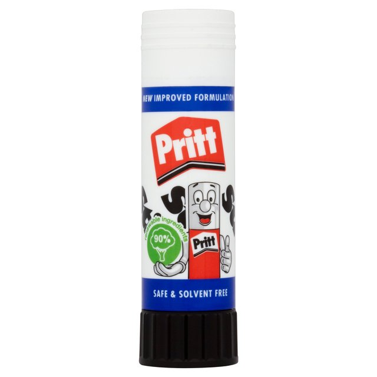

$ whoami¶Current Data Scientist at Amazon.
#include <stdio.h>
main()
{
printf("hello, world\n");
}
static void release_callchain_buffers_rcu(struct rcu_head *head)
{
struct callchain_cpus_entries *entries;
int cpu;
entries = container_of(head, struct callchain_cpus_entries, rcu_head);
for_each_possible_cpu(cpu)
kfree(entries->cpu_entries[cpu]);
kfree(entries);
}
static void release_callchain_buffers(void)
{
struct callchain_cpus_entries *entries;
entries = callchain_cpus_entries;
RCU_INIT_POINTER(callchain_cpus_entries, NULL);
call_rcu(&entries->rcu_head, release_callchain_buffers_rcu);
}

def cumsum(lst):
c = lst[0]
out = [c]
for item in lst[1:]:
c += item
out.append(c)
return out
cumsum([1, 2, 3, 4])
[1, 3, 6, 10]
cumsum(['1', '2', '3', '4'])
['1', '12', '123', '1234']
from typing import List
Vector = List[int]
def cumsum(lst: Vector):
c = lst[0]
out = [c]
for item in lst[1:]:
c += item
out.append(c)
return out
names = ['alice', 'bob', 'eve']
capitalised = []
for name in names:
capitalised.append(str.capitalize(name))
print(capitalised)
['Alice', 'Bob', 'Eve']
data = [values]
output = []
for value in data:
output.append(function(value))
loop_and_append(function, data)
map(str.capitalize, ['alice', 'bob', 'eve'])
from functools import reduce
from operator import add
reduce(add, [1, 2, 3, 4], 0) #sum
10
from functools import reduce
from operator import mul
reduce(mul, [1, 2, 3, 4], 1) #factorial
24
from functools import reduce
from operator import mul, add
reduce(add, map(mul, [1, 2, 3, 4], [2, 3, 4, 5])) #dot product
40
data = [values]
output = []
for value in data:
if predicate(value):
output.append(value)
list(filter(lambda x: x > 10, [2, 57, 41, 5, 92, 84, 2.3]))
[57, 41, 92, 84]
from toolz import curry
def add_and_scale(x, y, z):
return (x + y) * z
add_and_scale = curry(add_and_scale)
add_10yz = add_and_scale(10)
add_10_20_z = add_10yz(20)
print(add_10_20_z(2))
60
for char in 'python':
for value in [1, 2, 3, 4]:
for key in {'A': 1, 'B': 2}:
def numbers():
x = 0
while True:
yield x
x += 1
n = numbers()
print(next(n))
print(next(n))
print(next(n))
print(next(n))
0 1 2 3
def newton(n, a=2, steps=10):
for i in range(steps):
a = (a + n/a)/2
return a
newton(10)
3.162277660168379
from toolz import curry, nth, iterate
def newton_f(n, guess=2, step=10):
next_step = lambda n, a: (a + n/a)/2
next10 = curry(next_step, n)
return nth(step, iterate(next10, guess))
newton_f(10)
3.162277660168379
!ls lyrics/billboard/
03_bonnie__clyde.txt 0_to_100__the_catch_up.txt 100_pure_love.txt 100_years.txt 123.txt 18_and_life.txt 1979.txt 1999.txt 19_somethin.txt 19th_nervous_breakdown.txt 1_2_3_4_sumpin_new.txt 1_2_3_red_light.txt 1_2_step.txt 1_thing.txt 1st_of_tha_month.txt 21_guns.txt 21_questions.txt 22.txt 23.txt 247.txt 25_or_6_to_4.txt 2_become_1.txt 2_legit_2_quit.txt 2_on.txt 2_step.txt 3.txt 3_am_eternal.txt 4_minutes.txt 4_seasons_of_loneliness.txt 50_ways_to_leave_your_lover.txt 50_ways_to_say_goodbye.txt 5_oclock.txt 6345789_soulsville_usa.txt 65_love_affair.txt 679.txt 6_foot_7_foot.txt 7.txt 711.txt 7_days.txt 7_things.txt 808.txt 8675309jenny.txt 96_tears.txt 986.txt 99_luftballons.txt 9_to_5.txt TRUE.txt a_bay_bay.txt a_beautiful_morning.txt a_boy_named_sue.txt a_cowboys_work_is_never_done.txt a_different_corner.txt a_fifth_of_beethoven.txt a_groovy_kind_of_love.txt a_hazy_shade_of_winter.txt a_horse_with_no_name.txt a_lesson_in_leavin.txt a_little_bit_me_a_little_bit_you.txt a_little_bit_more.txt a_little_in_love.txt a_little_more_love.txt a_love_bizarre.txt a_love_song.txt a_milli.txt a_moment_like_this.txt a_new_day_has_come.txt a_puro_dolor.txt a_rose_is_still_a_rose.txt a_sky_full_of_stars.txt a_song_for_mama.txt a_thousand_miles.txt a_thousand_years.txt a_very_special_love_song.txt a_view_to_a_kill.txt a_walk_in_the_black_forest.txt a_whiter_shade_of_pale.txt a_whole_new_world.txt a_woman_needs_love_just_like_you_do.txt a_womans_worth.txt abc.txt abracadabra.txt absolutely_story_of_a_girl.txt according_to_you.txt achy_breaky_heart.txt addams_groove.txt addicted.txt addicted_to_love.txt addictive.txt adia.txt adore_you.txt adorn.txt adult_education.txt affair_of_the_heart.txt africa.txt after_all.txt after_the_love_has_gone.txt after_the_lovin.txt after_the_rain.txt afternoon_delight.txt again.txt against_all_odds_take_a_look_at_me_now.txt against_the_wind.txt aint_2_proud_2_beg.txt aint_even_done_with_the_night.txt aint_gonna_bump_no_more_with_no_big_fat_woman.txt aint_it_fun.txt aint_it_funny.txt aint_no_mountain_high_enough.txt aint_no_other_man.txt aint_no_stoppin_us_now.txt aint_no_sunshine.txt aint_no_woman_like_the_one_ive_got.txt aint_nothing_bout_you.txt aint_nothing_like_the_real_thing.txt aint_too_proud_to_beg.txt aint_understanding_mellow.txt air_force_ones.txt airplanes.txt alejandro.txt alfie.txt alive_and_kicking.txt all_4_love.txt all_about_that_bass.txt all_around_the_world.txt all_by_myself.txt all_cried_out.txt all_day_and_all_of_the_night.txt all_eyes_on_you.txt all_falls_down.txt all_for_love.txt all_for_you.txt all_i_do_is_win.txt all_i_have.txt all_i_have_to_give.txt all_i_need.txt all_i_need_is_a_miracle.txt all_i_really_want_to_do.txt all_i_wanna_do.txt all_i_wanna_do_is_make_love_to_you.txt all_i_want.txt all_my_life.txt all_night_long.txt all_night_long_all_night.txt all_of_me.txt all_of_the_lights.txt all_or_nothing.txt all_out_of_love.txt all_right.txt all_right_now.txt all_she_wants_to_do_is_dance.txt all_star.txt all_summer_long.txt all_that_she_wants.txt all_the_man_that_i_need.txt all_the_right_moves.txt all_the_small_things.txt all_the_things_your_man_wont_do.txt all_this_love.txt all_this_time.txt all_those_years_ago.txt all_through_the_night.txt all_you_need_is_love.txt all_you_wanted.txt allentown.txt almost_doesnt_count.txt almost_paradise.txt almost_persuaded.txt alone.txt alone_again_naturally.txt already_gone.txt alright.txt also_sprach_zarathustra_2001.txt always.txt always_and_forever.txt always_be_my_baby.txt always_in_my_heart.txt always_on_my_mind.txt always_on_time.txt always_something_there_to_remind_me.txt am_i_wrong.txt amanda.txt amazed.txt amazing.txt amazing_grace.txt america.txt american_boy.txt american_honey.txt american_kids.txt american_pie.txt american_soldier.txt american_woman.txt amnesia.txt amos_moses.txt an_american_dream.txt an_everlasting_love.txt an_innocent_man.txt anaconda.txt and_our_feelings.txt angel.txt angel_eyes.txt angel_in_your_arms.txt angel_of_mine.txt angel_of_the_morning.txt angie.txt angie_baby.txt animal.txt animals.txt annies_song.txt anniversary.txt another_brick_in_the_wall_part_ii.txt another_day_in_paradise.txt another_dayoh_woman_oh_why.txt another_night.txt another_one_bites_the_dust.txt another_sad_love_song.txt anticipation.txt any_day_now.txt any_time_any_place.txt anything.txt anything_for_you.txt anytime_you_need_a_friend.txt anywhere.txt apologize.txt applause.txt apples_peaches_pumpkin_pie.txt aquariuslet_the_sunshine_in.txt are_you_gonna_be_my_girl.txt are_you_gonna_kiss_me_or_not.txt are_you_happy_now.txt are_you_jimmy_ray.txt are_you_ready.txt ariel.txt arizona.txt armageddon_it.txt around_the_way_girl.txt arthurs_theme_best_that_you_can_do.txt as_good_as_i_once_was.txt as_i_lay_me_down.txt as_long_as_you_love_me.txt ask_of_you.txt ass_back_home.txt at_seventeen.txt at_this_moment.txt at_your_best_you_are_love.txt atlantis.txt austin.txt automatic.txt axel_f.txt ayo.txt ayo_technology.txt babe.txt baby.txt baby_baby.txt baby_baby_dont_cry.txt baby_boy.txt baby_come_back.txt baby_come_to_me.txt baby_dont_forget_my_number.txt baby_dont_get_hooked_on_me.txt baby_dont_go.txt baby_face.txt baby_got_back.txt baby_hold_on.txt baby_i_love_you.txt baby_i_love_your_way.txt baby_i_love_your_way_live.txt baby_i_love_your_wayfreebird_medley.txt baby_i_need_your_lovin.txt baby_im_back.txt baby_im_for_real.txt baby_im_yours.txt baby_its_you.txt baby_let_me_take_you_in_my_arms.txt baby_love.txt baby_now_that_ive_found_you.txt baby_one_more_time.txt baby_scratch_my_back.txt baby_the_rain_must_fall.txt babybabybaby.txt back_2_good.txt back__forth.txt back_at_one.txt back_for_good.txt back_here.txt back_in_my_arms_again.txt back_in_the_day.txt back_in_time.txt back_on_the_chain_gang.txt back_stabbers.txt back_that_azz_up.txt back_then.txt back_to_back.txt back_to_december.txt back_to_life_however_do_you_want_me.txt back_to_the_hotel.txt backseat.txt bad.txt bad_bad_leroy_brown.txt bad_blood.txt bad_boy.txt bad_boys.txt bad_case_of_loving_you_doctor_doctor.txt bad_day.txt bad_girls.txt bad_medicine.txt bad_moon_rising.txt bad_romance.txt bad_time.txt bag_lady.txt bailamos.txt bailando.txt baker_street.txt ball_of_confusion_thats_what_the_world_is_today.txt ballad_of_the_green_berets.txt ballerina_girl.txt band_of_gold.txt band_on_the_run.txt bang_bang.txt bang_bang_my_baby_shot_me_down.txt barbara_ann.txt barbie_girl.txt barefoot_blue_jean_night.txt barefootin.txt barely_breathing.txt barracuda.txt bartender.txt batdance.txt battlefield.txt be_like_that.txt be_my_lover.txt be_near_me.txt be_thankful_for_what_you_got.txt be_with_you.txt be_without_you.txt beach_baby.txt beachin.txt beat_it.txt beautiful.txt beautiful_day.txt beautiful_girls.txt beautiful_in_my_eyes.txt beautiful_liar.txt beautiful_life.txt beautiful_soul.txt beautiful_sunday.txt beauty_and_a_beat.txt beauty_and_the_beast.txt beauty_is_only_skin_deep.txt because_i_love_you_the_postman_song.txt because_of_love.txt because_of_you.txt because_the_night.txt because_you_loved_me.txt bed.txt bed_of_roses.txt bedrock.txt been_around_the_world.txt beep.txt beer_for_my_horses.txt before_he_cheats.txt before_i_let_you_go.txt before_the_next_teardrop_falls.txt before_you_walk_out_of_my_life__like_this_and_like_that.txt beginningscolour_my_world.txt behind_closed_doors.txt behind_these_hazel_eyes.txt being_with_you.txt believe.txt believe_me.txt ben.txt bend_me_shape_me.txt bennie_and_the_jets.txt bent.txt bernadette.txt berzerk.txt best_day_of_my_life.txt best_friend.txt best_i_ever_had.txt best_of_my_love.txt best_of_you.txt best_song_ever.txt best_thing_i_never_had.txt best_thing_that_ever_happened_to_me.txt betcha_by_golly_wow.txt bette_davis_eyes.txt better_be_good_to_me.txt better_days_and_the_bottom_drops_out.txt better_in_time.txt better_love_next_time.txt better_off_alone.txt better_than_me.txt beverly_hills.txt big_daddy.txt big_girls_dont_cry.txt big_green_tractor.txt big_love.txt big_pimpin.txt big_poppa.txt big_shit_poppin_do_it.txt big_time.txt biggest_part_of_me.txt billie_jean.txt billionaire.txt bills_bills_bills.txt billy_dont_be_a_hero.txt birthday.txt birthday_cake.txt birthday_sex.txt bitch.txt bitch_better_have_my_money.txt bitter_sweet_symphony.txt black_and_white.txt black_and_yellow.txt black_balloon.txt black_cat.txt black_horse_and_the_cherry_tree.txt black_is_black.txt black_or_white.txt black_pearl.txt black_velvet.txt black_water.txt black_widow.txt blah_blah_blah.txt blame_it.txt blame_it_on_the_rain.txt blank_space.txt blaze_of_glory.txt bleeding_love.txt blessings.txt blinded_by_the_light.txt blow.txt blow_me_one_last_kiss.txt blowing_kisses_in_the_wind.txt blown_away.txt blue_bayou.txt blue_da_ba_dee.txt blue_eyes.txt bluer_than_blue.txt blurred_lines.txt blurry.txt body_bumpin_yippieyiyo.txt body_party.txt bohemian_rhapsody.txt boogie_down.txt boogie_fever.txt boogie_nights.txt boogie_on_reggae_woman.txt boogie_oogie_oogie.txt boogie_wonderland.txt boogie_woogie_bugle_boy.txt boom_boom_pow.txt boom_clap.txt boom_shake_the_room.txt boombastic.txt bootylicious.txt bop_gun_one_nation.txt borderline.txt born_a_woman.txt born_free.txt born_in_the_usa.txt born_this_way.txt born_to_be_alive.txt born_to_be_my_baby.txt born_to_be_wild.txt bossy.txt bottle_of_wine.txt bottoms_up.txt boulevard_of_broken_dreams.txt bounce_with_me.txt boyfriend.txt boys_round_here.txt brand_new_key.txt brandy_youre_a_fine_girl.txt brass_in_pocket.txt brave.txt break_free.txt break_it_down_again.txt break_it_off.txt break_my_stride.txt break_up.txt break_up_to_make_up.txt break_your_heart.txt breakaway.txt breakdance.txt breakdown_dead_ahead.txt breakeven.txt breakfast_at_tiffanys.txt breakin_my_heart_pretty_brown_eyes.txt breakin_theres_no_stopping_us.txt breaking_the_habit.txt breaking_up_is_hard_to_do.txt breaking_us_in_two.txt breakout.txt breathe.txt breathe_again.txt bridge_over_troubled_water.txt brilliant_disguise.txt bring_em_out.txt bring_it_all_to_me.txt bring_me_to_life.txt bring_the_boys_home.txt broadway.txt broken_hearted_me.txt broken_wings.txt brokenhearted.txt brother_louie.txt brown_eyed_girl.txt brown_sugar.txt bubbly.txt budapest.txt buffalo_stance.txt bugatti.txt build_me_up_buttercup.txt building_a_mystery.txt bulletproof.txt bump_bump_bump.txt bump_n_grind.txt bungle_in_the_jungle.txt burn.txt burn_it_down.txt burnin_it_down.txt burnin_up.txt burning_heart.txt burning_love.txt bus_stop.txt bust_a_move.txt bust_it_baby_part_2.txt butta_love.txt butterflies.txt butterfly.txt buttons.txt buy_u_a_drank_shawty_snappin.txt bye_bye_bye.txt c_u_when_u_get_there.txt cab_driver.txt california_dreamin.txt california_girls.txt california_gurls.txt california_nights.txt call_me.txt call_me_maybe.txt call_me_when_youre_sober.txt call_on_me.txt calling_all_angels.txt can_i_change_my_mind.txt can_i_get_a.txt can_we_talk.txt can_you_feel_the_love_tonight.txt candida.txt candle_in_the_wind.txt candle_in_the_wind_1997.txt candy_rain.txt candy_shop.txt cant_believe_it.txt cant_feel_my_face.txt cant_fight_the_moonlight.txt cant_fight_this_feeling.txt cant_get_enough_of_your_love.txt cant_get_it_out_of_my_head.txt cant_get_you_out_of_my_head.txt cant_help_but_wait.txt cant_help_falling_in_love.txt cant_hold_us.txt cant_hold_us_down.txt cant_let_go.txt cant_let_you_go.txt cant_live_without_your_love_and_affection.txt cant_nobody_hold_me_down.txt cant_remember_to_forget_you.txt cant_smile_without_you.txt cant_stay_away_from_you.txt cant_stop.txt cant_stop_lovin_you.txt cant_stop_this_thing_we_started.txt cant_stop_wont_stop.txt cant_take_my_eyes_off_you.txt cant_we_try.txt cant_you_hear_my_heart_beat.txt cant_you_see.txt cantaloop_flip_fantasia.txt car_wash.txt cara_mia.txt caramel.txt careless_whisper.txt caribbean_queen.txt carnival.txt carrie.txt carrie_anne.txt carry_on.txt carry_on_wayward_son.txt carry_out.txt cars.txt casanova.txt case_of_the_ex.txt cashin_out.txt cast_your_fate_to_the_wind.txt catch_me_im_falling.txt catch_my_breath.txt catch_us_if_you_can.txt cater_2_u.txt cats_in_the_cradle.txt caught_up.txt caught_up_in_you.txt causing_a_commotion.txt cecilia.txt celebration.txt centerfold.txt centuries.txt cest_la_vie.txt chain_hang_low.txt chains.txt chandelier.txt change_clothes.txt change_of_heart.txt change_the_world.txt chantes_got_a_man.txt chariot.txt chariots_of_fire.txt chasing_cars.txt check_on_it.txt check_yo_self.txt cheerleader.txt cheers_drink_to_that.txt cherchez_la_femme.txt cherish.txt cherry_bomb.txt cherry_cherry.txt chevy_van.txt chickaboom_dont_ya_jes_love_it.txt chicken_fried.txt children.txt china_girl.txt chirpy_chirpy_cheep_cheep.txt chuck_es_in_love.txt church_of_the_poison_mind.txt circus.txt city_of_new_orleans.txt clair.txt clap_for_the_wolfman.txt clarity.txt classic.txt classic_man.txt classical_gas.txt clean_up_woman.txt cleanin_out_my_closet.txt climax.txt clocks.txt close_my_eyes_forever.txt close_to_you.txt close_your_eyes.txt closer.txt closer_to_free.txt club_cant_handle_me.txt clumsy.txt cmon_and_get_my_love.txt cmon_n_ride_it_the_train.txt coco.txt coco_jambo.txt coconut.txt cold_as_ice.txt cold_hearted.txt cold_rock_a_party.txt cold_sweat.txt colder_weather.txt collide.txt color_him_father.txt colors_of_the_wind.txt come__get_it.txt come_and_get_it.txt come_and_get_your_love.txt come_and_talk_to_me.txt come_back_to_me.txt come_back_when_you_grow_up.txt come_dancing.txt come_go_with_me.txt come_on_down_to_my_boat.txt come_on_eileen.txt come_on_over_baby_all_i_want_is_you.txt come_over.txt come_sail_away.txt come_saturday_morning.txt come_to_my_window.txt come_together.txt come_undone.txt come_with_me.txt come_with_me_now.txt comforter.txt comin_in_and_out_of_your_life.txt coming_home.txt coming_on_strong.txt coming_out_of_the_dark.txt coming_up.txt complicated.txt confessions_part_ii.txt conga.txt constantly.txt contagious.txt control.txt convoy.txt cool.txt cool_change.txt cool_for_the_summer.txt cool_it_now.txt cool_jerk.txt cool_kids.txt cool_love.txt cool_night.txt cooler_than_me.txt copacabana.txt cotton_eye_joe.txt could_it_be_im_falling_in_love.txt could_it_be_magic.txt couldnt_get_it_right.txt couldve_been.txt count_me_in.txt count_on_me.txt counting_blue_cars.txt counting_stars.txt country_boy_you_got_your_feet_in_la.txt country_girl_shake_it_for_me.txt country_grammar_hot_shit.txt cover_girl.txt cover_me.txt coward_of_the_county.txt cowboy_take_me_away.txt cowboys_to_girls.txt crack_a_bottle.txt cracklin_rosie.txt cradle_of_love.txt crank_that_soulja_boy.txt crash_and_burn.txt crash_my_party.txt crazy.txt crazy_for_this_girl.txt crazy_for_you.txt crazy_girl.txt crazy_in_love.txt crazy_little_thing_called_love.txt cream.txt creep.txt crimson_and_clover.txt crocodile_rock.txt cross_my_broken_heart.txt cruel_summer.txt cruise.txt cruisin.txt crush.txt crush_on_you.txt cry_for_help.txt cry_for_you.txt cry_like_a_baby.txt cry_me_a_river.txt cryin.txt crying.txt crying_in_the_chapel.txt crying_time.txt crystal_blue_persuasion.txt cum_on_feel_the_noize.txt cupid.txt cupidive_loved_you_for_a_long_time.txt cupids_chokehold.txt cups_pitch_perfects_when_im_gone.txt cut_the_cake.txt cyclone.txt da_dip.txt da_doo_ron_ron.txt da_ya_think_im_sexy.txt daddy_dont_you_walk_so_fast.txt daddys_home.txt daisy_a_day.txt damaged.txt damn.txt damn_i_wish_i_was_your_lover.txt dance_a.txt dance_dance.txt dance_dance_dance_yowsah_yowsah_yowsah.txt dance_hall_days.txt dance_the_night_away.txt dance_to_the_music.txt dance_with_me.txt dancin_shoes.txt dancing_in_the_dark.txt dancing_in_the_moonlight.txt dancing_in_the_sheets.txt dancing_machine.txt dancing_on_the_ceiling.txt dancing_queen.txt dandy.txt danger_been_so_long.txt danger_zone.txt dangerous.txt dani_california.txt daniel.txt dannys_song.txt dark_horse.txt dark_lady.txt daughters.txt day_after_day.txt day_by_day.txt day_dreaming.txt day_n_nite.txt daydream.txt daydream_believer.txt daydreamin.txt daylight.txt days_go_by.txt dazz.txt dazzey_duks.txt de_do_do_do_de_da_da_da.txt deacon_blues.txt dead_and_gone.txt dead_giveaway.txt dear_future_husband.txt dear_mama.txt december.txt december_1963_oh_what_a_night.txt dedicated_to_the_one_i_love.txt deep_purple.txt deeper_and_deeper.txt dej`a_vu.txt deja_vu_uptown_baby.txt delilah.txt delta_dawn.txt demons.txt der_kommissar.txt desert_rose.txt desire.txt deuces.txt devil_inside.txt devil_with_a_blue_dress_ongood_golly_miss_molly.txt devil_woman.txt devils_gun.txt diamond_girl.txt diamonds.txt diamonds_and_pearls.txt diary.txt did_it_in_a_minute.txt did_you_ever_have_to_make_up_your_mind.txt didnt_i_blow_your_mind_this_time.txt didnt_we_almost_have_it_all.txt die_young.txt differences.txt diggin_on_you.txt dilemma.txt dim_all_the_lights.txt dip_it_low.txt dirt.txt dirt_off_your_shoulder.txt dirt_road_anthem.txt dirty_diana.txt dirty_laundry.txt dirty_little_secret.txt dirty_water.txt disappear.txt disco_duck.txt disco_inferno.txt disco_lady.txt disco_nights_rockfreak.txt disturbia.txt diva.txt dizzy.txt dj_got_us_fallin_in_love.txt do_anything.txt do_for_love.txt do_i_do.txt do_i_have_to_say_the_words.txt do_i_make_you_proud.txt do_it_again.txt do_it_til_youre_satisfied.txt do_it_to_it.txt do_me.txt do_that_to_me_one_more_time.txt do_what_u_want.txt do_what_you_do.txt do_you_believe_in_love.txt do_you_believe_in_magic.txt do_you_believe_in_us.txt do_you_know_the_way_to_san_jose.txt do_you_know_what_i_mean.txt do_you_know_what_it_takes.txt do_you_really_want_to_hurt_me.txt do_you_remember.txt do_you_wanna_dance.txt do_you_wanna_make_love.txt do_you_want_me.txt do_your_thing.txt doctor_my_eyes.txt doctors_orders.txt doesnt_really_matter.txt doesnt_somebody_want_to_be_wanted.txt doin_it.txt doing_it_all_for_my_baby.txt domino.txt dont.txt dont_be_cruel.txt dont_bring_me_down.txt dont_call_us_well_call_you.txt dont_cha.txt dont_cry.txt dont_cry_for_me_argentina.txt dont_cry_out_loud.txt dont_disturb_this_groove.txt dont_do_me_like_that.txt dont_dream_its_over.txt dont_expect_me_to_be_your_friend.txt dont_fall_in_love_with_a_dreamer.txt dont_forget_about_us.txt dont_forget_me_when_im_gone.txt dont_get_me_wrong.txt dont_give_up_on_us.txt dont_go_breaking_my_heart.txt dont_happen_twice.txt dont_it_make_my_brown_eyes_blue.txt dont_just_stand_there.txt dont_knock_my_love.txt dont_know_much.txt dont_know_why.txt dont_leave_me_this_way.txt dont_let_go.txt dont_let_go_love.txt dont_let_it_end.txt dont_let_me_be_misunderstood.txt dont_let_me_get_me.txt dont_let_the_sun_go_down_on_me.txt dont_lie.txt dont_look_back.txt dont_lose_my_number.txt dont_matter.txt dont_mean_nothing.txt dont_mess_with_bill.txt dont_mess_with_my_man.txt dont_phunk_with_my_heart.txt dont_pull_your_love.txt dont_rush_me.txt dont_say_you_dont_remember.txt dont_shed_a_tear.txt dont_sleep_in_the_subway.txt dont_stand_so_close_to_me.txt dont_stop.txt dont_stop_believin.txt dont_stop_the_music.txt dont_stop_til_you_get_enough.txt dont_take_it_personal_just_one_of_dem_days.txt dont_take_the_girl.txt dont_talk_to_strangers.txt dont_tell_em.txt dont_tell_me.txt dont_think_im_not.txt dont_trust_me.txt dont_turn_around.txt dont_wake_me_up.txt dont_walk_away.txt dont_wanna_be_a_player.txt dont_wanna_fall_in_love.txt dont_wanna_go_home.txt dont_wanna_lose_you.txt dont_wanna_try.txt dont_worry_baby.txt dont_worry_be_happy.txt dont_you_care.txt dont_you_forget_about_me.txt dont_you_know_what_the_night_can_do.txt dont_you_wanna_stay.txt dont_you_want_me.txt dont_you_worry_bout_a_thing.txt dont_you_worry_child.txt doo_wop_that_thing.txt double_vision.txt down.txt down_4_u.txt down_by_the_lazy_river.txt down_in_the_boondocks.txt down_low_nobody_has_to_know.txt down_on_me.txt down_under.txt downtown.txt downtown_train.txt drag_me_down.txt draggin_the_line.txt drank_in_my_cup.txt dre_day.txt dream_about_you.txt dream_on.txt dream_weaver.txt dreamin.txt dreamlover.txt dreams.txt dreamtime.txt dress_you_up.txt drift_away.txt drive.txt drive_by.txt drive_for_daddy_gene.txt drivin_my_life_away.txt drop_it_like_its_hot.txt drops_of_jupiter_tell_me.txt drowning_in_the_sea_of_love.txt drunk_in_love.txt drunk_on_a_plane.txt drunk_on_you.txt dude.txt dueling_banjos.txt dust_in_the_wind.txt dynamite.txt dynomite.txt earned_it.txt easy.txt easy_come_easy_go.txt easy_lover.txt easy_loving.txt easy_to_be_hard.txt ebony_and_ivory.txt ebony_eyes.txt edge_of_seventeen_just_like_the_white_winged_dove.txt eenie_meenie.txt ei.txt eight_days_a_week.txt el_perdon.txt elastic_heart.txt election_day.txt electric_avenue.txt electric_blue.txt elenore.txt elevators_me__you.txt elusive_butterfly.txt elvira.txt emotion.txt emotional_rescue.txt emotions.txt empire_state_of_mind.txt empty_garden_hey_hey_johnny.txt end_of_the_road.txt endless_love.txt endless_summer_nights.txt enjoy_the_silence.txt enjoy_yourself.txt epic.txt eres_tu.txt escapade.txt escape.txt escape_the_pi~na_colada_song.txt et.txt eternal_flame.txt eve_of_destruction.txt even_if_it_breaks_your_heart.txt even_the_nights_are_better.txt evergreen_love_theme_from_a_star_is_born.txt everlasting_love.txt every_1s_a_winner.txt every_breath_you_take.txt every_day_of_the_week.txt every_girl.txt every_heartbeat.txt every_kinda_people.txt every_little_step.txt every_little_thing_i_do.txt every_little_thing_she_does_is_magic.txt every_morning.txt every_rose_has_its_thorn.txt every_time_i_close_my_eyes.txt every_time_i_turn_around_back_in_love_again.txt every_woman_in_the_world.txt everybody_backstreets_back.txt everybody_everybody.txt everybody_have_fun_tonight.txt everybody_plays_the_fool.txt everybody_talks.txt everybody_wants_to_rule_the_world.txt everybodys_talkin.txt everyday.txt everyday_is_a_winding_road.txt everyday_people.txt everything.txt everything_about_you.txt everything_changes.txt everything_i_do_i_do_it_for_you.txt everything_i_own.txt everything_is_beautiful.txt everything_she_wants.txt everything_you_want.txt everything_your_heart_desires.txt everytime.txt everytime_i_think_of_you.txt everytime_we_touch.txt everytime_you_go_away.txt evil_ways.txt evil_woman.txt excuse_me_miss.txt exfactor.txt exhale_shoop_shoop.txt express.txt express_yourself.txt expressway_to_your_heart.txt exs__ohs.txt eye_in_the_sky.txt eye_of_the_tiger.txt eyes_without_a_face.txt face_down.txt faded.txt faded_pictures.txt fading_like_a_flower_every_time_you_leave.txt faith.txt faithful.txt faithfully.txt fall_for_you.txt fall_in_love_with_me.txt fallin.txt fallin_for_you.txt fallin_in_love.txt falling.txt fame.txt family_affair.txt family_man.txt fancy.txt fanny_be_tender_with_my_love.txt fantastic_voyage.txt fantasy.txt far_away.txt far_behind.txt far_from_over.txt fast_car.txt fastlove.txt father.txt father_figure.txt feel_good_inc.txt feel_like_makin_love.txt feel_me_flow.txt feel_so_close.txt feel_so_good.txt feel_this_moment.txt feelin_stronger_every_day.txt feelings.txt feels_like_the_first_time.txt feels_like_tonight.txt feels_so_good.txt feels_so_right.txt fergalicious.txt ferry_cross_the_mersey.txt fields_of_gold.txt fiesta.txt fight_song.txt fight_the_power.txt fighter.txt fill_me_in.txt finally.txt find_your_love.txt fire.txt fire_and_rain.txt fire_burning.txt fire_lake.txt fireflies.txt firework.txt first_time.txt five_oclock_world.txt flash_light.txt flashdance_what_a_feeling.txt flashing_lights.txt flava_in_ya_ear.txt flex_ooh_ooh_ooh.txt float_on.txt fly_away.txt fly_like_an_eagle.txt fly_over_states.txt fly_robin_fly.txt flying_without_wings.txt follow_me.txt follow_you_down__til_i_hear_it_from_you.txt fool_if_you_think_its_over.txt fooled_around_and_fell_in_love.txt foolish.txt foolish_beat.txt foolish_games__you_were_meant_for_me.txt footloose.txt for_all_we_know.txt for_the_first_time.txt for_the_love_of_him.txt for_the_love_of_money.txt for_what_its_worth.txt for_you_i_will.txt for_you_i_will_confidence.txt for_your_eyes_only.txt for_your_love.txt forever.txt forever_and_for_always.txt forever_in_love.txt forever_your_girl.txt forgot_about_dre.txt fortress_around_your_heart.txt fortunate.txt found_out_about_you.txt fourfiveseconds.txt fox_on_the_run.txt frankenstein.txt freak_like_me.txt freak_me.txt freddies_dead.txt free_fallin.txt free_ride.txt free_your_mind.txt freedom.txt freedom_90.txt freekaleek.txt freekn_you.txt freeway_of_love.txt freezeframe.txt fresh.txt friday_im_in_love.txt friday_on_my_mind.txt friend_of_mine.txt friends_and_lovers.txt from_a_distance.txt from_the_bottom_of_my_broken_heart.txt from_this_moment_on.txt frontin.txt frozen.txt fuck_it_i_dont_want_you_back.txt fuck_you.txt fuckin_perfect.txt fuckin_problems.txt full_moon.txt funkdafied.txt funky_broadway.txt funky_cold_medina.txt funky_nassau.txt funky_worm.txt funkytown.txt funny_face.txt galveston.txt game_of_love.txt game_over_flip.txt games_people_play.txt gangnam_style.txt gangsta_lean.txt gangsta_lovin.txt gangstas_paradise.txt garden_party.txt gdfr.txt genie_in_a_bottle.txt georgy_girl.txt get_back.txt get_busy.txt get_closer.txt get_dancin.txt get_down.txt get_down_get_down_get_on_the_floor.txt get_down_on_it.txt get_down_tonight.txt get_here.txt get_it_on.txt get_it_on_tonite.txt get_it_poppin.txt get_it_shawty.txt get_it_together.txt get_like_me.txt get_low.txt get_lucky.txt get_money.txt get_off.txt get_on_the_good_foot.txt get_on_up.txt get_outta_my_dreams_get_into_my_car.txt get_over_yourself.txt get_ready.txt get_right.txt get_the_party_started.txt get_together.txt get_up.txt get_up_and_boogie.txt get_up_before_the_night_is_over.txt get_ur_freak_on.txt get_used_to_it.txt get_your_shine_on.txt getaway.txt gettin_jiggy_wit_it.txt getto_jam.txt ghetto_cowboy.txt ghetto_supastar_that_is_what_you_are.txt ghettout.txt ghost.txt ghostbusters.txt gigolo.txt gimme_dat_ding.txt gimme_gimme_good_lovin.txt gimme_little_sign.txt gimme_some_lovin.txt gimme_that.txt gimme_the_light.txt gin_and_juice.txt girl_crush.txt girl_im_gonna_miss_you.txt girl_on_fire.txt girl_on_tv.txt girl_you_know_its_true.txt girl_youll_be_a_woman_soon.txt girlfight.txt girlfriend.txt girls_just_want_to_have_fun.txt girls_nite_out.txt gitarzan.txt give_a_little_bit.txt give_it_2_you.txt give_it_to_me.txt give_it_to_you.txt give_it_up.txt give_it_up_turn_it_loose.txt give_me_everything.txt give_me_just_a_little_more_time.txt give_me_just_one_night_una_noche.txt give_me_love_give_me_peace_on_earth.txt give_me_one_reason.txt give_me_that.txt give_me_the_night.txt give_up_the_funk_tear_the_roof_off_the_sucker.txt give_your_heart_a_break.txt gives_you_hell.txt giving_him_something_he_can_feel.txt giving_it_up_for_your_love.txt giving_you_the_benefit.txt giving_you_the_best_that_i_got.txt glad_you_came.txt glamorous.txt gloria.txt glory_days.txt glory_of_love.txt go_all_the_way.txt go_away_little_girl.txt go_getta.txt go_home.txt go_now.txt go_the_distance.txt go_your_own_way.txt god_gave_me_you.txt god_must_have_spent_a_little_more_time_on_you.txt goin_crazy.txt goin_down.txt goin_out_of_my_headcant_take_my_eyes_off_you.txt going_in_circles.txt gold.txt gold_digger.txt golden_years.txt goldfinger.txt gone.txt gone_gone_gone.txt gone_till_november.txt gonna_fly_now.txt gonna_make_you_sweat_everybody_dance_now.txt good.txt good_enough.txt good_feeling.txt good_for_me.txt good_for_you.txt good_girl.txt good_girls_go_bad.txt good_life.txt good_lovin.txt good_morning_beautiful.txt good_morning_starshine.txt good_thing.txt good_time.txt good_times.txt good_vibrations.txt goodbye.txt goodbye_girl.txt goodbye_yellow_brick_road.txt goodies.txt goodnight_tonight.txt goody_twoshoes.txt gossip_folks.txt got_a_hold_on_me.txt got_me_waiting.txt got_money.txt got_my_mind_set_on_you.txt got_to_be_real.txt got_to_get_you_into_my_life.txt got_to_give_it_up.txt gotham_city.txt gotta_be_somebody.txt gotta_get_thru_this.txt gotta_tell_you.txt grazing_in_the_grass.txt grease.txt greatest_love_of_all.txt green_green_grass_of_home.txt green_light.txt green_river.txt green_tambourine.txt greeneyed_lady.txt grenade.txt grillz.txt grind_with_me.txt groove_is_in_the_heart.txt groove_me.txt groove_thang.txt groovin.txt groovy_situation.txt grown_men_dont_cry.txt guantanamera.txt guilty.txt gypsy_man.txt gypsys_tramps__thieves.txt habits_stay_high.txt hair.txt halfbreed.txt halfcrazy.txt hall_of_fame.txt halo.txt hands.txt hands_clean.txt hands_to_heaven.txt handy_man.txt hang_em_high.txt hang_on_in_there_baby.txt hang_on_sloopy.txt hangin_tough.txt hanging_by_a_moment.txt hanky_panky.txt happily_ever_after.txt happy.txt happy_people.txt happy_together.txt hard.txt hard_habit_to_break.txt hard_knock_life_ghetto_anthem.txt hard_to_love.txt hard_to_say_im_sorry.txt harden_my_heart.txt harlem_shake.txt harper_valley_pta.txt hate_it_or_love_it.txt hate_me.txt hate_that_i_love_you.txt have_i_told_you_lately.txt have_you_ever.txt have_you_ever_needed_someone_so_bad.txt have_you_ever_really_loved_a_woman.txt have_you_forgotten.txt have_you_never_been_mellow.txt have_you_seen_her.txt havent_met_you_yet.txt hawaii_fiveo.txt hay.txt hazard.txt he_aint_heavy_hes_my_brother.txt he_cant_love_u.txt he_dont_love_you_like_i_love_you.txt he_loves_u_not.txt he_wasnt_man_enough.txt head_over_heels.txt head_to_toe.txt headlines.txt headsprung.txt headstrong.txt heard_it_all_before.txt heard_it_in_a_love_song.txt heart_and_soul.txt heart_attack.txt heart_full_of_soul.txt heart_of_glass.txt heart_of_gold.txt heart_to_heart.txt heartache_tonight.txt heartbeat_song.txt heartbreak_hotel.txt heartbreaker.txt heartless.txt hearts.txt heat_of_the_moment.txt heat_of_the_night.txt heaven.txt heaven_help_me.txt heaven_is_a_place_on_earth.txt heaven_knows.txt heaven_must_be_missing_an_angel.txt heaven_must_have_sent_you.txt heaven_sent.txt helen_wheels.txt hell_yeah.txt hella_good.txt hello.txt hello_again.txt hello_i_love_you.txt hello_its_me.txt help.txt help_me.txt help_me_make_it_through_the_night.txt help_me_rhonda.txt hemorrhage_in_my_hands.txt her_diamonds.txt here.txt here_and_now.txt here_comes_my_baby.txt here_comes_that_rainy_day_feeling_again.txt here_comes_the_hotstepper.txt here_comes_the_judge.txt here_comes_the_rain_again.txt here_comes_the_sun.txt here_i_am.txt here_i_am_come_and_take_me.txt here_i_go_again.txt here_in_your_arms.txt here_is_gone.txt here_we_are.txt here_we_go.txt here_we_go_again.txt here_without_you.txt here_you_come_again.txt heres_to_the_night.txt hero.txt hes_mine.txt hes_the_greatest_dancer.txt hey_baby.txt hey_baby_drop_it_to_the_floor.txt hey_brother.txt hey_daddy_daddys_home.txt hey_deanie.txt hey_jealousy.txt hey_jude.txt hey_lover.txt hey_ma.txt hey_mama.txt hey_mr_dj.txt hey_nineteen.txt hey_soul_sister.txt hey_there_delilah.txt hey_there_lonely_girl.txt hey_western_union_man.txt hey_wont_you_play_another_somebody_done_somebody_wrong_song.txt hey_ya.txt high_enough.txt high_school_dance.txt higher.txt higher_ground.txt higher_love.txt highway_dont_care.txt him.txt hip_hop_hooray.txt hip_to_be_square.txt hips_dont_lie.txt hit_em_up_style_oops.txt hit_me_off.txt hit_me_with_your_best_shot.txt hit_the_quan.txt hitchin_a_ride.txt ho_hey.txt hocus_pocus.txt hold_it_against_me.txt hold_me.txt hold_me_now.txt hold_me_thrill_me_kiss_me.txt hold_me_thrill_me_kiss_me_kill_me.txt hold_me_tight.txt hold_my_hand.txt hold_on.txt hold_on_my_heart.txt hold_on_tight.txt hold_on_to_the_nights.txt hold_on_were_going_home.txt hold_the_line.txt hold_what_youve_got.txt hold_you_tight.txt hold_your_head_up.txt holding_back_the_years.txt hole_hearted.txt holidae_in.txt holiday.txt hollaback_girl.txt hollywood_nights.txt hollywood_swinging.txt holy_grail.txt home.txt homeward_bound.txt honey.txt honey_bee.txt honey_im_good.txt honky_tonk_women.txt hook.txt hooked_on_a_feeling.txt hooked_on_classics.txt hooray_for_hazel.txt hopelessly_devoted_to_you.txt hot_blooded.txt hot_boy.txt hot_boyz.txt hot_child_in_the_city.txt hot_fun_in_the_summertime.txt hot_girls_in_love.txt hot_in_herre.txt hot_in_the_city.txt hot_line.txt hot_n_cold.txt hot_rod_lincoln.txt hot_stuff.txt hotel.txt hotel_california.txt hotel_room_service.txt hotline_bling.txt house_party.txt how_am_i_supposed_to_live_without_you.txt how_bout_us.txt how_can_i_be_sure.txt how_can_i_fall.txt how_can_we_be_lovers.txt how_can_you_mend_a_broken_heart.txt how_deep_is_your_love.txt how_do_i_live.txt how_do_i_make_you.txt how_do_u_want_it__california_love.txt how_do_you_do.txt how_do_you_like_me_now.txt how_do_you_sleep.txt how_do_you_talk_to_an_angel.txt how_forever_feels.txt how_long.txt how_low.txt how_much_i_feel.txt how_much_love.txt how_sweet_it_is_to_be_loved_by_you.txt how_to_love.txt how_to_save_a_life.txt how_we_do.txt how_will_i_know.txt how_you_gonna_act_like_that.txt how_you_gonna_see_me_now.txt how_you_remind_me.txt hows_it_going_to_be.txt human.txt human_nature.txt humpin_around.txt hung_up.txt hungry.txt hungry_eyes.txt hungry_heart.txt hungry_like_the_wolf.txt hurdy_gurdy_man.txt hurt_so_bad.txt hurting_each_other.txt hurts_so_good.txt hush_hush_sweet_charlotte.txt hypnotize.txt hypnotized.txt i_adore_mi_amor.txt i_aint_gonna_stand_for_it.txt i_am_a_rock.txt i_ami_said.txt i_believe.txt i_believe_i_can_fly.txt i_believe_in_you_and_me.txt i_believe_in_you_you_believe_in_me.txt i_belong_to_you_every_time_i_see_your_face.txt i_can.txt i_can_dream_about_you.txt i_can_help.txt i_can_love_you_like_that.txt i_can_see_clearly_now.txt i_can_see_for_miles.txt i_cant_dance.txt i_cant_get_next_to_you.txt i_cant_get_no_satisfaction.txt i_cant_go_for_that_no_can_do.txt i_cant_help_myself_sugar_pie_honey_bunch.txt i_cant_hold_back.txt i_cant_make_you_love_me.txt i_cant_sleep_baby_if_i.txt i_cant_stand_it.txt i_cant_stand_the_rain.txt i_cant_tell_you_why.txt i_cant_wait.txt i_cant_wait_another_minute.txt i_cry.txt i_didnt_mean_to_turn_you_on.txt i_dig_rock_and_roll_music.txt i_do.txt i_do_cherish_you.txt i_do_love_you.txt i_do_not_hook_up.txt i_dont_dance.txt i_dont_ever_want_to_see_you_again.txt i_dont_fuck_with_you.txt i_dont_have_the_heart.txt i_dont_know_how_to_love_him.txt i_dont_like_to_sleep_alone.txt i_dont_mind.txt i_dont_need_you.txt i_dont_wanna.txt i_dont_wanna_cry.txt i_dont_wanna_fight.txt i_dont_wanna_go_on_with_you_like_that.txt i_dont_wanna_know.txt i_dont_wanna_live_without_your_love.txt i_dont_want_this_night_to_end.txt i_dont_want_to__i_love_me_some_him.txt i_dont_want_to_be.txt i_dont_want_to_live_without_you.txt i_dont_want_to_miss_a_thing.txt i_dont_want_to_wait.txt i_dont_want_your_love.txt i_feel_for_you.txt i_finally_found_someone.txt i_fought_the_law.txt i_found_someone.txt i_get_around.txt i_get_lonely.txt i_get_weak.txt i_go_back.txt i_go_crazy.txt i_go_to_extremes.txt i_go_to_pieces.txt i_got_5_on_it.txt i_got_a_man.txt i_got_id.txt i_got_my_mind_made_up_you_can_get_it_girl.txt i_got_rhythm.txt i_got_the_feelin.txt i_got_the_hook_up.txt i_got_you_babe.txt i_gotcha.txt i_gotta_feeling.txt i_guess_thats_why_they_call_it_the_blues.txt i_had_too_much_to_dream_last_night.txt i_hate_myself_for_loving_you.txt i_hate_this_part.txt i_have_nothing.txt i_hear_you_knocking.txt i_heard_a_rumour.txt i_heard_it_through_the_grapevine.txt i_honestly_love_you.txt i_hope_you_dance.txt i_just_called_to_say_i_love_you.txt i_just_cant_help_believing.txt i_just_cant_stop_loving_you.txt i_just_died_in_your_arms.txt i_just_fall_in_love_again.txt i_just_wanna_love_u_give_it_2_me.txt i_just_wanna_stop.txt i_just_want_to_be_your_everything.txt i_just_want_to_celebrate.txt i_keep_forgettin_every_time_youre_near.txt i_kissed_a_girl.txt i_knew_i_loved_you.txt i_knew_you_were_trouble.txt i_knew_you_were_waiting_for_me.txt i_know.txt i_know_a_place.txt i_know_im_losing_you.txt i_know_theres_something_going_on.txt i_know_what_you_want.txt i_know_you_see_it.txt i_know_you_want_me_calle_ocho.txt i_like_dreamin.txt i_like_it.txt i_like_it_like_that.txt i_like_that.txt i_like_the_way_the_kissing_game.txt i_live_my_life_for_you.txt i_love.txt i_love_a_rainy_night.txt i_love_college.txt i_love_it.txt i_love_music.txt i_love_rock_n_roll.txt i_love_the_nightlife.txt i_love_you.txt i_love_you_always_forever.txt i_love_you_for_all_seasons.txt i_love_your_smile.txt i_luv_your_girl.txt i_made_it_cash_money_heroes.txt i_made_it_through_the_rain.txt i_miss_you.txt i_need_a_doctor.txt i_need_a_girl_part_one.txt i_need_a_girl_part_two.txt i_need_to_know.txt i_need_you.txt i_need_your_love.txt i_never_cry.txt i_never_loved_a_man_the_way_i_love_you.txt i_pledge_my_love.txt i_ran_so_far_away.txt i_remember.txt i_remember_holding_you.txt i_remember_you.txt i_run_to_you.txt i_saw_red.txt i_saw_the_light.txt i_say_a_little_prayer.txt i_shot_the_sheriff.txt i_still_believe.txt i_still_cant_get_over_loving_you.txt i_still_havent_found_what_im_looking_for.txt i_still_love_you.txt i_swear.txt i_take_it_back.txt i_thank_you.txt i_think_they_like_me.txt i_think_were_alone_now.txt i_touch_myself.txt i_tried.txt i_try.txt i_turn_to_you.txt i_wanna_be_bad.txt i_wanna_be_down.txt i_wanna_be_rich.txt i_wanna_be_your_lover.txt i_wanna_dance_with_somebody_who_loves_me.txt i_wanna_get_next_to_you.txt i_wanna_go.txt i_wanna_have_some_fun.txt i_wanna_know.txt i_wanna_love_you.txt i_wanna_love_you_forever.txt i_wanna_sex_you_up.txt i_want_a_new_drug.txt i_want_candy.txt i_want_crazy.txt i_want_her.txt i_want_it_that_way.txt i_want_to_be_your_man.txt i_want_to_come_over.txt i_want_to_know_what_love_is.txt i_want_to_take_you_higher.txt i_want_you.txt i_want_you_back.txt i_want_you_to_want_me.txt i_want_your_love.txt i_want_your_sex.txt i_was_made_for_dancin.txt i_was_made_for_lovin_you.txt i_was_made_to_love_her.txt i_will_always_love_you.txt i_will_come_to_you.txt i_will_remember_you.txt i_will_survive.txt i_will_wait.txt i_wish.txt i_wish_it_would_rain.txt i_wish_it_would_rain_down.txt i_woke_up_in_love_this_morning.txt i_wonder_what_shes_doing_tonight.txt i_wont_give_up.txt i_wont_hold_you_back.txt i_write_sins_not_tragedies.txt i_write_the_songs.txt ice_box.txt ice_ice_baby.txt id_die_without_you.txt id_do_anything_for_love_but_i_wont_do_that.txt id_like_to_teach_the_world_to_sing_in_perfect_harmony.txt id_really_love_to_see_you_tonight.txt id_wait_a_million_years.txt iesha.txt if.txt if_ever_youre_in_my_arms_again.txt if_everyone_cared.txt if_i_aint_got_you.txt if_i_cant_have_you.txt if_i_could_go.txt if_i_could_turn_back_time.txt if_i_die_young.txt if_i_ever_fall_in_love.txt if_i_ever_lose_my_faith_in_you.txt if_i_had_no_loot.txt if_i_were_a_boy.txt if_i_were_a_carpenter.txt if_i_were_your_woman.txt if_it_isnt_love.txt if_it_makes_you_happy.txt if_loving_you_is_wrong_i_dont_want_to_be_right.txt if_not_for_you.txt if_this_is_it.txt if_today_was_your_last_day.txt if_u_seek_amy.txt if_wishes_came_true.txt if_you.txt if_you_asked_me_to.txt if_you_can_want.txt if_you_could_read_my_mind.txt if_you_dont_know_me_by_now.txt if_you_go.txt if_you_had_my_love.txt if_you_leave.txt if_you_leave_me_now.txt if_you_let_me_make_love_to_you_then_why_cant_i_touch_you.txt if_you_love_me.txt if_you_love_me_let_me_know.txt if_you_love_somebody_set_them_free.txt if_you_really_love_me.txt if_you_want_me_to_stay.txt if_your_girl_only_knew.txt if_youre_gone.txt if_youre_not_the_one.txt ignition_remix.txt ill_always_love_you.txt ill_be.txt ill_be_doggone.txt ill_be_good_to_you.txt ill_be_loving_you_forever.txt ill_be_missing_you.txt ill_be_over_you.txt ill_be_there.txt ill_be_there_for_you.txt ill_be_there_for_youyoure_all_i_need_to_get_by.txt ill_be_your_everything.txt ill_be_your_shelter.txt ill_give_all_my_love_to_you.txt ill_have_to_say_i_love_you_in_a_song.txt ill_make_love_to_you.txt ill_never_fall_in_love_again.txt ill_never_find_another_you.txt ill_never_get_over_you_getting_over_me.txt ill_never_love_this_way_again.txt ill_remember.txt ill_stand_by_you.txt ill_take_you_there.txt ill_tumble_4_ya.txt im_a_believer.txt im_a_flirt.txt im_a_fool.txt im_a_girl_watcher.txt im_a_thug.txt im_already_there.txt im_coming_out.txt im_different.txt im_doin_fine_now.txt im_easy.txt im_every_woman.txt im_gonna_be_500_miles.txt im_gonna_be_alright.txt im_gonna_love_you_just_a_little_more_baby.txt im_gonna_make_you_love_me.txt im_gonna_make_you_mine.txt im_henery_the_eighth_i_am.txt im_in_you.txt im_leaving_it_up_to_you.txt im_like_a_bird.txt im_n_luv_wit_a_stripper.txt im_not_in_love.txt im_not_lisa.txt im_not_the_only_one.txt im_on_fire.txt im_on_one.txt im_ready.txt im_real.txt im_so_excited.txt im_so_into_you.txt im_so_lonesome_i_could_cry.txt im_sorry.txt im_sprung.txt im_still_in_love_with_you.txt im_still_standing.txt im_telling_you_now.txt im_the_only_one.txt im_too_sexy.txt im_with_you.txt im_your_angel.txt im_your_baby_tonight.txt im_your_boogie_man.txt im_your_man.txt im_your_puppet.txt im_yours.txt imaginary_lover.txt imma_be.txt impossible.txt impulsive.txt in_america.txt in_da_club.txt in_love_with_a_girl.txt in_my_bed.txt in_my_head.txt in_my_house.txt in_the_ayer.txt in_the_closet.txt in_the_dark.txt in_the_end.txt in_the_ghetto.txt in_the_house_of_stone_and_light.txt in_the_navy.txt in_the_rain.txt in_the_still_of_the_nite.txt in_the_summertime.txt in_the_year_2525.txt in_those_jeans.txt in_too_deep.txt in_your_room.txt incense_and_peppermints.txt incomplete.txt independent.txt independent_women.txt indian_giver.txt indian_lake.txt indian_outlaw.txt indian_reservation_the_lament_of_the_cherokee_reservation_indian.txt indiana_wants_me.txt infatuation.txt informer.txt insane_in_the_brain.txt insensitive.txt inside_your_heaven.txt instant_karma.txt international_love.txt into_the_night.txt into_you.txt intuition.txt invisible_man.txt invisible_touch.txt iris.txt ironic.txt irreplaceable.txt irresistible.txt is_there_something_i_should_know.txt is_this_love.txt island_girl.txt islands_in_the_stream.txt it_aint_me_babe.txt it_aint_over_til_its_over.txt it_dont_come_easy.txt it_ends_tonight.txt it_feels_so_good.txt it_goes_like_this.txt it_might_be_you.txt it_must_be_him.txt it_must_have_been_love.txt it_never_rains_in_southern_california.txt it_only_takes_a_minute.txt it_was_a_good_day.txt it_was_almost_like_a_song.txt it_wasnt_me.txt it_will_rain.txt its_a_great_day_to_be_alive.txt its_a_heartache.txt its_a_mistake.txt its_a_shame.txt its_all_about_me.txt its_all_coming_back_to_me_now.txt its_been_awhile.txt its_five_oclock_somewhere.txt its_getting_better.txt its_goin_down.txt its_gonna_be_me.txt its_gonna_take_a_miracle.txt its_just_the_way_that_you_love_me.txt its_like_that.txt its_my_life.txt its_my_turn.txt its_no_crime.txt its_not_my_time.txt its_not_over.txt its_not_right_but_its_okay.txt its_not_unusual.txt its_now_or_never.txt its_only_make_believe.txt its_over_now.txt its_so_easy.txt its_so_hard_to_say_goodbye_to_yesterday.txt its_still_rock_and_roll_to_me.txt its_the_same_old_song.txt its_time.txt its_too_latei_feel_the_earth_move.txt its_your_love.txt its_your_thing.txt ive_been_in_love_before.txt ive_been_lonely_too_long.txt ive_been_searchin_so_long.txt ive_been_thinking_about_you.txt ive_found_someone_of_my_own.txt ive_got_a_rock_n_roll_heart.txt ive_got_love_on_my_mind.txt ive_got_to_use_my_imagination.txt ive_gotta_be_me.txt ive_gotta_get_a_message_to_you.txt ive_had_the_time_of_my_life.txt ive_never_been_to_me.txt izzo_hova.txt jack__diane.txt jack_and_jill.txt jackie_blue.txt jacobs_ladder.txt jaded.txt jambalaya_on_the_bayou.txt jamboree.txt janies_got_a_gun.txt jar_of_hearts.txt jealous.txt jealousy.txt jean.txt jeans_on.txt jenny_from_the_block.txt jeopardy.txt jerk_out.txt jessies_girl.txt jesus_take_the_wheel.txt jesus_walks.txt jet.txt jet_airliner.txt jimmy_mack.txt jive_talkin.txt joanna.txt jojo.txt joy.txt joy_to_the_world.txt joyride.txt judy_in_disguise_with_glasses.txt julie_do_ya_love_me.txt jump.txt jump_around.txt jump_for_my_love.txt jumper.txt jumpin_jack_flash.txt jumpin_jumpin.txt jungle_boogie.txt jungle_fever.txt jungle_love.txt juniors_farm.txt junk_food_junkie.txt just_a_dream.txt just_a_friend.txt just_a_friend_2002.txt just_a_girl.txt just_a_kiss.txt just_a_lil_bit.txt just_a_little.txt just_a_song_before_i_go.txt just_another_day.txt just_another_dream.txt just_between_you_and_me.txt just_cant_get_enough.txt just_dance.txt just_dont_want_to_be_lonely.txt just_fine.txt just_give_me_a_reason.txt just_kickin_it.txt just_like_a_pill.txt just_like_jesse_james.txt just_like_me.txt just_like_paradise.txt just_like_starting_over.txt just_lose_it.txt just_my_imagination_running_away_with_me.txt just_once_in_my_life.txt just_take_my_heart.txt just_the_girl.txt just_the_two_of_us.txt just_the_way_you_are.txt just_to_see_her.txt just_when_i_needed_you_most.txt justified_and_ancient.txt justify_my_love.txt karma.txt karma_chameleon.txt keep_coming_back.txt keep_feeling_fascination.txt keep_holding_on.txt keep_it_comin.txt keep_it_comin_love.txt keep_on_keepin_on.txt keep_on_loving_you.txt keep_on_movin.txt keep_on_smilin.txt keep_on_truckin.txt keep_on_walkin.txt keep_searchin_well_follow_the_sun.txt keep_the_fire_burnin.txt keep_their_heads_ringin.txt keep_ya_head_up.txt keep_your_hands_to_yourself.txt key_largo.txt key_west_intermezzo_i_saw_you_first.txt kick_the_dust_up.txt kicks.txt kids_in_america.txt killer_queen.txt killing_me_softly_with_his_song.txt kind_of_a_drag.txt king_for_a_day.txt king_of_anything.txt king_of_the_road.txt king_of_wishful_thinking.txt kiss.txt kiss_an_angel_good_mornin.txt kiss_and_say_goodbye.txt kiss_from_a_rose.txt kiss_kiss.txt kiss_me.txt kiss_me_thru_the_phone.txt kiss_on_my_list.txt kiss_the_rain.txt kiss_you_all_over.txt kissin_you.txt kissing_a_fool.txt knee_deep.txt knock_on_wood.txt knock_three_times.txt knock_you_down.txt knockin_da_boots.txt knowing_me_knowing_you.txt kodachrome.txt kokomo.txt kryptonite.txt kung_fu_fighting.txt kyrie.txt la_bamba.txt la_isla_bonita.txt la_la_la.txt la_tortura.txt ladies_night.txt lady.txt lady_godiva.txt lady_madonna.txt lady_marmalade.txt lady_willpower.txt lady_you_bring_me_up.txt laffy_taffy.txt lala_means_i_love_you.txt land_of_1000_dances.txt land_of_confusion.txt landslide.txt last_dance.txt last_friday_night_tgif.txt last_kiss.txt last_night.txt last_night_i_didnt_get_to_sleep_at_all.txt last_song.txt last_train_to_clarksville.txt latch.txt lately.txt laugh_at_me.txt laugh_laugh.txt laughing.txt laughter_in_the_rain.txt laurie_strange_things_happen.txt lawyers_in_love.txt lay_a_little_lovin_on_me.txt lay_down_candles_in_the_rain.txt lay_down_sally.txt lay_lady_lay.txt lay_me_down.txt lay_your_hands_on_me.txt layla.txt le_freak.txt lead_me_on.txt leader_of_the_band.txt lean_back.txt lean_on.txt lean_on_me.txt lean_wit_it_rock_wit_it.txt leather_and_lace.txt leave_get_out.txt leave_me_alone_ruby_red_dress.txt leave_the_night_on.txt leavin.txt legs.txt let_em_in.txt let_her_cry.txt let_her_go.txt let_her_in.txt let_it_be.txt let_it_go.txt let_it_out_let_it_all_hang_out.txt let_it_rock.txt let_it_whip.txt let_me_be_the_one.txt let_me_be_there.txt let_me_blow_ya_mind.txt let_me_clear_my_throat.txt let_me_go.txt let_me_hold_you.txt let_me_love_you.txt let_me_love_you_tonight.txt let_me_love_you_until_you_learn_to_love_yourself.txt let_my_love_open_the_door.txt let_the_music_play.txt let_your_love_flow.txt lets_dance.txt lets_do_it_again.txt lets_get_it_on.txt lets_get_it_started.txt lets_get_married.txt lets_get_rocked.txt lets_get_serious.txt lets_go.txt lets_go_all_the_way.txt lets_go_crazy.txt lets_groove.txt lets_hear_it_for_the_boy.txt lets_live_for_today.txt lets_ride.txt lets_stay_together.txt lets_wait_awhile.txt letters_from_home.txt liar.txt lido_shuffle.txt life_after_you.txt life_in_a_northern_town.txt life_is_a_highway.txt lifes_been_good.txt lifestyle.txt light_my_fire.txt lighters.txt lightnin_strikes.txt lights.txt lights_camera_action.txt like_a_boy.txt like_a_g6.txt like_a_prayer.txt like_a_rolling_stone.txt like_a_stone.txt like_a_virgin.txt like_glue.txt like_i_love_you.txt like_im_gonna_lose_you.txt like_the_way_i_do.txt like_you.txt like_youll_never_see_me_again.txt lil_red_riding_hood.txt linger.txt lips_are_movin.txt lips_of_an_angel.txt listen_to_what_the_man_said.txt listen_to_your_heart.txt little_bit_o_soul.txt little_green_apples.txt little_jeannie.txt little_lies.txt little_ole_man_uptight_everythings_alright.txt little_red_corvette.txt little_talks.txt little_things.txt little_willy.txt little_woman.txt live_and_learn.txt live_and_let_die.txt live_like_were_dying.txt live_like_you_were_dying.txt live_to_tell.txt live_your_life.txt livin_it_up.txt livin_la_vida_loca.txt livin_on_a_prayer.txt livin_on_the_edge.txt livin_thing.txt living_and_living_well.txt living_for_the_city.txt living_in_america.txt living_inside_myself.txt locked_away.txt locked_out_of_heaven.txt locked_up.txt lola.txt lolli_lolli_pop_that_body.txt lollipop.txt london_bridge.txt lonely.txt lonely_boy.txt lonely_days.txt lonely_night_angel_face.txt lonely_no_more.txt lonely_ol_night.txt lonely_people.txt lonesome_loser.txt long_cool_woman_in_a_black_dress.txt long_tall_glasses.txt long_time_gone.txt long_train_runnin.txt longer.txt look_at_me_now.txt look_away.txt look_into_my_eyes.txt look_what_theyve_done_to_my_song_ma.txt look_what_you_done_for_me.txt lookin_at_me.txt lookin_for_a_love.txt lookin_out_my_back_door.txt looking_for_a_new_love.txt looking_through_patient_eyes.txt looking_through_your_eyes.txt looks_like_we_made_it.txt lose_control.txt lose_my_breath.txt lose_yourself.txt loser.txt losing_my_religion.txt lost_in_emotion.txt lost_in_love.txt lost_in_your_eyes.txt lost_without_u.txt lost_without_your_love.txt lotta_love.txt loungin.txt love.txt love_bites.txt love_can_make_you_happy.txt love_child.txt love_dont_cost_a_thing.txt love_drunk.txt love_grows_where_my_rosemary_goes.txt love_hangover.txt love_her_madly.txt love_hurts.txt love_in_an_elevator.txt love_in_the_first_degree.txt love_in_this_club.txt love_is.txt love_is_a_battlefield.txt love_is_a_hurtin_thing.txt love_is_a_wonderful_thing.txt love_is_alive.txt love_is_all_around.txt love_is_blue.txt love_is_here_and_now_youre_gone.txt love_is_in_control_finger_on_the_trigger.txt love_is_in_the_air.txt love_is_like_oxygen.txt love_is_the_answer.txt love_is_thicker_than_water.txt love_land.txt love_like_this.txt love_lockdown.txt love_machine.txt love_makes_the_world_go_round.txt love_me.txt love_me_harder.txt love_me_like_you_do.txt love_me_tonight.txt love_never_felt_so_good.txt love_of_a_lifetime.txt love_of_my_life_an_ode_to_hiphop.txt love_on_a_twoway_street.txt love_on_the_rocks.txt love_or_let_me_be_lonely.txt love_potion_no_9.txt love_remains_the_same.txt love_rollercoaster.txt love_runs_out.txt love_shack.txt love_sneakin_up_on_you.txt love_so_right.txt love_somebody.txt love_song.txt love_story.txt love_takes_time.txt love_the_way_you_lie.txt love_theme_from_romeo_and_juliet.txt love_to_love_you_baby.txt love_touch.txt love_train.txt love_will_conquer_all.txt love_will_find_a_way.txt love_will_keep_us_together.txt love_will_lead_you_back.txt love_will_never_do_without_you.txt love_will_turn_you_around.txt love_wont_let_me_wait.txt love_you_down.txt love_you_inside_out.txt love_you_like_a_love_song.txt lovegame.txt lover_lover.txt loverboy.txt lovergirl.txt lovers__friends.txt loves_been_a_little_bit_hard_on_me.txt loves_grown_deep.txt loves_me_like_a_rock.txt loves_theme.txt lovesong.txt lovestoned.txt lovin_you.txt low.txt lowdown.txt loyal.txt lucille.txt lucky_star.txt lucy_in_the_sky_with_diamonds.txt luka.txt lullaby.txt luv_u_better.txt ma_belle_amie.txt macarena.txt macarena_bayside_boys_mix.txt macarthur_park.txt mad.txt mad_about_you.txt maggie_mayreason_to_believe.txt magic.txt magic_carpet_ride.txt magic_stick.txt magnet_and_steel.txt major_tom_coming_home.txt make_a_move_on_me.txt make_em_say_uhh.txt make_it_happen.txt make_it_hot.txt make_it_rain.txt make_it_real.txt make_it_with_you.txt make_me_better.txt make_me_lose_control.txt make_me_smile.txt make_you_sweat.txt makes_me_wonder.txt makin_it.txt making_love.txt making_love_out_of_nothing_at_all.txt mama_cant_buy_you_love.txt mama_told_me_not_to_come.txt mamas_broken_heart.txt mamas_pearl.txt mambo_no_5.txt man_i_feel_like_a_woman.txt man_in_the_mirror.txt man_on_your_mind.txt mandolin_rain.txt mandy.txt maneater.txt maniac.txt manic_monday.txt maps.txt margaritaville.txt maria_maria.txt marvin_gaye.txt mary_janes_last_dance.txt master_blaster_jammin.txt masterpiece.txt material_girl.txt me__u.txt me_and_baby_brother.txt me_and_bobby_mcgee.txt me_and_mrs_jones.txt me_and_my_broken_heart.txt me_and_you_and_a_dog_named_boo.txt me_myself_and_i.txt meant_to_live.txt meet_me_half_way.txt meet_me_halfway.txt meet_virginia.txt mentirosa.txt mercedes_boy.txt mercy.txt mercy_mercy_me_the_ecology.txt mercy_mercy_mercy.txt mesmerize.txt message_to_michael.txt method_of_modern_love.txt miami.txt miami_vice_theme.txt mickey.txt midnight_at_the_oasis.txt midnight_blue.txt midnight_confessions.txt midnight_train_to_georgia.txt mighty_love.txt miles_away.txt milkshake.txt mine.txt mirage.txt mirror_mirror.txt mirrors.txt misery.txt misled.txt miss_independent.txt miss_me_blind.txt miss_sun.txt miss_you.txt miss_you_like_crazy.txt miss_you_much.txt missing.txt missing_you.txt missing_you_now.txt mississippi_girl.txt mississippi_queen.txt misty.txt misty_blue.txt misunderstanding.txt mmm_mmm_mmm_mmm.txt mmmbop.txt mo_money_mo_problems.txt mockingbird.txt modern_girl.txt moment_4_life.txt monday_monday.txt money.txt money_for_nothing.txt money_honey.txt money_maker.txt money_power__respect.txt monkey.txt monster_mash.txt mony_mony.txt moonlight_feels_right.txt more.txt more_and_more.txt more_love.txt more_more_more.txt more_than_a_woman.txt more_than_i_can_say.txt more_than_words.txt more_today_than_yesterday.txt morning_has_broken.txt morning_side_of_the_mountain.txt morning_train_nine_to_five.txt most_girls.txt mother_and_child_reunion.txt mother_popcorn.txt motivation.txt motorcycle_mama.txt motownphilly.txt mouth.txt move_along.txt move_bitch.txt move_this.txt move_ya_body.txt moves_like_jagger.txt mr_big_stuff.txt mr_bojangles.txt mr_brightside.txt mr_roboto.txt mr_sun_mr_moon.txt mr_tambourine_man.txt mr_vain.txt mr_wendal.txt mrs_brown_youve_got_a_lovely_daughter.txt mrs_officer.txt mrs_robinson.txt ms_jackson.txt ms_new_booty.txt music.txt music_box_dancer.txt music_of_my_heart.txt muskrat_love.txt my_all.txt my_angel_baby.txt my_baby.txt my_baby_daddy.txt my_baby_loves_lovin.txt my_band.txt my_best_friend.txt my_body.txt my_boo.txt my_cherie_amour.txt my_chick_bad.txt my_cup_runneth_over.txt my_dingaling.txt my_eyes_adored_you.txt my_first_kiss.txt my_front_porch_looking_in.txt my_girl.txt my_girl_bill.txt my_happy_ending.txt my_heart_belongs_to_me.txt my_heart_cant_tell_you_no.txt my_heart_will_go_on.txt my_hitta.txt my_humps.txt my_immortal.txt my_last.txt my_life.txt my_life_would_suck_without_you.txt my_list.txt my_love.txt my_love_is_likewo.txt my_love_is_the_shhh.txt my_love_is_your_love.txt my_lovin_youre_never_gonna_get_it.txt my_maria.txt my_mistake_was_to_love_you.txt my_place.txt my_prerogative.txt my_sacrifice.txt my_sharona.txt my_songs_know_what_you_did_in_the_dark_light_em_up.txt my_sweet_lord.txt my_way.txt my_whole_world_ended_the_moment_you_left_me.txt my_world_is_empty_without_you.txt mysterious_ways.txt na_na.txt naked_eye.txt name.txt nasty.txt nasty_freestyle.txt native_new_yorker.txt natural_high.txt naturally.txt naughty_girl.txt naughty_girls_need_love_too.txt need_you_now.txt need_you_tonight.txt neither_one_of_us_wants_to_be_the_first_to_say_goodbye.txt neutron_dance.txt never.txt never_again.txt never_been_to_spain.txt never_can_say_goodbye.txt never_ending_song_of_love.txt never_ever.txt never_give_you_up.txt never_gonna_give_you_up.txt never_gonna_let_you_go.txt never_had_a_dream_come_true.txt never_keeping_secrets.txt never_leave_you_uh_oooh_uh_oooh.txt never_let_you_go.txt never_lie.txt never_make_a_promise.txt never_my_love.txt never_never_gonna_give_you_up.txt never_say_never.txt never_surrender.txt never_tear_us_apart.txt new_divide.txt new_flame.txt new_kid_in_town.txt new_moon_on_monday.txt new_sensation.txt new_york_groove.txt next_to_me.txt nice__slow.txt nice_to_be_with_you.txt niggas_in_paris.txt night_changes.txt night_fever.txt night_moves.txt nights_in_white_satin.txt nightshift.txt nikita.txt nite_and_day.txt no_air.txt no_diggity.txt no_hands.txt no_letting_go.txt no_lie.txt no_matter_what_shape_your_stomachs_in.txt no_mediocre.txt no_more.txt no_more_baby_ima_do_right.txt no_more_drama.txt no_more_i_love_yous.txt no_more_lies.txt no_more_lonely_nights.txt no_more_tears_enough_is_enough.txt no_no_no.txt no_no_song.txt no_one.txt no_one_else.txt no_one_is_to_blame.txt no_scrubs.txt no_shoes_no_shirt_no_problems.txt no_son_of_mine.txt no_such_thing.txt no_surprise.txt no_time.txt no_type.txt nobody.txt nobody_but_me.txt nobody_does_it_better.txt nobody_knows.txt nobody_told_me.txt nobody_wants_to_be_lonely.txt nobodys_supposed_to_be_here.txt not_a_bad_thing.txt not_afraid.txt not_gon_cry.txt not_over_you.txt not_tonight.txt nothin.txt nothin_but_a_good_time.txt nothin_my_love_cant_fix.txt nothin_on_you.txt nothing_compares_2_u.txt nothing_from_nothing.txt nothings_gonna_change_my_love_for_you.txt nothings_gonna_stop_us_now.txt notorious.txt november_rain.txt now_and_forever.txt now_that_we_found_love.txt nowhere_man.txt nowhere_to_run.txt numb.txt numbencore.txt number_one_spot.txt nuthin_but_a_g_thang.txt o.txt object_of_my_desire.txt obsessed.txt obsession.txt obsession_no_es_amor.txt ode_to_billie_joe.txt off_the_wall.txt oh.txt oh_babe_what_would_you_say.txt oh_boy.txt oh_girl.txt oh_happy_day.txt oh_how_happy.txt oh_my_my.txt oh_no.txt oh_pretty_woman.txt oh_sheila.txt oh_sherrie.txt oh_very_young.txt oh_what_a_night.txt old_man_and_me_when_i_get_to_heaven.txt omg.txt on__on.txt on_a_carousel.txt on_and_on.txt on_bended_knee.txt on_broadway.txt on_fire.txt on_my_own.txt on_our_own.txt on_the_dark_side.txt on_the_floor.txt on_the_hotline.txt on_the_radio.txt on_the_way_down.txt once_bitten_twice_shy.txt one.txt one_bad_apple.txt one_call_away.txt one_fine_day.txt one_good_woman.txt one_hell_of_a_woman.txt one_hundred_ways.txt one_last_breath.txt one_last_cry.txt one_last_time.txt one_less_bell_to_answer.txt one_man_womanone_woman_man.txt one_minute_man.txt one_moment_in_time.txt one_more_chance.txt one_more_day.txt one_more_night.txt one_more_time.txt one_more_try.txt one_night_in_bangkok.txt one_of_a_kind_love_affair.txt one_of_these_nights.txt one_of_us.txt one_on_one.txt one_step_at_a_time.txt one_sweet_day.txt one_thing.txt one_time.txt one_toke_over_the_line.txt one_week.txt one_wish.txt one_woman.txt only.txt only_girl_in_the_world.txt only_god_knows_why.txt only_in_my_dreams.txt only_sixteen.txt only_the_lonely.txt only_the_strong_survive.txt only_time.txt only_wanna_be_with_you.txt only_women_bleed.txt only_yesterday.txt only_you.txt only_you_and_you_alone.txt oochie_wally.txt ooh_aah_just_a_little_bit.txt ooh_child.txt ooo_baby_baby.txt oops_i_did_it_again.txt oops_oh_my.txt open_arms.txt opp.txt opposites_attract.txt ordinary_people.txt ordinary_world.txt otherside.txt our_house.txt our_lips_are_sealed.txt our_love.txt our_love_dont_throw_it_all_away.txt our_song.txt out_of_my_head.txt out_of_the_blue.txt out_of_touch.txt outaspace.txt outta_control.txt outta_my_system.txt over.txt over_and_over.txt over_my_head_cable_car.txt over_you.txt overkill.txt overnight_celebrity.txt owner_of_a_lonely_heart.txt pacman_fever.txt paint_it_black.txt papa_dont_preach.txt papa_was_a_rollin_stone.txt paparazzi.txt papas_got_a_brand_new_bag.txt paper_planes.txt paperback_writer.txt paradise.txt paradise_city.txt paralyzer.txt part_of_me.txt partition.txt parttime_lover.txt party_all_the_time.txt party_in_the_usa.txt party_like_a_rockstar.txt party_rock_anthem.txt party_up_up_in_here.txt pass_the_courvoisier_part_ii.txt pass_the_dutchie.txt passion.txt patches.txt patience.txt payphone.txt peaceful.txt peaches__cream.txt peg.txt penny_lane.txt penny_lover.txt people_are_crazy.txt people_everyday.txt people_got_to_be_free.txt perfect_way.txt perfect_world.txt personally.txt philadelphia_freedom.txt photograph.txt physical.txt piano_in_the_dark.txt pick_up_the_pieces.txt picture.txt pictures_of_matchstick_men.txt piece_of_me.txt piece_of_my_heart.txt pieces_of_me.txt pillow_talk.txt pilot_of_the_airwaves.txt pimp.txt pimpin_all_over_the_world.txt pink_cadillac.txt pink_houses.txt place_in_this_world.txt play.txt play_it_again.txt play_that_funky_music.txt playboy.txt players_anthem.txt playground_in_my_mind.txt pleasant_valley_sunday.txt please_come_to_boston.txt please_dont_go.txt please_dont_leave_me.txt please_forgive_me.txt please_love_me_forever.txt please_mr_please.txt please_mr_postman.txt please_remember_me.txt po_pimp.txt pocketful_of_sunshine.txt poetry_man.txt point_of_no_return.txt poison.txt poker_face.txt polk_salad_annie.txt pompeii.txt pon_de_replay.txt pontoon.txt pony.txt poor_side_of_town.txt pop_champagne.txt pop_lock__drop_it.txt pop_muzik.txt pop_that_thang.txt popcorn.txt post_to_be.txt pound_the_alarm.txt pour_it_up.txt pour_some_sugar_on_me.txt power_of_love.txt power_of_lovelove_power.txt power_trip.txt prayer_for_the_dying.txt praying_for_time.txt precious_and_few.txt pretty_girl_rock.txt pretty_wings.txt price_of_love.txt price_tag.txt private_dancer.txt private_eyes.txt problem.txt promiscuous.txt promise.txt promises.txt promises_promises.txt proud_mary.txt prove_your_love.txt psychedelic_shack.txt psychotic_reaction.txt pullin_me_back.txt pump_it.txt pump_up_the_jam.txt pumped_up_kicks.txt puppy_love.txt put_a_little_love_in_your_heart.txt put_it_on_me.txt put_on.txt put_that_woman_first.txt put_your_hand_in_the_hand.txt put_your_hands_together.txt puttin_on_the_ritz.txt queen_of_hearts.txt quit_playing_games_with_my_heart.txt rack_city.txt radar_love.txt radioactive.txt rain.txt rain_on_me.txt raindrops_keep_fallin_on_my_head.txt rainy_day_women_12__35.txt rainy_days_and_mondays.txt rainy_dayz.txt rainy_night_in_georgia.txt raise_the_roof.txt raise_your_glass.txt ramblin_gamblin_man.txt ramblin_man.txt rapture.txt raspberry_beret.txt rather_be.txt ray_of_light.txt reach_out_ill_be_there.txt reach_out_of_the_darkness.txt read_your_mind.txt ready_or_not.txt real_good_man.txt real_love.txt real_real_real.txt realize.txt really_wanna_know_you.txt reason_to_believe.txt rebirth_of_slick_cool_like_dat.txt red_dirt_road.txt red_light_special.txt red_red_wine.txt red_roses_for_a_blue_lady.txt red_rubber_ball.txt red_solo_cup.txt redneck_woman.txt reelin_in_the_years.txt reflections.txt reflections_of_my_life.txt refugee.txt regulate.txt rehab.txt release_me.txt remember_the_time.txt remember_when.txt remind_me.txt reminiscing.txt renegade.txt renegades.txt replay.txt respect.txt respect_yourself.txt return_of_the_mack.txt return_to_innocence.txt reunited.txt revolution.txt rhiannon.txt rhinestone_cowboy.txt rhythm_is_a_dancer.txt rhythm_is_gonna_get_you.txt rhythm_nation.txt rhythm_of_my_heart.txt rhythm_of_the_night.txt rich_girl.txt rico_suave.txt ride_captain_ride.txt ride_like_the_wind.txt ride_wit_me.txt riders_on_the_storm.txt ridin.txt ridin_solo.txt right_above_it.txt right_back_where_we_started_from.txt right_here.txt right_here_right_now.txt right_here_waiting.txt right_now_na_na_na.txt right_on_the_tip_of_my_tongue.txt right_on_track.txt right_place_wrong_time.txt right_round.txt right_thurr.txt right_time_of_the_night.txt rikki_dont_lose_that_number.txt ring_my_bell.txt riptide.txt rise.txt roam.txt roar.txt rock_and_roll_all_nite_live.txt rock_and_roll_dreams_come_through.txt rock_and_roll_heaven.txt rock_and_roll_music.txt rock_in_the_usa.txt rock_me_amadeus.txt rock_me_gently.txt rock_me_tonite.txt rock_n_roll_fantasy.txt rock_on.txt rock_steady.txt rock_that_body.txt rock_the_boat.txt rock_the_casbah.txt rock_wit_u_awww_baby.txt rock_witcha.txt rock_with_you.txt rock_yo_hips.txt rock_your_baby.txt rock_your_body.txt rocket_2_u.txt rocket_man.txt rocketeer.txt rockin_pneumonia_and_the_boogie_woogie_flu.txt rockin_robin.txt rockin_roll_baby.txt rockin_that_thang.txt rockstar.txt rocky_mountain_high.txt roll_to_me.txt roll_up.txt roll_with_it.txt rolling_in_the_deep.txt rollout_my_business.txt romantic.txt romeo.txt romeo_and_juliet.txt romeos_tune.txt rompe.txt roni.txt rosanna.txt rose_garden.txt roses.txt round_and_round.txt roundabout.txt royals.txt rub_you_the_right_way.txt ruby_dont_take_your_love_to_town.txt ruby_tuesday.txt rude.txt rude_boy.txt rumors.txt rumour_has_it.txt rump_shaker.txt run_away.txt run_it.txt run_this_town.txt run_to_you.txt runaround.txt runaway.txt runaway_child_running_wild.txt runaway_love.txt runaway_train.txt runnin_outta_moonlight.txt running_on_empty.txt running_with_the_night.txt rush_rush.txt sad_eyes.txt sad_songs_say_so_much.txt sadeness_part_i.txt safe_and_sound.txt said_i_loved_youbut_i_lied.txt sail.txt sail_on.txt sailing.txt salt_shaker.txt same_girl.txt same_love.txt same_old_lang_syne.txt san_francisco_be_sure_to_wear_flowers_in_your_hair.txt sara.txt sara_smile.txt satisfied.txt satisfy_you.txt saturday_in_the_park.txt saturday_night.txt save_the_best_for_last.txt save_tonight.txt save_your_heart_for_me.txt savin_me.txt saving_all_my_love_for_you.txt saving_forever_for_you.txt say.txt say_aah.txt say_goodbye.txt say_has_anybody_seen_my_sweet_gypsy_rose.txt say_hey_i_love_you.txt say_it.txt say_it_isnt_so.txt say_it_loud__im_black_and_im_proud.txt say_it_right.txt say_my_name.txt say_say_say.txt say_something.txt say_yes.txt say_you_love_me.txt say_you_say_me.txt say_you_will.txt say_youll_be_there.txt scar_tissue.txt scarborough_faircanticle.txt scars.txt schools_out.txt scorpio.txt scream.txt scream__shout.txt sea_of_love.txt sealed_with_a_kiss.txt seasons_change.txt seasons_in_the_sun.txt second_chance.txt secret.txt secret_agent_man.txt secret_garden.txt secret_lovers.txt secret_rendezvous.txt secrets.txt see_you_again.txt see_you_in_september.txt self_control.txt semicharmed_life.txt send_one_your_love.txt sending_all_my_love.txt sensitivity.txt sentimental_lady.txt sentimental_street.txt separate_lives.txt separate_ways_worlds_apart.txt separated.txt september.txt september_morn.txt serpentine_fire.txt set_adrift_on_memory_bliss.txt set_fire_to_the_rain.txt set_u_free.txt seven_year_ache.txt sex_and_candy.txt sexual_eruption.txt sexual_healing.txt sexy_and_i_know_it.txt sexy_bitch.txt sexy_can_i.txt sexy_eyes.txt sexy_love.txt sexyback.txt shackles_praise_you.txt shadow_dancing.txt shadow_of_the_day.txt shake.txt shake_it.txt shake_it_off.txt shake_it_up.txt shake_shake_shake_shake_your_booty.txt shake_that.txt shake_ya_ass.txt shake_ya_tailfeather.txt shake_you_down.txt shake_your_body_down_to_the_ground.txt shake_your_groove_thing.txt shake_your_love.txt shakedown.txt shalala_make_me_happy.txt shambala.txt shame.txt shame_on_the_moon.txt shannon.txt shapes_of_things.txt sharing_the_night_together.txt shattered_dreams.txt shawty.txt she_aint_worth_it.txt she_aint_you.txt she_believes_in_me.txt she_blinded_me_with_science.txt she_bop.txt she_drives_me_crazy.txt she_got_it.txt she_hates_me.txt she_knows.txt she_looks_so_perfect.txt she_wants_to_dance_with_me.txt she_will.txt she_will_be_loved.txt she_wolf.txt she_works_hard_for_the_money.txt shed_rather_be_with_me.txt shes_a_beauty.txt shes_a_lady.txt shes_about_a_mover.txt shes_all_i_ever_had.txt shes_gone.txt shes_just_my_style.txt shes_like_the_wind.txt shes_not_just_another_woman.txt shes_out_of_my_life.txt shes_playing_hard_to_get.txt shes_sexy__17.txt shes_so_high.txt shine.txt shine_a_little_love.txt shining_star.txt shiny_happy_people.txt ships.txt shoeshine_boy.txt shoobedoobedoodaday.txt shoop.txt shop_around.txt short_dick_man.txt short_people.txt shortie_like_mine.txt shotgun.txt should_i_do_it.txt shoulder_lean.txt shouldve_known_better.txt shouldve_never_let_you_go.txt shout.txt show_and_tell.txt show_me.txt show_me_love.txt show_me_the_meaning_of_being_lonely.txt show_me_the_way.txt show_me_the_way_live.txt show_stopper.txt shower.txt shower_me_with_your_love.txt shut_up_and_dance.txt shut_up_and_drive.txt shy_guy.txt sick_of_being_lonely.txt sideshow.txt sign_o_the_times.txt sign_your_name.txt signed_sealed_delivered_im_yours.txt signs.txt silence_is_golden.txt silent_lucidity.txt silent_running_on_dangerous_ground.txt silhouettes.txt silly_love_songs.txt simon_says.txt simply_irresistible.txt since_u_been_gone.txt sing.txt sing_a_song.txt sing_for_the_moment.txt single_ladies_put_a_ring_on_it.txt sir_duke.txt sister_christian.txt sister_golden_hair.txt sittin_on_the_dock_of_the_bay.txt sittin_up_in_my_room.txt sk8er_boi.txt sky_pilot.txt slam.txt sledgehammer.txt sleeping_bag.txt slide.txt slip_away.txt slip_slidin_away.txt slippin_into_darkness.txt sloop_john_b.txt slow_down.txt slow_hand.txt slow_jamz.txt slow_motion.txt slow_ride.txt sm.txt smack_that.txt small_town.txt smells_like_teen_spirit.txt smile.txt smile_a_little_smile_for_me.txt smiling_faces_sometimes.txt smoke_from_a_distant_fire.txt smoke_on_the_water.txt smokin_in_the_boys_room.txt smoky_mountain_rain.txt smooth.txt smooth_criminal.txt smooth_operator.txt snap_yo_fingers.txt snoopy_vs_the_red_baron.txt snow_hey_oh.txt snowbird.txt so_alive.txt so_anxious.txt so_emotional.txt so_fresh_so_clean.txt so_gone.txt so_good.txt so_in_to_you.txt so_much_in_love.txt so_sick.txt so_very_hard_to_go.txt so_what.txt soak_up_the_sun.txt sober.txt societys_child.txt sock_it_2_me.txt soldier.txt soldier_of_love.txt solid.txt solitaire.txt some_cut.txt some_kind_of_wonderful.txt some_like_it_hot.txt some_nights.txt somebody.txt somebody_that_i_used_to_know.txt somebody_to_love.txt somebodys_been_sleeping.txt somebodys_knockin.txt somebodys_watching_me.txt someday.txt someone.txt someone_like_you.txt someone_saved_my_life_tonight.txt someone_to_call_my_lover.txt someone_to_love.txt somethin_bad.txt somethin_bout_a_truck.txt somethin_stupid.txt something.txt something_about_the_way_you_look_tonight__candle_in_the_wind_1997.txt something_about_you.txt something_happened_on_the_way_to_heaven.txt something_so_strong.txt something_to_believe_in.txt something_to_talk_about.txt somethings_burning.txt sometimes.txt sometimes_love_just_aint_enough.txt sometimes_when_we_touch.txt somewhere_in_the_night.txt somewhere_my_love.txt somewhere_out_there.txt somos_novios_its_impossible.txt song_sung_blue.txt songbird.txt soon_as_i_get_home.txt sorry.txt sorry_2004.txt sorry_seems_to_be_the_hardest_word.txt sos.txt soul_deep.txt soul_finger.txt soul_man.txt soul_serenade.txt soul_survivor.txt south_side.txt southern_hospitality.txt southern_nights.txt southside.txt sowing_the_seeds_of_love.txt space_oddity.txt spanish_harlem.txt speak_to_the_sky.txt special_lady.txt speed_of_sound.txt spend_my_life_with_you.txt spice_up_your_life.txt spiders_and_snakes.txt spies_like_us.txt spill_the_wine.txt spinning_wheel.txt spirit_in_the_sky.txt splash_waterfalls.txt spooky.txt springsteen.txt squeeze_box.txt st_elmos_fire_man_in_motion.txt stand.txt stand_back.txt stand_by_me.txt stand_tall.txt stand_up.txt standing_still.txt star_wars_main_title.txt star_wars_themecantina_band.txt stars_on_45_medley.txt starships.txt started_from_the_bottom.txt starting_all_over_again.txt state_of_shock.txt stay.txt stay_awhile.txt stay_fly.txt stay_i_missed_you.txt stay_in_my_corner.txt stay_the_night.txt stay_the_same.txt stay_with_me.txt stayin_alive.txt steal_away.txt steal_my_sunshine.txt step_by_step.txt step_in_the_name_of_love.txt steppin_out.txt stereo_hearts.txt stereo_love.txt stickup.txt stickwitu.txt still.txt still_fly.txt still_into_you.txt still_not_a_player.txt still_the_one.txt still_the_same.txt still_water_love.txt stir_it_up.txt stitches.txt stomp.txt stoned_soul_picnic.txt stop_and_stare.txt stop_draggin_my_heart_around.txt stop_in_the_name_of_love.txt story_of_my_life.txt straight_from_the_heart.txt straight_up.txt strange_way.txt stranger_in_my_house.txt strangers_in_the_night.txt strawberry_letter_23.txt stray_cat_strut.txt streets_of_philadelphia.txt strike_it_up.txt stroke_you_up.txt strong_enough.txt stronger.txt stronger_what_doesnt_kill_you.txt strut.txt stuck_in_the_middle_with_you.txt stuck_like_glue.txt stuck_on_you.txt stuck_with_you.txt studio.txt stumblin_in.txt stupid_girls.txt stutter.txt style.txt suddenly.txt suffocate.txt suga_suga.txt sugar.txt sugar_gimme_some.txt sugar_hill.txt sugar_sugar.txt sugar_walls.txt sugar_were_goin_down.txt sukiyaki.txt sultans_of_swing.txt summer.txt summer_girls.txt summer_in_the_city.txt summer_love.txt summer_nights.txt summer_of_69.txt summertime.txt summertime_blues.txt summertime_sadness.txt sundown.txt sunglasses_at_night.txt sunny.txt sunny_came_home.txt sunshine.txt sunshine_of_your_love.txt sunshine_on_my_shoulders.txt sunshine_superman.txt super_bass.txt superfly.txt superman.txt superman_its_not_easy.txt superstar.txt superstition.txt superwoman_pt_ii.txt sure_be_cool_if_you_did.txt sure_thing.txt surrender_to_me.txt survivor.txt suspicions.txt suspicious_minds.txt sussudio.txt suzie_q.txt swayin_to_the_music_slow_dancing.txt swear_it_again.txt swearin_to_god.txt sweat_a_la_la_la_la_long.txt sweater_weather.txt sweet_and_innocent.txt sweet_baby.txt sweet_caroline.txt sweet_child_o_mine.txt sweet_city_woman.txt sweet_cream_ladies.txt sweet_dreams.txt sweet_dreams_are_made_of_this.txt sweet_freedom.txt sweet_inspiration.txt sweet_lady.txt sweet_love.txt sweet_mary.txt sweet_nothing.txt sweet_pea.txt sweet_soul_music.txt sweet_sweet_baby_since_youve_been_gone.txt sweet_talkin_woman.txt sweet_thing.txt sweetest_girl_dollar_bill.txt sweetheart.txt swimming_pools_drank.txt swing_my_way.txt swing_the_mood.txt switch.txt sylvias_mother.txt tainted_love.txt take_a_back_road.txt take_a_bow.txt take_a_chance_on_me.txt take_a_little_ride.txt take_a_picture.txt take_care.txt take_it_away.txt take_it_easy_on_me.txt take_it_off.txt take_it_on_the_run.txt take_it_to_the_limit.txt take_me_back.txt take_me_home.txt take_me_home_country_roads.txt take_me_home_tonight.txt take_me_there.txt take_me_to_church.txt take_me_to_heart.txt take_my_breath_away.txt take_my_heart_you_can_have_it_if_you_want_it.txt take_on_me.txt take_the_long_way_home.txt take_the_money_and_run.txt take_this_heart.txt take_time_to_know_her.txt take_you_there.txt take_your_time.txt take_your_time_do_it_right.txt takin_care_of_business.txt talk_dirty.txt talk_to_me.txt talking_body.txt talking_in_your_sleep.txt tarzan_boy.txt tattoo.txt taxi.txt teach_me_how_to_dougie.txt team.txt teardrops_on_my_guitar.txt tears_in_heaven.txt teenage_dream.txt telephone.txt telephone_line.txt tell_her_about_it.txt tell_her_no.txt tell_it_like_it_is.txt tell_it_to_my_heart.txt tell_me.txt tell_me_its_real.txt tell_me_something_good.txt tell_me_what_you_want_me_to_do.txt temperature.txt temptation.txt temptation_eyes.txt tender_love.txt tennessee.txt tha_crossroads.txt thank_god_i_found_you.txt thank_god_im_a_country_boy.txt thank_the_lord_for_the_night_time.txt thank_you.txt thank_you_falettinme_be_mice_elf_agin.txt that_dont_impress_me_much.txt that_girl.txt that_lady.txt thatpower.txt thats_all.txt thats_my_kind_of_night.txt thats_rock_n_roll.txt thats_that.txt thats_the_way.txt thats_the_way_i_like_it.txt thats_the_way_it_is.txt thats_the_way_ive_always_heard_it_should_be.txt thats_the_way_love_goes.txt thats_the_way_love_is.txt thats_the_way_of_the_world.txt thats_what_friends_are_for.txt thats_what_love_can_do.txt thats_what_love_is_for.txt the_a_team.txt the_air_that_i_breathe.txt the_arms_of_the_one_who_loves_you.txt the_ballad_of_bonnie_and_clyde.txt the_ballroom_blitz.txt the_beach_boys_medley.txt the_beat_goes_on.txt the_bells.txt the_best_day.txt the_best_of_times.txt the_best_things_in_life_are_free.txt the_birds_and_the_bees.txt the_boss.txt the_boy_from_new_york_city.txt the_boy_is_mine.txt the_boys_are_back_in_town.txt the_boys_of_summer.txt the_breakup_song_they_dont_write_em.txt the_candy_man.txt the_chokin_kind.txt the_cisco_kid.txt the_climb.txt the_closer_i_get_to_you.txt the_cover_of_the_rolling_stone.txt the_devil_went_down_to_georgia.txt the_earth_the_sun_the_rain.txt the_edge_of_glory.txt the_end_of_the_innocence.txt the_entertainer.txt the_finer_things.txt the_first_cut_is_the_deepest.txt the_first_night.txt the_first_time.txt the_first_time_ever_i_saw_your_face.txt the_flame.txt the_fool_on_the_hill.txt the_fox_what_does_the_fox_say.txt the_freshmen.txt the_gambler.txt the_game_of_love.txt the_girl_is_mine.txt the_glamorous_life.txt the_good_stuff.txt the_good_the_bad_and_the_ugly.txt the_great_escape.txt the_groove_line.txt the_hanging_tree.txt the_happening.txt the_happiest_girl_in_the_whole_usa.txt the_hardest_thing.txt the_heart_of_rock__roll.txt the_heart_wants_what_it_wants.txt the_heat_is_on.txt the_hills.txt the_horse.txt the_house_of_the_rising_sun.txt the_house_that_built_me.txt the_humpty_dance.txt the_hustle.txt the_in_crowd.txt the_jock_jam.txt the_joker.txt the_jolly_green_giant.txt the_jump_off.txt the_lady_in_red.txt the_last_time.txt the_lazy_song.txt the_letter.txt the_lion_sleeps_tonight.txt the_living_years.txt the_locomotion.txt the_logical_song.txt the_long_and_winding_road.txt the_long_run.txt the_longest_time.txt the_look.txt the_look_of_love.txt the_lords_prayer.txt the_love_you_save.txt the_lover_in_me.txt the_main_eventfight.txt the_man.txt the_middle.txt the_mighty_quinn.txt the_monster.txt the_more_i_see_you.txt the_morning_after.txt the_most_beautiful_girl.txt the_most_beautiful_girl_in_the_world.txt the_motown_song.txt the_motto.txt the_mummers_dance.txt the_name_game.txt the_name_of_the_game.txt the_next_episode.txt the_next_time_i_fall.txt the_night_chicago_died.txt the_night_the_lights_went_out_in_georgia.txt the_night_they_drove_old_dixie_down.txt the_one.txt the_one_and_only.txt the_one_i_gave_my_heart_to.txt the_one_that_got_away.txt the_one_that_you_love.txt the_only_exception.txt the_other_guy.txt the_other_side.txt the_other_woman.txt the_party_continues.txt the_pied_piper.txt the_power.txt the_power_of_love.txt the_promise.txt the_promise_of_a_new_day.txt the_race_is_on.txt the_rain_the_park__other_things.txt the_rapper.txt the_real_slim_shady.txt the_reason.txt the_reflex.txt the_remedy_i_wont_worry.txt the_rhythm_of_the_night.txt the_right_kind_of_love.txt the_river_of_dreams.txt the_rockford_files.txt the_rose.txt the_rubberband_man.txt the_safety_dance.txt the_search_is_over.txt the_second_time_around.txt the_seventh_son.txt the_show_goes_on.txt the_show_must_go_on.txt the_sign.txt the_sound_of_silence.txt the_space_between.txt the_streak.txt the_stroke.txt the_sweet_escape.txt the_sweetest_days.txt the_sweetest_taboo.txt the_sweetest_thing_ive_ever_known.txt the_things_we_do_for_love.txt the_thrill_is_gone.txt the_tide_is_high.txt the_time_dirty_bit.txt the_time_of_my_life.txt the_tracks_of_my_tears.txt the_twelfth_of_never.txt the_unicorn.txt the_valley_road.txt the_warrior.txt the_way.txt the_way_i_are.txt the_way_i_feel_about_you.txt the_way_i_live.txt the_way_it_is.txt the_way_of_love.txt the_way_we_were.txt the_way_we_weretry_to_remember.txt the_way_you_do_the_things_you_do.txt the_way_you_love_me.txt the_way_you_make_me_feel.txt the_way_you_move.txt the_wedding_song_there_is_love.txt the_whole_world.txt the_wild_boys.txt the_winner_takes_it_all.txt the_witch_queen_of_new_orleans.txt the_wonder_of_you.txt the_world_is_a_ghetto.txt the_worst_that_could_happen.txt theme_from_mahogany_do_you_know_where_youre_going_to.txt theme_from_mission_impossible.txt theme_from_shaft.txt theme_from_swat.txt theme_from_the_greatest_american_hero_believe_it_or_not.txt theme_from_valley_of_the_dolls.txt then.txt then_came_you.txt then_the_morning_comes.txt then_you_can_tell_me_goodbye.txt there_goes_my_baby.txt there_it_go_the_whistle_song.txt there_you_go.txt there_youll_be.txt therell_be_sad_songs_to_make_you_cry.txt theres_a_kind_of_hush.txt theres_no_gettin_over_me.txt these_are_the_times.txt these_boots_are_made_for_walkin.txt these_dreams.txt these_eyes.txt these_words.txt they_dont_know.txt they_long_to_be_close_to_you.txt they_want_efx.txt thieves_in_the_temple.txt things_can_only_get_better.txt things_id_like_to_say.txt things_that_make_you_go_hmmm.txt think.txt think_im_in_love.txt think_of_laura.txt thinkin_back.txt thinkin_bout_it.txt thinking_of_you.txt thinking_out_loud.txt third_rate_romance.txt this_aint_a_love_song.txt this_aint_a_scene_its_an_arms_race.txt this_diamond_ring.txt this_dj.txt this_girl_is_a_woman_now.txt this_girls_in_love_with_you.txt this_guys_in_love_with_you.txt this_house.txt this_i_promise_you.txt this_is_how_we_do_it.txt this_is_how_we_roll.txt this_is_it.txt this_is_my_song.txt this_is_the_night.txt this_is_why_im_hot.txt this_is_your_night.txt this_kiss.txt this_lil_game_we_play.txt this_little_girl.txt this_love.txt this_magic_moment.txt this_masquerade.txt this_ones_for_the_children.txt this_time_i_know_its_for_real.txt this_time_im_in_it_for_love.txt this_used_to_be_my_playground.txt thnks_fr_th_mmrs.txt thoia_thoing.txt thong_song.txt those_were_the_days.txt thought_id_died_and_gone_to_heaven.txt three_little_pigs.txt three_times_a_lady.txt thrift_shop.txt thriller.txt through_the_wire.txt through_the_years.txt throw_it_in_the_bag.txt throw_some_ds.txt throwing_it_all_away.txt thugz_mansion.txt thunder_island.txt ticket_to_ride.txt tictactoe.txt tie_a_yellow_ribbon_round_the_ole_oak_tree.txt tie_me_down.txt tighten_up.txt tighter_tighter.txt tik_tok.txt til_you_do_me_right.txt till_the_world_ends.txt timber.txt time.txt time_after_time.txt time_clock_of_the_heart.txt time_has_come_today.txt time_in_a_bottle.txt time_is_tight.txt time_is_time.txt time_love_and_tenderness.txt time_of_our_lives.txt time_of_the_season.txt time_passages.txt time_will_reveal.txt time_wont_let_me.txt times_of_your_life.txt timothy.txt tipsy.txt tired_of_being_alone.txt tired_of_toein_the_line.txt tired_of_waiting_for_you.txt titanium.txt to_all_the_girls_ive_loved_before.txt to_be_a_lover.txt to_be_with_you.txt to_love_somebody.txt to_sir_with_love.txt today_was_a_fairytale.txt together.txt together_again.txt together_forever.txt toms_diner.txt tonight.txt tonight_i_celebrate_my_love.txt tonight_im_lovin_you.txt tonight_she_comes.txt tonight_tonight.txt tonight_tonight_tonight.txt tonights_the_night_gonna_be_alright.txt tonites_tha_night_.txt too_busy_thinking_about_my_baby.txt too_close.txt too_funky.txt too_hot.txt too_late_for_goodbyes.txt too_late_to_turn_back_now.txt too_little_too_late.txt too_many_rivers.txt too_many_walls.txt too_much.txt too_much_heaven.txt too_much_time_on_my_hands.txt too_much_too_little_too_late.txt too_shy.txt tootsee_roll.txt top_of_the_world.txt torn_between_two_lovers.txt total_eclipse_of_the_heart.txt touch_it.txt touch_me.txt touch_me_all_night_long.txt touch_me_i_want_your_body.txt touch_me_in_the_morning.txt touch_me_tease_me.txt touch_my_body.txt toxic.txt toy_soldiers.txt traces.txt tracy.txt tragedy.txt trap_queen.txt trapped_by_a_thing_called_love.txt travelin_band.txt treasure.txt treat_her_like_a_lady.txt treat_her_right.txt treat_me_right.txt trippin.txt troglodyte_cave_man.txt trouble.txt troublemaker.txt true_blue.txt true_colors.txt true_love_ways.txt truffle_butter.txt truly.txt truly_madly_deeply.txt trumpets.txt truth_is.txt try.txt try_again.txt try_sleeping_with_a_broken_heart.txt tryin_to_get_the_feeling_again.txt trying_to_hold_on_to_my_woman.txt tsop_the_sound_of_philadelphia.txt tubthumping.txt tubular_bells.txt tuesday.txt turn_around_look_at_me.txt turn_back_the_hands_of_time.txt turn_down_for_what.txt turn_it_up_remixfire_it_up.txt turn_me_on.txt turn_my_swag_on.txt turn_off_the_light.txt turn_the_beat_around.txt turn_to_stone.txt turn_up_the_music.txt turn_your_love_around.txt turnin_me_on.txt tusk.txt twentyfive_miles.txt twilight_zone.txt twist_of_fate.txt twisted.txt two_hearts.txt two_is_better_than_one.txt two_of_hearts.txt two_out_of_three_aint_bad.txt two_princes.txt two_steps_behind.txt two_to_make_it_right.txt typical_male.txt u__ur_hand.txt u_already_know.txt u_and_dat.txt u_cant_touch_this.txt u_dont_have_to_call.txt u_dont_know_me.txt u_got_it_bad.txt u_got_the_look.txt u_know_whats_up.txt u_remind_me.txt uh_huh.txt uhh_ahh.txt uma_thurman.txt umbrella.txt unbelievable.txt unbreak_my_heart.txt unchained_melody.txt uncle_albertadmiral_halsey.txt under_the_bridge.txt undercover_angel.txt undercover_of_the_night.txt underneath_it_all.txt underneath_your_clothes.txt understanding.txt undo_it.txt unfaithful.txt union_of_the_snake.txt united_we_stand.txt unity.txt unpredictable.txt unpretty.txt unskinny_bop.txt unthinkable_im_ready.txt until_it_sleeps.txt until_you_come_back_to_me_thats_what_im_gonna_do.txt untouched.txt unwell.txt unwritten.txt uoeno.txt up_around_the_bend.txt up_jumps_da_boogie.txt up_the_ladder_to_the_roof.txt up_up_and_away.txt up_where_we_belong.txt upside_down.txt uptight_everythings_alright.txt uptown_funk.txt uptown_girl.txt urgent.txt use_me.txt use_somebody.txt use_ta_be_my_girl.txt vacation.txt valerie.txt valotte.txt vehicle.txt venus.txt victory.txt vincent.txt vision_of_love.txt viva_la_vida.txt vogue.txt voices_carry.txt wagon_wheel.txt wait.txt wait_for_me.txt wait_for_you.txt wait_the_whisper_song.txt waiting_for_a_girl_like_you.txt waiting_for_a_star_to_fall.txt waiting_for_tonight.txt waiting_on_a_friend.txt waiting_on_the_world_to_change.txt wake_me_up.txt wake_me_up_before_you_gogo.txt wake_me_up_when_september_ends.txt wake_up_everybody.txt waking_up_in_vegas.txt walk_a_mile_in_my_shoes.txt walk_away.txt walk_away_from_love.txt walk_away_remember_me.txt walk_away_renee.txt walk_it_out.txt walk_like_an_egyptian.txt walk_of_life.txt walk_on_water.txt walk_this_way.txt walked_outta_heaven.txt walkin_in_the_rain_with_the_one_i_love.txt walking_in_rhythm.txt walking_on_sunshine.txt wanksta.txt wanna_be_startin_somethin.txt wanna_get_to_know_you.txt wannabe.txt want_ads.txt want_to_want_me.txt want_u_back.txt wanted.txt wanted_dead_or_alive.txt war.txt warm_it_up.txt wasted_days_and_wasted_nights.txt wasted_on_the_way.txt wasting_my_time.txt watch_me.txt watching_scotty_grow.txt watching_the_wheels.txt water_runs_dry.txt waterfalls.txt waterloo.txt waves.txt way_down.txt we_aint_got_nothin_yet.txt we_are_family.txt we_are_never_ever_getting_back_together.txt we_are_the_world.txt we_are_young.txt we_be_burnin.txt we_belong.txt we_belong_together.txt we_built_this_city.txt we_can_work_it_out.txt we_cant_go_wrong.txt we_cant_stop.txt we_didnt_start_the_fire.txt we_dont_have_to_take_our_clothes_off.txt we_dont_need_another_hero.txt we_dont_talk_anymore.txt we_fly_high.txt we_found_love.txt we_got_a_love_thang.txt we_got_the_beat.txt we_gotta_get_out_of_this_place.txt we_r_who_we_r.txt we_run_the_night.txt we_thuggin.txt we_will_rock_youwe_are_the_champions.txt weak.txt wedding_bell_blues.txt weekend_in_new_england.txt welcome_back.txt welcome_to_the_black_parade.txt welcome_to_the_jungle.txt well_be_together.txt were_all_alone.txt were_an_american_band.txt were_not_making_love_no_more.txt west_end_girls.txt western_union.txt westside.txt weve_got_tonight.txt weve_only_just_begun.txt wham_bam.txt what_a_fool_believes.txt what_a_girl_wants.txt what_about_love.txt what_about_me.txt what_about_now.txt what_about_us.txt what_about_your_friends.txt what_are_we_doin_in_love.txt what_becomes_of_the_brokenhearted.txt what_do_you_mean.txt what_does_it_take_to_win_your_love.txt what_goes_around_comes_around.txt what_have_i_done_to_deserve_this.txt what_have_you_done_for_me_lately.txt what_hurts_the_most.txt what_i_am.txt what_is_love.txt what_it_takes.txt what_its_like.txt what_ive_done.txt what_kind_of_fool.txt what_kind_of_man_would_i_be.txt what_makes_you_beautiful.txt what_the_hell.txt what_the_world_needs_now_is_love.txt what_was_i_thinkin.txt what_would_you_do.txt what_you_dont_know.txt what_you_got.txt what_you_know.txt what_you_need.txt what_you_want.txt what_you_wont_do_for_love.txt whataya_want_from_me.txt whatcha_gonna_do.txt whatcha_say.txt whatcha_see_is_whatcha_get.txt whatchu_like.txt whatever_it_is.txt whatever_you_like.txt whats_forever_for.txt whats_going_on.txt whats_it_gonna_be.txt whats_left_of_me.txt whats_love_got_to_do_with_it.txt whats_luv.txt whats_my_name.txt whats_new_pussycat.txt whats_on_tonight.txt whats_on_your_mind_pure_energy.txt whats_up.txt whats_your_name.txt whatta_man.txt when_a_man_loves_a_woman.txt when_a_womans_fed_up.txt when_can_i_see_you.txt when_doves_cry.txt when_i_die.txt when_i_grow_up.txt when_i_look_into_your_eyes.txt when_i_need_you.txt when_i_see_you_smile.txt when_i_think_of_you.txt when_i_was_your_man.txt when_im_back_on_my_feet_again.txt when_im_gone.txt when_im_with_you.txt when_its_love.txt when_its_over.txt when_she_cries.txt when_smokey_sings.txt when_the_children_cry.txt when_the_going_gets_tough_the_tough_get_going.txt when_the_lights_go_out.txt when_the_sun_goes_down.txt when_will_i_be_loved.txt when_will_i_see_you_again.txt when_you_believe.txt when_you_close_your_eyes.txt when_you_gonna_give_it_up_to_me.txt when_you_love_a_woman.txt when_youre_gone__free_to_decide.txt when_youre_hot_youre_hot.txt when_youre_in_love_with_a_beautiful_woman.txt when_youre_mad.txt whenever_i_call_you_friend.txt whenever_wherever.txt where_are_"u_now.txt where_do_broken_hearts_go.txt where_do_i_begin_love_story.txt where_do_you_go.txt where_does_my_heart_beat_now.txt where_have_all_the_cowboys_gone.txt where_have_you_been.txt where_i_wanna_be.txt where_is_the_love.txt where_my_girls_at.txt where_the_party_at.txt where_them_girls_at.txt where_were_you_when_the_world_stopped_turning.txt whered_you_go.txt wherever_you_will_go.txt which_way_you_goin_billy.txt while_you_see_a_chance.txt whip_appeal.txt whip_it.txt whistle.txt white_flag.txt white_horse.txt white_rabbit.txt white_room.txt white_walls.txt who_can_it_be_now.txt who_dat.txt who_do_u_love.txt who_i_am.txt who_knew.txt who_says.txt who_says_you_cant_go_home.txt who_will_save_your_soul.txt who_will_you_run_to.txt whod_she_coo.txt whole_wide_world.txt whoomp_there_it_is.txt whoot_there_it_is.txt whos_crying_now.txt whos_holding_donna_now.txt whos_johnny.txt whos_that_girl.txt whos_zoomin_who.txt why.txt why_cant_this_be_love.txt why_cant_we_be_friends.txt why_cant_we_live_together.txt why_do_fools_fall_in_love.txt why_dont_you__i.txt why_i_love_you_so_much__aint_nobody.txt why_me.txt why_you_wanna.txt wicked_game.txt wide_awake.txt wifey.txt wiggle.txt wild_night.txt wild_ones.txt wild_thing.txt wild_wild_west.txt wild_world.txt wildest_dreams.txt wildfire.txt wildflower.txt wildside.txt wildwood_weed.txt will_it_go_round_in_circles.txt will_you_be_there.txt will_you_still_love_me.txt winchester_cathedral.txt wind_beneath_my_wings.txt wind_it_up.txt wind_of_change.txt windy.txt winning.txt wipe_out.txt wishing_on_a_star.txt wishing_well.txt with_a_little_luck.txt with_arms_wide_open.txt with_every_beat_of_my_heart.txt with_or_without_you.txt with_you.txt with_you_im_born_again.txt with_your_love.txt without_love_there_is_nothing.txt without_me.txt without_you.txt without_you__never_forget_you.txt woman.txt woman_in_love.txt woman_woman.txt womanizer.txt wonder.txt wonderful.txt wonderful_world.txt wonderwall.txt wont_get_fooled_again.txt woo_hah_got_you_all_in_check.txt woodstock.txt wooly_bully.txt word_up.txt words_get_in_the_way.txt work_hard_play_hard.txt work_it.txt work_out.txt working_for_the_weekend.txt working_in_the_coal_mine.txt working_my_way_back_to_youforgive_me_girl.txt worth_it.txt would_i_lie_to_you.txt wrapped_around_your_finger.txt wrecking_ball.txt write_this_down.txt written_in_the_stars.txt yah_mo_b_there.txt yeah.txt yeah_3x.txt year_of_the_cat.txt yellow_river.txt yellow_submarine.txt yes.txt yes_im_ready.txt yes_we_can_can.txt yesterday_once_more.txt yesterdays_songs.txt ymca.txt yo"u_and_i.txt yo_excuse_me_miss.txt you.txt you_aint_seen_nothing_yet.txt you_and_i.txt you_and_me.txt you_and_me_against_the_world.txt you_and_tequila.txt you_are.txt you_are_not_alone.txt you_are_so_beautiful.txt you_are_the_sunshine_of_my_life.txt you_baby.txt you_belong_to_me.txt you_belong_to_the_city.txt you_belong_with_me.txt you_can_do_magic.txt you_cant_change_that.txt you_cant_hurry_love.txt you_cant_turn_me_off_in_the_middle_of_turning_me_on.txt you_could_have_been_with_me.txt you_da_one.txt you_decorated_my_life.txt you_dont_bring_me_flowers.txt you_dont_have_to_be_a_star_to_be_in_my_show.txt you_dont_have_to_say_you_love_me.txt you_dont_know_how_it_feels.txt you_dont_know_my_name.txt you_dont_mess_around_with_jim.txt you_found_me.txt you_give_good_love.txt you_give_love_a_bad_name.txt you_got_it_all.txt you_got_it_the_right_stuff.txt you_got_lucky.txt you_got_the_love.txt you_gotta_be.txt you_gotta_fight_for_your_right_to_party.txt you_keep_me_hangin_on.txt you_know_you_like_it.txt you_learn__you_oughta_know.txt you_light_up_my_life.txt you_made_me_believe_in_magic.txt you_make_me_feel.txt you_make_me_feel_brand_new.txt you_make_me_feel_like_dancing.txt you_make_me_wanna.txt you_make_my_dreams.txt you_may_be_right.txt you_mean_the_world_to_me.txt you_might_think.txt you_must_love_me.txt you_needed_me.txt you_remind_me_of_something.txt you_sang_to_me.txt you_sexy_thing.txt you_should_be_dancing.txt you_should_be_mine_dont_waste_your_time.txt you_should_hear_how_she_talks_about_you.txt you_shouldnt_kiss_me_like_this.txt you_showed_me.txt you_take_my_breath_away.txt you_turn_me_on.txt you_used_to_love_me.txt you_want_this.txt you_were_on_my_mind.txt you_wont_see_me.txt youll_never_find_another_love_like_mine.txt youll_see.txt youll_think_of_me.txt young_forever.txt young_girl.txt young_hearts_run_free.txt young_turks.txt young_wild__free.txt your_body.txt your_body_is_a_wonderland.txt your_bodys_callin.txt your_good_thing_is_about_to_end.txt your_love.txt your_love_has_lifted_me_higher_and_higher.txt your_love_is_driving_me_crazy.txt your_love_is_my_drug.txt your_love_keeps_lifting_me_higher_and_higher.txt your_mama_dont_dance.txt your_precious_love.txt your_wildest_dreams.txt your_woman.txt youre_all_i_need_to_get_by.txt youre_beautiful.txt youre_gonna_miss_this.txt youre_having_my_baby.txt youre_in_love.txt youre_in_my_heart_the_final_acclaim.txt youre_makin_me_high__let_it_flow.txt youre_my_best_friend.txt youre_my_everything.txt youre_my_soul_and_inspiration.txt youre_my_world.txt youre_no_good.txt youre_only_lonely.txt youre_sixteen.txt youre_so_vain.txt youre_still_the_one.txt youre_the_first_the_last_my_everything.txt youre_the_inspiration.txt youre_the_one.txt youre_the_one_that_i_want.txt youve_got_a_friend.txt youve_got_your_troubles.txt youve_lost_that_lovin_feelin.txt youve_made_me_so_very_happy.txt yoyo.txt yummy_yummy_yummy.txt zorba_the_greek.txt
def wordcount_imp(directory):
d = defaultdict(int)
for f in glob(directory):
for line in open(f, 'r'):
line = line.split()
line = [w.lower().translate(punc) for w in line]
for s in line:
d[s] += 1
return {k:d[k] for k in d.keys() if len(k) >= 4}
words = wordcount_imp('lyrics/billboard/*')
print(words)
{'part': 313, 'verse': 86, 'fuck': 574, 'bein': 61, 'some': 2148, 'chill': 89, 'shit': 804, 'nigga': 738, 'real': 1173, 'quick': 103, 'they': 3713, 'that': 14231, 'raptopaythebill': 1, 'dont': 10315, 'feel': 3318, 'even': 1096, 'little': 2329, 'lord': 337, 'know': 9993, 'yourself': 485, 'your': 13709, 'worth': 259, 'actions': 5, 'been': 2570, 'louder': 60, 'than': 1192, 'words': 520, 'high': 703, 'still': 1660, 'down': 5022, 'earth': 123, 'niggas': 370, 'wanna': 4237, 'turf': 3, 'rookie': 7, 'shoutout': 2, 'bitches': 254, 'here': 2595, 'holdin': 96, 'phone': 292, 'lookin': 431, 'pictures': 51, 'from': 2989, 'other': 747, 'night': 3165, 'upset': 23, 'keep': 2242, 'scrollin': 2, 'left': 801, 'dawg': 11, 'aint': 3242, 'ready': 521, 'greatest': 57, 'then': 2085, 'headed': 46, 'mean': 685, 'friendly': 11, 'where': 2199, 'this': 6616, 'mothafuckin': 3, 'steph': 1, 'curry': 2, 'with': 8173, 'shot': 193, 'cookin': 15, 'sauce': 6, 'chef': 3, 'wrist': 32, 'them': 1524, 'really': 1688, 'shits': 11, 'should': 949, 'prolly': 2, 'sign': 150, 'hitboy': 1, 'cause': 4192, 'hits': 74, 'drake': 13, 'gotta': 1721, 'mouse': 6, 'drill': 22, 'raptopayyourbill': 1, 'raptorspaymybills': 1, 'thought': 721, 'make': 4957, 'richer': 9, 'wasnt': 224, 'payin': 15, 'enough': 709, 'needed': 210, 'somethin': 273, 'quicker': 18, 'nikos': 1, 'basement': 13, 'puttin': 52, 'work': 775, 'phones': 10, 'either': 51, 'drive': 308, 'money': 1026, 'mart': 4, 'pickups': 1, '2008': 3, 'tryna': 162, 'paint': 48, 'picture': 153, 'comeback': 3, 'season': 22, 'works': 46, 'thinkin': 320, 'bigger': 55, 'studio': 38, 'every': 1870, 'late': 371, 'watch': 637, 'want': 5479, 'sicker': 6, 'thats': 2481, 'whole': 541, 'show': 1288, 'just': 8528, 'bucks': 19, 'billis': 1, 'kill': 136, 'goats': 1, 'like': 9597, 'forrest': 4, 'yeah': 5450, 'already': 211, 'wrote': 79, 'damn': 433, 'whats': 774, 'more': 2367, 'quote': 2, 'else': 562, 'soundin': 5, 'what': 7140, 'found': 662, 'since': 438, 'used': 686, 'tell': 3101, 'comin': 310, 'house': 387, 'valuable': 2, 'lesson': 28, 'grow': 197, 'never': 4224, 'help': 706, 'myself': 602, 'outro': 10, 'squad': 22, 'fuckin': 165, 'catch': 321, 'bridge': 65, 'lavish': 4, 'told': 700, 'these': 918, 'people': 883, 'listen': 419, 'said': 1963, 'love': 13204, 'unconditional': 5, 'imagine': 50, 'another': 996, 'would': 1675, 'dissin': 9, 'okay': 198, 'perspective': 5, 'youre': 5789, 'talkin': 325, 'bout': 777, 'soften': 3, 'find': 1494, 'lost': 563, 'maybe': 670, 'lose': 590, 'movin': 159, 'forward': 49, 'theyre': 436, 'stagnant': 1, 'when': 7060, 'need': 3330, 'favor': 10, 'call': 1397, 'searchin': 54, 'problems': 81, 'askin': 48, 'involved': 15, 'focused': 12, 'peoples': 15, 'feedback': 10, 'provin': 3, 'wrong': 853, 'shoe': 30, 'always': 1557, 'matter': 455, 'whose': 38, 'foot': 77, 'days': 617, 'squeezin': 4, 'whoever': 13, 'wore': 29, 'before': 1048, 'leave': 1155, 'game': 589, 'seams': 7, 'splittin': 3, 'intended': 8, 'smellin': 10, 'defeat': 10, 'nobody': 652, 'took': 488, 'meetin': 2, 'there': 2667, 'crazy': 761, 'doesnt': 312, 'care': 643, 'humble': 10, 'well': 2215, 'aware': 23, 'better': 1506, 'eavesdroppin': 1, 'spring': 41, '2015': 11, 'poppin': 113, 'droppin': 25, 'repsup': 1, 'majid': 1, 'jordan': 11, 'mention': 27, 'paid': 92, 'refs': 1, 'fixed': 7, 'noel': 1, 'twitter': 3, 'names': 42, 'move': 945, 'lease': 3, 'cant': 4843, 'name': 866, 'person': 33, 'keepin': 41, 'past': 203, 'tense': 9, 'match': 35, 'only': 2143, 'gettin': 399, 'havent': 115, 'passed': 67, 'forreal': 1, 'james': 34, 'blake': 1, 'could': 2641, 'midnight': 123, 'close': 655, 'eyes': 1492, 'souls': 25, 'half': 214, 'alive': 371, 'side': 706, 'come': 4298, 'take': 3841, 'youll': 1218, 'have': 3871, 'sharei': 2, 'tonight': 1451, 'taking': 193, 'heart': 2513, 'fight': 452, 'answer': 159, 'wish': 704, 'fantasy': 101, 'favorite': 80, 'dishfrom': 2, 'back': 3493, 'middle': 265, 'around': 2006, 'again': 1518, 'gonna': 4101, 'pure': 37, 'loveyou': 35, 'brand': 129, 'hear': 1236, 'ride': 811, 'beeni': 3, 'loveyoull': 2, 'away': 2326, 'friend': 578, 'play': 980, 'will': 3206, 'home': 1344, 'homefrom': 2, 'fifteen': 25, 'moment': 379, 'caught': 295, 'between': 252, 'twenty': 77, 'dreaming': 129, 'counting': 49, 'ways': 200, 'feels': 419, 'ever': 1851, 'were': 2835, 'fire': 624, 'making': 323, 'mars': 20, 'theres': 1758, 'time': 4601, 'hundred': 116, 'years': 385, 'live': 1087, 'thirty': 31, 'three': 322, 'family': 124, 'mind': 1703, 'forty': 20, 'five': 183, 'heading': 20, 'into': 1136, 'crisis': 3, 'chasing': 48, 'life': 2519, 'within': 94, 'morning': 465, 'star': 324, 'right': 3647, 'goes': 659, 'suddenly': 69, 'wise': 39, 'blink': 15, 'sixty': 11, 'seven': 101, 'gone': 1177, 'getting': 557, 'moving': 206, 'ninety': 8, 'nine': 78, 'dying': 75, 'choose': 103, 'same': 678, 'innocent': 56, 'gameswhen': 1, 'look': 1704, 'much': 1402, 'passion': 75, 'burns': 37, 'inside': 883, 'coaxing': 1, 'step': 481, 'nothing': 1114, 'it1234': 3, 'baby': 7913, 'times': 553, '891011': 6, 'until': 525, 'minecome': 3, 'shell': 194, 'hand': 783, 'glove': 21, 'afraid': 205, 'giving': 200, 'loveand': 9, 'takes': 336, 'steal': 93, 'chance': 449, 'once': 502, 'wont': 2040, 'regret': 46, 'mineso': 6, 'mine1234': 2, '1234': 2, 'ricky': 32, 'young': 532, 'stone': 154, 'lived': 63, 'worked': 29, 'fingers': 93, 'bone': 62, 'barely': 48, 'school': 178, 'came': 630, 'edge': 109, 'town': 420, 'fought': 29, 'switchblade': 2, 'nohe': 2, 'good': 2547, 'walked': 203, 'streets': 154, 'soldier': 52, 'world': 1908, 'aloneand': 7, 'crime': 67, 'gotequila': 1, 'heartbeat': 74, 'veins': 14, 'burned': 52, 'gasoline': 5, 'kept': 117, 'motor': 12, 'running': 335, 'clean': 171, 'loved': 352, 'adventure': 10, 'rickys': 1, 'wild': 435, 'married': 73, 'trouble': 139, 'courtship': 1, 'gunbang': 1, 'bang': 203, 'shoot': 83, 'party': 637, 'ends': 128, 'think': 2396, 'bottles': 76, 'best': 794, 'friendand': 4, 'yeahaccidents': 1, 'happen': 168, 'heard': 531, 'fired': 12, 'sixshot': 1, 'wind': 328, 'child': 247, 'blew': 38, 'awayyeah': 2, 'shakedown': 4, '1979': 2, 'cool': 371, 'kids': 198, 'wire': 26, 'street': 317, 'meet': 360, 'june': 22, 'skipping': 4, 'headlights': 17, 'pointed': 5, 'dawn': 102, 'sure': 499, 'shake': 1022, 'zipper': 4, 'blues': 106, 'bones': 53, 'rest': 223, 'dust': 99, 'guess': 426, 'forgotten': 38, 'absorbed': 2, 'below': 40, 'double': 79, 'cross': 125, 'vacant': 3, 'bored': 15, 'store': 55, 'morphine': 6, 'city': 491, 'slippin': 30, 'dues': 13, 'restless': 27, 'pull': 258, 'land': 144, 'thousand': 162, 'guilts': 1, 'poured': 6, 'cement': 6, 'lamented': 1, 'assured': 5, 'lights': 432, 'towns': 16, 'faster': 58, 'speed': 58, 'sound': 370, 'beneath': 64, 'hope': 458, 'justine': 1, 'knew': 618, 'rules': 101, 'hung': 64, 'freaks': 29, 'ghouls': 3, 'apologies': 5, 'made': 975, 'fake': 93, 'heats': 3, 'urgency': 3, 'worry': 258, 'hurt': 463, 'funi': 8, 'dreamin': 84, 'forgive': 72, 'astray': 9, 'woke': 97, 'mornin': 110, 'couldve': 32, 'sworn': 8, 'judgment': 5, 'purple': 37, 'runnin': 226, 'everywhere': 204, 'tryin': 494, 'destruction': 9, 'didnt': 797, 'caresay': 1, 'zero': 25, 'over': 1828, 'oops': 31, 'nineteen': 29, 'ninetyninei': 1, 'fast': 321, 'parties': 15, 'werent': 43, 'meant': 287, 'last': 753, 'says': 335, 'prepare': 13, 'body': 974, 'meaning': 141, 'byamandah': 60, 'editor': 85, 'musical': 3, 'genius': 10, 'prince': 35, 'catchy': 2, 'single': 185, 'doubles': 1, 'hardhitting': 1, 'protest': 3, 'song': 733, 'album': 40, '1999': 1, 'shelved': 1, '1982': 2, 'ninetynine': 12, 'heypeople': 1, 'somethinif': 1, 'bother': 35, 'knockin': 58, 'door': 525, 'lion': 15, 'pocket': 67, 'roar': 13, 'everybodys': 133, 'bomb': 62, 'dance': 1379, 'hothey': 2, 'ohsay': 3, 'gonnaalright': 1, 'ninetyninedont': 1, 'stop': 1387, 'whoa': 607, 'rather': 165, 'ninetyninelisten': 1, 'everybody': 934, 'revelation': 4, 'sing': 541, 'nation': 45, 'yall': 550, 'singin': 120, 'telephone': 73, 'ringin': 34, 'mama': 414, 'ground': 255, 'sayin': 169, 'partymommy': 1, 'does': 365, 'mommy': 21, 'wars': 15, 'least': 79, 'eight': 98, 'pacman': 1, 'pattern': 3, 'memorized': 1, 'seen': 527, 'stuff': 159, 'stretch': 19, 'armstrong': 2, 'roger': 3, 'staubach': 1, 'backyard': 3, 'shoebox': 1, 'full': 304, 'baseball': 8, 'cards': 42, 'couple': 98, 'evil': 74, 'knievel': 2, 'scars': 36, 'elvis': 8, 'died': 110, 'momma': 159, 'criedit': 2, 'seventy': 3, 'grew': 45, 'farrah': 1, 'fawcett': 1, 'hairdo': 3, 'bell': 82, 'bottoms': 15, 'track': 135, 'tapes': 5, 'cheesy': 4, 'wouldnt': 382, 'trade': 27, 'those': 617, 'nothin': 450, 'seventysomethinit': 1, 'dawning': 13, 'decade': 3, 'first': 663, 'microwave': 5, 'broke': 205, 'finally': 189, 'shaved': 1, 'sideburns': 2, 'stickers': 1, 'rubiks': 1, 'cube': 6, 'watched': 39, 'afternoon': 44, 'daisy': 14, 'duke': 5, 'cutoff': 3, 'jeans': 132, 'space': 112, 'shuttle': 1, 'fell': 202, 'eightysomethin': 1, 'skatin': 5, 'rinks': 2, 'black': 399, 'transams': 2, 'hair': 348, 'parachute': 2, 'pants': 78, 'eightysomethinnow': 1, 'mortgage': 3, 'responsibility': 3, 'makes': 651, 'sometimesthat': 1, 'eightysomething': 2, 'seventysomething': 1, 'kind': 506, 'certain': 28, 'dismal': 2, 'dull': 7, 'affairs': 3, 'center': 19, 'crowd': 122, 'talking': 303, 'loud': 204, 'stairs': 30, 'seems': 427, 'though': 451, 'youve': 952, 'tried': 379, 'hide': 316, 'edged': 2, 'tears': 458, 'comes': 635, 'nineteenth': 3, 'nervous': 29, 'breakdown': 29, 'treated': 32, 'brought': 92, 'spoiled': 5, 'toys': 17, 'cried': 131, 'mother': 155, 'neglected': 5, 'owes': 7, 'million': 189, 'dollars': 68, 'fathers': 13, 'perfecting': 1, 'ceiling': 53, 'whos': 423, 'blame': 220, 'girls': 868, 'insane': 86, 'seem': 272, 'matters': 46, 'worse': 59, 'please': 934, 'fool': 336, 'messed': 34, 'after': 541, 'turned': 221, 'treating': 6, 'trip': 118, 'hard': 1065, 'rearrange': 10, 'awhile': 69, 'realized': 44, 'disarranging': 1, 'mine': 940, 'linguafringa': 1, 'funk': 189, 'business': 68, 'miles': 150, 'almost': 161, 'religious': 3, 'devotion': 21, 'woman': 746, 'floor': 587, 'glad': 200, 'coolio': 3, 'flow': 163, 'fantastic': 20, 'voyage': 7, 'mission': 22, 'attention': 72, 'drops': 34, 'information': 11, 'additive': 1, 'education': 21, 'code': 15, '600watt': 1, 'trunk': 26, 'beats': 54, 'throw': 381, 'hands': 852, 'brother': 196, 'hiphop': 23, 'free': 633, 'slide': 117, 'sumpin': 3, 'beef': 23, 'pork': 3, 'chop': 20, 'goin': 528, 'brake': 5, 'antilocks': 1, 'panties': 38, 'drop': 350, 'hood': 165, 'block': 136, 'somebody': 580, 'drink': 263, 'wanda': 1, 'rock': 1181, 'bounce': 163, 'jerry': 6, 'curl': 9, 'many': 481, 'lookieloos': 1, 'clues': 6, 'whatcha': 146, 'grab': 134, 'partner': 31, 'doseedo': 1, 'done': 540, 'push': 135, 'bush': 7, 'toes': 75, 'might': 628, 'smushed': 1, 'corner': 124, 'fresh': 193, 'pair': 60, 'adams': 1, 'homies': 74, 'sake': 28, 'amazin': 3, 'west': 202, 'coast': 86, 'chevy': 62, 'hittin': 39, 'switches': 6, 'give': 2830, 'props': 9, 'sides': 18, 'rides': 20, 'motion': 90, 'ocean': 88, 'potion': 20, 'open': 454, '1910': 2, 'fruitgum': 2, 'company': 41, 'miscellaneous': 82, 'light': 929, 'evry': 31, 'prove': 116, 'refuse': 40, 'ladies': 287, 'gentleman': 20, 'jazze': 5, 'phizal': 2, 'productshizzle': 1, 'missy': 23, 'princess': 16, 'shes': 1323, 'ciarathis': 1, 'beat': 691, 'automatic': 34, 'supersonic': 6, 'hypnotic': 10, 'funky': 165, 'melodic': 2, 'flows': 30, 'through': 1680, 'chesteverybody': 1, 'poppy': 1, 'steprock': 1, 'wake': 297, 'about': 2768, 'onlet': 5, 'isoutrageous': 1, 'contagious': 25, 'crave': 8, 'retarded': 6, 'charted': 1, 'startedstrut': 1, 'flaunt': 10, 'goodies': 13, 'boys': 552, 'jump': 357, 'control': 330, 'cmonrock': 1, 'weeit': 1, 'slow': 471, 'whichever': 5, 'bodies': 49, 'thisso': 2, 'swing': 90, 'youit': 8, 'goso': 8, 'lets': 1514, 'shakei': 1, 'jello': 2, 'hello': 145, 'rockin': 163, 'rocking': 44, 'beati': 1, 'great': 131, 'because': 572, 'sophisticated': 2, 'filet': 3, 'mignon': 3, 'nice': 215, 'believe': 1120, 'number': 207, 'woorock': 1, 'cmonlet': 1, 'onrock': 1, 'onthis': 2, 'hearing': 25, 'impaired': 5, 'production': 2, 'closed': 47, 'speakdont': 1, 'felt': 277, 'serious': 35, 'butits': 2, 'thing': 1539, 'trippin': 71, 'soul': 556, 'feelin': 428, 'didits': 10, 'admit': 80, 'didhey': 1, 'each': 403, 'pickin': 13, 'cell': 30, 'memories': 146, 'bells': 33, 'ding': 74, 'dinghear': 1, 'voices': 69, 'understand': 522, 'keys': 60, 'jinglin': 3, 'heels': 43, 'clickin': 2, 'towards': 21, 'dingits': 1, 'didan': 1, 'deny': 117, 'tired': 265, 'seein': 31, 'hopin': 52, 'secret': 161, 'yeahits': 15, 'fighting': 70, 'breath': 205, 'suffocating': 2, 'pain': 447, 'weigh': 3, 'pride': 145, 'place': 847, 'someone': 778, 'break': 873, 'ruinsone': 3, 'guns': 55, 'arms': 490, 'iwhen': 2, 'road': 328, 'sense': 103, 'thoughts': 103, 'taken': 102, 'their': 476, 'toll': 11, 'breaks': 50, 'spirit': 44, 'faith': 137, 'walks': 59, 'broken': 316, 'glass': 91, 'hangover': 5, 'pass': 229, 'nothings': 79, 'built': 79, 'idid': 1, 'stand': 698, 'liar': 28, 'looking': 729, 'forgiveness': 10, 'stonewhen': 1, 'something': 1090, 'skyone': 1, 'york': 141, 'rapping': 6, 'cent': 6, 'twist': 62, 'suns': 15, 'shorty': 167, 'next': 445, 'provide': 12, 'everything': 1098, 'smile': 523, 'questions': 65, 'answers': 41, 'babegirl': 2, 'easy': 458, 'girl': 4290, 'girlif': 7, 'tomorrow': 256, 'smell': 86, 'locked': 92, 'sentenced': 1, 'quarter': 27, 'century': 8, 'count': 152, 'support': 14, 'mentally': 3, 'went': 351, 'hoopty': 4, 'benz': 63, 'poof': 2, 'disappear': 49, 'friends': 658, 'peel': 2, 'asking': 82, 'flipped': 10, 'burgers': 2, 'burger': 4, 'king': 129, 'ashamed': 25, 'tongue': 76, 'letter': 79, 'write': 162, 'nightcap': 1, 'thatgirl': 6, 'girlnow': 1, 'father': 119, 'thuggin': 10, 'loving': 473, 'mate': 10, 'blessing': 12, 'trust': 225, 'dreams': 528, 'staring': 67, 'trying': 457, 'figure': 97, 'things': 1392, 'treat': 283, 'teach': 74, 'chick': 185, 'happened': 117, 'asked': 98, 'deep': 496, 'bond': 20, 'humans': 5, 'mistakes': 52, 'whatever': 304, 'cake': 91, 'style': 175, 'anything': 529, 'smilegirl': 2, 'girlcould': 1, 'bentley': 24, 'perfect': 197, 'dress': 142, 'hipsters': 2, 'exes': 1, 'breakfast': 25, 'fall': 810, 'strangers': 48, 'happy': 477, 'confused': 80, 'lonely': 694, 'miserable': 5, 'magical': 23, 'tonights': 32, 'forget': 421, 'deadlines': 2, 'feeling': 817, 'alright': 635, 'dancing': 322, '22it': 1, 'nights': 348, 'crowded': 32, 'ditch': 7, 'scene': 118, 'instead': 101, 'sleeping': 92, 'heartbreaks': 2, 'uhit': 1, 'news': 64, 'yeahi': 82, 'uoh22': 1, 'uhoo': 1, 'yeahit': 6, 'mystery': 50, 'bringing': 55, 'securei': 1, 'mentality': 5, 'bethink': 1, 'babe': 604, 'thanking': 12, 'bended': 19, 'knee': 34, 'together': 895, 'meif': 33, 'pick': 167, 'feet': 319, 'mewhen': 25, 'across': 185, 'lips': 286, 'daydream': 21, 'minutes': 39, 'till': 625, 'moremy': 3, 'shortys': 6, 'personifies': 1, 'givesthink': 1, 'meoh': 37, 'waited': 73, 'adore': 66, 'secure': 11, 'means': 141, 'nothink': 1, 'methink': 4, 'waiting': 600, 'searching': 107, 'flashing': 25, 'against': 145, 'eyessitting': 1, 'crosslegged': 1, '4staring': 1, 'blindly': 2, 'splash': 3, 'face': 809, 'wanting': 47, 'stay': 1041, 'awake': 76, 'wondering': 109, 'takeshould': 1, 'yeahfeeling': 1, 'ought': 55, 'sleep': 381, 'spinning': 76, 'room': 366, 'sinking': 20, 'day25': 1, 'candle': 46, 'forever': 741, 'dream': 670, 'itfree': 1, 'doubt': 167, 'danger': 58, 'stranger': 61, 'achieve': 11, 'itcome': 5, 'closer': 207, 'become': 87, 'besilly': 1, 'games': 139, 'playing': 196, 'empty': 125, 'both': 330, 'saying': 280, 'boyany': 1, 'deal': 88, 'endeavor': 2, 'itare': 1, 'remember': 841, 'beoh': 10, 'whoabe': 1, 'wiser': 18, 'babyi': 58, 'beits': 1, 'faded': 67, 'long': 1738, 'gunif': 1, 'lame': 28, 'noise': 64, 'turn': 1516, 'choice': 65, 'invoicewe': 2, 'whip': 176, 'grip': 37, 'stuntin': 58, 'clique': 16, 'ohman': 3, 'strong': 431, 'tree': 79, 'bruh': 7, 'pour': 89, 'ratchet': 3, 'dumb': 73, 'roll': 694, 'letlet': 3, 'letletlets': 4, 'active': 1, 'attractive': 4, 'hotbox': 1, 'nowif': 7, 'rolluh': 1, 'under': 346, 'pussy': 139, 'holla': 125, 'drunk': 123, 'bitch': 559, 'mary': 75, 'jane': 14, 'mouth': 155, 'pinky': 8, 'ring': 249, 'nasty': 96, 'backseat': 46, 'swear': 274, 'marijuana': 4, 'cracking': 2, 'camera': 45, 'action': 56, 'doing': 295, 'cash': 111, 'weed': 72, 'fashion': 27, 'draped': 4, 'dripped': 2, 'trees': 74, 'passing': 42, 'toot': 18, 'lives': 161, 'clap': 137, 'spreading': 19, 'thighs': 56, 'pump': 208, 'brakes': 5, 'ayjust': 1, 'smoke': 190, 'enemies': 9, 'living': 468, 'winning': 33, 'four': 175, 'jiggy': 44, 'stepi': 2, 'club': 567, 'stunna': 8, 'shades': 45, 'steppin': 46, 'steps': 55, 'bite': 72, 'form': 19, 'line': 423, 'dynamite': 15, 'colder': 27, 'gangstas': 23, 'post': 48, 'wall': 172, 'grey': 23, 'goose': 15, 'blunt': 21, 'filled': 72, 'kush': 11, 'smokin': 92, 'george': 18, 'stepfour': 1, 'steptake': 1, 'bring': 796, 'walk': 929, 'finna': 19, 'shootin': 34, 'western': 19, 'sweating': 5, 'perm': 2, 'worm': 4, 'stacks': 33, 'besta': 2, 'shoes': 155, 'eighty': 18, 'degrees': 17, 'countin': 19, 'peter': 31, 'paul': 42, 'loves': 471, 'ohbabe': 1, 'saymerrier': 1, 'triple': 15, 'twister': 2, 'sayare': 1, 'livin': 313, 'countinone': 2, 'ohone': 6, 'ohthree': 1, 'charm': 20, 'harm': 34, 'gamelets': 1, 'team': 67, 'lovin': 558, 'extreme': 4, 'gameare': 1, 'meone': 5, 'mewhat': 19, 'floorone': 1, 'radio': 168, 'freedom': 110, 'ancients': 20, 'eterrrnallll': 1, 'eternal': 29, 'hafta': 2, 'pyramidblaster': 1, 'bass': 133, 'ballistics': 1, 'kick': 274, 'crew': 73, 'justified': 10, 'ancient': 14, 'liberation': 4, 'zulu': 1, 'learnll': 1, 'point': 110, 'fact': 107, 'sample': 2, 'trancentral': 1, 'basic': 2, 'elemental': 1, 'swings': 7, 'brings': 86, 'technology': 7, 'ology': 4, 'force': 74, 'mayhem': 6, 'onhey': 3, 'madonnacome': 1, 'stroll': 10, 'uhwell': 1, 'waste': 134, 'bothwell': 1, 'handle': 155, 'goif': 7, 'must': 636, 'word': 311, 'wanttime': 2, 'save': 264, 'hesitating': 8, 'minuteskeep': 2, 'pretty': 463, 'madonna': 11, 'tick': 43, 'tock': 20, 'tocksometimes': 1, 'intervention': 3, 'yeahand': 22, 'heythe': 3, 'hell': 366, 'paved': 5, 'intentions': 23, 'yeahbut': 9, 'wanted': 394, 'youif': 34, 'warmth': 12, 'lifes': 89, 'without': 1208, 'belongs': 75, 'trywhen': 1, 'courage': 12, 'falls': 82, 'apart': 250, 'compare': 32, 'release': 39, 'bound': 74, 'ball': 144, 'chain': 80, 'reminiscing': 12, 'seasons': 52, 'changein': 2, 'winter': 50, 'breeze': 51, 'chills': 24, 'drifts': 4, 'snow': 100, 'kissing': 54, 'mistletoe': 3, 'springtime': 13, 'lilac': 3, 'blooms': 3, 'reminds': 17, 'scent': 16, 'perfumewhen': 3, 'summer': 276, 'heat': 179, 'hots': 7, 'skinny': 32, 'dippin': 11, 'autumn': 8, 'sheds': 5, 'leaves': 89, 'bare': 15, 'sameremember': 1, 'vowed': 6, 'timeanytime': 1, 'shared': 42, 'emotional': 19, 'samethis': 1, 'loneliness': 40, 'crushed': 11, 'comfort': 68, 'ease': 76, 'againin': 1, 'problem': 121, 'head': 1007, 'logically': 5, 'struggle': 13, 'fifty': 36, 'lovershe': 1, 'habit': 44, 'intrude': 1, 'furthermore': 2, 'misconstrued': 2, 'repeat': 84, 'risk': 26, 'being': 255, 'crude': 2, 'lover': 436, 'loveryou': 2, 'slip': 120, 'jack': 88, 'plan': 102, 'stan': 4, 'discuss': 10, 'freeooo': 1, 'freeshe': 1, 'grieves': 2, 'such': 292, 'appreciate': 27, 'explain': 113, 'waysshe': 1, 'begin': 98, 'kissed': 89, 'probably': 127, 'freeslip': 1, 'paralyzed': 14, 'sized': 3, 'leaving': 180, 'goodthats': 1, 'sayshe': 3, 'airplane': 12, 'fried': 7, 'suntan': 3, 'mixer': 2, 'quicksand': 2, 'goodbyes': 21, 'shark': 5, 'water': 234, 'returned': 7, 'bought': 116, 'lies': 265, 'diedmy': 1, 'sting': 16, 'yours': 245, 'superman': 45, 'super': 71, 'minivan': 1, 'kippurthats': 1, 'mudslide': 2, 'eaten': 2, 'crappy': 2, 'scion': 2, 'dried': 9, 'desert': 62, 'drown': 38, 'danced': 74, 'death': 88, 'east': 93, 'diedi': 1, 'tothats': 1, 'liesshe': 1, 'eastside': 4, 'goodbye': 345, 'bebop': 1, 'sang': 69, 'dowopdiddy': 9, 'wopdiddy': 10, 'wopdoo': 8, 'changes': 63, 'throughif': 3, 'wonderful65': 4, 'affair': 64, 'nowhere': 207, 'simple': 123, 'clear': 202, 'yeahwell': 14, 'acted': 3, 'dumdum': 4, 'pompoms': 2, 'oohwah': 2, 'oohee': 1, 'knowif': 11, 'somehow': 162, 'youd': 368, 'blind': 180, 'babywell': 6, 'drivein': 2, 'ohno': 6, 'whoo': 45, 'babywe': 1, 'wopdoodowopdiddy': 1, 'wopdooif': 1, 'fine': 564, 'behind': 315, 'sipping': 23, 'wine': 148, 'press': 32, 'rewind': 27, 'bands': 25, 'benjamins': 4, 'traded': 10, 'trues': 1, 'robins': 3, 'batman': 23, 'fettys': 1, 'glock': 20, 'rari': 4, 'shots': 69, '38im': 1, 'wonder': 439, 'sewed': 5, 'remy': 11, 'boyz': 35, 'yeaaah': 4, 'byjamesg': 24, 'second': 208, 'american': 120, 'rapper': 29, 'fetty': 8, 'willie': 11, 'maxwell': 3, 'eponymous': 3, 'debut': 10, 'hunnies': 8, 'monty': 4, 'daddy': 334, 'wings': 120, 'anywhere': 109, 'a1im': 1, 'babyshe': 2, 'cutie': 18, 'bimbos': 3, 'swerve': 8, 'stain': 9, 'blowing': 66, 'pluck': 3, 'window': 174, 'singing': 202, 'note': 38, 'girlfriend': 92, 'rude': 44, 'diddy': 29, 'loon': 1, 'remygirl': 1, 'pursue': 6, 'fatty': 6, 'bouta': 3, 'spoil': 22, 'myim': 1, 'sixfoot': 4, 'sevenfoot': 4, 'eightfoot': 4, 'bunch': 51, 'bunchahem': 1, 'excuse': 64, 'charisma': 1, 'vodka': 17, 'spritzer': 1, 'swagger': 12, 'patricia': 1, 'militia': 3, 'commissioner': 1, 'start': 651, 'weezy': 16, 'finisher': 3, 'misunderstood': 16, 'enigma': 1, 'synchronized': 1, 'swimmers': 1, 'twisted': 30, 'missed': 68, 'sister': 74, 'cousin': 9, 'nature': 23, 'relation': 4, 'buying': 15, 'celebration': 25, 'white': 277, 'diamonds': 158, 'segregation': 2, 'honey': 394, 'runnerups': 1, 'tunechi': 5, 'tunafishsixfoot': 1, 'bunchim': 1, 'going': 954, 'somewhere': 209, 'stranded': 3, 'named': 60, 'tammy': 3, 'hoes': 255, 'couldnt': 457, 'talked': 28, 'moms': 19, 'sweetest': 54, 'self': 85, 'defense': 11, 'seeing': 66, 'sequins': 1, 'hemen': 1, 'consultant': 1, 'adultery': 1, 'talk': 881, 'eating': 18, 'haters': 53, 'salt': 29, 'deadbolt': 1, 'sharp': 23, 'mufuckers': 2, 'spill': 31, 'outfielder': 1, 'field': 38, 'fruits': 4, 'labor': 3, 'enjoy': 114, 'while': 702, 'ripe': 15, 'animals': 31, 'mink': 12, 'soon': 276, 'speak': 133, 'truth': 282, 'foreign': 31, 'language': 23, 'glasses': 24, 'most': 226, 'less': 144, 'flash': 64, 'satisfied': 117, 'paper': 80, 'silence': 57, 'lasagna': 1, 'borderline': 13, 'sorta': 15, 'kinda': 234, 'gelatin': 4, 'peanuts': 4, 'elephant': 4, 'sentence': 4, 'subject': 9, 'predicate': 1, 'swag': 25, 'pockets': 43, 'bodybuilder': 1, 'jumped': 37, 'wishing': 74, 'kiss': 722, 'intellect': 8, 'saviorfaire': 1, 'universe': 22, 'comparei': 4, 'dieall': 2, 'savoirfaire': 3, 'dieand': 4, 'angel': 201, 'unto': 4, 'holds': 64, 'very': 309, 'compassion': 4, 'peace': 153, 'distance': 60, 'armys': 1, 'marching': 9, 'behold': 2, 'falland': 2, 'sand': 77, 'animosity': 3, 'decree': 1, 'blasphemy': 1, 'others': 101, 'curse': 14, 'sevenall': 1, 'diejust': 2, 'oldand': 1, 'plague': 1, 'river': 180, 'blood': 115, 'surely': 88, 'spite': 10, 'fear': 162, 'twelve': 26, 'herethere': 1, 'gold': 281, 'educated': 5, 'voice': 163, 'colors': 53, 'sings': 51, 'bold': 22, 'fallall': 1, 'shoulders': 52, 'sideways': 7, 'smack': 75, 'legs': 81, 'airwave': 2, 'wave': 91, 'careclap': 1, 'hold': 1514, 'spinnin': 50, 'flexin': 4, 'tippin': 9, 'drankoh': 1, 'alcohol': 26, 'alcoholman': 1, 'rollin': 152, 'dice': 37, 'eleven': 9, 'twice': 123, 'spin': 76, 'youshoulders': 1, 'carewave': 1, 'freaky': 67, 'deaky': 1, 'pink': 48, 'bikini': 4, 'booty': 235, 'dashiki': 2, 'edges': 6, 'teeny': 4, 'sweatin': 10, 'blow': 293, 'trick': 52, 'fresher': 12, 'blocks': 13, 'subway': 23, 'threein': 1, 'front': 292, 'stood': 68, 'beautiful': 427, 'cost': 39, 'digit': 1, 'date': 46, 'ninedid': 1, 'decline': 6, 'sowas': 1, 'aged': 3, 'twentyfourso': 1, 'keen': 6, 'wait': 694, 'cinnamon': 3, 'queen': 130, 'updatewhat': 1, 'shed': 106, 'rendezvous': 23, 'bottle': 117, 'moet': 9, 'twomonday': 1, 'tuesday': 40, 'wednesday': 32, 'thursday': 31, 'friday': 90, 'saturday': 111, 'chilled': 6, 'sundayi': 3, 'monday': 83, 'sundaynine': 1, 'smooth': 67, 'talker': 3, 'unfold': 3, 'longooh': 1, 'kicked': 34, 'wholl': 32, 'thereooh': 2, 'isnt': 203, 'fair': 67, 'impression': 5, 'chat': 5, 'therell': 66, 'plenty': 50, 'thatfrom': 1, 'endless': 42, 'ringing': 19, 'alone': 909, 'memonday': 1, 'sundaybreak': 1, 'special': 171, 'lady': 461, 'ohhmonday': 1, 'sunday': 94, 'shai': 1, 'shouldnt': 93, 'scared': 173, 'previous': 1, 'relationship': 31, 'awesome': 5, 'possible': 6, 'standing': 275, 'rain': 689, 'change': 742, 'dearthe': 2, 'hate': 322, 'vain': 40, 'insecure': 23, 'laugh': 145, 'which': 79, 'jerks': 3, 'hurts': 123, 'seventh': 8, 'youits': 22, 'awkward': 6, 'silent': 20, 'sincere': 12, 'apology': 4, 'text': 17, 'delete': 1, 'coming': 551, 'herethe': 4, 'youcompared': 1, 'likethe': 2, 'levis': 5, 'hypnotized': 44, 'intertwined': 3, 'everythings': 87, 'yousha': 1, 'check': 242, 'granted': 29, 'power': 225, 'thisi': 16, 'instance': 2, 'crazycause': 2, 'boom': 299, 'makin': 274, 'circles': 44, 'oohi': 10, 'trophy': 2, 'shelf': 27, 'oohboom': 2, 'goyo': 1, 'stack': 50, 'kelly': 21, 'original': 16, 'large': 15, 'shoo': 40, 'bizzatchim': 1, 'amps': 2, 'busy': 60, 'lunch': 8, 'nowwith': 1, 'luscious': 3, 'music': 637, 'crews': 9, 'boost': 4, 'tellin': 138, 'yous': 42, 'mens': 8, 'babyand': 9, 'today': 357, 'jiggle': 5, 'knock': 156, 'socks': 14, 'yeahboom': 1, 'goboom': 3, 'goyoull': 2, 'mysterians': 1, 'teardrops': 24, 'cryin': 123, 'carry': 197, 'laughin': 31, 'ninetysix': 6, 'wavin': 5, 'wonderin': 37, 'cmon': 225, 'lemme': 77, 'uhninetysix': 3, 'fade': 127, 'shinin': 62, 'yesterday': 127, 'silver': 59, 'linin': 3, 'mehey': 11, 'medicine': 48, 'saved': 70, 'babyhey': 7, 'smilin': 64, 'highway': 76, 'babyyou': 28, 'hast': 2, 'etwas': 1, 'zeit': 1, 'mich': 2, 'dann': 2, 'singe': 2, 'lied': 74, 'dich': 3, 'luftballons': 4, 'ihrem': 2, 'horizontdenkst': 1, 'vielleicht': 1, 'grad': 2, 'einen': 1, 'dass': 2, 'kommt99': 1, 'horizont': 3, 'hielt': 1, 'ufos': 2, 'darum': 1, 'schickte': 1, 'eine': 1, 'generalne': 1, 'fliegerstaffel': 1, 'hinterher': 1, 'alarm': 17, 'geben': 1, 'wenn': 1, 'dabei': 2, 'warn': 18, 'luftballons99': 3, 'dsenflieger': 1, 'jeder': 1, 'groer': 1, 'krieger': 1, 'hielten': 2, 'sich': 3, 'captain': 17, 'kirk': 1, 'groes': 1, 'feuerwerkdie': 1, 'nachbarn': 1, 'haben': 1, 'nichts': 1, 'gerafft': 1, 'fhlten': 1, 'gleich': 1, 'angemacht': 1, 'schoss': 1, 'kriegsminister': 2, 'streichholz': 1, 'benzinkanister': 1, 'schlaue': 1, 'leute': 1, 'witterten': 1, 'schon': 1, 'fette': 1, 'beuteriefen': 1, 'krieg': 2, 'wollten': 1, 'macht': 1, 'mann': 2, 'htte': 1, 'gedacht': 1, 'einmal': 1, 'soweit': 1, 'kommt': 1, 'wegen': 1, 'luftballonswegen': 1, 'jahre': 1, 'lieen': 1, 'keinen': 1, 'platz': 1, 'sieger': 1, 'gibts': 1, 'nicht': 1, 'mehr': 1, 'auch': 1, 'keine': 1, 'dsenfliegerheute': 1, 'zieh': 1, 'meine': 1, 'runden': 1, 'welt': 1, 'trmmern': 1, 'liegen': 1, 'luftballon': 1, 'gefunden': 1, 'denk': 1, 'lass': 1, 'fliegen': 1, 'tumble': 41, 'outta': 169, 'stumble': 22, 'kitchen': 45, 'ambition': 9, 'yawn': 1, 'shower': 50, 'starts': 119, 'pumpin': 41, 'traffic': 23, 'jumpin': 64, 'folks': 64, '5workin': 1, 'takin': 106, 'givin': 178, 'credit': 27, 'service': 7, 'deserve': 82, 'promotion': 1, 'ahead': 137, 'boss': 83, 'sometimes': 396, 'methey': 4, 'shatter': 11, 'bossmans': 1, 'ladder': 15, 'boat': 64, 'lotta': 18, 'waitin': 126, 'shipll': 1, 'tides': 6, 'wayworkin': 2, 'rich': 124, 'mans': 87, 'spend': 254, 'wallet9': 2, 'working': 127, 'bayay': 8, 'bayayay': 3, 'bayayyou': 1, 'whites': 9, 'gangsta': 88, 'thugz': 4, 'dubz': 4, 'ridin': 195, 'hollerin': 10, 'holerin': 4, 'hollerinwhen': 1, 'holler': 40, 'groove': 272, 'hundreds': 32, 'rubba': 2, 'band': 188, 'limpin': 2, 'walkin': 110, 'pimpin': 63, 'dats': 24, 'rollinup': 1, 'doughdy': 1, 'chokin': 13, 'godly': 1, 'outwhen': 7, 'outay': 2, 'boyfriends': 9, 'booth': 19, 'djyou': 1, 'clubs': 18, 'crunk': 45, 'upyou': 12, 'hollerinnow': 1, 'bangin': 16, 'candy': 123, 'painted': 38, 'swangin': 7, 'cars': 143, 'creep': 47, 'showed': 79, 'blindin': 3, 'piece': 135, 'eyein': 3, 'park': 96, 'reach': 211, 'seat': 72, 'shirt': 51, 'iron': 10, 'yellow': 153, 'chirpin': 1, 'choppa': 5, 'straight': 243, 'hotel': 86, 'followin': 7, 'leanin': 12, 'stunt': 14, 'expedition': 4, 'roof': 154, 'missinyou': 1, 'hollerinim': 1, 'burnin': 127, 'bouncin': 50, 'buckin': 3, 'louis': 27, 'vuitton': 11, 'brown': 124, 'stlouis': 1, 'hang': 186, 'canary': 3, 'mixed': 17, 'rose': 101, 'shine': 345, 'bright': 225, 'patrons': 1, 'standin': 70, 'skunk': 2, 'caryou': 2, 'hollerinay': 1, 'ahhh': 8, 'outside': 188, 'stayin': 40, 'weathers': 6, 'bird': 90, 'keeps': 246, 'hangin': 81, 'cover': 106, 'shines': 47, 'ahhhh': 4, 'ohdo': 2, 'waaa': 4, 'waaathere': 1, 'children': 131, 'flowers': 82, 'sunshine': 165, 'caresses': 2, 'waking': 36, 'hour': 98, 'lead': 170, 'weekday': 3, 'ohhhdo': 1, 'aaaa': 11, 'wooooo': 1, 'ohhhhhhh': 2, 'carl': 1, 'songs': 173, 'guitar': 89, 'players': 31, 'writers': 3, 'singers': 13, 'memphis': 12, 'thank': 194, 'carlwellmy': 1, 'booze': 14, 'meanest': 5, 'suewell': 4, 'quite': 95, 'joke': 22, 'laughs': 21, 'lots': 57, 'folk': 10, 'giggle': 8, 'guyd': 1, 'bust': 117, 'fist': 15, 'wits': 4, 'roam': 43, 'shame': 145, 'moon': 235, 'stars': 280, 'search': 67, 'honkytonks': 4, 'bars': 38, 'gave': 407, 'awful': 17, 'namewell': 1, 'gatlinburg': 2, 'midjuly': 1, 'throat': 26, 'brew': 9, 'saloon': 8, 'table': 47, 'dealing': 14, 'stud': 2, 'dirty': 233, 'mangy': 1, 'snake': 29, 'sweet': 935, 'wornout': 3, 'motherd': 1, 'scar': 15, 'cheek': 30, 'bent': 39, 'gray': 54, 'looked': 180, 'cold': 482, 'dieyeah': 1, 'himwell': 1, 'surprise': 80, 'knife': 54, 'busted': 19, 'chair': 31, 'teeth': 33, 'crashed': 18, 'kicking': 32, 'gouging': 1, 'beeri': 1, 'tougher': 4, 'mule': 1, 'crocodile': 17, 'cuss': 10, 'pulled': 56, 'smileand': 4, 'rough': 82, 'tough': 135, 'along': 340, 'helped': 22, 'stronghe': 1, 'gravel': 5, 'guts': 16, 'spit': 54, 'sonofabitch': 1, 'choked': 13, 'threw': 54, 'called': 222, 'different': 182, 'view': 57, 'bill': 99, 'anydamnthing': 1, 'suealright': 1, 'therei': 7, 'promise': 338, 'dare': 66, 'darecause': 1, 'scaredtake': 1, 'carei': 4, 'knees': 183, 'careno': 1, 'swearif': 1, 'instrumental': 41, 'blue': 425, 'breathing': 48, 'earwouldnt': 1, 'agree': 29, 'groovy': 30, 'loveany': 1, 'shiver': 9, 'quivering': 1, 'insidewouldnt': 1, 'lovewhen': 14, 'carewouldnt': 1, 'possibilities': 3, 'hazy': 11, 'shade': 33, 'salvation': 7, 'army': 9, 'riversides': 1, 'planned': 35, 'hopes': 33, 'simply': 43, 'pretend': 110, 'build': 102, 'grass': 77, 'fields': 34, 'scenery': 11, 'weaving': 2, 'tapestry': 1, 'patch': 8, 'journey': 14, 'plants': 2, 'birds': 82, 'rocks': 55, 'hills': 52, 'rings': 76, 'buzz': 30, 'clouds': 91, 'soundive': 1, 'horse': 46, 'laafter': 2, 'skin': 136, 'began': 44, 'story': 171, 'flowed': 1, 'deadyou': 2, 'underground': 21, 'disguise': 59, 'above': 233, 'cities': 11, 'weve': 403, 'true': 857, 'apologize': 41, 'heres': 133, 'belong': 261, 'wipe': 31, 'bodys': 75, 'laying': 32, 'flat': 27, 'morecome': 2, 'touchin': 27, 'dolook': 1, 'turns': 99, 'greet': 14, 'sunand': 2, 'moregot': 1, 'learned': 134, 'lessons': 21, 'beginso': 1, 'throughand': 3, 'moreand': 8, 'strange': 101, 'unreal': 10, 'feelyoure': 1, 'littlewell': 1, 'happenin': 18, 'oughta': 35, 'soim': 1, 'littleyou': 1, 'willing': 38, 'learn': 199, 'lovewith': 6, 'sometime': 22, 'meyoure': 18, 'littlenow': 1, 'loveyoure': 4, 'loveoh': 15, 'lovea': 2, 'draggin': 25, 'saycause': 3, 'gets': 318, 'depending': 10, 'ending': 53, 'rightwhere': 2, 'innocence': 28, 'trapped': 19, 'spell': 66, 'liesbut': 1, 'rightgets': 3, 'upon': 195, 'whispering': 20, 'scream': 142, 'outrageous': 5, 'wildest': 27, 'limousinethats': 2, 'bizarre': 9, 'bizarrea': 1, 'strawberry': 11, 'spine': 15, 'swallow': 50, 'ivory': 5, 'towerwell': 1, 'flower': 47, 'bizarrethe': 1, 'wren': 2, 'willow': 11, 'wood': 44, 'flies': 23, 'youlike': 7, 'causei': 6, 'peaceful': 20, 'homesummer': 1, 'thunder': 83, 'moonbright': 1, 'northern': 7, 'skies': 71, 'ablaze': 4, 'yousilver': 1, 'fiery': 1, 'trail': 8, 'homei': 19, 'hohohome': 1, 'mack': 75, 'inim': 2, 'millionaire': 11, 'nigerian': 1, 'criteria': 2, 'compared': 4, 'career': 12, 'venereal': 1, 'disease': 21, 'menstrual': 1, 'bleed': 51, 'pencil': 6, 'leak': 4, 'sheet': 10, 'tablet': 1, 'seconds': 29, 'hours': 65, 'almighty': 8, 'dollar': 137, 'chopper': 7, 'daughter': 55, 'motherfuck': 4, 'copper': 2, 'maserati': 5, 'dancin': 151, 'coppers': 1, 'goon': 8, 'orville': 1, 'redenbachermotherfucker': 1, 'illa': 3, 'sicilian': 1, 'coconut': 34, 'derrire': 1, 'thinnest': 2, 'lamborghini': 10, 'crackers': 4, 'bastard': 7, 'beast': 19, 'muthfukin': 1, 'goblin': 2, 'scarin': 1, 'fagot': 2, 'bullshit': 37, 'dennis': 4, 'rodman': 3, 'sidekick': 5, 'private': 70, 'changed': 132, 'surprised': 27, 'trickin': 9, 'motherfucker': 91, 'sick': 140, 'knot': 4, 'thick': 89, 'itmotherfucker': 1, 'seethey': 1, 'rappin': 16, '2pac': 3, 'andre': 4, '3000': 1, 'eryka': 1, 'badu': 7, 'wayne': 23, 'flame': 78, 'loose': 98, 'bowels': 2, 'vowels': 2, 'pushin': 23, 'sharin': 3, 'showers': 19, 'tony': 12, 'ours': 36, 'bible': 9, 'sour': 11, 'garden': 44, 'carter': 8, 'lawn': 11, 'mower': 1, 'mike': 29, 'lowry': 1, 'gwen': 1, 'stefani': 2, 'chrome': 26, 'pokin': 4, 'coupe': 9, 'poutin': 1, 'crack': 82, 'mountain': 131, 'near': 183, 'illic': 1, 'peat': 1, 'nowa': 1, 'lifetime': 68, 'happening': 28, 'thiseverything': 1, 'beauty': 92, 'remains': 29, 'tender': 81, 'cherish': 34, 'sharea': 1, 'thiscould': 1, 'thissome': 1, 'thisoh': 5, 'miracle': 57, 'everyone': 199, 'tearthrough': 1, 'darkness': 91, 'youhush': 1, 'blinding': 10, 'touched': 76, 'lovelet': 3, 'wash': 95, 'fill': 173, 'fears': 73, 'walls': 99, 'ohwhere': 3, 'dark': 291, 'weakness': 19, 'strength': 93, 'boyhush': 1, 'suna': 1, 'haslet': 1, 'ohhush': 1, 'lovehush': 1, 'hush': 72, 'perdona': 1, 'estoy': 10, 'llamando': 1, 'este': 2, 'momento': 7, 'pero': 12, 'haca': 1, 'falta': 1, 'escuchar': 1, 'nuevo': 2, 'aunque': 2, 'instante': 1, 'respiraciondisculpa': 1, 'violando': 1, 'nuestro': 1, 'juramento': 1, 'ests': 1, 'alguien': 1, 'algo': 1, 'urgente': 1, 'decirte': 3, 'hoyestoy': 1, 'muriendo': 6, 'verte': 2, 'agonizando': 5, 'lento': 5, 'fuertevida': 2, 'devulveme': 6, 'fantasas': 3, 'ganas': 3, 'vivir': 12, 'vida': 25, 'airecarino': 3, 'siento': 4, 'vacio': 1, 'tardes': 3, 'laberinto': 3, 'noches': 5, 'saben': 4, 'puro': 9, 'dolorquisiera': 1, 'maravilla': 1, 'afectado': 1, 'partida': 1, 'dedo': 1, 'tapa': 1, 'solestoy': 1, 'vaco': 2, 'dolorson': 1, 'dolor': 10, 'pues': 5, 'tengo': 7, 'ladome': 1, 'vuelve': 2, 'oohson': 1, 'carino': 1, 'dolorvida': 1, 'doothere': 1, 'insecurethen': 1, 'slick': 19, 'played': 135, 'youth': 15, 'unashamed': 2, 'heymmm': 2, 'wears': 20, 'youcause': 26, 'darlin': 148, 'powernow': 1, 'tells': 44, 'sees': 66, 'elseand': 1, 'wear': 172, 'tight': 321, 'clothes': 195, 'tossin': 10, 'flossin': 9, 'void': 4, 'heartbreak': 22, 'bringsoh': 1, 'faces': 80, 'mirror': 135, 'powersee': 2, 'powerlet': 1, 'sorrow': 55, 'itll': 121, 'tomorrowtough': 1, 'onwithout': 1, 'oncause': 5, 'path': 30, 'memory': 131, 'indonesias': 1, 'gloria': 20, 'jessica': 8, 'coldplays': 1, 'popularity': 2, 'performed': 5, 'strippeddown': 1, 'version': 21, 'tear': 176, 'lighter': 12, 'heartand': 15, 'taught': 66, 'given': 115, 'driving': 110, 'yeahthere': 2, 'anyone': 116, 'sideyou': 3, 'whenever': 170, 'meand': 40, 'timesmama': 1, 'food': 53, 'ohyoure': 1, 'didand': 2, 'downin': 1, 'onthere': 2, 'anythingand': 2, 'ohmama': 1, 'soulnever': 1, 'fills': 23, 'mamamama': 1, 'soullovin': 1, 'walking': 211, 'boundstaring': 2, 'blankly': 2, 'crowdand': 2, 'miss': 602, 'tonightits': 4, 'mecause': 26, 'precious': 79, 'memorycause': 1, 'tonightand': 5, 'dontmaking': 1, 'promises': 89, 'brave': 20, 'watching': 227, 'somehowone': 1, 'closerchorus': 3, 'moreverse': 1, 'stands': 27, 'thisone': 1, 'believed': 53, 'moreone': 1, 'symphony': 11, 'songand': 4, 'melody': 53, 'especially': 29, 'songso': 3, 'sittin': 154, 'girlbabe': 1, 'ounce': 17, 'meeting': 19, 'places': 104, 'covers': 26, 'plans': 85, 'oversea': 1, 'opening': 10, 'wide': 136, 'sacred': 15, 'gaping': 2, 'weekends': 10, 'whyuntil': 1, 'fatal': 12, 'sounds': 113, 'firechoice': 1, 'assassinations': 1, 'crystal': 33, 'snowflakes': 4, 'drench': 6, 'lovers': 197, 'rosy': 5, 'phoenix': 2, 'diebut': 2, 'vocals': 6, 'recorded': 8, 'salena': 1, 'jones': 30, 'join': 62, 'evrywhere': 2, 'beams': 8, 'patterns': 2, 'whisper': 95, 'shadows': 80, 'lucky': 84, 'grows': 39, 'blades': 5, 'chatter': 2, 'calm': 32, 'green': 150, 'serene': 4, 'memry': 1, 'stream': 22, 'reflecting': 6, 'message': 72, 'crickets': 10, 'rabbits': 4, 'helter': 2, 'skelter': 3, 'finding': 41, 'shelter': 42, 'swaying': 5, 'branches': 2, 'wing': 12, 'skipped': 4, 'fandango': 2, 'cartwheels': 2, 'seasick': 2, 'humming': 5, 'harder': 144, 'flew': 26, 'waiter': 4, 'trayand': 1, 'later': 90, 'miller': 7, 'tale': 31, 'ghostly': 2, 'whiter': 5, 'pale': 12, 'reason': 305, 'plain': 50, 'wandered': 4, 'sixteen': 35, 'vestal': 1, 'virgins': 2, 'although': 55, 'wellve': 1, 'closedand': 1, 'paleand': 1, 'shining': 134, 'shimmering': 2, 'splendid': 5, 'decidei': 1, 'magic': 246, 'carpet': 16, 'ridea': 2, 'dreaminga': 2, 'dazzling': 1, 'youunbelievable': 1, 'sights': 12, 'indescribable': 1, 'soaring': 3, 'tumbling': 17, 'wheeling': 1, 'diamond': 115, 'skya': 2, 'shooting': 27, 'horizons': 8, 'chase': 71, 'spare': 15, 'share': 215, 'youa': 3, 'redletter': 1, 'thrilling': 2, 'wondrous': 3, 'pearls': 23, 'cruise': 41, 'dinner': 41, 'candles': 27, 'bubble': 24, 'bath': 5, 'tenderly': 10, 'itwanna': 2, 'dough': 91, 'chose': 44, 'knows': 446, 'worthcause': 4, 'womans': 28, 'worthif': 1, 'fairly': 3, 'goods': 5, 'bluff': 8, 'itshe': 7, 'mile': 60, 'passions': 13, 'worthno': 1, 'read': 178, 'lines': 86, 'spelled': 2, 'value': 5, 'except': 26, 'plus': 90, 'dear': 125, 'reading': 13, 'writing': 19, 'arithmetic': 1, 'learning': 41, 'roots': 6, 'complete': 58, 'tttteachers': 1, 'round': 670, 'stops': 32, 'knowsevery': 1, 'desire': 91, 'higherabraabracadabra': 1, 'abraabracadabra': 3, 'abracadabrayou': 1, 'sigh': 12, 'touch': 853, 'velvet': 29, 'gloveabraabracadabra': 1, 'abracadabrai': 1, 'caress': 23, 'silk': 5, 'satin': 13, 'leather': 33, 'lace': 22, 'angels': 70, 'facei': 8, 'sighs': 7, 'sayabraabracadabra': 1, 'abracadabraevery': 1, 'higheri': 1, 'situation': 47, 'drowned': 9, 'looks': 168, 'photographs': 6, 'absolutely': 19, 'smilesnow': 2, 'year': 118, 'insincere': 7, 'realas': 1, 'wearing': 48, 'holes': 21, 'soles': 6, 'chooseyour': 1, 'saythis': 6, 'mouths': 6, 'choosenow': 1, 'price': 107, 'shoesyour': 1, 'smileswell': 1, 'herthis': 2, 'smiles': 45, 'according': 18, 'stupid': 107, 'useless': 10, 'difficult': 4, 'changing': 52, 'mess': 184, 'incredible': 15, 'funny': 180, 'irresistible': 22, 'opposite': 10, 'stopping': 30, 'boring': 9, 'moody': 4, 'suck': 41, 'telling': 241, 'jokes': 7, 'worst': 62, 'span': 2, 'puts': 30, 'appreciated': 5, 'hated': 16, 'decide': 53, 'rightbut': 4, 'youaccording': 1, 'burn': 228, 'farm': 27, 'fingertips': 11, 'reaching': 35, 'morebut': 3, 'achy': 8, 'breaky': 8, 'manyou': 6, 'moved': 67, 'arkansas': 1, 'cliff': 2, 'liked': 53, 'anywayor': 1, 'aunt': 4, 'louise': 6, 'todaybut': 1, 'mandont': 5, 'slap': 25, 'addams': 29, 'coolin': 5, 'maxin': 3, 'relaxin': 5, 'kickin': 38, 'hammer': 32, 'showin': 28, 'flava': 31, 'pugsley': 1, 'gomez': 1, 'fester': 3, 'neighbors': 16, 'borrow': 15, 'pepper': 5, 'chicken': 31, 'witcha': 21, 'havin': 62, 'tall': 72, 'speakin': 9, 'swooop': 1, 'goofy': 2, 'randy': 3, 'posse': 5, 'foolish': 54, 'aside': 33, 'legit': 17, 'fully': 6, 'addicted': 64, 'sheets': 49, 'unlike': 13, 'endits': 1, 'awayim': 5, 'meyeahi': 1, 'againits': 6, 'breathe': 179, 'anythingim': 2, 'mehow': 20, 'meim': 36, 'meall': 27, 'sweats': 5, 'shakes': 11, 'takesyou': 2, 'needwhoa': 1, 'immune': 3, 'signs': 51, 'mindyou': 7, 'oblivion': 5, 'dowhoa': 2, 'lovemight': 2, 'loveyour': 13, 'grind': 79, 'minewhoa': 2, 'builds': 3, 'fuss': 17, 'brawl': 6, 'rise': 73, 'gives': 53, 'screamhes': 1, 'returns': 6, 'pages': 30, 'anxious': 17, 'guessin': 7, 'spontaneous': 6, 'persuasive': 8, 'ladyoh': 1, 'complainin': 4, 'entertainin': 3, 'achin': 5, 'fakinmy': 1, 'downs': 18, 'lows': 5, 'glow': 32, 'spot': 162, 'gothes': 1, 'ladythinkin': 1, 'masterplan': 1, 'grand': 40, 'kilos': 2, 'cnotes': 3, 'brands': 5, 'concern': 15, 'tongues': 4, 'lungs': 12, 'fucked': 75, 'complain': 13, 'pray': 179, 'killed': 24, 'mill': 14, 'imma': 295, 'quit': 105, 'drug': 52, 'trips': 17, 'jail': 25, 'shootouts': 3, 'loot': 17, 'lawyers': 11, 'bailll': 1, 'boot': 5, 'addictedhes': 1, 'ladyhes': 1, 'adia': 10, 'failed': 12, 'goadia': 1, 'wrongcause': 2, 'finger': 91, 'innocencecause': 1, 'born': 292, 'falter': 18, 'matteradia': 1, 'misery': 41, 'betray': 2, 'tower': 7, 'possess': 14, 'thatwe': 3, 'mattercause': 1, 'matterbelieve': 1, 'ohbaby': 5, 'listenin': 20, 'started': 297, 'ohwhen': 12, 'youbaby': 42, 'crying': 189, 'armed': 8, 'weapons': 12, 'youi': 209, 'lying': 81, 'eternity': 21, 'holy': 23, 'matrimony': 1, 'exactly': 65, 'youwhen': 26, 'taste': 198, 'grin': 12, 'adorn': 8, 'yeahyou': 38, 'babybaby': 18, 'fists': 8, 'protect': 17, 'neglect': 5, 'affect': 8, 'lelelelet': 2, 'youyou': 63, 'babei': 15, 'yeahooh': 9, 'suga': 41, 'worlds': 85, 'babyjust': 6, 'adult': 13, 'homeroom': 4, 'locker': 2, 'slams': 1, 'messin': 37, 'boyfriend': 43, 'idling': 1, 'spots': 18, 'shares': 2, 'halls': 12, 'split': 37, 'student': 10, 'reputation': 15, 'teacher': 28, 'underclassmen': 1, 'girlfriends': 19, 'calling': 189, 'preparation': 1, 'separation': 3, 'dedication': 12, 'mirrors': 5, 'imitate': 3, 'heroes': 12, 'false': 12, 'surrender': 57, 'senior': 1, 'junior': 16, 'wishes': 31, 'graduate': 4, 'kisses': 113, 'educate': 4, 'border': 13, 'schools': 16, 'pulse': 5, 'mercury': 2, 'rising': 27, 'fires': 14, 'mehungry': 1, 'eager': 13, 'burning': 202, 'youbut': 21, 'physical': 39, 'deeper': 90, 'thatyou': 10, 'heartwhen': 1, 'passionate': 3, 'shudder': 6, 'sink': 35, 'handsand': 2, 'amazes': 1, 'emotions': 55, 'consummate': 1, 'skill': 6, 'further': 47, 'eyesso': 3, 'heartdont': 2, 'heartyou': 14, 'heartbaby': 4, 'drums': 25, 'echoing': 1, 'hears': 13, 'whispers': 23, 'quiet': 55, 'conversation': 39, '1230': 1, 'flight': 45, 'moonlit': 11, 'reflect': 6, 'guide': 54, 'stopped': 44, 'hoping': 65, 'melodies': 5, 'hurry': 128, 'bless': 37, 'rains': 28, 'africa': 16, 'january': 5, '27th': 3, 'kristen': 1, 'shepard': 2, 'released': 12, 'video': 25, 'totos': 1, 'safari': 5, 'dogs': 26, 'longing': 28, 'solitary': 4, 'kilimanjaro': 1, 'rises': 5, 'olympus': 1, 'serengeti': 1, 'seek': 38, 'cure': 45, 'frightened': 14, 'becomeits': 1, 'drag': 64, 'hadhurry': 1, 'fate': 64, 'known': 182, 'repeats': 4, 'retreats': 1, 'youafter': 1, 'hearts': 303, 'whove': 6, 'rescued': 5, 'allwhen': 4, 'truly': 43, 'disappearsafter': 1, 'allalways': 1, 'beyond': 41, 'forafter': 1, 'meafter': 1, 'invite': 7, 'sadness': 39, 'sayits': 3, 'highthanks': 1, 'thanks': 49, 'turnin': 95, 'someoneso': 1, 'brush': 30, 'cryand': 5, 'youso': 28, 'youyes': 10, 'youhmmm': 1, 'gohe': 2, 'beafter': 1, 'washes': 11, 'againi': 34, 'emptiness': 20, 'thinking': 407, 'surviveim': 1, 'toafter': 1, 'againafter': 4, 'appear': 22, 'againhe': 1, 'truthafter': 1, 'delight': 25, 'mottos': 1, 'nightwhen': 2, 'clearer': 16, 'anywaythinking': 1, 'appetite': 15, 'rubbin': 21, 'sticks': 29, 'stones': 31, 'sparks': 12, 'ignite': 12, 'excitedsky': 1, 'rockets': 9, 'delightstarted': 1, 'polite': 5, 'fish': 31, 'bait': 9, 'nibbling': 1, 'delightsky': 1, 'delightbe': 1, 'fore': 27, 'downthinkin': 1, 'workin': 95, 'excitingsky': 1, 'yearning': 14, 'doorall': 3, 'againa': 2, 'gift': 33, 'heaven': 370, 'wherever': 78, 'neverall': 1, 'againat': 1, 'throne': 20, 'longed': 4, 'foreverall': 1, 'againall': 4, 'trace': 25, 'allhow': 4, 'laughter': 52, 'allso': 4, 'remind': 148, 'odds': 13, 'reasons': 57, 'facenow': 1, 'facetake': 1, 'janey': 1, 'lovely': 104, 'secrets': 92, 'mountains': 49, 'wildfire': 6, 'swore': 22, 'held': 126, 'ohsotight': 1, 'thenagainst': 1, 'windthe': 1, 'rolled': 25, 'slowly': 108, 'surrounded': 31, 'ohsomany': 1, 'roads': 38, 'worried': 36, 'paying': 19, 'owed': 1, 'minute': 233, 'months': 29, 'breaking': 133, 'bend': 51, 'againagainst': 1, 'seeking': 7, 'windwell': 1, 'drifters': 4, 'commitments': 2, 'outagainst': 1, 'older': 77, 'windstill': 1, 'windrunnin': 1, 'cowboys': 13, 'theyll': 135, '1992': 1, 'mutha': 6, 'duckin': 3, 'tboz': 2, 'chilli': 4, 'shhhi': 1, 'proud': 136, 'short': 111, 'unmistakin': 1, 'urge': 6, 'sexin': 2, 'society': 11, 'alonewhen': 4, 'needs': 186, 'lovinyo': 1, 'inches': 13, 'yard': 38, 'saggin': 5, 'braggin': 8, 'paddywagon': 1, 'begscreaming': 1, 'scsared': 1, 'freak': 178, 'understandsrealize': 1, 'realism': 1, 'reality': 53, 'treats': 15, 'satisfaction': 34, 'evident': 6, 'irrelevant': 2, 'outher': 1, 'refresh': 1, 'pullin': 20, 'curtains': 13, 'breakin': 80, 'waterbed': 6, 'sets': 28, 'oooh': 77, 'heyyyyyyyi': 1, 'written': 65, 'john': 54, 'mellencamp': 5, 'explode': 28, 'cookes': 1, 'tellinya': 1, 'chorus': 204, 'doin': 319, 'comeons': 1, 'frustration': 8, 'disco': 84, 'bump': 101, 'rarin': 3, 'bumped': 8, 'knocked': 38, 'snatched': 1, 'shook': 49, 'letting': 99, 'pond': 1, 'feeding': 11, 'onso': 9, 'orbit': 5, 'youaint': 12, 'alonewhere': 1, 'anybodys': 8, 'ignore': 33, 'bubbleso': 1, 'wants': 510, 'worlddont': 3, 'worldaint': 1, 'funaint': 1, 'alonedont': 4, 'murda': 6, 'fatter': 8, 'rule': 79, 'freakiest': 1, 'mannersj': 1, 'harmin': 1, 'yalls': 2, 'early': 67, 'lopez': 2, 'nowaint': 2, 'mindsee': 1, 'shouldve': 66, 'knowin': 46, 'changedaint': 1, 'sayaint': 3, 'funnyi': 1, 'mani': 21, 'hurtin': 27, 'learnedaint': 1, 'funnyc': 1, 'dose': 20, 'roast': 1, 'sucker': 30, 'choke': 31, 'unverified': 14, 'emand': 1, 'gully': 2, 'caddy': 17, 'dummy': 3, 'brodies': 1, 'send': 176, 'gifts': 13, 'reminisce': 28, 'blingin': 1, 'bling': 32, 'thinghope': 1, 'realize': 166, 'foolaint': 1, 'funnybaby': 1, 'nababy': 2, 'depend': 36, 'worryno': 1, 'winters': 21, 'goaloh': 1, 'follow': 188, 'leads': 40, 'desires': 13, 'guarantee': 43, 'freeaint': 1, 'valley': 50, 'thang': 111, 'honeyi': 1, 'hooked': 35, 'present': 17, 'sensedo': 1, 'honeyaint': 1, 'planet': 31, 'finds': 28, 'class': 70, 'younever': 5, 'cloudy': 15, 'elses': 16, 'ahaint': 1, 'ohyou': 11, 'ledge': 7, 'testaint': 1, 'stoppin': 41, 'putting': 24, 'ourselves': 51, 'polishing': 1, 'anymore': 200, 'negative': 6, 'vibe': 28, 'polish': 4, 'groovin': 36, 'warm': 222, 'anytime': 67, 'awaywonder': 1, 'awayand': 21, 'oughtta': 2, 'goneaint': 2, 'gotevery': 1, 'harmony': 23, 'sight': 194, 'sore': 14, 'seeaint': 1, 'loveshe': 4, 'growin': 35, 'stays': 23, 'awayi': 34, 'obey': 1, 'lovewhat': 6, 'lotaint': 1, 'peopleaint': 1, 'babys': 51, 'reaction': 20, 'hammered': 1, 'heavy': 54, 'blows': 46, 'attitude': 44, 'tattoo': 28, 'list': 65, 'tease': 55, 'tammi': 2, 'terrell': 1, 'frame': 23, 'marvin': 33, 'gaye': 23, 'letters': 37, 'plead': 11, 'sympathy': 20, 'meaint': 4, 'gonow': 4, 'weepin': 4, 'sideaint': 1, 'darling': 235, 'doorstep': 4, 'canaint': 1, 'hoonow': 2, 'pleading': 6, 'dooraint': 1, 'boyi': 13, 'pairs': 16, 'stomping': 14, 'ones': 207, 'onesi': 4, 'strap': 12, 'bottom': 143, 'strapped': 20, 'laced': 9, 'boynow': 7, 'lime': 34, 'forces': 14, 'kiwi': 1, 'color': 86, 'personal': 30, 'genie': 20, 'flip': 129, 'flop': 9, 'limited': 3, 'edition': 7, 'kaki': 1, 'patent': 1, 'stripe': 4, 'strings': 22, 'size': 35, 'cardinal': 1, 'flavors': 6, 'boydont': 1, 'murphy': 5, 'none': 90, 'oneswe': 1, 'footlocker': 1, 'throws': 7, 'murph': 1, 'signed': 20, 'autograph': 7, 'advice': 47, 'lakers': 3, 'broncos': 1, 'orange': 9, 'floppy': 1, 'ankle': 5, 'mids': 2, 'tops': 11, 'sole': 5, 'tims': 7, 'laces': 5, 'purpose': 13, 'dots': 11, 'spending': 53, 'nike': 7, 'boyok': 1, 'spray': 10, 'swoosh': 1, 'electric': 54, 'poofs': 1, 'wider': 1, 'misk': 1, 'coop': 2, 'kyjuan': 1, 'tiein': 1, 'hype': 25, 'site': 5, 'quarters': 9, 'scuff': 2, 'basis': 4, 'cases': 7, 'switch': 69, 'daytons': 2, 'boysi': 3, 'spurs': 1, 'tape': 30, 'louies': 2, 'spent': 110, 'boylook': 2, 'kawasaki': 2, 'jewellery': 1, 'bowl': 10, 'mall': 54, 'fifteens': 1, 'security': 22, 'gimme': 372, 'platinum': 33, 'display': 4, 'boxes': 3, 'beep': 25, 'sneaker': 3, 'pumas': 4, 'crispy': 2, 'onesbig': 1, 'airplanes': 10, 'nowyeah': 2, 'simpler': 5, 'partying': 10, 'smashing': 4, 'crashing': 29, 'glitz': 1, 'glam': 2, 'pandemonium': 2, 'madness': 24, 'blackness': 2, 'unfolds': 5, 'fold': 24, 'unravel': 5, 'sorry': 272, 'gate': 22, 'nightcan': 1, 'mattered': 8, 'bank': 65, 'nowadays': 7, 'relevant': 3, 'guessing': 10, 'politics': 8, 'listened': 14, 'slang': 11, 'decatur': 2, 'bobby': 42, 'airplanescan': 1, 'nowi': 26, 'alejandroshes': 1, 'hides': 17, 'bolsillo': 1, 'halo': 75, 'mexico': 14, 'rejoice': 16, 'losedont': 2, 'alejandro': 13, 'fernandodont': 3, 'cigarette': 21, 'robertoalejandro': 4, 'alealejandro': 6, 'alealejandroalejandro': 3, 'alealejandrostop': 1, 'goshes': 3, 'flames': 38, 'badyou': 1, 'alealejandrodont': 2, 'fernando': 3, 'alfie': 10, 'sort': 8, 'fools': 69, 'cruel': 96, 'lend': 17, 'golden': 92, 'nonbelievers': 2, 'exist': 21, 'lift': 86, 'youwhat': 17, 'cracks': 15, 'upwho': 2, 'tide': 45, 'survive': 83, 'storm': 71, 'youalive': 1, 'aliveoh': 3, 'crucial': 5, 'feelings': 220, 'someday': 114, 'magics': 3, 'final': 33, 'youoh': 46, 'kickingalive': 1, 'everyday': 207, 'minei': 21, 'lullaby': 8, 'beautifuloh': 1, 'lovei': 46, 'sugar': 203, 'future': 128, 'knight': 12, 'armor': 21, 'fairy': 23, 'serve': 18, 'welli': 4, 'yeahoh': 33, 'loveyo': 1, 'sweetheart': 21, 'itall': 8, 'treble': 19, 'bassyeah': 1, 'supposed': 127, 'junk': 20, 'magazines': 12, 'photoshop': 1, 'raise': 120, 'inch': 26, 'stickfigure': 2, 'silicone': 7, 'barbie': 30, 'doll': 18, 'phish': 1, 'jamrockers': 1, 'contact': 4, 'listeners': 2, 'claim': 41, 'trainor': 1, 'ripped': 23, 'cascading': 1, 'bassim': 1, 'dollso': 1, 'alongbecause': 1, 'bassbecause': 2, 'babybeen': 1, 'himwe': 1, 'quarrel': 5, 'mmhe': 1, 'backi': 10, 'lyin': 73, 'wasted': 65, 'ibeen': 3, 'himso': 1, 'hearted': 32, 'weakest': 1, 'himbeen': 2, 'himive': 1, 'dial': 23, 'nobodys': 63, 'homeall': 1, 'anymorehard': 1, 'distant': 29, 'obscure': 1, 'cureall': 1, 'anymoreall': 2, 'anymorewhen': 2, 'goneall': 4, 'falling': 335, 'cryingand': 1, 'pillow': 39, 'noisy': 2, 'cryi': 6, 'pleasure': 43, 'yeahnever': 1, 'greener': 9, 'yeahleaving': 1, 'inferno': 2, 'romance': 106, 'accepted': 4, 'collectedi': 1, 'weaken': 1, 'easily': 27, 'youplease': 1, 'kinks': 3, 'content': 9, 'daytime': 11, 'nighttime': 6, 'somebodys': 108, 'youshe': 9, 'baddest': 43, 'realest': 18, 'flyest': 3, 'building': 54, 'hitta': 94, 'birkin': 1, 'bags': 47, 'plug': 6, 'chicks': 75, 'models': 18, 'runbaby': 1, 'youhe': 3, 'illest': 10, 'approached': 8, 'dealers': 8, 'chinchillas': 2, 'catchin': 12, 'tour': 26, 'guides': 2, 'kitty': 13, 'reclusive': 1, 'duck': 12, 'gooses': 1, 'exclusives': 1, 'nick': 13, 'wife': 128, 'lists': 2, 'meek': 2, 'downman': 2, 'conscious': 4, 'idea': 23, 'college': 30, 'major': 32, 'majored': 1, 'parents': 28, 'concept': 4, 'sophomore': 2, 'picked': 40, 'airs': 2, 'peer': 3, 'pressure': 35, 'afford': 24, 'alexus': 1, 'weave': 16, 'issues': 10, 'female': 20, 'retail': 1, 'welloh': 2, 'watches': 7, 'rollies': 1, 'pashas': 1, 'drove': 62, 'pronounce': 3, 'versace': 6, 'grocery': 7, 'highest': 18, 'lowest': 3, 'esteem': 2, 'prettiest': 8, 'ugliest': 2, 'riches': 21, 'floss': 18, 'degrade': 2, 'acres': 5, 'astoop': 1, 'coopcoupeoh': 1, 'downi': 23, 'police': 36, 'ourself': 1, 'wealth': 10, 'hollering': 5, 'ballas': 13, 'dealer': 14, 'jordans': 5, 'crackhead': 1, 'holier': 1, 'thou': 8, 'jacob': 5, 'pushing': 33, 'ballerific': 1, 'terrific': 2, 'bills': 63, 'specific': 3, 'itoh': 7, 'protects': 1, 'defend': 11, 'honors': 1, 'stake': 16, 'test': 66, 'rivers': 30, 'shakin': 65, 'package': 10, 'edit': 1, 'uneasy': 1, 'approach': 12, 'grabs': 9, 'happens': 60, 'guys': 117, 'mood': 55, 'intimidations': 2, 'having': 158, 'clever': 13, 'cute': 50, 'khaled': 6, 'bestall': 1, 'buildin': 7, 'thereluda': 1, 'ludacris': 17, 'defeated': 12, 'ludas': 1, 'conjure': 1, 'ludayac': 1, 'strippers': 6, 'bootys': 5, 'verses': 4, 'serving': 5, 'remix': 32, 'accounts': 2, 'accountants': 2, 'millions': 8, 'souths': 1, 'champion': 32, 'isall': 9, 'thereswerving': 1, 'lolo': 1, 'swivel': 1, 'whistle': 51, 'rolls': 27, 'royce': 6, 'passenger': 15, 'loco': 13, 'trafficking': 1, 'fofo': 3, 'laughing': 78, 'represent': 30, 'holding': 275, 'thug': 113, 'riding': 66, 'rightall': 4, 'thereheat': 1, 'stove': 5, 'boiled': 1, 'dope': 85, 'sold': 53, 'snoopy': 5, 'system': 28, 'overload': 10, 'burst': 17, 'toss': 20, 'hardaway': 2, 'pardon': 31, 'bossin': 2, 'trap': 32, 'lick': 75, 'davis': 19, 'winall': 1, 'thatits': 1, 'mistreated': 4, 'phase': 22, 'manwell': 2, 'bouncing': 8, 'alonecause': 6, 'reppin': 17, 'lock': 111, 'needing': 41, 'decisions': 22, 'independent': 41, 'essence': 6, 'huhthe': 1, 'replace': 25, 'settling': 2, 'creeping': 21, 'cocky': 7, 'angry': 32, 'herestop': 1, 'gamin': 1, 'acting': 96, 'goall': 4, 'huhpeople': 1, 'homey': 20, 'phony': 12, 'console': 10, 'hereaint': 1, 'doso': 6, 'yeahall': 7, 'huhall': 1, 'huhi': 4, 'fancy': 63, 'buys': 6, 'apartbut': 1, 'givewhen': 1, 'listening': 56, 'praying': 26, 'minebut': 3, 'giveto': 1, 'youand': 70, 'givemy': 1, 'givebut': 2, 'seeall': 1, 'needyes': 1, 'believeall': 2, 'needno': 1, 'compete': 14, 'cheat': 30, 'mistreat': 2, 'simplify': 1, 'classify': 1, 'defy': 4, 'mystify': 1, 'youall': 16, 'younow': 24, 'frighten': 1, 'uptighten': 1, 'drain': 7, 'downall': 4, 'dock': 12, 'analyze': 5, 'categorize': 1, 'finalize': 1, 'advertise': 1, 'straightface': 1, 'race': 64, 'disgrace': 4, 'displace': 2, 'define': 12, 'confine': 1, 'select': 2, 'dissect': 2, 'inspect': 2, 'reject': 3, 'country': 99, 'laall': 1, 'apropos': 1, 'william': 6, 'billy': 57, 'buddyand': 1, 'ugly': 18, 'lifewe': 2, 'drinking': 60, 'beer': 61, 'noon': 10, 'giant': 5, 'washing': 10, 'hosing': 1, 'scrubbing': 1, 'skirts': 17, 'suitsand': 1, 'shiny': 33, 'datsuns': 1, 'buicks': 1, 'record': 62, 'stores': 15, 'mecauseall': 1, 'santa': 9, 'monica': 15, 'boulevardi': 1, 'likes': 55, 'peal': 1, 'labels': 5, 'shreds': 2, 'oversized': 1, 'pack': 80, 'cursing': 2, 'floorand': 5, 'enters': 1, 'dangerously': 1, 'bartender': 7, 'adsbutall': 1, 'boulevardotherwise': 1, 'matches': 10, 'buds': 1, 'begun': 43, 'boulevard': 15, 'rainy': 88, 'umbrella': 37, 'coat': 33, 'offered': 4, 'whilei': 1, 'nightall': 3, 'toso': 2, 'righthe': 1, 'notei': 1, 'seed': 15, 'planted': 5, 'thereall': 2, 'ohyeah': 2, 'lovethen': 1, 'eyesi': 13, 'canall': 1, 'tooall': 3, 'longall': 1, 'doall': 4, 'fades': 20, 'neither': 33, 'soft': 61, 'everythingall': 2, 'evening': 55, 'speaks': 8, 'saynothings': 1, 'closing': 35, 'confessing': 2, 'sayand': 4, '99we': 1, 'longhappy': 1, 'cares': 59, 'relax': 63, 'itjust': 7, 'partywe': 3, 'longget': 1, 'rhythms': 13, 'longhave': 2, 'youyeah': 13, 'mustve': 14, 'committedwhether': 1, 'featuring': 12, 'evans': 1, 'starring': 6, 'unlock': 11, 'morebeats': 1, 'blaze': 29, 'charts': 7, 'rememberin': 4, 'case': 70, 'forgot': 77, 'grainin': 1, 'dash': 15, 'range': 31, 'stock': 5, 'yeahwe': 8, 'youwe': 15, 'longwe': 1, 'oneverybody': 6, 'karambo': 4, 'fiesta': 29, 'alongall': 1, 'nightpeople': 1, 'rhythm': 227, 'limin': 2, 'songall': 2, 'nightyeah': 2, 'merrygoround': 8, 'everyones': 34, 'troubles': 41, 'playtom': 1, 'jumbo': 3, 'parti': 4, 'jambali': 1, 'jumbooh': 1, 'whoawere': 1, 'nighteveryone': 1, 'jamming': 6, 'smart': 34, 'drawing': 4, 'kidding': 12, 'dizzy': 34, 'alrightbridge': 1, 'heads': 69, 'underwater': 3, 'mindchorus': 2, 'curves': 17, 'imperfections': 4, 'beginning': 46, 'recording': 12, 'artist': 14, 'legend': 15, 'fourth': 23, '2013': 3, 'cowrote': 2, 'toby': 3, 'beating': 91, 'downfall': 2, 'muse': 5, 'distraction': 2, 'youbridge': 3, 'ohbridge': 2, 'showing': 35, 'risking': 1, 'hardchorus': 1, 'lightsturn': 3, 'extra': 48, 'lightsfast': 1, 'vegas': 11, 'lightsif': 1, 'lifesomething': 1, 'dead': 193, 'slapped': 8, 'feds': 15, 'bread': 49, 'replacing': 2, 'ghetto': 72, 'university': 2, 'lightscop': 2, 'strobe': 5, 'lightsrestraining': 1, 'order': 37, 'grandmother': 2, 'public': 14, 'visitation': 2, 'borders': 2, 'supportive': 2, 'courts': 8, 'lightsgetting': 1, 'owngetting': 1, 'ownunemployment': 1, 'card': 21, 'declined': 3, 'also': 12, 'timeturn': 1, 'lightswhoa': 1, 'ohwhoa': 8, 'overits': 4, 'somewheres': 1, 'olderyou': 1, 'faircause': 1, 'allthere': 2, 'sharing': 27, 'itthen': 1, 'belive': 1, 'itdont': 5, 'tellcause': 1, 'nothingcause': 1, 'lifecause': 4, 'neveris': 2, 'tormented': 1, 'torn': 55, 'knowim': 12, 'believing': 67, 'wrongi': 7, 'goneim': 5, 'wrongoh': 5, 'ofim': 1, 'wrongim': 5, 'againcause': 9, 'sayall': 5, 'thatjust': 1, 'helpless': 18, 'waytime': 1, 'unsure': 5, 'timeits': 6, 'fraserrodgers': 1, 'hesitate': 37, 'parking': 24, 'rate': 17, 'prisoners': 3, 'rebels': 5, 'dancemolotov': 1, 'cocktail': 1, 'local': 16, 'dancecrazy': 1, 'wildeyed': 4, 'pistols': 9, 'wavers': 1, 'dancewell': 1, 'government': 3, 'bugged': 3, 'lounge': 4, 'sellin': 25, 'scrounge': 1, 'danceyeah': 1, 'buck': 40, 'sell': 53, 'drugs': 30, 'romancewell': 1, 'airport': 8, 'plane': 35, 'taxied': 1, 'runway': 7, 'shout': 135, 'yankee': 8, 'sharpest': 2, 'tool': 11, 'thumb': 8, 'shape': 35, 'foreheadwell': 1, 'brain': 99, 'dumbso': 2, 'backstreets': 6, 'glowhey': 2, 'glitters': 7, 'moldits': 1, 'bundled': 1, 'meteor': 1, 'differ': 5, 'judging': 3, 'hole': 60, 'satellite': 14, 'picturethe': 1, 'skate': 13, 'thin': 27, 'waters': 21, 'swim': 26, 'boredhey': 1, 'moldhey': 1, 'starssomebody': 1, 'fuel': 6, 'changewell': 3, 'backstreet': 4, 'mold': 29, '1989': 2, 'seventeen': 19, 'inbetween': 2, 'summertime': 71, 'michigan': 1, 'ahhsplashing': 1, 'campfire': 2, 'internet': 5, 'moonlight': 103, 'shined': 2, 'hairand': 4, 'smoking': 27, 'lake': 35, 'whiskey': 47, 'alabama': 27, 'longcatching': 1, 'walleye': 1, 'waves': 30, 'blister': 3, 'rollwhile': 1, 'longnow': 2, 'againand': 16, 'longand': 2, 'longsinging': 1, 'lifewhen': 2, 'opened': 49, 'morningits': 2, 'catching': 9, 'beach': 122, 'yeaall': 5, 'yeaso': 2, 'hunter': 2, 'gentle': 53, 'talks': 47, 'foreverit': 1, 'beware': 35, 'samehe': 1, 'needand': 4, 'needhe': 2, 'moves': 130, 'downpaint': 1, 'theyve': 96, 'anyones': 4, 'spades': 6, 'soldiersi': 1, 'knowing': 124, 'nametheyve': 1, 'downeverybody': 2, 'downdo': 2, 'spaces': 4, 'facesit': 1, 'gotall': 1, 'downit': 1, 'thatll': 67, 'downsaid': 1, 'downyeah': 2, 'small': 100, 'commiseratingsay': 1, 'nalate': 1, 'sucks': 15, 'roses': 63, 'surprises': 3, 'caressay': 1, 'nasay': 1, 'thrill': 70, 'windmillsay': 1, 'windmill': 9, 'dotell': 4, 'goldgirl': 1, 'treasure': 38, 'minela': 4, 'string': 27, 'forbidden': 6, 'touchbaby': 2, 'yeahill': 2, 'yacht': 8, 'master': 38, 'keyla': 1, 'sweeter': 74, 'ohla': 3, 'yeahbaby': 9, 'youooh': 10, 'cream': 86, 'machine': 45, 'screambaby': 1, 'babysweet': 4, 'yousweet': 3, 'solve': 27, 'offer': 25, 'sounded': 10, 'convincing': 2, 'stronger': 110, 'dearly': 4, 'shouting': 5, 'honesty': 9, 'loveliving': 1, 'devils': 18, 'offended': 2, 'mankind': 2, 'backed': 8, 'wallall': 1, 'imagined': 11, 'agodeep': 1, 'darkest': 28, 'prayer': 86, 'despised': 1, 'weird': 23, 'ears': 38, 'sayingwe': 1, 'meter': 7, 'clicks': 4, 'endall': 1, 'stray': 15, 'lack': 18, 'lamps': 2, 'seewe': 2, 'endoh': 1, 'awhilewe': 1, 'sung': 14, 'shown': 22, 'swept': 12, 'figured': 21, 'awayif': 8, 'caresim': 1, 'hanging': 139, 'goneif': 1, 'caresall': 2, 'yeahif': 12, 'caresplease': 1, 'allentown': 4, 'factories': 2, 'bethlehem': 1, 'killing': 75, 'filling': 6, 'forms': 2, 'jersey': 11, 'shore': 48, 'mothers': 32, 'allentownbut': 2, 'restlessness': 6, 'handed': 8, 'staywell': 2, 'pennsylvania': 2, 'teachers': 14, 'behavedso': 1, 'graduations': 1, 'coal': 34, 'chromium': 1, 'steel': 26, 'union': 26, 'crawled': 6, 'awayevery': 2, 'flag': 23, 'placewell': 3, 'todayand': 1, 'iyou': 5, 'countalmost': 1, 'missin': 55, 'counti': 2, 'hesitation': 6, 'forgonna': 1, 'everytime': 68, 'downbut': 5, 'formaybe': 1, 'convinced': 19, 'stick': 129, 'countso': 1, 'reno': 2, 'paradise': 112, 'belonged': 15, 'theyd': 63, 'feared': 1, 'secrecy': 1, 'faced': 8, 'knocking': 38, 'heavens': 57, 'comintrue': 1, 'salvations': 1, 'barroom': 5, 'ruby': 15, 'tempt': 8, 'manthen': 1, 'placed': 5, 'temptation': 23, 'flowing': 15, 'wineand': 1, 'persuaded': 3, 'strip': 42, 'conscience': 29, 'asidethen': 1, 'whispered': 25, 'reflection': 21, 'wedding': 36, 'ticking': 18, 'clock': 64, 'rooms': 15, 'pitch': 8, 'alonetill': 2, 'cared': 33, 'aloneyou': 5, 'unknown': 13, 'alonehow': 2, 'alonealone': 2, 'visit': 16, 'nearby': 2, 'climbing': 21, 'effort': 2, 'shatteredleft': 1, 'lurch': 1, 'church': 70, 'remaining': 4, 'naturally': 48, 'yesterdayi': 4, 'cheerful': 1, 'role': 18, 'mere': 6, 'pieces': 97, 'mercyoh': 1, 'indeed': 23, 'mendedleft': 1, 'unattended': 1, 'appears': 11, 'tearsand': 2, 'sixtyfive': 1, 'badly': 11, 'despite': 10, 'encouragement': 1, 'meno': 13, 'haunted': 9, 'diei': 6, 'stopi': 5, 'someones': 49, 'gonelooking': 1, 'poison': 68, 'aliveyou': 2, 'gonealready': 1, 'goneoh': 1, 'ohalready': 1, 'goneyeahremember': 1, 'goodbyei': 4, 'bumpin': 24, 'gothe': 3, 'loced': 2, 'kris': 30, 'kross': 14, 'shirts': 18, 'khakis': 3, 'rang': 24, 'fellin': 2, 'celebrate': 76, 'downtown': 82, 'packed': 29, 'screamin': 58, 'chris': 18, 'alrightnow': 5, 'dirt': 81, 'braids': 12, 'nikes': 6, 'yesssss': 1, 'thinks': 52, 'tires': 16, 'nappy': 6, 'proj': 1, 'rappers': 21, 'beejees': 1, 'rightnow': 2, 'blast': 28, 'interviews': 4, 'sidetoside': 1, 'thatcha': 1, 'wack': 22, 'mose': 1, 'birth': 5, 'gathered': 7, 'seep': 1, 'hollow': 14, 'issue': 14, 'virgin': 26, 'meander': 1, 'caves': 3, 'canyons': 4, 'stark': 1, 'prison': 16, 'swirl': 3, 'hurl': 5, 'romeo': 31, 'bleeding': 43, 'raining': 29, 'drowning': 20, 'flood': 6, 'fighter': 14, 'upnow': 6, 'meyeah': 11, 'alwaysill': 2, 'rhyme': 82, 'alwaysnow': 1, 'goodbyewhat': 2, 'prayers': 15, 'manwhen': 2, 'pulls': 14, 'timeyeah': 2, 'alwaysif': 1, 'youwell': 24, 'luck': 112, 'loaded': 23, 'shinesyeah': 1, 'andeveryday': 2, 'melt': 28, 'forevertherell': 1, 'everloving': 1, 'babyalways': 1, 'tomorrows': 23, 'tomorrowever': 1, 'seemed': 56, 'everlasting': 28, 'dieyoull': 1, 'indefinitely': 5, 'escape': 103, 'linger': 20, 'erase': 26, 'determined': 3, 'inevitably': 1, 'noyoull': 1, 'timeyoull': 2, 'babyyoull': 1, 'apartoh': 3, 'heartif': 6, 'hearttheyre': 1, 'confuse': 10, 'aroundoh': 5, 'heartoh': 6, 'often': 42, 'timeyou': 13, 'mindmaybe': 2, 'blindyou': 1, 'mindtell': 2, 'hasnt': 11, 'satisfiedlittle': 1, 'buckshots': 1, 'latenight': 3, 'dick': 150, 'complaints': 2, 'restraints': 1, 'quarterpast': 1, 'valeted': 1, 'palisades': 1, 'boots': 60, 'sprawled': 1, 'yankin': 1, 'smackin': 2, 'rare': 15, 'carebaby': 3, 'minegirl': 1, 'weather': 73, 'stormy': 23, 'keyed': 6, 'murder': 22, 'drugged': 2, 'ecstasy': 41, 'playground': 17, 'kirkland': 1, 'peewee': 1, 'league': 8, 'women': 188, 'fathered': 1, 'bothered': 9, 'apparently': 2, 'glare': 7, 'stare': 88, 'mineoh': 12, 'checkin': 37, 'bombers': 2, 'coldest': 10, 'wakin': 10, 'sheezy': 2, 'pimp': 71, 'bishop': 1, 'moneygreen': 1, 'witness': 25, 'minealways': 1, 'minehere': 1, 'muthafuckin': 10, 'cafe': 10, 'recalling': 2, 'mealways': 1, 'tripping': 21, 'vision': 60, 'prediction': 1, 'youim': 49, 'amanda': 7, 'todays': 6, 'lateyou': 6, 'lateand': 1, 'lonestar': 1, 'lyricsamazedevery': 1, 'dreamsi': 2, 'amazed': 15, 'youthe': 17, 'surround': 9, 'armsi': 5, 'youevery': 14, 'amazing': 40, 'grace': 36, 'wretch': 1, 'seetwas': 1, 'relieved': 2, 'believedthrough': 1, 'dangers': 2, 'toils': 1, 'snares': 1, 'twas': 1, 'hath': 1, 'safe': 123, 'thus': 20, 'homewhen': 3, 'gods': 47, 'praise': 36, 'traveling': 12, 'huddle': 3, 'dreamon': 1, 'boats': 8, 'planes': 13, 'america': 62, 'americahome': 1, 'stormhome': 1, 'freedoms': 3, 'warmeverywhere': 1, 'flags': 4, 'unfurled': 2, 'americagot': 1, 'americatheyre': 1, 'todaymy': 1, 'thee': 17, 'liberty': 5, 'estelle': 2, 'hottest': 29, 'london': 70, 'pound': 39, 'promoter': 1, 'seats': 36, 'seatstake': 1, 'boyhe': 1, 'type': 139, 'speaking': 21, 'confidence': 23, 'peaking': 2, 'baggy': 8, 'underneath': 57, 'cali': 14, 'awaits': 8, 'brethren': 1, 'boytake': 4, 'boycan': 1, 'weekend': 40, 'broadway': 38, 'shopping': 24, 'neva': 28, 'brooklyn': 19, 'sneakers': 8, 'likin': 4, 'boylet': 3, 'agwan': 1, 'bludwho': 1, 'killin': 27, 'reluctantly': 2, 'ribena': 1, 'drinkin': 31, 'singer': 28, 'blinger': 1, 'blinkin': 2, 'persona': 4, 'brama': 1, 'shallow': 19, 'designer': 11, 'dressed': 50, 'bloke': 3, 'suit': 34, 'bespoke': 1, 'lyrics': 33, 'caaash': 1, 'wags': 2, 'pips': 1, 'gladys': 2, 'rubbishwould': 1, 'chicago': 28, 'fransico': 1, 'honeysteady': 1, 'preacher': 23, 'honeytheres': 1, 'blowin': 52, 'callin': 123, 'honeyget': 1, 'yeatheres': 1, 'honeygone': 1, 'honeyooo': 1, 'nothins': 6, 'doublewide': 1, 'ttop': 1, 'cherry': 48, 'coke': 31, 'barbed': 2, 'fence': 17, 'ventswe': 1, 'jesus': 76, 'jean': 51, 'trailer': 8, 'truck': 82, 'teenage': 19, 'rolling': 122, 'uptown': 68, 'houses': 19, 'couches': 4, 'alrightbaptist': 1, 'parkin': 5, 'jacket': 15, 'base': 9, 'practice': 13, 'sisters': 32, '3030': 1, 'zapper': 1, 'lightwe': 2, 'whilebut': 1, 'february': 8, 'deliver': 14, 'widowed': 2, 'bride': 14, 'sobye': 1, 'levee': 14, 'thisll': 14, 'diedid': 1, 'book': 69, 'mortal': 5, 'slowwell': 1, 'bluesi': 1, 'broncin': 1, 'carnation': 1, 'pickup': 3, 'singinbye': 4, 'dienow': 1, 'moss': 5, 'bewhen': 9, 'jester': 4, 'borrowed': 2, 'dean': 18, 'stole': 32, 'thorny': 2, 'crown': 20, 'courtroom': 2, 'adjourned': 1, 'verdict': 1, 'returnedand': 1, 'lennon': 4, 'marx': 1, 'quartet': 1, 'practiced': 2, 'dirges': 1, 'diehelter': 1, 'swelter': 1, 'fallout': 2, 'fastit': 2, 'landed': 5, 'foul': 13, 'sidelines': 2, 'castnow': 1, 'halftime': 1, 'perfume': 30, 'sergeants': 1, 'tune': 39, 'chancecause': 1, 'refused': 2, 'yield': 2, 'recall': 37, 'revealed': 5, 'dieoh': 3, 'generation': 17, 'againso': 6, 'nimble': 2, 'candlestick': 1, 'friendoh': 12, 'stage': 59, 'clenched': 3, 'rage': 19, 'satans': 1, 'spelland': 1, 'climbed': 15, 'sacrificial': 1, 'rite': 1, 'satan': 3, 'smiled': 31, 'playand': 4, 'screamed': 7, 'poets': 3, 'dreamed': 68, 'spoken': 22, 'brokenand': 1, 'admire': 6, 'ghost': 60, 'train': 206, 'singingbye': 1, 'diethey': 1, 'success': 13, 'bootsi': 2, 'glory': 80, 'anyway': 108, 'providing': 2, 'futures': 9, 'beand': 9, 'mondays': 11, 'holidays': 2, 'wolf': 34, 'growls': 1, 'solid': 38, 'steady': 77, 'coreand': 1, 'duty': 10, 'counted': 2, 'sacrifice': 25, 'dyins': 1, 'bear': 51, 'honor': 14, 'freeim': 2, 'beside': 134, 'brothers': 63, 'proudly': 2, 'libertys': 2, 'jeopardy': 4, 'soldieryeah': 1, 'taana': 3, 'important': 14, 'shadow': 53, 'colored': 6, 'hypnotize': 25, 'sparkle': 9, 'machines': 8, 'scenes': 8, 'tasted': 6, 'fineare': 1, 'yousometimes': 5, 'finecause': 3, 'alli': 17, 'makeup': 18, 'amnesia': 8, 'asleep': 55, 'escapecause': 2, 'allthe': 3, 'sent': 120, 'aroundit': 1, 'longits': 1, 'escapeif': 1, 'sayi': 17, 'amos': 10, 'moses': 5, 'cajun': 6, 'swamp': 7, 'hunted': 1, 'alligator': 8, 'stumplouisiana': 1, 'legal': 3, 'huntin': 1, 'alligators': 9, 'blamed': 2, 'snakewhen': 1, 'daddyd': 1, 'rope': 20, 'neck': 71, 'louisiana': 12, 'bayouabout': 2, 'fortyfive': 4, 'south': 109, 'thibodaux': 3, 'milsap': 3, 'hanna': 3, 'raised': 50, 'weight': 42, 'groceries': 10, 'cloth': 4, 'moseseverybody': 1, 'helluva': 1, 'biggest': 47, 'elbowwell': 1, 'sheriff': 9, 'trappin': 3, 'skins': 5, 'mosesabout': 1, 'thibadoux': 1, 'rodney': 3, 'crowell': 1, 'backing': 4, 'linda': 1, 'ronstadt': 1, 'peaked': 3, 'march': 15, '1980': 1, 'drifted': 4, 'martinique': 2, 'interested': 4, 'augusta': 2, 'georgia': 42, 'jamaican': 11, 'sandy': 6, 'beaches': 8, 'difference': 65, 'grove': 7, 'tickles': 3, 'tropical': 5, 'vacation': 32, 'hillbilly': 3, 'voila': 2, 'travel': 34, 'closin': 13, 'jamaica': 17, 'neon': 27, 'fallin': 170, 'david': 9, 'hayman': 4, 'losing': 134, 'doive': 3, 'rumble': 10, 'dietake': 1, 'tryive': 1, 'hall': 49, 'passes': 18, 'bysome': 1, 'anger': 14, 'liei': 4, 'protecting': 4, 'denying': 5, 'restore': 1, 'amsome': 1, 'beforesome': 1, 'easier': 37, 'anymorei': 4, 'turning': 154, 'understandsome': 1, 'accused': 3, 'martyr': 6, 'decision': 17, 'anybody': 122, 'resurrecting': 1, 'heartache': 72, 'begansome': 1, 'accept': 26, 'anaconda': 15, 'unless': 73, 'buns': 12, 'hunboy': 1, 'troy': 1, 'detroit': 7, 'coins': 2, 'palace': 9, 'alexander': 4, 'mcqueen': 1, 'keeping': 81, 'stylish': 3, 'purse': 12, 'daffodils': 4, 'pill': 27, 'missing': 146, 'meals': 4, 'automobile': 3, 'grills': 4, 'appeal': 28, 'boney': 2, 'dundddundundddundunmy': 2, 'hunoh': 3, 'gosh': 20, 'butt': 71, 'buttthis': 1, 'dude': 69, 'michael': 37, 'motorcycles': 1, 'eiffels': 1, 'countryass': 1, 'rifle': 4, 'nyquil': 2, 'cocaine': 8, 'salad': 11, 'romaine': 1, 'balmain': 1, 'mayweather': 1, 'buttlittle': 1, 'buttmy': 1, 'buttyeah': 1, 'hahaha': 8, 'fucking': 84, 'kyuh': 1, 'haha': 21, 'lastwe': 1, 'righteous': 4, 'endand': 2, 'arent': 38, 'knowand': 12, 'emotion': 52, 'knowwe': 5, 'ourselvesso': 1, 'winand': 3, 'godgod': 3, 'heal': 35, 'eyesand': 12, 'adored': 15, 'cries': 40, 'eyesnow': 2, 'begging': 65, 'breathenow': 1, 'eyesoh': 3, 'babysend': 1, 'clown': 34, 'mysteries': 1, 'glance': 19, 'fellows': 10, 'leavin': 88, 'scare': 9, 'painting': 6, 'sitting': 98, 'became': 30, 'devil': 98, 'whyd': 31, 'secretly': 4, 'minehow': 2, 'growchorus': 1, 'minenothing': 2, 'minewhat': 1, 'showchorus': 1, 'minechorus': 1, 'growi': 2, 'bind': 15, 'juice': 33, 'newtons': 2, '1981': 1, 'adultcontemporary': 1, '2016': 7, 'film': 12, 'deadpools': 1, 'contrast': 1, 'violent': 9, 'memaybe': 3, 'anyhow': 5, 'mornings': 8, 'echo': 18, 'sinned': 3, 'victims': 4, 'blinded': 41, 'lightjust': 2, 'angie': 22, 'coats': 2, 'babylovers': 1, 'whirl': 9, 'taps': 2, 'goodnight': 47, 'babyangie': 2, 'makebelieve': 6, 'maybestopping': 1, 'neighbor': 7, 'peeking': 1, 'angies': 1, 'babywhen': 16, 'musics': 34, 'spins': 8, 'volume': 15, 'smaller': 6, 'toward': 6, 'foundthe': 1, 'headlines': 3, 'disappeared': 14, 'cept': 10, 'asks': 12, 'satisfiedhere': 1, 'cannibal': 1, 'tonightoh': 11, 'tonighthere': 2, 'chemicals': 3, 'heavier': 2, 'denied': 21, 'animal': 23, 'tonighthush': 1, 'againoh': 11, 'preying': 4, 'hunt': 16, 'animalsmalsmaybe': 3, 'animalsmals': 6, 'imso': 6, 'entirely': 3, 'animalsmaybe': 1, 'stuck': 154, 'imdont': 2, 'yeahno': 6, 'yeahyo': 3, 'owbaby': 2, 'senses': 24, 'forest': 13, 'sleepy': 19, 'againcome': 5, 'againlet': 3, 'againyou': 12, 'anniversary': 35, 'pleasures': 8, 'cause': 17, 'victoria': 3, 'supervisor': 1, 'sarcasm': 2, 'classroom': 5, 'alonehey': 4, 'aloneall': 2, 'brick': 20, 'wallwe': 1, 'calls': 53, 'mehe': 5, 'pretends': 1, 'crosses': 4, 'embarrassed': 4, 'thereoh': 3, 'blisters': 1, 'tryingoh': 1, 'sayyou': 9, 'itits': 9, 'truejust': 2, 'fakes': 1, 'aloneanother': 3, 'truei': 10, 'steve': 6, 'warily': 1, 'brim': 4, 'doorway': 11, 'bullets': 19, 'beatanother': 3, 'bites': 29, 'dustverse': 1, 'dustinstrumental': 1, 'breakverse': 1, 'repeating': 6, 'lately': 78, 'babyas': 2, 'rackin': 4, 'yousince': 3, 'yeahas': 2, 'request': 18, 'babyhere': 4, 'songits': 1, 'ohhh': 70, 'yeaits': 2, 'finer': 20, 'dayanticipation': 1, 'anticipation': 10, 'waitingand': 2, 'rehearsed': 2, 'beanticipation': 1, 'flown': 16, 'aloneany': 1, 'meets': 21, 'lifeholding': 2, 'stayany': 1, 'strikes': 9, 'thundering': 2, 'skirt': 21, 'waist': 40, 'lipsi': 2, 'watchin': 79, 'isat': 1, 'nodancing': 1, 'starting': 75, 'knowi': 33, 'isany': 1, 'againany': 1, 'incomprehensible': 42, 'yeahany': 1, 'fictitious': 3, 'ridiculous': 9, 'grasp': 2, 'lexus': 14, 'mansion': 19, 'texas': 13, 'apartment': 14, 'cellular': 5, 'prepaid': 3, 'dime': 95, 'jaheim': 1, 'overtime': 14, 'forevers': 10, 'wrongid': 1, 'wayi': 24, 'dyingand': 1, 'strongbut': 1, 'toand': 4, 'happyi': 6, 'cryingdont': 1, 'wayanytime': 1, 'alrightwhen': 3, 'diminishing': 1, 'homeanytime': 1, 'alrightif': 2, 'endlessly': 18, 'goanytime': 1, 'alrightyes': 1, 'privacy': 10, 'namewe': 2, 'bedroom': 42, 'floatin': 17, 'hallway': 12, 'dripping': 19, 'patio': 5, 'softly': 40, 'anywherei': 3, 'shivering': 2, 'gowe': 8, 'anywherez': 1, 'playboy': 14, 'dutch': 4, 'roley': 1, 'gleam': 8, 'overdrive': 5, 'feinin': 2, 'criminal': 9, 'lockdown': 23, 'crib': 80, 'palmettoway': 1, '112we': 1, 'anywherewe': 1, 'saythat': 1, 'lateid': 1, 'afraidits': 1, 'gong': 12, 'crash': 36, 'critics': 11, 'fame': 91, 'vein': 10, 'herei': 12, 'applause': 26, 'applauseplause': 6, 'cheer': 11, 'applausegive': 3, 'loudapplause': 3, 'touchive': 1, 'overheard': 2, 'theory': 3, 'nostalgias': 1, 'geeks': 1, 'readone': 1, 'kunst': 2, 'culture': 9, 'arts': 2, 'touchooh': 1, 'touchartpop': 1, 'apples': 5, 'peaches': 30, 'pumpkin': 5, 'hiding': 56, 'apple': 43, 'grown': 109, 'ignoring': 2, 'sneak': 18, 'careful': 53, 'marry': 53, 'jupiter': 7, 'aligns': 3, 'planets': 9, 'steer': 10, 'aquarius': 21, 'understanding': 38, 'abounding': 2, 'falsehoods': 1, 'derisions': 2, 'visions': 11, 'mystic': 3, 'minds': 57, 'fading': 50, 'cheated': 24, 'backs': 30, 'kicks': 55, 'honeybig': 1, 'blonde': 20, 'starewell': 2, 'girlwell': 4, 'yabig': 1, 'girloh': 4, 'mommas': 25, 'honeysuckle': 5, 'moveoh': 1, 'notare': 3, 'notit': 1, 'dang': 4, 'sooner': 15, 'handso': 2, 'notso': 2, 'honeymoon': 5, 'aislewhen': 1, 'lifted': 21, 'veil': 5, 'notyeah': 1, 'pretending': 28, 'truths': 1, 'carechorus': 1, 'erased': 2, 'nowyou': 13, 'plate': 22, 'carechorusare': 1, 'nowdo': 4, 'yourselfchoruswould': 1, 'jimmy': 53, 'slim': 58, 'faye': 5, 'wray': 10, 'link': 15, 'dangerous': 41, 'meaner': 9, 'leaner': 2, 'betweener': 2, 'aretha': 4, 'dreamer': 18, 'believer': 21, 'liberties': 1, 'genes': 2, 'rumors': 37, 'perhaps': 11, 'question': 74, 'stumbling': 4, 'growing': 39, 'hudson': 2, 'bosom': 2, 'suburbia': 2, 'mighty': 88, 'maria': 20, 'paramus': 1, 'parkshe': 1, 'collecting': 9, 'jewish': 1, 'hershe': 7, 'jeansi': 1, 'peasant': 2, 'blouse': 11, 'ariel': 4, 'arielwe': 1, 'hungry': 71, 'dairy': 2, 'onion': 3, 'pickle': 3, 'meati': 1, 'legion': 2, 'volunteer': 2, 'ambulance': 2, 'corps': 1, 'melted': 2, 'floori': 4, 'annette': 1, 'funicello': 1, 'fooling': 29, 'vertical': 1, 'munchies': 2, 'spaghettiwe': 1, 'channel': 11, 'signing': 5, 'softness': 3, 'bombs': 16, 'bursting': 8, 'arielway': 1, 'francisco': 14, 'postin': 1, 'poster': 7, 'poncho': 6, 'cisco': 17, 'california': 70, 'believes': 19, 'robin': 37, 'brotherhood': 7, 'colours': 10, 'prayarizona': 1, 'rainbow': 24, 'arizona': 16, 'myyy': 1, 'indian': 33, 'wontcha': 10, 'waymmmm': 1, 'teenybopper': 2, 'scrape': 2, 'saint': 13, 'hobo': 4, 'wayyou': 7, 'monte': 7, 'cristo': 1, 'countess': 1, 'aesops': 1, 'fable': 1, 'stayayayarizona': 1, 'wayhey': 5, '8ball': 2, 'waycome': 1, 'fourletter': 2, 'trigger': 35, 'megimme': 3, 'armageddon': 5, 'ityeah': 6, 'doodoo': 1, 'jangle': 7, 'jewels': 17, 'itcmon': 1, 'itchy': 3, 'following': 25, 'extensions': 1, 'bamboo': 1, 'earrings': 5, 'fendi': 5, 'suckin': 6, 'lollipop': 22, 'hotty': 1, 'candied': 2, 'yams': 1, 'honeycoated': 1, 'complexion': 4, 'camay': 1, 'lovinsilky': 1, 'bilky': 1, 'dedicate': 17, 'cuties': 1, 'neighborhood': 19, 'cookie': 4, 'rayon': 1, 'denim': 2, 'manipulate': 1, 'cheap': 34, 'petty': 3, 'buggin': 13, 'lovinperm': 1, 'curly': 5, 'editionbobby': 1, 'button': 18, 'sleeve': 19, 'yang': 8, 'jewel': 6, 'homeboys': 7, 'sweat': 132, 'biking': 1, 'shorts': 8, 'basketball': 4, 'court': 18, 'movies': 24, 'homegirls': 2, 'businessmen': 1, 'suits': 16, 'hawkin': 1, 'gloss': 5, 'ashinin': 1, 'whinin': 2, 'dinin': 1, 'lisa': 27, 'angela': 3, 'pamela': 4, 'renee': 6, 'beya': 1, 'upya': 2, 'whatve': 1, 'foundwhen': 1, 'lovearthur': 1, 'pleases': 7, 'mastered': 3, 'himself': 28, 'twin': 6, 'betty': 8, 'louand': 1, 'cowboy': 26, 'rodeo': 6, 'prime': 5, 'downand': 8, 'wasi': 4, 'dave': 5, 'hustlin': 15, 'poolwith': 1, 'redneck': 11, 'biker': 2, 'yell': 18, 'buddy': 22, 'helping': 25, 'handi': 6, 'ownbut': 1, 'wheels': 62, 'younger': 50, 'cani': 9, 'bulletproofso': 1, 'wasmay': 1, 'courtyard': 3, 'carried': 18, 'todaynow': 1, 'nameand': 7, 'barefoot': 15, 'breathingas': 1, 'happyoh': 2, 'happyits': 1, 'againas': 1, 'nowand': 10, 'meverse': 2, 'billion': 7, 'frowning': 2, 'chanceschorus': 1, 'starving': 9, 'homeless': 10, 'destinys': 3, 'stress': 40, 'handbridge': 1, 'mebig': 3, 'sean': 31, 'yobig': 1, 'butyoure': 2, 'hallelujah': 28, 'placeill': 1, 'itill': 2, 'skys': 7, 'limit': 51, 'stepping': 21, 'cameras': 11, 'argue': 22, 'mechorus': 6, 'youkissin': 1, 'togetherjust': 1, 'girlevery': 2, 'pops': 16, 'receive': 16, 'soonill': 1, 'deja': 19, 'dejajust': 1, 'girllets': 2, 'yousee': 3, 'lovejust': 4, 'youjust': 9, 'dolets': 1, 'sexy': 342, 'homewe': 2, 'instructions': 1, 'downright': 2, 'shitty': 3, 'week': 106, 'month': 29, 'spoke': 23, 'november': 37, 'decembers': 1, 'homeand': 5, 'bogusness': 1, 'waving': 7, 'wallow': 2, 'yuck': 1, 'swallowing': 4, 'homeno': 1, 'gonei': 15, 'queens': 14, 'clearskinned': 1, 'retiredthe': 1, 'valentines': 4, 'charades': 5, 'truthand': 2, 'ravaged': 1, 'lacking': 3, 'social': 8, 'graces': 2, 'desperately': 16, 'remained': 4, 'inventing': 2, 'phonewho': 1, 'murmured': 1, 'vague': 3, 'obscenities': 2, 'seventeena': 1, 'browneyed': 4, 'handmedowns': 2, 'pity': 38, 'deserveand': 1, 'relationed': 1, 'hometown': 6, 'marries': 1, 'haven': 1, 'elderlyremember': 1, 'sought': 2, 'gain': 18, 'debentures': 1, 'quality': 4, 'dubious': 1, 'integritytheir': 1, 'gape': 1, 'payment': 5, 'exceeds': 1, 'received': 6, 'seventeento': 1, 'choosing': 6, 'basketballit': 1, 'duckling': 1, 'mewe': 13, 'solitaire': 13, 'repenting': 1, 'unknownthey': 1, 'murmur': 1, 'knowwhen': 5, 'knowthere': 2, 'seebut': 5, 'positive': 18, 'motivating': 3, 'knowknow': 1, 'confusion': 23, 'aboutbut': 4, 'knowtell': 4, 'knowlet': 2, 'continent': 1, 'atlantis': 2, 'island': 36, 'area': 10, 'atlantic': 1, 'oceanso': 1, 'shores': 2, 'sailors': 7, 'journeyed': 3, 'north': 50, 'americas': 3, 'ships': 23, 'sailsto': 1, 'strait': 2, 'egyptian': 3, 'remnant': 1, 'atlantian': 1, 'antediluvian': 1, 'kings': 16, 'colonized': 1, 'mythological': 1, 'dramas': 1, 'legends': 7, 'lands': 13, 'atlantisknowing': 1, 'corners': 12, 'board': 34, 'poet': 10, 'physician': 2, 'farmer': 5, 'scientist': 2, 'magician': 5, 'socalled': 4, 'legendsthough': 1, 'elders': 1, 'remain': 30, 'hail': 9, 'atlantisway': 1, 'austin': 7, 'answering': 8, 'gotif': 2, 'bowlin': 2, 'wastin': 20, 'buyin': 12, 'tone': 27, 'counter': 14, 'thenif': 3, 'heardif': 1, 'utterly': 3, 'whim': 3, 'defenses': 12, 'xray': 2, 'systems': 15, 'agroundall': 2, 'manage': 9, 'absurdities': 2, 'winds': 32, 'circuitryno': 2, 'totally': 31, 'blindfolded': 5, 'completely': 37, 'downautomatic': 2, 'automaticwhat': 1, 'weak': 122, 'exhilaration': 1, 'robot': 2, 'commandmy': 1, 'perspire': 1, 'leaf': 15, 'temperature': 19, 'summon': 3, 'doctors': 11, 'relief': 6, 'automaticautomatic': 1, 'automaticlook': 1, 'downno': 3, 'chilling': 8, 'screaming': 49, 'bougie': 6, 'popping': 24, 'youah': 1, 'richie': 3, 'engine': 13, 'foreigns': 1, 'habl': 1, 'cheesecake': 1, 'hobbys': 1, 'pussys': 2, 'lobby': 8, 'conceited': 3, 'likeayo': 2, 'brighter': 49, 'coco': 73, 'motorboat': 2, 'motorbike': 4, 'rehabilitation': 1, 'decisionmaking': 1, 'stunting': 8, 'cuffing': 1, 'thugging': 1, 'nahnow': 1, 'valentine': 7, 'holiday': 27, 'windmills': 1, 'simon': 23, 'scrapers': 1, 'smelling': 4, 'ammonia': 1, 'stank': 5, 'outcast': 3, 'apollonia': 4, 'tatted': 4, 'mexican': 2, 'pedestrians': 1, 'section': 7, 'lesbians': 1, 'niggawe': 2, 'unforgettable': 6, 'justin': 17, 'timbaland': 9, 'damnshe': 1, 'ballin': 46, 'throwin': 33, 'aroundshe': 1, 'pole': 51, 'lustin': 7, 'jointed': 1, 'splitted': 1, 'seduce': 11, 'popshe': 1, 'nympho': 4, 'info': 5, 'daylight': 33, 'wantbaby': 1, 'craze': 12, 'smokes': 9, 'spotlights': 13, 'justice': 13, 'sayingayo': 2, 'using': 29, 'meooh': 13, 'heryour': 2, 'hips': 140, 'yougot': 5, 'backstrokin': 1, 'soaking': 6, 'fours': 7, 'hike': 2, 'positions': 11, 'couch': 18, 'counters': 1, 'kitchenbaby': 1, 'youyour': 5, 'weary': 23, 'youbabe': 1, 'whoayou': 4, 'apartare': 1, 'item': 2, 'timeand': 12, 'minebaby': 7, 'minefor': 1, 'ringand': 1, 'aroundand': 7, 'minewhen': 8, 'starstruck': 1, 'daily': 21, 'starbucksshe': 1, 'skip': 18, 'dazing': 1, 'sayingbaby': 1, 'mineim': 4, 'notion': 9, 'devotionbaby': 1, 'bluest': 2, 'deepest': 17, 'oceanstop': 1, 'chorusstop': 1, 'foreverbaby': 2, 'muscle': 4, 'sever': 2, 'neverstop': 1, 'certified': 12, 'policy': 1, 'alongside': 1, 'beyonce': 6, 'dutty': 10, 'fulfill': 20, 'fantasies': 28, 'wrapped': 48, 'ting': 13, 'tings': 2, 'fantasize': 13, 'stride': 17, 'cannot': 83, 'amplified': 2, 'ship': 45, 'toughest': 5, 'longest': 19, 'becomes': 18, 'conceive': 4, 'wrap': 48, 'shock': 31, 'timebaby': 6, 'mask': 11, 'bravado': 1, 'herebaby': 2, 'mebaby': 20, 'slidetheres': 1, 'sharechorus': 1, 'ohso': 4, 'youspendin': 1, 'wasand': 1, 'becausetheres': 1, 'sidechorusthe': 1, 'warmbaby': 1, 'staycome': 1, 'youba': 1, 'clearly': 20, 'youive': 15, 'lowba': 1, 'throughive': 1, 'lowwant': 1, 'desper': 1, 'throughba': 1, 'sonny': 8, 'cher': 6, 'hardly': 54, 'eighteen': 19, 'cutest': 11, 'facemy': 1, 'poor': 65, 'jumping': 28, 'fond': 1, 'embrace': 48, 'shove': 10, 'becky': 8, 'understands': 35, 'total': 17, 'prostitute': 4, 'gross': 9, 'blacki': 2, 'butts': 7, 'itty': 5, 'bitty': 11, 'sprung': 40, 'notice': 64, 'stuffed': 3, 'horny': 28, 'rumposmoothskin': 1, 'average': 23, 'groupie': 13, 'romancin': 3, 'turbo': 3, 'vette': 2, 'fellas': 94, 'healthy': 14, 'fits': 24, 'oakland': 4, 'bootybaby': 1, 'bootyi': 1, 'actin': 57, 'scandal': 1, 'doubleup': 1, 'parts': 11, 'juicy': 18, 'mixalots': 1, 'beggin': 52, 'videos': 3, 'knockkneed': 1, 'sistas': 2, 'simps': 1, 'punks': 3, 'friction': 3, 'mercedes': 34, 'backbaby': 3, 'females': 7, 'cosmo': 2, 'selection': 10, 'sixtwenty': 1, 'fourthirty': 1, '53so': 1, 'honda': 5, 'playin': 174, 'workout': 1, 'fonda': 2, 'bends': 5, 'situps': 2, 'retrieve': 2, 'stickin': 4, 'beanpole': 1, 'dames': 7, 'sista': 5, 'resist': 60, 'beans': 9, 'rice': 8, 'knucklehead': 1, '1900mixalot': 1, 'backlittle': 1, 'lifeis': 1, 'topso': 1, 'meheyey': 1, 'gotso': 1, 'meohoh': 1, 'mamas': 48, 'loveso': 14, 'uhhuh': 60, 'tighter': 13, 'tighterbaby': 1, 'mehold': 6, 'explainand': 1, 'saybaby': 2, 'nnnowi': 1, 'wayoh': 10, 'samebaby': 1, 'nnnow': 1, 'nnnowmy': 1, 'nnnowbaby': 1, 'everydayshadows': 1, 'page': 37, 'citybut': 2, 'waitooh': 4, 'daymoon': 1, 'fireflies': 9, 'pinebut': 1, 'whoah': 12, 'pleaseeveryday': 1, 'pleasei': 1, 'sunset': 28, 'besides': 13, 'stalking': 3, 'islands': 5, 'seasonbut': 1, 'everywayooh': 1, 'dayooh': 1, 'pine': 6, 'hononoooh': 1, 'dayhey': 1, 'wayif': 10, 'stayed': 52, 'changeshadows': 1, 'pinesbut': 1, 'wayooh': 3, 'lovinalthough': 1, 'lonelychorus': 1, 'lovinsome': 1, 'losin': 29, 'sleepchorusempty': 1, 'sameoh': 3, 'gotten': 24, 'rehearseddarlin': 1, 'honeychorus': 1, 'alreadybaby': 1, 'farther': 10, 'cater': 23, 'itcause': 14, 'itnow': 19, 'flesh': 20, 'blessed': 52, 'zone': 87, 'vibenow': 1, 'sayonara': 2, 'arribanever': 1, 'cheater': 2, 'keeper': 3, 'speaker': 6, 'meterdont': 1, 'swears': 4, 'alonelet': 5, 'spark': 32, 'interest': 3, 'dating': 6, 'saucy': 2, 'respectyou': 1, 'dealin': 10, 'enchilada': 2, 'hotter': 56, 'starterdont': 1, 'youdont': 20, 'cautious': 5, 'merealize': 1, 'worn': 9, 'fragile': 5, 'damage': 15, 'relationships': 6, 'amyou': 1, 'waybaby': 5, 'yoursbaby': 2, 'apartmany': 1, 'youis': 1, 'youbabyit': 1, 'charms': 16, 'vibrations': 10, 'sensations': 4, 'timing': 5, 'tasty': 26, 'protection': 24, 'degree': 19, 'becausemy': 2, 'confess': 49, 'timeoh': 9, 'timemy': 5, 'itchyand': 1, 'scratch': 22, 'itawwyoure': 1, 'ummmmmthis': 1, 'howd': 7, 'climb': 78, 'seas': 32, 'parttime': 5, 'lifewell': 1, 'sexuality': 3, 'nickel': 11, 'otherwise': 4, 'yourre': 4, 'deepwell': 2, 'require': 5, 'sexlong': 1, 'actual': 3, 'factual': 7, 'flake': 3, 'upoh': 5, 'deepbaby': 2, 'upwell': 3, 'sexoh': 1, 'deepi': 4, 'normal': 4, 'soeveryone': 1, 'goodthis': 1, 'doand': 6, 'hates': 22, 'goodeveryone': 2, 'forth': 23, 'mellow': 24, 'grooving': 13, 'liyah': 1, 'jazz': 44, 'personality': 4, 'chores': 1, 'mellowed': 1, 'aaliyah': 6, 'background': 15, 'undeniable': 4, 'unbelievable': 7, 'revealone': 1, 'oneits': 4, 'themselves': 15, 'undesirable': 1, 'heartone': 2, 'onesay': 1, 'farewell': 16, 'breathed': 2, 'lifeline': 2, 'timeone': 6, 'lipstick': 18, 'mark': 22, 'coffee': 30, 'yeahgot': 6, 'shattered': 23, 'nowwhatever': 1, 'goodwhenever': 4, 'understood': 30, 'goodunaware': 1, 'underlined': 1, 'celebrated': 1, 'excelled': 1, 'mewhatever': 6, 'goodand': 3, 'uncovered': 1, 'againwhatever': 1, 'goodwhatever': 1, 'goodoh': 2, 'forhere': 1, 'dountil': 3, 'yeahtheres': 8, 'belongscause': 1, 'goand': 14, 'cantuntil': 2, 'babytheres': 4, 'ooooohall': 1, 'heartaches': 20, 'dayi': 20, 'sleepless': 14, 'ooooohbut': 1, 'ooooohits': 1, 'whom': 7, 'thankful': 16, 'ooooohcause': 1, 'ooooohhow': 1, 'romeoi': 1, 'ooooohi': 1, 'ooooohim': 1, 'dayswhen': 1, 'niggerole': 1, 'begged': 11, 'taggin': 8, 'naggin': 1, 'ratyall': 1, '1985': 1, 'niggaz': 240, 'shag': 4, 'karate': 1, 'shoessayin': 1, 'scrap': 3, 'bike': 11, 'bungalowsthen': 1, 'dong': 27, 'hack': 2, 'bomber': 1, 'ballers': 7, 'wearin': 28, 'gazelles': 1, 'sportin': 3, 'bksand': 1, 'turkish': 1, 'daysback': 3, 'againback': 5, 'grade': 18, 'blown': 43, 'grownupbut': 1, 'finish': 32, 'reminescin': 1, 'bellin': 1, 'courderoys': 1, 'basket': 1, 'weaves': 5, 'cortez': 1, 'footsie': 1, 'eatin': 26, 'pickles': 1, 'tootsie': 45, 'popsand': 1, 'sport': 3, 'masses': 3, 'hoochies': 2, 'airbrushed': 1, 'assesdudes': 1, 'kswiss': 1, 'pout': 15, 'jerk': 69, 'wishin': 53, 'homeworkits': 1, 'againniggerole': 1, 'mobbin': 5, 'bobbin': 12, 'madebut': 1, 'clout': 4, 'central': 17, 'rags': 10, 'firstso': 1, 'ahmad': 1, 'reminence': 1, 'whenand': 1, 'dayand': 12, 'movie': 73, 'worldwide': 20, 'agent': 12, 'reporting': 1, 'cape': 10, 'canaveral': 1, 'syphe': 1, 'rideback': 1, 'onemiami': 1, 'equals': 7, 'matching': 12, 'cents': 15, 'gogetter': 1, 'mover': 13, 'shaker': 20, 'bury': 16, 'boarder': 1, 'recordbreaker': 1, 'halfway': 20, 'onei': 12, 'globe': 18, 'palm': 24, 'movement': 13, 'ignorar': 1, 'latino': 1, 'solves': 1, 'jigsaw': 3, 'loss': 11, 'charles': 15, 'onelets': 1, 'hijacked': 2, 'gang': 31, 'circumstance': 5, 'pigeon': 3, 'descended': 1, 'powers': 19, 'ruin': 16, 'happiest': 8, 'battle': 36, 'wretched': 2, 'stabbers': 7, 'stabbersall': 1, 'buddies': 6, 'shady': 74, 'aimin': 4, 'misswhat': 1, 'visits': 4, 'knives': 6, 'backwhat': 1, 'frown': 20, 'trash': 22, 'timer': 2, 'playa': 58, 'hata': 1, 'flipper': 4, 'grave': 15, 'filla': 1, 'slangin': 4, 'schemin': 3, 'broad': 19, 'projects': 9, 'claimin': 2, 'yeahgirl': 8, 'youse': 11, 'upgirl': 1, 'drawers': 13, 'nerves': 5, 'curb': 10, 'titties': 27, 'bandit': 8, 'monie': 1, 'plumber': 3, 'hummer': 7, 'motherfuckin': 46, 'drummer': 13, 'puddycat': 1, 'hoodierat': 1, 'girlgirl': 7, 'whawhawhat': 2, 'whawhawhawhat': 1, 'saidback': 4, 'saidmike': 1, 'befo': 10, 'scrub': 30, 'swoll': 4, 'cheese': 33, 'diss': 21, 'rush': 128, 'grill': 57, 'heah': 4, 'geah': 3, 'becauseback': 1, 'saidi': 5, 'chubby': 4, 'pimping': 8, 'pens': 3, 'jelly': 28, 'belly': 30, 'laid': 72, 'slabs': 1, 'escalade': 8, 'estates': 1, 'motherfucking': 15, 'baller': 11, 'stall': 7, 'stalled': 3, 'dogged': 1, 'sameback': 2, 'saidbefo': 1, 'thickback': 1, 'againyeah': 3, 'wesley': 3, 'lethal': 6, 'weapon': 9, 'pretentious': 2, 'weighin': 5, 'options': 4, 'charlamagne': 1, 'wraith': 1, 'arab': 4, 'woah': 75, 'tootsies': 1, 'shoulder': 131, 'rubs': 7, 'midas': 5, 'bodied': 4, 'wifein': 1, 'prenup': 3, 'drizzy': 4, 'event': 5, 'seatin': 1, 'earpiece': 1, 'boasy': 1, 'gwanin': 1, 'wassy': 1, 'fest': 4, 'views': 7, 'hows': 25, 'busier': 1, 'guard': 13, 'whybecause': 1, 'dieso': 2, 'december': 22, 'timethese': 3, 'staying': 24, 'birthday': 62, 'crept': 3, 'goodbyeso': 1, 'timei': 20, 'september': 50, 'wishful': 12, 'mindless': 1, 'rightid': 1, 'understandbut': 4, 'yeahshow': 2, 'youhow': 9, 'meback': 2, 'initiative': 1, 'readyhow': 1, 'wallhow': 1, 'standhow': 1, 'vtown': 1, 'shoulda': 31, 'toke': 23, 'chillin': 44, 'needless': 3, 'sabo': 1, 'sippin': 78, 'chongos': 1, 'gripin': 1, 'episode': 7, 'saga': 2, 'heedin': 1, 'tele': 4, 'johnny': 53, 'ziti': 1, 'miniskirt': 3, 'flirt': 36, 'mickeys': 1, 'boda': 1, 'whoride': 2, 'acid': 3, 'pedal': 20, 'metal': 10, 'liquor': 42, 'honky': 23, 'donkey': 9, 'sock': 43, 'layin': 21, 'rubber': 28, 'cock': 23, 'sally': 18, 'dicked': 1, 'licked': 10, 'ftrain': 1, 'main': 21, 'tictacs': 1, 'cans': 6, 'packet': 1, 'blackjack': 2, 'fella': 15, 'load': 29, 'strung': 20, 'suckers': 9, 'driver': 38, 'vehicle': 10, 'camaro': 2, 'shift': 6, 'comfortably': 1, 'function': 5, 'freaking': 3, 'struck': 23, 'fishburg': 1, 'group': 26, 'girlis': 1, 'commit': 15, 'beyeah': 1, 'literal': 2, 'vent': 2, 'jealous': 45, 'wale': 4, 'unapologeticis': 2, 'laurent': 2, 'wheel': 66, 'rhianna': 1, 'terrible': 14, 'concerns': 1, 'noticed': 18, 'corazon': 5, 'warmer': 6, 'froze': 9, 'scorpion': 1, 'tweet': 8, 'leroy': 12, 'brownnow': 1, 'treetop': 1, 'sirand': 5, 'damned': 18, 'badder': 7, 'kong': 10, 'junkyard': 7, 'dognow': 1, 'gambler': 8, 'nosehe': 1, 'custom': 8, 'continental': 3, 'eldorado': 1, 'razor': 6, 'shoeand': 1, 'dogwell': 2, 'doris': 3, 'nicewell': 1, 'cast': 29, 'manand': 3, 'puzzle': 11, 'goneand': 6, 'dogand': 1, 'bloodhey': 6, 'trusted': 14, 'rusted': 2, 'rubbed': 3, 'wound': 16, 'icause': 2, 'taylor': 9, 'swift': 7, 'kendrick': 7, 'lamar': 4, 'remixed': 1, 'wounds': 13, 'bandaids': 2, 'bullet': 54, 'ghosts': 13, 'runs': 90, 'coldcause': 1, 'bloodcause': 1, 'breathless': 14, 'naughty': 51, 'excited': 40, 'drives': 31, 'ringaring': 1, 'watcha': 2, 'dobad': 1, 'traits': 2, 'bloody': 10, 'coolbad': 1, 'chuck': 33, 'fatheryou': 2, 'mebad': 2, 'youbad': 2, 'younobody': 5, 'idren': 1, 'breaksbad': 1, 'youwhy': 9, 'human': 52, 'reflections': 13, 'gobad': 1, 'youyoure': 12, 'rudebad': 1, 'carrying': 11, 'onstand': 1, 'faking': 7, 'daywell': 3, 'onyou': 17, 'daysometimes': 1, 'wrongso': 2, 'lostcause': 1, 'yeahsee': 3, 'picking': 15, 'kinds': 19, 'score': 26, 'farbad': 1, 'yeahfriday': 1, 'trot': 3, 'spirits': 13, 'downnow': 6, 'starbad': 1, 'uhnow': 2, 'nighthey': 1, 'mister': 44, 'youwith': 7, 'aboud': 1, 'girlshey': 1, 'doctor': 87, 'medicinei': 2, 'fever': 71, 'permanent': 5, 'prescribe': 6, 'remedy': 18, 'symptoms': 4, 'whoayour': 3, 'needle': 15, 'anesthesia': 1, 'nurse': 7, 'addiction': 11, 'affection': 36, 'monkey': 79, 'paramedic': 1, 'attack': 44, 'medicineits': 1, 'respirator': 1, 'generator': 1, 'stockings': 6, 'havnt': 1, 'diseaseyour': 4, 'allright': 2, 'nowyour': 2, 'arising': 2, 'earthquakes': 1, 'lightnin': 5, 'todaydont': 1, 'risei': 1, 'hurricanes': 1, 'ruinwell': 1, 'risehope': 1, 'prepared': 11, 'eyewell': 1, 'risedont': 1, 'ohohohohoh': 6, 'ohohohohohoh': 4, 'romancerah': 6, 'ahahah': 6, 'romahmah': 6, 'gaga': 15, 'ohlala': 2, 'oohlala': 4, 'romancei': 6, 'lovelovelove': 6, 'drama': 59, 'studded': 2, 'revenge': 12, 'ohohohohoooh': 1, 'romanceohohohohoh': 1, 'romanceohohohohooh': 4, 'ohohoohohohoh': 3, 'horror': 2, 'design': 6, 'psycho': 8, 'vertigo': 2, 'shtick': 1, 'rear': 15, 'ohohohohooh': 3, 'romancewalk': 1, 'walkwalk': 3, 'friendsjveux': 1, 'amour': 9, 'veux': 1, 'revanche': 1, 'jveux': 1, 'stories': 25, 'dragging': 3, 'onto': 38, 'youone': 4, 'oohbag': 1, 'doone': 1, 'crowding': 6, 'esta': 15, 'noche': 21, 'bailamos': 13, 'toda': 2, 'vidaqudate': 1, 'conmigotonight': 1, 'anymoredont': 2, 'tonightbailamos': 1, 'quiero': 15, 'amor': 29, 'quierotonight': 1, 'starsbailamos': 1, 'quierowhoa': 1, 'amorqudate': 1, 'conmigo': 3, 'nochebailamos': 1, 'mobailamos': 1, 'miro': 1, 'corta': 1, 'respiracin': 1, 'cuanto': 1, 'miras': 2, 'sube': 2, 'corazn': 4, 'palpita': 1, 'silencio': 1, 'mirada': 1, 'palabras': 1, 'suplico': 1, 'salga': 1, 'solbailando': 1, 'bailando': 16, 'cuerpo': 67, 'llenando': 2, 'vaco': 2, 'subiendo': 4, 'bajando': 4, 'fuego': 8, 'dentro': 3, 'enloqueciendo': 2, 'saturandocon': 2, 'fsica': 2, 'qumica': 2, 'tambin': 2, 'anatoma': 2, 'cerveza': 2, 'tequila': 8, 'boca': 12, 'puedo': 21, 'meloda': 2, 'fantasa': 2, 'filosofa': 2, 'cabeza': 2, 'vaca': 2, 'masyo': 2, 'estar': 4, 'contigo': 26, 'bailar': 10, 'tener': 4, 'loca': 23, 'besar': 4, 'tremenda': 4, 'oohtu': 1, 'llevas': 1, 'otra': 7, 'dimensin': 2, 'latidos': 2, 'aceleran': 2, 'irona': 1, 'destino': 1, 'poder': 1, 'tocarte': 1, 'abrazarte': 1, 'sentir': 1, 'magia': 1, 'olorbailando': 1, 'locaooh': 1, 'winding': 15, 'baker': 5, 'everythingthis': 1, 'everythingyou': 3, 'nowway': 1, 'opens': 8, 'anythinghes': 1, 'settle': 39, 'everythingbut': 3, 'owpeople': 1, 'hidean': 1, 'tooth': 11, 'vote': 3, 'onwell': 8, 'determination': 1, 'demonstration': 2, 'integration': 2, 'aggravation': 3, 'humiliation': 1, 'obligation': 1, 'nationball': 1, 'sale': 9, 'pills': 12, 'onevolution': 1, 'revolution': 10, 'politicians': 5, 'taxes': 4, 'everythingand': 1, 'knowsoh': 2, 'googalooga': 2, 'heyfear': 1, 'tension': 10, 'unemployment': 3, 'beatles': 9, 'records': 35, 'gasand': 1, 'reservationand': 1, 'oneve': 1, 'deduction': 2, 'inspectors': 1, 'collectors': 3, 'demand': 11, 'population': 2, 'suicide': 18, 'hippies': 4, 'warand': 1, 'ongreat': 1, 'heylet': 1, 'ballerina': 2, 'awayyou': 15, 'youballerina': 2, 'lovesometimes': 4, 'wondered': 11, 'stayim': 3, 'drift': 30, 'meyou': 70, 'vows': 7, 'separate': 37, 'roomsi': 1, 'gloom': 13, 'beforesince': 2, 'meohhhdont': 1, 'mesince': 4, 'registered': 1, 'charity': 6, 'pint': 2, 'herewell': 5, 'exploded': 1, 'funband': 1, 'jailer': 2, 'sailor': 9, 'runwell': 2, 'undertaker': 3, 'drew': 17, 'village': 7, 'square': 29, 'runband': 1, 'runyeah': 1, 'foundband': 1, 'county': 20, 'judge': 60, 'grudge': 2, 'evermore': 3, 'jessie': 7, 'hourglass': 5, 'cadillac': 65, 'hook': 83, 'ariana': 9, 'grande': 20, 'mightve': 3, 'nicki': 16, 'minaj': 8, 'moscato': 6, 'frizz': 1, 'throttle': 2, 'swimming': 22, 'grotto': 2, 'lotto': 1, 'dipping': 6, 'foam': 1, 'kitten': 7, 'robbin': 6, 'cockin': 4, 'dominant': 1, 'prominent': 1, 'harley': 10, 'ferrari': 5, 'banging': 20, 'ranging': 1, 'slanging': 3, 'karaoke': 3, 'overlapping': 1, 'rode': 11, 'horses': 25, 'barbara': 13, 'arollin': 2, 'areelin': 2, 'reelin': 9, 'arolling': 1, 'areeling': 1, 'hiya': 2, 'plastic': 30, 'undress': 16, 'imagination': 29, 'creationcome': 3, 'partyim': 1, 'creationim': 2, 'blond': 7, 'bimbo': 2, 'dolly': 1, 'rocknroll': 1, 'glamor': 4, 'hanky': 11, 'panky': 11, 'yoursim': 1, 'ohmake': 2, 'partyyou': 1, 'yourscome': 1, 'ohim': 9, 'ohoh': 60, 'coldcadillac': 1, 'horns': 8, 'frankie': 5, 'sidewhoaoh': 1, 'whoaoh': 57, 'lighters': 11, 'southern': 38, 'nightblue': 1, 'auburn': 2, 'grabbed': 16, 'howlin': 3, 'songwhoaoh': 1, 'nightwhoaoh': 2, 'barefootin': 27, 'henry': 6, 'johnim': 1, 'saline': 1, 'fari': 4, 'examine': 1, 'goodbyecause': 2, 'imaging': 3, 'suppose': 31, 'payeveryone': 1, 'attraction': 22, 'changecause': 3, 'payive': 1, 'gocause': 9, 'payi': 2, 'tales': 20, 'failsyou': 1, 'weeds': 4, 'ambush': 2, 'barracuda': 2, 'ohback': 1, 'porpoise': 2, 'selling': 17, 'gameif': 1, 'wick': 2, 'oooo': 9, 'yeahsell': 1, 'dive': 40, 'swam': 2, 'pools': 5, 'silly': 79, 'foolsif': 2, 'barrabarracuda': 1, 'oclock': 59, 'namenow': 2, 'lightshey': 3, 'collide': 15, 'bartendertonight': 1, 'replaywhat': 1, 'bartenderim': 1, 'batdance': 1, 'bustindo': 1, 'repeated': 3, 'batmando': 1, 'itstop': 2, 'vicky': 3, 'vale': 9, 'bruce': 12, 'avoid': 10, 'sheooh': 1, 'nightwell': 4, 'screamsive': 1, 'considered': 6, 'guilty': 41, 'crimesoh': 1, 'chairhey': 1, 'ducky': 1, '7inch': 1, 'computer': 2, 'shonuff': 1, 'gothis': 3, 'enemaim': 1, 'bitchhave': 1, 'healing': 30, 'laughterwhos': 1, 'balloons': 3, 'battlefieldone': 1, 'smallest': 6, 'shield': 11, 'nowboth': 1, 'tied': 40, 'battlefield': 31, 'likecant': 1, 'noboth': 1, 'yourwe': 1, 'armori': 1, 'battlefieldi': 1, 'spends': 6, 'screen': 35, 'wonders': 14, 'nowjust': 1, 'saysif': 1, 'shoesif': 5, 'donow': 2, 'runshe': 2, 'askwith': 1, 'needsif': 1, 'doim': 11, 'doif': 10, 'dofalling': 1, 'dala': 4, 'dalooking': 1, 'lovergo': 1, 'loverla': 2, 'heyee': 8, 'loveri': 6, 'perfectly': 19, 'disappearever': 1, 'tearsbe': 2, 'nearnever': 1, 'kneeling': 3, 'nearthe': 1, 'disappearbe': 1, 'nearwhats': 1, 'destination': 22, 'mewhats': 6, 'whitewalls': 4, 'antennas': 3, 'talljust': 1, 'sunroof': 13, 'diggin': 83, 'lean': 261, 'backyou': 4, 'gotdiamond': 1, 'woohoohooh': 9, 'woohoohoohthough': 1, 'talldiamond': 1, 'woohoohoohinstrumental': 1, 'interludediamond': 1, 'signand': 2, 'howand': 1, 'ooochemistry': 1, 'getgo': 2, 'overnight': 19, 'beentoo': 3, 'faithful': 50, 'babysee': 4, 'chevrolet': 4, 'suntaned': 1, 'male': 12, 'ruined': 7, 'soda': 12, 'recognize': 44, 'ponytail': 1, 'july': 29, 'surfin': 18, 'haze': 15, 'jukebox': 19, 'plays': 80, 'graduation': 3, 'jose': 9, 'caps': 3, 'thrift': 6, 'limes': 1, 'corona': 2, 'daytonaand': 1, 'koozie': 4, 'strolling': 11, 'breazin': 3, 'whoaoaohbeachinwe': 1, '2for1s': 1, 'margarita': 3, 'reggae': 11, 'dread': 8, 'happyand': 1, 'whoaoaohbeachinyou': 1, 'drinkintalkin': 1, 'whoaoaohbeachin': 1, 'ityou': 36, 'macho': 1, 'badjust': 2, 'ittheyre': 1, 'rightjust': 5, 'itno': 13, 'beautifulhop': 1, 'againyoure': 1, 'undressable': 1, 'yeahyoure': 8, 'ohohoh': 18, 'bloom': 20, 'shoots': 6, 'stony': 2, 'rent': 47, 'townyoure': 1, 'anywhereyou': 1, 'return': 66, 'graceits': 1, 'awayyoure': 3, 'maze': 6, 'imaginationyoure': 1, 'daytouch': 2, 'hopeless': 31, 'casesee': 1, 'china': 35, 'cloud': 55, 'tuna': 2, 'fleets': 1, 'clearing': 2, 'bedouin': 2, 'outit': 1, 'casewhat': 1, 'suicidal': 18, 'oversee': 1, 'apartcause': 2, 'sprungoh': 1, 'togethersee': 2, 'divine': 22, 'mush': 3, 'crazyyoure': 4, 'overit': 1, 'crimeand': 1, 'mami': 69, 'southoh': 1, 'mesee': 6, 'overnow': 2, 'fussing': 6, 'slightedand': 1, 'liesoh': 1, 'cleveryoure': 1, 'pearl': 39, 'mona': 4, 'eyesthe': 3, 'eyesyou': 7, 'eyeswhen': 2, 'dies': 20, 'beyonc': 6, 'shakira': 15, 'tolerate': 1, 'suffer': 19, 'karma': 34, 'followed': 17, 'lifeyou': 3, 'seize': 6, 'consider': 9, 'ohits': 10, 'dawntake': 1, 'dawnyoure': 1, 'foreverits': 1, 'anybodyits': 2, 'anybodyoh': 1, 'yeahwere': 3, 'waysoh': 2, 'lifeits': 9, 'lifeoh': 7, 'alrightits': 4, 'souli': 3, 'tryi': 2, 'soulam': 1, 'hidei': 2, 'lark': 2, 'bieber': 6, 'youyoung': 1, 'justinshow': 1, 'yacause': 4, 'causebody': 2, 'ticket': 49, 'incline': 2, 'ether': 3, 'wiener': 2, 'selena': 2, 'confessions': 22, 'priest': 8, 'deceased': 1, 'beatsbody': 1, 'unexpectedlyjust': 1, 'preparedbeauty': 1, 'beastever': 1, 'riseever': 1, 'risetale': 1, 'bitter': 25, 'beasttale': 1, 'temptations': 6, 'counts': 10, 'beautys': 12, 'yayaya': 4, 'ohya': 4, 'posses': 3, 'tenderness': 57, 'lovinany': 1, 'pleasinpersonality': 1, 'lovinrare': 1, 'lovinevery': 1, 'lookinfor': 1, 'soooo': 1, 'untrue': 20, 'walskey': 1, 'postman': 16, 'decided': 20, 'reassure': 2, 'lovebecause': 5, 'partwhen': 1, 'againboy': 2, 'singinbecause': 2, 'partbecause': 3, 'boytheres': 5, 'partits': 1, 'betterbecause': 1, 'itand': 15, 'itso': 8, 'drugthink': 1, 'obsession': 9, 'leavei': 4, 'drugaint': 1, 'youbecause': 6, 'hunger': 25, 'banquet': 2, 'feedcmon': 1, 'command': 24, 'descends': 4, 'nowbecause': 3, 'lust': 21, 'ushave': 1, 'disguised': 1, 'comescmon': 1, 'uswith': 1, 'vicious': 11, 'cycle': 2, 'yearnin': 5, 'rightfor': 1, 'babyyoure': 4, 'allyou': 4, 'melifted': 4, 'reachyou': 2, 'grateful': 5, 'inspiration': 43, 'ohhhh': 15, 'ayegirl': 1, 'fittin': 6, 'temp': 2, 'uhuh': 14, 'repay': 6, 'morningi': 3, 'touching': 38, 'bedim': 1, 'replaced': 10, 'threeshe': 1, 'wonderful': 73, 'bedwatch': 2, 'sunlight': 53, 'peak': 11, 'ouou': 16, 'ayei': 5, 'wounded': 4, 'piano': 18, 'capture': 16, 'lodged': 1, 'nightmares': 9, 'deadwith': 1, 'ironclad': 1, 'french': 19, 'needi': 6, 'nails': 22, 'roseswell': 2, 'ransom': 3, 'dimes': 19, 'whiskeys': 1, 'barkeepers': 1, 'wigs': 1, 'crooked': 6, 'laughed': 34, 'diedooh': 1, 'yeahnow': 10, 'mistress': 4, 'spotlight': 17, 'defendi': 1, 'rockshe': 2, 'jackson': 34, 'attracted': 5, 'murderers': 2, 'soccer': 2, 'summers': 29, 'thieves': 25, 'bull': 17, 'gudda': 4, 'stevie': 4, 'bagooh': 1, 'glue': 30, 'flintstone': 3, 'rockok': 1, 'pressing': 2, 'starch': 2, 'ecko': 1, 'bestest': 3, 'asbestosi': 1, 'sushi': 4, 'wasabi': 2, 'bake': 6, 'aston': 2, 'recognized': 5, 'herooh': 1, 'mrflintstone': 1, 'tanning': 1, 'romancing': 3, 'caged': 2, 'oxygen': 7, 'espn': 2, 'lotion': 3, 'motions': 1, 'roller': 21, 'coastin': 2, 'pose': 19, 'posters': 3, 'poke': 18, 'photo': 12, 'loyal': 19, 'rejoiced': 1, 'momentshe': 1, 'gorgeous': 8, 'flawless': 8, 'llook': 1, 'mhmm': 1, 'downoh': 5, 'tstreetz': 1, 'maine': 3, 'millzoh': 1, 'shanell': 1, 'chuckey': 1, 'lloyd': 3, 'intro': 20, 'mase': 25, 'youknowhatimsayin': 15, 'puff': 61, 'thatd': 8, 'harlem': 28, 'jigalo': 1, 'getcha': 13, 'honies': 4, 'gems': 3, 'tints': 4, 'thirtyfive': 5, 'percent': 7, 'tint': 3, 'handin': 4, 'penll': 1, 'champagne': 61, 'championship': 1, 'notorious': 15, 'ahehe': 1, 'baybee': 5, 'tenements': 1, 'swimmin': 7, 'tens': 2, 'linen': 8, 'dividends': 4, 'complexions': 1, 'cmere': 2, 'ticklish': 2, 'heheh': 3, 'switchin': 5, 'fees': 2, 'macaroni': 2, 'remake': 1, 'chochi': 1, 'lowride': 1, 'drinks': 71, 'tons': 2, 'nuff': 14, 'slight': 2, 'modifications': 1, 'whys': 12, 'jealousy': 29, 'bigs': 1, 'continued': 4, 'messages': 3, 'producer': 12, 'welcome': 85, 'trevor': 1, 'conversing': 1, 'frankly': 4, 'madder': 3, 'iiiiiii': 3, 'ttttttell': 1, 'gentlemen': 14, 'recognizin': 1, 'hipped': 3, 'oriented': 1, 'disregard': 4, 'mermaids': 1, 'climbin': 9, 'refrain': 19, 'haits': 2, 'brains': 14, 'youri': 6, 'haevery': 1, 'hathey': 1, 'downcause': 3, 'ahits': 4, 'hado': 2, 'itone': 2, 'patient': 23, 'rushing': 21, 'aggressive': 6, 'ahhdo': 1, 'therethey': 1, 'haooh': 3, 'heyits': 1, 'abused': 8, 'fargrandpappy': 1, 'pappy': 4, 'wicked': 34, 'seethat': 3, 'saddle': 9, 'draw': 21, 'settles': 5, 'victory': 8, 'horseswe': 1, 'gangsters': 4, 'deeds': 2, 'corruption': 1, 'maker': 15, 'horsesyou': 1, 'bleachedblond': 1, 'tramp': 6, 'frisky': 3, 'fruity': 1, 'whiskeyright': 1, 'poolstick': 1, 'combo': 2, 'soupedup': 4, 'fourwheel': 5, 'carved': 6, 'louisville': 3, 'slugger': 3, 'slashed': 3, 'cheatsright': 1, 'whitetrash': 1, 'shania': 1, 'athinking': 2, 'luckyright': 1, 'dabbing': 1, 'bathroom': 30, 'polo': 5, 'knowthat': 6, 'cheatsi': 1, 'cheats': 4, 'cheatsoh': 1, 'babybefore': 3, 'babylately': 1, 'somethings': 62, 'blamei': 2, 'byebye': 14, 'minebefore': 1, 'goodnightlisten': 1, 'timewe': 2, 'awaybefore': 3, 'goodnightteddy': 1, 'teddy': 16, 'yababy': 2, 'goodnightbefore': 1, 'happiness': 68, 'teardrop': 7, 'quire': 1, 'verdad': 10, 'felicidad': 1, 'deseo': 1, 'bueno': 1, 'palos': 1, 'hace': 1, 'llorar': 2, 'mime': 1, 'puedes': 1, 'hablar': 1, 'estare': 1, 'cuando': 3, 'treste': 1, 'estas': 4, 'doors': 69, 'unbreakable': 2, 'wrongnow': 1, 'onhere': 2, 'hazel': 27, 'insidecause': 2, 'eyesswallow': 1, 'hating': 33, 'kills': 15, 'anymorehere': 1, 'eyeshere': 4, 'stayi': 8, 'youhoney': 2, 'goive': 6, 'warning': 14, 'relations': 3, 'reputationi': 1, 'youpeople': 3, 'mindone': 1, 'feeli': 11, 'onedo': 1, 'enoughwhat': 1, 'youdo': 19, 'enoughwell': 2, 'anymoredo': 1, 'meyea': 1, 'direction': 54, 'numbers': 35, 'snappin': 9, 'collect': 16, 'rikers': 2, 'phantom': 22, 'ymcmb': 2, 'yeahyeah': 10, 'melord': 2, 'murk': 1, 'hers': 15, 'ferraris': 2, 'harvard': 3, 'tote': 9, 'lawyer': 10, 'duct': 3, 'prayin': 9, 'dyin': 32, 'capone': 2, 'noreaga': 1, 'rollie': 3, 'exfoliated': 1, 'associated': 1, 'orchestrated': 1, 'yayo': 3, 'whipped': 10, 'racin': 5, 'presidents': 6, 'coffins': 3, 'somethinyeah': 1, 'merip': 1, 'riphad': 1, 'scarborough': 3, 'nirvana': 3, 'coldplay': 4, 'houston': 13, 'spendin': 40, 'advance': 4, 'cheque': 1, 'debt': 8, 'mothafuck': 2, 'award': 2, 'shows': 48, 'thatmothafuck': 1, 'porch': 30, 'stumblin': 11, 'connect': 13, 'icicles': 2, 'slidin': 25, 'deaf': 4, 'nina': 27, 'overslept': 1, 'horn': 10, 'drumroll': 1, 'stomach': 18, 'oven': 7, 'preheat': 1, 'babies': 24, 'gonerip': 1, 'beggar': 1, 'gladly': 9, 'hitting': 11, 'fatted': 1, 'calf': 1, 'soundsay': 1, 'ronnie': 12, 'spaced': 4, 'bbbbennie': 3, 'jets': 6, 'bennie': 4, 'mohair': 3, 'magazine': 18, 'jetshey': 1, 'faithless': 3, 'ageless': 4, 'shall': 46, 'walkif': 1, 'againshouldnt': 1, 'complicated': 12, 'againcan': 2, 'togetheryoure': 6, 'bentif': 2, 'sympathize': 1, 'loti': 1, 'jaded': 4, 'phoning': 2, 'skincan': 1, 'bentstart': 1, 'bending': 9, 'piecesstart': 1, 'inshouldnt': 1, 'landingwithout': 1, 'bernadette': 7, 'envy': 14, 'friendwhen': 1, 'persuade': 3, 'knownbernadette': 1, 'meill': 5, 'mein': 11, 'worship': 11, 'bernadetteyoure': 1, 'rhymes': 65, 'rahag': 1, 'impaled': 1, 'pigment': 2, 'bish': 1, 'vintage': 1, 'mcing': 1, 'vinci': 3, 'stimpys': 1, 'enemy': 16, 'btake': 1, 'berzerk': 8, 'beard': 5, 'longwere': 3, 'kfed': 2, 'bucket': 8, 'bodyguess': 1, 'pressed': 8, 'aftershave': 1, 'cologne': 4, 'faint': 3, 'chess': 5, 'yessiree': 1, 'bawwitdabaw': 1, 'dangdang': 1, 'powpow': 1, 'chickachicka': 1, 'wowwow': 2, 'bbbow': 1, 'towel': 8, 'tttowel': 1, 'huhhuh': 3, 'howhow': 1, 'bozos': 2, 'hotake': 2, 'berserk': 5, 'crank': 9, 'vialsthey': 1, 'powerful': 11, 'cough': 4, 'syrup': 4, 'styrofoam': 2, 'carlo': 2, 'kardashian': 2, 'codeine': 2, 'marshall': 11, 'mathers': 1, 'soap': 4, 'lathered': 1, 'kangols': 1, 'carhartt': 1, 'cargos': 1, 'fixin': 2, 'absurd': 8, 'brained': 1, 'birdman': 5, 'wword': 1, 'discouraged': 7, 'jamtake': 1, 'vialswere': 1, 'vials': 1, 'wooooooh': 8, 'stretched': 6, 'monsters': 5, 'woooooohim': 2, 'nowthis': 3, 'liiiiiife': 5, 'liiiiiifei': 2, 'howled': 2, 'limits': 9, 'epiphanies': 1, 'controlthis': 1, 'helpin': 4, 'pleafriends': 1, 'andi': 8, 'beginnin': 17, 'whether': 40, 'friendwhenever': 1, 'sayfriends': 1, 'friendwhat': 1, 'friendbuddy': 1, 'friendill': 1, 'friendi': 6, 'fuckinknow': 1, 'roommate': 1, 'shawty': 197, 'slice': 10, 'accustomed': 1, 'assume': 4, 'witcause': 1, 'fuckinsex': 1, 'tank': 24, 'blank': 16, 'disk': 1, 'initial': 1, 'referee': 2, 'official': 8, 'stripes': 12, 'andy': 6, 'griffith': 1, 'theme': 8, 'fiend': 22, 'condo': 16, 'mascot': 2, 'slot': 3, 'potbaby': 1, 'hadi': 1, 'haduh': 1, 'joint': 26, 'demonstrating': 4, 'openly': 2, 'ooooh': 46, 'confession': 12, 'chains': 74, 'youwere': 2, 'youare': 8, 'noose': 2, 'arrest': 7, 'refuseis': 2, 'ohhas': 1, 'confessis': 1, 'newwere': 1, 'guards': 4, 'owned': 3, 'dreamsand': 7, 'everi': 6, 'ohsaid': 2, 'dentist': 3, '3how': 1, 'ohbest': 1, 'dodged': 3, 'honestly': 44, 'expect': 27, 'facts': 19, 'fates': 1, 'hurting': 48, 'candyland': 1, 'surpriseand': 1, 'betcha': 9, 'golly': 5, 'strongif': 1, 'rainbows': 12, 'causebetcha': 1, 'strongbetcha': 2, 'wowyoure': 1, 'harlow': 3, 'bette': 10, 'unease': 3, 'precocious': 2, 'blush': 6, 'greta': 1, 'garbos': 1, 'standoff': 1, 'eyesshell': 4, 'whets': 1, 'expose': 5, 'snows': 6, 'crumbs': 3, 'ferocious': 2, 'prisoner': 15, 'entangled': 2, 'captured': 16, 'fractured': 1, 'loosely': 3, 'mecmon': 3, 'mebe': 5, 'molded': 1, 'storeone': 1, 'loseim': 4, 'dusted': 2, 'daysone': 1, 'losecuz': 1, 'outive': 6, 'outnow': 4, 'cups': 19, 'chip': 4, 'toothrained': 1, 'stained': 6, 'goat': 2, 'usecuz': 1, 'outim': 7, 'molasses': 5, 'bornone': 1, 'loseive': 1, 'daysi': 3, 'outi': 16, 'botton': 1, 'throughgoing': 1, 'quickly': 20, 'okaythought': 1, 'heals': 10, 'timehow': 1, 'itif': 11, 'okthought': 1, 'timesince': 1, 'willthought': 1, 'timethought': 1, 'believin': 20, 'againyoull': 1, 'timesometimes': 2, 'inyoull': 1, 'lovebetter': 3, 'alonetalk': 1, 'ooooooh': 4, 'guilt': 8, 'nightgown': 1, 'remembered': 6, 'tastes': 19, 'mewhile': 1, 'notes': 17, 'dressing': 5, 'roomi': 6, 'methe': 14, 'wouldve': 30, 'closure': 3, 'endi': 11, 'crap': 9, 'whack': 7, 'screwy': 1, 'boarding': 1, 'preppie': 1, 'pocketbeverly': 1, 'beverly': 18, 'celebrity': 19, 'hillslook': 1, 'housemaids': 1, 'floors': 7, 'betweeni': 2, 'pool': 40, 'thingbeverly': 1, 'hillsthe': 1, 'belongno': 1, 'playbeverly': 1, 'hillsbeverly': 1, 'realyall': 1, 'heav': 6, 'biggie': 43, 'bacardi': 11, 'lemon': 6, 'womenbig': 1, 'dada': 9, 'papi': 7, '6doubleoh': 1, 'pusher': 3, 'jigglin': 1, 'backside': 4, 'wigglin': 1, 'menobody': 4, 'dadi': 2, 'sendin': 9, 'nuttin': 34, 'miconly': 1, 'dimepiece': 1, 'diggy': 2, 'niggy': 1, 'daddyhowever': 2, 'however': 29, 'howhowever': 3, 'ranges': 2, 'chump': 9, 'delicious': 21, 'suspicious': 9, 'digitsbig': 1, 'mount': 6, 'rhymin': 4, 'tracks': 31, 'bouncy': 2, 'hound': 4, 'banks': 14, 'notesheavy': 1, 'wiggle': 84, 'spaghetti': 4, 'winnin': 8, 'grinnin': 4, 'chillincheck': 1, 'millionhowever': 1, 'ityo': 2, 'gruff': 3, 'vigor': 1, 'plush': 5, 'acme': 1, 'online': 4, 'crusher': 2, 'herhey': 1, 'cats': 52, '97jigalo': 1, 'swearin': 23, 'baguettes': 4, 'session': 9, 'lingers': 5, 'clarity': 6, 'serenityi': 2, 'straightenin': 3, 'misses': 7, 'blanket': 12, 'crydont': 4, 'crythe': 3, 'foresee': 2, 'crylike': 1, 'jacks': 4, 'playmates': 1, 'cryla': 1, 'beamer': 5, 'barking': 7, 'wagging': 1, 'curled': 1, 'hereand': 4, 'tractor': 6, 'woods': 20, 'pasture': 4, 'tractorsaid': 1, 'hill': 62, 'houseor': 1, 'tractorjust': 1, 'tractoroh': 1, 'kingdom': 18, 'falllooking': 1, 'gegegeyeah': 2, 'geyeah': 5, 'geyeahyou': 1, 'feed': 49, 'breezin': 1, 'jigga': 13, 'cuffs': 6, 'divorce': 3, 'frontin': 34, 'mackin': 4, 'assassins': 1, 'patience': 28, 'blads': 6, 'bnigga': 1, 'impresario': 2, 'barrio': 2, 'peep': 15, 'scenario': 4, 'scary': 13, 'pointin': 1, 'motherfuckers': 27, 'illiterate': 2, 'vocab': 1, 'stab': 21, 'slab': 4, 'fabulous': 3, 'hatin': 39, 'buttnaked': 2, 'flyin': 18, 'pros': 3, 'prozone': 1, 'ozone': 3, 'triggerman': 1, 'throwed': 10, 'blowed': 8, 'foolwe': 1, 'niggauh': 1, 'broads': 13, 'chromin': 1, 'whitey': 1, 'noisewe': 1, 'mafia': 7, 'allow': 17, 'lyrical': 18, 'duches': 1, 'bushes': 9, 'grooves': 5, 'mommies': 3, 'passin': 10, 'blastin': 9, 'gots': 42, 'craig': 4, 'sweety': 2, 'needy': 2, 'greedy': 6, 'benzs': 3, 'layers': 3, 'rover': 22, 'chronic': 13, 'poppa': 49, 'player': 60, 'honeys': 20, 'dummies': 3, 'babystraight': 1, 'hunnie': 1, 'attractin': 3, 'interests': 1, 'cease': 8, 'steam': 6, 'telly': 10, 'tbone': 2, 'steak': 3, 'eggs': 5, 'welchs': 1, 'grape': 4, 'conversate': 5, 'jacuzzi': 8, 'smallz': 1, 'stupendous': 1, 'tremendous': 2, 'gats': 8, 'infrared': 1, 'choppin': 7, 'optimos': 1, 'buried': 11, 'grams': 12, 'measure': 6, 'gucci': 34, 'sweater': 15, 'aight': 15, 'smalls': 5, 'baybay': 2, 'larger': 5, 'growingthe': 1, 'smarter': 9, 'stretching': 4, 'kneel': 10, 'churchbig': 1, 'wayim': 8, 'widest': 2, 'snowwhite': 2, 'doorbig': 1, 'showyeah': 1, 'account': 14, 'bulge': 1, 'wwwho': 3, 'bestsunrise': 1, 'arisin': 1, 'horizon': 13, 'realizin': 1, 'mestay': 2, 'memake': 6, 'anewrainbow': 1, 'risin': 19, 'breathes': 4, 'meforever': 3, 'anewwish': 1, 'anewbeside': 1, 'mewwwho': 1, 'bestmake': 1, 'anewwwwho': 1, 'bestwish': 1, 'roundshe': 1, 'billie': 13, 'caused': 20, 'roundpeople': 1, 'truthbillie': 1, 'claims': 7, 'sonfor': 1, 'schemes': 8, 'twiceshe': 1, 'babypeople': 2, 'roombillie': 1, 'sonbillie': 2, 'sonshe': 2, 'sonbreaking': 1, 'onebillie': 1, 'billionaire': 7, 'freakin': 21, 'forbes': 4, 'smiling': 75, 'oprah': 8, 'queenoh': 1, 'billionaireyeah': 1, 'host': 2, 'christmas': 17, 'travie': 3, 'angelina': 2, 'brad': 2, 'pitt': 2, 'adopt': 2, 'grant': 7, 'claus': 1, 'minus': 6, 'hehe': 6, 'katrina': 4, 'fema': 2, 'musicoh': 1, 'billionaireill': 1, 'president': 14, 'dunking': 1, 'delegates': 1, 'compliment': 6, 'political': 7, 'etiquette': 2, 'milli': 4, 'heck': 8, 'twenties': 10, 'bens': 1, 'bracket': 1, 'recession': 1, 'whatevers': 8, 'tummy': 8, 'soundly': 2, 'similar': 9, 'wallet': 10, 'singi': 3, 'billionairei': 1, 'comfortable': 15, 'handlingand': 1, 'audacity': 2, 'weekyou': 1, 'triflin': 6, 'aboutcan': 2, 'automo': 8, 'throughcan': 5, 'throughnow': 4, 'maxing': 2, 'headin': 10, 'sprees': 11, 'perpetrating': 2, 'ballinand': 1, 'sudden': 22, 'onceyou': 1, 'throughyou': 4, 'anotheryou': 1, 'anothercan': 1, 'throughthou': 1, 'appetiteif': 1, 'callboy': 1, 'celebrateso': 3, 'celebratepop': 1, 'perignon': 2, 'songwere': 1, 'unsatisfied': 1, 'callbut': 1, 'celebratehappy': 2, 'birthdayso': 1, 'balloonsboy': 1, 'celebrateboy': 1, 'babababy': 2, 'uhits': 1, 'icing': 6, 'outhe': 1, 'cakeooh': 1, 'cakei': 1, 'enticin': 1, 'bitchand': 1, 'moeezy': 1, 'astounded': 2, 'switching': 8, 'fiending': 5, 'gspot': 7, 'girlsee': 3, 'pinned': 4, 'grinding': 5, 'thirsty': 20, 'sweetly': 5, 'hersheys': 1, 'girlfirst': 1, 'aaah': 14, 'broom': 4, 'sweep': 19, 'float': 82, 'improv': 1, 'kitchens': 1, 'stoves': 2, 'tables': 14, 'able': 35, 'bedgirl': 1, 'changetried': 1, 'sweetyesterday': 1, 'softer': 8, 'confusedi': 6, 'oneim': 2, 'sinner': 14, 'ashamedim': 3, 'wayso': 6, 'thatwhen': 3, 'extremes': 7, 'thingim': 1, 'wayjust': 1, 'goddess': 6, 'undercoverive': 1, 'numb': 22, 'revived': 1, 'mulala': 1, 'yayoverse': 1, 'lebron': 3, 'brap': 10, 'brapprechorus': 2, 'xiii': 2, 'kamikaze': 2, 'forgotchorus': 2, 'moneyverse': 1, 'rihanna': 17, 'rearview': 2, 'moneyoutro': 1, 'bittersweet': 8, 'slave': 11, 'nowell': 2, 'cleanse': 1, 'airways': 1, 'nowno': 2, 'noill': 2, 'writethe': 1, 'slate': 2, 'chalk': 3, 'brighta': 1, 'sightand': 2, 'landand': 4, 'plainly': 3, 'alphabet': 4, 'libertya': 1, 'sightthe': 1, 'yellowyeah': 2, 'yellowblack': 1, 'suede': 4, 'insides': 6, 'roarin': 1, 'payed': 6, 'level': 25, 'schedule': 3, 'startyeah': 1, 'yellowgot': 1, 'jeweler': 3, 'lesbian': 3, 'cleeko': 1, 'taylordyeah': 1, 'yellowstay': 1, 'unapproachable': 1, 'convertible': 2, 'backyeah': 2, 'balloon': 16, 'kneesa': 1, 'scatter': 3, 'spoon': 15, 'wombcomin': 1, 'prayeryou': 1, 'swallowed': 10, 'roomcomin': 1, 'prayerand': 1, 'outbreakin': 1, 'rebel': 12, 'gangim': 1, 'mistake': 100, 'latedont': 3, 'insist': 5, 'liesblack': 2, 'dieyoure': 1, 'chancescheming': 1, 'plannin': 2, 'keepdont': 1, 'gamesand': 1, 'waysdont': 2, 'liesnot': 1, 'dieblack': 2, 'hoowell': 2, 'hooi': 3, 'hoobut': 2, 'hooand': 2, 'cord': 3, 'hooso': 2, 'hoosaid': 1, 'forsaken': 5, 'oohooh': 12, 'iiiiim': 5, 'blueif': 2, 'intend': 12, 'bluei': 6, 'wrongbad': 1, 'wrongblack': 1, 'samenow': 1, 'miracles': 35, 'tonightbut': 1, 'whitethey': 1, 'print': 7, 'noneand': 1, 'equality': 4, 'whitei': 3, 'aints': 1, 'meanprotection': 1, 'gangs': 1, 'nations': 7, 'causing': 19, 'grief': 6, 'global': 1, 'scale': 4, 'races': 10, 'duller': 1, 'colordont': 1, 'eyebut': 1, 'whiteooh': 1, 'nowits': 5, 'tending': 1, 'raising': 11, 'reign': 7, 'supreme': 7, 'created': 16, 'mississippi': 30, 'rogers': 1, 'victrola': 6, 'settin': 8, 'forblack': 3, 'religion': 16, 'pleaseup': 1, 'heatwave': 4, 'lightening': 2, 'aisle': 7, 'pleaseevery': 1, 'doblack': 2, 'pleaseblack': 1, 'raft': 1, 'catfish': 9, 'paddle': 2, 'thumpin': 7, 'sameold': 1, 'worries': 42, 'allwell': 1, 'dixieland': 8, 'tonk': 22, 'evrybody': 12, 'rounold': 1, 'allid': 1, 'longid': 2, 'widow': 7, 'babythis': 4, 'liking': 8, 'singyou': 3, 'nowim': 7, 'babyim': 16, 'gasping': 1, 'scan': 3, 'shityou': 5, 'blah': 44, 'padlock': 1, 'chit': 2, 'dicks': 8, 'atmusics': 1, 'shut': 141, 'tatatalkin': 4, 'thatblah': 3, 'blahboy': 1, 'rockstar': 7, 'glovebox': 1, 'naked': 54, 'wastedmusics': 1, 'blahyou': 1, 'delayin': 2, 'blahblah': 1, 'tron': 5, 'alcoholhey': 1, 'usually': 21, 'feigning': 1, 'nowgirl': 1, 'pouring': 43, 'unaware': 6, 'inblame': 2, 'alcoholblame': 4, 'henny': 12, 'alcoholoopsy': 1, 'spilled': 9, 'drank': 77, 'tipsy': 27, 'insidegirl': 1, 'alcoholtpaingirl': 1, 'nuvo': 1, 'judo': 1, 'bigga': 3, 'figga': 1, 'iblame': 1, 'alcoholnow': 1, 'highand': 2, 'model': 21, 'highblame': 1, 'sacrificed': 4, 'satisfy': 47, 'wished': 14, 'somethingblame': 2, 'hadnt': 26, 'girlooh': 2, 'rainget': 1, 'walkingwalking': 1, 'rainrain': 1, 'passport': 6, 'weekendso': 1, 'exlovers': 6, 'gamecause': 3, 'reckless': 17, 'backstory': 1, 'nail': 8, 'acoustic': 2, 'clive': 1, 'theater': 5, 'stolen': 10, 'gardens': 4, 'thorns': 3, 'nightmare': 13, 'daydreamso': 1, 'nameboys': 2, 'torture': 9, 'yaso': 1, 'windwhen': 1, 'colt': 2, 'stable': 5, 'cain': 2, 'abel': 2, 'canim': 2, 'gunyou': 1, 'vainshot': 1, 'gunsoloeach': 1, 'fullest': 3, 'standshot': 1, 'frozen': 24, 'melts': 5, 'crazybut': 2, 'crippled': 6, 'ikeep': 5, 'opentrying': 1, 'piercing': 2, 'goal': 14, 'greater': 3, 'maybebut': 1, 'openand': 1, 'draining': 1, 'seei': 14, 'looki': 2, 'vacay': 1, 'blessings': 12, 'reverend': 3, 'destined': 5, 'eddy': 1, 'confetti': 2, 'majesty': 2, 'tightest': 3, 'brightest': 6, 'feat': 6, 'divided': 8, 'robbed': 13, 'deposits': 1, 'profit': 6, 'godim': 2, 'blessedlook': 1, 'implies': 1, 'checks': 14, 'favors': 3, 'fucks': 5, 'grammys': 5, 'instagram': 3, 'toast': 27, 'worryin': 4, 'whoevers': 1, 'famous': 26, 'manim': 8, 'blessedmy': 1, 'grandma': 6, 'align': 1, 'solar': 1, 'invested': 2, 'attest': 1, 'goals': 4, 'manifest': 4, 'anorexic': 2, 'anesthetics': 1, 'progressin': 1, 'shaq': 7, 'penny': 20, 'tore': 16, 'togetherim': 1, 'blessedsince': 1, 'traumatized': 1, 'compromise': 21, 'condom': 4, 'snapchat': 1, 'slammed': 2, 'lawsuits': 3, 'cardboard': 3, 'laps': 2, 'homeschooled': 1, 'montessori': 1, 'monastery': 1, 'revved': 17, 'deuce': 26, 'runner': 23, 'madman': 6, 'drummers': 3, 'bummers': 2, 'indians': 6, 'diplomat': 3, 'dumps': 8, 'mumps': 2, 'adolescent': 4, 'pumps': 5, 'boulder': 2, 'tripped': 6, 'unpleasin': 2, 'sneezin': 2, 'wheezin': 3, 'calliope': 5, 'manager': 4, 'gocart': 1, 'mozart': 3, 'chart': 4, 'earlypearly': 1, 'curlywurly': 1, 'brimstone': 2, 'baritone': 1, 'anticyclone': 1, 'dethrone': 1, 'dictaphone': 1, 'newmown': 1, 'chaperone': 1, 'freshsown': 1, 'moonstone': 1, 'reminding': 4, 'scott': 6, 'slingshot': 1, 'finially': 1, 'bloodshot': 4, 'forgetmenot': 1, 'daddys': 66, 'earshot': 1, 'buckshot': 2, 'danceback': 1, 'cracked': 11, 'sleaze': 3, 'kool': 11, 'meits': 21, 'blowohohoh': 18, 'tonow': 1, 'glitter': 23, 'togo': 1, 'handswe': 1, 'knuckles': 3, 'sweaty': 4, 'palms': 5, 'headache': 6, 'tonighteyes': 1, 'youtie': 1, 'kissyou': 4, 'kissjust': 4, 'ignorance': 7, 'bliss': 18, 'kissi': 2, 'leftno': 1, 'battles': 5, 'longer': 91, 'sleepill': 1, 'kissblow': 2, 'sins': 21, 'cleari': 1, 'doits': 9, 'iblowing': 4, 'kissesso': 1, 'soand': 3, 'kisseslike': 2, 'kissesand': 2, 'kissesits': 1, 'lightning': 34, 'gather': 16, 'prayed': 21, 'oklahoma': 10, 'pastchorus': 1, 'slamming': 9, 'tearsoaked': 2, 'awayshe': 2, 'sirens': 6, 'herself': 27, 'cellar': 5, 'revengechorus': 1, 'lonesome': 30, 'bayousaving': 2, 'nickles': 2, 'saving': 50, 'happier': 2, 'bayouim': 2, 'bayou': 15, 'fishing': 3, 'sails': 3, 'afloat': 3, 'familiar': 19, 'sunrise': 27, 'begonna': 1, 'corvette': 19, 'listenim': 3, 'daaim': 3, 'daai': 1, 'daainside': 1, 'dayblue': 1, 'sayblue': 1, 'againblue': 2, 'meblue': 1, 'seeblue': 1, 'johnson': 10, 'bluer': 8, 'readin': 4, 'sleepin': 19, 'sadder': 4, 'closet': 20, 'heyif': 4, 'mindok': 1, 'domesticate': 2, 'liberate': 2, 'papers': 10, 'yougood': 2, 'ityoure': 4, 'blastedi': 3, 'blurred': 3, 'itbut': 8, 'placei': 3, 'heyok': 2, 'mehustle': 1, 'homie': 75, 'malibu': 2, 'paris': 15, 'casual': 6, 'unbearable': 1, 'salute': 5, 'gitn': 1, 'itshake': 15, 'rump': 10, 'heybaby': 2, 'dakota': 2, 'decaturno': 1, 'agood': 1, 'meeverybody': 3, 'uphey': 9, 'blurry': 5, 'preoccupied': 2, 'surrounds': 4, 'crawlyou': 2, 'obscene': 7, 'oceans': 8, 'farcan': 2, 'shoved': 7, 'faceeveryone': 1, 'unclean': 1, 'runaway': 42, 'runawaycan': 1, 'methis': 10, 'invited': 7, 'stopyou': 5, 'startedboy': 2, 'landslide': 4, 'memama': 2, 'thrown': 24, 'matterstoo': 1, 'sends': 19, 'shivers': 2, 'aching': 15, 'silhouetto': 1, 'scaramouch': 2, 'thunderbolt': 1, 'frightening': 8, 'gallileo': 5, 'figaro': 1, 'magnificobut': 1, 'monstrosity': 1, 'bismillah': 3, 'beelzebub': 1, 'meso': 26, 'hereooh': 1, 'meanyway': 1, 'boogie': 298, 'downim': 8, 'natural': 52, 'tonightooh': 3, 'downhey': 8, 'downlets': 1, 'tonightmake': 1, 'downboogie': 2, 'babyboogie': 3, 'mercy': 99, 'babygo': 2, 'huhgo': 1, 'downlike': 1, 'sniff': 3, 'mercyboogie': 1, 'aroundi': 9, 'soundshes': 1, 'pizza': 4, 'parlor': 2, 'beatshes': 1, 'aroundall': 1, 'bumpi': 1, 'diseasethey': 1, 'feverall': 1, 'bumpeverybodys': 1, 'feverboogie': 1, 'ohboogie': 1, 'nightsboogie': 1, 'starteddance': 1, 'dancingboogie': 1, 'higher': 218, 'firedance': 1, 'dancingparty': 1, 'musicboogie': 1, 'dealingdance': 1, 'nightsdance': 1, 'morei': 16, 'screamso': 1, 'seeid': 1, 'deeply': 14, 'aboveso': 2, 'noboogie': 1, 'doboogie': 1, 'exception': 21, 'ruleget': 1, 'oogie': 4, 'musictheres': 1, 'movenow': 1, 'wonderland': 36, 'creeps': 11, 'deals': 8, 'bets': 4, 'stares': 14, 'vinyl': 1, 'trumpet': 4, 'craft': 3, 'draft': 1, 'reveille': 6, 'woogie': 15, 'bugle': 10, 'bthey': 1, 'uncle': 22, 'drafted': 1, 'jumps': 47, 'root': 7, 'toodlieadatoot': 1, 'bwhen': 1, 'bzzzz': 1, 'andata': 1, 'toodliatatoodliata': 1, 'wakes': 6, 'stamp': 2, 'toodliada': 1, 'getget': 16, 'ggggetgetget': 1, 'digital': 5, 'visual': 1, 'chickens': 11, 'jackin': 5, 'copy': 9, '3008': 2, '2000': 3, 'spaceship': 4, 'zoom': 8, 'apeshit': 2, 'lowfi': 1, 'cybertron': 1, 'yyyup': 1, 'leprechauns': 1, 'shittin': 4, 'clapyoure': 1, 'sunbathing': 1, 'illuminate': 5, 'influence': 1, 'loveboom': 3, 'glowing': 10, 'fuse': 10, 'cage': 12, 'hyped': 4, 'psyched': 1, 'wilin': 2, 'wassup': 12, 'aisles': 2, 'football': 14, 'hoo': 1, 'response': 2, 'individual': 3, 'jekyll': 3, 'hyde': 3, 'tempo': 11, 'fffresh': 1, 'ppprince': 1, 'nnnervous': 1, 'stutter': 6, 'fffumble': 1, 'utter': 2, 'chchchill': 1, 'cccrowd': 1, 'kkkick': 1, 'ceilin': 5, 'strangle': 2, 'pourin': 16, 'scorin': 1, 'daymove': 1, 'specialist': 1, 'hipsthe': 1, 'drum': 53, 'shack': 68, 'downgirl': 2, 'babylets': 1, 'groundlets': 7, 'groundgotta': 1, 'hardcorecome': 1, 'kissin': 50, 'lightgirl': 1, 'knowlets': 1, 'dancetake': 1, 'partys': 28, 'imagineill': 1, 'imaginelets': 1, 'groundso': 3, 'whati': 2, 'state': 60, 'matecassandra': 1, 'michelle': 8, 'groundi': 1, 'theresa': 5, 'beyonc': 3, 'thisbarely': 1, 'arrived': 11, 'spotted': 11, 'carefully': 10, 'belt': 17, 'takeoffi': 1, 'bootylicious': 12, 'babebaby': 1, 'thisim': 2, 'htown': 5, 'babemove': 1, 'vibealacious': 1, 'trance': 16, 'scat': 1, 'jazzi': 2, 'itready': 1, 'in1993': 1, 'jeep': 20, 'fulla': 4, 'smog': 3, 'atomic': 2, 'grapevine': 13, 'handcuffs': 6, 'bertha': 3, 'crewbut': 1, 'humdrum': 2, 'tweedee': 1, 'succumb': 6, 'gunheres': 1, 'constriction': 1, 'movedready': 1, 'monster': 27, 'funked': 2, 'inyou': 5, 'westkickin': 1, 'occupied': 1, 'dedicated': 15, 'preservation': 2, 'dips': 4, 'skips': 3, 'gunone': 1, 'attempt': 4, 'adjust': 3, 'bong': 4, 'buffalo': 9, 'glide': 11, 'mothership': 2, 'dutchie': 11, 'salecuz': 1, 'nose': 44, 'chow': 1, 'flashlight': 2, 'cops': 43, 'bail': 9, 'gunready': 2, 'inone': 1, 'aroundjust': 1, 'meborderline': 2, 'borderlineborderline': 2, 'borderlinesomething': 1, 'sayjust': 1, 'borderlinekeep': 1, 'lovekeep': 1, 'thumband': 1, 'stepped': 13, 'dirtah': 1, 'livingwell': 1, 'astounds': 1, 'divide': 11, 'roaring': 2, 'covering': 6, 'upborn': 1, 'usagot': 1, 'manborn': 1, 'usacome': 1, 'refinery': 2, 'hiring': 2, 'understandi': 3, 'sahn': 1, 'viet': 1, 'cong': 1, 'gonehe': 1, 'saigon': 2, 'nowdown': 1, 'penitentiary': 5, 'goborn': 1, 'capital': 7, 'paws': 3, 'babymy': 5, 'superstars': 10, 'boudoirtheres': 1, 'sayim': 4, 'waydont': 9, 'begive': 1, 'prudence': 1, 'respect': 123, 'youtha': 1, 'amore': 2, 'vole': 1, 'yahim': 1, 'evergreen': 5, 'beige': 2, 'chola': 3, 'descent': 1, 'lebanese': 2, 'orientwhether': 1, 'disabilities': 1, 'bullied': 1, 'teased': 5, 'wayno': 2, 'transgendered': 1, 'surviveno': 1, 'orient': 1, 'braveim': 1, 'heyi': 8, 'aliveborn': 1, 'alivetimes': 2, 'runninin': 2, 'suitcase': 15, 'occupy': 2, 'alivepeople': 1, 'justify': 20, 'livesyou': 2, 'bornits': 1, 'jobs': 14, 'livesclose': 1, 'nothinwhen': 1, 'pridemy': 1, 'insideyou': 3, 'manlight': 1, 'tray': 4, 'wayhold': 2, 'buckle': 10, 'bumpy': 1, 'hitchin': 17, 'fightsif': 1, 'dieyou': 5, 'manyeah': 3, 'wayyeah': 4, 'spacei': 1, 'racing': 15, 'underyeah': 1, 'spacelike': 2, 'natures': 5, 'wildget': 1, 'bossuh': 1, 'goim': 9, 'bossy': 8, 'switched': 6, 'tattooed': 11, 'armim': 4, 'stakes': 7, 'stanley': 4, 'bape': 5, 'bossyooh': 2, 'screw': 6, 'floorooh': 1, 'bicycle': 2, 'icicleooh': 1, 'hoppers': 3, 'crenshaw': 2, 'playas': 27, 'jumpindiamonds': 2, 'ddiamonds': 4, 'grillim': 2, 'affordooh': 1, 'highooh': 2, 'bossyits': 1, 'starin': 24, 'emput': 1, 'coolest': 7, 'frontbitch': 1, 'itaint': 1, 'refunds': 1, 'lane': 59, 'bossyim': 1, 'bossyuh': 1, 'gouh': 3, 'fruit': 19, 'vine': 12, 'sober': 19, 'ramblin': 20, 'nickels': 3, 'bugs': 7, 'bonnie': 15, 'clyde': 12, 'tailgate': 16, 'dukes': 7, 'tappin': 4, 'upget': 2, 'uplets': 2, 'uptonight': 2, 'alonei': 14, 'sleeps': 28, 'aloneahah': 2, 'ahah': 13, 'aahah': 2, 'ahahim': 1, 'divides': 3, 'aloneread': 1, 'vital': 1, 'ahahi': 1, 'goaround': 1, 'collars': 3, 'stackin': 4, 'brat': 14, 'ohio': 4, 'shotgun': 20, 'nowall': 3, 'stomp': 37, 'braided': 4, 'cribs': 5, 'mills': 3, 'iced': 22, 'mickey': 47, 'vince': 2, 'snatch': 13, 'daughters': 18, 'fondue': 1, 'dunno': 2, 'falsetto': 4, 'swagpre': 1, 'hookid': 2, 'youhookif': 2, 'goverse': 1, '2tell': 1, 'lightyear': 1, 'burr': 1, 'epic': 3, 'endsmake': 1, 'twirl': 8, 'swaggiepre': 1, 'gobridgeso': 1, 'righthookif': 1, 'gona': 6, 'redneckwell': 2, 'bocephus': 2, 'honkytonk': 4, 'digging': 16, 'surviveyeah': 1, 'trucks': 18, 'sending': 41, 'upstairs': 13, 'backwoods': 5, 'chew': 20, 'tobacco': 9, 'spitaw': 1, 'dougie': 38, 'kentucky': 11, 'dixie': 14, 'drawl': 2, 'fallinfor': 1, 'spitlet': 1, 'sidehey': 1, 'downwith': 1, 'spitooh': 1, 'ridewell': 1, 'skated': 3, 'avoiding': 6, 'needwell': 3, 'skates': 12, 'keyi': 5, 'port': 5, 'serves': 2, 'homesand': 1, 'harbor': 3, 'brandy': 10, 'fetch': 3, 'winechorus': 1, 'seabrandy': 2, 'finest': 23, 'spain': 9, 'locket': 3, 'bears': 13, 'bringin': 34, 'homechorus': 1, 'seayeah': 1, 'ragin': 1, 'honest': 21, 'understandat': 1, 'saychorusshe': 1, 'brass': 7, 'intention': 3, 'inventive': 1, 'restrained': 2, 'leaning': 3, 'pleasing': 7, 'sidestep': 2, 'skank': 1, 'reet': 1, 'winking': 2, 'phrase': 4, 'backlash': 3, 'neath': 7, 'wins': 6, 'yousay': 8, 'bravewith': 3, 'bravei': 5, '10th': 1, 'sara': 34, 'bareilles': 1, 'perform': 9, 'canadian': 4, 'joined': 5, 'stared': 8, 'fallen': 29, 'disappearing': 9, 'issay': 3, 'braveinnocence': 1, 'history': 33, 'truthsay': 1, 'amthis': 3, 'morethis': 4, 'moreyou': 6, 'deadly': 8, 'helli': 1, 'moreno': 10, 'horsewhen': 1, 'soundits': 1, 'inner': 13, 'seeping': 2, 'tips': 17, 'forcewhen': 1, 'soundno': 1, 'architects': 1, 'butter': 17, 'decay': 1, 'againhorsin': 1, 'simmer': 5, 'playits': 1, 'downsbreak': 1, 'againbreak': 1, 'dissolve': 2, 'setting': 12, 'peezy': 2, 'girlbreak': 1, 'definitely': 22, 'yostruggle': 1, 'dere': 1, 'file': 3, 'plow': 3, 'sile': 1, 'nile': 2, 'energy': 25, 'whan': 5, 'kite': 4, 'height': 3, 'gyal': 13, 'reel': 1, 'bawl': 2, 'admittin': 1, 'saybreak': 1, 'immediate': 2, 'yagga': 2, 'yono': 1, 'scout': 2, 'pedigree': 2, 'penelope': 1, 'babreak': 1, 'sexyness': 1, 'stressy': 1, 'yoboy': 1, 'roughest': 2, 'yoga': 2, 'macchugga': 1, 'instantaneousbreak': 1, 'strangest': 4, 'sailed': 13, 'laundry': 3, 'cleaned': 3, 'lasts': 31, 'rocky': 30, 'uploving': 4, 'dumped': 9, 'hired': 1, 'buses': 2, 'mane': 6, 'stunnin': 4, 'doja': 1, 'awol': 1, 'souljadont': 1, 'deck': 24, 'earlobes': 2, 'freeze': 37, 'flirtin': 4, 'bemaking': 1, 'arguing': 5, 'youloving': 1, 'bottleyou': 1, 'elsei': 5, 'onloving': 1, 'upwhy': 1, 'gucciloving': 1, 'upso': 1, 'drivin': 63, 'argues': 1, 'luda': 10, 'taio': 2, 'cruz': 2, 'feelnow': 2, 'breaker': 5, 'deceive': 16, 'ohif': 11, 'startim': 2, 'heartim': 11, 'whoatheres': 1, 'evade': 1, 'misbehaving': 2, 'heartthats': 1, 'splatter': 1, 'finders': 2, 'keepers': 2, 'losers': 7, 'weepers': 1, 'feeleh': 1, 'karmas': 5, 'ehim': 1, 'praytrying': 1, 'breakawayill': 3, 'spread': 63, 'breakaway': 6, 'breakawaywant': 1, 'faraway': 1, 'breakawaybuildings': 1, 'swinging': 29, 'revolvin': 1, 'rhythmic': 1, 'beatbreakdancin': 1, 'breakdancin': 5, 'outthey': 4, 'locomotion': 27, 'shop': 62, 'floorbreakdancin': 1, 'outhearts': 1, 'fevers': 7, 'surprisin': 2, 'outbreakdancin': 2, 'whereve': 1, 'fineim': 1, 'offense': 3, 'heartdanger': 1, 'understanddanger': 1, 'nodanger': 2, 'breakeven': 9, 'grieving': 1, 'common': 24, 'careand': 2, 'tiffanys': 5, 'goti': 1, 'undoneand': 1, 'gotyou': 2, 'gotand': 3, 'eyespretty': 1, 'rejection': 1, 'securedyou': 1, 'yeahlisten': 3, 'pounding': 13, 'unleashedquit': 1, 'yeahdont': 9, 'truthtell': 1, 'hidestart': 1, 'yeahquit': 1, 'babypretty': 1, 'dancequit': 1, 'insideim': 6, 'wehere': 1, 'babyheart': 1, 'consume': 5, 'instigate': 2, 'tonightclutching': 1, 'tightly': 5, 'tonightill': 1, 'fault': 38, 'endsi': 4, 'dodont': 6, 'doremember': 1, 'dothey': 2, 'twoyou': 4, 'ownwhy': 1, 'twothey': 2, 'docould': 2, 'eyesmaybe': 2, 'breakoutdont': 6, 'breakoutwhen': 1, 'explanations': 2, 'breakoutthe': 1, 'situations': 9, 'destinated': 1, 'trains': 17, 'breakoutsome': 1, 'somethinglay': 1, 'breakout': 8, 'breakoutlay': 2, 'floating': 26, 'awayall': 3, 'heartcause': 3, 'melting': 15, 'breathein': 1, 'breathecaught': 1, 'breathei': 1, 'againplease': 4, 'carin': 5, 'lifeand': 10, 'againif': 8, 'rythm': 1, 'apartand': 1, 'believedont': 1, 'believewhen': 1, 'evenin': 21, 'youill': 11, 'troubled': 17, 'downsail': 1, 'sail': 91, 'shineooh': 1, 'sailing': 15, 'willdont': 1, 'yeahstill': 1, 'brilliant': 8, 'disguisei': 1, 'tucked': 5, 'disguisenow': 1, 'struggling': 7, 'pilgrim': 1, 'myselfnow': 1, 'alter': 3, 'gypsy': 37, 'barrels': 1, 'mouthbring': 1, 'outtip': 1, 'bizzerk': 1, 'treatanotha': 1, 'freed': 4, 'downstill': 1, 'philly': 15, 'albuquerque': 1, 'chatt': 1, 'towni': 3, 'yellin': 33, 'outall': 4, 'outyeah': 2, 'hooder': 1, 'hoolagin': 1, 'shitif': 2, 'suin': 1, 'anotha': 12, 'bedtimeits': 1, 'copped': 5, 'chromed': 11, 'carrerra': 1, 'outmic': 1, 'twoif': 5, 'vest': 5, 'sucka': 9, 'flex': 33, 'testpimp': 1, 'nutz': 1, 'nines': 4, 'techs': 3, 'standinin': 1, 'outin': 2, 'outhands': 1, 'nowhands': 1, 'outbring': 1, 'energybaby': 1, 'timbs': 5, 'energyoh': 3, 'babyoh': 10, 'nightoh': 9, 'leading': 19, 'core': 11, 'homewake': 1, 'undone': 32, 'becomenow': 1, 'lifewake': 2, 'becomebring': 2, 'lifefrozen': 1, 'among': 19, 'deadall': 2, 'meive': 15, 'everythingwithout': 1, 'souldont': 1, 'sons': 20, 'marched': 2, 'senseless': 3, 'facing': 8, 'marchin': 1, 'soldiers': 31, 'weaker': 12, 'tonightsee': 4, 'diethe': 1, 'girlsforgotten': 1, 'someplace': 6, 'beenyou': 2, 'herebroadway': 3, 'statues': 1, 'funyour': 1, 'impress': 22, 'paradeyou': 1, 'forgottenwhen': 2, 'timebut': 3, 'brokenhearted': 5, 'meevery': 3, 'ohtake': 2, 'wingsbaby': 1, 'soso': 5, 'yeahlet': 1, 'inbaby': 1, 'yeahso': 13, 'intake': 1, 'typical': 19, 'jolts': 1, 'daze': 12, 'replaying': 1, 'sticky': 16, 'pacin': 1, 'cheerio': 4, 'patron': 15, 'outfit': 11, 'truthfully': 1, 'louie': 55, 'storiesshe': 1, 'overnightnothing': 1, 'papa': 54, 'stoodlouie': 1, 'loui': 4, 'cryinstrumental': 2, 'interludethere': 1, 'frightlouie': 1, 'nearly': 26, 'diffrence': 1, 'meanlouie': 1, 'interludelouie': 1, 'crylouie': 1, 'gamelaughin': 1, 'arunnin': 1, 'skippin': 1, 'ajumpin': 1, 'misty': 22, 'athumpinand': 1, 'eyed': 29, 'girland': 3, 'transistor': 1, 'radiostandin': 1, 'hidin': 13, 'aslidin': 1, 'waterfallwith': 1, 'girldo': 4, 'daso': 1, 'growncast': 1, 'overcome': 6, 'stadium': 4, 'constantly': 35, 'burgundythe': 1, 'listenbrown': 1, 'behavei': 3, 'oohoh': 5, 'caramel': 4, 'cocoa': 16, 'chocolate': 29, 'thaibrown': 1, 'oohnow': 5, 'menageatroi': 1, 'solo': 92, 'mindstick': 1, 'gritty': 12, 'persistence': 1, 'mebrown': 1, 'inive': 1, 'bubbly': 7, 'tingles': 1, 'placeit': 1, 'crinkle': 3, 'pane': 9, 'safer': 2, 'adoreit': 1, 'gobut': 3, 'mmmand': 1, 'warmthit': 1, 'tightwherever': 1, 'budapest': 3, 'hidden': 14, 'chest': 59, 'castilloyou': 2, 'allmy': 1, 'achieved': 1, 'believebut': 1, 'allgive': 3, 'awaymy': 5, 'artifacts': 1, 'runoh': 1, 'awaygive': 3, 'handbut': 1, 'gigolo': 13, 'crocadile': 1, 'disturbed': 2, 'manhandling': 2, 'curls': 8, 'padded': 1, 'bras': 6, 'sucking': 2, 'beers': 3, 'straws': 3, 'dropping': 18, 'yoursgigolo': 1, 'suckawhos': 1, 'moneyman': 4, 'sweetness': 21, 'stance': 13, 'meget': 2, 'timmy': 3, 'djso': 1, 'pile': 8, 'committed': 7, 'placewhos': 1, 'mesmokin': 1, 'cokin': 1, 'crunch': 2, 'anway': 1, 'giggolo': 2, 'meanno': 1, 'mewind': 1, 'diving': 3, 'soulno': 1, 'haitians': 5, 'bugatti': 20, 'bugattiok': 1, 'coroner': 1, 'loudest': 3, 'whippin': 10, 'mileage': 4, 'fortune': 37, 'porsches': 4, 'pussies': 3, '4200': 1, 'kobe': 6, 'bore': 10, 'pistol': 8, 'bangi': 2, 'bugattiyeah': 1, 'tragedy': 28, 'salary': 4, 'cavities': 1, 'hourly': 2, 'trend': 5, 'olsen': 1, 'twins': 9, 'squares': 4, 'cabin': 4, 'olympian': 1, 'neimans': 1, 'gear': 12, 'leer': 1, 'choppers': 3, 'pase': 1, 'killers': 16, 'mula': 5, 'tumour': 1, 'rumour': 25, 'enjoyin': 2, 'feast': 3, 'louboutins': 1, 'sneaks': 4, 'bugattiphotographs': 1, 'prints': 7, 'detonation': 1, 'hustle': 17, 'shooters': 3, 'dleague': 1, 'signin': 1, 'bonus': 1, 'puddle': 2, 'rozay': 1, 'hella': 29, 'trill': 3, 'buttercup': 8, 'heartill': 2, 'bahdahdah': 2, 'againhey': 1, 'oooooooo': 7, 'oooooooowhy': 2, 'sohey': 1, 'heartiii': 1, 'youoooo': 1, 'vampires': 3, 'strut': 18, 'rasta': 1, 'poem': 3, 'mysteryyou': 1, 'voodoo': 16, 'dolls': 6, 'sandals': 2, 'wayyoure': 2, 'armscause': 2, 'carefullyyou': 1, 'aloud': 10, 'tantrum': 1, 'evenings': 4, 'thinyoure': 1, 'shrinecause': 1, 'carefullyoh': 1, 'carefullyyoure': 1, 'feeti': 2, 'informations': 2, 'inburning': 1, 'bridges': 9, 'cheapbeen': 1, 'feetthis': 1, 'bulletproof': 12, 'bulletproofi': 1, 'deaddo': 1, 'unsaidtick': 1, 'doubtthis': 1, 'bulletproofthis': 4, 'nowas': 1, 'proceed': 19, 'playeri': 1, 'somethinggirl': 1, 'outthe': 4, 'shaped': 3, 'yalli': 1, 'outbaby': 7, 'onbaby': 6, 'teasin': 6, 'pleasin': 3, 'roun': 1, 'rouni': 1, 'twoway': 2, 'anytimebaby': 2, 'squeeze': 55, 'floorbaby': 1, 'bonniesee': 1, 'stiff': 7, 'itgirl': 6, 'likedu': 1, 'duda': 9, 'duso': 1, 'hunni': 1, 'mamibaby': 1, 'gobaby': 3, 'heysee': 3, 'needsi': 1, 'heyyou': 9, 'constantlyi': 1, 'alrighti': 13, 'forests': 1, 'apartments': 3, 'scoff': 1, 'monkeys': 5, 'tents': 1, 'waterhole': 1, 'nuts': 12, 'raisins': 1, 'lions': 5, 'tigers': 5, 'lazy': 22, 'meadowswell': 1, 'bungle': 6, 'jungle': 76, 'tiger': 18, 'disagreejust': 1, 'claws': 2, 'bolder': 5, 'tombstone': 2, 'winnerwell': 1, 'disagreethe': 1, 'nasties': 1, 'kittens': 2, 'snakes': 7, 'pawns': 1, 'resumed': 1, 'strike': 36, 'tunewell': 1, 'disagreewell': 2, 'outer': 6, 'racewhen': 1, 'fireand': 4, 'burnwe': 4, 'nowwhen': 3, 'burnwhen': 2, 'worldwe': 2, 'explosions': 1, 'knowwere': 3, 'groundthe': 1, 'conflicted': 1, 'tearing': 37, 'groundyou': 1, 'blazes': 4, 'burnand': 1, 'groundwhen': 2, 'tshirt': 18, 'stirrin': 1, 'nightwere': 3, 'daniels': 4, 'jammin': 32, 'tangled': 14, 'chancewere': 1, 'crawl': 29, 'mewere': 1, 'toesim': 1, 'slipping': 30, 'lava': 5, 'babycome': 5, 'girli': 22, 'breathim': 1, 'babywalk': 2, 'youohstaring': 1, 'tooim': 4, 'babyslipping': 1, 'babyburnin': 1, 'robs': 1, 'stopdrop': 1, 'aroundim': 3, 'yeahhhh': 2, 'upburnin': 1, 'rival': 4, 'primitive': 1, 'clash': 1, 'venting': 1, 'frustrations': 3, 'bravely': 2, 'ropes': 12, 'versus': 3, 'alonein': 2, 'quest': 7, 'unquenchable': 4, 'thirst': 7, 'spire': 4, 'unmistakable': 4, 'firein': 4, 'heartin': 3, 'warrious': 1, 'ember': 3, 'paradox': 1, 'wills': 1, 'soulgirl': 1, 'flaming': 3, 'goyour': 2, 'choir': 12, 'loveooh': 9, 'loveits': 8, 'licking': 6, 'heaving': 1, 'layyour': 1, 'hunk': 12, 'enjoyed': 4, 'employed': 2, 'august': 8, 'shopped': 2, 'queue': 3, 'sheltering': 2, 'overzealous': 2, 'smarty': 1, 'scantily': 2, 'clad': 3, 'poindexter': 1, 'luncheon': 1, 'served': 4, 'stonecold': 1, 'munchin': 1, 'gawking': 1, 'sits': 23, 'fatso': 2, 'movejust': 1, 'moveyoure': 1, 'condition': 9, 'inclination': 1, 'monk': 1, 'tunnel': 1, 'celibate': 2, 'fellow': 17, 'moveyou': 2, 'itin': 2, 'witty': 2, 'fakin': 6, 'goodness': 5, 'sakin': 1, 'bacon': 5, 'sadistic': 1, 'materialistic': 1, 'opportunistic': 1, 'strollin': 2, 'moveif': 2, 'fellasyour': 1, 'harry': 8, 'larry': 7, 'ceremony': 2, 'neato': 1, 'libido': 4, 'tuxedo': 3, 'blinking': 2, 'bridesmaid': 2, 'winks': 3, 'firm': 6, 'stacked': 6, 'receptions': 1, 'speedin': 7, 'mayne': 39, 'usthey': 4, 'mineif': 4, 'boolike': 1, 'moan': 11, 'oohmy': 4, 'seethrough': 2, 'trim': 5, 'goons': 6, 'minethey': 1, 'entertainer': 2, 'amshe': 1, 'nickname': 1, 'wetwet': 1, 'finished': 21, 'bedsets': 1, 'bestshe': 1, 'guessed': 4, 'hickies': 3, 'neckand': 1, 'slit': 1, 'deckshe': 1, 'knowyouve': 1, 'butta': 12, 'outyoure': 3, 'prima': 4, 'donna': 28, 'wildaint': 1, 'sexual': 33, 'proper': 16, 'incredibleyouve': 1, 'creamy': 4, 'babyyouve': 5, 'sundress': 3, 'platforms': 1, 'pedicure': 4, 'corns': 1, 'manicure': 4, 'pureyou': 1, 'questionin': 4, 'sexiness': 6, 'thickness': 2, 'ohhwhen': 1, 'loveall': 5, 'babeyouve': 1, 'enticing': 4, 'offi': 4, 'navel': 1, 'yeahyouve': 4, 'loveyouve': 2, 'butterfliesall': 1, 'acknowledge': 2, 'butterflies': 27, 'iall': 2, 'blissful': 2, 'butterfliesi': 1, 'babeif': 1, 'butterfly': 39, 'babysuch': 1, 'fierce': 4, 'nipple': 3, 'pierce': 2, 'downcome': 3, 'crazyi': 12, 'existed': 4, 'itmy': 9, 'lifestyles': 4, 'leash': 1, 'paroled': 1, 'files': 3, 'crowdcome': 1, 'crazyhey': 1, 'smartest': 3, 'nancy': 3, 'endings': 6, 'books': 24, 'sealed': 20, 'misscome': 1, 'mecome': 12, 'crazycome': 1, 'loosen': 32, 'buttons': 20, 'fronting': 17, 'uhtypical': 1, 'fitting': 8, 'uhyou': 5, 'dotake': 3, 'uhcome': 1, 'babecome': 1, 'babeim': 1, 'uhim': 2, 'peek': 8, 'brokin': 1, 'diploma': 1, 'tamika': 3, 'pipe': 18, 'funnybut': 1, 'hustler': 37, 'downass': 1, 'buster': 8, 'hummers': 5, 'dusts': 1, 'preach': 10, 'thereill': 6, 'theremore': 1, 'struggleid': 1, 'contender': 1, 'winner': 41, 'collar': 18, 'regardless': 8, 'strive': 1, 'bumpinill': 1, 'thereyou': 3, 'joness': 1, 'advantage': 13, 'empire': 5, 'prefer': 5, 'describe': 23, 'desireso': 1, 'despair': 17, 'quitter': 4, 'sideill': 2, 'thereas': 1, 'destiny': 45, 'barrel': 5, 'marys': 4, 'styles': 9, 'therethe': 1, 'midwest': 10, 'farmers': 4, 'nighti': 12, 'girlsthe': 2, 'tanned': 4, 'hawaiian': 2, 'sandi': 2, 'states': 3, 'worldi': 9, 'girlsgirls': 1, 'californiagirls': 1, 'snoop': 17, 'dogg': 32, 'greetings': 2, 'journeykaty': 1, 'perry': 9, 'necks': 4, 'usyou': 1, 'ohcalifornia': 6, 'gurls': 8, 'bikinis': 7, 'sunkissed': 3, 'popsicle': 3, 'ohsex': 1, 'stilettos': 4, 'doggy': 11, 'stereo': 29, 'ohsnoop': 1, 'toned': 2, 'bunsthe': 1, 'venice': 5, 'springs': 4, 'everythinghomeboys': 1, 'zucchinis': 1, 'martinis': 1, 'weenies': 1, 'queenie': 1, 'katy': 5, 'ladykaty': 1, 'yeahsnoop': 1, 'lookie': 1, 'babykaty': 1, 'huhim': 4, 'representin': 1, 'californiakaty': 1, 'yeahhcalifornia': 1, 'representsnoop': 1, 'coastkaty': 1, 'gurlssnoop': 1, 'mankaty': 1, 'skylove': 1, 'inand': 2, 'flickers': 2, 'sandwarm': 1, 'stayooh': 1, 'babylove': 1, 'fromcall': 1, 'mecover': 1, 'alibicall': 1, 'languages': 2, 'chiamami': 2, 'appellemoi': 2, 'cherie': 6, 'anyplace': 3, 'dayaycall': 1, 'alibi': 6, 'pennies': 4, 'wayyour': 4, 'maybehey': 2, 'maybeyou': 1, 'maybebefore': 2, 'badits': 2, 'mindshould': 1, 'deceiving': 11, 'mindcouldnt': 1, 'exhausting': 2, 'selfishly': 4, 'victim': 19, 'overhow': 2, 'sunny': 51, 'youcall': 2, 'toothen': 1, 'tooyouve': 1, 'mecount': 1, 'tooyou': 3, 'crossed': 22, 'atmosphere': 14, 'cupwhen': 1, 'saidand': 1, 'angelsand': 2, 'angelswhen': 1, 'marriage': 6, 'teams': 3, 'oursand': 1, 'upcalling': 1, 'grievebut': 1, 'fooled': 48, 'againbaby': 4, 'mindas': 1, 'mindoh': 3, 'reached': 19, 'howl': 6, 'mindbaby': 4, 'bitchbounce': 1, 'yeahuhhuh': 1, 'itcan': 3, 'thailand': 1, 'futuristic': 4, 'contend': 1, 'balla': 7, 'brag': 16, 'yocan': 2, 'woop': 37, 'dubs': 24, 'dubsnow': 3, 'amillion': 1, 'mustache': 1, 'breadwinners': 1, 'corny': 1, 'betta': 27, 'prada': 9, 'alize': 1, 'candlelight': 14, 'erytime': 2, 'snap': 50, 'produce': 6, 'rocka': 1, 'introduce': 11, 'coochie': 5, 'maintenance': 2, 'bypass': 1, 'undry': 1, 'damp': 3, 'eazy': 5, 'promotin': 2, 'dickin': 2, 'slutted': 1, 'icon': 1, 'hoodies': 2, 'thugs': 23, 'veve': 1, 'studs': 1, 'figures': 6, 'youcan': 6, 'roni': 28, 'enchanted': 3, 'warrior': 3, 'wanderer': 2, 'vagabonds': 3, 'besttheres': 1, 'twisting': 5, 'kaleidoscope': 3, 'outdoors': 2, 'voyager': 1, 'yoursand': 1, 'candida': 4, 'ordinary': 26, 'prize': 9, 'norma': 3, 'woodwork': 1, 'treadmill': 1, 'cling': 11, 'didloneliness': 1, 'hollywood': 54, 'superstar': 23, 'hounded': 1, 'marilyn': 5, 'nudeand': 1, 'didgoodbye': 1, 'crawledgoodbye': 1, 'monroeand': 1, 'didthe': 1, 'englands': 7, 'itself': 12, 'footsteps': 12, 'greenest': 3, 'willloveliness': 1, 'torch': 7, 'express': 33, 'yearsand': 1, 'willgoodbye': 1, 'coated': 5, 'raindrops': 13, 'rainhave': 1, 'waytell': 6, 'aremy': 2, 'rainmy': 3, 'lifeall': 2, 'seductiveill': 1, 'whoaill': 5, 'jampacked': 1, 'kettlei': 1, 'rental': 5, 'intogot': 1, 'teaching': 3, 'riderim': 1, 'seasoned': 2, 'hahaill': 1, 'lollypop': 2, 'whoagirl': 1, 'yeahgive': 2, 'thisas': 1, 'pulling': 32, 'undressed': 13, 'ironic': 7, 'erotic': 5, 'thongs': 7, 'seductive': 2, 'whine': 5, 'grindlong': 1, 'campaign': 2, 'goneill': 1, 'knowshe': 2, 'wooi': 4, 'obsessed': 23, 'alessia': 1, 'caras': 1, 'ryan': 2, 'seacrest': 1, 'voiceheart': 1, 'necessary': 11, 'ohshe': 2, 'downunderneath': 1, 'starlight': 32, 'tonightyou': 9, 'hearttheres': 2, 'winpart': 1, 'friendship': 16, 'showi': 5, 'clearand': 2, 'wander': 19, 'mightand': 2, 'oars': 2, 'forevercause': 2, 'anymoremy': 1, 'whirlwind': 3, 'findand': 1, 'enoughchorus': 1, 'notell': 3, 'doingchorusif': 1, 'babehow': 2, 'doingchorus': 1, 'headbreakdown': 1, 'shoreline': 2, 'lightand': 6, 'nobank': 1, 'ivanhoe': 1, 'lancelot': 1, 'roundand': 3, 'nono': 7, 'aboutla': 1, 'aboutevery': 2, 'ahla': 2, 'abouttheres': 1, 'lalala': 15, 'lalalalala': 16, 'cheeks': 18, 'gand': 1, 'waittill': 4, 'waitit': 1, 'latest': 11, 'purses': 1, 'bracelets': 4, 'occasional': 2, 'waitget': 1, 'position': 45, 'waitcant': 1, 'youwise': 1, 'youshall': 1, 'youas': 7, 'gently': 16, 'betake': 5, 'okreturn': 1, 'checking': 21, 'hippy': 1, 'cosby': 2, 'nope': 8, 'barker': 2, 'plinko': 1, 'pounds': 7, 'bussing': 1, 'backpack': 2, 'crushinglabels': 1, 'countryhere': 1, 'usnow': 1, 'fronts': 1, 'tang': 5, 'deuces': 12, 'rome': 6, 'caesar': 6, 'validation': 1, 'failure': 4, 'humility': 1, 'ourselveshere': 1, 'sayna': 3, 'macklemorehere': 1, 'opinion': 4, 'smiledwhen': 1, 'twothat': 1, 'slandering': 1, 'controversy': 8, 'louderlettin': 4, 'downnobody': 4, 'willso': 1, 'singif': 2, 'standard': 2, 'whorei': 2, 'singthis': 1, 'downlil': 2, 'whorebut': 1, 'ideas': 6, 'movingto': 1, 'christina': 9, 'aguilera': 5, 'backchristina': 1, 'thingssaid': 1, 'annoy': 6, 'thingsthis': 1, 'downthis': 5, 'lifeeven': 1, 'gojust': 2, 'noeven': 1, 'godo': 3, 'mindno': 3, 'dreamsyoure': 1, 'impatient': 7, 'ovations': 2, 'litigations': 1, 'pinch': 8, 'startin': 37, 'lineup': 1, 'bench': 11, 'herit': 1, 'gassin': 3, 'creepin': 43, 'sneakin': 8, 'leakin': 10, 'wifeys': 2, 'uptight': 17, 'cmoni': 4, 'goyou': 8, 'rocket': 29, 'boutiques': 1, 'shops': 3, 'weekly': 1, 'springer': 1, 'entry': 1, 'clip': 11, 'stains': 10, 'throwback': 7, 'magnum': 5, 'wrapper': 1, 'celly': 5, 'kellyyou': 1, 'timethere': 1, 'desireive': 2, 'apartbaby': 1, 'lovefor': 1, 'alonebaby': 2, 'lovethere': 4, 'headphones': 4, 'stopverse': 1, 'slicker': 4, 'nickelnine': 1, 'phat': 21, 'krystal': 1, 'ides': 1, 'sipper': 1, 'staff': 1, 'rash': 5, 'smash': 18, 'stash': 11, 'eclass': 6, 'silks': 1, 'vnecks': 1, 'clutch': 8, 'ooze': 1, 'bruise': 10, 'goodfellas': 1, 'twochorus': 1, 'hahhah': 1, 'hahi': 1, 'x2cant': 1, 'movinverse': 1, 'goodfella': 2, 'wiseguy': 1, 'hawaii': 5, 'puffin': 30, 'hershey': 1, 'worthy': 1, 'derby': 2, 'wantin': 40, 'slug': 3, 'smoove': 1, 'bugsy': 2, 'glocks': 5, 'plot': 13, 'degreechorus': 1, 'whips': 22, 'mass': 6, 'borin': 3, 'sales': 5, 'soarin': 1, 'torin': 1, 'offend': 3, 'indies': 4, 'bentlys': 1, 'anus': 1, 'yetchorus': 1, 'bedpost': 5, 'yesterdays': 23, 'tend': 7, 'selective': 3, 'memorythe': 2, 'followchorus': 1, 'ohohohoh': 21, 'forgetting': 5, 'youverse': 1, 'meshakira': 1, 'ohchorus': 7, 'boybridge': 1, 'cont': 1, 'boychorus': 1, 'brighten': 6, 'smilenow': 2, 'wayand': 9, 'awaybut': 4, 'controlyour': 2, 'youhold': 4, 'tooand': 5, 'staycause': 2, 'appeared': 11, 'weand': 3, 'melast': 2, 'indeedi': 2, 'sincereand': 1, 'meyouve': 2, 'allcant': 1, 'girlcant': 4, 'mecant': 4, 'yeahhold': 3, 'youohh': 3, 'surrenderand': 5, 'okayyoung': 1, 'gunnaz': 12, 'hollacant': 1, 'chingy': 13, 'thereyup': 1, 'youngaz': 1, 'drawlin': 1, 'cuff': 4, 'onesgo': 1, 'madden': 1, 'neef': 1, 'onecant': 1, 'therecant': 3, 'thereman': 1, 'crowds': 12, 'jock': 10, 'chickenhead': 1, 'authentic': 1, 'fittedrunnin': 1, 'boxed': 1, 'chingaling': 4, 'thural': 1, 'doug': 3, 'tcant': 1, 'thereneefy': 1, 'obserd': 1, 'shawtys': 11, 'yoand': 1, 'fifth': 12, 'pleed': 1, 'visa': 8, 'overseas': 6, 'bricks': 11, 'heated': 7, 'barreta': 1, 'boycant': 4, 'therewow': 1, 'atcant': 1, 'youpardon': 1, 'okayoh': 2, 'mindi': 15, 'forcant': 1, 'insidei': 6, 'spilling': 6, 'knowmy': 2, 'nocant': 2, 'foroh': 1, 'insidedont': 3, 'sayoh': 10, 'morecant': 2, 'ohcant': 2, 'carterlewis': 1, 'ooowee': 15, 'poundin': 7, 'nows': 12, 'chime': 11, 'megive': 8, 'pasadena': 1, 'medina': 6, 'prognosis': 1, 'doses': 1, 'blends': 1, 'twizzlers': 1, 'biggies': 2, 'emwho': 1, 'fillin': 11, 'octane': 1, 'gassed': 4, 'tintrap': 1, 'terror': 18, 'anteras': 1, 'conspicuous': 2, 'slipped': 11, 'ninetyfive': 2, 'mines': 12, 'kaboom': 3, 'mafias': 1, 'click': 24, 'shitin': 1, 'meour': 2, 'jazzy': 5, 'pounce': 1, 'flowin': 19, 'drips': 1, 'poems': 1, 'recited': 2, 'subtle': 5, 'brace': 3, 'drip': 23, 'fantasia': 4, 'biggity': 29, 'drippin': 10, 'dome': 13, 'fusion': 1, 'illusion': 19, 'cruisin': 31, 'nevertheless': 2, 'finesse': 2, 'unique': 4, 'soar': 14, 'infinite': 6, 'realm': 1, 'hardcore': 9, 'boogy': 1, 'woogy': 1, 'slam': 54, 'dialect': 1, 'masta': 1, 'disasta': 1, 'beau': 6, 'coup': 4, 'razzle': 1, 'dazzle': 2, 'scribble': 2, 'scrabble': 1, 'microphone': 13, 'babble': 1, 'asia': 1, 'chiefworkin': 1, 'yeahoohcome': 1, 'foolat': 2, 'yaall': 1, 'wooh': 4, 'yeahwork': 1, 'homehey': 1, 'washed': 42, 'awaythe': 6, 'yeahwhoa': 1, 'whatd': 12, 'hummin': 3, 'washcar': 1, 'mantovani': 1, 'cara': 21, 'boxing': 2, 'actress': 6, 'sunrisebaby': 1, 'thisall': 2, 'womencause': 1, 'sunriseven': 1, 'aqui': 3, 'casa': 7, 'cris': 19, 'tubsee': 1, 'hypnotizedmira': 1, 'mira': 5, 'bien': 10, 'encantara': 1, 'quisieras': 1, 'tendras': 1, 'donde': 2, 'quiera': 2, 'notada': 1, 'hayo': 1, 'consigo': 1, 'piel': 1, 'morena': 19, 'ojos': 2, 'negros': 1, 'sonrisa': 2, 'soleadacause': 1, 'sunrisecause': 1, 'sunrise5': 1, 'mend': 33, 'careless': 25, 'goodbyesim': 1, 'youtime': 5, 'findim': 1, 'lovetonight': 1, 'saywe': 5, 'dashed': 2, 'tamecaribbean': 1, 'runi': 2, 'beforei': 8, 'furthest': 2, 'mindcaribbean': 1, 'runcaribbean': 3, 'caribbean': 5, 'virtual': 1, 'actors': 3, 'mewell': 10, 'carnival': 5, 'seekers': 4, 'vendors': 1, 'mehave': 3, 'mesmerized': 7, 'seenwell': 1, 'spectacle': 1, 'poverty': 9, 'markets': 1, 'scarlet': 4, 'madhouse': 7, 'asylum': 2, 'misfit': 3, 'prophet': 2, 'raved': 1, 'seenhave': 2, 'carnivalhave': 1, 'carnivalin': 1, 'carrie': 26, 'unkind': 22, 'paincant': 1, 'againohh': 1, 'againwhen': 8, 'anne': 13, 'janitor': 1, 'monitor': 1, 'prefects': 1, 'caring': 10, 'aging': 2, 'cutting': 7, 'julyyou': 1, 'arethough': 1, 'windows': 38, 'backif': 4, 'oncarry': 1, 'wivesbut': 1, 'onwoah': 1, 'nowcause': 1, 'invincible': 5, 'homeif': 5, 'onno': 3, 'wayward': 4, 'moreonce': 1, 'glimpse': 7, 'saycarry': 2, 'moremasquerading': 1, 'charade': 3, 'tossed': 17, 'course': 38, 'morecarry': 1, 'splendor': 2, 'waits': 15, 'youcarry': 1, 'ihop': 2, 'heavenly': 23, 'recipe': 8, 'foreplay': 10, 'ittake': 1, 'outnumber': 1, 'threes': 3, 'dessert': 12, 'errors': 1, 'areas': 3, 'allturn': 2, 'outwhats': 1, 'ordercome': 1, 'ordertake': 1, 'safest': 1, 'carshere': 3, 'image': 20, 'casanova': 30, 'deserves': 13, 'whatits': 1, 'mutual': 4, 'sixwhatcha': 2, 'backwhatcha': 7, 'backtheres': 1, 'obviously': 5, 'losenow': 1, 'backtell': 1, 'trynna': 3, 'ringwhatcha': 1, 'backyea': 1, 'keisha': 24, 'cashin': 17, 'plugs': 1, 'fofifth': 2, 'psssh': 2, 'flocks': 2, 'stockton': 1, 'spinz': 1, 'choosin': 4, 'suite': 5, 'loaf': 2, 'maybach': 8, 'vert': 1, 'sammy': 3, 'sosa': 1, 'pigeons': 6, 'camcorder': 2, 'hockey': 1, 'octobers': 2, 'drifting': 30, 'mays': 2, 'upwind': 1, 'suprise': 2, 'descending': 2, 'felling': 1, 'oooooo': 34, 'ooooo': 12, 'acrobat': 4, 'shadowboxing': 1, 'react': 6, 'timecatching': 1, 'rightcatch': 2, 'nowaddicted': 1, 'weightless': 6, 'footprints': 2, 'lifecatching': 1, 'everythingcatching': 1, 'rightcatching': 1, 'breathcatch': 2, 'nowcatching': 1, 'purposeless': 1, 'inspire': 9, 'challenge': 10, 'letterlet': 1, 'untie': 3, 'shoestrings': 1, 'cufflinks': 1, 'bathwater': 1, 'supply': 4, 'slippers': 10, 'fulfilling': 3, 'spiriti': 1, 'withyeah': 1, 'outfits': 3, 'beautifulyoure': 1, 'manlet': 1, 'usual': 8, 'awayhe': 2, 'cradle': 28, 'thenwell': 3, 'okayand': 1, 'himand': 1, 'whilehe': 1, 'pleaseand': 1, 'thenive': 1, 'retired': 1, 'hassle': 3, 'occurred': 1, 'thenand': 4, 'brotha': 13, 'whyim': 4, 'melet': 1, 'crampin': 2, 'outbut': 1, 'twistedim': 2, 'mythis': 1, 'thered': 26, 'truedont': 3, 'throughim': 2, 'suspect': 6, 'beit': 1, 'sameyou': 1, 'befill': 1, 'belittle': 1, 'commotion': 16, 'commotionyou': 1, 'disagree': 24, 'opposites': 18, 'attract': 16, 'easythe': 1, 'commotionsomeday': 1, 'maybethen': 1, 'grooveive': 2, 'commotioncausing': 2, 'commotioni': 1, 'wasting': 46, 'groovethen': 1, 'groovei': 1, 'commotionive': 1, 'cecilia': 11, 'shaking': 46, 'jubilation': 5, 'yahoo': 9, 'throughout': 7, 'girly': 1, 'centerfold': 15, 'desk': 3, 'flashed': 4, 'babyblues': 1, 'fuzzy': 8, 'sweaters': 1, 'negligee': 1, 'nevernever': 2, 'motel': 17, 'stripped': 5, 'centuries': 10, 'centuriesmummified': 1, 'heartcome': 1, 'bruises': 2, 'fingerprints': 1, 'yourselfsome': 1, 'centuriesand': 1, 'blossom': 2, 'soonsome': 1, 'centuriesweve': 1, 'proof': 23, 'poisoned': 4, 'youthsome': 1, 'punchin': 3, 'aboutwhatcha': 1, 'mewhatcha': 2, 'saycest': 2, 'cest': 20, 'lifebabys': 1, 'aroundwhatcha': 1, 'lifehey': 2, 'singincest': 1, 'lifecest': 2, 'wobble': 9, 'lowiz': 1, 'rangejust': 4, 'nameiz': 2, 'chainyea': 1, 'yetchrome': 1, 'rimsdiamonds': 1, 'glistenin': 2, 'timsmy': 1, 'blang': 2, 'bangand': 2, 'crane': 1, 'camedo': 1, 'lowdo': 2, 'lowyea': 1, 'incomprehensiblediamonds': 1, 'dressin': 2, 'justa': 2, 'coordinated': 1, 'complimenting': 1, 'teethso': 1, 'colorfuland': 1, 'creammy': 1, 'mutant': 1, 'beastingi': 1, 'cheating': 22, 'meetingiz': 1, 'chaindo': 1, 'winestained': 1, 'lovetryina': 3, 'tryina': 11, 'mealone': 1, 'knocks': 34, 'soulyou': 2, 'doorbell': 2, 'loveprechorus': 1, 'chandelier': 11, 'australian': 5, 'sias': 1, 'sixth': 4, '1000': 3, '2014': 4, 'countchorus': 1, 'chandelierbut': 1, 'tonightsun': 1, 'shameprechorus': 1, 'drinkchorus': 1, 'troopers': 1, 'hustlers': 8, 'boosters': 1, 'glued': 1, 'buddhist': 1, 'snipe': 1, 'likely': 8, 'jedi': 1, 'justchange': 2, 'substitute': 10, 'tandem': 2, 'afro': 11, 'puffs': 4, 'haul': 5, 'vera': 1, 'wang': 7, 'dochange': 1, 'meuh': 6, 'backyoung': 1, 'label': 17, 'tailored': 2, 'tapered': 1, 'herewaiting': 2, 'arounddays': 1, 'adventures': 1, 'untried': 1, 'aroundblind': 1, 'reveals': 1, 'bide': 2, 'timewaiting': 1, 'aroundyes': 1, 'worldif': 2, 'daythat': 1, 'chantes': 6, 'cheatin': 14, 'beatin': 22, 'wines': 1, 'dines': 1, 'maple': 2, 'covered': 20, 'cherries': 5, 'seedless': 1, 'watermelon': 2, 'chariot': 3, 'strengthremember': 1, 'moons': 10, 'memorychorusyoull': 1, 'flychorusyour': 1, 'flychorus': 1, 'chariots': 5, 'waychariots': 1, 'besti': 3, 'firechariots': 1, 'ownwe': 2, 'anyoneif': 1, 'gary': 5, 'lightbody': 1, 'purest': 2, 'knifeintheback': 1, 'enoughif': 1, 'worldforget': 2, 'lifelets': 1, 'headsi': 1, 'ownif': 2, 'allif': 2, 'clowns': 12, 'wangstas': 1, 'itchorus': 3, 'twork': 4, 'tonightif': 6, 'oohhh': 2, 'blazin': 12, 'amazement': 1, 'youchorus': 7, 'abrasive': 1, 'pace': 12, 'x2bun': 1, 'townchorus': 1, 'wreck': 37, 'health': 15, 'stealth': 2, 'alarms': 1, 'alpine': 2, 'sixo': 1, 'tricks': 40, 'indo': 17, 'butler': 1, 'headbutt': 1, 'punk': 31, 'mothafucka': 4, 'bitcha': 1, 'yack': 2, 'checkso': 3, 'chickitycheck': 6, 'healthtricks': 1, 'bitchmade': 1, 'trifle': 1, 'knifeo': 1, 'ak47': 2, 'assault': 2, 'nifty': 1, 'claiming': 7, 'folding': 1, 'deputy': 1, 'charliebakerdenver': 1, 'juan': 6, 'twan': 1, 'wrickitywreck': 2, 'healthif': 1, 'license': 8, 'coulda': 10, 'treeight': 1, 'cranium': 2, 'aiming': 6, 'stressing': 5, 'neighbourhood': 7, 'hooker': 2, 'claps': 2, 'miami': 31, 'hurricane': 11, 'dugout': 1, 'selfcause': 1, 'motivation': 11, 'solution': 11, 'tempting': 3, 'saydo': 2, 'causeoh': 3, 'cheerleader': 8, 'heroh': 4, 'grants': 2, 'wizard': 2, 'wand': 1, 'questionoh': 1, 'oneyeah': 1, 'yeahcheers': 3, 'jameson': 4, 'bastards': 8, 'putcha': 4, 'yeahlifes': 1, 'bans': 4, 'vibin': 4, 'yeahbout': 1, 'coyote': 1, 'tyra': 1, 'downward': 2, 'spiral': 3, 'thatcheers': 1, 'tommy': 18, 'mottola': 1, 'heythis': 1, 'cherchez': 2, 'femmemiggie': 1, 'miggie': 1, 'bonijas': 1, 'roaches': 2, 'rats': 9, 'noble': 1, 'saysbaby': 1, 'eighth': 1, 'avenue': 24, 'complains': 1, 'noshe': 4, 'whore': 8, 'cheechez': 1, 'femmethey': 1, 'colgate': 1, 'sluts': 3, 'saints': 6, 'femme': 1, 'cupid': 16, 'mecherish': 1, 'perish': 5, 'wouldi': 4, 'encounters': 1, 'juliet': 8, 'underestimate': 3, 'viewcherish': 1, 'wouldwho': 1, 'loveromeo': 1, 'viewwho': 2, 'lovecherish': 1, 'wouldcherish': 1, 'youcherish': 1, 'joycherish': 1, 'outskirts': 4, 'farmhouse': 1, 'improvin': 3, 'suprised': 1, 'forgiven': 9, 'metell': 5, 'mamma': 14, 'playinalrightaint': 1, 'exciting': 20, 'lightingshe': 1, 'meshe': 14, 'wagon': 10, 'pecan': 5, 'homemade': 2, 'friedcold': 3, 'racist': 2, '21st': 4, 'standards': 2, 'category': 1, 'fetishizing': 1, 'asian': 4, 'wheres': 54, 'atragic': 1, 'marlon': 2, 'brando': 3, 'swastikas': 1, 'television': 8, 'shshshhh': 3, 'saysoh': 1, 'chirpy': 24, 'cheep': 24, 'katie': 1, 'kissoon': 1, 'awayayay': 3, 'chirp': 11, 'refain': 1, 'tmazanec1junocom': 2, 'mazanec': 2, 'doorwell': 2, 'behave': 16, 'waywell': 5, 'acquired': 1, 'inspired': 4, 'cleanthe': 1, 'seeis': 1, 'drugstore': 2, 'morewell': 2, 'pantages': 1, 'contagiouswhats': 1, 'christ': 5, 'combed': 2, 'samethats': 1, 'desolate': 2, 'mindin': 2, 'mindwatch': 1, 'clinging': 4, 'neat': 7, 'minddesolate': 1, 'types': 7, 'entertain': 9, 'observe': 4, 'putonashow': 1, 'ringleader': 2, 'firecracker': 2, 'adrenaline': 3, 'performer': 3, 'sameall': 4, 'circus': 15, 'circustheres': 1, 'circuslets': 1, 'circusall': 2, 'orleans': 32, 'illinois': 8, 'rail': 3, 'riders': 13, 'conductors': 1, 'twentyfive': 7, 'sacks': 1, 'mail': 16, 'southbound': 1, 'odyssey': 1, 'kankakee': 1, 'farms': 2, 'freight': 14, 'yards': 1, 'graveyards': 1, 'automobilegood': 1, 'native': 28, 'donedealing': 1, 'rumbling': 3, 'pullman': 1, 'porters': 3, 'engineers': 2, 'carpets': 2, 'babes': 3, 'rails': 4, 'feelgood': 1, 'donenight': 1, 'tennessee': 18, 'conductor': 1, 'passengers': 4, 'railroad': 5, 'bluesgood': 1, 'clair': 5, 'seeand': 6, 'smilei': 3, 'clairclair': 2, 'bitwhile': 1, 'wolfman': 13, 'earl': 6, 'snuggled': 1, 'seventyfive': 1, 'hollered': 5, 'selfish': 11, 'timehold': 1, 'ticks': 4, 'relentlessly': 2, 'whyif': 3, 'insanity': 7, 'clarityeh': 2, 'eheheh': 11, 'ehehehif': 2, 'claritywalk': 1, 'parade': 8, 'amends': 10, 'cuts': 25, 'sensedont': 1, 'welld': 1, 'dontt': 1, 'ehehehwhy': 4, 'clarityclarityclarity': 2, 'remedyremedyremedy': 2, 'remedyif': 1, 'drumooh': 1, 'styleooh': 1, 'hathaway': 2, 'thisyoure': 7, 'classic': 37, 'classicfour': 1, 'dozen': 13, 'serenade': 6, 'sinatra': 4, 'styleima': 1, 'aislei': 1, 'chic': 5, 'classicbaby': 1, 'sixties': 2, 'discotheque': 7, 'hepburn': 1, 'manson': 2, 'timeless': 10, 'classicyoure': 1, 'wool': 2, 'wifeeven': 1, 'elegant': 5, 'fashioned': 9, 'cole': 4, 'leprechaun': 1, 'mummafunka': 7, 'mummafunkaeven': 1, 'mankeep': 1, 'gloves': 3, 'pantry': 2, 'caine': 5, 'dandy': 15, 'envelope': 1, 'elbow': 1, 'madame': 3, 'general': 5, 'beforeim': 1, 'minejumpin': 1, 'yeahthe': 11, 'dump': 8, 'cleans': 2, 'snare': 4, 'yohave': 1, 'discriminated': 1, 'protested': 1, 'demonstrated': 1, 'picket': 10, 'exploding': 4, 'tempers': 2, 'flaring': 1, 'vinegar': 1, 'cleaning': 9, 'closetha': 1, 'skeletons': 1, 'coffin': 4, 'multiplatinum': 1, 'faggot': 2, 'hailie': 5, 'grit': 2, 'hailies': 3, 'eminem': 8, 'showim': 1, 'closetnow': 1, 'recognition': 1, 'dissing': 2, 'envision': 2, 'witnessing': 1, 'prescription': 4, 'bitching': 2, 'housing': 1, 'munchhausens': 1, 'syndrome': 1, 'nathans': 1, 'funeral': 5, 'beim': 6, 'climax': 10, 'torun': 4, 'climaxive': 1, 'weregoing': 2, 'climaxi': 1, 'allgoing': 1, 'climaxbut': 1, 'separately': 1, 'singingcome': 2, 'unsaid': 5, 'tamed': 2, 'singingyou': 2, 'urgent': 1, 'immediately': 3, 'recognizable': 1, 'martin': 8, 'clocks': 5, 'represents': 3, 'title': 3, 'cursed': 8, 'opportunities': 2, 'areand': 7, 'compares': 12, 'comparesyou': 1, 'arehome': 1, 'fantasyheaven': 1, 'childhood': 15, 'tragedyif': 1, 'unchanged': 4, 'samesometimes': 1, 'dagger': 2, 'blade': 11, 'darkened': 9, 'graveif': 1, 'samewill': 2, 'cobwebs': 1, 'eyesif': 3, 'yeahclose': 1, 'jezebel': 3, 'brixton': 2, 'hearspinnin': 2, 'tightrope': 4, 'highwire': 2, 'escapin': 6, 'seemswhen': 1, 'feelshe': 2, 'gemini': 1, 'cusp': 1, 'windin': 9, 'gagged': 1, 'boundtheres': 1, 'formal': 1, 'possessedi': 1, 'endlesslywhen': 1, 'reali': 10, 'tying': 1, 'elastic': 7, 'countdown': 5, 'hurther': 1, 'scari': 1, 'closerturn': 1, 'closeroh': 2, 'stopcome': 2, 'closercome': 6, 'closeri': 1, 'nooh': 6, 'stopoh': 2, 'andeverybody': 2, 'freeeverybody': 5, 'awhileeverybody': 1, 'friendeverybody': 1, 'freei': 5, 'freeyeah': 1, 'nowhey': 3, 'scarface': 5, 'arrogant': 1, 'chairs': 7, 'rounds': 13, 'paparazzi': 12, 'groupies': 5, 'finale': 2, 'superbowl': 2, 'lear': 4, 'itthe': 7, 'mmmyou': 2, 'flippin': 18, 'fumblin': 8, 'clumsy': 13, 'tumblin': 6, 'sinkin': 9, 'itcant': 1, 'ummm': 2, 'crawls': 3, 'backshe': 1, 'woocome': 5, 'choo': 28, 'trainah': 1, 'canway': 1, 'quad': 2, 'trainwe': 1, 'aboard': 11, 'namemichelle': 1, 'tanya': 2, 'nowcome': 5, 'trainif': 2, 'throughah': 2, 'canah': 2, 'tranquil': 1, 'breezes': 2, 'graduated': 4, 'allazay': 1, 'yeahright': 1, 'waller': 2, 'impala': 5, 'tickets': 9, 'sameget': 1, 'hump': 88, 'thisride': 1, 'cocoim': 3, 'cocohit': 1, 'cholo': 2, 'snitchin': 3, 'treinta': 1, 'ocho': 2, 'photos': 5, 'pobakin': 1, 'bakin': 6, 'niggaim': 2, 'coco36': 1, 'kilo': 2, 'neyo': 5, 'bustin': 8, 'nino': 2, 'nemobakin': 1, 'ayyayaya': 19, 'jambo': 21, 'ayyayai': 19, 'sooth': 1, 'jamboo': 2, 'colombo': 1, 'ayye': 5, 'nicer': 3, 'lemonada': 1, 'limeshe': 1, 'upand': 8, 'relieve': 16, 'ache': 18, 'achenow': 1, 'botup': 2, 'upsaid': 1, 'acheyou': 1, 'morningwooooooh': 1, 'oohoohooh': 8, 'oohoohoohbrother': 1, 'straightyou': 1, 'womanput': 2, 'morningwoo': 1, 'takei': 2, 'morningyes': 1, 'knowive': 7, 'behindyoure': 2, 'throwing': 42, 'payyoure': 1, 'paycold': 1, 'iceooh': 1, 'noyoure': 3, 'outhes': 1, 'noit': 1, 'treatin': 4, 'homehes': 3, 'noyou': 4, 'ccold': 1, 'girlcccold': 1, 'cccold': 3, 'snakehes': 1, 'nolook': 1, 'foolhes': 2, 'housenow': 1, 'bgirl': 4, 'understoodwould': 1, 'scheming': 6, 'bodyguard': 4, 'scarred': 5, 'veteran': 3, 'epitome': 3, 'inow': 3, 'understoodback': 1, 'lyte': 2, 'prevail': 1, 'resting': 7, 'tactics': 7, 'witnesses': 1, 'ruffnecks': 1, 'understoodget': 1, 'liver': 3, 'scuba': 1, 'diver': 2, 'pina': 10, 'colada': 1, 'kidada': 1, 'kani': 4, '5001': 1, 'catwalk': 10, 'understoodto': 1, 'faults': 3, 'onwhen': 4, 'sweathey': 2, 'donts': 1, 'darlinuh': 1, 'uhgo': 1, 'colorado': 8, 'closes': 18, 'answered': 6, 'tail': 18, 'panehe': 1, 'leavinat': 1, 'diner': 3, 'lincoln': 16, 'waitress': 7, 'behindhe': 1, 'leavinborn': 1, 'leavinwell': 1, 'hereoh': 7, 'leavinwhen': 1, 'pines': 4, 'yeahim': 19, 'againeven': 2, 'collidedo': 3, 'x4im': 1, 'mindwell': 1, 'collidedont': 1, 'behinddo': 1, 'x4even': 1, 'x2you': 2, 'studyin': 1, 'nell': 1, 'im': 1, 'will': 1, 'creature': 3, 'nameyou': 5, 'knewhave': 1, 'corn': 15, 'grinning': 2, 'bobcat': 1, 'grinned': 2, 'windcome': 1, 'trails': 2, 'sunsweet': 1, 'berries': 1, 'worththe': 1, 'rainstorm': 2, 'heron': 1, 'otter': 1, 'connected': 6, 'circle': 11, 'hoop': 8, 'endshave': 1, 'eagle': 22, 'windhow': 1, 'sycamore': 2, 'copperskinned': 1, 'invitation': 9, 'standby': 2, 'regrets': 14, 'thatand': 4, 'happily': 15, 'lastdid': 2, 'moneyif': 9, 'fastif': 2, 'moneysonny': 1, 'sonnyif': 1, 'loveyeah': 4, 'yeahhow': 2, 'mainline': 1, 'righthow': 1, 'nowwhatcha': 1, 'lovecome': 2, 'jodeci': 4, 'nerve': 23, 'curiousity': 1, 'drawer': 2, 'gocome': 4, 'abandoned': 5, 'undying': 2, 'waitcome': 1, 'paperdoll': 5, 'lovins': 4, 'wideeyed': 1, 'linecome': 2, 'upcome': 9, 'supermarket': 2, 'bowling': 1, 'alley': 14, 'palais': 4, 'wages': 7, 'cuddle': 15, 'peck': 2, 'ended': 26, 'silhouettes': 6, 'estate': 1, 'awaydont': 3, 'dayget': 1, 'begins': 25, 'fearsbring': 1, 'todaycan': 1, 'nightis': 1, 'lightcome': 3, 'nightdont': 2, 'destinycome': 1, 'fivecome': 1, 'nightcome': 2, 'fishin': 12, 'fishermans': 1, 'eileenpoor': 1, 'mono': 1, 'whod': 47, 'themnow': 2, 'eileen': 17, 'toora': 12, 'loora': 5, 'fatherscome': 1, 'verge': 5, 'eileenthese': 1, 'beaten': 7, 'sunk': 3, 'resigned': 1, 'cleverremember': 1, 'forevercome': 1, 'eileenthat': 1, 'pleasecome': 1, 'eileensaid': 1, 'looracome': 1, 'eileencome': 2, 'soundi': 10, 'overyou': 1, 'overwe': 2, 'overi': 8, 'meon': 2, 'hadwe': 1, 'gathering': 2, 'saidthey': 1, 'lads': 2, 'starship': 1, 'skiessinging': 1, 'saturdayspend': 1, 'saturdays': 3, 'gonecome': 3, 'morningcome': 4, 'saturdaylaugh': 1, 'sooni': 2, 'giveor': 1, 'youcome': 11, 'soonkeeping': 1, 'seeped': 1, 'chesti': 3, 'forsaking': 1, 'ohcome': 2, 'anywaycome': 1, 'homecome': 2, 'ohho': 3, 'flatttop': 1, 'eyball': 1, 'joker': 12, 'shoeshine': 14, 'toejam': 1, 'cocacola': 1, 'togetherright': 3, 'walrus': 2, 'gumboot': 1, 'sideboard': 1, 'spinal': 1, 'cracker': 3, 'feetdown': 1, 'armchair': 2, 'rollercoaster': 9, 'muddy': 5, 'mojo': 2, 'filter': 1, 'togetheryeah': 4, 'immaculate': 1, 'youcant': 4, 'piecesahh': 1, 'wilder': 7, 'crywho': 2, 'undonewho': 3, 'undonewords': 1, 'fingerscant': 1, 'pieceslost': 1, 'undonecant': 1, 'nowwhoa': 5, 'howwhoa': 1, 'howafraid': 2, 'deathi': 2, 'tonightwhoa': 2, 'howi': 4, 'oldconfused': 1, 'bitefar': 1, 'delay': 3, 'nowfar': 1, 'listeninglay': 1, 'comforter': 3, 'mistakei': 2, 'sensitive': 8, 'manlay': 1, 'lighti': 5, 'youlay': 4, 'upside': 58, 'math': 7, 'posed': 4, 'respond': 3, 'inevitable': 1, 'prolongs': 1, 'teresa': 1, 'morn': 9, 'woulda': 4, 'conceal': 6, 'guest': 5, 'cruising': 10, 'viso': 1, 'embraced': 2, 'forgave': 5, 'shortcomings': 1, 'homecoming': 2, 'fights': 18, 'strongi': 3, 'strongpain': 1, 'dropped': 29, 'prideand': 1, 'mindbut': 4, 'strongonly': 1, 'strongcoming': 1, 'believecoming': 1, 'mestarting': 1, 'waycoming': 1, 'facecoming': 1, 'shinning': 1, 'mecoming': 1, 'rely': 16, 'thereits': 3, 'saycoming': 1, 'upcoming': 1, 'ischill': 1, 'becomesomebody': 2, 'mewhy': 12, 'frustrated': 20, 'promised': 62, 'unannounced': 1, 'preppy': 1, 'nonochill': 1, 'seesomebody': 1, 'nowhy': 4, 'backsings': 1, 'exgirlfriend': 1, 'listenwatch': 1, 'thischorus': 1, 'confessionsverse': 2, 'hardest': 29, 'pregnant': 4, 'third': 26, 'relationshipchorus': 1, 'contemplatin': 3, 'preparin': 1, 'confessionsbreakdown': 1, 'hopefully': 7, 'pleasechorus': 1, 'corrected': 3, 'scardycat': 1, '2015written': 1, 'jermaine': 2, 'dupri': 2, 'usher': 19, 'raymond': 1, 'bryan': 1, 'coxcopyright': 1, 'publishing': 1, 'warnerchappell': 1, 'conga': 15, 'longercome': 1, 'beateverybody': 1, 'cane': 4, 'beatcome': 3, 'beatfeel': 1, 'mindat': 2, 'friendif': 3, 'driftin': 3, 'youconstantly': 2, 'mindand': 9, 'mindyeah': 2, 'mindconstantly': 2, 'stroy': 1, 'findin': 6, 'listenits': 1, 'celluler': 1, 'funnyso': 1, 'confusedand': 1, 'squeaky': 3, 'herebomp': 2, 'bomp': 4, 'stair': 4, 'wildall': 2, 'shiti': 4, 'downstairs': 6, 'shitwhat': 1, 'canegirl': 1, 'bitchyou': 2, 'grassnow': 1, 'biggs': 1, 'familiarnow': 1, 'mistaking': 4, 'elsefrank': 1, 'caseyoure': 1, 'wildand': 3, 'replied': 3, 'itwhen': 5, 'agoim': 2, 'upfirst': 1, 'naive': 13, 'takecontrol': 1, 'upjam': 1, 'controlso': 1, 'controlcontrol': 1, 'ohhfreeat': 1, 'thisuh': 1, 'yeahoooh': 1, 'controlive': 1, 'controlhop': 1, 'aahh': 5, 'uhhh': 11, 'onenine': 1, 'shure': 3, 'sakes': 3, 'convoy': 20, 'kenworth': 1, 'logs': 1, 'cabover': 1, 'pete': 2, 'reefer': 3, 'haulin': 2, 'hogs': 5, 'ioneoh': 1, 'shaky': 2, 'truckin': 3, 'intense': 4, 'tulsa': 2, 'eightyfive': 1, 'theys': 1, 'roadblock': 1, 'cloverleaf': 1, 'walltowall': 1, 'smokies': 1, 'bumper': 11, 'ahuntin': 1, 'negatory': 1, 'sinuses': 1, 'interstate': 10, 'sled': 2, 'swindle': 1, 'scales': 8, 'chitown': 7, 'agettin': 1, 'reinforcements': 1, 'illinoise': 1, 'national': 1, 'armored': 1, 'tanks': 1, 'jeeps': 17, 'rigs': 1, 'coops': 2, 'longhaired': 3, 'chartreuse': 1, 'micrabus': 2, 'sodbuster': 2, 'lissen': 1, 'jockey': 2, 'lined': 4, 'doggoned': 1, 'agonna': 1, 'ninetyeight': 2, 'truckers': 1, 'omaha': 2, 'yourtail': 1, 'flipflop': 2, 'rightand': 4, 'obstacles': 3, 'coolwe': 1, 'impossible': 40, 'painremember': 1, 'inspirationtime': 1, 'prearranged': 1, 'albatross': 1, 'whales': 1, 'loverive': 1, 'romantic': 34, 'curious': 7, 'summertell': 1, 'summershhh': 1, 'bitetake': 1, 'summertake': 1, 'tocool': 2, 'loveeveryday': 1, 'ohcause': 2, 'lovecool': 3, 'controlcool': 1, 'fellaz': 4, 'likecool': 1, 'downcool': 2, 'outcause': 2, 'heaviest': 2, 'clapping': 8, 'haspokenlook': 1, 'eightyeights': 1, 'mmmmmm': 1, 'ahhhhhh': 1, 'itfade': 1, 'saysi': 2, 'kidshe': 1, 'clue': 20, 'kidsi': 3, 'kidsand': 1, 'faceless': 2, 'friendwarms': 1, 'downyes': 1, 'aboutyou': 3, 'bringstime': 1, 'heycool': 1, 'aboutits': 1, 'longcome': 1, 'firelight': 6, 'gooh': 5, 'oldoh': 2, 'planscome': 1, 'oldcome': 1, 'cooler': 19, 'brow': 2, 'noisesee': 1, 'areif': 1, 'noiseand': 1, 'approaching': 1, 'diors': 2, 'reminder': 2, 'finercause': 1, 'cloudsif': 1, 'lola': 23, 'showgirl': 2, 'feathers': 4, 'merengue': 2, 'chacha': 2, 'tended': 1, 'moreat': 1, 'copa': 13, 'copacabana': 24, 'havana': 4, 'lovecopa': 2, 'rico': 4, 'escorted': 1, 'finishedhe': 1, 'punches': 10, 'smashed': 4, 'whoat': 1, 'copacabanacopa': 2, 'copacabanalike': 1, 'banana': 6, 'fashionher': 1, 'refined': 1, 'halfblind': 1, 'cottoneye': 23, 'joeif': 9, 'joehe': 2, 'midwinter': 1, 'handsome': 11, 'tools': 6, 'funif': 1, 'disaster': 6, 'doeach': 1, 'youcould': 2, 'speciallycould': 2, 'whirling': 2, 'cyclone': 21, 'melissa': 1, 'findbaby': 1, 'lastlady': 1, 'hight': 1, 'hillside': 1, 'stallion': 6, 'getaway': 21, 'rightphilly': 1, 'rightnew': 1, 'hospitality': 2, 'fatalityand': 1, 'righti': 17, 'rightcouldnt': 1, 'singcouldve': 1, 'nightthe': 3, 'memorys': 3, 'everywhereevery': 1, 'allcouldve': 1, 'rightyou': 7, 'countins': 2, 'madly': 11, 'cancount': 1, 'fallcount': 1, 'metheres': 4, 'incount': 1, 'childs': 3, 'dohe': 3, 'farmust': 1, 'dowe': 5, 'aretell': 2, 'noises': 2, 'crosseyed': 1, 'nowtell': 3, 'starsi': 2, 'coudnt': 1, 'alivelately': 2, 'starslately': 3, 'drowns': 3, 'flylately': 1, 'starstake': 2, 'learnttake': 6, 'learnteverything': 1, 'learnt': 3, 'demands': 12, 'arecountry': 1, 'hometalkin': 1, 'aboutcountry': 1, 'loveget': 1, 'toolbox': 1, 'thingshake': 1, 'rednecks': 3, 'cmonshake': 3, 'bees': 21, 'creek': 6, 'critters': 3, 'squirrels': 4, 'girlcountry': 3, 'mecountry': 5, 'mesomebodys': 1, 'pony': 35, 'roped': 4, 'barn': 14, 'tangle': 3, 'grandmas': 5, 'yarn': 1, 'yeahshake': 2, 'menow': 22, 'dandelion': 1, 'toesall': 1, 'doshake': 1, 'sweeper': 8, 'cocked': 22, 'shimmy': 22, 'perved': 1, 'dubbed': 1, 'daps': 1, 'hugs': 7, 'mugs': 2, 'shrugs': 1, 'ccumulated': 1, 'navigate': 3, 'decorated': 7, 'fans': 17, 'fainted': 1, 'hannibal': 2, 'lector': 1, 'loop': 5, 'todd': 4, 'shaw': 1, 'glamour': 2, 'grammar': 6, 'ebonics': 1, 'tonic': 2, 'bionic': 2, 'slammin': 6, 'onyx': 3, 'lunatics': 3, 'bulls': 4, 'sonics': 1, 'corral': 1, 'slamma': 1, 'indiana': 13, 'motown': 9, 'hotlanta': 1, 'ouisiana': 1, 'blunts': 10, 'savannah': 2, 'freely': 5, 'specially': 8, 'remi': 1, 'beemer': 1, 'beenie': 1, 'cheifin': 1, 'jennings': 1, 'ucity': 1, 'sheist': 1, 'trife': 4, 'brokers': 1, 'jehovah': 2, 'gates': 15, 'donald': 3, 'trump': 3, 'kenwood': 1, 'bridedont': 1, 'longoh': 5, 'doyoure': 3, 'everythingoh': 2, 'ohbase': 1, 'rougher': 2, 'meoutsides': 1, 'bolt': 4, 'coward': 8, 'wronghe': 1, 'begunpromise': 1, 'mantheres': 2, 'tommys': 3, 'gatlin': 3, 'nthere': 1, 'themtommy': 1, 'fireplace': 4, 'againpromise': 1, 'manthe': 1, 'yellers': 1, 'doortwenty': 1, 'crawling': 14, 'bottled': 1, 'maneveryone': 1, 'unruly': 2, 'bonnets': 1, 'mecowboy': 2, 'chased': 11, 'rearranged': 5, 'girlsi': 1, 'coach': 5, 'rearrangedyou': 1, 'downyou': 12, 'downdont': 6, 'downwhat': 6, 'downyoure': 5, 'crawlin': 11, 'downill': 3, 'truewell': 2, 'rocked': 21, 'nowit': 2, 'yeahcause': 19, 'misbehaves': 1, 'dorock': 2, 'decently': 1, 'trueyeah': 1, 'yeahthis': 4, 'dothese': 1, 'foolcome': 1, 'appease': 1, 'owww': 2, 'tame': 14, 'hearti': 18, 'anymorelet': 2, 'oneway': 4, 'daylet': 1, 'alonebecause': 1, 'heartlet': 3, 'nightgirl': 3, 'unlocked': 3, 'anytimeaint': 1, 'anytimeif': 1, 'doinggo': 1, 'pleasant': 9, 'spaceand': 1, 'muchdoes': 1, 'possiblyand': 1, 'advicecome': 1, 'controlwell': 2, 'memy': 9, 'limb': 8, 'coincidence': 2, 'donemaybe': 1, 'probablyuh': 1, 'evan': 2, 'jaron': 1, 'carries': 15, 'pushed': 16, 'smokey': 13, 'thatim': 6, 'youtrying': 2, 'allslowly': 1, 'seeim': 5, 'mindcrazy': 1, 'minecrazy': 1, 'girlcrazy': 1, 'likecrazy': 1, 'girllike': 1, 'incredibly': 2, 'quietly': 8, 'tennis': 2, 'bony': 3, 'soprano': 2, 'axel': 1, 'phoneys': 1, 'genuine': 5, 'article': 2, 'sling': 6, 'ringo': 1, 'beret': 12, 'deranged': 1, 'texture': 1, 'chinchilla': 5, 'smokers': 3, 'hova': 3, 'realer': 3, 'lovethis': 4, 'jives': 1, 'sweati': 1, 'hitchhike': 2, 'freddie': 7, 'oohcrazy': 1, 'filthy': 9, 'itcream': 2, 'shboogie': 5, 'bopyoure': 1, 'bestyes': 1, 'arecream': 1, 'boplook': 1, 'guitardo': 1, 'bopcream': 2, 'bopshboogie': 1, 'yeahcreep': 1, 'nearill': 1, 'pushes': 2, 'strayif': 1, 'protected': 5, 'showso': 1, 'knowso': 10, 'crimson': 11, 'clover': 18, 'suzie': 28, 'skimming': 2, 'hopping': 5, 'bopping': 2, 'rockwell': 3, 'shocking': 5, 'lawdy': 3, 'dresses': 7, 'sightla': 3, 'lalalala': 20, 'labut': 1, 'thrills': 5, 'weeks': 19, 'lastwell': 1, 'timecross': 6, 'cooli': 3, 'explore': 6, 'moreim': 8, 'nearcant': 2, 'youcross': 2, 'burnedi': 1, 'testthis': 1, 'mineyoure': 4, 'destinyim': 1, 'destinycross': 1, 'minecross': 2, 'pavements': 2, 'handits': 1, 'cruelthe': 1, 'goits': 4, 'cruelnow': 1, 'onnow': 10, 'onits': 4, 'cruisehey': 1, 'babyyeah': 2, 'saidbaby': 1, 'cruiseshe': 1, 'tucker': 3, 'hopped': 13, 'stuckbaby': 1, 'cruisewhen': 1, 'strummed': 1, 'chords': 7, 'headbaby': 1, 'cruisinbaby': 1, 'babylet': 3, 'togetherthe': 6, 'togetherbaby': 1, 'yeslet': 1, 'togethercruise': 1, 'cruisinso': 1, 'insideand': 3, 'ohlet': 2, 'togetheroh': 2, 'rushcause': 1, 'possibility': 4, 'muchwhy': 1, 'knowdo': 4, 'crushdo': 3, 'crush': 62, 'awayayayayayy': 7, 'awayayayayayyhas': 1, 'moresee': 2, 'foreverdo': 2, 'awayayayayayywhy': 1, 'displayed': 6, 'rumor': 38, 'youmaybe': 4, 'saidwas': 1, 'selfassured': 5, 'surrenderhow': 1, 'youcrush': 1, 'convince': 11, 'seemswhy': 1, 'helpi': 2, 'cryall': 3, 'helpno': 1, 'helpwhy': 1, 'helpall': 2, 'helpcry': 1, 'worthless': 2, 'edgeits': 1, 'doyou': 16, 'crylady': 2, 'itlady': 1, 'jojo': 11, 'babylady': 2, 'plaything': 4, 'puppet': 19, 'stringas': 1, 'stringtoday': 1, 'crywhen': 3, 'noso': 2, 'phonegirl': 2, 'justins': 1, 'infidelity': 2, '2006': 2, 'futuresexlovesounds': 1, 'aroundcomes': 1, 'demise': 1, 'himnow': 1, 'turncry': 1, 'ohthe': 6, 'leavinyou': 1, 'itcry': 1, 'parted': 5, 'dryin': 3, 'partners': 4, 'youthen': 2, 'cryingi': 1, 'chapel': 6, 'contentment': 3, 'lordjust': 1, 'bumble': 1, 'searched': 19, 'mindnow': 3, 'accord': 2, 'lordyoull': 1, 'mindtake': 1, 'burdens': 2, 'timenow': 2, 'absence': 2, 'fonder': 2, 'morrow': 2, 'yonder': 4, 'persuasion': 13, 'vibration': 17, 'crystalblue': 1, 'noize': 9, 'wildso': 1, 'whyso': 3, 'singings': 1, 'nocum': 2, 'wildcum': 4, 'rockso': 1, 'whyoh': 1, 'rockcum': 2, 'oncum': 2, 'listengirl': 1, 'oohbaby': 1, 'deception': 2, 'misunderstand': 6, 'heartcupid': 2, 'trygirl': 1, 'mislead': 4, 'tryaint': 1, 'ohcupid': 1, 'trycupid': 2, 'datake': 5, 'daits': 3, 'girlfriendand': 1, 'towels': 4, 'wavini': 1, 'cooks': 1, 'pancakes': 2, 'alkaseltzer': 1, 'aches': 12, 'iswe': 1, 'handshake': 4, 'nocturnal': 2, 'gunba': 1, 'sonand': 1, 'arrive': 14, 'batake': 1, 'dashes': 1, 'senile': 1, 'annoying': 1, 'comparable': 1, 'porcelain': 2, 'component': 1, 'heretake': 1, 'saywhen': 7, 'gonewhen': 6, 'walkohh': 1, 'prettier': 3, 'meancut': 2, 'yeahgimme': 1, 'itdowncut': 1, 'enoughcut': 1, 'canwell': 1, 'incomprehensiblegimme': 1, 'itdown': 3, 'nowcut': 1, 'satisfiedi': 2, 'dogimme': 2, 'cooked': 6, 'downcut': 1, 'nineshe': 1, 'cyclonei': 1, 'rumpa': 1, 'lower': 23, 'muffla': 1, 'tsunami': 2, 'sloppy': 3, 'entourage': 4, 'getta': 28, 'covershe': 1, 'cycloneits': 1, 'tycoon': 2, 'monsoon': 1, 'google': 1, 'download': 3, 'itunes': 1, 'clackclack': 2, 'stiletto': 1, 'tornadoshe': 1, 'cycloneshortie': 1, 'shortie': 5, 'rewshe': 1, 'cyclonerew': 1, 'coloryo': 1, 'chancei': 1, 'dipi': 8, 'roundget': 1, 'itpop': 1, 'itturn': 3, 'roundback': 1, 'itcomin': 1, 'enoughhave': 1, 'roundround': 2, 'roundwell': 2, 'moreits': 1, 'limo': 5, 'skirttake': 1, 'chichi': 1, 'stringhavin': 1, 'bunsshawty': 1, 'starvin': 4, 'aroundlike': 1, 'roundsettin': 1, 'shovel': 6, 'squirrel': 4, 'upyo': 3, 'lownew': 1, 'atllivin': 1, 'nastys': 1, 'leeches': 1, 'huhit': 1, 'alongi': 5, 'shaun': 3, 'cassidy': 4, 'someboy': 1, 'jill': 12, 'suger': 2, 'suggestions': 2, 'thinkingif': 1, 'babehes': 1, 'highrise': 1, 'meantif': 1, 'knowhis': 1, 'alonethey': 1, 'complaining': 8, 'milk': 19, 'movieif': 1, 'oohsugar': 1, 'cryingdaddy': 1, 'fastnow': 1, 'medaddy': 3, 'saiddaddy': 1, 'shep': 1, 'limelites': 1, 'patiently': 13, 'treasured': 2, 'remembers': 7, 'hilltop': 4, 'dodo': 6, 'handy': 8, 'ladybut': 1, 'damaged': 43, 'beforeso': 4, 'dododo': 1, 'againdamaged': 1, 'docan': 4, 'hearttell': 2, 'damageddamaged': 1, 'beforedamaged': 1, 'youngbloodz': 3, 'homeboy': 18, 'atown': 4, 'attic': 5, 'gothey': 1, 'crease': 1, 'sissy': 1, 'adouble': 1, 'tisee': 1, 'malt': 1, 'gutter': 7, 'toetag': 1, 'herringbone': 1, 'gators': 6, '1800430': 1, 'slash': 1, 'piss': 5, 'slizzard': 7, 'shitout': 1, 'swiss': 7, 'cheesed': 1, 'stitches': 8, 'grippin': 4, 'muggin': 2, 'dickcause': 1, 'youway': 1, 'peepin': 10, 'bowsif': 1, 'chained': 5, 'herodamn': 1, 'crythis': 1, 'awaydamn': 1, 'ashamedshucks': 2, 'loverif': 1, 'evergive': 1, 'mountainside': 1, 'youdamn': 2, 'loverjust': 1, 'loverfeelin': 1, 'camel': 8, 'wobbledy': 2, 'girlies': 4, 'colossal': 2, 'boomerang': 3, 'pootie': 1, 'tippy': 5, 'roundest': 1, 'goshin': 1, 'yayas': 1, 'pinata': 1, 'gymnastics': 1, 'ecstatic': 2, 'pageant': 2, 'stuttered': 1, 'romantical': 1, 'tongueweighed': 1, 'overdramatic': 1, 'likeim': 2, 'bydance': 1, 'resort': 2, 'andim': 1, 'bywhy': 1, 'mattress': 13, 'lovedance': 2, 'medance': 2, 'leaddance': 1, 'dancewere': 1, 'morerumba': 1, 'tango': 6, 'latin': 5, 'yowsah': 9, 'youbop': 3, 'bowooh': 1, 'hazyrumba': 2, 'bowdance': 2, 'dancedance': 12, 'dancingdance': 4, 'danceooh': 1, 'heel': 7, 'feelwe': 1, 'lovetake': 3, 'fearswe': 1, 'amethyst': 1, 'sapphires': 1, 'trueoh': 5, 'daysdance': 1, 'degreeoh': 1, 'todance': 2, 'ggirl': 2, 'awaya': 2, 'beginner': 1, 'thanuh': 1, 'awayoh': 13, 'yeahdance': 1, 'cynthia': 4, 'greg': 4, 'dancers': 4, 'organ': 4, 'awaywhat': 1, 'refine': 1, 'synchronize': 1, 'conversations': 10, 'hearin': 6, 'onenight': 9, 'unriddle': 1, 'haunting': 11, 'helpyou': 1, 'hire': 8, 'darkmessage': 1, 'radios': 3, 'isyou': 3, 'darkyou': 2, 'carving': 2, 'lookyou': 2, 'worrying': 9, 'supernatural': 7, 'bark': 8, 'sheetsi': 1, 'twotrack': 1, 'insteaddancin': 1, 'sheetsgrab': 3, 'sheetswe': 1, 'dancedancin': 1, 'sheetsdancin': 1, 'systematic': 1, 'contained': 2, 'tuned': 6, 'vibes': 13, 'captivating': 4, 'stimulating': 1, 'rythmetic': 1, 'acrobatic': 1, 'coin': 5, 'geared': 1, 'ceilingthe': 1, 'balloh': 1, 'ceilingoh': 3, 'ceilingcome': 2, 'downso': 3, 'ceilingsay': 1, 'danceoh': 4, 'jive': 25, 'queenfriday': 1, 'chanceyou': 1, 'tambourine': 11, 'queenyoure': 1, 'teaser': 1, 'toall': 1, 'chasin': 19, 'uhhmm': 2, 'fordandy': 2, 'chattin': 1, 'ticklin': 3, 'charmsto': 1, 'huhoh': 1, 'hubbys': 1, 'mice': 20, 'lowdowndandy': 1, 'dandydandy': 1, 'deadoh': 1, 'sympathya': 1, 'bachelor': 4, 'chea': 14, 'itbeen': 1, 'seego': 1, 'tattoos': 3, 'sharpener': 1, 'principal': 1, 'office': 9, 'dolphins': 3, 'damnedest': 1, 'marvel': 1, 'handstand': 4, 'openbeen': 1, 'seebeen': 3, 'seemy': 2, 'concert': 2, 'pssh': 2, 'limousines': 4, 'owner': 21, 'backstage': 7, 'cutter': 2, 'flutter': 1, 'nelly': 20, 'seller': 1, 'isbeen': 1, 'seedanger': 2, 'upbeen': 1, 'revvin': 2, 'gohighway': 1, 'zoneheadin': 1, 'twilight': 24, 'spreadin': 7, 'shovin': 1, 'overdrivehighway': 1, 'zoneyoull': 1, 'goout': 1, 'intensityhighway': 1, 'zonehighway': 2, 'noticing': 14, 'purr': 4, 'exman': 2, 'lucifer': 1, 'definition': 7, 'curve': 5, 'envyin': 1, 'irruptions': 1, 'obstruction': 1, 'seductiongirl': 1, 'megan': 1, 'halle': 4, 'berry': 7, 'jubee': 1, 'disrespect': 21, 'witnessgirl': 1, 'downfigure': 1, 'irrate': 1, 'biscuit': 3, 'soak': 23, 'citytity': 1, 'waistline': 3, 'baseline': 1, 'punch': 8, 'finegirl': 1, 'hippie': 2, 'panorama': 1, 'bandana': 1, 'stunner': 2, 'survivecalifornia': 1, 'simultaneous': 4, 'priestess': 5, 'yeahshes': 4, 'dani': 1, 'mourn': 7, 'stealing': 9, 'deathcalifornia': 1, 'yeahwho': 3, 'saypush': 1, 'fader': 1, 'gifted': 5, 'animator': 1, 'minnesota': 1, 'gunnin': 5, 'quota': 1, 'badlands': 2, 'fastcalifornia': 1, 'yeahcalifornia': 1, 'daniel': 9, 'eyesthey': 1, 'muchoh': 2, 'skyoh': 3, 'dove': 18, 'conceived': 2, 'aboveand': 1, 'rightlove': 1, 'helps': 16, 'earn': 4, 'ownand': 4, 'capable': 4, 'everythingmake': 1, 'aphrodite': 4, 'enemyso': 1, 'atcha': 5, 'horseare': 1, 'backmark': 1, 'levitate': 1, 'awayits': 6, 'backshes': 1, 'jeffrey': 2, 'dahmer': 1, 'steroids': 1, 'strongyou': 2, 'freezer': 1, 'comawoo': 1, 'coaster': 5, 'addictedso': 1, 'brushing': 4, 'limousine': 16, 'scratches': 4, 'marks': 7, 'tinted': 6, 'soondark': 1, 'myselfshe': 1, 'dealt': 8, 'mumbled': 1, 'twoeyed': 1, 'facedark': 1, 'myselfso': 1, 'smelled': 4, 'sneaked': 1, 'anymoredark': 1, 'continually': 1, 'mefathers': 1, 'toooh': 2, 'madeso': 1, 'tooboys': 1, 'hearton': 1, 'behalf': 1, 'worldso': 1, 'youlooking': 3, 'weeplooking': 1, 'daydreamin': 9, 'youlook': 4, 'wantto': 2, 'starved': 3, 'daydreaming': 7, 'attain': 1, 'magnet': 5, 'attracting': 2, 'lastchorus': 1, 'stoner': 5, 'loner': 4, 'nighthold': 1, 'dolo': 2, 'sleeper': 1, 'throughchorusslow': 1, 'slows': 7, 'creates': 3, 'slips': 10, 'ofday': 1, 'nightat': 1, 'bundle': 2, 'smother': 2, 'mowed': 1, 'duce': 2, 'garbage': 5, 'custommade': 1, 'bluebird': 6, 'shavin': 1, 'razors': 5, 'stingcheer': 1, 'homecomin': 3, 'queeni': 2, 'steed': 2, 'needcheer': 1, 'daydreams': 8, 'occupiedrefraintell': 1, 'somethins': 5, 'userefrainwhats': 1, 'nowdoin': 1, 'dreamt': 6, 'reverened': 1, 'soundview': 3, 'elseim': 2, 'parlayin': 2, 'tatyana': 2, 'steely': 2, 'redeye': 2, 'dirtied': 1, 'peeps': 19, 'cellay': 1, 'courtside': 3, 'gunzrefrain': 1, 'whoahere': 1, 'perfection': 11, 'memoryand': 1, 'whoai': 12, 'wantand': 1, 'closeand': 1, 'whoaooh': 1, 'skinyou': 2, 'withindays': 2, 'youdays': 4, 'righteverybody': 1, 'rightjazz': 2, 'dazz': 23, 'jazzjazz': 4, 'jazzfunky': 1, 'dazzeys': 11, 'dazzey': 34, 'duks': 34, 'cahoots': 1, 'relate': 12, 'terms': 3, 'breasts': 5, 'fries': 6, 'booties': 8, 'dukies': 1, 'thier': 1, 'lily': 4, 'creo': 1, 'boston': 9, 'atlanta': 16, 'cheques': 1, 'unsigned': 1, 'chaos': 2, 'eloquence': 4, 'escapes': 2, 'logic': 9, 'ties': 12, 'rapes': 2, 'mede': 1, 'meaningless': 6, 'truepoets': 1, 'priests': 1, 'submission': 1, 'noones': 3, 'transmissioncause': 1, 'youde': 1, 'truede': 1, 'expanding': 2, 'gazed': 2, 'ramblers': 1, 'gamblers': 1, 'pastyou': 1, 'scheme': 12, 'linelearn': 1, 'saxophone': 3, 'scotch': 4, 'winners': 6, 'deacon': 3, 'bluesmy': 1, 'libations': 1, 'stagger': 2, 'viper': 1, 'suburban': 7, 'languid': 1, 'homelearn': 1, 'bluesthis': 1, 'travelin': 24, 'goneever': 1, 'reply': 10, 'proportion': 3, 'discussion': 2, 'bussin': 2, 'gushin': 1, 'rushin': 1, 'hospital': 3, 'concussion': 1, 'fussin': 4, 'bankhead': 5, 'familys': 6, 'awayooh': 3, 'cappin': 1, 'whoda': 1, 'philant': 1, 'asswhoopin': 1, 'chances': 35, 'alrightooh': 1, 'playoo': 1, 'results': 5, 'blameyoure': 1, 'giveaway': 7, 'giveawaygirl': 2, 'whyi': 13, 'strongoo': 1, 'deniedcause': 1, 'whycause': 2, 'giveawaya': 1, 'giveawayyoure': 2, 'deceiver': 1, 'aboutdead': 1, 'whywell': 1, 'mental': 6, 'stimulation': 3, 'eyesoo': 1, 'analyst': 1, 'mindyoure': 1, 'giveawayyouve': 1, 'giveawayim': 1, 'aboutyoure': 2, 'husband': 22, 'lifetake': 6, 'buybuying': 1, 'needyou': 4, 'baking': 1, 'pies': 11, 'cook': 17, 'singsing': 1, 'interesting': 4, 'popular': 5, 'current': 2, 'hookup': 4, 'basically': 4, 'nightafter': 1, 'disagreeyou': 1, 'alrightdear': 2, 'mineill': 5, 'classy': 5, 'buybuy': 1, 'babeyou': 8, 'nightfuture': 1, 'appreciatedwhen': 1, 'suspended': 4, 'poorer': 2, 'hugging': 4, 'elementary': 2, 'whooping': 1, 'welfare': 7, 'appreciatedlady': 3, 'yanow': 3, 'heartless': 15, 'mailbox': 3, 'rents': 2, 'necklace': 10, 'scraps': 1, 'thanksgiving': 2, 'yapour': 1, 'focus': 10, 'yasweet': 1, 'mamadear': 1, 'tilt': 3, 'domain': 2, 'runneth': 8, 'againdont': 5, 'outwhy': 2, 'ambiance': 1, 'vanitydont': 1, 'outdecember': 1, 'treachery': 1, 'singdont': 1, 'outdont': 3, 'hypnotizing': 2, 'mesmerizing': 1, 'twinkle': 8, 'mist': 16, 'sweeteri': 1, 'knowthe': 7, 'knowsomeone': 3, 'remembering': 11, 'againdaddy': 1, 'knowdeeper': 1, 'pretenddeeper': 1, 'pretendyou': 1, 'bassuhhi': 1, 'hatuh808uhjayuh': 1, 'huhlets': 1, 'emuh': 1, 'pierre': 1, 'birken': 1, 'birthed': 2, 'everywherethe': 1, 'whipping': 1, 'helplessly': 6, 'youboy': 1, 'appealing': 5, 'vuseeing': 1, 'itboy': 3, 'ohchorusyes': 1, 'hovas': 1, 'unusual': 10, 'study': 9, 'blowwhats': 1, 'sniffin': 1, 'doughpopo': 1, 'convict': 3, 'nogo': 1, 'tipping': 2, 'fourfours': 1, 'argument': 3, 'factory': 5, 'onetoone': 1, 'vuboy': 1, 'gochorus': 2, 'tariq': 6, 'gunz': 7, 'bronx': 17, 'millimeter': 2, 'heater': 6, 'succeed': 34, 'foes': 3, 'splat': 1, 'cristal': 21, 'pistal': 2, 'pissy': 3, 'misdoubt': 1, 'fifties': 7, 'arranged': 2, 'rolex': 4, 'rm80': 1, 'parked': 8, 'gravy': 6, 'lawless': 3, 'investments': 1, '8class': 1, 'ricarro': 1, 'narrow': 5, 'abide': 5, 'points': 5, 'sharper': 4, 'arrow': 15, 'sparrow': 3, 'pharoahe': 1, 'snitches': 3, 'ammo': 4, 'confronted': 3, 'blunted': 3, 'blooded': 13, 'flooded': 3, 'warnin': 2, 'stormin': 2, 'dusk': 4, 'roamin': 2, 'smalltime': 1, 'oneseventyfourth': 1, 'runners': 1, 'shaolin': 1, 'isle': 5, 'vern': 1, 'yonkers': 1, 'flickering': 1, 'deceived': 4, 'mindmy': 3, 'delilah': 19, 'freeat': 1, 'moreshe': 1, 'moreforgive': 1, 'delta': 5, 'ameetin': 1, 'skyshes': 1, 'andher': 1, 'dady': 1, 'brownsville': 1, 'mysterious': 12, 'haired': 6, 'manin': 1, 'briderepeat': 1, 'goldwhen': 1, 'fail': 21, 'bloods': 4, 'stalei': 1, 'hideno': 1, 'breed': 8, 'greed': 9, 'comewhen': 3, 'demons': 36, 'hidedont': 4, 'hideat': 1, 'sinners': 5, 'crawlso': 1, 'masquerade': 10, 'madedont': 1, 'truthno': 1, 'hidethey': 1, 'woven': 1, 'howwhen': 1, 'zwei': 1, 'drei': 1, 'vier': 1, 'ohincomprehensible': 1, 'kommissars': 10, 'alles': 6, 'klar': 2, 'herr': 4, 'kommissar': 3, 'cheb': 1, 'introduction': 1, 'algerian': 3, 'arabic': 3, 'hadaee': 1, 'mada': 1, 'tawila': 1, 'nahos': 3, 'wahala': 3, 'ghzalti': 3, 'english': 8, 'yeyeyi': 18, 'yele': 16, 'yelei': 1, 'tire': 7, 'yelethis': 1, 'veils': 2, 'tortured': 2, 'thisand': 4, 'seemsi': 2, 'gaze': 7, 'intoxication': 3, 'ohcheb': 1, 'aman': 6, 'omry': 1, 'feek': 1, 'antia': 3, 'ghair': 2, 'handsweet': 1, 'thissweet': 1, 'eden': 3, 'haunts': 4, 'fallcheb': 1, 'lili': 1, 'leel': 1, 'desireshes': 1, 'desiredesire': 1, 'desireburning': 1, 'bullshits': 1, 'vulture': 2, 'freeoh': 4, 'chuchuckin': 1, 'upim': 10, 'chuckin': 4, 'heruh': 1, 'rarely': 3, 'somecause': 1, 'liars': 5, 'silenceso': 1, 'herlook': 1, 'index': 1, 'raymondprobably': 1, 'register': 2, 'grizzles': 1, 'tina': 5, 'paula': 2, 'patton': 1, 'vuand': 1, 'breezy': 9, 'herdeuces': 1, 'mindwords': 1, 'wonderhere': 1, 'livedevil': 1, 'insidedevil': 5, 'insidehere': 1, 'uncertain': 1, 'certainly': 1, 'hellthe': 1, 'ushere': 1, 'diedevil': 1, 'insidethe': 1, 'mystical': 1, 'castshes': 1, 'behindgive': 1, 'forshes': 1, 'behindstay': 1, 'strays': 1, 'feminine': 4, 'youshes': 4, 'seals': 6, 'crofts': 2, 'rained': 6, 'radiant': 1, 'aturnin': 1, 'aburnin': 1, 'accurate': 1, 'kabenn000aolcom': 1, 'diamondfind': 1, 'skyyoure': 2, 'skyi': 1, 'rays': 13, 'skyshine': 6, 'skypalms': 1, 'moonshine': 9, 'molly': 6, 'skyat': 1, 'diamondso': 1, 'lovewhich': 1, 'decideam': 1, 'planif': 1, 'insidethat': 1, 'colorblind': 2, 'blindif': 1, 'loveif': 6, 'diaryi': 1, 'connection': 11, '4894608': 1, 'diary': 4, 'mhum': 1, 'whatonly': 1, 'loyalty': 2, 'diaryeverybody': 1, 'wooooh': 2, 'nailed': 3, 'proven': 5, 'bunny': 9, 'mousey': 1, 'distracted': 2, 'babygave': 1, 'babyive': 4, 'crydidnt': 1, 'listeni': 3, 'babybut': 4, 'babyten': 2, 'moredidnt': 2, 'ididnt': 1, 'babydidnt': 1, 'againdidnt': 2, 'alldidnt': 1, 'enddidnt': 1, 'livingdidnt': 1, 'younglets': 2, 'youngyoung': 1, 'surelooking': 2, 'dieyoung': 1, 'hunks': 1, 'stripping': 3, 'obvious': 15, 'youngi': 1, 'babemy': 2, 'completeyou': 1, 'competes': 6, 'sightgirl': 1, 'youthis': 7, 'fiction': 8, 'atmy': 1, 'competesoh': 1, 'sighti': 1, 'analyzed': 1, 'aroundbut': 1, 'responsible': 10, 'youmy': 10, 'sightgod': 1, 'yeahmy': 7, 'competesno': 1, 'sightmy': 1, 'onmy': 4, 'seeni': 1, 'apparent': 1, 'thatdiggin': 5, 'thati': 22, 'whatnt': 1, 'participate': 4, 'shipsi': 1, 'amdiggin': 1, 'thatoh': 2, 'youdiggin': 2, 'youno': 23, 'youuhuhuhuh': 2, 'shortstop': 2, 'lone': 8, 'nigures': 1, 'dame': 4, 'steeze': 1, 'demeanor': 1, 'swoop': 2, 'twoseater': 2, 'yousing': 3, 'yeaheast': 2, 'swingin': 18, 'rightno': 4, 'youeast': 1, 'righteast': 2, 'awaylove': 2, 'seldom': 7, 'updim': 3, 'needlove': 2, 'awaydo': 2, 'dropno': 1, 'moments': 48, 'lightsdim': 1, 'gooddip': 1, 'oohyou': 6, 'onall': 4, 'daddyall': 1, 'ohdip': 1, 'oohwe': 3, 'towe': 3, 'movedip': 1, 'oohdip': 1, 'plant': 14, 'dusty': 9, 'dirtyou': 3, 'bonfires': 1, 'clay': 9, 'plowed': 4, 'circled': 3, 'peeled': 4, 'dirtyouve': 1, 'posts': 2, 'toits': 4, 'dirtmakes': 1, 'mufuckin': 2, 'pimps': 15, 'shoulderi': 1, 'porsche': 4, 'remorse': 4, 'forced': 11, 'bleachers': 5, 'pots': 5, 'japan': 11, 'rocif': 1, 'shoulderyou': 3, 'shoulderyour': 2, 'coca': 2, 'wrestler': 1, 'yessir': 2, 'heckler': 1, 'smokersll': 1, 'fiftytwo': 4, 'remove': 4, '4040': 1, 'grownup': 3, 'realif': 1, 'bach': 2, 'billboards': 1, 'orphan': 1, 'annie': 48, 'customer': 4, 'crony': 1, 'shoulderyoure': 1, 'greatestbest': 1, 'swervin': 6, 'tiresback': 1, 'barbwire': 1, 'bonfire': 1, 'marlboro': 2, 'missinyeah': 1, 'tiresi': 1, 'cornbread': 3, 'biscuits': 3, 'endsim': 1, 'rightyeah': 2, 'meshes': 2, 'heartdirty': 1, 'diana': 24, 'musicians': 1, 'curtain': 3, 'prestige': 1, 'carefreeshes': 1, 'taunt': 1, 'stardirty': 1, 'yeahshe': 2, 'sleppin': 1, 'alrightdiana': 1, 'medirty': 1, 'somethingsomething': 1, 'laundrywell': 1, 'actor': 6, 'laundrykick': 3, 'aroundwe': 1, 'bubbleheadedbleachblond': 1, 'laundrycan': 1, 'operation': 2, 'newsroom': 1, 'laundryyou': 1, 'downkick': 8, 'aroundkick': 1, 'arounddirty': 1, 'laundrywe': 1, 'innuendo': 1, 'kraft': 1, 'townyeah': 1, 'fuggers': 1, 'ahopin': 2, 'yeahbecause': 1, 'bawstun': 1, 'strangler': 1, 'suffering': 7, 'allyoure': 1, 'disappearsay': 2, 'spells': 2, 'yesterdaysyoure': 1, 'disappearyoure': 3, 'dealings': 1, 'manyoure': 2, 'girlgo': 3, 'thump': 2, 'grimey': 5, 'benzo': 2, 'snubs': 1, 'uhlil': 1, 'greenery': 2, 'perion': 1, 'hennessy': 5, 'gonn': 2, 'daylightlil': 1, 'girlya': 1, 'swooping': 1, 'coupin': 1, 'lanes': 7, 'imbed': 1, 'gunit': 6, 'notch': 12, 'golil': 1, 'ladyshake': 4, 'ladyhey': 2, 'trainwhen': 1, 'poppinshake': 1, 'thangyou': 1, 'stuffshake': 1, 'mindif': 1, 'safety': 9, 'mesmoized': 1, 'meshake': 3, 'involve': 2, 'hillrepeat': 1, 'bedum': 32, 'bumno': 1, 'thief': 11, 'comfortthrow': 1, 'altered': 3, 'disturbia': 12, 'scaring': 4, 'disturbiabum': 3, 'bumfaded': 1, 'disconnectin': 1, 'comfortits': 1, 'monsterthrow': 1, 'bumrelease': 1, 'maintain': 9, 'ohthrow': 1, 'paperboy': 4, 'prophylactic': 1, 'aiyo': 2, 'inchjust': 1, 'heartbreaker': 5, 'bellys': 1, 'scoopin': 1, 'meit': 9, 'taxin': 1, 'rookies': 1, 'extremely': 2, 'cookies': 2, 'niagra': 1, 'stag': 1, 'labeled': 2, 'jody': 2, 'watley': 1, 'unhdo': 1, 'ditty': 13, 'conclusion': 3, 'dingdong': 1, 'lego': 1, 'chunky': 4, 'prego': 1, 'eggo': 1, 'tendency': 4, 'groovepick': 1, 'vacuum': 4, 'competition': 9, 'tokin': 1, 'scoop': 5, 'bebe': 4, 'cece': 1, 'huhdo': 1, 'lexo': 1, 'dingaling': 3, 'hats': 12, 'erectionand': 1, 'startled': 1, 'fritos': 2, 'doritos': 1, 'piper': 10, 'vernon': 2, 'moneyearnin': 1, 'pitty': 1, 'yeahdo': 4, 'diva': 52, 'imana': 2, 'hustlerstop': 1, 'benjs': 1, 'beima': 1, 'hustlerwhen': 1, 'moneydivas': 1, 'divana': 1, 'hustlersince': 1, 'strutting': 2, 'himher': 1, 'beds': 3, 'madethis': 1, 'planeima': 1, 'divathis': 1, 'moneyna': 1, 'hustlerima': 1, 'whirlpool': 6, 'zombie': 3, 'eyescause': 4, 'againkeep': 3, 'downing': 2, 'nowgonna': 1, 'fucker': 7, 'downhands': 1, 'againusher': 1, 'tivo': 1, 'dreadlock': 1, 'wrestle': 6, 'headlock': 1, 'yabadabadoo': 1, 'bedrock': 1, 'bada': 2, 'bing': 1, 'rightcause': 6, 'niki': 2, 'harris': 2, 'qualified': 5, 'heed': 9, 'sandwich': 5, 'arguments': 3, 'commitment': 4, 'alarmed': 3, 'stressin': 6, 'ambitions': 1, 'upwhat': 1, 'upjust': 2, 'process': 1, 'composure': 2, 'packin': 6, 'conspire': 1, 'beatingsll': 1, 'companionship': 1, 'ills': 2, 'babyyes': 1, 'suckle': 12, 'anticipating': 13, 'lovefrom': 2, 'imagining': 6, 'rightyes': 1, 'loveladies': 1, 'gillespie': 1, 'romancegirl': 1, 'yeahyes': 2, 'yougirl': 18, 'itdo': 10, 'nate': 14, 'ryhme': 1, 'hanow': 1, 'ambecause': 1, 'tallmy': 1, 'gratitude': 8, 'beginningthis': 1, 'proudstronger': 4, 'proudi': 2, 'believethis': 1, 'proudeverybody': 1, 'lovedthis': 1, 'proudthis': 3, 'mourners': 1, 'hangman': 4, 'streetyou': 3, 'turinin': 3, 'climber': 1, 'againnow': 5, 'gamblin': 4, 'tableyou': 1, 'bloodz': 1, 'vito': 1, 'playastep': 1, 'killstrut': 1, 'mixing': 2, 'songwe': 1, 'clubbin': 4, 'kryptonite': 8, 'tonite': 9, 'tonitebounce': 2, 'itbounce': 5, 'flowe': 1, 'itwhats': 1, 'dancethrow': 1, 'banddamn': 1, 'leanwe': 1, 'meanbounce': 1, 'babytake': 5, 'mekiss': 2, 'medo': 9, 'babygirl': 10, 'lovebackstage': 1, 'sighed': 1, 'thingaction': 1, 'bagdo': 1, 'nightyou': 9, 'nightdo': 2, 'babythe': 8, 'swatch': 1, 'latethe': 1, 'nodo': 1, 'babydo': 8, 'screamprechorus': 1, 'bodywrite': 1, 'bodychorus': 1, 'bodyverse': 1, 'ford': 5, 'flights': 4, 'girlprechorus': 1, 'invitations': 1, 'roughing': 1, 'fuckchorus': 1, 'bodybridge': 1, 'partychorus': 1, 'bodyoutro': 1, 'lovewhy': 5, 'alooking': 1, 'mannow': 2, 'overdo': 2, 'toonow': 1, 'lettin': 27, 'tooi': 8, 'photograph': 8, 'lovedo': 2, 'toodo': 1, 'oldtime': 1, 'tapping': 7, 'tremble': 10, 'ohhcatch': 1, 'canyes': 1, 'beleive': 5, 'redefined': 1, 'itlove': 2, 'happenssay': 1, 'chanceyes': 3, 'josela': 2, 'freeway': 26, 'pumping': 10, 'gasyou': 1, 'josefame': 1, 'alonedreams': 1, 'awayive': 2, 'starweeks': 1, 'gasive': 1, 'meani': 3, 'meanher': 1, 'meanso': 1, 'meanand': 1, 'placeshe': 1, 'meanshes': 1, 'meanbeen': 1, 'meanyeah': 1, 'nowhoooo': 1, 'arounddont': 2, 'rightif': 5, 'arounddo': 2, 'babyheaven': 1, 'liesguaranteed': 1, 'aroundill': 1, 'bedo': 1, 'realdo': 1, 'fardo': 1, 'crywords': 1, 'token': 2, 'againdo': 4, 'crydo': 2, 'jayive': 1, 'againtheres': 4, 'backyo': 2, 'memoriesdo': 2, 'farfetched': 1, 'blazing': 2, 'atta': 2, 'girltheres': 1, 'dancewe': 1, 'babyah': 1, 'aaaaaaaah': 1, 'seriously': 7, 'candoctor': 1, 'unwise': 1, 'longcause': 1, 'awaken': 2, 'dreamspeople': 1, 'seemsdoctor': 1, 'medoctor': 2, 'candoctors': 1, 'orders': 5, 'prescribed': 1, 'spoonful': 1, 'stlyricscom': 4, 'dangermusical': 1, 'interludeplease': 1, 'tooit': 1, 'accepting': 1, 'itdoesnt': 3, 'medoesnt': 3, 'nuttynuttynutty': 4, 'minedoesnt': 1, 'harmdoesnt': 1, 'moneys': 14, 'itget': 6, 'minerock': 1, 'alwaysmy': 1, 'uhnuttynuttynutty': 1, 'mewhoa': 3, 'whoanuttynuttynutty': 1, 'toonuttynuttynutty': 1, 'pretendi': 2, 'wayive': 1, 'knowdoesnt': 1, 'hotits': 1, 'conventional': 1, 'methods': 2, 'softim': 1, 'rainso': 1, 'tightmm': 1, 'mandingo': 1, 'spank': 2, 'backno': 1, 'steelchorus': 1, 'brooklynim': 1, 'putty': 2, 'sexing': 11, 'flexing': 6, 'affectionate': 2, 'chewing': 3, 'oohing': 1, 'x2baby': 2, 'greek': 2, 'sess': 1, 'bechorus': 1, 'sleepyhead': 1, 'everythiung': 1, 'lays': 8, 'snuggle': 2, 'controlooh': 2, 'sparkin': 2, 'oohrock': 3, 'domino': 7, 'highlight': 4, 'dominoyou': 1, 'strum': 2, 'dominoooh': 1, 'moonlightooh': 4, 'reckon': 2, 'pause': 13, 'paths': 1, 'singingdont': 3, 'reload': 5, 'babefor': 1, 'feature': 3, 'babeon': 1, 'threat': 5, 'babedont': 1, 'cooluh': 2, 'cruelhey': 1, 'kimmy': 1, 'toastgirl': 1, 'cruelfrom': 1, 'troop': 4, 'trooper': 5, 'crockoh': 1, 'coolow': 1, 'crueluh': 1, 'uhwe': 1, 'discovered': 11, 'jackie': 21, 'willin': 12, 'cruelcause': 1, 'ohwe': 2, 'timedont': 3, 'enddont': 1, 'grroosss': 6, 'roaddont': 2, 'rightdont': 7, 'glassdont': 1, 'everydaydont': 1, 'directoryassistance': 1, 'rhythmandblues': 1, 'allnight': 1, 'stereo92': 1, 'quartertrack': 1, 'performs': 1, 'nude': 1, 'toured': 2, 'begs': 7, 'percentage': 2, 'lousy': 2, 'joints': 5, 'pussycat': 21, 'chorusdont': 1, 'aing': 1, 'paramount': 1, 'agowhats': 1, 'babytoday': 1, 'flamedont': 1, 'sycophants': 1, 'bedin': 1, 'headthe': 3, 'challenges': 1, 'sedative': 1, 'candont': 3, 'elsedont': 2, 'ohmy': 2, 'doneyou': 3, 'sixes': 2, 'sevens': 3, 'sunso': 2, 'impressed': 11, 'expected': 9, 'todont': 1, 'argentina': 2, 'existence': 4, 'distanceand': 1, 'desiredthey': 1, 'illusions': 3, 'solutions': 3, 'medont': 17, 'argentinadont': 1, 'distancehave': 1, 'parades': 1, 'wirei': 1, 'allbaby': 2, 'litter': 1, 'sawdust': 1, 'glitterbut': 1, 'erdont': 1, 'alldont': 2, 'fountain': 10, 'blooming': 2, 'venus': 15, 'clearhang': 1, 'disturb': 17, 'grooveerotic': 1, 'listener': 2, 'election': 4, 'sheer': 2, 'changebaby': 1, 'lollipops': 1, 'stillhang': 1, 'youclose': 2, 'sizedont': 2, 'thatdont': 2, 'thatlisten': 1, 'sizedon': 1, 'dontdont': 4, 'thatcause': 2, 'morelisten': 1, 'thatwait': 1, 'dontno': 1, 'deluge': 1, 'winnow': 2, 'towing': 1, 'possessions': 1, 'suspicion': 3, 'pagehey': 1, 'releasehey': 1, 'windont': 1, 'appointment': 1, 'doorsometimes': 1, 'keepi': 1, 'jumbles': 1, 'friendyou': 2, 'boyjust': 2, 'details': 6, 'babynow': 10, 'aboutlate': 2, 'experience': 16, 'usoh': 1, 'perseveres': 1, 'ittheres': 2, 'usand': 6, 'trickery': 1, 'mcbaby': 1, 'uslate': 1, 'usdont': 3, 'gowhen': 10, 'trueif': 1, 'caredont': 2, 'takeyou': 2, 'takethen': 1, 'dazzled': 1, 'bydont': 1, 'havoc': 2, 'wrongdont': 6, 'fireworks': 4, 'smiledont': 2, 'refracted': 1, 'mileonce': 1, 'seemingly': 1, 'airdont': 1, 'yesterdaydont': 1, 'mode': 10, 'oursdont': 2, 'throughi': 9, 'sodont': 3, 'throughits': 2, 'throughdont': 2, 'forgetwe': 1, 'mcgee': 4, 'twiceto': 1, 'didwe': 2, 'twiceone': 1, 'twiceoh': 1, 'blueill': 1, 'bluetell': 1, 'alibis': 6, 'goingchorus': 2, 'knowlook': 1, 'batteredchorus': 1, 'unanswered': 1, 'salvationchorus': 1, 'knowinstrumentalchorus': 1, 'knowchorus': 2, 'handmy': 1, 'drenched': 4, 'foreverout': 1, 'alonemy': 1, 'foreversomething': 1, 'freedont': 1, 'needsatisfy': 1, 'mehay': 1, 'shucks': 1, 'hounddogs': 1, 'howling': 8, 'vowstherell': 1, 'lovemaking': 4, 'heartbreaking': 4, 'shakingwhats': 2, 'controltherell': 1, 'gorunning': 2, 'rightwhats': 2, 'godont': 3, 'gowhats': 1, 'therebut': 2, 'togetherwait': 1, 'doorim': 3, 'doordont': 3, 'nowhat': 2, 'badim': 1, 'misunderstoodif': 2, 'edgy': 3, 'regretting': 2, 'donebut': 1, 'misunderstoodbaby': 2, 'badcause': 1, 'carefree': 4, 'sidecause': 5, 'donecause': 2, 'dated': 5, 'righteveryday': 1, 'hazard': 5, 'myselfdont': 2, 'irritating': 4, 'yeahla': 5, 'britney': 6, 'spears': 2, 'elsedoctor': 1, 'whiteim': 1, 'lifebut': 1, 'misread': 1, 'lightdont': 1, 'fragment': 3, 'meladies': 1, 'elton': 3, 'johni': 1, 'feeldont': 1, 'discard': 2, 'healoh': 1, 'memr': 1, 'dasorry': 1, 'fibs': 1, 'trusts': 2, 'truuth': 1, 'immature': 1, 'predator': 1, 'author': 3, 'forged': 1, 'signature': 3, 'younononono': 1, 'nononono': 9, 'nonono': 4, 'tryshe': 1, 'continue': 14, 'thingsand': 1, 'lieand': 1, 'drained': 2, 'drainednononono': 1, 'tryooh': 1, 'badabadayo': 1, 'amnononono': 1, 'willi': 6, 'arrivin': 3, 'drivinits': 1, 'awakin': 1, 'playi': 1, 'criticize': 7, 'behindoh': 1, 'behinddont': 1, 'youthey': 2, 'evidence': 5, 'foundim': 1, 'longbilly': 2, 'nosearching': 1, 'whyget': 1, 'nightnow': 1, 'ohdont': 4, 'lifenow': 4, 'ohnobody': 3, 'konvict': 6, 'konvictoh': 1, 'wanta': 11, 'babecause': 5, 'bettermen': 1, 'erbody': 1, 'boundarytelling': 1, 'insidebut': 1, 'satisfiednobody': 1, 'wallespecially': 1, 'youmost': 1, 'babynobody': 3, 'babenobody': 1, 'sleazy': 6, 'townoh': 3, 'dotted': 4, 'linethe': 1, 'director': 3, 'snowoh': 2, 'linehollywood': 1, 'awfully': 7, 'prideoh': 4, 'linedont': 2, 'nothingdont': 2, 'billnow': 2, 'evrytime': 1, 'beforehear': 1, 'billleave': 2, 'frank': 6, 'youhear': 1, 'billhe': 1, 'billthough': 1, 'behear': 1, 'billcause': 1, 'yeeah': 2, 'nivea': 1, 'yallit': 1, 'wrongif': 2, 'manit': 1, 'nownow': 6, 'suggest': 4, 'nownowit': 1, 'manif': 3, 'phunk': 7, 'trustin': 4, 'interestins': 1, 'yeehawcome': 1, 'babyno': 3, 'heartgirl': 2, 'iffy': 2, 'whitney': 3, 'foolno': 1, 'heartwhy': 2, 'seorita': 1, 'believeuh': 1, 'yourethattha': 1, 'thattha': 11, 'girlno': 2, 'babydont': 13, 'weighing': 2, 'isntonly': 1, 'slowlyso': 3, 'fordesire': 1, 'attractiononly': 1, 'fordont': 1, 'resistance': 7, 'weakening': 2, 'ofso': 1, 'waitingdont': 1, 'fare': 7, 'exit': 10, 'wherefore': 1, 'forive': 1, 'deflated': 1, 'overratedgoodbye': 1, 'schoolgirl': 1, 'beinside': 1, 'marking': 2, 'agedont': 1, 'meher': 1, 'pettemptation': 1, 'drydont': 1, 'meloose': 1, 'staffroom': 1, 'accusations': 1, 'flyits': 1, 'nabakovdont': 1, 'gonewhy': 2, 'gonedont': 2, 'goneooh': 1, 'anywherea': 1, 'smoky': 11, 'onchorus': 1, 'streetlights': 5, 'nightworking': 1, 'onstrangers': 1, 'nightchorus': 2, 'peopledont': 2, 'musicits': 1, 'candidate': 3, 'aura': 2, 'dontdo': 1, 'musicbaby': 1, 'showdo': 1, 'musicplease': 6, 'musici': 1, 'temperatures': 6, 'enough2nd': 1, 'sensation': 34, 'complanin': 3, 'ooh3rd': 1, 'despise': 9, 'alrightchorus': 2, 'adlib': 1, 'pleasejust': 1, 'confusedas': 1, 'leavejust': 1, 'wrongjust': 1, 'personaljust': 1, 'johnnys': 4, 'polehis': 1, 'thompson': 2, 'botake': 1, 'girlsame': 2, 'showstranger': 1, 'harmand': 1, 'cardsheres': 1, 'grandpa': 5, 'godoctor': 1, 'fastand': 1, 'chestill': 1, 'girljohnnys': 1, 'coolwhy': 1, 'pleasedont': 2, 'competitions': 1, 'youfais': 1, 'lamour': 1, 'avec': 1, 'viens': 1, 'dormir': 1, 'taime': 1, 'donne': 1, 'coeur': 2, 'soir': 1, 'talkdont': 1, 'dancer': 52, 'companion': 12, 'emknow': 1, 'marathon': 1, 'oohh': 3, 'grabbing': 7, 'rightrhythm': 3, 'emgirly': 1, 'rewindin': 1, 'emthrow': 1, '8616': 1, 'plottin': 2, 'handcuff': 1, 'bailin': 2, 'exploring': 2, 'stored': 1, 'yolo': 4, 'polos': 2, 'ochoonly': 1, 'emright': 1, 'wiped': 7, 'trustdid': 1, 'awaydid': 3, 'saiddid': 1, 'waythis': 1, 'waybetter': 1, 'liebut': 1, 'dogging': 1, 'minewell': 6, 'wrongs': 8, 'suiting': 1, 'finewhen': 2, 'minedont': 3, 'clubwhen': 1, 'tights': 1, 'fund': 1, 'easttttongues': 1, 'vegetarian': 1, 'himshe': 1, 'mexs': 1, 'pagebbbruises': 1, 'barshe': 1, 'meshush': 1, 'helen': 6, 'keller': 3, 'shush': 2, 'hipsshe': 1, 'butdont': 4, 'breakingdont': 1, 'goas': 1, 'beloved': 2, 'exists': 1, 'uptoo': 1, 'lipsdont': 1, 'headdont': 1, 'invest': 5, 'nightif': 1, 'lovedont': 9, 'bedont': 1, 'surei': 2, 'lifestyle': 11, 'tata': 1, 'offall': 2, 'trifei': 1, 'sureno': 1, 'celeb': 1, 'beeps': 1, 'milan': 3, 'delhi': 1, 'noall': 1, 'playerdont': 1, 'surebaby': 2, 'styledont': 1, 'jason': 10, 'derulo': 2, 'upupupupdayo': 2, 'dayo': 9, 'sofa': 10, 'starfrom': 1, 'haitian': 2, 'cabana': 1, 'manners': 9, 'thedayo': 1, 'myselfi': 5, 'foreverwe': 2, 'relationshipi': 1, 'differentlyi': 1, 'insisting': 2, 'resisting': 1, 'floorbut': 1, 'loverecuerdo': 1, 'hablbamos': 1, 'telfono': 1, 'surgan': 1, 'hogar': 3, 'para': 16, 'ilusiones': 1, 'volverse': 1, 'realidadpero': 1, 'ahora': 12, 'lejos': 1, 'tuve': 1, 'enfrentarme': 1, 'despus': 1, 'tanto': 6, 'tiempo': 1, 'hiciste': 1, 'pasary': 1, 'regresas': 1, 'convencerme': 1, 'comenzar': 1, 'arrepientes': 1, 'quieres': 2, 'olvidas': 1, 'aguantas': 1, 'yaya': 1, 'igual': 12, 'demasiado': 1, 'tarde': 1, 'enmendar': 1, 'error': 2, 'todo': 9, 'acabo': 2, 'termino': 1, 'perdi': 1, 'amorya': 1, 'corazn': 1, 'imposible': 1, 'olvidarme': 1, 'mentir': 1, 'seguir': 1, 'amorno': 9, 'como': 32, 'olvidar': 1, 'nodont': 6, 'evrything': 31, 'nowoo': 3, 'oooooooooooo': 9, 'oooooooooooooo': 6, 'oooooooooo': 6, 'happyaint': 2, 'landlord': 1, 'litigate': 1, 'happyoo': 3, 'happygive': 1, 'happynow': 1, 'ohhhhhohhhhhohhhohhhhwooooowont': 1, 'babytell': 2, 'doubts': 12, 'onslow': 1, 'mewill': 1, 'downwill': 1, 'ohhhhohhhhohhhohhhhwooooodont': 1, 'vanity': 2, 'securitydont': 1, 'meas': 4, 'awayor': 1, 'namei': 6, 'lala': 36, 'foreverfeel': 1, 'toonows': 1, 'flyingdont': 1, 'dotime': 1, 'revealing': 6, 'enfold': 3, 'hidethere': 1, 'takingdont': 1, 'thisdont': 4, 'staylets': 1, 'lastwhen': 1, 'goodbyedont': 1, 'stayoh': 6, 'whiledont': 1, 'staydont': 1, 'ohhwant': 3, 'nightid': 1, 'fromare': 1, 'nightohh': 1, 'mewant': 1, 'nightare': 7, 'nightwant': 3, 'reachin': 15, 'thingbam': 1, 'bambam': 9, 'bambambambam': 5, 'bambambambamdont': 1, 'bornup': 1, 'ruled': 6, 'friendup': 1, 'oohsee': 1, 'harmonize': 1, 'sirat': 1, 'almustaqim': 1, 'atmosphereits': 1, 'member': 4, 'foolin': 14, 'christian': 8, 'muslim': 1, 'repercussions': 1, 'minimum': 2, 'defending': 2, 'lauryn': 1, 'predicament': 1, 'penn': 1, 'europeans': 2, 'koreans': 1, 'againguys': 1, 'thingthe': 1, 'concerned': 14, 'rims': 19, 'hooligans': 2, 'domestic': 1, 'violence': 6, 'semen': 1, 'againwatch': 1, 'outgirls': 1, 'thinggirls': 1, 'straightfill': 1, 'menever': 2, 'minutefill': 1, 'escapeso': 1, 'downjust': 2, 'awayso': 7, 'downeven': 1, 'arrows': 2, 'economy': 1, 'vita': 3, 'charlie': 17, 'baltimore': 4, 'ashanti': 3, 'gotti': 4, 'whaaaatchorus': 1, 'bitchja': 1, 'offensive': 1, 'bitchs': 3, 'foos': 1, 'babyvita': 1, 'babychorusashanti': 1, 'onlyja': 1, 'ashford': 2, 'anna': 5, 'babychoruscharlie': 1, 'conversey': 1, 'spilt': 1, 'kods': 1, 'oded': 1, 'hunny': 1, 'chuckchorus': 1, 'dontcha': 13, 'cozy': 2, 'mosey': 1, 'boondocks': 10, 'boondocksevry': 1, 'candown': 1, 'boondocksdown': 1, 'boondocksone': 1, 'timedown': 1, 'silently': 6, 'jeremih': 1, 'downok': 1, 'hicky': 1, 'physique': 3, 'leashi': 1, 'mound': 3, 'mesystems': 1, 'thumping': 4, 'edible': 2, 'twerk': 3, 'mesay': 2, 'medown': 1, 'friedout': 1, 'combie': 1, 'saiddo': 2, 'plunder': 6, 'coverbuying': 1, 'brussels': 2, 'sixfootfour': 1, 'muscles': 3, 'speaka': 1, 'vegemite': 1, 'chunder': 1, 'yeahlyin': 1, 'bombay': 2, 'slack': 14, 'coverliving': 4, 'moped': 4, 'salesmans': 1, 'budget': 3, 'mopeds': 1, 'windshield': 5, 'canopy': 2, 'dealim': 1, 'tiptoeing': 1, 'dally': 1, 'mayonnaise': 2, 'kitkat': 1, 'snuck': 5, 'wristband': 1, 'dopekilling': 1, 'dukie': 1, 'ducati': 1, 'storch': 3, 'bugattis': 1, 'dealership': 8, 'scrotums': 1, 'concrete': 12, 'pleather': 1, 'uber': 1, 'mariah': 10, 'carey': 2, 'derriere': 4, 'pike': 1, 'playerdowntown': 1, 'balance': 8, 'heyeyeyey': 4, 'downtowndope': 1, 'mullet': 1, 'popo': 5, 'reprimand': 1, 'bboy': 5, 'yelling': 14, 'isits': 2, 'sounding': 11, 'pend': 1, 'oreille': 1, 'ollie': 2, 'oxen': 1, 'perusing': 1, 'kickstand': 1, 'sassy': 2, 'blackstreet': 7, 'thirtyeight': 1, 'helmet': 2, 'tiramisu': 2, 'coattail': 1, 'suitdowntown': 1, 'downtownyou': 1, 'punched': 3, 'worldsyou': 1, 'crows': 1, 'nowwill': 1, 'traini': 1, 'attacks': 1, 'backwill': 1, 'trainwill': 1, 'reasonif': 2, 'britishirish': 1, 'nand': 1, 'eats': 6, 'grain': 8, 'maybelline': 1, 'flying': 72, 'pans': 1, 'fossil': 1, 'rockgirl': 1, 'cupi': 3, 'crook': 5, 'bitin': 1, 'wanton': 1, 'jokin': 4, 'gget': 1, 'rightgirl': 2, 'mista': 1, 'busta': 39, 'homicide': 4, 'stompin': 7, 'eazyest': 1, 'compton': 11, 'locs': 1, 'smoked': 8, 'lowkey': 2, 'homeys': 2, 'yippy': 6, 'doggs': 2, 'rows': 12, 'frisco': 6, 'dyke': 3, 'hollin': 2, 'thangs': 20, 'oneeightseven': 1, 'beeyatch': 1, 'lukes': 2, 'bendin': 2, 'musta': 3, 'whattup': 4, 'tonsils': 1, 'wackass': 1, 'concerts': 1, 'knowledge': 11, 'temple': 19, 'ninedeuce': 1, 'dropin': 1, 'punishing': 1, 'suckaz': 1, 'eazye': 3, 'luke': 10, 'youthere': 6, 'winhalf': 1, 'sages': 1, 'awaydream': 4, 'onsing': 1, 'weaver': 7, 'behinddream': 1, 'lightfly': 1, 'starry': 15, 'astral': 1, 'highways': 2, 'paindream': 1, 'lightthough': 1, 'sidedream': 1, 'fantasydreamin': 1, 'dreaminfor': 1, 'feelthose': 2, 'nightill': 3, 'therelet': 3, 'scares': 8, 'therethose': 1, 'minenow': 4, 'uplifting': 1, 'rescue': 33, 'pretender': 2, 'disillusion': 1, 'babydream': 1, 'truemove': 1, 'toojust': 1, 'truedreams': 2, 'strongdreams': 2, 'strongive': 1, 'coulddo': 2, 'strongim': 1, 'tightput': 1, 'staydreams': 1, 'believemaybe': 1, 'knowbelieve': 1, 'lieyoure': 2, 'dreamtime': 14, 'upin': 1, 'overcast': 2, 'knowyou': 10, 'upyoure': 1, 'ondreamtime': 1, 'luxuries': 1, 'likegonna': 1, 'bodyfeel': 1, 'silky': 4, 'create': 14, 'yougonna': 1, 'bodygonna': 3, 'toesgonna': 2, 'strain': 5, 'shameoh': 1, 'awaybeginnin': 1, 'throughoh': 1, 'guitars': 15, 'soothe': 4, 'methanks': 1, 'strongoh': 2, 'awaywont': 1, 'uncertainty': 3, 'stinging': 3, 'steerits': 1, 'driven': 4, 'wheelwhatever': 1, 'eyeswhatever': 3, 'thereso': 3, 'waiver': 1, 'hive': 4, 'driveits': 1, 'foundso': 1, 'therewould': 1, 'drivewhatever': 1, 'overwhelmed': 14, 'hefty': 4, 'byon': 1, 'viral': 2, 'lastoh': 2, 'byplease': 1, 'tooon': 1, 'stern': 1, 'secondhand': 1, 'transom': 1, 'rotten': 2, 'forgottenit': 1, 'plywood': 2, 'drivejust': 1, 'burnt': 9, 'valves': 1, 'thigpen': 1, 'pedals': 1, 'hero': 34, 'medalit': 1, 'column': 3, 'dent': 2, 'slower': 3, 'mario': 3, 'andretti': 2, 'driveim': 1, 'sayit': 2, 'rusty': 3, 'floorboard': 4, 'straighten': 6, 'driveshes': 1, 'headlight': 2, 'steep': 3, 'wipers': 3, 'slappin': 5, 'rollingooh': 2, 'morningooh': 1, 'snooooooooooop': 2, 'snooooooooooopwhen': 1, 'pigs': 7, 'rolly': 4, 'chandon': 6, 'onuh': 2, 'cubes': 5, 'creams': 1, 'eligible': 1, 'exterior': 1, 'interior': 3, 'exercise': 3, 'phys': 1, 'ahizzead': 1, 'killer': 21, 'raspy': 1, 'skateboard': 2, 'pwhen': 1, 'onim': 5, 'crip': 4, 'specialize': 1, 'premiere': 1, 'dizzle': 8, 'brizzles': 1, 'pizzle': 1, 'shizzle': 8, 'bizzack': 1, 'gizzowhen': 1, 'beam': 14, 'subscribe': 1, 'loosewhen': 2, 'onsnooooooooooop': 1, 'acts': 3, 'listens': 4, 'heybut': 2, 'milky': 18, 'overratedtell': 1, 'therenow': 2, 'tracing': 2, 'constellation': 2, 'taebo': 1, 'heynow': 2, 'landbut': 1, 'therecan': 2, 'deepfried': 1, 'sticking': 11, 'wrongcan': 1, 'freezedried': 1, 'fivehour': 1, 'latte': 2, 'mebut': 18, 'waybut': 6, 'overratedand': 1, 'yourselfand': 1, 'depended': 5, 'deserted': 2, 'desperation': 4, 'beyoncive': 1, 'naverse': 1, 'beyonc': 7, 'cigars': 4, 'lovehook': 2, 'loveverse': 5, 'fluorescent': 1, 'lassemblage': 1, 'rubbing': 3, 'rubrubbing': 1, 'oly': 1, 'gangster': 14, 'surfboard': 6, 'graining': 3, 'swerving': 5, 'surfing': 2, 'goodbridge': 1, 'backup': 1, 'repping': 2, 'clint': 3, 'eastwood': 1, 'foyer': 1, 'warhol': 1, 'slid': 2, 'charge': 9, 'turner': 1, 'heights': 7, 'breasteses': 1, 'nighthook': 1, 'attire': 2, 'youhook': 1, 'inclusive': 1, 'cancun': 3, 'planei': 1, 'taped': 5, 'seatback': 1, 'mini': 7, 'trays': 3, 'planebuyin': 3, 'pilot': 14, 'stewardess': 3, 'milehigh': 3, 'mardi': 4, 'gras': 4, 'planewe': 1, 'marked': 6, 'calendar': 2, 'groom': 5, 'planeon': 1, 'planeim': 1, 'baggage': 4, 'cottonwood': 1, 'riverside': 5, 'startedgirl': 1, 'speakers': 29, 'summertimeif': 1, 'spillin': 9, 'mightygirl': 1, 'summertimeso': 1, 'darker': 3, 'watergirl': 1, 'summertimeyeah': 1, 'odda': 1, 'bawlin': 1, 'beeniei': 5, 'wickedest': 14, 'mangal': 2, 'nineyo': 2, 'maxine': 2, 'manshe': 2, 'chancewhen': 2, 'exboyfriend': 3, 'pager': 6, 'preferred': 4, 'nerd': 4, 'wordim': 1, 'perv': 1, 'rockula': 1, 'curiosity': 2, 'windsame': 1, 'crumbles': 8, 'honow': 1, 'dancedancedancedance': 1, 'ayeoh': 1, 'ayoh': 5, 'dynamitei': 1, 'dynamiteim': 1, 'overall': 11, 'landing': 4, 'airi': 2, 'heyim': 6, 'unexpected': 3, 'earned': 20, 'tragic': 11, 'favourite': 2, 'nightso': 6, 'yeahon': 3, 'yeahnana': 1, 'nana': 105, 'morningwhy': 1, 'noooh': 2, 'babethats': 1, 'thanksgivin': 1, 'startevery': 3, 'wingseasy': 1, 'seeins': 1, 'dreamevery': 1, 'coldhow': 1, 'nospecially': 2, 'injustice': 3, 'bleedin': 8, 'friendhow': 2, 'noeasy': 1, 'ebony': 6, 'keyboard': 4, 'wewe': 1, 'aliveebony': 1, 'todayyour': 1, 'tonightyour': 3, 'tonightshe': 2, 'burnso': 1, 'feelyour': 1, 'tonightebony': 1, 'eyesyour': 1, 'winged': 11, 'ohand': 11, 'strand': 3, 'matteredhe': 1, 'seventeenjust': 2, 'hauntingly': 1, 'matteredjust': 1, 'graceful': 1, 'ohwell': 5, 'nightbird': 1, 'awayjust': 2, 'nightfall': 2, 'unable': 4, 'kingstoneenie': 1, 'meenie': 17, 'miney': 24, 'indecisive': 3, 'onecause': 2, 'eenie': 21, 'lova': 9, 'lovajustin': 1, 'yayou': 5, 'alonecant': 1, 'winf': 1, 'lovasean': 1, 'kingston': 1, 'goshawty': 1, 'lovacant': 1, 'yaima': 1, 'cornrows': 2, 'manicured': 2, 'capri': 1, 'parasucos': 1, 'passadity': 1, 'elbows': 9, 'tics': 3, 'pissed': 4, 'heyandele': 2, 'andale': 12, 'moma': 12, 'andele': 6, 'nightandele': 3, 'nightwe': 1, 'thong': 89, 'flashy': 19, 'fasty': 1, 'jeff': 2, 'gordon': 2, 'navigation': 2, 'blazion': 1, 'smells': 9, 'paging': 4, 'iceberg': 4, 'towers': 6, 'oursandele': 1, 'nightthey': 1, 'spout': 2, 'icky': 5, 'picky': 2, 'esclade': 1, 'capades': 1, 'frosty': 2, 'rabbit': 13, 'crisp': 4, 'mummysif': 1, 'carrots': 6, 'maui': 2, 'enrique': 11, 'iglesias': 10, 'dijeron': 1, 'casando': 1, 'sabes': 2, 'sufriendo': 2, 'esto': 12, 'decir': 2, 'nicky': 9, 'cuntame': 1, 'despedida': 1, 'dura': 3, 'ser': 1, 'llevo': 1, 'luna': 2, 'supe': 1, 'hacerlo': 1, 'estaba': 6, 'buscando': 6, 'calle': 9, 'gritando': 4, 'matando': 2, 'calles': 2, 'tomando': 2, 'quin': 6, 'puede': 7, 'feliz': 6, 'gusta': 20, 'aguanto': 1, 'vengo': 13, 'soledad': 1, 'padre': 2, 'aprobo': 1, 'relacion': 1, 'sigo': 1, 'insistiendo': 1, 'pedir': 3, 'perdon': 3, 'unico': 1, 'importa': 1, 'jure': 1, 'eterno': 2, 'otro': 3, 'calor': 1, 'tienes': 3, 'frio': 1, 'parece': 1, 'mejor': 2, 'pido': 5, 'dicen': 1, 'sabe': 1, 'tiene': 13, 'hasta': 8, 'pierde': 1, 'pena': 1, 'luchar': 1, 'quiere': 9, 'hacer': 3, 'intento': 1, 'haciendo': 1, 'historia': 1, 'conquer': 10, 'weaponsand': 1, 'weeknd': 3, 'diplo': 1, 'prechorus': 6, 'peacechorus': 2, 'rubberband': 19, 'chosen': 10, 'oneprechorus': 1, 'impale': 1, 'citys': 8, 'rumours': 1, 'rivals': 2, 'illegal': 6, 'saviour': 2, 'behaviour': 1, 'scuse': 1, 'dyou': 7, 'flim': 1, 'flam': 2, 'judymaximum': 1, 'reelection': 3, 'bybennie7765': 1, 'intuitive': 2, 'moneymaximum': 1, 'dayby': 1, 'backways': 1, 'downwind': 1, 'murmurs': 1, 'becalm': 1, 'strands': 2, 'ohshouldnt': 1, 'daymaximum': 1, 'dayreelection': 1, 'sunoh': 1, 'higherworkin': 1, 'kidgood': 1, 'higheroh': 2, 'higherwho': 1, 'multiplication': 1, 'everyoneoh': 1, 'higherout': 1, 'higherwe': 1, 'blueon': 4, 'blueoh': 2, 'bluein': 2, 'freezei': 1, 'blueelectric': 1, 'elenore': 10, 'intoxicate': 1, 'swell': 10, 'cetera': 3, 'outkast': 4, 'atliens': 1, 'elevators': 2, 'headland': 1, 'delowe': 1, 'rodes': 1, 'marta': 1, 'lithonia': 1, 'locals': 1, 'industry': 9, 'lightly': 7, 'vogues': 3, 'rallys': 2, 'stoned': 26, 'golds': 3, 'krunk': 2, 'asses': 8, 'rabid': 1, 'villain': 1, 'shug': 1, 'eightytwo': 1, 'toni': 2, 'eastpointe': 1, 'facial': 2, 'expression': 20, 'buku': 1, 'cigarettes': 9, 'virginia': 10, 'fleeting': 1, 'shadowout': 1, 'meadowdont': 1, 'pursuing': 3, 'nets': 6, 'elusive': 4, 'ruins': 6, 'glided': 1, 'breathingdont': 2, 'loveacross': 1, 'elvira': 18, 'sherry': 2, 'elviras': 1, 'giddy': 13, 'heighho': 4, 'dissolved': 1, 'savior': 4, 'steadfast': 3, 'pekinese': 1, 'stealthy': 1, 'armour': 2, 'charger': 1, 'abovei': 5, 'intoxicated': 1, 'insideyouve': 2, 'abovein': 1, 'aboveyouve': 2, 'aboveyou': 1, 'highyouve': 1, 'tribeca': 1, 'deniro': 1, 'dominicanos': 1, 'mcdonalds': 3, 'stashbox': 1, 'simmons': 2, 'wippin': 1, 'pastrys': 1, 'bedstuy': 2, 'billboard': 10, 'tyty': 1, 'tais': 1, 'knicks': 1, 'spiked': 1, 'fromin': 1, 'yorkcatch': 1, 'afrika': 1, 'bambataa': 1, 'foreigners': 1, 'dwayne': 1, 'wade': 4, 'ceelo': 6, 'marley': 6, 'statue': 5, 'thatsin': 1, 'yorklights': 1, 'blinders': 1, 'bounds': 3, 'casualties': 1, 'casually': 3, 'gradually': 1, 'incrowd': 2, 'vogue': 18, 'route': 8, 'limelight': 2, 'mdma': 1, 'ambienin': 1, 'yorkone': 1, 'yeain': 1, 'flagstones': 1, 'gardener': 4, 'weeded': 4, 'crop': 7, 'insect': 1, 'grainand': 1, 'brownstone': 1, 'sidewalk': 8, 'dazed': 2, 'replaceand': 1, 'farmed': 1, 'waitwe': 1, 'mindsaid': 1, 'goodbyewhen': 1, 'aroundalthough': 1, 'unnatural': 8, 'timemaybe': 2, 'iwill': 1, 'goalthough': 2, 'melonely': 1, 'pleasethis': 1, 'youalthough': 1, 'makeand': 1, 'lovetwo': 2, 'charmsand': 3, 'beforenow': 1, 'nightsi': 7, 'glisten': 4, 'nightstheres': 1, 'rememberand': 1, 'painful': 9, 'unnecessary': 5, 'trivial': 1, 'forgettable': 1, 'harmall': 1, 'harmenjoy': 1, 'poked': 1, 'feetyou': 2, 'moist': 1, 'shameyou': 1, 'itwhat': 2, 'promesa': 1, 'eres': 22, 'maana': 1, 'verano': 1, 'ttoda': 1, 'esperanza': 1, 'lluvia': 1, 'fresca': 1, 'manos': 2, 'fuerte': 1, 'brisa': 1, 'teres': 2, 'agua': 4, 'fuente': 4, 'hogarcomo': 1, 'poema': 1, 'guitarra': 1, 'horizonte': 1, 'hogartranslationlike': 1, 'homesomething': 2, 'mmmm': 13, 'hearth': 3, 'oooomy': 1, 'yousomething': 2, 'unwindmy': 1, 'cashed': 3, 'timecome': 4, 'escapade': 10, 'goescapade': 2, 'escapadeso': 1, 'funcome': 1, 'escapadecome': 2, 'escapademy': 1, 'loveheres': 2, 'shakewhen': 1, 'tryingif': 2, 'matteredif': 1, 'hidebut': 1, 'hideyou': 1, 'personals': 1, 'coladas': 9, 'halfabrain': 1, 'dunes': 3, 'routine': 5, 'halfbad': 1, 'omalleys': 1, 'instant': 9, 'magnetizing': 1, 'glowingthey': 1, 'dimension': 3, 'lightkiss': 2, 'kkkiss': 3, 'infect': 3, 'tttake': 3, 'abduction': 3, 'alien': 6, 'extraterrestrialyoure': 1, 'stun': 1, 'lasers': 1, 'cosmic': 2, 'magicyoure': 1, 'extraterrestrialthere': 1, 'transcendental': 1, 'length': 6, 'vibrate': 4, 'allkiss': 1, 'extraterrestrial': 3, 'extraterrestrialboy': 1, 'flamei': 2, 'flamesay': 1, 'ohclose': 1, 'flameclose': 3, 'eastern': 2, 'explodin': 1, 'flarin': 1, 'loadin': 1, 'votin': 1, 'totin': 4, 'floatinbut': 1, 'destructiondont': 1, 'boyand': 2, 'destructionyeah': 1, 'coagulatin': 1, 'regulation': 2, 'handful': 12, 'senators': 2, 'legislationand': 1, 'marches': 5, 'disintegratin': 1, 'frustratinand': 1, 'destructionthink': 1, 'selma': 1, 'placethe': 2, 'graceand': 1, 'brighteyed': 1, 'rolloh': 1, 'heartdowntown': 1, 'heartsome': 1, 'sureoh': 2, 'heartkeep': 1, 'lonelyi': 5, 'youeven': 8, 'painand': 3, 'youhey': 5, 'april': 7, 'unrehearsed': 1, 'excite': 14, 'lasting': 6, 'lovelights': 2, 'takeevery': 3, 'pleaseoh': 3, 'penetrate': 2, 'mmmnow': 1, 'playcause': 2, 'waywhen': 4, 'weekwhen': 3, 'weekmonday': 5, 'weeki': 2, 'mmmall': 1, 'upwhen': 2, 'daywhen': 4, 'babymonday': 1, 'ohmonday': 2, 'daymonday': 2, 'mondaymonday': 1, 'yeahmonday': 1, 'dopey': 1, 'dumbest': 1, 'phonics': 1, 'backcause': 1, 'worldyeah': 1, 'fasten': 1, 'partyin': 4, 'smashin': 2, 'allyoung': 1, 'honestshe': 1, 'choosy': 2, 'hoesand': 1, 'reconsider': 4, 'mancause': 2, 'disrespectful': 3, 'millz': 1, 'worldevery': 1, 'skeezer': 5, 'stripper': 8, 'desperate': 13, 'housewife': 1, 'resemble': 1, 'milf': 1, 'hathese': 1, 'yallmy': 1, 'puerto': 6, 'rican': 5, 'clinton': 2, 'hillary': 2, 'rodham': 3, 'heyand': 1, 'aine': 3, 'meagan': 1, 'jolie': 1, 'suites': 2, 'hilton': 2, 'nighters': 1, 'miley': 2, 'cyrusi': 1, 'discriminate': 4, 'midget': 2, 'exchange': 8, 'retards': 1, 'mizzo': 2, 'testimony': 3, 'reaffirm': 1, 'onlyno': 1, 'dayevery': 3, 'youclassic': 1, 'perfectionjust': 1, 'designed': 7, 'boughtit': 1, 'roundsomeones': 1, 'creed': 2, 'lifetheres': 2, 'deceit': 2, 'insideit': 1, 'rounddo': 1, 'nameit': 1, 'roundevery': 1, 'fantasyno': 1, 'thatevery': 2, 'togetherevery': 7, 'togetheri': 7, 'againno': 4, 'ievery': 1, 'girlgood': 1, 'lovinno': 1, 'mindevery': 2, 'timecant': 2, 'anytimeevery': 1, 'timeround': 1, 'goodevery': 1, 'timeevery': 4, 'heyevery': 3, 'timethe': 5, 'ondo': 2, 'wetevery': 1, 'resolved': 1, 'gripped': 1, 'aloneevery': 1, 'onevery': 2, 'onoh': 8, 'doesbeo': 1, 'beoevery': 1, 'magichey': 1, 'beoah': 1, 'standcouldnt': 1, 'predicted': 1, 'outsomethings': 1, 'reeling': 3, 'againsugar': 1, 'rights': 13, 'babyevery': 1, 'fourpost': 2, 'saidsomething': 1, 'againevery': 1, 'wordevery': 1, 'sayevery': 1, 'thorn': 6, 'thornyeah': 1, 'guessevery': 1, 'thornthough': 1, 'knifei': 1, 'dododododo': 2, 'ohgirl': 3, 'girleverything': 1, 'megirl': 13, 'alrightoh': 1, 'flavor': 24, 'yeaham': 2, 'noweverybody': 3, 'alrighteverybody': 3, 'everybodyeverybody': 6, 'everybodyyou': 3, 'skyline': 5, 'downtownsad': 1, 'freewhen': 2, 'aimed': 5, 'bysad': 1, 'everybodywhen': 1, 'yeahrip': 1, 'wordeverybody': 2, 'chung': 6, 'fundeep': 1, 'downrip': 1, 'youeverybody': 2, 'funon': 1, 'babylon': 1, 'evryone': 4, 'tonightacross': 1, 'funeverybody': 1, 'mopin': 3, 'thiseverybody': 1, 'foolfalling': 1, 'emotioneverybody': 1, 'foolhow': 1, 'ability': 3, 'fooleverybody': 2, 'talkschorus': 1, 'chitchat': 3, 'backtrack': 3, 'babehey': 1, 'overdose': 1, 'itching': 1, 'muchchorus': 2, 'babenever': 1, 'saychorus': 1, 'babeeverybody': 1, 'behavior': 1, 'worldits': 1, 'worldtheres': 1, 'indecision': 2, 'headline': 3, 'echoes': 15, 'mindpeople': 1, 'eyesim': 2, 'clothesbanking': 2, 'northeast': 2, 'stoneim': 1, 'stoneeverybodys': 1, 'stayso': 2, 'everythin': 8, 'willit': 1, 'dayso': 4, 'willyoull': 1, 'seethe': 3, 'strangeand': 1, 'willeveryday': 1, 'hitched': 4, 'vending': 1, 'repair': 3, 'intellectualism': 1, 'brochure': 1, 'easter': 2, 'anarchy': 1, 'nicotine': 2, 'beliefs': 2, 'butcher': 1, 'thinker': 2, 'strokes': 6, 'scooby': 7, 'dooby': 9, 'choicei': 1, 'everythingthey': 2, 'touchi': 2, 'everythingi': 5, 'overrated': 3, 'yousome': 4, 'frowni': 1, 'youeverything': 3, 'startyou': 4, 'sameeverything': 3, 'changesthought': 1, 'thingyou': 4, 'someoneeverything': 5, 'changesim': 1, 'moredont': 2, 'sacrificedont': 1, 'fightin': 18, 'yeahlook': 2, 'moreyeah': 2, 'sheltered': 3, 'againis': 1, 'worldeverything': 1, 'waythere': 1, 'freefor': 1, 'beholderand': 1, 'waywe': 2, 'withinand': 1, 'worksomebody': 1, 'boysomebody': 1, 'moneysome': 1, 'dosomebody': 1, 'moneywhy': 1, 'youwont': 1, 'moneysomebody': 3, 'whybut': 4, 'skinned': 3, 'skid': 1, 'returnhes': 2, 'whyyoure': 1, 'discover': 12, 'sayhes': 1, 'unwind': 18, 'forout': 1, 'desired': 5, 'meeverytime': 1, 'easyand': 3, 'sorryat': 1, 'survivecause': 1, 'static': 8, 'lifeyour': 1, 'castle': 15, 'fallcause': 1, 'apeepin': 1, 'joan': 5, 'anda': 3, 'changeheywhen': 1, 'yeahyeahyeah': 2, 'endhey': 1, 'theretheres': 1, 'blameevil': 1, 'womanrolled': 1, 'dazeha': 1, 'destroyed': 5, 'virtues': 1, 'trainevil': 1, 'womanevil': 2, 'wail': 2, 'goevil': 1, 'womansuch': 2, 'cristowl': 1, 'cristall': 1, 'gochayoure': 1, 'jayz': 9, 'jayzlady': 1, 'possibly': 23, 'venture': 1, 'armadale': 1, 'missus': 1, 'dishes': 6, 'dishwashers': 1, 'maid': 4, 'dudes': 26, 'units': 1, 'therefore': 3, 'hollaexcuse': 1, 'jayzeverybodys': 1, 'maganets': 1, 'bragging': 3, 'shawn': 2, '2ways': 1, 'writes': 3, 'smiley': 1, 'phrases': 1, 'matrix': 2, 'fishburne': 1, 'cmonexcuse': 1, 'linens': 1, 'doos': 1, 'foxy': 8, 'trotlove': 1, 'chapter': 9, 'fserious': 1, 'codes': 4, 'nameexcuse': 1, 'reciprocity': 2, 'willis': 4, 'willno': 2, 'uhhuhi': 1, 'crazycare': 1, 'mecry': 3, 'mecare': 3, 'exhale': 5, 'sayshoop': 3, 'shoop': 63, 'doop': 26, 'doopsometimes': 1, 'whens': 5, 'doophearts': 1, 'unspoken': 9, 'theresometimes': 2, 'bbbbaby': 1, 'realyou': 6, 'karat': 2, 'reallong': 1, 'stem': 3, 'owndont': 1, 'realexpress': 2, 'heydont': 2, 'shortcut': 1, 'expressway': 5, 'stoplights': 1, 'haunt': 10, 'prechorusone': 1, 'sorrys': 1, 'thinkindont': 1, 'accusation': 1, 'morebelieve': 1, 'believingi': 1, 'blindand': 3, 'minddont': 2, 'anymorebelieving': 1, 'deceivingi': 1, 'surviveso': 1, 'cowriter': 3, 'peterik': 1, 'recalled': 1, 'tennesean': 1, 'survivor': 38, 'stalks': 5, 'prey': 10, 'tigerface': 1, 'surviveits': 2, 'tigerrisin': 1, 'tigerthe': 1, 'releaseles': 1, 'yeux': 9, 'sans': 9, 'visage': 9, 'youles': 1, 'facewhen': 1, 'poolhanging': 1, 'psychedelic': 20, 'sosay': 1, 'prayersnow': 1, 'realizeles': 1, 'faceand': 3, 'downcover': 1, 'crumble': 13, 'founda': 1, 'pebble': 4, 'ripple': 2, 'effect': 12, 'consequence': 8, 'lecturedo': 1, 'foundface': 2, 'enoughface': 1, 'enoughone': 1, 'founddo': 1, 'interrupt': 3, 'gonein': 1, 'tattered': 4, 'ohfaded': 1, 'glassas': 1, 'supposein': 1, 'timefaded': 1, 'glassthe': 1, 'pastfaded': 1, 'glassfaded': 1, 'stonei': 2, 'eyeseverytime': 1, 'flowertell': 1, 'yeaheverytime': 1, 'flowerfading': 1, 'stormtalking': 1, 'towneverytime': 1, 'flowereverytime': 2, 'aeverytime': 1, 'youfading': 1, 'uhhbut': 1, 'doorcause': 2, 'faithbaby': 1, 'rulesbefore': 1, 'moreyes': 1, 'faithi': 1, 'faithbefore': 1, 'morecause': 4, 'knowevery': 1, 'prayerlisten': 1, 'prayerbaby': 1, 'metrust': 1, 'faithfulfaithful': 1, 'wirethey': 1, 'faithfullycircus': 1, 'rediscovering': 1, 'faithfullyohfaithfully': 1, 'yoooooooooooours': 1, 'yoooooooooours': 1, 'faithfully': 10, 'corebut': 1, 'breathbecause': 2, 'mindor': 1, 'findthis': 1, 'startoh': 2, 'findso': 1, 'keepand': 1, 'asleepbecause': 1, 'findtonight': 1, 'reveal': 15, 'inclined': 6, 'ages': 7, 'gibraltar': 1, 'falli': 2, 'betteri': 3, 'headive': 3, 'midnights': 1, 'warmed': 1, 'namefame': 3, 'cryfame': 2, 'rememberbaby': 1, 'takesfame': 1, 'rememberfame': 1, 'dancerie': 8, 'hateration': 4, 'holleration': 4, 'percolatin': 4, 'floorlets': 2, 'celebrating': 1, 'whyall': 2, 'backlets': 1, 'sulky': 1, 'presented': 1, 'sultry': 3, 'rechecked': 1, 'inbox': 1, 'freshfirst': 1, 'physics': 1, 'rooftop': 7, 'hooks': 7, 'tokyo': 6, 'blowi': 2, 'depart': 1, 'department': 2, 'iggy': 14, 'throwim': 1, 'blowtrash': 1, 'deluxe': 1, 'expensive': 5, 'owstill': 1, 'slaying': 1, 'blowwho': 2, 'minebe': 2, 'fanny': 10, 'therebe': 2, 'forsake': 4, 'mewith': 3, 'seal': 8, 'foreverbe': 1, 'hipgrab': 1, 'ticketaint': 1, 'bloodin': 1, 'crippin': 1, 'staple': 3, 'missioncome': 1, 'slippity': 3, 'highim': 1, 'drivebyand': 1, 'driveby': 4, 'snitch': 2, 'watts': 2, 'brooklyni': 1, 'leftcome': 1, '45life': 1, 'changeif': 2, 'suckafree': 1, 'busters': 7, 'jockyou': 1, 'tryinnothin': 1, 'ridecome': 1, 'byjust': 1, 'rightdo': 1, 'hectic': 13, 'babyimages': 1, 'rapture': 3, 'interview': 12, 'discussed': 2, 'amusement': 3, 'sleepingsweet': 1, 'misused': 3, 'anymoreon': 1, 'withstand': 1, 'anymoreso': 1, 'highbut': 1, 'behindnow': 3, 'painno': 2, 'suffernow': 1, 'nowheresave': 1, 'overback': 1, 'darlini': 1, 'somethini': 3, 'overim': 1, 'proveyou': 1, 'convenience': 1, 'managed': 2, 'livingyou': 1, 'didyou': 2, 'someoneyou': 3, 'market': 5, 'checkout': 2, 'promoted': 1, 'suburbsi': 1, 'pays': 7, 'hoped': 24, 'drivingi': 1, 'downlooking': 2, 'signsi': 1, 'detail': 2, 'mindooh': 4, 'yeahlooking': 2, 'affirmation': 2, 'wannna': 2, 'closein': 1, 'tonightso': 4, 'practicing': 2, 'religionoh': 1, 'upgotta': 1, 'affirmationgotta': 1, 'thatif': 3, 'handicapped': 1, 'cripple': 1, 'attitudebeat': 1, 'miscarriage': 1, 'sniffed': 2, 'fathermoms': 1, 'beatings': 2, 'bounced': 5, 'whippins': 1, 'staircase': 3, 'goatee': 1, 'fathermy': 2, 'swigged': 1, 'shotty': 3, 'possessed': 3, 'demon': 3, 'seemedi': 1, 'blasted': 2, 'grandfather': 2, 'realall': 1, 'healed': 2, 'yearsthis': 1, 'therapist': 1, 'motheruntil': 1, 'awaydad': 1, 'belts': 2, 'stomped': 3, 'floorthats': 1, 'babyall': 2, 'fatherall': 1, 'helperall': 1, 'whohthats': 1, 'sidesometimes': 1, 'tiny': 12, 'timethats': 3, 'mistaken': 11, 'timeif': 11, 'beso': 4, 'mebecause': 2, 'camels': 6, 'ephemeral': 1, 'melancholy': 4, 'nowindmill': 1, 'stinking': 4, 'inlaughing': 1, 'hazmats': 1, 'lining': 8, 'bumping': 16, 'gravitate': 2, 'cheddar': 4, 'header': 1, 'hawindmill': 1, 'wayfeel': 5, 'satisfynfeel': 1, 'chronicles': 1, 'bionical': 1, 'lyric': 6, 'lyrically': 2, 'splitting': 3, 'dismissing': 1, 'mittens': 1, 'embedded': 1, 'illy': 1, 'alleys': 4, 'phillies': 2, 'rowdy': 4, 'reallychorus': 1, 'flownever': 1, 'tricking': 5, 'fixins': 1, 'bitten': 11, 'bladder': 2, 'pissing': 5, 'byechorus': 1, 'x2the': 1, 'poetical': 1, 'skills': 5, 'vetll': 1, 'wetter': 2, 'decimals': 1, 'stamina': 3, 'planning': 10, 'amateur': 2, 'damager': 1, 'managing': 1, 'damaging': 1, 'mics': 5, 'mannequins': 1, 'naughtys': 3, 'vertibrates': 1, 'heyaho': 1, 'tangs': 1, 'hangchorus': 1, 'x2play': 1, 'kayll': 1, 'bullies': 1, 'nough': 6, 'souped': 4, 'fizz': 4, 'rizz': 1, 'ransoms': 1, 'anthem': 9, 'noah': 6, 'bevin': 1, 'seventies': 1, 'eighties': 4, 'heinies': 1, 'nineties': 1, 'sections': 1, 'forties': 2, 'naughtychorus': 1, 'pours': 7, 'waterfall': 4, 'maseparty': 1, 'toyo': 1, 'headrest': 1, 'glittered': 1, 'whatjig': 1, 'tombwhy': 1, 'balls': 23, 'lighting': 4, 'clothesdress': 1, 'holdeast': 1, 'endbad': 1, 'goodbad': 4, 'couldyou': 1, 'waikiki': 1, 'meniggas': 1, 'fortunate': 3, 'stylishing': 1, 'nigso': 1, 'maybeline': 1, 'catalog': 2, 'boughtsix': 1, 'moneybad': 1, 'personally': 25, 'arrested': 5, 'domesticand': 1, 'attached': 8, 'nestle': 1, 'rapass': 1, 'directlywent': 1, 'menage': 4, 'speakbad': 1, 'couldbad': 2, 'chico': 4, 'lifeone': 1, 'momentmr': 1, 'mamita': 3, 'dale': 32, 'cosa': 25, 'ricai': 1, 'momentfeel': 2, 'momentreporting': 1, 'tallest': 1, 'yeas': 1, 'dade': 3, 'parle': 2, 'momentone': 2, 'momenti': 1, 'billions': 1, 'schooled': 4, 'rick': 5, 'ruler': 8, 'undefeated': 2, 'shooter': 4, 'companies': 1, 'momentcome': 1, 'momentoh': 1, 'ahafter': 1, 'yeahfeelin': 1, 'morris': 1, 'albert': 7, 'wooo': 9, 'feelingsrepeat': 1, 'foolishly': 5, 'againit': 2, 'timewont': 1, 'doorit': 1, 'tonighti': 20, 'everchanging': 3, 'foreverand': 4, 'tonighttonight': 5, 'rightlying': 1, 'rightyour': 1, 'rightfeels': 1, 'tres': 12, 'unolisten': 1, 'deliciousfergalicious': 1, 'fergalicious': 9, 'promiscuous': 12, 'mwah': 6, 'unoso': 2, 'ayeits': 2, 'ttttttasty': 3, 'tastyfergalicious': 1, 'stacy': 4, 'fitness': 4, 'lacy': 1, 'crazyt': 1, 'fergieall': 1, 'brothas': 8, 'clientele': 2, 'unomy': 1, 'unoits': 1, 'tastyits': 1, 'tastyt': 1, 'gerry': 3, 'ferry': 5, 'mersey': 5, 'makers': 2, 'marsden': 1, 'barley': 7, 'ellie': 2, 'goulding': 2, 'westminster': 1, 'abbey': 2, '14th': 1, 'commonwealth': 1, 'goldi': 1, 'goldmany': 1, 'belve': 2, 'toasters': 1, 'bulletsll': 1, 'mimosas': 1, 'coasts': 1, 'ghostes': 1, 'closest': 9, 'warned': 3, 'drawn': 15, 'morninin': 1, 'lizight': 1, 'muhfuckin': 1, 'kizite': 1, 'rizight': 1, 'iwhile': 1, 'arenas': 5, 'gotcha': 20, 'flofiesta': 1, 'fiestaswitchin': 1, 'burbs': 4, 'tasha': 1, 'sheriffs': 2, 'polices': 2, 'expenses': 1, 'jizzail': 1, 'fizzles': 1, 'kisha': 1, 'sizzlewhile': 1, 'floi': 2, 'glist': 3, 'rocland': 1, 'floyd': 1, 'getchu': 1, 'ecstasyhey': 1, 'sixhundred': 1, 'fiestafiesta': 1, 'explosionand': 1, 'wrecking': 9, 'timethis': 5, 'melosing': 1, 'believeand': 1, 'melike': 4, 'explosionthis': 1, 'meknow': 2, 'begot': 3, 'paini': 3, 'downtime': 2, 'babyif': 13, 'powerfight': 1, 'strongerwell': 1, 'enoughyou': 1, 'hmmafter': 1, 'resentment': 1, 'fightermade': 4, 'thicker': 10, 'fighternever': 1, 'backstabbing': 1, 'gamei': 2, 'graveafter': 1, 'overcause': 1, 'fighterhow': 1, 'unjust': 1, 'pretended': 2, 'truthyou': 2, 'denial': 11, 'enoughmakes': 1, 'fighterthought': 1, 'rememberthought': 1, 'remembermakes': 1, 'phoned': 2, 'caressing': 8, 'diverted': 3, 'tosaying': 2, 'contents': 2, 'inwhenever': 1, 'property': 6, 'queuing': 1, 'taxi': 10, 'inall': 2, 'approve': 2, 'babywhy': 3, 'owwfinally': 2, 'itmeeting': 1, 'starefinally': 1, 'nofinally': 3, 'itfinally': 4, 'itit': 2, 'brightened': 2, 'girlfinally': 1, 'finallyfinally': 1, 'option': 6, 'apartim': 2, 'rememberi': 4, 'apartits': 1, 'missingi': 1, 'aparttoo': 1, 'aparti': 3, 'pointer': 1, 'samson': 3, 'susanne': 1, 'toive': 1, 'againwont': 1, 'againbeen': 2, 'groundoh': 2, 'nowthought': 1, 'gwaankingston': 1, 'tickling': 1, 'jewelery': 4, 'firesomebody': 3, 'burningthat': 1, 'masterpiece': 4, 'worldshe': 1, 'burningshe': 1, 'madem': 2, 'gwaan': 7, 'heyshe': 1, 'burningsomebody': 1, 'segerwhos': 1, 'wheeler': 5, 'leathers': 3, 'sarah': 1, 'joes': 7, 'lakewho': 1, 'bronze': 2, 'beauties': 1, 'lastwho': 1, 'eights': 4, 'aces': 3, 'gamble': 5, 'asleepcause': 1, 'stareid': 1, 'seemscause': 1, 'dancea': 1, 'foxtrot': 2, 'thread': 11, 'threadid': 1, 'asleepleave': 1, 'insomniac': 1, 'sheep': 14, 'asleepto': 1, 'farewellbut': 1, 'several': 4, 'jarid': 1, 'asleepid': 2, 'paperthin': 1, 'caving': 2, 'screams': 24, 'thingdo': 1, 'gottaignite': 2, 'julycause': 2, 'firework': 7, 'skybaby': 3, 'aweyou': 1, 'replacedif': 1, 'rainbowmaybe': 1, 'roadlike': 1, 'aweboom': 2, 'throughcause': 2, 'hidelooking': 1, 'eyeslooking': 1, 'timewere': 1, 'homeim': 3, 'timelike': 1, 'hustling': 3, 'drainbut': 1, 'owns': 2, 'yeahtradin': 1, 'daycuz': 1, 'lightha': 1, 'hada': 34, 'daoh': 1, 'useflash': 1, 'lightnow': 2, 'himmost': 1, 'meha': 1, 'thenflash': 1, 'lightoh': 2, 'haeverybodys': 1, 'sunshinin': 1, 'funkmost': 1, 'funkha': 1, 'funkflash': 1, 'hooo': 2, 'lighteverybodys': 1, 'sunha': 1, 'daeverybodys': 1, 'mindall': 2, 'stonewell': 1, 'heartwhat': 5, 'beins': 5, 'feelingwhat': 1, 'lifewhat': 2, 'callwhat': 1, 'passionmake': 1, 'lightsshe': 1, 'couture': 1, 'leau': 1, 'stardee': 1, 'florida': 4, 'horderves': 1, 'yeezy': 3, 'oeur': 1, 'whopee': 1, 'nazias': 1, 'lightsi': 1, 'abay': 1, 'gina': 3, 'museum': 1, 'caesaras': 1, 'lightsas': 1, 'lightsflashing': 1, 'lightslights': 1, 'robotic': 3, 'jetson': 1, 'jointjust': 1, 'uniblab': 1, 'flab': 1, 'chitterchatter': 1, 'hatter': 1, 'data': 5, 'antimatter': 2, 'sizzlean': 1, 'grits': 4, 'tissue': 3, 'funks': 2, 'missile': 2, 'whining': 2, 'rhyming': 2, 'timingyou': 1, 'raps': 13, 'severe': 1, 'downhere': 3, 'macks': 6, 'earcraig': 1, 'indisputed': 1, 'deepbooted': 1, 'booted': 2, 'jenner3': 1, 'tasting': 1, 'outdo': 1, 'onetwo': 2, 'haaaaaaaaa': 1, 'outofposition': 1, 'flav': 3, 'earhere': 1, 'haaaaaaa': 1, 'pope': 4, 'knots': 4, 'downbreakin': 1, 'lords': 3, 'romps': 1, 'tibet': 1, 'sherrif': 1, 'decoy': 1, 'ooohhhh': 1, 'destroy': 13, 'boyhere': 1, 'haaaaaa': 1, 'earmacks': 1, 'haaaaaaaa': 1, 'babywalked': 1, '30000': 3, 'ooohh': 14, '15000': 3, 'mademade': 1, 'mixtape': 5, 'oooohh': 1, 'quan': 28, 'loft': 7, 'boppin': 3, 'clearport': 1, 'iwalked': 2, 'ooohhhow': 2, '100000': 4, 'toupee': 3, 'givencheys': 1, 'rollex': 1, 'ooohhh': 1, 'libra': 5, 'cancer': 8, 'ralph': 4, 'description': 4, 'dragonflyid': 1, 'yeahlets': 3, 'ourslets': 1, 'dootime': 1, 'futurei': 3, 'yeahfly': 1, 'solutioni': 1, 'futuretime': 1, 'angeles': 7, 'flirting': 5, 'attendants': 1, 'cornfields': 2, 'wheat': 4, 'connecting': 1, 'nowheretheyve': 1, 'harvest': 4, 'kansas': 2, 'statesi': 1, 'flatbed': 1, 'stacking': 4, '3day': 1, 'seaton': 1, 'plains': 2, 'watercolor': 3, 'skyyoud': 1, 'statestake': 1, 'amarillo': 1, 'stateshave': 1, 'skylong': 2, 'instrumentalfly': 1, 'besome': 2, 'wingssome': 1, 'cryyoull': 1, 'wingsso': 1, 'completewell': 1, 'placeits': 1, 'wingsand': 2, 'singingfollow': 5, 'tuck': 11, 'mewont': 1, 'stayfollow': 1, 'stonebut': 1, 'loveit': 4, 'pagebut': 1, 'lovefree': 1, 'mefooled': 1, 'ahold': 2, 'staysee': 1, 'yearssee': 1, 'oohhhhh': 1, 'punching': 3, 'gotive': 1, 'cutnow': 1, 'footloose': 9, 'footlooseyoure': 1, 'obeying': 1, 'forsomebody': 2, 'cutloose': 1, 'marie': 27, 'milo': 1, 'footlooseohhhhhhhhhh': 1, 'ohhhhhhhhhh': 2, 'ohhhhhhhhhhyou': 1, 'ahahahhhhhhhh': 1, 'loosefootloose': 1, 'offa': 3, 'footlooseloose': 1, 'blueseverybody': 1, 'knowlove': 4, 'dole': 1, 'forgets': 5, 'reaches': 12, 'yallfor': 1, 'moneyfor': 1, 'greenalmighty': 1, 'dollari': 1, 'mindsgot': 1, 'bewarei': 1, 'downtheres': 1, 'behindits': 1, 'fieldday': 1, 'mostly': 5, 'hooray': 22, 'sideits': 3, 'downparanoia': 1, 'awaywe': 2, 'fortress': 4, 'yeahfor': 2, 'wandering': 4, 'havelike': 1, 'muster': 9, 'cannon': 5, 'willforgive': 1, 'ststutter': 1, 'clutter': 1, 'beddo': 1, 'hallways': 3, 'camouflage': 3, 'exposed': 6, 'falloh': 2, 'willyou': 2, 'yeahthats': 4, 'youfor': 3, 'linesfor': 1, 'shutting': 5, 'maynelast': 1, 'sprained': 1, 'pilots': 3, 'insists': 1, 'nemo': 2, 'balled': 1, 'chemo': 1, 'outcome': 2, 'malcolm': 3, 'doubted': 4, 'bitchesit': 1, 'mayneforever': 1, 'raped': 2, 'statutory': 1, 'statures': 1, 'benjamin': 4, 'superbad': 1, 'mclovin': 1, 'michelles': 1, 'loser': 36, 'bueller': 1, 'grammy': 5, 'plaques': 4, 'granny': 13, 'stardom': 2, 'maniac': 17, 'backit': 1, 'mayneok': 1, 'martian': 2, 'target': 7, 'chauffeur': 8, 'nevada': 2, 'foots': 1, 'pads': 2, 'lastit': 1, 'maynethere': 1, 'packing': 10, 'stadiums': 2, 'spits': 1, 'macadamian': 1, 'ballistic': 1, 'overdosed': 3, 'pinocchio': 2, 'bashing': 2, 'establishing': 1, 'ignited': 1, 'riot': 2, 'villains': 2, 'fillings': 1, 'payback': 4, 'muthafucka': 3, 'lecter': 1, 'drakeit': 1, 'armsand': 1, 'daycause': 7, 'babyin': 1, 'alwaysi': 2, 'herein': 1, 'alwaysim': 1, 'faceim': 4, 'ambaby': 3, 'downis': 1, 'talkinbaby': 1, 'worldjust': 3, 'girlhoney': 1, 'lieso': 1, 'girlim': 3, 'girlwhen': 3, 'someonell': 1, 'worldyou': 2, 'girlbaby': 3, 'worldgirl': 1, 'stilljust': 1, 'snowmobiles': 1, 'skis': 2, 'trophies': 1, 'oldies': 3, 'eazyes': 1, 'docs': 1, 'dodoublegs': 1, 'closely': 3, 'flopped': 3, 'menowadays': 1, 'gibberish': 7, 'drenowadays': 4, 'dreso': 1, 'resolve': 2, 'bloodier': 1, 'walkman': 1, 'strangled': 3, 'karl': 2, 'dodge': 4, 'humongous': 1, 'twocar': 1, 'garage': 5, 'loudass': 1, 'anew': 4, 'charleston': 2, 'mid80s': 1, 'hailienowadays': 1, 'dreif': 1, 'crumb': 1, 'millennium': 1, 'aftermath': 5, 'plaque': 1, 'habitat': 1, 'savage': 4, 'cuddling': 1, 'cabbage': 5, 'patchnowadays': 1, 'waterfalls': 11, 'thisnever': 1, 'thisfortunate': 1, 'rightnever': 5, 'recite': 2, 'mightfortunate': 1, 'youfortunate': 2, 'yousilence': 1, 'toofortunate': 1, 'liesmonths': 1, 'freewhispers': 1, 'yourumors': 1, 'aboutwhispers': 1, 'youstreet': 1, 'outwhispers': 1, 'youwhispers': 1, 'produced': 5, 'dallas': 6, 'mccartney': 2, 'kindness': 14, 'fourfiveseconds': 2, 'wildin': 4, 'kanye': 12, 'optimist': 7, 'spaz': 1, 'ffoxy': 4, 'freakiness': 1, 'mmhmmi': 1, 'roughneck': 2, 'secreteverybody': 2, 'thingcause': 2, 'morncome': 3, 'meboy': 1, 'mmhmmim': 1, 'adina': 2, 'carat': 3, 'silklet': 1, 'boastlet': 1, 'youlet': 4, 'freakylet': 1, 'freddies': 9, 'knowneverybodys': 1, 'junkie': 10, 'deadwere': 1, 'progress': 4, 'deadhey': 1, 'deadeverybodys': 1, 'tooits': 2, 'reseda': 1, 'fallinall': 1, 'ventura': 1, 'heartsand': 1, 'mulholland': 2, 'whileand': 1, 'landso': 2, 'rideall': 1, 'withinso': 1, 'clothing': 1, 'heirs': 1, 'brotherswhy': 1, 'colour': 10, 'shallowso': 1, 'sistah': 1, 'credits': 2, 'dispute': 2, 'colourwhy': 1, 'yeahheaven': 3, 'schoolgirls': 1, 'meto': 2, 'manall': 3, 'yeahfreedom': 3, 'takeheaven': 1, 'bigshot': 1, 'fantasywe': 1, 'takewell': 2, 'buttered': 1, 'wellposing': 1, 'lastthats': 1, 'mindthats': 1, 'caller': 3, 'dominique': 2, 'oaks': 1, 'parkwhats': 1, 'petey': 2, 'pablo': 1, 'station': 43, 'wanteddouble': 1, 'babyhow': 4, 'fyna': 4, 'daddyhow': 2, 'daddy24': 1, 'earing': 1, 'itmake': 2, 'dongand': 1, 'weeddrink': 1, 'thatfreekaleek': 1, 'shameka': 4, 'tarafreekaleek': 4, 'shonda': 5, 'sabrina': 4, 'crysta': 4, 'darondafreekaleek': 4, 'felicia': 4, 'tenisha': 4, 'shavonfreekaleek': 4, 'monique': 4, 'yolandai': 1, 'teachin': 2, 'tickin': 2, 'hardi': 1, 'herstell': 1, 'missionary': 3, 'crammed': 1, 'handlefreekaleek': 1, 'yolandahow': 1, 'daddyyeah': 1, 'seagrim': 1, 'itfreekaleek': 1, 'yolandafreekaleek': 1, 'yolanda': 1, 'maps': 1, 'machinecity': 1, 'cadillacnever': 1, 'idewith': 1, 'slowin': 1, 'downcity': 1, 'traffics': 2, 'yeahhere': 2, 'extended': 3, 'streetcity': 1, 'nowwe': 4, 'cadillacwhat': 1, 'merge': 1, 'landmark': 1, 'inviting': 5, 'tuesdays': 2, 'lovemonday': 3, 'lovesaturday': 2, 'hesitatei': 1, 'hesitatedressed': 1, 'sleek': 3, 'shriek': 1, 'betrayedshe': 1, 'confusedthicker': 1, 'betrayed': 2, 'friendshe': 2, 'confusedwhy': 1, 'whyshe': 1, 'confusedshe': 2, 'capped': 3, 'flightfrom': 1, 'manfrom': 1, 'feedfrom': 1, 'instruments': 2, 'mangod': 1, 'distancefrom': 1, 'comprehend': 5, 'forfrom': 1, 'manits': 2, 'somehowfrom': 1, 'dart': 1, 'endfrom': 1, 'nowfrom': 1, 'rosefrom': 1, 'heartnever': 1, 'heartfrom': 1, 'onfrom': 1, 'youfrom': 2, 'onyoure': 3, 'sexyso': 1, 'wellso': 1, 'babetrying': 1, 'babewe': 1, 'phareal': 2, 'truest': 1, 'ohuh': 1, 'realeverytime': 1, 'nonchalant': 1, 'infront': 1, 'audience': 6, 'hovim': 1, 'denzel': 2, 'stuting': 1, 'arei': 8, 'babedance': 1, 'openyoure': 1, 'consumed': 3, 'openmm': 3, 'keynow': 1, 'placing': 3, 'brokenlove': 1, 'keyyou': 1, 'keymm': 1, 'keyif': 1, 'toosaid': 4, 'oohyeah': 1, 'xbox': 1, 'atari': 1, 'fairi': 2, 'digger': 10, 'boyfriendsee': 1, 'cheapi': 2, 'nowsee': 1, 'misplaced': 1, 'underestimated': 1, 'aroundpretty': 4, 'hatred': 3, 'samepretty': 1, 'thatwhy': 2, 'chainz': 6, 'itverse': 4, 'semi': 3, 'asap': 2, 'keith': 6, 'swishers': 2, 'licorice': 5, 'niggerish': 1, 'beasthookverse': 2, 'readalong': 1, 'singalong': 1, 'juuuuuuuuu': 1, 'juuuust': 1, 'reduction': 1, 'muhhfucka': 1, 'looooooooooooorrd': 1, 'rally': 4, 'vacate': 1, 'irony': 1, 'eyeing': 1, 'papered': 1, 'threesomes': 1, 'beasthook': 1, 'crackin': 14, 'nightswhy': 1, 'visiting': 2, 'funkdafied': 14, 'brattattattattattat': 1, 'assso': 1, 'funkdafiedopen': 1, 'eric': 3, 'tputtin': 1, 'shitthem': 1, 'funkalistic': 1, 'vocalistic': 1, 'sidewell': 1, 'duet': 3, 'simpsoncause': 1, 'funkdafiedputtin': 1, 'backmeaning': 1, 'tearin': 19, 'motha': 1, 'parliament': 2, 'janet': 4, 'damnit': 2, 'ranch': 1, 'jama': 1, 'sack': 12, 'backwella': 1, 'dynamitehumminah': 1, 'humminah': 1, 'whoomp': 23, 'isso': 2, 'nightclub': 2, 'huhwiggle': 1, 'shingaling': 4, 'shakeshakeshake': 1, 'broadwaylord': 1, 'rightdirty': 1, 'itcold': 1, 'jagger': 15, 'threads': 1, 'cthe': 1, 'jockin': 9, 'noname': 1, 'strolled': 4, 'cantina': 1, 'medinafunky': 1, 'medinathis': 1, 'girlsll': 1, 'aphrodisiac': 2, 'sips': 4, 'lapso': 1, 'poodles': 1, 'medinayou': 2, 'spuds': 1, 'mckenzie': 1, 'alex': 2, 'strohs': 1, 'pali': 1, 'sheena': 3, 'oscar': 1, 'meyer': 1, 'downback': 1, 'contestant': 3, 'voted': 1, 'dinnershe': 1, 'weddin': 3, 'medinaya': 1, 'medinas': 1, 'yallfunky': 1, 'nassau': 5, 'nassaus': 4, 'doggone': 41, 'maxi': 4, 'naussau': 1, 'nowoh': 15, 'ahem': 1, 'funkiest': 1, 'worldalright': 1, 'clarence': 6, 'longclarence': 1, 'thisgranny': 1, 'shaving': 1, 'powder': 8, 'yeahclarence': 1, 'handspretty': 1, 'dancegranny': 1, 'ithey': 3, 'itthere': 2, 'funkytown': 4, 'youfunny': 3, 'childish': 4, 'galveston': 7, 'seawinds': 1, 'galvestongalveston': 1, 'seawaves': 1, 'crashin': 3, 'cannons': 1, 'flashin': 11, 'galvestoni': 1, 'adam': 8, 'overflip': 2, 'overahh': 1, 'dealbut': 1, 'clothesbut': 1, 'franchise': 1, 'nigganow': 2, 'flipnow': 9, 'overlook': 6, 'redwiner': 1, 'headliner': 3, 'propsbut': 1, 'mach10': 1, 'berserkbut': 1, 'overthe': 1, 'producers': 3, 'upbut': 2, 'shitnow': 1, 'noone': 11, 'awaygames': 2, 'brite': 2, 'nightwhere': 1, 'damni': 1, 'nightgames': 2, 'oppa': 16, 'gangnam': 33, 'stylenajelu': 1, 'dasun': 1, 'igajagi': 1, 'yoja': 1, 'kopi': 1, 'hanjanui': 1, 'yeoyureul': 1, 'aneun': 3, 'pumgyeok': 1, 'inneun': 2, 'yeoja': 5, 'bami': 2, 'shimjangi': 2, 'bdeugeowojineun': 1, 'geureon': 3, 'banjeon': 1, 'yeojananeun': 2, 'zono': 5, 'najeneun': 1, 'loma': 1, 'kuftasano': 1, 'oncho': 2, 'keopi': 1, 'sikgido': 1, 'jeone': 1, 'woyshyat': 1, 'ttaerineun': 1, 'omyeon': 1, 'oeojyeobeorineun': 1, 'areumdawo': 1, 'sarangseureowo': 4, 'geurae': 8, 'baro': 4, 'heyareumdawo': 2, 'heyjigeumbuteo': 2, 'dekkaji': 2, 'gabolkkaoppa': 2, 'styleop': 4, 'styleeh': 8, 'ehehehjeongsukhae': 1, 'boijiman': 2, 'ttaen': 2, 'noneun': 2, 'ittaeda': 1, 'sipeumyeon': 1, 'mukkeotdeon': 1, 'meori': 1, 'puneun': 1, 'garyeotjiman': 1, 'wenmanhan': 1, 'nochulboda': 1, 'yahan': 1, 'gamgakjeogin': 1, 'sanai': 4, 'jeomjanha': 1, 'ttaega': 1, 'doemyeon': 1, 'wanjeon': 1, 'michyeobeorineun': 1, 'geunyukboda': 1, 'sasangi': 1, 'ultungbultunghan': 1, 'sanaiareumdawo': 1, 'ehehehttwineun': 1, 'naneun': 4, 'mwol': 2, 'nomttwineun': 1, 'sayingoppa': 1, 'ehehehoppa': 1, 'styleenglish': 1, 'translationoppa': 1, 'stylea': 1, 'humanle': 1, 'during': 4, 'twistim': 1, 'oneshots': 1, 'cools': 2, 'bursts': 1, 'guybeautiful': 2, 'loveable': 4, 'endoppa': 2, 'bares': 1, 'sensible': 3, 'bulging': 1, 'ohon': 2, 'masters': 4, 'ohyo': 2, 'established': 4, 'status': 19, 'available': 4, 'wifebeater': 1, 'demandin': 1, 'noti': 1, 'ohok': 1, 'mouthits': 1, 'buggini': 1, 'ladyi': 4, 'ladybaby': 1, 'brassing': 1, 'unheard': 1, 'lope': 1, 'croak': 2, 'lightthey': 1, 'paradisethey': 1, 'loped': 1, 'banger': 2, 'rouse': 1, 'paradisepower': 1, 'cooking': 14, 'foolthey': 1, 'paradisetell': 1, 'yoko': 1, 'hughes': 1, 'dylans': 1, 'goode': 1, 'realyour': 1, 'emirates': 1, 'assalamu': 1, 'alaykum': 1, 'cobra': 1, 'buggati': 1, 'autobiography': 2, 'thots': 2, 'kournikovas': 1, 'rackets': 2, 'ratchets': 2, 'realits': 1, 'femurs': 1, 'deplus': 1, 'coughcough': 1, 'bronchitis': 1, 'entendre': 2, 'tonkersi': 1, 'reallift': 1, 'lickin': 9, 'babyooh': 3, 'noif': 3, 'hormones': 5, 'outooh': 3, 'georgy': 17, 'artists': 4, 'hitscapitol': 1, '4xl9397': 1, '196667': 1, 'lynn': 1, 'redgrave': 1, 'mason': 2, 'alan': 1, 'bates': 1, 'charlotte': 11, 'rampling': 1, 'springfield': 1, 'fancyfree': 1, 'dowdy': 1, 'rearranging': 2, 'transcribed': 10, 'mentioned': 2, 'necessarily': 2, 'correspond': 2, 'recordings': 2, 'songbooks': 2, 'printed': 2, 'jackets': 4, 'ohyeek': 1, 'yeek': 12, 'thatwho': 1, 'ssso': 1, 'swung': 4, 'knick': 2, 'knack': 4, 'paddywhack': 1, 'cadillacs': 11, 'baggies': 3, 'flipping': 2, 'acrobats': 1, 'balling': 12, 'brawling': 1, 'bawling': 1, 'feather': 12, 'capes': 1, 'ityeek': 1, 'jawsee': 1, 'uppercut': 1, 'pins': 5, 'pendant': 1, 'swisha': 2, 'flameyeek': 1, 'thathey': 3, 'youman': 1, 'spitting': 9, 'upyeek': 1, 'thatah': 1, 'district': 8, 'kana': 6, 'annabella': 3, 'jodi': 2, 'rebeccagirl': 1, 'nonstop': 27, 'crunked': 3, 'percolate': 3, 'oscillate': 2, 'riddim': 2, 'electricity': 5, 'destinyyo': 2, 'onwoman': 1, 'agitate': 1, 'rotate': 3, 'mentuin': 1, 'program': 4, 'gals': 1, 'bandyo': 1, 'ongirl': 2, 'onyo': 2, 'rebecca': 1, 'thingyo': 1, 'joanna': 10, 'thenyo': 1, 'onlets': 2, 'croft': 1, 'roundyou': 2, 'strictly': 7, 'boundsonce': 1, 'metold': 2, 'roundonce': 1, 'kung': 11, 'operator': 21, 'oohhoohoohoo': 7, 'normalguy': 1, 'railway': 13, 'trailway': 1, 'caravan': 2, 'canyou': 1, 'sailboat': 1, 'slope': 2, 'speedy': 1, 'canthere': 1, 'closerthere': 1, 'closeryou': 1, 'windsurf': 1, 'hydra': 1, 'girlget': 5, 'untamed': 3, 'cloak': 2, 'eagles': 14, 'windy': 18, 'oohwell': 2, 'mhget': 1, 'meanwhile': 7, 'ohstanding': 1, 'tonightgirl': 5, 'tonightnow': 3, 'belonggirl': 1, 'cmonits': 1, 'whatchu': 34, 'poppini': 2, 'allblack': 1, 'insidemami': 1, 'itfrom': 1, 'digits': 4, 'himthen': 1, 'awestruck': 1, 'seraphim': 1, 'inits': 1, 'poppinits': 2, 'witchu': 2, 'poppinget': 1, 'joenow': 1, 'crackcrack': 1, 'gonewhat': 4, 'dirtyits': 1, 'poppinwell': 1, 'tryn': 2, 'poppinnow': 1, 'commitin': 1, 'suicidelets': 1, 'mudda': 1, 'promote': 2, 'videotapeits': 1, 'poppincmon': 1, 'pursuin': 3, 'yaget': 3, 'ggggget': 3, 'shawtyi': 1, 'shawtyjeans': 1, 'glossed': 1, 'whatwhat': 4, 'geeked': 3, 'fabo': 2, 'playdoh': 1, 'owall': 1, 'togetheryou': 3, 'wannai': 1, 'habitgot': 1, 'rimsgot': 1, 'reclineif': 1, 'pinkyyeah': 1, 'lineyeah': 1, 'screens': 7, 'downnigga': 1, 'myay': 1, 'southside': 26, 'thowedthowed': 1, 'hoggin': 1, 'lanesstuntinstuntinis': 1, 'habitthe': 1, 'homework': 5, 'banner': 2, 'habitstuntinstuntinis': 1, 'formlike': 1, 'onlamborghini': 1, 'stablehorsees': 1, 'drippy': 1, 'betters': 1, 'hoods': 6, 'thounsand': 1, 'handstuntinstuntinis': 1, 'skee': 42, 'harassing': 1, '50th': 2, 'panty': 4, 'threaten': 2, 'ands': 2, 'twerking': 3, 'buckey': 1, 'tities': 2, 'drity': 1, 'ying': 5, 'twreking': 1, 'twrek': 1, 'alittle': 1, 'pharrell': 5, 'williams': 7, 'vocalslike': 1, 'beginnings': 3, 'beginningprechorus': 1, 'starschorus': 1, 'luckywere': 1, 'luckypostchorus': 1, 'luckythe': 1, 'ribbon': 20, 'chorusdaft': 1, 'getwere': 1, 'luckwere': 1, 'luckyall': 1, 'moneyget': 3, 'moneyyou': 1, 'nintendo': 4, 'mornspin': 1, 'babywontcha': 1, 'links': 2, 'combinations': 1, 'thatguess': 1, 'mustard': 6, 'gotnother': 1, 'intricate': 11, 'moscino': 1, 'hottie': 4, 'commence': 3, 'kickinlick': 1, 'fourfour': 1, 'imperial': 2, 'material': 49, 'realget': 1, 'moneybetta': 1, 'petite': 3, 'guaranteed': 31, 'greyhound': 3, 'itplay': 2, 'jooks': 1, 'cummin': 1, 'throatyou': 1, 'madbreak': 1, 'vexed': 2, 'shifty': 1, 'mineyeah': 1, 'armani': 3, 'vinadini': 1, 'chanel': 4, 'bootsthings': 1, 'hallmark': 1, 'paybacks': 2, 'knowget': 1, 'ooooooohyeah': 1, 'offmusic': 1, 'discretion': 2, 'lovelys': 1, 'offsaid': 1, 'offcall': 3, 'excitement': 9, 'manto': 3, 'offooh': 3, 'ooooooohlookin': 2, 'sensuality': 2, 'excites': 3, 'ooooooohooh': 1, 'ooooooohget': 1, 'offso': 1, 'offto': 1, 'ahgoing': 1, 'soulful': 6, 'ahwhere': 1, 'bandtheyre': 1, 'footsaid': 1, 'blacks': 4, 'partyho': 1, 'footaint': 1, 'footho': 1, 'overhit': 1, 'huhon': 1, 'footon': 1, 'footget': 1, 'ditditditdo': 3, 'boogaloo': 8, 'woooooooooh': 2, 'heywhos': 1, 'cinderella': 2, 'manget': 3, 'caroh': 2, 'tread': 2, 'trackyeah': 1, 'gooooh': 2, 'wooow': 1, 'yourselfyeah': 1, 'andoh': 4, 'timeget': 3, 'alrightget': 8, 'alrightthis': 1, 'selfesteemoh': 1, 'yeahget': 2, 'alrightso': 3, 'yourselfstay': 1, 'yourselfget': 2, 'tweedle': 2, 'comeim': 3, 'readyohh': 1, 'comeyou': 1, 'readydont': 2, 'comeif': 1, 'tweedley': 2, 'readyaw': 1, 'comeget': 1, 'rightyoure': 1, 'lineim': 5, 'rightso': 4, 'rightim': 2, 'startedget': 2, 'lotsa': 3, 'meanim': 2, 'startedpumpin': 1, 'superstarim': 1, 'startedmakin': 1, 'enter': 12, 'trembling': 5, 'unlocks': 1, 'undercover': 40, 'ciaras': 3, 'spicy': 2, 'ragtime': 1, 'rockyou': 2, 'upooh': 2, 'outits': 3, 'pearly': 2, 'purrty': 1, 'curvy': 1, 'jewelry': 14, 'juryyou': 1, 'chamillionaire': 1, 'hustla': 2, 'downooh': 2, 'thisget': 2, 'overget': 1, 'upone': 1, 'shakeget': 1, 'fightdo': 1, 'thingget': 1, 'banga': 1, 'shitmissy': 1, 'motherooh': 1, 'biggiebiggiebounce': 1, 'swswswitch': 1, 'aroundgo': 1, 'japanese': 2, 'kore': 1, 'kara': 1, 'minna': 1, 'mechakucha': 1, 'odotte': 1, 'sawagou': 2, 'translates': 1, 'onwhos': 1, 'dealio': 1, 'drilly': 1, 'gungo': 1, 'ongo': 2, 'onquiet': 1, 'shhh': 13, 'copywritten': 1, 'sloppyly': 1, 'stylego': 1, 'shimmer': 2, 'dialhomemade': 1, 'lemmon': 2, 'youget': 2, 'rhinestones': 5, 'onshine': 2, 'onsilverado': 1, 'shaded': 2, 'andget': 1, 'onhomeade': 1, 'longsummer': 1, 'onx2': 1, 'silverado': 1, 'dkny': 3, 'glancin': 3, 'cigacigar': 1, 'cubacuba': 1, 'illway': 1, 'amay': 1, 'anceday': 1, 'orflay': 1, 'cardio': 2, 'itgettin': 1, 'nanawhat': 1, 'mamaunh': 2, 'closa': 1, 'rubadub': 2, 'raiders': 2, 'pleaser': 1, 'highness': 2, 'hotgettin': 1, 'nanaeightfifty': 1, 'smith': 6, 'myth': 2, 'wheezey': 1, 'maximum': 6, 'attackin': 1, 'flatten': 1, 'psyche': 1, 'sillygettin': 1, 'aassthe': 6, 'getto': 6, 'diggady': 6, 'meesaturday': 1, 'flashbacks': 3, 'tangere': 1, 'gulped': 1, 'quickness': 2, 'businesswhat': 1, 'chorushere': 1, 'meemy': 2, 'hootchies': 4, 'ratshes': 1, 'bigand': 1, 'dubabwaa': 3, 'doeaint': 1, 'nuthin': 6, 'trojan': 2, 'ithere': 4, 'prox': 1, 'yeahrollin': 1, 'doggin': 1, 'bootyso': 1, 'toted': 1, 'backpackand': 1, 'bros': 2, 'gohere': 2, 'meehere': 2, 'cowboythe': 1, 'krayzie': 4, 'mayors': 1, 'kidnappin': 1, 'herthen': 1, 'heap': 6, 'doublecrossed': 1, 'sawedoff': 2, 'outlaw': 8, 'sundown': 8, 'rundownso': 1, 'injuns': 1, 'rootin': 1, 'tootin': 2, 'protectin': 2, 'chipsall': 1, 'nellie': 1, 'stealerwho': 1, 'dangerousplease': 1, 'counties': 1, 'robbery': 3, 'horsesthought': 1, 'cmonmay': 1, 'yore': 1, 'itwe': 4, 'ridethese': 1, 'directions': 4, 'tucson': 1, 'bunk': 1, 'cowboyrise': 1, 'howdy': 1, 'giddyup': 6, 'neighyou': 1, 'krayzies': 2, 'youngster': 1, 'pauselook': 1, 'laws': 12, 'manhey': 1, 'layzie': 1, 'kidthe': 1, 'gauge': 3, 'lowdown': 1, 'showdownwith': 1, 'doublebarrels': 1, 'purty': 2, 'bandwagon': 1, 'townnow': 1, 'stealin': 5, 'safelynow': 1, 'howdymighty': 1, 'peddler': 1, 'straggler': 1, 'herhowdy': 1, 'saddled': 1, 'rustle': 1, 'cattle': 1, 'movecmon': 1, 'neigh': 1, 'pras': 6, 'michel': 2, 'supastar': 2, 'bulworth': 1, 'soundtrack': 7, 'afar': 1, 'hubcaps': 1, 'refugees': 4, 'unlimited': 1, 'warranties': 1, 'skeezers': 1, 'diplomatic': 1, 'legalese': 1, 'pentagon': 2, 'solomon': 1, 'bygones': 6, 'retrospective': 1, 'ppolitic': 1, 'deelow': 1, 'senator': 1, 'seafloor': 1, 'chief': 2, 'cassius': 1, 'bourree': 1, 'pele': 1, 'ballet': 2, 'dante': 1, 'broader': 1, 'matador': 1, 'showcase': 1, 'defaced': 1, 'screwface': 1, 'paranoid': 1, 'penalty': 1, 'hooooooooooooooooooooooooooood': 1, 'babyeeeeeeeeeeeeee': 1, 'aheoehahahahhhhhhhhhhhhhhh': 1, 'heeee': 1, 'ahhhhhhhhhhhhhhhhhhhhhhh': 1, 'downboy': 1, 'vitals': 3, 'ghettoutno': 3, 'myselfyeah': 1, 'myselfboy': 1, 'myselfno': 5, 'faceboy': 1, 'awakemy': 1, 'throughthese': 1, 'shakeooh': 1, 'burningi': 1, 'awakei': 3, 'awakeeach': 1, 'sinoh': 1, 'learnedooh': 1, 'awakegive': 1, 'babygive': 5, 'riveri': 1, 'ghostbusters': 6, 'ghostbustersi': 5, 'ghostif': 1, 'invisible': 26, 'ghostwho': 1, 'ghostbustersif': 1, 'ohlemme': 1, 'goodi': 3, 'ghostdont': 1, 'noghostbusterswhen': 1, 'ghostbustersoh': 1, 'ghostbusterswho': 4, 'ghostbusterslouder': 1, 'haim': 2, 'widebody': 4, 'themshorty': 1, 'masqueno': 1, 'amerie': 1, 'reese': 1, 'bodyhotty': 3, 'ladidadi': 3, 'kels': 4, 'ducatis': 3, 'groupieim': 2, 'themma': 1, 'beckham': 1, 'crow': 2, 'drawlsso': 1, 'nother': 3, 'surrounding': 8, 'weee': 1, 'themmami': 1, 'damone': 1, 'unblock': 1, 'boothcome': 1, 'settings': 1, 'visible': 1, 'initiated': 1, 'weeeim': 1, 'thats': 4, 'im': 3, 'cant': 2, 'aint': 1, 'doing': 1, 'goods': 2, 'metronome': 2, 'gimma': 6, 'gulf': 2, 'texican': 1, 'dojust': 1, 'yeahjust': 3, 'yeaooh': 1, 'ohhthe': 1, 'dynamic': 3, 'duowow': 1, 'womp': 14, 'wompits': 1, 'buildingthe': 1, 'bikes': 2, 'sweeties': 1, 'teenies': 1, 'memomma': 1, 'gimmemomma': 3, 'gimmema': 1, 'namechrismomma': 1, 'gimmewowomp': 1, 'wowomp': 15, 'thiss': 1, 'yeahhhhh': 2, 'owwwwmomma': 1, 'gimmeva': 1, 'seanapaul': 1, 'yojust': 4, 'inna': 18, 'knowcould': 2, 'protector': 3, 'buff': 4, 'sector': 4, 'waan': 20, 'inspector': 2, 'lecture': 3, 'injector': 2, 'infector': 2, 'collector': 3, 'galjust': 2, 'knowone': 2, 'friarrs': 2, 'convers': 2, 'clyder': 2, 'hider': 2, 'watchwatch': 2, 'spider': 3, 'bubblegum': 5, 'niggawith': 1, 'dodoubleg': 1, 'sheeeit': 1, 'rubbers': 1, 'thisrollin': 1, 'seagrams': 1, 'chipped': 2, 'cultivating': 1, 'sadie': 2, 'beeeitch': 1, 'justrollin': 1, 'mindlater': 1, 'tanqueray': 2, 'bubonic': 1, 'raisin': 3, 'berollin': 1, 'mindrollin': 1, 'beeotch': 2, 'slowing': 5, 'momentum': 1, 'conservative': 2, 'crushi': 2, 'rapped': 4, 'babychorus': 2, 'catastrophe': 4, 'firelooks': 1, 'fireeverybody': 1, 'wishwish': 1, 'gable': 5, 'tvmet': 1, 'eyesshook': 1, 'dreamsshoobydoowop': 1, 'scobby': 1, 'snacks': 4, 'tvwish': 4, 'tveverybody': 1, 'dreamsshooby': 1, 'doowap': 1, 'cheezy': 1, 'sunshineyeah': 1, 'dayto': 1, 'onwish': 1, 'tvon': 1, 'trueyoure': 2, 'succulent': 1, 'lightens': 1, 'separated': 6, 'twoto': 1, 'contain': 2, 'truegirl': 2, 'nearcome': 1, 'lovegirl': 3, 'brook': 2, 'bows': 16, 'swang': 6, 'girlfight': 6, 'plex': 1, 'preparing': 2, 'scrunchies': 1, 'pressons': 1, 'nitty': 13, 'titty': 1, 'tiitty': 1, 'willy': 56, 'peekin': 2, 'agirlfight': 1, 'girlfriendyoure': 1, 'addictive': 2, 'rightshes': 2, 'abouthey': 2, 'girlfriendi': 1, 'girlfriendoh': 1, 'thinkinoh': 1, 'thinkinhey': 1, 'girlfriendno': 1, 'onehey': 1, 'funthe': 1, 'yells': 4, 'havethats': 2, 'funsome': 1, 'fungirls': 1, 'havethey': 1, 'funthey': 4, 'funwhen': 1, 'nite': 45, 'tonitethe': 1, 'toniteits': 1, 'hangs': 9, 'trapeze': 2, 'bvdshes': 1, 'moonbeams': 3, 'jarhe': 1, 'ordered': 5, 'chets': 1, 'digs': 2, 'chimpanzees': 7, 'celebrityget': 1, 'itgitarzan': 2, 'gitar': 1, 'gitarzanhes': 1, 'homely': 1, 'kindles': 1, 'janebaby': 1, 'folkswell': 1, 'golets': 6, 'unite': 10, 'nowbaby': 7, 'babyget': 1, 'gitarzan': 2, 'babygitarzan': 1, 'careill': 1, 'surprisedgive': 1, 'homegoing': 1, 'brats': 1, 'ogfunk': 1, 'missionjust': 1, 'negroes': 2, 'helltruth': 1, 'splatta': 1, 'gangtas': 1, 'bitchim': 7, 'youbrat': 1, 'singlehanded': 1, 'devastating': 2, 'elevating': 1, 'operating': 2, 'highwell': 1, 'bizog': 1, 'blounts': 1, 'nightim': 2, 'lodi': 1, 'dodi': 1, 'youword': 1, 'doeim': 1, 'forim': 1, 'supermodel': 2, 'mummy': 3, 'amnesty': 1, 'international': 24, 'bankrupt': 2, 'meticulousif': 1, 'timbo': 2, 'upper': 5, 'respected': 5, 'greasy': 6, 'canif': 1, 'mecould': 2, 'mumbling': 1, 'sayif': 3, 'burring': 1, 'thisbaby': 1, 'therebaby': 4, 'horizontally': 1, 'wetits': 1, 'itbaby': 13, 'onthe': 5, 'mineits': 2, 'yesterdaywhats': 1, 'concentrating': 2, 'problemdawn': 1, 'terry': 1, 'kevin': 4, 'swahili': 1, 'cooties': 1, 'raneka': 1, 'knowwait': 1, 'concentrate': 6, 'unfair': 7, 'dogsyou': 1, 'aroundgive': 2, 'wantcha': 4, 'havefact': 1, 'ongive': 1, 'loosegive': 2, 'kodak': 9, 'pitbull': 5, 'nayer': 1, 'righttonight': 1, 'tonightdont': 5, 'tonightgrab': 4, 'tonighttake': 1, 'tiptoein': 1, 'lindsay': 1, 'lohanput': 1, 'darlingexcuse': 1, 'tomorrowtonight': 2, 'tonightreach': 1, 'hawhat': 1, 'mazes': 1, 'cuba': 4, 'seacrestput': 1, 'daleexcuse': 1, 'tonightexcuse': 1, 'minegive': 1, 'yeahyour': 16, 'insidejust': 1, 'babyaye': 1, 'pone': 1, 'mueves': 1, 'toca': 1, 'movimiento': 2, 'sentimiento': 1, 'vamosgive': 1, 'babyill': 4, 'nightgive': 1, 'nightthis': 5, 'youthful': 5, 'energygive': 1, 'pussyoh': 2, 'vibeyou': 1, 'motherfuckermaybe': 1, 'gooddaddy': 1, 'somethingdid': 1, 'thingssit': 1, 'framegirl': 1, 'theregirl': 6, 'thereshe': 2, 'allstar': 2, 'itgot': 2, 'starssliding': 1, 'thoughrun': 1, 'webbie': 2, 'hesitatinggirl': 1, 'meal': 12, 'nobodylook': 1, 'outyou': 4, 'roomcuz': 1, 'isgirl': 2, 'lightscause': 1, 'dine': 7, 'dancecause': 2, 'flyjust': 1, 'nightcause': 3, 'flyand': 2, 'lightcause': 1, 'suckeryouve': 1, 'roundow': 4, 'funkow': 2, 'funkla': 3, 'owla': 3, 'owyouve': 2, 'owwere': 1, 'outyouve': 1, 'funkwe': 3, 'wasnow': 1, 'restdont': 1, 'replythe': 1, 'understanddont': 1, 'yeahwhen': 10, 'whoaohwhoaohohdont': 1, 'breakcause': 1, 'understandim': 2, 'realso': 1, 'meanlivin': 1, 'manbaby': 1, 'realgiving': 1, 'demanding': 11, 'wontwell': 1, 'benefit': 21, 'workbaby': 1, 'heartwell': 1, 'outill': 8, 'benefitill': 1, 'reachthe': 1, 'unbalanced': 1, 'seawe': 1, 'unselfishly': 3, 'honeyeverybodys': 1, 'opinions': 4, 'storys': 9, 'superficial': 2, 'againwe': 1, 'babysomebody': 1, 'stumbled': 8, 'homemy': 3, 'rested': 1, 'babygiving': 1, 'cameyou': 3, 'meturn': 2, 'camethe': 3, 'cameim': 1, 'yobroke': 2, 'glamorous': 53, 'glamorouswe': 2, 'flossy': 11, 'flossythe': 6, 'flossywear': 1, 'chaperons': 1, 'thingsi': 1, 'pristine': 1, 'machinei': 1, 'taco': 1, 'sellafter': 1, 'mustang': 3, 'inwe': 1, 'flossyim': 1, 'caviar': 12, 'usive': 2, 'lettuce': 1, 'fetish': 3, 'famousrobin': 1, 'leach': 1, 'homeglamorous': 1, 'flossyi': 1, 'yallive': 1, 'thoughcause': 1, 'roadand': 2, 'coldim': 1, 'alias': 2, 'gloriaahaha': 1, 'ahaha': 1, 'rebound': 2, 'soonand': 1, 'speedball': 1, 'roadside': 5, 'wasglory': 1, 'wink': 15, 'dayswell': 1, 'aboutglory': 1, 'daysthink': 1, 'recapture': 1, 'ofglory': 1, 'alonesometimes': 1, 'lovewell': 3, 'lovewe': 4, 'raspberries': 1, 'sallysallyusanet': 1, 'lookingfordonnatime': 4, 'urchin': 2, 'india': 1, 'yogi': 2, 'glows': 4, 'reincarnated': 1, 'mutated': 1, 'evolving': 2, 'yeahin': 3, 'jada': 3, 'hatas': 2, 'alcoholic': 2, 'whatchamacallit': 1, 'posted': 6, 'exotic': 3, 'spendyou': 1, 'overstand': 1, 'overplan': 1, 'fourfive': 1, 'yeahhey': 6, 'treys': 1, 'grabbin': 2, 'gettas': 1, 'wallace': 1, 'kells': 7, 'chips': 14, 'gettayou': 1, 'cheering': 1, 'heartshe': 2, 'homelong': 1, 'prayershe': 1, 'homeshe': 3, 'agreed': 7, 'wordas': 1, 'startshe': 2, 'homego': 1, 'heros': 5, 'beill': 2, 'belongdown': 1, 'uphill': 8, 'measured': 3, 'ohlike': 2, 'harms': 2, 'feelif': 3, 'shacking': 1, 'dayyou': 3, 'youtheres': 15, 'conspiracy': 1, 'flattered': 2, 'yeahgod': 1, 'youon': 4, 'stitched': 1, 'tethered': 2, 'undocause': 1, 'controli': 6, 'miracleyour': 2, 'didin': 1, 'creation': 8, 'surpasses': 1, 'worldand': 1, 'purifiedyour': 1, 'didi': 1, 'downbaby': 1, 'rightits': 2, 'tighti': 2, 'anythingthats': 2, 'babythats': 3, 'babybreak': 1, 'weaktell': 1, 'babycrazy': 1, 'guidry': 1, 'guldry': 1, 'casts': 1, 'charmed': 1, 'distinction': 2, 'circlesoh': 2, 'spun': 7, 'baoh': 1, 'babyby': 1, 'spuni': 1, 'luvmycomcsaolcom': 1, 'breathin': 10, 'kanan': 6, 'aworkin': 1, 'trifling': 1, 'messing': 28, 'headcutie': 1, 'salon': 2, 'underarm': 1, 'flock': 7, 'psychic': 1, 'serena': 1, 'trina': 2, 'jennifer': 2, 'showbiz': 5, 'hernow': 1, 'headeighteen': 1, 'hyundai': 1, 'spose': 1, 'tyco': 1, 'lipo': 1, 'micheal': 1, 'insured': 1, 'geico': 2, 'eighteenth': 3, 'hisnow': 1, 'headnow': 1, 'sleeves': 3, 'datson': 1, 'mopping': 1, 'whop': 47, 'whopdont': 1, 'babylast': 1, 'babysome': 3, 'babyrun': 1, 'yearstheres': 1, 'yearsill': 2, 'goldgolden': 1, 'goldfinger': 3, 'spiders': 5, 'beckons': 1, 'ingolden': 1, 'coldgolden': 1, 'coldhe': 1, 'sync': 4, 'excuses': 7, 'yeeaah': 1, 'goneyoure': 3, 'whatll': 5, 'bribe': 1, 'dangling': 2, 'wellgive': 1, 'prevent': 1, 'cornerstone': 1, 'crutch': 2, 'headstart': 1, 'rugged': 1, 'beatingfor': 1, 'gonelike': 1, 'motherwhen': 1, 'lump': 10, 'soevery': 1, 'motheri': 3, 'treason': 1, 'posin': 1, 'hearse': 2, 'novemberevery': 1, 'hustles': 2, 'enterprise': 1, 'nowda': 3, 'nowgive': 2, 'everybodyhere': 1, 'combine': 3, 'twirlits': 1, 'nowpause': 1, 'precise': 1, 'wholedance': 1, 'lifeeverybody': 5, 'everybodycome': 1, 'yousweat': 2, 'youda': 1, 'homewell': 4, 'saiduh': 1, 'huhgood': 1, 'goodsitting': 1, 'julybut': 1, 'sayuh': 1, 'gooduh': 1, 'listenif': 1, 'downwe': 2, 'discreet': 2, 'morecuz': 1, 'hotif': 7, 'aahi': 2, 'hotslow': 1, 'dropand': 1, 'crabs': 1, 'gossip': 1, 'taiwan': 2, 'asapoh': 1, 'royal': 6, 'melee': 1, 'yeahgood': 1, 'livinoh': 1, 'yeahsometimes': 3, 'splashing': 2, 'sanddoes': 1, 'togetherwhen': 3, 'goodyou': 3, 'finedoes': 1, 'carats': 3, 'dontgonna': 1, 'skintight': 6, 'syncopate': 2, 'beatingcause': 1, 'gomezs': 1, 'revival': 2, 'features': 4, 'marquise': 2, 'tiffany': 6, 'wontgonna': 1, 'breathingcause': 1, 'youtrust': 2, 'ihold': 1, 'miniature': 1, 'hancock': 1, 'jackpot': 5, 'dirthis': 1, 'keyhey': 1, 'manwhy': 2, 'lowhey': 2, 'fairytale': 16, 'lovebut': 4, 'beenwhy': 1, 'yeahwhy': 1, 'goodwont': 1, 'controlshe': 2, 'wildi': 2, 'dancei': 9, 'badgood': 1, 'piccadilly': 1, 'phonenew': 1, 'address': 11, 'lifesay': 3, 'ohto': 2, 'coloradosometimes': 2, 'aboutwhen': 1, 'inoh': 2, 'ohhopelessly': 1, 'hopelessly': 11, 'aboutoh': 1, 'listento': 1, 'ailin': 1, 'me': 2, 'theregood': 1, 'shinesgood': 1, 'dayhmm': 1, 'starshine': 4, 'belowgood': 1, 'songgliddy': 2, 'glup': 2, 'gloopy': 2, 'nibby': 2, 'nabby': 2, 'noopy': 2, 'sabba': 2, 'sibby': 2, 'sabbanooby': 2, 'abba': 4, 'nabba': 4, 'tooby': 2, 'ooby': 2, 'walla': 5, 'nooby': 2, 'songgood': 1, 'songsinging': 1, 'songsing': 1, 'herthe': 3, 'gonegood': 1, 'longpeople': 1, 'sometimethats': 1, 'neargood': 1, 'longthen': 1, 'foolgood': 1, 'hmmmm': 2, 'woahohohoh': 23, 'timewoke': 1, 'timeslept': 1, 'timegood': 2, 'timewoahohohoh': 4, 'timefreaked': 1, 'checked': 4, 'timedoesnt': 1, 'theredoesnt': 1, 'thenits': 1, 'tails': 5, 'strife': 5, 'sporting': 2, 'timesleave': 1, 'jitterbug': 7, 'clams': 2, 'timesa': 1, 'toocome': 1, 'offits': 2, 'sensationyo': 1, 'pores': 1, 'entire': 2, 'vibrationcome': 1, 'vibrationits': 3, 'sensationthe': 1, 'sunkist': 1, 'marky': 1, 'occupation': 2, 'sensationdonnie': 1, 'downdonnie': 1, 'anti': 2, 'druggie': 1, 'wealthy': 8, 'vibrationyeah': 1, 'sensationnow': 1, 'goodbyecut': 1, 'reminded': 5, 'goodbyehey': 1, 'goodbyeim': 1, 'goodbyegoodbye': 1, 'inbut': 2, 'againthough': 1, 'bluesso': 2, 'penthouse': 9, 'ploughback': 2, 'hunting': 9, 'toad': 3, 'roadwhat': 1, 'tonics': 1, 'againmaybe': 2, 'replacement': 3, 'mongrels': 1, 'sniffing': 4, 'tidbits': 1, 'goodiesi': 1, 'handling': 1, 'valet': 7, 'barricades': 1, 'pinup': 2, 'baskets': 1, 'dramatic': 5, 'mayb': 4, 'jarjust': 1, 'nookie': 1, 'jarso': 1, 'haveyoure': 1, 'insinuating': 1, 'changin': 17, 'callingi': 1, 'jari': 1, 'jaryeah': 1, 'elliott': 4, 'zebras': 1, 'mamajama': 1, 'goddammit': 1, 'studying': 2, 'muthafuckas': 4, 'adios': 2, 'amigos': 2, 'halves': 2, 'wholes': 2, 'boast': 2, 'kiffy': 1, 'izzy': 3, 'ohmusi': 1, 'ques': 3, 'sews': 3, 'bews': 3, 'twos': 6, 'kizzer': 3, 'pous': 3, 'zigga': 3, 'kizza': 6, 'zound': 3, 'zeewhen': 1, 'styling': 1, 'gripping': 2, 'curbs': 1, 'skuur': 1, 'furs': 3, 'prowl': 4, 'kizzy': 1, 'looky': 1, 'heremusi': 1, 'zeei': 1, 'report': 4, 'radioyeah': 1, 'devised': 1, 'steeped': 1, 'burberry': 2, 'tumors': 2, 'sucked': 5, 'sprayed': 1, 'bight': 1, 'bale': 1, 'cottonmusi': 1, 'zeeyo': 1, 'preganant': 1, 'heeeey': 4, 'misssyhi': 1, 'vanilli': 1, 'wannabes': 1, 'gossiping': 2, 'soggy': 1, 'stomachs': 1, 'payless': 2, 'liftin': 1, 'aroundooh': 1, 'nightooh': 2, 'costoh': 1, 'loseooh': 1, 'fonny': 1, 'winndixie': 1, 'wosh': 6, 'mulla': 1, 'babygot': 1, 'thata': 14, 'waynow': 4, 'fitty': 1, 'flurry': 1, 'moneygot': 1, 'waystreets': 1, 'dane': 1, 'rape': 4, 'hungot': 1, 'vipok': 1, 'ella': 40, 'ehhh': 1, 'clack': 1, 'tpain': 4, 'ahaumm': 1, 'childits': 3, 'childi': 4, 'rightset': 1, 'youset': 2, 'findah': 2, 'knowa': 7, 'realwhat': 3, 'realooh': 2, 'staywhat': 2, 'yearned': 2, 'romancemove': 1, 'zonemove': 1, 'owwwwyou': 1, 'babekeep': 2, 'signals': 1, 'gotham': 15, 'yeaha': 2, 'yeahyet': 1, 'sheltercity': 1, 'yeahcity': 1, 'yeahcome': 8, 'yeahchildren': 1, 'singa': 1, 'withcause': 2, 'theretonight': 1, 'dammit': 8, 'yougive': 5, 'tightwhen': 2, 'thisif': 4, 'nowdont': 4, 'tonightyeah': 4, 'belongdont': 1, 'tonightit': 2, 'grazin': 12, 'beaming': 3, 'biriririrds': 2, 'dartin': 2, 'iteverything': 1, 'whoooooohi': 1, 'whooooooh': 1, 'aregrease': 3, 'feelgrease': 1, 'grease': 12, 'feelingwe': 1, 'conventionality': 2, 'herewe': 1, 'feelinggrease': 2, 'childrens': 2, 'dignity': 5, 'papadown': 1, 'homeyes': 2, 'homethe': 1, 'ondown': 1, 'homethen': 1, 'dreamingfor': 1, 'daybreak': 1, 'permission': 13, 'justgive': 1, 'nowone': 6, 'technically': 3, 'sogive': 1, 'nowso': 4, 'medusa': 2, 'comet': 5, 'kiddin': 6, 'gigglin': 1, 'piglet': 1, 'anita': 4, 'givens': 1, 'freein': 1, 'freestylin': 1, 'nailing': 1, 'moonlighti': 1, 'frog': 4, 'dragon': 3, 'riverup': 1, 'codys': 1, 'camp': 7, 'crosstie': 1, 'walkers': 1, 'cody': 3, 'smouldrin': 1, 'pipers': 2, 'jingle': 8, 'feeds': 7, 'greeen': 1, 'sungreen': 1, 'soothing': 5, 'comesgreen': 1, 'begreen': 2, 'freeorgan': 1, 'breakgreen': 1, 'windswept': 1, 'sandgreen': 1, 'mangreen': 1, 'opengave': 1, 'causewhat': 4, 'grenade': 3, 'sameno': 2, 'noblack': 1, 'cargave': 1, 'sameif': 2, 'em': 6, 'bout': 1, 'epidemic': 2, 'traditional': 1, 'grillz': 2, 'erday': 2, 'grilled': 1, 'nicely': 3, 'vive': 4, 'ustedes': 1, 'grandmama': 1, 'cuz': 7, 'gleamin': 5, 'chiefin': 3, 'penny': 1, 'laters': 1, 'nutin': 3, 'powwow': 1, 'chewin': 8, 'aluminum': 3, 'foil': 1, 'potent': 2, 'pointers': 1, 'furniture': 4, 'mouthpiece': 3, 'symbolize': 1, 'captivatin': 1, 'onlookers': 1, 'spectatin': 1, 'chillz': 1, 'foreman': 3, 'gipp': 1, 'yellows': 1, 'purples': 2, 'reds': 1, 'woozy': 2, 'hustlas': 3, 'hammas': 1, 'eyesight': 4, 'jeelry': 1, 'fabolous': 6, 'otha': 2, 'grindinbaby': 4, 'grindin': 37, 'sawi': 1, 'middlegirlfriend': 1, 'thangsmakin': 1, 'mavericksbaby': 1, 'babylay': 2, 'vibeooh': 1, 'vibestep': 1, 'caressin': 2, 'babyslick': 1, 'fivefive': 1, 'chipsi': 1, 'sundae': 1, 'cone': 1, 'openlove': 1, 'strokin': 7, 'swollen': 4, 'ahif': 3, 'justbaby': 1, 'digthe': 1, 'comei': 1, 'anotheryour': 1, 'supper': 8, 'dish': 3, 'succotash': 1, 'wishi': 3, 'anothergroove': 1, 'heartwatch': 1, 'depth': 4, 'hula': 5, 'horten': 1, 'whoi': 2, 'anotherdj': 1, 'malicious': 2, 'delovely': 1, 'deliciousi': 1, 'anothersomeones': 1, 'torso': 1, 'deeliteful': 2, 'liteful': 1, 'hendrix': 2, 'glowin': 4, 'pied': 7, 'itgroove': 1, 'awww': 2, 'sookie': 2, 'spouse': 1, 'nahnah': 2, 'roomy': 1, 'thangcome': 1, 'onwere': 3, 'thangwere': 8, 'thangoh': 4, 'ahpeople': 1, 'thangrelax': 1, 'precision': 3, 'thangso': 1, 'movingparty': 1, 'combination': 7, 'missits': 1, 'crykeep': 1, 'windand': 3, 'cryim': 1, 'disappears': 4, 'lifts': 2, 'guantanamera': 10, 'guajira': 6, 'hombre': 7, 'sincero': 2, 'crece': 2, 'palma': 2, 'antes': 1, 'morirme': 1, 'echar': 1, 'versos': 1, 'alma': 1, 'guantanamerami': 1, 'verso': 3, 'verde': 2, 'claro': 2, 'carmn': 2, 'encendido': 2, 'querido': 1, 'cielo': 2, 'busca': 1, 'amparoguantanamera': 1, 'pulses': 2, 'manthey': 2, 'longim': 2, 'babyto': 1, 'homecause': 2, 'gypsys': 9, 'tramps': 9, 'gospel': 4, 'mobile': 3, 'twentyone': 3, 'schoolin': 1, 'grandpad': 1, 'bathtub': 2, 'binge': 1, 'twinkies': 1, 'lonelyyoure': 3, 'youpick': 1, 'daddies': 1, 'easyyoure': 1, 'youstaying': 1, 'painyoure': 1, 'hairy': 4, 'fright': 3, 'gleaming': 5, 'streaming': 3, 'flaxen': 2, 'waxen': 2, 'fleas': 3, 'nest': 3, 'snaggy': 1, 'shaggy': 4, 'ratty': 1, 'matty': 5, 'oily': 1, 'fleecy': 1, 'knotted': 1, 'polkadotted': 1, 'beaded': 1, 'powdered': 1, 'flowered': 2, 'confettied': 1, 'bangled': 1, 'spangled': 1, 'spaghettied': 1, 'hairs': 9, 'toga': 2, 'brilliantined': 1, 'biblical': 1, 'cherokee': 6, 'squawhalfbreed': 1, 'heardhalfbreed': 1, 'wordhalfbreed': 1, 'bornwe': 1, 'settled': 3, 'cherokeehalfbreed': 1, 'amhalfbreed': 1, 'chestyou': 2, 'dooryou': 4, 'yourselfstanding': 1, 'fameyou': 2, 'smileyou': 3, 'brokedo': 1, 'trydo': 1, 'famebe': 2, 'championon': 1, 'students': 2, 'preachersbe': 2, 'believers': 8, 'leaders': 2, 'astronauts': 2, 'champions': 1, 'seekersbe': 1, 'championsstanding': 1, 'rocksyou': 1, 'championstanding': 1, 'awakened': 3, 'outeverywhere': 2, 'graceyoure': 3, 'halohit': 1, 'gravity': 12, 'againfeels': 1, 'haloi': 2, 'haloeverywhere': 1, 'wasteful': 1, 'idled': 1, 'fearmy': 1, 'brokenpoverty': 1, 'afterwe': 1, 'singingmy': 1, 'brokenin': 1, 'mattersi': 1, 'praymy': 1, 'brokenmy': 1, 'brokenwe': 2, 'maturity': 1, 'successful': 3, 'amounted': 1, 'muchooh': 1, 'messy': 6, 'honored': 5, 'essentially': 1, 'employee': 1, 'protege': 2, 'guardian': 4, 'sexualize': 1, 'itooh': 3, 'thiswhat': 2, 'historys': 1, 'reinvented': 1, 'tends': 1, 'obviousjust': 1, 'members': 3, 'properly': 4, 'bodyooh': 1, 'thisooh': 2, 'reprieve': 1, 'leavingso': 1, 'somedaytonight': 2, 'sadnessas': 1, 'lonelyso': 5, 'sadnesstonight': 2, 'sadnessmorning': 1, 'goodbyetonight': 1, 'sloopy': 15, 'tries': 15, 'ohlisten': 2, 'dancedont': 2, 'songcause': 2, 'enoughhangin': 1, 'roughoh': 2, 'oheverybodys': 1, 'stompedwe': 1, 'werehangin': 1, 'ohget': 1, 'singsyo': 1, 'outeverybodys': 2, 'ohhangin': 1, 'youforgetting': 1, 'incomplete': 13, 'exact': 2, 'ringthen': 1, 'wifeyes': 1, 'wecouldnt': 1, 'pictured': 2, 'ohyes': 3, 'ohcouldnt': 1, 'gonehey': 1, 'heycouldnt': 1, 'bluecouldnt': 1, 'waybecause': 1, 'dohere': 3, 'indepth': 1, 'famously': 3, 'describing': 1, 'impact': 2, 'dohappy': 2, 'saidbecause': 2, 'dobecause': 4, 'steppers': 2, 'onwhoa': 1, 'whoatell': 1, 'testhappy': 2, 'groovingtell': 1, 'groovingi': 1, 'happyhappy': 1, 'groovinguh': 1, 'nowstep': 1, 'strollstep': 2, 'strollbreak': 1, 'peoplenow': 1, 'peoplewayne': 1, 'threenow': 1, 'negativity': 3, 'yeahthey': 1, 'teller': 8, 'blacked': 4, 'pedestal': 4, 'hardso': 4, 'hardah': 1, 'hardall': 1, 'clone': 2, 'resilient': 2, 'hardgo': 1, 'residence': 1, 'obama': 2, 'casino': 3, 'peeping': 4, 'frames': 4, 'cardiac': 2, 'describes': 1, 'hardwhere': 1, 'bloggers': 2, 'hardthat': 1, 'latei': 4, 'carednow': 2, 'tobeing': 3, 'breakyou': 1, 'thinafter': 1, 'breaki': 1, 'onbeing': 1, 'takeim': 1, 'breakim': 1, 'bassline': 2, 'yeahh': 8, 'thoughits': 1, 'steada': 12, 'tricked': 8, 'lifefrom': 1, 'fleein': 1, 'grips': 5, 'tits': 9, 'whatnot': 1, 'outsiders': 1, 'violate': 5, 'fiftyfifty': 1, 'pissypissy': 1, 'infinitely': 1, 'readyits': 1, 'lifei': 34, 'droed': 1, 'controllin': 2, 'tuition': 2, 'lukewarm': 2, 'futons': 1, 'cots': 1, 'fives': 2, 'braile': 1, 'improving': 1, 'hustlings': 1, 'hardpressed': 1, 'prophecy': 2, 'lamed': 1, 'albums': 3, 'nigguhits': 1, 'insensitive': 6, 'goodgirl': 1, 'manhard': 1, 'mehard': 1, 'otherhold': 1, 'stayand': 2, 'gocouldnt': 1, 'lovehold': 1, 'goafter': 2, 'harden': 11, 'hereall': 2, 'newsrepeat': 1, 'heredarlin': 1, 'hereim': 5, 'terroristas': 3, 'eyey': 2, 'eydo': 1, 'harper': 9, 'attended': 1, 'saidmom': 1, 'ptawell': 3, 'reported': 1, 'secretary': 5, 'downwell': 3, 'kellys': 2, 'shirley': 6, 'thompsons': 1, 'peyton': 2, 'hypocritesno': 1, 'socked': 3, 'occurs': 2, 'committin': 1, 'felonies': 1, 'packs': 8, 'underdogs': 11, 'lowrider': 1, 'wires': 6, 'fofive': 1, 'meanin': 4, 'rider': 7, 'losses': 1, 'callll': 1, 'marshes': 1, 'barkleys': 1, 'pooh': 2, 'grandmomma': 1, 'fiveoh': 4, 'lamp': 8, 'brenda': 3, 'schoolbooks': 1, 'exhausted': 2, 'abortion': 2, 'cockroach': 1, 'reels': 1, 'porno': 2, 'spacehate': 1, 'youhate': 3, 'accomplishment': 1, 'waging': 2, 'warped': 1, 'behindhate': 1, 'mehate': 1, 'nobut': 3, 'didbut': 2, 'wrongbut': 2, 'oohand': 2, 'laughsad': 1, 'soone': 1, 'gladness': 7, 'dofor': 1, 'dotheres': 6, 'defined': 2, 'onehave': 2, 'everhave': 1, 'startchorushave': 1, 'carechoruswhat': 1, 'sleepchorus': 1, 'inwhy': 1, 'awayhave': 2, 'badand': 5, 'babythere': 3, 'alonewhy': 1, 'badevery': 1, 'youhave': 2, 'badhave': 1, 'womanwhen': 4, 'yeahto': 2, 'unborn': 4, 'womanoh': 1, 'yaand': 3, 'preaching': 3, 'friendhave': 1, 'homeland': 3, 'thru': 24, 'laden': 6, 'forgottenthey': 1, 'footage': 2, 'disturbing': 3, 'experts': 1, 'countrys': 1, 'righthave': 1, 'forgottenive': 1, 'forhave': 1, 'forgottenhave': 2, 'downhave': 1, 'strongrunning': 1, 'heyhave': 1, 'somewhereif': 1, 'lasti': 4, 'loveshes': 2, 'lovelove': 4, 'minethe': 3, 'propping': 1, 'hermy': 2, 'lookingat': 1, 'stero': 1, 'upat': 1, 'badlove': 1, 'lookingcalling': 1, 'lavertte': 1, 'peeped': 7, 'phoneted': 1, 'mindthe': 3, 'houdini': 1, 'lovesearching': 1, 'unseen': 3, 'possibilityand': 1, 'yetmmm': 1, 'mmmi': 1, 'halfs': 1, 'possibilitymmmbut': 1, 'yetthey': 1, 'alls': 3, 'unitedand': 1, 'possibilitymmmand': 1, 'getoh': 1, 'yeti': 2, 'geti': 1, 'todayfine': 1, 'grannys': 1, 'blitzed': 1, 'barnand': 1, 'slut': 8, 'zoned': 3, 'haysmokin': 1, 'barnthe': 1, 'crapbump': 1, 'manifesting': 1, 'snooze': 2, 'inhale': 2, 'wildstle': 1, 'rideon': 2, 'onhay': 1, 'goofies': 1, 'grinningot': 1, 'pals': 1, 'funnygotta': 1, 'bacardishe': 1, 'goddamn': 16, 'stamps': 5, 'munchiesi': 1, 'collard': 2, 'greens': 9, 'pinto': 1, 'conflict': 2, 'meansmokin': 1, 'barnrollin': 1, 'herbi': 1, 'creeped': 1, 'leftnigga': 1, 'hootie': 6, 'sidenigga': 1, 'poorlettin': 1, 'smokinsmokin': 1, 'prejudiced': 1, 'insidewe': 2, 'townno': 1, 'badge': 1, 'nebraska': 10, 'rescues': 2, 'wherebut': 1, 'brotherso': 1, 'burden': 4, 'therefor': 1, 'encumber': 1, 'brotherif': 1, 'anotherits': 1, 'shareand': 2, 'brotherhes': 1, 'hater': 13, 'oohas': 1, 'canhe': 4, 'buts': 4, 'maybes': 2, 'girlhe': 4, 'petals': 2, 'daisies': 2, 'instinctively': 5, 'flutt': 2, 'tiedno': 2, 'notno': 5, 'notyoure': 1, 'sideyoure': 1, 'guyno': 2, 'notdoesnt': 1, 'darkchild': 2, 'braxton': 1, 'girlwho': 1, 'himlooking': 1, 'firstwhatcha': 1, 'blaming': 3, 'mando': 3, 'himbut': 5, 'girldidnt': 1, 'outwhatcha': 1, 'gamewhat': 1, 'traditions': 1, 'facewont': 1, 'admiration': 1, 'timesomething': 1, 'heelsah': 1, 'lastno': 1, 'babyits': 7, 'sosomething': 1, 'heelsand': 1, 'cloverin': 1, 'cult': 2, 'darlinds': 1, 'darlinbaby': 1, 'char': 1, 'compliments': 7, 'fearing': 2, 'accomplishments': 1, 'consciousness': 1, 'whered': 10, 'exaggerated': 2, 'napkin': 3, 'knowthey': 2, 'knowyeah': 1, 'overdue': 7, 'expressing': 1, 'opera': 3, 'hobby': 2, 'sliding': 8, 'tracklovely': 1, 'posting': 6, 'sprungwhen': 3, 'sprunglord': 1, 'reimburse': 1, 'sneaking': 5, 'frontgot': 1, 'heywhen': 1, 'sprunghey': 2, 'sprungyeah': 1, 'circling': 4, 'contemplating': 6, 'motive': 3, 'lateri': 2, 'motives': 4, 'hideback': 3, 'headstrong': 10, 'headstrongback': 3, 'belongi': 3, 'awayconclusions': 1, 'impressions': 1, 'belongwhere': 2, 'peacecome': 1, 'fragrance': 2, 'fromday': 1, 'excusesee': 1, 'iheard': 2, 'downplayed': 4, 'violating': 1, 'streetsnothing': 1, 'concernedsee': 1, 'downuse': 1, 'believeheard': 1, 'downheard': 1, 'locks': 3, 'downsee': 1, 'resoledif': 1, 'lineheard': 1, 'sowheres': 1, 'duffle': 2, 'goheard': 1, 'greeneron': 1, 'wrangler': 1, 'rounder': 1, 'willheard': 1, 'defences': 1, 'attacknever': 2, 'basketballbut': 1, 'byketan': 1, 'pains': 13, 'gasp': 1, 'hurtsbut': 1, 'handyou': 2, 'attackthe': 1, 'flamesyou': 1, 'attacki': 1, 'plea': 9, 'mucho': 5, 'mistrust': 5, 'behindonce': 1, 'behindin': 2, 'confusing': 17, 'teasing': 8, 'doonce': 1, 'behindlost': 1, 'adorable': 2, 'bluish': 1, 'lightonce': 1, 'miner': 2, 'expressions': 1, 'oldive': 1, 'redwood': 1, 'oldkeep': 1, 'rightdarlin': 1, 'heartsdoes': 3, 'ondarlin': 1, 'anymoredarlin': 1, 'heartdoes': 1, 'longyou': 1, 'needles': 6, 'guni': 1, 'longi': 5, 'knowyour': 1, 'longuntil': 1, 'longthis': 1, 'hotelyou': 1, 'hotelall': 1, 'escapeboy': 1, 'disarming': 1, 'midst': 4, 'ohboy': 1, 'heartheartbreaker': 5, 'incessantly': 7, 'heartgive': 3, 'euphoric': 1, 'relinquish': 1, 'allboy': 1, 'spyin': 2, 'skeeos': 1, 'access': 2, 'uhheartbreaker': 1, 'heartlesshow': 2, 'lonelyin': 1, 'heartlesstalkin': 1, 'nightin': 1, 'youhearts': 1, 'wayis': 2, 'loverhearts': 1, 'tohearts': 1, 'wayhearts': 1, 'facedo': 1, 'incidence': 1, 'arose': 2, 'unsungit': 1, 'shone': 5, 'dragons': 1, 'wingscause': 1, 'wellit': 2, 'eyesit': 1, 'eyesheat': 1, 'vamonossave': 1, 'metu': 1, 'alto': 1, 'echame': 1, 'bendicion': 1, 'earthwhen': 2, 'outsidewhen': 1, 'anymoreooh': 3, 'earthin': 1, 'eternitysilently': 1, 'pleaseheaven': 1, 'leaveheaven': 3, 'needdown': 1, 'mebelieve': 1, 'eternityheaven': 1, 'needheaven': 1, 'babyyour': 4, 'powertheres': 1, 'aboveits': 1, 'heavenoohim': 1, 'knowheaven': 1, 'mmmha': 1, 'angelheaven': 2, 'heavenheaven': 1, 'oohheaven': 1, 'nowheaven': 1, 'heavenyou': 1, 'moonbeam': 2, 'oohyour': 1, 'mmmits': 1, 'heavennow': 2, 'doorooh': 2, 'cuzi': 2, 'heaveni': 8, 'heaveneverybody': 2, 'bode': 1, 'glasgow': 1, 'carlisle': 1, 'kendal': 1, 'freeways': 1, 'lasthelen': 2, 'awaym': 1, 'liverpool': 1, 'birmingham': 2, 'greets': 2, 'againhelen': 1, 'awaygot': 1, 'motorway': 1, 'carburetors': 2, 'awaysay': 1, 'tymers': 6, 'drumschips': 1, 'funma': 1, 'minks': 2, 'funim': 3, 'snakin': 1, 'cran': 1, 'belvedere': 4, 'pics': 3, 'pimped': 6, 'talkinhave': 1, 'doner': 1, 'daytona': 1, 'hosted': 1, 'sonia': 1, 'monya': 1, 'oohmami': 1, 'ginuwine': 2, 'dboy': 1, 'superflyhave': 1, 'yeahsaid': 3, 'dicehave': 1, 'yeahhave': 1, 'dancinthe': 1, 'performers': 1, 'deserving': 1, 'dancinyou': 2, 'dancinooh': 1, 'dancinkeep': 1, 'healinghello': 1, 'feettheres': 1, 'mileshello': 1, 'parody': 1, 'adeles': 1, 'anymorehello': 2, 'happenedits': 1, 'timeso': 8, 'homehello': 2, 'anymoreoh': 1, 'gamehello': 2, 'gameshes': 1, 'sighhello': 1, 'gameshe': 1, 'songsidewalk': 1, 'crouches': 1, 'dusky': 1, 'jewelhello': 1, 'mineseeing': 1, 'shouldits': 1, 'shouldthink': 1, 'independence': 1, 'vanish': 8, 'troublecause': 1, 'rambler': 3, 'sweettaikingladies': 1, 'freedomhelp': 1, 'lovinbut': 1, 'stockingdidnt': 1, 'flirtinghurting': 1, 'rhonda': 65, 'depths': 5, 'saiddont': 2, 'bleedinghold': 1, 'criesdont': 1, 'bleedingand': 1, 'trieddont': 2, 'nowby': 1, 'downway': 1, 'concentration': 2, 'rightby': 1, 'downshe': 5, 'shuts': 3, 'fallingand': 1, 'laughim': 1, 'uninterested': 1, 'indifferent': 1, 'hereexcuse': 1, 'unimpressed': 2, 'pessimist': 1, 'herehours': 1, 'congregating': 1, 'refrigerator': 4, 'standoffish': 1, 'offering': 5, 'beanie': 3, 'pledge': 13, 'youhere': 3, 'needsay': 1, 'needstarting': 1, 'vowhere': 1, 'tome': 1, 'nahhere': 1, 'stepper': 7, 'murderer': 22, 'murdererno': 2, 'multiply': 4, 'uhoh': 10, 'chchchang': 2, 'changhere': 2, 'officer': 6, 'murdererextraordinary': 1, 'juggle': 7, 'timehere': 1, 'emergency': 4, 'murderernah': 2, 'nahstart': 1, 'jackrabbit': 1, 'manmurderer': 1, 'righthere': 1, 'murdererhere': 2, 'fudge': 1, 'presidin': 1, 'docket': 1, 'brazil': 9, 'yourefrain': 1, 'yourefrainso': 1, 'returnin': 2, 'equal': 7, 'taunting': 1, 'meholding': 1, 'outgrew': 1, 'insideso': 4, 'mendingjust': 1, 'raini': 5, 'youwithout': 1, 'babeit': 1, 'halvesi': 1, 'babeoh': 3, 'babewont': 1, 'againtho': 1, 'dreamshere': 2, 'drifter': 5, 'timejust': 1, 'herecause': 3, 'terribly': 4, 'hereour': 1, 'armsour': 1, 'touchour': 1, 'armswell': 1, 'armshere': 1, 'alland': 8, 'pollution': 6, 'fallingi': 2, 'togethers': 1, 'nohere': 2, 'prizeand': 2, 'sublime': 4, 'develop': 2, 'norm': 3, 'swarm': 3, 'transform': 2, 'diddly': 2, 'sullivan': 1, 'sreamed': 1, 'dibbled': 1, 'dished': 2, 'bangem': 1, 'arise': 3, 'mastery': 1, 'jams': 7, 'pumped': 20, 'roby': 1, 'spruced': 1, 'proofed': 1, 'discos': 1, 'flute': 2, 'spiritual': 8, 'corrosion': 2, 'humanity': 2, 'mathematics': 1, 'science': 27, 'sanity': 13, 'cadavers': 1, 'underworld': 2, 'meeverything': 1, 'loveim': 18, 'waltz': 1, 'fingerhere': 1, 'wondrin': 1, 'wellheres': 3, 'soonput': 1, 'logical': 4, 'soonall': 1, 'awaysomeone': 1, 'cameand': 1, 'ohnow': 8, 'brotheri': 1, 'samefeeling': 1, 'minetell': 1, 'nighthes': 2, 'eyeshes': 1, 'timewent': 1, 'soonplayed': 1, 'minehes': 4, 'minewe': 3, 'ohhhes': 1, 'seenoh': 5, 'wowone': 1, 'outoftowners': 1, 'tourin': 1, 'thingi': 4, 'adonis': 1, 'proudoh': 1, 'wowthe': 1, 'arrogance': 1, 'conceit': 1, 'crme': 2, 'homehe': 1, 'designers': 1, 'halston': 1, 'fiorucci': 1, 'killoh': 1, 'wowoh': 3, 'movesoh': 2, 'sayboys': 1, 'flirty': 3, 'waysim': 1, 'chamomile': 2, 'schoolall': 1, 'backim': 2, 'backcheck': 1, 'bounty': 4, 'wards': 2, 'ladiesthats': 1, 'ladiesyea': 1, 'amaze': 9, 'olle': 1, 'consejo': 1, 'llega': 1, 'viejo': 1, 'uplet': 2, 'paintpain': 1, 'babypitbull': 2, 'lalalalalatpain': 4, 'tonightpitbull': 2, 'selfmade': 1, 'daletpain': 1, 'nonsense': 2, 'gangstaoooh': 1, 'saypitbull': 1, 'rediscover': 2, 'dohey': 2, 'dowhat': 1, 'scaredand': 1, 'hearis': 3, 'daddyi': 2, 'daddypoke': 1, 'hearpoke': 1, 'awaydaddys': 1, 'daddyhey': 3, 'babeso': 1, 'deanie': 13, 'incurable': 1, 'alonetomorrow': 2, 'jealousyand': 1, 'youtomorrow': 1, 'jealousytomorrow': 1, 'jealousyyoud': 1, 'jealousyhey': 1, 'jude': 13, 'ruckus': 4, 'thatso': 1, 'bluntsand': 1, 'yearschorus': 1, 'tripstill': 1, 'tonguen': 1, 'vanilla': 20, 'destinywould': 1, 'loverchoruslast': 1, 'escaping': 3, 'becoming': 16, 'girlthen': 1, 'experienced': 2, 'unparalleled': 1, 'fellswimming': 1, 'currents': 2, 'interchanging': 1, 'unites': 2, 'controlbut': 1, 'timechorusaint': 1, 'tonightgot': 3, 'coupes': 7, 'tonightyo': 1, 'nightshe': 1, 'tomorrownow': 1, 'speeding': 6, 'westside': 15, '55th': 1, 'hollister': 1, 'chicksthey': 1, 'uzies': 1, 'suzuki': 1, 'jacuzzii': 1, 'sinnin': 2, 'planlooked': 1, 'tonighthey': 5, 'manyes': 2, 'babybest': 1, 'heybe': 3, 'respecting': 1, 'spittingbest': 1, 'manwhole': 1, 'debuts': 1, 'babyso': 4, 'freakyou': 1, 'heey': 2, 'djhey': 2, 'dawneverybody': 1, 'dawnrap': 1, 'verseeverybody': 1, 'sixtyseven': 1, 'gamma': 1, 'scarsdale': 1, 'ihey': 1, 'retha': 1, 'franklin': 1, 'befallen': 1, 'survivors': 3, 'oldhey': 1, 'downsure': 1, 'nowthe': 1, 'cuervo': 3, 'columbian': 3, 'thingno': 3, 'heyyour': 1, 'mindyour': 1, 'collided': 6, 'kindhey': 1, 'knowhey': 1, 'heyjust': 1, 'denyim': 1, 'untrimmed': 1, 'mindhey': 1, 'tonightthe': 2, 'ofyou': 3, 'truehey': 1, 'sideoh': 1, 'recently': 2, 'firewatch': 1, 'goodhey': 1, 'alloh': 2, 'blamehey': 1, 'youever': 1, 'newoh': 1, 'telegram': 27, 'flowerstell': 1, 'dolisten': 2, 'sayhey': 1, 'songhey': 1, 'thas': 2, 'shobut': 1, 'howhey': 1, 'separates': 1, 'crazywe': 1, 'waycan': 1, 'woahi': 1, 'yeahcan': 2, 'ruleand': 1, 'moneyso': 1, 'danceit': 4, 'costs': 3, 'oohthe': 2, 'danceor': 2, 'guided': 4, 'staycan': 2, 'streetsalthough': 1, 'streetsso': 1, 'stayup': 1, 'mineset': 1, 'minecan': 3, 'streetscan': 1, 'learnin': 6, 'warrin': 1, 'longpowers': 1, 'groundlovers': 1, 'sleepers': 1, 'noim': 4, 'groundwoo': 1, 'grounddont': 2, 'minethings': 1, 'bebring': 2, 'ofworlds': 1, 'methings': 1, 'ofbring': 2, 'bringi': 1, 'lovewhoa': 3, 'goesi': 3, 'tohim': 1, 'himdont': 1, 'withhim': 1, 'himif': 1, 'withouthim': 1, 'seeits': 1, 'hovinnie': 1, 'yawning': 2, 'waytreach': 1, 'shampoo': 3, 'raid': 3, 'flips': 3, 'bitvinnie': 1, 'triggas': 1, 'grilltown': 1, 'illtown': 2, 'freestyle': 1, 'shrinkin': 1, 'vampini': 1, 'hotreach': 1, 'gaining': 2, 'showdown': 2, 'spreads': 2, 'sparkyou': 1, 'graffiti': 1, 'heyhip': 1, 'hops': 4, 'bailing': 1, 'crops': 4, 'dayvinnie': 1, 'frowns': 3, 'snatchin': 4, 'crowns': 1, 'aroundtippy': 1, 'rawls': 2, 'parker': 2, 'lewis': 2, 'curfew': 4, 'troops': 1, 'solvers': 1, 'mook': 1, 'woodys': 1, 'hoody': 1, 'jesette': 1, 'jobete': 1, 'genae': 1, 'lons': 1, 'cypress': 1, 'hoorayhoheyhosmooth': 1, 'renegade': 4, 'punishment': 3, 'denyin': 4, 'farthest': 1, 'fightingshakira': 1, 'shakirai': 1, 'spanish': 25, 'llama': 20, 'bonita': 7, 'casaoh': 3, 'cuatroand': 1, 'perfectionhey': 1, 'slightest': 4, 'dancingand': 1, 'fightingand': 1, 'perfectouh': 1, 'shakiraoh': 1, 'restraint': 2, 'explainbaila': 1, 'baila': 4, 'dabaila': 1, 'dai': 1, 'bodyseorita': 1, 'colombiamira': 1, 'barranquilla': 2, 'asyeah': 1, 'refugee': 13, 'fugees': 1, 'crates': 1, 'humpty': 49, 'colombians': 1, 'transaction': 1, 'fightingim': 1, 'perfecto': 1, 'fightingoh': 1, 'perfectionno': 1, 'beamin': 3, 'neimanmarcus': 1, 'spree': 2, 'soley': 1, 'buckwild': 3, 'crazyshes': 1, 'girlwe': 1, 'ithit': 2, 'offcome': 2, 'thisyou': 7, 'jonin': 1, 'girlhit': 1, 'loses': 4, 'flossing': 3, 'screwin': 2, 'lowyeah': 1, 'mehit': 3, 'againhit': 1, 'awaywell': 3, 'placehit': 1, 'awayhit': 1, 'finnaim': 1, 'quanim': 3, 'quani': 1, 'panic': 6, 'facetime': 1, 'skype': 1, 'blockhit': 1, 'quanpull': 1, 'agenda': 2, 'retched': 1, 'splinter': 2, 'lingo': 2, 'drownin': 3, 'sideride': 2, 'ridelong': 1, 'satisfiedride': 1, 'rideride': 2, 'heyho': 3, 'promoting': 2, 'cleopatra': 6, 'schultz': 1, 'described': 1, 'overwhelming': 3, 'garnered': 1, 'hey1': 2, 'hohey': 2, 'canal': 2, 'bowery': 2, 'sweetheartlove': 1, 'orri': 7, 'rrri': 28, 'ohror': 6, 'pop': 5, 'yi': 4, 'aaaah': 4, 'uuuh': 4, 'ooooooooh': 6, 'boump': 1, 'tatrrreptetretrepiechhnhn': 1, 'trgueregudi': 1, 'detro': 1, 'degued': 1, 'tataro': 1, 'teguereguedaw': 1, 'teguereguedro': 1, 'ddow': 1, 'hrhrhrhrhr': 1, 'erri': 1, 'rrri': 1, 'ohrorm': 1, 'pomp': 1, 'uaaahuhahaha': 1, 'h': 1, 'ohgive': 1, 'outalright': 1, 'timetheres': 3, 'glovehold': 1, 'duesim': 1, 'therehold': 4, 'dawnhold': 1, 'todayhold': 1, 'forhold': 1, 'adieu': 6, 'lordy': 1, 'caughtin': 1, 'stardressing': 1, 'tart': 1, 'artyoure': 1, 'staroh': 5, 'doubtyoure': 1, 'thirtythreeand': 1, 'crucifix': 1, 'childof': 1, 'nash': 2, 'blowfish': 4, 'comb': 9, 'crimes': 2, 'iohno': 1, 'baddid': 1, 'alonehold': 1, 'tonightanything': 1, 'happenhold': 1, 'feelhold': 1, 'moreif': 7, 'happenso': 1, 'sailin': 3, 'hmmmmm': 1, 'dreamwhen': 3, 'downhearted': 3, 'ohhaccrochestoi': 1, 'reve': 2, 'accrochestoi': 2, 'quand': 2, 'vois': 1, 'bateau': 1, 'partir': 1, 'sents': 1, 'briser': 1, 'revewhen': 1, 'dreamooh': 1, 'yourshow': 1, 'yourswell': 2, 'bejust': 2, 'homeyoure': 2, 'babycause': 5, 'homehold': 1, 'dohold': 3, 'willlisten': 1, 'ithold': 2, 'doinghold': 1, 'gonestrangled': 1, 'pater': 1, 'mater': 7, 'laterholding': 1, 'grownive': 1, 'goodnothing': 1, 'tightive': 1, 'couldill': 1, 'occupies': 1, 'priorities': 1, 'findrivers': 1, 'betheres': 2, 'heartedthis': 1, 'dierivers': 1, 'bombass': 1, 'pussychorus': 1, 'beginchingy': 1, 'shawties': 3, 'graze': 1, 'fournineo': 1, 'elevator': 14, 'equipped': 6, 'toxic': 8, 'thurr': 32, 'glistening': 2, 'shitchorus': 1, '2chingy': 1, 'wraps': 2, 'cheesing': 1, 'heathen': 1, 'handled': 1, 'whiling': 1, 'islandchorus': 1, '2ludacris': 1, 'nipples': 1, 'wiggles': 1, 'mammary': 1, 'glands': 1, 'vittles': 1, 'giggles': 1, 'dribble': 8, 'bits': 7, 'kibbles': 1, 'whiffle': 1, 'triples': 1, 'whistles': 1, 'thistle': 1, 'trickle': 1, 'blazed': 1, 'chinky': 1, 'innchorus': 1, '2snoop': 1, 'chingalingling': 1, 'dsop': 1, 'namehear': 1, 'hymn': 1, 'todayi': 3, 'holidayhear': 1, 'protester': 1, 'sidecan': 1, 'amen': 20, 'monumenti': 1, 'holidaythe': 1, 'representative': 1, 'floorsieg': 1, 'heil': 1, 'gasman': 1, 'pulverize': 2, 'eiffel': 2, 'fags': 1, 'trials': 2, 'outlaws': 4, 'thisfew': 1, 'hollaback': 16, 'girlfew': 4, 'girlthis': 4, 'touchdown': 1, 'upfew': 1, 'shitso': 2, 'principals': 2, 'studentteachers': 1, 'dustfew': 1, 'shitlet': 1, 'bananas': 7, 'bananasfew': 1, 'seger': 3, 'midwestern': 1, 'frills': 2, 'timberlake': 6, 'grail': 2, 'tyson': 4, 'kurt': 2, 'cobain': 2, 'brigde': 1, 'entertainers': 2, 'cornered': 1, 'snapping': 1, 'iris': 1, 'survived': 3, 'wafers': 1, 'villa': 5, 'thriller': 24, 'unfamiliar': 1, 'stringing': 1, 'homesettle': 2, 'foundjust': 3, 'homeooooooooooooooo': 1, 'ooooooooooooooo': 3, 'ooooooooaaaaaaaohohohoh': 1, 'aaaaohohhhhh': 16, 'aaaaaaaohohohoh': 15, 'aaaaohohhhhhaaaaaaaohohohoh': 3, 'aaaaohohhhhhsettle': 1, 'homeaaaaaaaohohohoh': 1, 'neatly': 1, 'homeward': 6, 'everydays': 2, 'mediocrity': 1, 'compareand': 1, 'dependency': 3, 'honeyits': 4, 'affected': 3, 'insideoh': 1, 'blatant': 2, 'abruptly': 1, 'honeyharlem': 1, 'downevery': 1, 'stopits': 1, 'pilin': 2, 'bestyoull': 1, 'beeyeah': 1, 'seriouslyif': 1, 'loretta': 2, 'conway': 3, 'twitty': 2, 'beeyour': 1, 'beeyoull': 1, 'beeill': 1, 'homeverse': 3, 'danm': 1, 'lovechorus': 4, 'trueverse': 1, 'unholy': 2, 'kindly': 1, 'truebridge': 1, 'assure': 3, 'hells': 4, 'truechorus': 1, 'oooi': 4, 'soaked': 2, 'heave': 2, 'divorcee': 1, 'inflection': 1, 'convey': 2, 'vast': 4, 'breaksbecause': 1, 'relythere': 1, 'amiss': 1, 'draws': 7, 'refer': 1, 'growwas': 1, 'relysuck': 1, 'boleyn': 1, 'financial': 1, 'tunes': 5, 'diddies': 1, 'balloonsi': 1, 'luckbecause': 1, 'ouga': 3, 'chaka': 30, 'alrightim': 1, 'melips': 1, 'winegot': 1, 'sureall': 1, 'kickshazels': 1, 'resisthooray': 1, 'kickshazel': 2, 'ranks': 1, 'inhooray': 1, 'sayhooray': 1, 'lovehooray': 1, 'devoted': 6, 'bloodedyou': 1, 'shownow': 1, 'knewthats': 1, 'hotnow': 1, 'whowell': 1, 'bloodedhot': 1, 'chewy': 1, 'shyste': 1, 'millis': 1, 'wilding': 2, 'tones': 1, 'jaja': 1, 'greezy': 1, 'hooptie': 2, 'thot': 1, 'gstar': 1, 'rasha': 1, 'araw': 1, 'meechie': 1, 'someway': 2, 'shmurda': 1, 'teaming': 1, 'mitch': 1, 'tweaking': 2, 'squeezing': 3, 'bully': 19, 'thosehot': 2, 'cheaper': 3, 'jaguars': 4, 'bentleys': 10, 'hardball': 2, 'visais': 1, 'visayo': 1, 'wallets': 1, 'foundin': 1, 'needin': 11, 'boyhot': 1, 'instantlywhere': 1, 'boyzhot': 1, 'ishot': 1, 'cityso': 1, 'carehot': 1, 'citycome': 1, 'lovehot': 2, 'cityhot': 2, 'boopboopbaboopboop': 1, 'anatomy': 4, 'roomshes': 1, 'lovetoo': 1, 'rosary': 1, 'restshes': 1, 'lovesome': 2, 'manshes': 4, 'yeahbe': 1, 'gracious': 3, 'bodacious': 1, 'flirtatious': 1, 'steez': 2, 'heathens': 1, 'busting': 4, 'saidits': 1, 'offuh': 1, 'sports': 6, 'goggles': 4, 'vokal': 1, 'bigits': 1, 'offlet': 2, 'sprinkle': 5, 'pacing': 2, 'neptunes': 2, 'sasoons': 1, 'restrooms': 1, 'strangerits': 1, 'longlegged': 1, 'itshot': 1, 'tonightstranger': 1, 'strangerfor': 1, 'nighta': 6, 'yourehot': 1, 'tonightwell': 2, 'hateful': 2, 'breaksim': 1, 'awalkin': 1, 'abomb': 1, 'yorkhot': 1, 'pleasehot': 1, 'lightin': 1, 'skystop': 1, 'babyhot': 2, 'lineoperator': 1, 'hearstop': 1, 'linebaby': 1, 'disconnectedon': 1, 'abouthot': 1, 'crypticallyi': 1, 'battery': 2, 'boringi': 1, 'downsomeone': 1, 'bipolar': 1, 'rideyou': 1, 'clothescause': 1, 'commander': 4, 'airmen': 1, 'fords': 2, 'lincolns': 2, 'vitimix': 1, 'cylinders': 1, 'uses': 4, '4barrel': 1, 'carb': 1, 'dual': 1, 'exhaust': 1, 'gears': 2, 'tubes': 3, 'pedro': 4, 'sedan': 5, 'taillight': 1, 'ribbin': 1, 'hundredandten': 1, 'speedometer': 1, 'poles': 4, 'sideswiped': 1, 'fenders': 1, 'guardrail': 1, 'dialed': 4, 'walllookin': 1, 'tonighthot': 4, 'stufflookin': 1, 'homegotta': 1, 'hothows': 1, 'lovesittin': 1, 'homegonna': 1, 'beatz': 3, 'throwbacks': 1, 'keysgirl': 1, 'mornini': 1, 'ladiesgirl': 2, 'morninwe': 2, 'cartel': 2, 'rkel': 1, 'kellyits': 1, 'hotelgirl': 1, 'colitas': 1, 'corridor': 2, '1969': 3, 'device': 1, 'chambers': 1, 'passage': 2, 'programmed': 1, 'noisemeet': 1, 'roomforget': 1, 'innshe': 1, 'kinky': 3, 'pipes': 4, 'gushy': 3, 'firstforget': 2, 'innafter': 1, 'gstring': 8, 'hotline': 13, 'thingever': 3, 'stressed': 7, 'beforeyou': 3, 'thingthese': 1, 'backwards': 14, 'elseyou': 1, 'soire': 1, 'boombox': 3, 'neighbours': 3, 'downif': 7, 'homebody': 7, 'partythrow': 1, 'rattling': 1, 'livingroomlets': 1, 'partyso': 1, 'trueso': 2, 'gotell': 4, 'friendsand': 2, 'taketell': 1, 'truetell': 3, 'sayhow': 5, 'allill': 2, 'dohow': 2, 'reasonshow': 1, 'reasonsjust': 1, 'friendslook': 1, 'communication': 4, 'nowin': 2, 'situationhow': 1, 'friendswe': 2, 'dyinhow': 1, 'friendsbaby': 1, 'outhow': 2, 'friendshow': 3, 'tomorrowbut': 1, 'shiningwhat': 1, 'rustles': 1, 'bywe': 1, 'downhow': 2, 'againla': 1, 'laplease': 1, 'againda': 1, 'inhibition': 3, 'fearhow': 1, 'scottish': 1, 'calvin': 2, 'richard': 5, 'wiles': 1, 'british': 4, 'trio': 2, 'disciples': 2, 'gavin': 1, 'duville': 1, 'sinhow': 2, 'nowhow': 4, 'livewithout': 2, 'liveplease': 1, 'livehow': 1, 'nicei': 1, 'medream': 1, 'mewoo': 1, 'wana': 2, 'valedictorian': 2, 'overlooked': 1, 'loudhow': 1, 'aparthe': 1, 'callhow': 1, 'sleepi': 6, 'sleeptried': 1, 'heartits': 3, 'sleepits': 3, 'sleepbaby': 2, 'younot': 1, 'umbrellashaded': 1, 'margaritas': 1, 'tannin': 2, 'senoritas': 2, 'buffet': 5, 'feelsive': 2, 'donesaved': 1, 'timin': 2, 'suspicions': 5, 'intendin': 1, 'pretendin': 4, 'dayhow': 1, 'onmusical': 1, 'interludeoh': 1, 'intending': 1, 'longhow': 1, 'goluda': 1, 'jiggling': 2, 'knowhow': 5, 'lowgo': 2, 'nicknacpaddywack': 1, 'licks': 4, 'discrimination': 3, 'butterican': 1, 'pican': 1, 'peanut': 3, 'buttercups': 1, 'reeses': 2, 'knowdrop': 1, 'reverse': 6, 'rack': 84, 'sohow': 2, 'muchi': 7, 'togetherness': 3, 'beforetake': 1, 'forgiventhats': 1, 'muchso': 2, 'muchhows': 1, 'onethats': 1, 'knowwhat': 9, 'sakehow': 1, 'loveam': 2, 'waithow': 2, 'beginhow': 1, 'yeshow': 2, 'crooks': 8, 'lovemm': 3, 'youngin': 2, 'shouldersee': 1, 'listeningbut': 1, 'bartending': 1, 'strippin': 4, 'crookyou': 1, 'usualyou': 1, 'politely': 4, 'bitterness': 8, 'granting': 1, 'steveaw': 1, 'spliff': 3, 'buddha': 4, 'lacoh': 1, 'packi': 1, 'endsspend': 1, 'realever': 1, 'meblame': 1, 'upwestside': 1, 'currency': 1, 'californias': 1, 'ridinpassed': 1, 'shedfor': 1, 'peers': 3, 'ballinthis': 1, 'lovenow': 8, 'murdered': 3, 'headniggaz': 1, 'mothafuckas': 2, 'graveswatch': 1, 'blastkeep': 1, 'dumpindump': 1, 'sickness': 3, 'gsta': 1, 'ogsta': 1, 'faze': 5, 'partna': 7, 'biznessand': 1, 'wonda': 2, 'spade': 3, 'daytonas': 1, 'blobs': 1, 'spokestouch': 1, 'ah50': 1, 'slum': 3, 'timeready': 1, 'huhdont': 1, 'slumped': 2, 'lumped': 1, 'vendetta': 1, 'chedda': 4, 'beretta': 2, 'dramasettasip': 1, 'amaretto': 2, 'ooohow': 1, 'weakoh': 1, 'weakif': 1, 'nothow': 1, 'weakhow': 1, 'swooped': 2, 'acthow': 1, 'thathow': 4, 'boughtnow': 1, 'ohill': 2, 'whywhy': 5, 'thatkeepin': 1, 'heyhow': 2, 'yawnin': 3, 'sleepily': 1, 'viewhow': 1, 'nowplease': 1, 'homelisten': 1, 'straightened': 1, 'snowhow': 1, 'hidehow': 1, 'amits': 6, 'handing': 4, 'yetyet': 3, 'noits': 4, 'nonever': 1, 'thumbnail': 1, 'hammock': 2, 'aroundbr': 4, 'shroud': 3, 'combs': 1, 'backwash': 1, 'framebr': 1, 'copies': 4, 'carbon': 3, 'stroke': 122, 'soundbr': 1, 'townbr': 5, 'loudbr': 4, 'proudbr': 4, 'crowdbr': 3, 'eyelid': 1, 'brushed': 4, 'fearbr': 1, 'compact': 1, 'alignment': 1, 'insidebr': 1, 'nowbr': 6, 'rhymebr': 3, 'seducing': 1, 'sighsget': 1, 'biteif': 1, 'wayreaching': 1, 'stareif': 1, 'waythat': 1, 'whylooking': 1, 'streetif': 1, 'sidegirl': 1, 'wayget': 3, 'humpin': 13, 'aroundno': 5, 'aroundwhen': 1, 'chawhen': 1, 'hidegirl': 1, 'aroundgirl': 1, 'wayback': 1, 'brownmy': 1, 'stylz': 1, 'itwell': 3, 'regular': 11, 'originality': 1, 'creativity': 3, 'aroundget': 4, 'slowlyevery': 1, 'doevery': 2, 'youring': 1, 'lateevery': 1, 'slowlyi': 3, 'subside': 3, 'sightswith': 2, 'kingstown': 2, 'againchoruseverybody': 1, 'alonechorus': 2, 'straddle': 2, 'discord': 4, 'juices': 2, 'wolfstalked': 1, 'drumming': 1, 'wolfhungry': 1, 'wolfburning': 2, 'gazing': 5, 'tranquilityit': 1, 'hurdy': 30, 'gurdy': 41, 'lovehurdy': 2, 'sanghistories': 1, 'unenlightened': 1, 'humanityit': 1, 'sanghurdy': 1, 'roly': 4, 'poly': 5, 'againlike': 1, 'awaywhy': 2, 'gohurt': 1, 'whycloser': 1, 'whycant': 1, 'apartcant': 1, 'cougar': 4, 'mellencampgm': 1, 'invitin': 2, 'diesoh': 1, 'weep': 9, 'goodbyehe': 1, 'truehush': 1, 'diesand': 1, 'johnhush': 1, 'cmonhah': 1, 'sicka': 1, 'instinct': 1, 'stink': 11, 'erynight': 1, 'underroos': 1, 'hehehe': 1, 'starsky': 1, 'hutch': 1, 'busily': 1, 'cubans': 1, 'itbiggie': 1, 'uhbiggie': 6, '20th': 2, 'moschino': 2, 'coogi': 2, 'dookie': 2, 'menageatois': 1, 'pavement': 1, 'arraignment': 1, 'plantiff': 1, 'mebiggie': 1, 'escargot': 1, 'swiftly': 2, 'rugs': 4, 'persian': 2, 'demo': 1, 'gobe': 1, 'homeybiggie': 1, 'happinin': 1, 'plies': 2, 'hypnotizedyou': 1, 'downits': 1, 'jaged': 1, 'moanin': 3, 'zonin': 2, 'joanin': 1, 'foamin': 2, 'scopin': 3, 'focusedyou': 1, 'cashshe': 1, 'buckd': 1, 'showyou': 2, 'cashyou': 1, 'amoryou': 1, 'neverchica': 1, 'cres': 1, 'ternuda': 1, 'alegria': 61, 'sueno': 1, 'sera': 7, 'verda': 1, 'yeahdream': 1, 'amorlisten': 1, 'foryou': 2, 'adoredream': 1, 'amorforeign': 1, 'contentyou': 1, 'handsyoure': 1, 'cakeand': 1, 'bodily': 1, 'charmand': 1, 'myno': 1, 'nonowi': 1, 'freshly': 1, 'causes': 6, 'disdain': 1, 'slumber': 3, 'poetry': 12, 'shielded': 1, 'womb': 2, 'touches': 9, 'wayviolence': 1, 'families': 3, 'eliminate': 1, 'incentive': 1, 'okaybut': 2, 'yeahive': 5, 'nigger': 1, 'armsif': 2, 'bygirlgirl3ooo': 1, 'hoohey': 1, 'flyi': 1, 'eternally': 5, 'willand': 2, 'foreveri': 6, 'remarks': 1, 'bboys': 10, 'architect': 3, 'lina': 1, 'astrung': 1, 'winfrey': 1, 'rapists': 1, 'empires': 1, 'timbuktu': 1, 'greeks': 1, 'romans': 1, 'arabs': 2, 'converted': 1, 'empowerment': 1, 'military': 1, 'invaded': 1, 'teachings': 1, 'slavery': 1, 'egypt': 4, 'shocked': 5, 'impose': 1, 'besave': 1, 'rightmoving': 1, 'sidewalks': 6, 'spellbound': 2, 'bemoving': 1, 'helpits': 1, 'blueslet': 1, 'helpwhen': 2, 'heardont': 2, 'alllet': 2, 'sunshiny': 9, 'dayoh': 1, 'daylook': 1, 'skiesi': 1, 'townshend': 1, 'deliberately': 1, 'beacuse': 2, 'trial': 5, 'mahal': 1, 'dancehot': 1, 'everythingbilly': 1, 'dirtcause': 1, 'sellingoh': 2, 'onyoung': 1, 'poolbut': 1, 'faceno': 1, 'everythingno': 1, 'raging': 1, 'desiredunimportant': 1, 'uhyaoooooo': 1, 'chica': 4, 'boomi': 1, 'dounhappy': 1, 'icant': 1, 'cigarrettes': 1, 'streak': 4, 'elsein': 1, 'timeswhen': 1, 'arunning': 1, 'apron': 2, 'docant': 1, 'myselfsugar': 1, 'seewanna': 1, 'insidewhen': 1, 'hidecause': 1, 'elsesugar': 2, 'firei': 7, 'truecan': 1, 'waiti': 3, 'explodes': 3, 'nowanother': 2, 'fasti': 4, 'patronize': 2, 'dontill': 1, 'fightcause': 1, 'aroundthough': 1, 'mechorusbaby': 1, 'ichorus': 2, 'earnedi': 1, 'ifeel': 1, 'riddle': 15, 'rida': 14, 'okinawa': 1, 'quake': 1, 'norway': 2, 'lemonhead': 1, 'regards': 3, 'jealously': 1, 'oppressive': 1, 'destinedi': 1, 'gochampagne': 1, 'buckets': 4, 'jimi': 1, 'depressed': 7, 'vivid': 3, 'buggatti': 1, 'steering': 6, 'blogs': 2, 'perries': 1, 'chandeliers': 1, 'cheers': 1, 'panici': 1, 'goodnights': 1, 'expecting': 6, 'onbabe': 1, 'papas': 9, 'wailing': 1, 'cass': 1, 'donovan': 1, 'images': 3, 'storybook': 1, 'hickey': 2, 'palpitating': 1, 'nearhe': 1, 'spankin': 1, 'wardrobe': 1, 'plaided': 1, 'wrists': 4, 'blinging': 1, 'entice': 8, 'playah': 8, 'controlcause': 5, 'activate': 2, 'tounge': 1, 'fingertipson': 1, 'dowatch': 1, 'papis': 2, 'unfoldingyour': 1, 'brushes': 2, 'ohin': 1, 'paradisein': 1, 'doooo': 1, 'heyey': 2, 'ttry': 1, 'sooo': 2, 'bented': 2, 'oldie': 1, 'goodie': 4, 'melloooo': 1, 'ohoo': 1, 'talent': 2, 'feetoh': 1, 'goodnighti': 3, 'forehead': 3, 'goodnightoh': 1, 'anyonei': 1, 'danceloves': 1, 'waltzed': 1, 'heartno': 3, 'danceno': 1, 'addressee': 1, 'reader': 1, 'endin': 3, 'ithe': 1, 'enemys': 2, 'enemylisten': 1, 'violated': 1, 'trillion': 14, 'ceilings': 1, 'celebratin': 1, 'trilogy': 1, 'likei': 4, 'dogot': 1, 'executive': 1, 'amount': 4, 'fetti': 1, 'mitten': 1, 'missions': 2, 'dental': 1, 'sacramento': 1, 'arsenio': 1, 'sentimental': 18, 'chromeless': 1, 'domeless': 1, 'thatbitch': 1, 'unconscious': 1, 'meditatin': 1, 'himalayas': 1, 'cope': 5, 'ashawty': 2, 'mindwhen': 2, 'racking': 1, 'itshawty': 1, 'mindim': 9, 'ruth': 4, 'roleplay': 1, 'waysshawty': 1, 'cluttered': 1, 'treesand': 1, 'agreement': 2, 'ussaid': 1, 'nightcant': 1, 'crytoo': 1, 'makebelieving': 1, 'makebelievingcause': 1, 'uponits': 1, 'gamesoh': 1, 'gohanging': 1, 'gamesi': 1, 'gono': 1, 'gohmm': 1, 'fivei': 1, 'quitscause': 1, 'breezeand': 1, 'thatno': 3, 'yeahsomebody': 1, 'knowoh': 6, 'yourselfi': 2, 'knowdid': 1, 'whereabouts': 1, 'abusin': 4, 'undecided': 5, 'provided': 4, 'undivided': 1, 'applyin': 1, 'cheesecmon': 1, 'owni': 6, 'youguess': 1, 'longeri': 2, 'towngot': 1, 'endgonna': 1, 'endyou': 1, 'specialists': 1, 'fromi': 1, 'impostors': 1, 'identity': 2, 'learnedi': 1, 'crust': 2, 'everybodyi': 1, 'howwhat': 1, 'infatuation': 15, 'dayhoping': 1, 'explanation': 10, 'lovelive': 1, 'treasurei': 1, 'thinglying': 1, 'thingid': 1, 'eyeshe': 1, 'fatheri': 1, 'sorryhe': 1, 'shrapnel': 1, 'granddaughtersi': 1, 'sorryyou': 3, 'anguish': 3, 'jaws': 5, 'eyei': 1, 'onlyonly': 1, 'obsessive': 2, 'fascination': 12, 'upyour': 1, 'khan': 22, 'mainly': 2, 'youchaka': 2, 'physically': 3, 'oohyes': 1, 'beginthis': 1, 'awaythis': 2, 'ohdid': 1, 'exceptional': 1, 'lifethis': 3, 'ohwhatever': 1, 'woni': 4, 'wonim': 1, 'sixgun': 1, 'gonedry': 1, 'knewbaby': 1, 'gonetoo': 1, 'realizedbaby': 1, 'gonebaby': 2, 'everback': 1, 'majorly': 1, 'latter': 1, 'beeper': 2, 'jiffy': 1, 'quickie': 3, 'aroundwhat': 1, 'knownow': 3, 'desist': 1, 'aroundwhats': 1, 'michelob': 1, 'statement': 3, 'around2pacalypse': 1, 'pleasefinger': 1, 'jocking': 1, 'groupy': 1, 'aroundround': 1, 'goround': 1, 'yousittin': 1, 'withoutcha': 2, 'newborn': 7, 'aloneim': 1, 'butgonna': 1, 'crazycant': 1, 'babywith': 1, 'defenseless': 5, 'memoryi': 3, 'weakconvincing': 1, 'loverlike': 1, 'weakjust': 1, 'iiii': 1, 'eyesiiii': 1, 'diane': 9, 'songan': 2, 'levy': 1, 'raspberry': 17, 'tracksevery': 3, 'frat': 1, 'carolina': 2, 'backwe': 2, 'stamped': 1, 'backto': 4, 'satisfies': 3, 'tonightdarling': 1, 'inbetweens': 5, 'extremessometimes': 1, 'willdarling': 1, 'extremesout': 1, 'extremesand': 1, 'alldarling': 1, 'extremesno': 1, 'shannon': 3, 'luniz': 2, 'spice': 20, '1you': 1, 'tenda': 1, 'brushno': 1, 'mellowno': 1, 'criticism': 1, 'babylike': 1, 'beaver': 2, 'nigge': 2, 'perk': 3, 'tricky': 2, 'impalai': 1, 'hennessey': 11, 'segrims': 1, 'montell': 5, 'framed': 1, 'oklahomaput': 1, 'sizzacks': 1, 'oaklandsmokin': 1, 'attempts': 2, 'zips': 1, 'fluffy': 2, 'sacked': 1, 'toed': 4, 'potna': 3, 'sacke40': 1, 'flamboyant': 1, 'fumes': 2, 'lingerin': 1, 'molten': 1, 'lightsyou': 2, 'baron': 10, 'violatin': 1, 'civil': 1, 'scrilla': 2, 'pitchin': 3, 'meme': 2, 'curved': 1, 'hurled': 1, 'twofifths': 1, 'equalkilling': 1, 'facin': 4, 'sequel': 2, 'membrane': 13, 'method': 10, 'crips': 2, 'fins': 2, 'continuei': 1, 'sackyeah': 1, 'genome': 1, 'youback': 1, 'brinin': 1, 'causerollin': 1, 'cannabis': 2, 'broccoliwhen': 1, 'jank': 1, 'croaki': 1, 'sackha': 1, 'aiyyo': 8, 'sweetie': 2, 'soundwhat': 1, 'yaim': 1, 'rippin': 4, 'persist': 3, 'changeyeah': 1, 'longstroke': 1, 'herman': 1, 'troopare': 1, 'feedin': 2, 'soup': 4, 'thyself': 1, 'waiterso': 1, 'awhen': 1, 'crab': 1, 'inmate': 1, 'datei': 1, 'whatevah': 1, 'dependswell': 1, 'bluffing': 2, 'raggamuffin': 1, 'flashback': 2, 'crabbin': 1, 'missyou': 1, 'phonemy': 1, 'dapper': 1, 'aboutmy': 1, 'haffa': 1, 'batter': 2, 'booster': 1, 'aspirinall': 1, 'addressi': 1, 'frontinim': 1, 'seaand': 1, 'showoh': 1, 'nightan': 1, 'ditditditditditditditdit': 3, 'ditdit': 8, 'interlude': 5, 'feelingyou': 1, 'lordi': 3, 'alrightbaby': 2, 'townim': 1, 'badno': 2, 'byehey': 1, 'ughhhhhh8xmaster': 1, 'blankets': 4, 'planechorus': 1, 'ughhhhhh': 14, 'yousons': 1, 'funkfor': 1, 'praydont': 1, 'ughhhhhh3x': 1, 'byemaster': 1, 'funkdont': 1, 'ughhhh': 2, 'yousaid': 1, 'stlye': 1, 'onheygood': 1, 'godheyheyyou': 1, 'aloose': 1, 'onhold': 1, 'heygood': 1, 'hagood': 1, 'godyou': 1, 'hereyou': 5, 'heregive': 1, 'nowgood': 1, 'godheyi': 1, 'gotchayou': 3, 'gotchagive': 1, 'woohoo': 7, 'nighttonights': 2, 'controlfill': 1, 'mazel': 3, 'againlets': 2, 'upgo': 3, 'offfill': 1, 'lchaim': 1, 'offlets': 1, 'rockmonday': 1, 'pppparty': 1, 'betterand': 1, 'hideand': 2, 'bluesjust': 1, 'manwait': 1, 'itselfand': 2, 'blueswait': 1, 'bluesand': 1, 'staggered': 1, 'eagerness': 1, 'clowni': 1, 'youdaylight': 1, 'throughhey': 1, 'spitei': 1, 'startsi': 2, 'hereeveryday': 1, 'youthat': 1, 'youtake': 9, 'foreverdont': 1, 'afraidso': 1, 'samei': 3, 'mindhoney': 2, 'beforedont': 2, 'yeahhoney': 1, 'headi': 2, 'uncomfortable': 4, 'forbid': 6, 'hellbent': 1, 'constant': 8, 'dancedancei': 1, 'dayno': 3, 'skiesno': 1, 'halloween': 3, 'sighthis': 1, 'gloveand': 1, 'dayfor': 1, 'answeri': 1, 'harps': 1, 'docause': 4, 'youat': 1, 'truewhen': 2, 'awakes': 1, 'wrongthis': 1, 'strongwell': 1, 'livingif': 1, 'bedside': 1, 'awayis': 2, 'surface': 6, 'proxy': 1, 'thrilled': 1, 'timesoh': 1, 'awayit': 5, 'trueand': 5, 'youmagic': 1, 'unstoppable': 2, 'dynasty': 3, 'hovaim': 1, 'gushi': 14, 'stuffwhen': 1, 'remis': 1, 'crist': 4, 'belvederes': 1, 'chloe': 1, 'filth': 1, 'offgive': 1, 'stuffyeah': 1, 'narrative': 1, 'savin': 9, 'karats': 3, 'stingy': 1, 'dinero': 2, 'priceless': 4, 'profess': 2, 'neptune': 1, '2pacs': 1, 'motorola': 1, 'cmongive': 1, 'cheetah': 1, 'bubblin': 3, 'dublin': 1, 'hovgive': 1, 'stuffyou': 2, 'montreal': 1, 'saddest': 8, 'loveooo': 1, 'everythingdarling': 1, 'fouryeah': 1, 'anyhowthats': 1, 'staythats': 1, 'lifedont': 2, 'aroundfive': 1, 'twocant': 1, 'daythats': 1, 'roundone': 1, 'fouri': 2, 'celebratei': 2, 'celebrateround': 1, 'attentioni': 1, 'chap': 6, 'experimental': 1, 'obeyi': 1, 'itus': 1, 'kissable': 2, 'touchable': 1, 'innocenti': 1, 'intuition': 17, 'believei': 5, 'completion': 1, 'lifeooh': 1, 'troubleno': 1, 'drowningand': 1, 'troublewhen': 1, 'troublei': 1, 'victorythough': 1, 'emotionallysomehow': 1, 'escaped': 6, 'faithwhen': 1, 'meetlike': 1, 'freeno': 3, 'disappointments': 2, 'laughwhen': 1, 'beknew': 1, 'waitingi': 1, 'doingand': 1, 'changed1i': 1, 'gowell': 3, 'fadin': 18, 'fadeah': 1, 'controls': 4, 'presence': 10, 'youfadin': 1, 'denyi': 4, 'anywayi': 3, 'gonetheres': 3, 'loosing': 1, 'bebaby': 4, 'meeny': 8, 'zonenow': 1, 'buttoned': 1, 'oneeenie': 1, 'itim': 14, 'slurp': 1, 'burpcould': 1, 'yeaheenie': 1, 'mohawk': 1, 'iteenie': 1, 'haque': 1, 'cata': 1, 'omega': 1, 'itvale': 1, 'onetwothreefour': 2, 'unodotrescuatro': 4, 'chaha': 1, 'unodotrescuatrorumba': 4, 'rumba': 12, 'comosi': 4, 'guapa': 4, 'poner': 4, 'gozar': 4, 'ponte': 4, 'jugar': 4, 'comoonetwothreefour': 4, 'wooohstick': 1, 'brews': 1, 'alfred': 1, 'hitchcock': 1, 'chaonetwothreefour': 3, 'wooohmami': 1, 'everythang': 1, 'anythang': 2, 'valei': 1, 'unodotrescuatrobaby': 1, 'condos': 1, 'thomas': 3, 'deejay': 5, 'likegirl': 1, 'itparty': 2, 'caramba': 4, 'forevergirl': 1, 'species': 2, 'jesse': 11, 'barack': 2, 'fuera': 1, 'tirame': 2, 'baile': 2, 'likedont': 1, 'enoughparty': 1, 'adown': 1, 'shoutin': 9, 'wasa': 1, 'trackstars': 1, 'thatwhoa': 2, 'twirk': 10, 'backwhoa': 6, 'backhouston': 1, 'blowdont': 1, 'dropwhoa': 2, 'backthe': 1, 'widin': 1, 'ohhdont': 1, 'boilin': 1, 'gettn': 2, 'aightstop': 1, 'bracelet': 4, 'facesyeah': 1, 'shouts': 1, 'houstonwhoa': 1, 'whoayeah': 2, 'wayall': 1, 'isand': 2, 'dayweve': 1, 'heartive': 3, 'ducks': 4, 'streams': 3, 'hayand': 1, 'pups': 1, 'bourbon': 1, 'grassand': 1, 'tomatoes': 2, 'onions': 1, 'goodwell': 6, 'shadowshowers': 1, 'shadowsputs': 1, 'timecause': 9, 'oohshowers': 1, 'toowell': 2, 'airthat': 1, 'bankers': 1, 'lite': 1, 'pong': 1, 'allen': 2, 'iverson': 1, 'hakeem': 1, 'olajuwon': 1, 'nakedtime': 1, 'isthat': 2, 'againman': 2, 'collegei': 1, 'condoms': 1, 'drunktime': 1, 'collegenow': 1, 'mechug': 1, 'chug': 6, 'chugfreshman': 1, 'freshman': 2, 'freshmando': 1, 'crazykegstand': 1, 'kegstand': 2, 'kegstandyea': 1, 'bitthat': 1, 'bridgei': 3, 'careyoure': 2, 'bitchi': 4, 'groovinmakes': 1, 'bringinim': 1, 'groovinmusic': 1, 'songi': 4, 'groovini': 1, 'musicmusicmusic': 1, 'singini': 3, 'mesaid': 1, 'withi': 6, 'nightlife': 8, 'withyou': 1, 'andeach': 1, 'seriouseach': 2, 'mefirst': 2, 'nothingeach': 1, 'everydayi': 3, 'mists': 1, 'amber': 2, 'discovering': 1, 'youthose': 1, 'windless': 1, 'stillness': 2, 'wordssay': 1, 'youyouve': 1, 'awayas': 1, 'timesay': 1, 'everythingsay': 3, 'fuzz': 3, 'freshness': 1, 'junes': 1, 'seasonal': 2, 'gentleness': 2, 'briskness': 1, 'jbaer10134aolcom': 1, 'smilethe': 1, 'bathe': 7, 'anywaycause': 1, 'smiletime': 1, 'digim': 1, 'ladda': 1, 'twinkley': 1, 'youbelieve': 2, 'shanice': 1, 'fessin': 1, 'depressionand': 1, 'beautifultime': 1, 'luxury': 3, 'marble': 1, 'bigtimer': 1, 'goldmine': 1, 'rebuilt': 1, 'dreamers': 9, 'survivewe': 1, 'arrivesthen': 1, 'yearsi': 2, 'throughwhen': 3, 'afraidjust': 1, 'paradecause': 1, 'dawned': 1, 'enlighten': 2, 'causeim': 5, 'lifeit': 3, 'puzzled': 2, 'questioning': 2, 'leader': 10, 'mentor': 1, 'endure': 4, 'risked': 1, 'sakeim': 1, 'literally': 2, 'fairweather': 2, 'backstabbers': 1, 'wrath': 4, 'fagots': 2, 'maggots': 2, 'lifeyo': 4, 'internationally': 2, 'bonebut': 2, 'tickle': 5, 'lancy': 2, 'grammyscause': 2, 'confusin': 3, 'usin': 5, 'methats': 3, 'ridei': 4, 'sneakerscellphones': 2, 'beepers': 2, 'deeperi': 2, 'tightwith': 2, 'insight': 6, 'preciate': 2, 'meat': 7, 'wannabut': 2, 'diddys': 2, 'smilethat': 2, 'knowcause': 1, 'truthi': 2, 'strongand': 2, 'openi': 1, 'crysometimes': 1, 'crytake': 1, 'crybreak': 1, 'couldi': 1, 'sparkling': 6, 'tawny': 1, 'nearer': 10, 'aurora': 2, 'borealis': 1, 'viewand': 3, 'awayreached': 1, 'viewreached': 1, 'sharedi': 1, 'yousad': 1, 'lonelyno': 1, 'lonelythere': 1, 'brokei': 1, 'stormed': 1, 'choices': 3, 'meremember': 4, 'kissremember': 1, 'youweve': 2, 'lonelywoke': 1, 'youremember': 2, 'prejudice': 2, 'pessimists': 1, 'sands': 4, 'placeand': 4, 'anymoreevery': 1, 'keyand': 1, 'alrightand': 8, 'anymoreand': 2, 'waycause': 3, 'eyesthough': 1, 'fling': 14, 'headbut': 3, 'saidbut': 1, 'eyesbut': 1, 'jest': 1, 'combing': 1, 'youforever': 3, 'prayforever': 1, 'sheriffverse': 1, 'justifiable': 1, 'mistaked': 1, 'liable': 4, 'murders': 1, 'shields': 1, 'hommie': 4, 'attracts': 2, 'cells': 4, 'inchorusverse': 2, '2they': 1, 'assumpitons': 1, 'slaverys': 1, 'profession': 2, 'deputiy': 1, 'harrase': 1, 'clan': 1, 'daydog': 1, 'hommies': 2, 'jake': 2, 'changedi': 1, 'againeach': 1, 'chanceno': 1, 'youevry': 1, 'friendsi': 5, 'selfabuse': 1, 'resembles': 1, 'jealousycause': 1, 'youaw': 1, 'girlcause': 1, 'throughno': 1, 'overitll': 1, 'scaled': 1, 'fori': 8, 'bonds': 2, 'loosened': 1, 'lifegirl': 3, 'swearcause': 1, 'lifein': 2, 'lifeno': 2, 'daymy': 1, 'porter': 1, 'isaac': 3, 'hayes': 1, 'ooold': 1, 'shortchanged': 1, 'peach': 9, 'dopeman': 1, 'uhhchorus': 1, 'x16jd': 1, '2xverse': 2, 'kuffed': 1, 'spike': 2, 'superclean': 1, 'muhammadz': 1, 'prozac': 1, 'throwbacksjd': 1, 'thrilla': 1, 'manilla': 2, 'killa': 8, 'grizzie': 1, 'diechorusverse': 1, 'snatching': 1, 'majestic': 1, 'shredded': 1, 'twirlin': 2, 'stravaganza': 1, 'franchize': 4, 'ashy': 2, 'muhammed': 1, 'brightly': 4, 'blurs': 1, 'blings': 1, 'barretas': 1, 'transedda': 1, 'niggga': 1, 'bettada': 1, '60644694': 1, 'duece': 1, 'chitowns': 1, 'presents': 4, 'fitfth': 1, 'buss': 3, 'ladybow': 1, 'otown': 1, 'nascar': 1, 'slowchorusjd': 1, 'wererunning': 2, 'soundlook': 1, 'soundrunning': 1, 'oooooh': 10, 'aaaaaah': 1, 'fiendini': 3, 'herehere': 2, 'possession': 4, 'gotfor': 1, 'inspires': 1, 'nightfor': 1, 'bemy': 1, 'misbehavei': 1, 'badi': 7, 'babywhats': 1, 'meshould': 1, 'onand': 21, 'ofif': 1, 'downdown': 1, 'needthese': 1, 'ringaling': 2, 'happinessi': 3, 'lottery': 5, 'pocketful': 4, 'richhere': 1, 'happinessplay': 1, 'callsoh': 3, 'mesomebody': 1, 'medontcha': 2, 'youdreams': 1, 'insecureyoure': 1, 'mindgirl': 1, 'outbe': 1, 'inappropriate': 1, 'outshame': 2, 'uncontrollablyi': 3, 'whoalately': 1, 'erupt': 3, 'whoashame': 1, 'sasasamantha': 1, 'foxaint': 1, 'movei': 2, 'longworking': 1, 'toocould': 1, 'turni': 1, 'loads': 1, 'babetell': 1, 'smileuh': 1, 'smileid': 1, 'fronti': 1, 'knowmoney': 1, 'flick': 14, 'dodouble': 1, 'ripridin': 1, 'knowshorty': 1, 'exdeala': 1, 'phetamines': 1, 'knowmobbin': 1, 'lowpressin': 1, 'grinin': 1, 'patty': 3, 'normally': 1, 'yearn': 3, 'kneesi': 3, 'lifetimes': 6, 'docuz': 3, 'forevermy': 2, 'fails': 5, 'foreverin': 1, 'foreverim': 1, 'togethercuz': 1, 'disconnect': 4, 'drowngirl': 1, 'upall': 3, 'upmake': 2, 'candys': 2, 'booking': 1, 'undo': 15, 'doesi': 1, 'revels': 1, 'crazyno': 1, 'crazyyeah': 2, 'crazywho': 1, 'deali': 2, 'yeahehheah': 1, 'wayam': 1, 'aredont': 1, 'thini': 1, 'inopen': 2, 'shaken': 3, 'begini': 2, 'oldernow': 1, 'foreigner': 1, 'frontman': 1, 'mick': 3, 'ultimate': 7, 'traveled': 18, 'melets': 2, 'shacka': 6, 'lacka': 6, 'boonka': 3, 'nittygritty': 1, 'everyeah': 1, 'uhwhat': 2, 'youlaidback': 1, 'ontell': 2, 'fantasyso': 1, 'babeslow': 1, 'dividin': 1, 'elope': 2, 'morebaby': 4, 'youtell': 9, 'brandnew': 7, 'medidnt': 3, 'cryini': 2, 'ohhfeelin': 1, 'ohhi': 1, 'lovesometime': 1, 'donttheres': 1, 'sexits': 3, 'goid': 3, 'chemical': 5, 'habitual': 1, 'sensual': 1, 'yousex': 1, 'onesex': 1, 'onwhats': 1, 'pornography': 3, 'mesex': 1, 'sexsexy': 1, 'eversexy': 1, 'evertogether': 1, 'longthe': 4, 'longah': 1, 'dancini': 1, 'metonight': 3, 'enoughi': 8, 'hightop': 1, 'suzy': 2, 'disapproved': 1, 'boohooed': 1, 'appreciation': 2, 'magnolia': 1, 'blossomed': 1, 'tumbles': 1, 'hmmmbittersweet': 1, 'maywhen': 1, 'handill': 2, 'handoh': 3, 'smileknowing': 1, 'pasti': 1, 'goodbyeour': 1, 'youlater': 1, 'goodbyetrue': 1, 'petrified': 1, 'dieno': 4, 'surviveit': 2, 'survivego': 2, 'mego': 2, 'relent': 1, 'excess': 2, 'americarollin': 1, 'bragged': 1, 'fantasyand': 1, 'ridewith': 3, 'wishnow': 1, 'unhappiness': 1, 'tournaments': 1, 'condolencesi': 1, 'wishvoices': 1, 'menand': 1, 'okayi': 3, 'eases': 6, 'whynow': 2, 'methough': 2, 'signcause': 1, 'mindhello': 2, 'huggin': 17, 'minddo': 3, 'navigating': 1, 'findcause': 1, 'differences': 2, 'insteadyou': 2, 'caredyou': 1, 'foundyou': 1, 'pews': 1, 'exchanging': 3, 'wordswhat': 1, 'grooms': 1, 'poise': 5, 'rationalityi': 3, 'ofoh': 1, 'champagneoh': 1, 'champagnei': 1, 'rationalityagaini': 1, 'rationalityagain': 1, 'songsi': 4, 'songsmy': 1, 'oldi': 1, 'songsoh': 1, 'symphonyi': 1, 'knowgirl': 2, 'icebox': 12, 'coldi': 4, 'coldwhy': 1, 'samegirl': 2, 'coldgirl': 1, 'itice': 4, 'collaborate': 1, 'invention': 1, 'harpoon': 2, 'nightly': 4, 'vandal': 1, 'candledance': 1, 'booms': 2, 'poisonous': 1, 'mushroom': 2, 'felony': 1, 'revolves': 5, 'vanillanow': 1, 'cymbal': 1, 'ragtop': 1, 'deadyo': 1, 'beachfront': 1, 'shay': 2, 'chumps': 3, 'gunshots': 2, 'ranged': 1, 'shells': 2, 'avenues': 10, 'jackers': 1, 'fiends': 3, 'vanillatake': 1, 'miamis': 2, 'feasible': 1, 'conducted': 1, 'formed': 2, 'ninja': 1, 'gram': 2, 'magnetized': 1, 'vanillayo': 1, 'motherice': 1, 'fictionalize': 1, 'anythingis': 1, 'thingif': 1, 'aroundso': 3, 'thatanything': 2, 'thatsome': 2, 'itthat': 5, 'pactbut': 1, 'rollsmaybe': 1, 'backbut': 2, 'thatbut': 2, 'thatwill': 4, 'godforsaken': 2, 'colorize': 1, 'emerald': 2, 'grains': 2, 'hose': 4, 'thatafter': 1, 'brief': 2, 'midsummer': 2, 'territory': 6, 'screwing': 1, 'butid': 1, 'andid': 2, 'topacing': 1, 'detest': 1, 'iesha': 6, 'meetcha': 1, 'schoolyard': 1, 'techa': 1, 'winked': 4, 'eyeso': 1, 'romell': 1, 'moreyo': 1, 'loveiesha': 1, 'bettah': 2, 'youyo': 2, 'sayinso': 1, 'versewe': 1, 'cereal': 3, 'nineiesha': 1, 'youchris': 1, 'royo': 1, 'wutcha': 1, 'happensthrew': 1, 'lolli': 67, 'fantasynever': 1, 'dares': 2, 'tohow': 1, 'waysive': 1, 'isif': 5, 'girlallow': 1, 'maybeyour': 1, 'babyday': 1, 'girlive': 2, 'caredwe': 1, 'onif': 6, 'endnow': 4, 'endthe': 1, 'romances': 1, 'endif': 3, 'satellites': 2, 'tonightsinging': 1, 'aliveif': 2, 'singingamen': 1, 'aliveand': 4, 'alongsinging': 1, 'diedand': 1, 'beif': 3, 'diedthen': 1, 'gamesome': 1, 'superficialsome': 1, 'yeahsome': 1, 'themhand': 1, 'platter': 4, 'mesome': 2, 'surviving': 1, 'ahcant': 1, 'uhif': 1, 'crossover': 1, 'tommorows': 1, 'whohold': 1, 'ninth': 3, 'vamos': 7, 'annoyed': 1, 'croix': 1, 'sacario': 1, 'weights': 1, 'issuegrown': 1, 'senado': 1, 'cmonif': 1, 'meyo': 3, 'laguardia': 1, 'kennedy': 5, 'toookay': 1, 'askif': 1, 'sometimesi': 1, 'theretoo': 1, 'darlingif': 1, 'ohlord': 1, 'sheburies': 1, 'songthe': 2, 'handtheres': 1, 'severed': 1, 'goner': 1, 'listennif': 1, 'ballad': 1, 'onebut': 1, 'phaseand': 1, 'ladys': 5, 'yyeah': 1, 'dadadaday': 3, 'dadadadadayay': 2, 'dadadadadayayif': 1, 'ahahyeah': 1, 'ahahhahtalkin': 1, 'behindand': 2, 'youfriends': 1, 'guysand': 1, 'manid': 2, 'destroyedif': 1, 'aloneid': 1, 'destroyedits': 1, 'carpenter': 4, 'tinker': 1, 'carryin': 3, 'mesave': 1, 'oneliness': 1, 'tomorrowif': 1, 'shiningif': 1, 'lamb': 7, 'crycause': 1, 'insideif': 8, 'betterhow': 1, 'guyso': 1, 'lovemaybe': 2, 'whatit': 1, 'realizeif': 2, 'mosquitoes': 2, 'junglesfound': 1, 'geronimos': 1, 'marilyns': 1, 'benny': 3, 'goodmans': 1, 'corset': 1, 'upif': 4, 'sadget': 1, 'coltrane': 1, 'derail': 1, 'comics': 1, 'sadif': 2, 'sadweve': 1, 'unturned': 1, 'strideif': 1, 'donate': 3, 'dayagainst': 1, 'lifeif': 6, 'dayif': 1, 'mending': 3, 'sideif': 1, 'laoh': 1, 'holove': 2, 'amylove': 7, 'laamy': 1, 'laso': 3, 'babyla': 2, 'lalove': 3, 'yeaaaah': 1, 'yeahlove': 6, 'awaytake': 6, 'truethen': 3, 'truenow': 1, 'ecstasytake': 1, 'chanceif': 1, 'tosomehow': 1, 'freebut': 1, 'toasked': 1, 'philosophy': 3, 'abdicate': 1, 'seeif': 3, 'paperback': 22, 'novel': 5, 'sells': 4, 'script': 1, 'lefti': 2, 'itried': 1, 'shellgirl': 2, 'careif': 1, 'yousorry': 1, 'misled': 33, 'youtried': 1, 'foolyou': 1, 'unhappy': 9, 'waysweve': 1, 'somedayif': 2, 'backill': 1, 'todaycause': 2, 'uncurled': 1, 'based': 3, 'dareyoull': 1, 'darkif': 2, 'itsay': 4, 'shareshow': 1, 'itshow': 5, 'stayif': 1, 'aroundyou': 3, 'nohey': 1, 'goofin': 1, 'unplug': 7, 'worryif': 2, 'worryshes': 1, 'worryshe': 2, 'sayingif': 1, 'huhif': 2, 'relaxed': 1, 'sureand': 1, 'dealingif': 2, 'feelingif': 1, 'resound': 1, 'wifei': 2, 'withand': 1, 'sidei': 5, 'preview': 2, 'remixno': 1, 'fieldso': 1, 'radioits': 2, 'ignition': 6, 'problematic': 1, 'examples': 1, 'lovehate': 1, 'bouncenow': 1, 'ignitionso': 1, 'radiothis': 1, 'funcrystal': 1, 'navigator': 1, 'catered': 1, 'junkin': 2, 'somebodycan': 1, 'funthis': 1, 'fungirl': 1, 'foggin': 1, 'yearill': 1, 'friendinstrumental': 1, 'emeralds': 1, 'thrust': 1, 'trappings': 2, 'captivated': 2, 'gallows': 5, 'aboveill': 2, 'survival': 4, 'deadtell': 1, 'saidill': 1, 'lifeill': 3, 'lifethe': 1, 'mmhmm': 3, 'heyill': 2, 'deathevery': 2, 'youthinking': 5, 'flicks': 5, 'stages': 2, 'yousomebody': 1, 'faceevery': 1, 'prayevery': 1, 'bythere': 1, 'guarantees': 2, 'whyit': 1, 'youremembering': 1, 'samethere': 1, 'pact': 4, 'unselfish': 1, 'respects': 1, 'theredont': 1, 'therejust': 3, 'suicideyou': 1, 'anymorenow': 3, 'chanceill': 1, 'youid': 4, 'yesterdaybaby': 1, 'wineill': 1, 'everythingill': 2, 'everythingnow': 1, 'sideand': 4, 'everythingwhen': 1, 'freeill': 1, 'trueill': 2, 'soonwhat': 1, 'therehoney': 3, 'alrightna': 3, 'awaywhen': 5, 'dayill': 1, 'naill': 1, 'mosti': 3, 'tonightsometimes': 1, 'songyeah': 2, 'songevery': 3, 'nightpour': 1, 'submit': 1, 'askill': 1, 'togirl': 1, 'nightthrow': 1, 'doill': 2, 'tobaby': 1, 'toill': 1, 'againwhat': 2, 'germs': 1, 'pneumonia': 5, 'againahh': 1, 'guideif': 1, 'allbut': 4, 'rightas': 2, 'ohhinsrumental': 1, 'breakand': 1, 'rememberinside': 1, 'singand': 1, 'hmmill': 1, 'rememebernow': 1, 'whyill': 3, 'whyremember': 1, 'lucks': 2, 'spiteful': 2, 'conviction': 3, 'whistling': 5, 'graveyard': 10, 'underhand': 1, 'splendour': 2, 'gender': 3, 'moreill': 3, 'tumbleuptown': 1, 'junction': 1, 'slender': 2, 'tumblei': 1, 'chases': 1, 'sayill': 2, 'tumbledowntown': 1, 'monkees': 2, 'disappointment': 3, 'semed': 1, 'winkin': 8, 'flirtnow': 1, 'playerette': 1, 'flirters': 1, 'moral': 5, 'flirthey': 1, 'digwell': 1, 'dresser': 1, 'skirtwe': 1, 'flirtwhen': 1, 'paine': 1, 'llamo': 1, 'flirtim': 1, 'flirtits': 1, 'herim': 1, 'yeahcheck': 1, 'slangs': 1, 'representing': 3, 'parole': 3, 'popos': 1, 'ceos': 1, 'niggai': 1, 'homes': 9, 'thugi': 1, 'yeahsince': 1, 'zephanyll': 1, 'extasy': 1, 'nominate': 1, 'backgroundhe': 1, 'groundim': 2, 'imaginary': 8, 'therewe': 4, 'areim': 1, 'showtheres': 1, 'throughthe': 3, 'showive': 1, 'billities': 1, 'hearim': 1, 'missingverse': 1, 'wrapping': 4, 'cabinet': 4, 'fabric': 1, 'atti': 1, 'addy': 1, 'navi': 1, 'craftmatic': 1, 'highattic': 1, 'anaddicthookverse': 1, '100k': 1, 'eeeerr': 2, 'brinks': 1, 'easydont': 2, 'naturallyim': 2, 'instantly': 2, 'seeds': 54, 'oldfashioned': 2, 'whoaim': 5, 'havering': 1, 'milesto': 1, 'alrightfriends': 1, 'alrightsaid': 1, 'somedays': 1, 'callingeager': 1, 'placeim': 1, 'yeahmake': 1, 'givecause': 1, 'facedeeper': 1, 'callingim': 1, 'hardlovin': 1, 'indestructible': 1, 'forcebaby': 1, 'hadyou': 2, 'hadcome': 1, 'changeand': 2, 'trueim': 3, 'knowis': 3, 'welland': 1, 'eventually': 11, 'nonoi': 2, 'nonoooh': 1, 'timeooh': 1, 'timeim': 4, 'oohim': 1, 'julie': 43, 'faceshe': 1, 'lisaim': 1, 'proofs': 1, 'hurtsfor': 1, 'oneyouve': 1, 'unavailable': 2, 'sadly': 2, 'unobtainable': 1, 'mineyou': 17, 'firetell': 1, 'firesometimes': 1, 'sixinch': 1, 'soulat': 1, 'easybut': 1, 'allegations': 1, 'burner': 5, 'marc': 2, 'jacobs': 3, 'chairall': 1, 'riley': 1, 'swishas': 1, 'aswell': 1, 'mayans': 1, 'olive': 1, 'violenceall': 1, 'oneget': 1, 'uncool': 2, 'moresometimes': 1, 'upsee': 1, 'amim': 5, 'damndont': 1, 'bitchdont': 2, 'finelets': 1, 'dofriends': 1, 'themselvesanyone': 1, 'whippoorwill': 2, 'crydid': 3, 'againim': 5, 'sasha': 1, 'bebeboy': 1, 'stayer': 3, 'dogirl': 2, 'girlnight': 1, 'performi': 1, 'charmnot': 1, 'girla': 2, 'freezes': 1, 'useand': 1, 'yeahonce': 1, 'threats': 3, 'yougo': 1, 'oneplease': 1, 'locking': 2, 'todaygo': 1, 'dancingim': 1, 'catwalkim': 3, 'tush': 2, 'soundisnt': 1, 'aloneisnt': 1, 'prayand': 2, 'seeill': 2, 'angeli': 1, 'angeland': 1, 'skyill': 2, 'angelill': 2, 'yeahhurry': 3, 'whatevereverything': 1, 'manecstasy': 1, 'whateverwhatever': 2, 'tonightfrom': 2, 'decidewhatever': 1, 'flywhatever': 1, 'tonightwhatever': 3, 'babywhatever': 1, 'hadbaby': 1, 'nobaby': 2, 'ownfirst': 1, 'golisten': 2, 'puppetpull': 1, 'puppetjust': 1, 'puppetyour': 1, 'somebut': 1, 'lovelisten': 3, 'complicate': 5, 'yoursdddo': 1, 'dddo': 1, 'scooch': 1, 'nibble': 1, 'earive': 1, 'fogged': 1, 'laughedi': 1, 'vanities': 1, 'virtuebut': 1, 'sureso': 1, 'yoursoh': 2, 'aroundits': 4, 'meimaginary': 1, 'reallife': 2, 'thrillimaginations': 1, 'anytimeimaginary': 1, 'needsatisfaction': 1, 'incomprehensiblei': 1, 'beimma': 6, 'doimma': 1, 'alist': 2, 'onehanded': 1, 'lipsimma': 1, 'okayimma': 1, 'fergie': 8, 'ferg': 4, 'infinityimma': 1, 'berich': 1, 'upgraded': 1, 'negro': 2, 'tokyoimma': 1, 'loan': 15, 'lehman': 1, 'loaning': 1, 'semenhoneys': 1, 'immaimma': 1, 'thenimma': 1, 'andimma': 1, 'blog': 1, 'binocularsimma': 1, 'goodimma': 1, 'ipod': 9, 'musically': 1, 'sonically': 1, 'positivitycrossed': 1, 'peas': 3, 'festivities': 1, 'caution': 5, 'effortlessly': 1, 'themtell': 2, 'betrayal': 1, 'embarrassing': 1, 'impossibleooh': 1, 'didtell': 1, 'impossiblei': 1, 'couldblow': 1, 'herewanna': 3, 'impulsive': 6, 'kissarrows': 1, 'slowi': 1, 'kissyoure': 2, 'spontaneousooh': 1, 'impulsivei': 1, 'spontaneouswanna': 1, 'kissimpulsive': 1, 'fixing': 1, 'allthis': 1, 'russians': 4, 'righteousness': 1, 'againfrom': 1, 'amongst': 2, 'yanks': 1, 'pittsburgh': 2, 'stealer': 1, 'understandand': 1, 'birthdayyou': 1, 'rubbedyou': 3, '2003': 1, 'xzibit': 1, 'cutt': 1, 'limp': 8, 'niggasll': 1, 'rubbedmy': 1, 'changedand': 1, 'toasting': 1, 'beyou': 7, 'rubbeddont': 1, 'wireim': 1, 'x2out': 1, 'thrones': 1, 'tactless': 1, 'lifeim': 2, 'x2gonna': 1, 'shelterim': 1, 'x2im': 1, 'withwho': 1, 'babesomebodys': 1, 'namesomebodys': 1, 'derlo': 1, 'beluga': 1, 'demonstrate': 2, 'wooooooo': 2, 'ayer': 24, 'ayayer': 14, 'ayayeroh': 2, 'ayayerhey': 2, 'yayer': 2, 'sayinoh': 1, 'timid': 1, 'mayor': 3, 'mayoroh': 1, 'ayayeralright': 1, 'roofand': 1, 'babyfeel': 1, 'cleave': 1, 'furnace': 1, 'freebecause': 1, 'closetif': 1, 'spellbecause': 1, 'closetbecause': 1, 'closetshe': 1, 'darktell': 2, 'darkdancing': 1, 'darkwhen': 1, 'surgery': 3, 'starton': 2, 'darkoh': 2, 'darki': 3, 'surf': 1, 'savor': 1, 'aredance': 1, 'latell': 1, 'cataracs': 1, 'pendulum': 1, 'youtuber': 1, 'recent': 1, 'clips': 4, 'linkin': 1, 'parks': 2, 'matterone': 1, 'mocking': 1, 'wheni': 1, 'matterive': 1, 'ghettoand': 4, 'ghettopeople': 1, 'runny': 1, 'learns': 4, 'ghettothen': 1, 'steals': 5, 'criesas': 1, 'gathers': 1, 'aahaah': 1, 'kailas': 1, 'uncover': 2, 'restoration': 1, 'halfim': 1, 'lightholy': 1, 'wisdom': 12, 'keyim': 1, 'lightlet': 1, 'havasupai': 1, 'shaman': 1, 'reborn': 1, 'lightim': 1, 'oceanography': 1, 'grandstand': 1, 'navy': 32, 'motherland': 7, 'ohthey': 3, 'recruitif': 1, 'recruiting': 1, 'seamen': 1, 'seain': 1, 'navythey': 1, 'recruit': 3, 'tvthey': 1, 'submarine': 28, 'navyin': 1, 'rainonce': 2, 'rainit': 1, 'ihurts': 1, 'shobe': 6, 'dooin': 1, 'nitei': 1, 'niteshoo': 1, 'waso': 1, 'nitesha': 1, 'chhchh': 33, 'chhchhin': 2, 'findif': 2, 'laybywere': 2, 'philosophysing': 2, 'deedee': 2, 'dahdah': 4, 'haphappy': 2, 'deedahdo': 4, 'dahdodah': 2, 'dahdodahdahdah': 2, 'dahdahdah': 1, 'dodahdahalright': 1, 'ahchh': 1, 'chhchhwhen': 1, 'townchh': 1, '2525': 1, '3535': 1, '4545': 1, '5555': 1, '6565': 1, 'tube': 6, '7510': 1, 'acoming': 1, 'judgement': 2, '8510': 1, 'pleased': 5, '9595': 1, 'twinkling': 2, 'scrumptious': 4, 'megot': 3, 'jeanslooking': 1, 'sergio': 2, 'babylooking': 1, 'meany': 1, 'forgetlisten': 2, 'deepso': 2, 'whyooh': 1, 'elselisten': 1, 'deeplisten': 1, 'roomin': 1, 'cripplin': 1, 'blushers': 2, 'incense': 6, 'peppermints': 4, 'thymewho': 2, 'loseincense': 2, 'nouns': 1, 'yeahtunea': 1, 'cockeyed': 1, 'beatniks': 1, 'yardstick': 1, 'losegood': 1, 'peppermintsshalala': 1, 'shalala': 5, 'guessi': 2, 'unbroken': 4, 'incompletevoices': 1, 'incompletei': 1, 'broadif': 4, 'downindependent': 1, 'scenewhen': 1, 'changeyou': 2, 'pedicureflip': 1, 'scheduleindependent': 1, 'gutta': 2, 'freaka': 1, 'dickshe': 1, 'rings22s': 1, 'dickgot': 1, 'sumthin': 4, 'itindependent': 1, 'jugthey': 1, 'onleave': 1, 'supervisors': 1, 'turk': 1, 'megucci': 1, 'yaself': 1, 'mayneindependent': 1, 'lucy': 33, 'cameron': 2, 'charlies': 2, 'onquestion': 1, 'leavequestion': 1, 'dismissed': 3, '5050': 1, 'relationshipsthe': 1, 'dollas': 3, 'thattell': 1, 'independentquestion': 1, 'wantthe': 1, 'thatdestinys': 1, 'stylechild': 1, 'angelsall': 1, 'giver': 8, 'lakewood': 1, 'countrysides': 1, 'quakertown': 1, 'ridge': 7, 'cove': 3, 'snack': 4, 'canoe': 3, 'daoop': 8, 'llake': 1, 'choctaw': 8, 'chippewa': 4, 'kindall': 1, 'claw': 3, 'chieftain': 1, 'pawpaw': 1, 'mawmaw': 1, 'lineyou': 1, 'wigwam': 1, 'tomtom': 1, 'aroundcause': 1, 'kindi': 5, 'winei': 1, 'headband': 1, 'kindcause': 1, 'deer': 2, 'hickory': 2, 'timethey': 2, 'teepee': 1, 'briefs': 1, 'linecause': 2, 'kindcherokee': 1, 'tribe': 1, 'toif': 2, 'runningindiana': 1, 'toit': 2, 'babyindiana': 1, 'meindiana': 1, 'toindiana': 1, 'upindiana': 2, 'mistakecaught': 1, 'gaugeoh': 1, 'infatuationheart': 1, 'equilibrium': 1, 'needoh': 3, 'fatuate': 1, 'babyspirits': 1, 'informer': 1, 'licky': 26, 'boomboom': 24, 'detectivemon': 12, 'downinformer': 6, 'downpolice': 1, 'detention': 1, 'soinformer': 3, 'downbigger': 1, 'shan': 6, 'tornadoinformer': 1, 'downlisten': 1, 'toronto': 3, 'intelligent': 2, 'irie': 9, 'nationa': 1, 'shakata': 1, 'laya': 2, 'downme': 1, 'dibbiedibbie': 1, 'snowman': 1, 'informerinformer': 1, 'locoto': 1, 'fryin': 1, 'spam': 1, 'wrek': 1, 'genral': 1, 'fouroh': 1, 'insaneinsane': 3, 'braininsane': 9, 'braindo': 1, 'blubber': 1, 'blabber': 1, 'diet': 2, 'looter': 1, 'sumo': 1, 'chulo': 2, 'outwrite': 1, 'mainframe': 1, 'brainlike': 1, 'pirate': 1, 'ultraviolet': 1, 'blisshow': 1, 'anywhereoh': 1, 'vagueness': 2, 'byes': 3, 'insensitivehow': 2, 'warmest': 2, 'rushhow': 1, 'insensitiveoh': 1, 'soothin': 3, 'heavenwhen': 2, 'surrenders': 4, 'youinstant': 1, 'arewell': 1, 'oninstant': 1, 'sharewell': 1, 'ahwell': 2, 'cremate': 1, 'refereeyou': 1, 'countries': 1, 'romania': 1, 'lebanon': 1, 'greece': 3, 'heatyou': 1, 'lovedown': 1, 'visas': 3, 'colombia': 1, 'boobs': 1, 'mexicana': 1, 'boricua': 20, 'besitos': 1, 'todas': 1, 'mujeres': 2, 'venezuela': 1, 'muah': 1, 'cualquierayou': 1, 'lovetheres': 2, 'sangay': 3, 'nightlike': 2, 'nightand': 5, 'stormi': 1, 'thoutheres': 1, 'nowwhere': 1, 'dinners': 4, 'chowi': 1, 'growl': 1, 'principle': 2, 'orderly': 1, 'splashinthe': 1, 'dashin': 1, 'stashin': 1, 'typa': 1, 'sippinsweet': 1, 'crippinnow': 1, 'strips': 1, 'ruthlessso': 1, 'dipped': 4, 'seusses': 1, 'somewhat': 1, 'stressful': 1, 'superwoman': 4, 'speciallets': 1, 'bart': 1, 'acquainted': 1, 'tainted': 7, 'tech': 2, 'kate': 5, 'modern': 23, 'planfollow': 1, 'sheenif': 1, 'nofollow': 1, 'uhuhuhfollow': 1, 'babyfollow': 4, 'byand': 1, 'callslost': 1, 'appearsi': 1, 'manoh': 4, 'apartwell': 1, 'apartshe': 2, 'apartso': 2, 'amand': 5, 'chardonnay': 1, 'thinkits': 3, 'figuresmr': 1, 'ironicl': 1, 'figureswell': 2, 'facea': 1, 'nosmoking': 1, 'spoons': 1, 'irreplaceable': 4, 'irresistibledont': 1, 'fanning': 1, 'inescapable': 4, 'breathedont': 1, 'irresistiblebaby': 1, 'irresistiblebut': 1, 'mehes': 1, 'sharpen': 7, 'darkenedfear': 1, 'memoryon': 1, 'scattered': 5, 'followingfear': 1, 'yououtside': 1, 'flooding': 1, 'anymoreis': 1, 'armsis': 1, 'meis': 3, 'foris': 1, 'lexington': 1, '47th': 1, 'cityisland': 1, 'worldhe': 3, 'racket': 6, 'worldwell': 1, 'wellworn': 1, 'rake': 1, 'mistakeisland': 1, 'worldisland': 1, 'ontender': 1, 'requires': 1, 'haislands': 5, 'thingbut': 3, 'wrongsomeone': 1, 'babego': 1, 'heartsomeone': 1, 'overooo': 1, 'overso': 2, 'overyeah': 1, 'easygot': 1, 'leap': 6, 'easyopen': 1, 'easypeace': 2, 'subtleties': 1, 'unweaving': 2, 'blowwhen': 2, 'tonighta': 1, 'disdainthe': 1, 'bona': 1, 'fide': 1, 'satisfiedyour': 1, 'heartyour': 4, 'thishey': 1, 'thislookin': 1, 'playsomething': 1, 'seabirds': 1, 'mesomethings': 3, 'lifelooking': 1, 'facesomethings': 1, 'makei': 1, 'lifeive': 2, 'lullabies': 4, 'beforesomethings': 1, 'lifemaybe': 2, 'liferepeat': 1, 'praylet': 2, 'dieafter': 1, 'anymoreim': 2, 'dielet': 1, 'nowlay': 1, 'outmakebelieving': 1, 'blowsit': 1, 'blowsoh': 2, 'westbound': 1, 'deciding': 2, 'trueseems': 1, 'poursout': 1, 'underfed': 1, 'homeit': 2, 'pourswill': 1, 'offers': 5, 'breakseems': 1, 'accomplished': 2, 'grub': 2, 'jacker': 2, 'daydrove': 1, 'cowards': 4, 'intersection': 1, 'hort': 1, 'haps': 1, 'craps': 1, 'seveneleven': 2, 'dayleft': 1, 'twelfth': 4, 'supersonics': 2, 'jammy': 1, 'punanny': 2, 'coasting': 2, 'threewheel': 1, 'chirped': 1, 'helicopter': 2, 'goodyear': 2, 'blimp': 2, 'songyou': 3, 'songjanuary': 1, 'herenow': 1, 'writenow': 1, 'writeits': 1, 'redhanded': 4, 'trespasser': 1, 'beaner': 1, 'overhoney': 2, 'prefix': 1, 'complex': 13, 'specs': 1, 'recollecting': 1, 'noontime': 1, 'fastbut': 1, 'megonna': 1, 'reasoning': 2, 'singhoney': 1, 'medication': 2, 'anymoretheres': 2, 'sacrifices': 1, 'raaaainill': 1, 'troublesome': 2, 'guybut': 1, 'minecause': 1, 'raaaainoh': 1, 'raaaain': 1, 'shave': 4, 'alrightyeah': 2, 'induced': 1, 'goodits': 2, 'sown': 2, 'harmless': 1, 'goodsometimes': 1, 'ahooh': 17, 'ahoohwell': 1, 'chuand': 1, 'clownits': 1, 'clownit': 1, 'shelters': 1, 'comedont': 1, 'cryinsayin': 1, 'mistakeafter': 1, 'rundont': 1, 'onesayin': 1, 'mistaketell': 1, 'brink': 4, 'towelwell': 1, 'flowersayin': 1, 'allits': 2, 'foolits': 1, 'makeoh': 1, 'shamewhy': 1, 'foolgot': 1, 'confined': 1, 'myso': 1, 'upme': 5, 'upup': 3, 'needtonight': 1, 'windowthere': 1, 'drying': 2, 'banished': 1, 'flashes': 5, 'consequences': 3, 'rendered': 2, 'meansand': 2, 'againwhy': 1, 'tasteand': 1, 'wintertime': 1, 'halfpast': 4, 'vacations': 2, 'margaritaville': 5, 'navigational': 1, 'beacons': 7, 'daand': 5, 'boinghere': 1, 'ville': 5, 'resides': 1, 'huhniggaz': 1, 'jays': 1, 'cutlass': 1, 'erybody': 6, 'duces': 1, 'okaychorus': 1, 'downverse': 1, 'numba': 4, 'franks': 2, 'tags': 13, 'coups': 3, 'knuckle': 3, 'placechorus': 1, 'x2time': 1, 'x2yung': 1, 'playmaker': 1, 'lance': 3, 'gonnabeme': 1, 'gonnagonnagonnagonnagonna': 1, 'freeits': 3, 'miracleyes': 1, 'destroying': 1, 'realizeyou': 1, 'miracleto': 1, 'flyit': 1, 'gotit': 1, 'thingsits': 1, 'connections': 1, 'gameaint': 1, 'knowits': 3, 'thingsit': 2, 'riviera': 3, 'homeaint': 1, 'bahamas': 2, 'monaco': 1, 'thingsthe': 1, 'tamale': 1, 'yallyou': 1, 'explosive': 1, 'occasion': 2, 'mimis': 1, 'emancipation': 1, 'yallcause': 1, 'yallthis': 1, 'nightlets': 1, 'whatlets': 1, 'yourselfits': 2, 'endsfunny': 1, 'myselfits': 1, 'endsive': 1, 'endsits': 2, 'pleasebut': 1, 'sameso': 2, 'todayits': 2, 'turnand': 2, 'easyits': 1, 'turnits': 1, 'tryits': 2, 'worklove': 1, 'wellwhy': 1, 'lastlove': 2, 'recommend': 4, 'reprimanded': 2, 'iwhy': 1, 'thiscause': 2, 'incause': 1, 'gothere': 3, 'ohthere': 1, 'findblow': 1, 'overtaken': 1, 'easilyblow': 1, 'goodcause': 1, 'outlets': 1, 'receiptits': 1, 'unhappyi': 1, '54th': 1, 'idive': 1, 'seewas': 1, 'unhappyits': 4, 'dieits': 1, 'unusualit': 1, 'surrendered': 2, 'yourew': 1, 'everythingmy': 1, 'lure': 2, 'shadybaby': 1, 'nownever': 2, 'shamebaby': 1, 'lovepeople': 2, 'rulesseems': 1, 'learnits': 1, 'lovelook': 1, 'learnoh': 2, 'outweigh': 1, 'yesterdayand': 2, 'trashy': 2, 'babyblue': 1, 'teenhow': 1, 'sidewinders': 1, 'brummel': 1, 'anyways': 4, 'straighta': 1, 'stings': 2, 'benow': 3, 'isentimental': 1, 'neverits': 1, 'goneprecious': 1, 'lingering': 1, 'musicnow': 2, 'iits': 1, 'academy': 1, 'checki': 2, 'nightits': 5, 'amso': 3, 'clouded': 2, 'commodities': 1, 'ashes': 11, 'ashesits': 1, 'nameits': 3, 'sixtyplus': 1, 'commercials': 1, 'upbeat': 1, 'toim': 1, 'insideits': 1, 'itive': 3, 'beforejust': 2, 'limitive': 1, 'beforeive': 2, 'gliding': 2, 'woahsearchin': 1, 'londonbeat': 1, 'shipowpow': 1, 'chevys': 4, 'heartfeels': 1, 'changei': 7, 'particular': 5, 'eyeive': 1, 'unwindin': 1, 'passionately': 1, 'happylove': 1, 'merely': 7, 'amthat': 1, 'daring': 2, 'phoneive': 1, 'dieive': 1, 'urgencyjust': 1, 'yeahwith': 1, 'noyes': 1, 'cursin': 1, 'discontented': 1, 'regimented': 1, 'preacherman': 1, 'freeive': 1, 'meplease': 2, 'sipped': 2, 'sposed': 3, 'seeive': 1, 'whoring': 1, 'freehey': 1, 'izzo': 20, 'izza': 20, 'nizzle': 5, 'terrapins': 1, 'birthin': 1, 'neezy': 1, 'freezy': 1, 'clapped': 1, 'charges': 2, 'vamoose': 1, 'bitchh': 1, 'upholla': 1, 'roaster': 1, 'vultures': 2, 'owners': 1, 'chargin': 1, 'hoed': 2, 'bucksh': 1, 'upyeah': 1, 'lookouts': 1, 'kinfolk': 2, 'deflate': 1, 'busyh': 1, 'heartland': 2, 'debutante': 1, 'jackys': 2, 'tastee': 1, 'brooks': 2, 'collects': 1, 'raydio': 1, 'bothering': 1, 'freeform': 1, 'cupooh': 1, 'sometimedont': 1, 'singooh': 1, 'againooh': 1, 'sifting': 1, 'handevery': 1, 'indigo': 1, 'timeoohhoohoo': 1, 'hadooh': 1, 'rung': 8, 'airwaves': 5, 'rangers': 1, 'jambalaya': 5, 'newman': 1, 'creedence': 1, 'clearwater': 1, 'pirogue': 2, 'yvonne': 3, 'crawfish': 4, 'gumbo': 2, 'amio': 3, 'gayo': 3, 'fontaineaux': 1, 'buzzin': 6, 'filgumbo': 2, 'swap': 1, 'needo': 1, 'shilliday': 1, 'filwith': 1, 'acute': 1, 'accent': 4, 'pronounced': 2, 'feelay': 1, 'hotdamn': 4, 'jamboree': 8, 'boree': 5, 'indeedkaboom': 1, 'platoon': 1, 'limbs': 1, 'sims': 1, 'whoop': 45, 'hoota': 1, 'prices': 1, 'looters': 1, 'leed': 1, 'luga': 1, 'duga': 1, 'modelin': 1, 'treach': 2, 'sellingwhile': 1, 'felon': 2, 'melon': 2, 'jamboreecmon': 1, 'indeedweve': 1, 'thugstyle': 1, 'jockusing': 1, 'duplicate': 1, 'mixture': 2, 'jammini': 1, 'sturdy': 2, 'graphic': 3, 'added': 2, 'orgys': 1, 'backtraffic': 1, 'addicts': 1, 'coochies': 1, 'lootchies': 1, 'hootchiescause': 1, 'cuzzie': 1, 'kiddies': 2, 'bundles': 1, '100s': 1, 'matta': 1, 'punani': 1, 'rusher': 1, 'ushercmon': 1, 'indeedcmon': 1, 'soundjanies': 1, 'janies': 10, 'janie': 1, 'samejanies': 1, 'jacked': 6, 'rainrun': 1, 'awayjanies': 2, 'samerun': 1, 'runjanies': 1, 'armsive': 1, 'halfalive': 1, 'aredear': 1, 'promisesand': 1, 'backand': 4, 'allwho': 1, 'chin': 20, 'puffing': 7, 'hover': 4, 'hellish': 3, 'jealouscause': 6, 'jealousi': 1, 'protective': 1, 'possessive': 2, 'passive': 1, 'aggressivei': 1, 'jealousyoure': 1, 'jealousoh': 1, 'jealousyis': 2, 'bred': 2, 'debis': 1, 'notooh': 1, 'novels': 1, 'bedis': 1, 'headooh': 1, 'jealousydoes': 1, 'toosometimes': 1, 'accidentally': 2, 'meadow': 2, 'halfdreamed': 2, 'asingin': 1, 'producing': 2, 'livingl': 1, 'airforcedout': 1, 'jenny': 10, 'bronxfrom': 1, 'scripts': 2, 'grounded': 1, 'amounts': 5, 'seedont': 1, 'bronxim': 1, 'bronxit': 1, 'assets': 1, 'knowdont': 3, 'aroundwell': 3, 'strikeour': 1, '2xdont': 1, 'strongour': 1, '2xrepeat': 1, 'rightjerk': 1, 'jerkin': 16, 'stella': 1, 'bonei': 2, 'jerked': 1, 'lifetimejerk': 1, 'tonightjerk': 2, 'likedi': 1, 'whatjerk': 1, 'nightjerk': 1, 'lovejerk': 1, 'outso': 2, 'mejerk': 1, 'hiyi': 1, 'jerome': 1, 'raviolios': 1, 'cherrios': 1, 'spaghettios': 1, 'uhjerk': 1, 'whoajerk': 1, 'madfellas': 1, 'tonightthats': 1, 'tonightlook': 1, 'tonightfellas': 1, 'tonightsomebody': 1, 'uhmake': 1, 'frighteninmake': 1, 'yesmake': 2, 'thems': 1, 'morrisnow': 1, 'girluh': 2, 'jessies': 13, 'mineand': 2, 'mootcause': 1, 'thatlike': 1, 'betell': 2, 'cincinnati': 1, 'backseatfifty': 1, 'yearshe': 1, 'glassshe': 1, 'airjesus': 1, 'ownim': 4, 'wheelit': 1, 'rockand': 1, 'bowed': 3, 'tonightjesus': 1, 'terrorism': 2, 'racism': 1, 'ourselvesjesus': 1, 'detectives': 1, 'harass': 1, 'avis': 1, 'hopejesus': 1, 'longso': 1, 'extinct': 1, 'convert': 1, 'atheists': 1, 'kathie': 1, 'regis': 2, 'outjesus': 1, 'marrying': 1, 'moonjet': 1, 'jetjet': 1, 'sergeant': 3, 'suffragettejet': 2, 'jetah': 2, 'laterjetand': 1, 'suffragette': 2, 'laterjet': 1, 'airliner': 12, 'staygoodbye': 1, 'heavenbig': 1, 'staytouchin': 1, 'england': 4, 'citybig': 1, 'yeahbig': 1, 'martha': 3, 'vandellas': 1, 'energywith': 1, 'dumbstruck': 1, 'yourjive': 1, 'goodlove': 1, 'eyejive': 1, 'liesyeah': 1, 'waylove': 1, 'picks': 2, 'evrythings': 2, 'promissing': 1, 'jojos': 1, 'funjojo': 1, 'himhe': 1, 'wantjojo': 1, 'himever': 1, 'johis': 1, 'streetjojo': 1, 'himdo': 1, 'homejojo': 1, 'himsay': 2, 'joso': 1, 'ahhjojo': 1, 'yeahjojo': 1, 'jeremiah': 1, 'bullfrog': 1, 'adrink': 1, 'winesingin': 1, 'fishes': 7, 'flyer': 1, 'sonofagun': 1, 'sonofagunjoy': 1, 'mejoy': 5, 'wayhello': 1, 'joyridei': 1, 'allshe': 1, 'whistlin': 1, 'tuneand': 2, 'joyride': 8, 'joyrideshes': 1, 'nocos': 1, 'friendsshe': 1, 'joyrideshe': 1, 'aowill': 1, 'joyridehello': 2, 'roxette': 1, 'judy': 4, 'awhat': 2, 'alemonade': 1, 'cantaloupe': 1, 'awearing': 1, 'achimney': 1, 'unzipper': 1, 'acircus': 1, 'ahorrors': 1, 'sherman': 2, 'bahler': 1, 'entered': 1, '1970': 4, 'freezin': 2, 'krossed': 2, 'youjump': 1, 'jumpdont': 1, 'lovable': 3, 'hugable': 1, 'insideout': 1, 'wiggity': 3, 'youexplain': 1, 'dumpin': 2, 'thatjump': 1, 'jumpi': 1, 'dadouble': 3, 'dymac': 3, 'fortin': 1, 'coincidental': 2, 'yexplainou': 1, 'jumpjump': 2, 'jumpnow': 1, 'formalities': 1, 'outsome': 1, 'miggida': 12, 'wannajump': 1, 'huhjump': 2, 'huhbelieve': 1, 'muggs': 1, 'homefeel': 1, 'dunkin': 3, 'donuts': 1, 'aroundjump': 3, 'downjump': 2, 'jumpill': 1, 'mcenroe': 1, 'bibles': 1, 'psalmsand': 1, 'prodigal': 1, 'shotgunbut': 1, 'duel': 1, 'jumplisten': 1, 'stockin': 1, 'terminator': 2, 'arnold': 5, 'schwarzenegger': 1, 'segabut': 1, 'deadim': 1, 'spittin': 8, 'seehold': 1, 'hotteroh': 1, 'morejump': 1, 'lovejump': 4, 'morethen': 1, 'aliveyour': 1, 'tonightjump': 1, 'burial': 1, 'crossfire': 1, 'gasbut': 1, 'toothless': 1, 'bearded': 2, 'bled': 8, 'frowned': 2, 'crowned': 3, '1130': 11, 'jumpinboys': 2, 'hotlast': 1, 'offyou': 1, 'hummersboys': 1, 'hotladies': 2, 'jumpinladies': 6, 'hotcall': 1, 'cutand': 1, 'wannaboys': 1, 'jumpinsexy': 1, 'nowbounce': 1, 'thangbounce': 1, 'thangsexy': 1, 'nowladies': 1, 'jumpinim': 1, 'girlall': 1, 'jumpinthose': 1, 'ough': 1, 'yamy': 1, 'offmy': 1, 'yacome': 1, 'nailsmy': 1, 'yajungle': 1, 'bearskin': 1, 'youjungle': 1, 'poker': 34, 'eskimo': 4, 'popped': 9, 'juniors': 7, 'evrybodys': 1, 'olly': 1, 'hardy': 1, 'geegee': 1, 'pence': 1, 'grocers': 1, 'mand': 1, 'organic': 1, 'macrobiotic': 1, 'hostess': 2, 'twinkie': 1, 'lunchtime': 1, 'vitamin': 3, 'yogurt': 1, 'pottery': 1, 'cider': 3, 'carrot': 5, 'wiping': 2, 'hideaway': 1, 'glorious': 1, 'expectation': 1, 'commune': 1, 'crafts': 1, 'euell': 1, 'gibbons': 1, 'keats': 2, 'autographed': 1, 'grecian': 1, 'colonel': 2, 'sanders': 1, 'aftraid': 1, 'pringles': 1, 'potato': 2, 'dreami': 6, 'dreamif': 1, 'nationthe': 1, 'meti': 1, 'blahblahblah': 3, 'brai': 1, 'enthused': 1, 'amused': 3, 'midrange': 1, 'strangethen': 1, 'friendso': 3, 'blahblahs': 1, 'agnes': 1, 'agatha': 1, 'germaine': 1, 'jagforget': 1, 'arelationship': 1, 'treatafter': 1, 'brewini': 1, 'exquisite': 2, 'semester': 1, 'yeari': 1, 'dorm': 2, 'visitors': 1, 'dormitory': 1, 'eventso': 1, 'tonguekissin': 1, 'southso': 1, 'butcha': 1, 'friendbut': 8, 'friendcan': 1, 'dooh': 4, 'friendcome': 1, 'forcing': 1, 'fearcause': 1, 'prototype': 2, 'clearim': 1, 'captivity': 1, 'succumbed': 1, 'burdensome': 1, 'twiddledum': 1, 'comparisonoh': 1, 'smileive': 1, 'slowjust': 1, 'goodnightno': 1, 'dreamstonight': 1, 'tonightjust': 2, 'rightwith': 2, 'gunitdamn': 1, 'backgirl': 3, 'roundi': 2, 'movesi': 2, 'fitted': 3, 'knowall': 2, 'biti': 5, 'unbutton': 4, 'bitthis': 1, 'osmy': 1, 'hoei': 2, 'doubtbut': 1, 'clearall': 1, 'bitbaby': 1, 'cmonall': 1, 'bitall': 1, 'brummels': 2, 'ahhhhhhhhhhhhhhhhhhhhhhhh': 1, 'ahhhhhhhhhhhhhhhhhhhhhhhhh': 1, 'longwhy': 1, 'reasoni': 1, 'trough': 7, 'ohmaking': 1, 'reasoncause': 1, 'matched': 2, 'anythingid': 1, 'retaincause': 1, 'dreamis': 4, 'dreamyour': 1, 'lineno': 1, 'porfaitcause': 1, 'dreamcould': 1, 'dreamscause': 2, 'dreamjust': 1, 'accusing': 3, 'goeven': 3, 'telltale': 1, 'alrightdont': 3, 'recover': 3, 'mysterystaring': 1, 'enoughhoney': 2, 'steamin': 1, 'hotness': 2, 'inception': 2, 'dreamindamn': 1, 'feignin': 1, 'demongirl': 1, 'cleanin': 2, 'meaninoh': 1, 'enoughboy': 2, 'presto': 4, 'yesmeantime': 1, 'imsomethin': 1, 'electro': 2, 'robotooh': 1, 'enoughthis': 1, 'feign': 1, 'afflicted': 1, 'redone': 1, 'ehive': 1, 'phonewhats': 1, 'aalrightjust': 2, 'doodoommm': 10, 'ddddance': 4, 'jjjust': 3, 'dancewish': 1, 'outright': 1, 'hosed': 1, 'ohohwhats': 1, 'jjjustwhen': 1, 'flaw': 1, 'tomorr': 1, 'yeahshorty': 1, 'meantime': 3, 'doodoommmjust': 2, 'dancewoo': 1, 'gohalf': 1, 'psychotic': 6, 'blueprint': 6, 'symphonic': 2, 'electronichalf': 1, 'electronicgo': 1, 'carve': 1, 'lasto': 1, 'pocko': 1, 'wwwmp3lyricsorg': 1, 'woohlet': 1, 'moping': 1, 'justfine': 2, 'finefeels': 1, 'finei': 2, 'sayfeels': 1, 'finefine': 1, 'fineso': 1, 'hart': 1, 'happeninyouve': 1, 'ducts': 1, 'rust': 4, 'cleanjust': 1, 'againjust': 2, 'rideevery': 1, 'dudei': 1, 'xscape': 8, 'itevery': 2, 'sacki': 1, 'itkick': 4, 'itlay': 1, 'ridekick': 1, 'shortage': 3, 'itch': 5, 'canrun': 3, 'illi': 2, 'illrun': 4, 'struttin': 1, 'slingin': 3, 'alrightyou': 3, 'forif': 1, 'ityour': 3, 'jamesyoure': 1, 'rightwell': 4, 'jamesyou': 1, 'jamesim': 1, 'hiku': 1, 'stormthis': 1, 'homesuzy': 1, 'itsome': 1, 'homethis': 3, 'incomprehensiblethis': 1, 'paradisethis': 2, 'aloneits': 1, 'overeveryday': 1, 'overwhy': 1, 'darlingits': 1, 'overour': 1, 'somewhereover': 1, 'overstarting': 1, 'overand': 2, 'overover': 1, 'shadys': 19, 'pajama': 1, 'molestation': 1, 'accusates': 1, 'boysnow': 1, 'metaphor': 3, 'bung': 1, 'gonobodys': 1, 'poot': 2, 'ripnow': 1, 'whoops': 5, 'bodyexcuse': 1, 'gouge': 1, 'imnow': 1, 'bodynow': 1, 'tubba': 7, 'tubbatellytubby': 1, 'appeasinnow': 1, 'ahtouch': 1, 'visualize': 4, 'rhapsody': 4, 'alot': 14, 'forsee': 1, 'ragstoriches': 1, 'stayincause': 1, 'stayinthat': 1, 'evryday': 1, 'meonce': 1, 'wrongwhere': 1, 'goodbyejust': 2, 'talkid': 1, 'gotake': 2, 'reunion': 12, 'ignores': 2, 'chorusx2': 1, 'castles': 7, 'everydayyeah': 1, 'areher': 1, 'everydayoh': 1, 'perfects': 1, 'arethe': 1, 'arewhen': 2, 'struggled': 7, 'mostnow': 1, 'mostyou': 2, 'cart': 2, 'screws': 3, 'crosscountry': 1, 'whatwanting': 1, 'mewanting': 1, 'flypoor': 1, 'babywanting': 1, 'leavenow': 1, 'desirin': 6, 'mornand': 1, 'explaining': 4, 'gggone': 1, 'megoes': 1, 'contradiction': 2, 'gokarma': 2, 'chameleon': 8, 'greendidnt': 1, 'alongkarma': 1, 'greenevry': 1, 'rivalevry': 1, 'rivalim': 1, 'greenkarma': 3, 'uhhknow': 1, 'babywoh': 1, 'unheeded': 1, 'mislaidjust': 1, 'forming': 2, 'daykeep': 8, 'holdand': 1, 'onkeep': 3, 'coldand': 1, 'inkeep': 1, 'throughso': 1, 'disappearbefore': 1, 'yeahkeep': 2, 'throughhear': 1, 'dakeep': 1, 'throughkeep': 1, 'ontheres': 1, 'vocal': 2, 'libs': 1, 'caseyr': 1, 'finch': 1, 'carol': 3, 'witwicky': 1, 'enoughacan': 1, 'mimosa': 1, 'shadeall': 1, 'rightkeep': 1, 'rightbeware': 1, 'shoesi': 1, 'candlelightwax': 1, 'bumblebee': 1, 'archivesweet': 1, 'booga': 1, 'icee': 1, 'sweatbeat': 1, 'companykeep': 1, 'rightmany': 1, 'strict': 2, 'probation': 1, 'ringaringa': 1, 'bellyoure': 1, 'opportunity': 11, 'eonly': 1, 'excel': 1, 'borninhell': 1, 'meeasy': 1, 'shootbut': 1, 'coiled': 1, 'hissinand': 1, 'daywhy': 2, 'waykeep': 2, 'movinkeep': 10, 'movinits': 1, 'raysi': 1, 'rayskeep': 2, 'movini': 1, 'smilinyeah': 1, 'smilinkeep': 2, 'refrainsinging': 1, 'smilinsay': 1, 'refrainyoure': 1, 'starsmile': 1, 'onsittin': 1, 'anticipatin': 1, 'throughbridge': 1, 'understoodchorus': 1, 'voicing': 1, 'worldbridgechorusyou': 1, 'onbridgei': 1, 'latechorusyou': 1, 'sunah': 4, 'weeooh': 3, 'weeoohdoesnt': 1, 'anywaygotta': 1, 'longyouve': 1, 'feeland': 1, 'outwe': 2, 'longweve': 1, 'goodkeep': 1, 'burninkeep': 1, 'longkeep': 1, 'booyaka': 4, 'spectacula': 1, 'interparty': 1, 'blackula': 1, 'jugular': 1, 'enables': 1, 'pimple': 1, 'clearasil': 1, 'bomba': 1, 'enforcer': 1, 'floats': 2, 'saucer': 1, 'fend': 1, 'attend': 5, 'evicted': 1, 'stephen': 1, 'christine': 1, 'asstronaut': 1, 'cheech': 2, 'chong': 3, 'dike': 1, 'smokescreen': 1, 'slanted': 1, 'mothafunkin': 1, 'debonair': 4, 'flair': 6, 'politician': 3, 'opposition': 1, 'mortician': 1, 'flattop': 1, 'stopngo': 1, 'mopnglo': 1, 'til': 1, 'chimney': 1, 'oneninenine': 1, 'binoculars': 2, 'biotch': 1, 'godson': 1, 'elijah': 1, 'corinnesome': 1, 'blacker': 2, 'tupac': 2, 'upkeep': 2, 'thingsll': 10, 'brighterkeep': 2, 'brighteraiyyo': 1, 'huffed': 2, 'puffed': 3, 'rainll': 1, 'setup': 1, 'brighterand': 1, 'fearless': 1, 'survivin': 3, 'jingalingaling': 1, 'agive': 1, 'hugee': 3, 'kissee': 3, 'yourselfbbbbaby': 1, 'yourselfgo': 1, 'gohold': 1, 'wifea': 1, 'armswatching': 1, 'ladywe': 1, 'bogie': 3, 'bacall': 3, 'largoheres': 2, 'largohoney': 1, 'heartplease': 1, 'endwe': 1, 'largowe': 1, 'largo': 8, 'scotty': 7, 'flamingo': 1, 'cuban': 3, 'crucifying': 1, 'bluesshes': 1, 'perched': 2, 'parrot': 2, 'stirs': 1, 'firston': 1, 'spattered': 1, 'rebozo': 1, 'starbut': 1, 'lookinin': 1, 'farmin': 2, 'tractors': 1, 'plows': 1, 'backin': 4, 'cadillacwe': 1, 'cornfield': 3, 'upbar': 1, 'diesel': 4, 'peoplewe': 1, 'whyfriday': 1, 'towndown': 1, 'growingwere': 1, 'musicgoroundbright': 1, 'chancehotshot': 1, 'kindkind': 1, 'glorywere': 1, 'musicgoroundla': 2, 'lacome': 1, 'tightoutside': 1, 'suburbias': 1, 'sprawling': 1, 'lawere': 3, 'americawere': 2, 'antoinette': 1, 'builtin': 1, 'kruschev': 1, 'declinecaviar': 1, 'versed': 3, 'extraordinarily': 1, 'niceshes': 1, 'gunpowder': 3, 'laser': 3, 'anytimerecommended': 2, 'insatiable': 3, 'tryto': 3, 'complications': 2, 'baroness': 1, 'geisha': 2, 'minah': 1, 'incidentally': 1, 'inclinedperfume': 1, 'fastidious': 1, 'preciseshes': 1, 'anytimedrop': 1, 'playful': 1, 'momentarily': 1, 'temporarily': 2, 'strumming': 2, 'eyesstrumming': 1, 'flushed': 2, 'fingerssinging': 1, 'songhe': 1, 'strongstrumming': 1, 'blindsome': 1, 'paradiseif': 1, 'daydiamond': 1, 'whilesome': 1, 'paradiseive': 1, 'paradiseso': 1, 'needif': 2, 'byyouve': 1, 'entitled': 1, 'savewho': 1, 'anythingyou': 1, 'intent': 1, 'delusional': 7, 'sunsetim': 1, 'masks': 1, 'listeningand': 1, 'anythingall': 1, 'decidewho': 1, 'anythingwho': 1, 'anythinglet': 1, 'pets': 2, 'fourbit': 2, 'roadthird': 1, 'boxcar': 1, 'bangor': 1, 'stogies': 1, 'roadi': 2, 'engineer': 2, 'handout': 1, 'trailers': 1, 'myselfill': 3, 'thinkingi': 2, 'willif': 1, 'thinkingill': 1, 'compatible': 6, 'yourkiss': 3, 'originally': 2, 'penned': 1, 'mazarati': 1, 'ohah': 5, 'wendys': 1, 'gottawomen': 1, 'obligations': 2, 'handkerchief': 1, 'greying': 1, 'seenbaby': 3, 'greythere': 2, 'greyive': 1, 'greyyes': 1, 'greynow': 1, 'loveydovey': 14, 'kisskiss': 24, 'beshe': 7, 'tappahannock': 1, 'reside': 2, 'mannish': 1, 'bandanna': 3, 'banditi': 1, 'donk': 6, 'wantshe': 2, 'flyif': 1, 'beshawty': 1, 'hothothothot': 1, 'holing': 1, 'notnotnotnot': 1, 'penderazdown': 1, 'spotspotspotspot': 1, 'boyshe': 1, 'sammie': 4, 'soulja': 6, 'wifey': 16, 'souljaboytellem': 1, 'cantsammie': 2, '9998212chorus': 3, 'homebridge': 1, 'dadadada': 9, 'dasammie': 1, 'ause': 1, 'lineare': 1, 'samewhy': 1, 'outsidekiss': 1, 'longif': 2, 'mindwere': 2, 'feelyou': 3, 'rainhello': 2, 'youwhats': 2, 'anythingif': 1, 'gokiss': 1, 'rainas': 1, 'tempted': 3, 'morningkiss': 1, 'rainkiss': 1, 'desiregonna': 1, 'meevrytime': 1, 'inno': 1, 'longshow': 1, 'instay': 1, 'babyshow': 1, 'yeai': 1, 'intill': 1, 'inwhen': 2, 'gooddont': 1, 'yourepeat': 3, '1when': 2, 'yeahrepeat': 1, '1repeat': 3, '2yeah': 1, 'yeahkissing': 1, 'heartpeople': 2, 'throughfooled': 1, 'otheryou': 1, 'waywishin': 1, 'paradisewrote': 1, 'awaycause': 1, 'salty': 4, 'geography': 3, 'beknee': 1, 'paradisecome': 1, 'lotcause': 1, 'superstitious': 6, 'trancecause': 1, 'frightenin': 2, 'oohthink': 1, 'knockits': 1, 'enoughwith': 1, 'babythink': 1, 'swayin': 2, 'louboutin': 1, 'reebokin': 1, 'disasteri': 1, 'downsometimes': 1, 'skyhey': 1, 'downtell': 1, 'caspers': 1, 'nasa': 2, 'teamsand': 1, 'uslet': 1, 'classes': 3, 'averagefor': 1, 'magici': 1, 'fallwhen': 1, 'aroundsometimes': 1, 'downwont': 2, 'shazzam': 1, 'dino': 1, 'versea': 1, 'babegood': 1, 'rightgive': 2, 'longgood': 1, 'bootsgive': 1, 'mounts': 1, 'bootsim': 1, 'bootsaww': 1, 'intermission': 2, 'ampwoah': 1, 'bootsso': 1, 'goodbyeknowing': 1, 'throughbreaking': 3, 'domemories': 1, 'sayknowing': 1, 'doknowing': 1, 'wallkodachrome': 1, 'nikon': 2, 'kodachrome': 12, 'whitekodachrome': 1, 'awaymama': 2, 'aruba': 5, 'bermuda': 6, 'bahama': 7, 'montego': 6, 'kokomo': 12, 'monserrat': 1, 'mystique': 1, 'chemistry': 4, 'cocktails': 1, 'dreamy': 1, 'superhuman': 4, 'kryptoniteyou': 1, 'groundif': 1, 'kryptoniteif': 1, 'introeverybody': 1, 'expert': 4, 'timingthere': 2, 'chinatown': 2, 'chopping': 3, 'chinese': 12, 'feint': 1, 'frightning': 4, 'tripeverybody': 1, 'timingeverybody': 1, 'timingkung': 1, 'fastest': 3, 'kyrie': 8, 'eleison': 10, 'kyriethe': 1, 'roadmy': 1, 'gemlike': 1, 'againkyrie': 1, 'lightwhen': 1, 'bekyrie': 1, 'bamba': 7, 'necesita': 3, 'poca': 6, 'gracia': 6, 'arriba': 10, 'ser': 4, 'seryo': 1, 'marinero': 2, 'capitn': 2, 'capitnbamba': 1, 'bambapara': 1, 'arribapara': 1, 'serbamba': 1, 'verdadlast': 1, 'awaytropical': 2, 'isla': 4, 'samba': 5, 'lullabyi': 3, 'dijo': 3, 'fasttropical': 1, 'warms': 3, 'siesta': 1, 'girllast': 1, 'lullabytropical': 1, 'lullabyla': 1, 'nahush': 1, 'venom': 5, 'hiss': 2, 'messiah': 1, 'theories': 1, 'speech': 9, 'tiring': 2, 'enoughim': 2, 'naif': 2, 'naim': 1, 'padrita': 1, 'gurdate': 2, 'poesa': 1, 'alegra': 1, 'tidame': 1, 'dmelo': 1, 'todos': 3, 'das': 1, 'viernes': 2, 'tampoco': 1, 'vuelvas': 1, 'rogando': 1, 'perdn': 2, 'lloras': 1, 'secos': 1, 'hablando': 1, 'ellaay': 1, 'duele': 5, 'fueras': 1, 'tortura': 3, 'perderteyo': 2, 'sido': 3, 'santo': 3, 'arreglar': 2, 'excusas': 3, 'vivo': 4, 'yosolo': 3, 'errores': 3, 'aprende': 3, 'tuyo': 3, 'coraznmejor': 2, 'guardas': 2, 'perro': 2, 'hueso': 2, 'decimos': 2, 'adisesto': 1, 'invierno': 1, 'perdone': 1, 'rosal': 1, 'olmos': 1, 'entreguen': 1, 'peras': 1, 'pedirle': 1, 'andar': 1, 'arrojando': 1, 'cerdos': 1, 'perlasay': 1, 'creas': 1, 'ms': 2, 'promesas': 1, 'adisno': 1, 'bajes': 1, 'rajes': 2, 'negrita': 1, 'lunes': 1, 'djame': 1, 'sbado': 1, 'negra': 1, 'castigues': 1, 'porque': 5, 'all': 1, 'afuera': 1, 'arrepentido': 1, 'nidoyo': 1, 'hecho': 2, 'cartnno': 1, 'coraznay': 1, 'perderte': 1, 'sigue': 1, 'llorando': 1, 'ladydont': 1, 'itchin': 2, 'scratchem': 1, 'knowyoure': 3, 'ladyyoure': 1, 'usyoure': 1, 'godiva': 5, 'leander': 1, 'striptease': 2, 'aheyheyhey': 1, 'directs': 1, 'certificate': 2, 'craning': 1, 'barbers': 1, 'arrives': 1, 'bootlegs': 1, 'breast': 5, 'willpower': 4, 'begunlady': 1, 'sameonce': 1, 'explainin': 4, 'alllady': 1, 'aroundla': 1, 'lawhoa': 1, 'yeahlady': 1, 'ladylady': 1, 'ladywoo': 1, 'laffy': 60, 'taffy': 54, 'taffyim': 1, 'chikostick': 1, 'duntoh': 1, 'jolly': 6, 'rancher': 1, 'faybo': 2, 'whassup': 6, 'gogirl': 1, 'taffygirl': 3, 'taffycmon': 1, 'waddle': 1, 'ankles': 2, 'duntgirl': 1, 'taffysay': 1, 'micros': 1, 'stilletos': 1, 'skeet': 11, 'uhgot': 1, 'maronie': 1, 'mash': 37, 'backbone': 3, 'watusi': 3, 'uhna': 1, 'nananana': 28, 'nananananananana': 4, 'huhna': 1, 'oowplaying': 1, 'twistin': 6, 'itaah': 1, 'streetnow': 1, 'alight': 1, 'nighttheres': 3, 'confusionwell': 1, 'inooh': 1, 'hourthis': 1, 'confusionthis': 1, 'agoi': 1, 'keeptoo': 1, 'confusionnow': 1, 'inthis': 2, 'lifeuh': 1, 'toowellwell': 1, 'tooso': 1, 'hillswell': 1, 'maybethe': 1, 'scold': 10, 'badso': 4, 'tonightlast': 1, 'flamingos': 2, 'minibar': 1, 'barbies': 1, 'barbecue': 2, 'bruisepictures': 1, 'screwed': 5, 'blackedout': 2, 'blur': 5, 'damnlast': 2, 'tabletops': 3, 'forgotlast': 3, 'maxed': 3, 'boulevardlast': 3, 'streaking': 3, 'trioslast': 1, 'stopop': 3, 'oohohhthis': 3, 'againtrying': 1, 'towed': 1, 'warrants': 2, 'ginger': 3, 'failpictures': 1, 'mnage': 4, 'troislast': 2, 'nighttgif': 1, 'tgif': 5, 'tgiflast': 1, 'againwhooooo': 1, 'deadi': 2, 'swerved': 1, 'worldwhen': 1, 'missedwell': 1, 'amif': 1, 'awaylast': 3, 'lonelytell': 1, 'lonelywhy': 1, 'replaceoh': 2, 'nolast': 1, 'clarksville': 8, 'reservation': 3, 'flavored': 1, 'enchant': 1, 'boundaries': 2, 'latching': 9, 'foundi': 1, 'shackled': 5, 'encaptured': 1, 'enamored': 1, 'byhave': 1, 'indications': 1, 'downwish': 1, 'novemberlately': 1, 'bybaby': 1, 'songlately': 1, 'bylately': 1, 'jaylately': 2, 'preachin': 2, 'smug': 1, 'atall': 1, 'spinei': 1, 'mineooh': 3, 'insideafter': 1, 'eyessharing': 1, 'skiesooh': 1, 'insideooh': 1, 'laurie': 3, 'beings': 1, 'lovegod': 2, 'spaceships': 1, 'dutiful': 1, 'slaves': 1, 'mating': 1, 'lovelast': 1, 'washington': 3, 'capitol': 1, 'ussr': 1, 'lovelawyers': 1, 'mcnamara': 2, 'mcnamarabarrycretecos': 1, 'delfi4110aolcom': 1, 'frownlay': 6, 'frownwe': 2, 'peacelay': 1, 'frownso': 1, 'rainlay': 2, 'peacesome': 1, 'leavelay': 3, 'coloring': 1, 'dreamily': 1, 'bedforget': 1, 'upstairswhy': 1, 'itstay': 1, 'storyyou': 1, 'tonightim': 1, 'crazyyou': 1, 'heythey': 1, 'heylay': 1, 'breakingwhat': 1, 'downeverything': 1, 'whoawhat': 1, 'derek': 3, 'layla': 8, 'dominoes': 1, 'consolation': 5, '9729388542': 1, '2146167152': 1, 'wwwgoldinccomedwise': 1, 'chichave': 1, 'wayah': 1, 'chicall': 1, 'savoy': 2, 'floorah': 2, 'chicnow': 1, 'freakall': 1, 'saycome': 3, 'realwe': 1, 'repaya': 1, 'discipline': 2, 'sculpting': 1, 'understandthe': 3, 'instrument': 2, 'legacy': 3, 'bandmy': 1, 'enoughthe': 1, 'mishappens': 1, 'clappin': 2, 'trinity': 1, 'youngn': 2, 'nicknamed': 2, 'extortion': 1, 'larceny': 1, 'flojo': 2, 'logo': 1, 'kidsaid': 1, 'rockaway': 4, 'backr': 1, 'ezzy': 1, 'yzzy': 1, 'flizzy': 1, '74fizzive': 1, 'matchin': 2, 'boogies': 2, 'burners': 1, 'admission': 1, 'bouncers': 1, 'detectors': 1, 'niggasaid': 1, 'otherbut': 1, 'goblow': 2, 'lazer': 1, 'formers': 1, 'onwhat': 3, 'overwhen': 1, 'onblow': 3, 'tomorrowlean': 1, 'onplease': 1, 'showlean': 1, 'onjust': 4, 'onlean': 1, 'melean': 1, 'nowcall': 3, 'itlean': 4, 'blockhead': 1, 'datbefore': 1, 'itay': 2, 'spleen': 1, 'example': 5, 'chalay': 1, 'boyzlean': 1, 'yeen': 2, 'deez': 2, 'poppurple': 1, 'danceyou': 2, 'rotation': 2, 'temptationsdawg': 1, 'backlean': 1, 'itrock': 1, 'hannenin': 1, 'medfb': 1, 'backgangstas': 1, 'cutthroats': 1, 'chillen': 1, 'folklean': 1, 'doorlovers': 1, 'laceyou': 1, 'bylovers': 1, 'lacelovers': 1, 'sayget': 1, 'timetell': 1, 'phoneso': 1, 'eyesssget': 1, 'wanders': 2, 'sitten': 1, 'sayleave': 1, 'nowleave': 2, 'wiredgirl': 1, 'lovings': 5, 'streetlight': 4, 'soundtracks': 1, 'rollgirl': 1, 'sunll': 1, 'moongirl': 1, 'saywhy': 3, 'himwhy': 1, 'themshes': 1, 'itshes': 4, 'luther': 7, 'phil': 4, 'auntie': 2, 'lamppost': 2, 'dads': 3, 'stipes': 1, 'goonly': 5, 'gostaring': 1, 'diesbut': 1, 'featured': 1, 'heartbreakingly': 1, 'budweiser': 1, 'commercial': 2, 'xlvii': 1, 'fastwell': 1, 'dived': 1, 'noand': 4, 'goooooh': 1, 'nocause': 3, 'travolta': 2, 'benson': 1, 'heyhey': 10, 'umhmm': 4, 'whyhy': 1, 'woahwoah': 2, 'footprint': 1, 'isolation': 2, 'swirling': 5, 'bylisanc': 1, 'anywayits': 1, 'controlled': 2, 'freelet': 1, 'flurries': 1, 'spiraling': 1, 'fractals': 1, 'crystallizes': 1, 'pastlet': 1, 'hombres': 2, 'cunningham': 1, 'preachment': 1, 'barleycorn': 1, 'sewer': 2, 'galileo': 1, 'rainin': 30, 'reuben': 1, 'sauerkraut': 1, 'harmonized': 1, 'minebecause': 2, 'rocknow': 1, 'disgraced': 1, 'rockyeah': 1, 'waynes': 2, 'samantha': 2, 'tamara': 1, 'mechanic': 1, 'weezybecause': 1, 'rockbecause': 1, 'rockjust': 1, 'rockim': 1, 'trainer': 1, 'period': 1, 'reminderi': 1, 'tonightwe': 2, 'whipi': 1, 'anxiouswe': 1, 'whipso': 3, 'whipnow': 1, 'whipwe': 1, 'manwe': 1, 'whiptheres': 2, 'ooohhoohooso': 2, 'whiplets': 1, 'nightcmon': 1, 'muchlet': 1, 'touchonly': 1, 'solet': 3, 'timelet': 4, 'touchfirst': 1, 'golet': 1, 'stronglet': 1, 'belongonly': 1, 'oneonly': 1, 'onelet': 3, 'thereholdin': 1, 'dolet': 2, 'rightlet': 3, 'therewatchin': 1, 'therewhenever': 1, 'yodrop': 1, 'drastic': 4, 'weavin': 1, 'sike': 1, 'lastin': 2, 'writin': 2, 'gizell': 1, 'alotta': 1, 'mindthey': 1, 'shank': 1, 'ganster': 1, 'prankster': 1, 'grittin': 1, 'sixteens': 1, 'wordplay': 1, 'contemplate': 2, 'linesand': 1, 'mindlet': 2, 'thugged': 11, 'pension': 1, 'ryde': 1, 'threehit': 1, 'listensome': 1, 'throatspecial': 1, 'philadelphia': 18, 'damnyeah': 1, 'skool': 2, 'celo': 1, 'undisputed': 2, 'floornow': 1, 'maestro': 3, 'pleasejam': 1, 'monitors': 2, 'ahnow': 1, 'freezenow': 2, 'fingernails': 1, 'noiseone': 1, 'chummy': 1, 'noisenow': 1, 'hereah': 1, 'outs': 2, 'walt': 1, 'reeder': 1, 'joiner': 1, 'orrizo': 1, 'deservein': 1, 'throughin': 1, 'knowsyou': 2, 'scented': 1, 'everythingll': 4, 'youdown': 8, 'youin': 8, 'youima': 1, 'youscorpio': 1, 'blackwith': 1, 'youniggas': 1, 'gung': 1, 'hocause': 1, 'addict': 1, 'rehabin': 1, 'lanta': 4, 'saydown': 2, 'areyou': 4, 'oursyou': 1, 'youthats': 2, 'crossing': 4, 'phases': 1, 'remotely': 1, 'numbness': 3, 'babyfor': 1, 'beatsgirl': 1, 'retreating': 1, 'enoughlet': 1, 'doorwhen': 3, 'doori': 3, 'saylet': 1, 'befalls': 1, 'aroundlet': 2, 'movethe': 1, 'ourselvesbut': 1, 'elsewe': 1, 'dolove': 1, 'meguess': 1, 'startcause': 1, 'movelove': 1, 'playlet': 1, 'nolet': 1, 'throught': 1, 'rites': 1, 'danceput': 1, 'sway': 8, 'spaceif': 1, 'vaughan': 1, 'dancefor': 1, 'alllets': 1, 'moonlightand': 1, 'flowerlets': 1, 'playinlets': 1, 'moonlightlets': 1, 'dancelets': 1, 'againgonna': 1, 'againsometimes': 2, 'houri': 1, 'itlets': 3, 'itlike': 2, 'fingeri': 2, 'cmonlets': 3, 'bushlets': 1, 'oncmon': 2, 'sanctified': 3, 'andin': 1, 'context': 1, 'effectapt': 1, 'traditioncause': 1, 'southeverybody': 1, 'onget': 4, 'startedlets': 3, 'herelose': 1, 'peasll': 1, 'transmit': 1, 'delusion': 1, 'itcmoneverybody': 1, 'hereyeah': 1, 'runnincmon': 1, 'cuckoo': 13, 'hereo': 1, 'yalets': 1, 'gade': 1, 'spinejust': 1, 'epilepsy': 1, 'correct': 11, 'ignant': 1, 'happyyeah': 1, 'stoopid': 3, 'herelets': 1, 'youmeet': 1, 'altar': 10, 'marriedmeet': 4, 'marriedsaid': 1, 'emptinessi': 1, 'finishing': 1, 'familymeet': 1, 'marriedall': 1, 'babymeet': 3, 'rockedim': 2, 'tidy': 1, 'hereseven': 1, 'dialin': 1, 'chopin': 1, 'beethoven': 1, 'tschaikovsky': 1, 'violins': 8, 'questionseven': 1, 'rockedall': 1, 'broomi': 1, 'rockedit': 1, 'everybodylets': 1, 'ohlets': 1, 'gohey': 1, 'shoutpresidential': 1, 'trancelets': 1, 'beatcartoon': 1, 'capers': 1, 'fantasylets': 1, 'yeahlivin': 1, 'asphalt': 2, 'warcalifornia': 1, 'disney': 1, 'landlets': 1, 'yeahna': 1, 'lifeelectric': 1, 'worlda': 1, 'shrink': 2, 'floorif': 1, 'friendsyou': 1, 'heardare': 1, 'gowere': 1, 'grim': 1, 'reaper': 1, 'doortell': 1, 'gocmon': 1, 'crazylets': 1, 'crazyare': 1, 'godr': 1, 'childrenhes': 1, 'comingtake': 1, 'anywayand': 1, 'cheerlets': 2, 'boymy': 1, 'yelllets': 1, 'boycause': 1, 'boylets': 2, 'boywhoa': 1, 'domay': 1, 'shalalalalala': 11, 'somea': 7, 'uhhhhhh': 1, 'roudy': 2, 'bellman': 1, 'roudyyou': 1, 'montells': 1, 'itstepped': 1, 'occassionally': 1, 'solets': 1, 'auditioning': 1, 'toolets': 1, 'thingsee': 1, 'squeak': 1, 'feak': 1, 'goesanything': 1, 'strawberries': 4, 'oriental': 3, 'youlets': 2, 'itcoming': 1, 'silkk': 3, 'fooltold': 1, 'uhhhh': 1, 'untrueoh': 1, 'sadwhy': 1, 'longerlets': 1, 'farremember': 1, 'rightlets': 1, 'lovelets': 1, 'oohlets': 1, 'oohla': 1, 'dearest': 2, 'catches': 6, 'stubborn': 2, 'homedear': 1, 'foolyouve': 1, 'awayaint': 2, 'saidliar': 3, 'liarmay': 1, 'goaint': 1, 'liaryouve': 1, 'lido': 3, 'backat': 1, 'jukejoint': 1, 'topnext': 1, 'roadlido': 4, 'lidos': 3, 'golido': 2, 'wrotehe': 1, 'beeline': 1, 'runningall': 1, 'youlast': 1, 'lemonade': 8, 'lasted': 6, 'townthey': 1, '1963': 1, 'beatlesah': 1, 'downthe': 2, 'byebyeah': 1, 'windtheres': 1, 'shorewe': 1, 'todaylife': 1, 'longthrough': 1, 'handsfrom': 1, 'mozambique': 1, 'khyber': 1, 'vancouvers': 1, 'longthere': 1, 'misunderstanding': 9, 'eyethere': 1, 'survivorslife': 1, 'hotels': 3, 'allthey': 2, 'farmy': 1, 'attackedim': 1, 'calllucky': 1, 'sane': 6, 'changedthey': 1, 'beginners': 2, 'beginninmillion': 1, 'servin': 2, 'sharks': 2, 'douche': 1, 'performin': 2, 'random': 2, 'funds': 1, 'idiot': 3, 'ogive': 1, 'volcano': 5, 'beginninstill': 1, 'otherside': 6, 'racks': 1, 'aids': 3, 'flyee': 1, 'toppy': 1, 'plotting': 1, 'collegeive': 1, 'beginnini': 1, 'commas': 2, 'thugger': 2, 'seatbelt': 1, 'lupe': 7, 'toothpasteive': 1, 'hesitations': 3, 'mire': 1, 'pyre': 1, 'lightersby': 2, 'spiraled': 1, 'fighters': 3, 'skyward': 1, 'milking': 1, 'refusing': 1, 'prick': 2, 'cocks': 1, 'crockoshit': 1, 'pricks': 2, 'luster': 1, 'lacked': 1, 'lustered': 1, 'buzzards': 2, 'hussy': 1, 'skulls': 3, 'bics': 1, 'eightthis': 1, 'outtie': 1, 'toting': 1, 'audi': 1, 'drdre': 1, 'careers': 1, 'lebrons': 2, 'shitted': 2, 'wacky': 2, 'meow': 2, 'pacquiao': 1, 'doomed': 1, 'autotunes': 1, 'kwame': 1, 'kilpatrick': 1, 'gossipin': 1, 'wendy': 3, 'beehive': 1, 'bruno': 5, 'awards': 4, 'gagyou': 1, 'causethis': 1, 'makings': 1, 'aroundevery': 1, 'thenwhen': 1, 'stoplightnings': 3, 'striking': 9, 'lightnings': 5, 'againnatures': 1, 'onetrack': 1, 'ruleswhen': 1, 'againlightnings': 1, 'overthrown': 1, 'gonecause': 3, 'homevoices': 1, 'slept': 4, 'explained': 3, 'homelight': 1, 'alonehome': 1, 'lightshome': 3, 'vivrant': 1, 'dealyea': 1, 'somethinbooties': 1, 'naveldances': 1, 'struts': 1, 'youyous': 1, 'frontinuh': 1, 'jacksonuh': 5, 'jacksoni': 2, 'calves': 1, 'handsll': 1, 'dothe': 3, 'awanna': 2, 'braini': 1, 'somethinuh': 1, 'geuss': 1, 'showtime': 1, 'climbtoes': 1, 'wheelsyea': 1, 'anythin': 6, 'stopuh': 1, 'jacksonyo': 1, 'stealits': 1, 'usback': 1, 'thinkinaww': 1, 'corkyeah': 1, 'heywish': 2, 'roles': 2, 'thingwhat': 2, 'apply': 5, 'thatcant': 7, 'airtight': 1, 'medicinewhat': 1, 'thatra': 1, 'clutchif': 1, 'paged': 2, 'blizzard': 5, 'sizzurp': 5, '6gimme': 1, 'stal': 1, 'stop808': 1, 'drinkdrink': 2, 'actinactin': 4, 'drunkpoppin': 2, '6sippin': 1, 'sizz': 1, 'fly808': 1, '6its': 1, 'uppoppin': 1, 'sighing': 3, 'therelike': 1, 'singwhen': 1, 'therewhen': 2, 'therelife': 1, 'homejust': 4, 'mejust': 8, 'bums': 3, 'scrounging': 1, 'mealhow': 1, 'stoneahh': 2, 'juiced': 2, 'dealhow': 1, 'stoneah': 1, 'jugglers': 1, 'siamese': 1, 'stealhow': 1, 'steeple': 1, 'pawn': 2, 'napoleon': 5, 'concealhow': 1, 'cobweb': 1, 'bybetsy': 1, 'deathbed': 1, 'pagan': 2, 'bruised': 5, 'onin': 4, 'alonealoneand': 1, 'wronged': 1, 'wilderness': 12, 'newhoo': 1, 'minegonna': 1, 'lastyoure': 1, 'thawed': 2, 'coldlike': 1, 'whoayoure': 1, 'hidelike': 1, 'minelike': 1, 'damsel': 7, 'edwell': 1, 'likkle': 2, 'goody': 9, 'haffi': 11, 'woody': 4, 'ketchi': 2, 'shubbi': 2, 'tooky': 2, 'tookyhot': 2, 'mibut': 2, 'dignitary': 2, 'toolwell': 2, 'redso': 1, 'deyah': 1, 'rated': 3, 'seanapauls': 1, 'requestso': 1, 'regualar': 1, 'dappa': 1, 'poppagimme': 1, 'designwell': 1, 'redsome': 1, 'headset': 1, 'wannabees': 1, 'hangout': 2, 'bwoy': 1, 'funnylook': 1, 'redwell': 1, 'limber': 2, 'nosy': 1, 'thenmaybe': 1, 'girlma': 1, 'nightgo': 1, 'hint': 2, 'clipse': 1, 'thatmaybe': 1, 'girlaint': 1, 'youbreak': 1, 'knowswe': 1, 'tomorrowso': 2, 'regretslets': 1, 'fences': 2, 'scratching': 1, 'dobaby': 6, 'stimulate': 5, 'captivate': 4, 'existing': 4, 'infatuate': 3, 'electrify': 3, 'youdoes': 3, 'inject': 3, 'implications': 3, 'addictiondont': 1, 'donobody': 2, 'dono': 5, 'realcause': 3, 'skeptical': 1, 'youokay': 1, 'perfectionand': 1, 'showsand': 1, 'guaranteedso': 3, 'ohhow': 2, 'sham': 4, 'owoooooooo': 5, 'spooky': 7, 'wolves': 4, 'havethe': 1, 'baaaaaa': 1, 'baaa': 1, 'ruining': 1, 'babyboy': 5, 'newyou': 1, 'denynyny': 2, 'nynyny': 2, 'denyny': 2, 'goodbyebyebye': 2, 'byebyebyei': 2, 'doneif': 1, 'twofaced': 2, 'donecome': 1, 'lyini': 1, 'loudwell': 1, 'angelits': 2, 'cluewell': 1, 'angelhoney': 1, 'oh': 1, 'darklisten': 1, 'goodbyesometimes': 1, 'worthwhile': 4, 'belonging': 1, 'dreamslisten': 1, 'goodbyeand': 1, 'windlisten': 1, 'schoolgoodbye': 1, 'squeezes': 1, 'indianapolis': 3, 'seuss': 2, 'disneyland': 1, 'nursery': 1, 'aglow': 1, 'hurries': 2, 'minneapolis': 1, 'puppy': 6, 'jeannie': 14, 'foollittle': 1, 'retain': 1, 'fooland': 1, 'liestell': 4, 'liesalthough': 1, 'liesif': 1, 'disguisetell': 2, 'saylittle': 2, 'jockeys': 1, 'princes': 10, 'onenightstands': 1, 'yeahlittle': 1, 'huha': 1, 'machinelittle': 1, 'lastlittle': 1, 'groundlittle': 2, 'lastgirl': 1, 'limousinebaby': 1, 'creak': 1, 'vary': 7, 'heythough': 1, 'shuffle': 3, 'runaround': 5, 'ignored': 2, 'dimei': 2, 'xrays': 1, 'sank': 1, 'skydiving': 2, 'denyinand': 2, 'dyinhe': 1, 'haveand': 2, 'imposition': 2, 'theni': 1, 'dyinlike': 1, 'itskydiving': 1, 'flyinand': 1, 'dyinto': 1, 'iraq': 4, 'girlyoure': 1, 'chaser': 7, 'ungrateful': 1, 'homage': 1, 'moderate': 1, 'immaculately': 1, 'polished': 1, 'allergic': 1, 'counterfeit': 2, 'impartial': 1, 'articulate': 2, 'stillll': 1, 'comedy': 5, 'hootin': 1, 'arguin': 3, 'depositin': 1, 'values': 2, 'disarray': 1, 'prioritizin': 1, 'horribly': 1, 'morally': 1, 'ignorin': 1, 'prior': 1, 'forewarnin': 1, 'weyoure': 1, 'ohgot': 1, 'cmonbaby': 1, 'rollover': 1, 'dojabring': 1, 'togetherpoppin': 1, 'lama': 1, 'episodewhat': 1, 'uhhwhat': 4, 'cmonbitches': 1, 'gonewe': 3, 'zones': 1, 'prissy': 1, 'pornobut': 1, 'sexuali': 1, 'fuckwhat': 1, 'cmoncmon': 2, 'lifelove': 1, 'highpicked': 1, 'thigh': 5, 'outwhat': 1, 'cmonwhat': 1, 'superstitions': 1, 'premonition': 1, 'brainchorus': 1, 'mocha': 3, 'locawoke': 1, 'insanechorusshell': 1, 'sameupside': 1, 'locaupside': 1, 'docks': 1, 'unions': 1, 'shotwoah': 2, 'prayertommys': 1, 'sixstring': 5, 'hock': 1, 'somedayweve': 1, 'prayeroh': 1, 'prayerwoah': 2, 'eyeswere': 1, 'surpriseya': 1, 'edgetheres': 1, 'lightbulbs': 1, 'dimmed': 1, 'meltdown': 1, 'skyif': 1, 'iwere': 2, 'edgelivin': 1, 'fallintell': 1, 'complication': 3, 'againtell': 2, 'againsomething': 1, 'crest': 1, 'magicand': 1, 'divemaking': 1, 'takinand': 2, 'loseand': 3, 'heytakin': 1, 'halt': 1, 'downstream': 1, 'spoiling': 1, 'loseits': 1, 'knewtheres': 1, 'welltil': 1, 'sunsets': 2, 'yettheres': 1, 'wellmy': 1, 'elsetheres': 1, 'cityhis': 2, 'fourteen': 4, 'yeahhis': 1, 'cityher': 1, 'patiences': 1, 'haystack': 2, 'cityliving': 1, 'solutionliving': 1, 'motivates': 1, 'overliving': 1, 'woosuperhighways': 1, 'transcontinental': 1, 'oooliving': 1, 'huhsmokestack': 1, 'fatback': 1, 'diners': 1, 'overtimeliving': 1, 'minuteyou': 1, 'aliving': 2, 'americai': 1, 'iliving': 1, 'eddie': 1, 'outto': 1, 'ehliving': 1, 'wondring': 4, 'guiding': 9, 'lovein': 4, 'strongcause': 3, 'flaws': 7, 'sameright': 1, 'levine': 2, 'maroon': 2, 'songritingproduction': 1, 'samelets': 1, 'diddlydongdongdongdang': 1, 'aroundif': 2, 'sametell': 1, 'samewould': 1, 'oohnever': 2, 'testify': 3, 'gomy': 3, 'registration': 2, 'patrolin': 2, 'upthey': 3, 'outheadin': 1, 'reup': 4, 'fiendsmakin': 1, 'outcuz': 1, 'commissary': 1, 'emptymy': 1, 'mates': 2, 'outmaybe': 1, 'nomaybe': 1, 'soho': 1, 'cola': 7, 'lllola': 26, 'squeezed': 2, 'muddled': 1, 'masculine': 1, 'mafialolli': 1, 'feela': 4, 'popthat': 1, 'judi': 1, 'rideone': 1, 'auto': 1, 'pistolai': 1, 'solololli': 1, 'popthey': 1, 'studcause': 1, 'nametheres': 1, 'meyoull': 1, 'antine': 1, 'pimplolli': 1, 'popall': 1, 'airpunchin': 1, 'cutieknow': 1, 'popbody': 1, 'lollilolli': 1, 'homo': 2, 'rappersh': 1, 'lollipopshawty': 2, 'lumpsshawty': 4, 'lumpscome': 1, 'berp': 2, 'jerp': 2, 'shesh': 1, 'lumpsok': 1, 'refund': 2, 'needa': 1, 'thatshawty': 1, 'liclicliclick': 4, 'rappershawty': 1, 'lumpscall': 1, 'ccall': 6, 'yashawty': 1, 'lumpsi': 1, 'hilary': 1, 'uhhm': 2, 'youshawty': 2, 'polow': 2, 'shitall': 2, 'shithow': 2, 'likehow': 3, 'slurring': 1, 'goodthe': 2, 'mace': 2, 'basshow': 1, 'likehey': 1, 'collabo': 1, 'polowhen': 1, 'likefuck': 1, 'lonelyyo': 1, 'leaveyeah': 1, 'feenin': 4, 'ridebacktracking': 1, 'solonely': 3, 'lonelycant': 1, 'sidewhat': 1, 'lonelybeen': 1, 'youcuz': 1, 'lonelylonely': 1, 'lonelynever': 1, 'homebaby': 1, '1951': 1, 'warmly': 2, 'fooloh': 2, 'boyin': 2, 'oneoh': 3, 'boygoodbye': 1, 'throughhe': 1, 'earlier': 9, 'restaurants': 2, 'nonchalantlonely': 1, 'womanlonely': 3, 'womangood': 1, 'waylonely': 1, 'elsecan': 1, 'listand': 1, 'girlfriendsand': 1, 'listi': 2, 'anymorewhat': 1, 'symphonies': 7, 'skythis': 1, 'trywell': 1, 'itthis': 4, 'tryinoohoohooh': 1, 'ooohsit': 1, 'hidehave': 2, 'tryinunlucky': 1, 'gambled': 1, 'staked': 2, 'costhave': 1, 'tryinits': 1, 'allsit': 1, 'tryinhave': 1, 'piling': 2, 'bootleggin': 1, 'boozer': 1, 'boy': 1, 'spared': 1, 'travellin': 6, 'eyesyeah': 1, 'turkey': 2, 'yare': 1, 'fred': 8, 'astaireyou': 1, 'entertainment': 5, 'poultry': 1, 'understandhmm': 1, 'dancingi': 1, 'bossanova': 1, 'victor': 1, 'sylvester': 1, 'rudy': 2, 'valentino': 4, 'burley': 1, 'tbacca': 1, 'willmy': 1, 'gonebeen': 2, 'againdelia': 1, 'harmsaid': 1, 'nashville': 6, 'hocking': 1, 'starnow': 2, 'delia': 1, 'soulnow': 1, 'haggard': 1, 'hank': 2, 'goneno': 1, 'honked': 1, 'timelong': 1, 'gonelong': 1, 'disappearwithout': 1, 'backwithout': 1, 'latewithout': 2, 'lovewhere': 3, 'pistons': 1, 'churnin': 1, 'downwithout': 1, 'nowgot': 1, 'therve': 1, 'thereve': 2, 'youstronger': 1, 'cathedral': 5, 'truer': 2, 'primeval': 1, 'wingsthrough': 1, 'binding': 1, 'leggoyellow': 1, 'miyagi': 1, 'hari': 1, 'karilook': 1, 'motherfuckerlil': 1, 'gorilla': 2, 'doneayo': 1, 'homielets': 1, 'blowand': 1, 'badaboom': 1, 'badabing': 1, 'itlook': 1, 'motherfuckerman': 1, 'nuisance': 2, 'stooges': 1, 'substitution': 1, 'radar': 15, 'skater': 7, 'speakyour': 1, 'cirque': 1, 'soleil': 1, 'slime': 3, 'shuck': 1, 'ciroc': 2, 'sprite': 2, 'bitchlook': 1, 'motherfuckerokay': 1, 'youfound': 1, 'whoaand': 1, 'bebut': 3, 'songwish': 1, 'songlook': 1, 'brainils': 1, 'chang': 3, 'chanson': 2, 'seule': 1, 'peux': 1, 'faire': 1, 'estceque': 1, 'chansonlook': 1, 'songla': 1, 'lawell': 1, 'songwell': 1, 'fromthe': 1, 'yeahya': 2, 'sayya': 1, 'suddenhit': 1, 'dignow': 1, 'scorecant': 1, 'doorshow': 1, 'dizzyniggas': 1, 'motto': 5, 'tahoe': 1, 'roscoe': 7, 'donny': 2, 'brascoewhy': 1, 'herewhy': 5, 'hereyo': 1, 'condone': 2, 'phonewhy': 2, 'exposure': 2, 'itwhy': 4, 'heremake': 1, 'hotwe': 1, 'scooters': 1, 'tammywho': 1, 'grammyshe': 1, 'doughand': 1, 'someoneim': 1, 'lookinim': 2, 'someonesomeone': 2, 'bedsomeone': 1, 'housework': 1, 'pamper': 2, 'singindoo': 1, 'doortheres': 1, 'creatures': 7, 'dinosaur': 2, 'listning': 2, 'owensdoo': 1, 'doortambourines': 2, 'elephants': 6, 'apparition': 1, 'magiciandoo': 1, 'sorrowsdoo': 2, 'doorforward': 1, 'vista': 5, 'newim': 3, 'yeahwas': 1, 'unworthy': 3, 'yeahother': 1, 'bestim': 1, 'eyesive': 2, 'readyou': 1, 'sandcastles': 1, 'mindpathetic': 1, 'turbulent': 2, 'starveoil': 1, 'originates': 1, 'traumatic': 1, 'sponge': 2, 'reasonwhatever': 2, 'professional': 4, 'contradict': 1, 'joni': 1, 'goneits': 1, 'deuceits': 1, 'overshadows': 1, 'foreverhere': 1, 'stirlooks': 1, 'itloves': 1, 'gowhoa': 1, 'itlooks': 2, 'controllets': 1, 'misdemeanors': 3, 'scoopive': 1, 'rocker': 2, 'stopper': 2, 'fropper': 1, 'knocker': 1, 'staller': 2, 'dropper': 1, 'madina': 1, 'hiteverybody': 1, 'misdemeanor': 4, 'everybodyeverybodywell': 1, 'ciara': 4, 'bettashell': 1, 'acapellaboy': 1, 'controlwe': 2, 'fiyafiya': 1, 'wired': 1, 'louda': 2, 'systematica': 1, 'automaticwork': 1, 'righthit': 1, 'flooreverybody': 1, 'everybodyeverybodylets': 1, 'goeverybody': 1, 'controlget': 2, 'elliot': 1, 'saidso': 1, 'looseput': 1, 'putyo': 1, 'wallmisdemeanors': 1, 'gurl': 1, 'hahooh': 2, 'grinded': 1, 'mecan': 1, 'lifeguard': 1, 'directionooh': 1, 'steppingcan': 1, 'hahcan': 2, 'hahif': 1, 'grooveyou': 1, 'dismissedcan': 1, 'slipyo': 1, 'vomit': 1, 'forgettin': 2, 'blaow': 2, 'himyou': 3, 'follows': 2, 'brabbit': 1, 'detroitarea': 1, 'parkplayed': 1, 'himselfin': 1, '2002': 1, 'betterthe': 1, 'stardoms': 1, 'mortem': 1, 'globetrotter': 1, 'product': 5, 'schmo': 1, 'nada': 2, 'dayou': 1, 'betteryou': 8, 'betterno': 2, 'chewed': 2, 'booed': 1, 'stepwritin': 1, 'cipher': 8, 'diapers': 1, 'mekhi': 1, 'phifer': 1, 'dishonor': 1, 'primadonna': 1, 'snail': 1, 'formulate': 1, 'failures': 1, 'salems': 2, 'butane': 1, 'eyeballs': 1, 'vegetables': 2, 'stalls': 4, 'beefcake': 1, 'pantyhosekill': 1, 'neutral': 1, 'flamin': 6, 'seatsomeone': 1, 'violation': 1, 'maggot': 1, 'sleeveso': 1, 'itsoy': 2, 'perdedor': 8, 'meforces': 1, 'bozo': 1, 'chamber': 3, 'weasel': 1, 'bagwith': 1, 'rerun': 2, 'nosejob': 1, 'folksinger': 1, 'slob': 6, 'wingyou': 1, 'termite': 1, 'splinterssoy': 1, 'whiz': 2, 'pierceyo': 1, 'mesoy': 1, 'sprechen': 1, 'deutsche': 1, 'lengths': 1, 'upthats': 2, 'tryevery': 1, 'upconsider': 1, 'flailing': 1, 'trybut': 2, 'dreamthats': 1, 'overflowin': 3, 'inso': 1, 'onlost': 3, 'wantedso': 1, 'wantedyou': 1, 'wantednow': 1, 'lovelost': 1, 'eyesverse': 2, 'eyeschorus': 1, 'norwegian': 1, 'babyooo': 1, 'seeyes': 2, 'morewish': 1, 'withwish': 1, 'sugary': 1, 'evenwhipped': 1, 'witll': 1, 'bathsill': 1, 'loungin': 18, 'heyuh': 1, 'meuse': 1, 'cranberry': 4, 'absolut': 1, 'schnapps': 2, 'rooftops': 2, 'booill': 1, 'upwarm': 1, 'shortiesll': 1, 'jibs': 1, 'barsi': 1, 'qualities': 3, 'bubblyand': 1, 'startill': 1, 'aboutand': 1, 'believeoh': 1, 'golove': 1, 'youlove': 6, 'foundlove': 1, 'nolove': 2, 'bleeds': 5, 'pleadsits': 1, 'ohlove': 2, 'pleads': 2, 'forevermore': 6, 'reflected': 2, 'scorned': 2, 'rejected': 1, 'rundown': 1, 'tenement': 3, 'namethis': 1, 'creating': 2, 'diffrent': 1, 'minell': 1, 'bearing': 2, 'thingwhen': 2, 'rolley': 1, 'controlall': 1, 'corden': 1, 'carpool': 1, 'thinga': 1, 'heardi': 1, 'hungover': 9, 'overhot': 1, 'lushi': 1, 'rehab': 10, 'soberi': 2, 'rosemary': 9, 'itthink': 1, 'hangoveryeah': 1, 'overooh': 1, 'curesweet': 1, 'preacherno': 1, 'itsweet': 2, 'daddydont': 1, 'markyea': 1, 'markdont': 1, 'hurtsim': 1, 'hurtssome': 1, 'blissfulness': 1, 'hurtsi': 1, 'bettin': 2, 'lineschorus': 1, 'groundjackis': 1, 'lingerie': 2, 'fivechorusin': 1, 'downlove': 2, 'downchorusgonna': 1, 'pauper': 1, 'stairway': 3, 'sassafraschorusdo': 1, 'crimebaby': 1, 'degreei': 1, 'likeyou': 1, 'longlookin': 1, 'clublisten': 1, 'nightlookin': 1, 'clubi': 2, 'yeaim': 1, 'sexually': 1, 'emotionally': 1, 'meabout': 1, 'onon': 1, 'gomight': 1, 'doinlets': 1, 'watchinwatchin': 1, 'yeayea': 1, 'conquers': 2, 'mysterylove': 1, 'easilyin': 1, 'eternitylove': 2, 'remainslook': 1, 'latelove': 1, 'standno': 1, 'whoowe': 1, 'battlefieldyoure': 1, 'hadbelieve': 1, 'sidewe': 1, 'battlefieldwe': 2, 'battlefieldwhen': 1, 'holdwe': 1, 'meansthe': 1, 'applies': 1, 'conjecture': 1, 'factlove': 1, 'againturn': 2, 'naturallythe': 1, 'timelove': 1, 'thingoh': 3, 'growinlove': 1, 'thinglove': 2, 'nowmy': 1, 'alivetheres': 1, 'dependi': 1, 'melove': 3, 'nowlook': 1, 'airlove': 1, 'firebut': 1, 'gomama': 1, 'paces': 2, 'goleave': 1, 'suntheres': 1, 'eyeslove': 2, 'namelove': 2, 'uhlove': 1, 'healer': 3, 'daughtersave': 2, 'forlove': 6, 'afterglow': 2, 'daughterlove': 1, 'handinhand': 5, 'thiswe': 2, 'attitudethats': 1, 'thiswell': 1, 'sacrificethats': 1, 'thismay': 1, 'thiswhen': 2, 'lineso': 2, 'fiendi': 1, 'voltage': 1, 'regulator': 1, 'indicator': 1, 'woohii': 2, 'fiendii': 1, 'fiendim': 3, 'chassis': 1, 'operate': 1, 'seesaws': 1, 'finewithout': 1, 'birdies': 6, 'fineoh': 1, 'marsha': 2, 'finelove': 1, 'fallyeah': 4, 'maaaan': 1, 'karrine': 1, 'soundim': 1, 'mereal': 1, 'craters': 2, 'sardines': 1, 'arrestin': 1, 'snitching': 1, 'hinges': 1, 'schooling': 2, 'skatingi': 1, 'skatingim': 1, 'invade': 4, 'harderi': 1, 'moaning': 2, 'harderso': 1, 'muchyoure': 2, 'lifeso': 5, 'lololove': 10, 'tototouch': 5, 'byrobeg03': 1, 'interpreted': 1, 'forill': 2, 'tonightsomething': 2, 'tonightive': 2, 'goodbaby': 2, 'causebaby': 2, 'sharewith': 1, 'lifetimewith': 1, 'timegave': 1, 'smilefirst': 1, 'rocksfirst': 1, 'songlove': 1, 'madam': 2, 'thirtyfourth': 3, 'fiftysix': 1, 'turpentine': 1, 'lunar': 2, 'blackhalf': 1, 'pretendingi': 3, 'samefind': 1, 'fridge': 1, 'samehalf': 1, 'prayingbut': 1, 'herehalf': 1, 'foreverlove': 1, 'chili': 1, 'peppers': 1, 'beavis': 1, 'butthead': 1, 'soundtracksource': 1, 'sandra': 5, 'oohhoh': 1, 'timelovin': 1, 'tickets1your': 1, 'awawaw': 1, '12move': 1, 'dipple': 1, 'dipper': 2, 'liqorice': 1, '1rollercoaster': 1, 'outtheres': 3, 'mephistopheles': 2, 'devout': 1, 'dustill': 1, 'whale': 2, 'chrysler': 2, 'moneythe': 2, 'shacksign': 1, 'hallwaythe': 1, 'athuggin': 1, 'akissin': 1, 'alovin': 2, 'shimmies': 3, 'shackhop': 1, 'atbang': 1, 'youbang': 1, 'bangyoure': 1, 'rustedlove': 1, 'yettell': 1, 'namedont': 1, 'younowhere': 1, 'darlingwhere': 1, 'lovehow': 2, 'darlingi': 1, 'fairhow': 1, 'thatmade': 1, 'unusually': 1, 'toblank': 1, 'sinks': 10, 'underyou': 1, 'dryconvinced': 1, 'todaypromise': 1, 'thisis': 1, 'minutebabe': 1, 'balcony': 2, 'airsee': 1, 'gowns': 3, 'pebbles': 1, 'saidromeo': 3, 'whilecause': 1, 'yesromeo': 1, 'knelt': 1, 'saidmarry': 1, 'yesoh': 1, 'gonelove': 2, 'alonelosing': 1, 'endlesslylove': 1, 'insidelove': 1, 'windpipe': 1, 'huffing': 22, 'suffocate': 7, 'resuscitates': 1, 'lois': 1, 'snapped': 1, 'stoop': 4, 'strengthjust': 1, 'lieyou': 2, 'spewing': 1, 'culprit': 2, 'panejust': 1, 'lienow': 1, 'tornado': 2, 'sincerity': 1, 'eyeball': 1, 'firejust': 1, 'impetuous': 1, 'fairest': 2, 'tarry': 1, 'parry': 1, 'caper': 2, 'gall': 2, 'pasttime': 1, 'pall': 1, 'spini': 2, 'freeuh': 1, 'asidecos': 1, 'touchwhy': 1, 'strongerevery': 1, 'awaycos': 1, 'touchyou': 2, 'trainthe': 1, 'russia': 2, 'wellpeople': 2, 'trainall': 1, 'israel': 1, 'trainride': 1, 'alldo': 1, 'thathere': 2, 'allcan': 1, 'togethersometimes': 1, 'umhmoh': 1, 'waysometimes': 2, 'yourselfoh': 1, 'againyes': 1, 'belongim': 3, 'backone': 1, 'homelove': 1, 'somehowthey': 1, 'youother': 1, 'babethey': 1, 'persuader': 1, 'heartmake': 1, 'loveright': 1, 'kneesmake': 1, 'againwell': 4, 'aroundout': 1, 'mindthoughts': 1, 'aroundhow': 1, 'wheelyou': 1, 'aroundlove': 1, 'ecstacy': 3, 'tantilizin': 1, 'dolivin': 1, 'inour': 1, 'forwards': 5, 'waywhat': 2, 'warmlet': 1, 'insideyoure': 1, 'fireloves': 2, 'involves': 1, 'indicated': 1, 'backbroke': 2, 'rightoh': 5, 'doorlover': 2, 'awaylover': 1, 'morelover': 2, 'kissingah': 1, 'loverboy': 7, 'hickeys': 1, 'dreamsits': 1, 'faker': 1, 'specialized': 1, 'melroseits': 1, 'invites': 1, 'timehes': 1, 'loverboyloverboy': 3, 'caressed': 2, 'longwell': 1, 'thugwhat': 1, 'lovergirlme': 1, 'avoidthe': 1, 'backdrop': 1, 'stopwatch': 1, 'brattat': 1, 'mingle': 2, 'starburst': 1, 'jellybeansbanana': 1, 'butterfinger': 1, 'tangerines': 1, 'emulating': 1, 'imitating': 10, 'gumdrops': 1, 'meloverboy': 1, 'popscoffee': 1, 'birdie': 2, 'heyhook': 1, 'sinker': 1, 'girllet': 2, 'worldbaby': 1, 'worldcoffee': 1, 'touche': 3, 'passe': 1, 'vocalizing': 1, 'ohhohohohh': 2, 'fiendin': 2, 'petrone': 1, 'beepbeep': 1, 'ohhhohhh': 1, 'slowdance': 1, 'huxtable': 2, 'playfight': 1, 'whippings': 1, 'bitethat': 1, 'seperate': 2, 'separateways': 1, 'overandoverandover': 2, 'rubadubbin': 1, 'ohohhoo': 2, 'ohohhooohhhhyeaaah': 1, 'meloves': 3, 'lightill': 1, 'knowloves': 1, 'sidebyside': 1, 'onebyone': 1, 'youloves': 1, 'doordie': 1, 'heartsloves': 1, 'consecrated': 1, 'consummated': 1, 'purity': 1, 'congress': 1, 'presidential': 3, 'podium': 1, 'lovestoned': 1, 'uncut': 2, 'riperton': 1, 'rudolphlovin': 1, 'youlovin': 1, 'reeboks': 5, 'straps': 9, 'lowi': 1, 'cakes': 7, 'flexible': 1, 'goesshawty': 1, 'gwap': 2, 'maybachs': 2, 'patrone': 5, 'toaster': 1, 'hershawty': 2, 'lowwhoa': 1, 'shownin': 1, 'rosay': 1, 'glockshawty': 1, 'lowcmon': 1, 'senthey': 1, 'lowdownwho': 3, 'ideanothing': 1, 'lovelight': 1, 'schoolboy': 1, 'messhey': 1, 'whoyeah': 1, 'lowdownyou': 1, 'joneses': 1, 'atyou': 2, 'whowho': 1, 'ringer': 4, 'rapperswhen': 1, 'seeblack': 1, 'dancejust': 1, 'bitcheswhen': 1, 'seewith': 3, 'hermes': 1, 'dolces': 1, 'rotatin': 1, 'lotus': 1, 'montanacome': 1, 'nothingwhen': 1, 'seewhen': 1, 'toledo': 1, 'depot': 1, 'barstool': 2, 'calloused': 1, 'saidyou': 5, 'lucille': 3, 'lucilleafter': 1, 'rented': 1, 'knowstarlight': 1, 'sidestarlight': 1, 'luckiest': 9, 'farstarlight': 2, 'faryou': 2, 'brightstarlight': 2, 'tonightstarlight': 1, 'tangerine': 2, 'marmalade': 2, 'eyescellophane': 1, 'towering': 2, 'gonelucy': 3, 'ohfollow': 1, 'rockinghorse': 1, 'marshmallow': 1, 'highnewspaper': 1, 'taxis': 2, 'ohnewspaper': 1, 'ohpicture': 1, 'plasticine': 1, 'lookingglass': 1, 'turnstile': 1, 'eyeslucy': 1, 'ohlucy': 4, 'luka': 2, 'beforeif': 4, 'proudthey': 1, 'anymoreyes': 1, 'ammy': 1, 'wasthey': 1, 'hopper': 1, 'cherand': 1, 'fairfax': 1, 'rockabye': 16, 'rockabyeand': 1, 'towneverythings': 1, 'rockabyei': 1, 'taneverythings': 1, 'rockabyeeverythings': 1, 'rockabyebye': 1, 'adorethis': 1, 'sickback': 1, 'hairbroken': 1, 'selfdestructbaby': 1, 'imaginin': 4, 'friendsll': 4, 'betterwhen': 1, 'addition': 2, 'knowbaby': 1, 'betterdo': 2, 'togetherdo': 2, 'togetherits': 1, 'sameima': 1, 'promisebaby': 1, 'betterbaby': 1, 'togetherthis': 1, 'belle': 10, 'amie': 10, 'apres': 2, 'tout': 2, 'jours': 2, 'merci': 4, 'macarena': 52, 'darle': 20, 'buena': 21, 'macarenadale': 10, 'macarenamacarena': 8, 'novio': 12, 'apellido': 8, 'vitorino': 8, 'jura': 8, 'bandera': 8, 'muchacho': 8, 'amigosmacarena': 4, 'amigosdale': 4, 'gustan': 3, 'veranos': 2, 'marbella': 2, 'movida': 2, 'guerrilleradale': 2, 'suena': 5, 'corte': 4, 'ingles': 5, 'compra': 4, 'modelos': 4, 'modernos': 4, 'gustaria': 4, 'nueva': 4, 'ligar': 4, 'nuevomacarena': 2, 'nuevodale': 2, 'arthurs': 1, 'cotton': 7, 'foaming': 1, 'checkers': 1, 'arthur': 2, 'fightingso': 1, 'fornothin': 2, 'paingirl': 3, 'falled': 1, 'wepushing': 1, 'seemad': 1, 'isomething': 1, 'believepushing': 1, 'sleepsmad': 1, 'imad': 1, 'wemad': 1, 'magicmagic': 3, 'methese': 2, 'timetravellin': 1, 'babblin': 1, 'inherit': 1, 'blaine': 1, 'mindfreak': 1, 'poltergeist': 1, 'piddadowdow': 1, 'intergalactic': 1, 'adidas': 1, 'adhesive': 1, 'onll': 1, 'evel': 1, 'spectacular': 2, 'hocus': 1, 'pocus': 1, 'steeloi': 1, 'aladdins': 1, 'foundwell': 1, 'stickim': 1, 'exclusive': 4, 'rakim': 1, 'switchill': 1, 'locn': 1, 'strokei': 1, 'clit': 12, 'clitlil': 1, 'lambos': 3, 'shoppin': 4, 'throatstonight': 1, 'answerin': 1, 'humps': 3, 'goosebumps': 3, 'kims': 1, 'highi': 2, 'clitnow': 1, 'tastin': 2, 'dropi': 1, 'maaagic': 1, 'sticki': 1, 'gowith': 1, 'steeli': 1, 'wrongwith': 1, 'abortthe': 1, 'startswatching': 1, 'capsule': 2, 'homesecond': 1, 'stabilizers': 1, 'requested': 1, 'tomback': 1, 'responding': 1, 'receiving': 1, 'thrusters': 1, 'reply4': 1, 'homeacross': 1, 'stratosphere': 1, 'morefar': 1, 'mourning': 4, 'commands': 2, 'homeearth': 3, 'homehome': 2, 'waitim': 4, 'waityou': 1, 'studios': 1, '4tay': 1, 'upuhh': 1, 'nahnigga': 1, 'ward': 2, 'combats': 1, 'convicts': 1, 'tatsnever': 1, 'ditches': 1, 'commanderinchief': 1, 'teethim': 1, 'bustas': 2, 'dojamake': 1, 'nahmake': 8, 'nahfiend': 1, 'exercisin': 1, 'exorcism': 1, 'prisms': 1, 'mercenary': 1, 'worstll': 1, 'varyi': 1, 'intimidated': 1, 'knowmean': 1, 'remindin': 3, 'maddest': 1, 'emmake': 1, 'nahp': 1, 'yanigga': 1, 'nahnahnah': 1, 'uhhthey': 1, 'gangbang': 2, 'quicksilkk': 1, 'promotes': 1, 'itbad': 1, 'betmake': 1, 'nahwe': 1, 'capitalize': 2, 'monopolize': 1, 'drawed': 1, 'billboardthis': 1, 'roadblocks': 1, 'caskets': 1, 'homegrown': 2, 'ghettoso': 1, 'unlady': 1, 'eater': 1, 'embarrassedif': 1, 'creepinmake': 1, 'nahhi': 1, 'stickup': 2, 'limos': 1, 'nahall': 1, 'bewarec': 1, 'happenyoure': 1, 'happenif': 4, 'happenmake': 1, 'happeni': 1, 'somocha': 1, 'idiots': 3, 'catmy': 1, 'hoti': 5, 'hotoh': 1, 'herb': 5, 'masewait': 1, 'nicole': 4, 'rayyo': 1, 'maagoo': 1, 'playai': 2, 'reallyi': 1, 'hoscr': 1, 'pushers': 1, 'custerma': 1, 'cooka': 1, 'chemist': 1, 'byyeah': 1, 'hosoww': 1, 'clapnow': 1, 'southpaw': 1, 'cootco': 1, 'promethazeen': 1, 'gonja': 1, 'advanced': 2, 'drowninyeah': 1, 'hosmamis': 1, 'shityeah': 1, 'onhear': 1, 'realin': 1, 'againhear': 1, 'goesdreams': 1, 'girlthough': 2, 'throughlife': 1, 'loso': 4, 'frostin': 1, 'agame': 1, 'giuseppes': 1, 'coretta': 1, 'kingim': 1, 'betterfirst': 1, 'improve': 3, 'upthe': 1, 'cakedup': 1, 'cleanedup': 1, 'betterinside': 1, 'frontpage': 2, 'middlefinger': 1, 'betteryeah': 1, 'lames': 5, 'topnotch': 2, 'nicelook': 1, 'themim': 1, 'yeahjennifers': 2, 'darlinturn': 3, 'controlbe': 1, 'babyturn': 5, 'controlwhen': 1, 'ahaya': 1, 'whooah': 1, 'smileliving': 1, 'agooh': 1, 'hyeeah': 1, 'girlyou': 12, 'sweatyou': 1, 'sweatif': 1, 'sweatall': 1, 'everywhereyou': 1, 'sweatcome': 1, 'incomprehensibleyes': 1, 'memorize': 3, 'goodbyegod': 1, 'goodbyeive': 1, 'goodbyegive': 1, 'neighborhoods': 1, 'othertheres': 1, 'lovehere': 1, 'breakingtheres': 1, 'itmaking': 1, 'alleverytime': 1, 'beacon': 1, 'tackle': 2, 'domaking': 1, 'restcant': 1, 'latemama': 2, 'lovemama': 3, 'lovebaby': 4, 'enoughall': 1, 'craziest': 2, 'seemama': 1, 'noopen': 1, 'stale': 1, 'breathmama': 1, 'sonthe': 1, 'moremama': 1, 'nomama': 1, 'truththat': 2, 'sonthat': 1, 'bangs': 1, 'scissors': 2, 'numbed': 1, 'expense': 1, 'stopword': 1, 'barflies': 1, 'baptists': 1, 'lookgo': 1, 'camelot': 1, 'blamecant': 1, 'spotless': 2, 'facego': 1, 'heartpowder': 1, 'crygo': 1, 'mambo': 3, '5one': 1, 'rita': 5, 'trumpeta': 1, 'erica': 5, 'manmambo': 1, '5jump': 1, 'righta': 1, 'mantrumpet': 1, 'skymambo': 1, 'shoutno': 1, 'inhibitions': 6, 'conditions': 1, 'politically': 1, 'prerogative': 16, 'womanthe': 2, 'breaktonight': 1, 'wildyeah': 1, 'womani': 1, 'needsa': 1, 'changeive': 2, 'alonea': 2, 'washedout': 1, 'changeim': 2, 'mindthen': 1, 'changeoh': 1, 'castaway': 1, 'seai': 1, 'adrift': 9, 'rift': 1, 'liner': 2, 'sunki': 1, 'goodbyeyou': 1, 'goodbyeits': 1, 'goodbyebaby': 3, 'tent': 3, 'againlisten': 1, 'mandolin': 7, 'banjo': 7, 'bluegrass': 1, 'stronglisten': 1, 'againwhoa': 1, 'steaming': 2, 'agolisten': 1, 'intomorning': 1, 'mandywell': 4, 'mandy': 4, 'mandyim': 1, 'mandyyesterdays': 1, 'shecat': 1, 'jaguar': 4, 'maneater': 12, 'crazylocking': 1, 'beshes': 3, 'beforeshes': 3, 'beforeon': 1, 'connective': 1, 'windshes': 1, 'beforeit': 1, 'italian': 4, 'streambut': 1, 'madeits': 1, 'manic': 8, 'funday': 4, 'runday': 3, 'mondayhave': 1, 'airoplane': 1, 'mondayall': 1, 'employments': 1, 'downhe': 2, 'funits': 1, 'mondayi': 1, 'stations': 2, 'nightsbut': 3, 'followingi': 1, 'nightsoh': 1, 'nibblin': 2, 'tourists': 2, 'strummin': 1, 'shrimp': 3, 'boilchorus': 1, 'faulti': 2, 'cluechorus': 1, 'poptop': 1, 'blender': 1, 'render': 1, 'concoction': 2, 'onwastin': 1, 'gents': 1, 'carlos': 7, 'santana': 6, 'campsoh': 1, 'santanastop': 1, 'lootin': 1, 'pocking': 1, 'poorerse': 1, 'eviction': 1, 'yeahahora': 1, 'chula': 18, 'chulamaria': 1, 'santanai': 1, 'favella': 1, 'colores': 1, 'putout': 1, 'canto': 2, 'esperanzase': 1, 'paradiseahora': 1, 'sideahora': 1, 'eyesmaria': 1, 'togethermaria': 1, 'santanaput': 1, 'wyclef': 4, 'onwe': 3, 'kama': 1, 'sutra': 1, 'amas': 1, 'meghan': 1, 'togethersealing': 1, 'goodlookin': 1, 'nightswell': 1, 'introduced': 3, 'onlast': 1, 'longlast': 1, 'underwear': 6, 'soonoh': 1, 'roadlast': 1, 'marleys': 1, 'blockdidnt': 1, 'zimbabwe': 1, 'begundidnt': 1, 'youwould': 1, 'makins': 10, 'blaster': 9, 'jamminyou': 1, 'staryou': 1, 'approaches': 1, 'girlthe': 3, 'countless': 2, 'newbut': 1, 'canvas': 5, 'takerepeat': 1, 'choruswhen': 1, 'loverepeat': 1, 'chorusthis': 1, 'awaythey': 2, 'girlsome': 1, 'girlliving': 1, 'worldboys': 1, 'worldliving': 2, 'togetherwelcome': 2, 'cornershiftin': 1, 'chippin': 1, 'riverme': 1, 'corneri': 1, 'togetherme': 1, 'togetherhang': 1, 'heycome': 1, 'baton': 3, 'rouge': 2, 'thumbed': 2, 'orleansi': 1, 'bobbys': 2, 'knewfreedoms': 1, 'mcgheefrom': 1, 'coldone': 1, 'salinas': 1, 'minefreedoms': 1, 'mcgheela': 1, 'mcghee': 7, 'yeahwoo': 1, 'mrsjones': 4, 'goinon': 4, 'sixthirty': 1, 'juke': 1, 'songsme': 1, 'nowwell': 1, 'pklace': 1, 'timeme': 1, 'heartyeahshotgun': 1, 'heartmaybe': 1, 'heartme': 1, 'heartall': 1, 'againme': 3, 'manill': 1, 'motored': 1, 'stately': 1, 'settlin': 3, 'controlling': 5, 'disappoint': 4, 'fumbling': 1, 'flywe': 1, 'insidedreaming': 1, 'providence': 1, 'onemeet': 1, 'onesmeet': 1, 'upcan': 1, 'wishgirl': 1, 'galaxies': 1, 'alway': 2, 'wayscan': 1, 'wishlets': 1, 'ican': 2, 'waymeet': 1, 'beautifulsmokes': 1, 'virginiashe': 1, 'compromises': 2, 'exercises': 1, 'virginiawell': 2, 'queenher': 1, 'wrestles': 1, 'mediator': 1, 'presidentand': 1, 'unusualyou': 1, 'unusualmeet': 1, 'virgina': 1, 'heywell': 2, 'lifepulls': 1, 'santanas': 2, 'tenemos': 1, 'tremendo': 1, 'resultase': 1, 'emborrachada': 1, 'conoci': 1, 'cantinero': 1, 'nombre': 1, 'necesito': 2, 'entender': 1, 'mujer': 1, 'mentirosa': 3, 'maana': 2, 'samples': 1, 'decia': 1, 'querias': 1, 'creia': 1, 'sabia': 2, 'relambia': 1, 'fulanito': 1, 'menganito': 1, 'joseito': 1, 'fernandito': 1, 'joey': 3, 'frontera': 1, 'skeeza': 2, 'pedacito': 1, 'pleasa': 1, 'broder': 1, 'cuenta': 1, 'venta': 1, 'cualquiera': 1, 'fiera': 1, 'conosco': 1, 'lengua': 2, 'venenosa': 2, 'dialogue': 1, 'mellowgirl': 1, 'girlabout': 1, 'mellowssi': 1, 'fletera': 1, 'piensas': 1, 'mellowuh': 1, 'girlyeah': 2, 'mellowyeah': 2, 'recojiste': 1, 'dijiste': 1, 'queria': 1, 'direccion': 1, 'ante': 1, 'colgaste': 1, 'alabao': 2, 'descara': 1, 'salir': 1, 'vayes': 2, 'manana': 1, 'moodboy': 2, 'cruisings': 2, 'possessing': 1, 'eastwoo': 1, 'mercuryah': 1, 'radiation': 1, 'dyingoh': 1, 'overcrowded': 1, 'abuse': 13, 'alook': 1, 'bunnies': 2, 'soulchorus': 1, 'ahuggin': 1, 'domy': 4, 'mindchorusyeah': 1, 'mindchorusbaby': 1, 'incgirl': 1, 'yukon': 1, 'onbetween': 1, 'poorcause': 1, 'bodyi': 6, 'listenyoure': 1, 'babyshorty': 1, 'backoh': 2, 'starspread': 1, 'sofly': 1, 'moonlite': 1, 'starlite': 1, 'fashions': 1, 'yeahsouth': 1, 'uhhere': 1, 'gomiami': 1, 'mardigras': 1, 'okso': 1, 'willyall': 1, 'hatian': 1, 'asiani': 1, 'blazingchorus': 1, 'bienvenido': 1, 'miamiyo': 1, 'storms': 8, 'outwill': 1, 'salsa': 14, 'beachtemperature': 1, 'spotting': 1, 'miamichorusdont': 1, 'dominican': 3, 'tans': 1, 'treescause': 1, 'stallone': 1, 'homechorusrepeat': 1, 'mickeyoh': 13, 'mickeyhey': 2, 'mickeycause': 1, 'hooves': 1, 'mickeyso': 1, 'oasis': 3, 'traces': 8, 'halfmoon': 1, 'dune': 1, 'cactus': 2, 'prancer': 1, 'sheiki': 1, 'sultan': 1, 'nomad': 1, 'beck': 1, 'harem': 1, 'misplay': 1, 'ormidnight': 1, 'redi': 1, 'themidnight': 1, 'lovemidnight': 1, 'staggering': 1, 'proved': 2, 'pawned': 1, 'hahahappy': 1, 'lalalalalalalalalalala': 1, 'forsome': 1, 'theremiles': 1, 'tooif': 2, 'hadmiles': 2, 'anymoremiles': 3, 'promisesthe': 1, 'lonliness': 1, 'whoaohmiles': 1, 'milkshake': 10, 'chargemy': 4, 'chargei': 2, 'timela': 1, 'waitingla': 3, 'waitingmy': 3, 'techniques': 1, 'smartla': 1, 'chargeoh': 1, 'halojust': 1, 'blend': 4, 'squint': 1, 'scentla': 1, 'lastsi': 1, 'mineflash': 1, 'guarded': 1, 'mistakesand': 1, 'aboutdo': 1, 'minedo': 2, 'twothirty': 1, 'streetbraced': 1, 'secondmirage': 1, 'mirage': 6, 'seeso': 1, 'doorways': 1, 'againmirage': 1, 'seejust': 2, 'wallyou': 3, 'melodrama': 1, 'desiredtell': 1, 'forevertell': 1, 'walli': 1, 'advise': 1, 'wallmirror': 1, 'mirrortell': 1, 'walltell': 1, 'parallel': 1, 'vacancy': 3, 'mearent': 1, 'assembled': 1, 'meyesterday': 1, 'backyour': 1, 'mixes': 1, 'runwhy': 1, 'outgoing': 1, 'opportunist': 1, 'pandoras': 1, 'blocking': 5, 'inaudible': 2, 'hersay': 1, 'hercause': 2, 'effortlesslyand': 1, 'needshe': 1, 'independentyeah': 1, 'hersomething': 1, 'mindshe': 1, 'independenther': 1, 'needyeah': 1, 'independentmiss': 1, 'blindi': 12, 'blindbet': 2, 'meni': 1, 'poori': 1, 'cleveri': 1, 'poorbecause': 1, 'wellhey': 1, 'realizehey': 1, 'armshey': 2, 'armsinaudibleone': 1, 'armsone': 1, 'youoff': 2, 'itsits': 2, 'alongand': 1, 'muchim': 1, 'ggggood': 1, 'muchill': 1, 'deserts': 15, 'raincould': 1, 'rainback': 1, 'goevery': 2, 'youdriving': 1, 'hallucinating': 1, 'weakevery': 1, 'yeahlike': 1, 'strongbaby': 2, 'nowwishin': 1, 'soulbaby': 1, 'youmissing': 2, 'spotlightand': 1, 'beencause': 2, 'piggy': 12, 'girlwoowell': 1, 'girlwoocause': 1, 'girlmississippi': 1, 'everythinway': 1, 'vicksburg': 1, 'queenyou': 1, 'werea': 2, 'minemississippi': 1, 'everythinthis': 1, 'stevens': 1, 'erroll': 1, 'garnerjohnny': 1, 'burkecovered': 1, 'appearances': 1, 'bestknown': 1, 'mathis': 1, '1959': 1, 'countryfied': 1, '1975': 1, 'grammylook': 1, 'handwalk': 1, 'nearyou': 2, 'leadin': 2, 'lovemisty': 1, 'flicker': 4, 'bluechorus': 1, 'ooooend': 1, 'latenow': 1, 'nightthere': 1, 'latesince': 1, 'leavinthere': 1, 'accident': 2, 'hardmmm': 1, 'mmmonce': 1, 'birthmarks': 1, 'theremmm': 2, 'mmmbut': 3, 'directly': 1, 'lurched': 1, 'mmmoh': 1, 'duba': 12, 'planting': 1, 'mmmbop': 3, 'goldie': 6, 'pimpmase': 1, 'upwe': 3, 'cooterschooled': 1, 'cutiei': 1, 'seeyeah': 1, 'stopsnigga': 1, 'coolbag': 1, 'seeuh': 1, 'federal': 2, 'agents': 1, 'flagrant': 1, 'events': 2, 'holsters': 1, 'roadies': 1, 'highwhile': 1, 'phizat': 1, 'thizat': 1, 'trizack': 1, 'kizzacki': 1, 'seewhats': 3, 'stiffen': 3, 'mehailie': 1, 'laney': 3, 'uncles': 2, 'swirls': 1, 'whirls': 1, 'twirls': 1, 'backfires': 1, 'teenagers': 1, 'dreamnow': 1, 'mommys': 3, 'chalmers': 1, 'novara': 1, 'developed': 1, 'momentnow': 1, 'mockingbird': 2, 'fixes': 1, 'manages': 1, 'beforeshe': 1, 'nanananana': 41, 'girlit': 1, 'herselfshe': 1, 'girlshes': 1, 'girlnanananana': 1, 'umpire': 2, 'vampire': 1, 'slay': 2, 'goliath': 1, 'retire': 5, 'heavyweight': 2, 'champ': 1, 'baisley': 1, 'vindicated': 1, 'syndicated': 1, 'deprived': 1, 'greatness': 4, 'ortiz': 1, 'fatigues': 1, 'memo': 1, 'bouquet': 4, 'partly': 2, 'alivei': 5, 'teammoney': 1, 'highfidelity': 1, 'jetmoney': 1, 'mtvnow': 1, 'yoyos': 1, 'freenow': 2, 'thumbwe': 1, 'install': 3, 'ovens': 3, 'deliveries': 3, 'refrigerators': 3, 'tvswe': 1, 'tvsi': 1, 'funand': 1, 'bongos': 1, 'chimpanzee': 1, 'freewe': 1, 'tvslisten': 1, 'ehshake': 5, 'airyou': 4, 'calories': 1, 'wetshake': 1, 'ehswitch': 1, 'penis': 3, 'backstroke': 1, 'breaststroke': 1, 'renaissance': 2, 'cinder': 1, 'yashake': 1, 'ehrock': 1, 'winna': 1, 'distracting': 1, 'couldshake': 1, 'whores': 1, 'optimum': 1, 'sheek': 3, 'setchu': 1, 'kaiser': 1, 'casket': 3, 'resurrect': 1, 'hostage': 2, 'personalities': 1, 'posture': 1, 'nostrils': 2, 'parachutin': 1, 'glidin': 1, 'trinidad': 1, 'decks': 1, 'monotonous': 1, 'topless': 2, 'shoguns': 1, 'sneeze': 5, 'husslin': 1, 'bakeries': 1, 'monies': 1, 'selfexplanatory': 1, 'reals': 2, 'decayin': 1, 'trigga': 3, 'yyeahoh': 2, 'eyesbaby': 1, 'againive': 2, 'anymorewell': 1, 'forwhy': 3, 'floorwhy': 1, 'yyeahmonkey': 2, 'monkeymonkey': 6, 'monkeymmmmonkeydont': 1, 'yyeahwhy': 1, 'monkeymmmmonkey': 1, 'beheld': 1, 'eerie': 1, 'laboratory': 1, 'abodes': 1, 'jolt': 1, 'electrodes': 1, 'zombies': 1, 'guests': 2, 'included': 1, 'dracula': 1, 'igor': 1, 'baying': 1, 'hounds': 3, 'coffinbangers': 1, 'cryptkicker': 1, 'dracs': 2, 'transylvania': 1, 'boris': 1, 'mony': 61, 'nowturn': 1, 'monyso': 1, 'monyyou': 1, 'momomony': 7, 'doooh': 1, 'momomonyyeah': 1, 'yeahwake': 1, 'ponyfeel': 1, 'onmony': 1, 'frech': 1, 'chesapeake': 2, 'moonll': 2, 'constellations': 1, 'belles': 1, 'floorknow': 1, 'moreget': 1, 'quittin': 1, 'thatknow': 1, 'moreooh': 2, 'despairboom': 1, 'baconmore': 1, 'despairmore': 2, 'moremore': 1, 'prompt': 2, 'itmore': 5, 'withmore': 2, 'youmore': 1, 'downas': 1, 'truthful': 1, 'stealmore': 2, 'goinmore': 1, 'beads': 3, 'cupids': 11, 'heartbeats': 2, 'highly': 9, 'youmidnight': 1, 'heartrates': 1, 'pillows': 1, 'separating': 1, 'massages': 1, 'closetill': 1, 'thingconstant': 1, 'treasures': 1, 'guyoh': 2, 'youla': 3, 'danow': 1, 'damore': 1, 'ooooohhhhhhh': 1, 'ooooohhhhhhhmore': 1, 'tomorrowtomorrows': 1, 'springtimes': 1, 'blackbird': 2, 'springing': 2, 'wordsweet': 1, 'sunlit': 1, 'dewfall': 1, 'completeness': 1, 'passmine': 1, 'elation': 1, 'recreation': 2, 'daymorning': 1, 'morningside': 2, 'validate': 1, 'heartmost': 2, 'ching': 10, 'dreambut': 2, 'nomost': 1, 'lovemost': 2, 'ohbut': 1, 'mournful': 3, 'againbut': 2, 'popcorn': 7, 'popcornsome': 1, 'lookahere': 1, 'burndt': 1, 'salve': 1, 'eeee': 1, 'yeahyeahyeahlookahere': 1, 'lookaheredo': 1, 'yeahsometime': 1, 'maceo': 3, 'uhpopcorn': 1, 'proudand': 1, 'rainforest': 1, 'brainstorming': 1, 'transportation': 1, 'motivationoh': 1, 'rainand': 1, 'motorcycle': 4, 'helmets': 1, 'sidecar': 1, 'menmotownphillys': 1, 'softits': 1, 'familynever': 1, 'cooling': 2, 'steaks': 1, 'eatback': 1, 'youmotownphillys': 2, 'softthe': 1, 'daaa': 1, 'dalive': 1, 'direct': 3, 'wereback': 1, 'softdoom': 1, 'doom': 14, 'daamotownphillys': 1, 'tvwould': 2, 'itwould': 1, 'restrain': 1, 'gowould': 1, 'waymove': 4, 'drankin': 1, 'thankin': 8, 'causin': 4, 'diggers': 4, 'overmove': 1, 'wayhere': 1, 'symbol': 4, 'busmove': 1, 'waytoo': 1, 'somove': 1, 'bodypeople': 2, 'somebaby': 2, 'forpeople': 2, 'stopyouve': 1, 'forbaby': 2, 'ityouve': 2, 'stoptoes': 1, 'lappin': 1, 'rawyouve': 1, 'goooh': 1, 'behaveyou': 1, 'thistake': 3, 'jaggeri': 3, 'jaggerbaby': 1, 'keyoh': 1, 'shifting': 7, 'jaggeryou': 1, 'abovemr': 1, 'satisfiedmr': 1, 'loveid': 1, 'learnedmr': 1, 'lovemr': 1, 'crymr': 1, 'outstanding': 3, 'gent': 1, 'foley': 1, 'kerry': 1, 'ireland': 1, 'choking': 3, 'brightsideim': 1, 'brightside': 1, 'domo': 11, 'arigato': 10, 'roboto': 11, 'mata': 1, 'ahoo': 4, 'hima': 1, 'himitsu': 1, 'shiri': 1, 'taiyoure': 1, 'mannequin': 2, 'modren': 2, 'manive': 1, 'boiling': 2, 'strangely': 1, 'surprisedim': 1, 'aliveim': 1, 'circumstances': 1, 'identitydomo': 1, 'domodomo': 1, 'robotothank': 1, 'escapejust': 1, 'dehumanizethe': 1, 'kilroy': 4, 'collection': 3, 'wanderingim': 1, 'raider': 6, 'insanehed': 2, 'vaincall': 1, 'againfell': 1, 'loveless': 4, 'sharecant': 1, 'nearone': 1, 'perplex': 1, 'morecall': 1, 'vaingirls': 1, 'begotten': 1, 'moldget': 1, 'tightwhos': 1, 'pleaseyou': 2, 'nowhereto': 1, 'brotherman': 1, 'yoube': 1, 'platemr': 1, 'wendal': 8, 'onenow': 2, 'colleges': 1, 'confusedgo': 1, 'wendalmr': 2, 'wendals': 1, 'bumhis': 1, 'harassment': 1, 'uncivilized': 1, 'wastecivilization': 1, 'civilized': 1, 'thousands': 2, 'brutally': 1, 'enslaved': 1, 'grudgemr': 1, 'walkmr': 1, 'pineshe': 1, 'callwalkin': 1, 'proudif': 2, 'pinewalkin': 1, 'pinemrs': 1, 'valentinowhen': 1, 'sayyeah': 4, 'uniform': 3, 'siren': 3, 'yeawhen': 1, 'sayha': 1, 'carwhen': 1, 'saymrs': 1, 'lieutenant': 2, 'ripping': 2, 'dispatcher': 2, 'weewhen': 1, 'saymaybe': 2, 'officerwhen': 1, 'robinson': 7, 'sympathetic': 1, 'grounds': 1, 'cupcakes': 1, 'robinsons': 1, 'cachoo': 1, 'candidates': 1, 'debate': 2, 'dimaggio': 2, 'joltin': 1, 'timesmy': 1, 'cable': 5, 'grandchild': 1, 'paycheck': 1, 'daycare': 1, 'medical': 2, 'custody': 1, 'cookouts': 1, 'utmost': 1, 'timesme': 1, 'picnic': 9, 'predict': 2, 'jacksonten': 1, 'quickest': 2, 'muzzle': 3, 'abacadabra': 1, 'graduationim': 1, 'timesuh': 1, 'nosyass': 1, 'mamaim': 1, 'timesim': 1, 'colipark': 1, 'bubba': 4, 'sparxxxbooty': 1, 'everywherei': 4, 'doget': 3, 'tightget': 9, 'tightgirl': 1, 'theyself': 1, 'enthusiastically': 1, 'admirably': 1, 'thangbooty': 1, 'tightquarter': 1, 'blong': 3, 'shawdy': 1, 'wiggling': 1, 'frost': 3, 'delivering': 1, 'cashes': 1, 'youbooty': 1, 'tighthi': 1, 'maam': 6, 'goodbooty': 1, 'musicto': 3, 'absorb': 1, 'murray': 2, 'musicmake': 1, 'musicturn': 2, 'musicput': 1, 'musictakin': 1, 'musicyo': 1, 'snatcher': 3, 'universal': 1, 'musicone': 1, 'confrontation': 1, 'parlay': 2, 'musicmusic': 1, 'musicyour': 1, 'awayturn': 1, 'ohhohhohh': 1, 'muskrat': 7, 'wriggle': 1, 'whirled': 1, 'twirled': 1, 'solitude': 3, 'sideid': 1, 'tonightbaby': 2, 'vividly': 1, 'emblazoned': 1, 'tonightid': 1, 'girlfriendthey': 1, 'dribbling': 1, 'coby': 1, 'dunk': 3, 'jumpa': 1, 'humma': 1, 'feetits': 1, 'whodi': 4, 'rinkoh': 1, 'girlfriend11': 1, 'watchi': 1, 'bounceoh': 1, 'girlfriendsoldier': 1, 'catchoh': 1, 'girlfriendwhy': 1, 'swingromeo': 1, 'thangwhy': 1, 'swingthrow': 1, 'whatthis': 1, 'sweatthats': 1, 'wayshe': 1, 'saymy': 3, 'sorrows': 3, 'peoplemy': 1, 'showbecause': 1, 'bandso': 1, 'acapellas': 1, 'sibling': 1, 'rivalry': 1, 'kuniva': 2, 'albas': 1, 'bandyou': 1, 'protools': 1, 'performance': 1, 'decimal': 1, 'russell': 2, 'intact': 2, 'whilin': 1, 'backkuniva': 1, 'soundcheck': 2, 'manthese': 1, 'bandthey': 1, 'obie': 3, 'dregoddammit': 1, 'media': 3, 'popularest': 1, 'roxannegirl': 1, 'namechorus': 1, 'roxanne': 1, 'shatan': 1, 'underpants': 3, 'aloneyoure': 1, 'friendyoure': 1, 'bodymy': 2, 'girlmy': 3, 'girlin': 2, 'twentyfour': 2, 'senualate': 1, 'glovemy': 1, 'girlwanna': 1, 'guarentee': 1, 'bodybaby': 1, 'booi': 5, 'chall': 4, 'rockdo': 1, 'babyit': 2, 'booyes': 1, 'boomy': 1, 'booit': 1, 'lamy': 1, 'minein': 1, 'lamaybe': 1, 'couldmy': 5, 'yourslisten': 1, 'wordsher': 1, 'serenaall': 1, 'yoursnow': 2, 'handles': 1, 'woodss': 1, 'wifeyeah': 1, 'hasty': 2, 'chests': 1, 'pastys': 1, 'macysi': 1, 'cartoons': 1, 'homer': 2, 'bestie': 2, 'testie': 1, 'leslieits': 1, '13th': 1, 'freddychef': 1, 'whambampurplelam': 1, 'fanmy': 1, 'slides': 4, 'stripperwhen': 1, 'fondest': 1, 'bonnicut': 1, 'waysmy': 1, 'behindmy': 1, 'farall': 1, 'twistwell': 1, 'twisti': 1, 'pantiesin': 1, 'tonguein': 1, 'twistyeah': 1, 'oohshe': 3, 'panoramic': 1, 'intheres': 2, 'sippy': 3, 'paintings': 4, 'moth': 8, 'weathered': 2, 'hairif': 2, 'atone': 2, 'solace': 1, 'thereif': 4, 'ohohhhlets': 1, 'breakable': 1, 'threadyou': 1, 'wantedthat': 1, 'ohyouve': 1, 'endingits': 1, 'behe': 1, 'endingyou': 1, 'endingoh': 1, 'feelins': 14, 'mornins': 1, 'meput': 1, 'onfar': 1, 'onnear': 2, 'onlove': 2, 'hittas': 25, 'hittasmy': 5, 'duhfirst': 1, 'lapped': 1, 'snitchi': 1, 'yopper': 1, 'yola': 1, 'figurei': 1, 'mymy': 1, 'fronted': 1, 'uhmy': 1, 'watchu': 1, 'jonk': 2, 'ensid': 1, 'tunk': 1, 'emma': 1, 'hoomp': 1, 'lumps': 6, 'icees': 1, 'dolce': 4, 'gabbana': 5, 'adonna': 1, 'karen': 2, 'se7en': 1, 'datin': 7, 'hey': 1, 'go': 1, 'suppressed': 1, 'alonethese': 1, 'erasewhen': 2, 'resonating': 1, 'alongwhen': 1, 'lapand': 1, 'allokay': 1, 'mufucka': 1, 'motherfucka': 3, 'beyon': 1, 'allnow': 1, 'wontons': 1, 'erryone': 1, 'projected': 1, 'bitchhands': 1, 'airand': 2, 'allbig': 1, 'nothingand': 3, 'crucified': 1, 'brooklyns': 2, 'rocafella': 1, 'sigel': 1, 'meditation': 3, 'why': 1, 'evil': 1, 'erick': 1, 'sermon': 2, 'imus': 1, 'suge': 1, 'alpo': 1, 'united': 14, 'youbeing': 1, 'dysfunctional': 2, 'paperweight': 2, 'hardware': 1, 'yetgo': 1, 'listwouldnt': 1, 'cuttin': 9, 'todaylike': 1, 'listraise': 1, 'oversleep': 1, 'listunder': 1, 'hesitatin': 2, 'manshorty': 1, 'peru': 1, 'cancel': 1, 'willbecause': 1, 'confident': 2, '4what': 1, 'deceivin': 1, 'nightmy': 2, 'womy': 2, 'cork': 2, 'cheerplease': 1, 'tastyhold': 1, 'longmy': 2, 'itwo': 1, 'liecuz': 1, 'mindboy': 1, 'guarenteedill': 1, 'itlet': 1, 'amistad': 8, 'usif': 2, 'breakdownnever': 1, 'whoawhoawhoawhoa': 1, 'skiesmaria': 1, 'seashe': 1, 'awaymaria': 1, 'youmaria': 1, 'pointing': 4, 'causecause': 2, 'stormiest': 4, 'foreverwont': 3, 'disagreed': 1, 'wayshawty': 1, 'convenient': 1, 'prerogativethey': 1, 'singeverybodys': 2, 'prerogativeits': 1, 'zooped': 1, 'prerogativei': 1, 'togethereverybodys': 2, 'prerogativeeverybodys': 1, 'prerogativewhat': 1, 'bizzit': 1, 'hereits': 1, 'myits': 1, 'rememberwhen': 1, 'sacrificeweve': 1, 'reunite': 1, 'therecause': 1, 'sacrificei': 2, 'againmy': 1, 'sharona': 10, 'sharonanever': 3, 'ayeaye': 4, 'mmmmy': 7, 'sharonacome': 1, 'awill': 1, 'sharonawhen': 1, 'dddestiny': 1, 'ddestiny': 1, 'mmmmmmmmy': 1, 'sharonaoooooooohhh': 1, 'oooooooohhh': 2, 'darkso': 3, 'fireooh': 4, 'darkall': 1, 'antidote': 2, 'lashes': 2, 'collides': 1, 'spat': 1, 'darkmy': 1, 'hallelujahmy': 3, 'hallelujahi': 1, 'exbeatle': 1, 'hallelujahid': 1, 'hallelujahhare': 1, 'krishna': 7, 'hare': 6, 'harehare': 1, 'rama': 3, 'hallelujahhallelujah': 1, 'lordhare': 2, 'mykrishna': 1, 'lordgurur': 3, 'brahma': 1, 'gurur': 1, 'vishnu': 1, 'devo': 1, 'maheshwara': 1, 'sakshaat': 1, 'parabrahma': 1, 'lordtasmayi': 1, 'shree': 1, 'guruve': 1, 'namah': 1, 'lordmy': 1, 'headshots': 2, 'turnt': 3, 'bababy': 2, 'drought': 2, 'zoowap': 3, 'aybaby': 1, 'trapping': 1, 'tristate': 1, 'twohundred': 1, 'tumbled': 4, 'babydid': 1, 'whymy': 1, 'muchmy': 1, 'dwell': 3, 'wallsmy': 4, 'slippy': 1, 'groundits': 1, 'waysjohnny': 1, 'boyshes': 1, 'nightsone': 1, 'feelingits': 1, 'nanana': 11, 'minemy': 1, 'regain': 1, 'alrightwith': 3, 'seelast': 1, 'ownknew': 1, 'magnifiedand': 1, 'seecame': 1, 'narc': 1, 'markwanted': 1, 'dignified': 1, 'seeit': 2, 'orphans': 1, 'namescars': 1, 'souvenirs': 3, 'reruns': 1, 'beatsittin': 1, 'alet': 2, 'itnasty': 1, 'singnasty': 1, 'nastynasty': 2, 'prude': 1, 'boysnasty': 1, 'uhhi': 1, 'parthey': 1, 'boysladies': 1, 'oohrunnin': 1, 'subways': 1, 'cityand': 2, '83rdoh': 1, 'yorker': 9, 'yorkernew': 1, 'oohmusic': 1, 'applauseoh': 1, 'yorkerrunnin': 1, 'yorkerwhere': 1, 'staryoure': 1, 'yorkeryou': 1, 'yorkerwhoa': 1, 'yorkerwhat': 1, 'beatand': 1, 'dieill': 2, 'baybaybaby': 4, 'temporary': 11, 'sssamantha': 2, 'sweepin': 2, 'nowguess': 1, 'twentyfirst': 1, 'centurys': 1, 'okayso': 1, 'sweathow': 1, 'sweatso': 1, 'ungodly': 1, 'ooohtheres': 1, 'ooohand': 1, 'neutron': 12, 'danceindustry': 1, 'caved': 6, 'schemesand': 1, 'dancewhoo': 1, 'ooohoh': 1, 'burningim': 1, 'awayanything': 2, 'downnever': 2, 'awayhey': 3, 'awaynever': 3, 'okdoes': 1, 'repent': 2, 'awaydoes': 1, 'againnever': 1, 'neverdoes': 1, 'itthey': 4, 'mmhmmwell': 1, 'needlescan': 1, 'matteroh': 1, 'goodbyeeven': 1, 'showthen': 1, 'sothat': 1, 'goodbyeevery': 1, 'hangup': 1, 'findmy': 1, 'isolated': 1, 'communicate': 9, 'scour': 1, 'yeahflexing': 1, 'vocabulary': 3, 'longnever': 2, 'rightill': 1, 'concience': 1, 'awaiting': 2, 'leavingirl': 1, 'elseso': 1, 'grieve': 2, 'manmy': 1, 'couldbut': 2, 'mannever': 1, 'oohwere': 1, 'understandnever': 2, 'seenever': 1, 'upweve': 1, 'livinbut': 1, 'forgivenyou': 1, 'sureim': 2, 'sogonna': 3, 'golookin': 1, 'grantedbut': 1, 'chanceswait': 1, 'gonever': 1, 'sohold': 1, 'yousomewhere': 1, 'mindtheres': 1, 'beyoull': 1, 'forgettheres': 1, 'momentary': 1, 'occur': 1, 'andso': 1, 'everso': 1, 'lumidee': 3, 'oochie': 41, 'dolla': 7, 'scalla': 1, 'prowla': 1, 'shoppahora': 1, 'mediterranean': 1, 'stocky': 1, 'uhlumidee': 1, 'whoouh': 1, 'newer': 1, 'sneaky': 2, 'sonar': 1, 'sunburn': 4, 'promisei': 1, 'foreversitting': 1, 'lifetimei': 2, 'foreveron': 1, 'joking': 2, 'sulkin': 1, 'foreverwhen': 1, 'wasbut': 1, 'diecause': 1, 'ecstasythis': 1, 'x2oh': 1, 'commandlets': 1, 'x2if': 2, 'hurtits': 1, 'depends': 8, 'onwherever': 1, 'donever': 1, 'quitin': 3, 'schtick': 3, 'towhatever': 1, 'thrillcause': 1, 'tooh': 2, 'crumbling': 5, 'howso': 2, 'surrenderwith': 1, 'perseverance': 1, 'adherence': 1, 'conquered': 3, 'surrenderoh': 1, 'apartwe': 1, 'tearsi': 4, 'apartyou': 1, 'startling': 1, 'deserveso': 3, 'floods': 3, 'eyesgive': 2, 'dividethere': 1, 'standingand': 1, 'dividein': 1, 'divideacross': 1, 'twooh': 2, 'tonightwho': 2, 'neveroh': 1, 'flamehomeplate': 1, 'series': 3, 'steinbrenner': 1, 'panamera': 1, 'berra': 1, 'jeter': 1, 'oncesaid': 1, 'expectations': 1, 'romantics': 1, 'lizard': 2, 'eventide': 1, 'rephrase': 2, 'plainer': 1, 'lunai': 2, 'satellitebreaking': 1, 'reminders': 1, 'satellitei': 1, 'refusesleep': 1, 'promisesgotta': 1, 'sensationdream': 1, 'differencecry': 1, 'yawell': 1, 'sensationhate': 1, 'buildings': 3, 'nighthere': 1, 'fistful': 2, 'believeim': 2, 'groovein': 1, 'fortythree': 1, 'mefeels': 1, 'grooveim': 1, 'unfaithful': 4, 'vanished': 5, 'spoilt': 1, 'gallery': 3, '70shave': 1, 'dayvol': 1, 'rhino': 2, '709218': 1, '1972': 1, 'muhfuckas': 6, 'muhfucka': 1, 'rolleys': 1, 'audemars': 1, 'meurice': 1, 'bkball': 1, 'crashe': 1, 'fillet': 1, 'motherfuckas': 1, 'france': 2, 'ashley': 1, 'deala': 1, 'margiela': 2, 'realness': 1, 'gorillas': 2, 'provocative': 1, 'goingball': 1, 'niggaas': 1, 'offdriving': 1, 'wantswere': 2, 'youchasing': 1, 'stopmoving': 1, 'yougoing': 1, 'lostwere': 1, 'iton': 1, 'rightthen': 2, 'borne': 2, 'minenight': 2, 'warninand': 1, 'itgimme': 1, 'evermoregonna': 2, 'nightshift': 9, 'nightshiftyou': 1, 'nightshiftjackie': 1, 'whatyou': 1, 'nightshiftgonna': 2, 'nikita': 17, 'captive': 2, 'knownikita': 1, 'sharedo': 1, 'shinei': 2, 'airif': 2, 'breathetell': 2, 'realbut': 1, 'careso': 1, 'airtell': 1, 'airgot': 1, 'deeptell': 1, 'breathetheres': 1, 'playettes': 2, 'diggity': 15, 'playette': 2, 'verseits': 1, 'collab': 1, 'creations': 1, 'acne': 2, 'slouch': 1, 'vouch': 1, 'eargasms': 1, 'shakersshorty': 1, 'forte': 1, 'wini': 2, 'upshes': 4, 'profile': 1, 'verbs': 1, 'phatness': 1, 'bangbang': 1, 'trumped': 1, 'upcause': 2, 'cartier': 2, 'wooded': 1, 'sported': 1, 'proves': 3, 'chauncey': 2, 'diggityi': 1, 'bitchgirl': 2, 'cashwaka': 1, 'waka': 3, 'flocka': 2, 'yellowbone': 1, 'thunderstorm': 1, 'damngirl': 1, 'cashaye': 1, 'drumma': 1, 'backwood': 2, 'cashroscoe': 1, 'roscoemr': 1, 'upgrade': 3, 'baloney': 1, 'evaporates': 1, 'elaborate': 1, 'studies': 1, 'exaggerate': 1, 'lambo': 2, 'ggon': 1, 'thatthey': 1, 'optimistic': 1, 'doings': 1, 'annesha': 1, 'thenno': 1, 'thatreally': 1, 'timegot': 1, 'cinemax': 1, 'popeye': 1, 'archives': 1, 'apartheid': 1, 'kidnap': 2, 'skeleton': 2, 'picturesi': 1, 'lieeeieei': 6, 'nominee': 1, 'intern': 1, 'confirm': 1, 'charged': 2, 'upname': 1, 'rugby': 1, 'pussyi': 1, 'mediocre': 42, 'mediocreright': 1, 'solemnly': 2, 'bitchall': 1, 'mediocreheard': 1, 'bibby': 1, 'mediocreim': 1, 'asshole': 1, 'tutor': 1, 'scooter': 1, 'cuter': 3, 'veinte': 1, 'paidall': 1, '5411s': 1, 'ondoes': 1, 'manno': 2, 'henney': 1, 'brigets': 1, 'babedoes': 1, 'babylisten': 1, 'cite': 1, 'keelay': 2, 'dealie': 2, 'stylin': 4, 'hoppin': 8, 'crone': 1, 'tyroneno': 1, 'ssay': 2, 'dramano': 1, 'mesayin': 1, 'dramapain': 1, 'lifebroken': 1, 'againwhyd': 1, 'sayno': 3, 'aheadno': 1, 'moreoh': 2, 'dramasometimes': 1, 'lunatic': 5, 'woebegone': 1, 'buttonhole': 2, 'cryno': 2, 'monstersi': 1, 'wordthey': 1, 'outsideno': 1, 'wordno': 1, 'aflutter': 1, 'theremay': 1, 'awayyes': 1, 'thereand': 6, 'awayno': 1, 'lovelife': 1, 'stardust': 6, 'raincoat': 2, 'croups': 1, 'remixdestinys': 1, 'project': 5, 'childboy': 1, 'youyoull': 4, 'yeahyoull': 5, 'yeahevery': 3, 'careyo': 1, 'provides': 3, 'sizegirl': 1, 'childthugs': 1, 'supremes': 1, 'girlsyoull': 1, 'ahahahahah': 3, 'ayeayeayeayea': 1, 'columbia': 1, 'doorahahayeayea': 1, 'majorca': 1, 'parazzi': 2, 'doorayeayeayeaye': 1, 'ayeayeayeaye': 2, 'ayeayeayea': 1, 'jokingand': 1, 'doorhey': 2, 'barman': 1, 'alrightno': 2, 'oneno': 1, 'rapda': 1, 'menu': 1, 'cushion': 1, 'sinand': 1, 'allowed': 8, 'insecurity': 2, 'lostand': 1, 'blameyou': 1, 'summit': 3, 'cured': 2, 'aspirations': 4, 'drainand': 1, 'blameno': 1, 'sono': 2, 'andno': 1, 'deadbeat': 2, 'timeno': 2, 'scrubno': 1, 'spatially': 1, 'expand': 2, 'scrubs': 1, 'inundate': 1, 'vernacular': 1, 'detect': 4, 'acquisition': 1, 'seoritas': 1, 'filas': 2, 'thoughno': 1, 'mexicoand': 1, 'problemswant': 1, 'codeand': 1, 'outthings': 1, 'againthey': 1, 'sayhe': 2, 'awayin': 1, 'backthey': 1, 'condescendingly': 1, 'whitewell': 1, 'prom': 2, 'sleevethey': 1, 'transfersthey': 1, 'tragediesthey': 1, 'wrappin': 1, 'ribbons': 7, 'whyits': 4, 'surpriseit': 1, 'saydont': 7, 'surpriseour': 1, 'surpriseif': 1, 'surprisethe': 1, 'wright': 1, 'keepour': 1, 'figuresi': 11, 'figuresyeah': 1, 'ivana': 1, 'gabor': 1, 'demi': 1, 'moore': 1, 'bitchespuff': 1, 'controlnuttin': 1, 'berrettas': 1, 'amarettas': 1, 'cheddaz': 1, 'pesosif': 1, 'twat': 1, 'poom': 2, 'nanny': 2, 'heyno': 1, 'figureshow': 1, 'littlelet': 1, 'tatas': 2, 'threeeightyor': 1, 'raven': 4, 'oohwee': 1, 'rhinoceros': 1, 'preposterous': 1, 'figuresuhh': 1, 'dicky': 1, 'dickyand': 1, 'mac11': 1, 'itdmake': 1, 'drivebys': 1, 'hitsplatinum': 1, 'ninesix': 1, 'cmonno': 1, 'yahi': 1, 'nopechop': 1, 'headless': 1, 'extendo': 2, 'extension': 2, 'bachelori': 1, 'nopespend': 1, 'sinning': 1, 'pushstart': 1, 'swipe': 3, 'twicei': 1, 'nopei': 1, 'stopand': 1, 'nobodyi': 1, 'likeand': 2, 'onbow': 1, 'wohninon': 6, 'wohn': 4, 'bohn': 2, 'nonobody': 5, 'dowell': 1, 'meyes': 1, 'bestbaby': 1, 'tremblin': 1, 'unload': 1, 'nazis': 1, 'stairsalways': 1, 'gotnobody': 1, 'indeedeverybodys': 1, 'idol': 1, 'kathmandueverybodys': 1, 'aroundnobody': 1, 'peculiar': 4, 'mamaeverybodys': 1, 'surprisednobody': 1, 'thatnobody': 1, 'dyingnobody': 1, 'whynobody': 1, 'mindive': 1, 'herehow': 1, 'mindthis': 1, 'hereshoo': 1, 'nohow': 1, 'starti': 3, 'wingswe': 2, 'wingsnow': 1, 'undoubtedly': 1, 'relapse': 2, '12yearold': 1, 'superfan': 1, 'sparsh': 1, 'shah': 1, 'inspirational': 1, 'roadokay': 1, 'accents': 1, 'clickclack': 1, 'mapped': 1, 'muhfuckers': 1, 'manning': 1, 'admittedly': 1, 'subliminally': 1, 'stingers': 2, 'flingers': 1, 'solely': 2, 'handlin': 1, 'responsibilities': 1, 'shingle': 1, 'gazin': 1, 'notim': 1, 'cmonwhile': 1, 'elseeleven': 1, 'agowell': 1, 'tearswell': 5, 'feeteleven': 2, 'timeswell': 2, 'circumstancesthrough': 1, 'heartsso': 1, 'alienation': 2, 'magnificent': 1, 'renew': 1, 'beeits': 1, 'thelma': 2, 'onbang': 1, 'roadie': 1, 'fourfifth': 1, 'ooowwww': 1, 'dopest': 2, 'lyein': 1, 'citay': 1, 'eightyfitay': 1, 'thorough': 2, 'richest': 5, 'nightuhh': 1, 'chockin': 1, 'paragraphs': 1, 'stepson': 1, 'chicos': 1, 'nightyall': 1, 'bogus': 2, 'approachin': 1, 'focusin': 1, 'arithematic': 1, 'sluggers': 1, 'luger': 1, 'humor': 4, 'styled': 1, 'roleys': 1, 'obese': 1, 'highoh': 3, 'nightaiyyo': 1, 'yaknowhatimsayin': 2, 'sunun': 1, 'patti': 3, 'labelle': 1, 'stead': 2, 'ponys': 1, 'incite': 1, 'aheheh': 1, 'elektra': 1, 'undeas': 1, 'aaaaoooowwww': 1, 'oohladies': 1, 'millitainment': 6, 'millitainmenthomeboy': 1, 'haggler': 4, 'ohhwhat': 4, 'doyo': 1, 'rocksaint': 1, 'stoled': 1, 'veritek': 1, 'dressfour': 1, 'mamis': 3, 'nowshoot': 1, 'gohomeboy': 2, 'liter': 2, 'ozim': 1, 'ahdadida': 1, 'dadadida': 1, 'gordo': 1, 'importoplayin': 1, 'capicu': 1, 'chocha': 3, 'creedbeen': 1, 'melvin': 1, 'flynt': 1, 'dola': 2, 'ohhla': 2, 'ohhyo': 1, 'furious': 2, 'dunn': 3, 'tudunnstill': 1, 'skiing': 1, 'adebesi': 1, 'goya': 2, 'arroz': 1, 'polla': 1, 'mechickens': 1, 'cochranhomeboy': 1, 'meetim': 1, 'slavin': 2, 'thisthey': 1, 'thenim': 1, 'yadont': 1, 'beyong': 1, 'binds': 1, 'phillys': 1, 'origin': 2, 'babythey': 1, 'carousel': 16, 'nonetheres': 1, 'redundant': 1, 'gobeautiful': 1, 'youhands': 1, 'knowbeautiful': 1, 'youeverywhere': 1, 'blamebeautiful': 1, 'oconnor': 1, 'sinead': 1, 'whomever': 1, 'restaurant': 8, 'brrr': 1, 'yeahnothin': 1, 'stuffin': 1, 'amnothin': 1, 'younothings': 4, 'lovenothings': 4, 'everand': 1, 'notoriousi': 1, 'seedy': 1, 'judgments': 2, 'profits': 4, 'notoriousgirls': 1, 'flaky': 1, 'surviveyou': 1, 'againnotorious': 1, 'notoriousyou': 1, 'samenothin': 1, 'rainweve': 1, 'raindo': 1, 'raindont': 1, 'onedont': 3, 'mansometimes': 1, 'timeuntil': 1, 'yeahayeahayyeah': 1, 'snugglin': 1, 'overweight': 1, 'stretchstretch': 1, 'solver': 1, 'hunky': 2, 'dory': 2, 'grooved': 1, 'charmin': 2, 'calmin': 1, 'dokey': 1, 'iiiit': 1, 'violets': 2, 'remainder': 1, 'geewiz': 1, 'pjnf': 1, 'looove': 3, 'earnin': 6, 'manhattan': 3, 'cmooon': 1, 'lends': 1, 'asmilin': 1, 'sugarsweet': 1, 'undertow': 7, 'undertowive': 1, 'smothering': 1, 'takeive': 1, 'failing': 1, 'disappointed': 1, 'grimy': 1, 'oreilly': 1, 'plaintiff': 1, 'ammunition': 1, 'explorer': 1, 'dora': 1, 'swipers': 1, 'auras': 1, 'lightskinded': 1, 'icet': 1, 'spotyes': 1, 'steerin': 1, 'fazha': 1, 'jacuzzis': 1, 'contacts': 1, 'pancake': 1, 'ludameister': 1, 'doublexl': 1, 'gazillion': 1, 'fafillion': 1, 'dollarswhoa': 1, 'spotcausin': 1, 'disasters': 2, 'minimes': 1, 'pelle': 2, 'worldwhoa': 1, 'entrance': 1, 'unfadeable': 1, 'perfected': 1, 'contraceptive': 1, 'earning': 1, 'realdeal': 1, 'holyfield': 1, 'hookers': 3, 'chunk': 1, 'stuffits': 1, 'leon': 1, 'haywoods': 1, 'sampled': 1, 'beepin': 1, 'symbolizes': 1, 'uhand': 2, 'episodefalling': 1, 'hellafied': 2, 'batch': 1, 'doubleo': 1, 'doubleg': 2, 'clocking': 2, 'dolomite': 1, 'comptonis': 1, 'mobbing': 1, 'lynchin': 1, 'mumble': 2, 'assll': 1, 'smacked': 1, 'blameem': 1, 'drawlswell': 1, 'yeaho': 1, 'sayo': 4, 'ogirl': 1, 'ingirl': 1, 'olet': 1, 'backnow': 1, 'anxiety': 1, 'quivers': 1, 'tensions': 2, 'object': 4, 'mcall': 1, 'jermaines': 1, 'mentions': 2, 'poppinah': 1, 'bathin': 3, 'windexooh': 2, 'obsessedyou': 1, 'starve': 2, 'graspin': 1, 'ventilation': 1, 'corporation': 3, 'conference': 1, 'conversationah': 1, 'obsessedah': 1, 'windex': 1, 'unopened': 1, 'defeati': 1, 'butterly': 2, 'alternativeyour': 1, 'seemschorusmy': 1, 'badness': 2, 'bashyeahfrankie': 1, 'obessionwell': 1, 'babychorusamorno': 1, 'amorif': 3, 'heartnow': 1, 'heartoooi': 1, 'obsessionbaby': 1, 'bash': 1, 'blessin': 2, 'superfly': 7, 'feelling': 1, 'heartamor': 1, 'balin': 1, 'macallister': 1, 'tallahatchie': 4, 'bridgeand': 3, 'blackeyed': 1, 'macallisters': 1, 'recollected': 1, 'carroll': 1, 'piecea': 1, 'sawmill': 1, 'walldo': 1, 'rightgotta': 1, 'exhibition': 1, 'wallso': 2, 'tees': 2, 'adamsville': 1, 'carver': 1, 'likeoh': 2, 'ohbuddy': 1, 'woodgrainarmor': 1, 'lightskinned': 3, 'ohsouthernstyle': 1, 'skools': 1, 'cleanest': 3, 'stainless': 2, 'genus': 1, 'trunkrattlin': 1, 'basstravelin': 1, 'facecrackilin': 1, 'harmonizing': 1, 'surprising': 2, 'calledoh': 1, 'sayfor': 2, 'sayyes': 1, 'killaall': 1, 'rammed': 2, 'scramblin': 2, 'mobsters': 1, 'lobsters': 1, 'robbers': 2, 'blaka': 2, 'mauri': 1, 'montana': 2, 'bandanas': 2, 'santanayall': 1, 'bitchin': 1, 'boywhen': 2, 'squalie': 1, 'bonitas': 1, 'jimmys': 1, 'guru': 3, 'diplomats': 1, 'hammers': 2, 'canons': 1, 'blammers': 1, 'brandish': 1, 'blam': 3, 'scram': 1, 'leaded': 2, 'boyuntil': 1, 'canyon': 4, 'damme': 1, 'camll': 1, 'finicky': 1, 'capo': 1, 'morocco': 4, 'reela': 1, 'hollows': 1, 'rejoicing': 1, 'tomy': 1, 'alivethe': 2, 'tablemy': 1, 'alivenow': 1, 'partnerive': 1, 'remedyhey': 1, 'alivehey': 1, 'flyoh': 1, 'mercypretty': 1, 'mepretty': 2, 'tonightpretty': 3, 'gander': 1, 'sheilaoh': 2, 'sheila': 11, 'oath': 11, 'lioh': 1, 'ohincomprehensibleoh': 1, 'onehere': 1, 'steeloh': 1, 'sherrie': 11, 'onbut': 2, 'sherriebut': 1, 'skyand': 3, 'patches': 8, 'stilloh': 1, 'heavenand': 1, 'stillwill': 1, 'goodbyeoh': 1, 'rededicate': 1, 'sooh': 2, 'mybaby': 1, 'goshyou': 2, 'boobies': 1, 'ohfell': 1, 'cryooh': 1, 'goshoh': 3, 'rockoh': 1, 'blessins': 1, 'intellects': 3, 'hypin': 1, 'potential': 6, 'whiff': 1, 'frying': 2, 'panon': 1, 'onpoor': 1, 'cryon': 1, 'landson': 1, 'kneesdarlin': 1, 'kneesgonna': 1, 'terminal': 1, 'homedarlin': 1, 'kneesso': 1, 'medarlin': 1, 'nowherethey': 1, 'shoesthey': 1, 'gunitwe': 1, 'firenow': 1, 'twentysix': 1, 'spokes': 3, 'earyeah': 1, 'snub': 1, 'impacts': 1, 'millswe': 1, 'fireif': 1, 'abuela': 1, 'quartersso': 1, 'bias': 1, 'beater': 1, 'readerwe': 1, 'ownso': 2, 'againthis': 1, 'myselfive': 1, 'buildingso': 1, 'proton': 1, 'vigo': 1, 'legaldance': 1, 'onesif': 1, 'ballnow': 1, 'ownwell': 3, 'ownnow': 1, 'getter': 1, 'yeahohweoh': 1, 'ohweoh': 3, 'cafferty': 1, 'pupupupupump': 1, 'tonka': 1, 'daleif': 1, 'floordont': 1, 'ibiza': 3, 'africadance': 2, 'upits': 2, 'floorthat': 1, 'badonka': 1, 'chonky': 1, 'konk': 1, 'floorla': 1, 'rickyits': 1, 'bubbles': 4, 'hotlineon': 1, 'boxer': 1, 'myspace': 1, 'hotlineits': 1, 'dimples': 1, 'freakbaby': 1, 'hotlinewhoa': 1, 'overcoat': 1, 'meantwhoa': 1, 'airon': 2, 'soonwhoa': 1, 'radioif': 1, 'loudon': 1, 'diveand': 1, 'alivecause': 1, 'nothindown': 1, 'neededand': 1, 'ahummin': 1, 'astrummin': 1, 'feelsyou': 1, 'saidmy': 1, 'babywoman': 1, 'pauls': 1, 'townyou': 2, 'gonemy': 1, 'affirmative': 1, 'unified': 1, 'silenced': 1, 'oppression': 2, 'unity': 35, 'regressionone': 1, 'nosociety': 1, 'mutiny': 1, 'togetherone': 1, 'cashing': 2, 'subjects': 1, 'zoomed': 1, 'howard': 1, 'seethrew': 1, 'awaygirl': 1, 'henn': 2, 'awaydtp': 1, 'dothis': 2, 'fallwell': 1, 'eyesthis': 1, 'witch': 2, 'alrightshes': 2, 'playdedicate': 1, 'waysbein': 1, 'romancesacrifice': 1, 'wayin': 1, 'debts': 4, 'waysin': 1, 'waysya': 1, 'yelled': 3, 'sayhold': 3, 'downhold': 3, 'downsad': 1, 'thinkinghold': 1, 'downplease': 1, 'cryone': 3, 'gonegotta': 1, 'homeone': 1, 'manboy': 1, 'intuitions': 1, 'awaybreak': 1, 'notonight': 1, 'morebreak': 1, 'fluids': 1, 'transmission': 1, 'cartons': 1, 'reward': 3, 'cigar': 2, 'snorin': 1, 'allnighter': 1, 'tiresooh': 1, 'manbreak': 1, 'unknowni': 1, 'remainsi': 1, 'eternityive': 1, 'handsgive': 1, 'eternityyoure': 1, 'shinegive': 1, 'mommyhi': 1, 'tyiest': 1, 'goodthat': 1, 'quita': 1, 'kenya': 1, 'shana': 1, 'thatyeah': 1, 'stephanie': 1, 'dissapearin': 1, 'manila': 1, 'filler': 2, 'pathfinder': 1, 'kidneys': 1, 'shifthere': 1, 'thirteens': 1, 'dickmess': 1, 'propalook': 1, 'kwon': 2, 'boliviagettin': 1, 'olivia': 1, 'newt': 1, 'trivia': 1, 'bankroll': 2, 'bushwick': 1, 'hons': 1, 'clits': 2, 'bodysuit': 1, 'spandex': 1, 'nextsex': 1, 'undressin': 1, 'rourke': 1, 'shitback': 1, 'llickin': 1, 'suddenoh': 1, 'dayfirst': 1, 'nighttry': 1, 'hellbut': 1, 'nightbaby': 4, 'gametwenty': 1, 'fourseven': 1, 'feelinone': 3, 'gameplay': 3, 'stopdo': 2, 'gameone': 2, 'liesand': 2, 'whyone': 1, 'couldand': 1, 'tryone': 2, 'tryand': 1, 'tryoh': 1, 'bangkok': 7, 'creme': 2, 'brynnertime': 1, 'tirolean': 1, 'venueits': 1, 'iceland': 1, 'philippines': 2, 'hastings': 1, 'placeone': 1, 'oyster': 2, 'temples': 3, 'cloister': 2, 'brotherits': 1, 'citywhaddya': 1, 'polluted': 2, 'towntea': 1, 'somerset': 1, 'maugham': 1, 'suiteget': 1, 'thaid': 1, 'tourist': 1, 'sunshineone': 1, 'mesiams': 1, 'cerebral': 1, 'reclining': 1, 'buddhabut': 1, 'rating': 1, 'massage': 3, 'parlorsone': 1, 'discouraging': 1, 'whoohohoh': 1, 'siree': 1, 'woohee': 1, 'moans': 1, 'questionand': 1, 'yeahwhat': 7, 'prophetsand': 1, 'hometryin': 1, 'romeyeah': 1, 'homenobody': 1, 'slammingnow': 2, 'takeone': 2, 'knewyou': 3, 'timewhen': 2, 'timetake': 1, 'daydarling': 1, 'assumed': 1, 'sharedand': 1, 'dayalthough': 1, 'daylord': 1, 'daysorry': 1, 'lineits': 1, 'lineif': 1, 'sorted': 7, 'somethingi': 1, 'timeeven': 1, 'soundsif': 2, 'somethingif': 4, 'somethingeven': 1, 'soundseven': 1, 'topyour': 1, 'heartis': 1, 'humbles': 1, 'youme': 2, 'awaitin': 1, 'sorryhold': 1, 'hoodwink': 1, 'aquaman': 1, 'chalet': 1, 'panhot': 1, 'wasabe': 1, 'leann': 1, 'rimes': 1, 'bert': 2, 'kaempferts': 1, 'throughgonna': 2, 'stinkin': 1, 'waiverhow': 1, 'shirtits': 2, 'tackled': 1, 'sorrychickity': 1, 'drumstick': 1, 'xfiles': 1, 'dans': 1, 'maison': 1, 'harrison': 1, 'frantic': 1, 'tantric': 1, 'snickers': 1, 'satisfylike': 1, 'kurosawa': 1, 'films': 2, 'samurai': 2, 'nubs': 1, 'irons': 1, 'cartoon': 1, 'anime': 1, 'thinghow': 1, 'sorryitll': 1, 'birchmount': 1, 'robbie': 2, 'clinic': 2, 'wopyou': 2, 'dropyou': 2, 'manshoo': 1, 'cupcake': 1, 'punchline': 1, 'johns': 3, 'update': 1, 'quiz': 3, 'cutlet': 1, 'seasonin': 1, 'stephensonraise': 1, 'onlyi': 2, 'claire': 1, 'itraise': 1, 'holly': 4, 'mecca': 1, 'accountant': 1, 'squirm': 1, 'bida': 1, 'hickups': 1, 'burp': 1, 'sirloin': 1, 'brazy': 1, 'poppoppop': 1, 'jamie': 2, 'foxx': 1, 'meraise': 1, 'pridewant': 1, 'onewant': 1, 'ohwant': 1, 'onetake': 1, 'nighttake': 1, 'manonly': 1, 'playback': 1, 'dollare': 1, 'sameeverybody': 1, 'croud': 1, 'standsstill': 1, 'homeive': 2, 'firmyou': 1, 'highill': 1, 'whytake': 1, 'whenno': 1, 'dreamscouldnt': 1, 'dreamsno': 4, 'knowwed': 1, 'thenshe': 1, 'thennow': 1, 'loneliest': 1, 'intentionwe': 1, 'playso': 1, 'playonly': 1, 'darn': 18, 'survivethats': 1, 'throughthen': 1, 'standso': 1, 'ondont': 4, 'timeinterludewho': 2, 'heartinterludewho': 1, 'timewho': 2, 'dylan': 3, 'italy': 2, 'inherited': 1, 'allonly': 3, 'bleedman': 2, 'slaps': 1, 'bleedblack': 1, 'grime': 1, 'bleedonly': 1, 'dohope': 1, 'surroundin': 1, 'foreveronly': 2, 'yesterdayonly': 1, 'timewhere': 2, 'lifeevery': 4, 'heartwhere': 2, 'ande': 1, 'rand': 1, 'ooooonly': 1, 'youonly': 4, 'brightonly': 1, 'mmmmmmmm': 3, 'onladies': 1, 'popoochie': 1, 'wally': 49, 'shouthe': 1, 'styleyo': 1, 'bravehearts': 1, 'baldies': 1, 'trademarks': 1, 'husky': 1, 'braveheart': 1, 'bangoochie': 1, 'shoutyeah': 1, 'stoke': 1, 'naish': 1, 'jung': 1, 'blacktale': 1, 'mohead': 1, 'singinoochie': 1, 'shoutlittle': 1, 'doodie': 1, 'doobie': 1, 'prob': 4, 'sayinoochie': 1, 'shoutwhen': 1, 'boned': 1, 'hennys': 1, 'python': 1, 'wifes': 1, 'songoochie': 1, 'forooh': 4, 'ignorefeeling': 1, 'gohow': 1, 'trueooh': 1, 'ignorewhat': 1, 'oohjust': 1, 'littlejust': 2, 'bitooh': 1, 'ignoreooh': 1, 'ignorejust': 1, 'typically': 3, 'babyoops': 1, 'innocentyou': 1, 'ohoops': 1, 'innocentyeah': 1, 'haveoops': 1, 'innocentoops': 2, 'buttery': 1, 'tantalizing': 1, 'breathoops': 2, 'downoops': 1, 'beoops': 1, 'sideso': 2, 'armsliving': 1, 'homenow': 1, 'meopen': 1, 'toopen': 2, 'keyopen': 3, 'numberah': 1, 'keydont': 1, 'scratchin': 2, 'cousins': 2, 'cohittin': 1, 'membershipyou': 1, 'homiesas': 1, 'loveliest': 3, 'leanest': 1, 'discountyou': 1, 'homiesthis': 1, 'matteroffact': 1, 'disagreement': 1, 'establishment': 1, 'skippy': 1, 'homiesbreak': 1, 'abdulbaby': 1, 'nightour': 1, 'attractwhod': 1, 'obsessedshes': 1, 'babynothing': 1, 'corrections': 1, 'attractbaby': 1, 'patched': 1, 'matchedi': 1, 'attracttwo': 3, 'misbehaved': 1, 'slowwere': 2, 'slowthis': 1, 'advances': 1, 'staywere': 1, 'slowtake': 2, 'survivepassion': 1, 'prompted': 1, 'prides': 1, 'survivepapers': 1, 'sorrowed': 1, 'talkjust': 1, 'surviveevery': 1, 'slittin': 5, 'othersidecenturies': 1, 'cemetery': 1, 'onhow': 2, 'everpour': 1, 'ashtrays': 1, 'othersidescarlet': 1, 'starlet': 1, 'everturn': 1, 'againhow': 2, 'aroundour': 2, 'ourour': 5, 'houseproud': 1, 'allowedour': 1, 'ourfather': 1, 'waysour': 1, 'ouri': 1, 'dreamersfather': 1, 'surprisecan': 2, 'revealit': 2, 'sealedtheres': 1, 'silencewhen': 1, 'fearedit': 1, 'sealedhush': 1, 'liescan': 1, 'lovemy': 2, 'smilecause': 1, 'otherour': 1, 'babyour': 1, 'lovebring': 1, 'rainive': 1, 'freebaby': 1, 'diethis': 1, 'onehand': 1, 'saidour': 2, 'trampled': 1, 'factor': 1, 'saywas': 1, 'indication': 3, 'finddont': 3, 'toowas': 2, 'stayits': 2, 'thoughtout': 1, 'climate': 1, 'drowsy': 1, 'infamous': 2, 'mobb': 2, 'okaytrust': 1, 'locin': 1, 'ginyou': 1, 'parental': 2, 'discretions': 1, 'advised': 1, 'flowyou': 1, 'gonehit': 1, 'porn': 2, 'disclaimer': 1, 'centscents': 1, 'squalla': 1, 'swallowin': 1, 'coed': 1, 'botanical': 1, 'stepsim': 1, 'mamijust': 1, 'sheetsyou': 1, 'appalled': 1, 'withthats': 1, 'causewhen': 2, 'systemand': 3, 'systemim': 1, 'hoppini': 1, 'systemis': 1, 'systemi': 1, 'allwhat': 3, 'mayneand': 4, 'overbottles': 1, 'pinkett': 1, 'shouldntve': 3, 'rosetta': 1, 'zippers': 1, 'smiddoke': 1, 'skeptic': 2, 'overone': 1, 'kosher': 3, 'thumbs': 1, 'ebert': 1, 'roeper': 1, 'probly': 7, 'visine': 1, 'widescreen': 1, 'ughi': 1, 'picturing': 5, 'replay': 21, 'nonow': 3, 'apathy': 1, 'clears': 1, 'disengage': 1, 'effortless': 1, 'relivin': 1, 'complicationsespecially': 2, 'imaginationday': 1, 'reappears': 3, 'awayalone': 1, 'exasperation': 1, 'desperationat': 1, 'variation': 1, 'nullifies': 1, 'overkillday': 2, 'twista': 7, 'chunkiest': 1, 'jamz': 1, 'onwhy': 2, 'hoesd': 4, 'overnightgirl': 1, 'mymymymy': 1, 'jennifers': 1, 'overnightwhy': 3, 'overnightyou': 2, 'candlelights': 1, 'sensational': 1, 'spres': 1, 'dvds': 1, 'pcbg': 1, 'sticker': 3, 'astonishing': 1, 'erika': 1, 'vali': 1, 'managercome': 1, 'losersee': 1, 'goesowner': 1, 'heartsay': 1, 'hassled': 1, 'onlyyou': 1, 'pitys': 1, 'succeedowner': 1, 'heartowner': 3, 'noowner': 1, 'blotted': 1, 'leeching': 1, 'trades': 1, 'ccoming': 1, 'fantasticalleather': 1, 'papapaparazzi': 7, 'papapaparazziill': 1, 'eyeliner': 1, 'cigarettesshadow': 1, 'papapaparazzireal': 1, 'bagcome': 1, 'baghes': 1, 'mashed': 2, 'potatoes': 4, 'alligatorcome': 1, 'waitsometimes': 1, 'clicking': 1, 'bonafide': 2, 'namesometimes': 1, 'nameall': 2, 'moneyall': 9, 'moneypirate': 1, 'systempirate': 1, 'systemno': 1, 'wireless': 2, 'gasno': 1, 'gasall': 1, 'moneymia': 1, 'democracy': 2, 'businesssome': 1, 'writer': 28, 'oooooowhen': 2, 'sleepand': 2, 'paraparaparadise': 18, 'eyesoooooo': 1, 'teethlife': 1, 'fliedand': 1, 'whoaohoh': 5, 'ohoooh': 8, 'ohohohshe': 1, 'ohohohlala': 1, 'lalalalaso': 1, 'risethis': 1, 'ohohohthis': 1, 'oooooooooothis': 1, 'ohohohoooooo': 1, 'ooooooo': 4, 'linerags': 1, 'slashs': 1, '2007': 1, 'songsincluding': 1, 'yeahstrapped': 1, 'surgeon': 1, 'hazardous': 1, 'believetake': 1, 'homeso': 1, 'awaycaptain': 1, 'timestake': 1, 'nervously': 1, 'thingsince': 1, 'weeksthat': 1, 'awaypack': 1, 'fadeyou': 2, 'mouthyou': 1, 'nothis': 5, 'nothrow': 4, 'soulthis': 5, 'woahso': 1, 'circulate': 1, 'babeboy': 1, 'babedrop': 1, 'sneezed': 1, 'yonc': 1, 'liquordriver': 1, 'partition': 4, 'yonce': 1, 'mascara': 1, 'smudged': 1, 'bucked': 1, 'lewinski': 1, 'gownoh': 1, 'ddaddy': 2, 'bbaby': 2, 'clubtake': 2, 'medriver': 1, 'handprints': 2, 'blasting': 2, 'chauffer': 1, 'eavesdropping': 1, 'crashoh': 1, 'metake': 7, 'timeparty': 5, 'timeshe': 3, 'timegirl': 2, 'cardigan': 1, 'signthis': 1, 'tummys': 3, 'homesick': 2, 'radioand': 2, 'noddin': 4, 'usaget': 1, 'townso': 2, 'memomy': 1, 'usafeel': 1, 'usaso': 1, 'dudeparty': 8, 'dudeim': 1, 'brah': 2, 'starparty': 1, 'marylin': 1, 'skull': 2, 'guitarparty': 1, 'dudeas': 1, 'golf': 1, 'osbournes': 1, 'travis': 1, 'titanic': 1, 'kowabunga': 1, 'dudetotally': 1, 'goparty': 1, 'opadoeyo': 1, 'drano': 1, 'devilish': 3, 'zeppelin': 1, 'heyparty': 1, 'thateveryday': 1, 'shufflin': 2, 'shufflinstep': 1, 'badone': 1, 'nowget': 1, 'soundget': 1, 'upparty': 1, 'timeput': 1, 'shufflinpush': 1, 'hereif': 2, 'gotsta': 1, 'hurtsyall': 1, 'hereoff': 1, 'characters': 1, 'factors': 1, 'puss': 4, 'manyall': 1, 'walin': 1, 'lest': 1, 'slaughter': 1, 'lung': 1, 'digest': 1, 'chestyall': 1, 'hereone': 1, 'ruff': 2, 'ryders': 2, 'motherfuckerx': 1, 'bouncebouncin': 6, 'swizz': 3, 'circuit': 1, 'blacken': 1, 'whylin': 5, 'crotch': 1, 'pharell': 3, 'babysittin': 6, 'courvoisier': 13, 'waah': 3, 'rapidly': 1, 'steamrollin': 1, 'cmonn': 1, 'versionmusic': 1, 'scrubpass': 1, 'prance': 5, 'dreadlocks': 1, 'foodpass': 1, 'danceso': 1, 'dreads': 3, 'saypass': 1, 'stereopass': 1, 'danceon': 1, 'ragged': 3, 'madefor': 1, 'saidhe': 1, 'dependin': 5, 'youtwo': 2, 'strictest': 1, 'ruleso': 1, 'chopped': 3, 'bedhe': 1, 'restthen': 1, 'causeevery': 1, 'oldest': 1, 'shedded': 1, 'yearssing': 1, 'resti': 2, 'fourshed': 1, 'nowsaid': 1, 'considersaid': 1, 'itlittle': 2, 'levineim': 2, 'payphone': 5, 'twoyeah': 1, 'downive': 2, 'paradiseim': 6, 'sickyou': 1, 'payphonewiz': 1, 'khalifaman': 1, 'nothingmade': 1, 'swish': 2, 'sawbut': 1, 'youadam': 1, 'giggled': 1, 'cobbler': 2, 'pegi': 1, 'betterpeg': 2, 'shutter': 5, 'moviei': 1, 'moviepeg': 3, 'barber': 4, 'banker': 3, 'motorcar': 1, 'fireman': 4, 'portrait': 2, 'roundabout': 6, 'poppies': 1, 'shaves': 1, 'rushes': 1, 'ohpenny': 1, 'younights': 1, 'swaping': 1, 'redhead': 1, 'habits': 2, 'kickedwe': 1, 'crazyhe': 1, 'divorced': 2, 'pondered': 1, 'crazylast': 1, 'obituary': 1, 'sixpack': 2, 'crazygod': 2, 'minding': 1, 'investigation': 2, 'easeuntil': 1, 'bugging': 2, 'disrespecting': 1, 'crotches': 1, 'egos': 1, 'manhoodso': 1, 'dates': 3, 'peoplei': 1, 'africans': 2, 'africanyou': 1, 'peoplethe': 1, 'freeyou': 2, 'thisd': 1, 'anotherall': 1, 'freeif': 1, 'individually': 1, 'nohear': 1, 'freeget': 1, 'huhyeah': 1, 'freesee': 1, 'rrive': 1, 'beena': 1, 'acomin': 2, 'backhander': 1, 'basics': 1, 'complacency': 1, 'omission': 1, 'undoapart': 1, 'proposition': 3, 'justification': 3, 'amendment': 1, 'rulebook': 1, 'margin': 1, 'twomaybe': 1, 'knewin': 1, 'crazywant': 1, 'blueapart': 1, 'crazya': 1, 'firewell': 1, 'worldeverybodys': 1, 'pledges': 1, 'rustnow': 1, 'amid': 1, 'understandaint': 1, 'mailman': 4, 'kinim': 1, 'lovethat': 1, 'friendim': 2, 'waved': 9, 'hadoh': 2, 'loveveve': 9, 'zapped': 1, 'alivewe': 1, 'stillso': 2, 'homeloving': 1, 'diehm': 1, 'homeyou': 8, 'souland': 1, 'intimate': 2, 'suggestive': 1, 'horizontallylets': 1, 'talklets': 4, 'talkive': 1, 'talklet': 1, 'ohjust': 4, 'darkhe': 1, 'piecespick': 1, 'fuelling': 1, 'whisky': 1, 'waysi': 1, 'heri': 4, 'halfhearted': 1, 'fueling': 1, 'friendit': 1, 'beensince': 1, 'greyyou': 1, 'churchi': 1, 'windowpictures': 1, 'matchstick': 8, 'mirages': 3, 'youwindows': 1, 'alonepictures': 1, 'liepictures': 1, 'britneys': 1, 'shameless': 1, 'pissin': 1, 'sleepthen': 1, 'mefall': 1, 'lastsit': 1, 'feelsits': 3, 'carewhen': 1, 'therefall': 1, 'haveit': 1, 'breathit': 1, 'ayehey': 1, 'mineooooh': 3, 'nightooooh': 1, 'alalalalalalaah': 1, 'lalalalalalalaaye': 1, 'poquito': 2, 'perms': 9, 'pimpi': 6, 'pimpnow': 1, 'bcbg': 1, 'ramada': 1, 'pimpim': 1, 'splurge': 2, 'confidant': 1, 'gator': 7, 'amgs': 1, 'tricki': 1, 'pimpyeah': 1, 'hollywoood': 1, 'bness': 4, 'worldsing': 2, 'worldall': 1, 'experiences': 1, 'heyunh': 2, 'pausin': 1, 'coordinate': 3, 'pedicured': 1, 'pimpins': 1, 'heytryin': 1, 'trite': 1, 'autobahn': 1, 'willys': 1, 'atlantas': 1, 'bronner': 1, 'convention': 1, 'heythen': 1, 'howards': 1, 'worldim': 3, 'grenades': 1, 'outnumbered': 1, 'dozens': 2, 'jazzfest': 1, 'massive': 2, 'canada': 1, 'caribana': 1, 'heypimpin': 1, 'airnow': 1, 'pimpinnow': 1, 'drakkar': 1, 'lotioned': 1, 'clockwise': 1, 'pimpinif': 1, 'entourageif': 1, 'oozing': 3, 'peeling': 3, 'cadillacwell': 1, 'subaru': 1, 'yourpink': 1, 'cadillacyou': 1, 'slop': 1, 'hopeful': 1, 'imlooking': 2, 'roaming': 7, 'worldlooking': 2, 'sweatgon': 4, 'girlfinger': 1, 'lickey': 3, 'peppermint': 3, 'mastur': 1, 'bate': 1, 'girlcum': 4, 'sheryl': 1, 'calipark': 1, 'girlbend': 1, 'girlwork': 1, 'offshe': 1, 'againid': 1, 'scannin': 1, 'upshe': 2, 'againthe': 9, 'guitarshe': 1, 'boyim': 1, 'deshay': 1, 'vanillas': 2, 'lazyim': 1, 'concepts': 1, 'gosmooth': 1, 'stagetheres': 1, 'playplay': 1, 'onstage': 1, 'woodfor': 1, 'atrocious': 1, 'calafragilistic': 1, 'expialidocious': 1, 'wetim': 1, 'loaferyoull': 1, 'boyvip': 1, 'intoxicating': 1, 'wino': 1, 'buyincause': 1, 'german': 4, 'nazistartled': 1, 'bases': 1, 'sparkamatic': 1, 'fanatic': 1, 'yearplay': 1, 'boyyoure': 1, 'weakenin': 1, 'dadyoure': 1, 'songsay': 1, 'dieplay': 1, 'uhniggas': 1, 'everydaynow': 1, 'dibbin': 1, 'dabbin': 1, 'gwan': 2, 'cuticles': 1, 'killings': 1, 'yaknahmean': 1, 'findniggas': 1, 'everydayniggas': 2, 'everydayhow': 1, 'criminals': 3, 'rollers': 1, 'sheisty': 1, 'individuals': 1, 'badasses': 1, 'robberys': 1, 'buryin': 1, 'softenin': 1, 'offerin': 1, 'coughin': 2, 'kleenex': 1, 'roxie': 1, 'detrimental': 1, 'mac10': 1, 'steelo': 2, 'baths': 3, 'beniggas': 1, 'macs': 1, 'minimarkets': 1, 'genitals': 1, 'proteins': 1, 'minerals': 1, 'excluse': 1, 'subliminals': 1, 'willies': 1, '325s': 1, 'holmes': 2, '1973': 1, 'vance': 1, 'pockriss': 1, 'cindy': 2, 'concurrent': 1, 'lafade': 1, 'ronald': 2, 'hontz': 2, 'ronhontzworldnetattnet': 2, 'squire': 1, 'charcoal': 2, 'caf': 1, 'denver': 3, 'snowfall': 1, 'beggingbaby': 1, 'dontbaby': 1, 'insteadi': 1, 'dontrunning': 1, 'tomorrowbaby': 1, 'plase': 1, 'insulting': 1, 'brokenplease': 1, 'obnoxious': 1, 'contest': 1, 'promiseplease': 1, 'sorryplease': 1, 'youstill': 1, 'sayingplease': 1, 'selections': 1, 'tennesseebut': 1, 'mindplease': 1, 'postmanplease': 1, 'minethere': 1, 'returning': 8, 'memister': 1, 'lettermister': 1, 'startsyoull': 1, 'valleys': 1, 'peaks': 1, 'topyoull': 1, 'anymoreyoull': 1, 'diedo': 5, 'dieseven': 2, 'seagram': 1, 'beeping': 2, 'bead': 2, 'protections': 1, 'cribdo': 1, 'selfcentered': 1, 'niggazll': 1, 'sampling': 1, 'biology': 5, 'wellmm': 1, 'seea': 1, 'doublel': 1, 'asee': 2, 'automatically': 2, 'girbaud': 1, 'welldo': 2, 'diewell': 1, 'mouthful': 1, 'provoking': 1, 'kittys': 1, 'strategy': 3, 'flatter': 1, 'bonk': 1, 'akll': 1, 'studied': 2, 'whoado': 2, 'whoatake': 1, 'whoawish': 1, 'notake': 1, 'placetheres': 1, 'butterfliestake': 1, 'placetake': 2, 'rightthe': 1, 'bashful': 3, 'metalk': 3, 'rhymeyou': 1, 'giggling': 1, 'vamp': 2, 'vamptalk': 1, 'yeahtalk': 2, 'cull': 1, 'wifetalk': 1, 'armsyoure': 2, 'returnit': 1, 'returni': 1, 'nightyoure': 2, 'returnyoure': 2, 'beautifulrelationships': 1, 'deadthat': 2, 'poisonif': 1, 'precaution': 1, 'portions': 2, 'worldshes': 1, 'dreaminpoison': 1, 'devoe': 2, 'showthe': 1, 'herpoisoni': 1, 'highs': 2, 'clockin': 1, 'blowits': 1, 'dangerouspoison': 1, 'ohoheohohoh': 4, 'gotcant': 2, 'nobodyp': 4, 'muhi': 2, 'gambling': 4, 'russian': 3, 'roulette': 2, 'funoh': 1, 'muffin': 1, 'stunning': 1, 'marvelouscant': 1, 'nobodycant': 2, 'muhshe': 1, 'muhp': 1, 'turnip': 1, 'polk': 8, 'rightdown': 1, 'womaneveryday': 1, 'straightrazor': 1, 'ither': 1, 'claimed': 3, 'watermelons': 1, 'devices': 2, 'showand': 2, 'abovebut': 3, 'vices': 1, 'rubble': 3, 'sinsand': 1, 'upit': 2, 'morerun': 1, 'doneshake': 2, 'comecome': 2, 'beatrun': 1, 'upokay': 1, 'ceilingeverybody': 1, 'ceilingokay': 2, 'hitch': 4, 'cables': 1, 'astroturf': 1, 'coozie': 1, 'gowho': 1, 'skiin': 1, 'barbequeon': 1, 'pontoon': 4, 'motorboatinhoo': 2, 'hooreach': 1, 'recline': 1, 'tubepontoon': 1, 'hoofive': 1, 'panelin': 1, 'motorboatinon': 1, 'hooback': 1, 'pontoonhoo': 1, 'offif': 1, 'saddles': 10, 'itsitting': 1, 'portion': 1, 'thighif': 1, 'lurk': 1, 'itride': 1, 'townto': 1, 'champagnewe': 1, 'browz': 1, 'litted': 1, 'dancewhen': 1, 'rarri': 1, 'petron': 1, 'lemons': 1, 'denims': 1, 'inning': 1, 'blackberry': 2, 'thruway': 1, 'lighthow': 1, 'champagnebaby': 1, 'dancehow': 1, 'sadity': 1, 'carmelo': 1, 'undacover': 1, 'ayyy': 1, 'lockin': 2, 'blockas': 1, 'hooters': 2, 'stripteasa': 1, 'headstand': 1, 'munich': 2, 'muzik': 23, 'shoobi': 6, 'doobi': 6, 'whap': 12, 'infiltrate': 1, 'molotov': 1, 'slinger': 1, 'miny': 1, 'whichaway': 1, 'betweenie': 1, 'muzak': 1, 'paddywack': 1, 'yorklondonparismunich': 1, 'nowlisten': 1, 'bangting': 2, 'ling': 7, 'onpop': 2, 'bangif': 2, 'rooster': 2, 'bangsister': 1, 'rosaline': 1, 'thanghitch': 1, 'loadif': 1, 'againpop': 1, 'stuffpop': 1, 'hencome': 1, 'omarion': 1, 'chickyour': 1, 'chickif': 1, 'bepull': 1, 'printer': 2, 'discussin': 1, 'oohif': 2, 'everybodyomarion': 1, 'cbreezy': 1, 'roman': 4, 'pleeza': 1, 'giuseppe': 1, 'zanotti': 1, 'guzzle': 2, 'mussel': 2, 'gomusic': 1, 'downpound': 3, 'alarmi': 1, 'lifemusic': 1, 'alarmoh': 1, 'outstrip': 1, 'refill': 2, 'mindthrow': 2, 'outvalet': 1, 'moneyohhhh': 1, 'heylove': 1, 'demolition': 1, 'manrazzle': 1, 'uppour': 2, 'greenalight': 1, 'saccharine': 2, 'twotake': 1, 'wellhold': 1, 'lovedid': 1, 'hideyouve': 1, 'lovetell': 3, 'feetyouve': 2, 'yeahweve': 1, 'fallweve': 1, 'loveweve': 1, 'gotweve': 2, 'fallwe': 1, 'mohammed': 1, 'seventeenhundred': 1, 'anonymous': 1, 'crisscrossed': 1, 'bossed': 1, 'sayingwould': 1, 'strongest': 3, 'wifin': 1, 'disown': 2, 'cliche': 1, 'eastbay': 1, 'freezeframed': 1, 'petes': 1, 'butwould': 1, 'hoooohoofearless': 1, 'harsh': 1, 'forceful': 1, 'oncrossing': 1, 'pessimistic': 2, 'mebeen': 1, 'oheeoh': 2, 'whoaeeoh': 2, 'oheeon': 1, 'beggars': 2, 'choosersthis': 1, 'legitimate': 1, 'excusesthe': 1, 'declare': 1, 'flameits': 1, 'timedoo': 2, 'yearthis': 1, 'hereso': 1, 'flamesits': 1, 'namemy': 1, 'keri': 6, 'derri': 2, 'swisher': 3, 'witchya': 2, '2010': 1, 'beautifulmy': 1, 'beautifulhey': 1, 'atif': 2, 'jealousys': 1, 'trait': 1, 'beautifulall': 1, 'remnants': 1, 'residual': 1, 'meyour': 5, 'toyed': 1, 'affliction': 3, 'freeaway': 1, 'liveif': 1, 'transformed': 2, 'liesi': 1, 'shareyour': 1, 'somehowthis': 1, 'lovethats': 1, 'readyseems': 1, 'timeeverybody': 1, 'chaching': 6, 'bbling': 6, 'hypocritical': 1, 'tagwell': 1, 'leaping': 2, 'undefeatable': 1, 'moneyits': 1, 'tagyeah': 1, 'wallim': 1, 'namesim': 1, 'dodeutch': 1, 'overlooks': 1, 'iggs': 2, 'problemariana': 2, 'youhead': 2, 'gotbig': 3, 'problemiggy': 1, 'halfstepping': 1, 'whatariana': 1, 'problemhead': 1, 'spokeif': 1, 'looseyou': 1, 'minutepromiscuous': 1, 'readyroses': 1, 'chivalry': 1, 'cutehey': 1, 'elsebaby': 1, 'gowhat': 1, 'forpromiscuous': 1, 'meanhey': 1, 'meanwait': 1, 'onbring': 1, 'meangirl': 1, 'thingsim': 1, 'likeis': 1, 'nashpromiscuous': 1, 'isthe': 5, 'amcause': 1, 'boyyou': 3, 'movecall': 1, 'boyoh': 1, 'heartopen': 1, 'boycome': 1, 'rowin': 1, 'delites': 1, 'endla': 2, 'wohoo': 1, 'througharm': 1, 'keepsecond': 1, 'believearm': 1, 'believepromises': 1, 'plates': 2, 'tane': 2, 'cheapyou': 1, 'beforeprove': 2, 'mineboy': 1, 'actioncan': 1, 'outprove': 1, 'bodyprove': 2, 'mineprove': 1, 'millionaires': 2, 'reciting': 1, 'shouted': 5, 'rightevery': 4, 'workit': 1, 'likewe': 3, 'iteven': 1, 'hurr': 17, 'mecuz': 1, 'damnevery': 3, 'workwalk': 1, 'clowninbefore': 1, 'thinkinyeah': 1, 'workto': 1, 'roughand': 1, 'haabr': 2, 'itbr': 3, 'louderbr': 22, 'radiobr': 4, 'rightbr': 3, 'usbr': 7, 'whobr': 2, 'enviousbr': 1, 'whybr': 1, 'fabulousbr': 1, 'whatbr': 1, 'cmonbr': 1, 'nobr': 1, 'thisbr': 1, 'contagiousbr': 1, 'businessbr': 1, 'outrageousbr': 1, 'confessbr': 1, 'admits': 1, 'shitbr': 1, 'freshbr': 1, 'rockbr': 1, 'definitebr': 1, 'sobr': 1, 'upbr': 12, 'justbr': 2, 'ohbr': 6, 'fizzlingbr': 3, 'sizzling': 4, 'herebr': 1, 'dudebr': 2, 'flavorbr': 1, 'downbr': 2, 'habr': 1, 'drumbr': 1, 'ohhbr': 1, 'runbr': 1, 'schemebr': 1, 'bebr': 1, 'assbr': 1, 'girlbr': 2, 'gonnabr': 1, 'damnbr': 10, 'apldeap': 2, 'philippinesbr': 1, 'scenebr': 1, 'bboysbr': 1, 'bgirls': 1, 'thingbr': 1, 'onbr': 2, 'goingbr': 1, 'ladadidadadidybr': 2, 'stereereereereobr': 1, 'mindbr': 1, 'babybr': 1, 'gobr': 1, 'radiadiadiadiobr': 1, 'fiiiiinebr': 1, 'daymake': 2, 'daypump': 3, 'itpump': 3, 'roberts': 1, 'kidyeah': 1, 'sixshooter': 1, 'outrun': 8, 'bulletall': 5, 'bulletdaddy': 1, 'iceive': 1, 'sleight': 2, 'quickpull': 1, 'bulletrun': 1, 'rrun': 4, 'runall': 1, 'teens': 2, 'againsomeone': 1, 'seeanother': 1, 'seetake': 1, 'seepeople': 1, 'andfade': 1, 'ladygirl': 1, 'inseparable': 1, 'wipes': 1, 'soulmate': 1, 'vice': 1, 'versa': 1, 'mewhere': 8, 'riff': 2, 'backdoor': 1, 'citywhen': 1, 'jeezy': 3, 'fraud': 1, 'baiti': 1, 'onhalf': 1, 'redbone': 2, 'tartar': 1, 'celery': 2, 'asparagus': 1, 'broccoli': 2, 'hamilton': 1, 'campbellton': 1, 'charlenei': 1, 'russells': 1, 'nieces': 1, 'stems': 1, 'stilled': 1, 'waterput': 1, 'calmed': 1, 'differentlyby': 1, 'froma': 2, 'galileeevery': 1, 'cleared': 3, 'buyers': 1, 'sellers': 1, 'beput': 1, 'handmama': 1, 'sevenand': 1, 'prayweve': 1, 'thine': 1, 'harmonythen': 2, 'hearcome': 2, 'praywe': 1, 'praycause': 1, 'hallelujahcome': 1, 'ritz': 10, 'cutaway': 2, 'ritzdressed': 3, 'cooper': 3, 'duper': 3, 'rockefellers': 2, 'umbrellas': 3, 'mitts': 2, 'ritzhave': 1, 'welltodo': 1, 'thoroughfare': 1, 'noses': 2, 'spats': 1, 'ritzdowntown': 1, 'easyi': 1, 'danceif': 1, '1205': 1, 'lineand': 1, 'timeplaying': 1, 'youlaying': 2, 'donebaby': 1, 'someplaying': 1, 'youlovers': 1, 'oneand': 3, 'ahard': 1, 'funplaying': 1, 'youplaying': 2, 'oheven': 1, 'besometimes': 1, 'heartquit': 4, 'seesometimes': 1, 'gamesbaby': 1, 'babysometimes': 1, 'babyquit': 1, 'horack': 1, 'ttraw': 1, 'lettermans': 1, 'yyoung': 1, 'israck': 2, 'pronto': 2, 'alonzo': 1, 'rondo': 1, 'nacho': 1, 'honcho': 1, 'bapped': 1, 'rattattattat': 1, 'bitchthrowing': 2, 'bitchrack': 3, 'shiftin': 1, 'allweve': 2, 'lees': 2, 'strongthe': 1, 'abovewe': 1, 'loveno': 3, 'newsman': 1, 'skyweve': 1, 'exhaleim': 1, 'shaping': 2, 'apocalypse': 2, 'radioactive': 10, 'radioactivei': 1, 'radioactiveall': 1, 'rainfeel': 2, 'rainwhen': 4, 'yourrain': 3, 'likehere': 1, 'awaywaiting': 1, 'loverain': 1, 'rainill': 1, 'namerain': 1, 'mmmim': 2, 'internally': 1, 'abouti': 1, 'whyand': 2, 'whyrain': 1, 'nosee': 1, 'warmand': 1, 'criedoh': 1, 'ohrain': 2, 'liesometimes': 1, 'bysometimes': 1, 'byoh': 2, 'norain': 1, 'lalalalalalala': 1, 'lalalalalala': 1, 'fallingso': 1, 'fallinbut': 1, 'meraindrops': 2, 'cryings': 2, 'alike': 1, 'downfunny': 2, 'blige': 1, 'smileits': 1, 'dayz': 8, 'cloudyits': 1, 'yeahnobody': 2, 'misleadinand': 1, 'dyindear': 1, 'yeahmakin': 1, 'answercause': 1, 'mesmile': 1, 'hoverin': 1, 'aflashin': 1, 'cabs': 1, 'timelets': 1, 'thereraise': 5, 'downtownincomprehensibleup': 1, 'upbiggest': 1, 'incomprehensiblehow': 1, 'incomprehensiblepump': 1, 'roofraise': 2, 'therethrow': 1, 'darria': 1, 'fistslittle': 1, 'ngbg': 1, 'pepa': 1, 'phatlanta': 1, 'tallin': 1, 'fistsraise': 1, 'roofincomprehensiblewhat': 1, 'timewhat': 2, 'timeincomprehensibleraise': 1, 'theretime': 1, 'fsss': 1, 'incomprehensibletake': 1, 'huston': 1, 'dcred': 1, 'roper': 1, 'fayetteville': 1, 'bama': 1, 'gclub': 1, 'thereput': 1, 'roofroof': 1, 'dealioi': 1, 'rollparty': 1, 'crasher': 2, 'dancy': 2, 'seriousso': 2, 'glassslam': 1, 'nowparty': 1, 'glassoh': 1, 'waysall': 1, 'thirteen': 5, 'ramble': 3, 'comatose': 2, 'raptureback': 1, 'sacroiliac': 1, 'spineless': 1, 'attackface': 1, 'rapturefab': 1, 'francois': 1, 'flashe': 1, 'mercurys': 1, 'subarus': 1, 'carsthen': 1, 'fiveanddime': 2, 'leisurelyseems': 1, 'doorshe': 1, 'herbuilt': 1, 'johnsons': 2, 'farmi': 1, 'kicksshe': 1, 'starlisten': 1, 'thenraspberry': 1, 'bereti': 1, 'herraspberry': 1, 'exalted': 3, 'continues': 2, 'beatwith': 1, 'kyoto': 2, 'batteriesif': 2, 'nnnno': 9, 'simplicity': 1, 'bewith': 1, 'yeahhoo': 1, 'yeaheyeaheyeaheyeaheyeah': 1, 'zephyr': 1, 'threatens': 2, 'everyoneand': 2, 'feelfaster': 1, 'feelquicker': 3, 'lightzephyr': 1, 'yearsshes': 1, 'universeand': 1, 'crumblin': 1, 'init': 1, 'yesso': 2, 'foundill': 1, 'neari': 1, 'yesi': 2, 'sureid': 1, 'discourage': 2, 'forevermoreready': 2, 'pureill': 1, 'foreverything': 1, 'doready': 1, 'forready': 2, 'maami': 1, 'ridewhen': 1, 'goill': 1, 'damnedi': 1, 'onive': 1, 'needreal': 1, 'oneso': 2, 'inspirations': 1, 'lovereal': 3, 'fallreal': 1, 'foundreal': 1, 'understandreal': 1, 'knowwell': 3, 'emotionreal': 1, 'knowsay': 1, 'realreal': 1, 'knowbut': 1, 'awayreal': 1, 'nowtake': 2, 'realizedmissed': 1, 'feelsomething': 1, 'straightfaced': 3, 'believesomeone': 2, 'myselfif': 4, 'believeif': 1, 'myselfsomeone': 3, 'lids': 1, 'hardrock': 1, 'boomin': 3, 'classics': 2, 'fattest': 2, 'frequents': 1, 'undergrounds': 1, 'zooms': 1, 'percussion': 13, 'unthoughtof': 1, 'dimensions': 1, 'bluesuede': 1, 'outie': 1, 'hoodie': 2, 'puba': 1, 'worms': 1, 'lockbut': 1, 'coolim': 1, 'coolladybugwe': 1, 'chocolates': 1, 'innovates': 1, 'sweeta': 1, 'naps': 2, 'blinks': 1, 'babesll': 1, 'spastic': 1, 'gains': 1, 'jonesand': 1, 'chillim': 1, 'chillallblinkblinkblinkblinkblinkblinkblink': 1, 'thinkthinkthinkthinkthinkthinkthinkdoodlebugwe': 1, 'crescent': 2, 'asteroid': 1, 'doodlebig': 1, 'crooklyn': 1, 'nonpigs': 1, 'rebirth': 1, 'plaits': 1, 'braidsand': 1, 'peacebutterflycheck': 1, 'smmoce': 1, 'datladybugyeah': 1, 'datdoodlebugwell': 1, 'datbutterflywe': 1, 'blacktop': 1, 'blackberries': 1, 'wrecked': 3, 'achievers': 3, 'roundill': 1, 'routedont': 1, 'attentive': 1, 'controlbaby': 1, 'goesbaby': 1, 'lightif': 1, 'lightbaby': 1, 'istill': 1, 'sored': 1, 'forgetred': 2, 'apartmy': 2, 'heartid': 1, 'heartred': 1, 'deadlinered': 1, 'zing': 4, 'yeahid': 1, 'rizla': 1, 'bunbah': 2, 'ganjapani': 2, 'boatred': 2, 'usid': 1, 'deadline': 1, 'yeahred': 1, 'dana': 2, '1965': 1, 'tepper': 1, 'bennett': 1, 'contemporary': 2, 'kaempfert': 1, 'previously': 1, 'vaughn': 1, 'monroe': 2, '1949': 1, 'florist': 1, 'orchid': 3, 'gown': 7, 'starfish': 3, 'confide': 1, 'ornament': 1, 'receptacle': 1, 'barbecues': 1, 'tailgates': 1, 'fairs': 1, 'festivals': 1, 'testicles': 2, 'glassa': 1, 'solos': 2, 'disposable': 1, 'decomposable': 1, 'foreclosable': 1, 'woored': 1, 'partynow': 2, 'yuckybut': 1, 'smitten': 1, 'admiring': 2, 'sharply': 1, 'sharpie': 1, 'luckyred': 1, 'abbot': 1, 'costello': 1, 'loomred': 1, 'sarcastic': 2, 'sayred': 1, 'friendred': 1, 'partyred': 1, 'swig': 2, 'tavern': 4, 'skynyrd': 1, 'straitsome': 1, 'barefooted': 1, 'hipcause': 1, 'yeehaw': 3, 'yeahvictorias': 1, 'stuffs': 1, 'walmart': 1, 'understandare': 4, 'stowin': 6, 'gatherin': 7, 'mineare': 3, 'etched': 1, 'mereflections': 1, 'distorted': 2, 'realityhappiness': 1, 'memoriesthrough': 1, 'reflects': 2, 'mineas': 1, 'vainthrough': 1, 'causedeverywhere': 1, 'dustafter': 1, 'wept': 2, 'youreflections': 1, 'arrangin': 1, 'refugeesomewhere': 1, 'revel': 2, 'abandon': 1, 'refugeebaby': 1, 'truesomewhere': 1, 'kidnapped': 2, 'warren': 9, 'alonejust': 2, 'eatside': 1, 'tweak': 1, '213so': 1, 'saidwhats': 1, 'stucksince': 1, 'mixim': 1, 'warrens': 1, 'nextthey': 1, 'hemmed': 1, 'downthey': 1, 'glanced': 3, 'natesixteen': 1, 'regulatei': 1, 'curbnow': 1, 'gjust': 1, 'gchild': 1, 'motelim': 1, 'gfunk': 3, 'stept': 1, 'rythmn': 3, 'regulate': 3, 'hathawayi': 1, 'glassthey': 1, 'restthey': 1, 'mendand': 1, 'driedthey': 1, 'samehow': 1, 'easycome': 1, 'merelease': 2, 'weakened': 1, 'forohh': 1, 'easyoh': 2, 'ohhcome': 2, 'enddo': 1, 'timedo': 2, 'timethose': 1, 'timeremember': 1, 'girlremember': 1, 'aboutremember': 1, 'whenremember': 6, 'disassembled': 1, 'somebodyd': 1, 'planwell': 2, 'glen': 1, 'millers': 1, 'alonehurry': 1, 'reminiscingfriday': 1, 'lawman': 2, 'retrieved': 3, 'judgell': 1, 'reverie': 2, 'renegades': 11, 'renegadeslong': 1, 'pioneers': 2, 'mutineers': 1, 'nearand': 2, 'renegadesall': 1, 'spielbergs': 1, 'kubricksits': 1, 'beginand': 1, 'replayayayayshawtys': 4, 'replayayayayremember': 1, 'chancewho': 1, 'againthat': 1, 'holster': 3, 'ayshawtys': 2, 'replayayayaysee': 1, 'likeswere': 1, 'replayayayayi': 1, 'meay': 2, 'singinshawtys': 1, 'replayayayay': 1, 'bitim': 1, 'prospers': 1, 'bitho': 1, 'bitrespect': 1, 'spect': 1, 'cahoot': 2, 'backward': 2, 'criedchorus': 1, 'doreturn': 1, 'dochorusyou': 1, 'knowreturn': 1, 'emotiondont': 1, 'yourselfthe': 2, 'innocencethe': 1, 'innocenceand': 1, 'destinydont': 1, 'innocencethats': 1, 'innocenceits': 1, 'breakup': 2, 'reunited': 13, 'evolution': 1, 'contribution': 1, 'constitution': 4, 'institution': 1, 'chairman': 1, 'rhiannon': 4, 'loverall': 2, 'winshe': 1, 'skylark': 1, 'starlessall': 1, 'winrhiannon': 2, 'rhiannonshe': 1, 'rhiannontaken': 1, 'skytaken': 2, 'skydreams': 1, 'minddreams': 2, 'compromisin': 2, 'rhinestone': 7, 'starspangled': 4, 'phonewell': 1, 'phonelike': 1, 'rodeolike': 1, 'knowlike': 1, 'airoh': 5, 'ohhcheck': 2, 'pulsation': 2, 'implicit': 2, 'winlet': 2, 'gotto': 2, 'dancerrhythm': 3, 'source': 6, 'ohhim': 1, 'ohhrhythm': 1, 'gohat': 1, 'yourhythm': 3, 'tonightno': 2, 'tonighto': 1, 'gohrhythm': 1, 'youna': 1, 'nationthis': 1, 'yeahpeople': 2, 'nationpeople': 2, 'nationbass': 1, 'basssay': 1, 'nationrhythm': 1, 'bladethe': 1, 'effigy': 1, 'sailingphotographs': 1, 'kerosene': 1, 'sailingoh': 2, 'yanking': 1, 'faceoh': 1, 'sailingthe': 1, 'feetwell': 2, 'startsto': 1, 'celebrations': 2, 'forgetso': 1, 'longto': 2, 'behindto': 1, 'mindto': 1, 'girlthink': 1, 'vivienne': 1, 'westwood': 1, 'galliano': 1, 'firstclass': 1, 'townall': 1, 'girlid': 1, 'harajuku': 3, 'knowcome': 1, 'amyes': 1, 'girlna': 1, 'seguro': 1, 'odo': 1, 'educado': 1, 'caballerito': 1, 'portado': 1, 'joven': 1, 'siempre': 2, 'vestido': 1, 'quien': 6, 'mentido': 1, 'ternos': 1, 'estilo': 1, 'moderno': 1, 'enterno': 1, 'enfermo': 1, 'apariencia': 1, 'locura': 1, 'vengan': 1, 'ternuras': 1, 'omit': 1, 'haber': 1, 'cuatro': 2, 'situaci': 1, 'all': 1, 'muere': 1, 'delito': 1, 'calmo': 1, 'apetito': 1, 'llanto': 1, 'grito': 1, 'persisting': 1, 'appearance': 2, 'timbre': 1, 'madre': 1, 'abre': 1, 'vieja': 2, 'digo': 1, 'hola': 1, 'bola': 1, 'creido': 1, 'ambre': 1, 'calambre': 1, 'usted': 2, 'seor': 1, 'sierra': 1, 'huevos': 1, 'pruebo': 1, 'homestyle': 1, 'puking': 1, 'regresaremos': 1, 'temprano': 1, 'cinco': 1, 'seis': 1, 'siete': 1, 'maana': 1, 'hija': 1, 'buenas': 1, 'seventythree': 3, 'holl': 1, 'locutusimsaedu': 1, 'windi': 3, 'gunned': 1, 'windaccused': 1, 'oldit': 1, 'windride': 1, '3wheeling': 6, 'benze': 6, 'moneyin': 1, 'snotty': 1, 'thickythickythick': 1, 'measurements': 1, '362534': 1, 'moneyface': 1, 'frontenac': 2, 'vouchers': 1, 'courtney': 1, 'vanna': 1, 'whiteif': 1, 'moneycheck': 1, 'witchyou': 1, 'realhey': 1, 'crissy': 1, 'bubb': 1, 'macking': 1, 'kissif': 1, 'moneyhey': 1, 'stormtheres': 1, 'squirmin': 1, 'yeahriders': 1, 'patrolling': 6, 'dirtypolice': 1, 'glean': 1, 'playstation': 1, 'controller': 1, 'pistola': 1, 'coma': 1, 'playnskills': 1, 'losinthey': 1, 'dirtyi': 1, 'scope': 2, 'excursion': 1, 'revolver': 1, 'freezing': 2, 'chamillionairethey': 1, 'dirtydo': 1, 'racial': 1, 'profiling': 1, 'compartment': 1, 'bookin': 1, 'onthey': 5, 'dirtythey': 1, 'kane': 2, 'onwho': 1, 'hollygrove': 1, 'slumdog': 1, 'bollywood': 1, 'firstmeet': 1, 'xgames': 1, 'vans': 1, 'triplea': 1, 'firstuh': 1, 'mafuckin': 1, 'eleventh': 2, 'quarterback': 1, 'wildcat': 1, 'donor': 1, 'democratnow': 1, 'firstwe': 1, 'fromohohhhhh': 1, 'faceooo': 1, 'insecurities': 1, 'heretrue': 1, 'truesure': 1, 'herelove': 1, 'herewont': 1, 'rightbaby': 4, 'doublemy': 1, 'imitation': 2, 'wastes': 1, 'hereright': 4, 'thisright': 2, 'historyi': 2, 'timesi': 1, 'historyright': 2, 'painif': 1, 'foreverwherever': 1, 'crazywherever': 2, 'chanceoh': 1, 'nagirl': 1, 'grindi': 1, 'backive': 2, 'backhow': 2, 'vicinity': 1, 'faring': 1, 'backthere': 1, 'eyeand': 1, 'talkingto': 1, 'insecurityi': 1, 'wrongslipping': 1, 'dodging': 2, 'refried': 1, 'cotty': 1, 'controljust': 1, 'pirellis': 1, 'mixll': 1, 'ourswe': 1, 'fadeaway': 1, 'powersyou': 1, 'downfrom': 4, 'franklinsa': 1, 'grands': 4, 'sandshes': 1, 'wage': 1, 'posterim': 1, 'gopheryou': 1, 'dochorus': 1, 'sturrchingy': 3, 'regal': 1, 'swoopin': 1, 'todaychorus': 1, 'sturrchorus': 3, 'khaki': 1, 'clubclub': 1, 'pocahontas': 1, 'topschorus': 1, 'whoochingy': 1, 'hugga': 1, 'boing': 1, 'illustrated': 1, 'sturri': 1, 'nightbirds': 1, 'loveive': 1, 'mindits': 2, 'heartrikki': 3, 'rikki': 3, 'bellyou': 1, 'bellthe': 1, 'dingdongding': 4, 'ringaringaring': 2, 'ringaringaringyou': 1, 'owyou': 2, 'beeell': 2, 'dentists': 1, 'magicians': 1, 'assistant': 1, 'dreamsoh': 1, 'unstucklady': 2, 'riptide': 5, 'wrongtheres': 1, 'decides': 1, 'shelfoh': 1, 'pfeiffer': 2, 'ohlady': 1, 'earboy': 1, 'kissroam': 3, 'feelskip': 1, 'airstrip': 1, 'feelfly': 1, 'continents': 1, 'feeltake': 1, 'roaroh': 5, 'actually': 3, 'reportedly': 1, 'jonbent': 1, 'ramsey': 1, 'heroyou': 1, 'roarroar': 1, 'roari': 1, 'heartthink': 1, 'nugget': 1, 'itremember': 2, 'youonce': 1, 'jimmygave': 1, 'janis': 1, 'otisbrought': 1, 'playif': 1, 'jimmyremember': 1, 'bobbygave': 1, 'showif': 1, 'jimmytheres': 1, 'starif': 1, 'backbeat': 5, 'darned': 5, 'awailin': 1, 'jubilee': 1, 'wooden': 1, 'adancin': 1, 'lymanbobby': 1, 'fullermitch': 1, 'ryder': 1, 'wilsonshangralasyoung': 1, 'rascals': 1, 'reeves': 1, 'amadeus': 50, 'toper': 1, 'punker': 3, 'lebte': 1, 'grossen': 1, 'stadt': 1, 'cityes': 1, 'wien': 2, 'vienna': 3, 'vienns': 1, 'everythinger': 1, 'hatte': 3, 'schulden': 2, 'denn': 1, 'trank': 1, 'doch': 1, 'liebten': 2, 'alle': 1, 'frauen': 2, 'himund': 1, 'jede': 1, 'rief': 3, 'amadeuser': 1, 'populr': 2, 'popularer': 2, 'exaltiert': 2, 'genau': 1, 'sein': 1, 'flairbecause': 1, 'aller': 1, 'virtuose': 2, 'virtuoso': 2, 'rockidol': 2, 'idolund': 2, 'ruft': 1, 'noch': 1, 'heute': 1, 'amadeusamadeus': 5, 'amadeuses': 1, '1780': 2, 'anymoredie': 1, 'banken': 1, 'gegen': 1, 'woher': 1, 'kamen': 1, 'camewar': 1, 'wohl': 1, 'jedermann': 1, 'bekannt': 1, 'manfrauen': 1, 'seinen': 1, 'flairer': 1, 'amadeusbaby': 1, 'yowamadeus': 1, 'amadeusdeusdeusdeus': 1, 'timetouching': 1, 'minemmm': 1, 'beforebaby': 2, 'beforeoh': 1, 'aboveoh': 1, 'beforeand': 3, 'beforerock': 1, 'beforeaint': 1, 'tonightrock': 1, 'betweenmoonlight': 1, 'neartake': 1, 'toniteyou': 1, 'insideno': 1, 'melifes': 1, 'tonitetake': 3, 'tonitea': 1, 'awaycome': 2, 'jesters': 1, 'loudhere': 1, 'loudits': 1, 'dreamput': 1, 'churn': 1, 'damian': 1, 'boogey': 1, 'anticipated': 1, 'complicatedi': 1, 'dawnyou': 1, 'waitingyou': 1, 'dawnrock': 2, 'galactic': 1, 'rorock': 1, 'thathat': 1, 'boody': 1, 'bigboned': 1, 'calypso': 2, 'overboard': 1, 'jury': 1, 'overdrivei': 1, 'mestroke': 1, 'morerock': 1, 'merock': 2, 'raga': 1, 'sheik': 1, 'acruisin': 1, 'muezzin': 1, 'astanding': 1, 'radiator': 1, 'grilleshareef': 1, 'casbah': 20, 'shareef': 9, 'casbahby': 1, 'degenerate': 1, 'craazy': 1, 'picker': 3, 'guitarpicking': 1, 'wailshareef': 1, 'casbahnow': 1, 'chanting': 1, 'wiff': 1, 'jiveshareef': 1, 'casbahthe': 1, 'minarets': 1, 'wayas': 1, 'chauffeured': 1, 'cockpit': 1, 'blare': 1, 'wailedshareef': 1, 'casbahshareef': 2, 'fundementally': 1, 'babecan': 3, 'leavecan': 1, 'babycan': 2, 'yeahyeahcan': 1, 'stophow': 1, 'awayout': 1, 'survives': 3, 'awayfeel': 1, 'rockrock': 2, 'scrappy': 1, 'siplook': 1, 'manlook': 1, 'flonow': 1, 'honeybun': 1, 'yummy': 11, 'wonka': 1, 'hizzle': 2, 'skittles': 1, 'sizzle': 1, 'drizzle': 1, 'bizzlei': 1, 'sipi': 3, 'tawt': 1, 'puddy': 1, 'thatfat': 1, 'enticed': 1, 'thugatowns': 1, 'whisperin': 4, 'thicktake': 1, 'hpnotiq': 1, 'seductively': 1, 'baddesti': 1, 'zonecheck': 1, 'stacksi': 1, 'sipshe': 1, 'mamawoman': 1, 'slowoh': 1, 'whirlsee': 2, 'grooveso': 1, 'songdont': 1, 'babyare': 1, 'flightand': 1, 'alonemars': 1, 'alonenow': 1, 'rocketeerlets': 4, 'knowswhere': 1, 'phere': 1, 'knowsbaby': 1, 'geronimohere': 1, 'ohhere': 1, 'flucall': 1, 'flui': 2, 'feets': 2, 'aboppin': 3, 'jaybird': 3, 'tweetrockin': 3, 'tonightevery': 1, 'chickadee': 1, 'flappin': 1, 'gorockin': 1, 'birdband': 2, 'outbopped': 2, 'buzzard': 2, 'oriolehe': 2, 'doodle': 1, 'blueslittle': 1, 'bluefield': 1, 'joebought': 1, 'orthopedic': 1, 'wanti': 2, 'thirtyseven': 1, 'namecause': 2, 'rockstars': 3, 'eatand': 3, 'bleach': 3, 'rockstari': 1, 'tassels': 1, 'assholes': 2, 'autographs': 1, 'quesadilla': 1, 'dictionary': 2, 'dialwell': 2, 'rockstarim': 1, 'censors': 1, 'dispenser': 1, 'washedup': 1, 'lipsync': 1, 'wrongwell': 1, 'longbut': 1, 'lullabye': 1, 'bymegalodon': 1, 'rockies': 1, 'unfortunately': 1, 'memorynow': 1, 'serenity': 2, 'lakeand': 1, 'highnow': 1, 'highits': 1, 'melook': 1, 'nameless': 4, 'aaaso': 2, 'engines': 6, 'damier': 1, 'luggage': 3, 'entertained': 1, 'changewhenever': 1, 'shortly': 4, 'handcuffing': 1, 'officers': 1, 'doctored': 1, 'orbitwhenever': 1, 'upno': 1, 'callwhenever': 1, 'upwhenever': 1, 'babyluckll': 1, 'stayyou': 5, 'babythen': 1, 'paradiseyou': 1, 'explicit': 2, 'darkthe': 1, 'sharedyoure': 1, 'beatingthrow': 1, 'reap': 6, 'deepwe': 3, 'ohturn': 2, 'romantictake': 1, 'poetic': 1, 'intimateturn': 1, 'romantickiss': 1, 'steamy': 1, 'loveunder': 1, 'romanticturn': 1, 'romantically': 3, 'stopbaby': 1, 'romanticif': 1, 'romantichey': 1, 'romanticall': 1, 'boutcha': 1, 'roommeet': 1, 'perfumeoh': 1, 'nowmeet': 1, 'sunmeet': 1, 'yesits': 1, 'magazinesmeet': 1, 'heymeet': 2, 'nomeet': 1, 'knowlos': 1, 'cacos': 1, 'estan': 3, 'estamos': 1, 'andamos': 1, 'readylos': 1, 'barrios': 1, 'ohrompe': 1, 'rompe': 48, 'guillao': 6, 'readyrompe': 3, 'limita': 1, 'hora': 1, 'romper': 1, 'curvas': 1, 'calientes': 1, 'ensame': 1, 'actitud': 1, 'gotiempo': 1, 'llego': 1, 'perder': 1, 'trabjame': 1, 'winstrong': 1, 'temperamento': 1, 'lorompe': 1, 'govoy': 1, 'tranquilo': 2, 'gata': 2, 'escondas': 2, 'traes': 2, 'hayvoy': 1, 'pasa': 1, 'socio': 1, 'haypinche': 1, 'buey': 1, 'pensastes': 1, 'guille': 1, 'vende': 1, 'ebay': 1, 'frito': 1, 'laychequea': 1, 'pega': 1, 'nenas': 1, 'pesadilla': 1, 'guilles': 1, 'listern': 1, 'terompe': 1, 'directo': 2, 'jedis': 1, 'monserrate': 1, 'urba': 1, 'sufficient': 1, 'ronis': 1, 'lovethe': 7, 'lifemy': 2, 'rosanna': 19, 'rosannaall': 2, 'benot': 1, 'badnot': 1, 'yeahnot': 1, 'ohwhoawhoawhoa': 1, 'gardeni': 2, 'sweettalkin': 1, 'carolinecaroline': 1, 'caroline': 7, 'finemighty': 1, 'cussed': 1, 'thougheven': 1, 'calculator': 2, 'divideto': 1, 'poopoooo': 8, 'poopooooi': 5, 'poopoooocarolinecaroline': 1, 'bitchbitch': 2, 'craaash': 1, 'poopoooowell': 1, 'hottys': 1, 'potty': 1, 'pursing': 1, 'receipt': 1, 'geek': 1, 'rentacar': 1, 'treatnoo': 1, 'judges': 3, 'grudges': 2, 'poopoooobetter': 1, 'waaayno': 2, 'waaaynoo': 2, 'waaaaaybetter': 1, 'waaaaaycrazy': 1, 'dumbass': 2, 'bitchstupid': 1, 'talkers': 3, 'getggetgget': 7, 'valleythe': 1, 'valleyin': 3, 'silhouette': 3, 'youalong': 1, 'handgo': 1, 'likeill': 1, 'nathank': 1, 'envybut': 1, 'bloodstains': 11, 'trashing': 2, 'roomwe': 2, 'dreamsbut': 2, 'timepiece': 2, 'leashwe': 2, 'affairand': 3, 'royals': 6, 'fantasymy': 1, 'moneybut': 1, 'fantasyooh': 1, 'queenooh': 1, 'pumppumppump': 1, 'pumppumppumppumpwhat': 1, 'tofeel': 1, 'robe': 3, 'backcan': 1, 'applied': 7, 'waya': 2, 'knowncan': 1, 'waypump': 1, 'whatwhatwhat': 1, 'readyfeel': 1, 'ohohohcan': 1, 'beforefeel': 1, 'waydo': 1, 'ohohohohohpump': 1, 'ohfeel': 1, 'whatwhatever': 1, 'gained': 1, 'raced': 1, 'topten': 1, 'ouch': 2, 'rudei': 1, 'galaxy': 1, 'gocan': 1, 'familywhy': 2, 'rudecan': 1, 'yeahtonight': 3, 'babetonight': 1, 'wawawant': 8, 'naahcome': 2, 'downbuckle': 1, 'susan': 1, 'camisole': 1, 'congressman': 3, 'wantbless': 1, 'anymorerumor': 1, 'rumorsbless': 1, 'forrumor': 1, 'oohall': 1, 'itrumor': 1, 'oohbut': 1, 'ohmoney': 1, 'awaymoney': 1, 'friendlet': 1, 'popi': 2, 'popis': 2, 'itis': 3, 'ityoull': 1, 'goyup': 1, 'myhey': 2, 'friendsswitch': 1, 'digis': 1, 'townwe': 2, 'allegiance': 1, 'blackbirds': 1, 'dillingers': 1, 'familia': 1, 'zeros': 1, 'zeroes': 1, 'squared': 1, 'uplifes': 1, 'victorys': 2, 'heyy': 4, 'czar': 1, 'banquette': 1, 'rowlifes': 1, 'volvos': 1, 'escorts': 1, 'passports': 1, 'rav4': 1, 'beasting': 1, 'riesling': 1, 'precinct': 1, 'reebok': 1, 'tonightwhats': 1, 'touchim': 2, 'dreary': 1, 'saidlike': 1, 'parting': 3, 'hopefullybut': 1, 'surefire': 4, 'cower': 1, 'wingsof': 1, 'expects': 1, 'hollywoods': 1, 'touchbut': 1, 'fishings': 1, 'linebut': 1, 'downtra': 1, 'bombardier': 1, 'cynical': 1, 'fulloh': 1, 'african': 1, 'nairobi': 1, 'tuscany': 1, 'yourunaway': 2, 'aborigines': 1, 'compass': 2, 'truerunaway': 1, 'hooky': 1, 'punished': 1, 'flickin': 1, 'backrunaway': 3, 'lovelittle': 2, 'abuses': 1, 'bails': 1, 'loverunaway': 1, 'firefly': 1, 'turningso': 1, 'keepit': 1, 'astrayrunaway': 1, 'fadedi': 1, 'traineverything': 1, 'itrunaway': 1, 'therebought': 1, 'painrunaway': 1, 'thererunaway': 1, 'truckcome': 1, 'armswhoa': 1, 'nocome': 2, 'moonlightgirl': 1, 'clearwhoa': 1, 'moonlightwhoa': 2, 'moonlighthey': 1, 'onrunning': 2, 'browne': 2, 'sixtynine': 2, 'behindeveryone': 1, 'leavelooking': 1, 'toorunning': 1, 'behindhoney': 1, 'neons': 2, 'doubtwe': 1, 'pleaserush': 3, 'merush': 2, 'oversad': 2, 'goodbyetry': 1, 'goodbyeinstrumental': 1, 'interludesad': 1, 'ironing': 1, 'knowturn': 1, 'muchif': 1, 'muchsad': 1, 'muchwhen': 1, 'evaporate': 1, 'soundsafe': 3, 'tidal': 3, 'soundwere': 1, 'babysail': 2, 'sailmaybe': 1, 'babymaybe': 1, 'sailla': 1, 'lasail': 1, 'halfa': 1, 'trieda': 1, 'buta': 1, 'timesail': 2, 'leasts': 1, 'tranquility': 1, 'mesailing': 3, 'freefantasy': 1, 'shakerp': 1, 'dosh': 1, 'deville': 2, 'realfive': 1, 'nothinshawty': 1, 'shakerface': 1, 'aaww': 4, 'shitshawty': 1, 'shakershake': 1, 'twen': 1, 'fart': 1, 'hornafy': 1, 'poll': 1, 'clerk': 1, 'kellz': 2, 'durango': 1, 'pesos': 2, '17th': 1, 'waffle': 1, 'damning': 1, 'pastor': 3, 'wordwe': 1, 'doubling': 3, 'drinksshe': 1, 'girlshe': 2, 'singingwe': 1, 'prek': 1, 'stereotypes': 1, 'preconceived': 1, 'characteristics': 1, 'rightwing': 1, 'conservatives': 1, 'treatment': 1, 'manmade': 1, 'rewiring': 1, 'predisposition': 1, 'paraphrase': 1, '3500': 1, 'warmif': 1, 'youtube': 6, 'comments': 1, 'founded': 1, 'acceptance': 1, 'faggots': 2, 'routed': 1, 'genre': 2, 'synonymous': 1, 'lesser': 2, 'walkouts': 1, 'sitins': 1, 'anointed': 1, 'voiceless': 1, 'warmwe': 1, 'plagued': 1, 'warmlove': 1, 'sundays': 9, 'patientnot': 3, 'kindim': 2, 'foods': 1, 'sleeveshe': 1, 'criedwe': 1, 'totaled': 1, 'bagged': 1, 'embarrassment': 1, 'draggedwe': 1, 'carwe': 1, 'howshe': 1, 'gratitudeshe': 1, 'hellwe': 1, 'howwe': 1, 'reliving': 1, 'auld': 1, 'lang': 1, 'synethe': 1, 'timeill': 1, 'truesara': 2, 'brewin': 5, 'goodbyesdanger': 1, 'branded': 2, 'byill': 1, 'goodbyescause': 1, 'anymoreill': 1, 'dreamsara': 1, 'ohsara': 1, 'ridedont': 1, 'satisfiedignore': 1, 'satisfiedoh': 1, 'satisfieddont': 1, 'satisfiedwhy': 1, 'strengthen': 1, 'soldierhe': 1, 'bagguette': 1, 'heartfelt': 1, 'trijet': 1, 'truehe': 1, 'himim': 1, 'soil': 2, 'coils': 1, 'julypeople': 3, 'cumpari': 1, 'sunari': 1, 'saturdayanother': 1, 'todayslow': 1, 'nofunny': 1, 'nightgonna': 2, 'dateat': 1, 'knowat': 1, 'surprisecause': 1, 'enoughand': 2, 'lastall': 1, 'lasometimes': 1, 'lastyou': 1, 'starlit': 1, 'terrified': 3, 'fallinshow': 3, 'meheavens': 1, 'mehurry': 1, 'fallinsay': 1, 'fantasyive': 1, 'besaving': 1, 'mesaving': 2, 'yousaving': 2, 'quotationssay': 1, 'saysay': 14, 'saywalking': 1, 'onlysay': 1, 'sayhave': 1, 'opensay': 1, 'namego': 1, 'aahpocket': 1, 'convo': 1, 'congosince': 1, 'aahshawty': 1, 'vixen': 1, 'pippen': 1, 'marge': 1, 'simpson': 1, 'readybut': 1, 'blacka': 2, 'texting': 1, 'atgo': 1, 'aahgo': 1, 'listenbaby': 1, 'knowtheres': 1, 'goodbyegirl': 1, 'hurttheres': 1, 'goodbyelisten': 1, 'ohtheres': 1, 'goodbyetheres': 1, 'burlesque': 1, 'smokefilled': 1, 'consist': 1, 'junkies': 2, 'metaphysical': 1, 'aligned': 1, 'trippa': 3, 'itam': 1, 'consumeand': 1, 'wifeand': 1, 'dissatisfied': 1, 'propped': 1, 'ahere': 2, 'malice': 1, 'buked': 1, 'scourned': 1, 'oowee': 2, 'lorda': 3, 'oooow': 1, 'outa': 4, 'planoh': 1, 'changeany': 1, 'assuming': 3, 'whosay': 3, 'changewhat': 1, 'truthwho': 1, 'baptized': 3, 'dryingyou': 1, 'oohsay': 1, 'crawlsay': 1, 'goodbyesay': 1, 'yesall': 2, 'soall': 2, 'soloving': 1, 'soyou': 1, 'tingling': 1, 'yheres': 1, 'mefallin': 1, 'naturallyi': 1, 'outsay': 1, 'naturallyas': 1, 'naturallyso': 1, 'starsay': 1, 'beforecause': 1, 'knowns': 1, 'swearlast': 1, 'theresay': 1, 'equation': 2, 'doorthere': 1, 'unsaidim': 1, 'youany': 1, 'understandill': 1, 'thereim': 4, 'viewpush': 1, 'pushup': 1, 'viewblood': 1, 'viewsoft': 1, 'autumns': 1, 'parsley': 5, 'sage': 5, 'thyme': 5, 'cambric': 1, 'snowcrested': 1, 'bedclothes': 1, 'clarion': 1, 'acre': 1, 'sprinkling': 1, 'silvery': 1, 'polishes': 1, 'sickle': 1, 'bellows': 1, 'battalions': 1, 'heather': 1, 'feelim': 2, 'homecuz': 2, 'channelled': 1, 'realizedthat': 1, 'compassions': 1, 'standi': 1, 'piecesno': 2, 'pencils': 2, 'ursher': 1, 'screamusher': 1, 'magnetic': 4, 'screamyeah': 1, 'onkill': 1, 'screamout': 1, 'kissyes': 1, 'kissill': 1, 'changeit': 2, 'babyseasons': 3, 'todayforever': 1, 'todayseasons': 1, 'kneesgoodbye': 1, 'timegoodbye': 1, 'alonggoodbye': 1, 'gonegoodbye': 1, 'groundgoodbye': 1, 'beachwe': 2, 'haleys': 2, 'stratospheretell': 2, 'chanceplease': 1, 'chancehere': 1, 'chancetell': 1, 'chancesometimes': 1, 'gohappiness': 1, 'secretyou': 1, 'elsehappiness': 1, 'secretmmm': 3, 'secrethappiness': 1, 'memmm': 2, 'tomorrowsecret': 3, 'namebeware': 1, 'namesecret': 2, 'nameswingin': 1, 'vise': 1, 'twiceyouve': 1, 'fard': 1, 'forgetshell': 1, 'homesi': 1, 'tracesittin': 1, 'anxiously': 1, 'phonehow': 1, 'fallsecret': 1, 'timein': 1, 'knowsecret': 1, 'minealone': 1, 'surrey': 1, 'ecstasyit': 2, 'rendezvousfrom': 1, 'rendezvoushappiness': 1, 'rendezvousit': 3, 'rendezvousi': 2, 'ecstasyi': 2, 'sotell': 2, 'everythingso': 1, 'heywiz': 1, 'khalifa': 4, 'placeuh': 1, 'puth': 3, 'againaah': 2, 'woooohohohohohoh': 3, 'yeahwiz': 1, 'gonehow': 3, 'ridecharlie': 1, 'homeits': 5, 'flattersin': 1, 'controlanother': 1, 'comesa': 1, 'flattersyou': 1, 'knowsa': 1, 'ovation': 2, 'coda': 1, 'semicharmed': 2, 'ticktock': 7, 'earthy': 1, 'rips': 1, 'heartshow': 3, 'passionsend': 1, 'heyshow': 1, 'heartah': 1, 'sensitivity': 10, 'nahgirl': 1, 'mesomeone': 2, 'sensitivityyou': 1, 'giveman': 1, 'sensitivityman': 1, 'splinters': 2, 'joys': 5, 'merry': 3, 'verysentimental': 3, 'oneyou': 2, 'areyes': 1, 'onesentimental': 1, 'beknow': 1, 'elsestill': 1, 'daresand': 1, 'spinout': 1, 'newout': 4, 'yousaw': 2, 'wong': 1, 'juneheard': 1, 'dined': 1, 'conte': 1, 'paystill': 1, 'romanceout': 1, 'youout': 1, 'yousentimental': 1, 'beout': 1, 'liveswell': 1, 'livesooh': 1, 'youfeelin': 1, 'dividessomeday': 1, 'waystroubled': 1, 'vainif': 1, 'lovesomeday': 1, 'wayssomeday': 1, 'babeevery': 1, 'anotheri': 1, 'wrongyou': 2, 'whywhen': 1, 'anotherwhen': 1, 'pretenders': 2, 'doorstay': 1, 'againseptember': 1, 'waylook': 1, 'beforeseptember': 1, 'wayseptember': 2, 'fulfilled': 1, 'influences': 1, 'serpentine': 10, 'dado': 1, 'dathe': 1, 'lifebaby': 1, 'blissdestiny': 1, 'realitys': 1, 'lifebet': 1, 'arebaby': 2, 'blisssadness': 1, 'carelessly': 1, 'havebaby': 1, 'feetbut': 1, 'winbut': 3, 'misheard': 1, 'bysissyhilo5': 1, 'bettercause': 1, 'setcha': 14, 'ecstasecstasy': 1, 'ecstas': 1, 'ectsasecstasecstasy': 2, 'ecstasecstas': 2, 'waythe': 1, 'fulltell': 1, 'sevenyear': 3, 'sooneverybodys': 1, 'downhill': 1, 'boulevards': 1, 'downtownsplitting': 1, 'soontell': 1, 'superflyi': 1, 'lounging': 4, 'casting': 3, 'devious': 3, 'directionmama': 3, 'dreamhangin': 1, 'caffeine': 1, 'wasin': 1, 'platform': 4, 'lemonadei': 1, 'asexual': 3, 'eruption': 18, 'whoashe': 1, 'msbop': 1, 'bittie': 1, 'exchanged': 1, 'eruptionsexual': 1, 'orgasm': 1, 'strongerand': 1, 'finehelps': 1, 'mewhenever': 1, 'stability': 1, 'healingget': 1, 'capsizin': 1, 'risinand': 1, 'ussexual': 1, 'operatei': 1, 'operatewhen': 1, 'homeplease': 1, 'procrastinate': 1, 'masturbate': 1, 'lafreak': 1, 'clubgirl': 1, 'outgirl': 3, 'speedo': 1, 'servicedgirl': 1, 'itcheck': 2, 'outwiggle': 1, 'herthey': 2, 'townshes': 3, 'disrespectfuldamn': 2, 'girldamn': 4, 'girlyes': 1, 'bitchdamn': 1, 'yeahhh': 3, 'knoe': 1, 'yung': 4, 'berg': 4, 'momo': 1, 'issexy': 2, 'splits': 1, 'nailling': 1, 'fkin': 1, 'loversone': 1, 'seesexy': 1, 'besexy': 2, 'eyesno': 1, 'eyesooh': 2, 'sexyshe': 1, 'oohoohoohsexy': 1, 'enoughstill': 1, 'lovesexy': 3, 'shackles': 6, 'misbehave': 3, 'tworkin': 3, 'sayinchorus': 1, 'circumstancechorus': 1, 'morechorus': 1, 'youbeen': 2, 'nowchorus': 1, 'moreall': 2, 'moredo': 4, 'blinds': 3, 'shakelistenlisten': 1, 'hashake': 1, 'shakeumm': 1, 'ohha': 1, 'ringalingaling': 1, 'shouldersand': 1, 'honeyshake': 1, 'ahyeahalrightoh': 1, 'honeycmon': 1, 'shouldersif': 1, 'shakeill': 1, 'insidetonight': 1, 'hidetonight': 1, 'lightsnow': 1, 'alrightcause': 2, 'heartbreakers': 3, 'fakers': 3, 'offill': 1, 'offhey': 1, 'beatmy': 1, 'shakecause': 1, 'feetshake': 1, 'updance': 1, 'funshake': 1, 'woodance': 1, 'danceuh': 1, 'quirky': 1, 'jerkjust': 1, 'upuh': 1, 'wooshake': 1, 'feetjust': 1, 'ooshake': 1, 'buzzed': 7, 'faceted': 1, 'pasted': 1, 'puke': 1, 'chunks': 1, 'shoestring': 1, 'dehydrated': 1, 'vibrated': 1, 'revibed': 1, 'gyrated': 1, 'shittwo': 1, 'toilet': 2, 'muthafuckers': 1, 'liewe': 1, 'upshake': 1, 'menace': 2, 'oral': 2, 'hygienist': 1, 'fluoride': 1, 'bubbuly': 1, 'upthere': 1, 'controlgod': 1, 'girlha': 1, 'assi': 1, 'effervescent': 1, 'nastier': 1, 'shepherd': 1, 'boonapalist': 1, 'babooski': 1, 'indecent': 1, 'proposal': 1, 'knickaboxers': 1, 'withshake': 1, 'assattention': 1, 'assshake': 3, 'cayenne': 1, 'bowlegged': 1, 'popalock': 1, 'hustlinattention': 1, 'withstop': 1, 'heifer': 1, 'tyler': 1, 'infatuated': 1, 'worldattention': 1, 'reindeer': 1, 'cornrolls': 1, 'legged': 1, 'dominicans': 1, 'hispanics': 1, 'asians': 1, 'manolos': 2, 'manonos': 2, 'impressive': 1, 'sexiest': 1, 'capris': 1, 'thundercat': 1, 'voltron': 2, 'lawns': 2, 'gohans': 1, 'juvenile': 4, 'wizzy': 2, 'telepathy': 1, 'heavenoh': 1, 'heavengirl': 1, 'wellyou': 2, 'freakishness': 1, 'lovebridge': 1, 'cantchorus': 1, 'loverap': 1, 'loveshake': 2, 'shakesay': 1, 'downshakedown': 1, 'takedown': 14, 'bustedthis': 1, 'youshakedown': 1, 'bustedah': 1, 'bustedshakedown': 2, 'babyshalala': 1, 'sayshalala': 2, 'shambala': 4, 'shambalachorus': 1, 'yeaheveryone': 1, 'helpful': 1, 'shambalachorushow': 2, 'shambalai': 1, 'fitch': 6, 'crossshame': 1, 'staywrapped': 1, 'highshame': 1, 'understandwrapped': 1, 'ashamedonly': 1, 'foreverwrapped': 1, 'stangers': 1, 'shapes': 3, 'mewoke': 1, 'wrongand': 1, 'heartyouve': 3, 'mineeven': 1, 'girlsoon': 1, 'bustie': 1, 'righteven': 1, 'girlwhoa': 2, 'wwwhoa': 8, 'whooooa': 4, 'shawtyyyyy': 3, 'shawtyyyyyi': 1, 'bolegged': 1, 'dontuh': 1, 'sameeven': 1, 'troubletake': 1, 'againshe': 6, 'triedone': 1, 'yeahthink': 1, 'younothink': 1, 'tightand': 1, 'waywhile': 1, 'fumble': 1, 'biologywhen': 1, 'sciencemmm': 1, 'geometrywhen': 1, 'machinery': 1, 'scienceits': 1, 'spheres': 1, 'elements': 1, 'technologygood': 1, 'sakamoto': 1, 'tidied': 1, 'antiquated': 1, 'notionsbut': 1, 'geometryshe': 1, 'wehell': 1, 'bopdo': 1, 'stitch': 1, 'saves': 8, 'bopshe': 3, 'bophey': 1, 'chaperon': 1, 'fret': 2, 'doshe': 1, 'myselftell': 1, 'loneshe': 1, 'loww': 3, 'itexcuse': 1, 'walki': 1, 'itdamn': 1, 'worker': 1, 'appetizer': 1, 'ungluedin': 1, 'lieshe': 2, 'noin': 1, 'awaythats': 1, 'saidshe': 1, 'awayla': 1, 'heysimmer': 1, 'honeyyou': 1, 'apparel': 4, 'heylets': 1, 'heardshe': 1, 'danceshe': 2, 'splituh': 2, 'willyeah': 1, 'deposit': 2, 'wisely': 1, 'willladies': 1, 'drizzyuh': 1, 'selfproclaimed': 1, 'schiavos': 1, 'audition': 1, '2016s': 1, 'anymoreits': 2, 'lovedi': 1, 'fallsyeah': 1, 'beautifuli': 1, 'lovedplease': 1, 'domesticated': 1, 'lycanthropy': 1, 'craving': 1, 'hungryive': 1, 'devoting': 1, 'retribution': 1, 'decent': 2, 'incentives': 1, 'breathsitting': 1, 'prudent': 1, 'studentto': 1, 'locate': 1, 'departments': 1, 'divas': 5, 'breathsos': 1, 'outsos': 1, 'rightshe': 6, 'rightonetta': 1, 'clienteleshe': 1, 'righttwentyeight': 1, 'careshe': 1, 'rightalready': 1, 'hardshe': 1, 'rightworks': 1, 'cansome': 2, 'meah': 1, 'classyou': 1, 'aboutdont': 2, 'merchandise': 1, 'firstyou': 1, 'liedont': 4, 'liestep': 1, 'handshes': 1, 'hadits': 3, 'needso': 1, 'thereshes': 1, 'needshes': 1, 'needits': 1, 'monoxide': 1, 'donei': 1, 'leaguejust': 3, 'insanei': 1, 'windjust': 5, 'cavalier': 1, 'handsso': 1, 'lateshes': 1, 'tucks': 1, 'soundbut': 1, 'everythingwhat': 1, 'bothercause': 1, 'unrealbut': 1, 'downgive': 3, 'seeremember': 1, 'seecan': 2, 'seeyou': 4, 'laughingmeet': 1, 'shineshiny': 2, 'laughingeveryone': 1, 'laughingwhoa': 1, 'goshiny': 1, 'laughingshiny': 3, 'lightwere': 1, 'timehe': 1, 'writewere': 1, 'discoverthough': 1, 'discoveryeah': 1, 'menll': 1, 'bargain': 4, 'ahdont': 1, 'wantdont': 15, 'maniny': 2, 'weeny': 6, 'shriveled': 3, 'wantwhat': 1, 'tweezers': 1, 'awaythat': 1, 'lifeget': 1, 'wantuh': 1, 'uhisnt': 1, 'honeydont': 1, 'weex15iny': 1, 'livethey': 1, 'hereshort': 1, 'worldshort': 1, 'lovethey': 1, 'grubby': 1, 'isonly': 1, 'kitted': 5, 'redrum': 1, 'mineonly': 1, 'knowonly': 1, 'reps': 1, 'lbdubent': 1, 'hihat': 1, 'patientonly': 1, 'uponly': 1, 'shotgun': 2, 'hey': 2, 'buy': 1, 'now': 1, 'its': 3, 'twine': 3, 'time': 3, 'leanlet': 4, 'leandro': 1, 'richi': 1, 'lima': 1, 'bean': 1, 'primatene': 1, 'cliptriple': 1, 'cleansuicide': 1, 'raton': 1, 'eonred': 1, 'deion': 1, 'crayon': 1, 'thoughlet': 1, 'leanfirst': 1, 'greenbriar': 1, 'berlin': 3, 'triggers': 2, 'girlfriendmy': 1, 'propaganda': 1, 'salamander': 1, 'sandalsdirty': 1, 'nanai': 1, 'punkin': 1, 'donut': 3, 'glazed': 1, 'jslet': 1, 'leanlean': 1, 'shawtylet': 1, 'whyshouldve': 1, 'wrongshouldve': 1, 'wheeli': 1, 'insaneshouldve': 1, 'onshout': 8, 'joyshout': 1, 'taleshout': 1, 'heartshout': 1, 'babythese': 1, 'decideoh': 1, 'rightooh': 1, 'hobaby': 1, 'doormat': 1, 'saidmami': 1, 'typeuh': 1, 'detentionbaby': 1, 'typeoh': 1, 'yeahalways': 1, 'loveshow': 3, 'alrightshow': 2, 'maybenights': 1, 'meshow': 2, 'heartlife': 1, 'trends': 1, 'onlyguilty': 1, 'showohohoh': 1, 'ohwhoaohohyou': 1, 'areshow': 1, 'sinnersall': 1, 'idols': 1, 'faithshow': 1, 'hatredthat': 1, 'knowshow': 2, 'awayshow': 1, 'wayevery': 1, 'submerge': 1, 'hydraulics': 1, 'superstarsput': 1, 'piewe': 1, 'yeahbet': 3, 'stoppinwe': 4, 'leftwe': 1, 'stoppinthis': 1, '280s': 1, 'escaladies': 1, 'stopperthis': 1, 'chicas': 9, 'beamers': 1, 'stoppergon': 1, 'timesgon': 1, 'timeswe': 1, 'yaaint': 1, 'mindthinkin': 1, 'whyyou': 2, 'ladade': 8, 'ladada': 16, 'showerall': 1, 'anotherno': 1, 'gothinkin': 1, 'showerwaterthey': 1, 'showerdont': 1, 'stronglife': 1, 'forevershower': 3, 'seefairy': 1, 'forlike': 1, 'forshower': 1, 'togethershe': 2, 'saidoh': 3, 'backless': 1, 'medeep': 1, 'chanceshe': 1, 'leadso': 1, 'goget': 3, 'smoother': 4, 'drivei': 1, 'fiftyseven': 1, 'wouldso': 1, 'driveyou': 1, 'rideso': 1, 'driveshut': 1, 'meeverywhere': 1, 'lovetrue': 1, 'wanty': 12, 'irieroughneck': 1, 'endbut': 3, 'iriehave': 2, 'onshy': 1, 'crewshy': 1, 'crewcause': 1, 'irieshy': 1, 'bugaboo': 1, 'stallin': 7, 'hmmm': 1, 'fishy': 1, 'caulkin': 1, 'freakier': 1, 'feller': 2, 'gooder': 1, 'tenderized': 1, 'energizer': 2, 'huffin': 2, 'stankin': 1, 'unbelieveable': 2, 'fork': 1, 'fizle': 1, 'purductshisle': 1, 'jazzie': 1, 'torika': 1, 'oowwee': 1, 'sideshow': 8, 'centsstep': 1, 'satisfactions': 1, 'crylet': 3, 'crysee': 1, 'collected': 1, 'cryso': 1, 'hurrylet': 1, 'seventeenyearold': 1, 'guntime': 1, 'timeshurricane': 1, 'unhtimes': 1, 'timesits': 1, 'whytime': 1, 'dawntime': 1, 'timesis': 1, 'unhtime': 1, 'timesign': 1, 'boytime': 1, 'fortunately': 1, 'relies': 1, 'babysign': 1, 'ladytime': 1, 'doneoh': 2, 'showering': 1, 'rainaii': 1, 'ariseslowly': 1, 'rotates': 1, 'dictates': 1, 'delivered': 11, 'yoursthen': 1, 'yourshere': 2, 'babyseen': 1, 'yoursooo': 1, 'amwith': 1, 'trespassing': 1, 'sinnersigns': 1, 'signoh': 1, 'membership': 1, 'uuhand': 1, 'finesigns': 1, 'signsigns': 1, 'retrace': 1, 'whims': 1, 'commanding': 2, 'slaycrewetook': 1, 'madeput': 1, 'eyesahahahahah': 1, 'blockrushed': 1, 'shadeahahahahah': 1, 'thatid': 1, 'seeyoud': 1, 'tooput': 1, 'outsimple': 1, 'sayssimple': 1, 'saysput': 1, 'rightput': 1, 'youclap': 1, 'permissible': 1, 'mythical': 1, 'typicalshes': 1, 'endorse': 3, 'obliged': 2, 'conform': 2, 'hersimply': 4, 'irresistibleher': 1, 'unavoidable': 3, 'irreversible': 1, 'invincibleshes': 1, 'irresistiblesimply': 1, 'goher': 1, 'inscrutable': 1, 'irrefutable': 1, 'oohoohoohoohoohoohooh': 1, 'indivisibleshes': 1, 'irresistibleshes': 1, 'gosimply': 1, 'saybut': 1, 'goneyou': 1, 'againsince': 1, 'nomans': 1, 'oohsing': 1, 'ohthis': 3, 'brigade': 1, 'mouthi': 3, 'ohsing': 1, 'ohcan': 1, 'nosing': 1, 'retrieving': 1, 'dyed': 1, 'allows': 1, 'swearing': 1, 'blaring': 1, 'bothers': 1, 'whacked': 1, 'brainwashed': 1, 'sags': 1, 'stocking': 1, 'stepfather': 1, 'awayentertainment': 1, 'intertwining': 1, 'sanctum': 1, 'metamorphosis': 1, 'porches': 1, 'crucify': 1, 'journalists': 1, 'attorneys': 1, 'canon': 1, 'handguns': 1, 'prosecutors': 1, 'religiously': 1, 'fingerprint': 1, 'guerrera': 1, 'moods': 2, 'sued': 1, 'affecting': 2, 'ignoramus': 1, 'practically': 1, 'idolize': 1, 'cancome': 1, 'clubwe': 1, 'dereon': 1, 'delivers': 1, 'infinity': 17, 'movethey': 1, 'peoplemusic': 1, 'basie': 1, 'sachmo': 1, 'ellas': 1, 'loseyou': 1, 'okaywhere': 1, 'motorin': 3, 'tonightbabe': 1, 'playsister': 1, 'yeahmotorin': 1, 'nightmotorin': 2, 'tonightmotorin': 1, 'tonightsister': 1, 'undressedi': 1, 'correspondent': 2, 'mindwill': 3, 'carewell': 3, 'timelook': 1, 'yessittin': 1, 'restin': 2, 'verdicts': 1, 'tremors': 2, 'dobe': 3, 'youpray': 1, 'smil': 1, 'punkshe': 1, 'wellbut': 1, 'clotheshe': 2, 'earthfive': 1, 'tvguess': 1, 'worthhe': 1, 'worthsorry': 1, 'endstoo': 1, 'insidehes': 1, 'stench': 4, 'shalt': 1, 'killsky': 1, 'bboyswell': 1, 'gremlin': 1, 'slamslam': 3, 'bboysim': 2, 'gassing': 1, 'raspyrasp': 1, 'unadulterated': 1, 'disgusted': 1, 'ruptured': 1, 'vandalize': 1, 'highlighters': 1, 'expressed': 1, 'copycat': 1, 'directed': 1, 'figment': 1, 'bubububut': 1, 'watered': 1, 'scam': 4, 'foolproof': 1, 'aeroplane': 3, 'backall': 1, 'sledgehammer': 6, 'bethe': 3, 'itsledge': 1, 'sledge': 1, 'sledgehammeri': 1, 'youyea': 1, 'pallet': 1, 'downslip': 1, 'bagyoure': 1, 'sightslip': 1, 'baglets': 1, 'pharaohs': 2, 'pyramids': 2, 'bedsslip': 1, 'comindo': 1, 'faultsi': 1, 'slideyeah': 1, 'slidedont': 1, 'disowned': 1, 'slideand': 1, 'solove': 1, 'isverse': 1, 'awayayayaystop': 1, 'sovamp': 1, 'delores': 1, 'overpowering': 1, 'disappearslip': 1, 'beenslip': 1, 'againhes': 1, 'awaygod': 1, 'awayslip': 2, 'dreamswhere': 2, 'nameslippin': 1, 'sloop': 1, 'hoist': 5, 'mainsail': 3, 'ashore': 3, 'capns': 1, 'constable': 1, 'remixi': 1, 'strongyoure': 3, 'tapped': 4, 'digetsim': 1, 'relaxation': 2, 'seekin': 2, 'youslow': 5, 'pisces': 1, 'zodiac': 1, 'wifeyjust': 1, 'babyslow': 1, 'shadowed': 1, 'vandross': 4, 'minnie': 4, 'ripperton': 3, 'shyne': 1, 'darkskinned': 1, 'wellnow': 1, 'twistawhen': 1, 'preferably': 2, 'evelyn': 1, 'spinners': 2, 'pendergrass': 1, 'forgetbaby': 1, 'inslow': 2, 'motionso': 1, 'steadynow': 1, 'slowslow': 1, 'motionoh': 1, 'wooslowride': 2, 'slowride': 11, 'easyslowride': 1, 'easyslow': 3, 'finewooim': 1, 'nightoohslowride': 1, 'timeslowride': 1, 'sleazyslow': 1, 'fineslowride': 1, 'slowridefeels': 1, 'nightfeels': 1, 'rightwe': 1, 'nightwoo': 1, 'nafeels': 1, 'measurelove': 1, 'mena': 3, 'boudoir': 1, 'upfront': 1, 'akon': 6, 'gallardo': 4, 'mesmack': 4, 'oohsmack': 4, 'oohupfront': 1, 'konvicts': 1, 'wardobe': 1, 'itpedicure': 1, 'kittycat': 1, 'climbs': 1, 'puttycat': 1, 'drawerssteps': 1, 'upstage': 1, 'placeplus': 1, 'akoni': 1, 'ooheminems': 1, 'marvelous': 2, 'holdinbig': 1, 'dhittin': 1, 'whee': 4, 'latelyi': 1, 'communitiesall': 1, 'opportunityeducated': 1, 'hayseed': 1, 'overbored': 1, 'wordhello': 1, 'hellowith': 3, 'mulatto': 3, 'albino': 4, 'mosquito': 3, 'endhello': 1, 'yehand': 1, 'smileeven': 1, 'poking': 2, 'wildyou': 1, 'rosemarie': 10, 'lurks': 1, 'proofthe': 1, 'envyi': 1, 'proofsmiling': 1, 'firelord': 1, 'stunned': 1, 'upsettin': 1, 'groundbreakid': 1, 'aftertaste': 1, 'firegirl': 1, 'montreux': 1, 'geneva': 2, 'zappa': 1, 'flare': 1, 'waterthey': 1, 'claude': 1, 'yever': 1, 'yknow': 2, 'acheckin': 1, 'fang': 1, 'knoxville': 1, 'midday': 1, 'muequita': 1, 'grooveand': 1, 'smoothand': 2, 'itor': 1, 'crescendo': 5, 'doomannie': 3, 'annieannie': 3, 'criminalso': 1, 'outway': 1, 'resuscitation': 2, 'intimidationannie': 1, 'criminalokay': 1, 'nowaaow': 1, 'aaow': 4, 'streetcar': 1, 'heightsno': 1, 'sentiment': 1, 'startno': 1, 'operatorcoast': 2, 'saleface': 1, 'chasea': 1, 'insurance': 2, 'coldno': 1, 'salesmooth': 1, 'clik': 1, 'gosnap': 1, 'aysnap': 5, 'purk': 2, 'homesnap': 1, 'aystraight': 1, 'dyinoff': 1, 'soakin': 4, 'toosnap': 1, 'aychillin': 1, 'downsnap': 1, 'guardsmen': 2, 'germany': 2, 'richthofen': 1, 'countryside': 2, 'funnylooking': 1, 'downcurses': 1, 'foiled': 1, 'challenged': 1, 'dogfight': 1, 'sacrificehey': 2, 'insidehey': 1, 'oooooooooohdeep': 1, 'privately': 3, 'concealed': 4, 'oooohwhen': 1, 'descend': 1, 'amend': 1, 'channels': 1, 'oncome': 1, 'oooooooohdeep': 1, 'godeep': 1, 'snowy': 2, 'mantle': 2, 'snowbird': 2, 'springwhen': 1, 'winspread': 1, 'eleventhirty': 6, 'sexaholic': 5, 'imit': 1, '1010': 2, 'reminiscin': 1, 'reminscin': 1, 'imsaid': 1, 'mindso': 4, 'babyaint': 1, 'cleansir': 1, 'dorados': 1, 'ralo': 1, 'apollo': 2, 'kiki': 1, 'leopard': 2, 'pender': 1, 'snowstorm': 1, 'statements': 1, 'causeaint': 2, 'cleancanary': 1, 'colorful': 2, 'hideout': 1, 'bambino': 1, 'snippas': 1, 'zippa': 1, 'eightish': 1, 'cleanthose': 1, 'huge': 4, 'malnutrition': 1, 'tingle': 1, 'spines': 1, 'haaint': 1, 'cleanand': 1, 'motherfunkers': 2, 'atticand': 1, 'atticaint': 1, 'cleanaint': 1, 'woosilly': 1, 'minddrive': 1, 'unmarked': 1, 'ohnights': 1, 'wrongto': 1, 'unrealwhat': 1, 'foreverwhat': 1, 'abroad': 1, 'transferred': 1, 'admires': 1, 'michelangelo': 1, 'picasso': 1, 'gershwin': 1, 'whilegirl': 3, 'senorita': 14, 'goodla': 3, 'lasuffering': 1, 'overs': 1, 'giza': 1, 'pisa': 1, 'coliseum': 1, 'singular': 1, 'plural': 1, 'europe': 1, 'euros': 1, 'murals': 1, 'virgo': 1, 'reservations': 2, 'merlot': 1, 'burgundy': 1, 'espaol': 1, 'barcelona': 1, 'thisenough': 1, 'radiogotta': 1, '15th': 1, 'bethats': 1, 'radioleave': 1, 'radiocause': 1, 'radiosaid': 1, 'burnedcause': 1, 'achesyour': 1, 'thencause': 1, 'fightna': 2, 'fightso': 2, 'tonightuh': 1, 'uhthe': 2, 'simp': 1, 'tomboy': 1, 'fallso': 1, 'tonightba': 1, 'communist': 2, 'meetings': 1, 'diddle': 1, 'squat': 1, 'gotim': 1, 'lighten': 4, 'sunive': 1, 'crummy': 1, 'loveevery': 1, 'keyevery': 1, 'homeah': 1, 'endim': 1, 'useah': 1, 'blameim': 1, 'sobercoming': 1, 'soberwhen': 1, 'agony': 2, 'soberim': 1, 'finenow': 1, 'kindshe': 1, 'anymorewalk': 1, 'kindmy': 1, 'smirk': 1, 'preachers': 1, 'bethey': 1, 'anymoreone': 1, 'flybut': 1, 'societys': 1, 'remaini': 1, 'nownownow': 1, 'mats': 4, 'crisco': 4, 'slowim': 1, 'thangsthat': 1, 'bebeat': 1, 'slowooh': 2, 'slowuh': 1, 'sockin': 2, 'reeree': 1, 'admitted': 1, 'repercussion': 1, 'harruss': 1, 'ruckast': 1, 'platnium': 1, 'uuuup': 1, 'impalas': 1, 'quakin': 1, 'vibratin': 1, 'chelle': 1, 'leaguewe': 1, 'lacs': 1, 'credibilityif': 1, 'streetwe': 1, 'ceasers': 1, 'likeif': 2, 'streeti': 2, 'atnext': 1, 'reformed': 1, 'traps': 1, 'mapwalk': 1, 'dickies': 1, 'streethey': 1, 'salutei': 1, 'findyoull': 1, 'eyelike': 2, 'fightlove': 1, 'homeeach': 1, 'endlike': 1, 'lovesha': 1, 'lovelike': 2, 'knockknock': 1, 'careall': 1, 'homesolitaire': 2, 'solitaireit': 1, 'lateonce': 1, 'bearsolitaire': 2, 'solitairesolitaire': 1, 'nutwell': 4, 'wallsthis': 1, 'funkadelic': 1, 'eying': 1, 'bustingim': 1, 'delirious': 4, 'almond': 1, 'doomwhat': 1, 'wallsshit': 1, 'juggling': 1, 'recalli': 1, 'cutfrom': 1, 'showhat': 1, 'wallswhats': 1, 'dekalb': 1, 'all135': 1, 'killand': 1, 'teddywhat': 1, 'shesshes': 2, 'spinewell': 1, 'witnessim': 1, 'circumscribed': 1, 'untied': 1, 'drawsome': 1, 'offbut': 1, 'stylethats': 1, 'mmwell': 1, 'swan': 1, 'nephews': 1, 'natalie': 1, 'rosei': 1, 'nobodywalking': 2, 'cooland': 1, 'nobodyand': 1, 'woahand': 1, 'gotye': 2, 'rememberyou': 1, 'resignation': 1, 'belgianborn': 1, 'backer': 1, 'zealand': 1, 'kimbra': 1, 'knowkimbra': 1, 'knowgotye': 1, 'knowsomebody': 1, 'lovehe': 3, 'lovegot': 1, 'lordfind': 1, 'byshes': 1, 'fineshes': 1, 'bykbdgy': 1, 'crowes': 1, 'leigh': 1, 'soshes': 1, 'tonightshes': 1, 'tonightgonna': 2, 'gittin': 1, 'paranoidwhen': 1, 'mewhos': 1, 'irsi': 1, 'teai': 1, 'helld': 2, 'unclench': 1, 'unpack': 1, 'latenothings': 1, 'willsomeday': 3, 'whenwell': 1, 'rewrite': 2, 'horrornothings': 2, 'mineplayas': 1, 'factorminus': 1, 'shineand': 1, 'jellin': 1, 'needsomeone': 2, 'lovesomeone': 1, 'knowwant': 2, 'everythingcheck': 1, 'steves': 1, 'swvs': 1, 'creamnow': 1, 'penile': 1, 'clubscan': 1, 'jdub': 1, 'stats': 1, 'everythingsomeone': 1, 'youold': 1, 'uninvited': 2, 'wilson': 4, 'adele': 1, 'metrolyrics': 1, 'overnever': 1, 'yeahnothing': 1, 'tastenever': 1, 'insteadnever': 1, 'muggy': 1, 'altarbound': 3, 'byei': 1, 'outplayed': 1, 'dominating': 1, 'byeand': 1, 'stocks': 2, 'byesomeone': 1, 'differently': 1, 'needwhen': 2, 'daysuddenly': 1, 'knowfor': 1, 'girlsomeone': 1, 'happenoh': 5, 'ohpulled': 1, 'ohran': 1, 'ohstand': 2, 'badnow': 1, 'ohbout': 1, 'kidnapping': 1, 'badstand': 1, 'trespass': 2, 'fieldsomethin': 1, 'iceand': 1, 'sundressand': 1, 'lipsbegging': 1, 'trucksomethin': 1, 'afterwards': 1, 'woos': 1, 'ohhhhow': 1, 'allohhh': 1, 'undefined': 3, 'allthese': 3, 'truthbecause': 1, 'tonightohhh': 1, 'ohhhand': 1, 'sorryhow': 1, 'groundsomething': 1, 'todayturning': 1, 'goldsomething': 1, 'todayive': 1, 'yeahsomething': 2, 'twentytwo': 1, 'vietnam': 1, 'eveand': 1, 'lordsometimes': 1, 'darlinlets': 2, 'knowsometimes': 2, 'nightsometimes': 2, 'doorbut': 2, 'enoughnow': 1, 'fallyes': 1, 'allit': 1, 'changebut': 1, 'layand': 1, 'liefor': 1, 'honestys': 1, 'subsidesromance': 1, 'battling': 1, 'hesitant': 2, 'prizefighter': 1, 'youthchorusat': 1, 'flares': 1, 'againchorus': 1, 'stir': 22, 'nightyoull': 1, 'blossoms': 3, 'lara': 1, 'tonightsomewhere': 1, 'starand': 2, 'skysomewhere': 2, 'aguileraandrea': 1, 'somos': 7, 'novios': 5, 'sentimos': 1, 'mutuo': 1, 'profundo': 1, 'ganamos': 1, 'mundonos': 1, 'amamos': 2, 'besamos': 2, 'deseamos': 2, 'veces': 2, 'motivo': 3, 'razn': 1, 'enojamoschristina': 2, 'mantenemos': 2, 'cario': 1, 'limpio': 2, 'procuramos': 1, 'oscuroboth': 1, 'hablarnos': 2, 'darnos': 2, 'dulce': 2, 'besos': 2, 'recordar': 2, 'cerezos': 2, 'comentarios': 1, 'novioschristina': 3, 'yeahboth': 1, 'impossiblenos': 1, 'raznandrea': 2, 'noviosboth': 1, 'carioandrea': 1, 'purochristina': 1, 'yeahandrea': 1, 'todoschristina': 1, 'todosandrea': 1, 'procuramosboth': 1, 'oscurochristina': 1, 'yeahpara': 1, 'comentariosandrea': 1, 'noviosandrea': 1, 'oohboth': 1, 'oneme': 1, 'againsong': 2, 'weeping': 4, 'pillowfunny': 2, 'choiceme': 1, 'choicesong': 1, 'dosleepless': 1, 'realsoon': 1, 'lifesoon': 1, 'tonightsoon': 1, 'sorrythis': 1, 'sorryevery': 1, 'sorryits': 3, 'propose': 2, 'sorrybut': 2, 'apologized': 2, 'onegirl': 2, '2004': 6, 'realand': 2, 'october': 2, '2004its': 1, 'saidsorry': 1, 'sorryooh': 1, 'tubs': 1, '2004girl': 1, 'therewhat': 2, 'wordits': 2, 'unrealim': 1, 'helpsos': 1, 'testing': 4, 'feelsos': 1, 'beggingsos': 1, 'itla': 1, 'touchand': 2, 'asoul': 5, 'deeeeeepi': 1, 'deeeeeepall': 1, 'deeeeeepmy': 1, 'woodstock': 3, 'soif': 2, 'ayywont': 1, 'trafficin': 1, 'survivorask': 1, 'jeez': 1, 'ayyif': 1, 'yeahanother': 1, 'nightmareswe': 1, 'doves': 19, 'budge': 1, 'mayneif': 1, 'jammed': 1, 'appetites': 1, 'ayyand': 1, 'gcode': 1, 'yeahgotta': 2, 'surveillance': 1, 'ayylike': 1, 'cages': 1, 'myselflets': 1, 'biography': 1, 'ayycause': 1, 'disobeyin': 1, 'drawsjust': 1, 'mehere': 2, 'stayhere': 1, 'thereslove': 1, 'sidearm': 1, 'elanhere': 1, 'dayhere': 1, 'hellcome': 1, 'spills': 2, 'longjohn': 2, 'ballsall': 1, 'flyass': 5, 'bowsdirty': 1, 'cotpicking': 1, 'flipflops': 1, 'sweets': 2, 'bowshit': 1, 'afroamerican': 1, 'thangsall': 1, 'bowsall': 1, 'bowsnigga': 1, 'sosouthern': 1, 'waysouthern': 1, 'willows': 1, 'joyfeel': 1, 'frigthning': 1, 'damysteries': 1, 'skiessouthern': 1, 'jerseys': 1, 'thoughbut': 1, 'safely': 3, 'midnite': 1, 'lowmeet': 1, 'yeaheehyeah': 2, 'eheeheh': 1, 'southsidegirl': 1, 'ohmeet': 1, 'southsidebaby': 1, 'aright': 1, 'yameet': 1, 'yeahmeet': 1, 'gotchu': 1, 'chillatl': 1, 'bulldoggin': 1, 'georgetown': 1, 'hoyas': 1, 'mostcould': 1, 'yeahsowing': 1, 'sowing': 26, 'grannie': 1, 'idealshave': 1, 'majority': 1, 'jamsowing': 1, 'lovesowing': 3, 'lovefeel': 1, 'iteveryone': 1, 'everyoneyeahyeah': 1, 'crannies': 1, 'nooks': 2, 'readsowing': 1, 'seedstime': 1, 'eyestime': 2, 'eyeshigh': 1, 'sunflowerand': 1, 'powersowing': 1, 'greedsowing': 2, 'protein': 1, 'commencing': 1, 'liftoff': 1, 'astronaut': 1, 'hadfield': 1, 'oddityfilmed': 1, 'dothough': 1, 'circuits': 2, 'lalalalatheres': 1, 'harlemit': 1, 'dreamintheres': 1, 'harlemwith': 2, 'gardentheres': 1, 'gardenlalala': 1, 'therespeak': 1, 'tospeak': 2, 'nightspeak': 1, 'speacial': 1, 'minelook': 1, 'understandideas': 1, 'inventors': 1, 'puzzles': 2, 'puzzling': 1, 'understandall': 1, 'invent': 1, 'realcan': 1, 'changedcan': 1, 'lawhen': 1, 'positivitycolors': 1, 'aahhslam': 3, 'roundslam': 4, 'tightla': 1, 'layellow': 1, 'timbucktoo': 1, 'tribal': 2, 'spaceman': 1, 'betweencolors': 1, 'tightflamenco': 1, 'lambada': 1, 'moonwalk': 1, 'polka': 1, 'haka': 2, 'ahaacolors': 1, 'tightslam': 1, 'frogs': 1, 'spies': 11, 'ushey': 3, 'uswe': 2, 'yearooh': 1, 'tookooh': 1, 'roughhey': 1, 'usspies': 1, 'overfed': 1, 'gnome': 1, 'directing': 1, 'bestprepare': 1, 'bestnever': 1, 'smacking': 2, 'babyface': 2, 'babycakes': 1, 'jabberjaws': 1, 'purchase': 2, 'dicktionary': 1, 'visionaries': 1, 'froggy': 1, 'orgasms': 2, 'cussing': 2, 'awinkin': 1, 'spookyif': 1, 'adyin': 1, 'ahauntin': 1, 'youspooky': 1, 'discount': 1, 'flops': 1, 'jeanssomewhere': 1, 'startedi': 1, 'ohstayed': 1, 'springsteeni': 1, 'happenstance': 1, 'sparkback': 1, 'armbaby': 1, 'radioeven': 1, 'relive': 1, 'agowhen': 1, 'springsteen': 3, 'springsteenwhoaohohoh': 2, 'whoaohohoh': 6, 'whoaohohohfunny': 1, 'whoaohohohwhoaohohoh': 3, 'changedplay': 1, 'elmos': 6, 'fireburning': 1, 'banners': 2, 'beforeyour': 1, 'callingstand': 1, 'haventstand': 1, 'beforestand': 1, 'tand': 1, 'ranno': 1, 'homestand': 1, 'cameso': 1, 'allstand': 1, 'allstandback': 1, 'standbackyou': 1, 'youmaby': 1, 'standback': 5, 'standbackwell': 1, 'sympathywell': 1, 'sympathiy': 1, 'yeahwhenever': 1, 'beforesomewhere': 1, 'anymorenever': 1, 'awaysometimes': 2, 'waystand': 2, 'pridenever': 1, 'mamastand': 2, 'chiali': 1, 'medallion': 3, 'wreckless': 1, 'neckless': 1, 'bucksahh': 1, 'backgo': 1, 'mugging': 1, 'scurred': 1, 'fightwhen': 1, 'updamn': 1, 'cutta': 1, 'feetwhen': 1, 'backstand': 1, 'sightdo': 1, 'bymothers': 1, 'bysweet': 1, 'tomorrowdo': 1, 'woooo': 1, 'heyheyhey': 1, 'clink': 1, 'btches': 1, 'shtsim': 1, 'amstarships': 2, 'timestarships': 3, 'stopwere': 3, 'motherfckr': 7, 'motherfckrjump': 1, 'onika': 1, 'nickiget': 1, 'motherfckrstarships': 1, 'niggaboys': 1, 'housecause': 1, 'niggano': 1, 'famecause': 1, 'sonic': 1, 'mouthtomouth': 1, 'closerround': 1, 'knownot': 2, 'cavingnot': 1, 'quiver': 6, 'awhileshe': 1, 'bureau': 1, 'morehow': 1, 'awhilehow': 2, 'awhilestay': 1, 'diecall': 1, 'bardj': 1, 'nuns': 1, 'purp': 3, 'yurple': 2, 'yurples': 1, 'diepuff': 1, 'cheesestop': 1, 'pretendo': 1, 'tenakey': 1, 'freewhats': 1, 'stanky': 9, 'diefront': 1, 'sixfifty': 1, 'reggie': 1, 'bromj': 1, 'cigarillo': 1, 'lumberjack': 1, 'iturned': 1, 'thrownand': 1, 'mindare': 2, 'exactlydont': 3, 'farand': 3, 'changebelieve': 1, 'freebelieve': 1, 'hurtoh': 1, 'manwhether': 3, 'alivewell': 1, 'alivelife': 2, 'knowwhy': 1, 'glancing': 1, 'tonightwhy': 1, 'rightwhy': 1, 'indulging': 1, 'sunshinecheck': 1, 'sharon': 1, 'lateare': 1, 'slurpy': 1, 'tare': 1, 'sunshinei': 2, 'sunshinemy': 5, 'rockstep': 1, 'timestep': 3, 'stepstep': 1, 'huhstep': 1, 'wannasnap': 2, 'alrightsome': 1, 'alrightsnap': 1, 'gostep': 1, 'slidestep': 1, 'slidesee': 1, 'andsnap': 1, 'foreverclap': 1, 'lovededicated': 1, 'eyeswe': 1, 'lightme': 2, 'notemake': 4, 'stereoif': 1, 'artifactsif': 1, 'stereooh': 3, 'oldschool': 1, 'batteries': 1, 'interstatei': 1, 'lovecan': 1, 'heynobody': 1, 'saynobody': 1, 'stillwe': 1, 'babygator': 1, 'flygotcha': 1, 'insideprowler': 1, 'bourbons': 1, 'weatheralligator': 1, 'swine': 2, 'gwagon': 1, 'fellathe': 1, 'summergator': 1, 'flygot': 2, 'momas': 2, 'dahave': 1, 'dashboard': 1, 'mepushing': 1, 'escalate': 2, 'jamima': 1, 'hyper': 2, 'ultra': 1, 'violet': 2, 'lenssumitomo': 1, 'amplifiersbreakdownlet': 1, 'fished': 1, 'birdy': 2, '10slooking': 1, 'roadster': 1, 'hardtop': 1, 'bubbly430': 1, 'scored': 1, 'backgator': 1, 'interlock': 1, 'yourecount': 1, 'punisher': 11, 'rentout': 1, 'coppin': 2, 'twinzito': 1, 'benzito': 1, 'kiko': 1, 'perico': 1, 'peakage': 1, 'rulers': 1, 'hoof': 1, 'molass': 1, 'bachelorettes': 1, 'brunette': 1, 'punish': 6, 'edited': 2, 'earyoure': 1, 'snowyoure': 1, 'oneyoure': 3, 'arechanging': 1, 'newyoure': 1, 'onestill': 1, 'ohstill': 1, 'waterah': 1, 'deepoh': 1, 'handstill': 1, 'heywhoa': 1, 'quench': 3, 'lifegot': 1, 'stitchesjust': 1, 'lured': 1, 'byalicimusic': 1, 'stitchesneedle': 1, 'deadneedle': 3, 'headyou': 6, 'stitchesand': 1, 'gones': 1, 'surry': 30, 'sassafras': 4, 'akin': 1, 'republic': 2, 'youstop': 2, 'overive': 3, 'secluded': 1, 'foreverstop': 1, 'daysliam': 1, 'stoneprechorus': 1, 'zayn': 2, 'betweenchorus': 2, 'ofall': 2, 'ofverse': 1, 'niall': 2, 'cageliam': 1, 'stillxprechorus': 1, 'ofbridge': 1, 'cloudsmiddle': 1, 'frozenchorus': 1, 'ofharry': 1, 'darlingwhoa': 1, 'mestraight': 4, 'melost': 1, 'slowive': 1, 'pleasestraight': 2, 'funstraight': 2, 'metimes': 1, 'trueive': 2, 'meor': 1, 'deed': 1, 'funyou': 1, 'byedo': 1, 'tearsthats': 1, 'nodidnt': 2, 'plainand': 1, 'caughtthats': 1, 'againthats': 2, 'elsecause': 5, 'housei': 1, 'suspense': 1, 'clouding': 1, 'headim': 1, 'aretheres': 1, 'houseim': 1, 'tellso': 1, 'saytheres': 1, 'housepop': 1, 'drasticly': 1, 'sametheres': 1, 'housetheres': 1, 'glances': 2, 'youstrangers': 1, 'embracing': 2, 'nightlove': 1, 'nightdoobeedoobeedoo': 1, 'doodoodeedah': 1, 'dahdahdahdahdah': 1, 'playgrounds': 1, 'oohblack': 1, 'airstray': 1, 'feline': 1, 'pathi': 1, 'slink': 2, 'alleyway': 2, 'stylei': 1, 'battered': 1, 'unrecognizable': 1, 'philadelphiai': 1, 'philadelphiaaint': 1, 'skinthe': 1, 'hyping': 2, 'aboutmoving': 2, 'essential': 2, 'musicyouve': 2, 'strongwaiting': 2, 'feelingsstrike': 2, 'taping': 1, 'cooldo': 1, 'mindcmon': 1, 'mindgive': 1, 'mannothings': 1, 'amare': 1, 'manlie': 2, 'canare': 1, 'standwould': 1, 'nnow': 1, 'ththat': 4, 'wronger': 4, 'nowlets': 1, 'dior': 1, 'lateness': 1, 'pastel': 1, 'hatersnnow': 1, 'klondike': 1, 'strongernnow': 1, 'isotoners': 3, 'yannow': 1, 'wantyou': 1, 'wrongwhat': 2, 'taller': 9, 'seewhat': 2, 'alonethanks': 1, 'endwhat': 1, 'alonewhat': 1, 'appreciationcome': 1, 'yastrut': 1, 'firehe': 1, 'vocationstrut': 1, 'dollstrut': 1, 'doorstrut': 2, 'jokers': 4, 'pleasetrying': 1, 'pleasewell': 1, 'diedthere': 2, 'gluewhoaoh': 5, 'gluesome': 1, 'nighthad': 1, 'thatthere': 1, 'atlwhoaoh': 1, 'quicki': 1, 'stuckup': 1, 'saidthere': 1, 'youwhoaoh': 1, 'stayedim': 1, 'stayedoh': 1, 'prayinim': 1, 'babythrow': 1, 'lanlalala': 1, 'methaphors': 1, 'insideofyouim': 1, 'girlmaybe': 7, 'segal': 1, 'namewhat': 1, 'itsy': 1, 'bitsy': 1, 'doggies': 1, 'teenie': 1, 'weenie': 1, 'teeswhere': 1, 'bemaybe': 1, 'outcasts': 1, 'seedisasters': 1, 'hairmaybe': 1, 'thispretty': 1, 'girlpretty': 1, 'youtalk': 1, 'stuttering': 6, 'girlchorus': 1, 'replying': 1, 'stutterlisten': 1, 'ticktickticking': 1, 'offchorus': 1, 'x4now': 1, 'makeups': 1, 'x6oh': 1, 'stustuttering': 2, 'styleso': 1, 'timescause': 1, 'styletake': 1, 'ohout': 1, 'everlastingsuddenly': 1, 'forsuddenly': 1, 'loveeach': 1, 'foreversuddenly': 1, 'fantasizin': 1, 'mindwhenever': 1, 'girlgot': 1, 'bracin': 1, 'paramedics': 1, 'mindcant': 1, 'liftedyou': 1, 'shifted': 4, 'giftedsugar': 4, 'flyyou': 2, 'gooy': 1, 'thoughyou': 2, 'flynow': 1, 'doowop': 3, 'politic': 1, 'highdrows': 1, 'iguanayou': 1, 'comesyou': 1, 'flyso': 1, 'tasteyour': 2, 'bayi': 1, 'mysugar': 1, 'tdubl': 4, 'jeeeah': 1, 'oranges': 1, 'yippie': 2, 'sicily': 1, 'yeeeah': 2, 'koolaid': 1, 'coocoo': 1, 'honeydew': 1, 'bubblyat': 1, 'mariott': 1, 'zoning': 2, 'owning': 1, 'yachts': 1, 'guzzling': 1, 'formulating': 1, 'plots': 1, 'scorching': 1, 'pataki': 1, 'undercovers': 1, 'catsaki': 1, 'mustplus': 2, 'bubblyno': 1, 'recovered': 1, 'timers': 1, 'costa': 1, 'rica': 1, 'everglades': 1, 'fabrics': 2, 'tailors': 1, 'cuisines': 1, 'bubblyso': 1, 'adapt': 1, 'streetsll': 1, 'dj': 1, 'hospitable': 1, 'consciously': 1, 'versailles': 1, 'bubblyi': 1, 'bubblyits': 1, 'loveliness': 3, 'truesugar': 1, 'yeahpour': 1, 'honeysugar': 1, 'wallswhere': 1, 'wallsblood': 1, 'eastons': 1, 'wallstake': 1, 'reigning': 2, 'wallslet': 1, 'wallsi': 1, 'insidemy': 1, 'bargained': 2, 'mausoleum': 1, 'songdrop': 2, 'teamwere': 3, 'itwere': 5, 'lonelyuntouchable': 1, 'bluebut': 1, 'mesoaked': 1, 'ringyou': 1, 'thingand': 1, 'sultans': 4, 'swingand': 1, 'creoleand': 1, 'brownand': 2, 'summerwhen': 1, 'summersummerwhen': 1, 'summersummer': 1, 'summernew': 1, 'summeri': 5, 'abercrombie': 8, 'summerhip': 1, 'spic': 1, '33when': 1, 'hornet': 1, 'shakespeare': 1, 'sonnets': 1, 'crazynow': 1, 'macauly': 1, 'culkin': 1, 'alonefell': 1, 'keaton': 1, 'fitchnew': 3, 'summercheery': 1, 'hookie': 1, 'smilelove': 1, 'slowyou': 1, 'revere': 1, 'summerin': 1, 'bikebugaloo': 1, 'pogo': 1, 'lipit': 1, 'footloosecame': 1, 'summercause': 1, 'sosummertime': 1, 'bikenew': 1, 'cityall': 2, 'comeon': 6, 'citycool': 1, 'wheezing': 1, 'rooftopbut': 1, 'girltell': 1, 'girlbut': 1, 'ecome': 1, 'girlor': 1, 'girlcome': 1, 'ecause': 2, 'esummers': 1, '69me': 1, 'faroh': 1, 'lifeaint': 1, 'youstandin': 1, 'ohhhman': 1, 'wrongstandin': 1, 'unhuh': 1, 'slightly': 3, 'monotony': 1, 'soothes': 3, 'benzos': 1, 'nissan': 1, 'lorenzos': 1, 'plateau': 1, 'likewise': 1, 'honking': 1, 'compose': 1, 'reminicse': 1, 'nostalgia': 1, 'doubledutch': 1, 'waxin': 1, 'datesometimes': 1, 'blueswell': 1, 'saidsometimes': 1, 'bluesive': 2, 'boysometimes': 2, 'sizzlin': 2, 'anymorekiss': 2, 'bestive': 3, 'driveive': 1, 'ohkiss': 1, 'beenn': 1, 'stairsshes': 1, 'sunglasses': 15, 'eyeswhile': 2, 'noshes': 1, 'eased': 1, 'yousunny': 3, 'windblown': 1, 'transcendence': 1, 'repairs': 1, 'vengeance': 1, 'itsunshine': 1, 'sunshinelook': 1, 'yousunshine': 1, 'latesunshine': 1, 'sunshinewe': 2, 'endthey': 1, 'azure': 1, 'rightsunshine': 1, 'fallingive': 1, 'upive': 2, 'highif': 2, 'waysunshine': 1, 'awindow': 1, 'abut': 1, 'achanged': 1, 'minehmm': 1, 'findsuperman': 1, 'lantern': 2, 'anothin': 1, 'turtle': 1, 'youyouyou': 1, 'ayou': 1, 'ahave': 1, 'shipwhen': 1, 'pelican': 1, 'sincerely': 1, 'sophia': 1, 'rosie': 1, '2011': 1, 'megacover': 1, 'boombadoom': 12, 'badoomboom': 16, 'bassthis': 1, 'entrepreneur': 1, 'moguls': 1, 'sickenin': 1, 'upboy': 1, 'basssee': 1, 'bassboy': 1, 'envied': 1, 'ahhahahard': 1, 'aloneoh': 3, 'ahhahathe': 1, 'superflythe': 1, 'woudnt': 1, 'happinessoh': 1, 'ahhaha': 1, 'superflytryin': 1, 'hearcause': 1, 'unfurl': 4, 'worldoh': 2, 'crazybitch': 1, 'hurlthey': 1, 'nowill': 1, 'babysit': 1, 'hoecause': 1, 'supermandont': 1, 'phased': 1, 'jade': 1, 'partial': 1, 'arsenal': 1, 'stool': 1, 'lawsuit': 1, 'lordywody': 1, 'anthrax': 1, 'tampax': 1, 'hurlcause': 1, 'supermancause': 1, 'concede': 1, 'meup': 1, 'anythingi': 1, 'kneesim': 1, 'meinside': 1, 'fiasco': 4, 'fiascos': 1, 'matthew': 4, 'santos': 4, 'microphones': 3, 'uncouth': 1, 'unschooled': 1, 'comer': 1, 'lavelle': 1, 'graves': 1, 'dinosaurs': 1, 'airliners': 1, 'magnified': 1, 'rhymer': 1, 'ricochets': 1, 'braid': 1, 'governor': 2, 'unstrap': 1, 'fazed': 1, 'bulbs': 1, 'avid': 1, 'reviewers': 1, 'writings': 1, 'ladders': 1, 'pastwhen': 2, 'superstition': 4, 'wayvery': 1, 'songwhen': 1, 'yehvery': 1, 'mammie': 1, 'locomotive': 1, 'engraved': 1, 'lairs': 1, 'didhave': 1, 'painter': 1, 'reporter': 3, 'smoker': 3, 'blackboard': 1, 'walkeven': 1, 'thatbe': 1, 'teneven': 1, 'thingnow': 1, 'thingeven': 1, 'millionim': 1, 'survivinwhatim': 6, 'survivinwhatthought': 1, 'inhaling': 1, 'destruct': 1, 'survivinwhatwishing': 1, 'christianity': 1, 'survivinwhatoh': 1, 'ohafter': 1, 'prosperityim': 1, 'survivinwhat': 1, 'youchorusi': 1, 'sometimeschorusinstrumental': 1, 'breakooh': 1, 'suspicionswhen': 1, 'ofchorussuspicions': 1, 'mindsso': 1, 'cryingwe': 1, 'mindsoh': 1, 'saywell': 1, 'sususussudio': 7, 'sususussudionow': 1, 'lyingjust': 1, 'tryingso': 1, 'againsome': 1, 'buyingcoz': 1, 'lyingsure': 1, 'deniedim': 1, 'aboveswearin': 1, 'angelsswearin': 1, 'canbut': 3, 'liveswearin': 1, 'angelswell': 1, 'livinim': 1, 'godso': 1, 'godlook': 1, 'yooou': 1, 'centered': 1, 'waisted': 1, 'shortsoh': 1, 'sweaterand': 1, 'pourcoming': 1, 'sweatercause': 1, 'sweaterwhoa': 1, 'whoawhoa': 1, 'whoacause': 1, 'sweaterits': 2, 'wanderin': 3, 'alonghands': 1, 'ilook': 1, 'nosweet': 1, 'cryoh': 2, 'mineshes': 2, 'minewhere': 1, 'starkness': 1, 'socialites': 1, 'instinctive': 1, 'compunction': 1, 'puritans': 1, 'fabricate': 1, 'penalties': 1, 'guideclouds': 1, 'pleasurei': 3, 'sideclouds': 1, 'ontattoo': 1, 'oneither': 1, 'somethingsome': 1, 'abusedsweet': 2, 'somethinghold': 2, 'onsome': 1, 'somethingsweet': 3, 'heartalways': 1, 'itshine': 1, 'wayreachin': 1, 'feelingshine': 1, 'oncoz': 1, 'skating': 1, 'mychorus': 1, 'ladychorussay': 1, 'waytheres': 1, 'belongoh': 1, 'believein': 1, 'waysweet': 1, 'lovesweet': 2, 'badoobado': 2, 'wopwopwop': 7, 'waaop': 6, 'wadoobado': 6, 'chickiechickiechickie': 8, 'chickiechickie': 4, 'emptied': 1, 'nothingit': 1, 'nothinguoh': 2, 'peaoh': 3, 'yeahout': 1, 'yeahspotlight': 5, 'pickett': 2, 'otis': 1, 'redding': 1, 'wayspeak': 1, 'bluesince': 2, 'lineshes': 1, 'aroundshes': 1, 'insufficient': 1, 'throughshes': 1, 'overslow': 2, 'crazyoh': 1, 'butoh': 1, 'ahsome': 1, 'wined': 2, 'billhigh': 1, 'atcause': 2, 'yallpimpin': 1, 'draught': 1, 'strugglin': 1, 'washin': 1, 'laundrycause': 1, 'yallmoney': 1, 'moneymoneymoney': 2, 'crazyshe': 1, 'yallsome': 1, 'akeeps': 1, 'dranknow': 1, 'granddaddy': 1, 'flask': 1, 'menigga': 2, 'baywatch': 3, 'itpour': 3, 'drankokay': 1, 'nauseous': 2, 'influenced': 1, 'dranki': 1, 'bangnigga': 1, 'cccmon': 1, '111123oclock': 1, '91011': 1, 'straights': 1, 'wham': 19, 'babaluma': 6, 'balan': 2, 'weyweyweyweywey': 1, 'weyweyweyweyweyy': 1, 'susie': 5, 'woohwoohwoohwoohwoohwoohwooh': 1, 'rattle': 5, 'jailbird': 1, 'jailhouse': 1, 'goingswitch': 1, 'neckin': 1, 'recordhey': 1, 'sumpinim': 1, 'switchhey': 1, 'laswitch': 4, 'everybodybut': 1, 'heyback': 1, 'syringe': 1, 'onswitch': 1, 'lahey': 1, 'scaredit': 1, 'switcharoo': 1, 'andshut': 1, 'switcharoohey': 1, 'boutswitch': 1, 'nightonce': 1, 'wayonce': 1, 'honkin': 1, 'grandpas': 1, '1982and': 1, 'roadive': 1, 'cooped': 1, 'curvin': 1, 'hairyeah': 1, 'roadmaybe': 1, 'hotand': 1, 'roadsome': 1, 'caughtbut': 2, 'entertaining': 3, 'bowgrab': 1, 'sprinklers': 1, 'bowand': 1, 'ovationbut': 1, 'bowbut': 1, 'trytake': 2, 'meba': 2, 'baba': 1, 'shiner': 1, 'bock': 1, 'oclockwell': 1, 'backroad': 2, 'frayed': 1, 'cutoffs': 2, 'theirs': 6, 'theirsi': 1, 'realcould': 1, 'sanctity': 2, 'hypocrisycould': 1, 'screamingcould': 1, 'nowcould': 1, 'lostive': 1, 'lostits': 1, 'somin': 1, 'aroundtake': 2, 'aroundlonely': 1, 'radiotake': 1, 'aroundin': 1, 'bandoh': 1, 'awayafter': 1, 'completeah': 1, 'friendtake': 1, 'loudjust': 3, 'minstrel': 1, 'caretake': 1, 'chancetake': 1, 'transam': 1, 'handbag': 1, 'atheres': 2, 'offtheres': 4, 'offlose': 1, 'aroundnnow': 1, 'designated': 2, 'offoh': 1, 'oheverybody': 1, 'ohright': 1, 'runyoure': 2, 'runyou': 1, 'runtake': 1, 'runheard': 1, 'mindseems': 1, 'shenandoah': 1, 'breezecountry': 1, 'roadsall': 1, 'miners': 1, 'eyescountry': 1, 'roadsi': 1, 'yesterdaycountry': 1, 'roadscountry': 1, 'whet': 1, 'appetitewith': 1, 'releasing': 1, 'fastertake': 2, 'ohohohi': 1, 'ohohjust': 1, 'ohohohohohi': 1, 'hungertake': 1, 'rugrats': 1, 'angelicas': 1, 'stroller': 1, 'bleak': 2, 'identical': 1, 'chuckie': 4, 'petro': 1, 'rugrat': 1, 'blinky': 1, 'chucky': 1, 'humour': 1, 'disapproval': 1, 'worshipped': 1, 'absolutes': 1, 'amentake': 2, 'shrine': 6, 'deathless': 6, 'bymoneyboss': 1, 'meaty': 1, 'worktake': 1, 'ritual': 1, 'earthly': 1, 'whoooohoooooohohim': 1, 'whoooohoooooohooohinstrumental': 1, 'interludedo': 1, 'saytake': 2, 'awaywatching': 2, 'fated': 1, 'awaythrough': 1, 'unafraidtake': 1, 'shying': 2, 'okaytake': 1, 'twoso': 1, 'sorrytake': 1, 'anywaytake': 1, 'daytake': 1, 'homecos': 1, 'homebut': 1, 'nicewhen': 1, 'calamity': 3, 'yeahdoes': 1, 'homeyeah': 1, 'hoohoo': 1, 'bobbie': 3, 'paso': 1, 'robbing': 1, 'runhoohoohoo': 2, 'hoohoohoo': 1, 'detective': 2, 'daythey': 1, 'breakits': 1, 'onebaby': 1, 'longbaby': 2, 'ofbut': 1, 'sideshe': 1, 'sidehe': 1, 'handand': 1, 'thingtake': 1, 'tropics': 5, 'slums': 6, 'therelittle': 1, 'whereas': 1, 'thereshorty': 1, 'worryi': 1, 'pursuit': 1, 'slumsas': 1, 'thereor': 1, 'paradisewe': 1, 'hiand': 1, 'intimidating': 1, 'drunkand': 1, 'timewoah': 1, 'deruloget': 1, 'haiti': 2, 'leavebeen': 1, 'habla': 2, 'ingls': 1, 'onebeen': 1, 'meuno': 1, 'threeo': 1, 'chainzdos': 1, 'cadenas': 1, 'bootybeen': 1, 'heretheres': 1, 'fearyou': 1, 'babydusty': 1, 'viewwas': 1, 'tttalk': 1, 'swelling': 1, 'tearoh': 1, 'wantday': 1, 'becausenow': 2, 'fingertipsday': 1, 'onbodies': 1, 'tarzan': 2, 'afternoonjungle': 1, 'signal': 2, 'younight': 1, 'worldjungle': 1, 'survivejungle': 1, 'afternoonnight': 1, 'behindi': 2, 'tattooi': 1, 'tattoojust': 1, 'lightsoh': 1, 'lanesomething': 1, 'moreit': 1, 'sameand': 1, 'footlights': 2, 'illuminating': 1, 'outbabys': 1, 'skying': 1, 'driveway': 2, 'trimmed': 1, 'lawnsand': 1, 'twofifty': 1, 'stashed': 2, 'shirtand': 1, 'agoyou': 1, 'stonedi': 1, 'ayethey': 1, 'dougieput': 1, 'dtown': 1, 'functions': 1, 'gloomin': 1, 'itteach': 1, 'tteach': 12, 'dougieteach': 3, 'dougiethe': 1, 'brody': 1, 'mbone': 1, 'assteach': 1, 'dougieback': 1, 'hubby': 1, 'heff': 1, 'starr': 1, 'ohteach': 1, 'announced': 1, 'outcall': 1, 'finery': 1, 'throats': 1, 'roomdancing': 1, 'tellchorus': 1, 'teamim': 2, 'shards': 1, 'competing': 1, 'releasechorus': 1, 'reveled': 1, 'therechorus': 1, 'withoutdrew': 1, 'dodrew': 1, 'causehes': 1, 'tonightbecause': 1, 'intodrew': 1, 'heavenwould': 2, 'heavenill': 1, 'heaventime': 1, 'pleasebeyond': 1, 'heavencause': 1, 'downbefore': 1, 'valentinelets': 1, 'foreveryou': 2, 'backmy': 3, 'fort': 5, 'completelets': 1, 'backima': 2, 'tonightyouuuu': 1, 'busykkinda': 1, 'kkinda': 1, 'busyjust': 1, 'busystop': 1, 'flooreh': 2, 'telephonin': 4, 'ehcall': 1, 'telephonecall': 2, 'telephoneboy': 1, 'answernot': 1, 'dancincause': 1, 'dancinstop': 1, 'floorstop': 1, 'ehcan': 1, 'telephonemy': 2, 'mmmy': 2, 'telephonewere': 1, 'yeahdoowop': 1, 'doowah': 4, 'doolang': 2, 'doolangi': 2, 'twilightokay': 1, 'ohdoowop': 1, 'twilightoh': 1, 'madeshes': 1, 'controlyou': 1, 'soulyoure': 2, 'realtell': 2, 'meanslisten': 1, 'insure': 1, 'constantlywhen': 1, 'reassuretell': 1, 'theretell': 1, 'believecause': 1, 'gonelisten': 1, 'mistakesjust': 1, 'makesshes': 1, 'trusting': 1, 'meanstell': 1, 'tempts': 3, 'charmstell': 2, 'willtell': 1, 'pridei': 2, 'livetell': 3, 'ohtell': 2, 'pleasuretake': 1, 'namethe': 1, 'sendingbody': 1, 'heartell': 1, 'nametell': 1, 'noboy': 1, 'yeahtell': 2, 'tosweetheart': 1, 'endingtell': 1, 'totell': 2, 'girlthere': 2, 'throughgirl': 1, 'seentell': 1, 'schillaci': 1, 'seywell': 1, 'bruk': 1, 'saunawell': 1, 'ohbumper': 1, 'wasters': 1, 'destress': 1, 'outwell': 1, 'ohgal': 1, 'strangelove': 1, 'bridgette': 1, 'sanford': 1, 'grady': 1, 'bredda': 1, 'utterwell': 1, 'corina': 1, 'metender': 2, '0120': 1, 'tuff': 1, 'tennesseehome': 2, 'planlord': 1, 'superior': 1, 'dyesburg': 1, 'ripley': 1, 'forefathers': 2, 'whence': 1, 'plannow': 1, 'importance': 1, 'journeys': 1, 'enlightened': 1, 'enlightenment': 1, 'unvarnished': 1, 'lifethank': 2, 'completed': 4, 'ensure': 2, 'realitywhen': 1, 'boywell': 7, 'fiddle': 18, 'griddle': 4, 'rosin': 2, 'boyid': 1, 'goodin': 1, 'boyyeah': 1, 'srwell': 1, 'whittle': 1, 'teas': 1, 'imply': 1, 'ohpush': 1, 'falettinme': 14, 'agin': 14, 'stuffy': 1, 'starter': 1, 'geniusyou': 1, 'knowitallohoooh': 1, 'elseokay': 3, 'sleevejust': 1, 'placeohoooh': 1, 'rightohoooh': 1, 'nightthat': 1, 'muchokay': 1, 'outspoken': 4, 'heartbroken': 4, 'reggaematic': 1, 'vulnerable': 1, 'lush': 1, 'captivates': 1, 'touchwhos': 1, 'allturning': 1, 'alltruth': 1, 'scoot': 1, 'ohohall': 2, 'flint': 3, 'nightmight': 1, 'rainyou': 2, 'tittiebar': 4, 'shitlets': 1, 'kell': 2, 'doggys': 1, 'shitdippin': 1, 'sixfour': 1, 'blowsyou': 3, 'isone': 1, 'sureanother': 1, 'senseoh': 1, 'isyeah': 1, 'somethinand': 1, 'blowsand': 1, 'isoh': 4, 'iswhen': 2, 'isthats': 2, 'doubtdont': 1, 'remark': 1, 'tiptoe': 2, 'reads': 1, 'marrymy': 1, 'noons': 1, 'tearful': 1, 'dawns': 1, 'scarbut': 1, 'marryyou': 1, 'couples': 2, 'debris': 1, 'myselfwell': 1, 'goeslike': 1, 'goescome': 1, 'departed': 6, 'knowsthats': 1, 'dalin': 1, 'cavin': 2, 'rememberthats': 2, 'darlinoh': 1, 'tearslove': 1, 'sorrowful': 1, 'farthats': 2, 'itmelt': 2, 'forsometimes': 1, 'findthats': 1, 'forbelieving': 1, 'itround': 1, 'ledges': 1, 'forthats': 2, 'formelt': 1, 'pastries': 3, 'upperhand': 3, 'wearyeyed': 2, 'unkindyou': 1, 'byyou': 1, 'justjust': 1, 'onerun': 1, 'hightailed': 1, 'banking': 2, 'sweettalking': 1, 'dewlap': 1, 'manhe': 1, 'iyin': 1, 'lawmans': 1, 'reliable': 1, 'fedral': 1, 'deputation': 1, 'carbines': 1, 'ballroom': 19, 'blitz': 19, 'raises': 1, 'mourner': 1, 'frantically': 1, 'medley': 2, 'contains': 1, 'excerpts': 1, 'excitations': 3, 'injected': 1, 'stingray': 1, 'fourthirteen': 1, 'tach': 2, 'safariwith': 2, 'barbar': 5, 'everybodyd': 1, 'huarachi': 1, 'bushy': 2, 'cruised': 1, 'hamburger': 1, 'library': 1, 'tbird': 4, 'oooweeoo': 2, 'electrically': 1, 'coleman': 1, 'cokes': 1, 'backwhen': 3, 'campin': 1, 'sworedad': 1, 'lifehis': 1, 'fifteenth': 1, 'insanewhen': 1, 'revolve': 2, 'wheelhe': 1, 'lifestandin': 1, 'tuxes': 1, 'grownhe': 1, 'didntill': 1, 'beno': 2, 'freeand': 2, 'thrice': 1, 'toothats': 1, 'trey': 1, 'ross': 2, 'sideline': 2, 'syzurp': 1, 'wizord': 1, 'shizirt': 1, 'izert': 1, 'shons': 1, 'transfer': 2, 'humm': 1, 'dueling': 1, 'fiiine': 1, 'mance': 1, 'looker': 1, 'brooo': 2, 'brtell': 2, 'mineexcuse': 1, 'minethink': 1, 'insanebut': 1, 'shamebut': 1, 'minemust': 1, 'fakewhen': 1, 'towelwhat': 1, 'crazythey': 1, 'crazythe': 2, 'townthe': 5, 'steaminand': 1, 'againspread': 1, 'townjust': 1, 'aroundfriday': 1, 'dinos': 2, 'emthat': 1, 'deadhead': 1, 'slicked': 1, 'wayfarers': 1, 'slowed': 1, 'uhthey': 3, 'anymorewed': 1, 'atmospheres': 1, 'anymorethey': 1, 'salted': 2, 'gringo': 2, 'shakingbut': 1, 'hightheres': 1, 'jessi': 1, 'hannah': 1, 'cemented': 1, 'songwriter': 1, 'climbthe': 1, 'struggles': 2, 'breakingi': 1, 'goingand': 1, 'loseaint': 2, 'tenthousand': 1, 'embroideries': 1, 'blueeyed': 1, 'sawin': 1, 'stump': 2, 'rosined': 1, 'ansicevil': 1, 'picken': 2, 'ohface': 1, 'untouched': 19, 'spacious': 1, 'threatening': 1, 'plowshares': 1, 'swords': 1, 'elected': 1, 'warriors': 1, 'laughterthe': 1, 'beive': 2, 'afterthe': 1, 'bewe': 2, 'sweetthe': 1, 'worsei': 2, 'worsethe': 1, 'caryin': 1, 'parksometimes': 1, 'regretscant': 1, 'todaythe': 1, 'lovealthough': 1, 'fastthe': 1, 'endmemories': 1, 'forgetthe': 1, 'skiesthe': 1, 'lastwherever': 3, 'flamewatching': 1, 'lightningjust': 1, 'flameim': 1, 'flamewhatever': 1, 'mendes': 1, 'percetly': 1, 'woof': 1, 'squeek': 1, 'quack': 1, 'blub': 1, 'owbut': 1, 'sayringdingdingdingdingeringeding': 1, 'geringdingdingdingdingeringeding': 2, 'saywapapapapapapow': 1, 'wapapapapapapow': 2, 'sayhateehateehateeho': 1, 'hateehateehateeho': 2, 'sayjofftchofftchoffotchoffotchoff': 1, 'tchofftchofftchoffotchoffotchoff': 1, 'jofftchofftchoffotchoffotchoff': 1, 'saybig': 1, 'pointy': 1, 'stillyour': 1, 'mooooorse': 3, 'hooooorse': 2, 'hooooorsewhat': 1, 'sayjachachachachachachow': 1, 'chachachachachachachow': 2, 'sayfrakakakakakakakakow': 1, 'frakakakakakakakakow': 2, 'sayaheeahee': 1, 'hahee': 3, 'aheeahee': 2, 'sayaooooooooo': 1, 'wooooooooo': 1, 'saythe': 1, 'sayyoure': 2, 'wawawaydo': 2, 'wubwidbiddumwaydo': 1, 'baybudabuddumbam': 1, 'mamadumdaydo': 1, 'abaybada': 1, 'bumbum': 1, 'baydo': 1, 'stricken': 3, 'sobbing': 3, 'freshmen': 6, 'valium': 1, 'astarin': 1, 'boredom': 1, 'overtook': 1, 'speakhe': 1, 'adviceso': 1, 'bummed': 1, 'deathly': 1, 'rightyouve': 1, 'dealins': 4, 'doneevery': 1, 'keepyouve': 1, 'doneyouve': 2, 'storeit': 3, 'oflove': 1, 'loveroll': 1, 'heartthe': 1, 'timebecause': 1, 'anywherebut': 1, 'shareso': 1, 'townbut': 1, 'minemichael': 1, 'haste': 2, 'barkeep': 1, 'spagetti': 1, 'suppers': 2, 'carton': 1, 'bouffant': 1, 'youngest': 1, 'atom': 6, 'sequencing': 6, 'burrito': 3, 'pooping': 1, 'belongings': 1, 'carts': 1, 'rightthrow': 1, 'alivethrow': 1, 'tonightall': 1, 'tonightthrow': 1, 'anywaythrow': 2, 'feetleave': 1, 'tonightget': 1, 'backleave': 1, 'tonightcheck': 2, 'boiler': 2, 'hotso': 2, 'youleave': 3, 'tonightleave': 1, 'tonightcause': 6, 'tonightrain': 1, 'treeare': 4, 'flee': 3, 'ofthe': 1, 'detour': 2, 'skippidity': 4, 'usagood': 1, 'bojangle': 1, 'usaskippidity': 1, 'usanow': 1, 'usashine': 2, 'zhivago': 1, 'palt': 1, 'antone': 1, 'seattle': 2, 'unclear': 1, 'waaaaants': 6, 'heroin': 1, 'mockery': 1, 'pressures': 1, 'onohwoho': 3, 'ohwoho': 9, 'firethe': 1, 'promo': 1, 'lowlow': 1, 'gated': 1, 'residential': 1, 'tesfaye': 1, 'decaf': 1, 'relapsei': 1, 'babehills': 1, 'babeewedihalehu': 1, 'yene': 3, 'konjo': 1, 'ewedihalehu': 1, 'fikir': 8, 'tailor': 1, 'bluejeans': 1, 'mineup': 1, 'yardi': 1, 'brokenness': 3, 'umpty': 1, 'dumpty': 1, 'stereos': 1, 'spunky': 1, 'oatmeal': 1, 'lumpy': 1, 'looptid': 1, 'whutcha': 1, 'twitchin': 1, 'convulsion': 1, 'funkin': 1, 'ricans': 1, 'samoans': 1, 'humptiness': 1, 'rerererereready': 2, 'nightnight': 2, 'wayo': 3, 'inflatable': 1, 'ffall': 1, 'jamjam': 1, 'tackles': 1, 'couldgoalltheway': 1, 'ymca': 16, 'maurice': 1, 'pompitous': 1, 'grinner': 2, 'sunim': 2, 'toker': 2, 'one2xpeople': 1, 'artichoke': 1, 'sprouts': 1, 'spinach': 1, 'amazon': 1, 'dilly': 1, 'sensed': 1, 'commenced': 1, 'fluke': 1, 'kook': 1, 'eggplant': 1, 'canned': 1, 'bulgari': 1, 'ferrarispread': 1, 'beastwe': 1, 'improvement': 1, 'panther': 1, 'platinumthis': 1, 'escalades': 3, 'delivery': 2, 'noisei': 1, 'woolrich': 1, 'mouthshake': 1, 'twicerub': 1, 'hash': 1, 'cashthis': 1, 'rightenter': 1, 'sexygot': 1, 'tahiti': 1, 'flavorsmafioso': 1, 'bodyim': 2, 'mint': 1, 'herethis': 1, 'lbtwo': 1, 'highlights': 1, 'anythinguh': 1, 'snuggie': 1, 'songwriting': 1, 'smeezingtons': 1, 'coincidentally': 1, 'knann': 1, 'anythingnothing': 2, 'oohtomorrow': 1, 'p90x': 1, 'greati': 1, 'cantoday': 1, 'anythingno': 1, 'aeroplanegive': 1, 'letteri': 1, 'lettershe': 1, 'letterwell': 1, 'anywaygive': 1, 'lettermy': 1, 'wededede': 4, 'dedededede': 4, 'deweumumaway': 2, 'weumumaway': 2, 'awimoweh': 60, 'wimoweh': 4, 'blames': 1, 'crumpled': 1, 'imperfect': 1, 'stilted': 1, 'fortunes': 1, 'chuga': 2, 'joyfully': 1, 'playfully': 1, 'practical': 1, 'dependable': 1, 'clinical': 1, 'intellectual': 1, 'cynicalthere': 1, 'radical': 2, 'liberal': 1, 'fanatical': 1, 'acceptable': 1, 'respectable': 1, 'presentable': 1, 'vegetable': 9, 'chchcheck': 1, 'yeahat': 1, 'amcoz': 1, 'illogical': 1, 'dddigital': 1, 'bbbloody': 1, 'debutantes': 1, 'timeonce': 3, 'forwho': 1, 'raindrop': 2, 'lookheavenly': 1, 'lookshes': 3, 'lookfire': 1, 'lookswaying': 1, 'lookwalking': 1, 'lookshe': 1, 'lookwhat': 1, 'hallowed': 1, 'trespasses': 2, 'benjie': 1, 'chimes': 1, 'christopher': 1, 'tryif': 2, 'wopi': 1, 'needill': 1, 'woptalk': 1, 'loverill': 1, 'wopif': 4, 'eventyoure': 1, 'satisfactionyoure': 1, 'oneextra': 1, 'eventfight': 1, 'feellove': 1, 'knockout': 1, 'fightextra': 1, 'loveextra': 1, 'worldstand': 2, 'comesgirl': 2, 'mangirl': 1, 'solider': 1, 'retreat': 2, 'yallgirl': 1, 'righthey': 2, 'elseit': 1, 'rightit': 2, 'quinn': 11, 'monuments': 1, 'jotting': 1, 'queues': 1, 'doze': 2, 'withoutjust': 1, 'withineverybody': 1, 'quinni': 1, 'rihannaim': 1, 'newsweek': 1, 'choosey': 2, 'inflated': 1, 'cooky': 1, 'weirder': 1, 'squander': 1, 'conjuring': 1, 'spawn': 1, 'ponder': 2, 'yodelodelayheehoo': 1, 'vanvonderen': 1, 'interventionist': 1, 'intervene': 1, 'conking': 1, 'sleepwalking': 1, 'relaying': 1, 'messenger': 2, 'civilian': 1, 'relates': 1, 'draftturn': 1, 'straw': 3, 'rumpelstiltskin': 1, 'warmits': 1, 'aftertheres': 1, 'herif': 1, 'diecould': 1, 'arehow': 1, 'devoured': 1, 'downcould': 1, 'insidecould': 1, 'arecould': 1, 'belowlets': 1, 'yourselftheres': 1, 'belowthey': 1, 'faiththeres': 1, 'therelisten': 1, 'wrongbring': 1, 'belowbring': 3, 'aventura': 1, 'clubbing': 2, 'biscayne': 1, 'relay': 1, 'marl': 1, 'cribbo': 1, 'niko': 1, 'chubbs': 1, 'gibbo': 1, 'wassapnow': 1, 'wassupone': 1, 'knob': 1, 'butttunechinow': 1, 'wassupwassap': 2, 'wassap': 2, 'wassupnow': 1, 'birch': 1, 'fairwhen': 1, 'owls': 1, 'amidst': 1, 'lightweve': 1, 'rambling': 4, 'garland': 5, 'gaywho': 1, 'groves': 1, 'yearthe': 1, 'fiddler': 2, 'woodland': 1, 'daysweve': 1, 'gayand': 1, 'linked': 1, 'gonea': 1, 'sprout': 1, 'budded': 1, 'handweve': 1, 'gayweve': 1, 'ellis': 1, 'birley': 1, 'bonana': 6, 'fanna': 6, 'firley': 1, 'mirley': 1, 'bincoln': 1, 'fincoln': 1, 'mincoln': 1, 'barnold': 1, 'farnold': 1, 'marnold': 1, 'contrary': 2, 'fony': 1, 'openheartedi': 1, 'knowwhats': 2, 'growand': 2, 'excitedyour': 1, 'uptop': 2, 'dpgc': 1, 'hookin': 1, 'lowlife': 1, 'fortyfo': 1, 'dobitches': 1, 'relievin': 1, 'stressla': 1, 'gstraight': 1, 'fleet': 2, 'whoopty': 1, 'whut': 3, 'chroniced': 1, 'llac': 1, 'gnac': 1, 'inglewood': 1, 'westsideits': 1, 'episodehold': 1, 'everday': 1, 'daysin': 1, 'stillwhen': 1, 'lawi': 1, 'indeedand': 1, 'hoodlum': 1, 'indeedthen': 1, 'wallthen': 1, 'indeedthe': 1, 'candletop': 1, 'webs': 1, 'wolo': 1, 'seth': 1, 'myselfthats': 1, 'handsandy': 1, 'andys': 2, 'makehe': 1, 'shakethe': 1, 'patrol': 2, 'bellied': 1, 'sherriff': 1, 'itthats': 1, 'handswell': 1, 'aims': 1, 'gunthats': 1, 'handthats': 1, 'virgil': 2, 'danville': 1, 'cavalry': 4, 'richmond': 1, 'wellthe': 1, 'naback': 1, 'robert': 1, 'bestthe': 1, 'nalike': 1, 'defeatthe': 1, 'handsin': 1, 'fitand': 1, 'onethere': 1, 'caravans': 1, 'drunken': 1, 'ohfor': 1, 'reachand': 1, 'oneall': 1, 'yeahcall': 1, 'embraces': 1, 'faceshigh': 1, 'sizesno': 1, 'sadwont': 2, 'understandhow': 2, 'miserywont': 1, 'radiohead': 1, '18th': 1, 'removed': 2, 'musein': 1, 'ooooone': 5, 'nooooo': 3, 'pricein': 1, 'oooooneand': 1, 'loselove': 1, 'waystell': 1, 'believehold': 1, 'knowhere': 1, 'wayshere': 3, 'waysthe': 1, 'sayhere': 1, 'reassemble': 1, 'darlinyou': 1, 'exceptionmaybe': 1, 'lonelinessbecause': 1, 'riskbut': 1, 'exceptionive': 1, 'exceptionyou': 1, 'exceptionand': 1, 'staythe': 1, 'afternoontonight': 1, 'waytonight': 3, 'sidethis': 1, 'drivetonight': 1, 'whoakiss': 1, 'sidewhoa': 1, 'longin': 2, 'songaca': 1, 'mancome': 1, 'moneywhile': 1, 'matchbox': 1, 'whatnow': 1, 'ewhere': 1, 'evidently': 1, 'envying': 1, 'yeahwhatcha': 1, 'youwho': 1, 'comma': 1, 'cristies': 1, 'element': 2, 'garth': 1, 'owhatcha': 1, 'thumps': 1, 'professor': 1, 'clump': 1, 'knowbetta': 1, 'lent': 1, 'inwhatcha': 1, 'alrightcome': 1, 'masquerading': 2, 'heylike': 1, 'trebleradical': 1, 'brainiac': 1, 'jamesoh': 1, 'heavyive': 1, 'ohive': 3, 'hecticquality': 1, 'mesh': 2, 'stolenif': 2, 'sieze': 1, 'thative': 2, 'ohquality': 1, 'powerpower': 1, 'hecticits': 1, 'powerive': 2, 'powerfade': 1, 'willwhen': 1, 'temper': 2, 'bearim': 1, 'willgotta': 1, 'daythe': 13, 'dayas': 2, 'promiseand': 1, 'anothersee': 1, 'anothereagles': 1, 'daysee': 1, 'dayeagles': 1, 'wager': 1, 'backstretch': 2, 'scratched': 2, 'anothers': 3, 'ventured': 1, 'suspectin': 1, 'raparaparap': 1, 'suggestion': 1, 'hereyall': 1, 'whoopin': 1, 'dres': 1, 'feminist': 1, 'chicka': 3, 'bedrooms': 1, 'moose': 1, 'womens': 1, 'clitoris': 1, 'intercourse': 1, 'discovery': 1, 'mammals': 1, 'cannibals': 1, 'cantaloupes': 1, 'antelopes': 1, 'pantyhose': 1, 'goesim': 1, 'upwill': 1, 'carson': 1, 'daly': 1, 'durst': 1, 'audio': 1, 'groups': 3, 'valiums': 1, 'nursing': 1, 'pinching': 1, 'nurses': 1, 'jergens': 1, 'jerking': 1, 'viagra': 1, 'lurkin': 1, 'spitten': 1, 'uphaha': 1, 'hearive': 1, 'ohwhy': 1, 'reflex': 12, 'markim': 1, 'markso': 1, 'markoh': 1, 'stingsi': 1, 'remedythe': 2, 'liaison': 3, 'wordsi': 3, 'uncovering': 1, 'brotherin': 1, 'minty': 1, 'outlast': 1, 'becausethe': 1, 'lifewont': 1, 'lovedaydreamin': 1, 'guyits': 1, 'staykind': 1, 'crossand': 1, 'forin': 2, 'deepand': 1, 'stolei': 1, 'landin': 1, 'dreamsin': 1, 'reed': 2, 'seedits': 1, 'livewhen': 1, 'jamoh': 1, 'rightonce': 1, 'goalhey': 1, 'jamgot': 1, 'wriggled': 1, 'noseguaranteed': 1, 'jamrubberband': 2, 'placejust': 1, 'dansez': 1, 'imbecile': 1, 'doubting': 1, 'whilecan': 1, 'fatei': 1, 'whilenow': 2, 'destinies': 1, 'laseralright': 1, 'onhave': 1, 'unaffected': 3, 'glittering': 1, 'upalright': 1, 'onone': 1, 'ghettos': 2, 'auckland': 1, 'gaza': 1, 'dboyalright': 1, 'persevere': 1, 'onalright': 1, 'strangling': 1, 'gigantic': 1, 'lieoh': 1, 'enormous': 1, 'outoh': 3, 'masqueradecause': 1, 'cobblestone': 1, 'stabbed': 1, 'dared': 2, 'echoed': 1, 'wells': 1, 'prophets': 1, 'painbut': 2, 'againthese': 1, 'fickle': 1, 'fuddled': 1, 'playingwere': 1, 'allies': 1, 'warring': 1, 'holdlook': 1, 'firefight': 1, 'paintake': 1, 'disturbance': 2, 'happenedyeah': 2, 'overe': 1, 'tomaters': 1, 'nekkid': 1, 'ethel': 4, 'incensedhere': 1, 'boogity': 16, 'clothesoh': 1, 'peekoh': 1, 'streakin': 2, 'critiquethis': 1, 'mooned': 1, 'absorbershere': 1, 'vial': 1, 'uhput': 1, 'contributions': 1, 'andstroke': 2, 'nowput': 1, 'strokebetter': 1, 'dances': 1, 'juststroke': 1, 'hooif': 1, 'coldif': 2, 'recreate': 4, 'sweetif': 3, 'escapewoo': 3, 'hooyou': 2, 'clowning': 1, 'hoocause': 1, 'rollslisten': 1, 'unbending': 1, 'withinall': 1, 'onlisten': 1, 'knowthese': 1, 'taboo': 8, 'meid': 1, 'tabooyou': 1, 'shoresand': 1, 'somedaythe': 1, 'openarmed': 1, 'shouldyou': 1, 'nothe': 3, 'oneevry': 2, 'onethe': 1, 'mega': 3, 'smasher': 3, 'youyouyouyouyou': 4, 'youyouyouyouyouyouyyyyyou': 2, 'herrre': 1, 'temperaturrre': 1, 'freakierrr': 1, 'wiiild': 1, 'styyyle': 1, 'allall': 1, 'jetsetter': 1, 'jetlagger': 1, 'application': 1, 'iiiive': 4, 'liiife': 2, 'beforefore': 4, 'swearwear': 4, 'truuue': 4, 'youou': 4, 'liiiow': 2, 'sunill': 1, 'hearty': 1, 'snowill': 1, 'bluebirds': 1, 'rhymeuntil': 1, 'irish': 2, 'rovers': 2, 'unicorn': 8, 'longnecked': 5, 'geese': 5, 'humptybacked': 5, 'forlorn': 1, 'unicorns': 4, 'floated': 1, 'roadwhile': 1, 'plantation': 2, 'aloneout': 1, 'aboutwhile': 1, 'topi': 1, 'lotyou': 1, 'keeperso': 2, 'likeso': 1, 'youuh': 1, 'perks': 2, 'sunshines': 6, 'elevated': 1, 'mavericks': 1, 'danes': 1, 'mohellans': 1, 'dwizzle': 1, 'cedes': 2, 'twoseat': 1, 'ketchup': 1, 'lamboin': 1, 'shabos': 1, 'commodores': 1, 'huaraches': 1, 'viesels': 1, 'flyiii': 1, 'riiiide': 1, 'fiftyfour': 1, 'plasma': 1, 'projector': 1, 'jobthats': 1, 'themsaid': 1, 'ruleshe': 1, 'themthats': 1, 'iswell': 1, 'nothats': 1, 'notif': 2, 'dearfor': 2, 'gothen': 3, 'watercolored': 1, 'werecan': 2, 'rewritten': 5, 'wememories': 1, 'handlethe': 1, 'perfumewell': 1, 'doas': 2, 'hourthe': 2, 'bookwell': 2, 'honeywell': 1, 'doalright': 1, 'crazyooh': 1, 'girlhey': 1, 'gonego': 1, 'gonethe': 2, 'gonegive': 1, 'gonehee': 1, 'chika': 5, 'hehready': 1, 'everlastin': 1, 'clashin': 1, 'eargasm': 1, 'cumin': 1, 'fastened': 1, 'rattlin': 1, 'midgets': 1, 'grasping': 1, 'speakerbox': 1, 'bassi': 1, 'waythen': 1, 'glee': 1, 'timber': 10, 'locoi': 1, 'stookey': 1, 'troubador': 2, 'goyeah': 1, 'alongsee': 1, 'bahda': 32, 'abbreviation': 1, 'necksee': 1, 'engage': 1, 'dowith': 2, 'itwhatever': 1, 'remote': 1, 'worldcause': 1, 'daplayer': 1, 'shineglitter': 1, 'mossmami': 1, 'coursemake': 1, 'corpse': 2, 'stopcause': 1, 'daturn': 1, 'peptobismal': 1, 'withdrawal': 1, 'platewait': 1, 'republicans': 1, 'democratic': 1, 'clueless': 5, 'breakhate': 1, 'dismiss': 1, 'replenish': 1, 'relentlesspursuing': 1, 'persuable': 1, 'doable': 1, 'limitation': 1, 'hungered': 3, 'bloodstain': 1, 'figureheads': 1, 'playthe': 1, 'destinyi': 1, 'rulesthe': 1, 'complainbut': 1, 'obeyedthe': 1, 'spectators': 1, 'selfconfidence': 1, 'veau': 11, 'witchqueen': 5, 'gris': 1, 'skew': 1, 'stirred': 1, 'witches': 1, 'potions': 1, 'lotions': 1, 'tanna': 1, 'mucky': 1, 'cajuns': 1, 'newfound': 2, 'whyare': 1, 'hymns': 1, 'belo': 1, 'smoggyeyed': 1, 'starryeyed': 1, 'tearyeyeddont': 1, 'ghettodont': 4, 'ghettowonder': 1, 'guessdont': 1, 'ghettothe': 1, 'phelps': 7, 'selfdestruct': 8, 'shaft': 7, 'thenbut': 1, 'antibody': 1, 'zenand': 1, 'nearso': 3, 'cometake': 1, 'tragedianand': 1, 'hurtand': 1, 'sweeten': 1, 'rightthere': 1, 'youbet': 1, 'saythere': 2, 'dipset': 3, 'bitchthere': 1, 'nowthere': 1, 'blowthere': 3, 'babytop': 1, 'ughthere': 1, 'chiks': 1, 'swaggerthere': 1, 'cmonaye': 2, 'guyz': 1, 'unlimit': 1, 'notaye': 1, 'ladyrun': 1, 'undressd': 2, 'staythere': 2, 'pitiful': 2, 'goplease': 1, 'bewell': 1, 'alwaysin': 1, 'melodyi': 1, 'metherell': 2, 'meuntil': 1, 'fortherell': 1, 'youtherell': 2, 'yousaying': 1, 'tightso': 2, 'dreamthe': 2, 'evertheres': 2, 'lovela': 1, 'consistent': 2, 'yeahthese': 2, 'talkand': 4, 'allbe': 1, 'amessin': 2, 'bestthese': 1, 'truthin': 1, 'samin': 1, 'achangin': 1, 'yetthese': 1, 'mistdarkness': 1, 'mistthese': 2, 'lipsthese': 1, 'awaytheres': 1, 'resistthe': 1, 'awaythese': 1, 'hurtins': 2, 'ownthrew': 1, 'easilytrying': 1, 'knowwaste': 1, 'laterthese': 2, 'youread': 1, 'byron': 1, 'shelley': 1, 'machinesyou': 1, 'booked': 1, 'enoughthese': 1, 'youthese': 3, 'hyperbole': 1, 'exposestrying': 1, 'onewhen': 1, 'heredont': 1, 'heregirl': 1, 'howyour': 1, 'sprinkled': 2, 'blueand': 2, 'stiggedy': 2, 'pinocchios': 1, 'noseim': 1, 'supercalafragilistic': 1, 'oopsy': 1, 'googley': 1, 'unbuckle': 1, 'shoeyabba': 1, 'hippity': 1, 'drippedydropped': 1, 'censorship': 1, 'drats': 2, 'smiggedysmacked': 1, 'kidsthe': 1, 'boogedywoogedly': 1, 'hardyharharharthe': 1, 'jibbedyjabber': 1, 'jajabbing': 1, 'ovaltine': 1, 'honeycomb': 1, 'sesame': 2, 'spiggedyspark': 2, 'dunthey': 3, 'efxwell': 1, 'timbers': 1, 'daffodil': 1, 'bucko': 1, 'mcgruff': 1, 'stuffarrivederci': 1, 'snuffleufagus': 1, 'cranies': 1, 'fodeydoe': 1, 'boogaloooh': 1, 'puddin': 1, 'ttell': 1, 'samecause': 3, 'vulgar': 1, 'vegemintarian': 1, 'sausages': 1, 'ablitz': 1, 'twiddlydee': 1, 'dazy': 1, 'giftand': 1, 'nestles': 1, 'diggedydun': 1, 'efxyahoo': 1, 'hideeho': 1, 'fido': 1, 'ropeadope': 1, 'slippery': 2, 'choker': 1, 'hickorydickory': 1, 'boogoloo': 1, 'jawwith': 1, 'yippedy': 1, 'zippedy': 1, 'winnie': 1, 'gusto': 1, 'nincompoop': 1, 'hoot': 1, 'coltranei': 1, 'spiff': 1, 'checker': 2, 'froot': 1, 'loops': 2, 'scoops': 1, 'decker': 1, 'babaloo': 2, 'boogedy': 1, 'stussy': 1, 'fliggedyflam': 1, 'yibbedyyabba': 1, 'dabba': 1, 'hoochie': 1, 'koochie': 1, 'tally': 1, 'iill': 1, 'yepi': 1, 'bingo': 1, 'hokey': 1, 'pokey': 1, 'tonightthey': 1, 'tonightlove': 1, 'therelove': 1, 'tonightvoices': 1, 'tonightkicking': 1, 'templebaby': 1, 'manbetter': 1, 'tonightthieves': 1, 'templeyou': 1, 'liethieves': 1, 'ohtreating': 1, 'betterwow': 1, 'hmmi': 1, 'shruggot': 1, 'galli': 1, 'noyeah': 2, 'creatin': 1, 'girlfriendthings': 1, 'ohheres': 2, 'trample': 1, 'behindthere': 1, 'chillhe': 1, 'roomthe': 1, 'meseventeen': 1, 'mindinner': 1, 'whiplash': 1, 'toptime': 1, 'toeill': 1, 'virginity': 1, 'thatthings': 1, 'hmmhey': 1, 'jerksayin': 1, 'spurtsmysterious': 1, 'bvdsdressed': 1, 'fumethings': 1, 'hmmthings': 2, 'freelets': 1, 'psychiatrist': 1, 'dontyou': 1, 'freepeople': 1, 'scores': 1, 'deepness': 3, 'laura': 15, 'lauraevery': 1, 'sayingthink': 1, 'warningthink': 1, 'singhey': 1, 'awaythink': 1, 'furtherthinkin': 1, 'itremembering': 1, 'shametime': 1, 'nght': 1, 'warmmaybe': 1, 'backplay': 1, 'manplay': 1, 'backmaybe': 2, 'saygirl': 1, 'itfor': 1, 'ohall': 2, 'thinkinthinkin': 1, 'dayon': 1, 'tightim': 1, 'againon': 1, 'cheeksand': 1, 'memoryim': 1, 'areoh': 1, 'ritzy': 1, 'applying': 1, 'looseshe': 1, 'rendezvousthey': 1, 'outsidehe': 1, 'youthird': 1, 'songbaby': 1, 'ohhif': 1, 'songooo': 1, 'digressim': 1, 'intricatei': 1, 'bombshells': 1, 'donnas': 1, 'ppppartiesthis': 1, 'bandwagons': 1, 'anotherim': 1, 'intricateall': 1, 'outthis': 1, 'raceim': 1, 'introchorus': 1, 'gdub': 1, 'pioneer': 1, 'caint': 1, 'schwinn': 1, 'planon': 1, 'valupaks': 1, 'twinz': 1, 'knowhatimsayin': 1, 'ynow': 1, 'tapin': 2, 'warwick': 2, 'dionne': 2, 'davidburt': 1, 'bacharach': 1, '1968': 1, 'interworld': 1, 'musicblue': 1, 'incjac': 1, 'fermin': 1, 'torres': 1, 'villegas': 1, 'universidades': 1, 'latina': 1, 'universidad': 1, 'nacional': 1, 'autonoma': 1, 'email': 1, 'fermintvservidorunammx': 1, '6220562': 1, 'disbelief': 2, 'bangers': 2, 'tobe': 1, 'lowercase': 1, 'hundreddollar': 1, 'yallif': 1, '64whatever': 1, 'underway': 2, 'dashoh': 1, 'buzzing': 1, 'atthis': 1, 'rollyeah': 5, 'rollthis': 1, 'daythis': 1, 'survivenow': 1, 'provideyou': 1, 'fightthis': 2, 'overno': 1, 'decidelet': 1, 'doneno': 1, 'youflowers': 1, 'backlift': 1, 'saylift': 1, 'againlift': 1, 'mims': 8, 'hotthis': 3, 'hyphy': 1, 'sactown': 1, 'eryday': 1, 'replythis': 1, 'shuttin': 1, 'dragged': 1, 'meanthis': 1, 'paidd': 1, 'quap': 1, 'datz': 1, 'shortyz': 1, 'waistside': 1, 'simliar': 1, 'firethis': 1, 'ditita': 18, 'taydah': 2, 'taythis': 2, 'alrightaww': 4, 'eeeyeah': 6, 'regaining': 1, 'ohhthis': 1, 'oohtonight': 1, 'oohthis': 1, 'eeeyeahdah': 1, 'eeeyeahthis': 1, 'skyits': 1, 'centrifugal': 4, 'perpetual': 6, 'pivotal': 4, 'kisscinderella': 1, 'yoursits': 1, 'unthinkable': 4, 'unsinkable': 1, 'flyingits': 1, 'subliminal': 2, 'kissits': 2, 'manhood': 1, 'streeeet': 1, 'meee': 1, 'yououououng': 1, 'fiine': 1, 'miiine': 6, 'girirl': 2, 'miine': 5, 'herer': 1, 'loove': 1, 'tiiime': 1, 'mimimimine': 1, 'scoreore': 1, 'flooroor': 1, 'aall': 1, 'frieiend': 1, 'anymorewhoa': 2, 'anymorethis': 1, 'beforethis': 1, 'saysearching': 1, 'masqueradeboth': 1, 'playthoughts': 2, 'masqueradewe': 1, 'masqueradeand': 1, 'brothersim': 1, 'darken': 2, 'thronemany': 1, 'eyeswalk': 1, 'skyim': 2, 'realshould': 1, 'megaphone': 1, 'youto': 1, 'realooo': 1, 'realim': 1, 'weatherman': 1, 'bestmade': 1, 'askthis': 1, 'rolland': 1, 'keyone': 1, 'ohbeen': 1, 'standone': 1, 'crunching': 1, 'whoaone': 1, 'thoia': 156, 'thoing': 50, 'thoingi': 6, 'thoingto': 1, 'clubnow': 1, 'thoingnow': 1, 'crys': 1, 'thoiathoiathoing': 1, 'thoingwe': 1, 'scandalous': 3, 'urban': 3, 'locashe': 2, 'thongi': 4, 'thongthat': 2, 'devilishshe': 1, 'againcmon': 1, 'thongduh': 2, 'dothose': 1, 'lathen': 1, 'notions': 1, 'saythose': 1, 'lajust': 1, 'methose': 1, 'lathrough': 1, 'samethose': 1, 'wolfwell': 1, 'doorlittle': 1, 'chinny': 8, 'inwell': 3, 'stoked': 1, 'ganga': 1, 'cranking': 1, 'harleylittle': 1, 'nugent': 1, 'trilevel': 1, 'slasherlittle': 1, 'piggys': 1, 'pouted': 1, 'nineeleven': 1, 'rambo': 1, 'couldyo': 1, 'wolfface': 1, 'amuse': 1, 'loudyoure': 1, 'apartyoure': 1, 'wanz': 5, 'awesomeverse': 1, 'macklemore': 2, 'fringe': 2, 'honkey': 1, 'mezzanine': 1, 'rkelly': 1, 'moccasinssomeone': 1, 'bummy': 1, 'grungy': 1, 'halla': 1, 'velour': 1, 'jumpsuit': 1, 'mello': 1, 'velcroshook': 1, 'noggin': 1, 'granddad': 2, 'donating': 1, 'plaid': 1, 'bins': 1, 'aunty': 1, 'mammy': 1, 'flannel': 1, 'zebra': 1, 'jammies': 1, 'onsies': 1, 'ignorant': 1, 'swindled': 1, 'telescope': 1, 'wontlittle': 1, 'goodwill': 1, 'yeahahahhook': 1, 'awesomebridge': 1, 'granddads': 2, 'roadhook': 1, 'awesomelittle': 1, 'evils': 1, 'lurking': 1, 'paralyzedcause': 1, 'tonightnight': 1, 'lifetheyre': 1, 'terrors': 1, 'diller': 1, 'chiller': 1, 'tonightthat': 1, 'dillerdarkness': 1, 'terrorize': 1, 'yawls': 1, 'whosoever': 1, 'corpses': 1, 'shellthe': 1, 'foulest': 1, 'grizzly': 1, 'tomb': 1, 'htotheizzos': 1, 'wizerk': 1, 'emmett': 1, 'lifelines': 1, 'clots': 1, 'manwhat': 2, 'dawgs': 3, 'televised': 1, 'pepsi': 1, 'grownass': 1, 'triumph': 1, 'dothrough': 1, 'morethrough': 1, 'yearsthrough': 2, 'amex': 1, 'hollarin': 2, 'vuttion': 1, 'bagun': 1, 'baglook': 1, 'speedie': 1, 'duffel': 1, 'rufflesuh': 1, 'bagsee': 1, 'robber': 1, 'richa': 1, 'baguh': 2, 'bageverybody': 1, 'onrich': 1, 'cadillacrich': 4, 'merich': 1, 'cadillaci': 1, 'wanksters': 1, 'motherfuckerrich': 1, 'cadillachit': 1, 'toucha': 1, 'petter': 1, 'yella': 1, 'gothrowing': 1, 'awaynow': 1, 'understandwhy': 1, 'gosomeday': 1, 'yknahmean': 1, 'mansiona': 1, 'contemplated': 1, 'witnessed': 1, 'bickers': 1, 'mansionaint': 3, 'chilren': 4, 'skywill': 2, 'multiple': 1, 'skydear': 1, 'cooke': 1, 'latasha': 1, 'skyaint': 1, 'ahidin': 1, 'islandshe': 1, 'islandi': 1, 'cheerin': 1, 'ayecause': 1, 'downknow': 1, 'involving': 1, 'nowshe': 1, 'downha': 1, 'waddup': 1, 'hundredi': 1, 'soshe': 1, 'archie': 1, 'drells': 1, 'tighten': 29, 'ajust': 3, 'droptopping': 1, 'tipsydont': 1, 'noaint': 1, 'jaggerim': 1, 'drunknow': 1, 'nodj': 1, 'medj': 1, 'indont': 2, 'satisfiedyou': 1, 'roughtil': 1, 'waysgirl': 1, 'saytil': 1, 'nametil': 3, 'waystheres': 1, 'strangeyou': 1, 'changetil': 1, 'waystil': 2, 'companyi': 1, 'forwhoa': 2, 'ohwatch': 1, 'ohsee': 2, 'endswhoa': 1, 'keha': 1, 'forgetwooooo': 1, 'ooooohpitbull': 1, 'cyrus': 1, 'timberswing': 1, 'downkeha': 2, 'forgetits': 2, 'forgetoooohpitbull': 1, 'voli': 1, 'downswing': 1, 'forgetooooh': 1, 'oooohooooh': 6, 'tommorrow': 1, 'newflashback': 1, 'aftersometimes': 1, 'unwindsif': 1, 'timeafter': 1, 'okaysecret': 1, '808s': 2, 'timetime': 5, 'fearsooh': 1, 'startooh': 1, 'heyoh': 1, 'psychedelicized': 2, 'x11oh': 1, 'withif': 1, 'misbelievin': 1, 'righttime': 3, 'mistakin': 2, 'eternallyyou': 1, 'rightsetting': 1, 'lovetime': 1, 'cures': 7, 'nowooh': 5, 'barteneder': 1, 'blessedi': 1, 'nowtonight': 1, 'tonightthis': 1, 'pleasured': 1, 'handsto': 1, 'lovingwhats': 2, 'passages': 6, 'tonighthear': 1, 'playwell': 1, 'changingnow': 1, 'fulfillment': 1, 'longcant': 1, 'rememberthe': 1, 'yesteryears': 1, 'rememberreach': 1, 'memries': 1, 'tomorrowhere': 1, 'lifegather': 1, 'lifeof': 1, 'lifefadedo': 1, 'timothy': 10, 'teen': 1, 'nineth': 1, 'whorehere': 1, 'noneeverybody': 1, 'tipsytwo': 1, 'supersizedhere': 1, 'doeverybody': 1, 'tipsythree': 1, 'explanatory': 1, 'clickhere': 1, 'pimpeverybody': 1, 'canya': 1, 'yeahawh': 1, 'burnette': 2, 'toein': 7, 'unruh': 1, 'mruxtc2aolcom': 1, 'criticized': 1, 'ricochet': 3, 'upchorus': 1, 'titanium': 11, 'guetta': 1, 'guettas': 1, 'titaniumsia': 1, 'stonehard': 2, 'firing': 1, 'glasschorus': 1, 'beforeto': 3, 'beforethe': 2, 'wayto': 2, 'sorrywhen': 1, 'loverwell': 1, 'task': 1, 'mercywell': 1, 'mercywhen': 1, 'mercyhave': 1, 'throughwell': 1, 'badwhen': 3, 'youbuild': 1, 'muchive': 1, 'smilewhen': 1, 'blindim': 1, 'knowto': 2, 'biting': 1, 'crayons': 1, 'frienda': 1, 'returnif': 1, 'distress': 2, 'fairytaletoday': 3, 'fairytaletime': 3, 'thereit': 3, 'yeaah': 1, 'lifetogether': 3, 'youtogether': 2, 'hellos': 1, 'horoscope': 1, 'funnies': 1, 'hitching': 1, 'straightening': 1, '16th': 1, 'youtonight': 3, 'doheres': 1, 'rudebut': 3, 'truthheres': 1, 'knowluda': 1, 'sighting': 1, 'comesshe': 2, 'jangles': 1, 'comesand': 1, 'implanted': 2, 'comesi': 1, 'herla': 1, 'signi': 3, 'zach': 1, 'galifianakisla': 1, 'outjust': 1, 'showeverybody': 1, 'ohtonight': 1, 'singletons': 1, 'kidsjust': 1, 'mecos': 2, 'ohbecause': 1, 'dotonight': 1, 'dontbut': 1, 'ohplease': 1, 'heretonight': 1, 'blindkick': 1, 'causetonights': 2, 'oldtonights': 1, 'flowand': 1, 'classim': 1, 'elseyeah': 1, 'earthcause': 1, 'waysand': 2, 'wayyouve': 1, 'mewould': 1, 'thatis': 1, 'thatwould': 1, 'yeahwould': 1, 'sweethearts': 1, 'goodbyestime': 1, 'goodbyesever': 2, 'lateso': 1, 'lateits': 1, 'latego': 1, 'crossnow': 1, 'findyes': 1, 'onliving': 1, 'girltoo': 1, 'withinwatching': 1, 'heartthinking': 1, 'thentoo': 1, 'withintoo': 2, 'yeahtoo': 1, 'endwell': 1, 'term': 1, 'resolution': 1, 'metoo': 3, 'satisfiedunwrap': 1, 'fastyes': 1, 'satisfiedwhat': 1, 'cantoo': 1, 'satisfiedtoo': 2, 'lietoo': 1, 'climboh': 1, 'awaynobody': 2, 'climbyou': 1, 'lovenobody': 1, 'climblove': 1, 'climbnobody': 1, 'linenobody': 2, 'soaps': 1, 'null': 1, 'widenedeye': 1, 'tonguetongue': 1, 'tryhey': 2, 'closeryoure': 1, 'hushmodern': 1, 'complaint': 1, 'dilate': 1, 'closercause': 1, 'hushtoo': 1, 'tootsee': 1, '1994': 1, 'oohcotton': 1, 'rollto': 3, 'rolli': 2, 'bitoh': 1, 'andsno': 1, '1991': 1, 'seecotton': 1, 'rolljust': 1, 'onwhoop': 1, 'rollcome': 1, 'slidei': 1, 'seecome': 1, 'dreameverything': 1, 'nearest': 3, 'seenim': 1, 'worldsomethin': 1, 'methere': 3, 'mustnt': 1, 'turnaround': 12, 'eclipse': 8, 'format': 20, 'ittouch': 6, 'buswho': 1, 'downturn': 4, 'solutin': 1, 'groundget': 1, 'busnow': 1, 'supposeturn': 1, 'upshorty': 1, 'beastin': 1, 'hertouch': 2, 'busand': 1, 'spraying': 1, 'chanelturn': 1, 'upthen': 1, 'spellget': 1, 'busits': 1, 'removin': 1, 'raunchy': 1, 'onturn': 1, 'upstreet': 1, 'consistently': 1, 'busthe': 1, 'lapturn': 1, 'upeverytime': 1, 'themtouch': 1, 'madenow': 1, 'icome': 1, 'madeim': 1, 'turnover': 1, 'takeover': 1, 'ahfull': 1, 'hesitatechorus': 1, 'nowquick': 1, 'elsechorustouch': 1, 'nowhot': 1, 'timeah': 1, 'togetherit': 1, 'livewell': 1, 'gonetill': 2, 'beforehey': 1, 'rundidnt': 1, 'givingwe': 1, 'tracy': 1, 'doeshae': 1, 'garbana': 1, 'royalties': 1, 'dill': 1, 'breakn': 1, 'paperyoure': 1, 'realtouch': 1, 'controlill': 1, 'creami': 1, 'againtouch': 1, 'quarryos': 1, 'saturn': 1, 'lobes': 1, 'macknthe': 1, 'gees': 1, 'beliz': 1, 'thistouch': 1, 'controltouch': 2, 'roofif': 1, 'bidness': 2, 'itouch': 2, 'bodyboy': 1, 'seaif': 1, 'bodytouch': 1, 'bodyoh': 1, 'fallingtheres': 1, 'ittoo': 1, 'toxicits': 1, 'toxicoh': 1, 'ohtaste': 1, 'toxicwith': 1, 'toxicintoxicate': 1, 'nowintoxicate': 1, 'soldiersit': 1, 'extend': 1, 'staywhen': 1, 'mestep': 3, 'soldiersbit': 4, 'soldiersits': 1, 'meonly': 1, 'replaces': 2, 'soldierswe': 1, 'winonly': 1, 'soldiersstep': 1, 'creases': 1, 'loveribbons': 1, 'ohtraces': 1, 'youtragedy': 2, 'nowherenight': 1, 'nowheretragedy': 3, 'bando': 3, 'yeahhi': 1, 'yeahhand': 1, 'fasho': 1, 'rereremy': 1, 'moveplayin': 4, 'bandtake': 1, 'bandlisten': 1, 'wowhere': 1, 'elseooooooooohhhhhhhhhhhi': 1, 'ooooooooooohhhhhhhhhoh': 1, 'minemine': 2, 'minetreasure': 2, 'ooooohpretty': 1, 'trueoooooooooohhhhhhhhhhhhi': 1, 'fineooooooooooohhhhhhhhhhhoh': 1, 'aretreasure': 1, 'affectionately': 1, 'nearing': 2, 'endone': 1, 'latetreat': 2, 'lightdo': 1, 'giveone': 1, 'endtreat': 1, 'righttreat': 1, 'kima': 2, 'yeahuh': 1, 'twopuff': 1, 'cram': 1, 'guaranteedchorus': 1, 'competitionso': 1, 'competitioni': 1, 'openchorusthank': 1, 'troglodytes': 2, 'cave': 3, 'neanderthal': 1, 'hotpants': 2, 'ahthree': 3, 'ahfour': 2, 'ahfouri': 1, 'troubleso': 1, 'troublemaker': 9, 'troublemakeryou': 1, 'standoh': 1, 'middlename': 2, 'troublemakerits': 1, 'troublemakerwhy': 2, 'troublemakermaybe': 1, 'fasterive': 1, 'trueyou': 1, 'itstrue': 4, 'saidtrue': 1, 'saidno': 1, 'smallbut': 1, 'rainbowshow': 1, 'rainbowwhen': 1, 'showyour': 1, 'stepsisters': 1, 'filets': 1, 'truffle': 2, 'ballpoint': 1, 'standup': 1, 'invented': 1, 'ituh': 7, 'snort': 1, 'thoughtless': 1, 'largest': 1, 'gnarly': 1, 'givelet': 1, 'foreverbecause': 1, 'meaningi': 1, 'certainty': 1, 'devour': 1, 'comeill': 1, 'trumpets': 10, 'goda': 1, 'gois': 1, 'songis': 2, 'godamn': 1, 'acapella': 1, 'pasttalked': 1, 'photographand': 1, 'myselftruth': 2, 'youtruth': 5, 'badthen': 1, 'gotried': 1, 'knowtruth': 1, 'whywhere': 1, 'tryfunny': 1, 'tryever': 1, 'bywhere': 1, 'tryyou': 2, 'towhat': 2, 'againsee': 1, 'huhand': 1, 'liesso': 1, 'melooking': 1, 'endso': 1, 'youanybody': 1, 'shivermade': 2, 'couldjust': 1, 'yearninive': 1, 'lookingive': 1, 'tryinive': 1, 'formula': 1, 'destroys': 1, 'complained': 1, 'misuse': 1, 'server': 1, 'henpecked': 1, 'lager': 2, 'danny': 4, 'glockenspiel': 1, 'doublespeed': 1, 'introducing': 1, 'tubular': 1, 'backtoback': 1, 'gelo': 1, 'xans': 1, 'advil': 1, 'ilovemakonnen': 2, 'shifts': 1, 'juugs': 1, 'relied': 1, 'shotsturn': 3, 'whatfire': 2, 'geniune': 1, 'redefine': 1, 'intertwine': 1, 'lineshine': 1, 'porcupine': 1, 'splif': 1, 'restses': 1, 'guesses': 1, 'finesses': 1, 'happinesss': 1, 'presses': 1, 'kyron': 1, 'dijon': 1, 'morewhere': 1, 'ingelet': 1, 'import': 1, 'castros': 1, 'equatorians': 1, 'doughwhen': 1, 'rove': 1, 'landscape': 1, 'arrange': 1, 'skyscrape': 1, 'gottaturn': 1, 'docta': 5, 'cominmy': 1, 'onmake': 2, 'onboy': 1, 'alivemy': 1, 'onyouve': 1, 'chiropractor': 1, 'alivemake': 1, 'stunny': 1, 'wats': 3, 'souljaboyxlcom': 1, 'alonebut': 2, 'somethey': 2, 'seemsand': 1, 'sleeveim': 1, 'seemsfollow': 1, 'itblow': 1, 'actionturn': 1, 'itflute': 1, 'syncopated': 2, 'heyturn': 1, 'percussionturn': 2, 'embers': 1, 'stoneyes': 1, 'stonethe': 1, 'andturn': 2, 'whoaohohohohohohoh': 6, 'whoaohohohohohohohoh': 6, 'musicttturn': 1, 'tturn': 3, 'theturn': 1, 'musicsave': 1, 'upppp': 1, 'upturn': 1, 'leggo': 1, 'tttturn': 1, 'ttttttturn': 1, 'charging': 1, 'lonelyturn': 2, 'aroundwithout': 1, 'belongturn': 1, 'aroundturn': 3, 'shawtyyou': 1, 'swagga': 1, 'womanyou': 1, 'proachin': 3, 'womangoing': 1, 'womanall': 1, 'womanim': 1, 'vagina': 1, 'piranha': 1, 'earthling': 1, 'offyeah': 1, 'womanyeah': 1, 'metusk': 1, 'youtusk': 1, 'tusk': 2, 'chancesyeah': 1, 'decode': 1, 'frenzyhelp': 1, 'farhelp': 3, 'cloned': 5, 'farsoon': 3, 'boneim': 1, 'weighs': 1, 'hitman': 2, 'cheatedand': 1, 'bonewhen': 3, 'bonehelp': 1, 'bonesoon': 1, 'deservea': 1, 'resume': 1, 'interventionits': 1, 'timelife': 4, 'livingits': 1, 'waitlife': 1, 'klose': 1, 'dobut': 3, '1breaking': 1, 'headaches': 2, 'twistedrepeat': 1, 'mindcos': 1, 'teaches': 1, 'aretwo': 1, 'herwere': 1, 'nothingso': 1, 'believinand': 1, 'heymaybe': 1, 'thinkingoooh': 1, 'stacey': 2, 'coals': 2, 'pulkkapixelgatenet': 1, 'hoarse': 1, 'butthere': 1, 'badyoull': 1, 'boxi': 1, 'pleaded': 1, 'nowaah': 1, 'deethis': 1, 'princely': 1, 'nowmarry': 2, 'besaid': 2, 'nowsaidone': 1, 'allwhatever': 3, 'behindtake': 1, 'behindtheres': 1, 'feelwont': 1, 'mineall': 1, 'maleyour': 1, 'defence': 1, 'lawsomething': 1, 'authority': 1, 'themall': 1, 'maleso': 1, 'malethe': 1, 'typicalall': 1, 'typicala': 1, 'dickhead': 1, 'buhbye': 1, 'highfivin': 1, 'babypapa': 1, 'knowtonights': 1, 'yescancel': 1, 'domepapa': 1, 'knowpapa': 6, 'janae': 1, 'feelingjust': 1, 'outpapa': 1, 'bootygirl': 4, 'mgirl': 1, 'simpin': 2, 'pimpingirl': 1, 'ballerwhat': 1, 'mendous': 1, 'knocktvs': 1, 'oohgirl': 2, 'mooh': 1, 'waterpopping': 1, 'goodnessgirl': 1, 'myeah': 1, 'gooshy': 2, 'ohohohmymymymy': 1, 'oaktown': 1, 'thisfresh': 1, 'touchyo': 1, 'thisgive': 1, 'quitthats': 1, 'ohohohohohohohohoh': 2, 'timego': 1, 'thinner': 1, 'yeahcant': 1, 'ohohohohohohohohohohoh': 4, 'playcant': 1, 'ohohohohohohohohohohohoh': 1, 'uhcmon': 1, 'knowsituations': 1, 'babyu': 2, 'tonightu': 4, 'tonightaw': 1, 'cherished': 1, 'yeahu': 1, 'alrightu': 1, 'niggasu': 1, 'alrightgonna': 1, 'doesu': 1, 'funu': 1, 'looka': 1, 'dawgyou': 1, 'mighta': 5, 'leakwe': 1, 'speculation': 1, 'toomp': 1, 'toat': 1, 'freddy': 1, 'curtousy': 1, 'everyweek': 1, 'streetsyou': 1, 'clubin': 2, 'nowhen': 1, 'cansee': 1, 'heyu': 1, 'lookcolor': 1, 'aback': 2, 'yayouve': 2, 'shonuf': 3, 'heckaslammin': 3, 'ramminyou': 2, 'looklook': 1, 'inspected': 2, 'correctedyouve': 1, 'slamminyou': 1, 'toughbaby': 1, 'rammin': 1, 'lookhere': 1, 'trailing': 1, 'lye1': 1, 'ooh2': 1, 'wantrepeat': 1, 'listensee': 1, 'butyou': 1, 'youthought': 1, 'melroseboy': 1, 'youu': 2, 'yourematter': 3, 'shoudve': 3, 'pooroutor': 3, 'betterwhat': 1, 'itwho': 4, 'reciever': 1, 'betteru': 1, 'atgirl': 1, 'likeuh': 2, 'ittwo': 1, 'glover': 1, 'wifewe': 1, 'itb2k': 1, '2001': 1, 'shrib': 1, 'offencewhan': 1, 'attach': 1, 'injection': 1, 'fellasuhh': 1, 'aahin': 1, 'wasuhh': 1, 'aahnow': 1, 'shadeswhat': 1, 'gooduhh': 1, 'aahtoss': 1, 'smoothly': 1, 'extract': 1, 'molding': 1, 'thisuhh': 1, 'partshe': 2, 'thurman': 6, 'seemi': 1, 'partyoull': 1, 'tideshe': 1, 'gyeah': 1, 'actionno': 1, 'hydroplane': 1, 'rocafellas': 1, 'precipitation': 1, 'sharebecause': 1, 'umbrellaella': 3, 'eheh': 3, 'ehthese': 1, 'entity': 1, 'heartbecause': 1, 'ehyou': 1, 'morebecause': 1, 'ehits': 1, 'replies': 2, 'prose': 1, 'youseemingly': 1, 'lastless': 1, 'relative': 1, 'aaadont': 1, 'meunbreak': 2, 'uncry': 3, 'unbreak': 8, 'hearttake': 1, 'ummdont': 1, 'myunbreak': 1, 'onsay': 1, '1955': 1, 'unchained': 1, 'mostrecorded': 1, 'centurythe': 1, 'dayall': 1, 'kettles': 1, 'boil': 1, 'admiral': 1, 'halsey': 1, 'notified': 1, 'berth': 1, 'piethe': 1, 'yeahunder': 1, 'woohh': 1, 'oppositions': 1, 'disparus': 1, 'jails': 1, 'rounded': 1, 'camps': 1, 'doubletalk': 1, 'jerky': 1, 'rehearsal': 1, 'elseyoure': 1, 'lovelyyou': 1, 'badyoure': 1, 'lovelyso': 1, 'underside': 1, 'moreyouve': 1, 'coupons': 1, 'beyoure': 1, 'lovelyyoure': 1, 'themunderneath': 1, 'honeycause': 1, 'otherunderneath': 1, 'honeyunderneath': 2, 'itas': 1, 'feelingunderneath': 1, 'saywhat': 5, 'demandsi': 1, 'diestheres': 3, 'youbabysee': 1, 'endurei': 1, 'needwhat': 3, 'faceyou': 1, 'nanow': 1, 'nayou': 1, 'fastyou': 1, 'companyhes': 1, 'dyingi': 2, 'murdereri': 1, 'wellcause': 1, 'murdererour': 1, 'ohvoices': 2, 'borderlinenightshades': 1, 'borderlinethe': 4, 'borderlineif': 1, 'hiller': 1, 'simons': 2, 'dwights': 1, 'burrows': 1, 'edison': 1, 'lighthouse': 1, 'gbh333': 1, 'infinityinstinct': 1, 'exceptions': 1, 'damethats': 1, 'bitchunity': 3, 'infinityi': 1, 'badbut': 1, 'infinitywhats': 1, 'yoyo': 25, 'apaches': 1, 'wannabe': 2, 'abcs': 1, 'sliced': 1, 'homegirl': 1, 'bucking': 2, 'mundane': 1, 'unpredictable': 6, 'unpredictablebaby': 1, 'sogirl': 2, 'creative': 1, 'unpredictableall': 1, 'interestin': 1, 'tylenol': 1, 'unpretty': 5, 'outsides': 2, 'trippinyou': 1, 'toonever': 1, 'heymy': 1, 'tooill': 1, 'unprettyyou': 2, 'jumpy': 1, 'yoursunskinny': 2, 'unskinny': 12, 'racewhats': 1, 'onunskinny': 1, 'floorunskinny': 1, 'readyi': 2, 'readywhy': 1, 'sleepsjust': 1, 'staysso': 1, 'cleanit': 1, 'sleepsso': 1, 'sleepsit': 1, 'sleepsuntil': 2, 'sleepsi': 1, 'cleanill': 1, 'lllla': 5, 'anymmore': 1, 'llla': 3, 'ttake': 1, 'unwell': 5, 'behey': 1, 'unwritten': 3, 'unplannedstaring': 1, 'findreaching': 3, 'unwrittenoh': 2, 'tradition': 1, 'conditioned': 1, 'waystaring': 1, 'beginsfeel': 2, 'unwrittenstaring': 1, 'uoeno': 33, 'sayinhook': 1, 'rocko': 2, 'peri': 1, 'specks': 1, 'buttondown': 1, 'kors': 1, 'plugged': 1, 'piguet': 1, 'breitling': 1, '41millimeter': 1, 'hawks': 1, 'ithook': 3, 'rerock': 1, 'wacked': 1, 'behindcome': 1, 'bendohbring': 1, 'gettins': 1, 'woodcome': 1, 'bendohyou': 1, 'bendyeahohcatch': 1, 'bendyeahdo': 1, 'lindbergh': 1, 'mutt': 1, 'evaluate': 1, 'grier': 1, 'maganoo': 1, 'shuckin': 1, 'jivin': 1, 'offtimin': 1, 'marriott': 1, 'farts': 1, 'checka': 1, 'wrecka': 1, 'decka': 1, 'pecka': 1, 'jheri': 1, 'nitwit': 1, 'seizure': 1, 'jews': 1, 'wackness': 1, 'nightohhh': 1, 'afraidcome': 1, 'becloser': 1, 'heavenstaystay': 1, 'singcant': 1, 'comeup': 1, 'heavenwell': 1, 'heavenaah': 1, 'theooh': 2, 'daylove': 2, 'blowsome': 1, 'findthe': 1, 'blowtime': 1, 'todaylove': 1, 'blowlove': 1, 'meupside': 2, 'roundinstinctively': 2, 'respectfully': 2, 'doupside': 2, 'bottomlineupside': 1, 'roundupside': 2, 'respectfullyupside': 1, 'respectfullyi': 1, 'sightim': 1, 'stylebut': 1, 'sightshes': 1, 'butlers': 1, 'maids': 1, 'masterpieces': 1, 'whilen': 1, 'chucks': 1, 'prettyim': 1, 'downgirls': 2, 'uhdont': 3, 'sequence': 1, 'ronson': 1, 'julio': 1, 'skippyim': 1, 'ohbefore': 1, 'lemmi': 1, 'ohuptown': 1, 'mindshell': 1, 'choiceuptown': 1, 'mineshell': 1, 'amuptown': 1, 'gamesso': 1, 'appointed': 1, 'stuffi': 1, 'upmy': 1, 'uptalking': 1, 'somebodysomeone': 2, 'noticesomeone': 1, 'somebodyive': 1, 'charming': 5, 'girldeep': 1, 'todaygood': 1, 'tella': 1, 'yetvacation': 2, 'alonevacation': 3, 'placeso': 1, 'armsvalerie': 3, 'valerie': 3, 'belove': 1, 'somewheresomeday': 1, 'glovesitting': 1, 'heartsitting': 1, 'alongsitting': 1, 'sunsitting': 1, 'nameshes': 2, 'desireher': 1, 'desiregoddess': 1, 'pdiddy': 3, 'assumin': 1, 'levels': 1, 'rakin': 1, 'plats': 1, 'commision': 1, 'murderous': 2, 'killins': 1, 'francis': 1, 'phenominal': 1, 'abdominal': 1, 'excellence': 1, 'automatoes': 1, 'castro': 2, 'militant': 1, 'ooops': 1, 'overdid': 1, 'jurassic': 1, 'underboss': 1, 'holocaust': 1, 'famo': 1, 'distribution': 1, 'flashlights': 1, 'heaers': 1, 'twoseaters': 1, 'diminish': 1, 'peniro': 1, 'replacin': 1, 'macin': 1, 'placin': 1, 'funerals': 1, 'aroused': 3, 'cayman': 1, 'comission': 1, 'palette': 2, 'soulshadows': 1, 'sketch': 1, 'landnow': 1, 'suffered': 4, 'nowstarry': 1, 'vincents': 1, 'bluecolors': 1, 'soothed': 1, 'handnow': 1, 'nowfor': 1, 'vincent': 1, 'youstarry': 1, 'portraits': 1, 'forgetlike': 1, 'snownow': 1, 'eventuallyi': 2, 'meprayed': 1, 'succeeded': 1, 'conceivedi': 1, 'visualized': 1, 'kingone': 1, 'pillars': 2, 'jerusalem': 3, 'choirs': 3, 'sword': 3, 'missionaries': 3, 'viva': 2, 'alternative': 1, 'worldit': 1, 'becomerevolutionaries': 1, 'kingi': 1, 'fieldfor': 2, 'woahahahah': 2, 'woahahah': 2, 'woahahahahi': 1, 'worldooooooh': 1, 'voguelook': 1, 'socome': 1, 'itbeautys': 1, 'floorcome': 1, 'itvogue': 2, 'flowgreta': 1, 'garbo': 1, 'dietrich': 1, 'gene': 1, 'astaire': 1, 'rodgers': 1, 'hayworth': 1, 'lauren': 1, 'katherine': 1, 'lana': 1, 'vogueoooh': 1, 'tovogue': 1, 'sayayayhush': 1, 'carryhush': 5, 'uhuhi': 1, 'hearhush': 1, 'uhuhoh': 1, 'linehush': 1, 'carryohohohohoh': 3, 'overhear': 1, 'carryhe': 1, 'thumbing': 1, 'dogwood': 1, 'raleigh': 2, 'agetting': 1, 'moreso': 1, 'mewalkin': 2, 'roanoke': 1, 'trucker': 1, 'cumberland': 1, 'freeso': 1, 'timewait': 1, 'babywait': 2, 'alonegirl': 1, 'babywhat': 2, 'cryingbaby': 1, 'enoughso': 1, 'softnah': 1, 'headya': 1, 'roughswitch': 1, 'dickhey': 1, 'uplike': 2, 'beyum': 30, 'beyumbeat': 2, 'outthat': 1, 'wetvac': 1, 'hurtcause': 1, 'squall': 1, 'batfor': 1, 'backhey': 1, 'arewaiting': 1, 'freetrying': 1, 'farwaiting': 1, 'yeahwaiting': 1, 'morewaiting': 1, 'lifewaiting': 1, 'tonighttender': 1, 'tossing': 2, 'onwaiting': 2, 'longwaiting': 3, 'tonightgone': 1, 'relieves': 1, 'threeme': 1, 'changeits': 2, 'changenow': 1, 'wantthats': 1, 'changeone': 1, 'lostso': 2, 'losti': 2, 'prizeso': 1, 'jitterbugyou': 1, 'samebut': 1, 'insteadwake': 1, 'highwake': 4, 'alrightwake': 1, 'babyjitterbug': 1, 'jitterbugcuddle': 1, 'insteadjitterbugwake': 1, 'tonitewake': 1, 'toniteyeah': 1, 'endslike': 2, 'endshere': 2, 'rests': 2, 'endssummer': 2, 'endsring': 1, 'builders': 1, 'towndont': 2, 'vegaswhy': 1, 'crimedont': 1, 'vegasyou': 1, 'vegasget': 1, 'mmmwalk': 1, 'accuse': 4, 'shoesnow': 1, 'ahurtin': 1, 'mercywalk': 1, 'shoesthere': 1, 'crywalk': 1, 'shoeswalk': 1, 'yeahwalk': 1, 'defendin': 1, 'leaveim': 1, 'understandso': 1, 'awayill': 1, 'commend': 1, 'questiondoes': 2, 'scalp': 1, 'beour': 1, 'doyeah': 1, 'dayjust': 1, 'blamefrom': 1, 'hidejust': 1, 'criesjust': 1, 'criesyour': 1, 'smalljust': 1, 'aynow': 1, 'danceflo': 1, 'doublemint': 1, 'enhancinnow': 1, 'outokay': 1, 'tombs': 1, 'whey': 13, 'dominoall': 1, 'bazaar': 1, 'crocodiles': 1, 'cigaretteforeign': 1, 'hookah': 1, 'egyptianblond': 1, 'waitresses': 1, 'buzzer': 1, 'egyptianall': 2, 'marketplace': 1, 'egyptianslide': 1, 'cadillacif': 1, 'blockall': 1, 'kremlin': 1, 'goldies': 2, 'tunnels': 2, 'payhe': 2, 'dayhe': 2, 'lifehere': 2, 'blueshe': 1, 'lula': 1, 'truenananana': 3, 'nanawell': 1, 'getdidnt': 1, 'playingwell': 1, 'truenananananananana': 1, 'togetherooh': 2, 'younananana': 2, 'needjust': 1, 'heavensee': 1, 'treatedand': 1, 'heavenhey': 1, 'triedi': 1, 'yeait': 1, 'walkedit': 1, 'homewalking': 1, 'travelled': 2, 'gansta': 1, 'wanksta': 8, 'frontinyou': 1, 'nicks': 2, 'dimesyou': 1, 'nuttinyou': 3, 'nuttindamn': 2, 'highskew': 1, 'sickest': 1, 'phonetta': 1, 'berretta': 1, 'amoretta': 1, 'deada': 1, 'bettashe': 1, 'unit': 1, 'nuttinme': 1, 'mobsta': 1, 'acta': 1, 'greasyby': 1, 'murd': 1, 'ar15s': 1, 'catchers': 1, 'infbeams': 1, 'huhyou': 1, 'squealin': 2, 'treacherous': 1, 'cunnin': 1, 'declinin': 1, 'vegetablebillie': 1, 'vegetableif': 1, 'dyini': 1, 'yeahlift': 1, 'crazyim': 1, 'visualizin': 1, 'crazybitches': 1, 'annoyin': 1, 'hounding': 1, 'homiei': 1, 'benefits': 1, 'tours': 1, 'indulge': 1, 'zigazig': 4, 'fineill': 1, 'goodbyeyo': 1, 'seeslam': 1, 'foreverslam': 1, 'trainee': 3, 'tipped': 2, 'highgirl': 3, 'awaywayway': 1, 'clownsclownsclownsremember': 1, 'thisboy': 3, 'backplease': 1, 'jeansjeansjeans': 1, 'boohoohooremember': 1, 'backoooh': 1, 'uhohyo': 1, 'backdoes': 1, 'hellicopter': 1, 'brrrrrrrrrrrr': 1, 'toocause': 2, 'wantedanyone': 1, 'tonightwhen': 3, 'wantedas': 1, 'wantedand': 1, 'wantedyoull': 1, 'alivesometimes': 1, 'thinkim': 1, 'rideyeahoh': 1, 'allim': 1, 'livesi': 1, 'undertakeroh': 2, 'unrest': 1, 'induction': 1, 'diewar': 1, 'disabled': 1, 'oohwar': 1, 'undertakerpeace': 1, 'waywar': 1, 'hoooo': 6, 'riddles': 1, 'rehearse': 1, 'wreckin': 2, 'suckas': 1, 'deserved': 2, 'againmonths': 1, 'waitingwell': 1, 'mywell': 1, 'oohdo': 1, 'legnow': 1, 'legsnow': 2, 'bopnow': 2, 'yule': 4, 'supermannow': 1, 'duff': 16, 'duffnow': 1, 'brlfq': 1, 'nightclubs': 1, 'biding': 1, 'growmaking': 1, 'windowpane': 1, 'growriding': 1, 'boywhats': 1, 'gome': 1, 'warnings': 1, 'gamepeople': 1, 'ballim': 1, 'goah': 1, 'merrygoroundi': 1, 'allowedsome': 1, 'changelets': 2, 'apartwhy': 1, 'awaylets': 1, 'lakes': 4, 'fastlittle': 1, 'godgiven': 1, 'endurin': 1, 'fastdont': 1, 'waterloo': 19, 'waterloomy': 1, 'waterlooso': 1, 'streami': 1, 'beforeooh': 1, 'itway': 2, 'describeooh': 1, 'goway': 1, 'takesoh': 1, 'yetnothin': 1, 'stakewe': 1, 'singevryone': 1, 'dosewe': 1, 'singliving': 1, 'delights': 1, 'togetherlike': 1, 'everim': 1, 'indie': 1, 'uggg': 1, 'evernowe': 1, 'togetherwe': 2, 'allwe': 2, 'needwe': 2, 'handwe': 2, 'onewe': 2, 'suddle': 1, 'backso': 1, 'hooometonight': 1, 'suntonight': 3, 'hometonight': 2, 'suncarry': 1, 'nanananannanana': 1, 'anananananananan': 1, 'nananananana': 1, 'nananananananan': 1, 'nanannananananan': 1, 'ananananatonight': 1, 'provoke': 5, 'voke': 3, 'slowso': 2, 'hygrade': 2, 'jamaicanwhen': 1, 'supportin': 1, 'healin': 1, 'legalize': 6, 'oneeveryday': 1, 'concernin': 5, 'educationwhen': 1, 'economical': 1, 'jugglin': 1, 'strugglinstudyin': 1, 'reputed': 1, 'solomonand': 1, 'itagain': 3, 'jamaicancau': 1, 'debatin': 4, 'incarceratin': 1, 'condemn': 1, 'incomprehensibleeveryday': 1, 'mindwe': 1, 'togethermaybe': 1, 'distort': 1, 'togetherclose': 1, 'fathom': 1, 'feltthe': 1, 'womack': 1, 'togetherwho': 3, 'womacks': 1, 'kneedeep': 1, 'hoopla': 1, 'runaways': 1, 'nightmarconi': 1, 'mamba': 3, 'rollwe': 3, 'rollsomeones': 1, 'irresponsible': 1, 'pagemarconi': 1, 'rollits': 1, 'toco': 1, 'beatwho': 1, 'schoolsmarconi': 1, 'changewe': 2, 'otherwe': 3, 'wrongthere': 1, 'wrongwe': 3, 'wantits': 2, 'wantred': 1, 'nobodyits': 2, 'truman': 1, 'johnnie': 1, 'pacific': 1, 'walter': 1, 'winchell': 1, 'dimaggiojoe': 1, 'mccarthy': 1, 'nixon': 2, 'studebaker': 1, 'korea': 2, 'monroerosenbergs': 1, 'hbomb': 1, 'panmunjom': 1, 'catcher': 1, 'ryeeisenhower': 1, 'vaccine': 1, 'marciano': 1, 'liberace': 1, 'santayana': 1, 'goodbyewe': 1, 'itjoseph': 1, 'stalin': 1, 'malenkov': 1, 'nasser': 1, 'prokofiev': 1, 'rockefeller': 1, 'campanella': 1, 'blocroy': 1, 'cohn': 1, 'peron': 1, 'toscanini': 1, 'dacron': 1, 'dien': 1, 'clockeinstein': 1, 'davy': 1, 'crockett': 1, 'presley': 2, 'disneylandbardot': 1, 'krushchev': 1, 'suezwe': 1, 'pasternak': 1, 'kerouac': 1, 'sputnik': 1, 'chou': 1, 'enlai': 1, 'kwailebanon': 1, 'charlse': 1, 'gaulle': 1, 'starkweather': 1, 'thalidomidebuddy': 1, 'hoops': 1, 'edsel': 1, 'nogou2': 1, 'syngman': 1, 'rhee': 1, 'payola': 1, 'belgians': 1, 'congowe': 1, 'ithemingway': 1, 'eichmann': 1, 'invasionlawrence': 1, 'arabia': 1, 'beatlemania': 1, 'glenn': 1, 'liston': 1, 'pattersonpope': 1, 'itbirth': 1, 'minh': 1, 'moonshot': 1, 'watergate': 1, 'reagan': 1, 'palestine': 1, 'airline': 1, 'ayatollahs': 1, 'iran': 4, 'afghanistanwheel': 1, 'vets': 1, 'bernie': 2, 'goetz': 1, 'hypodermics': 1, 'chinas': 1, 'martial': 1, 'anymorewe': 1, 'brainnight': 1, 'wreckage': 1, 'remainswe': 1, 'thunderdomelooking': 1, 'remainsall': 1, 'thunderdomeso': 1, 'nothingwe': 1, 'thunderdomeall': 1, 'thunderdome': 1, 'awayused': 1, 'todaywell': 1, 'doneits': 1, 'freewell': 1, 'anymorebut': 1, 'focusedya': 1, 'vertible': 1, 'saggy': 1, 'copswe': 1, 'focusedslow': 1, 'audermar': 1, '3something': 1, 'twistedwe': 1, 'focusednigga': 1, 'topic': 3, 'poupon': 1, 'lenox': 1, 'bleep': 2, 'rucker': 1, 'dipsetwe': 1, 'narration': 1, 'goodrihanna': 1, 'aliveits': 1, 'placeshine': 1, 'placeyellow': 1, 'placewe': 1, 'satisfiedbridge': 1, 'ofchorus': 1, 'nightbridge': 1, 'beatall': 1, 'linethey': 1, 'beatgogo': 1, 'roundwe': 1, 'duesee': 1, 'slaving': 7, 'workingfor': 1, 'knowtake': 1, 'placeout': 1, 'necklaceaceaceive': 1, 'sexified': 2, 'gooo': 2, 'gotonight': 2, 'harhar': 3, 'hahahard': 3, 'ourourours': 3, 'partpart': 3, 'papapart': 3, 'dumdumdumb': 3, 'numnum': 3, 'numnumnumb': 3, 'younyoun': 3, 'younyounyoung': 3, 'aredj': 2, 'hardgot': 1, 'upupupupupupup': 3, 'upupupupupupuptonight': 1, 'havannah': 1, 'mrworldwide': 1, 'austrailia': 1, 'dalerun': 1, 'woopwhen': 1, 'heartwe': 1, 'ninight': 3, 'nininight': 2, 'wewewe': 6, 'woopfrom': 1, 'australia': 1, 'woopfeelin': 1, 'skiiiin': 1, 'gainwe': 1, 'nininini': 1, 'yocrack': 1, 'homeuh': 1, 'slurrin': 1, 'urine': 1, 'droptop': 1, 'oursyeah': 1, 'beatchyeah': 2, 'triz': 2, 'aisha': 1, 'dorms': 1, 'morgan': 1, 'poolparty': 1, 'memorial': 1, 'dayuh': 1, 'grandmami': 1, 'atopyeah': 1, 'beatchfat': 1, 'rockland': 2, 'usyeah': 1, 'understandcause': 1, 'weaktime': 1, 'weaki': 3, 'loosin': 1, 'carousels': 1, 'againtime': 1, 'waitand': 1, 'whodve': 4, 'backinstrumentalwhere': 1, 'bandhe': 1, 'damnedhe': 1, 'madebecause': 1, 'paradesometimes': 1, 'decimated': 1, 'ohdisappointed': 1, 'carecarry': 1, 'wiry': 1, 'diseasein': 1, 'knnn': 2, 'knne': 2, '2009': 1, 'screamwelcome': 1, 'bleedand': 1, 'dieee': 1, 'unkindchorus': 1, 'tonightchorus': 2, 'yeahx3chorus': 1, '1chorus': 1, '2chorus': 1, '3bridge': 1, 'moreclose': 1, 'aloneclose': 2, 'pretendonce': 1, 'dearclose': 1, 'connie': 1, 'pokers': 1, 'tonightwere': 1, 'bandfour': 1, 'chiquitas': 1, 'proceeded': 1, 'downwere': 1, 'bandwere': 4, 'throughsomehow': 1, 'tween': 1, 'fadechorus': 1, 'speakand': 1, 'awaychorusi': 1, 'changechorus': 1, 'foreversometimes': 1, 'unstable': 2, 'tablesin': 1, 'townin': 1, 'girlstoo': 1, 'girlsin': 1, 'girlsyouve': 1, 'finland': 1, 'beenand': 1, 'beengirls': 1, 'sayay': 1, 'wayay': 2, 'proclaim': 4, 'westsidei': 3, 'biatchyeah': 1, 'jayo': 1, 'viki': 1, 'twofix': 1, 'spinner': 1, 'guinness': 1, 'stout': 1, 'westsidewestside': 4, 'include': 2, 'staydeep': 1, 'lonelyweve': 1, 'begunbefore': 1, 'begunsharing': 2, 'togetherand': 2, 'ridden': 1, 'shangalang': 7, 'lifeshe': 1, 'musters': 1, 'nostalgic': 1, 'waschorus': 2, 'himsomewhere': 1, 'returnchorusbut': 1, 'understandwhat': 1, 'exactlywhat': 1, 'thanwhat': 1, 'warmsomebody': 1, 'knewwhat': 1, 'yeahincomprehensible': 1, 'forgotwhat': 1, 'somedayi': 1, 'rightwhat': 2, 'groundhe': 1, 'givewell': 1, 'loudshe': 1, 'givetake': 1, 'gotwhat': 1, 'givewhat': 1, 'horsepower': 1, 'wheelsand': 1, 'townwhat': 1, 'aboutwhat': 7, 'nowweve': 1, 'linewhat': 1, 'chancewhat': 1, 'brock': 1, 'gowhy': 1, 'busywhat': 1, 'usbaby': 1, 'hypothetically': 2, 'selfhate': 2, 'unfortunate': 2, 'envyevery': 1, 'ownill': 1, 'thinwhat': 1, 'envywhat': 1, 'bewhat': 2, 'yesbut': 1, 'beliebers': 1, 'complainingdont': 1, 'nightfirst': 1, 'betweenoh': 1, 'oohwhen': 1, 'overprotective': 1, 'meanbetter': 1, 'fairis': 3, 'findwhat': 3, 'yeahyup': 1, 'yupyou': 1, 'bleeded': 1, 'heytake': 1, 'jheyhaha': 1, 'hahahaha': 1, 'isince': 2, 'throughat': 1, 'flowerswhat': 1, 'throughhow': 1, 'throughwhat': 1, 'usta': 1, 'peachy': 1, 'yeahused': 1, 'shamewhat': 1, 'upsets': 1, 'unspokenwhat': 1, 'ohwhat': 3, 'donot': 1, 'ddoo': 2, 'signwhat': 1, 'morewhat': 4, 'morewoahwoahwoah': 2, 'woahwoahwoah': 4, 'eyestell': 1, 'guitartell': 1, 'dreadlocked': 1, 'mange': 1, 'bluesthen': 1, 'likemary': 1, 'ballsand': 1, 'choosethen': 1, 'likeive': 1, 'downside': 1, 'stroked': 1, 'shitfaced': 1, 'thugsuntil': 1, 'losethen': 1, 'doneill': 3, 'doneput': 1, 'donefor': 1, 'forgiving': 2, 'donena': 1, 'lifetell': 1, 'betimes': 1, 'pointless': 1, 'enougheveryone': 1, 'beautifulso': 1, 'eyeseveryone': 1, 'beautifulna': 1, 'beautifulbaby': 1, 'crazyall': 2, 'hellso': 1, 'playyoure': 1, 'aboutif': 1, 'hellla': 2, 'bedall': 1, 'everyonelord': 2, 'hillsides': 1, 'sunbeams': 1, 'everyonewhat': 1, 'ninepound': 1, 'slammer': 1, 'peppered': 1, 'wasthinkin': 3, 'thinkinby': 1, 'nippn': 1, 'thinkinwhen': 1, 'hoodslidin': 1, 'comeandgetme': 1, 'thinkini': 1, 'lonnie': 1, 'saidwhat': 1, 'teenager': 1, 'lifehold': 1, 'itoooo': 1, 'oooowhat': 1, 'feelwhat': 2, 'knowna': 1, 'houndin': 1, 'sizin': 1, 'wordsee': 2, 'stopalways': 3, 'stopgirl': 1, 'hypnotizedthe': 1, 'stopmy': 1, 'foolsee': 1, 'thataye': 1, 'napsack': 4, 'atwhat': 8, 'thatloaded': 4, 'jects': 4, 'thatsee': 1, 'dolland': 1, 'malls': 1, 'sawyou': 1, 'doggim': 1, 'broknow': 1, 'cuzaye': 1, 'thatcandy': 1, 'fishbowl': 1, 'glowya': 1, 'kickdowhat': 1, 'fobut': 1, 'attitudes': 1, 'cubeyou': 1, 'newsaye': 1, 'thatfresh': 1, 'hotya': 1, 'stopa': 1, 'shoppartner': 1, 'offand': 1, 'squash': 1, 'foraye': 1, 'linethats': 1, 'needdont': 1, 'shapethats': 1, 'wanttell': 1, 'yearsnow': 2, 'carriage': 1, 'establishedand': 1, 'hadtell': 1, 'yearshey': 1, 'shada': 1, 'cigada': 1, 'faddah': 1, 'mananawhatever': 1, 'propa': 1, 'lasttell': 1, 'gigits': 1, 'yearstell': 2, 'gosome': 1, 'domake': 1, 'whataya': 18, 'perfectlythere': 1, 'lifejust': 1, 'foreverso': 1, 'girlwhatchu': 1, 'togetherso': 1, 'girlmmmm': 1, 'saymmmm': 1, 'goodbut': 1, 'getwhat': 1, 'yetyou': 1, 'tyrese': 1, 'luxurious': 1, 'frostbit': 1, 'unrestricted': 1, 'mewhassup': 1, 'hotass': 1, 'socialize': 1, 'somethingwell': 1, 'niggawhat': 1, 'kneesshes': 1, 'haywire': 1, 'wifeshes': 1, 'iscause': 1, 'untouchableshes': 1, 'yeahstacks': 1, 'yeahanytime': 1, 'quietstacks': 3, 'yeahshawty': 1, 'downgrade': 1, 'jillhey': 1, 'ehehfather': 1, 'ohpicket': 2, 'brutality': 2, 'babemother': 1, 'babewasnt': 1, 'babewhat': 1, 'gracefully': 1, 'nowhats': 1, 'babewhats': 2, 'cleareri': 1, 'beennow': 3, 'circlesrunning': 1, 'stilland': 1, 'mefalling': 1, 'headtake': 1, 'timewill': 1, 'ooowhats': 3, 'brokenit': 1, 'brokenive': 1, 'brokenwhats': 1, 'brokenooo': 1, 'gottiwhats': 1, 'loveashanti': 1, 'trustwhats': 2, 'trustslow': 1, 'ruinin': 1, 'provider': 1, 'toowhats': 1, 'trustmami': 1, 'mahalwhats': 1, 'trustyo': 1, 'stopin': 1, 'girlwhats': 1, 'nameooh': 2, 'radiooh': 1, 'sayooh': 1, 'namenor': 1, 'talenthey': 1, 'oohhey': 2, 'typeooh': 1, 'worka': 4, 'namebaby': 1, 'inhey': 1, 'oohyoure': 1, 'namehey': 1, 'woahpussycat': 3, 'nosepussycat': 1, 'nosewhats': 1, 'eyespussycat': 1, 'eyeswhats': 1, 'lipspussycat': 1, 'disappeari': 1, 'comingits': 1, 'destinationi': 1, 'peculiarand': 2, 'institutionand': 1, 'revolutionand': 1, 'ohtwentyfive': 1, 'boise': 1, 'idaho': 1, 'champagnewhats': 1, 'shamewhats': 1, 'yeahwhats': 1, 'samenine': 1, 'foundif': 1, 'downwhen': 3, 'needshed': 1, 'comforts': 1, 'miseryif': 1, 'tyronechorus': 1, 'aroundchorusif': 1, 'playschorusyou': 1, 'babedo': 1, 'againwanna': 1, 'engaged': 2, 'thisdream': 1, 'poses': 1, '1984': 1, 'semiautobiographical': 1, 'focuses': 1, 'trembles': 1, 'pridehow': 1, 'cryhow': 1, 'likewhen': 1, 'looooove': 1, 'movieswhen': 4, 'groupieswhen': 4, 'magazineswhen': 4, 'scenebe': 4, 'itbe': 4, 'farbut': 1, 'trendsetter': 1, 'diewhen': 1, 'daymiles': 1, 'dowhen': 1, 'darlinall': 1, 'cluecause': 1, 'mesometimes': 2, 'knewand': 1, 'rightwhen': 1, 'bluecause': 1, 'bassimso': 1, 'lovebreakah': 1, 'yeahamm': 1, 'ishouldve': 2, 'hunts': 1, 'manalthough': 1, 'wrooooong': 1, 'againsoon': 1, 'strongsoon': 1, 'guesshave': 1, 'underdog': 1, 'singinand': 1, 'backsixty': 1, 'sweden': 2, 'darkens': 1, 'crashes': 1, 'ohnothings': 1, 'upwere': 1, 'nawell': 1, 'endsall': 2, 'windowim': 2, 'endswhen': 1, 'windowall': 2, 'littered': 1, 'criesshes': 1, 'criesso': 1, 'slyest': 1, 'reallike': 1, 'outtasite': 2, 'singselegance': 1, 'firelike': 1, 'sayluther': 1, 'croons': 1, 'slys': 1, 'originator': 1, 'innovator': 1, 'singswhen': 1, 'beginslittle': 1, 'youngcause': 1, 'godwhen': 2, 'beginswhat': 1, 'goingwell': 2, 'oldfashion': 1, 'waydarlin': 1, 'anythingoh': 1, 'trackdarlin': 1, 'anythingooh': 1, 'youcos': 1, 'roughdarlin': 1, 'outah': 1, 'lightyeah': 1, 'suntanned': 1, 'handwatchin': 1, 'nightcuz': 1, 'morewhen': 2, 'playwhen': 1, 'downumm': 1, 'kennys': 1, 'kenny': 2, 'lovedive': 1, 'lovedwhen': 2, 'timeive': 2, 'understoodnow': 1, 'yesthere': 1, 'frail': 3, 'killwho': 1, 'believemmmmmmmmmyeah': 1, 'mmmyeah': 1, 'vainhope': 1, 'explainseeking': 1, 'believethough': 1, 'achievewhen': 1, 'oohthey': 1, 'raina': 1, 'frailthough': 1, 'ohoohooh': 1, 'yesterdaywhen': 1, 'onit': 1, 'todaywhen': 2, 'keyyome': 1, 'dehso': 1, 'sinting': 1, 'gimmie': 2, 'girlsay': 1, 'dawntell': 1, 'gwaanmy': 1, 'betogether': 1, 'ohohits': 1, 'eyesohohohwhen': 1, 'forevertheres': 1, 'talley': 1, 'potsmy': 1, 'hotwell': 2, 'cophe': 1, 'splain': 1, 'spotso': 1, 'lotwhen': 1, 'courthouse': 1, 'whadda': 1, 'contempt': 1, 'judgie': 1, 'phonewhen': 1, 'convinces': 1, 'sexycould': 1, 'wrinkle': 3, 'yeahcould': 1, 'isevery': 2, 'madbaby': 1, 'aboutcould': 1, 'placecould': 1, 'sexyand': 1, 'loggins': 1, 'itright': 1, 'existencebaby': 1, 'andes': 1, 'freckles': 1, 'somebodyle': 1, 'feetwhenever': 2, 'dearthere': 4, 'dearlucky': 1, 'mountainslucky': 1, 'riverle': 1, 'dearle': 1, 'againle': 1, 'eyeswhenever': 1, 'feelwhenever': 1, 'yawhere': 1, 'lordwhere': 1, 'mostwhere': 1, 'desperatelyso': 1, 'knowwhere': 4, 'carewhere': 1, 'imaginings': 1, 'wondereverybody': 1, 'daywhere': 1, 'sayingwhere': 1, 'gosave': 1, 'gowhere': 3, 'gocandle': 1, 'overcomes': 1, 'flywhere': 1, 'insideive': 1, 'dandelions': 1, 'scorched': 1, 'billswhere': 2, 'prairie': 3, 'goodbyeswe': 1, 'beerwhere': 1, 'ranger': 5, 'goneyippee': 1, 'yippee': 5, 'yeayeayea': 1, 'babewhere': 2, 'crowdwhere': 2, 'lifewhere': 1, 'besweet': 2, 'dodeedodee': 2, 'besee': 2, 'bewhere': 1, 'trauma': 1, 'terrorists': 1, 'generates': 1, 'irate': 1, 'operates': 1, 'meditate': 1, 'guidance': 3, 'gasses': 1, 'ongoin': 1, 'sufferin': 1, 'respectin': 1, 'selfishness': 1, 'infecting': 1, 'bacteria': 1, 'cinema': 1, 'fairness': 1, 'fellwhere': 1, 'yourselfwhere': 4, 'seewhere': 1, 'thatwhere': 1, 'sayinay': 1, 'threepiece': 1, 'timeay': 1, 'onethirty': 1, 'doorags': 1, 'spliffed': 1, 'knowleft': 1, 'saidwhere': 4, 'friendshey': 1, 'invitedhairdos': 1, 'hotties': 1, 'muchten': 1, 'rushso': 1, 'friendspeebe': 1, 'peebe': 1, 'peabo': 1, 'bryson': 1, 'renewed': 1, 'ballsackno': 1, 'pppause': 1, 'aaabort': 1, 'daday': 4, 'daycoming': 1, 'lilyso': 1, 'friendsday': 1, 'dayyo': 1, 'jumpinso': 1, 'mattersim': 1, 'homedid': 1, 'rerunsdid': 1, 'goneshe': 1, 'barbeque': 1, 'ribs': 1, 'itwhered': 1, 'goneplease': 1, 'gorun': 1, 'showbabe': 1, 'unwinds': 1, 'youwhile': 2, 'goingwhile': 1, 'romancewhile': 2, 'mekeep': 2, 'goodwhen': 1, 'goodcrack': 1, 'betting': 3, 'rottweiler': 1, 'longercan': 1, 'gowhistle': 3, 'approved': 1, 'snagging': 1, 'talented': 1, 'amusing': 1, 'blowcan': 1, 'werei': 1, 'sensei': 1, 'paced': 1, 'knownthat': 1, 'stairwell': 2, 'aroundmaybe': 1, 'sorrycause': 1, 'allgo': 1, 'alice': 3, 'jefferson': 1, 'hookahsmoking': 1, 'caterpillar': 1, 'calland': 1, 'smallwhen': 1, 'chessboard': 1, 'dormouse': 1, 'blackroof': 1, 'starlings': 2, 'dawnlight': 1, 'shineswait': 1, 'diesels': 1, 'backlie': 1, 'crouched': 1, 'jungles': 1, 'crowdlie': 1, 'biatch': 1, 'cack': 1, 'illegally': 1, 'ducking': 1, 'tastic': 1, 'seater': 1, 'civics': 1, 'cadi': 1, 'geezer': 1, 'snorting': 1, 'smilling': 1, 'spikes': 1, 'wimps': 1, 'crookedville': 1, 'slots': 1, 'hidewho': 1, 'nowwho': 1, 'stayive': 1, 'againwho': 1, 'nowis': 1, 'fantasyoh': 1, 'moneyaiy': 1, 'crewyo': 1, 'offbrand': 1, 'witif': 1, 'aightaiy': 3, 'crewaiy': 3, 'crewuhh': 1, 'cloneniggaz': 1, 'lickinit': 1, 'itswingin': 1, 'hifi': 1, 'soleevery': 1, 'whyaiy': 1, 'crewi': 1, 'legendary': 1, 'bustaz': 1, 'suckersall': 1, 'crewwe': 1, 'crewwho': 1, 'crewyeah': 1, 'knownhow': 1, 'boybut': 1, 'babychorusi': 1, 'ohhhhh': 1, 'babychorushow': 1, 'boyhow': 1, 'knownchorus': 1, 'leagues': 1, 'rosemarys': 4, 'granddaughter': 4, 'fansometimes': 4, 'ablei': 1, 'knewremember': 1, 'anythingwhen': 1, 'knewyeah': 2, 'happenedif': 1, 'knewmy': 1, 'knewwho': 1, 'whitin': 1, 'sayswho': 1, 'knownand': 1, 'goldive': 1, 'homewho': 6, 'roadevery': 1, 'goesit': 1, 'butwho': 2, 'bustle': 1, 'ownsome': 1, 'addictions': 1, 'flings': 1, 'buttswho': 1, 'toyou': 1, 'iwho': 1, 'cooeverybody': 9, 'coowhod': 4, 'outshine': 1, 'alternate': 1, 'rolln': 2, 'deriere': 1, 'saywhoomp': 1, 'chak': 12, 'laka': 12, 'chack': 4, 'apoint': 1, 'dankt': 1, 'donesome': 1, 'daises': 1, 'taker': 1, 'lore': 1, 'miccheck': 1, 'gowhoomp': 1, 'whoot': 80, 'doturn': 1, 'hideandseek': 1, 'thatget': 1, 'iseverybody': 2, 'hitter': 24, 'oohe': 12, 'muthafaker': 1, 'islet': 4, 'iswhoot': 8, 'somewhereone': 1, 'saveone': 1, 'nowonly': 1, 'diewhoa': 1, 'oohone': 1, 'securechorus': 1, 'nowher': 1, 'saysheeeeres': 1, 'isheeeeres': 1, 'lineheres': 1, 'mcmahons': 3, 'rightdressed': 1, 'sayheeeeres': 2, 'clydesdales': 1, 'friendheres': 1, 'namea': 1, 'guyall': 1, 'panel': 1, 'heeeeres': 1, 'bumps': 1, 'saysheyoheyheyoheres': 1, 'cantquien': 3, 'fina': 11, 'suyo': 1, 'girllight': 2, 'nowrun': 1, 'nowwhos': 1, 'girlquien': 3, 'ohwhos': 4, 'zoomin': 41, 'yeahwhos': 4, 'yeahguess': 1, 'speculate': 1, 'gamewhos': 1, 'jadakiss': 1, 'ratting': 1, 'leastall': 1, 'muchand': 1, 'lineheyno': 1, 'awaywooits': 1, 'lawhy': 1, 'winewhy': 1, 'friendsid': 2, 'aroundwhy': 1, 'timewhy': 1, 'friendsthe': 1, 'harmonywhy': 1, 'spentwhy': 1, 'friendssometimes': 1, 'aboutwhy': 1, 'mafiawhy': 1, 'friendswhy': 3, 'togethereverybody': 3, 'togetherno': 2, 'worldeverybody': 1, 'brothereverybody': 2, 'togethergotta': 1, 'await': 2, 'shownlord': 1, 'handtry': 1, 'youlord': 1, 'yago': 1, 'datcant': 1, 'placetell': 1, 'shakeholla': 1, 'takethis': 1, 'staygo': 1, 'datcan': 1, 'concealin': 1, 'dresswhat': 1, 'betand': 1, 'wetgo': 1, 'datay': 1, 'undastand': 1, 'undastandhey': 1, 'happygo': 1, 'aygo': 1, 'heartnobody': 1, 'awakeim': 1, 'concretefalling': 2, 'nineim': 2, 'ninethunder': 1, 'awakefalling': 1, 'lively': 4, 'wifeythis': 1, 'critical': 2, 'wifeyyou': 1, 'teamyou': 1, 'wifeysomeone': 1, 'wifeyskinny': 1, 'lickylicky': 1, 'sizzy': 1, 'sippysippy': 1, 'wifeywill': 1, 'herlaughsi': 1, 'laughsyou': 1, 'buttwiggle': 4, 'bittlepatty': 1, 'bittlecadillac': 1, 'alleyoop': 1, 'bittlesnoop': 1, 'seperated': 1, 'penetrated': 1, 'overstated': 1, 'underrated': 1, 'jeansyou': 1, 'bitnow': 1, 'clapdamn': 1, 'callingall': 1, 'boogiewoogie': 1, 'roars': 2, 'thunderand': 1, 'callingthe': 1, 'romanceand': 1, 'modelshey': 1, 'oohparty': 1, 'fashow': 1, 'popper': 1, 'tolerance': 1, 'insanehey': 1, 'prowlshow': 1, 'dominate': 1, 'stuffhey': 1, 'itworkin': 1, 'honeysrollin': 1, 'jumpinintroduce': 1, 'firetook': 1, 'thingwild': 3, 'thingshoppin': 1, 'flyshe': 1, 'pleaseposse': 1, 'shindig': 1, 'typesaw': 1, 'minetook': 1, 'ridecouldnt': 1, 'pleasewild': 1, 'thingdoin': 1, 'chanceso': 1, 'thingsay': 1, 'babywild': 1, 'wickey': 2, 'wicky': 5, 'desperado': 1, 'tamin': 1, 'callnot': 1, 'gbsnow': 1, 'callj': 1, 'bumrushed': 1, 'sisqo': 1, 'sisqowe': 1, 'westnow': 1, 'riffin': 1, 'slickest': 2, 'westwe': 1, 'westyeah': 1, 'defenders': 1, 'crushin': 1, 'westgoing': 1, 'cmonwild': 1, 'wickidy': 7, 'bumrush': 1, 'lanow': 1, 'grievin': 1, 'bewareooh': 2, 'girlla': 1, 'cowritten': 1, 'ahyou': 5, 'hindsight': 2, 'aroundsay': 1, 'pretendsay': 1, 'lostshe': 1, 'hootowl': 1, 'earslet': 1, 'wildside': 5, 'poms': 1, 'accelerate': 1, 'breaths': 1, 'former': 1, 'historians': 1, 'ambassador': 1, 'burglar': 1, 'corrupt': 1, 'extensive': 1, 'searches': 1, 'interrogated': 1, 'gull': 1, 'webbed': 1, 'hopscotch': 1, 'stampede': 2, 'zipped': 1, 'innocently': 1, 'wildwood': 4, 'knowed': 1, 'burlapi': 1, 'wandring': 1, 'animalsall': 1, 'spied': 1, 'ther': 1, 'friendswill': 2, 'skyive': 3, 'whilewill': 1, 'aroundwill': 1, 'skywell': 1, 'friendcarry': 1, 'humaneveryones': 1, 'lowly': 2, 'boldly': 4, 'blessedcarry': 1, 'theresave': 1, 'therelift': 1, 'carehold': 1, 'thereneed': 1, 'morejust': 1, 'owntake': 1, 'owndo': 1, 'stong': 1, 'knowjust': 1, 'winchester': 2, 'avodeeohdoe': 2, 'avodeeohdoedeeohdoe': 1, 'ohit': 1, 'behindso': 1, 'paindid': 1, 'wingsit': 1, 'unnoticed': 2, 'youdid': 1, 'wingsdid': 1, 'wingsoh': 1, 'wingsfly': 1, 'goatherd': 2, 'layee': 2, 'odelayee': 2, 'odelay': 1, 'heehoo': 1, 'yodel': 1, 'odelohwind': 1, 'yodelay': 9, 'yodeloh': 1, 'muchthey': 1, 'theevery': 1, 'nowwind': 2, 'yodelohyou': 1, 'staresee': 1, 'yodelohuh': 1, 'tockin': 1, 'watchinget': 1, 'ridekeep': 1, 'onwind': 1, 'moskva': 2, 'gorky': 2, 'balalaika': 1, 'accusers': 1, 'beguni': 1, 'againtoo': 1, 'youwish': 1, 'singhugging': 1, 'riverboat': 1, 'loudly': 1, 'ringwish': 1, 'explodingthere': 1, 'inclement': 2, 'misunderstandingthere': 1, 'rocketing': 3, 'skywards': 3, 'explodingwith': 2, 'luckcant': 1, 'luckwith': 1, 'facewith': 1, 'openwell': 1, 'lifewith': 1, 'everythingwith': 1, 'openif': 1, 'openwith': 1, 'openill': 1, 'gamebefore': 1, 'daywith': 2, 'beatnow': 1, 'timebefore': 1, 'eyeswith': 1, 'becomin': 2, 'beatbefore': 1, 'realitywith': 1, 'youthrough': 1, 'awaywith': 2, 'ohwith': 1, 'kindand': 1, 'onecome': 2, 'isknew': 2, 'loveheaven': 1, 'iswhatever': 1, 'lovewhatever': 1, 'barren': 1, 'allwithout': 1, 'trice': 1, 'gimmickstwo': 1, 'outsideguess': 1, 'cooperating': 1, 'debating': 2, 'ovulating': 1, 'cheney': 1, 'husbands': 1, 'debbienow': 1, 'melittle': 1, 'hellions': 1, 'rebellious': 1, 'visionary': 1, 'pollutin': 1, 'bask': 1, 'kshh': 1, 'antenna': 1, 'wrestling': 1, 'infesting': 1, 'nesting': 1, 'meatiskit': 1, 'ataskit': 1, 'kirkpatrick': 1, 'bizkit': 1, 'moby': 1, 'bald': 1, 'techno': 1, 'insults': 1, 'suspenseful': 1, 'disgusting': 1, 'emerge': 1, 'mekids': 1, 'estranged': 1, 'skywoman': 1, 'thoughtlessness': 1, 'thankfulness': 1, 'successooh': 1, 'doowoman': 1, 'starsooh': 1, 'doowell': 1, 'lonelier': 1, 'laugher': 1, 'doingyou': 1, 'babylook': 1, 'puppets': 1, 'upfakin': 1, 'babywomanizer': 2, 'womanwomanizer': 4, 'womanizer': 24, 'womanizerboy': 4, 'womanizerdaddyo': 1, 'companioni': 1, 'babylollipop': 1, 'anothersay': 1, 'womanizermaybe': 1, 'womanizerit': 1, 'dontwomanizer': 1, 'ahwomanizer': 1, 'disbelieving': 1, 'seeingthey': 1, 'explanationnewspapers': 1, 'storythey': 1, 'explanationooo': 2, 'waypeople': 1, 'confound': 1, 'astound': 1, 'mewanna': 1, 'flawed': 1, 'ithow': 1, 'seraphin': 1, 'ashut': 1, 'arches': 1, 'fortressnew': 1, 'benzes': 1, 'tookall': 1, 'beooh': 1, 'trigonometry': 2, 'algebra': 2, 'forbut': 2, 'begood': 1, 'nowback': 1, 'howbecause': 1, 'wonderwalltoday': 1, 'wonderwalli': 2, 'morals': 1, 'spurred': 1, 'liberated': 1, 'slogans': 1, 'bythebye': 1, 'beards': 1, 'yeaaaaaaaaaaaaaaaaaaaaaaaaah': 1, 'woohah': 17, 'checkbusta': 1, 'reid': 1, 'nationwide': 1, 'phife': 1, 'qtip': 1, 'shaheed': 1, 'bogle': 1, 'pepperseedwhen': 1, 'checkhow': 1, 'molecules': 1, 'residues': 1, 'landcruise': 1, 'unleaded': 1, 'fuels': 1, 'excusewhen': 1, 'checkyou': 1, 'scouts': 2, 'squidad': 1, 'thisyo': 1, 'hipro': 1, 'macked': 1, 'kangol': 1, 'frequencies': 1, 'yasgurs': 1, 'wooly': 18, 'domingo': 1, 'samudio': 1, 'quatro': 1, 'hatty': 3, 'belseven': 1, 'lseven': 1, 'typed': 1, 'staredo': 1, 'wordword': 2, 'heardnow': 1, 'psychological': 1, 'underwaydial': 1, 'lovecmon': 1, 'upword': 1, 'temperamental': 1, 'workdiamonds': 1, 'iswork': 2, 'workhop': 1, 'jacking': 1, 'cliquethe': 1, 'isgo': 1, 'linethis': 1, 'onetime': 1, 'esrever': 16, 'pilf': 16, 'nwod': 16, 'gniht': 16, 'ratata': 1, 'ratatatatatatatatata': 1, 'mosley': 1, 'toasta': 1, 'bumbumbumbum': 1, 'bumbumbumbumbum': 1, 'gadongadongdong': 1, 'vroom': 1, 'dois': 1, 'onboys': 1, 'whythaithaiotoyothaithai': 1, 'rockthaithaiotoyothaithai': 1, 'supa': 1, 'kunta': 1, 'kinte': 1, 'barompoppompom': 1, 'somesomesome': 1, 'cinnabunis': 1, 'thenlet': 2, 'mehigh': 2, 'rebounds': 1, 'backboard': 1, 'overpriced': 1, 'overthink': 1, 'nightay': 1, 'mecarolina': 1, 'heroic': 1, 'escort': 1, '2door': 1, 'rightay': 1, 'thenstraight': 1, 'righteverybodys': 1, 'goeveryones': 1, 'hauling': 2, 'itokay': 2, 'forjust': 1, 'frontuh': 1, 'enoughuh': 1, 'whilegive': 2, 'foruh': 1, 'itgive': 1, 'apprentice': 1, 'scylla': 1, 'charibdes': 1, 'goldill': 1, 'fruition': 1, 'fingerdevil': 1, 'alabaster': 1, 'servant': 1, 'clawed': 1, 'denydont': 1, 'crouching': 2, 'downtake': 2, 'bookmark': 1, 'frigerator': 1, 'mantel': 1, 'downan': 1, 'chisel': 1, 'waylets': 1, 'dials': 1, 'disciplined': 1, 'brraps': 2, 'barrack': 1, 'adopted': 1, 'taxed': 1, 'malory': 1, 'blackman': 1, 'evilest': 1, 'cunning': 1, 'tenner': 1, 'jonyeah': 1, 'chillconversation': 1, 'saidyeah': 2, 'screamingyeah': 3, 'onetoten': 1, 'yeahluda': 1, 'rowl': 1, 'pinkys': 1, 'valued': 1, 'yeahtake': 1, 'whileyou': 2, 'nightlost': 1, 'jumpgirl': 1, 'nighttonight': 1, 'bogart': 1, 'lorre': 1, 'catshe': 1, 'tiled': 1, 'catwhile': 1, 'cooly': 1, 'patchouli': 1, 'catwell': 1, 'drumbeat': 1, 'strains': 1, 'submarines': 1, 'destinyoh': 1, 'yesthe': 1, 'surpriseshe': 1, 'sinceshe': 1, 'quarrels': 1, 'smilethose': 1, 'wellevery': 1, 'shalalala': 4, 'woowoo': 4, 'shingalingaling': 4, 'morelookin': 1, 'changedit': 1, 'fineall': 1, 'moreevery': 1, 'fineevery': 1, 'unhappyyoung': 1, 'boysits': 2, 'feelyoung': 2, 'jivethats': 1, 'wayits': 1, 'groundymca': 1, 'heror': 1, 'sayyo': 2, 'stepnow': 1, 'thislike': 2, 'thiswhoo': 1, 'thiswhoa': 1, 'manwhoo': 1, 'frequent': 1, 'girlstop': 1, 'owcan': 1, 'ijust': 1, 'iand': 2, 'entrust': 1, 'beforewe': 1, 'stayremember': 1, 'towncause': 1, 'enoughthirty': 1, 'enoughwhen': 1, 'loveonly': 1, 'coldevery': 1, 'saysthat': 1, 'beginevery': 1, 'saysbut': 1, 'heartbut': 1, 'alonenot': 2, 'turtles': 2, 'sloan': 1, 'barri': 1, '12string': 1, '978998': 1, '44664': 1, 'muted': 1, 'b5b5b6b6': 1, 'ownyou': 1, 'dreamnobody': 1, 'streetwhen': 1, 'changedyou': 1, 'crowdyou': 1, 'tshirts': 1, 'thatshe': 1, 'mestanding': 2, 'doubtyou': 1, 'clayand': 2, 'sleepagain': 1, 'tearsyou': 1, 'clayyoure': 1, 'saidcant': 1, 'takesno': 1, 'noooo': 1, 'paintin': 2, 'lifelike': 1, 'unfinished': 1, 'mepeople': 1, 'dreamso': 1, 'fillso': 1, 'imaginations': 1, 'wildit': 1, 'likeooh': 1, '42nd': 2, 'walker': 1, 'hoss': 1, 'supermans': 4, 'jimwell': 2, 'mccoy': 1, 'slimyeah': 1, 'cueyeah': 1, 'someonenow': 1, 'lovehaa': 1, 'ofnow': 1, 'uuhnow': 1, 'staybaby': 1, 'handsyou': 1, 'honeywuh': 1, 'darlingaah': 1, 'namean': 1, 'doneshot': 2, 'namepaint': 1, 'goodbyewhoa': 1, 'nameshot': 1, 'himno': 1, 'thoughtsyou': 2, 'stuffyour': 1, 'stuffthe': 1, 'didoh': 1, 'remembergood': 2, 'whacha': 1, 'givinoh': 1, 'cryyou': 1, 'dayherald': 1, 'faceremember': 1, 'preaches': 1, 'jerkyou': 1, 'partyyour': 1, 'hypocrite': 1, 'fightdont': 1, 'beastie': 1, 'boysyou': 1, 'partyparty': 1, 'yeahset': 1, 'itwhoa': 1, 'elsewhy': 1, 'follower': 2, 'proveim': 1, 'alongchorusand': 1, 'songrolling': 1, 'homefinally': 1, 'x2it': 1, 'downthen': 1, 'usedyou': 1, 'sabi': 2, 'explainprecious': 1, 'againonly': 1, 'newmy': 1, 'meprecious': 1, 'bendswithout': 1, 'megod': 1, 'hayouve': 1, 'ahhhquarter': 1, 'dancingahhh': 1, 'ahhhyou': 2, 'causeyou': 1, 'wannaleave': 5, 'mebefore': 1, 'howyou': 1, 'wannayou': 1, 'screamer': 1, 'sleepwalk': 1, 'trashed': 1, 'combat': 1, 'bedford': 1, 'stuy': 1, 'insaneyou': 1, 'rightremember': 1, 'sincereyou': 1, 'couldlord': 1, 'truecause': 1, 'darlincause': 1, 'childyou': 1, 'hysterical': 1, 'deepbut': 1, 'scrapeyou': 1, 'uniquely': 1, 'styledyou': 1, 'chancy': 1, 'youcertainties': 1, 'dodeep': 1, 'concealing': 2, 'changeddeep': 1, 'caresyou': 1, 'momentyou': 1, 'thingwhere': 2, 'thingyesterday': 1, 'ecstasyoh': 1, 'warmwhat': 2, 'bloodwhat': 1, 'brian': 3, 'mcknight': 1, 'funded': 1, 'aqua': 1, 'findahh': 1, 'wordahh': 1, 'loveahh': 1, 'lovetalk': 1, 'cantcha': 2, 'electricityyou': 1, 'aroundtheyre': 2, 'againeverybody': 1, 'whitcomb': 2, 'thiscome': 2, 'dancecome': 2, 'dancemy': 1, 'boynot': 1, 'beforegirls': 1, 'bodyif': 1, 'thenearly': 1, 'easyyou': 1, 'miiiind': 1, 'shooooooes': 1, 'shooooes': 1, 'metime': 2, 'missinthough': 2, 'elseyoull': 1, 'twowhoa': 1, 'loooveyoull': 1, 'throughwhoa': 1, 'maybesyoure': 1, 'looovelet': 1, 'somedayall': 2, 'seeyoull': 1, 'buttake': 1, 'sotake': 1, 'mesomeday': 1, 'sandpit': 1, 'manforever': 1, 'youngso': 1, 'champagnes': 1, 'youngforever': 2, 'foreverfear': 1, 'pyrex': 1, 'generations': 1, 'slung': 1, 'babyforever': 1, 'foreverslamming': 1, 'forfeit': 1, 'awaychorusyoung': 1, 'encourage': 1, 'awaychorusmusicchorus': 1, 'goodbyethey': 1, 'handsyoung': 1, 'viewparadise': 1, 'manner': 1, 'pierced': 1, 'oohyoung': 1, 'tonighttime': 1, 'viewyoung': 1, 'sidebilly': 1, 'pattis': 1, 'yeahyoung': 1, 'sideyoung': 1, 'kongs': 1, 'siri': 1, 'cutiepie': 4, 'sirmy': 4, 'emstuntin': 1, 'toget': 1, 'salami': 1, 'cashi': 1, 'spectac': 1, 'everlast': 1, 'baghotter': 1, 'bisquick': 1, 'spasms': 1, 'addictsi': 1, 'spec': 1, 'gotlet': 1, 'gotpark': 1, 'minglin': 1, 'faked': 1, 'streetbut': 1, 'alfalfa': 1, 'metro': 1, 'discoverin': 1, 'whileyour': 2, 'wonderlandsomething': 1, 'pillowcaseyou': 1, 'wonderlanddamn': 1, 'frustrate': 1, 'sometimesyour': 1, 'spunk': 3, 'toddler': 3, 'andyour': 3, 'babyshawty': 1, 'thai': 1, 'ghostface': 1, 'raekwon': 1, 'onshawty': 1, 'lovefind': 1, 'childand': 1, 'insideyour': 1, 'edgeyour': 1, 'yeahlead': 1, 'babyright': 1, 'vineyour': 1, 'hitin': 1, 'wallwhat': 1, 'mindbecause': 2, 'lovewont': 1, 'headwhat': 1, 'leavehey': 1, 'drugbecause': 1, 'lovehey': 1, 'lifting': 27, 'listennow': 1, 'higherim': 1, 'worldlet': 1, 'highernow': 1, 'dreamsonce': 1, 'mirrored': 1, 'highbrow': 1, 'marxist': 1, 'womanwell': 1, 'brilliantmy': 1, 'planyoure': 1, 'endyoure': 1, 'thisbefore': 1, 'onebedroom': 1, 'thisfive': 1, 'barkin': 1, 'apologizin': 1, 'yathe': 1, 'mehaving': 1, 'ahmy': 2, 'loveahyoure': 2, 'sould': 2, 'soonbreezing': 1, 'yarns': 1, 'purely': 1, 'physicali': 1, 'beardsly': 1, 'experiencethe': 1, 'bosomed': 1, 'soulmy': 1, 'immeasurable': 1, 'immense': 1, 'fineness': 1, 'eleganceyoure': 1, 'mechorusyoure': 1, 'essay': 1, 'schoolboys': 1, 'celtic': 1, 'seenand': 1, 'foundchorus': 1, 'liveooh': 2, 'friendooh': 3, 'liveyoure': 1, 'liveim': 1, 'daybaby': 1, 'ibaby': 1, 'dyinbaby': 1, 'iyoure': 1, 'eyesas': 1, 'divineyoure': 1, 'ceases': 1, 'areyoure': 1, 'goodim': 4, 'namewhen': 3, 'lonelywhen': 1, 'lonelyooh': 1, 'carly': 1, 'simonyou': 1, 'strategically': 1, 'scarf': 1, 'apricot': 1, 'gavotte': 1, 'andyoure': 3, 'saratoga': 1, 'nova': 1, 'scotia': 1, 'lovelooks': 1, 'somedaythey': 1, 'nightaint': 1, 'missinthey': 1, 'everythingin': 1, 'furtheryoure': 2, 'needyoure': 1, 'yeahaint': 2, 'yoyowoah': 4, 'yoyogirl': 1, 'swinger': 1, 'fingeryeow': 1, 'yoyoturnin': 2, 'yoyohear': 1, 'yoyooh': 1, 'soundcause': 1, 'yeahwoah': 1, 'spices': 1}
def stem(word: str) -> str:
return word.lower().translate(punc)
def drop_word(word: str) -> bool:
return len(word) >= 4
workflow = (glob,
mapcat(open),
mapcat(str.split),
map(stem),
frequencies,
keyfilter(drop_word))
wordcount_f = compose(*reversed(workflow))
words = wordcount_f('lyrics/billboard/*')
print(words)
{'part': 313, 'verse': 86, 'fuck': 574, 'bein': 61, 'some': 2148, 'chill': 89, 'shit': 804, 'nigga': 738, 'real': 1173, 'quick': 103, 'they': 3713, 'that': 14231, 'raptopaythebill': 1, 'dont': 10315, 'feel': 3318, 'even': 1096, 'little': 2329, 'lord': 337, 'know': 9993, 'yourself': 485, 'your': 13709, 'worth': 259, 'actions': 5, 'been': 2570, 'louder': 60, 'than': 1192, 'words': 520, 'high': 703, 'still': 1660, 'down': 5022, 'earth': 123, 'niggas': 370, 'wanna': 4237, 'turf': 3, 'rookie': 7, 'shoutout': 2, 'bitches': 254, 'here': 2595, 'holdin': 96, 'phone': 292, 'lookin': 431, 'pictures': 51, 'from': 2989, 'other': 747, 'night': 3165, 'upset': 23, 'keep': 2242, 'scrollin': 2, 'left': 801, 'dawg': 11, 'aint': 3242, 'ready': 521, 'greatest': 57, 'then': 2085, 'headed': 46, 'mean': 685, 'friendly': 11, 'where': 2199, 'this': 6616, 'mothafuckin': 3, 'steph': 1, 'curry': 2, 'with': 8173, 'shot': 193, 'cookin': 15, 'sauce': 6, 'chef': 3, 'wrist': 32, 'them': 1524, 'really': 1688, 'shits': 11, 'should': 949, 'prolly': 2, 'sign': 150, 'hitboy': 1, 'cause': 4192, 'hits': 74, 'drake': 13, 'gotta': 1721, 'mouse': 6, 'drill': 22, 'raptopayyourbill': 1, 'raptorspaymybills': 1, 'thought': 721, 'make': 4957, 'richer': 9, 'wasnt': 224, 'payin': 15, 'enough': 709, 'needed': 210, 'somethin': 273, 'quicker': 18, 'nikos': 1, 'basement': 13, 'puttin': 52, 'work': 775, 'phones': 10, 'either': 51, 'drive': 308, 'money': 1026, 'mart': 4, 'pickups': 1, '2008': 3, 'tryna': 162, 'paint': 48, 'picture': 153, 'comeback': 3, 'season': 22, 'works': 46, 'thinkin': 320, 'bigger': 55, 'studio': 38, 'every': 1870, 'late': 371, 'watch': 637, 'want': 5479, 'sicker': 6, 'thats': 2481, 'whole': 541, 'show': 1288, 'just': 8528, 'bucks': 19, 'billis': 1, 'kill': 136, 'goats': 1, 'like': 9597, 'forrest': 4, 'yeah': 5450, 'already': 211, 'wrote': 79, 'damn': 433, 'whats': 774, 'more': 2367, 'quote': 2, 'else': 562, 'soundin': 5, 'what': 7140, 'found': 662, 'since': 438, 'used': 686, 'tell': 3101, 'comin': 310, 'house': 387, 'valuable': 2, 'lesson': 28, 'grow': 197, 'never': 4224, 'help': 706, 'myself': 602, 'outro': 10, 'squad': 22, 'fuckin': 165, 'catch': 321, 'bridge': 65, 'lavish': 4, 'told': 700, 'these': 918, 'people': 883, 'listen': 419, 'said': 1963, 'love': 13204, 'unconditional': 5, 'imagine': 50, 'another': 996, 'would': 1675, 'dissin': 9, 'okay': 198, 'perspective': 5, 'youre': 5789, 'talkin': 325, 'bout': 777, 'soften': 3, 'find': 1494, 'lost': 563, 'maybe': 670, 'lose': 590, 'movin': 159, 'forward': 49, 'theyre': 436, 'stagnant': 1, 'when': 7060, 'need': 3330, 'favor': 10, 'call': 1397, 'searchin': 54, 'problems': 81, 'askin': 48, 'involved': 15, 'focused': 12, 'peoples': 15, 'feedback': 10, 'provin': 3, 'wrong': 853, 'shoe': 30, 'always': 1557, 'matter': 455, 'whose': 38, 'foot': 77, 'days': 617, 'squeezin': 4, 'whoever': 13, 'wore': 29, 'before': 1048, 'leave': 1155, 'game': 589, 'seams': 7, 'splittin': 3, 'intended': 8, 'smellin': 10, 'defeat': 10, 'nobody': 652, 'took': 488, 'meetin': 2, 'there': 2667, 'crazy': 761, 'doesnt': 312, 'care': 643, 'humble': 10, 'well': 2215, 'aware': 23, 'better': 1506, 'eavesdroppin': 1, 'spring': 41, '2015': 11, 'poppin': 113, 'droppin': 25, 'repsup': 1, 'majid': 1, 'jordan': 11, 'mention': 27, 'paid': 92, 'refs': 1, 'fixed': 7, 'noel': 1, 'twitter': 3, 'names': 42, 'move': 945, 'lease': 3, 'cant': 4843, 'name': 866, 'person': 33, 'keepin': 41, 'past': 203, 'tense': 9, 'match': 35, 'only': 2143, 'gettin': 399, 'havent': 115, 'passed': 67, 'forreal': 1, 'james': 34, 'blake': 1, 'could': 2641, 'midnight': 123, 'close': 655, 'eyes': 1492, 'souls': 25, 'half': 214, 'alive': 371, 'side': 706, 'come': 4298, 'take': 3841, 'youll': 1218, 'have': 3871, 'sharei': 2, 'tonight': 1451, 'taking': 193, 'heart': 2513, 'fight': 452, 'answer': 159, 'wish': 704, 'fantasy': 101, 'favorite': 80, 'dishfrom': 2, 'back': 3493, 'middle': 265, 'around': 2006, 'again': 1518, 'gonna': 4101, 'pure': 37, 'loveyou': 35, 'brand': 129, 'hear': 1236, 'ride': 811, 'beeni': 3, 'loveyoull': 2, 'away': 2326, 'friend': 578, 'play': 980, 'will': 3206, 'home': 1344, 'homefrom': 2, 'fifteen': 25, 'moment': 379, 'caught': 295, 'between': 252, 'twenty': 77, 'dreaming': 129, 'counting': 49, 'ways': 200, 'feels': 419, 'ever': 1851, 'were': 2835, 'fire': 624, 'making': 323, 'mars': 20, 'theres': 1758, 'time': 4601, 'hundred': 116, 'years': 385, 'live': 1087, 'thirty': 31, 'three': 322, 'family': 124, 'mind': 1703, 'forty': 20, 'five': 183, 'heading': 20, 'into': 1136, 'crisis': 3, 'chasing': 48, 'life': 2519, 'within': 94, 'morning': 465, 'star': 324, 'right': 3647, 'goes': 659, 'suddenly': 69, 'wise': 39, 'blink': 15, 'sixty': 11, 'seven': 101, 'gone': 1177, 'getting': 557, 'moving': 206, 'ninety': 8, 'nine': 78, 'dying': 75, 'choose': 103, 'same': 678, 'innocent': 56, 'gameswhen': 1, 'look': 1704, 'much': 1402, 'passion': 75, 'burns': 37, 'inside': 883, 'coaxing': 1, 'step': 481, 'nothing': 1114, 'it1234': 3, 'baby': 7913, 'times': 553, '891011': 6, 'until': 525, 'minecome': 3, 'shell': 194, 'hand': 783, 'glove': 21, 'afraid': 205, 'giving': 200, 'loveand': 9, 'takes': 336, 'steal': 93, 'chance': 449, 'once': 502, 'wont': 2040, 'regret': 46, 'mineso': 6, 'mine1234': 2, '1234': 2, 'ricky': 32, 'young': 532, 'stone': 154, 'lived': 63, 'worked': 29, 'fingers': 93, 'bone': 62, 'barely': 48, 'school': 178, 'came': 630, 'edge': 109, 'town': 420, 'fought': 29, 'switchblade': 2, 'nohe': 2, 'good': 2547, 'walked': 203, 'streets': 154, 'soldier': 52, 'world': 1908, 'aloneand': 7, 'crime': 67, 'gotequila': 1, 'heartbeat': 74, 'veins': 14, 'burned': 52, 'gasoline': 5, 'kept': 117, 'motor': 12, 'running': 335, 'clean': 171, 'loved': 352, 'adventure': 10, 'rickys': 1, 'wild': 435, 'married': 73, 'trouble': 139, 'courtship': 1, 'gunbang': 1, 'bang': 203, 'shoot': 83, 'party': 637, 'ends': 128, 'think': 2396, 'bottles': 76, 'best': 794, 'friendand': 4, 'yeahaccidents': 1, 'happen': 168, 'heard': 531, 'fired': 12, 'sixshot': 1, 'wind': 328, 'child': 247, 'blew': 38, 'awayyeah': 2, 'shakedown': 4, '1979': 2, 'cool': 371, 'kids': 198, 'wire': 26, 'street': 317, 'meet': 360, 'june': 22, 'skipping': 4, 'headlights': 17, 'pointed': 5, 'dawn': 102, 'sure': 499, 'shake': 1022, 'zipper': 4, 'blues': 106, 'bones': 53, 'rest': 223, 'dust': 99, 'guess': 426, 'forgotten': 38, 'absorbed': 2, 'below': 40, 'double': 79, 'cross': 125, 'vacant': 3, 'bored': 15, 'store': 55, 'morphine': 6, 'city': 491, 'slippin': 30, 'dues': 13, 'restless': 27, 'pull': 258, 'land': 144, 'thousand': 162, 'guilts': 1, 'poured': 6, 'cement': 6, 'lamented': 1, 'assured': 5, 'lights': 432, 'towns': 16, 'faster': 58, 'speed': 58, 'sound': 370, 'beneath': 64, 'hope': 458, 'justine': 1, 'knew': 618, 'rules': 101, 'hung': 64, 'freaks': 29, 'ghouls': 3, 'apologies': 5, 'made': 975, 'fake': 93, 'heats': 3, 'urgency': 3, 'worry': 258, 'hurt': 463, 'funi': 8, 'dreamin': 84, 'forgive': 72, 'astray': 9, 'woke': 97, 'mornin': 110, 'couldve': 32, 'sworn': 8, 'judgment': 5, 'purple': 37, 'runnin': 226, 'everywhere': 204, 'tryin': 494, 'destruction': 9, 'didnt': 797, 'caresay': 1, 'zero': 25, 'over': 1828, 'oops': 31, 'nineteen': 29, 'ninetyninei': 1, 'fast': 321, 'parties': 15, 'werent': 43, 'meant': 287, 'last': 753, 'says': 335, 'prepare': 13, 'body': 974, 'meaning': 141, 'byamandah': 60, 'editor': 85, 'musical': 3, 'genius': 10, 'prince': 35, 'catchy': 2, 'single': 185, 'doubles': 1, 'hardhitting': 1, 'protest': 3, 'song': 733, 'album': 40, '1999': 1, 'shelved': 1, '1982': 2, 'ninetynine': 12, 'heypeople': 1, 'somethinif': 1, 'bother': 35, 'knockin': 58, 'door': 525, 'lion': 15, 'pocket': 67, 'roar': 13, 'everybodys': 133, 'bomb': 62, 'dance': 1379, 'hothey': 2, 'ohsay': 3, 'gonnaalright': 1, 'ninetyninedont': 1, 'stop': 1387, 'whoa': 607, 'rather': 165, 'ninetyninelisten': 1, 'everybody': 934, 'revelation': 4, 'sing': 541, 'nation': 45, 'yall': 550, 'singin': 120, 'telephone': 73, 'ringin': 34, 'mama': 414, 'ground': 255, 'sayin': 169, 'partymommy': 1, 'does': 365, 'mommy': 21, 'wars': 15, 'least': 79, 'eight': 98, 'pacman': 1, 'pattern': 3, 'memorized': 1, 'seen': 527, 'stuff': 159, 'stretch': 19, 'armstrong': 2, 'roger': 3, 'staubach': 1, 'backyard': 3, 'shoebox': 1, 'full': 304, 'baseball': 8, 'cards': 42, 'couple': 98, 'evil': 74, 'knievel': 2, 'scars': 36, 'elvis': 8, 'died': 110, 'momma': 159, 'criedit': 2, 'seventy': 3, 'grew': 45, 'farrah': 1, 'fawcett': 1, 'hairdo': 3, 'bell': 82, 'bottoms': 15, 'track': 135, 'tapes': 5, 'cheesy': 4, 'wouldnt': 382, 'trade': 27, 'those': 617, 'nothin': 450, 'seventysomethinit': 1, 'dawning': 13, 'decade': 3, 'first': 663, 'microwave': 5, 'broke': 205, 'finally': 189, 'shaved': 1, 'sideburns': 2, 'stickers': 1, 'rubiks': 1, 'cube': 6, 'watched': 39, 'afternoon': 44, 'daisy': 14, 'duke': 5, 'cutoff': 3, 'jeans': 132, 'space': 112, 'shuttle': 1, 'fell': 202, 'eightysomethin': 1, 'skatin': 5, 'rinks': 2, 'black': 399, 'transams': 2, 'hair': 348, 'parachute': 2, 'pants': 78, 'eightysomethinnow': 1, 'mortgage': 3, 'responsibility': 3, 'makes': 651, 'sometimesthat': 1, 'eightysomething': 2, 'seventysomething': 1, 'kind': 506, 'certain': 28, 'dismal': 2, 'dull': 7, 'affairs': 3, 'center': 19, 'crowd': 122, 'talking': 303, 'loud': 204, 'stairs': 30, 'seems': 427, 'though': 451, 'youve': 952, 'tried': 379, 'hide': 316, 'edged': 2, 'tears': 458, 'comes': 635, 'nineteenth': 3, 'nervous': 29, 'breakdown': 29, 'treated': 32, 'brought': 92, 'spoiled': 5, 'toys': 17, 'cried': 131, 'mother': 155, 'neglected': 5, 'owes': 7, 'million': 189, 'dollars': 68, 'fathers': 13, 'perfecting': 1, 'ceiling': 53, 'whos': 423, 'blame': 220, 'girls': 868, 'insane': 86, 'seem': 272, 'matters': 46, 'worse': 59, 'please': 934, 'fool': 336, 'messed': 34, 'after': 541, 'turned': 221, 'treating': 6, 'trip': 118, 'hard': 1065, 'rearrange': 10, 'awhile': 69, 'realized': 44, 'disarranging': 1, 'mine': 940, 'linguafringa': 1, 'funk': 189, 'business': 68, 'miles': 150, 'almost': 161, 'religious': 3, 'devotion': 21, 'woman': 746, 'floor': 587, 'glad': 200, 'coolio': 3, 'flow': 163, 'fantastic': 20, 'voyage': 7, 'mission': 22, 'attention': 72, 'drops': 34, 'information': 11, 'additive': 1, 'education': 21, 'code': 15, '600watt': 1, 'trunk': 26, 'beats': 54, 'throw': 381, 'hands': 852, 'brother': 196, 'hiphop': 23, 'free': 633, 'slide': 117, 'sumpin': 3, 'beef': 23, 'pork': 3, 'chop': 20, 'goin': 528, 'brake': 5, 'antilocks': 1, 'panties': 38, 'drop': 350, 'hood': 165, 'block': 136, 'somebody': 580, 'drink': 263, 'wanda': 1, 'rock': 1181, 'bounce': 163, 'jerry': 6, 'curl': 9, 'many': 481, 'lookieloos': 1, 'clues': 6, 'whatcha': 146, 'grab': 134, 'partner': 31, 'doseedo': 1, 'done': 540, 'push': 135, 'bush': 7, 'toes': 75, 'might': 628, 'smushed': 1, 'corner': 124, 'fresh': 193, 'pair': 60, 'adams': 1, 'homies': 74, 'sake': 28, 'amazin': 3, 'west': 202, 'coast': 86, 'chevy': 62, 'hittin': 39, 'switches': 6, 'give': 2830, 'props': 9, 'sides': 18, 'rides': 20, 'motion': 90, 'ocean': 88, 'potion': 20, 'open': 454, '1910': 2, 'fruitgum': 2, 'company': 41, 'miscellaneous': 82, 'light': 929, 'evry': 31, 'prove': 116, 'refuse': 40, 'ladies': 287, 'gentleman': 20, 'jazze': 5, 'phizal': 2, 'productshizzle': 1, 'missy': 23, 'princess': 16, 'shes': 1323, 'ciarathis': 1, 'beat': 691, 'automatic': 34, 'supersonic': 6, 'hypnotic': 10, 'funky': 165, 'melodic': 2, 'flows': 30, 'through': 1680, 'chesteverybody': 1, 'poppy': 1, 'steprock': 1, 'wake': 297, 'about': 2768, 'onlet': 5, 'isoutrageous': 1, 'contagious': 25, 'crave': 8, 'retarded': 6, 'charted': 1, 'startedstrut': 1, 'flaunt': 10, 'goodies': 13, 'boys': 552, 'jump': 357, 'control': 330, 'cmonrock': 1, 'weeit': 1, 'slow': 471, 'whichever': 5, 'bodies': 49, 'thisso': 2, 'swing': 90, 'youit': 8, 'goso': 8, 'lets': 1514, 'shakei': 1, 'jello': 2, 'hello': 145, 'rockin': 163, 'rocking': 44, 'beati': 1, 'great': 131, 'because': 572, 'sophisticated': 2, 'filet': 3, 'mignon': 3, 'nice': 215, 'believe': 1120, 'number': 207, 'woorock': 1, 'cmonlet': 1, 'onrock': 1, 'onthis': 2, 'hearing': 25, 'impaired': 5, 'production': 2, 'closed': 47, 'speakdont': 1, 'felt': 277, 'serious': 35, 'butits': 2, 'thing': 1539, 'trippin': 71, 'soul': 556, 'feelin': 428, 'didits': 10, 'admit': 80, 'didhey': 1, 'each': 403, 'pickin': 13, 'cell': 30, 'memories': 146, 'bells': 33, 'ding': 74, 'dinghear': 1, 'voices': 69, 'understand': 522, 'keys': 60, 'jinglin': 3, 'heels': 43, 'clickin': 2, 'towards': 21, 'dingits': 1, 'didan': 1, 'deny': 117, 'tired': 265, 'seein': 31, 'hopin': 52, 'secret': 161, 'yeahits': 15, 'fighting': 70, 'breath': 205, 'suffocating': 2, 'pain': 447, 'weigh': 3, 'pride': 145, 'place': 847, 'someone': 778, 'break': 873, 'ruinsone': 3, 'guns': 55, 'arms': 490, 'iwhen': 2, 'road': 328, 'sense': 103, 'thoughts': 103, 'taken': 102, 'their': 476, 'toll': 11, 'breaks': 50, 'spirit': 44, 'faith': 137, 'walks': 59, 'broken': 316, 'glass': 91, 'hangover': 5, 'pass': 229, 'nothings': 79, 'built': 79, 'idid': 1, 'stand': 698, 'liar': 28, 'looking': 729, 'forgiveness': 10, 'stonewhen': 1, 'something': 1090, 'skyone': 1, 'york': 141, 'rapping': 6, 'cent': 6, 'twist': 62, 'suns': 15, 'shorty': 167, 'next': 445, 'provide': 12, 'everything': 1098, 'smile': 523, 'questions': 65, 'answers': 41, 'babegirl': 2, 'easy': 458, 'girl': 4290, 'girlif': 7, 'tomorrow': 256, 'smell': 86, 'locked': 92, 'sentenced': 1, 'quarter': 27, 'century': 8, 'count': 152, 'support': 14, 'mentally': 3, 'went': 351, 'hoopty': 4, 'benz': 63, 'poof': 2, 'disappear': 49, 'friends': 658, 'peel': 2, 'asking': 82, 'flipped': 10, 'burgers': 2, 'burger': 4, 'king': 129, 'ashamed': 25, 'tongue': 76, 'letter': 79, 'write': 162, 'nightcap': 1, 'thatgirl': 6, 'girlnow': 1, 'father': 119, 'thuggin': 10, 'loving': 473, 'mate': 10, 'blessing': 12, 'trust': 225, 'dreams': 528, 'staring': 67, 'trying': 457, 'figure': 97, 'things': 1392, 'treat': 283, 'teach': 74, 'chick': 185, 'happened': 117, 'asked': 98, 'deep': 496, 'bond': 20, 'humans': 5, 'mistakes': 52, 'whatever': 304, 'cake': 91, 'style': 175, 'anything': 529, 'smilegirl': 2, 'girlcould': 1, 'bentley': 24, 'perfect': 197, 'dress': 142, 'hipsters': 2, 'exes': 1, 'breakfast': 25, 'fall': 810, 'strangers': 48, 'happy': 477, 'confused': 80, 'lonely': 694, 'miserable': 5, 'magical': 23, 'tonights': 32, 'forget': 421, 'deadlines': 2, 'feeling': 817, 'alright': 635, 'dancing': 322, '22it': 1, 'nights': 348, 'crowded': 32, 'ditch': 7, 'scene': 118, 'instead': 101, 'sleeping': 92, 'heartbreaks': 2, 'uhit': 1, 'news': 64, 'yeahi': 82, 'uoh22': 1, 'uhoo': 1, 'yeahit': 6, 'mystery': 50, 'bringing': 55, 'securei': 1, 'mentality': 5, 'bethink': 1, 'babe': 604, 'thanking': 12, 'bended': 19, 'knee': 34, 'together': 895, 'meif': 33, 'pick': 167, 'feet': 319, 'mewhen': 25, 'across': 185, 'lips': 286, 'daydream': 21, 'minutes': 39, 'till': 625, 'moremy': 3, 'shortys': 6, 'personifies': 1, 'givesthink': 1, 'meoh': 37, 'waited': 73, 'adore': 66, 'secure': 11, 'means': 141, 'nothink': 1, 'methink': 4, 'waiting': 600, 'searching': 107, 'flashing': 25, 'against': 145, 'eyessitting': 1, 'crosslegged': 1, '4staring': 1, 'blindly': 2, 'splash': 3, 'face': 809, 'wanting': 47, 'stay': 1041, 'awake': 76, 'wondering': 109, 'takeshould': 1, 'yeahfeeling': 1, 'ought': 55, 'sleep': 381, 'spinning': 76, 'room': 366, 'sinking': 20, 'day25': 1, 'candle': 46, 'forever': 741, 'dream': 670, 'itfree': 1, 'doubt': 167, 'danger': 58, 'stranger': 61, 'achieve': 11, 'itcome': 5, 'closer': 207, 'become': 87, 'besilly': 1, 'games': 139, 'playing': 196, 'empty': 125, 'both': 330, 'saying': 280, 'boyany': 1, 'deal': 88, 'endeavor': 2, 'itare': 1, 'remember': 841, 'beoh': 10, 'whoabe': 1, 'wiser': 18, 'babyi': 58, 'beits': 1, 'faded': 67, 'long': 1738, 'gunif': 1, 'lame': 28, 'noise': 64, 'turn': 1516, 'choice': 65, 'invoicewe': 2, 'whip': 176, 'grip': 37, 'stuntin': 58, 'clique': 16, 'ohman': 3, 'strong': 431, 'tree': 79, 'bruh': 7, 'pour': 89, 'ratchet': 3, 'dumb': 73, 'roll': 694, 'letlet': 3, 'letletlets': 4, 'active': 1, 'attractive': 4, 'hotbox': 1, 'nowif': 7, 'rolluh': 1, 'under': 346, 'pussy': 139, 'holla': 125, 'drunk': 123, 'bitch': 559, 'mary': 75, 'jane': 14, 'mouth': 155, 'pinky': 8, 'ring': 249, 'nasty': 96, 'backseat': 46, 'swear': 274, 'marijuana': 4, 'cracking': 2, 'camera': 45, 'action': 56, 'doing': 295, 'cash': 111, 'weed': 72, 'fashion': 27, 'draped': 4, 'dripped': 2, 'trees': 74, 'passing': 42, 'toot': 18, 'lives': 161, 'clap': 137, 'spreading': 19, 'thighs': 56, 'pump': 208, 'brakes': 5, 'ayjust': 1, 'smoke': 190, 'enemies': 9, 'living': 468, 'winning': 33, 'four': 175, 'jiggy': 44, 'stepi': 2, 'club': 567, 'stunna': 8, 'shades': 45, 'steppin': 46, 'steps': 55, 'bite': 72, 'form': 19, 'line': 423, 'dynamite': 15, 'colder': 27, 'gangstas': 23, 'post': 48, 'wall': 172, 'grey': 23, 'goose': 15, 'blunt': 21, 'filled': 72, 'kush': 11, 'smokin': 92, 'george': 18, 'stepfour': 1, 'steptake': 1, 'bring': 796, 'walk': 929, 'finna': 19, 'shootin': 34, 'western': 19, 'sweating': 5, 'perm': 2, 'worm': 4, 'stacks': 33, 'besta': 2, 'shoes': 155, 'eighty': 18, 'degrees': 17, 'countin': 19, 'peter': 31, 'paul': 42, 'loves': 471, 'ohbabe': 1, 'saymerrier': 1, 'triple': 15, 'twister': 2, 'sayare': 1, 'livin': 313, 'countinone': 2, 'ohone': 6, 'ohthree': 1, 'charm': 20, 'harm': 34, 'gamelets': 1, 'team': 67, 'lovin': 558, 'extreme': 4, 'gameare': 1, 'meone': 5, 'mewhat': 19, 'floorone': 1, 'radio': 168, 'freedom': 110, 'ancients': 20, 'eterrrnallll': 1, 'eternal': 29, 'hafta': 2, 'pyramidblaster': 1, 'bass': 133, 'ballistics': 1, 'kick': 274, 'crew': 73, 'justified': 10, 'ancient': 14, 'liberation': 4, 'zulu': 1, 'learnll': 1, 'point': 110, 'fact': 107, 'sample': 2, 'trancentral': 1, 'basic': 2, 'elemental': 1, 'swings': 7, 'brings': 86, 'technology': 7, 'ology': 4, 'force': 74, 'mayhem': 6, 'onhey': 3, 'madonnacome': 1, 'stroll': 10, 'uhwell': 1, 'waste': 134, 'bothwell': 1, 'handle': 155, 'goif': 7, 'must': 636, 'word': 311, 'wanttime': 2, 'save': 264, 'hesitating': 8, 'minuteskeep': 2, 'pretty': 463, 'madonna': 11, 'tick': 43, 'tock': 20, 'tocksometimes': 1, 'intervention': 3, 'yeahand': 22, 'heythe': 3, 'hell': 366, 'paved': 5, 'intentions': 23, 'yeahbut': 9, 'wanted': 394, 'youif': 34, 'warmth': 12, 'lifes': 89, 'without': 1208, 'belongs': 75, 'trywhen': 1, 'courage': 12, 'falls': 82, 'apart': 250, 'compare': 32, 'release': 39, 'bound': 74, 'ball': 144, 'chain': 80, 'reminiscing': 12, 'seasons': 52, 'changein': 2, 'winter': 50, 'breeze': 51, 'chills': 24, 'drifts': 4, 'snow': 100, 'kissing': 54, 'mistletoe': 3, 'springtime': 13, 'lilac': 3, 'blooms': 3, 'reminds': 17, 'scent': 16, 'perfumewhen': 3, 'summer': 276, 'heat': 179, 'hots': 7, 'skinny': 32, 'dippin': 11, 'autumn': 8, 'sheds': 5, 'leaves': 89, 'bare': 15, 'sameremember': 1, 'vowed': 6, 'timeanytime': 1, 'shared': 42, 'emotional': 19, 'samethis': 1, 'loneliness': 40, 'crushed': 11, 'comfort': 68, 'ease': 76, 'againin': 1, 'problem': 121, 'head': 1007, 'logically': 5, 'struggle': 13, 'fifty': 36, 'lovershe': 1, 'habit': 44, 'intrude': 1, 'furthermore': 2, 'misconstrued': 2, 'repeat': 84, 'risk': 26, 'being': 255, 'crude': 2, 'lover': 436, 'loveryou': 2, 'slip': 120, 'jack': 88, 'plan': 102, 'stan': 4, 'discuss': 10, 'freeooo': 1, 'freeshe': 1, 'grieves': 2, 'such': 292, 'appreciate': 27, 'explain': 113, 'waysshe': 1, 'begin': 98, 'kissed': 89, 'probably': 127, 'freeslip': 1, 'paralyzed': 14, 'sized': 3, 'leaving': 180, 'goodthats': 1, 'sayshe': 3, 'airplane': 12, 'fried': 7, 'suntan': 3, 'mixer': 2, 'quicksand': 2, 'goodbyes': 21, 'shark': 5, 'water': 234, 'returned': 7, 'bought': 116, 'lies': 265, 'diedmy': 1, 'sting': 16, 'yours': 245, 'superman': 45, 'super': 71, 'minivan': 1, 'kippurthats': 1, 'mudslide': 2, 'eaten': 2, 'crappy': 2, 'scion': 2, 'dried': 9, 'desert': 62, 'drown': 38, 'danced': 74, 'death': 88, 'east': 93, 'diedi': 1, 'tothats': 1, 'liesshe': 1, 'eastside': 4, 'goodbye': 345, 'bebop': 1, 'sang': 69, 'dowopdiddy': 9, 'wopdiddy': 10, 'wopdoo': 8, 'changes': 63, 'throughif': 3, 'wonderful65': 4, 'affair': 64, 'nowhere': 207, 'simple': 123, 'clear': 202, 'yeahwell': 14, 'acted': 3, 'dumdum': 4, 'pompoms': 2, 'oohwah': 2, 'oohee': 1, 'knowif': 11, 'somehow': 162, 'youd': 368, 'blind': 180, 'babywell': 6, 'drivein': 2, 'ohno': 6, 'whoo': 45, 'babywe': 1, 'wopdoodowopdiddy': 1, 'wopdooif': 1, 'fine': 564, 'behind': 315, 'sipping': 23, 'wine': 148, 'press': 32, 'rewind': 27, 'bands': 25, 'benjamins': 4, 'traded': 10, 'trues': 1, 'robins': 3, 'batman': 23, 'fettys': 1, 'glock': 20, 'rari': 4, 'shots': 69, '38im': 1, 'wonder': 439, 'sewed': 5, 'remy': 11, 'boyz': 35, 'yeaaah': 4, 'byjamesg': 24, 'second': 208, 'american': 120, 'rapper': 29, 'fetty': 8, 'willie': 11, 'maxwell': 3, 'eponymous': 3, 'debut': 10, 'hunnies': 8, 'monty': 4, 'daddy': 334, 'wings': 120, 'anywhere': 109, 'a1im': 1, 'babyshe': 2, 'cutie': 18, 'bimbos': 3, 'swerve': 8, 'stain': 9, 'blowing': 66, 'pluck': 3, 'window': 174, 'singing': 202, 'note': 38, 'girlfriend': 92, 'rude': 44, 'diddy': 29, 'loon': 1, 'remygirl': 1, 'pursue': 6, 'fatty': 6, 'bouta': 3, 'spoil': 22, 'myim': 1, 'sixfoot': 4, 'sevenfoot': 4, 'eightfoot': 4, 'bunch': 51, 'bunchahem': 1, 'excuse': 64, 'charisma': 1, 'vodka': 17, 'spritzer': 1, 'swagger': 12, 'patricia': 1, 'militia': 3, 'commissioner': 1, 'start': 651, 'weezy': 16, 'finisher': 3, 'misunderstood': 16, 'enigma': 1, 'synchronized': 1, 'swimmers': 1, 'twisted': 30, 'missed': 68, 'sister': 74, 'cousin': 9, 'nature': 23, 'relation': 4, 'buying': 15, 'celebration': 25, 'white': 277, 'diamonds': 158, 'segregation': 2, 'honey': 394, 'runnerups': 1, 'tunechi': 5, 'tunafishsixfoot': 1, 'bunchim': 1, 'going': 954, 'somewhere': 209, 'stranded': 3, 'named': 60, 'tammy': 3, 'hoes': 255, 'couldnt': 457, 'talked': 28, 'moms': 19, 'sweetest': 54, 'self': 85, 'defense': 11, 'seeing': 66, 'sequins': 1, 'hemen': 1, 'consultant': 1, 'adultery': 1, 'talk': 881, 'eating': 18, 'haters': 53, 'salt': 29, 'deadbolt': 1, 'sharp': 23, 'mufuckers': 2, 'spill': 31, 'outfielder': 1, 'field': 38, 'fruits': 4, 'labor': 3, 'enjoy': 114, 'while': 702, 'ripe': 15, 'animals': 31, 'mink': 12, 'soon': 276, 'speak': 133, 'truth': 282, 'foreign': 31, 'language': 23, 'glasses': 24, 'most': 226, 'less': 144, 'flash': 64, 'satisfied': 117, 'paper': 80, 'silence': 57, 'lasagna': 1, 'borderline': 13, 'sorta': 15, 'kinda': 234, 'gelatin': 4, 'peanuts': 4, 'elephant': 4, 'sentence': 4, 'subject': 9, 'predicate': 1, 'swag': 25, 'pockets': 43, 'bodybuilder': 1, 'jumped': 37, 'wishing': 74, 'kiss': 722, 'intellect': 8, 'saviorfaire': 1, 'universe': 22, 'comparei': 4, 'dieall': 2, 'savoirfaire': 3, 'dieand': 4, 'angel': 201, 'unto': 4, 'holds': 64, 'very': 309, 'compassion': 4, 'peace': 153, 'distance': 60, 'armys': 1, 'marching': 9, 'behold': 2, 'falland': 2, 'sand': 77, 'animosity': 3, 'decree': 1, 'blasphemy': 1, 'others': 101, 'curse': 14, 'sevenall': 1, 'diejust': 2, 'oldand': 1, 'plague': 1, 'river': 180, 'blood': 115, 'surely': 88, 'spite': 10, 'fear': 162, 'twelve': 26, 'herethere': 1, 'gold': 281, 'educated': 5, 'voice': 163, 'colors': 53, 'sings': 51, 'bold': 22, 'fallall': 1, 'shoulders': 52, 'sideways': 7, 'smack': 75, 'legs': 81, 'airwave': 2, 'wave': 91, 'careclap': 1, 'hold': 1514, 'spinnin': 50, 'flexin': 4, 'tippin': 9, 'drankoh': 1, 'alcohol': 26, 'alcoholman': 1, 'rollin': 152, 'dice': 37, 'eleven': 9, 'twice': 123, 'spin': 76, 'youshoulders': 1, 'carewave': 1, 'freaky': 67, 'deaky': 1, 'pink': 48, 'bikini': 4, 'booty': 235, 'dashiki': 2, 'edges': 6, 'teeny': 4, 'sweatin': 10, 'blow': 293, 'trick': 52, 'fresher': 12, 'blocks': 13, 'subway': 23, 'threein': 1, 'front': 292, 'stood': 68, 'beautiful': 427, 'cost': 39, 'digit': 1, 'date': 46, 'ninedid': 1, 'decline': 6, 'sowas': 1, 'aged': 3, 'twentyfourso': 1, 'keen': 6, 'wait': 694, 'cinnamon': 3, 'queen': 130, 'updatewhat': 1, 'shed': 106, 'rendezvous': 23, 'bottle': 117, 'moet': 9, 'twomonday': 1, 'tuesday': 40, 'wednesday': 32, 'thursday': 31, 'friday': 90, 'saturday': 111, 'chilled': 6, 'sundayi': 3, 'monday': 83, 'sundaynine': 1, 'smooth': 67, 'talker': 3, 'unfold': 3, 'longooh': 1, 'kicked': 34, 'wholl': 32, 'thereooh': 2, 'isnt': 203, 'fair': 67, 'impression': 5, 'chat': 5, 'therell': 66, 'plenty': 50, 'thatfrom': 1, 'endless': 42, 'ringing': 19, 'alone': 909, 'memonday': 1, 'sundaybreak': 1, 'special': 171, 'lady': 461, 'ohhmonday': 1, 'sunday': 94, 'shai': 1, 'shouldnt': 93, 'scared': 173, 'previous': 1, 'relationship': 31, 'awesome': 5, 'possible': 6, 'standing': 275, 'rain': 689, 'change': 742, 'dearthe': 2, 'hate': 322, 'vain': 40, 'insecure': 23, 'laugh': 145, 'which': 79, 'jerks': 3, 'hurts': 123, 'seventh': 8, 'youits': 22, 'awkward': 6, 'silent': 20, 'sincere': 12, 'apology': 4, 'text': 17, 'delete': 1, 'coming': 551, 'herethe': 4, 'youcompared': 1, 'likethe': 2, 'levis': 5, 'hypnotized': 44, 'intertwined': 3, 'everythings': 87, 'yousha': 1, 'check': 242, 'granted': 29, 'power': 225, 'thisi': 16, 'instance': 2, 'crazycause': 2, 'boom': 299, 'makin': 274, 'circles': 44, 'oohi': 10, 'trophy': 2, 'shelf': 27, 'oohboom': 2, 'goyo': 1, 'stack': 50, 'kelly': 21, 'original': 16, 'large': 15, 'shoo': 40, 'bizzatchim': 1, 'amps': 2, 'busy': 60, 'lunch': 8, 'nowwith': 1, 'luscious': 3, 'music': 637, 'crews': 9, 'boost': 4, 'tellin': 138, 'yous': 42, 'mens': 8, 'babyand': 9, 'today': 357, 'jiggle': 5, 'knock': 156, 'socks': 14, 'yeahboom': 1, 'goboom': 3, 'goyoull': 2, 'mysterians': 1, 'teardrops': 24, 'cryin': 123, 'carry': 197, 'laughin': 31, 'ninetysix': 6, 'wavin': 5, 'wonderin': 37, 'cmon': 225, 'lemme': 77, 'uhninetysix': 3, 'fade': 127, 'shinin': 62, 'yesterday': 127, 'silver': 59, 'linin': 3, 'mehey': 11, 'medicine': 48, 'saved': 70, 'babyhey': 7, 'smilin': 64, 'highway': 76, 'babyyou': 28, 'hast': 2, 'etwas': 1, 'zeit': 1, 'mich': 2, 'dann': 2, 'singe': 2, 'lied': 74, 'dich': 3, 'luftballons': 4, 'ihrem': 2, 'horizontdenkst': 1, 'vielleicht': 1, 'grad': 2, 'einen': 1, 'dass': 2, 'kommt99': 1, 'horizont': 3, 'hielt': 1, 'ufos': 2, 'darum': 1, 'schickte': 1, 'eine': 1, 'generalne': 1, 'fliegerstaffel': 1, 'hinterher': 1, 'alarm': 17, 'geben': 1, 'wenn': 1, 'dabei': 2, 'warn': 18, 'luftballons99': 3, 'dsenflieger': 1, 'jeder': 1, 'groer': 1, 'krieger': 1, 'hielten': 2, 'sich': 3, 'captain': 17, 'kirk': 1, 'groes': 1, 'feuerwerkdie': 1, 'nachbarn': 1, 'haben': 1, 'nichts': 1, 'gerafft': 1, 'fhlten': 1, 'gleich': 1, 'angemacht': 1, 'schoss': 1, 'kriegsminister': 2, 'streichholz': 1, 'benzinkanister': 1, 'schlaue': 1, 'leute': 1, 'witterten': 1, 'schon': 1, 'fette': 1, 'beuteriefen': 1, 'krieg': 2, 'wollten': 1, 'macht': 1, 'mann': 2, 'htte': 1, 'gedacht': 1, 'einmal': 1, 'soweit': 1, 'kommt': 1, 'wegen': 1, 'luftballonswegen': 1, 'jahre': 1, 'lieen': 1, 'keinen': 1, 'platz': 1, 'sieger': 1, 'gibts': 1, 'nicht': 1, 'mehr': 1, 'auch': 1, 'keine': 1, 'dsenfliegerheute': 1, 'zieh': 1, 'meine': 1, 'runden': 1, 'welt': 1, 'trmmern': 1, 'liegen': 1, 'luftballon': 1, 'gefunden': 1, 'denk': 1, 'lass': 1, 'fliegen': 1, 'tumble': 41, 'outta': 169, 'stumble': 22, 'kitchen': 45, 'ambition': 9, 'yawn': 1, 'shower': 50, 'starts': 119, 'pumpin': 41, 'traffic': 23, 'jumpin': 64, 'folks': 64, '5workin': 1, 'takin': 106, 'givin': 178, 'credit': 27, 'service': 7, 'deserve': 82, 'promotion': 1, 'ahead': 137, 'boss': 83, 'sometimes': 396, 'methey': 4, 'shatter': 11, 'bossmans': 1, 'ladder': 15, 'boat': 64, 'lotta': 18, 'waitin': 126, 'shipll': 1, 'tides': 6, 'wayworkin': 2, 'rich': 124, 'mans': 87, 'spend': 254, 'wallet9': 2, 'working': 127, 'bayay': 8, 'bayayay': 3, 'bayayyou': 1, 'whites': 9, 'gangsta': 88, 'thugz': 4, 'dubz': 4, 'ridin': 195, 'hollerin': 10, 'holerin': 4, 'hollerinwhen': 1, 'holler': 40, 'groove': 272, 'hundreds': 32, 'rubba': 2, 'band': 188, 'limpin': 2, 'walkin': 110, 'pimpin': 63, 'dats': 24, 'rollinup': 1, 'doughdy': 1, 'chokin': 13, 'godly': 1, 'outwhen': 7, 'outay': 2, 'boyfriends': 9, 'booth': 19, 'djyou': 1, 'clubs': 18, 'crunk': 45, 'upyou': 12, 'hollerinnow': 1, 'bangin': 16, 'candy': 123, 'painted': 38, 'swangin': 7, 'cars': 143, 'creep': 47, 'showed': 79, 'blindin': 3, 'piece': 135, 'eyein': 3, 'park': 96, 'reach': 211, 'seat': 72, 'shirt': 51, 'iron': 10, 'yellow': 153, 'chirpin': 1, 'choppa': 5, 'straight': 243, 'hotel': 86, 'followin': 7, 'leanin': 12, 'stunt': 14, 'expedition': 4, 'roof': 154, 'missinyou': 1, 'hollerinim': 1, 'burnin': 127, 'bouncin': 50, 'buckin': 3, 'louis': 27, 'vuitton': 11, 'brown': 124, 'stlouis': 1, 'hang': 186, 'canary': 3, 'mixed': 17, 'rose': 101, 'shine': 345, 'bright': 225, 'patrons': 1, 'standin': 70, 'skunk': 2, 'caryou': 2, 'hollerinay': 1, 'ahhh': 8, 'outside': 188, 'stayin': 40, 'weathers': 6, 'bird': 90, 'keeps': 246, 'hangin': 81, 'cover': 106, 'shines': 47, 'ahhhh': 4, 'ohdo': 2, 'waaa': 4, 'waaathere': 1, 'children': 131, 'flowers': 82, 'sunshine': 165, 'caresses': 2, 'waking': 36, 'hour': 98, 'lead': 170, 'weekday': 3, 'ohhhdo': 1, 'aaaa': 11, 'wooooo': 1, 'ohhhhhhh': 2, 'carl': 1, 'songs': 173, 'guitar': 89, 'players': 31, 'writers': 3, 'singers': 13, 'memphis': 12, 'thank': 194, 'carlwellmy': 1, 'booze': 14, 'meanest': 5, 'suewell': 4, 'quite': 95, 'joke': 22, 'laughs': 21, 'lots': 57, 'folk': 10, 'giggle': 8, 'guyd': 1, 'bust': 117, 'fist': 15, 'wits': 4, 'roam': 43, 'shame': 145, 'moon': 235, 'stars': 280, 'search': 67, 'honkytonks': 4, 'bars': 38, 'gave': 407, 'awful': 17, 'namewell': 1, 'gatlinburg': 2, 'midjuly': 1, 'throat': 26, 'brew': 9, 'saloon': 8, 'table': 47, 'dealing': 14, 'stud': 2, 'dirty': 233, 'mangy': 1, 'snake': 29, 'sweet': 935, 'wornout': 3, 'motherd': 1, 'scar': 15, 'cheek': 30, 'bent': 39, 'gray': 54, 'looked': 180, 'cold': 482, 'dieyeah': 1, 'himwell': 1, 'surprise': 80, 'knife': 54, 'busted': 19, 'chair': 31, 'teeth': 33, 'crashed': 18, 'kicking': 32, 'gouging': 1, 'beeri': 1, 'tougher': 4, 'mule': 1, 'crocodile': 17, 'cuss': 10, 'pulled': 56, 'smileand': 4, 'rough': 82, 'tough': 135, 'along': 340, 'helped': 22, 'stronghe': 1, 'gravel': 5, 'guts': 16, 'spit': 54, 'sonofabitch': 1, 'choked': 13, 'threw': 54, 'called': 222, 'different': 182, 'view': 57, 'bill': 99, 'anydamnthing': 1, 'suealright': 1, 'therei': 7, 'promise': 338, 'dare': 66, 'darecause': 1, 'scaredtake': 1, 'carei': 4, 'knees': 183, 'careno': 1, 'swearif': 1, 'instrumental': 41, 'blue': 425, 'breathing': 48, 'earwouldnt': 1, 'agree': 29, 'groovy': 30, 'loveany': 1, 'shiver': 9, 'quivering': 1, 'insidewouldnt': 1, 'lovewhen': 14, 'carewouldnt': 1, 'possibilities': 3, 'hazy': 11, 'shade': 33, 'salvation': 7, 'army': 9, 'riversides': 1, 'planned': 35, 'hopes': 33, 'simply': 43, 'pretend': 110, 'build': 102, 'grass': 77, 'fields': 34, 'scenery': 11, 'weaving': 2, 'tapestry': 1, 'patch': 8, 'journey': 14, 'plants': 2, 'birds': 82, 'rocks': 55, 'hills': 52, 'rings': 76, 'buzz': 30, 'clouds': 91, 'soundive': 1, 'horse': 46, 'laafter': 2, 'skin': 136, 'began': 44, 'story': 171, 'flowed': 1, 'deadyou': 2, 'underground': 21, 'disguise': 59, 'above': 233, 'cities': 11, 'weve': 403, 'true': 857, 'apologize': 41, 'heres': 133, 'belong': 261, 'wipe': 31, 'bodys': 75, 'laying': 32, 'flat': 27, 'morecome': 2, 'touchin': 27, 'dolook': 1, 'turns': 99, 'greet': 14, 'sunand': 2, 'moregot': 1, 'learned': 134, 'lessons': 21, 'beginso': 1, 'throughand': 3, 'moreand': 8, 'strange': 101, 'unreal': 10, 'feelyoure': 1, 'littlewell': 1, 'happenin': 18, 'oughta': 35, 'soim': 1, 'littleyou': 1, 'willing': 38, 'learn': 199, 'lovewith': 6, 'sometime': 22, 'meyoure': 18, 'littlenow': 1, 'loveyoure': 4, 'loveoh': 15, 'lovea': 2, 'draggin': 25, 'saycause': 3, 'gets': 318, 'depending': 10, 'ending': 53, 'rightwhere': 2, 'innocence': 28, 'trapped': 19, 'spell': 66, 'liesbut': 1, 'rightgets': 3, 'upon': 195, 'whispering': 20, 'scream': 142, 'outrageous': 5, 'wildest': 27, 'limousinethats': 2, 'bizarre': 9, 'bizarrea': 1, 'strawberry': 11, 'spine': 15, 'swallow': 50, 'ivory': 5, 'towerwell': 1, 'flower': 47, 'bizarrethe': 1, 'wren': 2, 'willow': 11, 'wood': 44, 'flies': 23, 'youlike': 7, 'causei': 6, 'peaceful': 20, 'homesummer': 1, 'thunder': 83, 'moonbright': 1, 'northern': 7, 'skies': 71, 'ablaze': 4, 'yousilver': 1, 'fiery': 1, 'trail': 8, 'homei': 19, 'hohohome': 1, 'mack': 75, 'inim': 2, 'millionaire': 11, 'nigerian': 1, 'criteria': 2, 'compared': 4, 'career': 12, 'venereal': 1, 'disease': 21, 'menstrual': 1, 'bleed': 51, 'pencil': 6, 'leak': 4, 'sheet': 10, 'tablet': 1, 'seconds': 29, 'hours': 65, 'almighty': 8, 'dollar': 137, 'chopper': 7, 'daughter': 55, 'motherfuck': 4, 'copper': 2, 'maserati': 5, 'dancin': 151, 'coppers': 1, 'goon': 8, 'orville': 1, 'redenbachermotherfucker': 1, 'illa': 3, 'sicilian': 1, 'coconut': 34, 'derrire': 1, 'thinnest': 2, 'lamborghini': 10, 'crackers': 4, 'bastard': 7, 'beast': 19, 'muthfukin': 1, 'goblin': 2, 'scarin': 1, 'fagot': 2, 'bullshit': 37, 'dennis': 4, 'rodman': 3, 'sidekick': 5, 'private': 70, 'changed': 132, 'surprised': 27, 'trickin': 9, 'motherfucker': 91, 'sick': 140, 'knot': 4, 'thick': 89, 'itmotherfucker': 1, 'seethey': 1, 'rappin': 16, '2pac': 3, 'andre': 4, '3000': 1, 'eryka': 1, 'badu': 7, 'wayne': 23, 'flame': 78, 'loose': 98, 'bowels': 2, 'vowels': 2, 'pushin': 23, 'sharin': 3, 'showers': 19, 'tony': 12, 'ours': 36, 'bible': 9, 'sour': 11, 'garden': 44, 'carter': 8, 'lawn': 11, 'mower': 1, 'mike': 29, 'lowry': 1, 'gwen': 1, 'stefani': 2, 'chrome': 26, 'pokin': 4, 'coupe': 9, 'poutin': 1, 'crack': 82, 'mountain': 131, 'near': 183, 'illic': 1, 'peat': 1, 'nowa': 1, 'lifetime': 68, 'happening': 28, 'thiseverything': 1, 'beauty': 92, 'remains': 29, 'tender': 81, 'cherish': 34, 'sharea': 1, 'thiscould': 1, 'thissome': 1, 'thisoh': 5, 'miracle': 57, 'everyone': 199, 'tearthrough': 1, 'darkness': 91, 'youhush': 1, 'blinding': 10, 'touched': 76, 'lovelet': 3, 'wash': 95, 'fill': 173, 'fears': 73, 'walls': 99, 'ohwhere': 3, 'dark': 291, 'weakness': 19, 'strength': 93, 'boyhush': 1, 'suna': 1, 'haslet': 1, 'ohhush': 1, 'lovehush': 1, 'hush': 72, 'perdona': 1, 'estoy': 10, 'llamando': 1, 'este': 2, 'momento': 7, 'pero': 12, 'haca': 1, 'falta': 1, 'escuchar': 1, 'nuevo': 2, 'aunque': 2, 'instante': 1, 'respiraciondisculpa': 1, 'violando': 1, 'nuestro': 1, 'juramento': 1, 'ests': 1, 'alguien': 1, 'algo': 1, 'urgente': 1, 'decirte': 3, 'hoyestoy': 1, 'muriendo': 6, 'verte': 2, 'agonizando': 5, 'lento': 5, 'fuertevida': 2, 'devulveme': 6, 'fantasas': 3, 'ganas': 3, 'vivir': 12, 'vida': 25, 'airecarino': 3, 'siento': 4, 'vacio': 1, 'tardes': 3, 'laberinto': 3, 'noches': 5, 'saben': 4, 'puro': 9, 'dolorquisiera': 1, 'maravilla': 1, 'afectado': 1, 'partida': 1, 'dedo': 1, 'tapa': 1, 'solestoy': 1, 'vaco': 2, 'dolorson': 1, 'dolor': 10, 'pues': 5, 'tengo': 7, 'ladome': 1, 'vuelve': 2, 'oohson': 1, 'carino': 1, 'dolorvida': 1, 'doothere': 1, 'insecurethen': 1, 'slick': 19, 'played': 135, 'youth': 15, 'unashamed': 2, 'heymmm': 2, 'wears': 20, 'youcause': 26, 'darlin': 148, 'powernow': 1, 'tells': 44, 'sees': 66, 'elseand': 1, 'wear': 172, 'tight': 321, 'clothes': 195, 'tossin': 10, 'flossin': 9, 'void': 4, 'heartbreak': 22, 'bringsoh': 1, 'faces': 80, 'mirror': 135, 'powersee': 2, 'powerlet': 1, 'sorrow': 55, 'itll': 121, 'tomorrowtough': 1, 'onwithout': 1, 'oncause': 5, 'path': 30, 'memory': 131, 'indonesias': 1, 'gloria': 20, 'jessica': 8, 'coldplays': 1, 'popularity': 2, 'performed': 5, 'strippeddown': 1, 'version': 21, 'tear': 176, 'lighter': 12, 'heartand': 15, 'taught': 66, 'given': 115, 'driving': 110, 'yeahthere': 2, 'anyone': 116, 'sideyou': 3, 'whenever': 170, 'meand': 40, 'timesmama': 1, 'food': 53, 'ohyoure': 1, 'didand': 2, 'downin': 1, 'onthere': 2, 'anythingand': 2, 'ohmama': 1, 'soulnever': 1, 'fills': 23, 'mamamama': 1, 'soullovin': 1, 'walking': 211, 'boundstaring': 2, 'blankly': 2, 'crowdand': 2, 'miss': 602, 'tonightits': 4, 'mecause': 26, 'precious': 79, 'memorycause': 1, 'tonightand': 5, 'dontmaking': 1, 'promises': 89, 'brave': 20, 'watching': 227, 'somehowone': 1, 'closerchorus': 3, 'moreverse': 1, 'stands': 27, 'thisone': 1, 'believed': 53, 'moreone': 1, 'symphony': 11, 'songand': 4, 'melody': 53, 'especially': 29, 'songso': 3, 'sittin': 154, 'girlbabe': 1, 'ounce': 17, 'meeting': 19, 'places': 104, 'covers': 26, 'plans': 85, 'oversea': 1, 'opening': 10, 'wide': 136, 'sacred': 15, 'gaping': 2, 'weekends': 10, 'whyuntil': 1, 'fatal': 12, 'sounds': 113, 'firechoice': 1, 'assassinations': 1, 'crystal': 33, 'snowflakes': 4, 'drench': 6, 'lovers': 197, 'rosy': 5, 'phoenix': 2, 'diebut': 2, 'vocals': 6, 'recorded': 8, 'salena': 1, 'jones': 30, 'join': 62, 'evrywhere': 2, 'beams': 8, 'patterns': 2, 'whisper': 95, 'shadows': 80, 'lucky': 84, 'grows': 39, 'blades': 5, 'chatter': 2, 'calm': 32, 'green': 150, 'serene': 4, 'memry': 1, 'stream': 22, 'reflecting': 6, 'message': 72, 'crickets': 10, 'rabbits': 4, 'helter': 2, 'skelter': 3, 'finding': 41, 'shelter': 42, 'swaying': 5, 'branches': 2, 'wing': 12, 'skipped': 4, 'fandango': 2, 'cartwheels': 2, 'seasick': 2, 'humming': 5, 'harder': 144, 'flew': 26, 'waiter': 4, 'trayand': 1, 'later': 90, 'miller': 7, 'tale': 31, 'ghostly': 2, 'whiter': 5, 'pale': 12, 'reason': 305, 'plain': 50, 'wandered': 4, 'sixteen': 35, 'vestal': 1, 'virgins': 2, 'although': 55, 'wellve': 1, 'closedand': 1, 'paleand': 1, 'shining': 134, 'shimmering': 2, 'splendid': 5, 'decidei': 1, 'magic': 246, 'carpet': 16, 'ridea': 2, 'dreaminga': 2, 'dazzling': 1, 'youunbelievable': 1, 'sights': 12, 'indescribable': 1, 'soaring': 3, 'tumbling': 17, 'wheeling': 1, 'diamond': 115, 'skya': 2, 'shooting': 27, 'horizons': 8, 'chase': 71, 'spare': 15, 'share': 215, 'youa': 3, 'redletter': 1, 'thrilling': 2, 'wondrous': 3, 'pearls': 23, 'cruise': 41, 'dinner': 41, 'candles': 27, 'bubble': 24, 'bath': 5, 'tenderly': 10, 'itwanna': 2, 'dough': 91, 'chose': 44, 'knows': 446, 'worthcause': 4, 'womans': 28, 'worthif': 1, 'fairly': 3, 'goods': 5, 'bluff': 8, 'itshe': 7, 'mile': 60, 'passions': 13, 'worthno': 1, 'read': 178, 'lines': 86, 'spelled': 2, 'value': 5, 'except': 26, 'plus': 90, 'dear': 125, 'reading': 13, 'writing': 19, 'arithmetic': 1, 'learning': 41, 'roots': 6, 'complete': 58, 'tttteachers': 1, 'round': 670, 'stops': 32, 'knowsevery': 1, 'desire': 91, 'higherabraabracadabra': 1, 'abraabracadabra': 3, 'abracadabrayou': 1, 'sigh': 12, 'touch': 853, 'velvet': 29, 'gloveabraabracadabra': 1, 'abracadabrai': 1, 'caress': 23, 'silk': 5, 'satin': 13, 'leather': 33, 'lace': 22, 'angels': 70, 'facei': 8, 'sighs': 7, 'sayabraabracadabra': 1, 'abracadabraevery': 1, 'higheri': 1, 'situation': 47, 'drowned': 9, 'looks': 168, 'photographs': 6, 'absolutely': 19, 'smilesnow': 2, 'year': 118, 'insincere': 7, 'realas': 1, 'wearing': 48, 'holes': 21, 'soles': 6, 'chooseyour': 1, 'saythis': 6, 'mouths': 6, 'choosenow': 1, 'price': 107, 'shoesyour': 1, 'smileswell': 1, 'herthis': 2, 'smiles': 45, 'according': 18, 'stupid': 107, 'useless': 10, 'difficult': 4, 'changing': 52, 'mess': 184, 'incredible': 15, 'funny': 180, 'irresistible': 22, 'opposite': 10, 'stopping': 30, 'boring': 9, 'moody': 4, 'suck': 41, 'telling': 241, 'jokes': 7, 'worst': 62, 'span': 2, 'puts': 30, 'appreciated': 5, 'hated': 16, 'decide': 53, 'rightbut': 4, 'youaccording': 1, 'burn': 228, 'farm': 27, 'fingertips': 11, 'reaching': 35, 'morebut': 3, 'achy': 8, 'breaky': 8, 'manyou': 6, 'moved': 67, 'arkansas': 1, 'cliff': 2, 'liked': 53, 'anywayor': 1, 'aunt': 4, 'louise': 6, 'todaybut': 1, 'mandont': 5, 'slap': 25, 'addams': 29, 'coolin': 5, 'maxin': 3, 'relaxin': 5, 'kickin': 38, 'hammer': 32, 'showin': 28, 'flava': 31, 'pugsley': 1, 'gomez': 1, 'fester': 3, 'neighbors': 16, 'borrow': 15, 'pepper': 5, 'chicken': 31, 'witcha': 21, 'havin': 62, 'tall': 72, 'speakin': 9, 'swooop': 1, 'goofy': 2, 'randy': 3, 'posse': 5, 'foolish': 54, 'aside': 33, 'legit': 17, 'fully': 6, 'addicted': 64, 'sheets': 49, 'unlike': 13, 'endits': 1, 'awayim': 5, 'meyeahi': 1, 'againits': 6, 'breathe': 179, 'anythingim': 2, 'mehow': 20, 'meim': 36, 'meall': 27, 'sweats': 5, 'shakes': 11, 'takesyou': 2, 'needwhoa': 1, 'immune': 3, 'signs': 51, 'mindyou': 7, 'oblivion': 5, 'dowhoa': 2, 'lovemight': 2, 'loveyour': 13, 'grind': 79, 'minewhoa': 2, 'builds': 3, 'fuss': 17, 'brawl': 6, 'rise': 73, 'gives': 53, 'screamhes': 1, 'returns': 6, 'pages': 30, 'anxious': 17, 'guessin': 7, 'spontaneous': 6, 'persuasive': 8, 'ladyoh': 1, 'complainin': 4, 'entertainin': 3, 'achin': 5, 'fakinmy': 1, 'downs': 18, 'lows': 5, 'glow': 32, 'spot': 162, 'gothes': 1, 'ladythinkin': 1, 'masterplan': 1, 'grand': 40, 'kilos': 2, 'cnotes': 3, 'brands': 5, 'concern': 15, 'tongues': 4, 'lungs': 12, 'fucked': 75, 'complain': 13, 'pray': 179, 'killed': 24, 'mill': 14, 'imma': 295, 'quit': 105, 'drug': 52, 'trips': 17, 'jail': 25, 'shootouts': 3, 'loot': 17, 'lawyers': 11, 'bailll': 1, 'boot': 5, 'addictedhes': 1, 'ladyhes': 1, 'adia': 10, 'failed': 12, 'goadia': 1, 'wrongcause': 2, 'finger': 91, 'innocencecause': 1, 'born': 292, 'falter': 18, 'matteradia': 1, 'misery': 41, 'betray': 2, 'tower': 7, 'possess': 14, 'thatwe': 3, 'mattercause': 1, 'matterbelieve': 1, 'ohbaby': 5, 'listenin': 20, 'started': 297, 'ohwhen': 12, 'youbaby': 42, 'crying': 189, 'armed': 8, 'weapons': 12, 'youi': 209, 'lying': 81, 'eternity': 21, 'holy': 23, 'matrimony': 1, 'exactly': 65, 'youwhen': 26, 'taste': 198, 'grin': 12, 'adorn': 8, 'yeahyou': 38, 'babybaby': 18, 'fists': 8, 'protect': 17, 'neglect': 5, 'affect': 8, 'lelelelet': 2, 'youyou': 63, 'babei': 15, 'yeahooh': 9, 'suga': 41, 'worlds': 85, 'babyjust': 6, 'adult': 13, 'homeroom': 4, 'locker': 2, 'slams': 1, 'messin': 37, 'boyfriend': 43, 'idling': 1, 'spots': 18, 'shares': 2, 'halls': 12, 'split': 37, 'student': 10, 'reputation': 15, 'teacher': 28, 'underclassmen': 1, 'girlfriends': 19, 'calling': 189, 'preparation': 1, 'separation': 3, 'dedication': 12, 'mirrors': 5, 'imitate': 3, 'heroes': 12, 'false': 12, 'surrender': 57, 'senior': 1, 'junior': 16, 'wishes': 31, 'graduate': 4, 'kisses': 113, 'educate': 4, 'border': 13, 'schools': 16, 'pulse': 5, 'mercury': 2, 'rising': 27, 'fires': 14, 'mehungry': 1, 'eager': 13, 'burning': 202, 'youbut': 21, 'physical': 39, 'deeper': 90, 'thatyou': 10, 'heartwhen': 1, 'passionate': 3, 'shudder': 6, 'sink': 35, 'handsand': 2, 'amazes': 1, 'emotions': 55, 'consummate': 1, 'skill': 6, 'further': 47, 'eyesso': 3, 'heartdont': 2, 'heartyou': 14, 'heartbaby': 4, 'drums': 25, 'echoing': 1, 'hears': 13, 'whispers': 23, 'quiet': 55, 'conversation': 39, '1230': 1, 'flight': 45, 'moonlit': 11, 'reflect': 6, 'guide': 54, 'stopped': 44, 'hoping': 65, 'melodies': 5, 'hurry': 128, 'bless': 37, 'rains': 28, 'africa': 16, 'january': 5, '27th': 3, 'kristen': 1, 'shepard': 2, 'released': 12, 'video': 25, 'totos': 1, 'safari': 5, 'dogs': 26, 'longing': 28, 'solitary': 4, 'kilimanjaro': 1, 'rises': 5, 'olympus': 1, 'serengeti': 1, 'seek': 38, 'cure': 45, 'frightened': 14, 'becomeits': 1, 'drag': 64, 'hadhurry': 1, 'fate': 64, 'known': 182, 'repeats': 4, 'retreats': 1, 'youafter': 1, 'hearts': 303, 'whove': 6, 'rescued': 5, 'allwhen': 4, 'truly': 43, 'disappearsafter': 1, 'allalways': 1, 'beyond': 41, 'forafter': 1, 'meafter': 1, 'invite': 7, 'sadness': 39, 'sayits': 3, 'highthanks': 1, 'thanks': 49, 'turnin': 95, 'someoneso': 1, 'brush': 30, 'cryand': 5, 'youso': 28, 'youyes': 10, 'youhmmm': 1, 'gohe': 2, 'beafter': 1, 'washes': 11, 'againi': 34, 'emptiness': 20, 'thinking': 407, 'surviveim': 1, 'toafter': 1, 'againafter': 4, 'appear': 22, 'againhe': 1, 'truthafter': 1, 'delight': 25, 'mottos': 1, 'nightwhen': 2, 'clearer': 16, 'anywaythinking': 1, 'appetite': 15, 'rubbin': 21, 'sticks': 29, 'stones': 31, 'sparks': 12, 'ignite': 12, 'excitedsky': 1, 'rockets': 9, 'delightstarted': 1, 'polite': 5, 'fish': 31, 'bait': 9, 'nibbling': 1, 'delightsky': 1, 'delightbe': 1, 'fore': 27, 'downthinkin': 1, 'workin': 95, 'excitingsky': 1, 'yearning': 14, 'doorall': 3, 'againa': 2, 'gift': 33, 'heaven': 370, 'wherever': 78, 'neverall': 1, 'againat': 1, 'throne': 20, 'longed': 4, 'foreverall': 1, 'againall': 4, 'trace': 25, 'allhow': 4, 'laughter': 52, 'allso': 4, 'remind': 148, 'odds': 13, 'reasons': 57, 'facenow': 1, 'facetake': 1, 'janey': 1, 'lovely': 104, 'secrets': 92, 'mountains': 49, 'wildfire': 6, 'swore': 22, 'held': 126, 'ohsotight': 1, 'thenagainst': 1, 'windthe': 1, 'rolled': 25, 'slowly': 108, 'surrounded': 31, 'ohsomany': 1, 'roads': 38, 'worried': 36, 'paying': 19, 'owed': 1, 'minute': 233, 'months': 29, 'breaking': 133, 'bend': 51, 'againagainst': 1, 'seeking': 7, 'windwell': 1, 'drifters': 4, 'commitments': 2, 'outagainst': 1, 'older': 77, 'windstill': 1, 'windrunnin': 1, 'cowboys': 13, 'theyll': 135, '1992': 1, 'mutha': 6, 'duckin': 3, 'tboz': 2, 'chilli': 4, 'shhhi': 1, 'proud': 136, 'short': 111, 'unmistakin': 1, 'urge': 6, 'sexin': 2, 'society': 11, 'alonewhen': 4, 'needs': 186, 'lovinyo': 1, 'inches': 13, 'yard': 38, 'saggin': 5, 'braggin': 8, 'paddywagon': 1, 'begscreaming': 1, 'scsared': 1, 'freak': 178, 'understandsrealize': 1, 'realism': 1, 'reality': 53, 'treats': 15, 'satisfaction': 34, 'evident': 6, 'irrelevant': 2, 'outher': 1, 'refresh': 1, 'pullin': 20, 'curtains': 13, 'breakin': 80, 'waterbed': 6, 'sets': 28, 'oooh': 77, 'heyyyyyyyi': 1, 'written': 65, 'john': 54, 'mellencamp': 5, 'explode': 28, 'cookes': 1, 'tellinya': 1, 'chorus': 204, 'doin': 319, 'comeons': 1, 'frustration': 8, 'disco': 84, 'bump': 101, 'rarin': 3, 'bumped': 8, 'knocked': 38, 'snatched': 1, 'shook': 49, 'letting': 99, 'pond': 1, 'feeding': 11, 'onso': 9, 'orbit': 5, 'youaint': 12, 'alonewhere': 1, 'anybodys': 8, 'ignore': 33, 'bubbleso': 1, 'wants': 510, 'worlddont': 3, 'worldaint': 1, 'funaint': 1, 'alonedont': 4, 'murda': 6, 'fatter': 8, 'rule': 79, 'freakiest': 1, 'mannersj': 1, 'harmin': 1, 'yalls': 2, 'early': 67, 'lopez': 2, 'nowaint': 2, 'mindsee': 1, 'shouldve': 66, 'knowin': 46, 'changedaint': 1, 'sayaint': 3, 'funnyi': 1, 'mani': 21, 'hurtin': 27, 'learnedaint': 1, 'funnyc': 1, 'dose': 20, 'roast': 1, 'sucker': 30, 'choke': 31, 'unverified': 14, 'emand': 1, 'gully': 2, 'caddy': 17, 'dummy': 3, 'brodies': 1, 'send': 176, 'gifts': 13, 'reminisce': 28, 'blingin': 1, 'bling': 32, 'thinghope': 1, 'realize': 166, 'foolaint': 1, 'funnybaby': 1, 'nababy': 2, 'depend': 36, 'worryno': 1, 'winters': 21, 'goaloh': 1, 'follow': 188, 'leads': 40, 'desires': 13, 'guarantee': 43, 'freeaint': 1, 'valley': 50, 'thang': 111, 'honeyi': 1, 'hooked': 35, 'present': 17, 'sensedo': 1, 'honeyaint': 1, 'planet': 31, 'finds': 28, 'class': 70, 'younever': 5, 'cloudy': 15, 'elses': 16, 'ahaint': 1, 'ohyou': 11, 'ledge': 7, 'testaint': 1, 'stoppin': 41, 'putting': 24, 'ourselves': 51, 'polishing': 1, 'anymore': 200, 'negative': 6, 'vibe': 28, 'polish': 4, 'groovin': 36, 'warm': 222, 'anytime': 67, 'awaywonder': 1, 'awayand': 21, 'oughtta': 2, 'goneaint': 2, 'gotevery': 1, 'harmony': 23, 'sight': 194, 'sore': 14, 'seeaint': 1, 'loveshe': 4, 'growin': 35, 'stays': 23, 'awayi': 34, 'obey': 1, 'lovewhat': 6, 'lotaint': 1, 'peopleaint': 1, 'babys': 51, 'reaction': 20, 'hammered': 1, 'heavy': 54, 'blows': 46, 'attitude': 44, 'tattoo': 28, 'list': 65, 'tease': 55, 'tammi': 2, 'terrell': 1, 'frame': 23, 'marvin': 33, 'gaye': 23, 'letters': 37, 'plead': 11, 'sympathy': 20, 'meaint': 4, 'gonow': 4, 'weepin': 4, 'sideaint': 1, 'darling': 235, 'doorstep': 4, 'canaint': 1, 'hoonow': 2, 'pleading': 6, 'dooraint': 1, 'boyi': 13, 'pairs': 16, 'stomping': 14, 'ones': 207, 'onesi': 4, 'strap': 12, 'bottom': 143, 'strapped': 20, 'laced': 9, 'boynow': 7, 'lime': 34, 'forces': 14, 'kiwi': 1, 'color': 86, 'personal': 30, 'genie': 20, 'flip': 129, 'flop': 9, 'limited': 3, 'edition': 7, 'kaki': 1, 'patent': 1, 'stripe': 4, 'strings': 22, 'size': 35, 'cardinal': 1, 'flavors': 6, 'boydont': 1, 'murphy': 5, 'none': 90, 'oneswe': 1, 'footlocker': 1, 'throws': 7, 'murph': 1, 'signed': 20, 'autograph': 7, 'advice': 47, 'lakers': 3, 'broncos': 1, 'orange': 9, 'floppy': 1, 'ankle': 5, 'mids': 2, 'tops': 11, 'sole': 5, 'tims': 7, 'laces': 5, 'purpose': 13, 'dots': 11, 'spending': 53, 'nike': 7, 'boyok': 1, 'spray': 10, 'swoosh': 1, 'electric': 54, 'poofs': 1, 'wider': 1, 'misk': 1, 'coop': 2, 'kyjuan': 1, 'tiein': 1, 'hype': 25, 'site': 5, 'quarters': 9, 'scuff': 2, 'basis': 4, 'cases': 7, 'switch': 69, 'daytons': 2, 'boysi': 3, 'spurs': 1, 'tape': 30, 'louies': 2, 'spent': 110, 'boylook': 2, 'kawasaki': 2, 'jewellery': 1, 'bowl': 10, 'mall': 54, 'fifteens': 1, 'security': 22, 'gimme': 372, 'platinum': 33, 'display': 4, 'boxes': 3, 'beep': 25, 'sneaker': 3, 'pumas': 4, 'crispy': 2, 'onesbig': 1, 'airplanes': 10, 'nowyeah': 2, 'simpler': 5, 'partying': 10, 'smashing': 4, 'crashing': 29, 'glitz': 1, 'glam': 2, 'pandemonium': 2, 'madness': 24, 'blackness': 2, 'unfolds': 5, 'fold': 24, 'unravel': 5, 'sorry': 272, 'gate': 22, 'nightcan': 1, 'mattered': 8, 'bank': 65, 'nowadays': 7, 'relevant': 3, 'guessing': 10, 'politics': 8, 'listened': 14, 'slang': 11, 'decatur': 2, 'bobby': 42, 'airplanescan': 1, 'nowi': 26, 'alejandroshes': 1, 'hides': 17, 'bolsillo': 1, 'halo': 75, 'mexico': 14, 'rejoice': 16, 'losedont': 2, 'alejandro': 13, 'fernandodont': 3, 'cigarette': 21, 'robertoalejandro': 4, 'alealejandro': 6, 'alealejandroalejandro': 3, 'alealejandrostop': 1, 'goshes': 3, 'flames': 38, 'badyou': 1, 'alealejandrodont': 2, 'fernando': 3, 'alfie': 10, 'sort': 8, 'fools': 69, 'cruel': 96, 'lend': 17, 'golden': 92, 'nonbelievers': 2, 'exist': 21, 'lift': 86, 'youwhat': 17, 'cracks': 15, 'upwho': 2, 'tide': 45, 'survive': 83, 'storm': 71, 'youalive': 1, 'aliveoh': 3, 'crucial': 5, 'feelings': 220, 'someday': 114, 'magics': 3, 'final': 33, 'youoh': 46, 'kickingalive': 1, 'everyday': 207, 'minei': 21, 'lullaby': 8, 'beautifuloh': 1, 'lovei': 46, 'sugar': 203, 'future': 128, 'knight': 12, 'armor': 21, 'fairy': 23, 'serve': 18, 'welli': 4, 'yeahoh': 33, 'loveyo': 1, 'sweetheart': 21, 'itall': 8, 'treble': 19, 'bassyeah': 1, 'supposed': 127, 'junk': 20, 'magazines': 12, 'photoshop': 1, 'raise': 120, 'inch': 26, 'stickfigure': 2, 'silicone': 7, 'barbie': 30, 'doll': 18, 'phish': 1, 'jamrockers': 1, 'contact': 4, 'listeners': 2, 'claim': 41, 'trainor': 1, 'ripped': 23, 'cascading': 1, 'bassim': 1, 'dollso': 1, 'alongbecause': 1, 'bassbecause': 2, 'babybeen': 1, 'himwe': 1, 'quarrel': 5, 'mmhe': 1, 'backi': 10, 'lyin': 73, 'wasted': 65, 'ibeen': 3, 'himso': 1, 'hearted': 32, 'weakest': 1, 'himbeen': 2, 'himive': 1, 'dial': 23, 'nobodys': 63, 'homeall': 1, 'anymorehard': 1, 'distant': 29, 'obscure': 1, 'cureall': 1, 'anymoreall': 2, 'anymorewhen': 2, 'goneall': 4, 'falling': 335, 'cryingand': 1, 'pillow': 39, 'noisy': 2, 'cryi': 6, 'pleasure': 43, 'yeahnever': 1, 'greener': 9, 'yeahleaving': 1, 'inferno': 2, 'romance': 106, 'accepted': 4, 'collectedi': 1, 'weaken': 1, 'easily': 27, 'youplease': 1, 'kinks': 3, 'content': 9, 'daytime': 11, 'nighttime': 6, 'somebodys': 108, 'youshe': 9, 'baddest': 43, 'realest': 18, 'flyest': 3, 'building': 54, 'hitta': 94, 'birkin': 1, 'bags': 47, 'plug': 6, 'chicks': 75, 'models': 18, 'runbaby': 1, 'youhe': 3, 'illest': 10, 'approached': 8, 'dealers': 8, 'chinchillas': 2, 'catchin': 12, 'tour': 26, 'guides': 2, 'kitty': 13, 'reclusive': 1, 'duck': 12, 'gooses': 1, 'exclusives': 1, 'nick': 13, 'wife': 128, 'lists': 2, 'meek': 2, 'downman': 2, 'conscious': 4, 'idea': 23, 'college': 30, 'major': 32, 'majored': 1, 'parents': 28, 'concept': 4, 'sophomore': 2, 'picked': 40, 'airs': 2, 'peer': 3, 'pressure': 35, 'afford': 24, 'alexus': 1, 'weave': 16, 'issues': 10, 'female': 20, 'retail': 1, 'welloh': 2, 'watches': 7, 'rollies': 1, 'pashas': 1, 'drove': 62, 'pronounce': 3, 'versace': 6, 'grocery': 7, 'highest': 18, 'lowest': 3, 'esteem': 2, 'prettiest': 8, 'ugliest': 2, 'riches': 21, 'floss': 18, 'degrade': 2, 'acres': 5, 'astoop': 1, 'coopcoupeoh': 1, 'downi': 23, 'police': 36, 'ourself': 1, 'wealth': 10, 'hollering': 5, 'ballas': 13, 'dealer': 14, 'jordans': 5, 'crackhead': 1, 'holier': 1, 'thou': 8, 'jacob': 5, 'pushing': 33, 'ballerific': 1, 'terrific': 2, 'bills': 63, 'specific': 3, 'itoh': 7, 'protects': 1, 'defend': 11, 'honors': 1, 'stake': 16, 'test': 66, 'rivers': 30, 'shakin': 65, 'package': 10, 'edit': 1, 'uneasy': 1, 'approach': 12, 'grabs': 9, 'happens': 60, 'guys': 117, 'mood': 55, 'intimidations': 2, 'having': 158, 'clever': 13, 'cute': 50, 'khaled': 6, 'bestall': 1, 'buildin': 7, 'thereluda': 1, 'ludacris': 17, 'defeated': 12, 'ludas': 1, 'conjure': 1, 'ludayac': 1, 'strippers': 6, 'bootys': 5, 'verses': 4, 'serving': 5, 'remix': 32, 'accounts': 2, 'accountants': 2, 'millions': 8, 'souths': 1, 'champion': 32, 'isall': 9, 'thereswerving': 1, 'lolo': 1, 'swivel': 1, 'whistle': 51, 'rolls': 27, 'royce': 6, 'passenger': 15, 'loco': 13, 'trafficking': 1, 'fofo': 3, 'laughing': 78, 'represent': 30, 'holding': 275, 'thug': 113, 'riding': 66, 'rightall': 4, 'thereheat': 1, 'stove': 5, 'boiled': 1, 'dope': 85, 'sold': 53, 'snoopy': 5, 'system': 28, 'overload': 10, 'burst': 17, 'toss': 20, 'hardaway': 2, 'pardon': 31, 'bossin': 2, 'trap': 32, 'lick': 75, 'davis': 19, 'winall': 1, 'thatits': 1, 'mistreated': 4, 'phase': 22, 'manwell': 2, 'bouncing': 8, 'alonecause': 6, 'reppin': 17, 'lock': 111, 'needing': 41, 'decisions': 22, 'independent': 41, 'essence': 6, 'huhthe': 1, 'replace': 25, 'settling': 2, 'creeping': 21, 'cocky': 7, 'angry': 32, 'herestop': 1, 'gamin': 1, 'acting': 96, 'goall': 4, 'huhpeople': 1, 'homey': 20, 'phony': 12, 'console': 10, 'hereaint': 1, 'doso': 6, 'yeahall': 7, 'huhall': 1, 'huhi': 4, 'fancy': 63, 'buys': 6, 'apartbut': 1, 'givewhen': 1, 'listening': 56, 'praying': 26, 'minebut': 3, 'giveto': 1, 'youand': 70, 'givemy': 1, 'givebut': 2, 'seeall': 1, 'needyes': 1, 'believeall': 2, 'needno': 1, 'compete': 14, 'cheat': 30, 'mistreat': 2, 'simplify': 1, 'classify': 1, 'defy': 4, 'mystify': 1, 'youall': 16, 'younow': 24, 'frighten': 1, 'uptighten': 1, 'drain': 7, 'downall': 4, 'dock': 12, 'analyze': 5, 'categorize': 1, 'finalize': 1, 'advertise': 1, 'straightface': 1, 'race': 64, 'disgrace': 4, 'displace': 2, 'define': 12, 'confine': 1, 'select': 2, 'dissect': 2, 'inspect': 2, 'reject': 3, 'country': 99, 'laall': 1, 'apropos': 1, 'william': 6, 'billy': 57, 'buddyand': 1, 'ugly': 18, 'lifewe': 2, 'drinking': 60, 'beer': 61, 'noon': 10, 'giant': 5, 'washing': 10, 'hosing': 1, 'scrubbing': 1, 'skirts': 17, 'suitsand': 1, 'shiny': 33, 'datsuns': 1, 'buicks': 1, 'record': 62, 'stores': 15, 'mecauseall': 1, 'santa': 9, 'monica': 15, 'boulevardi': 1, 'likes': 55, 'peal': 1, 'labels': 5, 'shreds': 2, 'oversized': 1, 'pack': 80, 'cursing': 2, 'floorand': 5, 'enters': 1, 'dangerously': 1, 'bartender': 7, 'adsbutall': 1, 'boulevardotherwise': 1, 'matches': 10, 'buds': 1, 'begun': 43, 'boulevard': 15, 'rainy': 88, 'umbrella': 37, 'coat': 33, 'offered': 4, 'whilei': 1, 'nightall': 3, 'toso': 2, 'righthe': 1, 'notei': 1, 'seed': 15, 'planted': 5, 'thereall': 2, 'ohyeah': 2, 'lovethen': 1, 'eyesi': 13, 'canall': 1, 'tooall': 3, 'longall': 1, 'doall': 4, 'fades': 20, 'neither': 33, 'soft': 61, 'everythingall': 2, 'evening': 55, 'speaks': 8, 'saynothings': 1, 'closing': 35, 'confessing': 2, 'sayand': 4, '99we': 1, 'longhappy': 1, 'cares': 59, 'relax': 63, 'itjust': 7, 'partywe': 3, 'longget': 1, 'rhythms': 13, 'longhave': 2, 'youyeah': 13, 'mustve': 14, 'committedwhether': 1, 'featuring': 12, 'evans': 1, 'starring': 6, 'unlock': 11, 'morebeats': 1, 'blaze': 29, 'charts': 7, 'rememberin': 4, 'case': 70, 'forgot': 77, 'grainin': 1, 'dash': 15, 'range': 31, 'stock': 5, 'yeahwe': 8, 'youwe': 15, 'longwe': 1, 'oneverybody': 6, 'karambo': 4, 'fiesta': 29, 'alongall': 1, 'nightpeople': 1, 'rhythm': 227, 'limin': 2, 'songall': 2, 'nightyeah': 2, 'merrygoround': 8, 'everyones': 34, 'troubles': 41, 'playtom': 1, 'jumbo': 3, 'parti': 4, 'jambali': 1, 'jumbooh': 1, 'whoawere': 1, 'nighteveryone': 1, 'jamming': 6, 'smart': 34, 'drawing': 4, 'kidding': 12, 'dizzy': 34, 'alrightbridge': 1, 'heads': 69, 'underwater': 3, 'mindchorus': 2, 'curves': 17, 'imperfections': 4, 'beginning': 46, 'recording': 12, 'artist': 14, 'legend': 15, 'fourth': 23, '2013': 3, 'cowrote': 2, 'toby': 3, 'beating': 91, 'downfall': 2, 'muse': 5, 'distraction': 2, 'youbridge': 3, 'ohbridge': 2, 'showing': 35, 'risking': 1, 'hardchorus': 1, 'lightsturn': 3, 'extra': 48, 'lightsfast': 1, 'vegas': 11, 'lightsif': 1, 'lifesomething': 1, 'dead': 193, 'slapped': 8, 'feds': 15, 'bread': 49, 'replacing': 2, 'ghetto': 72, 'university': 2, 'lightscop': 2, 'strobe': 5, 'lightsrestraining': 1, 'order': 37, 'grandmother': 2, 'public': 14, 'visitation': 2, 'borders': 2, 'supportive': 2, 'courts': 8, 'lightsgetting': 1, 'owngetting': 1, 'ownunemployment': 1, 'card': 21, 'declined': 3, 'also': 12, 'timeturn': 1, 'lightswhoa': 1, 'ohwhoa': 8, 'overits': 4, 'somewheres': 1, 'olderyou': 1, 'faircause': 1, 'allthere': 2, 'sharing': 27, 'itthen': 1, 'belive': 1, 'itdont': 5, 'tellcause': 1, 'nothingcause': 1, 'lifecause': 4, 'neveris': 2, 'tormented': 1, 'torn': 55, 'knowim': 12, 'believing': 67, 'wrongi': 7, 'goneim': 5, 'wrongoh': 5, 'ofim': 1, 'wrongim': 5, 'againcause': 9, 'sayall': 5, 'thatjust': 1, 'helpless': 18, 'waytime': 1, 'unsure': 5, 'timeits': 6, 'fraserrodgers': 1, 'hesitate': 37, 'parking': 24, 'rate': 17, 'prisoners': 3, 'rebels': 5, 'dancemolotov': 1, 'cocktail': 1, 'local': 16, 'dancecrazy': 1, 'wildeyed': 4, 'pistols': 9, 'wavers': 1, 'dancewell': 1, 'government': 3, 'bugged': 3, 'lounge': 4, 'sellin': 25, 'scrounge': 1, 'danceyeah': 1, 'buck': 40, 'sell': 53, 'drugs': 30, 'romancewell': 1, 'airport': 8, 'plane': 35, 'taxied': 1, 'runway': 7, 'shout': 135, 'yankee': 8, 'sharpest': 2, 'tool': 11, 'thumb': 8, 'shape': 35, 'foreheadwell': 1, 'brain': 99, 'dumbso': 2, 'backstreets': 6, 'glowhey': 2, 'glitters': 7, 'moldits': 1, 'bundled': 1, 'meteor': 1, 'differ': 5, 'judging': 3, 'hole': 60, 'satellite': 14, 'picturethe': 1, 'skate': 13, 'thin': 27, 'waters': 21, 'swim': 26, 'boredhey': 1, 'moldhey': 1, 'starssomebody': 1, 'fuel': 6, 'changewell': 3, 'backstreet': 4, 'mold': 29, '1989': 2, 'seventeen': 19, 'inbetween': 2, 'summertime': 71, 'michigan': 1, 'ahhsplashing': 1, 'campfire': 2, 'internet': 5, 'moonlight': 103, 'shined': 2, 'hairand': 4, 'smoking': 27, 'lake': 35, 'whiskey': 47, 'alabama': 27, 'longcatching': 1, 'walleye': 1, 'waves': 30, 'blister': 3, 'rollwhile': 1, 'longnow': 2, 'againand': 16, 'longand': 2, 'longsinging': 1, 'lifewhen': 2, 'opened': 49, 'morningits': 2, 'catching': 9, 'beach': 122, 'yeaall': 5, 'yeaso': 2, 'hunter': 2, 'gentle': 53, 'talks': 47, 'foreverit': 1, 'beware': 35, 'samehe': 1, 'needand': 4, 'needhe': 2, 'moves': 130, 'downpaint': 1, 'theyve': 96, 'anyones': 4, 'spades': 6, 'soldiersi': 1, 'knowing': 124, 'nametheyve': 1, 'downeverybody': 2, 'downdo': 2, 'spaces': 4, 'facesit': 1, 'gotall': 1, 'downit': 1, 'thatll': 67, 'downsaid': 1, 'downyeah': 2, 'small': 100, 'commiseratingsay': 1, 'nalate': 1, 'sucks': 15, 'roses': 63, 'surprises': 3, 'caressay': 1, 'nasay': 1, 'thrill': 70, 'windmillsay': 1, 'windmill': 9, 'dotell': 4, 'goldgirl': 1, 'treasure': 38, 'minela': 4, 'string': 27, 'forbidden': 6, 'touchbaby': 2, 'yeahill': 2, 'yacht': 8, 'master': 38, 'keyla': 1, 'sweeter': 74, 'ohla': 3, 'yeahbaby': 9, 'youooh': 10, 'cream': 86, 'machine': 45, 'screambaby': 1, 'babysweet': 4, 'yousweet': 3, 'solve': 27, 'offer': 25, 'sounded': 10, 'convincing': 2, 'stronger': 110, 'dearly': 4, 'shouting': 5, 'honesty': 9, 'loveliving': 1, 'devils': 18, 'offended': 2, 'mankind': 2, 'backed': 8, 'wallall': 1, 'imagined': 11, 'agodeep': 1, 'darkest': 28, 'prayer': 86, 'despised': 1, 'weird': 23, 'ears': 38, 'sayingwe': 1, 'meter': 7, 'clicks': 4, 'endall': 1, 'stray': 15, 'lack': 18, 'lamps': 2, 'seewe': 2, 'endoh': 1, 'awhilewe': 1, 'sung': 14, 'shown': 22, 'swept': 12, 'figured': 21, 'awayif': 8, 'caresim': 1, 'hanging': 139, 'goneif': 1, 'caresall': 2, 'yeahif': 12, 'caresplease': 1, 'allentown': 4, 'factories': 2, 'bethlehem': 1, 'killing': 75, 'filling': 6, 'forms': 2, 'jersey': 11, 'shore': 48, 'mothers': 32, 'allentownbut': 2, 'restlessness': 6, 'handed': 8, 'staywell': 2, 'pennsylvania': 2, 'teachers': 14, 'behavedso': 1, 'graduations': 1, 'coal': 34, 'chromium': 1, 'steel': 26, 'union': 26, 'crawled': 6, 'awayevery': 2, 'flag': 23, 'placewell': 3, 'todayand': 1, 'iyou': 5, 'countalmost': 1, 'missin': 55, 'counti': 2, 'hesitation': 6, 'forgonna': 1, 'everytime': 68, 'downbut': 5, 'formaybe': 1, 'convinced': 19, 'stick': 129, 'countso': 1, 'reno': 2, 'paradise': 112, 'belonged': 15, 'theyd': 63, 'feared': 1, 'secrecy': 1, 'faced': 8, 'knocking': 38, 'heavens': 57, 'comintrue': 1, 'salvations': 1, 'barroom': 5, 'ruby': 15, 'tempt': 8, 'manthen': 1, 'placed': 5, 'temptation': 23, 'flowing': 15, 'wineand': 1, 'persuaded': 3, 'strip': 42, 'conscience': 29, 'asidethen': 1, 'whispered': 25, 'reflection': 21, 'wedding': 36, 'ticking': 18, 'clock': 64, 'rooms': 15, 'pitch': 8, 'alonetill': 2, 'cared': 33, 'aloneyou': 5, 'unknown': 13, 'alonehow': 2, 'alonealone': 2, 'visit': 16, 'nearby': 2, 'climbing': 21, 'effort': 2, 'shatteredleft': 1, 'lurch': 1, 'church': 70, 'remaining': 4, 'naturally': 48, 'yesterdayi': 4, 'cheerful': 1, 'role': 18, 'mere': 6, 'pieces': 97, 'mercyoh': 1, 'indeed': 23, 'mendedleft': 1, 'unattended': 1, 'appears': 11, 'tearsand': 2, 'sixtyfive': 1, 'badly': 11, 'despite': 10, 'encouragement': 1, 'meno': 13, 'haunted': 9, 'diei': 6, 'stopi': 5, 'someones': 49, 'gonelooking': 1, 'poison': 68, 'aliveyou': 2, 'gonealready': 1, 'goneoh': 1, 'ohalready': 1, 'goneyeahremember': 1, 'goodbyei': 4, 'bumpin': 24, 'gothe': 3, 'loced': 2, 'kris': 30, 'kross': 14, 'shirts': 18, 'khakis': 3, 'rang': 24, 'fellin': 2, 'celebrate': 76, 'downtown': 82, 'packed': 29, 'screamin': 58, 'chris': 18, 'alrightnow': 5, 'dirt': 81, 'braids': 12, 'nikes': 6, 'yesssss': 1, 'thinks': 52, 'tires': 16, 'nappy': 6, 'proj': 1, 'rappers': 21, 'beejees': 1, 'rightnow': 2, 'blast': 28, 'interviews': 4, 'sidetoside': 1, 'thatcha': 1, 'wack': 22, 'mose': 1, 'birth': 5, 'gathered': 7, 'seep': 1, 'hollow': 14, 'issue': 14, 'virgin': 26, 'meander': 1, 'caves': 3, 'canyons': 4, 'stark': 1, 'prison': 16, 'swirl': 3, 'hurl': 5, 'romeo': 31, 'bleeding': 43, 'raining': 29, 'drowning': 20, 'flood': 6, 'fighter': 14, 'upnow': 6, 'meyeah': 11, 'alwaysill': 2, 'rhyme': 82, 'alwaysnow': 1, 'goodbyewhat': 2, 'prayers': 15, 'manwhen': 2, 'pulls': 14, 'timeyeah': 2, 'alwaysif': 1, 'youwell': 24, 'luck': 112, 'loaded': 23, 'shinesyeah': 1, 'andeveryday': 2, 'melt': 28, 'forevertherell': 1, 'everloving': 1, 'babyalways': 1, 'tomorrows': 23, 'tomorrowever': 1, 'seemed': 56, 'everlasting': 28, 'dieyoull': 1, 'indefinitely': 5, 'escape': 103, 'linger': 20, 'erase': 26, 'determined': 3, 'inevitably': 1, 'noyoull': 1, 'timeyoull': 2, 'babyyoull': 1, 'apartoh': 3, 'heartif': 6, 'hearttheyre': 1, 'confuse': 10, 'aroundoh': 5, 'heartoh': 6, 'often': 42, 'timeyou': 13, 'mindmaybe': 2, 'blindyou': 1, 'mindtell': 2, 'hasnt': 11, 'satisfiedlittle': 1, 'buckshots': 1, 'latenight': 3, 'dick': 150, 'complaints': 2, 'restraints': 1, 'quarterpast': 1, 'valeted': 1, 'palisades': 1, 'boots': 60, 'sprawled': 1, 'yankin': 1, 'smackin': 2, 'rare': 15, 'carebaby': 3, 'minegirl': 1, 'weather': 73, 'stormy': 23, 'keyed': 6, 'murder': 22, 'drugged': 2, 'ecstasy': 41, 'playground': 17, 'kirkland': 1, 'peewee': 1, 'league': 8, 'women': 188, 'fathered': 1, 'bothered': 9, 'apparently': 2, 'glare': 7, 'stare': 88, 'mineoh': 12, 'checkin': 37, 'bombers': 2, 'coldest': 10, 'wakin': 10, 'sheezy': 2, 'pimp': 71, 'bishop': 1, 'moneygreen': 1, 'witness': 25, 'minealways': 1, 'minehere': 1, 'muthafuckin': 10, 'cafe': 10, 'recalling': 2, 'mealways': 1, 'tripping': 21, 'vision': 60, 'prediction': 1, 'youim': 49, 'amanda': 7, 'todays': 6, 'lateyou': 6, 'lateand': 1, 'lonestar': 1, 'lyricsamazedevery': 1, 'dreamsi': 2, 'amazed': 15, 'youthe': 17, 'surround': 9, 'armsi': 5, 'youevery': 14, 'amazing': 40, 'grace': 36, 'wretch': 1, 'seetwas': 1, 'relieved': 2, 'believedthrough': 1, 'dangers': 2, 'toils': 1, 'snares': 1, 'twas': 1, 'hath': 1, 'safe': 123, 'thus': 20, 'homewhen': 3, 'gods': 47, 'praise': 36, 'traveling': 12, 'huddle': 3, 'dreamon': 1, 'boats': 8, 'planes': 13, 'america': 62, 'americahome': 1, 'stormhome': 1, 'freedoms': 3, 'warmeverywhere': 1, 'flags': 4, 'unfurled': 2, 'americagot': 1, 'americatheyre': 1, 'todaymy': 1, 'thee': 17, 'liberty': 5, 'estelle': 2, 'hottest': 29, 'london': 70, 'pound': 39, 'promoter': 1, 'seats': 36, 'seatstake': 1, 'boyhe': 1, 'type': 139, 'speaking': 21, 'confidence': 23, 'peaking': 2, 'baggy': 8, 'underneath': 57, 'cali': 14, 'awaits': 8, 'brethren': 1, 'boytake': 4, 'boycan': 1, 'weekend': 40, 'broadway': 38, 'shopping': 24, 'neva': 28, 'brooklyn': 19, 'sneakers': 8, 'likin': 4, 'boylet': 3, 'agwan': 1, 'bludwho': 1, 'killin': 27, 'reluctantly': 2, 'ribena': 1, 'drinkin': 31, 'singer': 28, 'blinger': 1, 'blinkin': 2, 'persona': 4, 'brama': 1, 'shallow': 19, 'designer': 11, 'dressed': 50, 'bloke': 3, 'suit': 34, 'bespoke': 1, 'lyrics': 33, 'caaash': 1, 'wags': 2, 'pips': 1, 'gladys': 2, 'rubbishwould': 1, 'chicago': 28, 'fransico': 1, 'honeysteady': 1, 'preacher': 23, 'honeytheres': 1, 'blowin': 52, 'callin': 123, 'honeyget': 1, 'yeatheres': 1, 'honeygone': 1, 'honeyooo': 1, 'nothins': 6, 'doublewide': 1, 'ttop': 1, 'cherry': 48, 'coke': 31, 'barbed': 2, 'fence': 17, 'ventswe': 1, 'jesus': 76, 'jean': 51, 'trailer': 8, 'truck': 82, 'teenage': 19, 'rolling': 122, 'uptown': 68, 'houses': 19, 'couches': 4, 'alrightbaptist': 1, 'parkin': 5, 'jacket': 15, 'base': 9, 'practice': 13, 'sisters': 32, '3030': 1, 'zapper': 1, 'lightwe': 2, 'whilebut': 1, 'february': 8, 'deliver': 14, 'widowed': 2, 'bride': 14, 'sobye': 1, 'levee': 14, 'thisll': 14, 'diedid': 1, 'book': 69, 'mortal': 5, 'slowwell': 1, 'bluesi': 1, 'broncin': 1, 'carnation': 1, 'pickup': 3, 'singinbye': 4, 'dienow': 1, 'moss': 5, 'bewhen': 9, 'jester': 4, 'borrowed': 2, 'dean': 18, 'stole': 32, 'thorny': 2, 'crown': 20, 'courtroom': 2, 'adjourned': 1, 'verdict': 1, 'returnedand': 1, 'lennon': 4, 'marx': 1, 'quartet': 1, 'practiced': 2, 'dirges': 1, 'diehelter': 1, 'swelter': 1, 'fallout': 2, 'fastit': 2, 'landed': 5, 'foul': 13, 'sidelines': 2, 'castnow': 1, 'halftime': 1, 'perfume': 30, 'sergeants': 1, 'tune': 39, 'chancecause': 1, 'refused': 2, 'yield': 2, 'recall': 37, 'revealed': 5, 'dieoh': 3, 'generation': 17, 'againso': 6, 'nimble': 2, 'candlestick': 1, 'friendoh': 12, 'stage': 59, 'clenched': 3, 'rage': 19, 'satans': 1, 'spelland': 1, 'climbed': 15, 'sacrificial': 1, 'rite': 1, 'satan': 3, 'smiled': 31, 'playand': 4, 'screamed': 7, 'poets': 3, 'dreamed': 68, 'spoken': 22, 'brokenand': 1, 'admire': 6, 'ghost': 60, 'train': 206, 'singingbye': 1, 'diethey': 1, 'success': 13, 'bootsi': 2, 'glory': 80, 'anyway': 108, 'providing': 2, 'futures': 9, 'beand': 9, 'mondays': 11, 'holidays': 2, 'wolf': 34, 'growls': 1, 'solid': 38, 'steady': 77, 'coreand': 1, 'duty': 10, 'counted': 2, 'sacrifice': 25, 'dyins': 1, 'bear': 51, 'honor': 14, 'freeim': 2, 'beside': 134, 'brothers': 63, 'proudly': 2, 'libertys': 2, 'jeopardy': 4, 'soldieryeah': 1, 'taana': 3, 'important': 14, 'shadow': 53, 'colored': 6, 'hypnotize': 25, 'sparkle': 9, 'machines': 8, 'scenes': 8, 'tasted': 6, 'fineare': 1, 'yousometimes': 5, 'finecause': 3, 'alli': 17, 'makeup': 18, 'amnesia': 8, 'asleep': 55, 'escapecause': 2, 'allthe': 3, 'sent': 120, 'aroundit': 1, 'longits': 1, 'escapeif': 1, 'sayi': 17, 'amos': 10, 'moses': 5, 'cajun': 6, 'swamp': 7, 'hunted': 1, 'alligator': 8, 'stumplouisiana': 1, 'legal': 3, 'huntin': 1, 'alligators': 9, 'blamed': 2, 'snakewhen': 1, 'daddyd': 1, 'rope': 20, 'neck': 71, 'louisiana': 12, 'bayouabout': 2, 'fortyfive': 4, 'south': 109, 'thibodaux': 3, 'milsap': 3, 'hanna': 3, 'raised': 50, 'weight': 42, 'groceries': 10, 'cloth': 4, 'moseseverybody': 1, 'helluva': 1, 'biggest': 47, 'elbowwell': 1, 'sheriff': 9, 'trappin': 3, 'skins': 5, 'mosesabout': 1, 'thibadoux': 1, 'rodney': 3, 'crowell': 1, 'backing': 4, 'linda': 1, 'ronstadt': 1, 'peaked': 3, 'march': 15, '1980': 1, 'drifted': 4, 'martinique': 2, 'interested': 4, 'augusta': 2, 'georgia': 42, 'jamaican': 11, 'sandy': 6, 'beaches': 8, 'difference': 65, 'grove': 7, 'tickles': 3, 'tropical': 5, 'vacation': 32, 'hillbilly': 3, 'voila': 2, 'travel': 34, 'closin': 13, 'jamaica': 17, 'neon': 27, 'fallin': 170, 'david': 9, 'hayman': 4, 'losing': 134, 'doive': 3, 'rumble': 10, 'dietake': 1, 'tryive': 1, 'hall': 49, 'passes': 18, 'bysome': 1, 'anger': 14, 'liei': 4, 'protecting': 4, 'denying': 5, 'restore': 1, 'amsome': 1, 'beforesome': 1, 'easier': 37, 'anymorei': 4, 'turning': 154, 'understandsome': 1, 'accused': 3, 'martyr': 6, 'decision': 17, 'anybody': 122, 'resurrecting': 1, 'heartache': 72, 'begansome': 1, 'accept': 26, 'anaconda': 15, 'unless': 73, 'buns': 12, 'hunboy': 1, 'troy': 1, 'detroit': 7, 'coins': 2, 'palace': 9, 'alexander': 4, 'mcqueen': 1, 'keeping': 81, 'stylish': 3, 'purse': 12, 'daffodils': 4, 'pill': 27, 'missing': 146, 'meals': 4, 'automobile': 3, 'grills': 4, 'appeal': 28, 'boney': 2, 'dundddundundddundunmy': 2, 'hunoh': 3, 'gosh': 20, 'butt': 71, 'buttthis': 1, 'dude': 69, 'michael': 37, 'motorcycles': 1, 'eiffels': 1, 'countryass': 1, 'rifle': 4, 'nyquil': 2, 'cocaine': 8, 'salad': 11, 'romaine': 1, 'balmain': 1, 'mayweather': 1, 'buttlittle': 1, 'buttmy': 1, 'buttyeah': 1, 'hahaha': 8, 'fucking': 84, 'kyuh': 1, 'haha': 21, 'lastwe': 1, 'righteous': 4, 'endand': 2, 'arent': 38, 'knowand': 12, 'emotion': 52, 'knowwe': 5, 'ourselvesso': 1, 'winand': 3, 'godgod': 3, 'heal': 35, 'eyesand': 12, 'adored': 15, 'cries': 40, 'eyesnow': 2, 'begging': 65, 'breathenow': 1, 'eyesoh': 3, 'babysend': 1, 'clown': 34, 'mysteries': 1, 'glance': 19, 'fellows': 10, 'leavin': 88, 'scare': 9, 'painting': 6, 'sitting': 98, 'became': 30, 'devil': 98, 'whyd': 31, 'secretly': 4, 'minehow': 2, 'growchorus': 1, 'minenothing': 2, 'minewhat': 1, 'showchorus': 1, 'minechorus': 1, 'growi': 2, 'bind': 15, 'juice': 33, 'newtons': 2, '1981': 1, 'adultcontemporary': 1, '2016': 7, 'film': 12, 'deadpools': 1, 'contrast': 1, 'violent': 9, 'memaybe': 3, 'anyhow': 5, 'mornings': 8, 'echo': 18, 'sinned': 3, 'victims': 4, 'blinded': 41, 'lightjust': 2, 'angie': 22, 'coats': 2, 'babylovers': 1, 'whirl': 9, 'taps': 2, 'goodnight': 47, 'babyangie': 2, 'makebelieve': 6, 'maybestopping': 1, 'neighbor': 7, 'peeking': 1, 'angies': 1, 'babywhen': 16, 'musics': 34, 'spins': 8, 'volume': 15, 'smaller': 6, 'toward': 6, 'foundthe': 1, 'headlines': 3, 'disappeared': 14, 'cept': 10, 'asks': 12, 'satisfiedhere': 1, 'cannibal': 1, 'tonightoh': 11, 'tonighthere': 2, 'chemicals': 3, 'heavier': 2, 'denied': 21, 'animal': 23, 'tonighthush': 1, 'againoh': 11, 'preying': 4, 'hunt': 16, 'animalsmalsmaybe': 3, 'animalsmals': 6, 'imso': 6, 'entirely': 3, 'animalsmaybe': 1, 'stuck': 154, 'imdont': 2, 'yeahno': 6, 'yeahyo': 3, 'owbaby': 2, 'senses': 24, 'forest': 13, 'sleepy': 19, 'againcome': 5, 'againlet': 3, 'againyou': 12, 'anniversary': 35, 'pleasures': 8, 'cause': 17, 'victoria': 3, 'supervisor': 1, 'sarcasm': 2, 'classroom': 5, 'alonehey': 4, 'aloneall': 2, 'brick': 20, 'wallwe': 1, 'calls': 53, 'mehe': 5, 'pretends': 1, 'crosses': 4, 'embarrassed': 4, 'thereoh': 3, 'blisters': 1, 'tryingoh': 1, 'sayyou': 9, 'itits': 9, 'truejust': 2, 'fakes': 1, 'aloneanother': 3, 'truei': 10, 'steve': 6, 'warily': 1, 'brim': 4, 'doorway': 11, 'bullets': 19, 'beatanother': 3, 'bites': 29, 'dustverse': 1, 'dustinstrumental': 1, 'breakverse': 1, 'repeating': 6, 'lately': 78, 'babyas': 2, 'rackin': 4, 'yousince': 3, 'yeahas': 2, 'request': 18, 'babyhere': 4, 'songits': 1, 'ohhh': 70, 'yeaits': 2, 'finer': 20, 'dayanticipation': 1, 'anticipation': 10, 'waitingand': 2, 'rehearsed': 2, 'beanticipation': 1, 'flown': 16, 'aloneany': 1, 'meets': 21, 'lifeholding': 2, 'stayany': 1, 'strikes': 9, 'thundering': 2, 'skirt': 21, 'waist': 40, 'lipsi': 2, 'watchin': 79, 'isat': 1, 'nodancing': 1, 'starting': 75, 'knowi': 33, 'isany': 1, 'againany': 1, 'incomprehensible': 42, 'yeahany': 1, 'fictitious': 3, 'ridiculous': 9, 'grasp': 2, 'lexus': 14, 'mansion': 19, 'texas': 13, 'apartment': 14, 'cellular': 5, 'prepaid': 3, 'dime': 95, 'jaheim': 1, 'overtime': 14, 'forevers': 10, 'wrongid': 1, 'wayi': 24, 'dyingand': 1, 'strongbut': 1, 'toand': 4, 'happyi': 6, 'cryingdont': 1, 'wayanytime': 1, 'alrightwhen': 3, 'diminishing': 1, 'homeanytime': 1, 'alrightif': 2, 'endlessly': 18, 'goanytime': 1, 'alrightyes': 1, 'privacy': 10, 'namewe': 2, 'bedroom': 42, 'floatin': 17, 'hallway': 12, 'dripping': 19, 'patio': 5, 'softly': 40, 'anywherei': 3, 'shivering': 2, 'gowe': 8, 'anywherez': 1, 'playboy': 14, 'dutch': 4, 'roley': 1, 'gleam': 8, 'overdrive': 5, 'feinin': 2, 'criminal': 9, 'lockdown': 23, 'crib': 80, 'palmettoway': 1, '112we': 1, 'anywherewe': 1, 'saythat': 1, 'lateid': 1, 'afraidits': 1, 'gong': 12, 'crash': 36, 'critics': 11, 'fame': 91, 'vein': 10, 'herei': 12, 'applause': 26, 'applauseplause': 6, 'cheer': 11, 'applausegive': 3, 'loudapplause': 3, 'touchive': 1, 'overheard': 2, 'theory': 3, 'nostalgias': 1, 'geeks': 1, 'readone': 1, 'kunst': 2, 'culture': 9, 'arts': 2, 'touchooh': 1, 'touchartpop': 1, 'apples': 5, 'peaches': 30, 'pumpkin': 5, 'hiding': 56, 'apple': 43, 'grown': 109, 'ignoring': 2, 'sneak': 18, 'careful': 53, 'marry': 53, 'jupiter': 7, 'aligns': 3, 'planets': 9, 'steer': 10, 'aquarius': 21, 'understanding': 38, 'abounding': 2, 'falsehoods': 1, 'derisions': 2, 'visions': 11, 'mystic': 3, 'minds': 57, 'fading': 50, 'cheated': 24, 'backs': 30, 'kicks': 55, 'honeybig': 1, 'blonde': 20, 'starewell': 2, 'girlwell': 4, 'yabig': 1, 'girloh': 4, 'mommas': 25, 'honeysuckle': 5, 'moveoh': 1, 'notare': 3, 'notit': 1, 'dang': 4, 'sooner': 15, 'handso': 2, 'notso': 2, 'honeymoon': 5, 'aislewhen': 1, 'lifted': 21, 'veil': 5, 'notyeah': 1, 'pretending': 28, 'truths': 1, 'carechorus': 1, 'erased': 2, 'nowyou': 13, 'plate': 22, 'carechorusare': 1, 'nowdo': 4, 'yourselfchoruswould': 1, 'jimmy': 53, 'slim': 58, 'faye': 5, 'wray': 10, 'link': 15, 'dangerous': 41, 'meaner': 9, 'leaner': 2, 'betweener': 2, 'aretha': 4, 'dreamer': 18, 'believer': 21, 'liberties': 1, 'genes': 2, 'rumors': 37, 'perhaps': 11, 'question': 74, 'stumbling': 4, 'growing': 39, 'hudson': 2, 'bosom': 2, 'suburbia': 2, 'mighty': 88, 'maria': 20, 'paramus': 1, 'parkshe': 1, 'collecting': 9, 'jewish': 1, 'hershe': 7, 'jeansi': 1, 'peasant': 2, 'blouse': 11, 'ariel': 4, 'arielwe': 1, 'hungry': 71, 'dairy': 2, 'onion': 3, 'pickle': 3, 'meati': 1, 'legion': 2, 'volunteer': 2, 'ambulance': 2, 'corps': 1, 'melted': 2, 'floori': 4, 'annette': 1, 'funicello': 1, 'fooling': 29, 'vertical': 1, 'munchies': 2, 'spaghettiwe': 1, 'channel': 11, 'signing': 5, 'softness': 3, 'bombs': 16, 'bursting': 8, 'arielway': 1, 'francisco': 14, 'postin': 1, 'poster': 7, 'poncho': 6, 'cisco': 17, 'california': 70, 'believes': 19, 'robin': 37, 'brotherhood': 7, 'colours': 10, 'prayarizona': 1, 'rainbow': 24, 'arizona': 16, 'myyy': 1, 'indian': 33, 'wontcha': 10, 'waymmmm': 1, 'teenybopper': 2, 'scrape': 2, 'saint': 13, 'hobo': 4, 'wayyou': 7, 'monte': 7, 'cristo': 1, 'countess': 1, 'aesops': 1, 'fable': 1, 'stayayayarizona': 1, 'wayhey': 5, '8ball': 2, 'waycome': 1, 'fourletter': 2, 'trigger': 35, 'megimme': 3, 'armageddon': 5, 'ityeah': 6, 'doodoo': 1, 'jangle': 7, 'jewels': 17, 'itcmon': 1, 'itchy': 3, 'following': 25, 'extensions': 1, 'bamboo': 1, 'earrings': 5, 'fendi': 5, 'suckin': 6, 'lollipop': 22, 'hotty': 1, 'candied': 2, 'yams': 1, 'honeycoated': 1, 'complexion': 4, 'camay': 1, 'lovinsilky': 1, 'bilky': 1, 'dedicate': 17, 'cuties': 1, 'neighborhood': 19, 'cookie': 4, 'rayon': 1, 'denim': 2, 'manipulate': 1, 'cheap': 34, 'petty': 3, 'buggin': 13, 'lovinperm': 1, 'curly': 5, 'editionbobby': 1, 'button': 18, 'sleeve': 19, 'yang': 8, 'jewel': 6, 'homeboys': 7, 'sweat': 132, 'biking': 1, 'shorts': 8, 'basketball': 4, 'court': 18, 'movies': 24, 'homegirls': 2, 'businessmen': 1, 'suits': 16, 'hawkin': 1, 'gloss': 5, 'ashinin': 1, 'whinin': 2, 'dinin': 1, 'lisa': 27, 'angela': 3, 'pamela': 4, 'renee': 6, 'beya': 1, 'upya': 2, 'whatve': 1, 'foundwhen': 1, 'lovearthur': 1, 'pleases': 7, 'mastered': 3, 'himself': 28, 'twin': 6, 'betty': 8, 'louand': 1, 'cowboy': 26, 'rodeo': 6, 'prime': 5, 'downand': 8, 'wasi': 4, 'dave': 5, 'hustlin': 15, 'poolwith': 1, 'redneck': 11, 'biker': 2, 'yell': 18, 'buddy': 22, 'helping': 25, 'handi': 6, 'ownbut': 1, 'wheels': 62, 'younger': 50, 'cani': 9, 'bulletproofso': 1, 'wasmay': 1, 'courtyard': 3, 'carried': 18, 'todaynow': 1, 'nameand': 7, 'barefoot': 15, 'breathingas': 1, 'happyoh': 2, 'happyits': 1, 'againas': 1, 'nowand': 10, 'meverse': 2, 'billion': 7, 'frowning': 2, 'chanceschorus': 1, 'starving': 9, 'homeless': 10, 'destinys': 3, 'stress': 40, 'handbridge': 1, 'mebig': 3, 'sean': 31, 'yobig': 1, 'butyoure': 2, 'hallelujah': 28, 'placeill': 1, 'itill': 2, 'skys': 7, 'limit': 51, 'stepping': 21, 'cameras': 11, 'argue': 22, 'mechorus': 6, 'youkissin': 1, 'togetherjust': 1, 'girlevery': 2, 'pops': 16, 'receive': 16, 'soonill': 1, 'deja': 19, 'dejajust': 1, 'girllets': 2, 'yousee': 3, 'lovejust': 4, 'youjust': 9, 'dolets': 1, 'sexy': 342, 'homewe': 2, 'instructions': 1, 'downright': 2, 'shitty': 3, 'week': 106, 'month': 29, 'spoke': 23, 'november': 37, 'decembers': 1, 'homeand': 5, 'bogusness': 1, 'waving': 7, 'wallow': 2, 'yuck': 1, 'swallowing': 4, 'homeno': 1, 'gonei': 15, 'queens': 14, 'clearskinned': 1, 'retiredthe': 1, 'valentines': 4, 'charades': 5, 'truthand': 2, 'ravaged': 1, 'lacking': 3, 'social': 8, 'graces': 2, 'desperately': 16, 'remained': 4, 'inventing': 2, 'phonewho': 1, 'murmured': 1, 'vague': 3, 'obscenities': 2, 'seventeena': 1, 'browneyed': 4, 'handmedowns': 2, 'pity': 38, 'deserveand': 1, 'relationed': 1, 'hometown': 6, 'marries': 1, 'haven': 1, 'elderlyremember': 1, 'sought': 2, 'gain': 18, 'debentures': 1, 'quality': 4, 'dubious': 1, 'integritytheir': 1, 'gape': 1, 'payment': 5, 'exceeds': 1, 'received': 6, 'seventeento': 1, 'choosing': 6, 'basketballit': 1, 'duckling': 1, 'mewe': 13, 'solitaire': 13, 'repenting': 1, 'unknownthey': 1, 'murmur': 1, 'knowwhen': 5, 'knowthere': 2, 'seebut': 5, 'positive': 18, 'motivating': 3, 'knowknow': 1, 'confusion': 23, 'aboutbut': 4, 'knowtell': 4, 'knowlet': 2, 'continent': 1, 'atlantis': 2, 'island': 36, 'area': 10, 'atlantic': 1, 'oceanso': 1, 'shores': 2, 'sailors': 7, 'journeyed': 3, 'north': 50, 'americas': 3, 'ships': 23, 'sailsto': 1, 'strait': 2, 'egyptian': 3, 'remnant': 1, 'atlantian': 1, 'antediluvian': 1, 'kings': 16, 'colonized': 1, 'mythological': 1, 'dramas': 1, 'legends': 7, 'lands': 13, 'atlantisknowing': 1, 'corners': 12, 'board': 34, 'poet': 10, 'physician': 2, 'farmer': 5, 'scientist': 2, 'magician': 5, 'socalled': 4, 'legendsthough': 1, 'elders': 1, 'remain': 30, 'hail': 9, 'atlantisway': 1, 'austin': 7, 'answering': 8, 'gotif': 2, 'bowlin': 2, 'wastin': 20, 'buyin': 12, 'tone': 27, 'counter': 14, 'thenif': 3, 'heardif': 1, 'utterly': 3, 'whim': 3, 'defenses': 12, 'xray': 2, 'systems': 15, 'agroundall': 2, 'manage': 9, 'absurdities': 2, 'winds': 32, 'circuitryno': 2, 'totally': 31, 'blindfolded': 5, 'completely': 37, 'downautomatic': 2, 'automaticwhat': 1, 'weak': 122, 'exhilaration': 1, 'robot': 2, 'commandmy': 1, 'perspire': 1, 'leaf': 15, 'temperature': 19, 'summon': 3, 'doctors': 11, 'relief': 6, 'automaticautomatic': 1, 'automaticlook': 1, 'downno': 3, 'chilling': 8, 'screaming': 49, 'bougie': 6, 'popping': 24, 'youah': 1, 'richie': 3, 'engine': 13, 'foreigns': 1, 'habl': 1, 'cheesecake': 1, 'hobbys': 1, 'pussys': 2, 'lobby': 8, 'conceited': 3, 'likeayo': 2, 'brighter': 49, 'coco': 73, 'motorboat': 2, 'motorbike': 4, 'rehabilitation': 1, 'decisionmaking': 1, 'stunting': 8, 'cuffing': 1, 'thugging': 1, 'nahnow': 1, 'valentine': 7, 'holiday': 27, 'windmills': 1, 'simon': 23, 'scrapers': 1, 'smelling': 4, 'ammonia': 1, 'stank': 5, 'outcast': 3, 'apollonia': 4, 'tatted': 4, 'mexican': 2, 'pedestrians': 1, 'section': 7, 'lesbians': 1, 'niggawe': 2, 'unforgettable': 6, 'justin': 17, 'timbaland': 9, 'damnshe': 1, 'ballin': 46, 'throwin': 33, 'aroundshe': 1, 'pole': 51, 'lustin': 7, 'jointed': 1, 'splitted': 1, 'seduce': 11, 'popshe': 1, 'nympho': 4, 'info': 5, 'daylight': 33, 'wantbaby': 1, 'craze': 12, 'smokes': 9, 'spotlights': 13, 'justice': 13, 'sayingayo': 2, 'using': 29, 'meooh': 13, 'heryour': 2, 'hips': 140, 'yougot': 5, 'backstrokin': 1, 'soaking': 6, 'fours': 7, 'hike': 2, 'positions': 11, 'couch': 18, 'counters': 1, 'kitchenbaby': 1, 'youyour': 5, 'weary': 23, 'youbabe': 1, 'whoayou': 4, 'apartare': 1, 'item': 2, 'timeand': 12, 'minebaby': 7, 'minefor': 1, 'ringand': 1, 'aroundand': 7, 'minewhen': 8, 'starstruck': 1, 'daily': 21, 'starbucksshe': 1, 'skip': 18, 'dazing': 1, 'sayingbaby': 1, 'mineim': 4, 'notion': 9, 'devotionbaby': 1, 'bluest': 2, 'deepest': 17, 'oceanstop': 1, 'chorusstop': 1, 'foreverbaby': 2, 'muscle': 4, 'sever': 2, 'neverstop': 1, 'certified': 12, 'policy': 1, 'alongside': 1, 'beyonce': 6, 'dutty': 10, 'fulfill': 20, 'fantasies': 28, 'wrapped': 48, 'ting': 13, 'tings': 2, 'fantasize': 13, 'stride': 17, 'cannot': 83, 'amplified': 2, 'ship': 45, 'toughest': 5, 'longest': 19, 'becomes': 18, 'conceive': 4, 'wrap': 48, 'shock': 31, 'timebaby': 6, 'mask': 11, 'bravado': 1, 'herebaby': 2, 'mebaby': 20, 'slidetheres': 1, 'sharechorus': 1, 'ohso': 4, 'youspendin': 1, 'wasand': 1, 'becausetheres': 1, 'sidechorusthe': 1, 'warmbaby': 1, 'staycome': 1, 'youba': 1, 'clearly': 20, 'youive': 15, 'lowba': 1, 'throughive': 1, 'lowwant': 1, 'desper': 1, 'throughba': 1, 'sonny': 8, 'cher': 6, 'hardly': 54, 'eighteen': 19, 'cutest': 11, 'facemy': 1, 'poor': 65, 'jumping': 28, 'fond': 1, 'embrace': 48, 'shove': 10, 'becky': 8, 'understands': 35, 'total': 17, 'prostitute': 4, 'gross': 9, 'blacki': 2, 'butts': 7, 'itty': 5, 'bitty': 11, 'sprung': 40, 'notice': 64, 'stuffed': 3, 'horny': 28, 'rumposmoothskin': 1, 'average': 23, 'groupie': 13, 'romancin': 3, 'turbo': 3, 'vette': 2, 'fellas': 94, 'healthy': 14, 'fits': 24, 'oakland': 4, 'bootybaby': 1, 'bootyi': 1, 'actin': 57, 'scandal': 1, 'doubleup': 1, 'parts': 11, 'juicy': 18, 'mixalots': 1, 'beggin': 52, 'videos': 3, 'knockkneed': 1, 'sistas': 2, 'simps': 1, 'punks': 3, 'friction': 3, 'mercedes': 34, 'backbaby': 3, 'females': 7, 'cosmo': 2, 'selection': 10, 'sixtwenty': 1, 'fourthirty': 1, '53so': 1, 'honda': 5, 'playin': 174, 'workout': 1, 'fonda': 2, 'bends': 5, 'situps': 2, 'retrieve': 2, 'stickin': 4, 'beanpole': 1, 'dames': 7, 'sista': 5, 'resist': 60, 'beans': 9, 'rice': 8, 'knucklehead': 1, '1900mixalot': 1, 'backlittle': 1, 'lifeis': 1, 'topso': 1, 'meheyey': 1, 'gotso': 1, 'meohoh': 1, 'mamas': 48, 'loveso': 14, 'uhhuh': 60, 'tighter': 13, 'tighterbaby': 1, 'mehold': 6, 'explainand': 1, 'saybaby': 2, 'nnnowi': 1, 'wayoh': 10, 'samebaby': 1, 'nnnow': 1, 'nnnowmy': 1, 'nnnowbaby': 1, 'everydayshadows': 1, 'page': 37, 'citybut': 2, 'waitooh': 4, 'daymoon': 1, 'fireflies': 9, 'pinebut': 1, 'whoah': 12, 'pleaseeveryday': 1, 'pleasei': 1, 'sunset': 28, 'besides': 13, 'stalking': 3, 'islands': 5, 'seasonbut': 1, 'everywayooh': 1, 'dayooh': 1, 'pine': 6, 'hononoooh': 1, 'dayhey': 1, 'wayif': 10, 'stayed': 52, 'changeshadows': 1, 'pinesbut': 1, 'wayooh': 3, 'lovinalthough': 1, 'lonelychorus': 1, 'lovinsome': 1, 'losin': 29, 'sleepchorusempty': 1, 'sameoh': 3, 'gotten': 24, 'rehearseddarlin': 1, 'honeychorus': 1, 'alreadybaby': 1, 'farther': 10, 'cater': 23, 'itcause': 14, 'itnow': 19, 'flesh': 20, 'blessed': 52, 'zone': 87, 'vibenow': 1, 'sayonara': 2, 'arribanever': 1, 'cheater': 2, 'keeper': 3, 'speaker': 6, 'meterdont': 1, 'swears': 4, 'alonelet': 5, 'spark': 32, 'interest': 3, 'dating': 6, 'saucy': 2, 'respectyou': 1, 'dealin': 10, 'enchilada': 2, 'hotter': 56, 'starterdont': 1, 'youdont': 20, 'cautious': 5, 'merealize': 1, 'worn': 9, 'fragile': 5, 'damage': 15, 'relationships': 6, 'amyou': 1, 'waybaby': 5, 'yoursbaby': 2, 'apartmany': 1, 'youis': 1, 'youbabyit': 1, 'charms': 16, 'vibrations': 10, 'sensations': 4, 'timing': 5, 'tasty': 26, 'protection': 24, 'degree': 19, 'becausemy': 2, 'confess': 49, 'timeoh': 9, 'timemy': 5, 'itchyand': 1, 'scratch': 22, 'itawwyoure': 1, 'ummmmmthis': 1, 'howd': 7, 'climb': 78, 'seas': 32, 'parttime': 5, 'lifewell': 1, 'sexuality': 3, 'nickel': 11, 'otherwise': 4, 'yourre': 4, 'deepwell': 2, 'require': 5, 'sexlong': 1, 'actual': 3, 'factual': 7, 'flake': 3, 'upoh': 5, 'deepbaby': 2, 'upwell': 3, 'sexoh': 1, 'deepi': 4, 'normal': 4, 'soeveryone': 1, 'goodthis': 1, 'doand': 6, 'hates': 22, 'goodeveryone': 2, 'forth': 23, 'mellow': 24, 'grooving': 13, 'liyah': 1, 'jazz': 44, 'personality': 4, 'chores': 1, 'mellowed': 1, 'aaliyah': 6, 'background': 15, 'undeniable': 4, 'unbelievable': 7, 'revealone': 1, 'oneits': 4, 'themselves': 15, 'undesirable': 1, 'heartone': 2, 'onesay': 1, 'farewell': 16, 'breathed': 2, 'lifeline': 2, 'timeone': 6, 'lipstick': 18, 'mark': 22, 'coffee': 30, 'yeahgot': 6, 'shattered': 23, 'nowwhatever': 1, 'goodwhenever': 4, 'understood': 30, 'goodunaware': 1, 'underlined': 1, 'celebrated': 1, 'excelled': 1, 'mewhatever': 6, 'goodand': 3, 'uncovered': 1, 'againwhatever': 1, 'goodwhatever': 1, 'goodoh': 2, 'forhere': 1, 'dountil': 3, 'yeahtheres': 8, 'belongscause': 1, 'goand': 14, 'cantuntil': 2, 'babytheres': 4, 'ooooohall': 1, 'heartaches': 20, 'dayi': 20, 'sleepless': 14, 'ooooohbut': 1, 'ooooohits': 1, 'whom': 7, 'thankful': 16, 'ooooohcause': 1, 'ooooohhow': 1, 'romeoi': 1, 'ooooohi': 1, 'ooooohim': 1, 'dayswhen': 1, 'niggerole': 1, 'begged': 11, 'taggin': 8, 'naggin': 1, 'ratyall': 1, '1985': 1, 'niggaz': 240, 'shag': 4, 'karate': 1, 'shoessayin': 1, 'scrap': 3, 'bike': 11, 'bungalowsthen': 1, 'dong': 27, 'hack': 2, 'bomber': 1, 'ballers': 7, 'wearin': 28, 'gazelles': 1, 'sportin': 3, 'bksand': 1, 'turkish': 1, 'daysback': 3, 'againback': 5, 'grade': 18, 'blown': 43, 'grownupbut': 1, 'finish': 32, 'reminescin': 1, 'bellin': 1, 'courderoys': 1, 'basket': 1, 'weaves': 5, 'cortez': 1, 'footsie': 1, 'eatin': 26, 'pickles': 1, 'tootsie': 45, 'popsand': 1, 'sport': 3, 'masses': 3, 'hoochies': 2, 'airbrushed': 1, 'assesdudes': 1, 'kswiss': 1, 'pout': 15, 'jerk': 69, 'wishin': 53, 'homeworkits': 1, 'againniggerole': 1, 'mobbin': 5, 'bobbin': 12, 'madebut': 1, 'clout': 4, 'central': 17, 'rags': 10, 'firstso': 1, 'ahmad': 1, 'reminence': 1, 'whenand': 1, 'dayand': 12, 'movie': 73, 'worldwide': 20, 'agent': 12, 'reporting': 1, 'cape': 10, 'canaveral': 1, 'syphe': 1, 'rideback': 1, 'onemiami': 1, 'equals': 7, 'matching': 12, 'cents': 15, 'gogetter': 1, 'mover': 13, 'shaker': 20, 'bury': 16, 'boarder': 1, 'recordbreaker': 1, 'halfway': 20, 'onei': 12, 'globe': 18, 'palm': 24, 'movement': 13, 'ignorar': 1, 'latino': 1, 'solves': 1, 'jigsaw': 3, 'loss': 11, 'charles': 15, 'onelets': 1, 'hijacked': 2, 'gang': 31, 'circumstance': 5, 'pigeon': 3, 'descended': 1, 'powers': 19, 'ruin': 16, 'happiest': 8, 'battle': 36, 'wretched': 2, 'stabbers': 7, 'stabbersall': 1, 'buddies': 6, 'shady': 74, 'aimin': 4, 'misswhat': 1, 'visits': 4, 'knives': 6, 'backwhat': 1, 'frown': 20, 'trash': 22, 'timer': 2, 'playa': 58, 'hata': 1, 'flipper': 4, 'grave': 15, 'filla': 1, 'slangin': 4, 'schemin': 3, 'broad': 19, 'projects': 9, 'claimin': 2, 'yeahgirl': 8, 'youse': 11, 'upgirl': 1, 'drawers': 13, 'nerves': 5, 'curb': 10, 'titties': 27, 'bandit': 8, 'monie': 1, 'plumber': 3, 'hummer': 7, 'motherfuckin': 46, 'drummer': 13, 'puddycat': 1, 'hoodierat': 1, 'girlgirl': 7, 'whawhawhat': 2, 'whawhawhawhat': 1, 'saidback': 4, 'saidmike': 1, 'befo': 10, 'scrub': 30, 'swoll': 4, 'cheese': 33, 'diss': 21, 'rush': 128, 'grill': 57, 'heah': 4, 'geah': 3, 'becauseback': 1, 'saidi': 5, 'chubby': 4, 'pimping': 8, 'pens': 3, 'jelly': 28, 'belly': 30, 'laid': 72, 'slabs': 1, 'escalade': 8, 'estates': 1, 'motherfucking': 15, 'baller': 11, 'stall': 7, 'stalled': 3, 'dogged': 1, 'sameback': 2, 'saidbefo': 1, 'thickback': 1, 'againyeah': 3, 'wesley': 3, 'lethal': 6, 'weapon': 9, 'pretentious': 2, 'weighin': 5, 'options': 4, 'charlamagne': 1, 'wraith': 1, 'arab': 4, 'woah': 75, 'tootsies': 1, 'shoulder': 131, 'rubs': 7, 'midas': 5, 'bodied': 4, 'wifein': 1, 'prenup': 3, 'drizzy': 4, 'event': 5, 'seatin': 1, 'earpiece': 1, 'boasy': 1, 'gwanin': 1, 'wassy': 1, 'fest': 4, 'views': 7, 'hows': 25, 'busier': 1, 'guard': 13, 'whybecause': 1, 'dieso': 2, 'december': 22, 'timethese': 3, 'staying': 24, 'birthday': 62, 'crept': 3, 'goodbyeso': 1, 'timei': 20, 'september': 50, 'wishful': 12, 'mindless': 1, 'rightid': 1, 'understandbut': 4, 'yeahshow': 2, 'youhow': 9, 'meback': 2, 'initiative': 1, 'readyhow': 1, 'wallhow': 1, 'standhow': 1, 'vtown': 1, 'shoulda': 31, 'toke': 23, 'chillin': 44, 'needless': 3, 'sabo': 1, 'sippin': 78, 'chongos': 1, 'gripin': 1, 'episode': 7, 'saga': 2, 'heedin': 1, 'tele': 4, 'johnny': 53, 'ziti': 1, 'miniskirt': 3, 'flirt': 36, 'mickeys': 1, 'boda': 1, 'whoride': 2, 'acid': 3, 'pedal': 20, 'metal': 10, 'liquor': 42, 'honky': 23, 'donkey': 9, 'sock': 43, 'layin': 21, 'rubber': 28, 'cock': 23, 'sally': 18, 'dicked': 1, 'licked': 10, 'ftrain': 1, 'main': 21, 'tictacs': 1, 'cans': 6, 'packet': 1, 'blackjack': 2, 'fella': 15, 'load': 29, 'strung': 20, 'suckers': 9, 'driver': 38, 'vehicle': 10, 'camaro': 2, 'shift': 6, 'comfortably': 1, 'function': 5, 'freaking': 3, 'struck': 23, 'fishburg': 1, 'group': 26, 'girlis': 1, 'commit': 15, 'beyeah': 1, 'literal': 2, 'vent': 2, 'jealous': 45, 'wale': 4, 'unapologeticis': 2, 'laurent': 2, 'wheel': 66, 'rhianna': 1, 'terrible': 14, 'concerns': 1, 'noticed': 18, 'corazon': 5, 'warmer': 6, 'froze': 9, 'scorpion': 1, 'tweet': 8, 'leroy': 12, 'brownnow': 1, 'treetop': 1, 'sirand': 5, 'damned': 18, 'badder': 7, 'kong': 10, 'junkyard': 7, 'dognow': 1, 'gambler': 8, 'nosehe': 1, 'custom': 8, 'continental': 3, 'eldorado': 1, 'razor': 6, 'shoeand': 1, 'dogwell': 2, 'doris': 3, 'nicewell': 1, 'cast': 29, 'manand': 3, 'puzzle': 11, 'goneand': 6, 'dogand': 1, 'bloodhey': 6, 'trusted': 14, 'rusted': 2, 'rubbed': 3, 'wound': 16, 'icause': 2, 'taylor': 9, 'swift': 7, 'kendrick': 7, 'lamar': 4, 'remixed': 1, 'wounds': 13, 'bandaids': 2, 'bullet': 54, 'ghosts': 13, 'runs': 90, 'coldcause': 1, 'bloodcause': 1, 'breathless': 14, 'naughty': 51, 'excited': 40, 'drives': 31, 'ringaring': 1, 'watcha': 2, 'dobad': 1, 'traits': 2, 'bloody': 10, 'coolbad': 1, 'chuck': 33, 'fatheryou': 2, 'mebad': 2, 'youbad': 2, 'younobody': 5, 'idren': 1, 'breaksbad': 1, 'youwhy': 9, 'human': 52, 'reflections': 13, 'gobad': 1, 'youyoure': 12, 'rudebad': 1, 'carrying': 11, 'onstand': 1, 'faking': 7, 'daywell': 3, 'onyou': 17, 'daysometimes': 1, 'wrongso': 2, 'lostcause': 1, 'yeahsee': 3, 'picking': 15, 'kinds': 19, 'score': 26, 'farbad': 1, 'yeahfriday': 1, 'trot': 3, 'spirits': 13, 'downnow': 6, 'starbad': 1, 'uhnow': 2, 'nighthey': 1, 'mister': 44, 'youwith': 7, 'aboud': 1, 'girlshey': 1, 'doctor': 87, 'medicinei': 2, 'fever': 71, 'permanent': 5, 'prescribe': 6, 'remedy': 18, 'symptoms': 4, 'whoayour': 3, 'needle': 15, 'anesthesia': 1, 'nurse': 7, 'addiction': 11, 'affection': 36, 'monkey': 79, 'paramedic': 1, 'attack': 44, 'medicineits': 1, 'respirator': 1, 'generator': 1, 'stockings': 6, 'havnt': 1, 'diseaseyour': 4, 'allright': 2, 'nowyour': 2, 'arising': 2, 'earthquakes': 1, 'lightnin': 5, 'todaydont': 1, 'risei': 1, 'hurricanes': 1, 'ruinwell': 1, 'risehope': 1, 'prepared': 11, 'eyewell': 1, 'risedont': 1, 'ohohohohoh': 6, 'ohohohohohoh': 4, 'romancerah': 6, 'ahahah': 6, 'romahmah': 6, 'gaga': 15, 'ohlala': 2, 'oohlala': 4, 'romancei': 6, 'lovelovelove': 6, 'drama': 59, 'studded': 2, 'revenge': 12, 'ohohohohoooh': 1, 'romanceohohohohoh': 1, 'romanceohohohohooh': 4, 'ohohoohohohoh': 3, 'horror': 2, 'design': 6, 'psycho': 8, 'vertigo': 2, 'shtick': 1, 'rear': 15, 'ohohohohooh': 3, 'romancewalk': 1, 'walkwalk': 3, 'friendsjveux': 1, 'amour': 9, 'veux': 1, 'revanche': 1, 'jveux': 1, 'stories': 25, 'dragging': 3, 'onto': 38, 'youone': 4, 'oohbag': 1, 'doone': 1, 'crowding': 6, 'esta': 15, 'noche': 21, 'bailamos': 13, 'toda': 2, 'vidaqudate': 1, 'conmigotonight': 1, 'anymoredont': 2, 'tonightbailamos': 1, 'quiero': 15, 'amor': 29, 'quierotonight': 1, 'starsbailamos': 1, 'quierowhoa': 1, 'amorqudate': 1, 'conmigo': 3, 'nochebailamos': 1, 'mobailamos': 1, 'miro': 1, 'corta': 1, 'respiracin': 1, 'cuanto': 1, 'miras': 2, 'sube': 2, 'corazn': 4, 'palpita': 1, 'silencio': 1, 'mirada': 1, 'palabras': 1, 'suplico': 1, 'salga': 1, 'solbailando': 1, 'bailando': 16, 'cuerpo': 67, 'llenando': 2, 'vaco': 2, 'subiendo': 4, 'bajando': 4, 'fuego': 8, 'dentro': 3, 'enloqueciendo': 2, 'saturandocon': 2, 'fsica': 2, 'qumica': 2, 'tambin': 2, 'anatoma': 2, 'cerveza': 2, 'tequila': 8, 'boca': 12, 'puedo': 21, 'meloda': 2, 'fantasa': 2, 'filosofa': 2, 'cabeza': 2, 'vaca': 2, 'masyo': 2, 'estar': 4, 'contigo': 26, 'bailar': 10, 'tener': 4, 'loca': 23, 'besar': 4, 'tremenda': 4, 'oohtu': 1, 'llevas': 1, 'otra': 7, 'dimensin': 2, 'latidos': 2, 'aceleran': 2, 'irona': 1, 'destino': 1, 'poder': 1, 'tocarte': 1, 'abrazarte': 1, 'sentir': 1, 'magia': 1, 'olorbailando': 1, 'locaooh': 1, 'winding': 15, 'baker': 5, 'everythingthis': 1, 'everythingyou': 3, 'nowway': 1, 'opens': 8, 'anythinghes': 1, 'settle': 39, 'everythingbut': 3, 'owpeople': 1, 'hidean': 1, 'tooth': 11, 'vote': 3, 'onwell': 8, 'determination': 1, 'demonstration': 2, 'integration': 2, 'aggravation': 3, 'humiliation': 1, 'obligation': 1, 'nationball': 1, 'sale': 9, 'pills': 12, 'onevolution': 1, 'revolution': 10, 'politicians': 5, 'taxes': 4, 'everythingand': 1, 'knowsoh': 2, 'googalooga': 2, 'heyfear': 1, 'tension': 10, 'unemployment': 3, 'beatles': 9, 'records': 35, 'gasand': 1, 'reservationand': 1, 'oneve': 1, 'deduction': 2, 'inspectors': 1, 'collectors': 3, 'demand': 11, 'population': 2, 'suicide': 18, 'hippies': 4, 'warand': 1, 'ongreat': 1, 'heylet': 1, 'ballerina': 2, 'awayyou': 15, 'youballerina': 2, 'lovesometimes': 4, 'wondered': 11, 'stayim': 3, 'drift': 30, 'meyou': 70, 'vows': 7, 'separate': 37, 'roomsi': 1, 'gloom': 13, 'beforesince': 2, 'meohhhdont': 1, 'mesince': 4, 'registered': 1, 'charity': 6, 'pint': 2, 'herewell': 5, 'exploded': 1, 'funband': 1, 'jailer': 2, 'sailor': 9, 'runwell': 2, 'undertaker': 3, 'drew': 17, 'village': 7, 'square': 29, 'runband': 1, 'runyeah': 1, 'foundband': 1, 'county': 20, 'judge': 60, 'grudge': 2, 'evermore': 3, 'jessie': 7, 'hourglass': 5, 'cadillac': 65, 'hook': 83, 'ariana': 9, 'grande': 20, 'mightve': 3, 'nicki': 16, 'minaj': 8, 'moscato': 6, 'frizz': 1, 'throttle': 2, 'swimming': 22, 'grotto': 2, 'lotto': 1, 'dipping': 6, 'foam': 1, 'kitten': 7, 'robbin': 6, 'cockin': 4, 'dominant': 1, 'prominent': 1, 'harley': 10, 'ferrari': 5, 'banging': 20, 'ranging': 1, 'slanging': 3, 'karaoke': 3, 'overlapping': 1, 'rode': 11, 'horses': 25, 'barbara': 13, 'arollin': 2, 'areelin': 2, 'reelin': 9, 'arolling': 1, 'areeling': 1, 'hiya': 2, 'plastic': 30, 'undress': 16, 'imagination': 29, 'creationcome': 3, 'partyim': 1, 'creationim': 2, 'blond': 7, 'bimbo': 2, 'dolly': 1, 'rocknroll': 1, 'glamor': 4, 'hanky': 11, 'panky': 11, 'yoursim': 1, 'ohmake': 2, 'partyyou': 1, 'yourscome': 1, 'ohim': 9, 'ohoh': 60, 'coldcadillac': 1, 'horns': 8, 'frankie': 5, 'sidewhoaoh': 1, 'whoaoh': 57, 'lighters': 11, 'southern': 38, 'nightblue': 1, 'auburn': 2, 'grabbed': 16, 'howlin': 3, 'songwhoaoh': 1, 'nightwhoaoh': 2, 'barefootin': 27, 'henry': 6, 'johnim': 1, 'saline': 1, 'fari': 4, 'examine': 1, 'goodbyecause': 2, 'imaging': 3, 'suppose': 31, 'payeveryone': 1, 'attraction': 22, 'changecause': 3, 'payive': 1, 'gocause': 9, 'payi': 2, 'tales': 20, 'failsyou': 1, 'weeds': 4, 'ambush': 2, 'barracuda': 2, 'ohback': 1, 'porpoise': 2, 'selling': 17, 'gameif': 1, 'wick': 2, 'oooo': 9, 'yeahsell': 1, 'dive': 40, 'swam': 2, 'pools': 5, 'silly': 79, 'foolsif': 2, 'barrabarracuda': 1, 'oclock': 59, 'namenow': 2, 'lightshey': 3, 'collide': 15, 'bartendertonight': 1, 'replaywhat': 1, 'bartenderim': 1, 'batdance': 1, 'bustindo': 1, 'repeated': 3, 'batmando': 1, 'itstop': 2, 'vicky': 3, 'vale': 9, 'bruce': 12, 'avoid': 10, 'sheooh': 1, 'nightwell': 4, 'screamsive': 1, 'considered': 6, 'guilty': 41, 'crimesoh': 1, 'chairhey': 1, 'ducky': 1, '7inch': 1, 'computer': 2, 'shonuff': 1, 'gothis': 3, 'enemaim': 1, 'bitchhave': 1, 'healing': 30, 'laughterwhos': 1, 'balloons': 3, 'battlefieldone': 1, 'smallest': 6, 'shield': 11, 'nowboth': 1, 'tied': 40, 'battlefield': 31, 'likecant': 1, 'noboth': 1, 'yourwe': 1, 'armori': 1, 'battlefieldi': 1, 'spends': 6, 'screen': 35, 'wonders': 14, 'nowjust': 1, 'saysif': 1, 'shoesif': 5, 'donow': 2, 'runshe': 2, 'askwith': 1, 'needsif': 1, 'doim': 11, 'doif': 10, 'dofalling': 1, 'dala': 4, 'dalooking': 1, 'lovergo': 1, 'loverla': 2, 'heyee': 8, 'loveri': 6, 'perfectly': 19, 'disappearever': 1, 'tearsbe': 2, 'nearnever': 1, 'kneeling': 3, 'nearthe': 1, 'disappearbe': 1, 'nearwhats': 1, 'destination': 22, 'mewhats': 6, 'whitewalls': 4, 'antennas': 3, 'talljust': 1, 'sunroof': 13, 'diggin': 83, 'lean': 261, 'backyou': 4, 'gotdiamond': 1, 'woohoohooh': 9, 'woohoohoohthough': 1, 'talldiamond': 1, 'woohoohoohinstrumental': 1, 'interludediamond': 1, 'signand': 2, 'howand': 1, 'ooochemistry': 1, 'getgo': 2, 'overnight': 19, 'beentoo': 3, 'faithful': 50, 'babysee': 4, 'chevrolet': 4, 'suntaned': 1, 'male': 12, 'ruined': 7, 'soda': 12, 'recognize': 44, 'ponytail': 1, 'july': 29, 'surfin': 18, 'haze': 15, 'jukebox': 19, 'plays': 80, 'graduation': 3, 'jose': 9, 'caps': 3, 'thrift': 6, 'limes': 1, 'corona': 2, 'daytonaand': 1, 'koozie': 4, 'strolling': 11, 'breazin': 3, 'whoaoaohbeachinwe': 1, '2for1s': 1, 'margarita': 3, 'reggae': 11, 'dread': 8, 'happyand': 1, 'whoaoaohbeachinyou': 1, 'drinkintalkin': 1, 'whoaoaohbeachin': 1, 'ityou': 36, 'macho': 1, 'badjust': 2, 'ittheyre': 1, 'rightjust': 5, 'itno': 13, 'beautifulhop': 1, 'againyoure': 1, 'undressable': 1, 'yeahyoure': 8, 'ohohoh': 18, 'bloom': 20, 'shoots': 6, 'stony': 2, 'rent': 47, 'townyoure': 1, 'anywhereyou': 1, 'return': 66, 'graceits': 1, 'awayyoure': 3, 'maze': 6, 'imaginationyoure': 1, 'daytouch': 2, 'hopeless': 31, 'casesee': 1, 'china': 35, 'cloud': 55, 'tuna': 2, 'fleets': 1, 'clearing': 2, 'bedouin': 2, 'outit': 1, 'casewhat': 1, 'suicidal': 18, 'oversee': 1, 'apartcause': 2, 'sprungoh': 1, 'togethersee': 2, 'divine': 22, 'mush': 3, 'crazyyoure': 4, 'overit': 1, 'crimeand': 1, 'mami': 69, 'southoh': 1, 'mesee': 6, 'overnow': 2, 'fussing': 6, 'slightedand': 1, 'liesoh': 1, 'cleveryoure': 1, 'pearl': 39, 'mona': 4, 'eyesthe': 3, 'eyesyou': 7, 'eyeswhen': 2, 'dies': 20, 'beyonc': 6, 'shakira': 15, 'tolerate': 1, 'suffer': 19, 'karma': 34, 'followed': 17, 'lifeyou': 3, 'seize': 6, 'consider': 9, 'ohits': 10, 'dawntake': 1, 'dawnyoure': 1, 'foreverits': 1, 'anybodyits': 2, 'anybodyoh': 1, 'yeahwere': 3, 'waysoh': 2, 'lifeits': 9, 'lifeoh': 7, 'alrightits': 4, 'souli': 3, 'tryi': 2, 'soulam': 1, 'hidei': 2, 'lark': 2, 'bieber': 6, 'youyoung': 1, 'justinshow': 1, 'yacause': 4, 'causebody': 2, 'ticket': 49, 'incline': 2, 'ether': 3, 'wiener': 2, 'selena': 2, 'confessions': 22, 'priest': 8, 'deceased': 1, 'beatsbody': 1, 'unexpectedlyjust': 1, 'preparedbeauty': 1, 'beastever': 1, 'riseever': 1, 'risetale': 1, 'bitter': 25, 'beasttale': 1, 'temptations': 6, 'counts': 10, 'beautys': 12, 'yayaya': 4, 'ohya': 4, 'posses': 3, 'tenderness': 57, 'lovinany': 1, 'pleasinpersonality': 1, 'lovinrare': 1, 'lovinevery': 1, 'lookinfor': 1, 'soooo': 1, 'untrue': 20, 'walskey': 1, 'postman': 16, 'decided': 20, 'reassure': 2, 'lovebecause': 5, 'partwhen': 1, 'againboy': 2, 'singinbecause': 2, 'partbecause': 3, 'boytheres': 5, 'partits': 1, 'betterbecause': 1, 'itand': 15, 'itso': 8, 'drugthink': 1, 'obsession': 9, 'leavei': 4, 'drugaint': 1, 'youbecause': 6, 'hunger': 25, 'banquet': 2, 'feedcmon': 1, 'command': 24, 'descends': 4, 'nowbecause': 3, 'lust': 21, 'ushave': 1, 'disguised': 1, 'comescmon': 1, 'uswith': 1, 'vicious': 11, 'cycle': 2, 'yearnin': 5, 'rightfor': 1, 'babyyoure': 4, 'allyou': 4, 'melifted': 4, 'reachyou': 2, 'grateful': 5, 'inspiration': 43, 'ohhhh': 15, 'ayegirl': 1, 'fittin': 6, 'temp': 2, 'uhuh': 14, 'repay': 6, 'morningi': 3, 'touching': 38, 'bedim': 1, 'replaced': 10, 'threeshe': 1, 'wonderful': 73, 'bedwatch': 2, 'sunlight': 53, 'peak': 11, 'ouou': 16, 'ayei': 5, 'wounded': 4, 'piano': 18, 'capture': 16, 'lodged': 1, 'nightmares': 9, 'deadwith': 1, 'ironclad': 1, 'french': 19, 'needi': 6, 'nails': 22, 'roseswell': 2, 'ransom': 3, 'dimes': 19, 'whiskeys': 1, 'barkeepers': 1, 'wigs': 1, 'crooked': 6, 'laughed': 34, 'diedooh': 1, 'yeahnow': 10, 'mistress': 4, 'spotlight': 17, 'defendi': 1, 'rockshe': 2, 'jackson': 34, 'attracted': 5, 'murderers': 2, 'soccer': 2, 'summers': 29, 'thieves': 25, 'bull': 17, 'gudda': 4, 'stevie': 4, 'bagooh': 1, 'glue': 30, 'flintstone': 3, 'rockok': 1, 'pressing': 2, 'starch': 2, 'ecko': 1, 'bestest': 3, 'asbestosi': 1, 'sushi': 4, 'wasabi': 2, 'bake': 6, 'aston': 2, 'recognized': 5, 'herooh': 1, 'mrflintstone': 1, 'tanning': 1, 'romancing': 3, 'caged': 2, 'oxygen': 7, 'espn': 2, 'lotion': 3, 'motions': 1, 'roller': 21, 'coastin': 2, 'pose': 19, 'posters': 3, 'poke': 18, 'photo': 12, 'loyal': 19, 'rejoiced': 1, 'momentshe': 1, 'gorgeous': 8, 'flawless': 8, 'llook': 1, 'mhmm': 1, 'downoh': 5, 'tstreetz': 1, 'maine': 3, 'millzoh': 1, 'shanell': 1, 'chuckey': 1, 'lloyd': 3, 'intro': 20, 'mase': 25, 'youknowhatimsayin': 15, 'puff': 61, 'thatd': 8, 'harlem': 28, 'jigalo': 1, 'getcha': 13, 'honies': 4, 'gems': 3, 'tints': 4, 'thirtyfive': 5, 'percent': 7, 'tint': 3, 'handin': 4, 'penll': 1, 'champagne': 61, 'championship': 1, 'notorious': 15, 'ahehe': 1, 'baybee': 5, 'tenements': 1, 'swimmin': 7, 'tens': 2, 'linen': 8, 'dividends': 4, 'complexions': 1, 'cmere': 2, 'ticklish': 2, 'heheh': 3, 'switchin': 5, 'fees': 2, 'macaroni': 2, 'remake': 1, 'chochi': 1, 'lowride': 1, 'drinks': 71, 'tons': 2, 'nuff': 14, 'slight': 2, 'modifications': 1, 'whys': 12, 'jealousy': 29, 'bigs': 1, 'continued': 4, 'messages': 3, 'producer': 12, 'welcome': 85, 'trevor': 1, 'conversing': 1, 'frankly': 4, 'madder': 3, 'iiiiiii': 3, 'ttttttell': 1, 'gentlemen': 14, 'recognizin': 1, 'hipped': 3, 'oriented': 1, 'disregard': 4, 'mermaids': 1, 'climbin': 9, 'refrain': 19, 'haits': 2, 'brains': 14, 'youri': 6, 'haevery': 1, 'hathey': 1, 'downcause': 3, 'ahits': 4, 'hado': 2, 'itone': 2, 'patient': 23, 'rushing': 21, 'aggressive': 6, 'ahhdo': 1, 'therethey': 1, 'haooh': 3, 'heyits': 1, 'abused': 8, 'fargrandpappy': 1, 'pappy': 4, 'wicked': 34, 'seethat': 3, 'saddle': 9, 'draw': 21, 'settles': 5, 'victory': 8, 'horseswe': 1, 'gangsters': 4, 'deeds': 2, 'corruption': 1, 'maker': 15, 'horsesyou': 1, 'bleachedblond': 1, 'tramp': 6, 'frisky': 3, 'fruity': 1, 'whiskeyright': 1, 'poolstick': 1, 'combo': 2, 'soupedup': 4, 'fourwheel': 5, 'carved': 6, 'louisville': 3, 'slugger': 3, 'slashed': 3, 'cheatsright': 1, 'whitetrash': 1, 'shania': 1, 'athinking': 2, 'luckyright': 1, 'dabbing': 1, 'bathroom': 30, 'polo': 5, 'knowthat': 6, 'cheatsi': 1, 'cheats': 4, 'cheatsoh': 1, 'babybefore': 3, 'babylately': 1, 'somethings': 62, 'blamei': 2, 'byebye': 14, 'minebefore': 1, 'goodnightlisten': 1, 'timewe': 2, 'awaybefore': 3, 'goodnightteddy': 1, 'teddy': 16, 'yababy': 2, 'goodnightbefore': 1, 'happiness': 68, 'teardrop': 7, 'quire': 1, 'verdad': 10, 'felicidad': 1, 'deseo': 1, 'bueno': 1, 'palos': 1, 'hace': 1, 'llorar': 2, 'mime': 1, 'puedes': 1, 'hablar': 1, 'estare': 1, 'cuando': 3, 'treste': 1, 'estas': 4, 'doors': 69, 'unbreakable': 2, 'wrongnow': 1, 'onhere': 2, 'hazel': 27, 'insidecause': 2, 'eyesswallow': 1, 'hating': 33, 'kills': 15, 'anymorehere': 1, 'eyeshere': 4, 'stayi': 8, 'youhoney': 2, 'goive': 6, 'warning': 14, 'relations': 3, 'reputationi': 1, 'youpeople': 3, 'mindone': 1, 'feeli': 11, 'onedo': 1, 'enoughwhat': 1, 'youdo': 19, 'enoughwell': 2, 'anymoredo': 1, 'meyea': 1, 'direction': 54, 'numbers': 35, 'snappin': 9, 'collect': 16, 'rikers': 2, 'phantom': 22, 'ymcmb': 2, 'yeahyeah': 10, 'melord': 2, 'murk': 1, 'hers': 15, 'ferraris': 2, 'harvard': 3, 'tote': 9, 'lawyer': 10, 'duct': 3, 'prayin': 9, 'dyin': 32, 'capone': 2, 'noreaga': 1, 'rollie': 3, 'exfoliated': 1, 'associated': 1, 'orchestrated': 1, 'yayo': 3, 'whipped': 10, 'racin': 5, 'presidents': 6, 'coffins': 3, 'somethinyeah': 1, 'merip': 1, 'riphad': 1, 'scarborough': 3, 'nirvana': 3, 'coldplay': 4, 'houston': 13, 'spendin': 40, 'advance': 4, 'cheque': 1, 'debt': 8, 'mothafuck': 2, 'award': 2, 'shows': 48, 'thatmothafuck': 1, 'porch': 30, 'stumblin': 11, 'connect': 13, 'icicles': 2, 'slidin': 25, 'deaf': 4, 'nina': 27, 'overslept': 1, 'horn': 10, 'drumroll': 1, 'stomach': 18, 'oven': 7, 'preheat': 1, 'babies': 24, 'gonerip': 1, 'beggar': 1, 'gladly': 9, 'hitting': 11, 'fatted': 1, 'calf': 1, 'soundsay': 1, 'ronnie': 12, 'spaced': 4, 'bbbbennie': 3, 'jets': 6, 'bennie': 4, 'mohair': 3, 'magazine': 18, 'jetshey': 1, 'faithless': 3, 'ageless': 4, 'shall': 46, 'walkif': 1, 'againshouldnt': 1, 'complicated': 12, 'againcan': 2, 'togetheryoure': 6, 'bentif': 2, 'sympathize': 1, 'loti': 1, 'jaded': 4, 'phoning': 2, 'skincan': 1, 'bentstart': 1, 'bending': 9, 'piecesstart': 1, 'inshouldnt': 1, 'landingwithout': 1, 'bernadette': 7, 'envy': 14, 'friendwhen': 1, 'persuade': 3, 'knownbernadette': 1, 'meill': 5, 'mein': 11, 'worship': 11, 'bernadetteyoure': 1, 'rhymes': 65, 'rahag': 1, 'impaled': 1, 'pigment': 2, 'bish': 1, 'vintage': 1, 'mcing': 1, 'vinci': 3, 'stimpys': 1, 'enemy': 16, 'btake': 1, 'berzerk': 8, 'beard': 5, 'longwere': 3, 'kfed': 2, 'bucket': 8, 'bodyguess': 1, 'pressed': 8, 'aftershave': 1, 'cologne': 4, 'faint': 3, 'chess': 5, 'yessiree': 1, 'bawwitdabaw': 1, 'dangdang': 1, 'powpow': 1, 'chickachicka': 1, 'wowwow': 2, 'bbbow': 1, 'towel': 8, 'tttowel': 1, 'huhhuh': 3, 'howhow': 1, 'bozos': 2, 'hotake': 2, 'berserk': 5, 'crank': 9, 'vialsthey': 1, 'powerful': 11, 'cough': 4, 'syrup': 4, 'styrofoam': 2, 'carlo': 2, 'kardashian': 2, 'codeine': 2, 'marshall': 11, 'mathers': 1, 'soap': 4, 'lathered': 1, 'kangols': 1, 'carhartt': 1, 'cargos': 1, 'fixin': 2, 'absurd': 8, 'brained': 1, 'birdman': 5, 'wword': 1, 'discouraged': 7, 'jamtake': 1, 'vialswere': 1, 'vials': 1, 'wooooooh': 8, 'stretched': 6, 'monsters': 5, 'woooooohim': 2, 'nowthis': 3, 'liiiiiife': 5, 'liiiiiifei': 2, 'howled': 2, 'limits': 9, 'epiphanies': 1, 'controlthis': 1, 'helpin': 4, 'pleafriends': 1, 'andi': 8, 'beginnin': 17, 'whether': 40, 'friendwhenever': 1, 'sayfriends': 1, 'friendwhat': 1, 'friendbuddy': 1, 'friendill': 1, 'friendi': 6, 'fuckinknow': 1, 'roommate': 1, 'shawty': 197, 'slice': 10, 'accustomed': 1, 'assume': 4, 'witcause': 1, 'fuckinsex': 1, 'tank': 24, 'blank': 16, 'disk': 1, 'initial': 1, 'referee': 2, 'official': 8, 'stripes': 12, 'andy': 6, 'griffith': 1, 'theme': 8, 'fiend': 22, 'condo': 16, 'mascot': 2, 'slot': 3, 'potbaby': 1, 'hadi': 1, 'haduh': 1, 'joint': 26, 'demonstrating': 4, 'openly': 2, 'ooooh': 46, 'confession': 12, 'chains': 74, 'youwere': 2, 'youare': 8, 'noose': 2, 'arrest': 7, 'refuseis': 2, 'ohhas': 1, 'confessis': 1, 'newwere': 1, 'guards': 4, 'owned': 3, 'dreamsand': 7, 'everi': 6, 'ohsaid': 2, 'dentist': 3, '3how': 1, 'ohbest': 1, 'dodged': 3, 'honestly': 44, 'expect': 27, 'facts': 19, 'fates': 1, 'hurting': 48, 'candyland': 1, 'surpriseand': 1, 'betcha': 9, 'golly': 5, 'strongif': 1, 'rainbows': 12, 'causebetcha': 1, 'strongbetcha': 2, 'wowyoure': 1, 'harlow': 3, 'bette': 10, 'unease': 3, 'precocious': 2, 'blush': 6, 'greta': 1, 'garbos': 1, 'standoff': 1, 'eyesshell': 4, 'whets': 1, 'expose': 5, 'snows': 6, 'crumbs': 3, 'ferocious': 2, 'prisoner': 15, 'entangled': 2, 'captured': 16, 'fractured': 1, 'loosely': 3, 'mecmon': 3, 'mebe': 5, 'molded': 1, 'storeone': 1, 'loseim': 4, 'dusted': 2, 'daysone': 1, 'losecuz': 1, 'outive': 6, 'outnow': 4, 'cups': 19, 'chip': 4, 'toothrained': 1, 'stained': 6, 'goat': 2, 'usecuz': 1, 'outim': 7, 'molasses': 5, 'bornone': 1, 'loseive': 1, 'daysi': 3, 'outi': 16, 'botton': 1, 'throughgoing': 1, 'quickly': 20, 'okaythought': 1, 'heals': 10, 'timehow': 1, 'itif': 11, 'okthought': 1, 'timesince': 1, 'willthought': 1, 'timethought': 1, 'believin': 20, 'againyoull': 1, 'timesometimes': 2, 'inyoull': 1, 'lovebetter': 3, 'alonetalk': 1, 'ooooooh': 4, 'guilt': 8, 'nightgown': 1, 'remembered': 6, 'tastes': 19, 'mewhile': 1, 'notes': 17, 'dressing': 5, 'roomi': 6, 'methe': 14, 'wouldve': 30, 'closure': 3, 'endi': 11, 'crap': 9, 'whack': 7, 'screwy': 1, 'boarding': 1, 'preppie': 1, 'pocketbeverly': 1, 'beverly': 18, 'celebrity': 19, 'hillslook': 1, 'housemaids': 1, 'floors': 7, 'betweeni': 2, 'pool': 40, 'thingbeverly': 1, 'hillsthe': 1, 'belongno': 1, 'playbeverly': 1, 'hillsbeverly': 1, 'realyall': 1, 'heav': 6, 'biggie': 43, 'bacardi': 11, 'lemon': 6, 'womenbig': 1, 'dada': 9, 'papi': 7, '6doubleoh': 1, 'pusher': 3, 'jigglin': 1, 'backside': 4, 'wigglin': 1, 'menobody': 4, 'dadi': 2, 'sendin': 9, 'nuttin': 34, 'miconly': 1, 'dimepiece': 1, 'diggy': 2, 'niggy': 1, 'daddyhowever': 2, 'however': 29, 'howhowever': 3, 'ranges': 2, 'chump': 9, 'delicious': 21, 'suspicious': 9, 'digitsbig': 1, 'mount': 6, 'rhymin': 4, 'tracks': 31, 'bouncy': 2, 'hound': 4, 'banks': 14, 'notesheavy': 1, 'wiggle': 84, 'spaghetti': 4, 'winnin': 8, 'grinnin': 4, 'chillincheck': 1, 'millionhowever': 1, 'ityo': 2, 'gruff': 3, 'vigor': 1, 'plush': 5, 'acme': 1, 'online': 4, 'crusher': 2, 'herhey': 1, 'cats': 52, '97jigalo': 1, 'swearin': 23, 'baguettes': 4, 'session': 9, 'lingers': 5, 'clarity': 6, 'serenityi': 2, 'straightenin': 3, 'misses': 7, 'blanket': 12, 'crydont': 4, 'crythe': 3, 'foresee': 2, 'crylike': 1, 'jacks': 4, 'playmates': 1, 'cryla': 1, 'beamer': 5, 'barking': 7, 'wagging': 1, 'curled': 1, 'hereand': 4, 'tractor': 6, 'woods': 20, 'pasture': 4, 'tractorsaid': 1, 'hill': 62, 'houseor': 1, 'tractorjust': 1, 'tractoroh': 1, 'kingdom': 18, 'falllooking': 1, 'gegegeyeah': 2, 'geyeah': 5, 'geyeahyou': 1, 'feed': 49, 'breezin': 1, 'jigga': 13, 'cuffs': 6, 'divorce': 3, 'frontin': 34, 'mackin': 4, 'assassins': 1, 'patience': 28, 'blads': 6, 'bnigga': 1, 'impresario': 2, 'barrio': 2, 'peep': 15, 'scenario': 4, 'scary': 13, 'pointin': 1, 'motherfuckers': 27, 'illiterate': 2, 'vocab': 1, 'stab': 21, 'slab': 4, 'fabulous': 3, 'hatin': 39, 'buttnaked': 2, 'flyin': 18, 'pros': 3, 'prozone': 1, 'ozone': 3, 'triggerman': 1, 'throwed': 10, 'blowed': 8, 'foolwe': 1, 'niggauh': 1, 'broads': 13, 'chromin': 1, 'whitey': 1, 'noisewe': 1, 'mafia': 7, 'allow': 17, 'lyrical': 18, 'duches': 1, 'bushes': 9, 'grooves': 5, 'mommies': 3, 'passin': 10, 'blastin': 9, 'gots': 42, 'craig': 4, 'sweety': 2, 'needy': 2, 'greedy': 6, 'benzs': 3, 'layers': 3, 'rover': 22, 'chronic': 13, 'poppa': 49, 'player': 60, 'honeys': 20, 'dummies': 3, 'babystraight': 1, 'hunnie': 1, 'attractin': 3, 'interests': 1, 'cease': 8, 'steam': 6, 'telly': 10, 'tbone': 2, 'steak': 3, 'eggs': 5, 'welchs': 1, 'grape': 4, 'conversate': 5, 'jacuzzi': 8, 'smallz': 1, 'stupendous': 1, 'tremendous': 2, 'gats': 8, 'infrared': 1, 'choppin': 7, 'optimos': 1, 'buried': 11, 'grams': 12, 'measure': 6, 'gucci': 34, 'sweater': 15, 'aight': 15, 'smalls': 5, 'baybay': 2, 'larger': 5, 'growingthe': 1, 'smarter': 9, 'stretching': 4, 'kneel': 10, 'churchbig': 1, 'wayim': 8, 'widest': 2, 'snowwhite': 2, 'doorbig': 1, 'showyeah': 1, 'account': 14, 'bulge': 1, 'wwwho': 3, 'bestsunrise': 1, 'arisin': 1, 'horizon': 13, 'realizin': 1, 'mestay': 2, 'memake': 6, 'anewrainbow': 1, 'risin': 19, 'breathes': 4, 'meforever': 3, 'anewwish': 1, 'anewbeside': 1, 'mewwwho': 1, 'bestmake': 1, 'anewwwwho': 1, 'bestwish': 1, 'roundshe': 1, 'billie': 13, 'caused': 20, 'roundpeople': 1, 'truthbillie': 1, 'claims': 7, 'sonfor': 1, 'schemes': 8, 'twiceshe': 1, 'babypeople': 2, 'roombillie': 1, 'sonbillie': 2, 'sonshe': 2, 'sonbreaking': 1, 'onebillie': 1, 'billionaire': 7, 'freakin': 21, 'forbes': 4, 'smiling': 75, 'oprah': 8, 'queenoh': 1, 'billionaireyeah': 1, 'host': 2, 'christmas': 17, 'travie': 3, 'angelina': 2, 'brad': 2, 'pitt': 2, 'adopt': 2, 'grant': 7, 'claus': 1, 'minus': 6, 'hehe': 6, 'katrina': 4, 'fema': 2, 'musicoh': 1, 'billionaireill': 1, 'president': 14, 'dunking': 1, 'delegates': 1, 'compliment': 6, 'political': 7, 'etiquette': 2, 'milli': 4, 'heck': 8, 'twenties': 10, 'bens': 1, 'bracket': 1, 'recession': 1, 'whatevers': 8, 'tummy': 8, 'soundly': 2, 'similar': 9, 'wallet': 10, 'singi': 3, 'billionairei': 1, 'comfortable': 15, 'handlingand': 1, 'audacity': 2, 'weekyou': 1, 'triflin': 6, 'aboutcan': 2, 'automo': 8, 'throughcan': 5, 'throughnow': 4, 'maxing': 2, 'headin': 10, 'sprees': 11, 'perpetrating': 2, 'ballinand': 1, 'sudden': 22, 'onceyou': 1, 'throughyou': 4, 'anotheryou': 1, 'anothercan': 1, 'throughthou': 1, 'appetiteif': 1, 'callboy': 1, 'celebrateso': 3, 'celebratepop': 1, 'perignon': 2, 'songwere': 1, 'unsatisfied': 1, 'callbut': 1, 'celebratehappy': 2, 'birthdayso': 1, 'balloonsboy': 1, 'celebrateboy': 1, 'babababy': 2, 'uhits': 1, 'icing': 6, 'outhe': 1, 'cakeooh': 1, 'cakei': 1, 'enticin': 1, 'bitchand': 1, 'moeezy': 1, 'astounded': 2, 'switching': 8, 'fiending': 5, 'gspot': 7, 'girlsee': 3, 'pinned': 4, 'grinding': 5, 'thirsty': 20, 'sweetly': 5, 'hersheys': 1, 'girlfirst': 1, 'aaah': 14, 'broom': 4, 'sweep': 19, 'float': 82, 'improv': 1, 'kitchens': 1, 'stoves': 2, 'tables': 14, 'able': 35, 'bedgirl': 1, 'changetried': 1, 'sweetyesterday': 1, 'softer': 8, 'confusedi': 6, 'oneim': 2, 'sinner': 14, 'ashamedim': 3, 'wayso': 6, 'thatwhen': 3, 'extremes': 7, 'thingim': 1, 'wayjust': 1, 'goddess': 6, 'undercoverive': 1, 'numb': 22, 'revived': 1, 'mulala': 1, 'yayoverse': 1, 'lebron': 3, 'brap': 10, 'brapprechorus': 2, 'xiii': 2, 'kamikaze': 2, 'forgotchorus': 2, 'moneyverse': 1, 'rihanna': 17, 'rearview': 2, 'moneyoutro': 1, 'bittersweet': 8, 'slave': 11, 'nowell': 2, 'cleanse': 1, 'airways': 1, 'nowno': 2, 'noill': 2, 'writethe': 1, 'slate': 2, 'chalk': 3, 'brighta': 1, 'sightand': 2, 'landand': 4, 'plainly': 3, 'alphabet': 4, 'libertya': 1, 'sightthe': 1, 'yellowyeah': 2, 'yellowblack': 1, 'suede': 4, 'insides': 6, 'roarin': 1, 'payed': 6, 'level': 25, 'schedule': 3, 'startyeah': 1, 'yellowgot': 1, 'jeweler': 3, 'lesbian': 3, 'cleeko': 1, 'taylordyeah': 1, 'yellowstay': 1, 'unapproachable': 1, 'convertible': 2, 'backyeah': 2, 'balloon': 16, 'kneesa': 1, 'scatter': 3, 'spoon': 15, 'wombcomin': 1, 'prayeryou': 1, 'swallowed': 10, 'roomcomin': 1, 'prayerand': 1, 'outbreakin': 1, 'rebel': 12, 'gangim': 1, 'mistake': 100, 'latedont': 3, 'insist': 5, 'liesblack': 2, 'dieyoure': 1, 'chancescheming': 1, 'plannin': 2, 'keepdont': 1, 'gamesand': 1, 'waysdont': 2, 'liesnot': 1, 'dieblack': 2, 'hoowell': 2, 'hooi': 3, 'hoobut': 2, 'hooand': 2, 'cord': 3, 'hooso': 2, 'hoosaid': 1, 'forsaken': 5, 'oohooh': 12, 'iiiiim': 5, 'blueif': 2, 'intend': 12, 'bluei': 6, 'wrongbad': 1, 'wrongblack': 1, 'samenow': 1, 'miracles': 35, 'tonightbut': 1, 'whitethey': 1, 'print': 7, 'noneand': 1, 'equality': 4, 'whitei': 3, 'aints': 1, 'meanprotection': 1, 'gangs': 1, 'nations': 7, 'causing': 19, 'grief': 6, 'global': 1, 'scale': 4, 'races': 10, 'duller': 1, 'colordont': 1, 'eyebut': 1, 'whiteooh': 1, 'nowits': 5, 'tending': 1, 'raising': 11, 'reign': 7, 'supreme': 7, 'created': 16, 'mississippi': 30, 'rogers': 1, 'victrola': 6, 'settin': 8, 'forblack': 3, 'religion': 16, 'pleaseup': 1, 'heatwave': 4, 'lightening': 2, 'aisle': 7, 'pleaseevery': 1, 'doblack': 2, 'pleaseblack': 1, 'raft': 1, 'catfish': 9, 'paddle': 2, 'thumpin': 7, 'sameold': 1, 'worries': 42, 'allwell': 1, 'dixieland': 8, 'tonk': 22, 'evrybody': 12, 'rounold': 1, 'allid': 1, 'longid': 2, 'widow': 7, 'babythis': 4, 'liking': 8, 'singyou': 3, 'nowim': 7, 'babyim': 16, 'gasping': 1, 'scan': 3, 'shityou': 5, 'blah': 44, 'padlock': 1, 'chit': 2, 'dicks': 8, 'atmusics': 1, 'shut': 141, 'tatatalkin': 4, 'thatblah': 3, 'blahboy': 1, 'rockstar': 7, 'glovebox': 1, 'naked': 54, 'wastedmusics': 1, 'blahyou': 1, 'delayin': 2, 'blahblah': 1, 'tron': 5, 'alcoholhey': 1, 'usually': 21, 'feigning': 1, 'nowgirl': 1, 'pouring': 43, 'unaware': 6, 'inblame': 2, 'alcoholblame': 4, 'henny': 12, 'alcoholoopsy': 1, 'spilled': 9, 'drank': 77, 'tipsy': 27, 'insidegirl': 1, 'alcoholtpaingirl': 1, 'nuvo': 1, 'judo': 1, 'bigga': 3, 'figga': 1, 'iblame': 1, 'alcoholnow': 1, 'highand': 2, 'model': 21, 'highblame': 1, 'sacrificed': 4, 'satisfy': 47, 'wished': 14, 'somethingblame': 2, 'hadnt': 26, 'girlooh': 2, 'rainget': 1, 'walkingwalking': 1, 'rainrain': 1, 'passport': 6, 'weekendso': 1, 'exlovers': 6, 'gamecause': 3, 'reckless': 17, 'backstory': 1, 'nail': 8, 'acoustic': 2, 'clive': 1, 'theater': 5, 'stolen': 10, 'gardens': 4, 'thorns': 3, 'nightmare': 13, 'daydreamso': 1, 'nameboys': 2, 'torture': 9, 'yaso': 1, 'windwhen': 1, 'colt': 2, 'stable': 5, 'cain': 2, 'abel': 2, 'canim': 2, 'gunyou': 1, 'vainshot': 1, 'gunsoloeach': 1, 'fullest': 3, 'standshot': 1, 'frozen': 24, 'melts': 5, 'crazybut': 2, 'crippled': 6, 'ikeep': 5, 'opentrying': 1, 'piercing': 2, 'goal': 14, 'greater': 3, 'maybebut': 1, 'openand': 1, 'draining': 1, 'seei': 14, 'looki': 2, 'vacay': 1, 'blessings': 12, 'reverend': 3, 'destined': 5, 'eddy': 1, 'confetti': 2, 'majesty': 2, 'tightest': 3, 'brightest': 6, 'feat': 6, 'divided': 8, 'robbed': 13, 'deposits': 1, 'profit': 6, 'godim': 2, 'blessedlook': 1, 'implies': 1, 'checks': 14, 'favors': 3, 'fucks': 5, 'grammys': 5, 'instagram': 3, 'toast': 27, 'worryin': 4, 'whoevers': 1, 'famous': 26, 'manim': 8, 'blessedmy': 1, 'grandma': 6, 'align': 1, 'solar': 1, 'invested': 2, 'attest': 1, 'goals': 4, 'manifest': 4, 'anorexic': 2, 'anesthetics': 1, 'progressin': 1, 'shaq': 7, 'penny': 20, 'tore': 16, 'togetherim': 1, 'blessedsince': 1, 'traumatized': 1, 'compromise': 21, 'condom': 4, 'snapchat': 1, 'slammed': 2, 'lawsuits': 3, 'cardboard': 3, 'laps': 2, 'homeschooled': 1, 'montessori': 1, 'monastery': 1, 'revved': 17, 'deuce': 26, 'runner': 23, 'madman': 6, 'drummers': 3, 'bummers': 2, 'indians': 6, 'diplomat': 3, 'dumps': 8, 'mumps': 2, 'adolescent': 4, 'pumps': 5, 'boulder': 2, 'tripped': 6, 'unpleasin': 2, 'sneezin': 2, 'wheezin': 3, 'calliope': 5, 'manager': 4, 'gocart': 1, 'mozart': 3, 'chart': 4, 'earlypearly': 1, 'curlywurly': 1, 'brimstone': 2, 'baritone': 1, 'anticyclone': 1, 'dethrone': 1, 'dictaphone': 1, 'newmown': 1, 'chaperone': 1, 'freshsown': 1, 'moonstone': 1, 'reminding': 4, 'scott': 6, 'slingshot': 1, 'finially': 1, 'bloodshot': 4, 'forgetmenot': 1, 'daddys': 66, 'earshot': 1, 'buckshot': 2, 'danceback': 1, 'cracked': 11, 'sleaze': 3, 'kool': 11, 'meits': 21, 'blowohohoh': 18, 'tonow': 1, 'glitter': 23, 'togo': 1, 'handswe': 1, 'knuckles': 3, 'sweaty': 4, 'palms': 5, 'headache': 6, 'tonighteyes': 1, 'youtie': 1, 'kissyou': 4, 'kissjust': 4, 'ignorance': 7, 'bliss': 18, 'kissi': 2, 'leftno': 1, 'battles': 5, 'longer': 91, 'sleepill': 1, 'kissblow': 2, 'sins': 21, 'cleari': 1, 'doits': 9, 'iblowing': 4, 'kissesso': 1, 'soand': 3, 'kisseslike': 2, 'kissesand': 2, 'kissesits': 1, 'lightning': 34, 'gather': 16, 'prayed': 21, 'oklahoma': 10, 'pastchorus': 1, 'slamming': 9, 'tearsoaked': 2, 'awayshe': 2, 'sirens': 6, 'herself': 27, 'cellar': 5, 'revengechorus': 1, 'lonesome': 30, 'bayousaving': 2, 'nickles': 2, 'saving': 50, 'happier': 2, 'bayouim': 2, 'bayou': 15, 'fishing': 3, 'sails': 3, 'afloat': 3, 'familiar': 19, 'sunrise': 27, 'begonna': 1, 'corvette': 19, 'listenim': 3, 'daaim': 3, 'daai': 1, 'daainside': 1, 'dayblue': 1, 'sayblue': 1, 'againblue': 2, 'meblue': 1, 'seeblue': 1, 'johnson': 10, 'bluer': 8, 'readin': 4, 'sleepin': 19, 'sadder': 4, 'closet': 20, 'heyif': 4, 'mindok': 1, 'domesticate': 2, 'liberate': 2, 'papers': 10, 'yougood': 2, 'ityoure': 4, 'blastedi': 3, 'blurred': 3, 'itbut': 8, 'placei': 3, 'heyok': 2, 'mehustle': 1, 'homie': 75, 'malibu': 2, 'paris': 15, 'casual': 6, 'unbearable': 1, 'salute': 5, 'gitn': 1, 'itshake': 15, 'rump': 10, 'heybaby': 2, 'dakota': 2, 'decaturno': 1, 'agood': 1, 'meeverybody': 3, 'uphey': 9, 'blurry': 5, 'preoccupied': 2, 'surrounds': 4, 'crawlyou': 2, 'obscene': 7, 'oceans': 8, 'farcan': 2, 'shoved': 7, 'faceeveryone': 1, 'unclean': 1, 'runaway': 42, 'runawaycan': 1, 'methis': 10, 'invited': 7, 'stopyou': 5, 'startedboy': 2, 'landslide': 4, 'memama': 2, 'thrown': 24, 'matterstoo': 1, 'sends': 19, 'shivers': 2, 'aching': 15, 'silhouetto': 1, 'scaramouch': 2, 'thunderbolt': 1, 'frightening': 8, 'gallileo': 5, 'figaro': 1, 'magnificobut': 1, 'monstrosity': 1, 'bismillah': 3, 'beelzebub': 1, 'meso': 26, 'hereooh': 1, 'meanyway': 1, 'boogie': 298, 'downim': 8, 'natural': 52, 'tonightooh': 3, 'downhey': 8, 'downlets': 1, 'tonightmake': 1, 'downboogie': 2, 'babyboogie': 3, 'mercy': 99, 'babygo': 2, 'huhgo': 1, 'downlike': 1, 'sniff': 3, 'mercyboogie': 1, 'aroundi': 9, 'soundshes': 1, 'pizza': 4, 'parlor': 2, 'beatshes': 1, 'aroundall': 1, 'bumpi': 1, 'diseasethey': 1, 'feverall': 1, 'bumpeverybodys': 1, 'feverboogie': 1, 'ohboogie': 1, 'nightsboogie': 1, 'starteddance': 1, 'dancingboogie': 1, 'higher': 218, 'firedance': 1, 'dancingparty': 1, 'musicboogie': 1, 'dealingdance': 1, 'nightsdance': 1, 'morei': 16, 'screamso': 1, 'seeid': 1, 'deeply': 14, 'aboveso': 2, 'noboogie': 1, 'doboogie': 1, 'exception': 21, 'ruleget': 1, 'oogie': 4, 'musictheres': 1, 'movenow': 1, 'wonderland': 36, 'creeps': 11, 'deals': 8, 'bets': 4, 'stares': 14, 'vinyl': 1, 'trumpet': 4, 'craft': 3, 'draft': 1, 'reveille': 6, 'woogie': 15, 'bugle': 10, 'bthey': 1, 'uncle': 22, 'drafted': 1, 'jumps': 47, 'root': 7, 'toodlieadatoot': 1, 'bwhen': 1, 'bzzzz': 1, 'andata': 1, 'toodliatatoodliata': 1, 'wakes': 6, 'stamp': 2, 'toodliada': 1, 'getget': 16, 'ggggetgetget': 1, 'digital': 5, 'visual': 1, 'chickens': 11, 'jackin': 5, 'copy': 9, '3008': 2, '2000': 3, 'spaceship': 4, 'zoom': 8, 'apeshit': 2, 'lowfi': 1, 'cybertron': 1, 'yyyup': 1, 'leprechauns': 1, 'shittin': 4, 'clapyoure': 1, 'sunbathing': 1, 'illuminate': 5, 'influence': 1, 'loveboom': 3, 'glowing': 10, 'fuse': 10, 'cage': 12, 'hyped': 4, 'psyched': 1, 'wilin': 2, 'wassup': 12, 'aisles': 2, 'football': 14, 'hoo': 1, 'response': 2, 'individual': 3, 'jekyll': 3, 'hyde': 3, 'tempo': 11, 'fffresh': 1, 'ppprince': 1, 'nnnervous': 1, 'stutter': 6, 'fffumble': 1, 'utter': 2, 'chchchill': 1, 'cccrowd': 1, 'kkkick': 1, 'ceilin': 5, 'strangle': 2, 'pourin': 16, 'scorin': 1, 'daymove': 1, 'specialist': 1, 'hipsthe': 1, 'drum': 53, 'shack': 68, 'downgirl': 2, 'babylets': 1, 'groundlets': 7, 'groundgotta': 1, 'hardcorecome': 1, 'kissin': 50, 'lightgirl': 1, 'knowlets': 1, 'dancetake': 1, 'partys': 28, 'imagineill': 1, 'imaginelets': 1, 'groundso': 3, 'whati': 2, 'state': 60, 'matecassandra': 1, 'michelle': 8, 'groundi': 1, 'theresa': 5, 'beyonc': 3, 'thisbarely': 1, 'arrived': 11, 'spotted': 11, 'carefully': 10, 'belt': 17, 'takeoffi': 1, 'bootylicious': 12, 'babebaby': 1, 'thisim': 2, 'htown': 5, 'babemove': 1, 'vibealacious': 1, 'trance': 16, 'scat': 1, 'jazzi': 2, 'itready': 1, 'in1993': 1, 'jeep': 20, 'fulla': 4, 'smog': 3, 'atomic': 2, 'grapevine': 13, 'handcuffs': 6, 'bertha': 3, 'crewbut': 1, 'humdrum': 2, 'tweedee': 1, 'succumb': 6, 'gunheres': 1, 'constriction': 1, 'movedready': 1, 'monster': 27, 'funked': 2, 'inyou': 5, 'westkickin': 1, 'occupied': 1, 'dedicated': 15, 'preservation': 2, 'dips': 4, 'skips': 3, 'gunone': 1, 'attempt': 4, 'adjust': 3, 'bong': 4, 'buffalo': 9, 'glide': 11, 'mothership': 2, 'dutchie': 11, 'salecuz': 1, 'nose': 44, 'chow': 1, 'flashlight': 2, 'cops': 43, 'bail': 9, 'gunready': 2, 'inone': 1, 'aroundjust': 1, 'meborderline': 2, 'borderlineborderline': 2, 'borderlinesomething': 1, 'sayjust': 1, 'borderlinekeep': 1, 'lovekeep': 1, 'thumband': 1, 'stepped': 13, 'dirtah': 1, 'livingwell': 1, 'astounds': 1, 'divide': 11, 'roaring': 2, 'covering': 6, 'upborn': 1, 'usagot': 1, 'manborn': 1, 'usacome': 1, 'refinery': 2, 'hiring': 2, 'understandi': 3, 'sahn': 1, 'viet': 1, 'cong': 1, 'gonehe': 1, 'saigon': 2, 'nowdown': 1, 'penitentiary': 5, 'goborn': 1, 'capital': 7, 'paws': 3, 'babymy': 5, 'superstars': 10, 'boudoirtheres': 1, 'sayim': 4, 'waydont': 9, 'begive': 1, 'prudence': 1, 'respect': 123, 'youtha': 1, 'amore': 2, 'vole': 1, 'yahim': 1, 'evergreen': 5, 'beige': 2, 'chola': 3, 'descent': 1, 'lebanese': 2, 'orientwhether': 1, 'disabilities': 1, 'bullied': 1, 'teased': 5, 'wayno': 2, 'transgendered': 1, 'surviveno': 1, 'orient': 1, 'braveim': 1, 'heyi': 8, 'aliveborn': 1, 'alivetimes': 2, 'runninin': 2, 'suitcase': 15, 'occupy': 2, 'alivepeople': 1, 'justify': 20, 'livesyou': 2, 'bornits': 1, 'jobs': 14, 'livesclose': 1, 'nothinwhen': 1, 'pridemy': 1, 'insideyou': 3, 'manlight': 1, 'tray': 4, 'wayhold': 2, 'buckle': 10, 'bumpy': 1, 'hitchin': 17, 'fightsif': 1, 'dieyou': 5, 'manyeah': 3, 'wayyeah': 4, 'spacei': 1, 'racing': 15, 'underyeah': 1, 'spacelike': 2, 'natures': 5, 'wildget': 1, 'bossuh': 1, 'goim': 9, 'bossy': 8, 'switched': 6, 'tattooed': 11, 'armim': 4, 'stakes': 7, 'stanley': 4, 'bape': 5, 'bossyooh': 2, 'screw': 6, 'floorooh': 1, 'bicycle': 2, 'icicleooh': 1, 'hoppers': 3, 'crenshaw': 2, 'playas': 27, 'jumpindiamonds': 2, 'ddiamonds': 4, 'grillim': 2, 'affordooh': 1, 'highooh': 2, 'bossyits': 1, 'starin': 24, 'emput': 1, 'coolest': 7, 'frontbitch': 1, 'itaint': 1, 'refunds': 1, 'lane': 59, 'bossyim': 1, 'bossyuh': 1, 'gouh': 3, 'fruit': 19, 'vine': 12, 'sober': 19, 'ramblin': 20, 'nickels': 3, 'bugs': 7, 'bonnie': 15, 'clyde': 12, 'tailgate': 16, 'dukes': 7, 'tappin': 4, 'upget': 2, 'uplets': 2, 'uptonight': 2, 'alonei': 14, 'sleeps': 28, 'aloneahah': 2, 'ahah': 13, 'aahah': 2, 'ahahim': 1, 'divides': 3, 'aloneread': 1, 'vital': 1, 'ahahi': 1, 'goaround': 1, 'collars': 3, 'stackin': 4, 'brat': 14, 'ohio': 4, 'shotgun': 20, 'nowall': 3, 'stomp': 37, 'braided': 4, 'cribs': 5, 'mills': 3, 'iced': 22, 'mickey': 47, 'vince': 2, 'snatch': 13, 'daughters': 18, 'fondue': 1, 'dunno': 2, 'falsetto': 4, 'swagpre': 1, 'hookid': 2, 'youhookif': 2, 'goverse': 1, '2tell': 1, 'lightyear': 1, 'burr': 1, 'epic': 3, 'endsmake': 1, 'twirl': 8, 'swaggiepre': 1, 'gobridgeso': 1, 'righthookif': 1, 'gona': 6, 'redneckwell': 2, 'bocephus': 2, 'honkytonk': 4, 'digging': 16, 'surviveyeah': 1, 'trucks': 18, 'sending': 41, 'upstairs': 13, 'backwoods': 5, 'chew': 20, 'tobacco': 9, 'spitaw': 1, 'dougie': 38, 'kentucky': 11, 'dixie': 14, 'drawl': 2, 'fallinfor': 1, 'spitlet': 1, 'sidehey': 1, 'downwith': 1, 'spitooh': 1, 'ridewell': 1, 'skated': 3, 'avoiding': 6, 'needwell': 3, 'skates': 12, 'keyi': 5, 'port': 5, 'serves': 2, 'homesand': 1, 'harbor': 3, 'brandy': 10, 'fetch': 3, 'winechorus': 1, 'seabrandy': 2, 'finest': 23, 'spain': 9, 'locket': 3, 'bears': 13, 'bringin': 34, 'homechorus': 1, 'seayeah': 1, 'ragin': 1, 'honest': 21, 'understandat': 1, 'saychorusshe': 1, 'brass': 7, 'intention': 3, 'inventive': 1, 'restrained': 2, 'leaning': 3, 'pleasing': 7, 'sidestep': 2, 'skank': 1, 'reet': 1, 'winking': 2, 'phrase': 4, 'backlash': 3, 'neath': 7, 'wins': 6, 'yousay': 8, 'bravewith': 3, 'bravei': 5, '10th': 1, 'sara': 34, 'bareilles': 1, 'perform': 9, 'canadian': 4, 'joined': 5, 'stared': 8, 'fallen': 29, 'disappearing': 9, 'issay': 3, 'braveinnocence': 1, 'history': 33, 'truthsay': 1, 'amthis': 3, 'morethis': 4, 'moreyou': 6, 'deadly': 8, 'helli': 1, 'moreno': 10, 'horsewhen': 1, 'soundits': 1, 'inner': 13, 'seeping': 2, 'tips': 17, 'forcewhen': 1, 'soundno': 1, 'architects': 1, 'butter': 17, 'decay': 1, 'againhorsin': 1, 'simmer': 5, 'playits': 1, 'downsbreak': 1, 'againbreak': 1, 'dissolve': 2, 'setting': 12, 'peezy': 2, 'girlbreak': 1, 'definitely': 22, 'yostruggle': 1, 'dere': 1, 'file': 3, 'plow': 3, 'sile': 1, 'nile': 2, 'energy': 25, 'whan': 5, 'kite': 4, 'height': 3, 'gyal': 13, 'reel': 1, 'bawl': 2, 'admittin': 1, 'saybreak': 1, 'immediate': 2, 'yagga': 2, 'yono': 1, 'scout': 2, 'pedigree': 2, 'penelope': 1, 'babreak': 1, 'sexyness': 1, 'stressy': 1, 'yoboy': 1, 'roughest': 2, 'yoga': 2, 'macchugga': 1, 'instantaneousbreak': 1, 'strangest': 4, 'sailed': 13, 'laundry': 3, 'cleaned': 3, 'lasts': 31, 'rocky': 30, 'uploving': 4, 'dumped': 9, 'hired': 1, 'buses': 2, 'mane': 6, 'stunnin': 4, 'doja': 1, 'awol': 1, 'souljadont': 1, 'deck': 24, 'earlobes': 2, 'freeze': 37, 'flirtin': 4, 'bemaking': 1, 'arguing': 5, 'youloving': 1, 'bottleyou': 1, 'elsei': 5, 'onloving': 1, 'upwhy': 1, 'gucciloving': 1, 'upso': 1, 'drivin': 63, 'argues': 1, 'luda': 10, 'taio': 2, 'cruz': 2, 'feelnow': 2, 'breaker': 5, 'deceive': 16, 'ohif': 11, 'startim': 2, 'heartim': 11, 'whoatheres': 1, 'evade': 1, 'misbehaving': 2, 'heartthats': 1, 'splatter': 1, 'finders': 2, 'keepers': 2, 'losers': 7, 'weepers': 1, 'feeleh': 1, 'karmas': 5, 'ehim': 1, 'praytrying': 1, 'breakawayill': 3, 'spread': 63, 'breakaway': 6, 'breakawaywant': 1, 'faraway': 1, 'breakawaybuildings': 1, 'swinging': 29, 'revolvin': 1, 'rhythmic': 1, 'beatbreakdancin': 1, 'breakdancin': 5, 'outthey': 4, 'locomotion': 27, 'shop': 62, 'floorbreakdancin': 1, 'outhearts': 1, 'fevers': 7, 'surprisin': 2, 'outbreakdancin': 2, 'whereve': 1, 'fineim': 1, 'offense': 3, 'heartdanger': 1, 'understanddanger': 1, 'nodanger': 2, 'breakeven': 9, 'grieving': 1, 'common': 24, 'careand': 2, 'tiffanys': 5, 'goti': 1, 'undoneand': 1, 'gotyou': 2, 'gotand': 3, 'eyespretty': 1, 'rejection': 1, 'securedyou': 1, 'yeahlisten': 3, 'pounding': 13, 'unleashedquit': 1, 'yeahdont': 9, 'truthtell': 1, 'hidestart': 1, 'yeahquit': 1, 'babypretty': 1, 'dancequit': 1, 'insideim': 6, 'wehere': 1, 'babyheart': 1, 'consume': 5, 'instigate': 2, 'tonightclutching': 1, 'tightly': 5, 'tonightill': 1, 'fault': 38, 'endsi': 4, 'dodont': 6, 'doremember': 1, 'dothey': 2, 'twoyou': 4, 'ownwhy': 1, 'twothey': 2, 'docould': 2, 'eyesmaybe': 2, 'breakoutdont': 6, 'breakoutwhen': 1, 'explanations': 2, 'breakoutthe': 1, 'situations': 9, 'destinated': 1, 'trains': 17, 'breakoutsome': 1, 'somethinglay': 1, 'breakout': 8, 'breakoutlay': 2, 'floating': 26, 'awayall': 3, 'heartcause': 3, 'melting': 15, 'breathein': 1, 'breathecaught': 1, 'breathei': 1, 'againplease': 4, 'carin': 5, 'lifeand': 10, 'againif': 8, 'rythm': 1, 'apartand': 1, 'believedont': 1, 'believewhen': 1, 'evenin': 21, 'youill': 11, 'troubled': 17, 'downsail': 1, 'sail': 91, 'shineooh': 1, 'sailing': 15, 'willdont': 1, 'yeahstill': 1, 'brilliant': 8, 'disguisei': 1, 'tucked': 5, 'disguisenow': 1, 'struggling': 7, 'pilgrim': 1, 'myselfnow': 1, 'alter': 3, 'gypsy': 37, 'barrels': 1, 'mouthbring': 1, 'outtip': 1, 'bizzerk': 1, 'treatanotha': 1, 'freed': 4, 'downstill': 1, 'philly': 15, 'albuquerque': 1, 'chatt': 1, 'towni': 3, 'yellin': 33, 'outall': 4, 'outyeah': 2, 'hooder': 1, 'hoolagin': 1, 'shitif': 2, 'suin': 1, 'anotha': 12, 'bedtimeits': 1, 'copped': 5, 'chromed': 11, 'carrerra': 1, 'outmic': 1, 'twoif': 5, 'vest': 5, 'sucka': 9, 'flex': 33, 'testpimp': 1, 'nutz': 1, 'nines': 4, 'techs': 3, 'standinin': 1, 'outin': 2, 'outhands': 1, 'nowhands': 1, 'outbring': 1, 'energybaby': 1, 'timbs': 5, 'energyoh': 3, 'babyoh': 10, 'nightoh': 9, 'leading': 19, 'core': 11, 'homewake': 1, 'undone': 32, 'becomenow': 1, 'lifewake': 2, 'becomebring': 2, 'lifefrozen': 1, 'among': 19, 'deadall': 2, 'meive': 15, 'everythingwithout': 1, 'souldont': 1, 'sons': 20, 'marched': 2, 'senseless': 3, 'facing': 8, 'marchin': 1, 'soldiers': 31, 'weaker': 12, 'tonightsee': 4, 'diethe': 1, 'girlsforgotten': 1, 'someplace': 6, 'beenyou': 2, 'herebroadway': 3, 'statues': 1, 'funyour': 1, 'impress': 22, 'paradeyou': 1, 'forgottenwhen': 2, 'timebut': 3, 'brokenhearted': 5, 'meevery': 3, 'ohtake': 2, 'wingsbaby': 1, 'soso': 5, 'yeahlet': 1, 'inbaby': 1, 'yeahso': 13, 'intake': 1, 'typical': 19, 'jolts': 1, 'daze': 12, 'replaying': 1, 'sticky': 16, 'pacin': 1, 'cheerio': 4, 'patron': 15, 'outfit': 11, 'truthfully': 1, 'louie': 55, 'storiesshe': 1, 'overnightnothing': 1, 'papa': 54, 'stoodlouie': 1, 'loui': 4, 'cryinstrumental': 2, 'interludethere': 1, 'frightlouie': 1, 'nearly': 26, 'diffrence': 1, 'meanlouie': 1, 'interludelouie': 1, 'crylouie': 1, 'gamelaughin': 1, 'arunnin': 1, 'skippin': 1, 'ajumpin': 1, 'misty': 22, 'athumpinand': 1, 'eyed': 29, 'girland': 3, 'transistor': 1, 'radiostandin': 1, 'hidin': 13, 'aslidin': 1, 'waterfallwith': 1, 'girldo': 4, 'daso': 1, 'growncast': 1, 'overcome': 6, 'stadium': 4, 'constantly': 35, 'burgundythe': 1, 'listenbrown': 1, 'behavei': 3, 'oohoh': 5, 'caramel': 4, 'cocoa': 16, 'chocolate': 29, 'thaibrown': 1, 'oohnow': 5, 'menageatroi': 1, 'solo': 92, 'mindstick': 1, 'gritty': 12, 'persistence': 1, 'mebrown': 1, 'inive': 1, 'bubbly': 7, 'tingles': 1, 'placeit': 1, 'crinkle': 3, 'pane': 9, 'safer': 2, 'adoreit': 1, 'gobut': 3, 'mmmand': 1, 'warmthit': 1, 'tightwherever': 1, 'budapest': 3, 'hidden': 14, 'chest': 59, 'castilloyou': 2, 'allmy': 1, 'achieved': 1, 'believebut': 1, 'allgive': 3, 'awaymy': 5, 'artifacts': 1, 'runoh': 1, 'awaygive': 3, 'handbut': 1, 'gigolo': 13, 'crocadile': 1, 'disturbed': 2, 'manhandling': 2, 'curls': 8, 'padded': 1, 'bras': 6, 'sucking': 2, 'beers': 3, 'straws': 3, 'dropping': 18, 'yoursgigolo': 1, 'suckawhos': 1, 'moneyman': 4, 'sweetness': 21, 'stance': 13, 'meget': 2, 'timmy': 3, 'djso': 1, 'pile': 8, 'committed': 7, 'placewhos': 1, 'mesmokin': 1, 'cokin': 1, 'crunch': 2, 'anway': 1, 'giggolo': 2, 'meanno': 1, 'mewind': 1, 'diving': 3, 'soulno': 1, 'haitians': 5, 'bugatti': 20, 'bugattiok': 1, 'coroner': 1, 'loudest': 3, 'whippin': 10, 'mileage': 4, 'fortune': 37, 'porsches': 4, 'pussies': 3, '4200': 1, 'kobe': 6, 'bore': 10, 'pistol': 8, 'bangi': 2, 'bugattiyeah': 1, 'tragedy': 28, 'salary': 4, 'cavities': 1, 'hourly': 2, 'trend': 5, 'olsen': 1, 'twins': 9, 'squares': 4, 'cabin': 4, 'olympian': 1, 'neimans': 1, 'gear': 12, 'leer': 1, 'choppers': 3, 'pase': 1, 'killers': 16, 'mula': 5, 'tumour': 1, 'rumour': 25, 'enjoyin': 2, 'feast': 3, 'louboutins': 1, 'sneaks': 4, 'bugattiphotographs': 1, 'prints': 7, 'detonation': 1, 'hustle': 17, 'shooters': 3, 'dleague': 1, 'signin': 1, 'bonus': 1, 'puddle': 2, 'rozay': 1, 'hella': 29, 'trill': 3, 'buttercup': 8, 'heartill': 2, 'bahdahdah': 2, 'againhey': 1, 'oooooooo': 7, 'oooooooowhy': 2, 'sohey': 1, 'heartiii': 1, 'youoooo': 1, 'vampires': 3, 'strut': 18, 'rasta': 1, 'poem': 3, 'mysteryyou': 1, 'voodoo': 16, 'dolls': 6, 'sandals': 2, 'wayyoure': 2, 'armscause': 2, 'carefullyyou': 1, 'aloud': 10, 'tantrum': 1, 'evenings': 4, 'thinyoure': 1, 'shrinecause': 1, 'carefullyoh': 1, 'carefullyyoure': 1, 'feeti': 2, 'informations': 2, 'inburning': 1, 'bridges': 9, 'cheapbeen': 1, 'feetthis': 1, 'bulletproof': 12, 'bulletproofi': 1, 'deaddo': 1, 'unsaidtick': 1, 'doubtthis': 1, 'bulletproofthis': 4, 'nowas': 1, 'proceed': 19, 'playeri': 1, 'somethinggirl': 1, 'outthe': 4, 'shaped': 3, 'yalli': 1, 'outbaby': 7, 'onbaby': 6, 'teasin': 6, 'pleasin': 3, 'roun': 1, 'rouni': 1, 'twoway': 2, 'anytimebaby': 2, 'squeeze': 55, 'floorbaby': 1, 'bonniesee': 1, 'stiff': 7, 'itgirl': 6, 'likedu': 1, 'duda': 9, 'duso': 1, 'hunni': 1, 'mamibaby': 1, 'gobaby': 3, 'heysee': 3, 'needsi': 1, 'heyyou': 9, 'constantlyi': 1, 'alrighti': 13, 'forests': 1, 'apartments': 3, 'scoff': 1, 'monkeys': 5, 'tents': 1, 'waterhole': 1, 'nuts': 12, 'raisins': 1, 'lions': 5, 'tigers': 5, 'lazy': 22, 'meadowswell': 1, 'bungle': 6, 'jungle': 76, 'tiger': 18, 'disagreejust': 1, 'claws': 2, 'bolder': 5, 'tombstone': 2, 'winnerwell': 1, 'disagreethe': 1, 'nasties': 1, 'kittens': 2, 'snakes': 7, 'pawns': 1, 'resumed': 1, 'strike': 36, 'tunewell': 1, 'disagreewell': 2, 'outer': 6, 'racewhen': 1, 'fireand': 4, 'burnwe': 4, 'nowwhen': 3, 'burnwhen': 2, 'worldwe': 2, 'explosions': 1, 'knowwere': 3, 'groundthe': 1, 'conflicted': 1, 'tearing': 37, 'groundyou': 1, 'blazes': 4, 'burnand': 1, 'groundwhen': 2, 'tshirt': 18, 'stirrin': 1, 'nightwere': 3, 'daniels': 4, 'jammin': 32, 'tangled': 14, 'chancewere': 1, 'crawl': 29, 'mewere': 1, 'toesim': 1, 'slipping': 30, 'lava': 5, 'babycome': 5, 'girli': 22, 'breathim': 1, 'babywalk': 2, 'youohstaring': 1, 'tooim': 4, 'babyslipping': 1, 'babyburnin': 1, 'robs': 1, 'stopdrop': 1, 'aroundim': 3, 'yeahhhh': 2, 'upburnin': 1, 'rival': 4, 'primitive': 1, 'clash': 1, 'venting': 1, 'frustrations': 3, 'bravely': 2, 'ropes': 12, 'versus': 3, 'alonein': 2, 'quest': 7, 'unquenchable': 4, 'thirst': 7, 'spire': 4, 'unmistakable': 4, 'firein': 4, 'heartin': 3, 'warrious': 1, 'ember': 3, 'paradox': 1, 'wills': 1, 'soulgirl': 1, 'flaming': 3, 'goyour': 2, 'choir': 12, 'loveooh': 9, 'loveits': 8, 'licking': 6, 'heaving': 1, 'layyour': 1, 'hunk': 12, 'enjoyed': 4, 'employed': 2, 'august': 8, 'shopped': 2, 'queue': 3, 'sheltering': 2, 'overzealous': 2, 'smarty': 1, 'scantily': 2, 'clad': 3, 'poindexter': 1, 'luncheon': 1, 'served': 4, 'stonecold': 1, 'munchin': 1, 'gawking': 1, 'sits': 23, 'fatso': 2, 'movejust': 1, 'moveyoure': 1, 'condition': 9, 'inclination': 1, 'monk': 1, 'tunnel': 1, 'celibate': 2, 'fellow': 17, 'moveyou': 2, 'itin': 2, 'witty': 2, 'fakin': 6, 'goodness': 5, 'sakin': 1, 'bacon': 5, 'sadistic': 1, 'materialistic': 1, 'opportunistic': 1, 'strollin': 2, 'moveif': 2, 'fellasyour': 1, 'harry': 8, 'larry': 7, 'ceremony': 2, 'neato': 1, 'libido': 4, 'tuxedo': 3, 'blinking': 2, 'bridesmaid': 2, 'winks': 3, 'firm': 6, 'stacked': 6, 'receptions': 1, 'speedin': 7, 'mayne': 39, 'usthey': 4, 'mineif': 4, 'boolike': 1, 'moan': 11, 'oohmy': 4, 'seethrough': 2, 'trim': 5, 'goons': 6, 'minethey': 1, 'entertainer': 2, 'amshe': 1, 'nickname': 1, 'wetwet': 1, 'finished': 21, 'bedsets': 1, 'bestshe': 1, 'guessed': 4, 'hickies': 3, 'neckand': 1, 'slit': 1, 'deckshe': 1, 'knowyouve': 1, 'butta': 12, 'outyoure': 3, 'prima': 4, 'donna': 28, 'wildaint': 1, 'sexual': 33, 'proper': 16, 'incredibleyouve': 1, 'creamy': 4, 'babyyouve': 5, 'sundress': 3, 'platforms': 1, 'pedicure': 4, 'corns': 1, 'manicure': 4, 'pureyou': 1, 'questionin': 4, 'sexiness': 6, 'thickness': 2, 'ohhwhen': 1, 'loveall': 5, 'babeyouve': 1, 'enticing': 4, 'offi': 4, 'navel': 1, 'yeahyouve': 4, 'loveyouve': 2, 'butterfliesall': 1, 'acknowledge': 2, 'butterflies': 27, 'iall': 2, 'blissful': 2, 'butterfliesi': 1, 'babeif': 1, 'butterfly': 39, 'babysuch': 1, 'fierce': 4, 'nipple': 3, 'pierce': 2, 'downcome': 3, 'crazyi': 12, 'existed': 4, 'itmy': 9, 'lifestyles': 4, 'leash': 1, 'paroled': 1, 'files': 3, 'crowdcome': 1, 'crazyhey': 1, 'smartest': 3, 'nancy': 3, 'endings': 6, 'books': 24, 'sealed': 20, 'misscome': 1, 'mecome': 12, 'crazycome': 1, 'loosen': 32, 'buttons': 20, 'fronting': 17, 'uhtypical': 1, 'fitting': 8, 'uhyou': 5, 'dotake': 3, 'uhcome': 1, 'babecome': 1, 'babeim': 1, 'uhim': 2, 'peek': 8, 'brokin': 1, 'diploma': 1, 'tamika': 3, 'pipe': 18, 'funnybut': 1, 'hustler': 37, 'downass': 1, 'buster': 8, 'hummers': 5, 'dusts': 1, 'preach': 10, 'thereill': 6, 'theremore': 1, 'struggleid': 1, 'contender': 1, 'winner': 41, 'collar': 18, 'regardless': 8, 'strive': 1, 'bumpinill': 1, 'thereyou': 3, 'joness': 1, 'advantage': 13, 'empire': 5, 'prefer': 5, 'describe': 23, 'desireso': 1, 'despair': 17, 'quitter': 4, 'sideill': 2, 'thereas': 1, 'destiny': 45, 'barrel': 5, 'marys': 4, 'styles': 9, 'therethe': 1, 'midwest': 10, 'farmers': 4, 'nighti': 12, 'girlsthe': 2, 'tanned': 4, 'hawaiian': 2, 'sandi': 2, 'states': 3, 'worldi': 9, 'girlsgirls': 1, 'californiagirls': 1, 'snoop': 17, 'dogg': 32, 'greetings': 2, 'journeykaty': 1, 'perry': 9, 'necks': 4, 'usyou': 1, 'ohcalifornia': 6, 'gurls': 8, 'bikinis': 7, 'sunkissed': 3, 'popsicle': 3, 'ohsex': 1, 'stilettos': 4, 'doggy': 11, 'stereo': 29, 'ohsnoop': 1, 'toned': 2, 'bunsthe': 1, 'venice': 5, 'springs': 4, 'everythinghomeboys': 1, 'zucchinis': 1, 'martinis': 1, 'weenies': 1, 'queenie': 1, 'katy': 5, 'ladykaty': 1, 'yeahsnoop': 1, 'lookie': 1, 'babykaty': 1, 'huhim': 4, 'representin': 1, 'californiakaty': 1, 'yeahhcalifornia': 1, 'representsnoop': 1, 'coastkaty': 1, 'gurlssnoop': 1, 'mankaty': 1, 'skylove': 1, 'inand': 2, 'flickers': 2, 'sandwarm': 1, 'stayooh': 1, 'babylove': 1, 'fromcall': 1, 'mecover': 1, 'alibicall': 1, 'languages': 2, 'chiamami': 2, 'appellemoi': 2, 'cherie': 6, 'anyplace': 3, 'dayaycall': 1, 'alibi': 6, 'pennies': 4, 'wayyour': 4, 'maybehey': 2, 'maybeyou': 1, 'maybebefore': 2, 'badits': 2, 'mindshould': 1, 'deceiving': 11, 'mindcouldnt': 1, 'exhausting': 2, 'selfishly': 4, 'victim': 19, 'overhow': 2, 'sunny': 51, 'youcall': 2, 'toothen': 1, 'tooyouve': 1, 'mecount': 1, 'tooyou': 3, 'crossed': 22, 'atmosphere': 14, 'cupwhen': 1, 'saidand': 1, 'angelsand': 2, 'angelswhen': 1, 'marriage': 6, 'teams': 3, 'oursand': 1, 'upcalling': 1, 'grievebut': 1, 'fooled': 48, 'againbaby': 4, 'mindas': 1, 'mindoh': 3, 'reached': 19, 'howl': 6, 'mindbaby': 4, 'bitchbounce': 1, 'yeahuhhuh': 1, 'itcan': 3, 'thailand': 1, 'futuristic': 4, 'contend': 1, 'balla': 7, 'brag': 16, 'yocan': 2, 'woop': 37, 'dubs': 24, 'dubsnow': 3, 'amillion': 1, 'mustache': 1, 'breadwinners': 1, 'corny': 1, 'betta': 27, 'prada': 9, 'alize': 1, 'candlelight': 14, 'erytime': 2, 'snap': 50, 'produce': 6, 'rocka': 1, 'introduce': 11, 'coochie': 5, 'maintenance': 2, 'bypass': 1, 'undry': 1, 'damp': 3, 'eazy': 5, 'promotin': 2, 'dickin': 2, 'slutted': 1, 'icon': 1, 'hoodies': 2, 'thugs': 23, 'veve': 1, 'studs': 1, 'figures': 6, 'youcan': 6, 'roni': 28, 'enchanted': 3, 'warrior': 3, 'wanderer': 2, 'vagabonds': 3, 'besttheres': 1, 'twisting': 5, 'kaleidoscope': 3, 'outdoors': 2, 'voyager': 1, 'yoursand': 1, 'candida': 4, 'ordinary': 26, 'prize': 9, 'norma': 3, 'woodwork': 1, 'treadmill': 1, 'cling': 11, 'didloneliness': 1, 'hollywood': 54, 'superstar': 23, 'hounded': 1, 'marilyn': 5, 'nudeand': 1, 'didgoodbye': 1, 'crawledgoodbye': 1, 'monroeand': 1, 'didthe': 1, 'englands': 7, 'itself': 12, 'footsteps': 12, 'greenest': 3, 'willloveliness': 1, 'torch': 7, 'express': 33, 'yearsand': 1, 'willgoodbye': 1, 'coated': 5, 'raindrops': 13, 'rainhave': 1, 'waytell': 6, 'aremy': 2, 'rainmy': 3, 'lifeall': 2, 'seductiveill': 1, 'whoaill': 5, 'jampacked': 1, 'kettlei': 1, 'rental': 5, 'intogot': 1, 'teaching': 3, 'riderim': 1, 'seasoned': 2, 'hahaill': 1, 'lollypop': 2, 'whoagirl': 1, 'yeahgive': 2, 'thisas': 1, 'pulling': 32, 'undressed': 13, 'ironic': 7, 'erotic': 5, 'thongs': 7, 'seductive': 2, 'whine': 5, 'grindlong': 1, 'campaign': 2, 'goneill': 1, 'knowshe': 2, 'wooi': 4, 'obsessed': 23, 'alessia': 1, 'caras': 1, 'ryan': 2, 'seacrest': 1, 'voiceheart': 1, 'necessary': 11, 'ohshe': 2, 'downunderneath': 1, 'starlight': 32, 'tonightyou': 9, 'hearttheres': 2, 'winpart': 1, 'friendship': 16, 'showi': 5, 'clearand': 2, 'wander': 19, 'mightand': 2, 'oars': 2, 'forevercause': 2, 'anymoremy': 1, 'whirlwind': 3, 'findand': 1, 'enoughchorus': 1, 'notell': 3, 'doingchorusif': 1, 'babehow': 2, 'doingchorus': 1, 'headbreakdown': 1, 'shoreline': 2, 'lightand': 6, 'nobank': 1, 'ivanhoe': 1, 'lancelot': 1, 'roundand': 3, 'nono': 7, 'aboutla': 1, 'aboutevery': 2, 'ahla': 2, 'abouttheres': 1, 'lalala': 15, 'lalalalala': 16, 'cheeks': 18, 'gand': 1, 'waittill': 4, 'waitit': 1, 'latest': 11, 'purses': 1, 'bracelets': 4, 'occasional': 2, 'waitget': 1, 'position': 45, 'waitcant': 1, 'youwise': 1, 'youshall': 1, 'youas': 7, 'gently': 16, 'betake': 5, 'okreturn': 1, 'checking': 21, 'hippy': 1, 'cosby': 2, 'nope': 8, 'barker': 2, 'plinko': 1, 'pounds': 7, 'bussing': 1, 'backpack': 2, 'crushinglabels': 1, 'countryhere': 1, 'usnow': 1, 'fronts': 1, 'tang': 5, 'deuces': 12, 'rome': 6, 'caesar': 6, 'validation': 1, 'failure': 4, 'humility': 1, 'ourselveshere': 1, 'sayna': 3, 'macklemorehere': 1, 'opinion': 4, 'smiledwhen': 1, 'twothat': 1, 'slandering': 1, 'controversy': 8, 'louderlettin': 4, 'downnobody': 4, 'willso': 1, 'singif': 2, 'standard': 2, 'whorei': 2, 'singthis': 1, 'downlil': 2, 'whorebut': 1, 'ideas': 6, 'movingto': 1, 'christina': 9, 'aguilera': 5, 'backchristina': 1, 'thingssaid': 1, 'annoy': 6, 'thingsthis': 1, 'downthis': 5, 'lifeeven': 1, 'gojust': 2, 'noeven': 1, 'godo': 3, 'mindno': 3, 'dreamsyoure': 1, 'impatient': 7, 'ovations': 2, 'litigations': 1, 'pinch': 8, 'startin': 37, 'lineup': 1, 'bench': 11, 'herit': 1, 'gassin': 3, 'creepin': 43, 'sneakin': 8, 'leakin': 10, 'wifeys': 2, 'uptight': 17, 'cmoni': 4, 'goyou': 8, 'rocket': 29, 'boutiques': 1, 'shops': 3, 'weekly': 1, 'springer': 1, 'entry': 1, 'clip': 11, 'stains': 10, 'throwback': 7, 'magnum': 5, 'wrapper': 1, 'celly': 5, 'kellyyou': 1, 'timethere': 1, 'desireive': 2, 'apartbaby': 1, 'lovefor': 1, 'alonebaby': 2, 'lovethere': 4, 'headphones': 4, 'stopverse': 1, 'slicker': 4, 'nickelnine': 1, 'phat': 21, 'krystal': 1, 'ides': 1, 'sipper': 1, 'staff': 1, 'rash': 5, 'smash': 18, 'stash': 11, 'eclass': 6, 'silks': 1, 'vnecks': 1, 'clutch': 8, 'ooze': 1, 'bruise': 10, 'goodfellas': 1, 'twochorus': 1, 'hahhah': 1, 'hahi': 1, 'x2cant': 1, 'movinverse': 1, 'goodfella': 2, 'wiseguy': 1, 'hawaii': 5, 'puffin': 30, 'hershey': 1, 'worthy': 1, 'derby': 2, 'wantin': 40, 'slug': 3, 'smoove': 1, 'bugsy': 2, 'glocks': 5, 'plot': 13, 'degreechorus': 1, 'whips': 22, 'mass': 6, 'borin': 3, 'sales': 5, 'soarin': 1, 'torin': 1, 'offend': 3, 'indies': 4, 'bentlys': 1, 'anus': 1, 'yetchorus': 1, 'bedpost': 5, 'yesterdays': 23, 'tend': 7, 'selective': 3, 'memorythe': 2, 'followchorus': 1, 'ohohohoh': 21, 'forgetting': 5, 'youverse': 1, 'meshakira': 1, 'ohchorus': 7, 'boybridge': 1, 'cont': 1, 'boychorus': 1, 'brighten': 6, 'smilenow': 2, 'wayand': 9, 'awaybut': 4, 'controlyour': 2, 'youhold': 4, 'tooand': 5, 'staycause': 2, 'appeared': 11, 'weand': 3, 'melast': 2, 'indeedi': 2, 'sincereand': 1, 'meyouve': 2, 'allcant': 1, 'girlcant': 4, 'mecant': 4, 'yeahhold': 3, 'youohh': 3, 'surrenderand': 5, 'okayyoung': 1, 'gunnaz': 12, 'hollacant': 1, 'chingy': 13, 'thereyup': 1, 'youngaz': 1, 'drawlin': 1, 'cuff': 4, 'onesgo': 1, 'madden': 1, 'neef': 1, 'onecant': 1, 'therecant': 3, 'thereman': 1, 'crowds': 12, 'jock': 10, 'chickenhead': 1, 'authentic': 1, 'fittedrunnin': 1, 'boxed': 1, 'chingaling': 4, 'thural': 1, 'doug': 3, 'tcant': 1, 'thereneefy': 1, 'obserd': 1, 'shawtys': 11, 'yoand': 1, 'fifth': 12, 'pleed': 1, 'visa': 8, 'overseas': 6, 'bricks': 11, 'heated': 7, 'barreta': 1, 'boycant': 4, 'therewow': 1, 'atcant': 1, 'youpardon': 1, 'okayoh': 2, 'mindi': 15, 'forcant': 1, 'insidei': 6, 'spilling': 6, 'knowmy': 2, 'nocant': 2, 'foroh': 1, 'insidedont': 3, 'sayoh': 10, 'morecant': 2, 'ohcant': 2, 'carterlewis': 1, 'ooowee': 15, 'poundin': 7, 'nows': 12, 'chime': 11, 'megive': 8, 'pasadena': 1, 'medina': 6, 'prognosis': 1, 'doses': 1, 'blends': 1, 'twizzlers': 1, 'biggies': 2, 'emwho': 1, 'fillin': 11, 'octane': 1, 'gassed': 4, 'tintrap': 1, 'terror': 18, 'anteras': 1, 'conspicuous': 2, 'slipped': 11, 'ninetyfive': 2, 'mines': 12, 'kaboom': 3, 'mafias': 1, 'click': 24, 'shitin': 1, 'meour': 2, 'jazzy': 5, 'pounce': 1, 'flowin': 19, 'drips': 1, 'poems': 1, 'recited': 2, 'subtle': 5, 'brace': 3, 'drip': 23, 'fantasia': 4, 'biggity': 29, 'drippin': 10, 'dome': 13, 'fusion': 1, 'illusion': 19, 'cruisin': 31, 'nevertheless': 2, 'finesse': 2, 'unique': 4, 'soar': 14, 'infinite': 6, 'realm': 1, 'hardcore': 9, 'boogy': 1, 'woogy': 1, 'slam': 54, 'dialect': 1, 'masta': 1, 'disasta': 1, 'beau': 6, 'coup': 4, 'razzle': 1, 'dazzle': 2, 'scribble': 2, 'scrabble': 1, 'microphone': 13, 'babble': 1, 'asia': 1, 'chiefworkin': 1, 'yeahoohcome': 1, 'foolat': 2, 'yaall': 1, 'wooh': 4, 'yeahwork': 1, 'homehey': 1, 'washed': 42, 'awaythe': 6, 'yeahwhoa': 1, 'whatd': 12, 'hummin': 3, 'washcar': 1, 'mantovani': 1, 'cara': 21, 'boxing': 2, 'actress': 6, 'sunrisebaby': 1, 'thisall': 2, 'womencause': 1, 'sunriseven': 1, 'aqui': 3, 'casa': 7, 'cris': 19, 'tubsee': 1, 'hypnotizedmira': 1, 'mira': 5, 'bien': 10, 'encantara': 1, 'quisieras': 1, 'tendras': 1, 'donde': 2, 'quiera': 2, 'notada': 1, 'hayo': 1, 'consigo': 1, 'piel': 1, 'morena': 19, 'ojos': 2, 'negros': 1, 'sonrisa': 2, 'soleadacause': 1, 'sunrisecause': 1, 'sunrise5': 1, 'mend': 33, 'careless': 25, 'goodbyesim': 1, 'youtime': 5, 'findim': 1, 'lovetonight': 1, 'saywe': 5, 'dashed': 2, 'tamecaribbean': 1, 'runi': 2, 'beforei': 8, 'furthest': 2, 'mindcaribbean': 1, 'runcaribbean': 3, 'caribbean': 5, 'virtual': 1, 'actors': 3, 'mewell': 10, 'carnival': 5, 'seekers': 4, 'vendors': 1, 'mehave': 3, 'mesmerized': 7, 'seenwell': 1, 'spectacle': 1, 'poverty': 9, 'markets': 1, 'scarlet': 4, 'madhouse': 7, 'asylum': 2, 'misfit': 3, 'prophet': 2, 'raved': 1, 'seenhave': 2, 'carnivalhave': 1, 'carnivalin': 1, 'carrie': 26, 'unkind': 22, 'paincant': 1, 'againohh': 1, 'againwhen': 8, 'anne': 13, 'janitor': 1, 'monitor': 1, 'prefects': 1, 'caring': 10, 'aging': 2, 'cutting': 7, 'julyyou': 1, 'arethough': 1, 'windows': 38, 'backif': 4, 'oncarry': 1, 'wivesbut': 1, 'onwoah': 1, 'nowcause': 1, 'invincible': 5, 'homeif': 5, 'onno': 3, 'wayward': 4, 'moreonce': 1, 'glimpse': 7, 'saycarry': 2, 'moremasquerading': 1, 'charade': 3, 'tossed': 17, 'course': 38, 'morecarry': 1, 'splendor': 2, 'waits': 15, 'youcarry': 1, 'ihop': 2, 'heavenly': 23, 'recipe': 8, 'foreplay': 10, 'ittake': 1, 'outnumber': 1, 'threes': 3, 'dessert': 12, 'errors': 1, 'areas': 3, 'allturn': 2, 'outwhats': 1, 'ordercome': 1, 'ordertake': 1, 'safest': 1, 'carshere': 3, 'image': 20, 'casanova': 30, 'deserves': 13, 'whatits': 1, 'mutual': 4, 'sixwhatcha': 2, 'backwhatcha': 7, 'backtheres': 1, 'obviously': 5, 'losenow': 1, 'backtell': 1, 'trynna': 3, 'ringwhatcha': 1, 'backyea': 1, 'keisha': 24, 'cashin': 17, 'plugs': 1, 'fofifth': 2, 'psssh': 2, 'flocks': 2, 'stockton': 1, 'spinz': 1, 'choosin': 4, 'suite': 5, 'loaf': 2, 'maybach': 8, 'vert': 1, 'sammy': 3, 'sosa': 1, 'pigeons': 6, 'camcorder': 2, 'hockey': 1, 'octobers': 2, 'drifting': 30, 'mays': 2, 'upwind': 1, 'suprise': 2, 'descending': 2, 'felling': 1, 'oooooo': 34, 'ooooo': 12, 'acrobat': 4, 'shadowboxing': 1, 'react': 6, 'timecatching': 1, 'rightcatch': 2, 'nowaddicted': 1, 'weightless': 6, 'footprints': 2, 'lifecatching': 1, 'everythingcatching': 1, 'rightcatching': 1, 'breathcatch': 2, 'nowcatching': 1, 'purposeless': 1, 'inspire': 9, 'challenge': 10, 'letterlet': 1, 'untie': 3, 'shoestrings': 1, 'cufflinks': 1, 'bathwater': 1, 'supply': 4, 'slippers': 10, 'fulfilling': 3, 'spiriti': 1, 'withyeah': 1, 'outfits': 3, 'beautifulyoure': 1, 'manlet': 1, 'usual': 8, 'awayhe': 2, 'cradle': 28, 'thenwell': 3, 'okayand': 1, 'himand': 1, 'whilehe': 1, 'pleaseand': 1, 'thenive': 1, 'retired': 1, 'hassle': 3, 'occurred': 1, 'thenand': 4, 'brotha': 13, 'whyim': 4, 'melet': 1, 'crampin': 2, 'outbut': 1, 'twistedim': 2, 'mythis': 1, 'thered': 26, 'truedont': 3, 'throughim': 2, 'suspect': 6, 'beit': 1, 'sameyou': 1, 'befill': 1, 'belittle': 1, 'commotion': 16, 'commotionyou': 1, 'disagree': 24, 'opposites': 18, 'attract': 16, 'easythe': 1, 'commotionsomeday': 1, 'maybethen': 1, 'grooveive': 2, 'commotioncausing': 2, 'commotioni': 1, 'wasting': 46, 'groovethen': 1, 'groovei': 1, 'commotionive': 1, 'cecilia': 11, 'shaking': 46, 'jubilation': 5, 'yahoo': 9, 'throughout': 7, 'girly': 1, 'centerfold': 15, 'desk': 3, 'flashed': 4, 'babyblues': 1, 'fuzzy': 8, 'sweaters': 1, 'negligee': 1, 'nevernever': 2, 'motel': 17, 'stripped': 5, 'centuries': 10, 'centuriesmummified': 1, 'heartcome': 1, 'bruises': 2, 'fingerprints': 1, 'yourselfsome': 1, 'centuriesand': 1, 'blossom': 2, 'soonsome': 1, 'centuriesweve': 1, 'proof': 23, 'poisoned': 4, 'youthsome': 1, 'punchin': 3, 'aboutwhatcha': 1, 'mewhatcha': 2, 'saycest': 2, 'cest': 20, 'lifebabys': 1, 'aroundwhatcha': 1, 'lifehey': 2, 'singincest': 1, 'lifecest': 2, 'wobble': 9, 'lowiz': 1, 'rangejust': 4, 'nameiz': 2, 'chainyea': 1, 'yetchrome': 1, 'rimsdiamonds': 1, 'glistenin': 2, 'timsmy': 1, 'blang': 2, 'bangand': 2, 'crane': 1, 'camedo': 1, 'lowdo': 2, 'lowyea': 1, 'incomprehensiblediamonds': 1, 'dressin': 2, 'justa': 2, 'coordinated': 1, 'complimenting': 1, 'teethso': 1, 'colorfuland': 1, 'creammy': 1, 'mutant': 1, 'beastingi': 1, 'cheating': 22, 'meetingiz': 1, 'chaindo': 1, 'winestained': 1, 'lovetryina': 3, 'tryina': 11, 'mealone': 1, 'knocks': 34, 'soulyou': 2, 'doorbell': 2, 'loveprechorus': 1, 'chandelier': 11, 'australian': 5, 'sias': 1, 'sixth': 4, '1000': 3, '2014': 4, 'countchorus': 1, 'chandelierbut': 1, 'tonightsun': 1, 'shameprechorus': 1, 'drinkchorus': 1, 'troopers': 1, 'hustlers': 8, 'boosters': 1, 'glued': 1, 'buddhist': 1, 'snipe': 1, 'likely': 8, 'jedi': 1, 'justchange': 2, 'substitute': 10, 'tandem': 2, 'afro': 11, 'puffs': 4, 'haul': 5, 'vera': 1, 'wang': 7, 'dochange': 1, 'meuh': 6, 'backyoung': 1, 'label': 17, 'tailored': 2, 'tapered': 1, 'herewaiting': 2, 'arounddays': 1, 'adventures': 1, 'untried': 1, 'aroundblind': 1, 'reveals': 1, 'bide': 2, 'timewaiting': 1, 'aroundyes': 1, 'worldif': 2, 'daythat': 1, 'chantes': 6, 'cheatin': 14, 'beatin': 22, 'wines': 1, 'dines': 1, 'maple': 2, 'covered': 20, 'cherries': 5, 'seedless': 1, 'watermelon': 2, 'chariot': 3, 'strengthremember': 1, 'moons': 10, 'memorychorusyoull': 1, 'flychorusyour': 1, 'flychorus': 1, 'chariots': 5, 'waychariots': 1, 'besti': 3, 'firechariots': 1, 'ownwe': 2, 'anyoneif': 1, 'gary': 5, 'lightbody': 1, 'purest': 2, 'knifeintheback': 1, 'enoughif': 1, 'worldforget': 2, 'lifelets': 1, 'headsi': 1, 'ownif': 2, 'allif': 2, 'clowns': 12, 'wangstas': 1, 'itchorus': 3, 'twork': 4, 'tonightif': 6, 'oohhh': 2, 'blazin': 12, 'amazement': 1, 'youchorus': 7, 'abrasive': 1, 'pace': 12, 'x2bun': 1, 'townchorus': 1, 'wreck': 37, 'health': 15, 'stealth': 2, 'alarms': 1, 'alpine': 2, 'sixo': 1, 'tricks': 40, 'indo': 17, 'butler': 1, 'headbutt': 1, 'punk': 31, 'mothafucka': 4, 'bitcha': 1, 'yack': 2, 'checkso': 3, 'chickitycheck': 6, 'healthtricks': 1, 'bitchmade': 1, 'trifle': 1, 'knifeo': 1, 'ak47': 2, 'assault': 2, 'nifty': 1, 'claiming': 7, 'folding': 1, 'deputy': 1, 'charliebakerdenver': 1, 'juan': 6, 'twan': 1, 'wrickitywreck': 2, 'healthif': 1, 'license': 8, 'coulda': 10, 'treeight': 1, 'cranium': 2, 'aiming': 6, 'stressing': 5, 'neighbourhood': 7, 'hooker': 2, 'claps': 2, 'miami': 31, 'hurricane': 11, 'dugout': 1, 'selfcause': 1, 'motivation': 11, 'solution': 11, 'tempting': 3, 'saydo': 2, 'causeoh': 3, 'cheerleader': 8, 'heroh': 4, 'grants': 2, 'wizard': 2, 'wand': 1, 'questionoh': 1, 'oneyeah': 1, 'yeahcheers': 3, 'jameson': 4, 'bastards': 8, 'putcha': 4, 'yeahlifes': 1, 'bans': 4, 'vibin': 4, 'yeahbout': 1, 'coyote': 1, 'tyra': 1, 'downward': 2, 'spiral': 3, 'thatcheers': 1, 'tommy': 18, 'mottola': 1, 'heythis': 1, 'cherchez': 2, 'femmemiggie': 1, 'miggie': 1, 'bonijas': 1, 'roaches': 2, 'rats': 9, 'noble': 1, 'saysbaby': 1, 'eighth': 1, 'avenue': 24, 'complains': 1, 'noshe': 4, 'whore': 8, 'cheechez': 1, 'femmethey': 1, 'colgate': 1, 'sluts': 3, 'saints': 6, 'femme': 1, 'cupid': 16, 'mecherish': 1, 'perish': 5, 'wouldi': 4, 'encounters': 1, 'juliet': 8, 'underestimate': 3, 'viewcherish': 1, 'wouldwho': 1, 'loveromeo': 1, 'viewwho': 2, 'lovecherish': 1, 'wouldcherish': 1, 'youcherish': 1, 'joycherish': 1, 'outskirts': 4, 'farmhouse': 1, 'improvin': 3, 'suprised': 1, 'forgiven': 9, 'metell': 5, 'mamma': 14, 'playinalrightaint': 1, 'exciting': 20, 'lightingshe': 1, 'meshe': 14, 'wagon': 10, 'pecan': 5, 'homemade': 2, 'friedcold': 3, 'racist': 2, '21st': 4, 'standards': 2, 'category': 1, 'fetishizing': 1, 'asian': 4, 'wheres': 54, 'atragic': 1, 'marlon': 2, 'brando': 3, 'swastikas': 1, 'television': 8, 'shshshhh': 3, 'saysoh': 1, 'chirpy': 24, 'cheep': 24, 'katie': 1, 'kissoon': 1, 'awayayay': 3, 'chirp': 11, 'refain': 1, 'tmazanec1junocom': 2, 'mazanec': 2, 'doorwell': 2, 'behave': 16, 'waywell': 5, 'acquired': 1, 'inspired': 4, 'cleanthe': 1, 'seeis': 1, 'drugstore': 2, 'morewell': 2, 'pantages': 1, 'contagiouswhats': 1, 'christ': 5, 'combed': 2, 'samethats': 1, 'desolate': 2, 'mindin': 2, 'mindwatch': 1, 'clinging': 4, 'neat': 7, 'minddesolate': 1, 'types': 7, 'entertain': 9, 'observe': 4, 'putonashow': 1, 'ringleader': 2, 'firecracker': 2, 'adrenaline': 3, 'performer': 3, 'sameall': 4, 'circus': 15, 'circustheres': 1, 'circuslets': 1, 'circusall': 2, 'orleans': 32, 'illinois': 8, 'rail': 3, 'riders': 13, 'conductors': 1, 'twentyfive': 7, 'sacks': 1, 'mail': 16, 'southbound': 1, 'odyssey': 1, 'kankakee': 1, 'farms': 2, 'freight': 14, 'yards': 1, 'graveyards': 1, 'automobilegood': 1, 'native': 28, 'donedealing': 1, 'rumbling': 3, 'pullman': 1, 'porters': 3, 'engineers': 2, 'carpets': 2, 'babes': 3, 'rails': 4, 'feelgood': 1, 'donenight': 1, 'tennessee': 18, 'conductor': 1, 'passengers': 4, 'railroad': 5, 'bluesgood': 1, 'clair': 5, 'seeand': 6, 'smilei': 3, 'clairclair': 2, 'bitwhile': 1, 'wolfman': 13, 'earl': 6, 'snuggled': 1, 'seventyfive': 1, 'hollered': 5, 'selfish': 11, 'timehold': 1, 'ticks': 4, 'relentlessly': 2, 'whyif': 3, 'insanity': 7, 'clarityeh': 2, 'eheheh': 11, 'ehehehif': 2, 'claritywalk': 1, 'parade': 8, 'amends': 10, 'cuts': 25, 'sensedont': 1, 'welld': 1, 'dontt': 1, 'ehehehwhy': 4, 'clarityclarityclarity': 2, 'remedyremedyremedy': 2, 'remedyif': 1, 'drumooh': 1, 'styleooh': 1, 'hathaway': 2, 'thisyoure': 7, 'classic': 37, 'classicfour': 1, 'dozen': 13, 'serenade': 6, 'sinatra': 4, 'styleima': 1, 'aislei': 1, 'chic': 5, 'classicbaby': 1, 'sixties': 2, 'discotheque': 7, 'hepburn': 1, 'manson': 2, 'timeless': 10, 'classicyoure': 1, 'wool': 2, 'wifeeven': 1, 'elegant': 5, 'fashioned': 9, 'cole': 4, 'leprechaun': 1, 'mummafunka': 7, 'mummafunkaeven': 1, 'mankeep': 1, 'gloves': 3, 'pantry': 2, 'caine': 5, 'dandy': 15, 'envelope': 1, 'elbow': 1, 'madame': 3, 'general': 5, 'beforeim': 1, 'minejumpin': 1, 'yeahthe': 11, 'dump': 8, 'cleans': 2, 'snare': 4, 'yohave': 1, 'discriminated': 1, 'protested': 1, 'demonstrated': 1, 'picket': 10, 'exploding': 4, 'tempers': 2, 'flaring': 1, 'vinegar': 1, 'cleaning': 9, 'closetha': 1, 'skeletons': 1, 'coffin': 4, 'multiplatinum': 1, 'faggot': 2, 'hailie': 5, 'grit': 2, 'hailies': 3, 'eminem': 8, 'showim': 1, 'closetnow': 1, 'recognition': 1, 'dissing': 2, 'envision': 2, 'witnessing': 1, 'prescription': 4, 'bitching': 2, 'housing': 1, 'munchhausens': 1, 'syndrome': 1, 'nathans': 1, 'funeral': 5, 'beim': 6, 'climax': 10, 'torun': 4, 'climaxive': 1, 'weregoing': 2, 'climaxi': 1, 'allgoing': 1, 'climaxbut': 1, 'separately': 1, 'singingcome': 2, 'unsaid': 5, 'tamed': 2, 'singingyou': 2, 'urgent': 1, 'immediately': 3, 'recognizable': 1, 'martin': 8, 'clocks': 5, 'represents': 3, 'title': 3, 'cursed': 8, 'opportunities': 2, 'areand': 7, 'compares': 12, 'comparesyou': 1, 'arehome': 1, 'fantasyheaven': 1, 'childhood': 15, 'tragedyif': 1, 'unchanged': 4, 'samesometimes': 1, 'dagger': 2, 'blade': 11, 'darkened': 9, 'graveif': 1, 'samewill': 2, 'cobwebs': 1, 'eyesif': 3, 'yeahclose': 1, 'jezebel': 3, 'brixton': 2, 'hearspinnin': 2, 'tightrope': 4, 'highwire': 2, 'escapin': 6, 'seemswhen': 1, 'feelshe': 2, 'gemini': 1, 'cusp': 1, 'windin': 9, 'gagged': 1, 'boundtheres': 1, 'formal': 1, 'possessedi': 1, 'endlesslywhen': 1, 'reali': 10, 'tying': 1, 'elastic': 7, 'countdown': 5, 'hurther': 1, 'scari': 1, 'closerturn': 1, 'closeroh': 2, 'stopcome': 2, 'closercome': 6, 'closeri': 1, 'nooh': 6, 'stopoh': 2, 'andeverybody': 2, 'freeeverybody': 5, 'awhileeverybody': 1, 'friendeverybody': 1, 'freei': 5, 'freeyeah': 1, 'nowhey': 3, 'scarface': 5, 'arrogant': 1, 'chairs': 7, 'rounds': 13, 'paparazzi': 12, 'groupies': 5, 'finale': 2, 'superbowl': 2, 'lear': 4, 'itthe': 7, 'mmmyou': 2, 'flippin': 18, 'fumblin': 8, 'clumsy': 13, 'tumblin': 6, 'sinkin': 9, 'itcant': 1, 'ummm': 2, 'crawls': 3, 'backshe': 1, 'woocome': 5, 'choo': 28, 'trainah': 1, 'canway': 1, 'quad': 2, 'trainwe': 1, 'aboard': 11, 'namemichelle': 1, 'tanya': 2, 'nowcome': 5, 'trainif': 2, 'throughah': 2, 'canah': 2, 'tranquil': 1, 'breezes': 2, 'graduated': 4, 'allazay': 1, 'yeahright': 1, 'waller': 2, 'impala': 5, 'tickets': 9, 'sameget': 1, 'hump': 88, 'thisride': 1, 'cocoim': 3, 'cocohit': 1, 'cholo': 2, 'snitchin': 3, 'treinta': 1, 'ocho': 2, 'photos': 5, 'pobakin': 1, 'bakin': 6, 'niggaim': 2, 'coco36': 1, 'kilo': 2, 'neyo': 5, 'bustin': 8, 'nino': 2, 'nemobakin': 1, 'ayyayaya': 19, 'jambo': 21, 'ayyayai': 19, 'sooth': 1, 'jamboo': 2, 'colombo': 1, 'ayye': 5, 'nicer': 3, 'lemonada': 1, 'limeshe': 1, 'upand': 8, 'relieve': 16, 'ache': 18, 'achenow': 1, 'botup': 2, 'upsaid': 1, 'acheyou': 1, 'morningwooooooh': 1, 'oohoohooh': 8, 'oohoohoohbrother': 1, 'straightyou': 1, 'womanput': 2, 'morningwoo': 1, 'takei': 2, 'morningyes': 1, 'knowive': 7, 'behindyoure': 2, 'throwing': 42, 'payyoure': 1, 'paycold': 1, 'iceooh': 1, 'noyoure': 3, 'outhes': 1, 'noit': 1, 'treatin': 4, 'homehes': 3, 'noyou': 4, 'ccold': 1, 'girlcccold': 1, 'cccold': 3, 'snakehes': 1, 'nolook': 1, 'foolhes': 2, 'housenow': 1, 'bgirl': 4, 'understoodwould': 1, 'scheming': 6, 'bodyguard': 4, 'scarred': 5, 'veteran': 3, 'epitome': 3, 'inow': 3, 'understoodback': 1, 'lyte': 2, 'prevail': 1, 'resting': 7, 'tactics': 7, 'witnesses': 1, 'ruffnecks': 1, 'understoodget': 1, 'liver': 3, 'scuba': 1, 'diver': 2, 'pina': 10, 'colada': 1, 'kidada': 1, 'kani': 4, '5001': 1, 'catwalk': 10, 'understoodto': 1, 'faults': 3, 'onwhen': 4, 'sweathey': 2, 'donts': 1, 'darlinuh': 1, 'uhgo': 1, 'colorado': 8, 'closes': 18, 'answered': 6, 'tail': 18, 'panehe': 1, 'leavinat': 1, 'diner': 3, 'lincoln': 16, 'waitress': 7, 'behindhe': 1, 'leavinborn': 1, 'leavinwell': 1, 'hereoh': 7, 'leavinwhen': 1, 'pines': 4, 'yeahim': 19, 'againeven': 2, 'collidedo': 3, 'x4im': 1, 'mindwell': 1, 'collidedont': 1, 'behinddo': 1, 'x4even': 1, 'x2you': 2, 'studyin': 1, 'nell': 1, 'im': 1, 'will': 1, 'creature': 3, 'nameyou': 5, 'knewhave': 1, 'corn': 15, 'grinning': 2, 'bobcat': 1, 'grinned': 2, 'windcome': 1, 'trails': 2, 'sunsweet': 1, 'berries': 1, 'worththe': 1, 'rainstorm': 2, 'heron': 1, 'otter': 1, 'connected': 6, 'circle': 11, 'hoop': 8, 'endshave': 1, 'eagle': 22, 'windhow': 1, 'sycamore': 2, 'copperskinned': 1, 'invitation': 9, 'standby': 2, 'regrets': 14, 'thatand': 4, 'happily': 15, 'lastdid': 2, 'moneyif': 9, 'fastif': 2, 'moneysonny': 1, 'sonnyif': 1, 'loveyeah': 4, 'yeahhow': 2, 'mainline': 1, 'righthow': 1, 'nowwhatcha': 1, 'lovecome': 2, 'jodeci': 4, 'nerve': 23, 'curiousity': 1, 'drawer': 2, 'gocome': 4, 'abandoned': 5, 'undying': 2, 'waitcome': 1, 'paperdoll': 5, 'lovins': 4, 'wideeyed': 1, 'linecome': 2, 'upcome': 9, 'supermarket': 2, 'bowling': 1, 'alley': 14, 'palais': 4, 'wages': 7, 'cuddle': 15, 'peck': 2, 'ended': 26, 'silhouettes': 6, 'estate': 1, 'awaydont': 3, 'dayget': 1, 'begins': 25, 'fearsbring': 1, 'todaycan': 1, 'nightis': 1, 'lightcome': 3, 'nightdont': 2, 'destinycome': 1, 'fivecome': 1, 'nightcome': 2, 'fishin': 12, 'fishermans': 1, 'eileenpoor': 1, 'mono': 1, 'whod': 47, 'themnow': 2, 'eileen': 17, 'toora': 12, 'loora': 5, 'fatherscome': 1, 'verge': 5, 'eileenthese': 1, 'beaten': 7, 'sunk': 3, 'resigned': 1, 'cleverremember': 1, 'forevercome': 1, 'eileenthat': 1, 'pleasecome': 1, 'eileensaid': 1, 'looracome': 1, 'eileencome': 2, 'soundi': 10, 'overyou': 1, 'overwe': 2, 'overi': 8, 'meon': 2, 'hadwe': 1, 'gathering': 2, 'saidthey': 1, 'lads': 2, 'starship': 1, 'skiessinging': 1, 'saturdayspend': 1, 'saturdays': 3, 'gonecome': 3, 'morningcome': 4, 'saturdaylaugh': 1, 'sooni': 2, 'giveor': 1, 'youcome': 11, 'soonkeeping': 1, 'seeped': 1, 'chesti': 3, 'forsaking': 1, 'ohcome': 2, 'anywaycome': 1, 'homecome': 2, 'ohho': 3, 'flatttop': 1, 'eyball': 1, 'joker': 12, 'shoeshine': 14, 'toejam': 1, 'cocacola': 1, 'togetherright': 3, 'walrus': 2, 'gumboot': 1, 'sideboard': 1, 'spinal': 1, 'cracker': 3, 'feetdown': 1, 'armchair': 2, 'rollercoaster': 9, 'muddy': 5, 'mojo': 2, 'filter': 1, 'togetheryeah': 4, 'immaculate': 1, 'youcant': 4, 'piecesahh': 1, 'wilder': 7, 'crywho': 2, 'undonewho': 3, 'undonewords': 1, 'fingerscant': 1, 'pieceslost': 1, 'undonecant': 1, 'nowwhoa': 5, 'howwhoa': 1, 'howafraid': 2, 'deathi': 2, 'tonightwhoa': 2, 'howi': 4, 'oldconfused': 1, 'bitefar': 1, 'delay': 3, 'nowfar': 1, 'listeninglay': 1, 'comforter': 3, 'mistakei': 2, 'sensitive': 8, 'manlay': 1, 'lighti': 5, 'youlay': 4, 'upside': 58, 'math': 7, 'posed': 4, 'respond': 3, 'inevitable': 1, 'prolongs': 1, 'teresa': 1, 'morn': 9, 'woulda': 4, 'conceal': 6, 'guest': 5, 'cruising': 10, 'viso': 1, 'embraced': 2, 'forgave': 5, 'shortcomings': 1, 'homecoming': 2, 'fights': 18, 'strongi': 3, 'strongpain': 1, 'dropped': 29, 'prideand': 1, 'mindbut': 4, 'strongonly': 1, 'strongcoming': 1, 'believecoming': 1, 'mestarting': 1, 'waycoming': 1, 'facecoming': 1, 'shinning': 1, 'mecoming': 1, 'rely': 16, 'thereits': 3, 'saycoming': 1, 'upcoming': 1, 'ischill': 1, 'becomesomebody': 2, 'mewhy': 12, 'frustrated': 20, 'promised': 62, 'unannounced': 1, 'preppy': 1, 'nonochill': 1, 'seesomebody': 1, 'nowhy': 4, 'backsings': 1, 'exgirlfriend': 1, 'listenwatch': 1, 'thischorus': 1, 'confessionsverse': 2, 'hardest': 29, 'pregnant': 4, 'third': 26, 'relationshipchorus': 1, 'contemplatin': 3, 'preparin': 1, 'confessionsbreakdown': 1, 'hopefully': 7, 'pleasechorus': 1, 'corrected': 3, 'scardycat': 1, '2015written': 1, 'jermaine': 2, 'dupri': 2, 'usher': 19, 'raymond': 1, 'bryan': 1, 'coxcopyright': 1, 'publishing': 1, 'warnerchappell': 1, 'conga': 15, 'longercome': 1, 'beateverybody': 1, 'cane': 4, 'beatcome': 3, 'beatfeel': 1, 'mindat': 2, 'friendif': 3, 'driftin': 3, 'youconstantly': 2, 'mindand': 9, 'mindyeah': 2, 'mindconstantly': 2, 'stroy': 1, 'findin': 6, 'listenits': 1, 'celluler': 1, 'funnyso': 1, 'confusedand': 1, 'squeaky': 3, 'herebomp': 2, 'bomp': 4, 'stair': 4, 'wildall': 2, 'shiti': 4, 'downstairs': 6, 'shitwhat': 1, 'canegirl': 1, 'bitchyou': 2, 'grassnow': 1, 'biggs': 1, 'familiarnow': 1, 'mistaking': 4, 'elsefrank': 1, 'caseyoure': 1, 'wildand': 3, 'replied': 3, 'itwhen': 5, 'agoim': 2, 'upfirst': 1, 'naive': 13, 'takecontrol': 1, 'upjam': 1, 'controlso': 1, 'controlcontrol': 1, 'ohhfreeat': 1, 'thisuh': 1, 'yeahoooh': 1, 'controlive': 1, 'controlhop': 1, 'aahh': 5, 'uhhh': 11, 'onenine': 1, 'shure': 3, 'sakes': 3, 'convoy': 20, 'kenworth': 1, 'logs': 1, 'cabover': 1, 'pete': 2, 'reefer': 3, 'haulin': 2, 'hogs': 5, 'ioneoh': 1, 'shaky': 2, 'truckin': 3, 'intense': 4, 'tulsa': 2, 'eightyfive': 1, 'theys': 1, 'roadblock': 1, 'cloverleaf': 1, 'walltowall': 1, 'smokies': 1, 'bumper': 11, 'ahuntin': 1, 'negatory': 1, 'sinuses': 1, 'interstate': 10, 'sled': 2, 'swindle': 1, 'scales': 8, 'chitown': 7, 'agettin': 1, 'reinforcements': 1, 'illinoise': 1, 'national': 1, 'armored': 1, 'tanks': 1, 'jeeps': 17, 'rigs': 1, 'coops': 2, 'longhaired': 3, 'chartreuse': 1, 'micrabus': 2, 'sodbuster': 2, 'lissen': 1, 'jockey': 2, 'lined': 4, 'doggoned': 1, 'agonna': 1, 'ninetyeight': 2, 'truckers': 1, 'omaha': 2, 'yourtail': 1, 'flipflop': 2, 'rightand': 4, 'obstacles': 3, 'coolwe': 1, 'impossible': 40, 'painremember': 1, 'inspirationtime': 1, 'prearranged': 1, 'albatross': 1, 'whales': 1, 'loverive': 1, 'romantic': 34, 'curious': 7, 'summertell': 1, 'summershhh': 1, 'bitetake': 1, 'summertake': 1, 'tocool': 2, 'loveeveryday': 1, 'ohcause': 2, 'lovecool': 3, 'controlcool': 1, 'fellaz': 4, 'likecool': 1, 'downcool': 2, 'outcause': 2, 'heaviest': 2, 'clapping': 8, 'haspokenlook': 1, 'eightyeights': 1, 'mmmmmm': 1, 'ahhhhhh': 1, 'itfade': 1, 'saysi': 2, 'kidshe': 1, 'clue': 20, 'kidsi': 3, 'kidsand': 1, 'faceless': 2, 'friendwarms': 1, 'downyes': 1, 'aboutyou': 3, 'bringstime': 1, 'heycool': 1, 'aboutits': 1, 'longcome': 1, 'firelight': 6, 'gooh': 5, 'oldoh': 2, 'planscome': 1, 'oldcome': 1, 'cooler': 19, 'brow': 2, 'noisesee': 1, 'areif': 1, 'noiseand': 1, 'approaching': 1, 'diors': 2, 'reminder': 2, 'finercause': 1, 'cloudsif': 1, 'lola': 23, 'showgirl': 2, 'feathers': 4, 'merengue': 2, 'chacha': 2, 'tended': 1, 'moreat': 1, 'copa': 13, 'copacabana': 24, 'havana': 4, 'lovecopa': 2, 'rico': 4, 'escorted': 1, 'finishedhe': 1, 'punches': 10, 'smashed': 4, 'whoat': 1, 'copacabanacopa': 2, 'copacabanalike': 1, 'banana': 6, 'fashionher': 1, 'refined': 1, 'halfblind': 1, 'cottoneye': 23, 'joeif': 9, 'joehe': 2, 'midwinter': 1, 'handsome': 11, 'tools': 6, 'funif': 1, 'disaster': 6, 'doeach': 1, 'youcould': 2, 'speciallycould': 2, 'whirling': 2, 'cyclone': 21, 'melissa': 1, 'findbaby': 1, 'lastlady': 1, 'hight': 1, 'hillside': 1, 'stallion': 6, 'getaway': 21, 'rightphilly': 1, 'rightnew': 1, 'hospitality': 2, 'fatalityand': 1, 'righti': 17, 'rightcouldnt': 1, 'singcouldve': 1, 'nightthe': 3, 'memorys': 3, 'everywhereevery': 1, 'allcouldve': 1, 'rightyou': 7, 'countins': 2, 'madly': 11, 'cancount': 1, 'fallcount': 1, 'metheres': 4, 'incount': 1, 'childs': 3, 'dohe': 3, 'farmust': 1, 'dowe': 5, 'aretell': 2, 'noises': 2, 'crosseyed': 1, 'nowtell': 3, 'starsi': 2, 'coudnt': 1, 'alivelately': 2, 'starslately': 3, 'drowns': 3, 'flylately': 1, 'starstake': 2, 'learnttake': 6, 'learnteverything': 1, 'learnt': 3, 'demands': 12, 'arecountry': 1, 'hometalkin': 1, 'aboutcountry': 1, 'loveget': 1, 'toolbox': 1, 'thingshake': 1, 'rednecks': 3, 'cmonshake': 3, 'bees': 21, 'creek': 6, 'critters': 3, 'squirrels': 4, 'girlcountry': 3, 'mecountry': 5, 'mesomebodys': 1, 'pony': 35, 'roped': 4, 'barn': 14, 'tangle': 3, 'grandmas': 5, 'yarn': 1, 'yeahshake': 2, 'menow': 22, 'dandelion': 1, 'toesall': 1, 'doshake': 1, 'sweeper': 8, 'cocked': 22, 'shimmy': 22, 'perved': 1, 'dubbed': 1, 'daps': 1, 'hugs': 7, 'mugs': 2, 'shrugs': 1, 'ccumulated': 1, 'navigate': 3, 'decorated': 7, 'fans': 17, 'fainted': 1, 'hannibal': 2, 'lector': 1, 'loop': 5, 'todd': 4, 'shaw': 1, 'glamour': 2, 'grammar': 6, 'ebonics': 1, 'tonic': 2, 'bionic': 2, 'slammin': 6, 'onyx': 3, 'lunatics': 3, 'bulls': 4, 'sonics': 1, 'corral': 1, 'slamma': 1, 'indiana': 13, 'motown': 9, 'hotlanta': 1, 'ouisiana': 1, 'blunts': 10, 'savannah': 2, 'freely': 5, 'specially': 8, 'remi': 1, 'beemer': 1, 'beenie': 1, 'cheifin': 1, 'jennings': 1, 'ucity': 1, 'sheist': 1, 'trife': 4, 'brokers': 1, 'jehovah': 2, 'gates': 15, 'donald': 3, 'trump': 3, 'kenwood': 1, 'bridedont': 1, 'longoh': 5, 'doyoure': 3, 'everythingoh': 2, 'ohbase': 1, 'rougher': 2, 'meoutsides': 1, 'bolt': 4, 'coward': 8, 'wronghe': 1, 'begunpromise': 1, 'mantheres': 2, 'tommys': 3, 'gatlin': 3, 'nthere': 1, 'themtommy': 1, 'fireplace': 4, 'againpromise': 1, 'manthe': 1, 'yellers': 1, 'doortwenty': 1, 'crawling': 14, 'bottled': 1, 'maneveryone': 1, 'unruly': 2, 'bonnets': 1, 'mecowboy': 2, 'chased': 11, 'rearranged': 5, 'girlsi': 1, 'coach': 5, 'rearrangedyou': 1, 'downyou': 12, 'downdont': 6, 'downwhat': 6, 'downyoure': 5, 'crawlin': 11, 'downill': 3, 'truewell': 2, 'rocked': 21, 'nowit': 2, 'yeahcause': 19, 'misbehaves': 1, 'dorock': 2, 'decently': 1, 'trueyeah': 1, 'yeahthis': 4, 'dothese': 1, 'foolcome': 1, 'appease': 1, 'owww': 2, 'tame': 14, 'hearti': 18, 'anymorelet': 2, 'oneway': 4, 'daylet': 1, 'alonebecause': 1, 'heartlet': 3, 'nightgirl': 3, 'unlocked': 3, 'anytimeaint': 1, 'anytimeif': 1, 'doinggo': 1, 'pleasant': 9, 'spaceand': 1, 'muchdoes': 1, 'possiblyand': 1, 'advicecome': 1, 'controlwell': 2, 'memy': 9, 'limb': 8, 'coincidence': 2, 'donemaybe': 1, 'probablyuh': 1, 'evan': 2, 'jaron': 1, 'carries': 15, 'pushed': 16, 'smokey': 13, 'thatim': 6, 'youtrying': 2, 'allslowly': 1, 'seeim': 5, 'mindcrazy': 1, 'minecrazy': 1, 'girlcrazy': 1, 'likecrazy': 1, 'girllike': 1, 'incredibly': 2, 'quietly': 8, 'tennis': 2, 'bony': 3, 'soprano': 2, 'axel': 1, 'phoneys': 1, 'genuine': 5, 'article': 2, 'sling': 6, 'ringo': 1, 'beret': 12, 'deranged': 1, 'texture': 1, 'chinchilla': 5, 'smokers': 3, 'hova': 3, 'realer': 3, 'lovethis': 4, 'jives': 1, 'sweati': 1, 'hitchhike': 2, 'freddie': 7, 'oohcrazy': 1, 'filthy': 9, 'itcream': 2, 'shboogie': 5, 'bopyoure': 1, 'bestyes': 1, 'arecream': 1, 'boplook': 1, 'guitardo': 1, 'bopcream': 2, 'bopshboogie': 1, 'yeahcreep': 1, 'nearill': 1, 'pushes': 2, 'strayif': 1, 'protected': 5, 'showso': 1, 'knowso': 10, 'crimson': 11, 'clover': 18, 'suzie': 28, 'skimming': 2, 'hopping': 5, 'bopping': 2, 'rockwell': 3, 'shocking': 5, 'lawdy': 3, 'dresses': 7, 'sightla': 3, 'lalalala': 20, 'labut': 1, 'thrills': 5, 'weeks': 19, 'lastwell': 1, 'timecross': 6, 'cooli': 3, 'explore': 6, 'moreim': 8, 'nearcant': 2, 'youcross': 2, 'burnedi': 1, 'testthis': 1, 'mineyoure': 4, 'destinyim': 1, 'destinycross': 1, 'minecross': 2, 'pavements': 2, 'handits': 1, 'cruelthe': 1, 'goits': 4, 'cruelnow': 1, 'onnow': 10, 'onits': 4, 'cruisehey': 1, 'babyyeah': 2, 'saidbaby': 1, 'cruiseshe': 1, 'tucker': 3, 'hopped': 13, 'stuckbaby': 1, 'cruisewhen': 1, 'strummed': 1, 'chords': 7, 'headbaby': 1, 'cruisinbaby': 1, 'babylet': 3, 'togetherthe': 6, 'togetherbaby': 1, 'yeslet': 1, 'togethercruise': 1, 'cruisinso': 1, 'insideand': 3, 'ohlet': 2, 'togetheroh': 2, 'rushcause': 1, 'possibility': 4, 'muchwhy': 1, 'knowdo': 4, 'crushdo': 3, 'crush': 62, 'awayayayayayy': 7, 'awayayayayayyhas': 1, 'moresee': 2, 'foreverdo': 2, 'awayayayayayywhy': 1, 'displayed': 6, 'rumor': 38, 'youmaybe': 4, 'saidwas': 1, 'selfassured': 5, 'surrenderhow': 1, 'youcrush': 1, 'convince': 11, 'seemswhy': 1, 'helpi': 2, 'cryall': 3, 'helpno': 1, 'helpwhy': 1, 'helpall': 2, 'helpcry': 1, 'worthless': 2, 'edgeits': 1, 'doyou': 16, 'crylady': 2, 'itlady': 1, 'jojo': 11, 'babylady': 2, 'plaything': 4, 'puppet': 19, 'stringas': 1, 'stringtoday': 1, 'crywhen': 3, 'noso': 2, 'phonegirl': 2, 'justins': 1, 'infidelity': 2, '2006': 2, 'futuresexlovesounds': 1, 'aroundcomes': 1, 'demise': 1, 'himnow': 1, 'turncry': 1, 'ohthe': 6, 'leavinyou': 1, 'itcry': 1, 'parted': 5, 'dryin': 3, 'partners': 4, 'youthen': 2, 'cryingi': 1, 'chapel': 6, 'contentment': 3, 'lordjust': 1, 'bumble': 1, 'searched': 19, 'mindnow': 3, 'accord': 2, 'lordyoull': 1, 'mindtake': 1, 'burdens': 2, 'timenow': 2, 'absence': 2, 'fonder': 2, 'morrow': 2, 'yonder': 4, 'persuasion': 13, 'vibration': 17, 'crystalblue': 1, 'noize': 9, 'wildso': 1, 'whyso': 3, 'singings': 1, 'nocum': 2, 'wildcum': 4, 'rockso': 1, 'whyoh': 1, 'rockcum': 2, 'oncum': 2, 'listengirl': 1, 'oohbaby': 1, 'deception': 2, 'misunderstand': 6, 'heartcupid': 2, 'trygirl': 1, 'mislead': 4, 'tryaint': 1, 'ohcupid': 1, 'trycupid': 2, 'datake': 5, 'daits': 3, 'girlfriendand': 1, 'towels': 4, 'wavini': 1, 'cooks': 1, 'pancakes': 2, 'alkaseltzer': 1, 'aches': 12, 'iswe': 1, 'handshake': 4, 'nocturnal': 2, 'gunba': 1, 'sonand': 1, 'arrive': 14, 'batake': 1, 'dashes': 1, 'senile': 1, 'annoying': 1, 'comparable': 1, 'porcelain': 2, 'component': 1, 'heretake': 1, 'saywhen': 7, 'gonewhen': 6, 'walkohh': 1, 'prettier': 3, 'meancut': 2, 'yeahgimme': 1, 'itdowncut': 1, 'enoughcut': 1, 'canwell': 1, 'incomprehensiblegimme': 1, 'itdown': 3, 'nowcut': 1, 'satisfiedi': 2, 'dogimme': 2, 'cooked': 6, 'downcut': 1, 'nineshe': 1, 'cyclonei': 1, 'rumpa': 1, 'lower': 23, 'muffla': 1, 'tsunami': 2, 'sloppy': 3, 'entourage': 4, 'getta': 28, 'covershe': 1, 'cycloneits': 1, 'tycoon': 2, 'monsoon': 1, 'google': 1, 'download': 3, 'itunes': 1, 'clackclack': 2, 'stiletto': 1, 'tornadoshe': 1, 'cycloneshortie': 1, 'shortie': 5, 'rewshe': 1, 'cyclonerew': 1, 'coloryo': 1, 'chancei': 1, 'dipi': 8, 'roundget': 1, 'itpop': 1, 'itturn': 3, 'roundback': 1, 'itcomin': 1, 'enoughhave': 1, 'roundround': 2, 'roundwell': 2, 'moreits': 1, 'limo': 5, 'skirttake': 1, 'chichi': 1, 'stringhavin': 1, 'bunsshawty': 1, 'starvin': 4, 'aroundlike': 1, 'roundsettin': 1, 'shovel': 6, 'squirrel': 4, 'upyo': 3, 'lownew': 1, 'atllivin': 1, 'nastys': 1, 'leeches': 1, 'huhit': 1, 'alongi': 5, 'shaun': 3, 'cassidy': 4, 'someboy': 1, 'jill': 12, 'suger': 2, 'suggestions': 2, 'thinkingif': 1, 'babehes': 1, 'highrise': 1, 'meantif': 1, 'knowhis': 1, 'alonethey': 1, 'complaining': 8, 'milk': 19, 'movieif': 1, 'oohsugar': 1, 'cryingdaddy': 1, 'fastnow': 1, 'medaddy': 3, 'saiddaddy': 1, 'shep': 1, 'limelites': 1, 'patiently': 13, 'treasured': 2, 'remembers': 7, 'hilltop': 4, 'dodo': 6, 'handy': 8, 'ladybut': 1, 'damaged': 43, 'beforeso': 4, 'dododo': 1, 'againdamaged': 1, 'docan': 4, 'hearttell': 2, 'damageddamaged': 1, 'beforedamaged': 1, 'youngbloodz': 3, 'homeboy': 18, 'atown': 4, 'attic': 5, 'gothey': 1, 'crease': 1, 'sissy': 1, 'adouble': 1, 'tisee': 1, 'malt': 1, 'gutter': 7, 'toetag': 1, 'herringbone': 1, 'gators': 6, '1800430': 1, 'slash': 1, 'piss': 5, 'slizzard': 7, 'shitout': 1, 'swiss': 7, 'cheesed': 1, 'stitches': 8, 'grippin': 4, 'muggin': 2, 'dickcause': 1, 'youway': 1, 'peepin': 10, 'bowsif': 1, 'chained': 5, 'herodamn': 1, 'crythis': 1, 'awaydamn': 1, 'ashamedshucks': 2, 'loverif': 1, 'evergive': 1, 'mountainside': 1, 'youdamn': 2, 'loverjust': 1, 'loverfeelin': 1, 'camel': 8, 'wobbledy': 2, 'girlies': 4, 'colossal': 2, 'boomerang': 3, 'pootie': 1, 'tippy': 5, 'roundest': 1, 'goshin': 1, 'yayas': 1, 'pinata': 1, 'gymnastics': 1, 'ecstatic': 2, 'pageant': 2, 'stuttered': 1, 'romantical': 1, 'tongueweighed': 1, 'overdramatic': 1, 'likeim': 2, 'bydance': 1, 'resort': 2, 'andim': 1, 'bywhy': 1, 'mattress': 13, 'lovedance': 2, 'medance': 2, 'leaddance': 1, 'dancewere': 1, 'morerumba': 1, 'tango': 6, 'latin': 5, 'yowsah': 9, 'youbop': 3, 'bowooh': 1, 'hazyrumba': 2, 'bowdance': 2, 'dancedance': 12, 'dancingdance': 4, 'danceooh': 1, 'heel': 7, 'feelwe': 1, 'lovetake': 3, 'fearswe': 1, 'amethyst': 1, 'sapphires': 1, 'trueoh': 5, 'daysdance': 1, 'degreeoh': 1, 'todance': 2, 'ggirl': 2, 'awaya': 2, 'beginner': 1, 'thanuh': 1, 'awayoh': 13, 'yeahdance': 1, 'cynthia': 4, 'greg': 4, 'dancers': 4, 'organ': 4, 'awaywhat': 1, 'refine': 1, 'synchronize': 1, 'conversations': 10, 'hearin': 6, 'onenight': 9, 'unriddle': 1, 'haunting': 11, 'helpyou': 1, 'hire': 8, 'darkmessage': 1, 'radios': 3, 'isyou': 3, 'darkyou': 2, 'carving': 2, 'lookyou': 2, 'worrying': 9, 'supernatural': 7, 'bark': 8, 'sheetsi': 1, 'twotrack': 1, 'insteaddancin': 1, 'sheetsgrab': 3, 'sheetswe': 1, 'dancedancin': 1, 'sheetsdancin': 1, 'systematic': 1, 'contained': 2, 'tuned': 6, 'vibes': 13, 'captivating': 4, 'stimulating': 1, 'rythmetic': 1, 'acrobatic': 1, 'coin': 5, 'geared': 1, 'ceilingthe': 1, 'balloh': 1, 'ceilingoh': 3, 'ceilingcome': 2, 'downso': 3, 'ceilingsay': 1, 'danceoh': 4, 'jive': 25, 'queenfriday': 1, 'chanceyou': 1, 'tambourine': 11, 'queenyoure': 1, 'teaser': 1, 'toall': 1, 'chasin': 19, 'uhhmm': 2, 'fordandy': 2, 'chattin': 1, 'ticklin': 3, 'charmsto': 1, 'huhoh': 1, 'hubbys': 1, 'mice': 20, 'lowdowndandy': 1, 'dandydandy': 1, 'deadoh': 1, 'sympathya': 1, 'bachelor': 4, 'chea': 14, 'itbeen': 1, 'seego': 1, 'tattoos': 3, 'sharpener': 1, 'principal': 1, 'office': 9, 'dolphins': 3, 'damnedest': 1, 'marvel': 1, 'handstand': 4, 'openbeen': 1, 'seebeen': 3, 'seemy': 2, 'concert': 2, 'pssh': 2, 'limousines': 4, 'owner': 21, 'backstage': 7, 'cutter': 2, 'flutter': 1, 'nelly': 20, 'seller': 1, 'isbeen': 1, 'seedanger': 2, 'upbeen': 1, 'revvin': 2, 'gohighway': 1, 'zoneheadin': 1, 'twilight': 24, 'spreadin': 7, 'shovin': 1, 'overdrivehighway': 1, 'zoneyoull': 1, 'goout': 1, 'intensityhighway': 1, 'zonehighway': 2, 'noticing': 14, 'purr': 4, 'exman': 2, 'lucifer': 1, 'definition': 7, 'curve': 5, 'envyin': 1, 'irruptions': 1, 'obstruction': 1, 'seductiongirl': 1, 'megan': 1, 'halle': 4, 'berry': 7, 'jubee': 1, 'disrespect': 21, 'witnessgirl': 1, 'downfigure': 1, 'irrate': 1, 'biscuit': 3, 'soak': 23, 'citytity': 1, 'waistline': 3, 'baseline': 1, 'punch': 8, 'finegirl': 1, 'hippie': 2, 'panorama': 1, 'bandana': 1, 'stunner': 2, 'survivecalifornia': 1, 'simultaneous': 4, 'priestess': 5, 'yeahshes': 4, 'dani': 1, 'mourn': 7, 'stealing': 9, 'deathcalifornia': 1, 'yeahwho': 3, 'saypush': 1, 'fader': 1, 'gifted': 5, 'animator': 1, 'minnesota': 1, 'gunnin': 5, 'quota': 1, 'badlands': 2, 'fastcalifornia': 1, 'yeahcalifornia': 1, 'daniel': 9, 'eyesthey': 1, 'muchoh': 2, 'skyoh': 3, 'dove': 18, 'conceived': 2, 'aboveand': 1, 'rightlove': 1, 'helps': 16, 'earn': 4, 'ownand': 4, 'capable': 4, 'everythingmake': 1, 'aphrodite': 4, 'enemyso': 1, 'atcha': 5, 'horseare': 1, 'backmark': 1, 'levitate': 1, 'awayits': 6, 'backshes': 1, 'jeffrey': 2, 'dahmer': 1, 'steroids': 1, 'strongyou': 2, 'freezer': 1, 'comawoo': 1, 'coaster': 5, 'addictedso': 1, 'brushing': 4, 'limousine': 16, 'scratches': 4, 'marks': 7, 'tinted': 6, 'soondark': 1, 'myselfshe': 1, 'dealt': 8, 'mumbled': 1, 'twoeyed': 1, 'facedark': 1, 'myselfso': 1, 'smelled': 4, 'sneaked': 1, 'anymoredark': 1, 'continually': 1, 'mefathers': 1, 'toooh': 2, 'madeso': 1, 'tooboys': 1, 'hearton': 1, 'behalf': 1, 'worldso': 1, 'youlooking': 3, 'weeplooking': 1, 'daydreamin': 9, 'youlook': 4, 'wantto': 2, 'starved': 3, 'daydreaming': 7, 'attain': 1, 'magnet': 5, 'attracting': 2, 'lastchorus': 1, 'stoner': 5, 'loner': 4, 'nighthold': 1, 'dolo': 2, 'sleeper': 1, 'throughchorusslow': 1, 'slows': 7, 'creates': 3, 'slips': 10, 'ofday': 1, 'nightat': 1, 'bundle': 2, 'smother': 2, 'mowed': 1, 'duce': 2, 'garbage': 5, 'custommade': 1, 'bluebird': 6, 'shavin': 1, 'razors': 5, 'stingcheer': 1, 'homecomin': 3, 'queeni': 2, 'steed': 2, 'needcheer': 1, 'daydreams': 8, 'occupiedrefraintell': 1, 'somethins': 5, 'userefrainwhats': 1, 'nowdoin': 1, 'dreamt': 6, 'reverened': 1, 'soundview': 3, 'elseim': 2, 'parlayin': 2, 'tatyana': 2, 'steely': 2, 'redeye': 2, 'dirtied': 1, 'peeps': 19, 'cellay': 1, 'courtside': 3, 'gunzrefrain': 1, 'whoahere': 1, 'perfection': 11, 'memoryand': 1, 'whoai': 12, 'wantand': 1, 'closeand': 1, 'whoaooh': 1, 'skinyou': 2, 'withindays': 2, 'youdays': 4, 'righteverybody': 1, 'rightjazz': 2, 'dazz': 23, 'jazzjazz': 4, 'jazzfunky': 1, 'dazzeys': 11, 'dazzey': 34, 'duks': 34, 'cahoots': 1, 'relate': 12, 'terms': 3, 'breasts': 5, 'fries': 6, 'booties': 8, 'dukies': 1, 'thier': 1, 'lily': 4, 'creo': 1, 'boston': 9, 'atlanta': 16, 'cheques': 1, 'unsigned': 1, 'chaos': 2, 'eloquence': 4, 'escapes': 2, 'logic': 9, 'ties': 12, 'rapes': 2, 'mede': 1, 'meaningless': 6, 'truepoets': 1, 'priests': 1, 'submission': 1, 'noones': 3, 'transmissioncause': 1, 'youde': 1, 'truede': 1, 'expanding': 2, 'gazed': 2, 'ramblers': 1, 'gamblers': 1, 'pastyou': 1, 'scheme': 12, 'linelearn': 1, 'saxophone': 3, 'scotch': 4, 'winners': 6, 'deacon': 3, 'bluesmy': 1, 'libations': 1, 'stagger': 2, 'viper': 1, 'suburban': 7, 'languid': 1, 'homelearn': 1, 'bluesthis': 1, 'travelin': 24, 'goneever': 1, 'reply': 10, 'proportion': 3, 'discussion': 2, 'bussin': 2, 'gushin': 1, 'rushin': 1, 'hospital': 3, 'concussion': 1, 'fussin': 4, 'bankhead': 5, 'familys': 6, 'awayooh': 3, 'cappin': 1, 'whoda': 1, 'philant': 1, 'asswhoopin': 1, 'chances': 35, 'alrightooh': 1, 'playoo': 1, 'results': 5, 'blameyoure': 1, 'giveaway': 7, 'giveawaygirl': 2, 'whyi': 13, 'strongoo': 1, 'deniedcause': 1, 'whycause': 2, 'giveawaya': 1, 'giveawayyoure': 2, 'deceiver': 1, 'aboutdead': 1, 'whywell': 1, 'mental': 6, 'stimulation': 3, 'eyesoo': 1, 'analyst': 1, 'mindyoure': 1, 'giveawayyouve': 1, 'giveawayim': 1, 'aboutyoure': 2, 'husband': 22, 'lifetake': 6, 'buybuying': 1, 'needyou': 4, 'baking': 1, 'pies': 11, 'cook': 17, 'singsing': 1, 'interesting': 4, 'popular': 5, 'current': 2, 'hookup': 4, 'basically': 4, 'nightafter': 1, 'disagreeyou': 1, 'alrightdear': 2, 'mineill': 5, 'classy': 5, 'buybuy': 1, 'babeyou': 8, 'nightfuture': 1, 'appreciatedwhen': 1, 'suspended': 4, 'poorer': 2, 'hugging': 4, 'elementary': 2, 'whooping': 1, 'welfare': 7, 'appreciatedlady': 3, 'yanow': 3, 'heartless': 15, 'mailbox': 3, 'rents': 2, 'necklace': 10, 'scraps': 1, 'thanksgiving': 2, 'yapour': 1, 'focus': 10, 'yasweet': 1, 'mamadear': 1, 'tilt': 3, 'domain': 2, 'runneth': 8, 'againdont': 5, 'outwhy': 2, 'ambiance': 1, 'vanitydont': 1, 'outdecember': 1, 'treachery': 1, 'singdont': 1, 'outdont': 3, 'hypnotizing': 2, 'mesmerizing': 1, 'twinkle': 8, 'mist': 16, 'sweeteri': 1, 'knowthe': 7, 'knowsomeone': 3, 'remembering': 11, 'againdaddy': 1, 'knowdeeper': 1, 'pretenddeeper': 1, 'pretendyou': 1, 'bassuhhi': 1, 'hatuh808uhjayuh': 1, 'huhlets': 1, 'emuh': 1, 'pierre': 1, 'birken': 1, 'birthed': 2, 'everywherethe': 1, 'whipping': 1, 'helplessly': 6, 'youboy': 1, 'appealing': 5, 'vuseeing': 1, 'itboy': 3, 'ohchorusyes': 1, 'hovas': 1, 'unusual': 10, 'study': 9, 'blowwhats': 1, 'sniffin': 1, 'doughpopo': 1, 'convict': 3, 'nogo': 1, 'tipping': 2, 'fourfours': 1, 'argument': 3, 'factory': 5, 'onetoone': 1, 'vuboy': 1, 'gochorus': 2, 'tariq': 6, 'gunz': 7, 'bronx': 17, 'millimeter': 2, 'heater': 6, 'succeed': 34, 'foes': 3, 'splat': 1, 'cristal': 21, 'pistal': 2, 'pissy': 3, 'misdoubt': 1, 'fifties': 7, 'arranged': 2, 'rolex': 4, 'rm80': 1, 'parked': 8, 'gravy': 6, 'lawless': 3, 'investments': 1, '8class': 1, 'ricarro': 1, 'narrow': 5, 'abide': 5, 'points': 5, 'sharper': 4, 'arrow': 15, 'sparrow': 3, 'pharoahe': 1, 'snitches': 3, 'ammo': 4, 'confronted': 3, 'blunted': 3, 'blooded': 13, 'flooded': 3, 'warnin': 2, 'stormin': 2, 'dusk': 4, 'roamin': 2, 'smalltime': 1, 'oneseventyfourth': 1, 'runners': 1, 'shaolin': 1, 'isle': 5, 'vern': 1, 'yonkers': 1, 'flickering': 1, 'deceived': 4, 'mindmy': 3, 'delilah': 19, 'freeat': 1, 'moreshe': 1, 'moreforgive': 1, 'delta': 5, 'ameetin': 1, 'skyshes': 1, 'andher': 1, 'dady': 1, 'brownsville': 1, 'mysterious': 12, 'haired': 6, 'manin': 1, 'briderepeat': 1, 'goldwhen': 1, 'fail': 21, 'bloods': 4, 'stalei': 1, 'hideno': 1, 'breed': 8, 'greed': 9, 'comewhen': 3, 'demons': 36, 'hidedont': 4, 'hideat': 1, 'sinners': 5, 'crawlso': 1, 'masquerade': 10, 'madedont': 1, 'truthno': 1, 'hidethey': 1, 'woven': 1, 'howwhen': 1, 'zwei': 1, 'drei': 1, 'vier': 1, 'ohincomprehensible': 1, 'kommissars': 10, 'alles': 6, 'klar': 2, 'herr': 4, 'kommissar': 3, 'cheb': 1, 'introduction': 1, 'algerian': 3, 'arabic': 3, 'hadaee': 1, 'mada': 1, 'tawila': 1, 'nahos': 3, 'wahala': 3, 'ghzalti': 3, 'english': 8, 'yeyeyi': 18, 'yele': 16, 'yelei': 1, 'tire': 7, 'yelethis': 1, 'veils': 2, 'tortured': 2, 'thisand': 4, 'seemsi': 2, 'gaze': 7, 'intoxication': 3, 'ohcheb': 1, 'aman': 6, 'omry': 1, 'feek': 1, 'antia': 3, 'ghair': 2, 'handsweet': 1, 'thissweet': 1, 'eden': 3, 'haunts': 4, 'fallcheb': 1, 'lili': 1, 'leel': 1, 'desireshes': 1, 'desiredesire': 1, 'desireburning': 1, 'bullshits': 1, 'vulture': 2, 'freeoh': 4, 'chuchuckin': 1, 'upim': 10, 'chuckin': 4, 'heruh': 1, 'rarely': 3, 'somecause': 1, 'liars': 5, 'silenceso': 1, 'herlook': 1, 'index': 1, 'raymondprobably': 1, 'register': 2, 'grizzles': 1, 'tina': 5, 'paula': 2, 'patton': 1, 'vuand': 1, 'breezy': 9, 'herdeuces': 1, 'mindwords': 1, 'wonderhere': 1, 'livedevil': 1, 'insidedevil': 5, 'insidehere': 1, 'uncertain': 1, 'certainly': 1, 'hellthe': 1, 'ushere': 1, 'diedevil': 1, 'insidethe': 1, 'mystical': 1, 'castshes': 1, 'behindgive': 1, 'forshes': 1, 'behindstay': 1, 'strays': 1, 'feminine': 4, 'youshes': 4, 'seals': 6, 'crofts': 2, 'rained': 6, 'radiant': 1, 'aturnin': 1, 'aburnin': 1, 'accurate': 1, 'kabenn000aolcom': 1, 'diamondfind': 1, 'skyyoure': 2, 'skyi': 1, 'rays': 13, 'skyshine': 6, 'skypalms': 1, 'moonshine': 9, 'molly': 6, 'skyat': 1, 'diamondso': 1, 'lovewhich': 1, 'decideam': 1, 'planif': 1, 'insidethat': 1, 'colorblind': 2, 'blindif': 1, 'loveif': 6, 'diaryi': 1, 'connection': 11, '4894608': 1, 'diary': 4, 'mhum': 1, 'whatonly': 1, 'loyalty': 2, 'diaryeverybody': 1, 'wooooh': 2, 'nailed': 3, 'proven': 5, 'bunny': 9, 'mousey': 1, 'distracted': 2, 'babygave': 1, 'babyive': 4, 'crydidnt': 1, 'listeni': 3, 'babybut': 4, 'babyten': 2, 'moredidnt': 2, 'ididnt': 1, 'babydidnt': 1, 'againdidnt': 2, 'alldidnt': 1, 'enddidnt': 1, 'livingdidnt': 1, 'younglets': 2, 'youngyoung': 1, 'surelooking': 2, 'dieyoung': 1, 'hunks': 1, 'stripping': 3, 'obvious': 15, 'youngi': 1, 'babemy': 2, 'completeyou': 1, 'competes': 6, 'sightgirl': 1, 'youthis': 7, 'fiction': 8, 'atmy': 1, 'competesoh': 1, 'sighti': 1, 'analyzed': 1, 'aroundbut': 1, 'responsible': 10, 'youmy': 10, 'sightgod': 1, 'yeahmy': 7, 'competesno': 1, 'sightmy': 1, 'onmy': 4, 'seeni': 1, 'apparent': 1, 'thatdiggin': 5, 'thati': 22, 'whatnt': 1, 'participate': 4, 'shipsi': 1, 'amdiggin': 1, 'thatoh': 2, 'youdiggin': 2, 'youno': 23, 'youuhuhuhuh': 2, 'shortstop': 2, 'lone': 8, 'nigures': 1, 'dame': 4, 'steeze': 1, 'demeanor': 1, 'swoop': 2, 'twoseater': 2, 'yousing': 3, 'yeaheast': 2, 'swingin': 18, 'rightno': 4, 'youeast': 1, 'righteast': 2, 'awaylove': 2, 'seldom': 7, 'updim': 3, 'needlove': 2, 'awaydo': 2, 'dropno': 1, 'moments': 48, 'lightsdim': 1, 'gooddip': 1, 'oohyou': 6, 'onall': 4, 'daddyall': 1, 'ohdip': 1, 'oohwe': 3, 'towe': 3, 'movedip': 1, 'oohdip': 1, 'plant': 14, 'dusty': 9, 'dirtyou': 3, 'bonfires': 1, 'clay': 9, 'plowed': 4, 'circled': 3, 'peeled': 4, 'dirtyouve': 1, 'posts': 2, 'toits': 4, 'dirtmakes': 1, 'mufuckin': 2, 'pimps': 15, 'shoulderi': 1, 'porsche': 4, 'remorse': 4, 'forced': 11, 'bleachers': 5, 'pots': 5, 'japan': 11, 'rocif': 1, 'shoulderyou': 3, 'shoulderyour': 2, 'coca': 2, 'wrestler': 1, 'yessir': 2, 'heckler': 1, 'smokersll': 1, 'fiftytwo': 4, 'remove': 4, '4040': 1, 'grownup': 3, 'realif': 1, 'bach': 2, 'billboards': 1, 'orphan': 1, 'annie': 48, 'customer': 4, 'crony': 1, 'shoulderyoure': 1, 'greatestbest': 1, 'swervin': 6, 'tiresback': 1, 'barbwire': 1, 'bonfire': 1, 'marlboro': 2, 'missinyeah': 1, 'tiresi': 1, 'cornbread': 3, 'biscuits': 3, 'endsim': 1, 'rightyeah': 2, 'meshes': 2, 'heartdirty': 1, 'diana': 24, 'musicians': 1, 'curtain': 3, 'prestige': 1, 'carefreeshes': 1, 'taunt': 1, 'stardirty': 1, 'yeahshe': 2, 'sleppin': 1, 'alrightdiana': 1, 'medirty': 1, 'somethingsomething': 1, 'laundrywell': 1, 'actor': 6, 'laundrykick': 3, 'aroundwe': 1, 'bubbleheadedbleachblond': 1, 'laundrycan': 1, 'operation': 2, 'newsroom': 1, 'laundryyou': 1, 'downkick': 8, 'aroundkick': 1, 'arounddirty': 1, 'laundrywe': 1, 'innuendo': 1, 'kraft': 1, 'townyeah': 1, 'fuggers': 1, 'ahopin': 2, 'yeahbecause': 1, 'bawstun': 1, 'strangler': 1, 'suffering': 7, 'allyoure': 1, 'disappearsay': 2, 'spells': 2, 'yesterdaysyoure': 1, 'disappearyoure': 3, 'dealings': 1, 'manyoure': 2, 'girlgo': 3, 'thump': 2, 'grimey': 5, 'benzo': 2, 'snubs': 1, 'uhlil': 1, 'greenery': 2, 'perion': 1, 'hennessy': 5, 'gonn': 2, 'daylightlil': 1, 'girlya': 1, 'swooping': 1, 'coupin': 1, 'lanes': 7, 'imbed': 1, 'gunit': 6, 'notch': 12, 'golil': 1, 'ladyshake': 4, 'ladyhey': 2, 'trainwhen': 1, 'poppinshake': 1, 'thangyou': 1, 'stuffshake': 1, 'mindif': 1, 'safety': 9, 'mesmoized': 1, 'meshake': 3, 'involve': 2, 'hillrepeat': 1, 'bedum': 32, 'bumno': 1, 'thief': 11, 'comfortthrow': 1, 'altered': 3, 'disturbia': 12, 'scaring': 4, 'disturbiabum': 3, 'bumfaded': 1, 'disconnectin': 1, 'comfortits': 1, 'monsterthrow': 1, 'bumrelease': 1, 'maintain': 9, 'ohthrow': 1, 'paperboy': 4, 'prophylactic': 1, 'aiyo': 2, 'inchjust': 1, 'heartbreaker': 5, 'bellys': 1, 'scoopin': 1, 'meit': 9, 'taxin': 1, 'rookies': 1, 'extremely': 2, 'cookies': 2, 'niagra': 1, 'stag': 1, 'labeled': 2, 'jody': 2, 'watley': 1, 'unhdo': 1, 'ditty': 13, 'conclusion': 3, 'dingdong': 1, 'lego': 1, 'chunky': 4, 'prego': 1, 'eggo': 1, 'tendency': 4, 'groovepick': 1, 'vacuum': 4, 'competition': 9, 'tokin': 1, 'scoop': 5, 'bebe': 4, 'cece': 1, 'huhdo': 1, 'lexo': 1, 'dingaling': 3, 'hats': 12, 'erectionand': 1, 'startled': 1, 'fritos': 2, 'doritos': 1, 'piper': 10, 'vernon': 2, 'moneyearnin': 1, 'pitty': 1, 'yeahdo': 4, 'diva': 52, 'imana': 2, 'hustlerstop': 1, 'benjs': 1, 'beima': 1, 'hustlerwhen': 1, 'moneydivas': 1, 'divana': 1, 'hustlersince': 1, 'strutting': 2, 'himher': 1, 'beds': 3, 'madethis': 1, 'planeima': 1, 'divathis': 1, 'moneyna': 1, 'hustlerima': 1, 'whirlpool': 6, 'zombie': 3, 'eyescause': 4, 'againkeep': 3, 'downing': 2, 'nowgonna': 1, 'fucker': 7, 'downhands': 1, 'againusher': 1, 'tivo': 1, 'dreadlock': 1, 'wrestle': 6, 'headlock': 1, 'yabadabadoo': 1, 'bedrock': 1, 'bada': 2, 'bing': 1, 'rightcause': 6, 'niki': 2, 'harris': 2, 'qualified': 5, 'heed': 9, 'sandwich': 5, 'arguments': 3, 'commitment': 4, 'alarmed': 3, 'stressin': 6, 'ambitions': 1, 'upwhat': 1, 'upjust': 2, 'process': 1, 'composure': 2, 'packin': 6, 'conspire': 1, 'beatingsll': 1, 'companionship': 1, 'ills': 2, 'babyyes': 1, 'suckle': 12, 'anticipating': 13, 'lovefrom': 2, 'imagining': 6, 'rightyes': 1, 'loveladies': 1, 'gillespie': 1, 'romancegirl': 1, 'yeahyes': 2, 'yougirl': 18, 'itdo': 10, 'nate': 14, 'ryhme': 1, 'hanow': 1, 'ambecause': 1, 'tallmy': 1, 'gratitude': 8, 'beginningthis': 1, 'proudstronger': 4, 'proudi': 2, 'believethis': 1, 'proudeverybody': 1, 'lovedthis': 1, 'proudthis': 3, 'mourners': 1, 'hangman': 4, 'streetyou': 3, 'turinin': 3, 'climber': 1, 'againnow': 5, 'gamblin': 4, 'tableyou': 1, 'bloodz': 1, 'vito': 1, 'playastep': 1, 'killstrut': 1, 'mixing': 2, 'songwe': 1, 'clubbin': 4, 'kryptonite': 8, 'tonite': 9, 'tonitebounce': 2, 'itbounce': 5, 'flowe': 1, 'itwhats': 1, 'dancethrow': 1, 'banddamn': 1, 'leanwe': 1, 'meanbounce': 1, 'babytake': 5, 'mekiss': 2, 'medo': 9, 'babygirl': 10, 'lovebackstage': 1, 'sighed': 1, 'thingaction': 1, 'bagdo': 1, 'nightyou': 9, 'nightdo': 2, 'babythe': 8, 'swatch': 1, 'latethe': 1, 'nodo': 1, 'babydo': 8, 'screamprechorus': 1, 'bodywrite': 1, 'bodychorus': 1, 'bodyverse': 1, 'ford': 5, 'flights': 4, 'girlprechorus': 1, 'invitations': 1, 'roughing': 1, 'fuckchorus': 1, 'bodybridge': 1, 'partychorus': 1, 'bodyoutro': 1, 'lovewhy': 5, 'alooking': 1, 'mannow': 2, 'overdo': 2, 'toonow': 1, 'lettin': 27, 'tooi': 8, 'photograph': 8, 'lovedo': 2, 'toodo': 1, 'oldtime': 1, 'tapping': 7, 'tremble': 10, 'ohhcatch': 1, 'canyes': 1, 'beleive': 5, 'redefined': 1, 'itlove': 2, 'happenssay': 1, 'chanceyes': 3, 'josela': 2, 'freeway': 26, 'pumping': 10, 'gasyou': 1, 'josefame': 1, 'alonedreams': 1, 'awayive': 2, 'starweeks': 1, 'gasive': 1, 'meani': 3, 'meanher': 1, 'meanso': 1, 'meanand': 1, 'placeshe': 1, 'meanshes': 1, 'meanbeen': 1, 'meanyeah': 1, 'nowhoooo': 1, 'arounddont': 2, 'rightif': 5, 'arounddo': 2, 'babyheaven': 1, 'liesguaranteed': 1, 'aroundill': 1, 'bedo': 1, 'realdo': 1, 'fardo': 1, 'crywords': 1, 'token': 2, 'againdo': 4, 'crydo': 2, 'jayive': 1, 'againtheres': 4, 'backyo': 2, 'memoriesdo': 2, 'farfetched': 1, 'blazing': 2, 'atta': 2, 'girltheres': 1, 'dancewe': 1, 'babyah': 1, 'aaaaaaaah': 1, 'seriously': 7, 'candoctor': 1, 'unwise': 1, 'longcause': 1, 'awaken': 2, 'dreamspeople': 1, 'seemsdoctor': 1, 'medoctor': 2, 'candoctors': 1, 'orders': 5, 'prescribed': 1, 'spoonful': 1, 'stlyricscom': 4, 'dangermusical': 1, 'interludeplease': 1, 'tooit': 1, 'accepting': 1, 'itdoesnt': 3, 'medoesnt': 3, 'nuttynuttynutty': 4, 'minedoesnt': 1, 'harmdoesnt': 1, 'moneys': 14, 'itget': 6, 'minerock': 1, 'alwaysmy': 1, 'uhnuttynuttynutty': 1, 'mewhoa': 3, 'whoanuttynuttynutty': 1, 'toonuttynuttynutty': 1, 'pretendi': 2, 'wayive': 1, 'knowdoesnt': 1, 'hotits': 1, 'conventional': 1, 'methods': 2, 'softim': 1, 'rainso': 1, 'tightmm': 1, 'mandingo': 1, 'spank': 2, 'backno': 1, 'steelchorus': 1, 'brooklynim': 1, 'putty': 2, 'sexing': 11, 'flexing': 6, 'affectionate': 2, 'chewing': 3, 'oohing': 1, 'x2baby': 2, 'greek': 2, 'sess': 1, 'bechorus': 1, 'sleepyhead': 1, 'everythiung': 1, 'lays': 8, 'snuggle': 2, 'controlooh': 2, 'sparkin': 2, 'oohrock': 3, 'domino': 7, 'highlight': 4, 'dominoyou': 1, 'strum': 2, 'dominoooh': 1, 'moonlightooh': 4, 'reckon': 2, 'pause': 13, 'paths': 1, 'singingdont': 3, 'reload': 5, 'babefor': 1, 'feature': 3, 'babeon': 1, 'threat': 5, 'babedont': 1, 'cooluh': 2, 'cruelhey': 1, 'kimmy': 1, 'toastgirl': 1, 'cruelfrom': 1, 'troop': 4, 'trooper': 5, 'crockoh': 1, 'coolow': 1, 'crueluh': 1, 'uhwe': 1, 'discovered': 11, 'jackie': 21, 'willin': 12, 'cruelcause': 1, 'ohwe': 2, 'timedont': 3, 'enddont': 1, 'grroosss': 6, 'roaddont': 2, 'rightdont': 7, 'glassdont': 1, 'everydaydont': 1, 'directoryassistance': 1, 'rhythmandblues': 1, 'allnight': 1, 'stereo92': 1, 'quartertrack': 1, 'performs': 1, 'nude': 1, 'toured': 2, 'begs': 7, 'percentage': 2, 'lousy': 2, 'joints': 5, 'pussycat': 21, 'chorusdont': 1, 'aing': 1, 'paramount': 1, 'agowhats': 1, 'babytoday': 1, 'flamedont': 1, 'sycophants': 1, 'bedin': 1, 'headthe': 3, 'challenges': 1, 'sedative': 1, 'candont': 3, 'elsedont': 2, 'ohmy': 2, 'doneyou': 3, 'sixes': 2, 'sevens': 3, 'sunso': 2, 'impressed': 11, 'expected': 9, 'todont': 1, 'argentina': 2, 'existence': 4, 'distanceand': 1, 'desiredthey': 1, 'illusions': 3, 'solutions': 3, 'medont': 17, 'argentinadont': 1, 'distancehave': 1, 'parades': 1, 'wirei': 1, 'allbaby': 2, 'litter': 1, 'sawdust': 1, 'glitterbut': 1, 'erdont': 1, 'alldont': 2, 'fountain': 10, 'blooming': 2, 'venus': 15, 'clearhang': 1, 'disturb': 17, 'grooveerotic': 1, 'listener': 2, 'election': 4, 'sheer': 2, 'changebaby': 1, 'lollipops': 1, 'stillhang': 1, 'youclose': 2, 'sizedont': 2, 'thatdont': 2, 'thatlisten': 1, 'sizedon': 1, 'dontdont': 4, 'thatcause': 2, 'morelisten': 1, 'thatwait': 1, 'dontno': 1, 'deluge': 1, 'winnow': 2, 'towing': 1, 'possessions': 1, 'suspicion': 3, 'pagehey': 1, 'releasehey': 1, 'windont': 1, 'appointment': 1, 'doorsometimes': 1, 'keepi': 1, 'jumbles': 1, 'friendyou': 2, 'boyjust': 2, 'details': 6, 'babynow': 10, 'aboutlate': 2, 'experience': 16, 'usoh': 1, 'perseveres': 1, 'ittheres': 2, 'usand': 6, 'trickery': 1, 'mcbaby': 1, 'uslate': 1, 'usdont': 3, 'gowhen': 10, 'trueif': 1, 'caredont': 2, 'takeyou': 2, 'takethen': 1, 'dazzled': 1, 'bydont': 1, 'havoc': 2, 'wrongdont': 6, 'fireworks': 4, 'smiledont': 2, 'refracted': 1, 'mileonce': 1, 'seemingly': 1, 'airdont': 1, 'yesterdaydont': 1, 'mode': 10, 'oursdont': 2, 'throughi': 9, 'sodont': 3, 'throughits': 2, 'throughdont': 2, 'forgetwe': 1, 'mcgee': 4, 'twiceto': 1, 'didwe': 2, 'twiceone': 1, 'twiceoh': 1, 'blueill': 1, 'bluetell': 1, 'alibis': 6, 'goingchorus': 2, 'knowlook': 1, 'batteredchorus': 1, 'unanswered': 1, 'salvationchorus': 1, 'knowinstrumentalchorus': 1, 'knowchorus': 2, 'handmy': 1, 'drenched': 4, 'foreverout': 1, 'alonemy': 1, 'foreversomething': 1, 'freedont': 1, 'needsatisfy': 1, 'mehay': 1, 'shucks': 1, 'hounddogs': 1, 'howling': 8, 'vowstherell': 1, 'lovemaking': 4, 'heartbreaking': 4, 'shakingwhats': 2, 'controltherell': 1, 'gorunning': 2, 'rightwhats': 2, 'godont': 3, 'gowhats': 1, 'therebut': 2, 'togetherwait': 1, 'doorim': 3, 'doordont': 3, 'nowhat': 2, 'badim': 1, 'misunderstoodif': 2, 'edgy': 3, 'regretting': 2, 'donebut': 1, 'misunderstoodbaby': 2, 'badcause': 1, 'carefree': 4, 'sidecause': 5, 'donecause': 2, 'dated': 5, 'righteveryday': 1, 'hazard': 5, 'myselfdont': 2, 'irritating': 4, 'yeahla': 5, 'britney': 6, 'spears': 2, 'elsedoctor': 1, 'whiteim': 1, 'lifebut': 1, 'misread': 1, 'lightdont': 1, 'fragment': 3, 'meladies': 1, 'elton': 3, 'johni': 1, 'feeldont': 1, 'discard': 2, 'healoh': 1, 'memr': 1, 'dasorry': 1, 'fibs': 1, 'trusts': 2, 'truuth': 1, 'immature': 1, 'predator': 1, 'author': 3, 'forged': 1, 'signature': 3, 'younononono': 1, 'nononono': 9, 'nonono': 4, 'tryshe': 1, 'continue': 14, 'thingsand': 1, 'lieand': 1, 'drained': 2, 'drainednononono': 1, 'tryooh': 1, 'badabadayo': 1, 'amnononono': 1, 'willi': 6, 'arrivin': 3, 'drivinits': 1, 'awakin': 1, 'playi': 1, 'criticize': 7, 'behindoh': 1, 'behinddont': 1, 'youthey': 2, 'evidence': 5, 'foundim': 1, 'longbilly': 2, 'nosearching': 1, 'whyget': 1, 'nightnow': 1, 'ohdont': 4, 'lifenow': 4, 'ohnobody': 3, 'konvict': 6, 'konvictoh': 1, 'wanta': 11, 'babecause': 5, 'bettermen': 1, 'erbody': 1, 'boundarytelling': 1, 'insidebut': 1, 'satisfiednobody': 1, 'wallespecially': 1, 'youmost': 1, 'babynobody': 3, 'babenobody': 1, 'sleazy': 6, 'townoh': 3, 'dotted': 4, 'linethe': 1, 'director': 3, 'snowoh': 2, 'linehollywood': 1, 'awfully': 7, 'prideoh': 4, 'linedont': 2, 'nothingdont': 2, 'billnow': 2, 'evrytime': 1, 'beforehear': 1, 'billleave': 2, 'frank': 6, 'youhear': 1, 'billhe': 1, 'billthough': 1, 'behear': 1, 'billcause': 1, 'yeeah': 2, 'nivea': 1, 'yallit': 1, 'wrongif': 2, 'manit': 1, 'nownow': 6, 'suggest': 4, 'nownowit': 1, 'manif': 3, 'phunk': 7, 'trustin': 4, 'interestins': 1, 'yeehawcome': 1, 'babyno': 3, 'heartgirl': 2, 'iffy': 2, 'whitney': 3, 'foolno': 1, 'heartwhy': 2, 'seorita': 1, 'believeuh': 1, 'yourethattha': 1, 'thattha': 11, 'girlno': 2, 'babydont': 13, 'weighing': 2, 'isntonly': 1, 'slowlyso': 3, 'fordesire': 1, 'attractiononly': 1, 'fordont': 1, 'resistance': 7, 'weakening': 2, 'ofso': 1, 'waitingdont': 1, 'fare': 7, 'exit': 10, 'wherefore': 1, 'forive': 1, 'deflated': 1, 'overratedgoodbye': 1, 'schoolgirl': 1, 'beinside': 1, 'marking': 2, 'agedont': 1, 'meher': 1, 'pettemptation': 1, 'drydont': 1, 'meloose': 1, 'staffroom': 1, 'accusations': 1, 'flyits': 1, 'nabakovdont': 1, 'gonewhy': 2, 'gonedont': 2, 'goneooh': 1, 'anywherea': 1, 'smoky': 11, 'onchorus': 1, 'streetlights': 5, 'nightworking': 1, 'onstrangers': 1, 'nightchorus': 2, 'peopledont': 2, 'musicits': 1, 'candidate': 3, 'aura': 2, 'dontdo': 1, 'musicbaby': 1, 'showdo': 1, 'musicplease': 6, 'musici': 1, 'temperatures': 6, 'enough2nd': 1, 'sensation': 34, 'complanin': 3, 'ooh3rd': 1, 'despise': 9, 'alrightchorus': 2, 'adlib': 1, 'pleasejust': 1, 'confusedas': 1, 'leavejust': 1, 'wrongjust': 1, 'personaljust': 1, 'johnnys': 4, 'polehis': 1, 'thompson': 2, 'botake': 1, 'girlsame': 2, 'showstranger': 1, 'harmand': 1, 'cardsheres': 1, 'grandpa': 5, 'godoctor': 1, 'fastand': 1, 'chestill': 1, 'girljohnnys': 1, 'coolwhy': 1, 'pleasedont': 2, 'competitions': 1, 'youfais': 1, 'lamour': 1, 'avec': 1, 'viens': 1, 'dormir': 1, 'taime': 1, 'donne': 1, 'coeur': 2, 'soir': 1, 'talkdont': 1, 'dancer': 52, 'companion': 12, 'emknow': 1, 'marathon': 1, 'oohh': 3, 'grabbing': 7, 'rightrhythm': 3, 'emgirly': 1, 'rewindin': 1, 'emthrow': 1, '8616': 1, 'plottin': 2, 'handcuff': 1, 'bailin': 2, 'exploring': 2, 'stored': 1, 'yolo': 4, 'polos': 2, 'ochoonly': 1, 'emright': 1, 'wiped': 7, 'trustdid': 1, 'awaydid': 3, 'saiddid': 1, 'waythis': 1, 'waybetter': 1, 'liebut': 1, 'dogging': 1, 'minewell': 6, 'wrongs': 8, 'suiting': 1, 'finewhen': 2, 'minedont': 3, 'clubwhen': 1, 'tights': 1, 'fund': 1, 'easttttongues': 1, 'vegetarian': 1, 'himshe': 1, 'mexs': 1, 'pagebbbruises': 1, 'barshe': 1, 'meshush': 1, 'helen': 6, 'keller': 3, 'shush': 2, 'hipsshe': 1, 'butdont': 4, 'breakingdont': 1, 'goas': 1, 'beloved': 2, 'exists': 1, 'uptoo': 1, 'lipsdont': 1, 'headdont': 1, 'invest': 5, 'nightif': 1, 'lovedont': 9, 'bedont': 1, 'surei': 2, 'lifestyle': 11, 'tata': 1, 'offall': 2, 'trifei': 1, 'sureno': 1, 'celeb': 1, 'beeps': 1, 'milan': 3, 'delhi': 1, 'noall': 1, 'playerdont': 1, 'surebaby': 2, 'styledont': 1, 'jason': 10, 'derulo': 2, 'upupupupdayo': 2, 'dayo': 9, 'sofa': 10, 'starfrom': 1, 'haitian': 2, 'cabana': 1, 'manners': 9, 'thedayo': 1, 'myselfi': 5, 'foreverwe': 2, 'relationshipi': 1, 'differentlyi': 1, 'insisting': 2, 'resisting': 1, 'floorbut': 1, 'loverecuerdo': 1, 'hablbamos': 1, 'telfono': 1, 'surgan': 1, 'hogar': 3, 'para': 16, 'ilusiones': 1, 'volverse': 1, 'realidadpero': 1, 'ahora': 12, 'lejos': 1, 'tuve': 1, 'enfrentarme': 1, 'despus': 1, 'tanto': 6, 'tiempo': 1, 'hiciste': 1, 'pasary': 1, 'regresas': 1, 'convencerme': 1, 'comenzar': 1, 'arrepientes': 1, 'quieres': 2, 'olvidas': 1, 'aguantas': 1, 'yaya': 1, 'igual': 12, 'demasiado': 1, 'tarde': 1, 'enmendar': 1, 'error': 2, 'todo': 9, 'acabo': 2, 'termino': 1, 'perdi': 1, 'amorya': 1, 'corazn': 1, 'imposible': 1, 'olvidarme': 1, 'mentir': 1, 'seguir': 1, 'amorno': 9, 'como': 32, 'olvidar': 1, 'nodont': 6, 'evrything': 31, 'nowoo': 3, 'oooooooooooo': 9, 'oooooooooooooo': 6, 'oooooooooo': 6, 'happyaint': 2, 'landlord': 1, 'litigate': 1, 'happyoo': 3, 'happygive': 1, 'happynow': 1, 'ohhhhhohhhhhohhhohhhhwooooowont': 1, 'babytell': 2, 'doubts': 12, 'onslow': 1, 'mewill': 1, 'downwill': 1, 'ohhhhohhhhohhhohhhhwooooodont': 1, 'vanity': 2, 'securitydont': 1, 'meas': 4, 'awayor': 1, 'namei': 6, 'lala': 36, 'foreverfeel': 1, 'toonows': 1, 'flyingdont': 1, 'dotime': 1, 'revealing': 6, 'enfold': 3, 'hidethere': 1, 'takingdont': 1, 'thisdont': 4, 'staylets': 1, 'lastwhen': 1, 'goodbyedont': 1, 'stayoh': 6, 'whiledont': 1, 'staydont': 1, 'ohhwant': 3, 'nightid': 1, 'fromare': 1, 'nightohh': 1, 'mewant': 1, 'nightare': 7, 'nightwant': 3, 'reachin': 15, 'thingbam': 1, 'bambam': 9, 'bambambambam': 5, 'bambambambamdont': 1, 'bornup': 1, 'ruled': 6, 'friendup': 1, 'oohsee': 1, 'harmonize': 1, 'sirat': 1, 'almustaqim': 1, 'atmosphereits': 1, 'member': 4, 'foolin': 14, 'christian': 8, 'muslim': 1, 'repercussions': 1, 'minimum': 2, 'defending': 2, 'lauryn': 1, 'predicament': 1, 'penn': 1, 'europeans': 2, 'koreans': 1, 'againguys': 1, 'thingthe': 1, 'concerned': 14, 'rims': 19, 'hooligans': 2, 'domestic': 1, 'violence': 6, 'semen': 1, 'againwatch': 1, 'outgirls': 1, 'thinggirls': 1, 'straightfill': 1, 'menever': 2, 'minutefill': 1, 'escapeso': 1, 'downjust': 2, 'awayso': 7, 'downeven': 1, 'arrows': 2, 'economy': 1, 'vita': 3, 'charlie': 17, 'baltimore': 4, 'ashanti': 3, 'gotti': 4, 'whaaaatchorus': 1, 'bitchja': 1, 'offensive': 1, 'bitchs': 3, 'foos': 1, 'babyvita': 1, 'babychorusashanti': 1, 'onlyja': 1, 'ashford': 2, 'anna': 5, 'babychoruscharlie': 1, 'conversey': 1, 'spilt': 1, 'kods': 1, 'oded': 1, 'hunny': 1, 'chuckchorus': 1, 'dontcha': 13, 'cozy': 2, 'mosey': 1, 'boondocks': 10, 'boondocksevry': 1, 'candown': 1, 'boondocksdown': 1, 'boondocksone': 1, 'timedown': 1, 'silently': 6, 'jeremih': 1, 'downok': 1, 'hicky': 1, 'physique': 3, 'leashi': 1, 'mound': 3, 'mesystems': 1, 'thumping': 4, 'edible': 2, 'twerk': 3, 'mesay': 2, 'medown': 1, 'friedout': 1, 'combie': 1, 'saiddo': 2, 'plunder': 6, 'coverbuying': 1, 'brussels': 2, 'sixfootfour': 1, 'muscles': 3, 'speaka': 1, 'vegemite': 1, 'chunder': 1, 'yeahlyin': 1, 'bombay': 2, 'slack': 14, 'coverliving': 4, 'moped': 4, 'salesmans': 1, 'budget': 3, 'mopeds': 1, 'windshield': 5, 'canopy': 2, 'dealim': 1, 'tiptoeing': 1, 'dally': 1, 'mayonnaise': 2, 'kitkat': 1, 'snuck': 5, 'wristband': 1, 'dopekilling': 1, 'dukie': 1, 'ducati': 1, 'storch': 3, 'bugattis': 1, 'dealership': 8, 'scrotums': 1, 'concrete': 12, 'pleather': 1, 'uber': 1, 'mariah': 10, 'carey': 2, 'derriere': 4, 'pike': 1, 'playerdowntown': 1, 'balance': 8, 'heyeyeyey': 4, 'downtowndope': 1, 'mullet': 1, 'popo': 5, 'reprimand': 1, 'bboy': 5, 'yelling': 14, 'isits': 2, 'sounding': 11, 'pend': 1, 'oreille': 1, 'ollie': 2, 'oxen': 1, 'perusing': 1, 'kickstand': 1, 'sassy': 2, 'blackstreet': 7, 'thirtyeight': 1, 'helmet': 2, 'tiramisu': 2, 'coattail': 1, 'suitdowntown': 1, 'downtownyou': 1, 'punched': 3, 'worldsyou': 1, 'crows': 1, 'nowwill': 1, 'traini': 1, 'attacks': 1, 'backwill': 1, 'trainwill': 1, 'reasonif': 2, 'britishirish': 1, 'nand': 1, 'eats': 6, 'grain': 8, 'maybelline': 1, 'flying': 72, 'pans': 1, 'fossil': 1, 'rockgirl': 1, 'cupi': 3, 'crook': 5, 'bitin': 1, 'wanton': 1, 'jokin': 4, 'gget': 1, 'rightgirl': 2, 'mista': 1, 'busta': 39, 'homicide': 4, 'stompin': 7, 'eazyest': 1, 'compton': 11, 'locs': 1, 'smoked': 8, 'lowkey': 2, 'homeys': 2, 'yippy': 6, 'doggs': 2, 'rows': 12, 'frisco': 6, 'dyke': 3, 'hollin': 2, 'thangs': 20, 'oneeightseven': 1, 'beeyatch': 1, 'lukes': 2, 'bendin': 2, 'musta': 3, 'whattup': 4, 'tonsils': 1, 'wackass': 1, 'concerts': 1, 'knowledge': 11, 'temple': 19, 'ninedeuce': 1, 'dropin': 1, 'punishing': 1, 'suckaz': 1, 'eazye': 3, 'luke': 10, 'youthere': 6, 'winhalf': 1, 'sages': 1, 'awaydream': 4, 'onsing': 1, 'weaver': 7, 'behinddream': 1, 'lightfly': 1, 'starry': 15, 'astral': 1, 'highways': 2, 'paindream': 1, 'lightthough': 1, 'sidedream': 1, 'fantasydreamin': 1, 'dreaminfor': 1, 'feelthose': 2, 'nightill': 3, 'therelet': 3, 'scares': 8, 'therethose': 1, 'minenow': 4, 'uplifting': 1, 'rescue': 33, 'pretender': 2, 'disillusion': 1, 'babydream': 1, 'truemove': 1, 'toojust': 1, 'truedreams': 2, 'strongdreams': 2, 'strongive': 1, 'coulddo': 2, 'strongim': 1, 'tightput': 1, 'staydreams': 1, 'believemaybe': 1, 'knowbelieve': 1, 'lieyoure': 2, 'dreamtime': 14, 'upin': 1, 'overcast': 2, 'knowyou': 10, 'upyoure': 1, 'ondreamtime': 1, 'luxuries': 1, 'likegonna': 1, 'bodyfeel': 1, 'silky': 4, 'create': 14, 'yougonna': 1, 'bodygonna': 3, 'toesgonna': 2, 'strain': 5, 'shameoh': 1, 'awaybeginnin': 1, 'throughoh': 1, 'guitars': 15, 'soothe': 4, 'methanks': 1, 'strongoh': 2, 'awaywont': 1, 'uncertainty': 3, 'stinging': 3, 'steerits': 1, 'driven': 4, 'wheelwhatever': 1, 'eyeswhatever': 3, 'thereso': 3, 'waiver': 1, 'hive': 4, 'driveits': 1, 'foundso': 1, 'therewould': 1, 'drivewhatever': 1, 'overwhelmed': 14, 'hefty': 4, 'byon': 1, 'viral': 2, 'lastoh': 2, 'byplease': 1, 'tooon': 1, 'stern': 1, 'secondhand': 1, 'transom': 1, 'rotten': 2, 'forgottenit': 1, 'plywood': 2, 'drivejust': 1, 'burnt': 9, 'valves': 1, 'thigpen': 1, 'pedals': 1, 'hero': 34, 'medalit': 1, 'column': 3, 'dent': 2, 'slower': 3, 'mario': 3, 'andretti': 2, 'driveim': 1, 'sayit': 2, 'rusty': 3, 'floorboard': 4, 'straighten': 6, 'driveshes': 1, 'headlight': 2, 'steep': 3, 'wipers': 3, 'slappin': 5, 'rollingooh': 2, 'morningooh': 1, 'snooooooooooop': 2, 'snooooooooooopwhen': 1, 'pigs': 7, 'rolly': 4, 'chandon': 6, 'onuh': 2, 'cubes': 5, 'creams': 1, 'eligible': 1, 'exterior': 1, 'interior': 3, 'exercise': 3, 'phys': 1, 'ahizzead': 1, 'killer': 21, 'raspy': 1, 'skateboard': 2, 'pwhen': 1, 'onim': 5, 'crip': 4, 'specialize': 1, 'premiere': 1, 'dizzle': 8, 'brizzles': 1, 'pizzle': 1, 'shizzle': 8, 'bizzack': 1, 'gizzowhen': 1, 'beam': 14, 'subscribe': 1, 'loosewhen': 2, 'onsnooooooooooop': 1, 'acts': 3, 'listens': 4, 'heybut': 2, 'milky': 18, 'overratedtell': 1, 'therenow': 2, 'tracing': 2, 'constellation': 2, 'taebo': 1, 'heynow': 2, 'landbut': 1, 'therecan': 2, 'deepfried': 1, 'sticking': 11, 'wrongcan': 1, 'freezedried': 1, 'fivehour': 1, 'latte': 2, 'mebut': 18, 'waybut': 6, 'overratedand': 1, 'yourselfand': 1, 'depended': 5, 'deserted': 2, 'desperation': 4, 'beyoncive': 1, 'naverse': 1, 'beyonc': 7, 'cigars': 4, 'lovehook': 2, 'loveverse': 5, 'fluorescent': 1, 'lassemblage': 1, 'rubbing': 3, 'rubrubbing': 1, 'oly': 1, 'gangster': 14, 'surfboard': 6, 'graining': 3, 'swerving': 5, 'surfing': 2, 'goodbridge': 1, 'backup': 1, 'repping': 2, 'clint': 3, 'eastwood': 1, 'foyer': 1, 'warhol': 1, 'slid': 2, 'charge': 9, 'turner': 1, 'heights': 7, 'breasteses': 1, 'nighthook': 1, 'attire': 2, 'youhook': 1, 'inclusive': 1, 'cancun': 3, 'planei': 1, 'taped': 5, 'seatback': 1, 'mini': 7, 'trays': 3, 'planebuyin': 3, 'pilot': 14, 'stewardess': 3, 'milehigh': 3, 'mardi': 4, 'gras': 4, 'planewe': 1, 'marked': 6, 'calendar': 2, 'groom': 5, 'planeon': 1, 'planeim': 1, 'baggage': 4, 'cottonwood': 1, 'riverside': 5, 'startedgirl': 1, 'speakers': 29, 'summertimeif': 1, 'spillin': 9, 'mightygirl': 1, 'summertimeso': 1, 'darker': 3, 'watergirl': 1, 'summertimeyeah': 1, 'odda': 1, 'bawlin': 1, 'beeniei': 5, 'wickedest': 14, 'mangal': 2, 'nineyo': 2, 'maxine': 2, 'manshe': 2, 'chancewhen': 2, 'exboyfriend': 3, 'pager': 6, 'preferred': 4, 'nerd': 4, 'wordim': 1, 'perv': 1, 'rockula': 1, 'curiosity': 2, 'windsame': 1, 'crumbles': 8, 'honow': 1, 'dancedancedancedance': 1, 'ayeoh': 1, 'ayoh': 5, 'dynamitei': 1, 'dynamiteim': 1, 'overall': 11, 'landing': 4, 'airi': 2, 'heyim': 6, 'unexpected': 3, 'earned': 20, 'tragic': 11, 'favourite': 2, 'nightso': 6, 'yeahon': 3, 'yeahnana': 1, 'nana': 105, 'morningwhy': 1, 'noooh': 2, 'babethats': 1, 'thanksgivin': 1, 'startevery': 3, 'wingseasy': 1, 'seeins': 1, 'dreamevery': 1, 'coldhow': 1, 'nospecially': 2, 'injustice': 3, 'bleedin': 8, 'friendhow': 2, 'noeasy': 1, 'ebony': 6, 'keyboard': 4, 'wewe': 1, 'aliveebony': 1, 'todayyour': 1, 'tonightyour': 3, 'tonightshe': 2, 'burnso': 1, 'feelyour': 1, 'tonightebony': 1, 'eyesyour': 1, 'winged': 11, 'ohand': 11, 'strand': 3, 'matteredhe': 1, 'seventeenjust': 2, 'hauntingly': 1, 'matteredjust': 1, 'graceful': 1, 'ohwell': 5, 'nightbird': 1, 'awayjust': 2, 'nightfall': 2, 'unable': 4, 'kingstoneenie': 1, 'meenie': 17, 'miney': 24, 'indecisive': 3, 'onecause': 2, 'eenie': 21, 'lova': 9, 'lovajustin': 1, 'yayou': 5, 'alonecant': 1, 'winf': 1, 'lovasean': 1, 'kingston': 1, 'goshawty': 1, 'lovacant': 1, 'yaima': 1, 'cornrows': 2, 'manicured': 2, 'capri': 1, 'parasucos': 1, 'passadity': 1, 'elbows': 9, 'tics': 3, 'pissed': 4, 'heyandele': 2, 'andale': 12, 'moma': 12, 'andele': 6, 'nightandele': 3, 'nightwe': 1, 'thong': 89, 'flashy': 19, 'fasty': 1, 'jeff': 2, 'gordon': 2, 'navigation': 2, 'blazion': 1, 'smells': 9, 'paging': 4, 'iceberg': 4, 'towers': 6, 'oursandele': 1, 'nightthey': 1, 'spout': 2, 'icky': 5, 'picky': 2, 'esclade': 1, 'capades': 1, 'frosty': 2, 'rabbit': 13, 'crisp': 4, 'mummysif': 1, 'carrots': 6, 'maui': 2, 'enrique': 11, 'iglesias': 10, 'dijeron': 1, 'casando': 1, 'sabes': 2, 'sufriendo': 2, 'esto': 12, 'decir': 2, 'nicky': 9, 'cuntame': 1, 'despedida': 1, 'dura': 3, 'ser': 1, 'llevo': 1, 'luna': 2, 'supe': 1, 'hacerlo': 1, 'estaba': 6, 'buscando': 6, 'calle': 9, 'gritando': 4, 'matando': 2, 'calles': 2, 'tomando': 2, 'quin': 6, 'puede': 7, 'feliz': 6, 'gusta': 20, 'aguanto': 1, 'vengo': 13, 'soledad': 1, 'padre': 2, 'aprobo': 1, 'relacion': 1, 'sigo': 1, 'insistiendo': 1, 'pedir': 3, 'perdon': 3, 'unico': 1, 'importa': 1, 'jure': 1, 'eterno': 2, 'otro': 3, 'calor': 1, 'tienes': 3, 'frio': 1, 'parece': 1, 'mejor': 2, 'pido': 5, 'dicen': 1, 'sabe': 1, 'tiene': 13, 'hasta': 8, 'pierde': 1, 'pena': 1, 'luchar': 1, 'quiere': 9, 'hacer': 3, 'intento': 1, 'haciendo': 1, 'historia': 1, 'conquer': 10, 'weaponsand': 1, 'weeknd': 3, 'diplo': 1, 'prechorus': 6, 'peacechorus': 2, 'rubberband': 19, 'chosen': 10, 'oneprechorus': 1, 'impale': 1, 'citys': 8, 'rumours': 1, 'rivals': 2, 'illegal': 6, 'saviour': 2, 'behaviour': 1, 'scuse': 1, 'dyou': 7, 'flim': 1, 'flam': 2, 'judymaximum': 1, 'reelection': 3, 'bybennie7765': 1, 'intuitive': 2, 'moneymaximum': 1, 'dayby': 1, 'backways': 1, 'downwind': 1, 'murmurs': 1, 'becalm': 1, 'strands': 2, 'ohshouldnt': 1, 'daymaximum': 1, 'dayreelection': 1, 'sunoh': 1, 'higherworkin': 1, 'kidgood': 1, 'higheroh': 2, 'higherwho': 1, 'multiplication': 1, 'everyoneoh': 1, 'higherout': 1, 'higherwe': 1, 'blueon': 4, 'blueoh': 2, 'bluein': 2, 'freezei': 1, 'blueelectric': 1, 'elenore': 10, 'intoxicate': 1, 'swell': 10, 'cetera': 3, 'outkast': 4, 'atliens': 1, 'elevators': 2, 'headland': 1, 'delowe': 1, 'rodes': 1, 'marta': 1, 'lithonia': 1, 'locals': 1, 'industry': 9, 'lightly': 7, 'vogues': 3, 'rallys': 2, 'stoned': 26, 'golds': 3, 'krunk': 2, 'asses': 8, 'rabid': 1, 'villain': 1, 'shug': 1, 'eightytwo': 1, 'toni': 2, 'eastpointe': 1, 'facial': 2, 'expression': 20, 'buku': 1, 'cigarettes': 9, 'virginia': 10, 'fleeting': 1, 'shadowout': 1, 'meadowdont': 1, 'pursuing': 3, 'nets': 6, 'elusive': 4, 'ruins': 6, 'glided': 1, 'breathingdont': 2, 'loveacross': 1, 'elvira': 18, 'sherry': 2, 'elviras': 1, 'giddy': 13, 'heighho': 4, 'dissolved': 1, 'savior': 4, 'steadfast': 3, 'pekinese': 1, 'stealthy': 1, 'armour': 2, 'charger': 1, 'abovei': 5, 'intoxicated': 1, 'insideyouve': 2, 'abovein': 1, 'aboveyouve': 2, 'aboveyou': 1, 'highyouve': 1, 'tribeca': 1, 'deniro': 1, 'dominicanos': 1, 'mcdonalds': 3, 'stashbox': 1, 'simmons': 2, 'wippin': 1, 'pastrys': 1, 'bedstuy': 2, 'billboard': 10, 'tyty': 1, 'tais': 1, 'knicks': 1, 'spiked': 1, 'fromin': 1, 'yorkcatch': 1, 'afrika': 1, 'bambataa': 1, 'foreigners': 1, 'dwayne': 1, 'wade': 4, 'ceelo': 6, 'marley': 6, 'statue': 5, 'thatsin': 1, 'yorklights': 1, 'blinders': 1, 'bounds': 3, 'casualties': 1, 'casually': 3, 'gradually': 1, 'incrowd': 2, 'vogue': 18, 'route': 8, 'limelight': 2, 'mdma': 1, 'ambienin': 1, 'yorkone': 1, 'yeain': 1, 'flagstones': 1, 'gardener': 4, 'weeded': 4, 'crop': 7, 'insect': 1, 'grainand': 1, 'brownstone': 1, 'sidewalk': 8, 'dazed': 2, 'replaceand': 1, 'farmed': 1, 'waitwe': 1, 'mindsaid': 1, 'goodbyewhen': 1, 'aroundalthough': 1, 'unnatural': 8, 'timemaybe': 2, 'iwill': 1, 'goalthough': 2, 'melonely': 1, 'pleasethis': 1, 'youalthough': 1, 'makeand': 1, 'lovetwo': 2, 'charmsand': 3, 'beforenow': 1, 'nightsi': 7, 'glisten': 4, 'nightstheres': 1, 'rememberand': 1, 'painful': 9, 'unnecessary': 5, 'trivial': 1, 'forgettable': 1, 'harmall': 1, 'harmenjoy': 1, 'poked': 1, 'feetyou': 2, 'moist': 1, 'shameyou': 1, 'itwhat': 2, 'promesa': 1, 'eres': 22, 'maana': 1, 'verano': 1, 'ttoda': 1, 'esperanza': 1, 'lluvia': 1, 'fresca': 1, 'manos': 2, 'fuerte': 1, 'brisa': 1, 'teres': 2, 'agua': 4, 'fuente': 4, 'hogarcomo': 1, 'poema': 1, 'guitarra': 1, 'horizonte': 1, 'hogartranslationlike': 1, 'homesomething': 2, 'mmmm': 13, 'hearth': 3, 'oooomy': 1, 'yousomething': 2, 'unwindmy': 1, 'cashed': 3, 'timecome': 4, 'escapade': 10, 'goescapade': 2, 'escapadeso': 1, 'funcome': 1, 'escapadecome': 2, 'escapademy': 1, 'loveheres': 2, 'shakewhen': 1, 'tryingif': 2, 'matteredif': 1, 'hidebut': 1, 'hideyou': 1, 'personals': 1, 'coladas': 9, 'halfabrain': 1, 'dunes': 3, 'routine': 5, 'halfbad': 1, 'omalleys': 1, 'instant': 9, 'magnetizing': 1, 'glowingthey': 1, 'dimension': 3, 'lightkiss': 2, 'kkkiss': 3, 'infect': 3, 'tttake': 3, 'abduction': 3, 'alien': 6, 'extraterrestrialyoure': 1, 'stun': 1, 'lasers': 1, 'cosmic': 2, 'magicyoure': 1, 'extraterrestrialthere': 1, 'transcendental': 1, 'length': 6, 'vibrate': 4, 'allkiss': 1, 'extraterrestrial': 3, 'extraterrestrialboy': 1, 'flamei': 2, 'flamesay': 1, 'ohclose': 1, 'flameclose': 3, 'eastern': 2, 'explodin': 1, 'flarin': 1, 'loadin': 1, 'votin': 1, 'totin': 4, 'floatinbut': 1, 'destructiondont': 1, 'boyand': 2, 'destructionyeah': 1, 'coagulatin': 1, 'regulation': 2, 'handful': 12, 'senators': 2, 'legislationand': 1, 'marches': 5, 'disintegratin': 1, 'frustratinand': 1, 'destructionthink': 1, 'selma': 1, 'placethe': 2, 'graceand': 1, 'brighteyed': 1, 'rolloh': 1, 'heartdowntown': 1, 'heartsome': 1, 'sureoh': 2, 'heartkeep': 1, 'lonelyi': 5, 'youeven': 8, 'painand': 3, 'youhey': 5, 'april': 7, 'unrehearsed': 1, 'excite': 14, 'lasting': 6, 'lovelights': 2, 'takeevery': 3, 'pleaseoh': 3, 'penetrate': 2, 'mmmnow': 1, 'playcause': 2, 'waywhen': 4, 'weekwhen': 3, 'weekmonday': 5, 'weeki': 2, 'mmmall': 1, 'upwhen': 2, 'daywhen': 4, 'babymonday': 1, 'ohmonday': 2, 'daymonday': 2, 'mondaymonday': 1, 'yeahmonday': 1, 'dopey': 1, 'dumbest': 1, 'phonics': 1, 'backcause': 1, 'worldyeah': 1, 'fasten': 1, 'partyin': 4, 'smashin': 2, 'allyoung': 1, 'honestshe': 1, 'choosy': 2, 'hoesand': 1, 'reconsider': 4, 'mancause': 2, 'disrespectful': 3, 'millz': 1, 'worldevery': 1, 'skeezer': 5, 'stripper': 8, 'desperate': 13, 'housewife': 1, 'resemble': 1, 'milf': 1, 'hathese': 1, 'yallmy': 1, 'puerto': 6, 'rican': 5, 'clinton': 2, 'hillary': 2, 'rodham': 3, 'heyand': 1, 'aine': 3, 'meagan': 1, 'jolie': 1, 'suites': 2, 'hilton': 2, 'nighters': 1, 'miley': 2, 'cyrusi': 1, 'discriminate': 4, 'midget': 2, 'exchange': 8, 'retards': 1, 'mizzo': 2, 'testimony': 3, 'reaffirm': 1, 'onlyno': 1, 'dayevery': 3, 'youclassic': 1, 'perfectionjust': 1, 'designed': 7, 'boughtit': 1, 'roundsomeones': 1, 'creed': 2, 'lifetheres': 2, 'deceit': 2, 'insideit': 1, 'rounddo': 1, 'nameit': 1, 'roundevery': 1, 'fantasyno': 1, 'thatevery': 2, 'togetherevery': 7, 'togetheri': 7, 'againno': 4, 'ievery': 1, 'girlgood': 1, 'lovinno': 1, 'mindevery': 2, 'timecant': 2, 'anytimeevery': 1, 'timeround': 1, 'goodevery': 1, 'timeevery': 4, 'heyevery': 3, 'timethe': 5, 'ondo': 2, 'wetevery': 1, 'resolved': 1, 'gripped': 1, 'aloneevery': 1, 'onevery': 2, 'onoh': 8, 'doesbeo': 1, 'beoevery': 1, 'magichey': 1, 'beoah': 1, 'standcouldnt': 1, 'predicted': 1, 'outsomethings': 1, 'reeling': 3, 'againsugar': 1, 'rights': 13, 'babyevery': 1, 'fourpost': 2, 'saidsomething': 1, 'againevery': 1, 'wordevery': 1, 'sayevery': 1, 'thorn': 6, 'thornyeah': 1, 'guessevery': 1, 'thornthough': 1, 'knifei': 1, 'dododododo': 2, 'ohgirl': 3, 'girleverything': 1, 'megirl': 13, 'alrightoh': 1, 'flavor': 24, 'yeaham': 2, 'noweverybody': 3, 'alrighteverybody': 3, 'everybodyeverybody': 6, 'everybodyyou': 3, 'skyline': 5, 'downtownsad': 1, 'freewhen': 2, 'aimed': 5, 'bysad': 1, 'everybodywhen': 1, 'yeahrip': 1, 'wordeverybody': 2, 'chung': 6, 'fundeep': 1, 'downrip': 1, 'youeverybody': 2, 'funon': 1, 'babylon': 1, 'evryone': 4, 'tonightacross': 1, 'funeverybody': 1, 'mopin': 3, 'thiseverybody': 1, 'foolfalling': 1, 'emotioneverybody': 1, 'foolhow': 1, 'ability': 3, 'fooleverybody': 2, 'talkschorus': 1, 'chitchat': 3, 'backtrack': 3, 'babehey': 1, 'overdose': 1, 'itching': 1, 'muchchorus': 2, 'babenever': 1, 'saychorus': 1, 'babeeverybody': 1, 'behavior': 1, 'worldits': 1, 'worldtheres': 1, 'indecision': 2, 'headline': 3, 'echoes': 15, 'mindpeople': 1, 'eyesim': 2, 'clothesbanking': 2, 'northeast': 2, 'stoneim': 1, 'stoneeverybodys': 1, 'stayso': 2, 'everythin': 8, 'willit': 1, 'dayso': 4, 'willyoull': 1, 'seethe': 3, 'strangeand': 1, 'willeveryday': 1, 'hitched': 4, 'vending': 1, 'repair': 3, 'intellectualism': 1, 'brochure': 1, 'easter': 2, 'anarchy': 1, 'nicotine': 2, 'beliefs': 2, 'butcher': 1, 'thinker': 2, 'strokes': 6, 'scooby': 7, 'dooby': 9, 'choicei': 1, 'everythingthey': 2, 'touchi': 2, 'everythingi': 5, 'overrated': 3, 'yousome': 4, 'frowni': 1, 'youeverything': 3, 'startyou': 4, 'sameeverything': 3, 'changesthought': 1, 'thingyou': 4, 'someoneeverything': 5, 'changesim': 1, 'moredont': 2, 'sacrificedont': 1, 'fightin': 18, 'yeahlook': 2, 'moreyeah': 2, 'sheltered': 3, 'againis': 1, 'worldeverything': 1, 'waythere': 1, 'freefor': 1, 'beholderand': 1, 'waywe': 2, 'withinand': 1, 'worksomebody': 1, 'boysomebody': 1, 'moneysome': 1, 'dosomebody': 1, 'moneywhy': 1, 'youwont': 1, 'moneysomebody': 3, 'whybut': 4, 'skinned': 3, 'skid': 1, 'returnhes': 2, 'whyyoure': 1, 'discover': 12, 'sayhes': 1, 'unwind': 18, 'forout': 1, 'desired': 5, 'meeverytime': 1, 'easyand': 3, 'sorryat': 1, 'survivecause': 1, 'static': 8, 'lifeyour': 1, 'castle': 15, 'fallcause': 1, 'apeepin': 1, 'joan': 5, 'anda': 3, 'changeheywhen': 1, 'yeahyeahyeah': 2, 'endhey': 1, 'theretheres': 1, 'blameevil': 1, 'womanrolled': 1, 'dazeha': 1, 'destroyed': 5, 'virtues': 1, 'trainevil': 1, 'womanevil': 2, 'wail': 2, 'goevil': 1, 'womansuch': 2, 'cristowl': 1, 'cristall': 1, 'gochayoure': 1, 'jayz': 9, 'jayzlady': 1, 'possibly': 23, 'venture': 1, 'armadale': 1, 'missus': 1, 'dishes': 6, 'dishwashers': 1, 'maid': 4, 'dudes': 26, 'units': 1, 'therefore': 3, 'hollaexcuse': 1, 'jayzeverybodys': 1, 'maganets': 1, 'bragging': 3, 'shawn': 2, '2ways': 1, 'writes': 3, 'smiley': 1, 'phrases': 1, 'matrix': 2, 'fishburne': 1, 'cmonexcuse': 1, 'linens': 1, 'doos': 1, 'foxy': 8, 'trotlove': 1, 'chapter': 9, 'fserious': 1, 'codes': 4, 'nameexcuse': 1, 'reciprocity': 2, 'willis': 4, 'willno': 2, 'uhhuhi': 1, 'crazycare': 1, 'mecry': 3, 'mecare': 3, 'exhale': 5, 'sayshoop': 3, 'shoop': 63, 'doop': 26, 'doopsometimes': 1, 'whens': 5, 'doophearts': 1, 'unspoken': 9, 'theresometimes': 2, 'bbbbaby': 1, 'realyou': 6, 'karat': 2, 'reallong': 1, 'stem': 3, 'owndont': 1, 'realexpress': 2, 'heydont': 2, 'shortcut': 1, 'expressway': 5, 'stoplights': 1, 'haunt': 10, 'prechorusone': 1, 'sorrys': 1, 'thinkindont': 1, 'accusation': 1, 'morebelieve': 1, 'believingi': 1, 'blindand': 3, 'minddont': 2, 'anymorebelieving': 1, 'deceivingi': 1, 'surviveso': 1, 'cowriter': 3, 'peterik': 1, 'recalled': 1, 'tennesean': 1, 'survivor': 38, 'stalks': 5, 'prey': 10, 'tigerface': 1, 'surviveits': 2, 'tigerrisin': 1, 'tigerthe': 1, 'releaseles': 1, 'yeux': 9, 'sans': 9, 'visage': 9, 'youles': 1, 'facewhen': 1, 'poolhanging': 1, 'psychedelic': 20, 'sosay': 1, 'prayersnow': 1, 'realizeles': 1, 'faceand': 3, 'downcover': 1, 'crumble': 13, 'founda': 1, 'pebble': 4, 'ripple': 2, 'effect': 12, 'consequence': 8, 'lecturedo': 1, 'foundface': 2, 'enoughface': 1, 'enoughone': 1, 'founddo': 1, 'interrupt': 3, 'gonein': 1, 'tattered': 4, 'ohfaded': 1, 'glassas': 1, 'supposein': 1, 'timefaded': 1, 'glassthe': 1, 'pastfaded': 1, 'glassfaded': 1, 'stonei': 2, 'eyeseverytime': 1, 'flowertell': 1, 'yeaheverytime': 1, 'flowerfading': 1, 'stormtalking': 1, 'towneverytime': 1, 'flowereverytime': 2, 'aeverytime': 1, 'youfading': 1, 'uhhbut': 1, 'doorcause': 2, 'faithbaby': 1, 'rulesbefore': 1, 'moreyes': 1, 'faithi': 1, 'faithbefore': 1, 'morecause': 4, 'knowevery': 1, 'prayerlisten': 1, 'prayerbaby': 1, 'metrust': 1, 'faithfulfaithful': 1, 'wirethey': 1, 'faithfullycircus': 1, 'rediscovering': 1, 'faithfullyohfaithfully': 1, 'yoooooooooooours': 1, 'yoooooooooours': 1, 'faithfully': 10, 'corebut': 1, 'breathbecause': 2, 'mindor': 1, 'findthis': 1, 'startoh': 2, 'findso': 1, 'keepand': 1, 'asleepbecause': 1, 'findtonight': 1, 'reveal': 15, 'inclined': 6, 'ages': 7, 'gibraltar': 1, 'falli': 2, 'betteri': 3, 'headive': 3, 'midnights': 1, 'warmed': 1, 'namefame': 3, 'cryfame': 2, 'rememberbaby': 1, 'takesfame': 1, 'rememberfame': 1, 'dancerie': 8, 'hateration': 4, 'holleration': 4, 'percolatin': 4, 'floorlets': 2, 'celebrating': 1, 'whyall': 2, 'backlets': 1, 'sulky': 1, 'presented': 1, 'sultry': 3, 'rechecked': 1, 'inbox': 1, 'freshfirst': 1, 'physics': 1, 'rooftop': 7, 'hooks': 7, 'tokyo': 6, 'blowi': 2, 'depart': 1, 'department': 2, 'iggy': 14, 'throwim': 1, 'blowtrash': 1, 'deluxe': 1, 'expensive': 5, 'owstill': 1, 'slaying': 1, 'blowwho': 2, 'minebe': 2, 'fanny': 10, 'therebe': 2, 'forsake': 4, 'mewith': 3, 'seal': 8, 'foreverbe': 1, 'hipgrab': 1, 'ticketaint': 1, 'bloodin': 1, 'crippin': 1, 'staple': 3, 'missioncome': 1, 'slippity': 3, 'highim': 1, 'drivebyand': 1, 'driveby': 4, 'snitch': 2, 'watts': 2, 'brooklyni': 1, 'leftcome': 1, '45life': 1, 'changeif': 2, 'suckafree': 1, 'busters': 7, 'jockyou': 1, 'tryinnothin': 1, 'ridecome': 1, 'byjust': 1, 'rightdo': 1, 'hectic': 13, 'babyimages': 1, 'rapture': 3, 'interview': 12, 'discussed': 2, 'amusement': 3, 'sleepingsweet': 1, 'misused': 3, 'anymoreon': 1, 'withstand': 1, 'anymoreso': 1, 'highbut': 1, 'behindnow': 3, 'painno': 2, 'suffernow': 1, 'nowheresave': 1, 'overback': 1, 'darlini': 1, 'somethini': 3, 'overim': 1, 'proveyou': 1, 'convenience': 1, 'managed': 2, 'livingyou': 1, 'didyou': 2, 'someoneyou': 3, 'market': 5, 'checkout': 2, 'promoted': 1, 'suburbsi': 1, 'pays': 7, 'hoped': 24, 'drivingi': 1, 'downlooking': 2, 'signsi': 1, 'detail': 2, 'mindooh': 4, 'yeahlooking': 2, 'affirmation': 2, 'wannna': 2, 'closein': 1, 'tonightso': 4, 'practicing': 2, 'religionoh': 1, 'upgotta': 1, 'affirmationgotta': 1, 'thatif': 3, 'handicapped': 1, 'cripple': 1, 'attitudebeat': 1, 'miscarriage': 1, 'sniffed': 2, 'fathermoms': 1, 'beatings': 2, 'bounced': 5, 'whippins': 1, 'staircase': 3, 'goatee': 1, 'fathermy': 2, 'swigged': 1, 'shotty': 3, 'possessed': 3, 'demon': 3, 'seemedi': 1, 'blasted': 2, 'grandfather': 2, 'realall': 1, 'healed': 2, 'yearsthis': 1, 'therapist': 1, 'motheruntil': 1, 'awaydad': 1, 'belts': 2, 'stomped': 3, 'floorthats': 1, 'babyall': 2, 'fatherall': 1, 'helperall': 1, 'whohthats': 1, 'sidesometimes': 1, 'tiny': 12, 'timethats': 3, 'mistaken': 11, 'timeif': 11, 'beso': 4, 'mebecause': 2, 'camels': 6, 'ephemeral': 1, 'melancholy': 4, 'nowindmill': 1, 'stinking': 4, 'inlaughing': 1, 'hazmats': 1, 'lining': 8, 'bumping': 16, 'gravitate': 2, 'cheddar': 4, 'header': 1, 'hawindmill': 1, 'wayfeel': 5, 'satisfynfeel': 1, 'chronicles': 1, 'bionical': 1, 'lyric': 6, 'lyrically': 2, 'splitting': 3, 'dismissing': 1, 'mittens': 1, 'embedded': 1, 'illy': 1, 'alleys': 4, 'phillies': 2, 'rowdy': 4, 'reallychorus': 1, 'flownever': 1, 'tricking': 5, 'fixins': 1, 'bitten': 11, 'bladder': 2, 'pissing': 5, 'byechorus': 1, 'x2the': 1, 'poetical': 1, 'skills': 5, 'vetll': 1, 'wetter': 2, 'decimals': 1, 'stamina': 3, 'planning': 10, 'amateur': 2, 'damager': 1, 'managing': 1, 'damaging': 1, 'mics': 5, 'mannequins': 1, 'naughtys': 3, 'vertibrates': 1, 'heyaho': 1, 'tangs': 1, 'hangchorus': 1, 'x2play': 1, 'kayll': 1, 'bullies': 1, 'nough': 6, 'souped': 4, 'fizz': 4, 'rizz': 1, 'ransoms': 1, 'anthem': 9, 'noah': 6, 'bevin': 1, 'seventies': 1, 'eighties': 4, 'heinies': 1, 'nineties': 1, 'sections': 1, 'forties': 2, 'naughtychorus': 1, 'pours': 7, 'waterfall': 4, 'maseparty': 1, 'toyo': 1, 'headrest': 1, 'glittered': 1, 'whatjig': 1, 'tombwhy': 1, 'balls': 23, 'lighting': 4, 'clothesdress': 1, 'holdeast': 1, 'endbad': 1, 'goodbad': 4, 'couldyou': 1, 'waikiki': 1, 'meniggas': 1, 'fortunate': 3, 'stylishing': 1, 'nigso': 1, 'maybeline': 1, 'catalog': 2, 'boughtsix': 1, 'moneybad': 1, 'personally': 25, 'arrested': 5, 'domesticand': 1, 'attached': 8, 'nestle': 1, 'rapass': 1, 'directlywent': 1, 'menage': 4, 'speakbad': 1, 'couldbad': 2, 'chico': 4, 'lifeone': 1, 'momentmr': 1, 'mamita': 3, 'dale': 32, 'cosa': 25, 'ricai': 1, 'momentfeel': 2, 'momentreporting': 1, 'tallest': 1, 'yeas': 1, 'dade': 3, 'parle': 2, 'momentone': 2, 'momenti': 1, 'billions': 1, 'schooled': 4, 'rick': 5, 'ruler': 8, 'undefeated': 2, 'shooter': 4, 'companies': 1, 'momentcome': 1, 'momentoh': 1, 'ahafter': 1, 'yeahfeelin': 1, 'morris': 1, 'albert': 7, 'wooo': 9, 'feelingsrepeat': 1, 'foolishly': 5, 'againit': 2, 'timewont': 1, 'doorit': 1, 'tonighti': 20, 'everchanging': 3, 'foreverand': 4, 'tonighttonight': 5, 'rightlying': 1, 'rightyour': 1, 'rightfeels': 1, 'tres': 12, 'unolisten': 1, 'deliciousfergalicious': 1, 'fergalicious': 9, 'promiscuous': 12, 'mwah': 6, 'unoso': 2, 'ayeits': 2, 'ttttttasty': 3, 'tastyfergalicious': 1, 'stacy': 4, 'fitness': 4, 'lacy': 1, 'crazyt': 1, 'fergieall': 1, 'brothas': 8, 'clientele': 2, 'unomy': 1, 'unoits': 1, 'tastyits': 1, 'tastyt': 1, 'gerry': 3, 'ferry': 5, 'mersey': 5, 'makers': 2, 'marsden': 1, 'barley': 7, 'ellie': 2, 'goulding': 2, 'westminster': 1, 'abbey': 2, '14th': 1, 'commonwealth': 1, 'goldi': 1, 'goldmany': 1, 'belve': 2, 'toasters': 1, 'bulletsll': 1, 'mimosas': 1, 'coasts': 1, 'ghostes': 1, 'closest': 9, 'warned': 3, 'drawn': 15, 'morninin': 1, 'lizight': 1, 'muhfuckin': 1, 'kizite': 1, 'rizight': 1, 'iwhile': 1, 'arenas': 5, 'gotcha': 20, 'flofiesta': 1, 'fiestaswitchin': 1, 'burbs': 4, 'tasha': 1, 'sheriffs': 2, 'polices': 2, 'expenses': 1, 'jizzail': 1, 'fizzles': 1, 'kisha': 1, 'sizzlewhile': 1, 'floi': 2, 'glist': 3, 'rocland': 1, 'floyd': 1, 'getchu': 1, 'ecstasyhey': 1, 'sixhundred': 1, 'fiestafiesta': 1, 'explosionand': 1, 'wrecking': 9, 'timethis': 5, 'melosing': 1, 'believeand': 1, 'melike': 4, 'explosionthis': 1, 'meknow': 2, 'begot': 3, 'paini': 3, 'downtime': 2, 'babyif': 13, 'powerfight': 1, 'strongerwell': 1, 'enoughyou': 1, 'hmmafter': 1, 'resentment': 1, 'fightermade': 4, 'thicker': 10, 'fighternever': 1, 'backstabbing': 1, 'gamei': 2, 'graveafter': 1, 'overcause': 1, 'fighterhow': 1, 'unjust': 1, 'pretended': 2, 'truthyou': 2, 'denial': 11, 'enoughmakes': 1, 'fighterthought': 1, 'rememberthought': 1, 'remembermakes': 1, 'phoned': 2, 'caressing': 8, 'diverted': 3, 'tosaying': 2, 'contents': 2, 'inwhenever': 1, 'property': 6, 'queuing': 1, 'taxi': 10, 'inall': 2, 'approve': 2, 'babywhy': 3, 'owwfinally': 2, 'itmeeting': 1, 'starefinally': 1, 'nofinally': 3, 'itfinally': 4, 'itit': 2, 'brightened': 2, 'girlfinally': 1, 'finallyfinally': 1, 'option': 6, 'apartim': 2, 'rememberi': 4, 'apartits': 1, 'missingi': 1, 'aparttoo': 1, 'aparti': 3, 'pointer': 1, 'samson': 3, 'susanne': 1, 'toive': 1, 'againwont': 1, 'againbeen': 2, 'groundoh': 2, 'nowthought': 1, 'gwaankingston': 1, 'tickling': 1, 'jewelery': 4, 'firesomebody': 3, 'burningthat': 1, 'masterpiece': 4, 'worldshe': 1, 'burningshe': 1, 'madem': 2, 'gwaan': 7, 'heyshe': 1, 'burningsomebody': 1, 'segerwhos': 1, 'wheeler': 5, 'leathers': 3, 'sarah': 1, 'joes': 7, 'lakewho': 1, 'bronze': 2, 'beauties': 1, 'lastwho': 1, 'eights': 4, 'aces': 3, 'gamble': 5, 'asleepcause': 1, 'stareid': 1, 'seemscause': 1, 'dancea': 1, 'foxtrot': 2, 'thread': 11, 'threadid': 1, 'asleepleave': 1, 'insomniac': 1, 'sheep': 14, 'asleepto': 1, 'farewellbut': 1, 'several': 4, 'jarid': 1, 'asleepid': 2, 'paperthin': 1, 'caving': 2, 'screams': 24, 'thingdo': 1, 'gottaignite': 2, 'julycause': 2, 'firework': 7, 'skybaby': 3, 'aweyou': 1, 'replacedif': 1, 'rainbowmaybe': 1, 'roadlike': 1, 'aweboom': 2, 'throughcause': 2, 'hidelooking': 1, 'eyeslooking': 1, 'timewere': 1, 'homeim': 3, 'timelike': 1, 'hustling': 3, 'drainbut': 1, 'owns': 2, 'yeahtradin': 1, 'daycuz': 1, 'lightha': 1, 'hada': 34, 'daoh': 1, 'useflash': 1, 'lightnow': 2, 'himmost': 1, 'meha': 1, 'thenflash': 1, 'lightoh': 2, 'haeverybodys': 1, 'sunshinin': 1, 'funkmost': 1, 'funkha': 1, 'funkflash': 1, 'hooo': 2, 'lighteverybodys': 1, 'sunha': 1, 'daeverybodys': 1, 'mindall': 2, 'stonewell': 1, 'heartwhat': 5, 'beins': 5, 'feelingwhat': 1, 'lifewhat': 2, 'callwhat': 1, 'passionmake': 1, 'lightsshe': 1, 'couture': 1, 'leau': 1, 'stardee': 1, 'florida': 4, 'horderves': 1, 'yeezy': 3, 'oeur': 1, 'whopee': 1, 'nazias': 1, 'lightsi': 1, 'abay': 1, 'gina': 3, 'museum': 1, 'caesaras': 1, 'lightsas': 1, 'lightsflashing': 1, 'lightslights': 1, 'robotic': 3, 'jetson': 1, 'jointjust': 1, 'uniblab': 1, 'flab': 1, 'chitterchatter': 1, 'hatter': 1, 'data': 5, 'antimatter': 2, 'sizzlean': 1, 'grits': 4, 'tissue': 3, 'funks': 2, 'missile': 2, 'whining': 2, 'rhyming': 2, 'timingyou': 1, 'raps': 13, 'severe': 1, 'downhere': 3, 'macks': 6, 'earcraig': 1, 'indisputed': 1, 'deepbooted': 1, 'booted': 2, 'jenner3': 1, 'tasting': 1, 'outdo': 1, 'onetwo': 2, 'haaaaaaaaa': 1, 'outofposition': 1, 'flav': 3, 'earhere': 1, 'haaaaaaa': 1, 'pope': 4, 'knots': 4, 'downbreakin': 1, 'lords': 3, 'romps': 1, 'tibet': 1, 'sherrif': 1, 'decoy': 1, 'ooohhhh': 1, 'destroy': 13, 'boyhere': 1, 'haaaaaa': 1, 'earmacks': 1, 'haaaaaaaa': 1, 'babywalked': 1, '30000': 3, 'ooohh': 14, '15000': 3, 'mademade': 1, 'mixtape': 5, 'oooohh': 1, 'quan': 28, 'loft': 7, 'boppin': 3, 'clearport': 1, 'iwalked': 2, 'ooohhhow': 2, '100000': 4, 'toupee': 3, 'givencheys': 1, 'rollex': 1, 'ooohhh': 1, 'libra': 5, 'cancer': 8, 'ralph': 4, 'description': 4, 'dragonflyid': 1, 'yeahlets': 3, 'ourslets': 1, 'dootime': 1, 'futurei': 3, 'yeahfly': 1, 'solutioni': 1, 'futuretime': 1, 'angeles': 7, 'flirting': 5, 'attendants': 1, 'cornfields': 2, 'wheat': 4, 'connecting': 1, 'nowheretheyve': 1, 'harvest': 4, 'kansas': 2, 'statesi': 1, 'flatbed': 1, 'stacking': 4, '3day': 1, 'seaton': 1, 'plains': 2, 'watercolor': 3, 'skyyoud': 1, 'statestake': 1, 'amarillo': 1, 'stateshave': 1, 'skylong': 2, 'instrumentalfly': 1, 'besome': 2, 'wingssome': 1, 'cryyoull': 1, 'wingsso': 1, 'completewell': 1, 'placeits': 1, 'wingsand': 2, 'singingfollow': 5, 'tuck': 11, 'mewont': 1, 'stayfollow': 1, 'stonebut': 1, 'loveit': 4, 'pagebut': 1, 'lovefree': 1, 'mefooled': 1, 'ahold': 2, 'staysee': 1, 'yearssee': 1, 'oohhhhh': 1, 'punching': 3, 'gotive': 1, 'cutnow': 1, 'footloose': 9, 'footlooseyoure': 1, 'obeying': 1, 'forsomebody': 2, 'cutloose': 1, 'marie': 27, 'milo': 1, 'footlooseohhhhhhhhhh': 1, 'ohhhhhhhhhh': 2, 'ohhhhhhhhhhyou': 1, 'ahahahhhhhhhh': 1, 'loosefootloose': 1, 'offa': 3, 'footlooseloose': 1, 'blueseverybody': 1, 'knowlove': 4, 'dole': 1, 'forgets': 5, 'reaches': 12, 'yallfor': 1, 'moneyfor': 1, 'greenalmighty': 1, 'dollari': 1, 'mindsgot': 1, 'bewarei': 1, 'downtheres': 1, 'behindits': 1, 'fieldday': 1, 'mostly': 5, 'hooray': 22, 'sideits': 3, 'downparanoia': 1, 'awaywe': 2, 'fortress': 4, 'yeahfor': 2, 'wandering': 4, 'havelike': 1, 'muster': 9, 'cannon': 5, 'willforgive': 1, 'ststutter': 1, 'clutter': 1, 'beddo': 1, 'hallways': 3, 'camouflage': 3, 'exposed': 6, 'falloh': 2, 'willyou': 2, 'yeahthats': 4, 'youfor': 3, 'linesfor': 1, 'shutting': 5, 'maynelast': 1, 'sprained': 1, 'pilots': 3, 'insists': 1, 'nemo': 2, 'balled': 1, 'chemo': 1, 'outcome': 2, 'malcolm': 3, 'doubted': 4, 'bitchesit': 1, 'mayneforever': 1, 'raped': 2, 'statutory': 1, 'statures': 1, 'benjamin': 4, 'superbad': 1, 'mclovin': 1, 'michelles': 1, 'loser': 36, 'bueller': 1, 'grammy': 5, 'plaques': 4, 'granny': 13, 'stardom': 2, 'maniac': 17, 'backit': 1, 'mayneok': 1, 'martian': 2, 'target': 7, 'chauffeur': 8, 'nevada': 2, 'foots': 1, 'pads': 2, 'lastit': 1, 'maynethere': 1, 'packing': 10, 'stadiums': 2, 'spits': 1, 'macadamian': 1, 'ballistic': 1, 'overdosed': 3, 'pinocchio': 2, 'bashing': 2, 'establishing': 1, 'ignited': 1, 'riot': 2, 'villains': 2, 'fillings': 1, 'payback': 4, 'muthafucka': 3, 'lecter': 1, 'drakeit': 1, 'armsand': 1, 'daycause': 7, 'babyin': 1, 'alwaysi': 2, 'herein': 1, 'alwaysim': 1, 'faceim': 4, 'ambaby': 3, 'downis': 1, 'talkinbaby': 1, 'worldjust': 3, 'girlhoney': 1, 'lieso': 1, 'girlim': 3, 'girlwhen': 3, 'someonell': 1, 'worldyou': 2, 'girlbaby': 3, 'worldgirl': 1, 'stilljust': 1, 'snowmobiles': 1, 'skis': 2, 'trophies': 1, 'oldies': 3, 'eazyes': 1, 'docs': 1, 'dodoublegs': 1, 'closely': 3, 'flopped': 3, 'menowadays': 1, 'gibberish': 7, 'drenowadays': 4, 'dreso': 1, 'resolve': 2, 'bloodier': 1, 'walkman': 1, 'strangled': 3, 'karl': 2, 'dodge': 4, 'humongous': 1, 'twocar': 1, 'garage': 5, 'loudass': 1, 'anew': 4, 'charleston': 2, 'mid80s': 1, 'hailienowadays': 1, 'dreif': 1, 'crumb': 1, 'millennium': 1, 'aftermath': 5, 'plaque': 1, 'habitat': 1, 'savage': 4, 'cuddling': 1, 'cabbage': 5, 'patchnowadays': 1, 'waterfalls': 11, 'thisnever': 1, 'thisfortunate': 1, 'rightnever': 5, 'recite': 2, 'mightfortunate': 1, 'youfortunate': 2, 'yousilence': 1, 'toofortunate': 1, 'liesmonths': 1, 'freewhispers': 1, 'yourumors': 1, 'aboutwhispers': 1, 'youstreet': 1, 'outwhispers': 1, 'youwhispers': 1, 'produced': 5, 'dallas': 6, 'mccartney': 2, 'kindness': 14, 'fourfiveseconds': 2, 'wildin': 4, 'kanye': 12, 'optimist': 7, 'spaz': 1, 'ffoxy': 4, 'freakiness': 1, 'mmhmmi': 1, 'roughneck': 2, 'secreteverybody': 2, 'thingcause': 2, 'morncome': 3, 'meboy': 1, 'mmhmmim': 1, 'adina': 2, 'carat': 3, 'silklet': 1, 'boastlet': 1, 'youlet': 4, 'freakylet': 1, 'freddies': 9, 'knowneverybodys': 1, 'junkie': 10, 'deadwere': 1, 'progress': 4, 'deadhey': 1, 'deadeverybodys': 1, 'tooits': 2, 'reseda': 1, 'fallinall': 1, 'ventura': 1, 'heartsand': 1, 'mulholland': 2, 'whileand': 1, 'landso': 2, 'rideall': 1, 'withinso': 1, 'clothing': 1, 'heirs': 1, 'brotherswhy': 1, 'colour': 10, 'shallowso': 1, 'sistah': 1, 'credits': 2, 'dispute': 2, 'colourwhy': 1, 'yeahheaven': 3, 'schoolgirls': 1, 'meto': 2, 'manall': 3, 'yeahfreedom': 3, 'takeheaven': 1, 'bigshot': 1, 'fantasywe': 1, 'takewell': 2, 'buttered': 1, 'wellposing': 1, 'lastthats': 1, 'mindthats': 1, 'caller': 3, 'dominique': 2, 'oaks': 1, 'parkwhats': 1, 'petey': 2, 'pablo': 1, 'station': 43, 'wanteddouble': 1, 'babyhow': 4, 'fyna': 4, 'daddyhow': 2, 'daddy24': 1, 'earing': 1, 'itmake': 2, 'dongand': 1, 'weeddrink': 1, 'thatfreekaleek': 1, 'shameka': 4, 'tarafreekaleek': 4, 'shonda': 5, 'sabrina': 4, 'crysta': 4, 'darondafreekaleek': 4, 'felicia': 4, 'tenisha': 4, 'shavonfreekaleek': 4, 'monique': 4, 'yolandai': 1, 'teachin': 2, 'tickin': 2, 'hardi': 1, 'herstell': 1, 'missionary': 3, 'crammed': 1, 'handlefreekaleek': 1, 'yolandahow': 1, 'daddyyeah': 1, 'seagrim': 1, 'itfreekaleek': 1, 'yolandafreekaleek': 1, 'yolanda': 1, 'maps': 1, 'machinecity': 1, 'cadillacnever': 1, 'idewith': 1, 'slowin': 1, 'downcity': 1, 'traffics': 2, 'yeahhere': 2, 'extended': 3, 'streetcity': 1, 'nowwe': 4, 'cadillacwhat': 1, 'merge': 1, 'landmark': 1, 'inviting': 5, 'tuesdays': 2, 'lovemonday': 3, 'lovesaturday': 2, 'hesitatei': 1, 'hesitatedressed': 1, 'sleek': 3, 'shriek': 1, 'betrayedshe': 1, 'confusedthicker': 1, 'betrayed': 2, 'friendshe': 2, 'confusedwhy': 1, 'whyshe': 1, 'confusedshe': 2, 'capped': 3, 'flightfrom': 1, 'manfrom': 1, 'feedfrom': 1, 'instruments': 2, 'mangod': 1, 'distancefrom': 1, 'comprehend': 5, 'forfrom': 1, 'manits': 2, 'somehowfrom': 1, 'dart': 1, 'endfrom': 1, 'nowfrom': 1, 'rosefrom': 1, 'heartnever': 1, 'heartfrom': 1, 'onfrom': 1, 'youfrom': 2, 'onyoure': 3, 'sexyso': 1, 'wellso': 1, 'babetrying': 1, 'babewe': 1, 'phareal': 2, 'truest': 1, 'ohuh': 1, 'realeverytime': 1, 'nonchalant': 1, 'infront': 1, 'audience': 6, 'hovim': 1, 'denzel': 2, 'stuting': 1, 'arei': 8, 'babedance': 1, 'openyoure': 1, 'consumed': 3, 'openmm': 3, 'keynow': 1, 'placing': 3, 'brokenlove': 1, 'keyyou': 1, 'keymm': 1, 'keyif': 1, 'toosaid': 4, 'oohyeah': 1, 'xbox': 1, 'atari': 1, 'fairi': 2, 'digger': 10, 'boyfriendsee': 1, 'cheapi': 2, 'nowsee': 1, 'misplaced': 1, 'underestimated': 1, 'aroundpretty': 4, 'hatred': 3, 'samepretty': 1, 'thatwhy': 2, 'chainz': 6, 'itverse': 4, 'semi': 3, 'asap': 2, 'keith': 6, 'swishers': 2, 'licorice': 5, 'niggerish': 1, 'beasthookverse': 2, 'readalong': 1, 'singalong': 1, 'juuuuuuuuu': 1, 'juuuust': 1, 'reduction': 1, 'muhhfucka': 1, 'looooooooooooorrd': 1, 'rally': 4, 'vacate': 1, 'irony': 1, 'eyeing': 1, 'papered': 1, 'threesomes': 1, 'beasthook': 1, 'crackin': 14, 'nightswhy': 1, 'visiting': 2, 'funkdafied': 14, 'brattattattattattat': 1, 'assso': 1, 'funkdafiedopen': 1, 'eric': 3, 'tputtin': 1, 'shitthem': 1, 'funkalistic': 1, 'vocalistic': 1, 'sidewell': 1, 'duet': 3, 'simpsoncause': 1, 'funkdafiedputtin': 1, 'backmeaning': 1, 'tearin': 19, 'motha': 1, 'parliament': 2, 'janet': 4, 'damnit': 2, 'ranch': 1, 'jama': 1, 'sack': 12, 'backwella': 1, 'dynamitehumminah': 1, 'humminah': 1, 'whoomp': 23, 'isso': 2, 'nightclub': 2, 'huhwiggle': 1, 'shingaling': 4, 'shakeshakeshake': 1, 'broadwaylord': 1, 'rightdirty': 1, 'itcold': 1, 'jagger': 15, 'threads': 1, 'cthe': 1, 'jockin': 9, 'noname': 1, 'strolled': 4, 'cantina': 1, 'medinafunky': 1, 'medinathis': 1, 'girlsll': 1, 'aphrodisiac': 2, 'sips': 4, 'lapso': 1, 'poodles': 1, 'medinayou': 2, 'spuds': 1, 'mckenzie': 1, 'alex': 2, 'strohs': 1, 'pali': 1, 'sheena': 3, 'oscar': 1, 'meyer': 1, 'downback': 1, 'contestant': 3, 'voted': 1, 'dinnershe': 1, 'weddin': 3, 'medinaya': 1, 'medinas': 1, 'yallfunky': 1, 'nassau': 5, 'nassaus': 4, 'doggone': 41, 'maxi': 4, 'naussau': 1, 'nowoh': 15, 'ahem': 1, 'funkiest': 1, 'worldalright': 1, 'clarence': 6, 'longclarence': 1, 'thisgranny': 1, 'shaving': 1, 'powder': 8, 'yeahclarence': 1, 'handspretty': 1, 'dancegranny': 1, 'ithey': 3, 'itthere': 2, 'funkytown': 4, 'youfunny': 3, 'childish': 4, 'galveston': 7, 'seawinds': 1, 'galvestongalveston': 1, 'seawaves': 1, 'crashin': 3, 'cannons': 1, 'flashin': 11, 'galvestoni': 1, 'adam': 8, 'overflip': 2, 'overahh': 1, 'dealbut': 1, 'clothesbut': 1, 'franchise': 1, 'nigganow': 2, 'flipnow': 9, 'overlook': 6, 'redwiner': 1, 'headliner': 3, 'propsbut': 1, 'mach10': 1, 'berserkbut': 1, 'overthe': 1, 'producers': 3, 'upbut': 2, 'shitnow': 1, 'noone': 11, 'awaygames': 2, 'brite': 2, 'nightwhere': 1, 'damni': 1, 'nightgames': 2, 'oppa': 16, 'gangnam': 33, 'stylenajelu': 1, 'dasun': 1, 'igajagi': 1, 'yoja': 1, 'kopi': 1, 'hanjanui': 1, 'yeoyureul': 1, 'aneun': 3, 'pumgyeok': 1, 'inneun': 2, 'yeoja': 5, 'bami': 2, 'shimjangi': 2, 'bdeugeowojineun': 1, 'geureon': 3, 'banjeon': 1, 'yeojananeun': 2, 'zono': 5, 'najeneun': 1, 'loma': 1, 'kuftasano': 1, 'oncho': 2, 'keopi': 1, 'sikgido': 1, 'jeone': 1, 'woyshyat': 1, 'ttaerineun': 1, 'omyeon': 1, 'oeojyeobeorineun': 1, 'areumdawo': 1, 'sarangseureowo': 4, 'geurae': 8, 'baro': 4, 'heyareumdawo': 2, 'heyjigeumbuteo': 2, 'dekkaji': 2, 'gabolkkaoppa': 2, 'styleop': 4, 'styleeh': 8, 'ehehehjeongsukhae': 1, 'boijiman': 2, 'ttaen': 2, 'noneun': 2, 'ittaeda': 1, 'sipeumyeon': 1, 'mukkeotdeon': 1, 'meori': 1, 'puneun': 1, 'garyeotjiman': 1, 'wenmanhan': 1, 'nochulboda': 1, 'yahan': 1, 'gamgakjeogin': 1, 'sanai': 4, 'jeomjanha': 1, 'ttaega': 1, 'doemyeon': 1, 'wanjeon': 1, 'michyeobeorineun': 1, 'geunyukboda': 1, 'sasangi': 1, 'ultungbultunghan': 1, 'sanaiareumdawo': 1, 'ehehehttwineun': 1, 'naneun': 4, 'mwol': 2, 'nomttwineun': 1, 'sayingoppa': 1, 'ehehehoppa': 1, 'styleenglish': 1, 'translationoppa': 1, 'stylea': 1, 'humanle': 1, 'during': 4, 'twistim': 1, 'oneshots': 1, 'cools': 2, 'bursts': 1, 'guybeautiful': 2, 'loveable': 4, 'endoppa': 2, 'bares': 1, 'sensible': 3, 'bulging': 1, 'ohon': 2, 'masters': 4, 'ohyo': 2, 'established': 4, 'status': 19, 'available': 4, 'wifebeater': 1, 'demandin': 1, 'noti': 1, 'ohok': 1, 'mouthits': 1, 'buggini': 1, 'ladyi': 4, 'ladybaby': 1, 'brassing': 1, 'unheard': 1, 'lope': 1, 'croak': 2, 'lightthey': 1, 'paradisethey': 1, 'loped': 1, 'banger': 2, 'rouse': 1, 'paradisepower': 1, 'cooking': 14, 'foolthey': 1, 'paradisetell': 1, 'yoko': 1, 'hughes': 1, 'dylans': 1, 'goode': 1, 'realyour': 1, 'emirates': 1, 'assalamu': 1, 'alaykum': 1, 'cobra': 1, 'buggati': 1, 'autobiography': 2, 'thots': 2, 'kournikovas': 1, 'rackets': 2, 'ratchets': 2, 'realits': 1, 'femurs': 1, 'deplus': 1, 'coughcough': 1, 'bronchitis': 1, 'entendre': 2, 'tonkersi': 1, 'reallift': 1, 'lickin': 9, 'babyooh': 3, 'noif': 3, 'hormones': 5, 'outooh': 3, 'georgy': 17, 'artists': 4, 'hitscapitol': 1, '4xl9397': 1, '196667': 1, 'lynn': 1, 'redgrave': 1, 'mason': 2, 'alan': 1, 'bates': 1, 'charlotte': 11, 'rampling': 1, 'springfield': 1, 'fancyfree': 1, 'dowdy': 1, 'rearranging': 2, 'transcribed': 10, 'mentioned': 2, 'necessarily': 2, 'correspond': 2, 'recordings': 2, 'songbooks': 2, 'printed': 2, 'jackets': 4, 'ohyeek': 1, 'yeek': 12, 'thatwho': 1, 'ssso': 1, 'swung': 4, 'knick': 2, 'knack': 4, 'paddywhack': 1, 'cadillacs': 11, 'baggies': 3, 'flipping': 2, 'acrobats': 1, 'balling': 12, 'brawling': 1, 'bawling': 1, 'feather': 12, 'capes': 1, 'ityeek': 1, 'jawsee': 1, 'uppercut': 1, 'pins': 5, 'pendant': 1, 'swisha': 2, 'flameyeek': 1, 'thathey': 3, 'youman': 1, 'spitting': 9, 'upyeek': 1, 'thatah': 1, 'district': 8, 'kana': 6, 'annabella': 3, 'jodi': 2, 'rebeccagirl': 1, 'nonstop': 27, 'crunked': 3, 'percolate': 3, 'oscillate': 2, 'riddim': 2, 'electricity': 5, 'destinyyo': 2, 'onwoman': 1, 'agitate': 1, 'rotate': 3, 'mentuin': 1, 'program': 4, 'gals': 1, 'bandyo': 1, 'ongirl': 2, 'onyo': 2, 'rebecca': 1, 'thingyo': 1, 'joanna': 10, 'thenyo': 1, 'onlets': 2, 'croft': 1, 'roundyou': 2, 'strictly': 7, 'boundsonce': 1, 'metold': 2, 'roundonce': 1, 'kung': 11, 'operator': 21, 'oohhoohoohoo': 7, 'normalguy': 1, 'railway': 13, 'trailway': 1, 'caravan': 2, 'canyou': 1, 'sailboat': 1, 'slope': 2, 'speedy': 1, 'canthere': 1, 'closerthere': 1, 'closeryou': 1, 'windsurf': 1, 'hydra': 1, 'girlget': 5, 'untamed': 3, 'cloak': 2, 'eagles': 14, 'windy': 18, 'oohwell': 2, 'mhget': 1, 'meanwhile': 7, 'ohstanding': 1, 'tonightgirl': 5, 'tonightnow': 3, 'belonggirl': 1, 'cmonits': 1, 'whatchu': 34, 'poppini': 2, 'allblack': 1, 'insidemami': 1, 'itfrom': 1, 'digits': 4, 'himthen': 1, 'awestruck': 1, 'seraphim': 1, 'inits': 1, 'poppinits': 2, 'witchu': 2, 'poppinget': 1, 'joenow': 1, 'crackcrack': 1, 'gonewhat': 4, 'dirtyits': 1, 'poppinwell': 1, 'tryn': 2, 'poppinnow': 1, 'commitin': 1, 'suicidelets': 1, 'mudda': 1, 'promote': 2, 'videotapeits': 1, 'poppincmon': 1, 'pursuin': 3, 'yaget': 3, 'ggggget': 3, 'shawtyi': 1, 'shawtyjeans': 1, 'glossed': 1, 'whatwhat': 4, 'geeked': 3, 'fabo': 2, 'playdoh': 1, 'owall': 1, 'togetheryou': 3, 'wannai': 1, 'habitgot': 1, 'rimsgot': 1, 'reclineif': 1, 'pinkyyeah': 1, 'lineyeah': 1, 'screens': 7, 'downnigga': 1, 'myay': 1, 'southside': 26, 'thowedthowed': 1, 'hoggin': 1, 'lanesstuntinstuntinis': 1, 'habitthe': 1, 'homework': 5, 'banner': 2, 'habitstuntinstuntinis': 1, 'formlike': 1, 'onlamborghini': 1, 'stablehorsees': 1, 'drippy': 1, 'betters': 1, 'hoods': 6, 'thounsand': 1, 'handstuntinstuntinis': 1, 'skee': 42, 'harassing': 1, '50th': 2, 'panty': 4, 'threaten': 2, 'ands': 2, 'twerking': 3, 'buckey': 1, 'tities': 2, 'drity': 1, 'ying': 5, 'twreking': 1, 'twrek': 1, 'alittle': 1, 'pharrell': 5, 'williams': 7, 'vocalslike': 1, 'beginnings': 3, 'beginningprechorus': 1, 'starschorus': 1, 'luckywere': 1, 'luckypostchorus': 1, 'luckythe': 1, 'ribbon': 20, 'chorusdaft': 1, 'getwere': 1, 'luckwere': 1, 'luckyall': 1, 'moneyget': 3, 'moneyyou': 1, 'nintendo': 4, 'mornspin': 1, 'babywontcha': 1, 'links': 2, 'combinations': 1, 'thatguess': 1, 'mustard': 6, 'gotnother': 1, 'intricate': 11, 'moscino': 1, 'hottie': 4, 'commence': 3, 'kickinlick': 1, 'fourfour': 1, 'imperial': 2, 'material': 49, 'realget': 1, 'moneybetta': 1, 'petite': 3, 'guaranteed': 31, 'greyhound': 3, 'itplay': 2, 'jooks': 1, 'cummin': 1, 'throatyou': 1, 'madbreak': 1, 'vexed': 2, 'shifty': 1, 'mineyeah': 1, 'armani': 3, 'vinadini': 1, 'chanel': 4, 'bootsthings': 1, 'hallmark': 1, 'paybacks': 2, 'knowget': 1, 'ooooooohyeah': 1, 'offmusic': 1, 'discretion': 2, 'lovelys': 1, 'offsaid': 1, 'offcall': 3, 'excitement': 9, 'manto': 3, 'offooh': 3, 'ooooooohlookin': 2, 'sensuality': 2, 'excites': 3, 'ooooooohooh': 1, 'ooooooohget': 1, 'offso': 1, 'offto': 1, 'ahgoing': 1, 'soulful': 6, 'ahwhere': 1, 'bandtheyre': 1, 'footsaid': 1, 'blacks': 4, 'partyho': 1, 'footaint': 1, 'footho': 1, 'overhit': 1, 'huhon': 1, 'footon': 1, 'footget': 1, 'ditditditdo': 3, 'boogaloo': 8, 'woooooooooh': 2, 'heywhos': 1, 'cinderella': 2, 'manget': 3, 'caroh': 2, 'tread': 2, 'trackyeah': 1, 'gooooh': 2, 'wooow': 1, 'yourselfyeah': 1, 'andoh': 4, 'timeget': 3, 'alrightget': 8, 'alrightthis': 1, 'selfesteemoh': 1, 'yeahget': 2, 'alrightso': 3, 'yourselfstay': 1, 'yourselfget': 2, 'tweedle': 2, 'comeim': 3, 'readyohh': 1, 'comeyou': 1, 'readydont': 2, 'comeif': 1, 'tweedley': 2, 'readyaw': 1, 'comeget': 1, 'rightyoure': 1, 'lineim': 5, 'rightso': 4, 'rightim': 2, 'startedget': 2, 'lotsa': 3, 'meanim': 2, 'startedpumpin': 1, 'superstarim': 1, 'startedmakin': 1, 'enter': 12, 'trembling': 5, 'unlocks': 1, 'undercover': 40, 'ciaras': 3, 'spicy': 2, 'ragtime': 1, 'rockyou': 2, 'upooh': 2, 'outits': 3, 'pearly': 2, 'purrty': 1, 'curvy': 1, 'jewelry': 14, 'juryyou': 1, 'chamillionaire': 1, 'hustla': 2, 'downooh': 2, 'thisget': 2, 'overget': 1, 'upone': 1, 'shakeget': 1, 'fightdo': 1, 'thingget': 1, 'banga': 1, 'shitmissy': 1, 'motherooh': 1, 'biggiebiggiebounce': 1, 'swswswitch': 1, 'aroundgo': 1, 'japanese': 2, 'kore': 1, 'kara': 1, 'minna': 1, 'mechakucha': 1, 'odotte': 1, 'sawagou': 2, 'translates': 1, 'onwhos': 1, 'dealio': 1, 'drilly': 1, 'gungo': 1, 'ongo': 2, 'onquiet': 1, 'shhh': 13, 'copywritten': 1, 'sloppyly': 1, 'stylego': 1, 'shimmer': 2, 'dialhomemade': 1, 'lemmon': 2, 'youget': 2, 'rhinestones': 5, 'onshine': 2, 'onsilverado': 1, 'shaded': 2, 'andget': 1, 'onhomeade': 1, 'longsummer': 1, 'onx2': 1, 'silverado': 1, 'dkny': 3, 'glancin': 3, 'cigacigar': 1, 'cubacuba': 1, 'illway': 1, 'amay': 1, 'anceday': 1, 'orflay': 1, 'cardio': 2, 'itgettin': 1, 'nanawhat': 1, 'mamaunh': 2, 'closa': 1, 'rubadub': 2, 'raiders': 2, 'pleaser': 1, 'highness': 2, 'hotgettin': 1, 'nanaeightfifty': 1, 'smith': 6, 'myth': 2, 'wheezey': 1, 'maximum': 6, 'attackin': 1, 'flatten': 1, 'psyche': 1, 'sillygettin': 1, 'aassthe': 6, 'getto': 6, 'diggady': 6, 'meesaturday': 1, 'flashbacks': 3, 'tangere': 1, 'gulped': 1, 'quickness': 2, 'businesswhat': 1, 'chorushere': 1, 'meemy': 2, 'hootchies': 4, 'ratshes': 1, 'bigand': 1, 'dubabwaa': 3, 'doeaint': 1, 'nuthin': 6, 'trojan': 2, 'ithere': 4, 'prox': 1, 'yeahrollin': 1, 'doggin': 1, 'bootyso': 1, 'toted': 1, 'backpackand': 1, 'bros': 2, 'gohere': 2, 'meehere': 2, 'cowboythe': 1, 'krayzie': 4, 'mayors': 1, 'kidnappin': 1, 'herthen': 1, 'heap': 6, 'doublecrossed': 1, 'sawedoff': 2, 'outlaw': 8, 'sundown': 8, 'rundownso': 1, 'injuns': 1, 'rootin': 1, 'tootin': 2, 'protectin': 2, 'chipsall': 1, 'nellie': 1, 'stealerwho': 1, 'dangerousplease': 1, 'counties': 1, 'robbery': 3, 'horsesthought': 1, 'cmonmay': 1, 'yore': 1, 'itwe': 4, 'ridethese': 1, 'directions': 4, 'tucson': 1, 'bunk': 1, 'cowboyrise': 1, 'howdy': 1, 'giddyup': 6, 'neighyou': 1, 'krayzies': 2, 'youngster': 1, 'pauselook': 1, 'laws': 12, 'manhey': 1, 'layzie': 1, 'kidthe': 1, 'gauge': 3, 'lowdown': 1, 'showdownwith': 1, 'doublebarrels': 1, 'purty': 2, 'bandwagon': 1, 'townnow': 1, 'stealin': 5, 'safelynow': 1, 'howdymighty': 1, 'peddler': 1, 'straggler': 1, 'herhowdy': 1, 'saddled': 1, 'rustle': 1, 'cattle': 1, 'movecmon': 1, 'neigh': 1, 'pras': 6, 'michel': 2, 'supastar': 2, 'bulworth': 1, 'soundtrack': 7, 'afar': 1, 'hubcaps': 1, 'refugees': 4, 'unlimited': 1, 'warranties': 1, 'skeezers': 1, 'diplomatic': 1, 'legalese': 1, 'pentagon': 2, 'solomon': 1, 'bygones': 6, 'retrospective': 1, 'ppolitic': 1, 'deelow': 1, 'senator': 1, 'seafloor': 1, 'chief': 2, 'cassius': 1, 'bourree': 1, 'pele': 1, 'ballet': 2, 'dante': 1, 'broader': 1, 'matador': 1, 'showcase': 1, 'defaced': 1, 'screwface': 1, 'paranoid': 1, 'penalty': 1, 'hooooooooooooooooooooooooooood': 1, 'babyeeeeeeeeeeeeee': 1, 'aheoehahahahhhhhhhhhhhhhhh': 1, 'heeee': 1, 'ahhhhhhhhhhhhhhhhhhhhhhh': 1, 'downboy': 1, 'vitals': 3, 'ghettoutno': 3, 'myselfyeah': 1, 'myselfboy': 1, 'myselfno': 5, 'faceboy': 1, 'awakemy': 1, 'throughthese': 1, 'shakeooh': 1, 'burningi': 1, 'awakei': 3, 'awakeeach': 1, 'sinoh': 1, 'learnedooh': 1, 'awakegive': 1, 'babygive': 5, 'riveri': 1, 'ghostbusters': 6, 'ghostbustersi': 5, 'ghostif': 1, 'invisible': 26, 'ghostwho': 1, 'ghostbustersif': 1, 'ohlemme': 1, 'goodi': 3, 'ghostdont': 1, 'noghostbusterswhen': 1, 'ghostbustersoh': 1, 'ghostbusterswho': 4, 'ghostbusterslouder': 1, 'haim': 2, 'widebody': 4, 'themshorty': 1, 'masqueno': 1, 'amerie': 1, 'reese': 1, 'bodyhotty': 3, 'ladidadi': 3, 'kels': 4, 'ducatis': 3, 'groupieim': 2, 'themma': 1, 'beckham': 1, 'crow': 2, 'drawlsso': 1, 'nother': 3, 'surrounding': 8, 'weee': 1, 'themmami': 1, 'damone': 1, 'unblock': 1, 'boothcome': 1, 'settings': 1, 'visible': 1, 'initiated': 1, 'weeeim': 1, 'thats': 4, 'im': 3, 'cant': 2, 'aint': 1, 'doing': 1, 'goods': 2, 'metronome': 2, 'gimma': 6, 'gulf': 2, 'texican': 1, 'dojust': 1, 'yeahjust': 3, 'yeaooh': 1, 'ohhthe': 1, 'dynamic': 3, 'duowow': 1, 'womp': 14, 'wompits': 1, 'buildingthe': 1, 'bikes': 2, 'sweeties': 1, 'teenies': 1, 'memomma': 1, 'gimmemomma': 3, 'gimmema': 1, 'namechrismomma': 1, 'gimmewowomp': 1, 'wowomp': 15, 'thiss': 1, 'yeahhhhh': 2, 'owwwwmomma': 1, 'gimmeva': 1, 'seanapaul': 1, 'yojust': 4, 'inna': 18, 'knowcould': 2, 'protector': 3, 'buff': 4, 'sector': 4, 'waan': 20, 'inspector': 2, 'lecture': 3, 'injector': 2, 'infector': 2, 'collector': 3, 'galjust': 2, 'knowone': 2, 'friarrs': 2, 'convers': 2, 'clyder': 2, 'hider': 2, 'watchwatch': 2, 'spider': 3, 'bubblegum': 5, 'niggawith': 1, 'dodoubleg': 1, 'sheeeit': 1, 'rubbers': 1, 'thisrollin': 1, 'seagrams': 1, 'chipped': 2, 'cultivating': 1, 'sadie': 2, 'beeeitch': 1, 'justrollin': 1, 'mindlater': 1, 'tanqueray': 2, 'bubonic': 1, 'raisin': 3, 'berollin': 1, 'mindrollin': 1, 'beeotch': 2, 'slowing': 5, 'momentum': 1, 'conservative': 2, 'crushi': 2, 'rapped': 4, 'babychorus': 2, 'catastrophe': 4, 'firelooks': 1, 'fireeverybody': 1, 'wishwish': 1, 'gable': 5, 'tvmet': 1, 'eyesshook': 1, 'dreamsshoobydoowop': 1, 'scobby': 1, 'snacks': 4, 'tvwish': 4, 'tveverybody': 1, 'dreamsshooby': 1, 'doowap': 1, 'cheezy': 1, 'sunshineyeah': 1, 'dayto': 1, 'onwish': 1, 'tvon': 1, 'trueyoure': 2, 'succulent': 1, 'lightens': 1, 'separated': 6, 'twoto': 1, 'contain': 2, 'truegirl': 2, 'nearcome': 1, 'lovegirl': 3, 'brook': 2, 'bows': 16, 'swang': 6, 'girlfight': 6, 'plex': 1, 'preparing': 2, 'scrunchies': 1, 'pressons': 1, 'nitty': 13, 'titty': 1, 'tiitty': 1, 'willy': 56, 'peekin': 2, 'agirlfight': 1, 'girlfriendyoure': 1, 'addictive': 2, 'rightshes': 2, 'abouthey': 2, 'girlfriendi': 1, 'girlfriendoh': 1, 'thinkinoh': 1, 'thinkinhey': 1, 'girlfriendno': 1, 'onehey': 1, 'funthe': 1, 'yells': 4, 'havethats': 2, 'funsome': 1, 'fungirls': 1, 'havethey': 1, 'funthey': 4, 'funwhen': 1, 'nite': 45, 'tonitethe': 1, 'toniteits': 1, 'hangs': 9, 'trapeze': 2, 'bvdshes': 1, 'moonbeams': 3, 'jarhe': 1, 'ordered': 5, 'chets': 1, 'digs': 2, 'chimpanzees': 7, 'celebrityget': 1, 'itgitarzan': 2, 'gitar': 1, 'gitarzanhes': 1, 'homely': 1, 'kindles': 1, 'janebaby': 1, 'folkswell': 1, 'golets': 6, 'unite': 10, 'nowbaby': 7, 'babyget': 1, 'gitarzan': 2, 'babygitarzan': 1, 'careill': 1, 'surprisedgive': 1, 'homegoing': 1, 'brats': 1, 'ogfunk': 1, 'missionjust': 1, 'negroes': 2, 'helltruth': 1, 'splatta': 1, 'gangtas': 1, 'bitchim': 7, 'youbrat': 1, 'singlehanded': 1, 'devastating': 2, 'elevating': 1, 'operating': 2, 'highwell': 1, 'bizog': 1, 'blounts': 1, 'nightim': 2, 'lodi': 1, 'dodi': 1, 'youword': 1, 'doeim': 1, 'forim': 1, 'supermodel': 2, 'mummy': 3, 'amnesty': 1, 'international': 24, 'bankrupt': 2, 'meticulousif': 1, 'timbo': 2, 'upper': 5, 'respected': 5, 'greasy': 6, 'canif': 1, 'mecould': 2, 'mumbling': 1, 'sayif': 3, 'burring': 1, 'thisbaby': 1, 'therebaby': 4, 'horizontally': 1, 'wetits': 1, 'itbaby': 13, 'onthe': 5, 'mineits': 2, 'yesterdaywhats': 1, 'concentrating': 2, 'problemdawn': 1, 'terry': 1, 'kevin': 4, 'swahili': 1, 'cooties': 1, 'raneka': 1, 'knowwait': 1, 'concentrate': 6, 'unfair': 7, 'dogsyou': 1, 'aroundgive': 2, 'wantcha': 4, 'havefact': 1, 'ongive': 1, 'loosegive': 2, 'kodak': 9, 'pitbull': 5, 'nayer': 1, 'righttonight': 1, 'tonightdont': 5, 'tonightgrab': 4, 'tonighttake': 1, 'tiptoein': 1, 'lindsay': 1, 'lohanput': 1, 'darlingexcuse': 1, 'tomorrowtonight': 2, 'tonightreach': 1, 'hawhat': 1, 'mazes': 1, 'cuba': 4, 'seacrestput': 1, 'daleexcuse': 1, 'tonightexcuse': 1, 'minegive': 1, 'yeahyour': 16, 'insidejust': 1, 'babyaye': 1, 'pone': 1, 'mueves': 1, 'toca': 1, 'movimiento': 2, 'sentimiento': 1, 'vamosgive': 1, 'babyill': 4, 'nightgive': 1, 'nightthis': 5, 'youthful': 5, 'energygive': 1, 'pussyoh': 2, 'vibeyou': 1, 'motherfuckermaybe': 1, 'gooddaddy': 1, 'somethingdid': 1, 'thingssit': 1, 'framegirl': 1, 'theregirl': 6, 'thereshe': 2, 'allstar': 2, 'itgot': 2, 'starssliding': 1, 'thoughrun': 1, 'webbie': 2, 'hesitatinggirl': 1, 'meal': 12, 'nobodylook': 1, 'outyou': 4, 'roomcuz': 1, 'isgirl': 2, 'lightscause': 1, 'dine': 7, 'dancecause': 2, 'flyjust': 1, 'nightcause': 3, 'flyand': 2, 'lightcause': 1, 'suckeryouve': 1, 'roundow': 4, 'funkow': 2, 'funkla': 3, 'owla': 3, 'owyouve': 2, 'owwere': 1, 'outyouve': 1, 'funkwe': 3, 'wasnow': 1, 'restdont': 1, 'replythe': 1, 'understanddont': 1, 'yeahwhen': 10, 'whoaohwhoaohohdont': 1, 'breakcause': 1, 'understandim': 2, 'realso': 1, 'meanlivin': 1, 'manbaby': 1, 'realgiving': 1, 'demanding': 11, 'wontwell': 1, 'benefit': 21, 'workbaby': 1, 'heartwell': 1, 'outill': 8, 'benefitill': 1, 'reachthe': 1, 'unbalanced': 1, 'seawe': 1, 'unselfishly': 3, 'honeyeverybodys': 1, 'opinions': 4, 'storys': 9, 'superficial': 2, 'againwe': 1, 'babysomebody': 1, 'stumbled': 8, 'homemy': 3, 'rested': 1, 'babygiving': 1, 'cameyou': 3, 'meturn': 2, 'camethe': 3, 'cameim': 1, 'yobroke': 2, 'glamorous': 53, 'glamorouswe': 2, 'flossy': 11, 'flossythe': 6, 'flossywear': 1, 'chaperons': 1, 'thingsi': 1, 'pristine': 1, 'machinei': 1, 'taco': 1, 'sellafter': 1, 'mustang': 3, 'inwe': 1, 'flossyim': 1, 'caviar': 12, 'usive': 2, 'lettuce': 1, 'fetish': 3, 'famousrobin': 1, 'leach': 1, 'homeglamorous': 1, 'flossyi': 1, 'yallive': 1, 'thoughcause': 1, 'roadand': 2, 'coldim': 1, 'alias': 2, 'gloriaahaha': 1, 'ahaha': 1, 'rebound': 2, 'soonand': 1, 'speedball': 1, 'roadside': 5, 'wasglory': 1, 'wink': 15, 'dayswell': 1, 'aboutglory': 1, 'daysthink': 1, 'recapture': 1, 'ofglory': 1, 'alonesometimes': 1, 'lovewell': 3, 'lovewe': 4, 'raspberries': 1, 'sallysallyusanet': 1, 'lookingfordonnatime': 4, 'urchin': 2, 'india': 1, 'yogi': 2, 'glows': 4, 'reincarnated': 1, 'mutated': 1, 'evolving': 2, 'yeahin': 3, 'jada': 3, 'hatas': 2, 'alcoholic': 2, 'whatchamacallit': 1, 'posted': 6, 'exotic': 3, 'spendyou': 1, 'overstand': 1, 'overplan': 1, 'fourfive': 1, 'yeahhey': 6, 'treys': 1, 'grabbin': 2, 'gettas': 1, 'wallace': 1, 'kells': 7, 'chips': 14, 'gettayou': 1, 'cheering': 1, 'heartshe': 2, 'homelong': 1, 'prayershe': 1, 'homeshe': 3, 'agreed': 7, 'wordas': 1, 'startshe': 2, 'homego': 1, 'heros': 5, 'beill': 2, 'belongdown': 1, 'uphill': 8, 'measured': 3, 'ohlike': 2, 'harms': 2, 'feelif': 3, 'shacking': 1, 'dayyou': 3, 'youtheres': 15, 'conspiracy': 1, 'flattered': 2, 'yeahgod': 1, 'youon': 4, 'stitched': 1, 'tethered': 2, 'undocause': 1, 'controli': 6, 'miracleyour': 2, 'didin': 1, 'creation': 8, 'surpasses': 1, 'worldand': 1, 'purifiedyour': 1, 'didi': 1, 'downbaby': 1, 'rightits': 2, 'tighti': 2, 'anythingthats': 2, 'babythats': 3, 'babybreak': 1, 'weaktell': 1, 'babycrazy': 1, 'guidry': 1, 'guldry': 1, 'casts': 1, 'charmed': 1, 'distinction': 2, 'circlesoh': 2, 'spun': 7, 'baoh': 1, 'babyby': 1, 'spuni': 1, 'luvmycomcsaolcom': 1, 'breathin': 10, 'kanan': 6, 'aworkin': 1, 'trifling': 1, 'messing': 28, 'headcutie': 1, 'salon': 2, 'underarm': 1, 'flock': 7, 'psychic': 1, 'serena': 1, 'trina': 2, 'jennifer': 2, 'showbiz': 5, 'hernow': 1, 'headeighteen': 1, 'hyundai': 1, 'spose': 1, 'tyco': 1, 'lipo': 1, 'micheal': 1, 'insured': 1, 'geico': 2, 'eighteenth': 3, 'hisnow': 1, 'headnow': 1, 'sleeves': 3, 'datson': 1, 'mopping': 1, 'whop': 47, 'whopdont': 1, 'babylast': 1, 'babysome': 3, 'babyrun': 1, 'yearstheres': 1, 'yearsill': 2, 'goldgolden': 1, 'goldfinger': 3, 'spiders': 5, 'beckons': 1, 'ingolden': 1, 'coldgolden': 1, 'coldhe': 1, 'sync': 4, 'excuses': 7, 'yeeaah': 1, 'goneyoure': 3, 'whatll': 5, 'bribe': 1, 'dangling': 2, 'wellgive': 1, 'prevent': 1, 'cornerstone': 1, 'crutch': 2, 'headstart': 1, 'rugged': 1, 'beatingfor': 1, 'gonelike': 1, 'motherwhen': 1, 'lump': 10, 'soevery': 1, 'motheri': 3, 'treason': 1, 'posin': 1, 'hearse': 2, 'novemberevery': 1, 'hustles': 2, 'enterprise': 1, 'nowda': 3, 'nowgive': 2, 'everybodyhere': 1, 'combine': 3, 'twirlits': 1, 'nowpause': 1, 'precise': 1, 'wholedance': 1, 'lifeeverybody': 5, 'everybodycome': 1, 'yousweat': 2, 'youda': 1, 'homewell': 4, 'saiduh': 1, 'huhgood': 1, 'goodsitting': 1, 'julybut': 1, 'sayuh': 1, 'gooduh': 1, 'listenif': 1, 'downwe': 2, 'discreet': 2, 'morecuz': 1, 'hotif': 7, 'aahi': 2, 'hotslow': 1, 'dropand': 1, 'crabs': 1, 'gossip': 1, 'taiwan': 2, 'asapoh': 1, 'royal': 6, 'melee': 1, 'yeahgood': 1, 'livinoh': 1, 'yeahsometimes': 3, 'splashing': 2, 'sanddoes': 1, 'togetherwhen': 3, 'goodyou': 3, 'finedoes': 1, 'carats': 3, 'dontgonna': 1, 'skintight': 6, 'syncopate': 2, 'beatingcause': 1, 'gomezs': 1, 'revival': 2, 'features': 4, 'marquise': 2, 'tiffany': 6, 'wontgonna': 1, 'breathingcause': 1, 'youtrust': 2, 'ihold': 1, 'miniature': 1, 'hancock': 1, 'jackpot': 5, 'dirthis': 1, 'keyhey': 1, 'manwhy': 2, 'lowhey': 2, 'fairytale': 16, 'lovebut': 4, 'beenwhy': 1, 'yeahwhy': 1, 'goodwont': 1, 'controlshe': 2, 'wildi': 2, 'dancei': 9, 'badgood': 1, 'piccadilly': 1, 'phonenew': 1, 'address': 11, 'lifesay': 3, 'ohto': 2, 'coloradosometimes': 2, 'aboutwhen': 1, 'inoh': 2, 'ohhopelessly': 1, 'hopelessly': 11, 'aboutoh': 1, 'listento': 1, 'ailin': 1, 'me': 2, 'theregood': 1, 'shinesgood': 1, 'dayhmm': 1, 'starshine': 4, 'belowgood': 1, 'songgliddy': 2, 'glup': 2, 'gloopy': 2, 'nibby': 2, 'nabby': 2, 'noopy': 2, 'sabba': 2, 'sibby': 2, 'sabbanooby': 2, 'abba': 4, 'nabba': 4, 'tooby': 2, 'ooby': 2, 'walla': 5, 'nooby': 2, 'songgood': 1, 'songsinging': 1, 'songsing': 1, 'herthe': 3, 'gonegood': 1, 'longpeople': 1, 'sometimethats': 1, 'neargood': 1, 'longthen': 1, 'foolgood': 1, 'hmmmm': 2, 'woahohohoh': 23, 'timewoke': 1, 'timeslept': 1, 'timegood': 2, 'timewoahohohoh': 4, 'timefreaked': 1, 'checked': 4, 'timedoesnt': 1, 'theredoesnt': 1, 'thenits': 1, 'tails': 5, 'strife': 5, 'sporting': 2, 'timesleave': 1, 'jitterbug': 7, 'clams': 2, 'timesa': 1, 'toocome': 1, 'offits': 2, 'sensationyo': 1, 'pores': 1, 'entire': 2, 'vibrationcome': 1, 'vibrationits': 3, 'sensationthe': 1, 'sunkist': 1, 'marky': 1, 'occupation': 2, 'sensationdonnie': 1, 'downdonnie': 1, 'anti': 2, 'druggie': 1, 'wealthy': 8, 'vibrationyeah': 1, 'sensationnow': 1, 'goodbyecut': 1, 'reminded': 5, 'goodbyehey': 1, 'goodbyeim': 1, 'goodbyegoodbye': 1, 'inbut': 2, 'againthough': 1, 'bluesso': 2, 'penthouse': 9, 'ploughback': 2, 'hunting': 9, 'toad': 3, 'roadwhat': 1, 'tonics': 1, 'againmaybe': 2, 'replacement': 3, 'mongrels': 1, 'sniffing': 4, 'tidbits': 1, 'goodiesi': 1, 'handling': 1, 'valet': 7, 'barricades': 1, 'pinup': 2, 'baskets': 1, 'dramatic': 5, 'mayb': 4, 'jarjust': 1, 'nookie': 1, 'jarso': 1, 'haveyoure': 1, 'insinuating': 1, 'changin': 17, 'callingi': 1, 'jari': 1, 'jaryeah': 1, 'elliott': 4, 'zebras': 1, 'mamajama': 1, 'goddammit': 1, 'studying': 2, 'muthafuckas': 4, 'adios': 2, 'amigos': 2, 'halves': 2, 'wholes': 2, 'boast': 2, 'kiffy': 1, 'izzy': 3, 'ohmusi': 1, 'ques': 3, 'sews': 3, 'bews': 3, 'twos': 6, 'kizzer': 3, 'pous': 3, 'zigga': 3, 'kizza': 6, 'zound': 3, 'zeewhen': 1, 'styling': 1, 'gripping': 2, 'curbs': 1, 'skuur': 1, 'furs': 3, 'prowl': 4, 'kizzy': 1, 'looky': 1, 'heremusi': 1, 'zeei': 1, 'report': 4, 'radioyeah': 1, 'devised': 1, 'steeped': 1, 'burberry': 2, 'tumors': 2, 'sucked': 5, 'sprayed': 1, 'bight': 1, 'bale': 1, 'cottonmusi': 1, 'zeeyo': 1, 'preganant': 1, 'heeeey': 4, 'misssyhi': 1, 'vanilli': 1, 'wannabes': 1, 'gossiping': 2, 'soggy': 1, 'stomachs': 1, 'payless': 2, 'liftin': 1, 'aroundooh': 1, 'nightooh': 2, 'costoh': 1, 'loseooh': 1, 'fonny': 1, 'winndixie': 1, 'wosh': 6, 'mulla': 1, 'babygot': 1, 'thata': 14, 'waynow': 4, 'fitty': 1, 'flurry': 1, 'moneygot': 1, 'waystreets': 1, 'dane': 1, 'rape': 4, 'hungot': 1, 'vipok': 1, 'ella': 40, 'ehhh': 1, 'clack': 1, 'tpain': 4, 'ahaumm': 1, 'childits': 3, 'childi': 4, 'rightset': 1, 'youset': 2, 'findah': 2, 'knowa': 7, 'realwhat': 3, 'realooh': 2, 'staywhat': 2, 'yearned': 2, 'romancemove': 1, 'zonemove': 1, 'owwwwyou': 1, 'babekeep': 2, 'signals': 1, 'gotham': 15, 'yeaha': 2, 'yeahyet': 1, 'sheltercity': 1, 'yeahcity': 1, 'yeahcome': 8, 'yeahchildren': 1, 'singa': 1, 'withcause': 2, 'theretonight': 1, 'dammit': 8, 'yougive': 5, 'tightwhen': 2, 'thisif': 4, 'nowdont': 4, 'tonightyeah': 4, 'belongdont': 1, 'tonightit': 2, 'grazin': 12, 'beaming': 3, 'biriririrds': 2, 'dartin': 2, 'iteverything': 1, 'whoooooohi': 1, 'whooooooh': 1, 'aregrease': 3, 'feelgrease': 1, 'grease': 12, 'feelingwe': 1, 'conventionality': 2, 'herewe': 1, 'feelinggrease': 2, 'childrens': 2, 'dignity': 5, 'papadown': 1, 'homeyes': 2, 'homethe': 1, 'ondown': 1, 'homethen': 1, 'dreamingfor': 1, 'daybreak': 1, 'permission': 13, 'justgive': 1, 'nowone': 6, 'technically': 3, 'sogive': 1, 'nowso': 4, 'medusa': 2, 'comet': 5, 'kiddin': 6, 'gigglin': 1, 'piglet': 1, 'anita': 4, 'givens': 1, 'freein': 1, 'freestylin': 1, 'nailing': 1, 'moonlighti': 1, 'frog': 4, 'dragon': 3, 'riverup': 1, 'codys': 1, 'camp': 7, 'crosstie': 1, 'walkers': 1, 'cody': 3, 'smouldrin': 1, 'pipers': 2, 'jingle': 8, 'feeds': 7, 'greeen': 1, 'sungreen': 1, 'soothing': 5, 'comesgreen': 1, 'begreen': 2, 'freeorgan': 1, 'breakgreen': 1, 'windswept': 1, 'sandgreen': 1, 'mangreen': 1, 'opengave': 1, 'causewhat': 4, 'grenade': 3, 'sameno': 2, 'noblack': 1, 'cargave': 1, 'sameif': 2, 'em': 6, 'bout': 1, 'epidemic': 2, 'traditional': 1, 'grillz': 2, 'erday': 2, 'grilled': 1, 'nicely': 3, 'vive': 4, 'ustedes': 1, 'grandmama': 1, 'cuz': 7, 'gleamin': 5, 'chiefin': 3, 'penny': 1, 'laters': 1, 'nutin': 3, 'powwow': 1, 'chewin': 8, 'aluminum': 3, 'foil': 1, 'potent': 2, 'pointers': 1, 'furniture': 4, 'mouthpiece': 3, 'symbolize': 1, 'captivatin': 1, 'onlookers': 1, 'spectatin': 1, 'chillz': 1, 'foreman': 3, 'gipp': 1, 'yellows': 1, 'purples': 2, 'reds': 1, 'woozy': 2, 'hustlas': 3, 'hammas': 1, 'eyesight': 4, 'jeelry': 1, 'fabolous': 6, 'otha': 2, 'grindinbaby': 4, 'grindin': 37, 'sawi': 1, 'middlegirlfriend': 1, 'thangsmakin': 1, 'mavericksbaby': 1, 'babylay': 2, 'vibeooh': 1, 'vibestep': 1, 'caressin': 2, 'babyslick': 1, 'fivefive': 1, 'chipsi': 1, 'sundae': 1, 'cone': 1, 'openlove': 1, 'strokin': 7, 'swollen': 4, 'ahif': 3, 'justbaby': 1, 'digthe': 1, 'comei': 1, 'anotheryour': 1, 'supper': 8, 'dish': 3, 'succotash': 1, 'wishi': 3, 'anothergroove': 1, 'heartwatch': 1, 'depth': 4, 'hula': 5, 'horten': 1, 'whoi': 2, 'anotherdj': 1, 'malicious': 2, 'delovely': 1, 'deliciousi': 1, 'anothersomeones': 1, 'torso': 1, 'deeliteful': 2, 'liteful': 1, 'hendrix': 2, 'glowin': 4, 'pied': 7, 'itgroove': 1, 'awww': 2, 'sookie': 2, 'spouse': 1, 'nahnah': 2, 'roomy': 1, 'thangcome': 1, 'onwere': 3, 'thangwere': 8, 'thangoh': 4, 'ahpeople': 1, 'thangrelax': 1, 'precision': 3, 'thangso': 1, 'movingparty': 1, 'combination': 7, 'missits': 1, 'crykeep': 1, 'windand': 3, 'cryim': 1, 'disappears': 4, 'lifts': 2, 'guantanamera': 10, 'guajira': 6, 'hombre': 7, 'sincero': 2, 'crece': 2, 'palma': 2, 'antes': 1, 'morirme': 1, 'echar': 1, 'versos': 1, 'alma': 1, 'guantanamerami': 1, 'verso': 3, 'verde': 2, 'claro': 2, 'carmn': 2, 'encendido': 2, 'querido': 1, 'cielo': 2, 'busca': 1, 'amparoguantanamera': 1, 'pulses': 2, 'manthey': 2, 'longim': 2, 'babyto': 1, 'homecause': 2, 'gypsys': 9, 'tramps': 9, 'gospel': 4, 'mobile': 3, 'twentyone': 3, 'schoolin': 1, 'grandpad': 1, 'bathtub': 2, 'binge': 1, 'twinkies': 1, 'lonelyyoure': 3, 'youpick': 1, 'daddies': 1, 'easyyoure': 1, 'youstaying': 1, 'painyoure': 1, 'hairy': 4, 'fright': 3, 'gleaming': 5, 'streaming': 3, 'flaxen': 2, 'waxen': 2, 'fleas': 3, 'nest': 3, 'snaggy': 1, 'shaggy': 4, 'ratty': 1, 'matty': 5, 'oily': 1, 'fleecy': 1, 'knotted': 1, 'polkadotted': 1, 'beaded': 1, 'powdered': 1, 'flowered': 2, 'confettied': 1, 'bangled': 1, 'spangled': 1, 'spaghettied': 1, 'hairs': 9, 'toga': 2, 'brilliantined': 1, 'biblical': 1, 'cherokee': 6, 'squawhalfbreed': 1, 'heardhalfbreed': 1, 'wordhalfbreed': 1, 'bornwe': 1, 'settled': 3, 'cherokeehalfbreed': 1, 'amhalfbreed': 1, 'chestyou': 2, 'dooryou': 4, 'yourselfstanding': 1, 'fameyou': 2, 'smileyou': 3, 'brokedo': 1, 'trydo': 1, 'famebe': 2, 'championon': 1, 'students': 2, 'preachersbe': 2, 'believers': 8, 'leaders': 2, 'astronauts': 2, 'champions': 1, 'seekersbe': 1, 'championsstanding': 1, 'rocksyou': 1, 'championstanding': 1, 'awakened': 3, 'outeverywhere': 2, 'graceyoure': 3, 'halohit': 1, 'gravity': 12, 'againfeels': 1, 'haloi': 2, 'haloeverywhere': 1, 'wasteful': 1, 'idled': 1, 'fearmy': 1, 'brokenpoverty': 1, 'afterwe': 1, 'singingmy': 1, 'brokenin': 1, 'mattersi': 1, 'praymy': 1, 'brokenmy': 1, 'brokenwe': 2, 'maturity': 1, 'successful': 3, 'amounted': 1, 'muchooh': 1, 'messy': 6, 'honored': 5, 'essentially': 1, 'employee': 1, 'protege': 2, 'guardian': 4, 'sexualize': 1, 'itooh': 3, 'thiswhat': 2, 'historys': 1, 'reinvented': 1, 'tends': 1, 'obviousjust': 1, 'members': 3, 'properly': 4, 'bodyooh': 1, 'thisooh': 2, 'reprieve': 1, 'leavingso': 1, 'somedaytonight': 2, 'sadnessas': 1, 'lonelyso': 5, 'sadnesstonight': 2, 'sadnessmorning': 1, 'goodbyetonight': 1, 'sloopy': 15, 'tries': 15, 'ohlisten': 2, 'dancedont': 2, 'songcause': 2, 'enoughhangin': 1, 'roughoh': 2, 'oheverybodys': 1, 'stompedwe': 1, 'werehangin': 1, 'ohget': 1, 'singsyo': 1, 'outeverybodys': 2, 'ohhangin': 1, 'youforgetting': 1, 'incomplete': 13, 'exact': 2, 'ringthen': 1, 'wifeyes': 1, 'wecouldnt': 1, 'pictured': 2, 'ohyes': 3, 'ohcouldnt': 1, 'gonehey': 1, 'heycouldnt': 1, 'bluecouldnt': 1, 'waybecause': 1, 'dohere': 3, 'indepth': 1, 'famously': 3, 'describing': 1, 'impact': 2, 'dohappy': 2, 'saidbecause': 2, 'dobecause': 4, 'steppers': 2, 'onwhoa': 1, 'whoatell': 1, 'testhappy': 2, 'groovingtell': 1, 'groovingi': 1, 'happyhappy': 1, 'groovinguh': 1, 'nowstep': 1, 'strollstep': 2, 'strollbreak': 1, 'peoplenow': 1, 'peoplewayne': 1, 'threenow': 1, 'negativity': 3, 'yeahthey': 1, 'teller': 8, 'blacked': 4, 'pedestal': 4, 'hardso': 4, 'hardah': 1, 'hardall': 1, 'clone': 2, 'resilient': 2, 'hardgo': 1, 'residence': 1, 'obama': 2, 'casino': 3, 'peeping': 4, 'frames': 4, 'cardiac': 2, 'describes': 1, 'hardwhere': 1, 'bloggers': 2, 'hardthat': 1, 'latei': 4, 'carednow': 2, 'tobeing': 3, 'breakyou': 1, 'thinafter': 1, 'breaki': 1, 'onbeing': 1, 'takeim': 1, 'breakim': 1, 'bassline': 2, 'yeahh': 8, 'thoughits': 1, 'steada': 12, 'tricked': 8, 'lifefrom': 1, 'fleein': 1, 'grips': 5, 'tits': 9, 'whatnot': 1, 'outsiders': 1, 'violate': 5, 'fiftyfifty': 1, 'pissypissy': 1, 'infinitely': 1, 'readyits': 1, 'lifei': 34, 'droed': 1, 'controllin': 2, 'tuition': 2, 'lukewarm': 2, 'futons': 1, 'cots': 1, 'fives': 2, 'braile': 1, 'improving': 1, 'hustlings': 1, 'hardpressed': 1, 'prophecy': 2, 'lamed': 1, 'albums': 3, 'nigguhits': 1, 'insensitive': 6, 'goodgirl': 1, 'manhard': 1, 'mehard': 1, 'otherhold': 1, 'stayand': 2, 'gocouldnt': 1, 'lovehold': 1, 'goafter': 2, 'harden': 11, 'hereall': 2, 'newsrepeat': 1, 'heredarlin': 1, 'hereim': 5, 'terroristas': 3, 'eyey': 2, 'eydo': 1, 'harper': 9, 'attended': 1, 'saidmom': 1, 'ptawell': 3, 'reported': 1, 'secretary': 5, 'downwell': 3, 'kellys': 2, 'shirley': 6, 'thompsons': 1, 'peyton': 2, 'hypocritesno': 1, 'socked': 3, 'occurs': 2, 'committin': 1, 'felonies': 1, 'packs': 8, 'underdogs': 11, 'lowrider': 1, 'wires': 6, 'fofive': 1, 'meanin': 4, 'rider': 7, 'losses': 1, 'callll': 1, 'marshes': 1, 'barkleys': 1, 'pooh': 2, 'grandmomma': 1, 'fiveoh': 4, 'lamp': 8, 'brenda': 3, 'schoolbooks': 1, 'exhausted': 2, 'abortion': 2, 'cockroach': 1, 'reels': 1, 'porno': 2, 'spacehate': 1, 'youhate': 3, 'accomplishment': 1, 'waging': 2, 'warped': 1, 'behindhate': 1, 'mehate': 1, 'nobut': 3, 'didbut': 2, 'wrongbut': 2, 'oohand': 2, 'laughsad': 1, 'soone': 1, 'gladness': 7, 'dofor': 1, 'dotheres': 6, 'defined': 2, 'onehave': 2, 'everhave': 1, 'startchorushave': 1, 'carechoruswhat': 1, 'sleepchorus': 1, 'inwhy': 1, 'awayhave': 2, 'badand': 5, 'babythere': 3, 'alonewhy': 1, 'badevery': 1, 'youhave': 2, 'badhave': 1, 'womanwhen': 4, 'yeahto': 2, 'unborn': 4, 'womanoh': 1, 'yaand': 3, 'preaching': 3, 'friendhave': 1, 'homeland': 3, 'thru': 24, 'laden': 6, 'forgottenthey': 1, 'footage': 2, 'disturbing': 3, 'experts': 1, 'countrys': 1, 'righthave': 1, 'forgottenive': 1, 'forhave': 1, 'forgottenhave': 2, 'downhave': 1, 'strongrunning': 1, 'heyhave': 1, 'somewhereif': 1, 'lasti': 4, 'loveshes': 2, 'lovelove': 4, 'minethe': 3, 'propping': 1, 'hermy': 2, 'lookingat': 1, 'stero': 1, 'upat': 1, 'badlove': 1, 'lookingcalling': 1, 'lavertte': 1, 'peeped': 7, 'phoneted': 1, 'mindthe': 3, 'houdini': 1, 'lovesearching': 1, 'unseen': 3, 'possibilityand': 1, 'yetmmm': 1, 'mmmi': 1, 'halfs': 1, 'possibilitymmmbut': 1, 'yetthey': 1, 'alls': 3, 'unitedand': 1, 'possibilitymmmand': 1, 'getoh': 1, 'yeti': 2, 'geti': 1, 'todayfine': 1, 'grannys': 1, 'blitzed': 1, 'barnand': 1, 'slut': 8, 'zoned': 3, 'haysmokin': 1, 'barnthe': 1, 'crapbump': 1, 'manifesting': 1, 'snooze': 2, 'inhale': 2, 'wildstle': 1, 'rideon': 2, 'onhay': 1, 'goofies': 1, 'grinningot': 1, 'pals': 1, 'funnygotta': 1, 'bacardishe': 1, 'goddamn': 16, 'stamps': 5, 'munchiesi': 1, 'collard': 2, 'greens': 9, 'pinto': 1, 'conflict': 2, 'meansmokin': 1, 'barnrollin': 1, 'herbi': 1, 'creeped': 1, 'leftnigga': 1, 'hootie': 6, 'sidenigga': 1, 'poorlettin': 1, 'smokinsmokin': 1, 'prejudiced': 1, 'insidewe': 2, 'townno': 1, 'badge': 1, 'nebraska': 10, 'rescues': 2, 'wherebut': 1, 'brotherso': 1, 'burden': 4, 'therefor': 1, 'encumber': 1, 'brotherif': 1, 'anotherits': 1, 'shareand': 2, 'brotherhes': 1, 'hater': 13, 'oohas': 1, 'canhe': 4, 'buts': 4, 'maybes': 2, 'girlhe': 4, 'petals': 2, 'daisies': 2, 'instinctively': 5, 'flutt': 2, 'tiedno': 2, 'notno': 5, 'notyoure': 1, 'sideyoure': 1, 'guyno': 2, 'notdoesnt': 1, 'darkchild': 2, 'braxton': 1, 'girlwho': 1, 'himlooking': 1, 'firstwhatcha': 1, 'blaming': 3, 'mando': 3, 'himbut': 5, 'girldidnt': 1, 'outwhatcha': 1, 'gamewhat': 1, 'traditions': 1, 'facewont': 1, 'admiration': 1, 'timesomething': 1, 'heelsah': 1, 'lastno': 1, 'babyits': 7, 'sosomething': 1, 'heelsand': 1, 'cloverin': 1, 'cult': 2, 'darlinds': 1, 'darlinbaby': 1, 'char': 1, 'compliments': 7, 'fearing': 2, 'accomplishments': 1, 'consciousness': 1, 'whered': 10, 'exaggerated': 2, 'napkin': 3, 'knowthey': 2, 'knowyeah': 1, 'overdue': 7, 'expressing': 1, 'opera': 3, 'hobby': 2, 'sliding': 8, 'tracklovely': 1, 'posting': 6, 'sprungwhen': 3, 'sprunglord': 1, 'reimburse': 1, 'sneaking': 5, 'frontgot': 1, 'heywhen': 1, 'sprunghey': 2, 'sprungyeah': 1, 'circling': 4, 'contemplating': 6, 'motive': 3, 'lateri': 2, 'motives': 4, 'hideback': 3, 'headstrong': 10, 'headstrongback': 3, 'belongi': 3, 'awayconclusions': 1, 'impressions': 1, 'belongwhere': 2, 'peacecome': 1, 'fragrance': 2, 'fromday': 1, 'excusesee': 1, 'iheard': 2, 'downplayed': 4, 'violating': 1, 'streetsnothing': 1, 'concernedsee': 1, 'downuse': 1, 'believeheard': 1, 'downheard': 1, 'locks': 3, 'downsee': 1, 'resoledif': 1, 'lineheard': 1, 'sowheres': 1, 'duffle': 2, 'goheard': 1, 'greeneron': 1, 'wrangler': 1, 'rounder': 1, 'willheard': 1, 'defences': 1, 'attacknever': 2, 'basketballbut': 1, 'byketan': 1, 'pains': 13, 'gasp': 1, 'hurtsbut': 1, 'handyou': 2, 'attackthe': 1, 'flamesyou': 1, 'attacki': 1, 'plea': 9, 'mucho': 5, 'mistrust': 5, 'behindonce': 1, 'behindin': 2, 'confusing': 17, 'teasing': 8, 'doonce': 1, 'behindlost': 1, 'adorable': 2, 'bluish': 1, 'lightonce': 1, 'miner': 2, 'expressions': 1, 'oldive': 1, 'redwood': 1, 'oldkeep': 1, 'rightdarlin': 1, 'heartsdoes': 3, 'ondarlin': 1, 'anymoredarlin': 1, 'heartdoes': 1, 'longyou': 1, 'needles': 6, 'guni': 1, 'longi': 5, 'knowyour': 1, 'longuntil': 1, 'longthis': 1, 'hotelyou': 1, 'hotelall': 1, 'escapeboy': 1, 'disarming': 1, 'midst': 4, 'ohboy': 1, 'heartheartbreaker': 5, 'incessantly': 7, 'heartgive': 3, 'euphoric': 1, 'relinquish': 1, 'allboy': 1, 'spyin': 2, 'skeeos': 1, 'access': 2, 'uhheartbreaker': 1, 'heartlesshow': 2, 'lonelyin': 1, 'heartlesstalkin': 1, 'nightin': 1, 'youhearts': 1, 'wayis': 2, 'loverhearts': 1, 'tohearts': 1, 'wayhearts': 1, 'facedo': 1, 'incidence': 1, 'arose': 2, 'unsungit': 1, 'shone': 5, 'dragons': 1, 'wingscause': 1, 'wellit': 2, 'eyesit': 1, 'eyesheat': 1, 'vamonossave': 1, 'metu': 1, 'alto': 1, 'echame': 1, 'bendicion': 1, 'earthwhen': 2, 'outsidewhen': 1, 'anymoreooh': 3, 'earthin': 1, 'eternitysilently': 1, 'pleaseheaven': 1, 'leaveheaven': 3, 'needdown': 1, 'mebelieve': 1, 'eternityheaven': 1, 'needheaven': 1, 'babyyour': 4, 'powertheres': 1, 'aboveits': 1, 'heavenoohim': 1, 'knowheaven': 1, 'mmmha': 1, 'angelheaven': 2, 'heavenheaven': 1, 'oohheaven': 1, 'nowheaven': 1, 'heavenyou': 1, 'moonbeam': 2, 'oohyour': 1, 'mmmits': 1, 'heavennow': 2, 'doorooh': 2, 'cuzi': 2, 'heaveni': 8, 'heaveneverybody': 2, 'bode': 1, 'glasgow': 1, 'carlisle': 1, 'kendal': 1, 'freeways': 1, 'lasthelen': 2, 'awaym': 1, 'liverpool': 1, 'birmingham': 2, 'greets': 2, 'againhelen': 1, 'awaygot': 1, 'motorway': 1, 'carburetors': 2, 'awaysay': 1, 'tymers': 6, 'drumschips': 1, 'funma': 1, 'minks': 2, 'funim': 3, 'snakin': 1, 'cran': 1, 'belvedere': 4, 'pics': 3, 'pimped': 6, 'talkinhave': 1, 'doner': 1, 'daytona': 1, 'hosted': 1, 'sonia': 1, 'monya': 1, 'oohmami': 1, 'ginuwine': 2, 'dboy': 1, 'superflyhave': 1, 'yeahsaid': 3, 'dicehave': 1, 'yeahhave': 1, 'dancinthe': 1, 'performers': 1, 'deserving': 1, 'dancinyou': 2, 'dancinooh': 1, 'dancinkeep': 1, 'healinghello': 1, 'feettheres': 1, 'mileshello': 1, 'parody': 1, 'adeles': 1, 'anymorehello': 2, 'happenedits': 1, 'timeso': 8, 'homehello': 2, 'anymoreoh': 1, 'gamehello': 2, 'gameshes': 1, 'sighhello': 1, 'gameshe': 1, 'songsidewalk': 1, 'crouches': 1, 'dusky': 1, 'jewelhello': 1, 'mineseeing': 1, 'shouldits': 1, 'shouldthink': 1, 'independence': 1, 'vanish': 8, 'troublecause': 1, 'rambler': 3, 'sweettaikingladies': 1, 'freedomhelp': 1, 'lovinbut': 1, 'stockingdidnt': 1, 'flirtinghurting': 1, 'rhonda': 65, 'depths': 5, 'saiddont': 2, 'bleedinghold': 1, 'criesdont': 1, 'bleedingand': 1, 'trieddont': 2, 'nowby': 1, 'downway': 1, 'concentration': 2, 'rightby': 1, 'downshe': 5, 'shuts': 3, 'fallingand': 1, 'laughim': 1, 'uninterested': 1, 'indifferent': 1, 'hereexcuse': 1, 'unimpressed': 2, 'pessimist': 1, 'herehours': 1, 'congregating': 1, 'refrigerator': 4, 'standoffish': 1, 'offering': 5, 'beanie': 3, 'pledge': 13, 'youhere': 3, 'needsay': 1, 'needstarting': 1, 'vowhere': 1, 'tome': 1, 'nahhere': 1, 'stepper': 7, 'murderer': 22, 'murdererno': 2, 'multiply': 4, 'uhoh': 10, 'chchchang': 2, 'changhere': 2, 'officer': 6, 'murdererextraordinary': 1, 'juggle': 7, 'timehere': 1, 'emergency': 4, 'murderernah': 2, 'nahstart': 1, 'jackrabbit': 1, 'manmurderer': 1, 'righthere': 1, 'murdererhere': 2, 'fudge': 1, 'presidin': 1, 'docket': 1, 'brazil': 9, 'yourefrain': 1, 'yourefrainso': 1, 'returnin': 2, 'equal': 7, 'taunting': 1, 'meholding': 1, 'outgrew': 1, 'insideso': 4, 'mendingjust': 1, 'raini': 5, 'youwithout': 1, 'babeit': 1, 'halvesi': 1, 'babeoh': 3, 'babewont': 1, 'againtho': 1, 'dreamshere': 2, 'drifter': 5, 'timejust': 1, 'herecause': 3, 'terribly': 4, 'hereour': 1, 'armsour': 1, 'touchour': 1, 'armswell': 1, 'armshere': 1, 'alland': 8, 'pollution': 6, 'fallingi': 2, 'togethers': 1, 'nohere': 2, 'prizeand': 2, 'sublime': 4, 'develop': 2, 'norm': 3, 'swarm': 3, 'transform': 2, 'diddly': 2, 'sullivan': 1, 'sreamed': 1, 'dibbled': 1, 'dished': 2, 'bangem': 1, 'arise': 3, 'mastery': 1, 'jams': 7, 'pumped': 20, 'roby': 1, 'spruced': 1, 'proofed': 1, 'discos': 1, 'flute': 2, 'spiritual': 8, 'corrosion': 2, 'humanity': 2, 'mathematics': 1, 'science': 27, 'sanity': 13, 'cadavers': 1, 'underworld': 2, 'meeverything': 1, 'loveim': 18, 'waltz': 1, 'fingerhere': 1, 'wondrin': 1, 'wellheres': 3, 'soonput': 1, 'logical': 4, 'soonall': 1, 'awaysomeone': 1, 'cameand': 1, 'ohnow': 8, 'brotheri': 1, 'samefeeling': 1, 'minetell': 1, 'nighthes': 2, 'eyeshes': 1, 'timewent': 1, 'soonplayed': 1, 'minehes': 4, 'minewe': 3, 'ohhhes': 1, 'seenoh': 5, 'wowone': 1, 'outoftowners': 1, 'tourin': 1, 'thingi': 4, 'adonis': 1, 'proudoh': 1, 'wowthe': 1, 'arrogance': 1, 'conceit': 1, 'crme': 2, 'homehe': 1, 'designers': 1, 'halston': 1, 'fiorucci': 1, 'killoh': 1, 'wowoh': 3, 'movesoh': 2, 'sayboys': 1, 'flirty': 3, 'waysim': 1, 'chamomile': 2, 'schoolall': 1, 'backim': 2, 'backcheck': 1, 'bounty': 4, 'wards': 2, 'ladiesthats': 1, 'ladiesyea': 1, 'amaze': 9, 'olle': 1, 'consejo': 1, 'llega': 1, 'viejo': 1, 'uplet': 2, 'paintpain': 1, 'babypitbull': 2, 'lalalalalatpain': 4, 'tonightpitbull': 2, 'selfmade': 1, 'daletpain': 1, 'nonsense': 2, 'gangstaoooh': 1, 'saypitbull': 1, 'rediscover': 2, 'dohey': 2, 'dowhat': 1, 'scaredand': 1, 'hearis': 3, 'daddyi': 2, 'daddypoke': 1, 'hearpoke': 1, 'awaydaddys': 1, 'daddyhey': 3, 'babeso': 1, 'deanie': 13, 'incurable': 1, 'alonetomorrow': 2, 'jealousyand': 1, 'youtomorrow': 1, 'jealousytomorrow': 1, 'jealousyyoud': 1, 'jealousyhey': 1, 'jude': 13, 'ruckus': 4, 'thatso': 1, 'bluntsand': 1, 'yearschorus': 1, 'tripstill': 1, 'tonguen': 1, 'vanilla': 20, 'destinywould': 1, 'loverchoruslast': 1, 'escaping': 3, 'becoming': 16, 'girlthen': 1, 'experienced': 2, 'unparalleled': 1, 'fellswimming': 1, 'currents': 2, 'interchanging': 1, 'unites': 2, 'controlbut': 1, 'timechorusaint': 1, 'tonightgot': 3, 'coupes': 7, 'tonightyo': 1, 'nightshe': 1, 'tomorrownow': 1, 'speeding': 6, 'westside': 15, '55th': 1, 'hollister': 1, 'chicksthey': 1, 'uzies': 1, 'suzuki': 1, 'jacuzzii': 1, 'sinnin': 2, 'planlooked': 1, 'tonighthey': 5, 'manyes': 2, 'babybest': 1, 'heybe': 3, 'respecting': 1, 'spittingbest': 1, 'manwhole': 1, 'debuts': 1, 'babyso': 4, 'freakyou': 1, 'heey': 2, 'djhey': 2, 'dawneverybody': 1, 'dawnrap': 1, 'verseeverybody': 1, 'sixtyseven': 1, 'gamma': 1, 'scarsdale': 1, 'ihey': 1, 'retha': 1, 'franklin': 1, 'befallen': 1, 'survivors': 3, 'oldhey': 1, 'downsure': 1, 'nowthe': 1, 'cuervo': 3, 'columbian': 3, 'thingno': 3, 'heyyour': 1, 'mindyour': 1, 'collided': 6, 'kindhey': 1, 'knowhey': 1, 'heyjust': 1, 'denyim': 1, 'untrimmed': 1, 'mindhey': 1, 'tonightthe': 2, 'ofyou': 3, 'truehey': 1, 'sideoh': 1, 'recently': 2, 'firewatch': 1, 'goodhey': 1, 'alloh': 2, 'blamehey': 1, 'youever': 1, 'newoh': 1, 'telegram': 27, 'flowerstell': 1, 'dolisten': 2, 'sayhey': 1, 'songhey': 1, 'thas': 2, 'shobut': 1, 'howhey': 1, 'separates': 1, 'crazywe': 1, 'waycan': 1, 'woahi': 1, 'yeahcan': 2, 'ruleand': 1, 'moneyso': 1, 'danceit': 4, 'costs': 3, 'oohthe': 2, 'danceor': 2, 'guided': 4, 'staycan': 2, 'streetsalthough': 1, 'streetsso': 1, 'stayup': 1, 'mineset': 1, 'minecan': 3, 'streetscan': 1, 'learnin': 6, 'warrin': 1, 'longpowers': 1, 'groundlovers': 1, 'sleepers': 1, 'noim': 4, 'groundwoo': 1, 'grounddont': 2, 'minethings': 1, 'bebring': 2, 'ofworlds': 1, 'methings': 1, 'ofbring': 2, 'bringi': 1, 'lovewhoa': 3, 'goesi': 3, 'tohim': 1, 'himdont': 1, 'withhim': 1, 'himif': 1, 'withouthim': 1, 'seeits': 1, 'hovinnie': 1, 'yawning': 2, 'waytreach': 1, 'shampoo': 3, 'raid': 3, 'flips': 3, 'bitvinnie': 1, 'triggas': 1, 'grilltown': 1, 'illtown': 2, 'freestyle': 1, 'shrinkin': 1, 'vampini': 1, 'hotreach': 1, 'gaining': 2, 'showdown': 2, 'spreads': 2, 'sparkyou': 1, 'graffiti': 1, 'heyhip': 1, 'hops': 4, 'bailing': 1, 'crops': 4, 'dayvinnie': 1, 'frowns': 3, 'snatchin': 4, 'crowns': 1, 'aroundtippy': 1, 'rawls': 2, 'parker': 2, 'lewis': 2, 'curfew': 4, 'troops': 1, 'solvers': 1, 'mook': 1, 'woodys': 1, 'hoody': 1, 'jesette': 1, 'jobete': 1, 'genae': 1, 'lons': 1, 'cypress': 1, 'hoorayhoheyhosmooth': 1, 'renegade': 4, 'punishment': 3, 'denyin': 4, 'farthest': 1, 'fightingshakira': 1, 'shakirai': 1, 'spanish': 25, 'llama': 20, 'bonita': 7, 'casaoh': 3, 'cuatroand': 1, 'perfectionhey': 1, 'slightest': 4, 'dancingand': 1, 'fightingand': 1, 'perfectouh': 1, 'shakiraoh': 1, 'restraint': 2, 'explainbaila': 1, 'baila': 4, 'dabaila': 1, 'dai': 1, 'bodyseorita': 1, 'colombiamira': 1, 'barranquilla': 2, 'asyeah': 1, 'refugee': 13, 'fugees': 1, 'crates': 1, 'humpty': 49, 'colombians': 1, 'transaction': 1, 'fightingim': 1, 'perfecto': 1, 'fightingoh': 1, 'perfectionno': 1, 'beamin': 3, 'neimanmarcus': 1, 'spree': 2, 'soley': 1, 'buckwild': 3, 'crazyshes': 1, 'girlwe': 1, 'ithit': 2, 'offcome': 2, 'thisyou': 7, 'jonin': 1, 'girlhit': 1, 'loses': 4, 'flossing': 3, 'screwin': 2, 'lowyeah': 1, 'mehit': 3, 'againhit': 1, 'awaywell': 3, 'placehit': 1, 'awayhit': 1, 'finnaim': 1, 'quanim': 3, 'quani': 1, 'panic': 6, 'facetime': 1, 'skype': 1, 'blockhit': 1, 'quanpull': 1, 'agenda': 2, 'retched': 1, 'splinter': 2, 'lingo': 2, 'drownin': 3, 'sideride': 2, 'ridelong': 1, 'satisfiedride': 1, 'rideride': 2, 'heyho': 3, 'promoting': 2, 'cleopatra': 6, 'schultz': 1, 'described': 1, 'overwhelming': 3, 'garnered': 1, 'hey1': 2, 'hohey': 2, 'canal': 2, 'bowery': 2, 'sweetheartlove': 1, 'orri': 7, 'rrri': 28, 'ohror': 6, 'pop': 5, 'yi': 4, 'aaaah': 4, 'uuuh': 4, 'ooooooooh': 6, 'boump': 1, 'tatrrreptetretrepiechhnhn': 1, 'trgueregudi': 1, 'detro': 1, 'degued': 1, 'tataro': 1, 'teguereguedaw': 1, 'teguereguedro': 1, 'ddow': 1, 'hrhrhrhrhr': 1, 'erri': 1, 'rrri': 1, 'ohrorm': 1, 'pomp': 1, 'uaaahuhahaha': 1, 'h': 1, 'ohgive': 1, 'outalright': 1, 'timetheres': 3, 'glovehold': 1, 'duesim': 1, 'therehold': 4, 'dawnhold': 1, 'todayhold': 1, 'forhold': 1, 'adieu': 6, 'lordy': 1, 'caughtin': 1, 'stardressing': 1, 'tart': 1, 'artyoure': 1, 'staroh': 5, 'doubtyoure': 1, 'thirtythreeand': 1, 'crucifix': 1, 'childof': 1, 'nash': 2, 'blowfish': 4, 'comb': 9, 'crimes': 2, 'iohno': 1, 'baddid': 1, 'alonehold': 1, 'tonightanything': 1, 'happenhold': 1, 'feelhold': 1, 'moreif': 7, 'happenso': 1, 'sailin': 3, 'hmmmmm': 1, 'dreamwhen': 3, 'downhearted': 3, 'ohhaccrochestoi': 1, 'reve': 2, 'accrochestoi': 2, 'quand': 2, 'vois': 1, 'bateau': 1, 'partir': 1, 'sents': 1, 'briser': 1, 'revewhen': 1, 'dreamooh': 1, 'yourshow': 1, 'yourswell': 2, 'bejust': 2, 'homeyoure': 2, 'babycause': 5, 'homehold': 1, 'dohold': 3, 'willlisten': 1, 'ithold': 2, 'doinghold': 1, 'gonestrangled': 1, 'pater': 1, 'mater': 7, 'laterholding': 1, 'grownive': 1, 'goodnothing': 1, 'tightive': 1, 'couldill': 1, 'occupies': 1, 'priorities': 1, 'findrivers': 1, 'betheres': 2, 'heartedthis': 1, 'dierivers': 1, 'bombass': 1, 'pussychorus': 1, 'beginchingy': 1, 'shawties': 3, 'graze': 1, 'fournineo': 1, 'elevator': 14, 'equipped': 6, 'toxic': 8, 'thurr': 32, 'glistening': 2, 'shitchorus': 1, '2chingy': 1, 'wraps': 2, 'cheesing': 1, 'heathen': 1, 'handled': 1, 'whiling': 1, 'islandchorus': 1, '2ludacris': 1, 'nipples': 1, 'wiggles': 1, 'mammary': 1, 'glands': 1, 'vittles': 1, 'giggles': 1, 'dribble': 8, 'bits': 7, 'kibbles': 1, 'whiffle': 1, 'triples': 1, 'whistles': 1, 'thistle': 1, 'trickle': 1, 'blazed': 1, 'chinky': 1, 'innchorus': 1, '2snoop': 1, 'chingalingling': 1, 'dsop': 1, 'namehear': 1, 'hymn': 1, 'todayi': 3, 'holidayhear': 1, 'protester': 1, 'sidecan': 1, 'amen': 20, 'monumenti': 1, 'holidaythe': 1, 'representative': 1, 'floorsieg': 1, 'heil': 1, 'gasman': 1, 'pulverize': 2, 'eiffel': 2, 'fags': 1, 'trials': 2, 'outlaws': 4, 'thisfew': 1, 'hollaback': 16, 'girlfew': 4, 'girlthis': 4, 'touchdown': 1, 'upfew': 1, 'shitso': 2, 'principals': 2, 'studentteachers': 1, 'dustfew': 1, 'shitlet': 1, 'bananas': 7, 'bananasfew': 1, 'seger': 3, 'midwestern': 1, 'frills': 2, 'timberlake': 6, 'grail': 2, 'tyson': 4, 'kurt': 2, 'cobain': 2, 'brigde': 1, 'entertainers': 2, 'cornered': 1, 'snapping': 1, 'iris': 1, 'survived': 3, 'wafers': 1, 'villa': 5, 'thriller': 24, 'unfamiliar': 1, 'stringing': 1, 'homesettle': 2, 'foundjust': 3, 'homeooooooooooooooo': 1, 'ooooooooooooooo': 3, 'ooooooooaaaaaaaohohohoh': 1, 'aaaaohohhhhh': 16, 'aaaaaaaohohohoh': 15, 'aaaaohohhhhhaaaaaaaohohohoh': 3, 'aaaaohohhhhhsettle': 1, 'homeaaaaaaaohohohoh': 1, 'neatly': 1, 'homeward': 6, 'everydays': 2, 'mediocrity': 1, 'compareand': 1, 'dependency': 3, 'honeyits': 4, 'affected': 3, 'insideoh': 1, 'blatant': 2, 'abruptly': 1, 'honeyharlem': 1, 'downevery': 1, 'stopits': 1, 'pilin': 2, 'bestyoull': 1, 'beeyeah': 1, 'seriouslyif': 1, 'loretta': 2, 'conway': 3, 'twitty': 2, 'beeyour': 1, 'beeyoull': 1, 'beeill': 1, 'homeverse': 3, 'danm': 1, 'lovechorus': 4, 'trueverse': 1, 'unholy': 2, 'kindly': 1, 'truebridge': 1, 'assure': 3, 'hells': 4, 'truechorus': 1, 'oooi': 4, 'soaked': 2, 'heave': 2, 'divorcee': 1, 'inflection': 1, 'convey': 2, 'vast': 4, 'breaksbecause': 1, 'relythere': 1, 'amiss': 1, 'draws': 7, 'refer': 1, 'growwas': 1, 'relysuck': 1, 'boleyn': 1, 'financial': 1, 'tunes': 5, 'diddies': 1, 'balloonsi': 1, 'luckbecause': 1, 'ouga': 3, 'chaka': 30, 'alrightim': 1, 'melips': 1, 'winegot': 1, 'sureall': 1, 'kickshazels': 1, 'resisthooray': 1, 'kickshazel': 2, 'ranks': 1, 'inhooray': 1, 'sayhooray': 1, 'lovehooray': 1, 'devoted': 6, 'bloodedyou': 1, 'shownow': 1, 'knewthats': 1, 'hotnow': 1, 'whowell': 1, 'bloodedhot': 1, 'chewy': 1, 'shyste': 1, 'millis': 1, 'wilding': 2, 'tones': 1, 'jaja': 1, 'greezy': 1, 'hooptie': 2, 'thot': 1, 'gstar': 1, 'rasha': 1, 'araw': 1, 'meechie': 1, 'someway': 2, 'shmurda': 1, 'teaming': 1, 'mitch': 1, 'tweaking': 2, 'squeezing': 3, 'bully': 19, 'thosehot': 2, 'cheaper': 3, 'jaguars': 4, 'bentleys': 10, 'hardball': 2, 'visais': 1, 'visayo': 1, 'wallets': 1, 'foundin': 1, 'needin': 11, 'boyhot': 1, 'instantlywhere': 1, 'boyzhot': 1, 'ishot': 1, 'cityso': 1, 'carehot': 1, 'citycome': 1, 'lovehot': 2, 'cityhot': 2, 'boopboopbaboopboop': 1, 'anatomy': 4, 'roomshes': 1, 'lovetoo': 1, 'rosary': 1, 'restshes': 1, 'lovesome': 2, 'manshes': 4, 'yeahbe': 1, 'gracious': 3, 'bodacious': 1, 'flirtatious': 1, 'steez': 2, 'heathens': 1, 'busting': 4, 'saidits': 1, 'offuh': 1, 'sports': 6, 'goggles': 4, 'vokal': 1, 'bigits': 1, 'offlet': 2, 'sprinkle': 5, 'pacing': 2, 'neptunes': 2, 'sasoons': 1, 'restrooms': 1, 'strangerits': 1, 'longlegged': 1, 'itshot': 1, 'tonightstranger': 1, 'strangerfor': 1, 'nighta': 6, 'yourehot': 1, 'tonightwell': 2, 'hateful': 2, 'breaksim': 1, 'awalkin': 1, 'abomb': 1, 'yorkhot': 1, 'pleasehot': 1, 'lightin': 1, 'skystop': 1, 'babyhot': 2, 'lineoperator': 1, 'hearstop': 1, 'linebaby': 1, 'disconnectedon': 1, 'abouthot': 1, 'crypticallyi': 1, 'battery': 2, 'boringi': 1, 'downsomeone': 1, 'bipolar': 1, 'rideyou': 1, 'clothescause': 1, 'commander': 4, 'airmen': 1, 'fords': 2, 'lincolns': 2, 'vitimix': 1, 'cylinders': 1, 'uses': 4, '4barrel': 1, 'carb': 1, 'dual': 1, 'exhaust': 1, 'gears': 2, 'tubes': 3, 'pedro': 4, 'sedan': 5, 'taillight': 1, 'ribbin': 1, 'hundredandten': 1, 'speedometer': 1, 'poles': 4, 'sideswiped': 1, 'fenders': 1, 'guardrail': 1, 'dialed': 4, 'walllookin': 1, 'tonighthot': 4, 'stufflookin': 1, 'homegotta': 1, 'hothows': 1, 'lovesittin': 1, 'homegonna': 1, 'beatz': 3, 'throwbacks': 1, 'keysgirl': 1, 'mornini': 1, 'ladiesgirl': 2, 'morninwe': 2, 'cartel': 2, 'rkel': 1, 'kellyits': 1, 'hotelgirl': 1, 'colitas': 1, 'corridor': 2, '1969': 3, 'device': 1, 'chambers': 1, 'passage': 2, 'programmed': 1, 'noisemeet': 1, 'roomforget': 1, 'innshe': 1, 'kinky': 3, 'pipes': 4, 'gushy': 3, 'firstforget': 2, 'innafter': 1, 'gstring': 8, 'hotline': 13, 'thingever': 3, 'stressed': 7, 'beforeyou': 3, 'thingthese': 1, 'backwards': 14, 'elseyou': 1, 'soire': 1, 'boombox': 3, 'neighbours': 3, 'downif': 7, 'homebody': 7, 'partythrow': 1, 'rattling': 1, 'livingroomlets': 1, 'partyso': 1, 'trueso': 2, 'gotell': 4, 'friendsand': 2, 'taketell': 1, 'truetell': 3, 'sayhow': 5, 'allill': 2, 'dohow': 2, 'reasonshow': 1, 'reasonsjust': 1, 'friendslook': 1, 'communication': 4, 'nowin': 2, 'situationhow': 1, 'friendswe': 2, 'dyinhow': 1, 'friendsbaby': 1, 'outhow': 2, 'friendshow': 3, 'tomorrowbut': 1, 'shiningwhat': 1, 'rustles': 1, 'bywe': 1, 'downhow': 2, 'againla': 1, 'laplease': 1, 'againda': 1, 'inhibition': 3, 'fearhow': 1, 'scottish': 1, 'calvin': 2, 'richard': 5, 'wiles': 1, 'british': 4, 'trio': 2, 'disciples': 2, 'gavin': 1, 'duville': 1, 'sinhow': 2, 'nowhow': 4, 'livewithout': 2, 'liveplease': 1, 'livehow': 1, 'nicei': 1, 'medream': 1, 'mewoo': 1, 'wana': 2, 'valedictorian': 2, 'overlooked': 1, 'loudhow': 1, 'aparthe': 1, 'callhow': 1, 'sleepi': 6, 'sleeptried': 1, 'heartits': 3, 'sleepits': 3, 'sleepbaby': 2, 'younot': 1, 'umbrellashaded': 1, 'margaritas': 1, 'tannin': 2, 'senoritas': 2, 'buffet': 5, 'feelsive': 2, 'donesaved': 1, 'timin': 2, 'suspicions': 5, 'intendin': 1, 'pretendin': 4, 'dayhow': 1, 'onmusical': 1, 'interludeoh': 1, 'intending': 1, 'longhow': 1, 'goluda': 1, 'jiggling': 2, 'knowhow': 5, 'lowgo': 2, 'nicknacpaddywack': 1, 'licks': 4, 'discrimination': 3, 'butterican': 1, 'pican': 1, 'peanut': 3, 'buttercups': 1, 'reeses': 2, 'knowdrop': 1, 'reverse': 6, 'rack': 84, 'sohow': 2, 'muchi': 7, 'togetherness': 3, 'beforetake': 1, 'forgiventhats': 1, 'muchso': 2, 'muchhows': 1, 'onethats': 1, 'knowwhat': 9, 'sakehow': 1, 'loveam': 2, 'waithow': 2, 'beginhow': 1, 'yeshow': 2, 'crooks': 8, 'lovemm': 3, 'youngin': 2, 'shouldersee': 1, 'listeningbut': 1, 'bartending': 1, 'strippin': 4, 'crookyou': 1, 'usualyou': 1, 'politely': 4, 'bitterness': 8, 'granting': 1, 'steveaw': 1, 'spliff': 3, 'buddha': 4, 'lacoh': 1, 'packi': 1, 'endsspend': 1, 'realever': 1, 'meblame': 1, 'upwestside': 1, 'currency': 1, 'californias': 1, 'ridinpassed': 1, 'shedfor': 1, 'peers': 3, 'ballinthis': 1, 'lovenow': 8, 'murdered': 3, 'headniggaz': 1, 'mothafuckas': 2, 'graveswatch': 1, 'blastkeep': 1, 'dumpindump': 1, 'sickness': 3, 'gsta': 1, 'ogsta': 1, 'faze': 5, 'partna': 7, 'biznessand': 1, 'wonda': 2, 'spade': 3, 'daytonas': 1, 'blobs': 1, 'spokestouch': 1, 'ah50': 1, 'slum': 3, 'timeready': 1, 'huhdont': 1, 'slumped': 2, 'lumped': 1, 'vendetta': 1, 'chedda': 4, 'beretta': 2, 'dramasettasip': 1, 'amaretto': 2, 'ooohow': 1, 'weakoh': 1, 'weakif': 1, 'nothow': 1, 'weakhow': 1, 'swooped': 2, 'acthow': 1, 'thathow': 4, 'boughtnow': 1, 'ohill': 2, 'whywhy': 5, 'thatkeepin': 1, 'heyhow': 2, 'yawnin': 3, 'sleepily': 1, 'viewhow': 1, 'nowplease': 1, 'homelisten': 1, 'straightened': 1, 'snowhow': 1, 'hidehow': 1, 'amits': 6, 'handing': 4, 'yetyet': 3, 'noits': 4, 'nonever': 1, 'thumbnail': 1, 'hammock': 2, 'aroundbr': 4, 'shroud': 3, 'combs': 1, 'backwash': 1, 'framebr': 1, 'copies': 4, 'carbon': 3, 'stroke': 122, 'soundbr': 1, 'townbr': 5, 'loudbr': 4, 'proudbr': 4, 'crowdbr': 3, 'eyelid': 1, 'brushed': 4, 'fearbr': 1, 'compact': 1, 'alignment': 1, 'insidebr': 1, 'nowbr': 6, 'rhymebr': 3, 'seducing': 1, 'sighsget': 1, 'biteif': 1, 'wayreaching': 1, 'stareif': 1, 'waythat': 1, 'whylooking': 1, 'streetif': 1, 'sidegirl': 1, 'wayget': 3, 'humpin': 13, 'aroundno': 5, 'aroundwhen': 1, 'chawhen': 1, 'hidegirl': 1, 'aroundgirl': 1, 'wayback': 1, 'brownmy': 1, 'stylz': 1, 'itwell': 3, 'regular': 11, 'originality': 1, 'creativity': 3, 'aroundget': 4, 'slowlyevery': 1, 'doevery': 2, 'youring': 1, 'lateevery': 1, 'slowlyi': 3, 'subside': 3, 'sightswith': 2, 'kingstown': 2, 'againchoruseverybody': 1, 'alonechorus': 2, 'straddle': 2, 'discord': 4, 'juices': 2, 'wolfstalked': 1, 'drumming': 1, 'wolfhungry': 1, 'wolfburning': 2, 'gazing': 5, 'tranquilityit': 1, 'hurdy': 30, 'gurdy': 41, 'lovehurdy': 2, 'sanghistories': 1, 'unenlightened': 1, 'humanityit': 1, 'sanghurdy': 1, 'roly': 4, 'poly': 5, 'againlike': 1, 'awaywhy': 2, 'gohurt': 1, 'whycloser': 1, 'whycant': 1, 'apartcant': 1, 'cougar': 4, 'mellencampgm': 1, 'invitin': 2, 'diesoh': 1, 'weep': 9, 'goodbyehe': 1, 'truehush': 1, 'diesand': 1, 'johnhush': 1, 'cmonhah': 1, 'sicka': 1, 'instinct': 1, 'stink': 11, 'erynight': 1, 'underroos': 1, 'hehehe': 1, 'starsky': 1, 'hutch': 1, 'busily': 1, 'cubans': 1, 'itbiggie': 1, 'uhbiggie': 6, '20th': 2, 'moschino': 2, 'coogi': 2, 'dookie': 2, 'menageatois': 1, 'pavement': 1, 'arraignment': 1, 'plantiff': 1, 'mebiggie': 1, 'escargot': 1, 'swiftly': 2, 'rugs': 4, 'persian': 2, 'demo': 1, 'gobe': 1, 'homeybiggie': 1, 'happinin': 1, 'plies': 2, 'hypnotizedyou': 1, 'downits': 1, 'jaged': 1, 'moanin': 3, 'zonin': 2, 'joanin': 1, 'foamin': 2, 'scopin': 3, 'focusedyou': 1, 'cashshe': 1, 'buckd': 1, 'showyou': 2, 'cashyou': 1, 'amoryou': 1, 'neverchica': 1, 'cres': 1, 'ternuda': 1, 'alegria': 61, 'sueno': 1, 'sera': 7, 'verda': 1, 'yeahdream': 1, 'amorlisten': 1, 'foryou': 2, 'adoredream': 1, 'amorforeign': 1, 'contentyou': 1, 'handsyoure': 1, 'cakeand': 1, 'bodily': 1, 'charmand': 1, 'myno': 1, 'nonowi': 1, 'freshly': 1, 'causes': 6, 'disdain': 1, 'slumber': 3, 'poetry': 12, 'shielded': 1, 'womb': 2, 'touches': 9, 'wayviolence': 1, 'families': 3, 'eliminate': 1, 'incentive': 1, 'okaybut': 2, 'yeahive': 5, 'nigger': 1, 'armsif': 2, 'bygirlgirl3ooo': 1, 'hoohey': 1, 'flyi': 1, 'eternally': 5, 'willand': 2, 'foreveri': 6, 'remarks': 1, 'bboys': 10, 'architect': 3, 'lina': 1, 'astrung': 1, 'winfrey': 1, 'rapists': 1, 'empires': 1, 'timbuktu': 1, 'greeks': 1, 'romans': 1, 'arabs': 2, 'converted': 1, 'empowerment': 1, 'military': 1, 'invaded': 1, 'teachings': 1, 'slavery': 1, 'egypt': 4, 'shocked': 5, 'impose': 1, 'besave': 1, 'rightmoving': 1, 'sidewalks': 6, 'spellbound': 2, 'bemoving': 1, 'helpits': 1, 'blueslet': 1, 'helpwhen': 2, 'heardont': 2, 'alllet': 2, 'sunshiny': 9, 'dayoh': 1, 'daylook': 1, 'skiesi': 1, 'townshend': 1, 'deliberately': 1, 'beacuse': 2, 'trial': 5, 'mahal': 1, 'dancehot': 1, 'everythingbilly': 1, 'dirtcause': 1, 'sellingoh': 2, 'onyoung': 1, 'poolbut': 1, 'faceno': 1, 'everythingno': 1, 'raging': 1, 'desiredunimportant': 1, 'uhyaoooooo': 1, 'chica': 4, 'boomi': 1, 'dounhappy': 1, 'icant': 1, 'cigarrettes': 1, 'streak': 4, 'elsein': 1, 'timeswhen': 1, 'arunning': 1, 'apron': 2, 'docant': 1, 'myselfsugar': 1, 'seewanna': 1, 'insidewhen': 1, 'hidecause': 1, 'elsesugar': 2, 'firei': 7, 'truecan': 1, 'waiti': 3, 'explodes': 3, 'nowanother': 2, 'fasti': 4, 'patronize': 2, 'dontill': 1, 'fightcause': 1, 'aroundthough': 1, 'mechorusbaby': 1, 'ichorus': 2, 'earnedi': 1, 'ifeel': 1, 'riddle': 15, 'rida': 14, 'okinawa': 1, 'quake': 1, 'norway': 2, 'lemonhead': 1, 'regards': 3, 'jealously': 1, 'oppressive': 1, 'destinedi': 1, 'gochampagne': 1, 'buckets': 4, 'jimi': 1, 'depressed': 7, 'vivid': 3, 'buggatti': 1, 'steering': 6, 'blogs': 2, 'perries': 1, 'chandeliers': 1, 'cheers': 1, 'panici': 1, 'goodnights': 1, 'expecting': 6, 'onbabe': 1, 'papas': 9, 'wailing': 1, 'cass': 1, 'donovan': 1, 'images': 3, 'storybook': 1, 'hickey': 2, 'palpitating': 1, 'nearhe': 1, 'spankin': 1, 'wardrobe': 1, 'plaided': 1, 'wrists': 4, 'blinging': 1, 'entice': 8, 'playah': 8, 'controlcause': 5, 'activate': 2, 'tounge': 1, 'fingertipson': 1, 'dowatch': 1, 'papis': 2, 'unfoldingyour': 1, 'brushes': 2, 'ohin': 1, 'paradisein': 1, 'doooo': 1, 'heyey': 2, 'ttry': 1, 'sooo': 2, 'bented': 2, 'oldie': 1, 'goodie': 4, 'melloooo': 1, 'ohoo': 1, 'talent': 2, 'feetoh': 1, 'goodnighti': 3, 'forehead': 3, 'goodnightoh': 1, 'anyonei': 1, 'danceloves': 1, 'waltzed': 1, 'heartno': 3, 'danceno': 1, 'addressee': 1, 'reader': 1, 'endin': 3, 'ithe': 1, 'enemys': 2, 'enemylisten': 1, 'violated': 1, 'trillion': 14, 'ceilings': 1, 'celebratin': 1, 'trilogy': 1, 'likei': 4, 'dogot': 1, 'executive': 1, 'amount': 4, 'fetti': 1, 'mitten': 1, 'missions': 2, 'dental': 1, 'sacramento': 1, 'arsenio': 1, 'sentimental': 18, 'chromeless': 1, 'domeless': 1, 'thatbitch': 1, 'unconscious': 1, 'meditatin': 1, 'himalayas': 1, 'cope': 5, 'ashawty': 2, 'mindwhen': 2, 'racking': 1, 'itshawty': 1, 'mindim': 9, 'ruth': 4, 'roleplay': 1, 'waysshawty': 1, 'cluttered': 1, 'treesand': 1, 'agreement': 2, 'ussaid': 1, 'nightcant': 1, 'crytoo': 1, 'makebelieving': 1, 'makebelievingcause': 1, 'uponits': 1, 'gamesoh': 1, 'gohanging': 1, 'gamesi': 1, 'gono': 1, 'gohmm': 1, 'fivei': 1, 'quitscause': 1, 'breezeand': 1, 'thatno': 3, 'yeahsomebody': 1, 'knowoh': 6, 'yourselfi': 2, 'knowdid': 1, 'whereabouts': 1, 'abusin': 4, 'undecided': 5, 'provided': 4, 'undivided': 1, 'applyin': 1, 'cheesecmon': 1, 'owni': 6, 'youguess': 1, 'longeri': 2, 'towngot': 1, 'endgonna': 1, 'endyou': 1, 'specialists': 1, 'fromi': 1, 'impostors': 1, 'identity': 2, 'learnedi': 1, 'crust': 2, 'everybodyi': 1, 'howwhat': 1, 'infatuation': 15, 'dayhoping': 1, 'explanation': 10, 'lovelive': 1, 'treasurei': 1, 'thinglying': 1, 'thingid': 1, 'eyeshe': 1, 'fatheri': 1, 'sorryhe': 1, 'shrapnel': 1, 'granddaughtersi': 1, 'sorryyou': 3, 'anguish': 3, 'jaws': 5, 'eyei': 1, 'onlyonly': 1, 'obsessive': 2, 'fascination': 12, 'upyour': 1, 'khan': 22, 'mainly': 2, 'youchaka': 2, 'physically': 3, 'oohyes': 1, 'beginthis': 1, 'awaythis': 2, 'ohdid': 1, 'exceptional': 1, 'lifethis': 3, 'ohwhatever': 1, 'woni': 4, 'wonim': 1, 'sixgun': 1, 'gonedry': 1, 'knewbaby': 1, 'gonetoo': 1, 'realizedbaby': 1, 'gonebaby': 2, 'everback': 1, 'majorly': 1, 'latter': 1, 'beeper': 2, 'jiffy': 1, 'quickie': 3, 'aroundwhat': 1, 'knownow': 3, 'desist': 1, 'aroundwhats': 1, 'michelob': 1, 'statement': 3, 'around2pacalypse': 1, 'pleasefinger': 1, 'jocking': 1, 'groupy': 1, 'aroundround': 1, 'goround': 1, 'yousittin': 1, 'withoutcha': 2, 'newborn': 7, 'aloneim': 1, 'butgonna': 1, 'crazycant': 1, 'babywith': 1, 'defenseless': 5, 'memoryi': 3, 'weakconvincing': 1, 'loverlike': 1, 'weakjust': 1, 'iiii': 1, 'eyesiiii': 1, 'diane': 9, 'songan': 2, 'levy': 1, 'raspberry': 17, 'tracksevery': 3, 'frat': 1, 'carolina': 2, 'backwe': 2, 'stamped': 1, 'backto': 4, 'satisfies': 3, 'tonightdarling': 1, 'inbetweens': 5, 'extremessometimes': 1, 'willdarling': 1, 'extremesout': 1, 'extremesand': 1, 'alldarling': 1, 'extremesno': 1, 'shannon': 3, 'luniz': 2, 'spice': 20, '1you': 1, 'tenda': 1, 'brushno': 1, 'mellowno': 1, 'criticism': 1, 'babylike': 1, 'beaver': 2, 'nigge': 2, 'perk': 3, 'tricky': 2, 'impalai': 1, 'hennessey': 11, 'segrims': 1, 'montell': 5, 'framed': 1, 'oklahomaput': 1, 'sizzacks': 1, 'oaklandsmokin': 1, 'attempts': 2, 'zips': 1, 'fluffy': 2, 'sacked': 1, 'toed': 4, 'potna': 3, 'sacke40': 1, 'flamboyant': 1, 'fumes': 2, 'lingerin': 1, 'molten': 1, 'lightsyou': 2, 'baron': 10, 'violatin': 1, 'civil': 1, 'scrilla': 2, 'pitchin': 3, 'meme': 2, 'curved': 1, 'hurled': 1, 'twofifths': 1, 'equalkilling': 1, 'facin': 4, 'sequel': 2, 'membrane': 13, 'method': 10, 'crips': 2, 'fins': 2, 'continuei': 1, 'sackyeah': 1, 'genome': 1, 'youback': 1, 'brinin': 1, 'causerollin': 1, 'cannabis': 2, 'broccoliwhen': 1, 'jank': 1, 'croaki': 1, 'sackha': 1, 'aiyyo': 8, 'sweetie': 2, 'soundwhat': 1, 'yaim': 1, 'rippin': 4, 'persist': 3, 'changeyeah': 1, 'longstroke': 1, 'herman': 1, 'troopare': 1, 'feedin': 2, 'soup': 4, 'thyself': 1, 'waiterso': 1, 'awhen': 1, 'crab': 1, 'inmate': 1, 'datei': 1, 'whatevah': 1, 'dependswell': 1, 'bluffing': 2, 'raggamuffin': 1, 'flashback': 2, 'crabbin': 1, 'missyou': 1, 'phonemy': 1, 'dapper': 1, 'aboutmy': 1, 'haffa': 1, 'batter': 2, 'booster': 1, 'aspirinall': 1, 'addressi': 1, 'frontinim': 1, 'seaand': 1, 'showoh': 1, 'nightan': 1, 'ditditditditditditditdit': 3, 'ditdit': 8, 'interlude': 5, 'feelingyou': 1, 'lordi': 3, 'alrightbaby': 2, 'townim': 1, 'badno': 2, 'byehey': 1, 'ughhhhhh8xmaster': 1, 'blankets': 4, 'planechorus': 1, 'ughhhhhh': 14, 'yousons': 1, 'funkfor': 1, 'praydont': 1, 'ughhhhhh3x': 1, 'byemaster': 1, 'funkdont': 1, 'ughhhh': 2, 'yousaid': 1, 'stlye': 1, 'onheygood': 1, 'godheyheyyou': 1, 'aloose': 1, 'onhold': 1, 'heygood': 1, 'hagood': 1, 'godyou': 1, 'hereyou': 5, 'heregive': 1, 'nowgood': 1, 'godheyi': 1, 'gotchayou': 3, 'gotchagive': 1, 'woohoo': 7, 'nighttonights': 2, 'controlfill': 1, 'mazel': 3, 'againlets': 2, 'upgo': 3, 'offfill': 1, 'lchaim': 1, 'offlets': 1, 'rockmonday': 1, 'pppparty': 1, 'betterand': 1, 'hideand': 2, 'bluesjust': 1, 'manwait': 1, 'itselfand': 2, 'blueswait': 1, 'bluesand': 1, 'staggered': 1, 'eagerness': 1, 'clowni': 1, 'youdaylight': 1, 'throughhey': 1, 'spitei': 1, 'startsi': 2, 'hereeveryday': 1, 'youthat': 1, 'youtake': 9, 'foreverdont': 1, 'afraidso': 1, 'samei': 3, 'mindhoney': 2, 'beforedont': 2, 'yeahhoney': 1, 'headi': 2, 'uncomfortable': 4, 'forbid': 6, 'hellbent': 1, 'constant': 8, 'dancedancei': 1, 'dayno': 3, 'skiesno': 1, 'halloween': 3, 'sighthis': 1, 'gloveand': 1, 'dayfor': 1, 'answeri': 1, 'harps': 1, 'docause': 4, 'youat': 1, 'truewhen': 2, 'awakes': 1, 'wrongthis': 1, 'strongwell': 1, 'livingif': 1, 'bedside': 1, 'awayis': 2, 'surface': 6, 'proxy': 1, 'thrilled': 1, 'timesoh': 1, 'awayit': 5, 'trueand': 5, 'youmagic': 1, 'unstoppable': 2, 'dynasty': 3, 'hovaim': 1, 'gushi': 14, 'stuffwhen': 1, 'remis': 1, 'crist': 4, 'belvederes': 1, 'chloe': 1, 'filth': 1, 'offgive': 1, 'stuffyeah': 1, 'narrative': 1, 'savin': 9, 'karats': 3, 'stingy': 1, 'dinero': 2, 'priceless': 4, 'profess': 2, 'neptune': 1, '2pacs': 1, 'motorola': 1, 'cmongive': 1, 'cheetah': 1, 'bubblin': 3, 'dublin': 1, 'hovgive': 1, 'stuffyou': 2, 'montreal': 1, 'saddest': 8, 'loveooo': 1, 'everythingdarling': 1, 'fouryeah': 1, 'anyhowthats': 1, 'staythats': 1, 'lifedont': 2, 'aroundfive': 1, 'twocant': 1, 'daythats': 1, 'roundone': 1, 'fouri': 2, 'celebratei': 2, 'celebrateround': 1, 'attentioni': 1, 'chap': 6, 'experimental': 1, 'obeyi': 1, 'itus': 1, 'kissable': 2, 'touchable': 1, 'innocenti': 1, 'intuition': 17, 'believei': 5, 'completion': 1, 'lifeooh': 1, 'troubleno': 1, 'drowningand': 1, 'troublewhen': 1, 'troublei': 1, 'victorythough': 1, 'emotionallysomehow': 1, 'escaped': 6, 'faithwhen': 1, 'meetlike': 1, 'freeno': 3, 'disappointments': 2, 'laughwhen': 1, 'beknew': 1, 'waitingi': 1, 'doingand': 1, 'changed1i': 1, 'gowell': 3, 'fadin': 18, 'fadeah': 1, 'controls': 4, 'presence': 10, 'youfadin': 1, 'denyi': 4, 'anywayi': 3, 'gonetheres': 3, 'loosing': 1, 'bebaby': 4, 'meeny': 8, 'zonenow': 1, 'buttoned': 1, 'oneeenie': 1, 'itim': 14, 'slurp': 1, 'burpcould': 1, 'yeaheenie': 1, 'mohawk': 1, 'iteenie': 1, 'haque': 1, 'cata': 1, 'omega': 1, 'itvale': 1, 'onetwothreefour': 2, 'unodotrescuatro': 4, 'chaha': 1, 'unodotrescuatrorumba': 4, 'rumba': 12, 'comosi': 4, 'guapa': 4, 'poner': 4, 'gozar': 4, 'ponte': 4, 'jugar': 4, 'comoonetwothreefour': 4, 'wooohstick': 1, 'brews': 1, 'alfred': 1, 'hitchcock': 1, 'chaonetwothreefour': 3, 'wooohmami': 1, 'everythang': 1, 'anythang': 2, 'valei': 1, 'unodotrescuatrobaby': 1, 'condos': 1, 'thomas': 3, 'deejay': 5, 'likegirl': 1, 'itparty': 2, 'caramba': 4, 'forevergirl': 1, 'species': 2, 'jesse': 11, 'barack': 2, 'fuera': 1, 'tirame': 2, 'baile': 2, 'likedont': 1, 'enoughparty': 1, 'adown': 1, 'shoutin': 9, 'wasa': 1, 'trackstars': 1, 'thatwhoa': 2, 'twirk': 10, 'backwhoa': 6, 'backhouston': 1, 'blowdont': 1, 'dropwhoa': 2, 'backthe': 1, 'widin': 1, 'ohhdont': 1, 'boilin': 1, 'gettn': 2, 'aightstop': 1, 'bracelet': 4, 'facesyeah': 1, 'shouts': 1, 'houstonwhoa': 1, 'whoayeah': 2, 'wayall': 1, 'isand': 2, 'dayweve': 1, 'heartive': 3, 'ducks': 4, 'streams': 3, 'hayand': 1, 'pups': 1, 'bourbon': 1, 'grassand': 1, 'tomatoes': 2, 'onions': 1, 'goodwell': 6, 'shadowshowers': 1, 'shadowsputs': 1, 'timecause': 9, 'oohshowers': 1, 'toowell': 2, 'airthat': 1, 'bankers': 1, 'lite': 1, 'pong': 1, 'allen': 2, 'iverson': 1, 'hakeem': 1, 'olajuwon': 1, 'nakedtime': 1, 'isthat': 2, 'againman': 2, 'collegei': 1, 'condoms': 1, 'drunktime': 1, 'collegenow': 1, 'mechug': 1, 'chug': 6, 'chugfreshman': 1, 'freshman': 2, 'freshmando': 1, 'crazykegstand': 1, 'kegstand': 2, 'kegstandyea': 1, 'bitthat': 1, 'bridgei': 3, 'careyoure': 2, 'bitchi': 4, 'groovinmakes': 1, 'bringinim': 1, 'groovinmusic': 1, 'songi': 4, 'groovini': 1, 'musicmusicmusic': 1, 'singini': 3, 'mesaid': 1, 'withi': 6, 'nightlife': 8, 'withyou': 1, 'andeach': 1, 'seriouseach': 2, 'mefirst': 2, 'nothingeach': 1, 'everydayi': 3, 'mists': 1, 'amber': 2, 'discovering': 1, 'youthose': 1, 'windless': 1, 'stillness': 2, 'wordssay': 1, 'youyouve': 1, 'awayas': 1, 'timesay': 1, 'everythingsay': 3, 'fuzz': 3, 'freshness': 1, 'junes': 1, 'seasonal': 2, 'gentleness': 2, 'briskness': 1, 'jbaer10134aolcom': 1, 'smilethe': 1, 'bathe': 7, 'anywaycause': 1, 'smiletime': 1, 'digim': 1, 'ladda': 1, 'twinkley': 1, 'youbelieve': 2, 'shanice': 1, 'fessin': 1, 'depressionand': 1, 'beautifultime': 1, 'luxury': 3, 'marble': 1, 'bigtimer': 1, 'goldmine': 1, 'rebuilt': 1, 'dreamers': 9, 'survivewe': 1, 'arrivesthen': 1, 'yearsi': 2, 'throughwhen': 3, 'afraidjust': 1, 'paradecause': 1, 'dawned': 1, 'enlighten': 2, 'causeim': 5, 'lifeit': 3, 'puzzled': 2, 'questioning': 2, 'leader': 10, 'mentor': 1, 'endure': 4, 'risked': 1, 'sakeim': 1, 'literally': 2, 'fairweather': 2, 'backstabbers': 1, 'wrath': 4, 'fagots': 2, 'maggots': 2, 'lifeyo': 4, 'internationally': 2, 'bonebut': 2, 'tickle': 5, 'lancy': 2, 'grammyscause': 2, 'confusin': 3, 'usin': 5, 'methats': 3, 'ridei': 4, 'sneakerscellphones': 2, 'beepers': 2, 'deeperi': 2, 'tightwith': 2, 'insight': 6, 'preciate': 2, 'meat': 7, 'wannabut': 2, 'diddys': 2, 'smilethat': 2, 'knowcause': 1, 'truthi': 2, 'strongand': 2, 'openi': 1, 'crysometimes': 1, 'crytake': 1, 'crybreak': 1, 'couldi': 1, 'sparkling': 6, 'tawny': 1, 'nearer': 10, 'aurora': 2, 'borealis': 1, 'viewand': 3, 'awayreached': 1, 'viewreached': 1, 'sharedi': 1, 'yousad': 1, 'lonelyno': 1, 'lonelythere': 1, 'brokei': 1, 'stormed': 1, 'choices': 3, 'meremember': 4, 'kissremember': 1, 'youweve': 2, 'lonelywoke': 1, 'youremember': 2, 'prejudice': 2, 'pessimists': 1, 'sands': 4, 'placeand': 4, 'anymoreevery': 1, 'keyand': 1, 'alrightand': 8, 'anymoreand': 2, 'waycause': 3, 'eyesthough': 1, 'fling': 14, 'headbut': 3, 'saidbut': 1, 'eyesbut': 1, 'jest': 1, 'combing': 1, 'youforever': 3, 'prayforever': 1, 'sheriffverse': 1, 'justifiable': 1, 'mistaked': 1, 'liable': 4, 'murders': 1, 'shields': 1, 'hommie': 4, 'attracts': 2, 'cells': 4, 'inchorusverse': 2, '2they': 1, 'assumpitons': 1, 'slaverys': 1, 'profession': 2, 'deputiy': 1, 'harrase': 1, 'clan': 1, 'daydog': 1, 'hommies': 2, 'jake': 2, 'changedi': 1, 'againeach': 1, 'chanceno': 1, 'youevry': 1, 'friendsi': 5, 'selfabuse': 1, 'resembles': 1, 'jealousycause': 1, 'youaw': 1, 'girlcause': 1, 'throughno': 1, 'overitll': 1, 'scaled': 1, 'fori': 8, 'bonds': 2, 'loosened': 1, 'lifegirl': 3, 'swearcause': 1, 'lifein': 2, 'lifeno': 2, 'daymy': 1, 'porter': 1, 'isaac': 3, 'hayes': 1, 'ooold': 1, 'shortchanged': 1, 'peach': 9, 'dopeman': 1, 'uhhchorus': 1, 'x16jd': 1, '2xverse': 2, 'kuffed': 1, 'spike': 2, 'superclean': 1, 'muhammadz': 1, 'prozac': 1, 'throwbacksjd': 1, 'thrilla': 1, 'manilla': 2, 'killa': 8, 'grizzie': 1, 'diechorusverse': 1, 'snatching': 1, 'majestic': 1, 'shredded': 1, 'twirlin': 2, 'stravaganza': 1, 'franchize': 4, 'ashy': 2, 'muhammed': 1, 'brightly': 4, 'blurs': 1, 'blings': 1, 'barretas': 1, 'transedda': 1, 'niggga': 1, 'bettada': 1, '60644694': 1, 'duece': 1, 'chitowns': 1, 'presents': 4, 'fitfth': 1, 'buss': 3, 'ladybow': 1, 'otown': 1, 'nascar': 1, 'slowchorusjd': 1, 'wererunning': 2, 'soundlook': 1, 'soundrunning': 1, 'oooooh': 10, 'aaaaaah': 1, 'fiendini': 3, 'herehere': 2, 'possession': 4, 'gotfor': 1, 'inspires': 1, 'nightfor': 1, 'bemy': 1, 'misbehavei': 1, 'badi': 7, 'babywhats': 1, 'meshould': 1, 'onand': 21, 'ofif': 1, 'downdown': 1, 'needthese': 1, 'ringaling': 2, 'happinessi': 3, 'lottery': 5, 'pocketful': 4, 'richhere': 1, 'happinessplay': 1, 'callsoh': 3, 'mesomebody': 1, 'medontcha': 2, 'youdreams': 1, 'insecureyoure': 1, 'mindgirl': 1, 'outbe': 1, 'inappropriate': 1, 'outshame': 2, 'uncontrollablyi': 3, 'whoalately': 1, 'erupt': 3, 'whoashame': 1, 'sasasamantha': 1, 'foxaint': 1, 'movei': 2, 'longworking': 1, 'toocould': 1, 'turni': 1, 'loads': 1, 'babetell': 1, 'smileuh': 1, 'smileid': 1, 'fronti': 1, 'knowmoney': 1, 'flick': 14, 'dodouble': 1, 'ripridin': 1, 'knowshorty': 1, 'exdeala': 1, 'phetamines': 1, 'knowmobbin': 1, 'lowpressin': 1, 'grinin': 1, 'patty': 3, 'normally': 1, 'yearn': 3, 'kneesi': 3, 'lifetimes': 6, 'docuz': 3, 'forevermy': 2, 'fails': 5, 'foreverin': 1, 'foreverim': 1, 'togethercuz': 1, 'disconnect': 4, 'drowngirl': 1, 'upall': 3, 'upmake': 2, 'candys': 2, 'booking': 1, 'undo': 15, 'doesi': 1, 'revels': 1, 'crazyno': 1, 'crazyyeah': 2, 'crazywho': 1, 'deali': 2, 'yeahehheah': 1, 'wayam': 1, 'aredont': 1, 'thini': 1, 'inopen': 2, 'shaken': 3, 'begini': 2, 'oldernow': 1, 'foreigner': 1, 'frontman': 1, 'mick': 3, 'ultimate': 7, 'traveled': 18, 'melets': 2, 'shacka': 6, 'lacka': 6, 'boonka': 3, 'nittygritty': 1, 'everyeah': 1, 'uhwhat': 2, 'youlaidback': 1, 'ontell': 2, 'fantasyso': 1, 'babeslow': 1, 'dividin': 1, 'elope': 2, 'morebaby': 4, 'youtell': 9, 'brandnew': 7, 'medidnt': 3, 'cryini': 2, 'ohhfeelin': 1, 'ohhi': 1, 'lovesometime': 1, 'donttheres': 1, 'sexits': 3, 'goid': 3, 'chemical': 5, 'habitual': 1, 'sensual': 1, 'yousex': 1, 'onesex': 1, 'onwhats': 1, 'pornography': 3, 'mesex': 1, 'sexsexy': 1, 'eversexy': 1, 'evertogether': 1, 'longthe': 4, 'longah': 1, 'dancini': 1, 'metonight': 3, 'enoughi': 8, 'hightop': 1, 'suzy': 2, 'disapproved': 1, 'boohooed': 1, 'appreciation': 2, 'magnolia': 1, 'blossomed': 1, 'tumbles': 1, 'hmmmbittersweet': 1, 'maywhen': 1, 'handill': 2, 'handoh': 3, 'smileknowing': 1, 'pasti': 1, 'goodbyeour': 1, 'youlater': 1, 'goodbyetrue': 1, 'petrified': 1, 'dieno': 4, 'surviveit': 2, 'survivego': 2, 'mego': 2, 'relent': 1, 'excess': 2, 'americarollin': 1, 'bragged': 1, 'fantasyand': 1, 'ridewith': 3, 'wishnow': 1, 'unhappiness': 1, 'tournaments': 1, 'condolencesi': 1, 'wishvoices': 1, 'menand': 1, 'okayi': 3, 'eases': 6, 'whynow': 2, 'methough': 2, 'signcause': 1, 'mindhello': 2, 'huggin': 17, 'minddo': 3, 'navigating': 1, 'findcause': 1, 'differences': 2, 'insteadyou': 2, 'caredyou': 1, 'foundyou': 1, 'pews': 1, 'exchanging': 3, 'wordswhat': 1, 'grooms': 1, 'poise': 5, 'rationalityi': 3, 'ofoh': 1, 'champagneoh': 1, 'champagnei': 1, 'rationalityagaini': 1, 'rationalityagain': 1, 'songsi': 4, 'songsmy': 1, 'oldi': 1, 'songsoh': 1, 'symphonyi': 1, 'knowgirl': 2, 'icebox': 12, 'coldi': 4, 'coldwhy': 1, 'samegirl': 2, 'coldgirl': 1, 'itice': 4, 'collaborate': 1, 'invention': 1, 'harpoon': 2, 'nightly': 4, 'vandal': 1, 'candledance': 1, 'booms': 2, 'poisonous': 1, 'mushroom': 2, 'felony': 1, 'revolves': 5, 'vanillanow': 1, 'cymbal': 1, 'ragtop': 1, 'deadyo': 1, 'beachfront': 1, 'shay': 2, 'chumps': 3, 'gunshots': 2, 'ranged': 1, 'shells': 2, 'avenues': 10, 'jackers': 1, 'fiends': 3, 'vanillatake': 1, 'miamis': 2, 'feasible': 1, 'conducted': 1, 'formed': 2, 'ninja': 1, 'gram': 2, 'magnetized': 1, 'vanillayo': 1, 'motherice': 1, 'fictionalize': 1, 'anythingis': 1, 'thingif': 1, 'aroundso': 3, 'thatanything': 2, 'thatsome': 2, 'itthat': 5, 'pactbut': 1, 'rollsmaybe': 1, 'backbut': 2, 'thatbut': 2, 'thatwill': 4, 'godforsaken': 2, 'colorize': 1, 'emerald': 2, 'grains': 2, 'hose': 4, 'thatafter': 1, 'brief': 2, 'midsummer': 2, 'territory': 6, 'screwing': 1, 'butid': 1, 'andid': 2, 'topacing': 1, 'detest': 1, 'iesha': 6, 'meetcha': 1, 'schoolyard': 1, 'techa': 1, 'winked': 4, 'eyeso': 1, 'romell': 1, 'moreyo': 1, 'loveiesha': 1, 'bettah': 2, 'youyo': 2, 'sayinso': 1, 'versewe': 1, 'cereal': 3, 'nineiesha': 1, 'youchris': 1, 'royo': 1, 'wutcha': 1, 'happensthrew': 1, 'lolli': 67, 'fantasynever': 1, 'dares': 2, 'tohow': 1, 'waysive': 1, 'isif': 5, 'girlallow': 1, 'maybeyour': 1, 'babyday': 1, 'girlive': 2, 'caredwe': 1, 'onif': 6, 'endnow': 4, 'endthe': 1, 'romances': 1, 'endif': 3, 'satellites': 2, 'tonightsinging': 1, 'aliveif': 2, 'singingamen': 1, 'aliveand': 4, 'alongsinging': 1, 'diedand': 1, 'beif': 3, 'diedthen': 1, 'gamesome': 1, 'superficialsome': 1, 'yeahsome': 1, 'themhand': 1, 'platter': 4, 'mesome': 2, 'surviving': 1, 'ahcant': 1, 'uhif': 1, 'crossover': 1, 'tommorows': 1, 'whohold': 1, 'ninth': 3, 'vamos': 7, 'annoyed': 1, 'croix': 1, 'sacario': 1, 'weights': 1, 'issuegrown': 1, 'senado': 1, 'cmonif': 1, 'meyo': 3, 'laguardia': 1, 'kennedy': 5, 'toookay': 1, 'askif': 1, 'sometimesi': 1, 'theretoo': 1, 'darlingif': 1, 'ohlord': 1, 'sheburies': 1, 'songthe': 2, 'handtheres': 1, 'severed': 1, 'goner': 1, 'listennif': 1, 'ballad': 1, 'onebut': 1, 'phaseand': 1, 'ladys': 5, 'yyeah': 1, 'dadadaday': 3, 'dadadadadayay': 2, 'dadadadadayayif': 1, 'ahahyeah': 1, 'ahahhahtalkin': 1, 'behindand': 2, 'youfriends': 1, 'guysand': 1, 'manid': 2, 'destroyedif': 1, 'aloneid': 1, 'destroyedits': 1, 'carpenter': 4, 'tinker': 1, 'carryin': 3, 'mesave': 1, 'oneliness': 1, 'tomorrowif': 1, 'shiningif': 1, 'lamb': 7, 'crycause': 1, 'insideif': 8, 'betterhow': 1, 'guyso': 1, 'lovemaybe': 2, 'whatit': 1, 'realizeif': 2, 'mosquitoes': 2, 'junglesfound': 1, 'geronimos': 1, 'marilyns': 1, 'benny': 3, 'goodmans': 1, 'corset': 1, 'upif': 4, 'sadget': 1, 'coltrane': 1, 'derail': 1, 'comics': 1, 'sadif': 2, 'sadweve': 1, 'unturned': 1, 'strideif': 1, 'donate': 3, 'dayagainst': 1, 'lifeif': 6, 'dayif': 1, 'mending': 3, 'sideif': 1, 'laoh': 1, 'holove': 2, 'amylove': 7, 'laamy': 1, 'laso': 3, 'babyla': 2, 'lalove': 3, 'yeaaaah': 1, 'yeahlove': 6, 'awaytake': 6, 'truethen': 3, 'truenow': 1, 'ecstasytake': 1, 'chanceif': 1, 'tosomehow': 1, 'freebut': 1, 'toasked': 1, 'philosophy': 3, 'abdicate': 1, 'seeif': 3, 'paperback': 22, 'novel': 5, 'sells': 4, 'script': 1, 'lefti': 2, 'itried': 1, 'shellgirl': 2, 'careif': 1, 'yousorry': 1, 'misled': 33, 'youtried': 1, 'foolyou': 1, 'unhappy': 9, 'waysweve': 1, 'somedayif': 2, 'backill': 1, 'todaycause': 2, 'uncurled': 1, 'based': 3, 'dareyoull': 1, 'darkif': 2, 'itsay': 4, 'shareshow': 1, 'itshow': 5, 'stayif': 1, 'aroundyou': 3, 'nohey': 1, 'goofin': 1, 'unplug': 7, 'worryif': 2, 'worryshes': 1, 'worryshe': 2, 'sayingif': 1, 'huhif': 2, 'relaxed': 1, 'sureand': 1, 'dealingif': 2, 'feelingif': 1, 'resound': 1, 'wifei': 2, 'withand': 1, 'sidei': 5, 'preview': 2, 'remixno': 1, 'fieldso': 1, 'radioits': 2, 'ignition': 6, 'problematic': 1, 'examples': 1, 'lovehate': 1, 'bouncenow': 1, 'ignitionso': 1, 'radiothis': 1, 'funcrystal': 1, 'navigator': 1, 'catered': 1, 'junkin': 2, 'somebodycan': 1, 'funthis': 1, 'fungirl': 1, 'foggin': 1, 'yearill': 1, 'friendinstrumental': 1, 'emeralds': 1, 'thrust': 1, 'trappings': 2, 'captivated': 2, 'gallows': 5, 'aboveill': 2, 'survival': 4, 'deadtell': 1, 'saidill': 1, 'lifeill': 3, 'lifethe': 1, 'mmhmm': 3, 'heyill': 2, 'deathevery': 2, 'youthinking': 5, 'flicks': 5, 'stages': 2, 'yousomebody': 1, 'faceevery': 1, 'prayevery': 1, 'bythere': 1, 'guarantees': 2, 'whyit': 1, 'youremembering': 1, 'samethere': 1, 'pact': 4, 'unselfish': 1, 'respects': 1, 'theredont': 1, 'therejust': 3, 'suicideyou': 1, 'anymorenow': 3, 'chanceill': 1, 'youid': 4, 'yesterdaybaby': 1, 'wineill': 1, 'everythingill': 2, 'everythingnow': 1, 'sideand': 4, 'everythingwhen': 1, 'freeill': 1, 'trueill': 2, 'soonwhat': 1, 'therehoney': 3, 'alrightna': 3, 'awaywhen': 5, 'dayill': 1, 'naill': 1, 'mosti': 3, 'tonightsometimes': 1, 'songyeah': 2, 'songevery': 3, 'nightpour': 1, 'submit': 1, 'askill': 1, 'togirl': 1, 'nightthrow': 1, 'doill': 2, 'tobaby': 1, 'toill': 1, 'againwhat': 2, 'germs': 1, 'pneumonia': 5, 'againahh': 1, 'guideif': 1, 'allbut': 4, 'rightas': 2, 'ohhinsrumental': 1, 'breakand': 1, 'rememberinside': 1, 'singand': 1, 'hmmill': 1, 'rememebernow': 1, 'whyill': 3, 'whyremember': 1, 'lucks': 2, 'spiteful': 2, 'conviction': 3, 'whistling': 5, 'graveyard': 10, 'underhand': 1, 'splendour': 2, 'gender': 3, 'moreill': 3, 'tumbleuptown': 1, 'junction': 1, 'slender': 2, 'tumblei': 1, 'chases': 1, 'sayill': 2, 'tumbledowntown': 1, 'monkees': 2, 'disappointment': 3, 'semed': 1, 'winkin': 8, 'flirtnow': 1, 'playerette': 1, 'flirters': 1, 'moral': 5, 'flirthey': 1, 'digwell': 1, 'dresser': 1, 'skirtwe': 1, 'flirtwhen': 1, 'paine': 1, 'llamo': 1, 'flirtim': 1, 'flirtits': 1, 'herim': 1, 'yeahcheck': 1, 'slangs': 1, 'representing': 3, 'parole': 3, 'popos': 1, 'ceos': 1, 'niggai': 1, 'homes': 9, 'thugi': 1, 'yeahsince': 1, 'zephanyll': 1, 'extasy': 1, 'nominate': 1, 'backgroundhe': 1, 'groundim': 2, 'imaginary': 8, 'therewe': 4, 'areim': 1, 'showtheres': 1, 'throughthe': 3, 'showive': 1, 'billities': 1, 'hearim': 1, 'missingverse': 1, 'wrapping': 4, 'cabinet': 4, 'fabric': 1, 'atti': 1, 'addy': 1, 'navi': 1, 'craftmatic': 1, 'highattic': 1, 'anaddicthookverse': 1, '100k': 1, 'eeeerr': 2, 'brinks': 1, 'easydont': 2, 'naturallyim': 2, 'instantly': 2, 'seeds': 54, 'oldfashioned': 2, 'whoaim': 5, 'havering': 1, 'milesto': 1, 'alrightfriends': 1, 'alrightsaid': 1, 'somedays': 1, 'callingeager': 1, 'placeim': 1, 'yeahmake': 1, 'givecause': 1, 'facedeeper': 1, 'callingim': 1, 'hardlovin': 1, 'indestructible': 1, 'forcebaby': 1, 'hadyou': 2, 'hadcome': 1, 'changeand': 2, 'trueim': 3, 'knowis': 3, 'welland': 1, 'eventually': 11, 'nonoi': 2, 'nonoooh': 1, 'timeooh': 1, 'timeim': 4, 'oohim': 1, 'julie': 43, 'faceshe': 1, 'lisaim': 1, 'proofs': 1, 'hurtsfor': 1, 'oneyouve': 1, 'unavailable': 2, 'sadly': 2, 'unobtainable': 1, 'mineyou': 17, 'firetell': 1, 'firesometimes': 1, 'sixinch': 1, 'soulat': 1, 'easybut': 1, 'allegations': 1, 'burner': 5, 'marc': 2, 'jacobs': 3, 'chairall': 1, 'riley': 1, 'swishas': 1, 'aswell': 1, 'mayans': 1, 'olive': 1, 'violenceall': 1, 'oneget': 1, 'uncool': 2, 'moresometimes': 1, 'upsee': 1, 'amim': 5, 'damndont': 1, 'bitchdont': 2, 'finelets': 1, 'dofriends': 1, 'themselvesanyone': 1, 'whippoorwill': 2, 'crydid': 3, 'againim': 5, 'sasha': 1, 'bebeboy': 1, 'stayer': 3, 'dogirl': 2, 'girlnight': 1, 'performi': 1, 'charmnot': 1, 'girla': 2, 'freezes': 1, 'useand': 1, 'yeahonce': 1, 'threats': 3, 'yougo': 1, 'oneplease': 1, 'locking': 2, 'todaygo': 1, 'dancingim': 1, 'catwalkim': 3, 'tush': 2, 'soundisnt': 1, 'aloneisnt': 1, 'prayand': 2, 'seeill': 2, 'angeli': 1, 'angeland': 1, 'skyill': 2, 'angelill': 2, 'yeahhurry': 3, 'whatevereverything': 1, 'manecstasy': 1, 'whateverwhatever': 2, 'tonightfrom': 2, 'decidewhatever': 1, 'flywhatever': 1, 'tonightwhatever': 3, 'babywhatever': 1, 'hadbaby': 1, 'nobaby': 2, 'ownfirst': 1, 'golisten': 2, 'puppetpull': 1, 'puppetjust': 1, 'puppetyour': 1, 'somebut': 1, 'lovelisten': 3, 'complicate': 5, 'yoursdddo': 1, 'dddo': 1, 'scooch': 1, 'nibble': 1, 'earive': 1, 'fogged': 1, 'laughedi': 1, 'vanities': 1, 'virtuebut': 1, 'sureso': 1, 'yoursoh': 2, 'aroundits': 4, 'meimaginary': 1, 'reallife': 2, 'thrillimaginations': 1, 'anytimeimaginary': 1, 'needsatisfaction': 1, 'incomprehensiblei': 1, 'beimma': 6, 'doimma': 1, 'alist': 2, 'onehanded': 1, 'lipsimma': 1, 'okayimma': 1, 'fergie': 8, 'ferg': 4, 'infinityimma': 1, 'berich': 1, 'upgraded': 1, 'negro': 2, 'tokyoimma': 1, 'loan': 15, 'lehman': 1, 'loaning': 1, 'semenhoneys': 1, 'immaimma': 1, 'thenimma': 1, 'andimma': 1, 'blog': 1, 'binocularsimma': 1, 'goodimma': 1, 'ipod': 9, 'musically': 1, 'sonically': 1, 'positivitycrossed': 1, 'peas': 3, 'festivities': 1, 'caution': 5, 'effortlessly': 1, 'themtell': 2, 'betrayal': 1, 'embarrassing': 1, 'impossibleooh': 1, 'didtell': 1, 'impossiblei': 1, 'couldblow': 1, 'herewanna': 3, 'impulsive': 6, 'kissarrows': 1, 'slowi': 1, 'kissyoure': 2, 'spontaneousooh': 1, 'impulsivei': 1, 'spontaneouswanna': 1, 'kissimpulsive': 1, 'fixing': 1, 'allthis': 1, 'russians': 4, 'righteousness': 1, 'againfrom': 1, 'amongst': 2, 'yanks': 1, 'pittsburgh': 2, 'stealer': 1, 'understandand': 1, 'birthdayyou': 1, 'rubbedyou': 3, '2003': 1, 'xzibit': 1, 'cutt': 1, 'limp': 8, 'niggasll': 1, 'rubbedmy': 1, 'changedand': 1, 'toasting': 1, 'beyou': 7, 'rubbeddont': 1, 'wireim': 1, 'x2out': 1, 'thrones': 1, 'tactless': 1, 'lifeim': 2, 'x2gonna': 1, 'shelterim': 1, 'x2im': 1, 'withwho': 1, 'babesomebodys': 1, 'namesomebodys': 1, 'derlo': 1, 'beluga': 1, 'demonstrate': 2, 'wooooooo': 2, 'ayer': 24, 'ayayer': 14, 'ayayeroh': 2, 'ayayerhey': 2, 'yayer': 2, 'sayinoh': 1, 'timid': 1, 'mayor': 3, 'mayoroh': 1, 'ayayeralright': 1, 'roofand': 1, 'babyfeel': 1, 'cleave': 1, 'furnace': 1, 'freebecause': 1, 'closetif': 1, 'spellbecause': 1, 'closetbecause': 1, 'closetshe': 1, 'darktell': 2, 'darkdancing': 1, 'darkwhen': 1, 'surgery': 3, 'starton': 2, 'darkoh': 2, 'darki': 3, 'surf': 1, 'savor': 1, 'aredance': 1, 'latell': 1, 'cataracs': 1, 'pendulum': 1, 'youtuber': 1, 'recent': 1, 'clips': 4, 'linkin': 1, 'parks': 2, 'matterone': 1, 'mocking': 1, 'wheni': 1, 'matterive': 1, 'ghettoand': 4, 'ghettopeople': 1, 'runny': 1, 'learns': 4, 'ghettothen': 1, 'steals': 5, 'criesas': 1, 'gathers': 1, 'aahaah': 1, 'kailas': 1, 'uncover': 2, 'restoration': 1, 'halfim': 1, 'lightholy': 1, 'wisdom': 12, 'keyim': 1, 'lightlet': 1, 'havasupai': 1, 'shaman': 1, 'reborn': 1, 'lightim': 1, 'oceanography': 1, 'grandstand': 1, 'navy': 32, 'motherland': 7, 'ohthey': 3, 'recruitif': 1, 'recruiting': 1, 'seamen': 1, 'seain': 1, 'navythey': 1, 'recruit': 3, 'tvthey': 1, 'submarine': 28, 'navyin': 1, 'rainonce': 2, 'rainit': 1, 'ihurts': 1, 'shobe': 6, 'dooin': 1, 'nitei': 1, 'niteshoo': 1, 'waso': 1, 'nitesha': 1, 'chhchh': 33, 'chhchhin': 2, 'findif': 2, 'laybywere': 2, 'philosophysing': 2, 'deedee': 2, 'dahdah': 4, 'haphappy': 2, 'deedahdo': 4, 'dahdodah': 2, 'dahdodahdahdah': 2, 'dahdahdah': 1, 'dodahdahalright': 1, 'ahchh': 1, 'chhchhwhen': 1, 'townchh': 1, '2525': 1, '3535': 1, '4545': 1, '5555': 1, '6565': 1, 'tube': 6, '7510': 1, 'acoming': 1, 'judgement': 2, '8510': 1, 'pleased': 5, '9595': 1, 'twinkling': 2, 'scrumptious': 4, 'megot': 3, 'jeanslooking': 1, 'sergio': 2, 'babylooking': 1, 'meany': 1, 'forgetlisten': 2, 'deepso': 2, 'whyooh': 1, 'elselisten': 1, 'deeplisten': 1, 'roomin': 1, 'cripplin': 1, 'blushers': 2, 'incense': 6, 'peppermints': 4, 'thymewho': 2, 'loseincense': 2, 'nouns': 1, 'yeahtunea': 1, 'cockeyed': 1, 'beatniks': 1, 'yardstick': 1, 'losegood': 1, 'peppermintsshalala': 1, 'shalala': 5, 'guessi': 2, 'unbroken': 4, 'incompletevoices': 1, 'incompletei': 1, 'broadif': 4, 'downindependent': 1, 'scenewhen': 1, 'changeyou': 2, 'pedicureflip': 1, 'scheduleindependent': 1, 'gutta': 2, 'freaka': 1, 'dickshe': 1, 'rings22s': 1, 'dickgot': 1, 'sumthin': 4, 'itindependent': 1, 'jugthey': 1, 'onleave': 1, 'supervisors': 1, 'turk': 1, 'megucci': 1, 'yaself': 1, 'mayneindependent': 1, 'lucy': 33, 'cameron': 2, 'charlies': 2, 'onquestion': 1, 'leavequestion': 1, 'dismissed': 3, '5050': 1, 'relationshipsthe': 1, 'dollas': 3, 'thattell': 1, 'independentquestion': 1, 'wantthe': 1, 'thatdestinys': 1, 'stylechild': 1, 'angelsall': 1, 'giver': 8, 'lakewood': 1, 'countrysides': 1, 'quakertown': 1, 'ridge': 7, 'cove': 3, 'snack': 4, 'canoe': 3, 'daoop': 8, 'llake': 1, 'choctaw': 8, 'chippewa': 4, 'kindall': 1, 'claw': 3, 'chieftain': 1, 'pawpaw': 1, 'mawmaw': 1, 'lineyou': 1, 'wigwam': 1, 'tomtom': 1, 'aroundcause': 1, 'kindi': 5, 'winei': 1, 'headband': 1, 'kindcause': 1, 'deer': 2, 'hickory': 2, 'timethey': 2, 'teepee': 1, 'briefs': 1, 'linecause': 2, 'kindcherokee': 1, 'tribe': 1, 'toif': 2, 'runningindiana': 1, 'toit': 2, 'babyindiana': 1, 'meindiana': 1, 'toindiana': 1, 'upindiana': 2, 'mistakecaught': 1, 'gaugeoh': 1, 'infatuationheart': 1, 'equilibrium': 1, 'needoh': 3, 'fatuate': 1, 'babyspirits': 1, 'informer': 1, 'licky': 26, 'boomboom': 24, 'detectivemon': 12, 'downinformer': 6, 'downpolice': 1, 'detention': 1, 'soinformer': 3, 'downbigger': 1, 'shan': 6, 'tornadoinformer': 1, 'downlisten': 1, 'toronto': 3, 'intelligent': 2, 'irie': 9, 'nationa': 1, 'shakata': 1, 'laya': 2, 'downme': 1, 'dibbiedibbie': 1, 'snowman': 1, 'informerinformer': 1, 'locoto': 1, 'fryin': 1, 'spam': 1, 'wrek': 1, 'genral': 1, 'fouroh': 1, 'insaneinsane': 3, 'braininsane': 9, 'braindo': 1, 'blubber': 1, 'blabber': 1, 'diet': 2, 'looter': 1, 'sumo': 1, 'chulo': 2, 'outwrite': 1, 'mainframe': 1, 'brainlike': 1, 'pirate': 1, 'ultraviolet': 1, 'blisshow': 1, 'anywhereoh': 1, 'vagueness': 2, 'byes': 3, 'insensitivehow': 2, 'warmest': 2, 'rushhow': 1, 'insensitiveoh': 1, 'soothin': 3, 'heavenwhen': 2, 'surrenders': 4, 'youinstant': 1, 'arewell': 1, 'oninstant': 1, 'sharewell': 1, 'ahwell': 2, 'cremate': 1, 'refereeyou': 1, 'countries': 1, 'romania': 1, 'lebanon': 1, 'greece': 3, 'heatyou': 1, 'lovedown': 1, 'visas': 3, 'colombia': 1, 'boobs': 1, 'mexicana': 1, 'boricua': 20, 'besitos': 1, 'todas': 1, 'mujeres': 2, 'venezuela': 1, 'muah': 1, 'cualquierayou': 1, 'lovetheres': 2, 'sangay': 3, 'nightlike': 2, 'nightand': 5, 'stormi': 1, 'thoutheres': 1, 'nowwhere': 1, 'dinners': 4, 'chowi': 1, 'growl': 1, 'principle': 2, 'orderly': 1, 'splashinthe': 1, 'dashin': 1, 'stashin': 1, 'typa': 1, 'sippinsweet': 1, 'crippinnow': 1, 'strips': 1, 'ruthlessso': 1, 'dipped': 4, 'seusses': 1, 'somewhat': 1, 'stressful': 1, 'superwoman': 4, 'speciallets': 1, 'bart': 1, 'acquainted': 1, 'tainted': 7, 'tech': 2, 'kate': 5, 'modern': 23, 'planfollow': 1, 'sheenif': 1, 'nofollow': 1, 'uhuhuhfollow': 1, 'babyfollow': 4, 'byand': 1, 'callslost': 1, 'appearsi': 1, 'manoh': 4, 'apartwell': 1, 'apartshe': 2, 'apartso': 2, 'amand': 5, 'chardonnay': 1, 'thinkits': 3, 'figuresmr': 1, 'ironicl': 1, 'figureswell': 2, 'facea': 1, 'nosmoking': 1, 'spoons': 1, 'irreplaceable': 4, 'irresistibledont': 1, 'fanning': 1, 'inescapable': 4, 'breathedont': 1, 'irresistiblebaby': 1, 'irresistiblebut': 1, 'mehes': 1, 'sharpen': 7, 'darkenedfear': 1, 'memoryon': 1, 'scattered': 5, 'followingfear': 1, 'yououtside': 1, 'flooding': 1, 'anymoreis': 1, 'armsis': 1, 'meis': 3, 'foris': 1, 'lexington': 1, '47th': 1, 'cityisland': 1, 'worldhe': 3, 'racket': 6, 'worldwell': 1, 'wellworn': 1, 'rake': 1, 'mistakeisland': 1, 'worldisland': 1, 'ontender': 1, 'requires': 1, 'haislands': 5, 'thingbut': 3, 'wrongsomeone': 1, 'babego': 1, 'heartsomeone': 1, 'overooo': 1, 'overso': 2, 'overyeah': 1, 'easygot': 1, 'leap': 6, 'easyopen': 1, 'easypeace': 2, 'subtleties': 1, 'unweaving': 2, 'blowwhen': 2, 'tonighta': 1, 'disdainthe': 1, 'bona': 1, 'fide': 1, 'satisfiedyour': 1, 'heartyour': 4, 'thishey': 1, 'thislookin': 1, 'playsomething': 1, 'seabirds': 1, 'mesomethings': 3, 'lifelooking': 1, 'facesomethings': 1, 'makei': 1, 'lifeive': 2, 'lullabies': 4, 'beforesomethings': 1, 'lifemaybe': 2, 'liferepeat': 1, 'praylet': 2, 'dieafter': 1, 'anymoreim': 2, 'dielet': 1, 'nowlay': 1, 'outmakebelieving': 1, 'blowsit': 1, 'blowsoh': 2, 'westbound': 1, 'deciding': 2, 'trueseems': 1, 'poursout': 1, 'underfed': 1, 'homeit': 2, 'pourswill': 1, 'offers': 5, 'breakseems': 1, 'accomplished': 2, 'grub': 2, 'jacker': 2, 'daydrove': 1, 'cowards': 4, 'intersection': 1, 'hort': 1, 'haps': 1, 'craps': 1, 'seveneleven': 2, 'dayleft': 1, 'twelfth': 4, 'supersonics': 2, 'jammy': 1, 'punanny': 2, 'coasting': 2, 'threewheel': 1, 'chirped': 1, 'helicopter': 2, 'goodyear': 2, 'blimp': 2, 'songyou': 3, 'songjanuary': 1, 'herenow': 1, 'writenow': 1, 'writeits': 1, 'redhanded': 4, 'trespasser': 1, 'beaner': 1, 'overhoney': 2, 'prefix': 1, 'complex': 13, 'specs': 1, 'recollecting': 1, 'noontime': 1, 'fastbut': 1, 'megonna': 1, 'reasoning': 2, 'singhoney': 1, 'medication': 2, 'anymoretheres': 2, 'sacrifices': 1, 'raaaainill': 1, 'troublesome': 2, 'guybut': 1, 'minecause': 1, 'raaaainoh': 1, 'raaaain': 1, 'shave': 4, 'alrightyeah': 2, 'induced': 1, 'goodits': 2, 'sown': 2, 'harmless': 1, 'goodsometimes': 1, 'ahooh': 17, 'ahoohwell': 1, 'chuand': 1, 'clownits': 1, 'clownit': 1, 'shelters': 1, 'comedont': 1, 'cryinsayin': 1, 'mistakeafter': 1, 'rundont': 1, 'onesayin': 1, 'mistaketell': 1, 'brink': 4, 'towelwell': 1, 'flowersayin': 1, 'allits': 2, 'foolits': 1, 'makeoh': 1, 'shamewhy': 1, 'foolgot': 1, 'confined': 1, 'myso': 1, 'upme': 5, 'upup': 3, 'needtonight': 1, 'windowthere': 1, 'drying': 2, 'banished': 1, 'flashes': 5, 'consequences': 3, 'rendered': 2, 'meansand': 2, 'againwhy': 1, 'tasteand': 1, 'wintertime': 1, 'halfpast': 4, 'vacations': 2, 'margaritaville': 5, 'navigational': 1, 'beacons': 7, 'daand': 5, 'boinghere': 1, 'ville': 5, 'resides': 1, 'huhniggaz': 1, 'jays': 1, 'cutlass': 1, 'erybody': 6, 'duces': 1, 'okaychorus': 1, 'downverse': 1, 'numba': 4, 'franks': 2, 'tags': 13, 'coups': 3, 'knuckle': 3, 'placechorus': 1, 'x2time': 1, 'x2yung': 1, 'playmaker': 1, 'lance': 3, 'gonnabeme': 1, 'gonnagonnagonnagonnagonna': 1, 'freeits': 3, 'miracleyes': 1, 'destroying': 1, 'realizeyou': 1, 'miracleto': 1, 'flyit': 1, 'gotit': 1, 'thingsits': 1, 'connections': 1, 'gameaint': 1, 'knowits': 3, 'thingsit': 2, 'riviera': 3, 'homeaint': 1, 'bahamas': 2, 'monaco': 1, 'thingsthe': 1, 'tamale': 1, 'yallyou': 1, 'explosive': 1, 'occasion': 2, 'mimis': 1, 'emancipation': 1, 'yallcause': 1, 'yallthis': 1, 'nightlets': 1, 'whatlets': 1, 'yourselfits': 2, 'endsfunny': 1, 'myselfits': 1, 'endsive': 1, 'endsits': 2, 'pleasebut': 1, 'sameso': 2, 'todayits': 2, 'turnand': 2, 'easyits': 1, 'turnits': 1, 'tryits': 2, 'worklove': 1, 'wellwhy': 1, 'lastlove': 2, 'recommend': 4, 'reprimanded': 2, 'iwhy': 1, 'thiscause': 2, 'incause': 1, 'gothere': 3, 'ohthere': 1, 'findblow': 1, 'overtaken': 1, 'easilyblow': 1, 'goodcause': 1, 'outlets': 1, 'receiptits': 1, 'unhappyi': 1, '54th': 1, 'idive': 1, 'seewas': 1, 'unhappyits': 4, 'dieits': 1, 'unusualit': 1, 'surrendered': 2, 'yourew': 1, 'everythingmy': 1, 'lure': 2, 'shadybaby': 1, 'nownever': 2, 'shamebaby': 1, 'lovepeople': 2, 'rulesseems': 1, 'learnits': 1, 'lovelook': 1, 'learnoh': 2, 'outweigh': 1, 'yesterdayand': 2, 'trashy': 2, 'babyblue': 1, 'teenhow': 1, 'sidewinders': 1, 'brummel': 1, 'anyways': 4, 'straighta': 1, 'stings': 2, 'benow': 3, 'isentimental': 1, 'neverits': 1, 'goneprecious': 1, 'lingering': 1, 'musicnow': 2, 'iits': 1, 'academy': 1, 'checki': 2, 'nightits': 5, 'amso': 3, 'clouded': 2, 'commodities': 1, 'ashes': 11, 'ashesits': 1, 'nameits': 3, 'sixtyplus': 1, 'commercials': 1, 'upbeat': 1, 'toim': 1, 'insideits': 1, 'itive': 3, 'beforejust': 2, 'limitive': 1, 'beforeive': 2, 'gliding': 2, 'woahsearchin': 1, 'londonbeat': 1, 'shipowpow': 1, 'chevys': 4, 'heartfeels': 1, 'changei': 7, 'particular': 5, 'eyeive': 1, 'unwindin': 1, 'passionately': 1, 'happylove': 1, 'merely': 7, 'amthat': 1, 'daring': 2, 'phoneive': 1, 'dieive': 1, 'urgencyjust': 1, 'yeahwith': 1, 'noyes': 1, 'cursin': 1, 'discontented': 1, 'regimented': 1, 'preacherman': 1, 'freeive': 1, 'meplease': 2, 'sipped': 2, 'sposed': 3, 'seeive': 1, 'whoring': 1, 'freehey': 1, 'izzo': 20, 'izza': 20, 'nizzle': 5, 'terrapins': 1, 'birthin': 1, 'neezy': 1, 'freezy': 1, 'clapped': 1, 'charges': 2, 'vamoose': 1, 'bitchh': 1, 'upholla': 1, 'roaster': 1, 'vultures': 2, 'owners': 1, 'chargin': 1, 'hoed': 2, 'bucksh': 1, 'upyeah': 1, 'lookouts': 1, 'kinfolk': 2, 'deflate': 1, 'busyh': 1, 'heartland': 2, 'debutante': 1, 'jackys': 2, 'tastee': 1, 'brooks': 2, 'collects': 1, 'raydio': 1, 'bothering': 1, 'freeform': 1, 'cupooh': 1, 'sometimedont': 1, 'singooh': 1, 'againooh': 1, 'sifting': 1, 'handevery': 1, 'indigo': 1, 'timeoohhoohoo': 1, 'hadooh': 1, 'rung': 8, 'airwaves': 5, 'rangers': 1, 'jambalaya': 5, 'newman': 1, 'creedence': 1, 'clearwater': 1, 'pirogue': 2, 'yvonne': 3, 'crawfish': 4, 'gumbo': 2, 'amio': 3, 'gayo': 3, 'fontaineaux': 1, 'buzzin': 6, 'filgumbo': 2, 'swap': 1, 'needo': 1, 'shilliday': 1, 'filwith': 1, 'acute': 1, 'accent': 4, 'pronounced': 2, 'feelay': 1, 'hotdamn': 4, 'jamboree': 8, 'boree': 5, 'indeedkaboom': 1, 'platoon': 1, 'limbs': 1, 'sims': 1, 'whoop': 45, 'hoota': 1, 'prices': 1, 'looters': 1, 'leed': 1, 'luga': 1, 'duga': 1, 'modelin': 1, 'treach': 2, 'sellingwhile': 1, 'felon': 2, 'melon': 2, 'jamboreecmon': 1, 'indeedweve': 1, 'thugstyle': 1, 'jockusing': 1, 'duplicate': 1, 'mixture': 2, 'jammini': 1, 'sturdy': 2, 'graphic': 3, 'added': 2, 'orgys': 1, 'backtraffic': 1, 'addicts': 1, 'coochies': 1, 'lootchies': 1, 'hootchiescause': 1, 'cuzzie': 1, 'kiddies': 2, 'bundles': 1, '100s': 1, 'matta': 1, 'punani': 1, 'rusher': 1, 'ushercmon': 1, 'indeedcmon': 1, 'soundjanies': 1, 'janies': 10, 'janie': 1, 'samejanies': 1, 'jacked': 6, 'rainrun': 1, 'awayjanies': 2, 'samerun': 1, 'runjanies': 1, 'armsive': 1, 'halfalive': 1, 'aredear': 1, 'promisesand': 1, 'backand': 4, 'allwho': 1, 'chin': 20, 'puffing': 7, 'hover': 4, 'hellish': 3, 'jealouscause': 6, 'jealousi': 1, 'protective': 1, 'possessive': 2, 'passive': 1, 'aggressivei': 1, 'jealousyoure': 1, 'jealousoh': 1, 'jealousyis': 2, 'bred': 2, 'debis': 1, 'notooh': 1, 'novels': 1, 'bedis': 1, 'headooh': 1, 'jealousydoes': 1, 'toosometimes': 1, 'accidentally': 2, 'meadow': 2, 'halfdreamed': 2, 'asingin': 1, 'producing': 2, 'livingl': 1, 'airforcedout': 1, 'jenny': 10, 'bronxfrom': 1, 'scripts': 2, 'grounded': 1, 'amounts': 5, 'seedont': 1, 'bronxim': 1, 'bronxit': 1, 'assets': 1, 'knowdont': 3, 'aroundwell': 3, 'strikeour': 1, '2xdont': 1, 'strongour': 1, '2xrepeat': 1, 'rightjerk': 1, 'jerkin': 16, 'stella': 1, 'bonei': 2, 'jerked': 1, 'lifetimejerk': 1, 'tonightjerk': 2, 'likedi': 1, 'whatjerk': 1, 'nightjerk': 1, 'lovejerk': 1, 'outso': 2, 'mejerk': 1, 'hiyi': 1, 'jerome': 1, 'raviolios': 1, 'cherrios': 1, 'spaghettios': 1, 'uhjerk': 1, 'whoajerk': 1, 'madfellas': 1, 'tonightthats': 1, 'tonightlook': 1, 'tonightfellas': 1, 'tonightsomebody': 1, 'uhmake': 1, 'frighteninmake': 1, 'yesmake': 2, 'thems': 1, 'morrisnow': 1, 'girluh': 2, 'jessies': 13, 'mineand': 2, 'mootcause': 1, 'thatlike': 1, 'betell': 2, 'cincinnati': 1, 'backseatfifty': 1, 'yearshe': 1, 'glassshe': 1, 'airjesus': 1, 'ownim': 4, 'wheelit': 1, 'rockand': 1, 'bowed': 3, 'tonightjesus': 1, 'terrorism': 2, 'racism': 1, 'ourselvesjesus': 1, 'detectives': 1, 'harass': 1, 'avis': 1, 'hopejesus': 1, 'longso': 1, 'extinct': 1, 'convert': 1, 'atheists': 1, 'kathie': 1, 'regis': 2, 'outjesus': 1, 'marrying': 1, 'moonjet': 1, 'jetjet': 1, 'sergeant': 3, 'suffragettejet': 2, 'jetah': 2, 'laterjetand': 1, 'suffragette': 2, 'laterjet': 1, 'airliner': 12, 'staygoodbye': 1, 'heavenbig': 1, 'staytouchin': 1, 'england': 4, 'citybig': 1, 'yeahbig': 1, 'martha': 3, 'vandellas': 1, 'energywith': 1, 'dumbstruck': 1, 'yourjive': 1, 'goodlove': 1, 'eyejive': 1, 'liesyeah': 1, 'waylove': 1, 'picks': 2, 'evrythings': 2, 'promissing': 1, 'jojos': 1, 'funjojo': 1, 'himhe': 1, 'wantjojo': 1, 'himever': 1, 'johis': 1, 'streetjojo': 1, 'himdo': 1, 'homejojo': 1, 'himsay': 2, 'joso': 1, 'ahhjojo': 1, 'yeahjojo': 1, 'jeremiah': 1, 'bullfrog': 1, 'adrink': 1, 'winesingin': 1, 'fishes': 7, 'flyer': 1, 'sonofagun': 1, 'sonofagunjoy': 1, 'mejoy': 5, 'wayhello': 1, 'joyridei': 1, 'allshe': 1, 'whistlin': 1, 'tuneand': 2, 'joyride': 8, 'joyrideshes': 1, 'nocos': 1, 'friendsshe': 1, 'joyrideshe': 1, 'aowill': 1, 'joyridehello': 2, 'roxette': 1, 'judy': 4, 'awhat': 2, 'alemonade': 1, 'cantaloupe': 1, 'awearing': 1, 'achimney': 1, 'unzipper': 1, 'acircus': 1, 'ahorrors': 1, 'sherman': 2, 'bahler': 1, 'entered': 1, '1970': 4, 'freezin': 2, 'krossed': 2, 'youjump': 1, 'jumpdont': 1, 'lovable': 3, 'hugable': 1, 'insideout': 1, 'wiggity': 3, 'youexplain': 1, 'dumpin': 2, 'thatjump': 1, 'jumpi': 1, 'dadouble': 3, 'dymac': 3, 'fortin': 1, 'coincidental': 2, 'yexplainou': 1, 'jumpjump': 2, 'jumpnow': 1, 'formalities': 1, 'outsome': 1, 'miggida': 12, 'wannajump': 1, 'huhjump': 2, 'huhbelieve': 1, 'muggs': 1, 'homefeel': 1, 'dunkin': 3, 'donuts': 1, 'aroundjump': 3, 'downjump': 2, 'jumpill': 1, 'mcenroe': 1, 'bibles': 1, 'psalmsand': 1, 'prodigal': 1, 'shotgunbut': 1, 'duel': 1, 'jumplisten': 1, 'stockin': 1, 'terminator': 2, 'arnold': 5, 'schwarzenegger': 1, 'segabut': 1, 'deadim': 1, 'spittin': 8, 'seehold': 1, 'hotteroh': 1, 'morejump': 1, 'lovejump': 4, 'morethen': 1, 'aliveyour': 1, 'tonightjump': 1, 'burial': 1, 'crossfire': 1, 'gasbut': 1, 'toothless': 1, 'bearded': 2, 'bled': 8, 'frowned': 2, 'crowned': 3, '1130': 11, 'jumpinboys': 2, 'hotlast': 1, 'offyou': 1, 'hummersboys': 1, 'hotladies': 2, 'jumpinladies': 6, 'hotcall': 1, 'cutand': 1, 'wannaboys': 1, 'jumpinsexy': 1, 'nowbounce': 1, 'thangbounce': 1, 'thangsexy': 1, 'nowladies': 1, 'jumpinim': 1, 'girlall': 1, 'jumpinthose': 1, 'ough': 1, 'yamy': 1, 'offmy': 1, 'yacome': 1, 'nailsmy': 1, 'yajungle': 1, 'bearskin': 1, 'youjungle': 1, 'poker': 34, 'eskimo': 4, 'popped': 9, 'juniors': 7, 'evrybodys': 1, 'olly': 1, 'hardy': 1, 'geegee': 1, 'pence': 1, 'grocers': 1, 'mand': 1, 'organic': 1, 'macrobiotic': 1, 'hostess': 2, 'twinkie': 1, 'lunchtime': 1, 'vitamin': 3, 'yogurt': 1, 'pottery': 1, 'cider': 3, 'carrot': 5, 'wiping': 2, 'hideaway': 1, 'glorious': 1, 'expectation': 1, 'commune': 1, 'crafts': 1, 'euell': 1, 'gibbons': 1, 'keats': 2, 'autographed': 1, 'grecian': 1, 'colonel': 2, 'sanders': 1, 'aftraid': 1, 'pringles': 1, 'potato': 2, 'dreami': 6, 'dreamif': 1, 'nationthe': 1, 'meti': 1, 'blahblahblah': 3, 'brai': 1, 'enthused': 1, 'amused': 3, 'midrange': 1, 'strangethen': 1, 'friendso': 3, 'blahblahs': 1, 'agnes': 1, 'agatha': 1, 'germaine': 1, 'jagforget': 1, 'arelationship': 1, 'treatafter': 1, 'brewini': 1, 'exquisite': 2, 'semester': 1, 'yeari': 1, 'dorm': 2, 'visitors': 1, 'dormitory': 1, 'eventso': 1, 'tonguekissin': 1, 'southso': 1, 'butcha': 1, 'friendbut': 8, 'friendcan': 1, 'dooh': 4, 'friendcome': 1, 'forcing': 1, 'fearcause': 1, 'prototype': 2, 'clearim': 1, 'captivity': 1, 'succumbed': 1, 'burdensome': 1, 'twiddledum': 1, 'comparisonoh': 1, 'smileive': 1, 'slowjust': 1, 'goodnightno': 1, 'dreamstonight': 1, 'tonightjust': 2, 'rightwith': 2, 'gunitdamn': 1, 'backgirl': 3, 'roundi': 2, 'movesi': 2, 'fitted': 3, 'knowall': 2, 'biti': 5, 'unbutton': 4, 'bitthis': 1, 'osmy': 1, 'hoei': 2, 'doubtbut': 1, 'clearall': 1, 'bitbaby': 1, 'cmonall': 1, 'bitall': 1, 'brummels': 2, 'ahhhhhhhhhhhhhhhhhhhhhhhh': 1, 'ahhhhhhhhhhhhhhhhhhhhhhhhh': 1, 'longwhy': 1, 'reasoni': 1, 'trough': 7, 'ohmaking': 1, 'reasoncause': 1, 'matched': 2, 'anythingid': 1, 'retaincause': 1, 'dreamis': 4, 'dreamyour': 1, 'lineno': 1, 'porfaitcause': 1, 'dreamcould': 1, 'dreamscause': 2, 'dreamjust': 1, 'accusing': 3, 'goeven': 3, 'telltale': 1, 'alrightdont': 3, 'recover': 3, 'mysterystaring': 1, 'enoughhoney': 2, 'steamin': 1, 'hotness': 2, 'inception': 2, 'dreamindamn': 1, 'feignin': 1, 'demongirl': 1, 'cleanin': 2, 'meaninoh': 1, 'enoughboy': 2, 'presto': 4, 'yesmeantime': 1, 'imsomethin': 1, 'electro': 2, 'robotooh': 1, 'enoughthis': 1, 'feign': 1, 'afflicted': 1, 'redone': 1, 'ehive': 1, 'phonewhats': 1, 'aalrightjust': 2, 'doodoommm': 10, 'ddddance': 4, 'jjjust': 3, 'dancewish': 1, 'outright': 1, 'hosed': 1, 'ohohwhats': 1, 'jjjustwhen': 1, 'flaw': 1, 'tomorr': 1, 'yeahshorty': 1, 'meantime': 3, 'doodoommmjust': 2, 'dancewoo': 1, 'gohalf': 1, 'psychotic': 6, 'blueprint': 6, 'symphonic': 2, 'electronichalf': 1, 'electronicgo': 1, 'carve': 1, 'lasto': 1, 'pocko': 1, 'wwwmp3lyricsorg': 1, 'woohlet': 1, 'moping': 1, 'justfine': 2, 'finefeels': 1, 'finei': 2, 'sayfeels': 1, 'finefine': 1, 'fineso': 1, 'hart': 1, 'happeninyouve': 1, 'ducts': 1, 'rust': 4, 'cleanjust': 1, 'againjust': 2, 'rideevery': 1, 'dudei': 1, 'xscape': 8, 'itevery': 2, 'sacki': 1, 'itkick': 4, 'itlay': 1, 'ridekick': 1, 'shortage': 3, 'itch': 5, 'canrun': 3, 'illi': 2, 'illrun': 4, 'struttin': 1, 'slingin': 3, 'alrightyou': 3, 'forif': 1, 'ityour': 3, 'jamesyoure': 1, 'rightwell': 4, 'jamesyou': 1, 'jamesim': 1, 'hiku': 1, 'stormthis': 1, 'homesuzy': 1, 'itsome': 1, 'homethis': 3, 'incomprehensiblethis': 1, 'paradisethis': 2, 'aloneits': 1, 'overeveryday': 1, 'overwhy': 1, 'darlingits': 1, 'overour': 1, 'somewhereover': 1, 'overstarting': 1, 'overand': 2, 'overover': 1, 'shadys': 19, 'pajama': 1, 'molestation': 1, 'accusates': 1, 'boysnow': 1, 'metaphor': 3, 'bung': 1, 'gonobodys': 1, 'poot': 2, 'ripnow': 1, 'whoops': 5, 'bodyexcuse': 1, 'gouge': 1, 'imnow': 1, 'bodynow': 1, 'tubba': 7, 'tubbatellytubby': 1, 'appeasinnow': 1, 'ahtouch': 1, 'visualize': 4, 'rhapsody': 4, 'alot': 14, 'forsee': 1, 'ragstoriches': 1, 'stayincause': 1, 'stayinthat': 1, 'evryday': 1, 'meonce': 1, 'wrongwhere': 1, 'goodbyejust': 2, 'talkid': 1, 'gotake': 2, 'reunion': 12, 'ignores': 2, 'chorusx2': 1, 'castles': 7, 'everydayyeah': 1, 'areher': 1, 'everydayoh': 1, 'perfects': 1, 'arethe': 1, 'arewhen': 2, 'struggled': 7, 'mostnow': 1, 'mostyou': 2, 'cart': 2, 'screws': 3, 'crosscountry': 1, 'whatwanting': 1, 'mewanting': 1, 'flypoor': 1, 'babywanting': 1, 'leavenow': 1, 'desirin': 6, 'mornand': 1, 'explaining': 4, 'gggone': 1, 'megoes': 1, 'contradiction': 2, 'gokarma': 2, 'chameleon': 8, 'greendidnt': 1, 'alongkarma': 1, 'greenevry': 1, 'rivalevry': 1, 'rivalim': 1, 'greenkarma': 3, 'uhhknow': 1, 'babywoh': 1, 'unheeded': 1, 'mislaidjust': 1, 'forming': 2, 'daykeep': 8, 'holdand': 1, 'onkeep': 3, 'coldand': 1, 'inkeep': 1, 'throughso': 1, 'disappearbefore': 1, 'yeahkeep': 2, 'throughhear': 1, 'dakeep': 1, 'throughkeep': 1, 'ontheres': 1, 'vocal': 2, 'libs': 1, 'caseyr': 1, 'finch': 1, 'carol': 3, 'witwicky': 1, 'enoughacan': 1, 'mimosa': 1, 'shadeall': 1, 'rightkeep': 1, 'rightbeware': 1, 'shoesi': 1, 'candlelightwax': 1, 'bumblebee': 1, 'archivesweet': 1, 'booga': 1, 'icee': 1, 'sweatbeat': 1, 'companykeep': 1, 'rightmany': 1, 'strict': 2, 'probation': 1, 'ringaringa': 1, 'bellyoure': 1, 'opportunity': 11, 'eonly': 1, 'excel': 1, 'borninhell': 1, 'meeasy': 1, 'shootbut': 1, 'coiled': 1, 'hissinand': 1, 'daywhy': 2, 'waykeep': 2, 'movinkeep': 10, 'movinits': 1, 'raysi': 1, 'rayskeep': 2, 'movini': 1, 'smilinyeah': 1, 'smilinkeep': 2, 'refrainsinging': 1, 'smilinsay': 1, 'refrainyoure': 1, 'starsmile': 1, 'onsittin': 1, 'anticipatin': 1, 'throughbridge': 1, 'understoodchorus': 1, 'voicing': 1, 'worldbridgechorusyou': 1, 'onbridgei': 1, 'latechorusyou': 1, 'sunah': 4, 'weeooh': 3, 'weeoohdoesnt': 1, 'anywaygotta': 1, 'longyouve': 1, 'feeland': 1, 'outwe': 2, 'longweve': 1, 'goodkeep': 1, 'burninkeep': 1, 'longkeep': 1, 'booyaka': 4, 'spectacula': 1, 'interparty': 1, 'blackula': 1, 'jugular': 1, 'enables': 1, 'pimple': 1, 'clearasil': 1, 'bomba': 1, 'enforcer': 1, 'floats': 2, 'saucer': 1, 'fend': 1, 'attend': 5, 'evicted': 1, 'stephen': 1, 'christine': 1, 'asstronaut': 1, 'cheech': 2, 'chong': 3, 'dike': 1, 'smokescreen': 1, 'slanted': 1, 'mothafunkin': 1, 'debonair': 4, 'flair': 6, 'politician': 3, 'opposition': 1, 'mortician': 1, 'flattop': 1, 'stopngo': 1, 'mopnglo': 1, 'til': 1, 'chimney': 1, 'oneninenine': 1, 'binoculars': 2, 'biotch': 1, 'godson': 1, 'elijah': 1, 'corinnesome': 1, 'blacker': 2, 'tupac': 2, 'upkeep': 2, 'thingsll': 10, 'brighterkeep': 2, 'brighteraiyyo': 1, 'huffed': 2, 'puffed': 3, 'rainll': 1, 'setup': 1, 'brighterand': 1, 'fearless': 1, 'survivin': 3, 'jingalingaling': 1, 'agive': 1, 'hugee': 3, 'kissee': 3, 'yourselfbbbbaby': 1, 'yourselfgo': 1, 'gohold': 1, 'wifea': 1, 'armswatching': 1, 'ladywe': 1, 'bogie': 3, 'bacall': 3, 'largoheres': 2, 'largohoney': 1, 'heartplease': 1, 'endwe': 1, 'largowe': 1, 'largo': 8, 'scotty': 7, 'flamingo': 1, 'cuban': 3, 'crucifying': 1, 'bluesshes': 1, 'perched': 2, 'parrot': 2, 'stirs': 1, 'firston': 1, 'spattered': 1, 'rebozo': 1, 'starbut': 1, 'lookinin': 1, 'farmin': 2, 'tractors': 1, 'plows': 1, 'backin': 4, 'cadillacwe': 1, 'cornfield': 3, 'upbar': 1, 'diesel': 4, 'peoplewe': 1, 'whyfriday': 1, 'towndown': 1, 'growingwere': 1, 'musicgoroundbright': 1, 'chancehotshot': 1, 'kindkind': 1, 'glorywere': 1, 'musicgoroundla': 2, 'lacome': 1, 'tightoutside': 1, 'suburbias': 1, 'sprawling': 1, 'lawere': 3, 'americawere': 2, 'antoinette': 1, 'builtin': 1, 'kruschev': 1, 'declinecaviar': 1, 'versed': 3, 'extraordinarily': 1, 'niceshes': 1, 'gunpowder': 3, 'laser': 3, 'anytimerecommended': 2, 'insatiable': 3, 'tryto': 3, 'complications': 2, 'baroness': 1, 'geisha': 2, 'minah': 1, 'incidentally': 1, 'inclinedperfume': 1, 'fastidious': 1, 'preciseshes': 1, 'anytimedrop': 1, 'playful': 1, 'momentarily': 1, 'temporarily': 2, 'strumming': 2, 'eyesstrumming': 1, 'flushed': 2, 'fingerssinging': 1, 'songhe': 1, 'strongstrumming': 1, 'blindsome': 1, 'paradiseif': 1, 'daydiamond': 1, 'whilesome': 1, 'paradiseive': 1, 'paradiseso': 1, 'needif': 2, 'byyouve': 1, 'entitled': 1, 'savewho': 1, 'anythingyou': 1, 'intent': 1, 'delusional': 7, 'sunsetim': 1, 'masks': 1, 'listeningand': 1, 'anythingall': 1, 'decidewho': 1, 'anythingwho': 1, 'anythinglet': 1, 'pets': 2, 'fourbit': 2, 'roadthird': 1, 'boxcar': 1, 'bangor': 1, 'stogies': 1, 'roadi': 2, 'engineer': 2, 'handout': 1, 'trailers': 1, 'myselfill': 3, 'thinkingi': 2, 'willif': 1, 'thinkingill': 1, 'compatible': 6, 'yourkiss': 3, 'originally': 2, 'penned': 1, 'mazarati': 1, 'ohah': 5, 'wendys': 1, 'gottawomen': 1, 'obligations': 2, 'handkerchief': 1, 'greying': 1, 'seenbaby': 3, 'greythere': 2, 'greyive': 1, 'greyyes': 1, 'greynow': 1, 'loveydovey': 14, 'kisskiss': 24, 'beshe': 7, 'tappahannock': 1, 'reside': 2, 'mannish': 1, 'bandanna': 3, 'banditi': 1, 'donk': 6, 'wantshe': 2, 'flyif': 1, 'beshawty': 1, 'hothothothot': 1, 'holing': 1, 'notnotnotnot': 1, 'penderazdown': 1, 'spotspotspotspot': 1, 'boyshe': 1, 'sammie': 4, 'soulja': 6, 'wifey': 16, 'souljaboytellem': 1, 'cantsammie': 2, '9998212chorus': 3, 'homebridge': 1, 'dadadada': 9, 'dasammie': 1, 'ause': 1, 'lineare': 1, 'samewhy': 1, 'outsidekiss': 1, 'longif': 2, 'mindwere': 2, 'feelyou': 3, 'rainhello': 2, 'youwhats': 2, 'anythingif': 1, 'gokiss': 1, 'rainas': 1, 'tempted': 3, 'morningkiss': 1, 'rainkiss': 1, 'desiregonna': 1, 'meevrytime': 1, 'inno': 1, 'longshow': 1, 'instay': 1, 'babyshow': 1, 'yeai': 1, 'intill': 1, 'inwhen': 2, 'gooddont': 1, 'yourepeat': 3, '1when': 2, 'yeahrepeat': 1, '1repeat': 3, '2yeah': 1, 'yeahkissing': 1, 'heartpeople': 2, 'throughfooled': 1, 'otheryou': 1, 'waywishin': 1, 'paradisewrote': 1, 'awaycause': 1, 'salty': 4, 'geography': 3, 'beknee': 1, 'paradisecome': 1, 'lotcause': 1, 'superstitious': 6, 'trancecause': 1, 'frightenin': 2, 'oohthink': 1, 'knockits': 1, 'enoughwith': 1, 'babythink': 1, 'swayin': 2, 'louboutin': 1, 'reebokin': 1, 'disasteri': 1, 'downsometimes': 1, 'skyhey': 1, 'downtell': 1, 'caspers': 1, 'nasa': 2, 'teamsand': 1, 'uslet': 1, 'classes': 3, 'averagefor': 1, 'magici': 1, 'fallwhen': 1, 'aroundsometimes': 1, 'downwont': 2, 'shazzam': 1, 'dino': 1, 'versea': 1, 'babegood': 1, 'rightgive': 2, 'longgood': 1, 'bootsgive': 1, 'mounts': 1, 'bootsim': 1, 'bootsaww': 1, 'intermission': 2, 'ampwoah': 1, 'bootsso': 1, 'goodbyeknowing': 1, 'throughbreaking': 3, 'domemories': 1, 'sayknowing': 1, 'doknowing': 1, 'wallkodachrome': 1, 'nikon': 2, 'kodachrome': 12, 'whitekodachrome': 1, 'awaymama': 2, 'aruba': 5, 'bermuda': 6, 'bahama': 7, 'montego': 6, 'kokomo': 12, 'monserrat': 1, 'mystique': 1, 'chemistry': 4, 'cocktails': 1, 'dreamy': 1, 'superhuman': 4, 'kryptoniteyou': 1, 'groundif': 1, 'kryptoniteif': 1, 'introeverybody': 1, 'expert': 4, 'timingthere': 2, 'chinatown': 2, 'chopping': 3, 'chinese': 12, 'feint': 1, 'frightning': 4, 'tripeverybody': 1, 'timingeverybody': 1, 'timingkung': 1, 'fastest': 3, 'kyrie': 8, 'eleison': 10, 'kyriethe': 1, 'roadmy': 1, 'gemlike': 1, 'againkyrie': 1, 'lightwhen': 1, 'bekyrie': 1, 'bamba': 7, 'necesita': 3, 'poca': 6, 'gracia': 6, 'arriba': 10, 'ser': 4, 'seryo': 1, 'marinero': 2, 'capitn': 2, 'capitnbamba': 1, 'bambapara': 1, 'arribapara': 1, 'serbamba': 1, 'verdadlast': 1, 'awaytropical': 2, 'isla': 4, 'samba': 5, 'lullabyi': 3, 'dijo': 3, 'fasttropical': 1, 'warms': 3, 'siesta': 1, 'girllast': 1, 'lullabytropical': 1, 'lullabyla': 1, 'nahush': 1, 'venom': 5, 'hiss': 2, 'messiah': 1, 'theories': 1, 'speech': 9, 'tiring': 2, 'enoughim': 2, 'naif': 2, 'naim': 1, 'padrita': 1, 'gurdate': 2, 'poesa': 1, 'alegra': 1, 'tidame': 1, 'dmelo': 1, 'todos': 3, 'das': 1, 'viernes': 2, 'tampoco': 1, 'vuelvas': 1, 'rogando': 1, 'perdn': 2, 'lloras': 1, 'secos': 1, 'hablando': 1, 'ellaay': 1, 'duele': 5, 'fueras': 1, 'tortura': 3, 'perderteyo': 2, 'sido': 3, 'santo': 3, 'arreglar': 2, 'excusas': 3, 'vivo': 4, 'yosolo': 3, 'errores': 3, 'aprende': 3, 'tuyo': 3, 'coraznmejor': 2, 'guardas': 2, 'perro': 2, 'hueso': 2, 'decimos': 2, 'adisesto': 1, 'invierno': 1, 'perdone': 1, 'rosal': 1, 'olmos': 1, 'entreguen': 1, 'peras': 1, 'pedirle': 1, 'andar': 1, 'arrojando': 1, 'cerdos': 1, 'perlasay': 1, 'creas': 1, 'ms': 2, 'promesas': 1, 'adisno': 1, 'bajes': 1, 'rajes': 2, 'negrita': 1, 'lunes': 1, 'djame': 1, 'sbado': 1, 'negra': 1, 'castigues': 1, 'porque': 5, 'all': 1, 'afuera': 1, 'arrepentido': 1, 'nidoyo': 1, 'hecho': 2, 'cartnno': 1, 'coraznay': 1, 'perderte': 1, 'sigue': 1, 'llorando': 1, 'ladydont': 1, 'itchin': 2, 'scratchem': 1, 'knowyoure': 3, 'ladyyoure': 1, 'usyoure': 1, 'godiva': 5, 'leander': 1, 'striptease': 2, 'aheyheyhey': 1, 'directs': 1, 'certificate': 2, 'craning': 1, 'barbers': 1, 'arrives': 1, 'bootlegs': 1, 'breast': 5, 'willpower': 4, 'begunlady': 1, 'sameonce': 1, 'explainin': 4, 'alllady': 1, 'aroundla': 1, 'lawhoa': 1, 'yeahlady': 1, 'ladylady': 1, 'ladywoo': 1, 'laffy': 60, 'taffy': 54, 'taffyim': 1, 'chikostick': 1, 'duntoh': 1, 'jolly': 6, 'rancher': 1, 'faybo': 2, 'whassup': 6, 'gogirl': 1, 'taffygirl': 3, 'taffycmon': 1, 'waddle': 1, 'ankles': 2, 'duntgirl': 1, 'taffysay': 1, 'micros': 1, 'stilletos': 1, 'skeet': 11, 'uhgot': 1, 'maronie': 1, 'mash': 37, 'backbone': 3, 'watusi': 3, 'uhna': 1, 'nananana': 28, 'nananananananana': 4, 'huhna': 1, 'oowplaying': 1, 'twistin': 6, 'itaah': 1, 'streetnow': 1, 'alight': 1, 'nighttheres': 3, 'confusionwell': 1, 'inooh': 1, 'hourthis': 1, 'confusionthis': 1, 'agoi': 1, 'keeptoo': 1, 'confusionnow': 1, 'inthis': 2, 'lifeuh': 1, 'toowellwell': 1, 'tooso': 1, 'hillswell': 1, 'maybethe': 1, 'scold': 10, 'badso': 4, 'tonightlast': 1, 'flamingos': 2, 'minibar': 1, 'barbies': 1, 'barbecue': 2, 'bruisepictures': 1, 'screwed': 5, 'blackedout': 2, 'blur': 5, 'damnlast': 2, 'tabletops': 3, 'forgotlast': 3, 'maxed': 3, 'boulevardlast': 3, 'streaking': 3, 'trioslast': 1, 'stopop': 3, 'oohohhthis': 3, 'againtrying': 1, 'towed': 1, 'warrants': 2, 'ginger': 3, 'failpictures': 1, 'mnage': 4, 'troislast': 2, 'nighttgif': 1, 'tgif': 5, 'tgiflast': 1, 'againwhooooo': 1, 'deadi': 2, 'swerved': 1, 'worldwhen': 1, 'missedwell': 1, 'amif': 1, 'awaylast': 3, 'lonelytell': 1, 'lonelywhy': 1, 'replaceoh': 2, 'nolast': 1, 'clarksville': 8, 'reservation': 3, 'flavored': 1, 'enchant': 1, 'boundaries': 2, 'latching': 9, 'foundi': 1, 'shackled': 5, 'encaptured': 1, 'enamored': 1, 'byhave': 1, 'indications': 1, 'downwish': 1, 'novemberlately': 1, 'bybaby': 1, 'songlately': 1, 'bylately': 1, 'jaylately': 2, 'preachin': 2, 'smug': 1, 'atall': 1, 'spinei': 1, 'mineooh': 3, 'insideafter': 1, 'eyessharing': 1, 'skiesooh': 1, 'insideooh': 1, 'laurie': 3, 'beings': 1, 'lovegod': 2, 'spaceships': 1, 'dutiful': 1, 'slaves': 1, 'mating': 1, 'lovelast': 1, 'washington': 3, 'capitol': 1, 'ussr': 1, 'lovelawyers': 1, 'mcnamara': 2, 'mcnamarabarrycretecos': 1, 'delfi4110aolcom': 1, 'frownlay': 6, 'frownwe': 2, 'peacelay': 1, 'frownso': 1, 'rainlay': 2, 'peacesome': 1, 'leavelay': 3, 'coloring': 1, 'dreamily': 1, 'bedforget': 1, 'upstairswhy': 1, 'itstay': 1, 'storyyou': 1, 'tonightim': 1, 'crazyyou': 1, 'heythey': 1, 'heylay': 1, 'breakingwhat': 1, 'downeverything': 1, 'whoawhat': 1, 'derek': 3, 'layla': 8, 'dominoes': 1, 'consolation': 5, '9729388542': 1, '2146167152': 1, 'wwwgoldinccomedwise': 1, 'chichave': 1, 'wayah': 1, 'chicall': 1, 'savoy': 2, 'floorah': 2, 'chicnow': 1, 'freakall': 1, 'saycome': 3, 'realwe': 1, 'repaya': 1, 'discipline': 2, 'sculpting': 1, 'understandthe': 3, 'instrument': 2, 'legacy': 3, 'bandmy': 1, 'enoughthe': 1, 'mishappens': 1, 'clappin': 2, 'trinity': 1, 'youngn': 2, 'nicknamed': 2, 'extortion': 1, 'larceny': 1, 'flojo': 2, 'logo': 1, 'kidsaid': 1, 'rockaway': 4, 'backr': 1, 'ezzy': 1, 'yzzy': 1, 'flizzy': 1, '74fizzive': 1, 'matchin': 2, 'boogies': 2, 'burners': 1, 'admission': 1, 'bouncers': 1, 'detectors': 1, 'niggasaid': 1, 'otherbut': 1, 'goblow': 2, 'lazer': 1, 'formers': 1, 'onwhat': 3, 'overwhen': 1, 'onblow': 3, 'tomorrowlean': 1, 'onplease': 1, 'showlean': 1, 'onjust': 4, 'onlean': 1, 'melean': 1, 'nowcall': 3, 'itlean': 4, 'blockhead': 1, 'datbefore': 1, 'itay': 2, 'spleen': 1, 'example': 5, 'chalay': 1, 'boyzlean': 1, 'yeen': 2, 'deez': 2, 'poppurple': 1, 'danceyou': 2, 'rotation': 2, 'temptationsdawg': 1, 'backlean': 1, 'itrock': 1, 'hannenin': 1, 'medfb': 1, 'backgangstas': 1, 'cutthroats': 1, 'chillen': 1, 'folklean': 1, 'doorlovers': 1, 'laceyou': 1, 'bylovers': 1, 'lacelovers': 1, 'sayget': 1, 'timetell': 1, 'phoneso': 1, 'eyesssget': 1, 'wanders': 2, 'sitten': 1, 'sayleave': 1, 'nowleave': 2, 'wiredgirl': 1, 'lovings': 5, 'streetlight': 4, 'soundtracks': 1, 'rollgirl': 1, 'sunll': 1, 'moongirl': 1, 'saywhy': 3, 'himwhy': 1, 'themshes': 1, 'itshes': 4, 'luther': 7, 'phil': 4, 'auntie': 2, 'lamppost': 2, 'dads': 3, 'stipes': 1, 'goonly': 5, 'gostaring': 1, 'diesbut': 1, 'featured': 1, 'heartbreakingly': 1, 'budweiser': 1, 'commercial': 2, 'xlvii': 1, 'fastwell': 1, 'dived': 1, 'noand': 4, 'goooooh': 1, 'nocause': 3, 'travolta': 2, 'benson': 1, 'heyhey': 10, 'umhmm': 4, 'whyhy': 1, 'woahwoah': 2, 'footprint': 1, 'isolation': 2, 'swirling': 5, 'bylisanc': 1, 'anywayits': 1, 'controlled': 2, 'freelet': 1, 'flurries': 1, 'spiraling': 1, 'fractals': 1, 'crystallizes': 1, 'pastlet': 1, 'hombres': 2, 'cunningham': 1, 'preachment': 1, 'barleycorn': 1, 'sewer': 2, 'galileo': 1, 'rainin': 30, 'reuben': 1, 'sauerkraut': 1, 'harmonized': 1, 'minebecause': 2, 'rocknow': 1, 'disgraced': 1, 'rockyeah': 1, 'waynes': 2, 'samantha': 2, 'tamara': 1, 'mechanic': 1, 'weezybecause': 1, 'rockbecause': 1, 'rockjust': 1, 'rockim': 1, 'trainer': 1, 'period': 1, 'reminderi': 1, 'tonightwe': 2, 'whipi': 1, 'anxiouswe': 1, 'whipso': 3, 'whipnow': 1, 'whipwe': 1, 'manwe': 1, 'whiptheres': 2, 'ooohhoohooso': 2, 'whiplets': 1, 'nightcmon': 1, 'muchlet': 1, 'touchonly': 1, 'solet': 3, 'timelet': 4, 'touchfirst': 1, 'golet': 1, 'stronglet': 1, 'belongonly': 1, 'oneonly': 1, 'onelet': 3, 'thereholdin': 1, 'dolet': 2, 'rightlet': 3, 'therewatchin': 1, 'therewhenever': 1, 'yodrop': 1, 'drastic': 4, 'weavin': 1, 'sike': 1, 'lastin': 2, 'writin': 2, 'gizell': 1, 'alotta': 1, 'mindthey': 1, 'shank': 1, 'ganster': 1, 'prankster': 1, 'grittin': 1, 'sixteens': 1, 'wordplay': 1, 'contemplate': 2, 'linesand': 1, 'mindlet': 2, 'thugged': 11, 'pension': 1, 'ryde': 1, 'threehit': 1, 'listensome': 1, 'throatspecial': 1, 'philadelphia': 18, 'damnyeah': 1, 'skool': 2, 'celo': 1, 'undisputed': 2, 'floornow': 1, 'maestro': 3, 'pleasejam': 1, 'monitors': 2, 'ahnow': 1, 'freezenow': 2, 'fingernails': 1, 'noiseone': 1, 'chummy': 1, 'noisenow': 1, 'hereah': 1, 'outs': 2, 'walt': 1, 'reeder': 1, 'joiner': 1, 'orrizo': 1, 'deservein': 1, 'throughin': 1, 'knowsyou': 2, 'scented': 1, 'everythingll': 4, 'youdown': 8, 'youin': 8, 'youima': 1, 'youscorpio': 1, 'blackwith': 1, 'youniggas': 1, 'gung': 1, 'hocause': 1, 'addict': 1, 'rehabin': 1, 'lanta': 4, 'saydown': 2, 'areyou': 4, 'oursyou': 1, 'youthats': 2, 'crossing': 4, 'phases': 1, 'remotely': 1, 'numbness': 3, 'babyfor': 1, 'beatsgirl': 1, 'retreating': 1, 'enoughlet': 1, 'doorwhen': 3, 'doori': 3, 'saylet': 1, 'befalls': 1, 'aroundlet': 2, 'movethe': 1, 'ourselvesbut': 1, 'elsewe': 1, 'dolove': 1, 'meguess': 1, 'startcause': 1, 'movelove': 1, 'playlet': 1, 'nolet': 1, 'throught': 1, 'rites': 1, 'danceput': 1, 'sway': 8, 'spaceif': 1, 'vaughan': 1, 'dancefor': 1, 'alllets': 1, 'moonlightand': 1, 'flowerlets': 1, 'playinlets': 1, 'moonlightlets': 1, 'dancelets': 1, 'againgonna': 1, 'againsometimes': 2, 'houri': 1, 'itlets': 3, 'itlike': 2, 'fingeri': 2, 'cmonlets': 3, 'bushlets': 1, 'oncmon': 2, 'sanctified': 3, 'andin': 1, 'context': 1, 'effectapt': 1, 'traditioncause': 1, 'southeverybody': 1, 'onget': 4, 'startedlets': 3, 'herelose': 1, 'peasll': 1, 'transmit': 1, 'delusion': 1, 'itcmoneverybody': 1, 'hereyeah': 1, 'runnincmon': 1, 'cuckoo': 13, 'hereo': 1, 'yalets': 1, 'gade': 1, 'spinejust': 1, 'epilepsy': 1, 'correct': 11, 'ignant': 1, 'happyyeah': 1, 'stoopid': 3, 'herelets': 1, 'youmeet': 1, 'altar': 10, 'marriedmeet': 4, 'marriedsaid': 1, 'emptinessi': 1, 'finishing': 1, 'familymeet': 1, 'marriedall': 1, 'babymeet': 3, 'rockedim': 2, 'tidy': 1, 'hereseven': 1, 'dialin': 1, 'chopin': 1, 'beethoven': 1, 'tschaikovsky': 1, 'violins': 8, 'questionseven': 1, 'rockedall': 1, 'broomi': 1, 'rockedit': 1, 'everybodylets': 1, 'ohlets': 1, 'gohey': 1, 'shoutpresidential': 1, 'trancelets': 1, 'beatcartoon': 1, 'capers': 1, 'fantasylets': 1, 'yeahlivin': 1, 'asphalt': 2, 'warcalifornia': 1, 'disney': 1, 'landlets': 1, 'yeahna': 1, 'lifeelectric': 1, 'worlda': 1, 'shrink': 2, 'floorif': 1, 'friendsyou': 1, 'heardare': 1, 'gowere': 1, 'grim': 1, 'reaper': 1, 'doortell': 1, 'gocmon': 1, 'crazylets': 1, 'crazyare': 1, 'godr': 1, 'childrenhes': 1, 'comingtake': 1, 'anywayand': 1, 'cheerlets': 2, 'boymy': 1, 'yelllets': 1, 'boycause': 1, 'boylets': 2, 'boywhoa': 1, 'domay': 1, 'shalalalalala': 11, 'somea': 7, 'uhhhhhh': 1, 'roudy': 2, 'bellman': 1, 'roudyyou': 1, 'montells': 1, 'itstepped': 1, 'occassionally': 1, 'solets': 1, 'auditioning': 1, 'toolets': 1, 'thingsee': 1, 'squeak': 1, 'feak': 1, 'goesanything': 1, 'strawberries': 4, 'oriental': 3, 'youlets': 2, 'itcoming': 1, 'silkk': 3, 'fooltold': 1, 'uhhhh': 1, 'untrueoh': 1, 'sadwhy': 1, 'longerlets': 1, 'farremember': 1, 'rightlets': 1, 'lovelets': 1, 'oohlets': 1, 'oohla': 1, 'dearest': 2, 'catches': 6, 'stubborn': 2, 'homedear': 1, 'foolyouve': 1, 'awayaint': 2, 'saidliar': 3, 'liarmay': 1, 'goaint': 1, 'liaryouve': 1, 'lido': 3, 'backat': 1, 'jukejoint': 1, 'topnext': 1, 'roadlido': 4, 'lidos': 3, 'golido': 2, 'wrotehe': 1, 'beeline': 1, 'runningall': 1, 'youlast': 1, 'lemonade': 8, 'lasted': 6, 'townthey': 1, '1963': 1, 'beatlesah': 1, 'downthe': 2, 'byebyeah': 1, 'windtheres': 1, 'shorewe': 1, 'todaylife': 1, 'longthrough': 1, 'handsfrom': 1, 'mozambique': 1, 'khyber': 1, 'vancouvers': 1, 'longthere': 1, 'misunderstanding': 9, 'eyethere': 1, 'survivorslife': 1, 'hotels': 3, 'allthey': 2, 'farmy': 1, 'attackedim': 1, 'calllucky': 1, 'sane': 6, 'changedthey': 1, 'beginners': 2, 'beginninmillion': 1, 'servin': 2, 'sharks': 2, 'douche': 1, 'performin': 2, 'random': 2, 'funds': 1, 'idiot': 3, 'ogive': 1, 'volcano': 5, 'beginninstill': 1, 'otherside': 6, 'racks': 1, 'aids': 3, 'flyee': 1, 'toppy': 1, 'plotting': 1, 'collegeive': 1, 'beginnini': 1, 'commas': 2, 'thugger': 2, 'seatbelt': 1, 'lupe': 7, 'toothpasteive': 1, 'hesitations': 3, 'mire': 1, 'pyre': 1, 'lightersby': 2, 'spiraled': 1, 'fighters': 3, 'skyward': 1, 'milking': 1, 'refusing': 1, 'prick': 2, 'cocks': 1, 'crockoshit': 1, 'pricks': 2, 'luster': 1, 'lacked': 1, 'lustered': 1, 'buzzards': 2, 'hussy': 1, 'skulls': 3, 'bics': 1, 'eightthis': 1, 'outtie': 1, 'toting': 1, 'audi': 1, 'drdre': 1, 'careers': 1, 'lebrons': 2, 'shitted': 2, 'wacky': 2, 'meow': 2, 'pacquiao': 1, 'doomed': 1, 'autotunes': 1, 'kwame': 1, 'kilpatrick': 1, 'gossipin': 1, 'wendy': 3, 'beehive': 1, 'bruno': 5, 'awards': 4, 'gagyou': 1, 'causethis': 1, 'makings': 1, 'aroundevery': 1, 'thenwhen': 1, 'stoplightnings': 3, 'striking': 9, 'lightnings': 5, 'againnatures': 1, 'onetrack': 1, 'ruleswhen': 1, 'againlightnings': 1, 'overthrown': 1, 'gonecause': 3, 'homevoices': 1, 'slept': 4, 'explained': 3, 'homelight': 1, 'alonehome': 1, 'lightshome': 3, 'vivrant': 1, 'dealyea': 1, 'somethinbooties': 1, 'naveldances': 1, 'struts': 1, 'youyous': 1, 'frontinuh': 1, 'jacksonuh': 5, 'jacksoni': 2, 'calves': 1, 'handsll': 1, 'dothe': 3, 'awanna': 2, 'braini': 1, 'somethinuh': 1, 'geuss': 1, 'showtime': 1, 'climbtoes': 1, 'wheelsyea': 1, 'anythin': 6, 'stopuh': 1, 'jacksonyo': 1, 'stealits': 1, 'usback': 1, 'thinkinaww': 1, 'corkyeah': 1, 'heywish': 2, 'roles': 2, 'thingwhat': 2, 'apply': 5, 'thatcant': 7, 'airtight': 1, 'medicinewhat': 1, 'thatra': 1, 'clutchif': 1, 'paged': 2, 'blizzard': 5, 'sizzurp': 5, '6gimme': 1, 'stal': 1, 'stop808': 1, 'drinkdrink': 2, 'actinactin': 4, 'drunkpoppin': 2, '6sippin': 1, 'sizz': 1, 'fly808': 1, '6its': 1, 'uppoppin': 1, 'sighing': 3, 'therelike': 1, 'singwhen': 1, 'therewhen': 2, 'therelife': 1, 'homejust': 4, 'mejust': 8, 'bums': 3, 'scrounging': 1, 'mealhow': 1, 'stoneahh': 2, 'juiced': 2, 'dealhow': 1, 'stoneah': 1, 'jugglers': 1, 'siamese': 1, 'stealhow': 1, 'steeple': 1, 'pawn': 2, 'napoleon': 5, 'concealhow': 1, 'cobweb': 1, 'bybetsy': 1, 'deathbed': 1, 'pagan': 2, 'bruised': 5, 'onin': 4, 'alonealoneand': 1, 'wronged': 1, 'wilderness': 12, 'newhoo': 1, 'minegonna': 1, 'lastyoure': 1, 'thawed': 2, 'coldlike': 1, 'whoayoure': 1, 'hidelike': 1, 'minelike': 1, 'damsel': 7, 'edwell': 1, 'likkle': 2, 'goody': 9, 'haffi': 11, 'woody': 4, 'ketchi': 2, 'shubbi': 2, 'tooky': 2, 'tookyhot': 2, 'mibut': 2, 'dignitary': 2, 'toolwell': 2, 'redso': 1, 'deyah': 1, 'rated': 3, 'seanapauls': 1, 'requestso': 1, 'regualar': 1, 'dappa': 1, 'poppagimme': 1, 'designwell': 1, 'redsome': 1, 'headset': 1, 'wannabees': 1, 'hangout': 2, 'bwoy': 1, 'funnylook': 1, 'redwell': 1, 'limber': 2, 'nosy': 1, 'thenmaybe': 1, 'girlma': 1, 'nightgo': 1, 'hint': 2, 'clipse': 1, 'thatmaybe': 1, 'girlaint': 1, 'youbreak': 1, 'knowswe': 1, 'tomorrowso': 2, 'regretslets': 1, 'fences': 2, 'scratching': 1, 'dobaby': 6, 'stimulate': 5, 'captivate': 4, 'existing': 4, 'infatuate': 3, 'electrify': 3, 'youdoes': 3, 'inject': 3, 'implications': 3, 'addictiondont': 1, 'donobody': 2, 'dono': 5, 'realcause': 3, 'skeptical': 1, 'youokay': 1, 'perfectionand': 1, 'showsand': 1, 'guaranteedso': 3, 'ohhow': 2, 'sham': 4, 'owoooooooo': 5, 'spooky': 7, 'wolves': 4, 'havethe': 1, 'baaaaaa': 1, 'baaa': 1, 'ruining': 1, 'babyboy': 5, 'newyou': 1, 'denynyny': 2, 'nynyny': 2, 'denyny': 2, 'goodbyebyebye': 2, 'byebyebyei': 2, 'doneif': 1, 'twofaced': 2, 'donecome': 1, 'lyini': 1, 'loudwell': 1, 'angelits': 2, 'cluewell': 1, 'angelhoney': 1, 'oh': 1, 'darklisten': 1, 'goodbyesometimes': 1, 'worthwhile': 4, 'belonging': 1, 'dreamslisten': 1, 'goodbyeand': 1, 'windlisten': 1, 'schoolgoodbye': 1, 'squeezes': 1, 'indianapolis': 3, 'seuss': 2, 'disneyland': 1, 'nursery': 1, 'aglow': 1, 'hurries': 2, 'minneapolis': 1, 'puppy': 6, 'jeannie': 14, 'foollittle': 1, 'retain': 1, 'fooland': 1, 'liestell': 4, 'liesalthough': 1, 'liesif': 1, 'disguisetell': 2, 'saylittle': 2, 'jockeys': 1, 'princes': 10, 'onenightstands': 1, 'yeahlittle': 1, 'huha': 1, 'machinelittle': 1, 'lastlittle': 1, 'groundlittle': 2, 'lastgirl': 1, 'limousinebaby': 1, 'creak': 1, 'vary': 7, 'heythough': 1, 'shuffle': 3, 'runaround': 5, 'ignored': 2, 'dimei': 2, 'xrays': 1, 'sank': 1, 'skydiving': 2, 'denyinand': 2, 'dyinhe': 1, 'haveand': 2, 'imposition': 2, 'theni': 1, 'dyinlike': 1, 'itskydiving': 1, 'flyinand': 1, 'dyinto': 1, 'iraq': 4, 'girlyoure': 1, 'chaser': 7, 'ungrateful': 1, 'homage': 1, 'moderate': 1, 'immaculately': 1, 'polished': 1, 'allergic': 1, 'counterfeit': 2, 'impartial': 1, 'articulate': 2, 'stillll': 1, 'comedy': 5, 'hootin': 1, 'arguin': 3, 'depositin': 1, 'values': 2, 'disarray': 1, 'prioritizin': 1, 'horribly': 1, 'morally': 1, 'ignorin': 1, 'prior': 1, 'forewarnin': 1, 'weyoure': 1, 'ohgot': 1, 'cmonbaby': 1, 'rollover': 1, 'dojabring': 1, 'togetherpoppin': 1, 'lama': 1, 'episodewhat': 1, 'uhhwhat': 4, 'cmonbitches': 1, 'gonewe': 3, 'zones': 1, 'prissy': 1, 'pornobut': 1, 'sexuali': 1, 'fuckwhat': 1, 'cmoncmon': 2, 'lifelove': 1, 'highpicked': 1, 'thigh': 5, 'outwhat': 1, 'cmonwhat': 1, 'superstitions': 1, 'premonition': 1, 'brainchorus': 1, 'mocha': 3, 'locawoke': 1, 'insanechorusshell': 1, 'sameupside': 1, 'locaupside': 1, 'docks': 1, 'unions': 1, 'shotwoah': 2, 'prayertommys': 1, 'sixstring': 5, 'hock': 1, 'somedayweve': 1, 'prayeroh': 1, 'prayerwoah': 2, 'eyeswere': 1, 'surpriseya': 1, 'edgetheres': 1, 'lightbulbs': 1, 'dimmed': 1, 'meltdown': 1, 'skyif': 1, 'iwere': 2, 'edgelivin': 1, 'fallintell': 1, 'complication': 3, 'againtell': 2, 'againsomething': 1, 'crest': 1, 'magicand': 1, 'divemaking': 1, 'takinand': 2, 'loseand': 3, 'heytakin': 1, 'halt': 1, 'downstream': 1, 'spoiling': 1, 'loseits': 1, 'knewtheres': 1, 'welltil': 1, 'sunsets': 2, 'yettheres': 1, 'wellmy': 1, 'elsetheres': 1, 'cityhis': 2, 'fourteen': 4, 'yeahhis': 1, 'cityher': 1, 'patiences': 1, 'haystack': 2, 'cityliving': 1, 'solutionliving': 1, 'motivates': 1, 'overliving': 1, 'woosuperhighways': 1, 'transcontinental': 1, 'oooliving': 1, 'huhsmokestack': 1, 'fatback': 1, 'diners': 1, 'overtimeliving': 1, 'minuteyou': 1, 'aliving': 2, 'americai': 1, 'iliving': 1, 'eddie': 1, 'outto': 1, 'ehliving': 1, 'wondring': 4, 'guiding': 9, 'lovein': 4, 'strongcause': 3, 'flaws': 7, 'sameright': 1, 'levine': 2, 'maroon': 2, 'songritingproduction': 1, 'samelets': 1, 'diddlydongdongdongdang': 1, 'aroundif': 2, 'sametell': 1, 'samewould': 1, 'oohnever': 2, 'testify': 3, 'gomy': 3, 'registration': 2, 'patrolin': 2, 'upthey': 3, 'outheadin': 1, 'reup': 4, 'fiendsmakin': 1, 'outcuz': 1, 'commissary': 1, 'emptymy': 1, 'mates': 2, 'outmaybe': 1, 'nomaybe': 1, 'soho': 1, 'cola': 7, 'lllola': 26, 'squeezed': 2, 'muddled': 1, 'masculine': 1, 'mafialolli': 1, 'feela': 4, 'popthat': 1, 'judi': 1, 'rideone': 1, 'auto': 1, 'pistolai': 1, 'solololli': 1, 'popthey': 1, 'studcause': 1, 'nametheres': 1, 'meyoull': 1, 'antine': 1, 'pimplolli': 1, 'popall': 1, 'airpunchin': 1, 'cutieknow': 1, 'popbody': 1, 'lollilolli': 1, 'homo': 2, 'rappersh': 1, 'lollipopshawty': 2, 'lumpsshawty': 4, 'lumpscome': 1, 'berp': 2, 'jerp': 2, 'shesh': 1, 'lumpsok': 1, 'refund': 2, 'needa': 1, 'thatshawty': 1, 'liclicliclick': 4, 'rappershawty': 1, 'lumpscall': 1, 'ccall': 6, 'yashawty': 1, 'lumpsi': 1, 'hilary': 1, 'uhhm': 2, 'youshawty': 2, 'polow': 2, 'shitall': 2, 'shithow': 2, 'likehow': 3, 'slurring': 1, 'goodthe': 2, 'mace': 2, 'basshow': 1, 'likehey': 1, 'collabo': 1, 'polowhen': 1, 'likefuck': 1, 'lonelyyo': 1, 'leaveyeah': 1, 'feenin': 4, 'ridebacktracking': 1, 'solonely': 3, 'lonelycant': 1, 'sidewhat': 1, 'lonelybeen': 1, 'youcuz': 1, 'lonelylonely': 1, 'lonelynever': 1, 'homebaby': 1, '1951': 1, 'warmly': 2, 'fooloh': 2, 'boyin': 2, 'oneoh': 3, 'boygoodbye': 1, 'throughhe': 1, 'earlier': 9, 'restaurants': 2, 'nonchalantlonely': 1, 'womanlonely': 3, 'womangood': 1, 'waylonely': 1, 'elsecan': 1, 'listand': 1, 'girlfriendsand': 1, 'listi': 2, 'anymorewhat': 1, 'symphonies': 7, 'skythis': 1, 'trywell': 1, 'itthis': 4, 'tryinoohoohooh': 1, 'ooohsit': 1, 'hidehave': 2, 'tryinunlucky': 1, 'gambled': 1, 'staked': 2, 'costhave': 1, 'tryinits': 1, 'allsit': 1, 'tryinhave': 1, 'piling': 2, 'bootleggin': 1, 'boozer': 1, 'boy': 1, 'spared': 1, 'travellin': 6, 'eyesyeah': 1, 'turkey': 2, 'yare': 1, 'fred': 8, 'astaireyou': 1, 'entertainment': 5, 'poultry': 1, 'understandhmm': 1, 'dancingi': 1, 'bossanova': 1, 'victor': 1, 'sylvester': 1, 'rudy': 2, 'valentino': 4, 'burley': 1, 'tbacca': 1, 'willmy': 1, 'gonebeen': 2, 'againdelia': 1, 'harmsaid': 1, 'nashville': 6, 'hocking': 1, 'starnow': 2, 'delia': 1, 'soulnow': 1, 'haggard': 1, 'hank': 2, 'goneno': 1, 'honked': 1, 'timelong': 1, 'gonelong': 1, 'disappearwithout': 1, 'backwithout': 1, 'latewithout': 2, 'lovewhere': 3, 'pistons': 1, 'churnin': 1, 'downwithout': 1, 'nowgot': 1, 'therve': 1, 'thereve': 2, 'youstronger': 1, 'cathedral': 5, 'truer': 2, 'primeval': 1, 'wingsthrough': 1, 'binding': 1, 'leggoyellow': 1, 'miyagi': 1, 'hari': 1, 'karilook': 1, 'motherfuckerlil': 1, 'gorilla': 2, 'doneayo': 1, 'homielets': 1, 'blowand': 1, 'badaboom': 1, 'badabing': 1, 'itlook': 1, 'motherfuckerman': 1, 'nuisance': 2, 'stooges': 1, 'substitution': 1, 'radar': 15, 'skater': 7, 'speakyour': 1, 'cirque': 1, 'soleil': 1, 'slime': 3, 'shuck': 1, 'ciroc': 2, 'sprite': 2, 'bitchlook': 1, 'motherfuckerokay': 1, 'youfound': 1, 'whoaand': 1, 'bebut': 3, 'songwish': 1, 'songlook': 1, 'brainils': 1, 'chang': 3, 'chanson': 2, 'seule': 1, 'peux': 1, 'faire': 1, 'estceque': 1, 'chansonlook': 1, 'songla': 1, 'lawell': 1, 'songwell': 1, 'fromthe': 1, 'yeahya': 2, 'sayya': 1, 'suddenhit': 1, 'dignow': 1, 'scorecant': 1, 'doorshow': 1, 'dizzyniggas': 1, 'motto': 5, 'tahoe': 1, 'roscoe': 7, 'donny': 2, 'brascoewhy': 1, 'herewhy': 5, 'hereyo': 1, 'condone': 2, 'phonewhy': 2, 'exposure': 2, 'itwhy': 4, 'heremake': 1, 'hotwe': 1, 'scooters': 1, 'tammywho': 1, 'grammyshe': 1, 'doughand': 1, 'someoneim': 1, 'lookinim': 2, 'someonesomeone': 2, 'bedsomeone': 1, 'housework': 1, 'pamper': 2, 'singindoo': 1, 'doortheres': 1, 'creatures': 7, 'dinosaur': 2, 'listning': 2, 'owensdoo': 1, 'doortambourines': 2, 'elephants': 6, 'apparition': 1, 'magiciandoo': 1, 'sorrowsdoo': 2, 'doorforward': 1, 'vista': 5, 'newim': 3, 'yeahwas': 1, 'unworthy': 3, 'yeahother': 1, 'bestim': 1, 'eyesive': 2, 'readyou': 1, 'sandcastles': 1, 'mindpathetic': 1, 'turbulent': 2, 'starveoil': 1, 'originates': 1, 'traumatic': 1, 'sponge': 2, 'reasonwhatever': 2, 'professional': 4, 'contradict': 1, 'joni': 1, 'goneits': 1, 'deuceits': 1, 'overshadows': 1, 'foreverhere': 1, 'stirlooks': 1, 'itloves': 1, 'gowhoa': 1, 'itlooks': 2, 'controllets': 1, 'misdemeanors': 3, 'scoopive': 1, 'rocker': 2, 'stopper': 2, 'fropper': 1, 'knocker': 1, 'staller': 2, 'dropper': 1, 'madina': 1, 'hiteverybody': 1, 'misdemeanor': 4, 'everybodyeverybodywell': 1, 'ciara': 4, 'bettashell': 1, 'acapellaboy': 1, 'controlwe': 2, 'fiyafiya': 1, 'wired': 1, 'louda': 2, 'systematica': 1, 'automaticwork': 1, 'righthit': 1, 'flooreverybody': 1, 'everybodyeverybodylets': 1, 'goeverybody': 1, 'controlget': 2, 'elliot': 1, 'saidso': 1, 'looseput': 1, 'putyo': 1, 'wallmisdemeanors': 1, 'gurl': 1, 'hahooh': 2, 'grinded': 1, 'mecan': 1, 'lifeguard': 1, 'directionooh': 1, 'steppingcan': 1, 'hahcan': 2, 'hahif': 1, 'grooveyou': 1, 'dismissedcan': 1, 'slipyo': 1, 'vomit': 1, 'forgettin': 2, 'blaow': 2, 'himyou': 3, 'follows': 2, 'brabbit': 1, 'detroitarea': 1, 'parkplayed': 1, 'himselfin': 1, '2002': 1, 'betterthe': 1, 'stardoms': 1, 'mortem': 1, 'globetrotter': 1, 'product': 5, 'schmo': 1, 'nada': 2, 'dayou': 1, 'betteryou': 8, 'betterno': 2, 'chewed': 2, 'booed': 1, 'stepwritin': 1, 'cipher': 8, 'diapers': 1, 'mekhi': 1, 'phifer': 1, 'dishonor': 1, 'primadonna': 1, 'snail': 1, 'formulate': 1, 'failures': 1, 'salems': 2, 'butane': 1, 'eyeballs': 1, 'vegetables': 2, 'stalls': 4, 'beefcake': 1, 'pantyhosekill': 1, 'neutral': 1, 'flamin': 6, 'seatsomeone': 1, 'violation': 1, 'maggot': 1, 'sleeveso': 1, 'itsoy': 2, 'perdedor': 8, 'meforces': 1, 'bozo': 1, 'chamber': 3, 'weasel': 1, 'bagwith': 1, 'rerun': 2, 'nosejob': 1, 'folksinger': 1, 'slob': 6, 'wingyou': 1, 'termite': 1, 'splinterssoy': 1, 'whiz': 2, 'pierceyo': 1, 'mesoy': 1, 'sprechen': 1, 'deutsche': 1, 'lengths': 1, 'upthats': 2, 'tryevery': 1, 'upconsider': 1, 'flailing': 1, 'trybut': 2, 'dreamthats': 1, 'overflowin': 3, 'inso': 1, 'onlost': 3, 'wantedso': 1, 'wantedyou': 1, 'wantednow': 1, 'lovelost': 1, 'eyesverse': 2, 'eyeschorus': 1, 'norwegian': 1, 'babyooo': 1, 'seeyes': 2, 'morewish': 1, 'withwish': 1, 'sugary': 1, 'evenwhipped': 1, 'witll': 1, 'bathsill': 1, 'loungin': 18, 'heyuh': 1, 'meuse': 1, 'cranberry': 4, 'absolut': 1, 'schnapps': 2, 'rooftops': 2, 'booill': 1, 'upwarm': 1, 'shortiesll': 1, 'jibs': 1, 'barsi': 1, 'qualities': 3, 'bubblyand': 1, 'startill': 1, 'aboutand': 1, 'believeoh': 1, 'golove': 1, 'youlove': 6, 'foundlove': 1, 'nolove': 2, 'bleeds': 5, 'pleadsits': 1, 'ohlove': 2, 'pleads': 2, 'forevermore': 6, 'reflected': 2, 'scorned': 2, 'rejected': 1, 'rundown': 1, 'tenement': 3, 'namethis': 1, 'creating': 2, 'diffrent': 1, 'minell': 1, 'bearing': 2, 'thingwhen': 2, 'rolley': 1, 'controlall': 1, 'corden': 1, 'carpool': 1, 'thinga': 1, 'heardi': 1, 'hungover': 9, 'overhot': 1, 'lushi': 1, 'rehab': 10, 'soberi': 2, 'rosemary': 9, 'itthink': 1, 'hangoveryeah': 1, 'overooh': 1, 'curesweet': 1, 'preacherno': 1, 'itsweet': 2, 'daddydont': 1, 'markyea': 1, 'markdont': 1, 'hurtsim': 1, 'hurtssome': 1, 'blissfulness': 1, 'hurtsi': 1, 'bettin': 2, 'lineschorus': 1, 'groundjackis': 1, 'lingerie': 2, 'fivechorusin': 1, 'downlove': 2, 'downchorusgonna': 1, 'pauper': 1, 'stairway': 3, 'sassafraschorusdo': 1, 'crimebaby': 1, 'degreei': 1, 'likeyou': 1, 'longlookin': 1, 'clublisten': 1, 'nightlookin': 1, 'clubi': 2, 'yeaim': 1, 'sexually': 1, 'emotionally': 1, 'meabout': 1, 'onon': 1, 'gomight': 1, 'doinlets': 1, 'watchinwatchin': 1, 'yeayea': 1, 'conquers': 2, 'mysterylove': 1, 'easilyin': 1, 'eternitylove': 2, 'remainslook': 1, 'latelove': 1, 'standno': 1, 'whoowe': 1, 'battlefieldyoure': 1, 'hadbelieve': 1, 'sidewe': 1, 'battlefieldwe': 2, 'battlefieldwhen': 1, 'holdwe': 1, 'meansthe': 1, 'applies': 1, 'conjecture': 1, 'factlove': 1, 'againturn': 2, 'naturallythe': 1, 'timelove': 1, 'thingoh': 3, 'growinlove': 1, 'thinglove': 2, 'nowmy': 1, 'alivetheres': 1, 'dependi': 1, 'melove': 3, 'nowlook': 1, 'airlove': 1, 'firebut': 1, 'gomama': 1, 'paces': 2, 'goleave': 1, 'suntheres': 1, 'eyeslove': 2, 'namelove': 2, 'uhlove': 1, 'healer': 3, 'daughtersave': 2, 'forlove': 6, 'afterglow': 2, 'daughterlove': 1, 'handinhand': 5, 'thiswe': 2, 'attitudethats': 1, 'thiswell': 1, 'sacrificethats': 1, 'thismay': 1, 'thiswhen': 2, 'lineso': 2, 'fiendi': 1, 'voltage': 1, 'regulator': 1, 'indicator': 1, 'woohii': 2, 'fiendii': 1, 'fiendim': 3, 'chassis': 1, 'operate': 1, 'seesaws': 1, 'finewithout': 1, 'birdies': 6, 'fineoh': 1, 'marsha': 2, 'finelove': 1, 'fallyeah': 4, 'maaaan': 1, 'karrine': 1, 'soundim': 1, 'mereal': 1, 'craters': 2, 'sardines': 1, 'arrestin': 1, 'snitching': 1, 'hinges': 1, 'schooling': 2, 'skatingi': 1, 'skatingim': 1, 'invade': 4, 'harderi': 1, 'moaning': 2, 'harderso': 1, 'muchyoure': 2, 'lifeso': 5, 'lololove': 10, 'tototouch': 5, 'byrobeg03': 1, 'interpreted': 1, 'forill': 2, 'tonightsomething': 2, 'tonightive': 2, 'goodbaby': 2, 'causebaby': 2, 'sharewith': 1, 'lifetimewith': 1, 'timegave': 1, 'smilefirst': 1, 'rocksfirst': 1, 'songlove': 1, 'madam': 2, 'thirtyfourth': 3, 'fiftysix': 1, 'turpentine': 1, 'lunar': 2, 'blackhalf': 1, 'pretendingi': 3, 'samefind': 1, 'fridge': 1, 'samehalf': 1, 'prayingbut': 1, 'herehalf': 1, 'foreverlove': 1, 'chili': 1, 'peppers': 1, 'beavis': 1, 'butthead': 1, 'soundtracksource': 1, 'sandra': 5, 'oohhoh': 1, 'timelovin': 1, 'tickets1your': 1, 'awawaw': 1, '12move': 1, 'dipple': 1, 'dipper': 2, 'liqorice': 1, '1rollercoaster': 1, 'outtheres': 3, 'mephistopheles': 2, 'devout': 1, 'dustill': 1, 'whale': 2, 'chrysler': 2, 'moneythe': 2, 'shacksign': 1, 'hallwaythe': 1, 'athuggin': 1, 'akissin': 1, 'alovin': 2, 'shimmies': 3, 'shackhop': 1, 'atbang': 1, 'youbang': 1, 'bangyoure': 1, 'rustedlove': 1, 'yettell': 1, 'namedont': 1, 'younowhere': 1, 'darlingwhere': 1, 'lovehow': 2, 'darlingi': 1, 'fairhow': 1, 'thatmade': 1, 'unusually': 1, 'toblank': 1, 'sinks': 10, 'underyou': 1, 'dryconvinced': 1, 'todaypromise': 1, 'thisis': 1, 'minutebabe': 1, 'balcony': 2, 'airsee': 1, 'gowns': 3, 'pebbles': 1, 'saidromeo': 3, 'whilecause': 1, 'yesromeo': 1, 'knelt': 1, 'saidmarry': 1, 'yesoh': 1, 'gonelove': 2, 'alonelosing': 1, 'endlesslylove': 1, 'insidelove': 1, 'windpipe': 1, 'huffing': 22, 'suffocate': 7, 'resuscitates': 1, 'lois': 1, 'snapped': 1, 'stoop': 4, 'strengthjust': 1, 'lieyou': 2, 'spewing': 1, 'culprit': 2, 'panejust': 1, 'lienow': 1, 'tornado': 2, 'sincerity': 1, 'eyeball': 1, 'firejust': 1, 'impetuous': 1, 'fairest': 2, 'tarry': 1, 'parry': 1, 'caper': 2, 'gall': 2, 'pasttime': 1, 'pall': 1, 'spini': 2, 'freeuh': 1, 'asidecos': 1, 'touchwhy': 1, 'strongerevery': 1, 'awaycos': 1, 'touchyou': 2, 'trainthe': 1, 'russia': 2, 'wellpeople': 2, 'trainall': 1, 'israel': 1, 'trainride': 1, 'alldo': 1, 'thathere': 2, 'allcan': 1, 'togethersometimes': 1, 'umhmoh': 1, 'waysometimes': 2, 'yourselfoh': 1, 'againyes': 1, 'belongim': 3, 'backone': 1, 'homelove': 1, 'somehowthey': 1, 'youother': 1, 'babethey': 1, 'persuader': 1, 'heartmake': 1, 'loveright': 1, 'kneesmake': 1, 'againwell': 4, 'aroundout': 1, 'mindthoughts': 1, 'aroundhow': 1, 'wheelyou': 1, 'aroundlove': 1, 'ecstacy': 3, 'tantilizin': 1, 'dolivin': 1, 'inour': 1, 'forwards': 5, 'waywhat': 2, 'warmlet': 1, 'insideyoure': 1, 'fireloves': 2, 'involves': 1, 'indicated': 1, 'backbroke': 2, 'rightoh': 5, 'doorlover': 2, 'awaylover': 1, 'morelover': 2, 'kissingah': 1, 'loverboy': 7, 'hickeys': 1, 'dreamsits': 1, 'faker': 1, 'specialized': 1, 'melroseits': 1, 'invites': 1, 'timehes': 1, 'loverboyloverboy': 3, 'caressed': 2, 'longwell': 1, 'thugwhat': 1, 'lovergirlme': 1, 'avoidthe': 1, 'backdrop': 1, 'stopwatch': 1, 'brattat': 1, 'mingle': 2, 'starburst': 1, 'jellybeansbanana': 1, 'butterfinger': 1, 'tangerines': 1, 'emulating': 1, 'imitating': 10, 'gumdrops': 1, 'meloverboy': 1, 'popscoffee': 1, 'birdie': 2, 'heyhook': 1, 'sinker': 1, 'girllet': 2, 'worldbaby': 1, 'worldcoffee': 1, 'touche': 3, 'passe': 1, 'vocalizing': 1, 'ohhohohohh': 2, 'fiendin': 2, 'petrone': 1, 'beepbeep': 1, 'ohhhohhh': 1, 'slowdance': 1, 'huxtable': 2, 'playfight': 1, 'whippings': 1, 'bitethat': 1, 'seperate': 2, 'separateways': 1, 'overandoverandover': 2, 'rubadubbin': 1, 'ohohhoo': 2, 'ohohhooohhhhyeaaah': 1, 'meloves': 3, 'lightill': 1, 'knowloves': 1, 'sidebyside': 1, 'onebyone': 1, 'youloves': 1, 'doordie': 1, 'heartsloves': 1, 'consecrated': 1, 'consummated': 1, 'purity': 1, 'congress': 1, 'presidential': 3, 'podium': 1, 'lovestoned': 1, 'uncut': 2, 'riperton': 1, 'rudolphlovin': 1, 'youlovin': 1, 'reeboks': 5, 'straps': 9, 'lowi': 1, 'cakes': 7, 'flexible': 1, 'goesshawty': 1, 'gwap': 2, 'maybachs': 2, 'patrone': 5, 'toaster': 1, 'hershawty': 2, 'lowwhoa': 1, 'shownin': 1, 'rosay': 1, 'glockshawty': 1, 'lowcmon': 1, 'senthey': 1, 'lowdownwho': 3, 'ideanothing': 1, 'lovelight': 1, 'schoolboy': 1, 'messhey': 1, 'whoyeah': 1, 'lowdownyou': 1, 'joneses': 1, 'atyou': 2, 'whowho': 1, 'ringer': 4, 'rapperswhen': 1, 'seeblack': 1, 'dancejust': 1, 'bitcheswhen': 1, 'seewith': 3, 'hermes': 1, 'dolces': 1, 'rotatin': 1, 'lotus': 1, 'montanacome': 1, 'nothingwhen': 1, 'seewhen': 1, 'toledo': 1, 'depot': 1, 'barstool': 2, 'calloused': 1, 'saidyou': 5, 'lucille': 3, 'lucilleafter': 1, 'rented': 1, 'knowstarlight': 1, 'sidestarlight': 1, 'luckiest': 9, 'farstarlight': 2, 'faryou': 2, 'brightstarlight': 2, 'tonightstarlight': 1, 'tangerine': 2, 'marmalade': 2, 'eyescellophane': 1, 'towering': 2, 'gonelucy': 3, 'ohfollow': 1, 'rockinghorse': 1, 'marshmallow': 1, 'highnewspaper': 1, 'taxis': 2, 'ohnewspaper': 1, 'ohpicture': 1, 'plasticine': 1, 'lookingglass': 1, 'turnstile': 1, 'eyeslucy': 1, 'ohlucy': 4, 'luka': 2, 'beforeif': 4, 'proudthey': 1, 'anymoreyes': 1, 'ammy': 1, 'wasthey': 1, 'hopper': 1, 'cherand': 1, 'fairfax': 1, 'rockabye': 16, 'rockabyeand': 1, 'towneverythings': 1, 'rockabyei': 1, 'taneverythings': 1, 'rockabyeeverythings': 1, 'rockabyebye': 1, 'adorethis': 1, 'sickback': 1, 'hairbroken': 1, 'selfdestructbaby': 1, 'imaginin': 4, 'friendsll': 4, 'betterwhen': 1, 'addition': 2, 'knowbaby': 1, 'betterdo': 2, 'togetherdo': 2, 'togetherits': 1, 'sameima': 1, 'promisebaby': 1, 'betterbaby': 1, 'togetherthis': 1, 'belle': 10, 'amie': 10, 'apres': 2, 'tout': 2, 'jours': 2, 'merci': 4, 'macarena': 52, 'darle': 20, 'buena': 21, 'macarenadale': 10, 'macarenamacarena': 8, 'novio': 12, 'apellido': 8, 'vitorino': 8, 'jura': 8, 'bandera': 8, 'muchacho': 8, 'amigosmacarena': 4, 'amigosdale': 4, 'gustan': 3, 'veranos': 2, 'marbella': 2, 'movida': 2, 'guerrilleradale': 2, 'suena': 5, 'corte': 4, 'ingles': 5, 'compra': 4, 'modelos': 4, 'modernos': 4, 'gustaria': 4, 'nueva': 4, 'ligar': 4, 'nuevomacarena': 2, 'nuevodale': 2, 'arthurs': 1, 'cotton': 7, 'foaming': 1, 'checkers': 1, 'arthur': 2, 'fightingso': 1, 'fornothin': 2, 'paingirl': 3, 'falled': 1, 'wepushing': 1, 'seemad': 1, 'isomething': 1, 'believepushing': 1, 'sleepsmad': 1, 'imad': 1, 'wemad': 1, 'magicmagic': 3, 'methese': 2, 'timetravellin': 1, 'babblin': 1, 'inherit': 1, 'blaine': 1, 'mindfreak': 1, 'poltergeist': 1, 'piddadowdow': 1, 'intergalactic': 1, 'adidas': 1, 'adhesive': 1, 'onll': 1, 'evel': 1, 'spectacular': 2, 'hocus': 1, 'pocus': 1, 'steeloi': 1, 'aladdins': 1, 'foundwell': 1, 'stickim': 1, 'exclusive': 4, 'rakim': 1, 'switchill': 1, 'locn': 1, 'strokei': 1, 'clit': 12, 'clitlil': 1, 'lambos': 3, 'shoppin': 4, 'throatstonight': 1, 'answerin': 1, 'humps': 3, 'goosebumps': 3, 'kims': 1, 'highi': 2, 'clitnow': 1, 'tastin': 2, 'dropi': 1, 'maaagic': 1, 'sticki': 1, 'gowith': 1, 'steeli': 1, 'wrongwith': 1, 'abortthe': 1, 'startswatching': 1, 'capsule': 2, 'homesecond': 1, 'stabilizers': 1, 'requested': 1, 'tomback': 1, 'responding': 1, 'receiving': 1, 'thrusters': 1, 'reply4': 1, 'homeacross': 1, 'stratosphere': 1, 'morefar': 1, 'mourning': 4, 'commands': 2, 'homeearth': 3, 'homehome': 2, 'waitim': 4, 'waityou': 1, 'studios': 1, '4tay': 1, 'upuhh': 1, 'nahnigga': 1, 'ward': 2, 'combats': 1, 'convicts': 1, 'tatsnever': 1, 'ditches': 1, 'commanderinchief': 1, 'teethim': 1, 'bustas': 2, 'dojamake': 1, 'nahmake': 8, 'nahfiend': 1, 'exercisin': 1, 'exorcism': 1, 'prisms': 1, 'mercenary': 1, 'worstll': 1, 'varyi': 1, 'intimidated': 1, 'knowmean': 1, 'remindin': 3, 'maddest': 1, 'emmake': 1, 'nahp': 1, 'yanigga': 1, 'nahnahnah': 1, 'uhhthey': 1, 'gangbang': 2, 'quicksilkk': 1, 'promotes': 1, 'itbad': 1, 'betmake': 1, 'nahwe': 1, 'capitalize': 2, 'monopolize': 1, 'drawed': 1, 'billboardthis': 1, 'roadblocks': 1, 'caskets': 1, 'homegrown': 2, 'ghettoso': 1, 'unlady': 1, 'eater': 1, 'embarrassedif': 1, 'creepinmake': 1, 'nahhi': 1, 'stickup': 2, 'limos': 1, 'nahall': 1, 'bewarec': 1, 'happenyoure': 1, 'happenif': 4, 'happenmake': 1, 'happeni': 1, 'somocha': 1, 'idiots': 3, 'catmy': 1, 'hoti': 5, 'hotoh': 1, 'herb': 5, 'masewait': 1, 'nicole': 4, 'rayyo': 1, 'maagoo': 1, 'playai': 2, 'reallyi': 1, 'hoscr': 1, 'pushers': 1, 'custerma': 1, 'cooka': 1, 'chemist': 1, 'byyeah': 1, 'hosoww': 1, 'clapnow': 1, 'southpaw': 1, 'cootco': 1, 'promethazeen': 1, 'gonja': 1, 'advanced': 2, 'drowninyeah': 1, 'hosmamis': 1, 'shityeah': 1, 'onhear': 1, 'realin': 1, 'againhear': 1, 'goesdreams': 1, 'girlthough': 2, 'throughlife': 1, 'loso': 4, 'frostin': 1, 'agame': 1, 'giuseppes': 1, 'coretta': 1, 'kingim': 1, 'betterfirst': 1, 'improve': 3, 'upthe': 1, 'cakedup': 1, 'cleanedup': 1, 'betterinside': 1, 'frontpage': 2, 'middlefinger': 1, 'betteryeah': 1, 'lames': 5, 'topnotch': 2, 'nicelook': 1, 'themim': 1, 'yeahjennifers': 2, 'darlinturn': 3, 'controlbe': 1, 'babyturn': 5, 'controlwhen': 1, 'ahaya': 1, 'whooah': 1, 'smileliving': 1, 'agooh': 1, 'hyeeah': 1, 'girlyou': 12, 'sweatyou': 1, 'sweatif': 1, 'sweatall': 1, 'everywhereyou': 1, 'sweatcome': 1, 'incomprehensibleyes': 1, 'memorize': 3, 'goodbyegod': 1, 'goodbyeive': 1, 'goodbyegive': 1, 'neighborhoods': 1, 'othertheres': 1, 'lovehere': 1, 'breakingtheres': 1, 'itmaking': 1, 'alleverytime': 1, 'beacon': 1, 'tackle': 2, 'domaking': 1, 'restcant': 1, 'latemama': 2, 'lovemama': 3, 'lovebaby': 4, 'enoughall': 1, 'craziest': 2, 'seemama': 1, 'noopen': 1, 'stale': 1, 'breathmama': 1, 'sonthe': 1, 'moremama': 1, 'nomama': 1, 'truththat': 2, 'sonthat': 1, 'bangs': 1, 'scissors': 2, 'numbed': 1, 'expense': 1, 'stopword': 1, 'barflies': 1, 'baptists': 1, 'lookgo': 1, 'camelot': 1, 'blamecant': 1, 'spotless': 2, 'facego': 1, 'heartpowder': 1, 'crygo': 1, 'mambo': 3, '5one': 1, 'rita': 5, 'trumpeta': 1, 'erica': 5, 'manmambo': 1, '5jump': 1, 'righta': 1, 'mantrumpet': 1, 'skymambo': 1, 'shoutno': 1, 'inhibitions': 6, 'conditions': 1, 'politically': 1, 'prerogative': 16, 'womanthe': 2, 'breaktonight': 1, 'wildyeah': 1, 'womani': 1, 'needsa': 1, 'changeive': 2, 'alonea': 2, 'washedout': 1, 'changeim': 2, 'mindthen': 1, 'changeoh': 1, 'castaway': 1, 'seai': 1, 'adrift': 9, 'rift': 1, 'liner': 2, 'sunki': 1, 'goodbyeyou': 1, 'goodbyeits': 1, 'goodbyebaby': 3, 'tent': 3, 'againlisten': 1, 'mandolin': 7, 'banjo': 7, 'bluegrass': 1, 'stronglisten': 1, 'againwhoa': 1, 'steaming': 2, 'agolisten': 1, 'intomorning': 1, 'mandywell': 4, 'mandy': 4, 'mandyim': 1, 'mandyyesterdays': 1, 'shecat': 1, 'jaguar': 4, 'maneater': 12, 'crazylocking': 1, 'beshes': 3, 'beforeshes': 3, 'beforeon': 1, 'connective': 1, 'windshes': 1, 'beforeit': 1, 'italian': 4, 'streambut': 1, 'madeits': 1, 'manic': 8, 'funday': 4, 'runday': 3, 'mondayhave': 1, 'airoplane': 1, 'mondayall': 1, 'employments': 1, 'downhe': 2, 'funits': 1, 'mondayi': 1, 'stations': 2, 'nightsbut': 3, 'followingi': 1, 'nightsoh': 1, 'nibblin': 2, 'tourists': 2, 'strummin': 1, 'shrimp': 3, 'boilchorus': 1, 'faulti': 2, 'cluechorus': 1, 'poptop': 1, 'blender': 1, 'render': 1, 'concoction': 2, 'onwastin': 1, 'gents': 1, 'carlos': 7, 'santana': 6, 'campsoh': 1, 'santanastop': 1, 'lootin': 1, 'pocking': 1, 'poorerse': 1, 'eviction': 1, 'yeahahora': 1, 'chula': 18, 'chulamaria': 1, 'santanai': 1, 'favella': 1, 'colores': 1, 'putout': 1, 'canto': 2, 'esperanzase': 1, 'paradiseahora': 1, 'sideahora': 1, 'eyesmaria': 1, 'togethermaria': 1, 'santanaput': 1, 'wyclef': 4, 'onwe': 3, 'kama': 1, 'sutra': 1, 'amas': 1, 'meghan': 1, 'togethersealing': 1, 'goodlookin': 1, 'nightswell': 1, 'introduced': 3, 'onlast': 1, 'longlast': 1, 'underwear': 6, 'soonoh': 1, 'roadlast': 1, 'marleys': 1, 'blockdidnt': 1, 'zimbabwe': 1, 'begundidnt': 1, 'youwould': 1, 'makins': 10, 'blaster': 9, 'jamminyou': 1, 'staryou': 1, 'approaches': 1, 'girlthe': 3, 'countless': 2, 'newbut': 1, 'canvas': 5, 'takerepeat': 1, 'choruswhen': 1, 'loverepeat': 1, 'chorusthis': 1, 'awaythey': 2, 'girlsome': 1, 'girlliving': 1, 'worldboys': 1, 'worldliving': 2, 'togetherwelcome': 2, 'cornershiftin': 1, 'chippin': 1, 'riverme': 1, 'corneri': 1, 'togetherme': 1, 'togetherhang': 1, 'heycome': 1, 'baton': 3, 'rouge': 2, 'thumbed': 2, 'orleansi': 1, 'bobbys': 2, 'knewfreedoms': 1, 'mcgheefrom': 1, 'coldone': 1, 'salinas': 1, 'minefreedoms': 1, 'mcgheela': 1, 'mcghee': 7, 'yeahwoo': 1, 'mrsjones': 4, 'goinon': 4, 'sixthirty': 1, 'juke': 1, 'songsme': 1, 'nowwell': 1, 'pklace': 1, 'timeme': 1, 'heartyeahshotgun': 1, 'heartmaybe': 1, 'heartme': 1, 'heartall': 1, 'againme': 3, 'manill': 1, 'motored': 1, 'stately': 1, 'settlin': 3, 'controlling': 5, 'disappoint': 4, 'fumbling': 1, 'flywe': 1, 'insidedreaming': 1, 'providence': 1, 'onemeet': 1, 'onesmeet': 1, 'upcan': 1, 'wishgirl': 1, 'galaxies': 1, 'alway': 2, 'wayscan': 1, 'wishlets': 1, 'ican': 2, 'waymeet': 1, 'beautifulsmokes': 1, 'virginiashe': 1, 'compromises': 2, 'exercises': 1, 'virginiawell': 2, 'queenher': 1, 'wrestles': 1, 'mediator': 1, 'presidentand': 1, 'unusualyou': 1, 'unusualmeet': 1, 'virgina': 1, 'heywell': 2, 'lifepulls': 1, 'santanas': 2, 'tenemos': 1, 'tremendo': 1, 'resultase': 1, 'emborrachada': 1, 'conoci': 1, 'cantinero': 1, 'nombre': 1, 'necesito': 2, 'entender': 1, 'mujer': 1, 'mentirosa': 3, 'maana': 2, 'samples': 1, 'decia': 1, 'querias': 1, 'creia': 1, 'sabia': 2, 'relambia': 1, 'fulanito': 1, 'menganito': 1, 'joseito': 1, 'fernandito': 1, 'joey': 3, 'frontera': 1, 'skeeza': 2, 'pedacito': 1, 'pleasa': 1, 'broder': 1, 'cuenta': 1, 'venta': 1, 'cualquiera': 1, 'fiera': 1, 'conosco': 1, 'lengua': 2, 'venenosa': 2, 'dialogue': 1, 'mellowgirl': 1, 'girlabout': 1, 'mellowssi': 1, 'fletera': 1, 'piensas': 1, 'mellowuh': 1, 'girlyeah': 2, 'mellowyeah': 2, 'recojiste': 1, 'dijiste': 1, 'queria': 1, 'direccion': 1, 'ante': 1, 'colgaste': 1, 'alabao': 2, 'descara': 1, 'salir': 1, 'vayes': 2, 'manana': 1, 'moodboy': 2, 'cruisings': 2, 'possessing': 1, 'eastwoo': 1, 'mercuryah': 1, 'radiation': 1, 'dyingoh': 1, 'overcrowded': 1, 'abuse': 13, 'alook': 1, 'bunnies': 2, 'soulchorus': 1, 'ahuggin': 1, 'domy': 4, 'mindchorusyeah': 1, 'mindchorusbaby': 1, 'incgirl': 1, 'yukon': 1, 'onbetween': 1, 'poorcause': 1, 'bodyi': 6, 'listenyoure': 1, 'babyshorty': 1, 'backoh': 2, 'starspread': 1, 'sofly': 1, 'moonlite': 1, 'starlite': 1, 'fashions': 1, 'yeahsouth': 1, 'uhhere': 1, 'gomiami': 1, 'mardigras': 1, 'okso': 1, 'willyall': 1, 'hatian': 1, 'asiani': 1, 'blazingchorus': 1, 'bienvenido': 1, 'miamiyo': 1, 'storms': 8, 'outwill': 1, 'salsa': 14, 'beachtemperature': 1, 'spotting': 1, 'miamichorusdont': 1, 'dominican': 3, 'tans': 1, 'treescause': 1, 'stallone': 1, 'homechorusrepeat': 1, 'mickeyoh': 13, 'mickeyhey': 2, 'mickeycause': 1, 'hooves': 1, 'mickeyso': 1, 'oasis': 3, 'traces': 8, 'halfmoon': 1, 'dune': 1, 'cactus': 2, 'prancer': 1, 'sheiki': 1, 'sultan': 1, 'nomad': 1, 'beck': 1, 'harem': 1, 'misplay': 1, 'ormidnight': 1, 'redi': 1, 'themidnight': 1, 'lovemidnight': 1, 'staggering': 1, 'proved': 2, 'pawned': 1, 'hahahappy': 1, 'lalalalalalalalalalala': 1, 'forsome': 1, 'theremiles': 1, 'tooif': 2, 'hadmiles': 2, 'anymoremiles': 3, 'promisesthe': 1, 'lonliness': 1, 'whoaohmiles': 1, 'milkshake': 10, 'chargemy': 4, 'chargei': 2, 'timela': 1, 'waitingla': 3, 'waitingmy': 3, 'techniques': 1, 'smartla': 1, 'chargeoh': 1, 'halojust': 1, 'blend': 4, 'squint': 1, 'scentla': 1, 'lastsi': 1, 'mineflash': 1, 'guarded': 1, 'mistakesand': 1, 'aboutdo': 1, 'minedo': 2, 'twothirty': 1, 'streetbraced': 1, 'secondmirage': 1, 'mirage': 6, 'seeso': 1, 'doorways': 1, 'againmirage': 1, 'seejust': 2, 'wallyou': 3, 'melodrama': 1, 'desiredtell': 1, 'forevertell': 1, 'walli': 1, 'advise': 1, 'wallmirror': 1, 'mirrortell': 1, 'walltell': 1, 'parallel': 1, 'vacancy': 3, 'mearent': 1, 'assembled': 1, 'meyesterday': 1, 'backyour': 1, 'mixes': 1, 'runwhy': 1, 'outgoing': 1, 'opportunist': 1, 'pandoras': 1, 'blocking': 5, 'inaudible': 2, 'hersay': 1, 'hercause': 2, 'effortlesslyand': 1, 'needshe': 1, 'independentyeah': 1, 'hersomething': 1, 'mindshe': 1, 'independenther': 1, 'needyeah': 1, 'independentmiss': 1, 'blindi': 12, 'blindbet': 2, 'meni': 1, 'poori': 1, 'cleveri': 1, 'poorbecause': 1, 'wellhey': 1, 'realizehey': 1, 'armshey': 2, 'armsinaudibleone': 1, 'armsone': 1, 'youoff': 2, 'itsits': 2, 'alongand': 1, 'muchim': 1, 'ggggood': 1, 'muchill': 1, 'deserts': 15, 'raincould': 1, 'rainback': 1, 'goevery': 2, 'youdriving': 1, 'hallucinating': 1, 'weakevery': 1, 'yeahlike': 1, 'strongbaby': 2, 'nowwishin': 1, 'soulbaby': 1, 'youmissing': 2, 'spotlightand': 1, 'beencause': 2, 'piggy': 12, 'girlwoowell': 1, 'girlwoocause': 1, 'girlmississippi': 1, 'everythinway': 1, 'vicksburg': 1, 'queenyou': 1, 'werea': 2, 'minemississippi': 1, 'everythinthis': 1, 'stevens': 1, 'erroll': 1, 'garnerjohnny': 1, 'burkecovered': 1, 'appearances': 1, 'bestknown': 1, 'mathis': 1, '1959': 1, 'countryfied': 1, '1975': 1, 'grammylook': 1, 'handwalk': 1, 'nearyou': 2, 'leadin': 2, 'lovemisty': 1, 'flicker': 4, 'bluechorus': 1, 'ooooend': 1, 'latenow': 1, 'nightthere': 1, 'latesince': 1, 'leavinthere': 1, 'accident': 2, 'hardmmm': 1, 'mmmonce': 1, 'birthmarks': 1, 'theremmm': 2, 'mmmbut': 3, 'directly': 1, 'lurched': 1, 'mmmoh': 1, 'duba': 12, 'planting': 1, 'mmmbop': 3, 'goldie': 6, 'pimpmase': 1, 'upwe': 3, 'cooterschooled': 1, 'cutiei': 1, 'seeyeah': 1, 'stopsnigga': 1, 'coolbag': 1, 'seeuh': 1, 'federal': 2, 'agents': 1, 'flagrant': 1, 'events': 2, 'holsters': 1, 'roadies': 1, 'highwhile': 1, 'phizat': 1, 'thizat': 1, 'trizack': 1, 'kizzacki': 1, 'seewhats': 3, 'stiffen': 3, 'mehailie': 1, 'laney': 3, 'uncles': 2, 'swirls': 1, 'whirls': 1, 'twirls': 1, 'backfires': 1, 'teenagers': 1, 'dreamnow': 1, 'mommys': 3, 'chalmers': 1, 'novara': 1, 'developed': 1, 'momentnow': 1, 'mockingbird': 2, 'fixes': 1, 'manages': 1, 'beforeshe': 1, 'nanananana': 41, 'girlit': 1, 'herselfshe': 1, 'girlshes': 1, 'girlnanananana': 1, 'umpire': 2, 'vampire': 1, 'slay': 2, 'goliath': 1, 'retire': 5, 'heavyweight': 2, 'champ': 1, 'baisley': 1, 'vindicated': 1, 'syndicated': 1, 'deprived': 1, 'greatness': 4, 'ortiz': 1, 'fatigues': 1, 'memo': 1, 'bouquet': 4, 'partly': 2, 'alivei': 5, 'teammoney': 1, 'highfidelity': 1, 'jetmoney': 1, 'mtvnow': 1, 'yoyos': 1, 'freenow': 2, 'thumbwe': 1, 'install': 3, 'ovens': 3, 'deliveries': 3, 'refrigerators': 3, 'tvswe': 1, 'tvsi': 1, 'funand': 1, 'bongos': 1, 'chimpanzee': 1, 'freewe': 1, 'tvslisten': 1, 'ehshake': 5, 'airyou': 4, 'calories': 1, 'wetshake': 1, 'ehswitch': 1, 'penis': 3, 'backstroke': 1, 'breaststroke': 1, 'renaissance': 2, 'cinder': 1, 'yashake': 1, 'ehrock': 1, 'winna': 1, 'distracting': 1, 'couldshake': 1, 'whores': 1, 'optimum': 1, 'sheek': 3, 'setchu': 1, 'kaiser': 1, 'casket': 3, 'resurrect': 1, 'hostage': 2, 'personalities': 1, 'posture': 1, 'nostrils': 2, 'parachutin': 1, 'glidin': 1, 'trinidad': 1, 'decks': 1, 'monotonous': 1, 'topless': 2, 'shoguns': 1, 'sneeze': 5, 'husslin': 1, 'bakeries': 1, 'monies': 1, 'selfexplanatory': 1, 'reals': 2, 'decayin': 1, 'trigga': 3, 'yyeahoh': 2, 'eyesbaby': 1, 'againive': 2, 'anymorewell': 1, 'forwhy': 3, 'floorwhy': 1, 'yyeahmonkey': 2, 'monkeymonkey': 6, 'monkeymmmmonkeydont': 1, 'yyeahwhy': 1, 'monkeymmmmonkey': 1, 'beheld': 1, 'eerie': 1, 'laboratory': 1, 'abodes': 1, 'jolt': 1, 'electrodes': 1, 'zombies': 1, 'guests': 2, 'included': 1, 'dracula': 1, 'igor': 1, 'baying': 1, 'hounds': 3, 'coffinbangers': 1, 'cryptkicker': 1, 'dracs': 2, 'transylvania': 1, 'boris': 1, 'mony': 61, 'nowturn': 1, 'monyso': 1, 'monyyou': 1, 'momomony': 7, 'doooh': 1, 'momomonyyeah': 1, 'yeahwake': 1, 'ponyfeel': 1, 'onmony': 1, 'frech': 1, 'chesapeake': 2, 'moonll': 2, 'constellations': 1, 'belles': 1, 'floorknow': 1, 'moreget': 1, 'quittin': 1, 'thatknow': 1, 'moreooh': 2, 'despairboom': 1, 'baconmore': 1, 'despairmore': 2, 'moremore': 1, 'prompt': 2, 'itmore': 5, 'withmore': 2, 'youmore': 1, 'downas': 1, 'truthful': 1, 'stealmore': 2, 'goinmore': 1, 'beads': 3, 'cupids': 11, 'heartbeats': 2, 'highly': 9, 'youmidnight': 1, 'heartrates': 1, 'pillows': 1, 'separating': 1, 'massages': 1, 'closetill': 1, 'thingconstant': 1, 'treasures': 1, 'guyoh': 2, 'youla': 3, 'danow': 1, 'damore': 1, 'ooooohhhhhhh': 1, 'ooooohhhhhhhmore': 1, 'tomorrowtomorrows': 1, 'springtimes': 1, 'blackbird': 2, 'springing': 2, 'wordsweet': 1, 'sunlit': 1, 'dewfall': 1, 'completeness': 1, 'passmine': 1, 'elation': 1, 'recreation': 2, 'daymorning': 1, 'morningside': 2, 'validate': 1, 'heartmost': 2, 'ching': 10, 'dreambut': 2, 'nomost': 1, 'lovemost': 2, 'ohbut': 1, 'mournful': 3, 'againbut': 2, 'popcorn': 7, 'popcornsome': 1, 'lookahere': 1, 'burndt': 1, 'salve': 1, 'eeee': 1, 'yeahyeahyeahlookahere': 1, 'lookaheredo': 1, 'yeahsometime': 1, 'maceo': 3, 'uhpopcorn': 1, 'proudand': 1, 'rainforest': 1, 'brainstorming': 1, 'transportation': 1, 'motivationoh': 1, 'rainand': 1, 'motorcycle': 4, 'helmets': 1, 'sidecar': 1, 'menmotownphillys': 1, 'softits': 1, 'familynever': 1, 'cooling': 2, 'steaks': 1, 'eatback': 1, 'youmotownphillys': 2, 'softthe': 1, 'daaa': 1, 'dalive': 1, 'direct': 3, 'wereback': 1, 'softdoom': 1, 'doom': 14, 'daamotownphillys': 1, 'tvwould': 2, 'itwould': 1, 'restrain': 1, 'gowould': 1, 'waymove': 4, 'drankin': 1, 'thankin': 8, 'causin': 4, 'diggers': 4, 'overmove': 1, 'wayhere': 1, 'symbol': 4, 'busmove': 1, 'waytoo': 1, 'somove': 1, 'bodypeople': 2, 'somebaby': 2, 'forpeople': 2, 'stopyouve': 1, 'forbaby': 2, 'ityouve': 2, 'stoptoes': 1, 'lappin': 1, 'rawyouve': 1, 'goooh': 1, 'behaveyou': 1, 'thistake': 3, 'jaggeri': 3, 'jaggerbaby': 1, 'keyoh': 1, 'shifting': 7, 'jaggeryou': 1, 'abovemr': 1, 'satisfiedmr': 1, 'loveid': 1, 'learnedmr': 1, 'lovemr': 1, 'crymr': 1, 'outstanding': 3, 'gent': 1, 'foley': 1, 'kerry': 1, 'ireland': 1, 'choking': 3, 'brightsideim': 1, 'brightside': 1, 'domo': 11, 'arigato': 10, 'roboto': 11, 'mata': 1, 'ahoo': 4, 'hima': 1, 'himitsu': 1, 'shiri': 1, 'taiyoure': 1, 'mannequin': 2, 'modren': 2, 'manive': 1, 'boiling': 2, 'strangely': 1, 'surprisedim': 1, 'aliveim': 1, 'circumstances': 1, 'identitydomo': 1, 'domodomo': 1, 'robotothank': 1, 'escapejust': 1, 'dehumanizethe': 1, 'kilroy': 4, 'collection': 3, 'wanderingim': 1, 'raider': 6, 'insanehed': 2, 'vaincall': 1, 'againfell': 1, 'loveless': 4, 'sharecant': 1, 'nearone': 1, 'perplex': 1, 'morecall': 1, 'vaingirls': 1, 'begotten': 1, 'moldget': 1, 'tightwhos': 1, 'pleaseyou': 2, 'nowhereto': 1, 'brotherman': 1, 'yoube': 1, 'platemr': 1, 'wendal': 8, 'onenow': 2, 'colleges': 1, 'confusedgo': 1, 'wendalmr': 2, 'wendals': 1, 'bumhis': 1, 'harassment': 1, 'uncivilized': 1, 'wastecivilization': 1, 'civilized': 1, 'thousands': 2, 'brutally': 1, 'enslaved': 1, 'grudgemr': 1, 'walkmr': 1, 'pineshe': 1, 'callwalkin': 1, 'proudif': 2, 'pinewalkin': 1, 'pinemrs': 1, 'valentinowhen': 1, 'sayyeah': 4, 'uniform': 3, 'siren': 3, 'yeawhen': 1, 'sayha': 1, 'carwhen': 1, 'saymrs': 1, 'lieutenant': 2, 'ripping': 2, 'dispatcher': 2, 'weewhen': 1, 'saymaybe': 2, 'officerwhen': 1, 'robinson': 7, 'sympathetic': 1, 'grounds': 1, 'cupcakes': 1, 'robinsons': 1, 'cachoo': 1, 'candidates': 1, 'debate': 2, 'dimaggio': 2, 'joltin': 1, 'timesmy': 1, 'cable': 5, 'grandchild': 1, 'paycheck': 1, 'daycare': 1, 'medical': 2, 'custody': 1, 'cookouts': 1, 'utmost': 1, 'timesme': 1, 'picnic': 9, 'predict': 2, 'jacksonten': 1, 'quickest': 2, 'muzzle': 3, 'abacadabra': 1, 'graduationim': 1, 'timesuh': 1, 'nosyass': 1, 'mamaim': 1, 'timesim': 1, 'colipark': 1, 'bubba': 4, 'sparxxxbooty': 1, 'everywherei': 4, 'doget': 3, 'tightget': 9, 'tightgirl': 1, 'theyself': 1, 'enthusiastically': 1, 'admirably': 1, 'thangbooty': 1, 'tightquarter': 1, 'blong': 3, 'shawdy': 1, 'wiggling': 1, 'frost': 3, 'delivering': 1, 'cashes': 1, 'youbooty': 1, 'tighthi': 1, 'maam': 6, 'goodbooty': 1, 'musicto': 3, 'absorb': 1, 'murray': 2, 'musicmake': 1, 'musicturn': 2, 'musicput': 1, 'musictakin': 1, 'musicyo': 1, 'snatcher': 3, 'universal': 1, 'musicone': 1, 'confrontation': 1, 'parlay': 2, 'musicmusic': 1, 'musicyour': 1, 'awayturn': 1, 'ohhohhohh': 1, 'muskrat': 7, 'wriggle': 1, 'whirled': 1, 'twirled': 1, 'solitude': 3, 'sideid': 1, 'tonightbaby': 2, 'vividly': 1, 'emblazoned': 1, 'tonightid': 1, 'girlfriendthey': 1, 'dribbling': 1, 'coby': 1, 'dunk': 3, 'jumpa': 1, 'humma': 1, 'feetits': 1, 'whodi': 4, 'rinkoh': 1, 'girlfriend11': 1, 'watchi': 1, 'bounceoh': 1, 'girlfriendsoldier': 1, 'catchoh': 1, 'girlfriendwhy': 1, 'swingromeo': 1, 'thangwhy': 1, 'swingthrow': 1, 'whatthis': 1, 'sweatthats': 1, 'wayshe': 1, 'saymy': 3, 'sorrows': 3, 'peoplemy': 1, 'showbecause': 1, 'bandso': 1, 'acapellas': 1, 'sibling': 1, 'rivalry': 1, 'kuniva': 2, 'albas': 1, 'bandyou': 1, 'protools': 1, 'performance': 1, 'decimal': 1, 'russell': 2, 'intact': 2, 'whilin': 1, 'backkuniva': 1, 'soundcheck': 2, 'manthese': 1, 'bandthey': 1, 'obie': 3, 'dregoddammit': 1, 'media': 3, 'popularest': 1, 'roxannegirl': 1, 'namechorus': 1, 'roxanne': 1, 'shatan': 1, 'underpants': 3, 'aloneyoure': 1, 'friendyoure': 1, 'bodymy': 2, 'girlmy': 3, 'girlin': 2, 'twentyfour': 2, 'senualate': 1, 'glovemy': 1, 'girlwanna': 1, 'guarentee': 1, 'bodybaby': 1, 'booi': 5, 'chall': 4, 'rockdo': 1, 'babyit': 2, 'booyes': 1, 'boomy': 1, 'booit': 1, 'lamy': 1, 'minein': 1, 'lamaybe': 1, 'couldmy': 5, 'yourslisten': 1, 'wordsher': 1, 'serenaall': 1, 'yoursnow': 2, 'handles': 1, 'woodss': 1, 'wifeyeah': 1, 'hasty': 2, 'chests': 1, 'pastys': 1, 'macysi': 1, 'cartoons': 1, 'homer': 2, 'bestie': 2, 'testie': 1, 'leslieits': 1, '13th': 1, 'freddychef': 1, 'whambampurplelam': 1, 'fanmy': 1, 'slides': 4, 'stripperwhen': 1, 'fondest': 1, 'bonnicut': 1, 'waysmy': 1, 'behindmy': 1, 'farall': 1, 'twistwell': 1, 'twisti': 1, 'pantiesin': 1, 'tonguein': 1, 'twistyeah': 1, 'oohshe': 3, 'panoramic': 1, 'intheres': 2, 'sippy': 3, 'paintings': 4, 'moth': 8, 'weathered': 2, 'hairif': 2, 'atone': 2, 'solace': 1, 'thereif': 4, 'ohohhhlets': 1, 'breakable': 1, 'threadyou': 1, 'wantedthat': 1, 'ohyouve': 1, 'endingits': 1, 'behe': 1, 'endingyou': 1, 'endingoh': 1, 'feelins': 14, 'mornins': 1, 'meput': 1, 'onfar': 1, 'onnear': 2, 'onlove': 2, 'hittas': 25, 'hittasmy': 5, 'duhfirst': 1, 'lapped': 1, 'snitchi': 1, 'yopper': 1, 'yola': 1, 'figurei': 1, 'mymy': 1, 'fronted': 1, 'uhmy': 1, 'watchu': 1, 'jonk': 2, 'ensid': 1, 'tunk': 1, 'emma': 1, 'hoomp': 1, 'lumps': 6, 'icees': 1, 'dolce': 4, 'gabbana': 5, 'adonna': 1, 'karen': 2, 'se7en': 1, 'datin': 7, 'hey': 1, 'go': 1, 'suppressed': 1, 'alonethese': 1, 'erasewhen': 2, 'resonating': 1, 'alongwhen': 1, 'lapand': 1, 'allokay': 1, 'mufucka': 1, 'motherfucka': 3, 'beyon': 1, 'allnow': 1, 'wontons': 1, 'erryone': 1, 'projected': 1, 'bitchhands': 1, 'airand': 2, 'allbig': 1, 'nothingand': 3, 'crucified': 1, 'brooklyns': 2, 'rocafella': 1, 'sigel': 1, 'meditation': 3, 'why': 1, 'evil': 1, 'erick': 1, 'sermon': 2, 'imus': 1, 'suge': 1, 'alpo': 1, 'united': 14, 'youbeing': 1, 'dysfunctional': 2, 'paperweight': 2, 'hardware': 1, 'yetgo': 1, 'listwouldnt': 1, 'cuttin': 9, 'todaylike': 1, 'listraise': 1, 'oversleep': 1, 'listunder': 1, 'hesitatin': 2, 'manshorty': 1, 'peru': 1, 'cancel': 1, 'willbecause': 1, 'confident': 2, '4what': 1, 'deceivin': 1, 'nightmy': 2, 'womy': 2, 'cork': 2, 'cheerplease': 1, 'tastyhold': 1, 'longmy': 2, 'itwo': 1, 'liecuz': 1, 'mindboy': 1, 'guarenteedill': 1, 'itlet': 1, 'amistad': 8, 'usif': 2, 'breakdownnever': 1, 'whoawhoawhoawhoa': 1, 'skiesmaria': 1, 'seashe': 1, 'awaymaria': 1, 'youmaria': 1, 'pointing': 4, 'causecause': 2, 'stormiest': 4, 'foreverwont': 3, 'disagreed': 1, 'wayshawty': 1, 'convenient': 1, 'prerogativethey': 1, 'singeverybodys': 2, 'prerogativeits': 1, 'zooped': 1, 'prerogativei': 1, 'togethereverybodys': 2, 'prerogativeeverybodys': 1, 'prerogativewhat': 1, 'bizzit': 1, 'hereits': 1, 'myits': 1, 'rememberwhen': 1, 'sacrificeweve': 1, 'reunite': 1, 'therecause': 1, 'sacrificei': 2, 'againmy': 1, 'sharona': 10, 'sharonanever': 3, 'ayeaye': 4, 'mmmmy': 7, 'sharonacome': 1, 'awill': 1, 'sharonawhen': 1, 'dddestiny': 1, 'ddestiny': 1, 'mmmmmmmmy': 1, 'sharonaoooooooohhh': 1, 'oooooooohhh': 2, 'darkso': 3, 'fireooh': 4, 'darkall': 1, 'antidote': 2, 'lashes': 2, 'collides': 1, 'spat': 1, 'darkmy': 1, 'hallelujahmy': 3, 'hallelujahi': 1, 'exbeatle': 1, 'hallelujahid': 1, 'hallelujahhare': 1, 'krishna': 7, 'hare': 6, 'harehare': 1, 'rama': 3, 'hallelujahhallelujah': 1, 'lordhare': 2, 'mykrishna': 1, 'lordgurur': 3, 'brahma': 1, 'gurur': 1, 'vishnu': 1, 'devo': 1, 'maheshwara': 1, 'sakshaat': 1, 'parabrahma': 1, 'lordtasmayi': 1, 'shree': 1, 'guruve': 1, 'namah': 1, 'lordmy': 1, 'headshots': 2, 'turnt': 3, 'bababy': 2, 'drought': 2, 'zoowap': 3, 'aybaby': 1, 'trapping': 1, 'tristate': 1, 'twohundred': 1, 'tumbled': 4, 'babydid': 1, 'whymy': 1, 'muchmy': 1, 'dwell': 3, 'wallsmy': 4, 'slippy': 1, 'groundits': 1, 'waysjohnny': 1, 'boyshes': 1, 'nightsone': 1, 'feelingits': 1, 'nanana': 11, 'minemy': 1, 'regain': 1, 'alrightwith': 3, 'seelast': 1, 'ownknew': 1, 'magnifiedand': 1, 'seecame': 1, 'narc': 1, 'markwanted': 1, 'dignified': 1, 'seeit': 2, 'orphans': 1, 'namescars': 1, 'souvenirs': 3, 'reruns': 1, 'beatsittin': 1, 'alet': 2, 'itnasty': 1, 'singnasty': 1, 'nastynasty': 2, 'prude': 1, 'boysnasty': 1, 'uhhi': 1, 'parthey': 1, 'boysladies': 1, 'oohrunnin': 1, 'subways': 1, 'cityand': 2, '83rdoh': 1, 'yorker': 9, 'yorkernew': 1, 'oohmusic': 1, 'applauseoh': 1, 'yorkerrunnin': 1, 'yorkerwhere': 1, 'staryoure': 1, 'yorkeryou': 1, 'yorkerwhoa': 1, 'yorkerwhat': 1, 'beatand': 1, 'dieill': 2, 'baybaybaby': 4, 'temporary': 11, 'sssamantha': 2, 'sweepin': 2, 'nowguess': 1, 'twentyfirst': 1, 'centurys': 1, 'okayso': 1, 'sweathow': 1, 'sweatso': 1, 'ungodly': 1, 'ooohtheres': 1, 'ooohand': 1, 'neutron': 12, 'danceindustry': 1, 'caved': 6, 'schemesand': 1, 'dancewhoo': 1, 'ooohoh': 1, 'burningim': 1, 'awayanything': 2, 'downnever': 2, 'awayhey': 3, 'awaynever': 3, 'okdoes': 1, 'repent': 2, 'awaydoes': 1, 'againnever': 1, 'neverdoes': 1, 'itthey': 4, 'mmhmmwell': 1, 'needlescan': 1, 'matteroh': 1, 'goodbyeeven': 1, 'showthen': 1, 'sothat': 1, 'goodbyeevery': 1, 'hangup': 1, 'findmy': 1, 'isolated': 1, 'communicate': 9, 'scour': 1, 'yeahflexing': 1, 'vocabulary': 3, 'longnever': 2, 'rightill': 1, 'concience': 1, 'awaiting': 2, 'leavingirl': 1, 'elseso': 1, 'grieve': 2, 'manmy': 1, 'couldbut': 2, 'mannever': 1, 'oohwere': 1, 'understandnever': 2, 'seenever': 1, 'upweve': 1, 'livinbut': 1, 'forgivenyou': 1, 'sureim': 2, 'sogonna': 3, 'golookin': 1, 'grantedbut': 1, 'chanceswait': 1, 'gonever': 1, 'sohold': 1, 'yousomewhere': 1, 'mindtheres': 1, 'beyoull': 1, 'forgettheres': 1, 'momentary': 1, 'occur': 1, 'andso': 1, 'everso': 1, 'lumidee': 3, 'oochie': 41, 'dolla': 7, 'scalla': 1, 'prowla': 1, 'shoppahora': 1, 'mediterranean': 1, 'stocky': 1, 'uhlumidee': 1, 'whoouh': 1, 'newer': 1, 'sneaky': 2, 'sonar': 1, 'sunburn': 4, 'promisei': 1, 'foreversitting': 1, 'lifetimei': 2, 'foreveron': 1, 'joking': 2, 'sulkin': 1, 'foreverwhen': 1, 'wasbut': 1, 'diecause': 1, 'ecstasythis': 1, 'x2oh': 1, 'commandlets': 1, 'x2if': 2, 'hurtits': 1, 'depends': 8, 'onwherever': 1, 'donever': 1, 'quitin': 3, 'schtick': 3, 'towhatever': 1, 'thrillcause': 1, 'tooh': 2, 'crumbling': 5, 'howso': 2, 'surrenderwith': 1, 'perseverance': 1, 'adherence': 1, 'conquered': 3, 'surrenderoh': 1, 'apartwe': 1, 'tearsi': 4, 'apartyou': 1, 'startling': 1, 'deserveso': 3, 'floods': 3, 'eyesgive': 2, 'dividethere': 1, 'standingand': 1, 'dividein': 1, 'divideacross': 1, 'twooh': 2, 'tonightwho': 2, 'neveroh': 1, 'flamehomeplate': 1, 'series': 3, 'steinbrenner': 1, 'panamera': 1, 'berra': 1, 'jeter': 1, 'oncesaid': 1, 'expectations': 1, 'romantics': 1, 'lizard': 2, 'eventide': 1, 'rephrase': 2, 'plainer': 1, 'lunai': 2, 'satellitebreaking': 1, 'reminders': 1, 'satellitei': 1, 'refusesleep': 1, 'promisesgotta': 1, 'sensationdream': 1, 'differencecry': 1, 'yawell': 1, 'sensationhate': 1, 'buildings': 3, 'nighthere': 1, 'fistful': 2, 'believeim': 2, 'groovein': 1, 'fortythree': 1, 'mefeels': 1, 'grooveim': 1, 'unfaithful': 4, 'vanished': 5, 'spoilt': 1, 'gallery': 3, '70shave': 1, 'dayvol': 1, 'rhino': 2, '709218': 1, '1972': 1, 'muhfuckas': 6, 'muhfucka': 1, 'rolleys': 1, 'audemars': 1, 'meurice': 1, 'bkball': 1, 'crashe': 1, 'fillet': 1, 'motherfuckas': 1, 'france': 2, 'ashley': 1, 'deala': 1, 'margiela': 2, 'realness': 1, 'gorillas': 2, 'provocative': 1, 'goingball': 1, 'niggaas': 1, 'offdriving': 1, 'wantswere': 2, 'youchasing': 1, 'stopmoving': 1, 'yougoing': 1, 'lostwere': 1, 'iton': 1, 'rightthen': 2, 'borne': 2, 'minenight': 2, 'warninand': 1, 'itgimme': 1, 'evermoregonna': 2, 'nightshift': 9, 'nightshiftyou': 1, 'nightshiftjackie': 1, 'whatyou': 1, 'nightshiftgonna': 2, 'nikita': 17, 'captive': 2, 'knownikita': 1, 'sharedo': 1, 'shinei': 2, 'airif': 2, 'breathetell': 2, 'realbut': 1, 'careso': 1, 'airtell': 1, 'airgot': 1, 'deeptell': 1, 'breathetheres': 1, 'playettes': 2, 'diggity': 15, 'playette': 2, 'verseits': 1, 'collab': 1, 'creations': 1, 'acne': 2, 'slouch': 1, 'vouch': 1, 'eargasms': 1, 'shakersshorty': 1, 'forte': 1, 'wini': 2, 'upshes': 4, 'profile': 1, 'verbs': 1, 'phatness': 1, 'bangbang': 1, 'trumped': 1, 'upcause': 2, 'cartier': 2, 'wooded': 1, 'sported': 1, 'proves': 3, 'chauncey': 2, 'diggityi': 1, 'bitchgirl': 2, 'cashwaka': 1, 'waka': 3, 'flocka': 2, 'yellowbone': 1, 'thunderstorm': 1, 'damngirl': 1, 'cashaye': 1, 'drumma': 1, 'backwood': 2, 'cashroscoe': 1, 'roscoemr': 1, 'upgrade': 3, 'baloney': 1, 'evaporates': 1, 'elaborate': 1, 'studies': 1, 'exaggerate': 1, 'lambo': 2, 'ggon': 1, 'thatthey': 1, 'optimistic': 1, 'doings': 1, 'annesha': 1, 'thenno': 1, 'thatreally': 1, 'timegot': 1, 'cinemax': 1, 'popeye': 1, 'archives': 1, 'apartheid': 1, 'kidnap': 2, 'skeleton': 2, 'picturesi': 1, 'lieeeieei': 6, 'nominee': 1, 'intern': 1, 'confirm': 1, 'charged': 2, 'upname': 1, 'rugby': 1, 'pussyi': 1, 'mediocre': 42, 'mediocreright': 1, 'solemnly': 2, 'bitchall': 1, 'mediocreheard': 1, 'bibby': 1, 'mediocreim': 1, 'asshole': 1, 'tutor': 1, 'scooter': 1, 'cuter': 3, 'veinte': 1, 'paidall': 1, '5411s': 1, 'ondoes': 1, 'manno': 2, 'henney': 1, 'brigets': 1, 'babedoes': 1, 'babylisten': 1, 'cite': 1, 'keelay': 2, 'dealie': 2, 'stylin': 4, 'hoppin': 8, 'crone': 1, 'tyroneno': 1, 'ssay': 2, 'dramano': 1, 'mesayin': 1, 'dramapain': 1, 'lifebroken': 1, 'againwhyd': 1, 'sayno': 3, 'aheadno': 1, 'moreoh': 2, 'dramasometimes': 1, 'lunatic': 5, 'woebegone': 1, 'buttonhole': 2, 'cryno': 2, 'monstersi': 1, 'wordthey': 1, 'outsideno': 1, 'wordno': 1, 'aflutter': 1, 'theremay': 1, 'awayyes': 1, 'thereand': 6, 'awayno': 1, 'lovelife': 1, 'stardust': 6, 'raincoat': 2, 'croups': 1, 'remixdestinys': 1, 'project': 5, 'childboy': 1, 'youyoull': 4, 'yeahyoull': 5, 'yeahevery': 3, 'careyo': 1, 'provides': 3, 'sizegirl': 1, 'childthugs': 1, 'supremes': 1, 'girlsyoull': 1, 'ahahahahah': 3, 'ayeayeayeayea': 1, 'columbia': 1, 'doorahahayeayea': 1, 'majorca': 1, 'parazzi': 2, 'doorayeayeayeaye': 1, 'ayeayeayeaye': 2, 'ayeayeayea': 1, 'jokingand': 1, 'doorhey': 2, 'barman': 1, 'alrightno': 2, 'oneno': 1, 'rapda': 1, 'menu': 1, 'cushion': 1, 'sinand': 1, 'allowed': 8, 'insecurity': 2, 'lostand': 1, 'blameyou': 1, 'summit': 3, 'cured': 2, 'aspirations': 4, 'drainand': 1, 'blameno': 1, 'sono': 2, 'andno': 1, 'deadbeat': 2, 'timeno': 2, 'scrubno': 1, 'spatially': 1, 'expand': 2, 'scrubs': 1, 'inundate': 1, 'vernacular': 1, 'detect': 4, 'acquisition': 1, 'seoritas': 1, 'filas': 2, 'thoughno': 1, 'mexicoand': 1, 'problemswant': 1, 'codeand': 1, 'outthings': 1, 'againthey': 1, 'sayhe': 2, 'awayin': 1, 'backthey': 1, 'condescendingly': 1, 'whitewell': 1, 'prom': 2, 'sleevethey': 1, 'transfersthey': 1, 'tragediesthey': 1, 'wrappin': 1, 'ribbons': 7, 'whyits': 4, 'surpriseit': 1, 'saydont': 7, 'surpriseour': 1, 'surpriseif': 1, 'surprisethe': 1, 'wright': 1, 'keepour': 1, 'figuresi': 11, 'figuresyeah': 1, 'ivana': 1, 'gabor': 1, 'demi': 1, 'moore': 1, 'bitchespuff': 1, 'controlnuttin': 1, 'berrettas': 1, 'amarettas': 1, 'cheddaz': 1, 'pesosif': 1, 'twat': 1, 'poom': 2, 'nanny': 2, 'heyno': 1, 'figureshow': 1, 'littlelet': 1, 'tatas': 2, 'threeeightyor': 1, 'raven': 4, 'oohwee': 1, 'rhinoceros': 1, 'preposterous': 1, 'figuresuhh': 1, 'dicky': 1, 'dickyand': 1, 'mac11': 1, 'itdmake': 1, 'drivebys': 1, 'hitsplatinum': 1, 'ninesix': 1, 'cmonno': 1, 'yahi': 1, 'nopechop': 1, 'headless': 1, 'extendo': 2, 'extension': 2, 'bachelori': 1, 'nopespend': 1, 'sinning': 1, 'pushstart': 1, 'swipe': 3, 'twicei': 1, 'nopei': 1, 'stopand': 1, 'nobodyi': 1, 'likeand': 2, 'onbow': 1, 'wohninon': 6, 'wohn': 4, 'bohn': 2, 'nonobody': 5, 'dowell': 1, 'meyes': 1, 'bestbaby': 1, 'tremblin': 1, 'unload': 1, 'nazis': 1, 'stairsalways': 1, 'gotnobody': 1, 'indeedeverybodys': 1, 'idol': 1, 'kathmandueverybodys': 1, 'aroundnobody': 1, 'peculiar': 4, 'mamaeverybodys': 1, 'surprisednobody': 1, 'thatnobody': 1, 'dyingnobody': 1, 'whynobody': 1, 'mindive': 1, 'herehow': 1, 'mindthis': 1, 'hereshoo': 1, 'nohow': 1, 'starti': 3, 'wingswe': 2, 'wingsnow': 1, 'undoubtedly': 1, 'relapse': 2, '12yearold': 1, 'superfan': 1, 'sparsh': 1, 'shah': 1, 'inspirational': 1, 'roadokay': 1, 'accents': 1, 'clickclack': 1, 'mapped': 1, 'muhfuckers': 1, 'manning': 1, 'admittedly': 1, 'subliminally': 1, 'stingers': 2, 'flingers': 1, 'solely': 2, 'handlin': 1, 'responsibilities': 1, 'shingle': 1, 'gazin': 1, 'notim': 1, 'cmonwhile': 1, 'elseeleven': 1, 'agowell': 1, 'tearswell': 5, 'feeteleven': 2, 'timeswell': 2, 'circumstancesthrough': 1, 'heartsso': 1, 'alienation': 2, 'magnificent': 1, 'renew': 1, 'beeits': 1, 'thelma': 2, 'onbang': 1, 'roadie': 1, 'fourfifth': 1, 'ooowwww': 1, 'dopest': 2, 'lyein': 1, 'citay': 1, 'eightyfitay': 1, 'thorough': 2, 'richest': 5, 'nightuhh': 1, 'chockin': 1, 'paragraphs': 1, 'stepson': 1, 'chicos': 1, 'nightyall': 1, 'bogus': 2, 'approachin': 1, 'focusin': 1, 'arithematic': 1, 'sluggers': 1, 'luger': 1, 'humor': 4, 'styled': 1, 'roleys': 1, 'obese': 1, 'highoh': 3, 'nightaiyyo': 1, 'yaknowhatimsayin': 2, 'sunun': 1, 'patti': 3, 'labelle': 1, 'stead': 2, 'ponys': 1, 'incite': 1, 'aheheh': 1, 'elektra': 1, 'undeas': 1, 'aaaaoooowwww': 1, 'oohladies': 1, 'millitainment': 6, 'millitainmenthomeboy': 1, 'haggler': 4, 'ohhwhat': 4, 'doyo': 1, 'rocksaint': 1, 'stoled': 1, 'veritek': 1, 'dressfour': 1, 'mamis': 3, 'nowshoot': 1, 'gohomeboy': 2, 'liter': 2, 'ozim': 1, 'ahdadida': 1, 'dadadida': 1, 'gordo': 1, 'importoplayin': 1, 'capicu': 1, 'chocha': 3, 'creedbeen': 1, 'melvin': 1, 'flynt': 1, 'dola': 2, 'ohhla': 2, 'ohhyo': 1, 'furious': 2, 'dunn': 3, 'tudunnstill': 1, 'skiing': 1, 'adebesi': 1, 'goya': 2, 'arroz': 1, 'polla': 1, 'mechickens': 1, 'cochranhomeboy': 1, 'meetim': 1, 'slavin': 2, 'thisthey': 1, 'thenim': 1, 'yadont': 1, 'beyong': 1, 'binds': 1, 'phillys': 1, 'origin': 2, 'babythey': 1, 'carousel': 16, 'nonetheres': 1, 'redundant': 1, 'gobeautiful': 1, 'youhands': 1, 'knowbeautiful': 1, 'youeverywhere': 1, 'blamebeautiful': 1, 'oconnor': 1, 'sinead': 1, 'whomever': 1, 'restaurant': 8, 'brrr': 1, 'yeahnothin': 1, 'stuffin': 1, 'amnothin': 1, 'younothings': 4, 'lovenothings': 4, 'everand': 1, 'notoriousi': 1, 'seedy': 1, 'judgments': 2, 'profits': 4, 'notoriousgirls': 1, 'flaky': 1, 'surviveyou': 1, 'againnotorious': 1, 'notoriousyou': 1, 'samenothin': 1, 'rainweve': 1, 'raindo': 1, 'raindont': 1, 'onedont': 3, 'mansometimes': 1, 'timeuntil': 1, 'yeahayeahayyeah': 1, 'snugglin': 1, 'overweight': 1, 'stretchstretch': 1, 'solver': 1, 'hunky': 2, 'dory': 2, 'grooved': 1, 'charmin': 2, 'calmin': 1, 'dokey': 1, 'iiiit': 1, 'violets': 2, 'remainder': 1, 'geewiz': 1, 'pjnf': 1, 'looove': 3, 'earnin': 6, 'manhattan': 3, 'cmooon': 1, 'lends': 1, 'asmilin': 1, 'sugarsweet': 1, 'undertow': 7, 'undertowive': 1, 'smothering': 1, 'takeive': 1, 'failing': 1, 'disappointed': 1, 'grimy': 1, 'oreilly': 1, 'plaintiff': 1, 'ammunition': 1, 'explorer': 1, 'dora': 1, 'swipers': 1, 'auras': 1, 'lightskinded': 1, 'icet': 1, 'spotyes': 1, 'steerin': 1, 'fazha': 1, 'jacuzzis': 1, 'contacts': 1, 'pancake': 1, 'ludameister': 1, 'doublexl': 1, 'gazillion': 1, 'fafillion': 1, 'dollarswhoa': 1, 'spotcausin': 1, 'disasters': 2, 'minimes': 1, 'pelle': 2, 'worldwhoa': 1, 'entrance': 1, 'unfadeable': 1, 'perfected': 1, 'contraceptive': 1, 'earning': 1, 'realdeal': 1, 'holyfield': 1, 'hookers': 3, 'chunk': 1, 'stuffits': 1, 'leon': 1, 'haywoods': 1, 'sampled': 1, 'beepin': 1, 'symbolizes': 1, 'uhand': 2, 'episodefalling': 1, 'hellafied': 2, 'batch': 1, 'doubleo': 1, 'doubleg': 2, 'clocking': 2, 'dolomite': 1, 'comptonis': 1, 'mobbing': 1, 'lynchin': 1, 'mumble': 2, 'assll': 1, 'smacked': 1, 'blameem': 1, 'drawlswell': 1, 'yeaho': 1, 'sayo': 4, 'ogirl': 1, 'ingirl': 1, 'olet': 1, 'backnow': 1, 'anxiety': 1, 'quivers': 1, 'tensions': 2, 'object': 4, 'mcall': 1, 'jermaines': 1, 'mentions': 2, 'poppinah': 1, 'bathin': 3, 'windexooh': 2, 'obsessedyou': 1, 'starve': 2, 'graspin': 1, 'ventilation': 1, 'corporation': 3, 'conference': 1, 'conversationah': 1, 'obsessedah': 1, 'windex': 1, 'unopened': 1, 'defeati': 1, 'butterly': 2, 'alternativeyour': 1, 'seemschorusmy': 1, 'badness': 2, 'bashyeahfrankie': 1, 'obessionwell': 1, 'babychorusamorno': 1, 'amorif': 3, 'heartnow': 1, 'heartoooi': 1, 'obsessionbaby': 1, 'bash': 1, 'blessin': 2, 'superfly': 7, 'feelling': 1, 'heartamor': 1, 'balin': 1, 'macallister': 1, 'tallahatchie': 4, 'bridgeand': 3, 'blackeyed': 1, 'macallisters': 1, 'recollected': 1, 'carroll': 1, 'piecea': 1, 'sawmill': 1, 'walldo': 1, 'rightgotta': 1, 'exhibition': 1, 'wallso': 2, 'tees': 2, 'adamsville': 1, 'carver': 1, 'likeoh': 2, 'ohbuddy': 1, 'woodgrainarmor': 1, 'lightskinned': 3, 'ohsouthernstyle': 1, 'skools': 1, 'cleanest': 3, 'stainless': 2, 'genus': 1, 'trunkrattlin': 1, 'basstravelin': 1, 'facecrackilin': 1, 'harmonizing': 1, 'surprising': 2, 'calledoh': 1, 'sayfor': 2, 'sayyes': 1, 'killaall': 1, 'rammed': 2, 'scramblin': 2, 'mobsters': 1, 'lobsters': 1, 'robbers': 2, 'blaka': 2, 'mauri': 1, 'montana': 2, 'bandanas': 2, 'santanayall': 1, 'bitchin': 1, 'boywhen': 2, 'squalie': 1, 'bonitas': 1, 'jimmys': 1, 'guru': 3, 'diplomats': 1, 'hammers': 2, 'canons': 1, 'blammers': 1, 'brandish': 1, 'blam': 3, 'scram': 1, 'leaded': 2, 'boyuntil': 1, 'canyon': 4, 'damme': 1, 'camll': 1, 'finicky': 1, 'capo': 1, 'morocco': 4, 'reela': 1, 'hollows': 1, 'rejoicing': 1, 'tomy': 1, 'alivethe': 2, 'tablemy': 1, 'alivenow': 1, 'partnerive': 1, 'remedyhey': 1, 'alivehey': 1, 'flyoh': 1, 'mercypretty': 1, 'mepretty': 2, 'tonightpretty': 3, 'gander': 1, 'sheilaoh': 2, 'sheila': 11, 'oath': 11, 'lioh': 1, 'ohincomprehensibleoh': 1, 'onehere': 1, 'steeloh': 1, 'sherrie': 11, 'onbut': 2, 'sherriebut': 1, 'skyand': 3, 'patches': 8, 'stilloh': 1, 'heavenand': 1, 'stillwill': 1, 'goodbyeoh': 1, 'rededicate': 1, 'sooh': 2, 'mybaby': 1, 'goshyou': 2, 'boobies': 1, 'ohfell': 1, 'cryooh': 1, 'goshoh': 3, 'rockoh': 1, 'blessins': 1, 'intellects': 3, 'hypin': 1, 'potential': 6, 'whiff': 1, 'frying': 2, 'panon': 1, 'onpoor': 1, 'cryon': 1, 'landson': 1, 'kneesdarlin': 1, 'kneesgonna': 1, 'terminal': 1, 'homedarlin': 1, 'kneesso': 1, 'medarlin': 1, 'nowherethey': 1, 'shoesthey': 1, 'gunitwe': 1, 'firenow': 1, 'twentysix': 1, 'spokes': 3, 'earyeah': 1, 'snub': 1, 'impacts': 1, 'millswe': 1, 'fireif': 1, 'abuela': 1, 'quartersso': 1, 'bias': 1, 'beater': 1, 'readerwe': 1, 'ownso': 2, 'againthis': 1, 'myselfive': 1, 'buildingso': 1, 'proton': 1, 'vigo': 1, 'legaldance': 1, 'onesif': 1, 'ballnow': 1, 'ownwell': 3, 'ownnow': 1, 'getter': 1, 'yeahohweoh': 1, 'ohweoh': 3, 'cafferty': 1, 'pupupupupump': 1, 'tonka': 1, 'daleif': 1, 'floordont': 1, 'ibiza': 3, 'africadance': 2, 'upits': 2, 'floorthat': 1, 'badonka': 1, 'chonky': 1, 'konk': 1, 'floorla': 1, 'rickyits': 1, 'bubbles': 4, 'hotlineon': 1, 'boxer': 1, 'myspace': 1, 'hotlineits': 1, 'dimples': 1, 'freakbaby': 1, 'hotlinewhoa': 1, 'overcoat': 1, 'meantwhoa': 1, 'airon': 2, 'soonwhoa': 1, 'radioif': 1, 'loudon': 1, 'diveand': 1, 'alivecause': 1, 'nothindown': 1, 'neededand': 1, 'ahummin': 1, 'astrummin': 1, 'feelsyou': 1, 'saidmy': 1, 'babywoman': 1, 'pauls': 1, 'townyou': 2, 'gonemy': 1, 'affirmative': 1, 'unified': 1, 'silenced': 1, 'oppression': 2, 'unity': 35, 'regressionone': 1, 'nosociety': 1, 'mutiny': 1, 'togetherone': 1, 'cashing': 2, 'subjects': 1, 'zoomed': 1, 'howard': 1, 'seethrew': 1, 'awaygirl': 1, 'henn': 2, 'awaydtp': 1, 'dothis': 2, 'fallwell': 1, 'eyesthis': 1, 'witch': 2, 'alrightshes': 2, 'playdedicate': 1, 'waysbein': 1, 'romancesacrifice': 1, 'wayin': 1, 'debts': 4, 'waysin': 1, 'waysya': 1, 'yelled': 3, 'sayhold': 3, 'downhold': 3, 'downsad': 1, 'thinkinghold': 1, 'downplease': 1, 'cryone': 3, 'gonegotta': 1, 'homeone': 1, 'manboy': 1, 'intuitions': 1, 'awaybreak': 1, 'notonight': 1, 'morebreak': 1, 'fluids': 1, 'transmission': 1, 'cartons': 1, 'reward': 3, 'cigar': 2, 'snorin': 1, 'allnighter': 1, 'tiresooh': 1, 'manbreak': 1, 'unknowni': 1, 'remainsi': 1, 'eternityive': 1, 'handsgive': 1, 'eternityyoure': 1, 'shinegive': 1, 'mommyhi': 1, 'tyiest': 1, 'goodthat': 1, 'quita': 1, 'kenya': 1, 'shana': 1, 'thatyeah': 1, 'stephanie': 1, 'dissapearin': 1, 'manila': 1, 'filler': 2, 'pathfinder': 1, 'kidneys': 1, 'shifthere': 1, 'thirteens': 1, 'dickmess': 1, 'propalook': 1, 'kwon': 2, 'boliviagettin': 1, 'olivia': 1, 'newt': 1, 'trivia': 1, 'bankroll': 2, 'bushwick': 1, 'hons': 1, 'clits': 2, 'bodysuit': 1, 'spandex': 1, 'nextsex': 1, 'undressin': 1, 'rourke': 1, 'shitback': 1, 'llickin': 1, 'suddenoh': 1, 'dayfirst': 1, 'nighttry': 1, 'hellbut': 1, 'nightbaby': 4, 'gametwenty': 1, 'fourseven': 1, 'feelinone': 3, 'gameplay': 3, 'stopdo': 2, 'gameone': 2, 'liesand': 2, 'whyone': 1, 'couldand': 1, 'tryone': 2, 'tryand': 1, 'tryoh': 1, 'bangkok': 7, 'creme': 2, 'brynnertime': 1, 'tirolean': 1, 'venueits': 1, 'iceland': 1, 'philippines': 2, 'hastings': 1, 'placeone': 1, 'oyster': 2, 'temples': 3, 'cloister': 2, 'brotherits': 1, 'citywhaddya': 1, 'polluted': 2, 'towntea': 1, 'somerset': 1, 'maugham': 1, 'suiteget': 1, 'thaid': 1, 'tourist': 1, 'sunshineone': 1, 'mesiams': 1, 'cerebral': 1, 'reclining': 1, 'buddhabut': 1, 'rating': 1, 'massage': 3, 'parlorsone': 1, 'discouraging': 1, 'whoohohoh': 1, 'siree': 1, 'woohee': 1, 'moans': 1, 'questionand': 1, 'yeahwhat': 7, 'prophetsand': 1, 'hometryin': 1, 'romeyeah': 1, 'homenobody': 1, 'slammingnow': 2, 'takeone': 2, 'knewyou': 3, 'timewhen': 2, 'timetake': 1, 'daydarling': 1, 'assumed': 1, 'sharedand': 1, 'dayalthough': 1, 'daylord': 1, 'daysorry': 1, 'lineits': 1, 'lineif': 1, 'sorted': 7, 'somethingi': 1, 'timeeven': 1, 'soundsif': 2, 'somethingif': 4, 'somethingeven': 1, 'soundseven': 1, 'topyour': 1, 'heartis': 1, 'humbles': 1, 'youme': 2, 'awaitin': 1, 'sorryhold': 1, 'hoodwink': 1, 'aquaman': 1, 'chalet': 1, 'panhot': 1, 'wasabe': 1, 'leann': 1, 'rimes': 1, 'bert': 2, 'kaempferts': 1, 'throughgonna': 2, 'stinkin': 1, 'waiverhow': 1, 'shirtits': 2, 'tackled': 1, 'sorrychickity': 1, 'drumstick': 1, 'xfiles': 1, 'dans': 1, 'maison': 1, 'harrison': 1, 'frantic': 1, 'tantric': 1, 'snickers': 1, 'satisfylike': 1, 'kurosawa': 1, 'films': 2, 'samurai': 2, 'nubs': 1, 'irons': 1, 'cartoon': 1, 'anime': 1, 'thinghow': 1, 'sorryitll': 1, 'birchmount': 1, 'robbie': 2, 'clinic': 2, 'wopyou': 2, 'dropyou': 2, 'manshoo': 1, 'cupcake': 1, 'punchline': 1, 'johns': 3, 'update': 1, 'quiz': 3, 'cutlet': 1, 'seasonin': 1, 'stephensonraise': 1, 'onlyi': 2, 'claire': 1, 'itraise': 1, 'holly': 4, 'mecca': 1, 'accountant': 1, 'squirm': 1, 'bida': 1, 'hickups': 1, 'burp': 1, 'sirloin': 1, 'brazy': 1, 'poppoppop': 1, 'jamie': 2, 'foxx': 1, 'meraise': 1, 'pridewant': 1, 'onewant': 1, 'ohwant': 1, 'onetake': 1, 'nighttake': 1, 'manonly': 1, 'playback': 1, 'dollare': 1, 'sameeverybody': 1, 'croud': 1, 'standsstill': 1, 'homeive': 2, 'firmyou': 1, 'highill': 1, 'whytake': 1, 'whenno': 1, 'dreamscouldnt': 1, 'dreamsno': 4, 'knowwed': 1, 'thenshe': 1, 'thennow': 1, 'loneliest': 1, 'intentionwe': 1, 'playso': 1, 'playonly': 1, 'darn': 18, 'survivethats': 1, 'throughthen': 1, 'standso': 1, 'ondont': 4, 'timeinterludewho': 2, 'heartinterludewho': 1, 'timewho': 2, 'dylan': 3, 'italy': 2, 'inherited': 1, 'allonly': 3, 'bleedman': 2, 'slaps': 1, 'bleedblack': 1, 'grime': 1, 'bleedonly': 1, 'dohope': 1, 'surroundin': 1, 'foreveronly': 2, 'yesterdayonly': 1, 'timewhere': 2, 'lifeevery': 4, 'heartwhere': 2, 'ande': 1, 'rand': 1, 'ooooonly': 1, 'youonly': 4, 'brightonly': 1, 'mmmmmmmm': 3, 'onladies': 1, 'popoochie': 1, 'wally': 49, 'shouthe': 1, 'styleyo': 1, 'bravehearts': 1, 'baldies': 1, 'trademarks': 1, 'husky': 1, 'braveheart': 1, 'bangoochie': 1, 'shoutyeah': 1, 'stoke': 1, 'naish': 1, 'jung': 1, 'blacktale': 1, 'mohead': 1, 'singinoochie': 1, 'shoutlittle': 1, 'doodie': 1, 'doobie': 1, 'prob': 4, 'sayinoochie': 1, 'shoutwhen': 1, 'boned': 1, 'hennys': 1, 'python': 1, 'wifes': 1, 'songoochie': 1, 'forooh': 4, 'ignorefeeling': 1, 'gohow': 1, 'trueooh': 1, 'ignorewhat': 1, 'oohjust': 1, 'littlejust': 2, 'bitooh': 1, 'ignoreooh': 1, 'ignorejust': 1, 'typically': 3, 'babyoops': 1, 'innocentyou': 1, 'ohoops': 1, 'innocentyeah': 1, 'haveoops': 1, 'innocentoops': 2, 'buttery': 1, 'tantalizing': 1, 'breathoops': 2, 'downoops': 1, 'beoops': 1, 'sideso': 2, 'armsliving': 1, 'homenow': 1, 'meopen': 1, 'toopen': 2, 'keyopen': 3, 'numberah': 1, 'keydont': 1, 'scratchin': 2, 'cousins': 2, 'cohittin': 1, 'membershipyou': 1, 'homiesas': 1, 'loveliest': 3, 'leanest': 1, 'discountyou': 1, 'homiesthis': 1, 'matteroffact': 1, 'disagreement': 1, 'establishment': 1, 'skippy': 1, 'homiesbreak': 1, 'abdulbaby': 1, 'nightour': 1, 'attractwhod': 1, 'obsessedshes': 1, 'babynothing': 1, 'corrections': 1, 'attractbaby': 1, 'patched': 1, 'matchedi': 1, 'attracttwo': 3, 'misbehaved': 1, 'slowwere': 2, 'slowthis': 1, 'advances': 1, 'staywere': 1, 'slowtake': 2, 'survivepassion': 1, 'prompted': 1, 'prides': 1, 'survivepapers': 1, 'sorrowed': 1, 'talkjust': 1, 'surviveevery': 1, 'slittin': 5, 'othersidecenturies': 1, 'cemetery': 1, 'onhow': 2, 'everpour': 1, 'ashtrays': 1, 'othersidescarlet': 1, 'starlet': 1, 'everturn': 1, 'againhow': 2, 'aroundour': 2, 'ourour': 5, 'houseproud': 1, 'allowedour': 1, 'ourfather': 1, 'waysour': 1, 'ouri': 1, 'dreamersfather': 1, 'surprisecan': 2, 'revealit': 2, 'sealedtheres': 1, 'silencewhen': 1, 'fearedit': 1, 'sealedhush': 1, 'liescan': 1, 'lovemy': 2, 'smilecause': 1, 'otherour': 1, 'babyour': 1, 'lovebring': 1, 'rainive': 1, 'freebaby': 1, 'diethis': 1, 'onehand': 1, 'saidour': 2, 'trampled': 1, 'factor': 1, 'saywas': 1, 'indication': 3, 'finddont': 3, 'toowas': 2, 'stayits': 2, 'thoughtout': 1, 'climate': 1, 'drowsy': 1, 'infamous': 2, 'mobb': 2, 'okaytrust': 1, 'locin': 1, 'ginyou': 1, 'parental': 2, 'discretions': 1, 'advised': 1, 'flowyou': 1, 'gonehit': 1, 'porn': 2, 'disclaimer': 1, 'centscents': 1, 'squalla': 1, 'swallowin': 1, 'coed': 1, 'botanical': 1, 'stepsim': 1, 'mamijust': 1, 'sheetsyou': 1, 'appalled': 1, 'withthats': 1, 'causewhen': 2, 'systemand': 3, 'systemim': 1, 'hoppini': 1, 'systemis': 1, 'systemi': 1, 'allwhat': 3, 'mayneand': 4, 'overbottles': 1, 'pinkett': 1, 'shouldntve': 3, 'rosetta': 1, 'zippers': 1, 'smiddoke': 1, 'skeptic': 2, 'overone': 1, 'kosher': 3, 'thumbs': 1, 'ebert': 1, 'roeper': 1, 'probly': 7, 'visine': 1, 'widescreen': 1, 'ughi': 1, 'picturing': 5, 'replay': 21, 'nonow': 3, 'apathy': 1, 'clears': 1, 'disengage': 1, 'effortless': 1, 'relivin': 1, 'complicationsespecially': 2, 'imaginationday': 1, 'reappears': 3, 'awayalone': 1, 'exasperation': 1, 'desperationat': 1, 'variation': 1, 'nullifies': 1, 'overkillday': 2, 'twista': 7, 'chunkiest': 1, 'jamz': 1, 'onwhy': 2, 'hoesd': 4, 'overnightgirl': 1, 'mymymymy': 1, 'jennifers': 1, 'overnightwhy': 3, 'overnightyou': 2, 'candlelights': 1, 'sensational': 1, 'spres': 1, 'dvds': 1, 'pcbg': 1, 'sticker': 3, 'astonishing': 1, 'erika': 1, 'vali': 1, 'managercome': 1, 'losersee': 1, 'goesowner': 1, 'heartsay': 1, 'hassled': 1, 'onlyyou': 1, 'pitys': 1, 'succeedowner': 1, 'heartowner': 3, 'noowner': 1, 'blotted': 1, 'leeching': 1, 'trades': 1, 'ccoming': 1, 'fantasticalleather': 1, 'papapaparazzi': 7, 'papapaparazziill': 1, 'eyeliner': 1, 'cigarettesshadow': 1, 'papapaparazzireal': 1, 'bagcome': 1, 'baghes': 1, 'mashed': 2, 'potatoes': 4, 'alligatorcome': 1, 'waitsometimes': 1, 'clicking': 1, 'bonafide': 2, 'namesometimes': 1, 'nameall': 2, 'moneyall': 9, 'moneypirate': 1, 'systempirate': 1, 'systemno': 1, 'wireless': 2, 'gasno': 1, 'gasall': 1, 'moneymia': 1, 'democracy': 2, 'businesssome': 1, 'writer': 28, 'oooooowhen': 2, 'sleepand': 2, 'paraparaparadise': 18, 'eyesoooooo': 1, 'teethlife': 1, 'fliedand': 1, 'whoaohoh': 5, 'ohoooh': 8, 'ohohohshe': 1, 'ohohohlala': 1, 'lalalalaso': 1, 'risethis': 1, 'ohohohthis': 1, 'oooooooooothis': 1, 'ohohohoooooo': 1, 'ooooooo': 4, 'linerags': 1, 'slashs': 1, '2007': 1, 'songsincluding': 1, 'yeahstrapped': 1, 'surgeon': 1, 'hazardous': 1, 'believetake': 1, 'homeso': 1, 'awaycaptain': 1, 'timestake': 1, 'nervously': 1, 'thingsince': 1, 'weeksthat': 1, 'awaypack': 1, 'fadeyou': 2, 'mouthyou': 1, 'nothis': 5, 'nothrow': 4, 'soulthis': 5, 'woahso': 1, 'circulate': 1, 'babeboy': 1, 'babedrop': 1, 'sneezed': 1, 'yonc': 1, 'liquordriver': 1, 'partition': 4, 'yonce': 1, 'mascara': 1, 'smudged': 1, 'bucked': 1, 'lewinski': 1, 'gownoh': 1, 'ddaddy': 2, 'bbaby': 2, 'clubtake': 2, 'medriver': 1, 'handprints': 2, 'blasting': 2, 'chauffer': 1, 'eavesdropping': 1, 'crashoh': 1, 'metake': 7, 'timeparty': 5, 'timeshe': 3, 'timegirl': 2, 'cardigan': 1, 'signthis': 1, 'tummys': 3, 'homesick': 2, 'radioand': 2, 'noddin': 4, 'usaget': 1, 'townso': 2, 'memomy': 1, 'usafeel': 1, 'usaso': 1, 'dudeparty': 8, 'dudeim': 1, 'brah': 2, 'starparty': 1, 'marylin': 1, 'skull': 2, 'guitarparty': 1, 'dudeas': 1, 'golf': 1, 'osbournes': 1, 'travis': 1, 'titanic': 1, 'kowabunga': 1, 'dudetotally': 1, 'goparty': 1, 'opadoeyo': 1, 'drano': 1, 'devilish': 3, 'zeppelin': 1, 'heyparty': 1, 'thateveryday': 1, 'shufflin': 2, 'shufflinstep': 1, 'badone': 1, 'nowget': 1, 'soundget': 1, 'upparty': 1, 'timeput': 1, 'shufflinpush': 1, 'hereif': 2, 'gotsta': 1, 'hurtsyall': 1, 'hereoff': 1, 'characters': 1, 'factors': 1, 'puss': 4, 'manyall': 1, 'walin': 1, 'lest': 1, 'slaughter': 1, 'lung': 1, 'digest': 1, 'chestyall': 1, 'hereone': 1, 'ruff': 2, 'ryders': 2, 'motherfuckerx': 1, 'bouncebouncin': 6, 'swizz': 3, 'circuit': 1, 'blacken': 1, 'whylin': 5, 'crotch': 1, 'pharell': 3, 'babysittin': 6, 'courvoisier': 13, 'waah': 3, 'rapidly': 1, 'steamrollin': 1, 'cmonn': 1, 'versionmusic': 1, 'scrubpass': 1, 'prance': 5, 'dreadlocks': 1, 'foodpass': 1, 'danceso': 1, 'dreads': 3, 'saypass': 1, 'stereopass': 1, 'danceon': 1, 'ragged': 3, 'madefor': 1, 'saidhe': 1, 'dependin': 5, 'youtwo': 2, 'strictest': 1, 'ruleso': 1, 'chopped': 3, 'bedhe': 1, 'restthen': 1, 'causeevery': 1, 'oldest': 1, 'shedded': 1, 'yearssing': 1, 'resti': 2, 'fourshed': 1, 'nowsaid': 1, 'considersaid': 1, 'itlittle': 2, 'levineim': 2, 'payphone': 5, 'twoyeah': 1, 'downive': 2, 'paradiseim': 6, 'sickyou': 1, 'payphonewiz': 1, 'khalifaman': 1, 'nothingmade': 1, 'swish': 2, 'sawbut': 1, 'youadam': 1, 'giggled': 1, 'cobbler': 2, 'pegi': 1, 'betterpeg': 2, 'shutter': 5, 'moviei': 1, 'moviepeg': 3, 'barber': 4, 'banker': 3, 'motorcar': 1, 'fireman': 4, 'portrait': 2, 'roundabout': 6, 'poppies': 1, 'shaves': 1, 'rushes': 1, 'ohpenny': 1, 'younights': 1, 'swaping': 1, 'redhead': 1, 'habits': 2, 'kickedwe': 1, 'crazyhe': 1, 'divorced': 2, 'pondered': 1, 'crazylast': 1, 'obituary': 1, 'sixpack': 2, 'crazygod': 2, 'minding': 1, 'investigation': 2, 'easeuntil': 1, 'bugging': 2, 'disrespecting': 1, 'crotches': 1, 'egos': 1, 'manhoodso': 1, 'dates': 3, 'peoplei': 1, 'africans': 2, 'africanyou': 1, 'peoplethe': 1, 'freeyou': 2, 'thisd': 1, 'anotherall': 1, 'freeif': 1, 'individually': 1, 'nohear': 1, 'freeget': 1, 'huhyeah': 1, 'freesee': 1, 'rrive': 1, 'beena': 1, 'acomin': 2, 'backhander': 1, 'basics': 1, 'complacency': 1, 'omission': 1, 'undoapart': 1, 'proposition': 3, 'justification': 3, 'amendment': 1, 'rulebook': 1, 'margin': 1, 'twomaybe': 1, 'knewin': 1, 'crazywant': 1, 'blueapart': 1, 'crazya': 1, 'firewell': 1, 'worldeverybodys': 1, 'pledges': 1, 'rustnow': 1, 'amid': 1, 'understandaint': 1, 'mailman': 4, 'kinim': 1, 'lovethat': 1, 'friendim': 2, 'waved': 9, 'hadoh': 2, 'loveveve': 9, 'zapped': 1, 'alivewe': 1, 'stillso': 2, 'homeloving': 1, 'diehm': 1, 'homeyou': 8, 'souland': 1, 'intimate': 2, 'suggestive': 1, 'horizontallylets': 1, 'talklets': 4, 'talkive': 1, 'talklet': 1, 'ohjust': 4, 'darkhe': 1, 'piecespick': 1, 'fuelling': 1, 'whisky': 1, 'waysi': 1, 'heri': 4, 'halfhearted': 1, 'fueling': 1, 'friendit': 1, 'beensince': 1, 'greyyou': 1, 'churchi': 1, 'windowpictures': 1, 'matchstick': 8, 'mirages': 3, 'youwindows': 1, 'alonepictures': 1, 'liepictures': 1, 'britneys': 1, 'shameless': 1, 'pissin': 1, 'sleepthen': 1, 'mefall': 1, 'lastsit': 1, 'feelsits': 3, 'carewhen': 1, 'therefall': 1, 'haveit': 1, 'breathit': 1, 'ayehey': 1, 'mineooooh': 3, 'nightooooh': 1, 'alalalalalalaah': 1, 'lalalalalalalaaye': 1, 'poquito': 2, 'perms': 9, 'pimpi': 6, 'pimpnow': 1, 'bcbg': 1, 'ramada': 1, 'pimpim': 1, 'splurge': 2, 'confidant': 1, 'gator': 7, 'amgs': 1, 'tricki': 1, 'pimpyeah': 1, 'hollywoood': 1, 'bness': 4, 'worldsing': 2, 'worldall': 1, 'experiences': 1, 'heyunh': 2, 'pausin': 1, 'coordinate': 3, 'pedicured': 1, 'pimpins': 1, 'heytryin': 1, 'trite': 1, 'autobahn': 1, 'willys': 1, 'atlantas': 1, 'bronner': 1, 'convention': 1, 'heythen': 1, 'howards': 1, 'worldim': 3, 'grenades': 1, 'outnumbered': 1, 'dozens': 2, 'jazzfest': 1, 'massive': 2, 'canada': 1, 'caribana': 1, 'heypimpin': 1, 'airnow': 1, 'pimpinnow': 1, 'drakkar': 1, 'lotioned': 1, 'clockwise': 1, 'pimpinif': 1, 'entourageif': 1, 'oozing': 3, 'peeling': 3, 'cadillacwell': 1, 'subaru': 1, 'yourpink': 1, 'cadillacyou': 1, 'slop': 1, 'hopeful': 1, 'imlooking': 2, 'roaming': 7, 'worldlooking': 2, 'sweatgon': 4, 'girlfinger': 1, 'lickey': 3, 'peppermint': 3, 'mastur': 1, 'bate': 1, 'girlcum': 4, 'sheryl': 1, 'calipark': 1, 'girlbend': 1, 'girlwork': 1, 'offshe': 1, 'againid': 1, 'scannin': 1, 'upshe': 2, 'againthe': 9, 'guitarshe': 1, 'boyim': 1, 'deshay': 1, 'vanillas': 2, 'lazyim': 1, 'concepts': 1, 'gosmooth': 1, 'stagetheres': 1, 'playplay': 1, 'onstage': 1, 'woodfor': 1, 'atrocious': 1, 'calafragilistic': 1, 'expialidocious': 1, 'wetim': 1, 'loaferyoull': 1, 'boyvip': 1, 'intoxicating': 1, 'wino': 1, 'buyincause': 1, 'german': 4, 'nazistartled': 1, 'bases': 1, 'sparkamatic': 1, 'fanatic': 1, 'yearplay': 1, 'boyyoure': 1, 'weakenin': 1, 'dadyoure': 1, 'songsay': 1, 'dieplay': 1, 'uhniggas': 1, 'everydaynow': 1, 'dibbin': 1, 'dabbin': 1, 'gwan': 2, 'cuticles': 1, 'killings': 1, 'yaknahmean': 1, 'findniggas': 1, 'everydayniggas': 2, 'everydayhow': 1, 'criminals': 3, 'rollers': 1, 'sheisty': 1, 'individuals': 1, 'badasses': 1, 'robberys': 1, 'buryin': 1, 'softenin': 1, 'offerin': 1, 'coughin': 2, 'kleenex': 1, 'roxie': 1, 'detrimental': 1, 'mac10': 1, 'steelo': 2, 'baths': 3, 'beniggas': 1, 'macs': 1, 'minimarkets': 1, 'genitals': 1, 'proteins': 1, 'minerals': 1, 'excluse': 1, 'subliminals': 1, 'willies': 1, '325s': 1, 'holmes': 2, '1973': 1, 'vance': 1, 'pockriss': 1, 'cindy': 2, 'concurrent': 1, 'lafade': 1, 'ronald': 2, 'hontz': 2, 'ronhontzworldnetattnet': 2, 'squire': 1, 'charcoal': 2, 'caf': 1, 'denver': 3, 'snowfall': 1, 'beggingbaby': 1, 'dontbaby': 1, 'insteadi': 1, 'dontrunning': 1, 'tomorrowbaby': 1, 'plase': 1, 'insulting': 1, 'brokenplease': 1, 'obnoxious': 1, 'contest': 1, 'promiseplease': 1, 'sorryplease': 1, 'youstill': 1, 'sayingplease': 1, 'selections': 1, 'tennesseebut': 1, 'mindplease': 1, 'postmanplease': 1, 'minethere': 1, 'returning': 8, 'memister': 1, 'lettermister': 1, 'startsyoull': 1, 'valleys': 1, 'peaks': 1, 'topyoull': 1, 'anymoreyoull': 1, 'diedo': 5, 'dieseven': 2, 'seagram': 1, 'beeping': 2, 'bead': 2, 'protections': 1, 'cribdo': 1, 'selfcentered': 1, 'niggazll': 1, 'sampling': 1, 'biology': 5, 'wellmm': 1, 'seea': 1, 'doublel': 1, 'asee': 2, 'automatically': 2, 'girbaud': 1, 'welldo': 2, 'diewell': 1, 'mouthful': 1, 'provoking': 1, 'kittys': 1, 'strategy': 3, 'flatter': 1, 'bonk': 1, 'akll': 1, 'studied': 2, 'whoado': 2, 'whoatake': 1, 'whoawish': 1, 'notake': 1, 'placetheres': 1, 'butterfliestake': 1, 'placetake': 2, 'rightthe': 1, 'bashful': 3, 'metalk': 3, 'rhymeyou': 1, 'giggling': 1, 'vamp': 2, 'vamptalk': 1, 'yeahtalk': 2, 'cull': 1, 'wifetalk': 1, 'armsyoure': 2, 'returnit': 1, 'returni': 1, 'nightyoure': 2, 'returnyoure': 2, 'beautifulrelationships': 1, 'deadthat': 2, 'poisonif': 1, 'precaution': 1, 'portions': 2, 'worldshes': 1, 'dreaminpoison': 1, 'devoe': 2, 'showthe': 1, 'herpoisoni': 1, 'highs': 2, 'clockin': 1, 'blowits': 1, 'dangerouspoison': 1, 'ohoheohohoh': 4, 'gotcant': 2, 'nobodyp': 4, 'muhi': 2, 'gambling': 4, 'russian': 3, 'roulette': 2, 'funoh': 1, 'muffin': 1, 'stunning': 1, 'marvelouscant': 1, 'nobodycant': 2, 'muhshe': 1, 'muhp': 1, 'turnip': 1, 'polk': 8, 'rightdown': 1, 'womaneveryday': 1, 'straightrazor': 1, 'ither': 1, 'claimed': 3, 'watermelons': 1, 'devices': 2, 'showand': 2, 'abovebut': 3, 'vices': 1, 'rubble': 3, 'sinsand': 1, 'upit': 2, 'morerun': 1, 'doneshake': 2, 'comecome': 2, 'beatrun': 1, 'upokay': 1, 'ceilingeverybody': 1, 'ceilingokay': 2, 'hitch': 4, 'cables': 1, 'astroturf': 1, 'coozie': 1, 'gowho': 1, 'skiin': 1, 'barbequeon': 1, 'pontoon': 4, 'motorboatinhoo': 2, 'hooreach': 1, 'recline': 1, 'tubepontoon': 1, 'hoofive': 1, 'panelin': 1, 'motorboatinon': 1, 'hooback': 1, 'pontoonhoo': 1, 'offif': 1, 'saddles': 10, 'itsitting': 1, 'portion': 1, 'thighif': 1, 'lurk': 1, 'itride': 1, 'townto': 1, 'champagnewe': 1, 'browz': 1, 'litted': 1, 'dancewhen': 1, 'rarri': 1, 'petron': 1, 'lemons': 1, 'denims': 1, 'inning': 1, 'blackberry': 2, 'thruway': 1, 'lighthow': 1, 'champagnebaby': 1, 'dancehow': 1, 'sadity': 1, 'carmelo': 1, 'undacover': 1, 'ayyy': 1, 'lockin': 2, 'blockas': 1, 'hooters': 2, 'stripteasa': 1, 'headstand': 1, 'munich': 2, 'muzik': 23, 'shoobi': 6, 'doobi': 6, 'whap': 12, 'infiltrate': 1, 'molotov': 1, 'slinger': 1, 'miny': 1, 'whichaway': 1, 'betweenie': 1, 'muzak': 1, 'paddywack': 1, 'yorklondonparismunich': 1, 'nowlisten': 1, 'bangting': 2, 'ling': 7, 'onpop': 2, 'bangif': 2, 'rooster': 2, 'bangsister': 1, 'rosaline': 1, 'thanghitch': 1, 'loadif': 1, 'againpop': 1, 'stuffpop': 1, 'hencome': 1, 'omarion': 1, 'chickyour': 1, 'chickif': 1, 'bepull': 1, 'printer': 2, 'discussin': 1, 'oohif': 2, 'everybodyomarion': 1, 'cbreezy': 1, 'roman': 4, 'pleeza': 1, 'giuseppe': 1, 'zanotti': 1, 'guzzle': 2, 'mussel': 2, 'gomusic': 1, 'downpound': 3, 'alarmi': 1, 'lifemusic': 1, 'alarmoh': 1, 'outstrip': 1, 'refill': 2, 'mindthrow': 2, 'outvalet': 1, 'moneyohhhh': 1, 'heylove': 1, 'demolition': 1, 'manrazzle': 1, 'uppour': 2, 'greenalight': 1, 'saccharine': 2, 'twotake': 1, 'wellhold': 1, 'lovedid': 1, 'hideyouve': 1, 'lovetell': 3, 'feetyouve': 2, 'yeahweve': 1, 'fallweve': 1, 'loveweve': 1, 'gotweve': 2, 'fallwe': 1, 'mohammed': 1, 'seventeenhundred': 1, 'anonymous': 1, 'crisscrossed': 1, 'bossed': 1, 'sayingwould': 1, 'strongest': 3, 'wifin': 1, 'disown': 2, 'cliche': 1, 'eastbay': 1, 'freezeframed': 1, 'petes': 1, 'butwould': 1, 'hoooohoofearless': 1, 'harsh': 1, 'forceful': 1, 'oncrossing': 1, 'pessimistic': 2, 'mebeen': 1, 'oheeoh': 2, 'whoaeeoh': 2, 'oheeon': 1, 'beggars': 2, 'choosersthis': 1, 'legitimate': 1, 'excusesthe': 1, 'declare': 1, 'flameits': 1, 'timedoo': 2, 'yearthis': 1, 'hereso': 1, 'flamesits': 1, 'namemy': 1, 'keri': 6, 'derri': 2, 'swisher': 3, 'witchya': 2, '2010': 1, 'beautifulmy': 1, 'beautifulhey': 1, 'atif': 2, 'jealousys': 1, 'trait': 1, 'beautifulall': 1, 'remnants': 1, 'residual': 1, 'meyour': 5, 'toyed': 1, 'affliction': 3, 'freeaway': 1, 'liveif': 1, 'transformed': 2, 'liesi': 1, 'shareyour': 1, 'somehowthis': 1, 'lovethats': 1, 'readyseems': 1, 'timeeverybody': 1, 'chaching': 6, 'bbling': 6, 'hypocritical': 1, 'tagwell': 1, 'leaping': 2, 'undefeatable': 1, 'moneyits': 1, 'tagyeah': 1, 'wallim': 1, 'namesim': 1, 'dodeutch': 1, 'overlooks': 1, 'iggs': 2, 'problemariana': 2, 'youhead': 2, 'gotbig': 3, 'problemiggy': 1, 'halfstepping': 1, 'whatariana': 1, 'problemhead': 1, 'spokeif': 1, 'looseyou': 1, 'minutepromiscuous': 1, 'readyroses': 1, 'chivalry': 1, 'cutehey': 1, 'elsebaby': 1, 'gowhat': 1, 'forpromiscuous': 1, 'meanhey': 1, 'meanwait': 1, 'onbring': 1, 'meangirl': 1, 'thingsim': 1, 'likeis': 1, 'nashpromiscuous': 1, 'isthe': 5, 'amcause': 1, 'boyyou': 3, 'movecall': 1, 'boyoh': 1, 'heartopen': 1, 'boycome': 1, 'rowin': 1, 'delites': 1, 'endla': 2, 'wohoo': 1, 'througharm': 1, 'keepsecond': 1, 'believearm': 1, 'believepromises': 1, 'plates': 2, 'tane': 2, 'cheapyou': 1, 'beforeprove': 2, 'mineboy': 1, 'actioncan': 1, 'outprove': 1, 'bodyprove': 2, 'mineprove': 1, 'millionaires': 2, 'reciting': 1, 'shouted': 5, 'rightevery': 4, 'workit': 1, 'likewe': 3, 'iteven': 1, 'hurr': 17, 'mecuz': 1, 'damnevery': 3, 'workwalk': 1, 'clowninbefore': 1, 'thinkinyeah': 1, 'workto': 1, 'roughand': 1, 'haabr': 2, 'itbr': 3, 'louderbr': 22, 'radiobr': 4, 'rightbr': 3, 'usbr': 7, 'whobr': 2, 'enviousbr': 1, 'whybr': 1, 'fabulousbr': 1, 'whatbr': 1, 'cmonbr': 1, 'nobr': 1, 'thisbr': 1, 'contagiousbr': 1, 'businessbr': 1, 'outrageousbr': 1, 'confessbr': 1, 'admits': 1, 'shitbr': 1, 'freshbr': 1, 'rockbr': 1, 'definitebr': 1, 'sobr': 1, 'upbr': 12, 'justbr': 2, 'ohbr': 6, 'fizzlingbr': 3, 'sizzling': 4, 'herebr': 1, 'dudebr': 2, 'flavorbr': 1, 'downbr': 2, 'habr': 1, 'drumbr': 1, 'ohhbr': 1, 'runbr': 1, 'schemebr': 1, 'bebr': 1, 'assbr': 1, 'girlbr': 2, 'gonnabr': 1, 'damnbr': 10, 'apldeap': 2, 'philippinesbr': 1, 'scenebr': 1, 'bboysbr': 1, 'bgirls': 1, 'thingbr': 1, 'onbr': 2, 'goingbr': 1, 'ladadidadadidybr': 2, 'stereereereereobr': 1, 'mindbr': 1, 'babybr': 1, 'gobr': 1, 'radiadiadiadiobr': 1, 'fiiiiinebr': 1, 'daymake': 2, 'daypump': 3, 'itpump': 3, 'roberts': 1, 'kidyeah': 1, 'sixshooter': 1, 'outrun': 8, 'bulletall': 5, 'bulletdaddy': 1, 'iceive': 1, 'sleight': 2, 'quickpull': 1, 'bulletrun': 1, 'rrun': 4, 'runall': 1, 'teens': 2, 'againsomeone': 1, 'seeanother': 1, 'seetake': 1, 'seepeople': 1, 'andfade': 1, 'ladygirl': 1, 'inseparable': 1, 'wipes': 1, 'soulmate': 1, 'vice': 1, 'versa': 1, 'mewhere': 8, 'riff': 2, 'backdoor': 1, 'citywhen': 1, 'jeezy': 3, 'fraud': 1, 'baiti': 1, 'onhalf': 1, 'redbone': 2, 'tartar': 1, 'celery': 2, 'asparagus': 1, 'broccoli': 2, 'hamilton': 1, 'campbellton': 1, 'charlenei': 1, 'russells': 1, 'nieces': 1, 'stems': 1, 'stilled': 1, 'waterput': 1, 'calmed': 1, 'differentlyby': 1, 'froma': 2, 'galileeevery': 1, 'cleared': 3, 'buyers': 1, 'sellers': 1, 'beput': 1, 'handmama': 1, 'sevenand': 1, 'prayweve': 1, 'thine': 1, 'harmonythen': 2, 'hearcome': 2, 'praywe': 1, 'praycause': 1, 'hallelujahcome': 1, 'ritz': 10, 'cutaway': 2, 'ritzdressed': 3, 'cooper': 3, 'duper': 3, 'rockefellers': 2, 'umbrellas': 3, 'mitts': 2, 'ritzhave': 1, 'welltodo': 1, 'thoroughfare': 1, 'noses': 2, 'spats': 1, 'ritzdowntown': 1, 'easyi': 1, 'danceif': 1, '1205': 1, 'lineand': 1, 'timeplaying': 1, 'youlaying': 2, 'donebaby': 1, 'someplaying': 1, 'youlovers': 1, 'oneand': 3, 'ahard': 1, 'funplaying': 1, 'youplaying': 2, 'oheven': 1, 'besometimes': 1, 'heartquit': 4, 'seesometimes': 1, 'gamesbaby': 1, 'babysometimes': 1, 'babyquit': 1, 'horack': 1, 'ttraw': 1, 'lettermans': 1, 'yyoung': 1, 'israck': 2, 'pronto': 2, 'alonzo': 1, 'rondo': 1, 'nacho': 1, 'honcho': 1, 'bapped': 1, 'rattattattat': 1, 'bitchthrowing': 2, 'bitchrack': 3, 'shiftin': 1, 'allweve': 2, 'lees': 2, 'strongthe': 1, 'abovewe': 1, 'loveno': 3, 'newsman': 1, 'skyweve': 1, 'exhaleim': 1, 'shaping': 2, 'apocalypse': 2, 'radioactive': 10, 'radioactivei': 1, 'radioactiveall': 1, 'rainfeel': 2, 'rainwhen': 4, 'yourrain': 3, 'likehere': 1, 'awaywaiting': 1, 'loverain': 1, 'rainill': 1, 'namerain': 1, 'mmmim': 2, 'internally': 1, 'abouti': 1, 'whyand': 2, 'whyrain': 1, 'nosee': 1, 'warmand': 1, 'criedoh': 1, 'ohrain': 2, 'liesometimes': 1, 'bysometimes': 1, 'byoh': 2, 'norain': 1, 'lalalalalalala': 1, 'lalalalalala': 1, 'fallingso': 1, 'fallinbut': 1, 'meraindrops': 2, 'cryings': 2, 'alike': 1, 'downfunny': 2, 'blige': 1, 'smileits': 1, 'dayz': 8, 'cloudyits': 1, 'yeahnobody': 2, 'misleadinand': 1, 'dyindear': 1, 'yeahmakin': 1, 'answercause': 1, 'mesmile': 1, 'hoverin': 1, 'aflashin': 1, 'cabs': 1, 'timelets': 1, 'thereraise': 5, 'downtownincomprehensibleup': 1, 'upbiggest': 1, 'incomprehensiblehow': 1, 'incomprehensiblepump': 1, 'roofraise': 2, 'therethrow': 1, 'darria': 1, 'fistslittle': 1, 'ngbg': 1, 'pepa': 1, 'phatlanta': 1, 'tallin': 1, 'fistsraise': 1, 'roofincomprehensiblewhat': 1, 'timewhat': 2, 'timeincomprehensibleraise': 1, 'theretime': 1, 'fsss': 1, 'incomprehensibletake': 1, 'huston': 1, 'dcred': 1, 'roper': 1, 'fayetteville': 1, 'bama': 1, 'gclub': 1, 'thereput': 1, 'roofroof': 1, 'dealioi': 1, 'rollparty': 1, 'crasher': 2, 'dancy': 2, 'seriousso': 2, 'glassslam': 1, 'nowparty': 1, 'glassoh': 1, 'waysall': 1, 'thirteen': 5, 'ramble': 3, 'comatose': 2, 'raptureback': 1, 'sacroiliac': 1, 'spineless': 1, 'attackface': 1, 'rapturefab': 1, 'francois': 1, 'flashe': 1, 'mercurys': 1, 'subarus': 1, 'carsthen': 1, 'fiveanddime': 2, 'leisurelyseems': 1, 'doorshe': 1, 'herbuilt': 1, 'johnsons': 2, 'farmi': 1, 'kicksshe': 1, 'starlisten': 1, 'thenraspberry': 1, 'bereti': 1, 'herraspberry': 1, 'exalted': 3, 'continues': 2, 'beatwith': 1, 'kyoto': 2, 'batteriesif': 2, 'nnnno': 9, 'simplicity': 1, 'bewith': 1, 'yeahhoo': 1, 'yeaheyeaheyeaheyeaheyeah': 1, 'zephyr': 1, 'threatens': 2, 'everyoneand': 2, 'feelfaster': 1, 'feelquicker': 3, 'lightzephyr': 1, 'yearsshes': 1, 'universeand': 1, 'crumblin': 1, 'init': 1, 'yesso': 2, 'foundill': 1, 'neari': 1, 'yesi': 2, 'sureid': 1, 'discourage': 2, 'forevermoreready': 2, 'pureill': 1, 'foreverything': 1, 'doready': 1, 'forready': 2, 'maami': 1, 'ridewhen': 1, 'goill': 1, 'damnedi': 1, 'onive': 1, 'needreal': 1, 'oneso': 2, 'inspirations': 1, 'lovereal': 3, 'fallreal': 1, 'foundreal': 1, 'understandreal': 1, 'knowwell': 3, 'emotionreal': 1, 'knowsay': 1, 'realreal': 1, 'knowbut': 1, 'awayreal': 1, 'nowtake': 2, 'realizedmissed': 1, 'feelsomething': 1, 'straightfaced': 3, 'believesomeone': 2, 'myselfif': 4, 'believeif': 1, 'myselfsomeone': 3, 'lids': 1, 'hardrock': 1, 'boomin': 3, 'classics': 2, 'fattest': 2, 'frequents': 1, 'undergrounds': 1, 'zooms': 1, 'percussion': 13, 'unthoughtof': 1, 'dimensions': 1, 'bluesuede': 1, 'outie': 1, 'hoodie': 2, 'puba': 1, 'worms': 1, 'lockbut': 1, 'coolim': 1, 'coolladybugwe': 1, 'chocolates': 1, 'innovates': 1, 'sweeta': 1, 'naps': 2, 'blinks': 1, 'babesll': 1, 'spastic': 1, 'gains': 1, 'jonesand': 1, 'chillim': 1, 'chillallblinkblinkblinkblinkblinkblinkblink': 1, 'thinkthinkthinkthinkthinkthinkthinkdoodlebugwe': 1, 'crescent': 2, 'asteroid': 1, 'doodlebig': 1, 'crooklyn': 1, 'nonpigs': 1, 'rebirth': 1, 'plaits': 1, 'braidsand': 1, 'peacebutterflycheck': 1, 'smmoce': 1, 'datladybugyeah': 1, 'datdoodlebugwell': 1, 'datbutterflywe': 1, 'blacktop': 1, 'blackberries': 1, 'wrecked': 3, 'achievers': 3, 'roundill': 1, 'routedont': 1, 'attentive': 1, 'controlbaby': 1, 'goesbaby': 1, 'lightif': 1, 'lightbaby': 1, 'istill': 1, 'sored': 1, 'forgetred': 2, 'apartmy': 2, 'heartid': 1, 'heartred': 1, 'deadlinered': 1, 'zing': 4, 'yeahid': 1, 'rizla': 1, 'bunbah': 2, 'ganjapani': 2, 'boatred': 2, 'usid': 1, 'deadline': 1, 'yeahred': 1, 'dana': 2, '1965': 1, 'tepper': 1, 'bennett': 1, 'contemporary': 2, 'kaempfert': 1, 'previously': 1, 'vaughn': 1, 'monroe': 2, '1949': 1, 'florist': 1, 'orchid': 3, 'gown': 7, 'starfish': 3, 'confide': 1, 'ornament': 1, 'receptacle': 1, 'barbecues': 1, 'tailgates': 1, 'fairs': 1, 'festivals': 1, 'testicles': 2, 'glassa': 1, 'solos': 2, 'disposable': 1, 'decomposable': 1, 'foreclosable': 1, 'woored': 1, 'partynow': 2, 'yuckybut': 1, 'smitten': 1, 'admiring': 2, 'sharply': 1, 'sharpie': 1, 'luckyred': 1, 'abbot': 1, 'costello': 1, 'loomred': 1, 'sarcastic': 2, 'sayred': 1, 'friendred': 1, 'partyred': 1, 'swig': 2, 'tavern': 4, 'skynyrd': 1, 'straitsome': 1, 'barefooted': 1, 'hipcause': 1, 'yeehaw': 3, 'yeahvictorias': 1, 'stuffs': 1, 'walmart': 1, 'understandare': 4, 'stowin': 6, 'gatherin': 7, 'mineare': 3, 'etched': 1, 'mereflections': 1, 'distorted': 2, 'realityhappiness': 1, 'memoriesthrough': 1, 'reflects': 2, 'mineas': 1, 'vainthrough': 1, 'causedeverywhere': 1, 'dustafter': 1, 'wept': 2, 'youreflections': 1, 'arrangin': 1, 'refugeesomewhere': 1, 'revel': 2, 'abandon': 1, 'refugeebaby': 1, 'truesomewhere': 1, 'kidnapped': 2, 'warren': 9, 'alonejust': 2, 'eatside': 1, 'tweak': 1, '213so': 1, 'saidwhats': 1, 'stucksince': 1, 'mixim': 1, 'warrens': 1, 'nextthey': 1, 'hemmed': 1, 'downthey': 1, 'glanced': 3, 'natesixteen': 1, 'regulatei': 1, 'curbnow': 1, 'gjust': 1, 'gchild': 1, 'motelim': 1, 'gfunk': 3, 'stept': 1, 'rythmn': 3, 'regulate': 3, 'hathawayi': 1, 'glassthey': 1, 'restthey': 1, 'mendand': 1, 'driedthey': 1, 'samehow': 1, 'easycome': 1, 'merelease': 2, 'weakened': 1, 'forohh': 1, 'easyoh': 2, 'ohhcome': 2, 'enddo': 1, 'timedo': 2, 'timethose': 1, 'timeremember': 1, 'girlremember': 1, 'aboutremember': 1, 'whenremember': 6, 'disassembled': 1, 'somebodyd': 1, 'planwell': 2, 'glen': 1, 'millers': 1, 'alonehurry': 1, 'reminiscingfriday': 1, 'lawman': 2, 'retrieved': 3, 'judgell': 1, 'reverie': 2, 'renegades': 11, 'renegadeslong': 1, 'pioneers': 2, 'mutineers': 1, 'nearand': 2, 'renegadesall': 1, 'spielbergs': 1, 'kubricksits': 1, 'beginand': 1, 'replayayayayshawtys': 4, 'replayayayayremember': 1, 'chancewho': 1, 'againthat': 1, 'holster': 3, 'ayshawtys': 2, 'replayayayaysee': 1, 'likeswere': 1, 'replayayayayi': 1, 'meay': 2, 'singinshawtys': 1, 'replayayayay': 1, 'bitim': 1, 'prospers': 1, 'bitho': 1, 'bitrespect': 1, 'spect': 1, 'cahoot': 2, 'backward': 2, 'criedchorus': 1, 'doreturn': 1, 'dochorusyou': 1, 'knowreturn': 1, 'emotiondont': 1, 'yourselfthe': 2, 'innocencethe': 1, 'innocenceand': 1, 'destinydont': 1, 'innocencethats': 1, 'innocenceits': 1, 'breakup': 2, 'reunited': 13, 'evolution': 1, 'contribution': 1, 'constitution': 4, 'institution': 1, 'chairman': 1, 'rhiannon': 4, 'loverall': 2, 'winshe': 1, 'skylark': 1, 'starlessall': 1, 'winrhiannon': 2, 'rhiannonshe': 1, 'rhiannontaken': 1, 'skytaken': 2, 'skydreams': 1, 'minddreams': 2, 'compromisin': 2, 'rhinestone': 7, 'starspangled': 4, 'phonewell': 1, 'phonelike': 1, 'rodeolike': 1, 'knowlike': 1, 'airoh': 5, 'ohhcheck': 2, 'pulsation': 2, 'implicit': 2, 'winlet': 2, 'gotto': 2, 'dancerrhythm': 3, 'source': 6, 'ohhim': 1, 'ohhrhythm': 1, 'gohat': 1, 'yourhythm': 3, 'tonightno': 2, 'tonighto': 1, 'gohrhythm': 1, 'youna': 1, 'nationthis': 1, 'yeahpeople': 2, 'nationpeople': 2, 'nationbass': 1, 'basssay': 1, 'nationrhythm': 1, 'bladethe': 1, 'effigy': 1, 'sailingphotographs': 1, 'kerosene': 1, 'sailingoh': 2, 'yanking': 1, 'faceoh': 1, 'sailingthe': 1, 'feetwell': 2, 'startsto': 1, 'celebrations': 2, 'forgetso': 1, 'longto': 2, 'behindto': 1, 'mindto': 1, 'girlthink': 1, 'vivienne': 1, 'westwood': 1, 'galliano': 1, 'firstclass': 1, 'townall': 1, 'girlid': 1, 'harajuku': 3, 'knowcome': 1, 'amyes': 1, 'girlna': 1, 'seguro': 1, 'odo': 1, 'educado': 1, 'caballerito': 1, 'portado': 1, 'joven': 1, 'siempre': 2, 'vestido': 1, 'quien': 6, 'mentido': 1, 'ternos': 1, 'estilo': 1, 'moderno': 1, 'enterno': 1, 'enfermo': 1, 'apariencia': 1, 'locura': 1, 'vengan': 1, 'ternuras': 1, 'omit': 1, 'haber': 1, 'cuatro': 2, 'situaci': 1, 'all': 1, 'muere': 1, 'delito': 1, 'calmo': 1, 'apetito': 1, 'llanto': 1, 'grito': 1, 'persisting': 1, 'appearance': 2, 'timbre': 1, 'madre': 1, 'abre': 1, 'vieja': 2, 'digo': 1, 'hola': 1, 'bola': 1, 'creido': 1, 'ambre': 1, 'calambre': 1, 'usted': 2, 'seor': 1, 'sierra': 1, 'huevos': 1, 'pruebo': 1, 'homestyle': 1, 'puking': 1, 'regresaremos': 1, 'temprano': 1, 'cinco': 1, 'seis': 1, 'siete': 1, 'maana': 1, 'hija': 1, 'buenas': 1, 'seventythree': 3, 'holl': 1, 'locutusimsaedu': 1, 'windi': 3, 'gunned': 1, 'windaccused': 1, 'oldit': 1, 'windride': 1, '3wheeling': 6, 'benze': 6, 'moneyin': 1, 'snotty': 1, 'thickythickythick': 1, 'measurements': 1, '362534': 1, 'moneyface': 1, 'frontenac': 2, 'vouchers': 1, 'courtney': 1, 'vanna': 1, 'whiteif': 1, 'moneycheck': 1, 'witchyou': 1, 'realhey': 1, 'crissy': 1, 'bubb': 1, 'macking': 1, 'kissif': 1, 'moneyhey': 1, 'stormtheres': 1, 'squirmin': 1, 'yeahriders': 1, 'patrolling': 6, 'dirtypolice': 1, 'glean': 1, 'playstation': 1, 'controller': 1, 'pistola': 1, 'coma': 1, 'playnskills': 1, 'losinthey': 1, 'dirtyi': 1, 'scope': 2, 'excursion': 1, 'revolver': 1, 'freezing': 2, 'chamillionairethey': 1, 'dirtydo': 1, 'racial': 1, 'profiling': 1, 'compartment': 1, 'bookin': 1, 'onthey': 5, 'dirtythey': 1, 'kane': 2, 'onwho': 1, 'hollygrove': 1, 'slumdog': 1, 'bollywood': 1, 'firstmeet': 1, 'xgames': 1, 'vans': 1, 'triplea': 1, 'firstuh': 1, 'mafuckin': 1, 'eleventh': 2, 'quarterback': 1, 'wildcat': 1, 'donor': 1, 'democratnow': 1, 'firstwe': 1, 'fromohohhhhh': 1, 'faceooo': 1, 'insecurities': 1, 'heretrue': 1, 'truesure': 1, 'herelove': 1, 'herewont': 1, 'rightbaby': 4, 'doublemy': 1, 'imitation': 2, 'wastes': 1, 'hereright': 4, 'thisright': 2, 'historyi': 2, 'timesi': 1, 'historyright': 2, 'painif': 1, 'foreverwherever': 1, 'crazywherever': 2, 'chanceoh': 1, 'nagirl': 1, 'grindi': 1, 'backive': 2, 'backhow': 2, 'vicinity': 1, 'faring': 1, 'backthere': 1, 'eyeand': 1, 'talkingto': 1, 'insecurityi': 1, 'wrongslipping': 1, 'dodging': 2, 'refried': 1, 'cotty': 1, 'controljust': 1, 'pirellis': 1, 'mixll': 1, 'ourswe': 1, 'fadeaway': 1, 'powersyou': 1, 'downfrom': 4, 'franklinsa': 1, 'grands': 4, 'sandshes': 1, 'wage': 1, 'posterim': 1, 'gopheryou': 1, 'dochorus': 1, 'sturrchingy': 3, 'regal': 1, 'swoopin': 1, 'todaychorus': 1, 'sturrchorus': 3, 'khaki': 1, 'clubclub': 1, 'pocahontas': 1, 'topschorus': 1, 'whoochingy': 1, 'hugga': 1, 'boing': 1, 'illustrated': 1, 'sturri': 1, 'nightbirds': 1, 'loveive': 1, 'mindits': 2, 'heartrikki': 3, 'rikki': 3, 'bellyou': 1, 'bellthe': 1, 'dingdongding': 4, 'ringaringaring': 2, 'ringaringaringyou': 1, 'owyou': 2, 'beeell': 2, 'dentists': 1, 'magicians': 1, 'assistant': 1, 'dreamsoh': 1, 'unstucklady': 2, 'riptide': 5, 'wrongtheres': 1, 'decides': 1, 'shelfoh': 1, 'pfeiffer': 2, 'ohlady': 1, 'earboy': 1, 'kissroam': 3, 'feelskip': 1, 'airstrip': 1, 'feelfly': 1, 'continents': 1, 'feeltake': 1, 'roaroh': 5, 'actually': 3, 'reportedly': 1, 'jonbent': 1, 'ramsey': 1, 'heroyou': 1, 'roarroar': 1, 'roari': 1, 'heartthink': 1, 'nugget': 1, 'itremember': 2, 'youonce': 1, 'jimmygave': 1, 'janis': 1, 'otisbrought': 1, 'playif': 1, 'jimmyremember': 1, 'bobbygave': 1, 'showif': 1, 'jimmytheres': 1, 'starif': 1, 'backbeat': 5, 'darned': 5, 'awailin': 1, 'jubilee': 1, 'wooden': 1, 'adancin': 1, 'lymanbobby': 1, 'fullermitch': 1, 'ryder': 1, 'wilsonshangralasyoung': 1, 'rascals': 1, 'reeves': 1, 'amadeus': 50, 'toper': 1, 'punker': 3, 'lebte': 1, 'grossen': 1, 'stadt': 1, 'cityes': 1, 'wien': 2, 'vienna': 3, 'vienns': 1, 'everythinger': 1, 'hatte': 3, 'schulden': 2, 'denn': 1, 'trank': 1, 'doch': 1, 'liebten': 2, 'alle': 1, 'frauen': 2, 'himund': 1, 'jede': 1, 'rief': 3, 'amadeuser': 1, 'populr': 2, 'popularer': 2, 'exaltiert': 2, 'genau': 1, 'sein': 1, 'flairbecause': 1, 'aller': 1, 'virtuose': 2, 'virtuoso': 2, 'rockidol': 2, 'idolund': 2, 'ruft': 1, 'noch': 1, 'heute': 1, 'amadeusamadeus': 5, 'amadeuses': 1, '1780': 2, 'anymoredie': 1, 'banken': 1, 'gegen': 1, 'woher': 1, 'kamen': 1, 'camewar': 1, 'wohl': 1, 'jedermann': 1, 'bekannt': 1, 'manfrauen': 1, 'seinen': 1, 'flairer': 1, 'amadeusbaby': 1, 'yowamadeus': 1, 'amadeusdeusdeusdeus': 1, 'timetouching': 1, 'minemmm': 1, 'beforebaby': 2, 'beforeoh': 1, 'aboveoh': 1, 'beforeand': 3, 'beforerock': 1, 'beforeaint': 1, 'tonightrock': 1, 'betweenmoonlight': 1, 'neartake': 1, 'toniteyou': 1, 'insideno': 1, 'melifes': 1, 'tonitetake': 3, 'tonitea': 1, 'awaycome': 2, 'jesters': 1, 'loudhere': 1, 'loudits': 1, 'dreamput': 1, 'churn': 1, 'damian': 1, 'boogey': 1, 'anticipated': 1, 'complicatedi': 1, 'dawnyou': 1, 'waitingyou': 1, 'dawnrock': 2, 'galactic': 1, 'rorock': 1, 'thathat': 1, 'boody': 1, 'bigboned': 1, 'calypso': 2, 'overboard': 1, 'jury': 1, 'overdrivei': 1, 'mestroke': 1, 'morerock': 1, 'merock': 2, 'raga': 1, 'sheik': 1, 'acruisin': 1, 'muezzin': 1, 'astanding': 1, 'radiator': 1, 'grilleshareef': 1, 'casbah': 20, 'shareef': 9, 'casbahby': 1, 'degenerate': 1, 'craazy': 1, 'picker': 3, 'guitarpicking': 1, 'wailshareef': 1, 'casbahnow': 1, 'chanting': 1, 'wiff': 1, 'jiveshareef': 1, 'casbahthe': 1, 'minarets': 1, 'wayas': 1, 'chauffeured': 1, 'cockpit': 1, 'blare': 1, 'wailedshareef': 1, 'casbahshareef': 2, 'fundementally': 1, 'babecan': 3, 'leavecan': 1, 'babycan': 2, 'yeahyeahcan': 1, 'stophow': 1, 'awayout': 1, 'survives': 3, 'awayfeel': 1, 'rockrock': 2, 'scrappy': 1, 'siplook': 1, 'manlook': 1, 'flonow': 1, 'honeybun': 1, 'yummy': 11, 'wonka': 1, 'hizzle': 2, 'skittles': 1, 'sizzle': 1, 'drizzle': 1, 'bizzlei': 1, 'sipi': 3, 'tawt': 1, 'puddy': 1, 'thatfat': 1, 'enticed': 1, 'thugatowns': 1, 'whisperin': 4, 'thicktake': 1, 'hpnotiq': 1, 'seductively': 1, 'baddesti': 1, 'zonecheck': 1, 'stacksi': 1, 'sipshe': 1, 'mamawoman': 1, 'slowoh': 1, 'whirlsee': 2, 'grooveso': 1, 'songdont': 1, 'babyare': 1, 'flightand': 1, 'alonemars': 1, 'alonenow': 1, 'rocketeerlets': 4, 'knowswhere': 1, 'phere': 1, 'knowsbaby': 1, 'geronimohere': 1, 'ohhere': 1, 'flucall': 1, 'flui': 2, 'feets': 2, 'aboppin': 3, 'jaybird': 3, 'tweetrockin': 3, 'tonightevery': 1, 'chickadee': 1, 'flappin': 1, 'gorockin': 1, 'birdband': 2, 'outbopped': 2, 'buzzard': 2, 'oriolehe': 2, 'doodle': 1, 'blueslittle': 1, 'bluefield': 1, 'joebought': 1, 'orthopedic': 1, 'wanti': 2, 'thirtyseven': 1, 'namecause': 2, 'rockstars': 3, 'eatand': 3, 'bleach': 3, 'rockstari': 1, 'tassels': 1, 'assholes': 2, 'autographs': 1, 'quesadilla': 1, 'dictionary': 2, 'dialwell': 2, 'rockstarim': 1, 'censors': 1, 'dispenser': 1, 'washedup': 1, 'lipsync': 1, 'wrongwell': 1, 'longbut': 1, 'lullabye': 1, 'bymegalodon': 1, 'rockies': 1, 'unfortunately': 1, 'memorynow': 1, 'serenity': 2, 'lakeand': 1, 'highnow': 1, 'highits': 1, 'melook': 1, 'nameless': 4, 'aaaso': 2, 'engines': 6, 'damier': 1, 'luggage': 3, 'entertained': 1, 'changewhenever': 1, 'shortly': 4, 'handcuffing': 1, 'officers': 1, 'doctored': 1, 'orbitwhenever': 1, 'upno': 1, 'callwhenever': 1, 'upwhenever': 1, 'babyluckll': 1, 'stayyou': 5, 'babythen': 1, 'paradiseyou': 1, 'explicit': 2, 'darkthe': 1, 'sharedyoure': 1, 'beatingthrow': 1, 'reap': 6, 'deepwe': 3, 'ohturn': 2, 'romantictake': 1, 'poetic': 1, 'intimateturn': 1, 'romantickiss': 1, 'steamy': 1, 'loveunder': 1, 'romanticturn': 1, 'romantically': 3, 'stopbaby': 1, 'romanticif': 1, 'romantichey': 1, 'romanticall': 1, 'boutcha': 1, 'roommeet': 1, 'perfumeoh': 1, 'nowmeet': 1, 'sunmeet': 1, 'yesits': 1, 'magazinesmeet': 1, 'heymeet': 2, 'nomeet': 1, 'knowlos': 1, 'cacos': 1, 'estan': 3, 'estamos': 1, 'andamos': 1, 'readylos': 1, 'barrios': 1, 'ohrompe': 1, 'rompe': 48, 'guillao': 6, 'readyrompe': 3, 'limita': 1, 'hora': 1, 'romper': 1, 'curvas': 1, 'calientes': 1, 'ensame': 1, 'actitud': 1, 'gotiempo': 1, 'llego': 1, 'perder': 1, 'trabjame': 1, 'winstrong': 1, 'temperamento': 1, 'lorompe': 1, 'govoy': 1, 'tranquilo': 2, 'gata': 2, 'escondas': 2, 'traes': 2, 'hayvoy': 1, 'pasa': 1, 'socio': 1, 'haypinche': 1, 'buey': 1, 'pensastes': 1, 'guille': 1, 'vende': 1, 'ebay': 1, 'frito': 1, 'laychequea': 1, 'pega': 1, 'nenas': 1, 'pesadilla': 1, 'guilles': 1, 'listern': 1, 'terompe': 1, 'directo': 2, 'jedis': 1, 'monserrate': 1, 'urba': 1, 'sufficient': 1, 'ronis': 1, 'lovethe': 7, 'lifemy': 2, 'rosanna': 19, 'rosannaall': 2, 'benot': 1, 'badnot': 1, 'yeahnot': 1, 'ohwhoawhoawhoa': 1, 'gardeni': 2, 'sweettalkin': 1, 'carolinecaroline': 1, 'caroline': 7, 'finemighty': 1, 'cussed': 1, 'thougheven': 1, 'calculator': 2, 'divideto': 1, 'poopoooo': 8, 'poopooooi': 5, 'poopoooocarolinecaroline': 1, 'bitchbitch': 2, 'craaash': 1, 'poopoooowell': 1, 'hottys': 1, 'potty': 1, 'pursing': 1, 'receipt': 1, 'geek': 1, 'rentacar': 1, 'treatnoo': 1, 'judges': 3, 'grudges': 2, 'poopoooobetter': 1, 'waaayno': 2, 'waaaynoo': 2, 'waaaaaybetter': 1, 'waaaaaycrazy': 1, 'dumbass': 2, 'bitchstupid': 1, 'talkers': 3, 'getggetgget': 7, 'valleythe': 1, 'valleyin': 3, 'silhouette': 3, 'youalong': 1, 'handgo': 1, 'likeill': 1, 'nathank': 1, 'envybut': 1, 'bloodstains': 11, 'trashing': 2, 'roomwe': 2, 'dreamsbut': 2, 'timepiece': 2, 'leashwe': 2, 'affairand': 3, 'royals': 6, 'fantasymy': 1, 'moneybut': 1, 'fantasyooh': 1, 'queenooh': 1, 'pumppumppump': 1, 'pumppumppumppumpwhat': 1, 'tofeel': 1, 'robe': 3, 'backcan': 1, 'applied': 7, 'waya': 2, 'knowncan': 1, 'waypump': 1, 'whatwhatwhat': 1, 'readyfeel': 1, 'ohohohcan': 1, 'beforefeel': 1, 'waydo': 1, 'ohohohohohpump': 1, 'ohfeel': 1, 'whatwhatever': 1, 'gained': 1, 'raced': 1, 'topten': 1, 'ouch': 2, 'rudei': 1, 'galaxy': 1, 'gocan': 1, 'familywhy': 2, 'rudecan': 1, 'yeahtonight': 3, 'babetonight': 1, 'wawawant': 8, 'naahcome': 2, 'downbuckle': 1, 'susan': 1, 'camisole': 1, 'congressman': 3, 'wantbless': 1, 'anymorerumor': 1, 'rumorsbless': 1, 'forrumor': 1, 'oohall': 1, 'itrumor': 1, 'oohbut': 1, 'ohmoney': 1, 'awaymoney': 1, 'friendlet': 1, 'popi': 2, 'popis': 2, 'itis': 3, 'ityoull': 1, 'goyup': 1, 'myhey': 2, 'friendsswitch': 1, 'digis': 1, 'townwe': 2, 'allegiance': 1, 'blackbirds': 1, 'dillingers': 1, 'familia': 1, 'zeros': 1, 'zeroes': 1, 'squared': 1, 'uplifes': 1, 'victorys': 2, 'heyy': 4, 'czar': 1, 'banquette': 1, 'rowlifes': 1, 'volvos': 1, 'escorts': 1, 'passports': 1, 'rav4': 1, 'beasting': 1, 'riesling': 1, 'precinct': 1, 'reebok': 1, 'tonightwhats': 1, 'touchim': 2, 'dreary': 1, 'saidlike': 1, 'parting': 3, 'hopefullybut': 1, 'surefire': 4, 'cower': 1, 'wingsof': 1, 'expects': 1, 'hollywoods': 1, 'touchbut': 1, 'fishings': 1, 'linebut': 1, 'downtra': 1, 'bombardier': 1, 'cynical': 1, 'fulloh': 1, 'african': 1, 'nairobi': 1, 'tuscany': 1, 'yourunaway': 2, 'aborigines': 1, 'compass': 2, 'truerunaway': 1, 'hooky': 1, 'punished': 1, 'flickin': 1, 'backrunaway': 3, 'lovelittle': 2, 'abuses': 1, 'bails': 1, 'loverunaway': 1, 'firefly': 1, 'turningso': 1, 'keepit': 1, 'astrayrunaway': 1, 'fadedi': 1, 'traineverything': 1, 'itrunaway': 1, 'therebought': 1, 'painrunaway': 1, 'thererunaway': 1, 'truckcome': 1, 'armswhoa': 1, 'nocome': 2, 'moonlightgirl': 1, 'clearwhoa': 1, 'moonlightwhoa': 2, 'moonlighthey': 1, 'onrunning': 2, 'browne': 2, 'sixtynine': 2, 'behindeveryone': 1, 'leavelooking': 1, 'toorunning': 1, 'behindhoney': 1, 'neons': 2, 'doubtwe': 1, 'pleaserush': 3, 'merush': 2, 'oversad': 2, 'goodbyetry': 1, 'goodbyeinstrumental': 1, 'interludesad': 1, 'ironing': 1, 'knowturn': 1, 'muchif': 1, 'muchsad': 1, 'muchwhen': 1, 'evaporate': 1, 'soundsafe': 3, 'tidal': 3, 'soundwere': 1, 'babysail': 2, 'sailmaybe': 1, 'babymaybe': 1, 'sailla': 1, 'lasail': 1, 'halfa': 1, 'trieda': 1, 'buta': 1, 'timesail': 2, 'leasts': 1, 'tranquility': 1, 'mesailing': 3, 'freefantasy': 1, 'shakerp': 1, 'dosh': 1, 'deville': 2, 'realfive': 1, 'nothinshawty': 1, 'shakerface': 1, 'aaww': 4, 'shitshawty': 1, 'shakershake': 1, 'twen': 1, 'fart': 1, 'hornafy': 1, 'poll': 1, 'clerk': 1, 'kellz': 2, 'durango': 1, 'pesos': 2, '17th': 1, 'waffle': 1, 'damning': 1, 'pastor': 3, 'wordwe': 1, 'doubling': 3, 'drinksshe': 1, 'girlshe': 2, 'singingwe': 1, 'prek': 1, 'stereotypes': 1, 'preconceived': 1, 'characteristics': 1, 'rightwing': 1, 'conservatives': 1, 'treatment': 1, 'manmade': 1, 'rewiring': 1, 'predisposition': 1, 'paraphrase': 1, '3500': 1, 'warmif': 1, 'youtube': 6, 'comments': 1, 'founded': 1, 'acceptance': 1, 'faggots': 2, 'routed': 1, 'genre': 2, 'synonymous': 1, 'lesser': 2, 'walkouts': 1, 'sitins': 1, 'anointed': 1, 'voiceless': 1, 'warmwe': 1, 'plagued': 1, 'warmlove': 1, 'sundays': 9, 'patientnot': 3, 'kindim': 2, 'foods': 1, 'sleeveshe': 1, 'criedwe': 1, 'totaled': 1, 'bagged': 1, 'embarrassment': 1, 'draggedwe': 1, 'carwe': 1, 'howshe': 1, 'gratitudeshe': 1, 'hellwe': 1, 'howwe': 1, 'reliving': 1, 'auld': 1, 'lang': 1, 'synethe': 1, 'timeill': 1, 'truesara': 2, 'brewin': 5, 'goodbyesdanger': 1, 'branded': 2, 'byill': 1, 'goodbyescause': 1, 'anymoreill': 1, 'dreamsara': 1, 'ohsara': 1, 'ridedont': 1, 'satisfiedignore': 1, 'satisfiedoh': 1, 'satisfieddont': 1, 'satisfiedwhy': 1, 'strengthen': 1, 'soldierhe': 1, 'bagguette': 1, 'heartfelt': 1, 'trijet': 1, 'truehe': 1, 'himim': 1, 'soil': 2, 'coils': 1, 'julypeople': 3, 'cumpari': 1, 'sunari': 1, 'saturdayanother': 1, 'todayslow': 1, 'nofunny': 1, 'nightgonna': 2, 'dateat': 1, 'knowat': 1, 'surprisecause': 1, 'enoughand': 2, 'lastall': 1, 'lasometimes': 1, 'lastyou': 1, 'starlit': 1, 'terrified': 3, 'fallinshow': 3, 'meheavens': 1, 'mehurry': 1, 'fallinsay': 1, 'fantasyive': 1, 'besaving': 1, 'mesaving': 2, 'yousaving': 2, 'quotationssay': 1, 'saysay': 14, 'saywalking': 1, 'onlysay': 1, 'sayhave': 1, 'opensay': 1, 'namego': 1, 'aahpocket': 1, 'convo': 1, 'congosince': 1, 'aahshawty': 1, 'vixen': 1, 'pippen': 1, 'marge': 1, 'simpson': 1, 'readybut': 1, 'blacka': 2, 'texting': 1, 'atgo': 1, 'aahgo': 1, 'listenbaby': 1, 'knowtheres': 1, 'goodbyegirl': 1, 'hurttheres': 1, 'goodbyelisten': 1, 'ohtheres': 1, 'goodbyetheres': 1, 'burlesque': 1, 'smokefilled': 1, 'consist': 1, 'junkies': 2, 'metaphysical': 1, 'aligned': 1, 'trippa': 3, 'itam': 1, 'consumeand': 1, 'wifeand': 1, 'dissatisfied': 1, 'propped': 1, 'ahere': 2, 'malice': 1, 'buked': 1, 'scourned': 1, 'oowee': 2, 'lorda': 3, 'oooow': 1, 'outa': 4, 'planoh': 1, 'changeany': 1, 'assuming': 3, 'whosay': 3, 'changewhat': 1, 'truthwho': 1, 'baptized': 3, 'dryingyou': 1, 'oohsay': 1, 'crawlsay': 1, 'goodbyesay': 1, 'yesall': 2, 'soall': 2, 'soloving': 1, 'soyou': 1, 'tingling': 1, 'yheres': 1, 'mefallin': 1, 'naturallyi': 1, 'outsay': 1, 'naturallyas': 1, 'naturallyso': 1, 'starsay': 1, 'beforecause': 1, 'knowns': 1, 'swearlast': 1, 'theresay': 1, 'equation': 2, 'doorthere': 1, 'unsaidim': 1, 'youany': 1, 'understandill': 1, 'thereim': 4, 'viewpush': 1, 'pushup': 1, 'viewblood': 1, 'viewsoft': 1, 'autumns': 1, 'parsley': 5, 'sage': 5, 'thyme': 5, 'cambric': 1, 'snowcrested': 1, 'bedclothes': 1, 'clarion': 1, 'acre': 1, 'sprinkling': 1, 'silvery': 1, 'polishes': 1, 'sickle': 1, 'bellows': 1, 'battalions': 1, 'heather': 1, 'feelim': 2, 'homecuz': 2, 'channelled': 1, 'realizedthat': 1, 'compassions': 1, 'standi': 1, 'piecesno': 2, 'pencils': 2, 'ursher': 1, 'screamusher': 1, 'magnetic': 4, 'screamyeah': 1, 'onkill': 1, 'screamout': 1, 'kissyes': 1, 'kissill': 1, 'changeit': 2, 'babyseasons': 3, 'todayforever': 1, 'todayseasons': 1, 'kneesgoodbye': 1, 'timegoodbye': 1, 'alonggoodbye': 1, 'gonegoodbye': 1, 'groundgoodbye': 1, 'beachwe': 2, 'haleys': 2, 'stratospheretell': 2, 'chanceplease': 1, 'chancehere': 1, 'chancetell': 1, 'chancesometimes': 1, 'gohappiness': 1, 'secretyou': 1, 'elsehappiness': 1, 'secretmmm': 3, 'secrethappiness': 1, 'memmm': 2, 'tomorrowsecret': 3, 'namebeware': 1, 'namesecret': 2, 'nameswingin': 1, 'vise': 1, 'twiceyouve': 1, 'fard': 1, 'forgetshell': 1, 'homesi': 1, 'tracesittin': 1, 'anxiously': 1, 'phonehow': 1, 'fallsecret': 1, 'timein': 1, 'knowsecret': 1, 'minealone': 1, 'surrey': 1, 'ecstasyit': 2, 'rendezvousfrom': 1, 'rendezvoushappiness': 1, 'rendezvousit': 3, 'rendezvousi': 2, 'ecstasyi': 2, 'sotell': 2, 'everythingso': 1, 'heywiz': 1, 'khalifa': 4, 'placeuh': 1, 'puth': 3, 'againaah': 2, 'woooohohohohohoh': 3, 'yeahwiz': 1, 'gonehow': 3, 'ridecharlie': 1, 'homeits': 5, 'flattersin': 1, 'controlanother': 1, 'comesa': 1, 'flattersyou': 1, 'knowsa': 1, 'ovation': 2, 'coda': 1, 'semicharmed': 2, 'ticktock': 7, 'earthy': 1, 'rips': 1, 'heartshow': 3, 'passionsend': 1, 'heyshow': 1, 'heartah': 1, 'sensitivity': 10, 'nahgirl': 1, 'mesomeone': 2, 'sensitivityyou': 1, 'giveman': 1, 'sensitivityman': 1, 'splinters': 2, 'joys': 5, 'merry': 3, 'verysentimental': 3, 'oneyou': 2, 'areyes': 1, 'onesentimental': 1, 'beknow': 1, 'elsestill': 1, 'daresand': 1, 'spinout': 1, 'newout': 4, 'yousaw': 2, 'wong': 1, 'juneheard': 1, 'dined': 1, 'conte': 1, 'paystill': 1, 'romanceout': 1, 'youout': 1, 'yousentimental': 1, 'beout': 1, 'liveswell': 1, 'livesooh': 1, 'youfeelin': 1, 'dividessomeday': 1, 'waystroubled': 1, 'vainif': 1, 'lovesomeday': 1, 'wayssomeday': 1, 'babeevery': 1, 'anotheri': 1, 'wrongyou': 2, 'whywhen': 1, 'anotherwhen': 1, 'pretenders': 2, 'doorstay': 1, 'againseptember': 1, 'waylook': 1, 'beforeseptember': 1, 'wayseptember': 2, 'fulfilled': 1, 'influences': 1, 'serpentine': 10, 'dado': 1, 'dathe': 1, 'lifebaby': 1, 'blissdestiny': 1, 'realitys': 1, 'lifebet': 1, 'arebaby': 2, 'blisssadness': 1, 'carelessly': 1, 'havebaby': 1, 'feetbut': 1, 'winbut': 3, 'misheard': 1, 'bysissyhilo5': 1, 'bettercause': 1, 'setcha': 14, 'ecstasecstasy': 1, 'ecstas': 1, 'ectsasecstasecstasy': 2, 'ecstasecstas': 2, 'waythe': 1, 'fulltell': 1, 'sevenyear': 3, 'sooneverybodys': 1, 'downhill': 1, 'boulevards': 1, 'downtownsplitting': 1, 'soontell': 1, 'superflyi': 1, 'lounging': 4, 'casting': 3, 'devious': 3, 'directionmama': 3, 'dreamhangin': 1, 'caffeine': 1, 'wasin': 1, 'platform': 4, 'lemonadei': 1, 'asexual': 3, 'eruption': 18, 'whoashe': 1, 'msbop': 1, 'bittie': 1, 'exchanged': 1, 'eruptionsexual': 1, 'orgasm': 1, 'strongerand': 1, 'finehelps': 1, 'mewhenever': 1, 'stability': 1, 'healingget': 1, 'capsizin': 1, 'risinand': 1, 'ussexual': 1, 'operatei': 1, 'operatewhen': 1, 'homeplease': 1, 'procrastinate': 1, 'masturbate': 1, 'lafreak': 1, 'clubgirl': 1, 'outgirl': 3, 'speedo': 1, 'servicedgirl': 1, 'itcheck': 2, 'outwiggle': 1, 'herthey': 2, 'townshes': 3, 'disrespectfuldamn': 2, 'girldamn': 4, 'girlyes': 1, 'bitchdamn': 1, 'yeahhh': 3, 'knoe': 1, 'yung': 4, 'berg': 4, 'momo': 1, 'issexy': 2, 'splits': 1, 'nailling': 1, 'fkin': 1, 'loversone': 1, 'seesexy': 1, 'besexy': 2, 'eyesno': 1, 'eyesooh': 2, 'sexyshe': 1, 'oohoohoohsexy': 1, 'enoughstill': 1, 'lovesexy': 3, 'shackles': 6, 'misbehave': 3, 'tworkin': 3, 'sayinchorus': 1, 'circumstancechorus': 1, 'morechorus': 1, 'youbeen': 2, 'nowchorus': 1, 'moreall': 2, 'moredo': 4, 'blinds': 3, 'shakelistenlisten': 1, 'hashake': 1, 'shakeumm': 1, 'ohha': 1, 'ringalingaling': 1, 'shouldersand': 1, 'honeyshake': 1, 'ahyeahalrightoh': 1, 'honeycmon': 1, 'shouldersif': 1, 'shakeill': 1, 'insidetonight': 1, 'hidetonight': 1, 'lightsnow': 1, 'alrightcause': 2, 'heartbreakers': 3, 'fakers': 3, 'offill': 1, 'offhey': 1, 'beatmy': 1, 'shakecause': 1, 'feetshake': 1, 'updance': 1, 'funshake': 1, 'woodance': 1, 'danceuh': 1, 'quirky': 1, 'jerkjust': 1, 'upuh': 1, 'wooshake': 1, 'feetjust': 1, 'ooshake': 1, 'buzzed': 7, 'faceted': 1, 'pasted': 1, 'puke': 1, 'chunks': 1, 'shoestring': 1, 'dehydrated': 1, 'vibrated': 1, 'revibed': 1, 'gyrated': 1, 'shittwo': 1, 'toilet': 2, 'muthafuckers': 1, 'liewe': 1, 'upshake': 1, 'menace': 2, 'oral': 2, 'hygienist': 1, 'fluoride': 1, 'bubbuly': 1, 'upthere': 1, 'controlgod': 1, 'girlha': 1, 'assi': 1, 'effervescent': 1, 'nastier': 1, 'shepherd': 1, 'boonapalist': 1, 'babooski': 1, 'indecent': 1, 'proposal': 1, 'knickaboxers': 1, 'withshake': 1, 'assattention': 1, 'assshake': 3, 'cayenne': 1, 'bowlegged': 1, 'popalock': 1, 'hustlinattention': 1, 'withstop': 1, 'heifer': 1, 'tyler': 1, 'infatuated': 1, 'worldattention': 1, 'reindeer': 1, 'cornrolls': 1, 'legged': 1, 'dominicans': 1, 'hispanics': 1, 'asians': 1, 'manolos': 2, 'manonos': 2, 'impressive': 1, 'sexiest': 1, 'capris': 1, 'thundercat': 1, 'voltron': 2, 'lawns': 2, 'gohans': 1, 'juvenile': 4, 'wizzy': 2, 'telepathy': 1, 'heavenoh': 1, 'heavengirl': 1, 'wellyou': 2, 'freakishness': 1, 'lovebridge': 1, 'cantchorus': 1, 'loverap': 1, 'loveshake': 2, 'shakesay': 1, 'downshakedown': 1, 'takedown': 14, 'bustedthis': 1, 'youshakedown': 1, 'bustedah': 1, 'bustedshakedown': 2, 'babyshalala': 1, 'sayshalala': 2, 'shambala': 4, 'shambalachorus': 1, 'yeaheveryone': 1, 'helpful': 1, 'shambalachorushow': 2, 'shambalai': 1, 'fitch': 6, 'crossshame': 1, 'staywrapped': 1, 'highshame': 1, 'understandwrapped': 1, 'ashamedonly': 1, 'foreverwrapped': 1, 'stangers': 1, 'shapes': 3, 'mewoke': 1, 'wrongand': 1, 'heartyouve': 3, 'mineeven': 1, 'girlsoon': 1, 'bustie': 1, 'righteven': 1, 'girlwhoa': 2, 'wwwhoa': 8, 'whooooa': 4, 'shawtyyyyy': 3, 'shawtyyyyyi': 1, 'bolegged': 1, 'dontuh': 1, 'sameeven': 1, 'troubletake': 1, 'againshe': 6, 'triedone': 1, 'yeahthink': 1, 'younothink': 1, 'tightand': 1, 'waywhile': 1, 'fumble': 1, 'biologywhen': 1, 'sciencemmm': 1, 'geometrywhen': 1, 'machinery': 1, 'scienceits': 1, 'spheres': 1, 'elements': 1, 'technologygood': 1, 'sakamoto': 1, 'tidied': 1, 'antiquated': 1, 'notionsbut': 1, 'geometryshe': 1, 'wehell': 1, 'bopdo': 1, 'stitch': 1, 'saves': 8, 'bopshe': 3, 'bophey': 1, 'chaperon': 1, 'fret': 2, 'doshe': 1, 'myselftell': 1, 'loneshe': 1, 'loww': 3, 'itexcuse': 1, 'walki': 1, 'itdamn': 1, 'worker': 1, 'appetizer': 1, 'ungluedin': 1, 'lieshe': 2, 'noin': 1, 'awaythats': 1, 'saidshe': 1, 'awayla': 1, 'heysimmer': 1, 'honeyyou': 1, 'apparel': 4, 'heylets': 1, 'heardshe': 1, 'danceshe': 2, 'splituh': 2, 'willyeah': 1, 'deposit': 2, 'wisely': 1, 'willladies': 1, 'drizzyuh': 1, 'selfproclaimed': 1, 'schiavos': 1, 'audition': 1, '2016s': 1, 'anymoreits': 2, 'lovedi': 1, 'fallsyeah': 1, 'beautifuli': 1, 'lovedplease': 1, 'domesticated': 1, 'lycanthropy': 1, 'craving': 1, 'hungryive': 1, 'devoting': 1, 'retribution': 1, 'decent': 2, 'incentives': 1, 'breathsitting': 1, 'prudent': 1, 'studentto': 1, 'locate': 1, 'departments': 1, 'divas': 5, 'breathsos': 1, 'outsos': 1, 'rightshe': 6, 'rightonetta': 1, 'clienteleshe': 1, 'righttwentyeight': 1, 'careshe': 1, 'rightalready': 1, 'hardshe': 1, 'rightworks': 1, 'cansome': 2, 'meah': 1, 'classyou': 1, 'aboutdont': 2, 'merchandise': 1, 'firstyou': 1, 'liedont': 4, 'liestep': 1, 'handshes': 1, 'hadits': 3, 'needso': 1, 'thereshes': 1, 'needshes': 1, 'needits': 1, 'monoxide': 1, 'donei': 1, 'leaguejust': 3, 'insanei': 1, 'windjust': 5, 'cavalier': 1, 'handsso': 1, 'lateshes': 1, 'tucks': 1, 'soundbut': 1, 'everythingwhat': 1, 'bothercause': 1, 'unrealbut': 1, 'downgive': 3, 'seeremember': 1, 'seecan': 2, 'seeyou': 4, 'laughingmeet': 1, 'shineshiny': 2, 'laughingeveryone': 1, 'laughingwhoa': 1, 'goshiny': 1, 'laughingshiny': 3, 'lightwere': 1, 'timehe': 1, 'writewere': 1, 'discoverthough': 1, 'discoveryeah': 1, 'menll': 1, 'bargain': 4, 'ahdont': 1, 'wantdont': 15, 'maniny': 2, 'weeny': 6, 'shriveled': 3, 'wantwhat': 1, 'tweezers': 1, 'awaythat': 1, 'lifeget': 1, 'wantuh': 1, 'uhisnt': 1, 'honeydont': 1, 'weex15iny': 1, 'livethey': 1, 'hereshort': 1, 'worldshort': 1, 'lovethey': 1, 'grubby': 1, 'isonly': 1, 'kitted': 5, 'redrum': 1, 'mineonly': 1, 'knowonly': 1, 'reps': 1, 'lbdubent': 1, 'hihat': 1, 'patientonly': 1, 'uponly': 1, 'shotgun': 2, 'hey': 2, 'buy': 1, 'now': 1, 'its': 3, 'twine': 3, 'time': 3, 'leanlet': 4, 'leandro': 1, 'richi': 1, 'lima': 1, 'bean': 1, 'primatene': 1, 'cliptriple': 1, 'cleansuicide': 1, 'raton': 1, 'eonred': 1, 'deion': 1, 'crayon': 1, 'thoughlet': 1, 'leanfirst': 1, 'greenbriar': 1, 'berlin': 3, 'triggers': 2, 'girlfriendmy': 1, 'propaganda': 1, 'salamander': 1, 'sandalsdirty': 1, 'nanai': 1, 'punkin': 1, 'donut': 3, 'glazed': 1, 'jslet': 1, 'leanlean': 1, 'shawtylet': 1, 'whyshouldve': 1, 'wrongshouldve': 1, 'wheeli': 1, 'insaneshouldve': 1, 'onshout': 8, 'joyshout': 1, 'taleshout': 1, 'heartshout': 1, 'babythese': 1, 'decideoh': 1, 'rightooh': 1, 'hobaby': 1, 'doormat': 1, 'saidmami': 1, 'typeuh': 1, 'detentionbaby': 1, 'typeoh': 1, 'yeahalways': 1, 'loveshow': 3, 'alrightshow': 2, 'maybenights': 1, 'meshow': 2, 'heartlife': 1, 'trends': 1, 'onlyguilty': 1, 'showohohoh': 1, 'ohwhoaohohyou': 1, 'areshow': 1, 'sinnersall': 1, 'idols': 1, 'faithshow': 1, 'hatredthat': 1, 'knowshow': 2, 'awayshow': 1, 'wayevery': 1, 'submerge': 1, 'hydraulics': 1, 'superstarsput': 1, 'piewe': 1, 'yeahbet': 3, 'stoppinwe': 4, 'leftwe': 1, 'stoppinthis': 1, '280s': 1, 'escaladies': 1, 'stopperthis': 1, 'chicas': 9, 'beamers': 1, 'stoppergon': 1, 'timesgon': 1, 'timeswe': 1, 'yaaint': 1, 'mindthinkin': 1, 'whyyou': 2, 'ladade': 8, 'ladada': 16, 'showerall': 1, 'anotherno': 1, 'gothinkin': 1, 'showerwaterthey': 1, 'showerdont': 1, 'stronglife': 1, 'forevershower': 3, 'seefairy': 1, 'forlike': 1, 'forshower': 1, 'togethershe': 2, 'saidoh': 3, 'backless': 1, 'medeep': 1, 'chanceshe': 1, 'leadso': 1, 'goget': 3, 'smoother': 4, 'drivei': 1, 'fiftyseven': 1, 'wouldso': 1, 'driveyou': 1, 'rideso': 1, 'driveshut': 1, 'meeverywhere': 1, 'lovetrue': 1, 'wanty': 12, 'irieroughneck': 1, 'endbut': 3, 'iriehave': 2, 'onshy': 1, 'crewshy': 1, 'crewcause': 1, 'irieshy': 1, 'bugaboo': 1, 'stallin': 7, 'hmmm': 1, 'fishy': 1, 'caulkin': 1, 'freakier': 1, 'feller': 2, 'gooder': 1, 'tenderized': 1, 'energizer': 2, 'huffin': 2, 'stankin': 1, 'unbelieveable': 2, 'fork': 1, 'fizle': 1, 'purductshisle': 1, 'jazzie': 1, 'torika': 1, 'oowwee': 1, 'sideshow': 8, 'centsstep': 1, 'satisfactions': 1, 'crylet': 3, 'crysee': 1, 'collected': 1, 'cryso': 1, 'hurrylet': 1, 'seventeenyearold': 1, 'guntime': 1, 'timeshurricane': 1, 'unhtimes': 1, 'timesits': 1, 'whytime': 1, 'dawntime': 1, 'timesis': 1, 'unhtime': 1, 'timesign': 1, 'boytime': 1, 'fortunately': 1, 'relies': 1, 'babysign': 1, 'ladytime': 1, 'doneoh': 2, 'showering': 1, 'rainaii': 1, 'ariseslowly': 1, 'rotates': 1, 'dictates': 1, 'delivered': 11, 'yoursthen': 1, 'yourshere': 2, 'babyseen': 1, 'yoursooo': 1, 'amwith': 1, 'trespassing': 1, 'sinnersigns': 1, 'signoh': 1, 'membership': 1, 'uuhand': 1, 'finesigns': 1, 'signsigns': 1, 'retrace': 1, 'whims': 1, 'commanding': 2, 'slaycrewetook': 1, 'madeput': 1, 'eyesahahahahah': 1, 'blockrushed': 1, 'shadeahahahahah': 1, 'thatid': 1, 'seeyoud': 1, 'tooput': 1, 'outsimple': 1, 'sayssimple': 1, 'saysput': 1, 'rightput': 1, 'youclap': 1, 'permissible': 1, 'mythical': 1, 'typicalshes': 1, 'endorse': 3, 'obliged': 2, 'conform': 2, 'hersimply': 4, 'irresistibleher': 1, 'unavoidable': 3, 'irreversible': 1, 'invincibleshes': 1, 'irresistiblesimply': 1, 'goher': 1, 'inscrutable': 1, 'irrefutable': 1, 'oohoohoohoohoohoohooh': 1, 'indivisibleshes': 1, 'irresistibleshes': 1, 'gosimply': 1, 'saybut': 1, 'goneyou': 1, 'againsince': 1, 'nomans': 1, 'oohsing': 1, 'ohthis': 3, 'brigade': 1, 'mouthi': 3, 'ohsing': 1, 'ohcan': 1, 'nosing': 1, 'retrieving': 1, 'dyed': 1, 'allows': 1, 'swearing': 1, 'blaring': 1, 'bothers': 1, 'whacked': 1, 'brainwashed': 1, 'sags': 1, 'stocking': 1, 'stepfather': 1, 'awayentertainment': 1, 'intertwining': 1, 'sanctum': 1, 'metamorphosis': 1, 'porches': 1, 'crucify': 1, 'journalists': 1, 'attorneys': 1, 'canon': 1, 'handguns': 1, 'prosecutors': 1, 'religiously': 1, 'fingerprint': 1, 'guerrera': 1, 'moods': 2, 'sued': 1, 'affecting': 2, 'ignoramus': 1, 'practically': 1, 'idolize': 1, 'cancome': 1, 'clubwe': 1, 'dereon': 1, 'delivers': 1, 'infinity': 17, 'movethey': 1, 'peoplemusic': 1, 'basie': 1, 'sachmo': 1, 'ellas': 1, 'loseyou': 1, 'okaywhere': 1, 'motorin': 3, 'tonightbabe': 1, 'playsister': 1, 'yeahmotorin': 1, 'nightmotorin': 2, 'tonightmotorin': 1, 'tonightsister': 1, 'undressedi': 1, 'correspondent': 2, 'mindwill': 3, 'carewell': 3, 'timelook': 1, 'yessittin': 1, 'restin': 2, 'verdicts': 1, 'tremors': 2, 'dobe': 3, 'youpray': 1, 'smil': 1, 'punkshe': 1, 'wellbut': 1, 'clotheshe': 2, 'earthfive': 1, 'tvguess': 1, 'worthhe': 1, 'worthsorry': 1, 'endstoo': 1, 'insidehes': 1, 'stench': 4, 'shalt': 1, 'killsky': 1, 'bboyswell': 1, 'gremlin': 1, 'slamslam': 3, 'bboysim': 2, 'gassing': 1, 'raspyrasp': 1, 'unadulterated': 1, 'disgusted': 1, 'ruptured': 1, 'vandalize': 1, 'highlighters': 1, 'expressed': 1, 'copycat': 1, 'directed': 1, 'figment': 1, 'bubububut': 1, 'watered': 1, 'scam': 4, 'foolproof': 1, 'aeroplane': 3, 'backall': 1, 'sledgehammer': 6, 'bethe': 3, 'itsledge': 1, 'sledge': 1, 'sledgehammeri': 1, 'youyea': 1, 'pallet': 1, 'downslip': 1, 'bagyoure': 1, 'sightslip': 1, 'baglets': 1, 'pharaohs': 2, 'pyramids': 2, 'bedsslip': 1, 'comindo': 1, 'faultsi': 1, 'slideyeah': 1, 'slidedont': 1, 'disowned': 1, 'slideand': 1, 'solove': 1, 'isverse': 1, 'awayayayaystop': 1, 'sovamp': 1, 'delores': 1, 'overpowering': 1, 'disappearslip': 1, 'beenslip': 1, 'againhes': 1, 'awaygod': 1, 'awayslip': 2, 'dreamswhere': 2, 'nameslippin': 1, 'sloop': 1, 'hoist': 5, 'mainsail': 3, 'ashore': 3, 'capns': 1, 'constable': 1, 'remixi': 1, 'strongyoure': 3, 'tapped': 4, 'digetsim': 1, 'relaxation': 2, 'seekin': 2, 'youslow': 5, 'pisces': 1, 'zodiac': 1, 'wifeyjust': 1, 'babyslow': 1, 'shadowed': 1, 'vandross': 4, 'minnie': 4, 'ripperton': 3, 'shyne': 1, 'darkskinned': 1, 'wellnow': 1, 'twistawhen': 1, 'preferably': 2, 'evelyn': 1, 'spinners': 2, 'pendergrass': 1, 'forgetbaby': 1, 'inslow': 2, 'motionso': 1, 'steadynow': 1, 'slowslow': 1, 'motionoh': 1, 'wooslowride': 2, 'slowride': 11, 'easyslowride': 1, 'easyslow': 3, 'finewooim': 1, 'nightoohslowride': 1, 'timeslowride': 1, 'sleazyslow': 1, 'fineslowride': 1, 'slowridefeels': 1, 'nightfeels': 1, 'rightwe': 1, 'nightwoo': 1, 'nafeels': 1, 'measurelove': 1, 'mena': 3, 'boudoir': 1, 'upfront': 1, 'akon': 6, 'gallardo': 4, 'mesmack': 4, 'oohsmack': 4, 'oohupfront': 1, 'konvicts': 1, 'wardobe': 1, 'itpedicure': 1, 'kittycat': 1, 'climbs': 1, 'puttycat': 1, 'drawerssteps': 1, 'upstage': 1, 'placeplus': 1, 'akoni': 1, 'ooheminems': 1, 'marvelous': 2, 'holdinbig': 1, 'dhittin': 1, 'whee': 4, 'latelyi': 1, 'communitiesall': 1, 'opportunityeducated': 1, 'hayseed': 1, 'overbored': 1, 'wordhello': 1, 'hellowith': 3, 'mulatto': 3, 'albino': 4, 'mosquito': 3, 'endhello': 1, 'yehand': 1, 'smileeven': 1, 'poking': 2, 'wildyou': 1, 'rosemarie': 10, 'lurks': 1, 'proofthe': 1, 'envyi': 1, 'proofsmiling': 1, 'firelord': 1, 'stunned': 1, 'upsettin': 1, 'groundbreakid': 1, 'aftertaste': 1, 'firegirl': 1, 'montreux': 1, 'geneva': 2, 'zappa': 1, 'flare': 1, 'waterthey': 1, 'claude': 1, 'yever': 1, 'yknow': 2, 'acheckin': 1, 'fang': 1, 'knoxville': 1, 'midday': 1, 'muequita': 1, 'grooveand': 1, 'smoothand': 2, 'itor': 1, 'crescendo': 5, 'doomannie': 3, 'annieannie': 3, 'criminalso': 1, 'outway': 1, 'resuscitation': 2, 'intimidationannie': 1, 'criminalokay': 1, 'nowaaow': 1, 'aaow': 4, 'streetcar': 1, 'heightsno': 1, 'sentiment': 1, 'startno': 1, 'operatorcoast': 2, 'saleface': 1, 'chasea': 1, 'insurance': 2, 'coldno': 1, 'salesmooth': 1, 'clik': 1, 'gosnap': 1, 'aysnap': 5, 'purk': 2, 'homesnap': 1, 'aystraight': 1, 'dyinoff': 1, 'soakin': 4, 'toosnap': 1, 'aychillin': 1, 'downsnap': 1, 'guardsmen': 2, 'germany': 2, 'richthofen': 1, 'countryside': 2, 'funnylooking': 1, 'downcurses': 1, 'foiled': 1, 'challenged': 1, 'dogfight': 1, 'sacrificehey': 2, 'insidehey': 1, 'oooooooooohdeep': 1, 'privately': 3, 'concealed': 4, 'oooohwhen': 1, 'descend': 1, 'amend': 1, 'channels': 1, 'oncome': 1, 'oooooooohdeep': 1, 'godeep': 1, 'snowy': 2, 'mantle': 2, 'snowbird': 2, 'springwhen': 1, 'winspread': 1, 'eleventhirty': 6, 'sexaholic': 5, 'imit': 1, '1010': 2, 'reminiscin': 1, 'reminscin': 1, 'imsaid': 1, 'mindso': 4, 'babyaint': 1, 'cleansir': 1, 'dorados': 1, 'ralo': 1, 'apollo': 2, 'kiki': 1, 'leopard': 2, 'pender': 1, 'snowstorm': 1, 'statements': 1, 'causeaint': 2, 'cleancanary': 1, 'colorful': 2, 'hideout': 1, 'bambino': 1, 'snippas': 1, 'zippa': 1, 'eightish': 1, 'cleanthose': 1, 'huge': 4, 'malnutrition': 1, 'tingle': 1, 'spines': 1, 'haaint': 1, 'cleanand': 1, 'motherfunkers': 2, 'atticand': 1, 'atticaint': 1, 'cleanaint': 1, 'woosilly': 1, 'minddrive': 1, 'unmarked': 1, 'ohnights': 1, 'wrongto': 1, 'unrealwhat': 1, 'foreverwhat': 1, 'abroad': 1, 'transferred': 1, 'admires': 1, 'michelangelo': 1, 'picasso': 1, 'gershwin': 1, 'whilegirl': 3, 'senorita': 14, 'goodla': 3, 'lasuffering': 1, 'overs': 1, 'giza': 1, 'pisa': 1, 'coliseum': 1, 'singular': 1, 'plural': 1, 'europe': 1, 'euros': 1, 'murals': 1, 'virgo': 1, 'reservations': 2, 'merlot': 1, 'burgundy': 1, 'espaol': 1, 'barcelona': 1, 'thisenough': 1, 'radiogotta': 1, '15th': 1, 'bethats': 1, 'radioleave': 1, 'radiocause': 1, 'radiosaid': 1, 'burnedcause': 1, 'achesyour': 1, 'thencause': 1, 'fightna': 2, 'fightso': 2, 'tonightuh': 1, 'uhthe': 2, 'simp': 1, 'tomboy': 1, 'fallso': 1, 'tonightba': 1, 'communist': 2, 'meetings': 1, 'diddle': 1, 'squat': 1, 'gotim': 1, 'lighten': 4, 'sunive': 1, 'crummy': 1, 'loveevery': 1, 'keyevery': 1, 'homeah': 1, 'endim': 1, 'useah': 1, 'blameim': 1, 'sobercoming': 1, 'soberwhen': 1, 'agony': 2, 'soberim': 1, 'finenow': 1, 'kindshe': 1, 'anymorewalk': 1, 'kindmy': 1, 'smirk': 1, 'preachers': 1, 'bethey': 1, 'anymoreone': 1, 'flybut': 1, 'societys': 1, 'remaini': 1, 'nownownow': 1, 'mats': 4, 'crisco': 4, 'slowim': 1, 'thangsthat': 1, 'bebeat': 1, 'slowooh': 2, 'slowuh': 1, 'sockin': 2, 'reeree': 1, 'admitted': 1, 'repercussion': 1, 'harruss': 1, 'ruckast': 1, 'platnium': 1, 'uuuup': 1, 'impalas': 1, 'quakin': 1, 'vibratin': 1, 'chelle': 1, 'leaguewe': 1, 'lacs': 1, 'credibilityif': 1, 'streetwe': 1, 'ceasers': 1, 'likeif': 2, 'streeti': 2, 'atnext': 1, 'reformed': 1, 'traps': 1, 'mapwalk': 1, 'dickies': 1, 'streethey': 1, 'salutei': 1, 'findyoull': 1, 'eyelike': 2, 'fightlove': 1, 'homeeach': 1, 'endlike': 1, 'lovesha': 1, 'lovelike': 2, 'knockknock': 1, 'careall': 1, 'homesolitaire': 2, 'solitaireit': 1, 'lateonce': 1, 'bearsolitaire': 2, 'solitairesolitaire': 1, 'nutwell': 4, 'wallsthis': 1, 'funkadelic': 1, 'eying': 1, 'bustingim': 1, 'delirious': 4, 'almond': 1, 'doomwhat': 1, 'wallsshit': 1, 'juggling': 1, 'recalli': 1, 'cutfrom': 1, 'showhat': 1, 'wallswhats': 1, 'dekalb': 1, 'all135': 1, 'killand': 1, 'teddywhat': 1, 'shesshes': 2, 'spinewell': 1, 'witnessim': 1, 'circumscribed': 1, 'untied': 1, 'drawsome': 1, 'offbut': 1, 'stylethats': 1, 'mmwell': 1, 'swan': 1, 'nephews': 1, 'natalie': 1, 'rosei': 1, 'nobodywalking': 2, 'cooland': 1, 'nobodyand': 1, 'woahand': 1, 'gotye': 2, 'rememberyou': 1, 'resignation': 1, 'belgianborn': 1, 'backer': 1, 'zealand': 1, 'kimbra': 1, 'knowkimbra': 1, 'knowgotye': 1, 'knowsomebody': 1, 'lovehe': 3, 'lovegot': 1, 'lordfind': 1, 'byshes': 1, 'fineshes': 1, 'bykbdgy': 1, 'crowes': 1, 'leigh': 1, 'soshes': 1, 'tonightshes': 1, 'tonightgonna': 2, 'gittin': 1, 'paranoidwhen': 1, 'mewhos': 1, 'irsi': 1, 'teai': 1, 'helld': 2, 'unclench': 1, 'unpack': 1, 'latenothings': 1, 'willsomeday': 3, 'whenwell': 1, 'rewrite': 2, 'horrornothings': 2, 'mineplayas': 1, 'factorminus': 1, 'shineand': 1, 'jellin': 1, 'needsomeone': 2, 'lovesomeone': 1, 'knowwant': 2, 'everythingcheck': 1, 'steves': 1, 'swvs': 1, 'creamnow': 1, 'penile': 1, 'clubscan': 1, 'jdub': 1, 'stats': 1, 'everythingsomeone': 1, 'youold': 1, 'uninvited': 2, 'wilson': 4, 'adele': 1, 'metrolyrics': 1, 'overnever': 1, 'yeahnothing': 1, 'tastenever': 1, 'insteadnever': 1, 'muggy': 1, 'altarbound': 3, 'byei': 1, 'outplayed': 1, 'dominating': 1, 'byeand': 1, 'stocks': 2, 'byesomeone': 1, 'differently': 1, 'needwhen': 2, 'daysuddenly': 1, 'knowfor': 1, 'girlsomeone': 1, 'happenoh': 5, 'ohpulled': 1, 'ohran': 1, 'ohstand': 2, 'badnow': 1, 'ohbout': 1, 'kidnapping': 1, 'badstand': 1, 'trespass': 2, 'fieldsomethin': 1, 'iceand': 1, 'sundressand': 1, 'lipsbegging': 1, 'trucksomethin': 1, 'afterwards': 1, 'woos': 1, 'ohhhhow': 1, 'allohhh': 1, 'undefined': 3, 'allthese': 3, 'truthbecause': 1, 'tonightohhh': 1, 'ohhhand': 1, 'sorryhow': 1, 'groundsomething': 1, 'todayturning': 1, 'goldsomething': 1, 'todayive': 1, 'yeahsomething': 2, 'twentytwo': 1, 'vietnam': 1, 'eveand': 1, 'lordsometimes': 1, 'darlinlets': 2, 'knowsometimes': 2, 'nightsometimes': 2, 'doorbut': 2, 'enoughnow': 1, 'fallyes': 1, 'allit': 1, 'changebut': 1, 'layand': 1, 'liefor': 1, 'honestys': 1, 'subsidesromance': 1, 'battling': 1, 'hesitant': 2, 'prizefighter': 1, 'youthchorusat': 1, 'flares': 1, 'againchorus': 1, 'stir': 22, 'nightyoull': 1, 'blossoms': 3, 'lara': 1, 'tonightsomewhere': 1, 'starand': 2, 'skysomewhere': 2, 'aguileraandrea': 1, 'somos': 7, 'novios': 5, 'sentimos': 1, 'mutuo': 1, 'profundo': 1, 'ganamos': 1, 'mundonos': 1, 'amamos': 2, 'besamos': 2, 'deseamos': 2, 'veces': 2, 'motivo': 3, 'razn': 1, 'enojamoschristina': 2, 'mantenemos': 2, 'cario': 1, 'limpio': 2, 'procuramos': 1, 'oscuroboth': 1, 'hablarnos': 2, 'darnos': 2, 'dulce': 2, 'besos': 2, 'recordar': 2, 'cerezos': 2, 'comentarios': 1, 'novioschristina': 3, 'yeahboth': 1, 'impossiblenos': 1, 'raznandrea': 2, 'noviosboth': 1, 'carioandrea': 1, 'purochristina': 1, 'yeahandrea': 1, 'todoschristina': 1, 'todosandrea': 1, 'procuramosboth': 1, 'oscurochristina': 1, 'yeahpara': 1, 'comentariosandrea': 1, 'noviosandrea': 1, 'oohboth': 1, 'oneme': 1, 'againsong': 2, 'weeping': 4, 'pillowfunny': 2, 'choiceme': 1, 'choicesong': 1, 'dosleepless': 1, 'realsoon': 1, 'lifesoon': 1, 'tonightsoon': 1, 'sorrythis': 1, 'sorryevery': 1, 'sorryits': 3, 'propose': 2, 'sorrybut': 2, 'apologized': 2, 'onegirl': 2, '2004': 6, 'realand': 2, 'october': 2, '2004its': 1, 'saidsorry': 1, 'sorryooh': 1, 'tubs': 1, '2004girl': 1, 'therewhat': 2, 'wordits': 2, 'unrealim': 1, 'helpsos': 1, 'testing': 4, 'feelsos': 1, 'beggingsos': 1, 'itla': 1, 'touchand': 2, 'asoul': 5, 'deeeeeepi': 1, 'deeeeeepall': 1, 'deeeeeepmy': 1, 'woodstock': 3, 'soif': 2, 'ayywont': 1, 'trafficin': 1, 'survivorask': 1, 'jeez': 1, 'ayyif': 1, 'yeahanother': 1, 'nightmareswe': 1, 'doves': 19, 'budge': 1, 'mayneif': 1, 'jammed': 1, 'appetites': 1, 'ayyand': 1, 'gcode': 1, 'yeahgotta': 2, 'surveillance': 1, 'ayylike': 1, 'cages': 1, 'myselflets': 1, 'biography': 1, 'ayycause': 1, 'disobeyin': 1, 'drawsjust': 1, 'mehere': 2, 'stayhere': 1, 'thereslove': 1, 'sidearm': 1, 'elanhere': 1, 'dayhere': 1, 'hellcome': 1, 'spills': 2, 'longjohn': 2, 'ballsall': 1, 'flyass': 5, 'bowsdirty': 1, 'cotpicking': 1, 'flipflops': 1, 'sweets': 2, 'bowshit': 1, 'afroamerican': 1, 'thangsall': 1, 'bowsall': 1, 'bowsnigga': 1, 'sosouthern': 1, 'waysouthern': 1, 'willows': 1, 'joyfeel': 1, 'frigthning': 1, 'damysteries': 1, 'skiessouthern': 1, 'jerseys': 1, 'thoughbut': 1, 'safely': 3, 'midnite': 1, 'lowmeet': 1, 'yeaheehyeah': 2, 'eheeheh': 1, 'southsidegirl': 1, 'ohmeet': 1, 'southsidebaby': 1, 'aright': 1, 'yameet': 1, 'yeahmeet': 1, 'gotchu': 1, 'chillatl': 1, 'bulldoggin': 1, 'georgetown': 1, 'hoyas': 1, 'mostcould': 1, 'yeahsowing': 1, 'sowing': 26, 'grannie': 1, 'idealshave': 1, 'majority': 1, 'jamsowing': 1, 'lovesowing': 3, 'lovefeel': 1, 'iteveryone': 1, 'everyoneyeahyeah': 1, 'crannies': 1, 'nooks': 2, 'readsowing': 1, 'seedstime': 1, 'eyestime': 2, 'eyeshigh': 1, 'sunflowerand': 1, 'powersowing': 1, 'greedsowing': 2, 'protein': 1, 'commencing': 1, 'liftoff': 1, 'astronaut': 1, 'hadfield': 1, 'oddityfilmed': 1, 'dothough': 1, 'circuits': 2, 'lalalalatheres': 1, 'harlemit': 1, 'dreamintheres': 1, 'harlemwith': 2, 'gardentheres': 1, 'gardenlalala': 1, 'therespeak': 1, 'tospeak': 2, 'nightspeak': 1, 'speacial': 1, 'minelook': 1, 'understandideas': 1, 'inventors': 1, 'puzzles': 2, 'puzzling': 1, 'understandall': 1, 'invent': 1, 'realcan': 1, 'changedcan': 1, 'lawhen': 1, 'positivitycolors': 1, 'aahhslam': 3, 'roundslam': 4, 'tightla': 1, 'layellow': 1, 'timbucktoo': 1, 'tribal': 2, 'spaceman': 1, 'betweencolors': 1, 'tightflamenco': 1, 'lambada': 1, 'moonwalk': 1, 'polka': 1, 'haka': 2, 'ahaacolors': 1, 'tightslam': 1, 'frogs': 1, 'spies': 11, 'ushey': 3, 'uswe': 2, 'yearooh': 1, 'tookooh': 1, 'roughhey': 1, 'usspies': 1, 'overfed': 1, 'gnome': 1, 'directing': 1, 'bestprepare': 1, 'bestnever': 1, 'smacking': 2, 'babyface': 2, 'babycakes': 1, 'jabberjaws': 1, 'purchase': 2, 'dicktionary': 1, 'visionaries': 1, 'froggy': 1, 'orgasms': 2, 'cussing': 2, 'awinkin': 1, 'spookyif': 1, 'adyin': 1, 'ahauntin': 1, 'youspooky': 1, 'discount': 1, 'flops': 1, 'jeanssomewhere': 1, 'startedi': 1, 'ohstayed': 1, 'springsteeni': 1, 'happenstance': 1, 'sparkback': 1, 'armbaby': 1, 'radioeven': 1, 'relive': 1, 'agowhen': 1, 'springsteen': 3, 'springsteenwhoaohohoh': 2, 'whoaohohoh': 6, 'whoaohohohfunny': 1, 'whoaohohohwhoaohohoh': 3, 'changedplay': 1, 'elmos': 6, 'fireburning': 1, 'banners': 2, 'beforeyour': 1, 'callingstand': 1, 'haventstand': 1, 'beforestand': 1, 'tand': 1, 'ranno': 1, 'homestand': 1, 'cameso': 1, 'allstand': 1, 'allstandback': 1, 'standbackyou': 1, 'youmaby': 1, 'standback': 5, 'standbackwell': 1, 'sympathywell': 1, 'sympathiy': 1, 'yeahwhenever': 1, 'beforesomewhere': 1, 'anymorenever': 1, 'awaysometimes': 2, 'waystand': 2, 'pridenever': 1, 'mamastand': 2, 'chiali': 1, 'medallion': 3, 'wreckless': 1, 'neckless': 1, 'bucksahh': 1, 'backgo': 1, 'mugging': 1, 'scurred': 1, 'fightwhen': 1, 'updamn': 1, 'cutta': 1, 'feetwhen': 1, 'backstand': 1, 'sightdo': 1, 'bymothers': 1, 'bysweet': 1, 'tomorrowdo': 1, 'woooo': 1, 'heyheyhey': 1, 'clink': 1, 'btches': 1, 'shtsim': 1, 'amstarships': 2, 'timestarships': 3, 'stopwere': 3, 'motherfckr': 7, 'motherfckrjump': 1, 'onika': 1, 'nickiget': 1, 'motherfckrstarships': 1, 'niggaboys': 1, 'housecause': 1, 'niggano': 1, 'famecause': 1, 'sonic': 1, 'mouthtomouth': 1, 'closerround': 1, 'knownot': 2, 'cavingnot': 1, 'quiver': 6, 'awhileshe': 1, 'bureau': 1, 'morehow': 1, 'awhilehow': 2, 'awhilestay': 1, 'diecall': 1, 'bardj': 1, 'nuns': 1, 'purp': 3, 'yurple': 2, 'yurples': 1, 'diepuff': 1, 'cheesestop': 1, 'pretendo': 1, 'tenakey': 1, 'freewhats': 1, 'stanky': 9, 'diefront': 1, 'sixfifty': 1, 'reggie': 1, 'bromj': 1, 'cigarillo': 1, 'lumberjack': 1, 'iturned': 1, 'thrownand': 1, 'mindare': 2, 'exactlydont': 3, 'farand': 3, 'changebelieve': 1, 'freebelieve': 1, 'hurtoh': 1, 'manwhether': 3, 'alivewell': 1, 'alivelife': 2, 'knowwhy': 1, 'glancing': 1, 'tonightwhy': 1, 'rightwhy': 1, 'indulging': 1, 'sunshinecheck': 1, 'sharon': 1, 'lateare': 1, 'slurpy': 1, 'tare': 1, 'sunshinei': 2, 'sunshinemy': 5, 'rockstep': 1, 'timestep': 3, 'stepstep': 1, 'huhstep': 1, 'wannasnap': 2, 'alrightsome': 1, 'alrightsnap': 1, 'gostep': 1, 'slidestep': 1, 'slidesee': 1, 'andsnap': 1, 'foreverclap': 1, 'lovededicated': 1, 'eyeswe': 1, 'lightme': 2, 'notemake': 4, 'stereoif': 1, 'artifactsif': 1, 'stereooh': 3, 'oldschool': 1, 'batteries': 1, 'interstatei': 1, 'lovecan': 1, 'heynobody': 1, 'saynobody': 1, 'stillwe': 1, 'babygator': 1, 'flygotcha': 1, 'insideprowler': 1, 'bourbons': 1, 'weatheralligator': 1, 'swine': 2, 'gwagon': 1, 'fellathe': 1, 'summergator': 1, 'flygot': 2, 'momas': 2, 'dahave': 1, 'dashboard': 1, 'mepushing': 1, 'escalate': 2, 'jamima': 1, 'hyper': 2, 'ultra': 1, 'violet': 2, 'lenssumitomo': 1, 'amplifiersbreakdownlet': 1, 'fished': 1, 'birdy': 2, '10slooking': 1, 'roadster': 1, 'hardtop': 1, 'bubbly430': 1, 'scored': 1, 'backgator': 1, 'interlock': 1, 'yourecount': 1, 'punisher': 11, 'rentout': 1, 'coppin': 2, 'twinzito': 1, 'benzito': 1, 'kiko': 1, 'perico': 1, 'peakage': 1, 'rulers': 1, 'hoof': 1, 'molass': 1, 'bachelorettes': 1, 'brunette': 1, 'punish': 6, 'edited': 2, 'earyoure': 1, 'snowyoure': 1, 'oneyoure': 3, 'arechanging': 1, 'newyoure': 1, 'onestill': 1, 'ohstill': 1, 'waterah': 1, 'deepoh': 1, 'handstill': 1, 'heywhoa': 1, 'quench': 3, 'lifegot': 1, 'stitchesjust': 1, 'lured': 1, 'byalicimusic': 1, 'stitchesneedle': 1, 'deadneedle': 3, 'headyou': 6, 'stitchesand': 1, 'gones': 1, 'surry': 30, 'sassafras': 4, 'akin': 1, 'republic': 2, 'youstop': 2, 'overive': 3, 'secluded': 1, 'foreverstop': 1, 'daysliam': 1, 'stoneprechorus': 1, 'zayn': 2, 'betweenchorus': 2, 'ofall': 2, 'ofverse': 1, 'niall': 2, 'cageliam': 1, 'stillxprechorus': 1, 'ofbridge': 1, 'cloudsmiddle': 1, 'frozenchorus': 1, 'ofharry': 1, 'darlingwhoa': 1, 'mestraight': 4, 'melost': 1, 'slowive': 1, 'pleasestraight': 2, 'funstraight': 2, 'metimes': 1, 'trueive': 2, 'meor': 1, 'deed': 1, 'funyou': 1, 'byedo': 1, 'tearsthats': 1, 'nodidnt': 2, 'plainand': 1, 'caughtthats': 1, 'againthats': 2, 'elsecause': 5, 'housei': 1, 'suspense': 1, 'clouding': 1, 'headim': 1, 'aretheres': 1, 'houseim': 1, 'tellso': 1, 'saytheres': 1, 'housepop': 1, 'drasticly': 1, 'sametheres': 1, 'housetheres': 1, 'glances': 2, 'youstrangers': 1, 'embracing': 2, 'nightlove': 1, 'nightdoobeedoobeedoo': 1, 'doodoodeedah': 1, 'dahdahdahdahdah': 1, 'playgrounds': 1, 'oohblack': 1, 'airstray': 1, 'feline': 1, 'pathi': 1, 'slink': 2, 'alleyway': 2, 'stylei': 1, 'battered': 1, 'unrecognizable': 1, 'philadelphiai': 1, 'philadelphiaaint': 1, 'skinthe': 1, 'hyping': 2, 'aboutmoving': 2, 'essential': 2, 'musicyouve': 2, 'strongwaiting': 2, 'feelingsstrike': 2, 'taping': 1, 'cooldo': 1, 'mindcmon': 1, 'mindgive': 1, 'mannothings': 1, 'amare': 1, 'manlie': 2, 'canare': 1, 'standwould': 1, 'nnow': 1, 'ththat': 4, 'wronger': 4, 'nowlets': 1, 'dior': 1, 'lateness': 1, 'pastel': 1, 'hatersnnow': 1, 'klondike': 1, 'strongernnow': 1, 'isotoners': 3, 'yannow': 1, 'wantyou': 1, 'wrongwhat': 2, 'taller': 9, 'seewhat': 2, 'alonethanks': 1, 'endwhat': 1, 'alonewhat': 1, 'appreciationcome': 1, 'yastrut': 1, 'firehe': 1, 'vocationstrut': 1, 'dollstrut': 1, 'doorstrut': 2, 'jokers': 4, 'pleasetrying': 1, 'pleasewell': 1, 'diedthere': 2, 'gluewhoaoh': 5, 'gluesome': 1, 'nighthad': 1, 'thatthere': 1, 'atlwhoaoh': 1, 'quicki': 1, 'stuckup': 1, 'saidthere': 1, 'youwhoaoh': 1, 'stayedim': 1, 'stayedoh': 1, 'prayinim': 1, 'babythrow': 1, 'lanlalala': 1, 'methaphors': 1, 'insideofyouim': 1, 'girlmaybe': 7, 'segal': 1, 'namewhat': 1, 'itsy': 1, 'bitsy': 1, 'doggies': 1, 'teenie': 1, 'weenie': 1, 'teeswhere': 1, 'bemaybe': 1, 'outcasts': 1, 'seedisasters': 1, 'hairmaybe': 1, 'thispretty': 1, 'girlpretty': 1, 'youtalk': 1, 'stuttering': 6, 'girlchorus': 1, 'replying': 1, 'stutterlisten': 1, 'ticktickticking': 1, 'offchorus': 1, 'x4now': 1, 'makeups': 1, 'x6oh': 1, 'stustuttering': 2, 'styleso': 1, 'timescause': 1, 'styletake': 1, 'ohout': 1, 'everlastingsuddenly': 1, 'forsuddenly': 1, 'loveeach': 1, 'foreversuddenly': 1, 'fantasizin': 1, 'mindwhenever': 1, 'girlgot': 1, 'bracin': 1, 'paramedics': 1, 'mindcant': 1, 'liftedyou': 1, 'shifted': 4, 'giftedsugar': 4, 'flyyou': 2, 'gooy': 1, 'thoughyou': 2, 'flynow': 1, 'doowop': 3, 'politic': 1, 'highdrows': 1, 'iguanayou': 1, 'comesyou': 1, 'flyso': 1, 'tasteyour': 2, 'bayi': 1, 'mysugar': 1, 'tdubl': 4, 'jeeeah': 1, 'oranges': 1, 'yippie': 2, 'sicily': 1, 'yeeeah': 2, 'koolaid': 1, 'coocoo': 1, 'honeydew': 1, 'bubblyat': 1, 'mariott': 1, 'zoning': 2, 'owning': 1, 'yachts': 1, 'guzzling': 1, 'formulating': 1, 'plots': 1, 'scorching': 1, 'pataki': 1, 'undercovers': 1, 'catsaki': 1, 'mustplus': 2, 'bubblyno': 1, 'recovered': 1, 'timers': 1, 'costa': 1, 'rica': 1, 'everglades': 1, 'fabrics': 2, 'tailors': 1, 'cuisines': 1, 'bubblyso': 1, 'adapt': 1, 'streetsll': 1, 'dj': 1, 'hospitable': 1, 'consciously': 1, 'versailles': 1, 'bubblyi': 1, 'bubblyits': 1, 'loveliness': 3, 'truesugar': 1, 'yeahpour': 1, 'honeysugar': 1, 'wallswhere': 1, 'wallsblood': 1, 'eastons': 1, 'wallstake': 1, 'reigning': 2, 'wallslet': 1, 'wallsi': 1, 'insidemy': 1, 'bargained': 2, 'mausoleum': 1, 'songdrop': 2, 'teamwere': 3, 'itwere': 5, 'lonelyuntouchable': 1, 'bluebut': 1, 'mesoaked': 1, 'ringyou': 1, 'thingand': 1, 'sultans': 4, 'swingand': 1, 'creoleand': 1, 'brownand': 2, 'summerwhen': 1, 'summersummerwhen': 1, 'summersummer': 1, 'summernew': 1, 'summeri': 5, 'abercrombie': 8, 'summerhip': 1, 'spic': 1, '33when': 1, 'hornet': 1, 'shakespeare': 1, 'sonnets': 1, 'crazynow': 1, 'macauly': 1, 'culkin': 1, 'alonefell': 1, 'keaton': 1, 'fitchnew': 3, 'summercheery': 1, 'hookie': 1, 'smilelove': 1, 'slowyou': 1, 'revere': 1, 'summerin': 1, 'bikebugaloo': 1, 'pogo': 1, 'lipit': 1, 'footloosecame': 1, 'summercause': 1, 'sosummertime': 1, 'bikenew': 1, 'cityall': 2, 'comeon': 6, 'citycool': 1, 'wheezing': 1, 'rooftopbut': 1, 'girltell': 1, 'girlbut': 1, 'ecome': 1, 'girlor': 1, 'girlcome': 1, 'ecause': 2, 'esummers': 1, '69me': 1, 'faroh': 1, 'lifeaint': 1, 'youstandin': 1, 'ohhhman': 1, 'wrongstandin': 1, 'unhuh': 1, 'slightly': 3, 'monotony': 1, 'soothes': 3, 'benzos': 1, 'nissan': 1, 'lorenzos': 1, 'plateau': 1, 'likewise': 1, 'honking': 1, 'compose': 1, 'reminicse': 1, 'nostalgia': 1, 'doubledutch': 1, 'waxin': 1, 'datesometimes': 1, 'blueswell': 1, 'saidsometimes': 1, 'bluesive': 2, 'boysometimes': 2, 'sizzlin': 2, 'anymorekiss': 2, 'bestive': 3, 'driveive': 1, 'ohkiss': 1, 'beenn': 1, 'stairsshes': 1, 'sunglasses': 15, 'eyeswhile': 2, 'noshes': 1, 'eased': 1, 'yousunny': 3, 'windblown': 1, 'transcendence': 1, 'repairs': 1, 'vengeance': 1, 'itsunshine': 1, 'sunshinelook': 1, 'yousunshine': 1, 'latesunshine': 1, 'sunshinewe': 2, 'endthey': 1, 'azure': 1, 'rightsunshine': 1, 'fallingive': 1, 'upive': 2, 'highif': 2, 'waysunshine': 1, 'awindow': 1, 'abut': 1, 'achanged': 1, 'minehmm': 1, 'findsuperman': 1, 'lantern': 2, 'anothin': 1, 'turtle': 1, 'youyouyou': 1, 'ayou': 1, 'ahave': 1, 'shipwhen': 1, 'pelican': 1, 'sincerely': 1, 'sophia': 1, 'rosie': 1, '2011': 1, 'megacover': 1, 'boombadoom': 12, 'badoomboom': 16, 'bassthis': 1, 'entrepreneur': 1, 'moguls': 1, 'sickenin': 1, 'upboy': 1, 'basssee': 1, 'bassboy': 1, 'envied': 1, 'ahhahahard': 1, 'aloneoh': 3, 'ahhahathe': 1, 'superflythe': 1, 'woudnt': 1, 'happinessoh': 1, 'ahhaha': 1, 'superflytryin': 1, 'hearcause': 1, 'unfurl': 4, 'worldoh': 2, 'crazybitch': 1, 'hurlthey': 1, 'nowill': 1, 'babysit': 1, 'hoecause': 1, 'supermandont': 1, 'phased': 1, 'jade': 1, 'partial': 1, 'arsenal': 1, 'stool': 1, 'lawsuit': 1, 'lordywody': 1, 'anthrax': 1, 'tampax': 1, 'hurlcause': 1, 'supermancause': 1, 'concede': 1, 'meup': 1, 'anythingi': 1, 'kneesim': 1, 'meinside': 1, 'fiasco': 4, 'fiascos': 1, 'matthew': 4, 'santos': 4, 'microphones': 3, 'uncouth': 1, 'unschooled': 1, 'comer': 1, 'lavelle': 1, 'graves': 1, 'dinosaurs': 1, 'airliners': 1, 'magnified': 1, 'rhymer': 1, 'ricochets': 1, 'braid': 1, 'governor': 2, 'unstrap': 1, 'fazed': 1, 'bulbs': 1, 'avid': 1, 'reviewers': 1, 'writings': 1, 'ladders': 1, 'pastwhen': 2, 'superstition': 4, 'wayvery': 1, 'songwhen': 1, 'yehvery': 1, 'mammie': 1, 'locomotive': 1, 'engraved': 1, 'lairs': 1, 'didhave': 1, 'painter': 1, 'reporter': 3, 'smoker': 3, 'blackboard': 1, 'walkeven': 1, 'thatbe': 1, 'teneven': 1, 'thingnow': 1, 'thingeven': 1, 'millionim': 1, 'survivinwhatim': 6, 'survivinwhatthought': 1, 'inhaling': 1, 'destruct': 1, 'survivinwhatwishing': 1, 'christianity': 1, 'survivinwhatoh': 1, 'ohafter': 1, 'prosperityim': 1, 'survivinwhat': 1, 'youchorusi': 1, 'sometimeschorusinstrumental': 1, 'breakooh': 1, 'suspicionswhen': 1, 'ofchorussuspicions': 1, 'mindsso': 1, 'cryingwe': 1, 'mindsoh': 1, 'saywell': 1, 'sususussudio': 7, 'sususussudionow': 1, 'lyingjust': 1, 'tryingso': 1, 'againsome': 1, 'buyingcoz': 1, 'lyingsure': 1, 'deniedim': 1, 'aboveswearin': 1, 'angelsswearin': 1, 'canbut': 3, 'liveswearin': 1, 'angelswell': 1, 'livinim': 1, 'godso': 1, 'godlook': 1, 'yooou': 1, 'centered': 1, 'waisted': 1, 'shortsoh': 1, 'sweaterand': 1, 'pourcoming': 1, 'sweatercause': 1, 'sweaterwhoa': 1, 'whoawhoa': 1, 'whoacause': 1, 'sweaterits': 2, 'wanderin': 3, 'alonghands': 1, 'ilook': 1, 'nosweet': 1, 'cryoh': 2, 'mineshes': 2, 'minewhere': 1, 'starkness': 1, 'socialites': 1, 'instinctive': 1, 'compunction': 1, 'puritans': 1, 'fabricate': 1, 'penalties': 1, 'guideclouds': 1, 'pleasurei': 3, 'sideclouds': 1, 'ontattoo': 1, 'oneither': 1, 'somethingsome': 1, 'abusedsweet': 2, 'somethinghold': 2, 'onsome': 1, 'somethingsweet': 3, 'heartalways': 1, 'itshine': 1, 'wayreachin': 1, 'feelingshine': 1, 'oncoz': 1, 'skating': 1, 'mychorus': 1, 'ladychorussay': 1, 'waytheres': 1, 'belongoh': 1, 'believein': 1, 'waysweet': 1, 'lovesweet': 2, 'badoobado': 2, 'wopwopwop': 7, 'waaop': 6, 'wadoobado': 6, 'chickiechickiechickie': 8, 'chickiechickie': 4, 'emptied': 1, 'nothingit': 1, 'nothinguoh': 2, 'peaoh': 3, 'yeahout': 1, 'yeahspotlight': 5, 'pickett': 2, 'otis': 1, 'redding': 1, 'wayspeak': 1, 'bluesince': 2, 'lineshes': 1, 'aroundshes': 1, 'insufficient': 1, 'throughshes': 1, 'overslow': 2, 'crazyoh': 1, 'butoh': 1, 'ahsome': 1, 'wined': 2, 'billhigh': 1, 'atcause': 2, 'yallpimpin': 1, 'draught': 1, 'strugglin': 1, 'washin': 1, 'laundrycause': 1, 'yallmoney': 1, 'moneymoneymoney': 2, 'crazyshe': 1, 'yallsome': 1, 'akeeps': 1, 'dranknow': 1, 'granddaddy': 1, 'flask': 1, 'menigga': 2, 'baywatch': 3, 'itpour': 3, 'drankokay': 1, 'nauseous': 2, 'influenced': 1, 'dranki': 1, 'bangnigga': 1, 'cccmon': 1, '111123oclock': 1, '91011': 1, 'straights': 1, 'wham': 19, 'babaluma': 6, 'balan': 2, 'weyweyweyweywey': 1, 'weyweyweyweyweyy': 1, 'susie': 5, 'woohwoohwoohwoohwoohwoohwooh': 1, 'rattle': 5, 'jailbird': 1, 'jailhouse': 1, 'goingswitch': 1, 'neckin': 1, 'recordhey': 1, 'sumpinim': 1, 'switchhey': 1, 'laswitch': 4, 'everybodybut': 1, 'heyback': 1, 'syringe': 1, 'onswitch': 1, 'lahey': 1, 'scaredit': 1, 'switcharoo': 1, 'andshut': 1, 'switcharoohey': 1, 'boutswitch': 1, 'nightonce': 1, 'wayonce': 1, 'honkin': 1, 'grandpas': 1, '1982and': 1, 'roadive': 1, 'cooped': 1, 'curvin': 1, 'hairyeah': 1, 'roadmaybe': 1, 'hotand': 1, 'roadsome': 1, 'caughtbut': 2, 'entertaining': 3, 'bowgrab': 1, 'sprinklers': 1, 'bowand': 1, 'ovationbut': 1, 'bowbut': 1, 'trytake': 2, 'meba': 2, 'baba': 1, 'shiner': 1, 'bock': 1, 'oclockwell': 1, 'backroad': 2, 'frayed': 1, 'cutoffs': 2, 'theirs': 6, 'theirsi': 1, 'realcould': 1, 'sanctity': 2, 'hypocrisycould': 1, 'screamingcould': 1, 'nowcould': 1, 'lostive': 1, 'lostits': 1, 'somin': 1, 'aroundtake': 2, 'aroundlonely': 1, 'radiotake': 1, 'aroundin': 1, 'bandoh': 1, 'awayafter': 1, 'completeah': 1, 'friendtake': 1, 'loudjust': 3, 'minstrel': 1, 'caretake': 1, 'chancetake': 1, 'transam': 1, 'handbag': 1, 'atheres': 2, 'offtheres': 4, 'offlose': 1, 'aroundnnow': 1, 'designated': 2, 'offoh': 1, 'oheverybody': 1, 'ohright': 1, 'runyoure': 2, 'runyou': 1, 'runtake': 1, 'runheard': 1, 'mindseems': 1, 'shenandoah': 1, 'breezecountry': 1, 'roadsall': 1, 'miners': 1, 'eyescountry': 1, 'roadsi': 1, 'yesterdaycountry': 1, 'roadscountry': 1, 'whet': 1, 'appetitewith': 1, 'releasing': 1, 'fastertake': 2, 'ohohohi': 1, 'ohohjust': 1, 'ohohohohohi': 1, 'hungertake': 1, 'rugrats': 1, 'angelicas': 1, 'stroller': 1, 'bleak': 2, 'identical': 1, 'chuckie': 4, 'petro': 1, 'rugrat': 1, 'blinky': 1, 'chucky': 1, 'humour': 1, 'disapproval': 1, 'worshipped': 1, 'absolutes': 1, 'amentake': 2, 'shrine': 6, 'deathless': 6, 'bymoneyboss': 1, 'meaty': 1, 'worktake': 1, 'ritual': 1, 'earthly': 1, 'whoooohoooooohohim': 1, 'whoooohoooooohooohinstrumental': 1, 'interludedo': 1, 'saytake': 2, 'awaywatching': 2, 'fated': 1, 'awaythrough': 1, 'unafraidtake': 1, 'shying': 2, 'okaytake': 1, 'twoso': 1, 'sorrytake': 1, 'anywaytake': 1, 'daytake': 1, 'homecos': 1, 'homebut': 1, 'nicewhen': 1, 'calamity': 3, 'yeahdoes': 1, 'homeyeah': 1, 'hoohoo': 1, 'bobbie': 3, 'paso': 1, 'robbing': 1, 'runhoohoohoo': 2, 'hoohoohoo': 1, 'detective': 2, 'daythey': 1, 'breakits': 1, 'onebaby': 1, 'longbaby': 2, 'ofbut': 1, 'sideshe': 1, 'sidehe': 1, 'handand': 1, 'thingtake': 1, 'tropics': 5, 'slums': 6, 'therelittle': 1, 'whereas': 1, 'thereshorty': 1, 'worryi': 1, 'pursuit': 1, 'slumsas': 1, 'thereor': 1, 'paradisewe': 1, 'hiand': 1, 'intimidating': 1, 'drunkand': 1, 'timewoah': 1, 'deruloget': 1, 'haiti': 2, 'leavebeen': 1, 'habla': 2, 'ingls': 1, 'onebeen': 1, 'meuno': 1, 'threeo': 1, 'chainzdos': 1, 'cadenas': 1, 'bootybeen': 1, 'heretheres': 1, 'fearyou': 1, 'babydusty': 1, 'viewwas': 1, 'tttalk': 1, 'swelling': 1, 'tearoh': 1, 'wantday': 1, 'becausenow': 2, 'fingertipsday': 1, 'onbodies': 1, 'tarzan': 2, 'afternoonjungle': 1, 'signal': 2, 'younight': 1, 'worldjungle': 1, 'survivejungle': 1, 'afternoonnight': 1, 'behindi': 2, 'tattooi': 1, 'tattoojust': 1, 'lightsoh': 1, 'lanesomething': 1, 'moreit': 1, 'sameand': 1, 'footlights': 2, 'illuminating': 1, 'outbabys': 1, 'skying': 1, 'driveway': 2, 'trimmed': 1, 'lawnsand': 1, 'twofifty': 1, 'stashed': 2, 'shirtand': 1, 'agoyou': 1, 'stonedi': 1, 'ayethey': 1, 'dougieput': 1, 'dtown': 1, 'functions': 1, 'gloomin': 1, 'itteach': 1, 'tteach': 12, 'dougieteach': 3, 'dougiethe': 1, 'brody': 1, 'mbone': 1, 'assteach': 1, 'dougieback': 1, 'hubby': 1, 'heff': 1, 'starr': 1, 'ohteach': 1, 'announced': 1, 'outcall': 1, 'finery': 1, 'throats': 1, 'roomdancing': 1, 'tellchorus': 1, 'teamim': 2, 'shards': 1, 'competing': 1, 'releasechorus': 1, 'reveled': 1, 'therechorus': 1, 'withoutdrew': 1, 'dodrew': 1, 'causehes': 1, 'tonightbecause': 1, 'intodrew': 1, 'heavenwould': 2, 'heavenill': 1, 'heaventime': 1, 'pleasebeyond': 1, 'heavencause': 1, 'downbefore': 1, 'valentinelets': 1, 'foreveryou': 2, 'backmy': 3, 'fort': 5, 'completelets': 1, 'backima': 2, 'tonightyouuuu': 1, 'busykkinda': 1, 'kkinda': 1, 'busyjust': 1, 'busystop': 1, 'flooreh': 2, 'telephonin': 4, 'ehcall': 1, 'telephonecall': 2, 'telephoneboy': 1, 'answernot': 1, 'dancincause': 1, 'dancinstop': 1, 'floorstop': 1, 'ehcan': 1, 'telephonemy': 2, 'mmmy': 2, 'telephonewere': 1, 'yeahdoowop': 1, 'doowah': 4, 'doolang': 2, 'doolangi': 2, 'twilightokay': 1, 'ohdoowop': 1, 'twilightoh': 1, 'madeshes': 1, 'controlyou': 1, 'soulyoure': 2, 'realtell': 2, 'meanslisten': 1, 'insure': 1, 'constantlywhen': 1, 'reassuretell': 1, 'theretell': 1, 'believecause': 1, 'gonelisten': 1, 'mistakesjust': 1, 'makesshes': 1, 'trusting': 1, 'meanstell': 1, 'tempts': 3, 'charmstell': 2, 'willtell': 1, 'pridei': 2, 'livetell': 3, 'ohtell': 2, 'pleasuretake': 1, 'namethe': 1, 'sendingbody': 1, 'heartell': 1, 'nametell': 1, 'noboy': 1, 'yeahtell': 2, 'tosweetheart': 1, 'endingtell': 1, 'totell': 2, 'girlthere': 2, 'throughgirl': 1, 'seentell': 1, 'schillaci': 1, 'seywell': 1, 'bruk': 1, 'saunawell': 1, 'ohbumper': 1, 'wasters': 1, 'destress': 1, 'outwell': 1, 'ohgal': 1, 'strangelove': 1, 'bridgette': 1, 'sanford': 1, 'grady': 1, 'bredda': 1, 'utterwell': 1, 'corina': 1, 'metender': 2, '0120': 1, 'tuff': 1, 'tennesseehome': 2, 'planlord': 1, 'superior': 1, 'dyesburg': 1, 'ripley': 1, 'forefathers': 2, 'whence': 1, 'plannow': 1, 'importance': 1, 'journeys': 1, 'enlightened': 1, 'enlightenment': 1, 'unvarnished': 1, 'lifethank': 2, 'completed': 4, 'ensure': 2, 'realitywhen': 1, 'boywell': 7, 'fiddle': 18, 'griddle': 4, 'rosin': 2, 'boyid': 1, 'goodin': 1, 'boyyeah': 1, 'srwell': 1, 'whittle': 1, 'teas': 1, 'imply': 1, 'ohpush': 1, 'falettinme': 14, 'agin': 14, 'stuffy': 1, 'starter': 1, 'geniusyou': 1, 'knowitallohoooh': 1, 'elseokay': 3, 'sleevejust': 1, 'placeohoooh': 1, 'rightohoooh': 1, 'nightthat': 1, 'muchokay': 1, 'outspoken': 4, 'heartbroken': 4, 'reggaematic': 1, 'vulnerable': 1, 'lush': 1, 'captivates': 1, 'touchwhos': 1, 'allturning': 1, 'alltruth': 1, 'scoot': 1, 'ohohall': 2, 'flint': 3, 'nightmight': 1, 'rainyou': 2, 'tittiebar': 4, 'shitlets': 1, 'kell': 2, 'doggys': 1, 'shitdippin': 1, 'sixfour': 1, 'blowsyou': 3, 'isone': 1, 'sureanother': 1, 'senseoh': 1, 'isyeah': 1, 'somethinand': 1, 'blowsand': 1, 'isoh': 4, 'iswhen': 2, 'isthats': 2, 'doubtdont': 1, 'remark': 1, 'tiptoe': 2, 'reads': 1, 'marrymy': 1, 'noons': 1, 'tearful': 1, 'dawns': 1, 'scarbut': 1, 'marryyou': 1, 'couples': 2, 'debris': 1, 'myselfwell': 1, 'goeslike': 1, 'goescome': 1, 'departed': 6, 'knowsthats': 1, 'dalin': 1, 'cavin': 2, 'rememberthats': 2, 'darlinoh': 1, 'tearslove': 1, 'sorrowful': 1, 'farthats': 2, 'itmelt': 2, 'forsometimes': 1, 'findthats': 1, 'forbelieving': 1, 'itround': 1, 'ledges': 1, 'forthats': 2, 'formelt': 1, 'pastries': 3, 'upperhand': 3, 'wearyeyed': 2, 'unkindyou': 1, 'byyou': 1, 'justjust': 1, 'onerun': 1, 'hightailed': 1, 'banking': 2, 'sweettalking': 1, 'dewlap': 1, 'manhe': 1, 'iyin': 1, 'lawmans': 1, 'reliable': 1, 'fedral': 1, 'deputation': 1, 'carbines': 1, 'ballroom': 19, 'blitz': 19, 'raises': 1, 'mourner': 1, 'frantically': 1, 'medley': 2, 'contains': 1, 'excerpts': 1, 'excitations': 3, 'injected': 1, 'stingray': 1, 'fourthirteen': 1, 'tach': 2, 'safariwith': 2, 'barbar': 5, 'everybodyd': 1, 'huarachi': 1, 'bushy': 2, 'cruised': 1, 'hamburger': 1, 'library': 1, 'tbird': 4, 'oooweeoo': 2, 'electrically': 1, 'coleman': 1, 'cokes': 1, 'backwhen': 3, 'campin': 1, 'sworedad': 1, 'lifehis': 1, 'fifteenth': 1, 'insanewhen': 1, 'revolve': 2, 'wheelhe': 1, 'lifestandin': 1, 'tuxes': 1, 'grownhe': 1, 'didntill': 1, 'beno': 2, 'freeand': 2, 'thrice': 1, 'toothats': 1, 'trey': 1, 'ross': 2, 'sideline': 2, 'syzurp': 1, 'wizord': 1, 'shizirt': 1, 'izert': 1, 'shons': 1, 'transfer': 2, 'humm': 1, 'dueling': 1, 'fiiine': 1, 'mance': 1, 'looker': 1, 'brooo': 2, 'brtell': 2, 'mineexcuse': 1, 'minethink': 1, 'insanebut': 1, 'shamebut': 1, 'minemust': 1, 'fakewhen': 1, 'towelwhat': 1, 'crazythey': 1, 'crazythe': 2, 'townthe': 5, 'steaminand': 1, 'againspread': 1, 'townjust': 1, 'aroundfriday': 1, 'dinos': 2, 'emthat': 1, 'deadhead': 1, 'slicked': 1, 'wayfarers': 1, 'slowed': 1, 'uhthey': 3, 'anymorewed': 1, 'atmospheres': 1, 'anymorethey': 1, 'salted': 2, 'gringo': 2, 'shakingbut': 1, 'hightheres': 1, 'jessi': 1, 'hannah': 1, 'cemented': 1, 'songwriter': 1, 'climbthe': 1, 'struggles': 2, 'breakingi': 1, 'goingand': 1, 'loseaint': 2, 'tenthousand': 1, 'embroideries': 1, 'blueeyed': 1, 'sawin': 1, 'stump': 2, 'rosined': 1, 'ansicevil': 1, 'picken': 2, 'ohface': 1, 'untouched': 19, 'spacious': 1, 'threatening': 1, 'plowshares': 1, 'swords': 1, 'elected': 1, 'warriors': 1, 'laughterthe': 1, 'beive': 2, 'afterthe': 1, 'bewe': 2, 'sweetthe': 1, 'worsei': 2, 'worsethe': 1, 'caryin': 1, 'parksometimes': 1, 'regretscant': 1, 'todaythe': 1, 'lovealthough': 1, 'fastthe': 1, 'endmemories': 1, 'forgetthe': 1, 'skiesthe': 1, 'lastwherever': 3, 'flamewatching': 1, 'lightningjust': 1, 'flameim': 1, 'flamewhatever': 1, 'mendes': 1, 'percetly': 1, 'woof': 1, 'squeek': 1, 'quack': 1, 'blub': 1, 'owbut': 1, 'sayringdingdingdingdingeringeding': 1, 'geringdingdingdingdingeringeding': 2, 'saywapapapapapapow': 1, 'wapapapapapapow': 2, 'sayhateehateehateeho': 1, 'hateehateehateeho': 2, 'sayjofftchofftchoffotchoffotchoff': 1, 'tchofftchofftchoffotchoffotchoff': 1, 'jofftchofftchoffotchoffotchoff': 1, 'saybig': 1, 'pointy': 1, 'stillyour': 1, 'mooooorse': 3, 'hooooorse': 2, 'hooooorsewhat': 1, 'sayjachachachachachachow': 1, 'chachachachachachachow': 2, 'sayfrakakakakakakakakow': 1, 'frakakakakakakakakow': 2, 'sayaheeahee': 1, 'hahee': 3, 'aheeahee': 2, 'sayaooooooooo': 1, 'wooooooooo': 1, 'saythe': 1, 'sayyoure': 2, 'wawawaydo': 2, 'wubwidbiddumwaydo': 1, 'baybudabuddumbam': 1, 'mamadumdaydo': 1, 'abaybada': 1, 'bumbum': 1, 'baydo': 1, 'stricken': 3, 'sobbing': 3, 'freshmen': 6, 'valium': 1, 'astarin': 1, 'boredom': 1, 'overtook': 1, 'speakhe': 1, 'adviceso': 1, 'bummed': 1, 'deathly': 1, 'rightyouve': 1, 'dealins': 4, 'doneevery': 1, 'keepyouve': 1, 'doneyouve': 2, 'storeit': 3, 'oflove': 1, 'loveroll': 1, 'heartthe': 1, 'timebecause': 1, 'anywherebut': 1, 'shareso': 1, 'townbut': 1, 'minemichael': 1, 'haste': 2, 'barkeep': 1, 'spagetti': 1, 'suppers': 2, 'carton': 1, 'bouffant': 1, 'youngest': 1, 'atom': 6, 'sequencing': 6, 'burrito': 3, 'pooping': 1, 'belongings': 1, 'carts': 1, 'rightthrow': 1, 'alivethrow': 1, 'tonightall': 1, 'tonightthrow': 1, 'anywaythrow': 2, 'feetleave': 1, 'tonightget': 1, 'backleave': 1, 'tonightcheck': 2, 'boiler': 2, 'hotso': 2, 'youleave': 3, 'tonightleave': 1, 'tonightcause': 6, 'tonightrain': 1, 'treeare': 4, 'flee': 3, 'ofthe': 1, 'detour': 2, 'skippidity': 4, 'usagood': 1, 'bojangle': 1, 'usaskippidity': 1, 'usanow': 1, 'usashine': 2, 'zhivago': 1, 'palt': 1, 'antone': 1, 'seattle': 2, 'unclear': 1, 'waaaaants': 6, 'heroin': 1, 'mockery': 1, 'pressures': 1, 'onohwoho': 3, 'ohwoho': 9, 'firethe': 1, 'promo': 1, 'lowlow': 1, 'gated': 1, 'residential': 1, 'tesfaye': 1, 'decaf': 1, 'relapsei': 1, 'babehills': 1, 'babeewedihalehu': 1, 'yene': 3, 'konjo': 1, 'ewedihalehu': 1, 'fikir': 8, 'tailor': 1, 'bluejeans': 1, 'mineup': 1, 'yardi': 1, 'brokenness': 3, 'umpty': 1, 'dumpty': 1, 'stereos': 1, 'spunky': 1, 'oatmeal': 1, 'lumpy': 1, 'looptid': 1, 'whutcha': 1, 'twitchin': 1, 'convulsion': 1, 'funkin': 1, 'ricans': 1, 'samoans': 1, 'humptiness': 1, 'rerererereready': 2, 'nightnight': 2, 'wayo': 3, 'inflatable': 1, 'ffall': 1, 'jamjam': 1, 'tackles': 1, 'couldgoalltheway': 1, 'ymca': 16, 'maurice': 1, 'pompitous': 1, 'grinner': 2, 'sunim': 2, 'toker': 2, 'one2xpeople': 1, 'artichoke': 1, 'sprouts': 1, 'spinach': 1, 'amazon': 1, 'dilly': 1, 'sensed': 1, 'commenced': 1, 'fluke': 1, 'kook': 1, 'eggplant': 1, 'canned': 1, 'bulgari': 1, 'ferrarispread': 1, 'beastwe': 1, 'improvement': 1, 'panther': 1, 'platinumthis': 1, 'escalades': 3, 'delivery': 2, 'noisei': 1, 'woolrich': 1, 'mouthshake': 1, 'twicerub': 1, 'hash': 1, 'cashthis': 1, 'rightenter': 1, 'sexygot': 1, 'tahiti': 1, 'flavorsmafioso': 1, 'bodyim': 2, 'mint': 1, 'herethis': 1, 'lbtwo': 1, 'highlights': 1, 'anythinguh': 1, 'snuggie': 1, 'songwriting': 1, 'smeezingtons': 1, 'coincidentally': 1, 'knann': 1, 'anythingnothing': 2, 'oohtomorrow': 1, 'p90x': 1, 'greati': 1, 'cantoday': 1, 'anythingno': 1, 'aeroplanegive': 1, 'letteri': 1, 'lettershe': 1, 'letterwell': 1, 'anywaygive': 1, 'lettermy': 1, 'wededede': 4, 'dedededede': 4, 'deweumumaway': 2, 'weumumaway': 2, 'awimoweh': 60, 'wimoweh': 4, 'blames': 1, 'crumpled': 1, 'imperfect': 1, 'stilted': 1, 'fortunes': 1, 'chuga': 2, 'joyfully': 1, 'playfully': 1, 'practical': 1, 'dependable': 1, 'clinical': 1, 'intellectual': 1, 'cynicalthere': 1, 'radical': 2, 'liberal': 1, 'fanatical': 1, 'acceptable': 1, 'respectable': 1, 'presentable': 1, 'vegetable': 9, 'chchcheck': 1, 'yeahat': 1, 'amcoz': 1, 'illogical': 1, 'dddigital': 1, 'bbbloody': 1, 'debutantes': 1, 'timeonce': 3, 'forwho': 1, 'raindrop': 2, 'lookheavenly': 1, 'lookshes': 3, 'lookfire': 1, 'lookswaying': 1, 'lookwalking': 1, 'lookshe': 1, 'lookwhat': 1, 'hallowed': 1, 'trespasses': 2, 'benjie': 1, 'chimes': 1, 'christopher': 1, 'tryif': 2, 'wopi': 1, 'needill': 1, 'woptalk': 1, 'loverill': 1, 'wopif': 4, 'eventyoure': 1, 'satisfactionyoure': 1, 'oneextra': 1, 'eventfight': 1, 'feellove': 1, 'knockout': 1, 'fightextra': 1, 'loveextra': 1, 'worldstand': 2, 'comesgirl': 2, 'mangirl': 1, 'solider': 1, 'retreat': 2, 'yallgirl': 1, 'righthey': 2, 'elseit': 1, 'rightit': 2, 'quinn': 11, 'monuments': 1, 'jotting': 1, 'queues': 1, 'doze': 2, 'withoutjust': 1, 'withineverybody': 1, 'quinni': 1, 'rihannaim': 1, 'newsweek': 1, 'choosey': 2, 'inflated': 1, 'cooky': 1, 'weirder': 1, 'squander': 1, 'conjuring': 1, 'spawn': 1, 'ponder': 2, 'yodelodelayheehoo': 1, 'vanvonderen': 1, 'interventionist': 1, 'intervene': 1, 'conking': 1, 'sleepwalking': 1, 'relaying': 1, 'messenger': 2, 'civilian': 1, 'relates': 1, 'draftturn': 1, 'straw': 3, 'rumpelstiltskin': 1, 'warmits': 1, 'aftertheres': 1, 'herif': 1, 'diecould': 1, 'arehow': 1, 'devoured': 1, 'downcould': 1, 'insidecould': 1, 'arecould': 1, 'belowlets': 1, 'yourselftheres': 1, 'belowthey': 1, 'faiththeres': 1, 'therelisten': 1, 'wrongbring': 1, 'belowbring': 3, 'aventura': 1, 'clubbing': 2, 'biscayne': 1, 'relay': 1, 'marl': 1, 'cribbo': 1, 'niko': 1, 'chubbs': 1, 'gibbo': 1, 'wassapnow': 1, 'wassupone': 1, 'knob': 1, 'butttunechinow': 1, 'wassupwassap': 2, 'wassap': 2, 'wassupnow': 1, 'birch': 1, 'fairwhen': 1, 'owls': 1, 'amidst': 1, 'lightweve': 1, 'rambling': 4, 'garland': 5, 'gaywho': 1, 'groves': 1, 'yearthe': 1, 'fiddler': 2, 'woodland': 1, 'daysweve': 1, 'gayand': 1, 'linked': 1, 'gonea': 1, 'sprout': 1, 'budded': 1, 'handweve': 1, 'gayweve': 1, 'ellis': 1, 'birley': 1, 'bonana': 6, 'fanna': 6, 'firley': 1, 'mirley': 1, 'bincoln': 1, 'fincoln': 1, 'mincoln': 1, 'barnold': 1, 'farnold': 1, 'marnold': 1, 'contrary': 2, 'fony': 1, 'openheartedi': 1, 'knowwhats': 2, 'growand': 2, 'excitedyour': 1, 'uptop': 2, 'dpgc': 1, 'hookin': 1, 'lowlife': 1, 'fortyfo': 1, 'dobitches': 1, 'relievin': 1, 'stressla': 1, 'gstraight': 1, 'fleet': 2, 'whoopty': 1, 'whut': 3, 'chroniced': 1, 'llac': 1, 'gnac': 1, 'inglewood': 1, 'westsideits': 1, 'episodehold': 1, 'everday': 1, 'daysin': 1, 'stillwhen': 1, 'lawi': 1, 'indeedand': 1, 'hoodlum': 1, 'indeedthen': 1, 'wallthen': 1, 'indeedthe': 1, 'candletop': 1, 'webs': 1, 'wolo': 1, 'seth': 1, 'myselfthats': 1, 'handsandy': 1, 'andys': 2, 'makehe': 1, 'shakethe': 1, 'patrol': 2, 'bellied': 1, 'sherriff': 1, 'itthats': 1, 'handswell': 1, 'aims': 1, 'gunthats': 1, 'handthats': 1, 'virgil': 2, 'danville': 1, 'cavalry': 4, 'richmond': 1, 'wellthe': 1, 'naback': 1, 'robert': 1, 'bestthe': 1, 'nalike': 1, 'defeatthe': 1, 'handsin': 1, 'fitand': 1, 'onethere': 1, 'caravans': 1, 'drunken': 1, 'ohfor': 1, 'reachand': 1, 'oneall': 1, 'yeahcall': 1, 'embraces': 1, 'faceshigh': 1, 'sizesno': 1, 'sadwont': 2, 'understandhow': 2, 'miserywont': 1, 'radiohead': 1, '18th': 1, 'removed': 2, 'musein': 1, 'ooooone': 5, 'nooooo': 3, 'pricein': 1, 'oooooneand': 1, 'loselove': 1, 'waystell': 1, 'believehold': 1, 'knowhere': 1, 'wayshere': 3, 'waysthe': 1, 'sayhere': 1, 'reassemble': 1, 'darlinyou': 1, 'exceptionmaybe': 1, 'lonelinessbecause': 1, 'riskbut': 1, 'exceptionive': 1, 'exceptionyou': 1, 'exceptionand': 1, 'staythe': 1, 'afternoontonight': 1, 'waytonight': 3, 'sidethis': 1, 'drivetonight': 1, 'whoakiss': 1, 'sidewhoa': 1, 'longin': 2, 'songaca': 1, 'mancome': 1, 'moneywhile': 1, 'matchbox': 1, 'whatnow': 1, 'ewhere': 1, 'evidently': 1, 'envying': 1, 'yeahwhatcha': 1, 'youwho': 1, 'comma': 1, 'cristies': 1, 'element': 2, 'garth': 1, 'owhatcha': 1, 'thumps': 1, 'professor': 1, 'clump': 1, 'knowbetta': 1, 'lent': 1, 'inwhatcha': 1, 'alrightcome': 1, 'masquerading': 2, 'heylike': 1, 'trebleradical': 1, 'brainiac': 1, 'jamesoh': 1, 'heavyive': 1, 'ohive': 3, 'hecticquality': 1, 'mesh': 2, 'stolenif': 2, 'sieze': 1, 'thative': 2, 'ohquality': 1, 'powerpower': 1, 'hecticits': 1, 'powerive': 2, 'powerfade': 1, 'willwhen': 1, 'temper': 2, 'bearim': 1, 'willgotta': 1, 'daythe': 13, 'dayas': 2, 'promiseand': 1, 'anothersee': 1, 'anothereagles': 1, 'daysee': 1, 'dayeagles': 1, 'wager': 1, 'backstretch': 2, 'scratched': 2, 'anothers': 3, 'ventured': 1, 'suspectin': 1, 'raparaparap': 1, 'suggestion': 1, 'hereyall': 1, 'whoopin': 1, 'dres': 1, 'feminist': 1, 'chicka': 3, 'bedrooms': 1, 'moose': 1, 'womens': 1, 'clitoris': 1, 'intercourse': 1, 'discovery': 1, 'mammals': 1, 'cannibals': 1, 'cantaloupes': 1, 'antelopes': 1, 'pantyhose': 1, 'goesim': 1, 'upwill': 1, 'carson': 1, 'daly': 1, 'durst': 1, 'audio': 1, 'groups': 3, 'valiums': 1, 'nursing': 1, 'pinching': 1, 'nurses': 1, 'jergens': 1, 'jerking': 1, 'viagra': 1, 'lurkin': 1, 'spitten': 1, 'uphaha': 1, 'hearive': 1, 'ohwhy': 1, 'reflex': 12, 'markim': 1, 'markso': 1, 'markoh': 1, 'stingsi': 1, 'remedythe': 2, 'liaison': 3, 'wordsi': 3, 'uncovering': 1, 'brotherin': 1, 'minty': 1, 'outlast': 1, 'becausethe': 1, 'lifewont': 1, 'lovedaydreamin': 1, 'guyits': 1, 'staykind': 1, 'crossand': 1, 'forin': 2, 'deepand': 1, 'stolei': 1, 'landin': 1, 'dreamsin': 1, 'reed': 2, 'seedits': 1, 'livewhen': 1, 'jamoh': 1, 'rightonce': 1, 'goalhey': 1, 'jamgot': 1, 'wriggled': 1, 'noseguaranteed': 1, 'jamrubberband': 2, 'placejust': 1, 'dansez': 1, 'imbecile': 1, 'doubting': 1, 'whilecan': 1, 'fatei': 1, 'whilenow': 2, 'destinies': 1, 'laseralright': 1, 'onhave': 1, 'unaffected': 3, 'glittering': 1, 'upalright': 1, 'onone': 1, 'ghettos': 2, 'auckland': 1, 'gaza': 1, 'dboyalright': 1, 'persevere': 1, 'onalright': 1, 'strangling': 1, 'gigantic': 1, 'lieoh': 1, 'enormous': 1, 'outoh': 3, 'masqueradecause': 1, 'cobblestone': 1, 'stabbed': 1, 'dared': 2, 'echoed': 1, 'wells': 1, 'prophets': 1, 'painbut': 2, 'againthese': 1, 'fickle': 1, 'fuddled': 1, 'playingwere': 1, 'allies': 1, 'warring': 1, 'holdlook': 1, 'firefight': 1, 'paintake': 1, 'disturbance': 2, 'happenedyeah': 2, 'overe': 1, 'tomaters': 1, 'nekkid': 1, 'ethel': 4, 'incensedhere': 1, 'boogity': 16, 'clothesoh': 1, 'peekoh': 1, 'streakin': 2, 'critiquethis': 1, 'mooned': 1, 'absorbershere': 1, 'vial': 1, 'uhput': 1, 'contributions': 1, 'andstroke': 2, 'nowput': 1, 'strokebetter': 1, 'dances': 1, 'juststroke': 1, 'hooif': 1, 'coldif': 2, 'recreate': 4, 'sweetif': 3, 'escapewoo': 3, 'hooyou': 2, 'clowning': 1, 'hoocause': 1, 'rollslisten': 1, 'unbending': 1, 'withinall': 1, 'onlisten': 1, 'knowthese': 1, 'taboo': 8, 'meid': 1, 'tabooyou': 1, 'shoresand': 1, 'somedaythe': 1, 'openarmed': 1, 'shouldyou': 1, 'nothe': 3, 'oneevry': 2, 'onethe': 1, 'mega': 3, 'smasher': 3, 'youyouyouyouyou': 4, 'youyouyouyouyouyouyyyyyou': 2, 'herrre': 1, 'temperaturrre': 1, 'freakierrr': 1, 'wiiild': 1, 'styyyle': 1, 'allall': 1, 'jetsetter': 1, 'jetlagger': 1, 'application': 1, 'iiiive': 4, 'liiife': 2, 'beforefore': 4, 'swearwear': 4, 'truuue': 4, 'youou': 4, 'liiiow': 2, 'sunill': 1, 'hearty': 1, 'snowill': 1, 'bluebirds': 1, 'rhymeuntil': 1, 'irish': 2, 'rovers': 2, 'unicorn': 8, 'longnecked': 5, 'geese': 5, 'humptybacked': 5, 'forlorn': 1, 'unicorns': 4, 'floated': 1, 'roadwhile': 1, 'plantation': 2, 'aloneout': 1, 'aboutwhile': 1, 'topi': 1, 'lotyou': 1, 'keeperso': 2, 'likeso': 1, 'youuh': 1, 'perks': 2, 'sunshines': 6, 'elevated': 1, 'mavericks': 1, 'danes': 1, 'mohellans': 1, 'dwizzle': 1, 'cedes': 2, 'twoseat': 1, 'ketchup': 1, 'lamboin': 1, 'shabos': 1, 'commodores': 1, 'huaraches': 1, 'viesels': 1, 'flyiii': 1, 'riiiide': 1, 'fiftyfour': 1, 'plasma': 1, 'projector': 1, 'jobthats': 1, 'themsaid': 1, 'ruleshe': 1, 'themthats': 1, 'iswell': 1, 'nothats': 1, 'notif': 2, 'dearfor': 2, 'gothen': 3, 'watercolored': 1, 'werecan': 2, 'rewritten': 5, 'wememories': 1, 'handlethe': 1, 'perfumewell': 1, 'doas': 2, 'hourthe': 2, 'bookwell': 2, 'honeywell': 1, 'doalright': 1, 'crazyooh': 1, 'girlhey': 1, 'gonego': 1, 'gonethe': 2, 'gonegive': 1, 'gonehee': 1, 'chika': 5, 'hehready': 1, 'everlastin': 1, 'clashin': 1, 'eargasm': 1, 'cumin': 1, 'fastened': 1, 'rattlin': 1, 'midgets': 1, 'grasping': 1, 'speakerbox': 1, 'bassi': 1, 'waythen': 1, 'glee': 1, 'timber': 10, 'locoi': 1, 'stookey': 1, 'troubador': 2, 'goyeah': 1, 'alongsee': 1, 'bahda': 32, 'abbreviation': 1, 'necksee': 1, 'engage': 1, 'dowith': 2, 'itwhatever': 1, 'remote': 1, 'worldcause': 1, 'daplayer': 1, 'shineglitter': 1, 'mossmami': 1, 'coursemake': 1, 'corpse': 2, 'stopcause': 1, 'daturn': 1, 'peptobismal': 1, 'withdrawal': 1, 'platewait': 1, 'republicans': 1, 'democratic': 1, 'clueless': 5, 'breakhate': 1, 'dismiss': 1, 'replenish': 1, 'relentlesspursuing': 1, 'persuable': 1, 'doable': 1, 'limitation': 1, 'hungered': 3, 'bloodstain': 1, 'figureheads': 1, 'playthe': 1, 'destinyi': 1, 'rulesthe': 1, 'complainbut': 1, 'obeyedthe': 1, 'spectators': 1, 'selfconfidence': 1, 'veau': 11, 'witchqueen': 5, 'gris': 1, 'skew': 1, 'stirred': 1, 'witches': 1, 'potions': 1, 'lotions': 1, 'tanna': 1, 'mucky': 1, 'cajuns': 1, 'newfound': 2, 'whyare': 1, 'hymns': 1, 'belo': 1, 'smoggyeyed': 1, 'starryeyed': 1, 'tearyeyeddont': 1, 'ghettodont': 4, 'ghettowonder': 1, 'guessdont': 1, 'ghettothe': 1, 'phelps': 7, 'selfdestruct': 8, 'shaft': 7, 'thenbut': 1, 'antibody': 1, 'zenand': 1, 'nearso': 3, 'cometake': 1, 'tragedianand': 1, 'hurtand': 1, 'sweeten': 1, 'rightthere': 1, 'youbet': 1, 'saythere': 2, 'dipset': 3, 'bitchthere': 1, 'nowthere': 1, 'blowthere': 3, 'babytop': 1, 'ughthere': 1, 'chiks': 1, 'swaggerthere': 1, 'cmonaye': 2, 'guyz': 1, 'unlimit': 1, 'notaye': 1, 'ladyrun': 1, 'undressd': 2, 'staythere': 2, 'pitiful': 2, 'goplease': 1, 'bewell': 1, 'alwaysin': 1, 'melodyi': 1, 'metherell': 2, 'meuntil': 1, 'fortherell': 1, 'youtherell': 2, 'yousaying': 1, 'tightso': 2, 'dreamthe': 2, 'evertheres': 2, 'lovela': 1, 'consistent': 2, 'yeahthese': 2, 'talkand': 4, 'allbe': 1, 'amessin': 2, 'bestthese': 1, 'truthin': 1, 'samin': 1, 'achangin': 1, 'yetthese': 1, 'mistdarkness': 1, 'mistthese': 2, 'lipsthese': 1, 'awaytheres': 1, 'resistthe': 1, 'awaythese': 1, 'hurtins': 2, 'ownthrew': 1, 'easilytrying': 1, 'knowwaste': 1, 'laterthese': 2, 'youread': 1, 'byron': 1, 'shelley': 1, 'machinesyou': 1, 'booked': 1, 'enoughthese': 1, 'youthese': 3, 'hyperbole': 1, 'exposestrying': 1, 'onewhen': 1, 'heredont': 1, 'heregirl': 1, 'howyour': 1, 'sprinkled': 2, 'blueand': 2, 'stiggedy': 2, 'pinocchios': 1, 'noseim': 1, 'supercalafragilistic': 1, 'oopsy': 1, 'googley': 1, 'unbuckle': 1, 'shoeyabba': 1, 'hippity': 1, 'drippedydropped': 1, 'censorship': 1, 'drats': 2, 'smiggedysmacked': 1, 'kidsthe': 1, 'boogedywoogedly': 1, 'hardyharharharthe': 1, 'jibbedyjabber': 1, 'jajabbing': 1, 'ovaltine': 1, 'honeycomb': 1, 'sesame': 2, 'spiggedyspark': 2, 'dunthey': 3, 'efxwell': 1, 'timbers': 1, 'daffodil': 1, 'bucko': 1, 'mcgruff': 1, 'stuffarrivederci': 1, 'snuffleufagus': 1, 'cranies': 1, 'fodeydoe': 1, 'boogaloooh': 1, 'puddin': 1, 'ttell': 1, 'samecause': 3, 'vulgar': 1, 'vegemintarian': 1, 'sausages': 1, 'ablitz': 1, 'twiddlydee': 1, 'dazy': 1, 'giftand': 1, 'nestles': 1, 'diggedydun': 1, 'efxyahoo': 1, 'hideeho': 1, 'fido': 1, 'ropeadope': 1, 'slippery': 2, 'choker': 1, 'hickorydickory': 1, 'boogoloo': 1, 'jawwith': 1, 'yippedy': 1, 'zippedy': 1, 'winnie': 1, 'gusto': 1, 'nincompoop': 1, 'hoot': 1, 'coltranei': 1, 'spiff': 1, 'checker': 2, 'froot': 1, 'loops': 2, 'scoops': 1, 'decker': 1, 'babaloo': 2, 'boogedy': 1, 'stussy': 1, 'fliggedyflam': 1, 'yibbedyyabba': 1, 'dabba': 1, 'hoochie': 1, 'koochie': 1, 'tally': 1, 'iill': 1, 'yepi': 1, 'bingo': 1, 'hokey': 1, 'pokey': 1, 'tonightthey': 1, 'tonightlove': 1, 'therelove': 1, 'tonightvoices': 1, 'tonightkicking': 1, 'templebaby': 1, 'manbetter': 1, 'tonightthieves': 1, 'templeyou': 1, 'liethieves': 1, 'ohtreating': 1, 'betterwow': 1, 'hmmi': 1, 'shruggot': 1, 'galli': 1, 'noyeah': 2, 'creatin': 1, 'girlfriendthings': 1, 'ohheres': 2, 'trample': 1, 'behindthere': 1, 'chillhe': 1, 'roomthe': 1, 'meseventeen': 1, 'mindinner': 1, 'whiplash': 1, 'toptime': 1, 'toeill': 1, 'virginity': 1, 'thatthings': 1, 'hmmhey': 1, 'jerksayin': 1, 'spurtsmysterious': 1, 'bvdsdressed': 1, 'fumethings': 1, 'hmmthings': 2, 'freelets': 1, 'psychiatrist': 1, 'dontyou': 1, 'freepeople': 1, 'scores': 1, 'deepness': 3, 'laura': 15, 'lauraevery': 1, 'sayingthink': 1, 'warningthink': 1, 'singhey': 1, 'awaythink': 1, 'furtherthinkin': 1, 'itremembering': 1, 'shametime': 1, 'nght': 1, 'warmmaybe': 1, 'backplay': 1, 'manplay': 1, 'backmaybe': 2, 'saygirl': 1, 'itfor': 1, 'ohall': 2, 'thinkinthinkin': 1, 'dayon': 1, 'tightim': 1, 'againon': 1, 'cheeksand': 1, 'memoryim': 1, 'areoh': 1, 'ritzy': 1, 'applying': 1, 'looseshe': 1, 'rendezvousthey': 1, 'outsidehe': 1, 'youthird': 1, 'songbaby': 1, 'ohhif': 1, 'songooo': 1, 'digressim': 1, 'intricatei': 1, 'bombshells': 1, 'donnas': 1, 'ppppartiesthis': 1, 'bandwagons': 1, 'anotherim': 1, 'intricateall': 1, 'outthis': 1, 'raceim': 1, 'introchorus': 1, 'gdub': 1, 'pioneer': 1, 'caint': 1, 'schwinn': 1, 'planon': 1, 'valupaks': 1, 'twinz': 1, 'knowhatimsayin': 1, 'ynow': 1, 'tapin': 2, 'warwick': 2, 'dionne': 2, 'davidburt': 1, 'bacharach': 1, '1968': 1, 'interworld': 1, 'musicblue': 1, 'incjac': 1, 'fermin': 1, 'torres': 1, 'villegas': 1, 'universidades': 1, 'latina': 1, 'universidad': 1, 'nacional': 1, 'autonoma': 1, 'email': 1, 'fermintvservidorunammx': 1, '6220562': 1, 'disbelief': 2, 'bangers': 2, 'tobe': 1, 'lowercase': 1, 'hundreddollar': 1, 'yallif': 1, '64whatever': 1, 'underway': 2, 'dashoh': 1, 'buzzing': 1, 'atthis': 1, 'rollyeah': 5, 'rollthis': 1, 'daythis': 1, 'survivenow': 1, 'provideyou': 1, 'fightthis': 2, 'overno': 1, 'decidelet': 1, 'doneno': 1, 'youflowers': 1, 'backlift': 1, 'saylift': 1, 'againlift': 1, 'mims': 8, 'hotthis': 3, 'hyphy': 1, 'sactown': 1, 'eryday': 1, 'replythis': 1, 'shuttin': 1, 'dragged': 1, 'meanthis': 1, 'paidd': 1, 'quap': 1, 'datz': 1, 'shortyz': 1, 'waistside': 1, 'simliar': 1, 'firethis': 1, 'ditita': 18, 'taydah': 2, 'taythis': 2, 'alrightaww': 4, 'eeeyeah': 6, 'regaining': 1, 'ohhthis': 1, 'oohtonight': 1, 'oohthis': 1, 'eeeyeahdah': 1, 'eeeyeahthis': 1, 'skyits': 1, 'centrifugal': 4, 'perpetual': 6, 'pivotal': 4, 'kisscinderella': 1, 'yoursits': 1, 'unthinkable': 4, 'unsinkable': 1, 'flyingits': 1, 'subliminal': 2, 'kissits': 2, 'manhood': 1, 'streeeet': 1, 'meee': 1, 'yououououng': 1, 'fiine': 1, 'miiine': 6, 'girirl': 2, 'miine': 5, 'herer': 1, 'loove': 1, 'tiiime': 1, 'mimimimine': 1, 'scoreore': 1, 'flooroor': 1, 'aall': 1, 'frieiend': 1, 'anymorewhoa': 2, 'anymorethis': 1, 'beforethis': 1, 'saysearching': 1, 'masqueradeboth': 1, 'playthoughts': 2, 'masqueradewe': 1, 'masqueradeand': 1, 'brothersim': 1, 'darken': 2, 'thronemany': 1, 'eyeswalk': 1, 'skyim': 2, 'realshould': 1, 'megaphone': 1, 'youto': 1, 'realooo': 1, 'realim': 1, 'weatherman': 1, 'bestmade': 1, 'askthis': 1, 'rolland': 1, 'keyone': 1, 'ohbeen': 1, 'standone': 1, 'crunching': 1, 'whoaone': 1, 'thoia': 156, 'thoing': 50, 'thoingi': 6, 'thoingto': 1, 'clubnow': 1, 'thoingnow': 1, 'crys': 1, 'thoiathoiathoing': 1, 'thoingwe': 1, 'scandalous': 3, 'urban': 3, 'locashe': 2, 'thongi': 4, 'thongthat': 2, 'devilishshe': 1, 'againcmon': 1, 'thongduh': 2, 'dothose': 1, 'lathen': 1, 'notions': 1, 'saythose': 1, 'lajust': 1, 'methose': 1, 'lathrough': 1, 'samethose': 1, 'wolfwell': 1, 'doorlittle': 1, 'chinny': 8, 'inwell': 3, 'stoked': 1, 'ganga': 1, 'cranking': 1, 'harleylittle': 1, 'nugent': 1, 'trilevel': 1, 'slasherlittle': 1, 'piggys': 1, 'pouted': 1, 'nineeleven': 1, 'rambo': 1, 'couldyo': 1, 'wolfface': 1, 'amuse': 1, 'loudyoure': 1, 'apartyoure': 1, 'wanz': 5, 'awesomeverse': 1, 'macklemore': 2, 'fringe': 2, 'honkey': 1, 'mezzanine': 1, 'rkelly': 1, 'moccasinssomeone': 1, 'bummy': 1, 'grungy': 1, 'halla': 1, 'velour': 1, 'jumpsuit': 1, 'mello': 1, 'velcroshook': 1, 'noggin': 1, 'granddad': 2, 'donating': 1, 'plaid': 1, 'bins': 1, 'aunty': 1, 'mammy': 1, 'flannel': 1, 'zebra': 1, 'jammies': 1, 'onsies': 1, 'ignorant': 1, 'swindled': 1, 'telescope': 1, 'wontlittle': 1, 'goodwill': 1, 'yeahahahhook': 1, 'awesomebridge': 1, 'granddads': 2, 'roadhook': 1, 'awesomelittle': 1, 'evils': 1, 'lurking': 1, 'paralyzedcause': 1, 'tonightnight': 1, 'lifetheyre': 1, 'terrors': 1, 'diller': 1, 'chiller': 1, 'tonightthat': 1, 'dillerdarkness': 1, 'terrorize': 1, 'yawls': 1, 'whosoever': 1, 'corpses': 1, 'shellthe': 1, 'foulest': 1, 'grizzly': 1, 'tomb': 1, 'htotheizzos': 1, 'wizerk': 1, 'emmett': 1, 'lifelines': 1, 'clots': 1, 'manwhat': 2, 'dawgs': 3, 'televised': 1, 'pepsi': 1, 'grownass': 1, 'triumph': 1, 'dothrough': 1, 'morethrough': 1, 'yearsthrough': 2, 'amex': 1, 'hollarin': 2, 'vuttion': 1, 'bagun': 1, 'baglook': 1, 'speedie': 1, 'duffel': 1, 'rufflesuh': 1, 'bagsee': 1, 'robber': 1, 'richa': 1, 'baguh': 2, 'bageverybody': 1, 'onrich': 1, 'cadillacrich': 4, 'merich': 1, 'cadillaci': 1, 'wanksters': 1, 'motherfuckerrich': 1, 'cadillachit': 1, 'toucha': 1, 'petter': 1, 'yella': 1, 'gothrowing': 1, 'awaynow': 1, 'understandwhy': 1, 'gosomeday': 1, 'yknahmean': 1, 'mansiona': 1, 'contemplated': 1, 'witnessed': 1, 'bickers': 1, 'mansionaint': 3, 'chilren': 4, 'skywill': 2, 'multiple': 1, 'skydear': 1, 'cooke': 1, 'latasha': 1, 'skyaint': 1, 'ahidin': 1, 'islandshe': 1, 'islandi': 1, 'cheerin': 1, 'ayecause': 1, 'downknow': 1, 'involving': 1, 'nowshe': 1, 'downha': 1, 'waddup': 1, 'hundredi': 1, 'soshe': 1, 'archie': 1, 'drells': 1, 'tighten': 29, 'ajust': 3, 'droptopping': 1, 'tipsydont': 1, 'noaint': 1, 'jaggerim': 1, 'drunknow': 1, 'nodj': 1, 'medj': 1, 'indont': 2, 'satisfiedyou': 1, 'roughtil': 1, 'waysgirl': 1, 'saytil': 1, 'nametil': 3, 'waystheres': 1, 'strangeyou': 1, 'changetil': 1, 'waystil': 2, 'companyi': 1, 'forwhoa': 2, 'ohwatch': 1, 'ohsee': 2, 'endswhoa': 1, 'keha': 1, 'forgetwooooo': 1, 'ooooohpitbull': 1, 'cyrus': 1, 'timberswing': 1, 'downkeha': 2, 'forgetits': 2, 'forgetoooohpitbull': 1, 'voli': 1, 'downswing': 1, 'forgetooooh': 1, 'oooohooooh': 6, 'tommorrow': 1, 'newflashback': 1, 'aftersometimes': 1, 'unwindsif': 1, 'timeafter': 1, 'okaysecret': 1, '808s': 2, 'timetime': 5, 'fearsooh': 1, 'startooh': 1, 'heyoh': 1, 'psychedelicized': 2, 'x11oh': 1, 'withif': 1, 'misbelievin': 1, 'righttime': 3, 'mistakin': 2, 'eternallyyou': 1, 'rightsetting': 1, 'lovetime': 1, 'cures': 7, 'nowooh': 5, 'barteneder': 1, 'blessedi': 1, 'nowtonight': 1, 'tonightthis': 1, 'pleasured': 1, 'handsto': 1, 'lovingwhats': 2, 'passages': 6, 'tonighthear': 1, 'playwell': 1, 'changingnow': 1, 'fulfillment': 1, 'longcant': 1, 'rememberthe': 1, 'yesteryears': 1, 'rememberreach': 1, 'memries': 1, 'tomorrowhere': 1, 'lifegather': 1, 'lifeof': 1, 'lifefadedo': 1, 'timothy': 10, 'teen': 1, 'nineth': 1, 'whorehere': 1, 'noneeverybody': 1, 'tipsytwo': 1, 'supersizedhere': 1, 'doeverybody': 1, 'tipsythree': 1, 'explanatory': 1, 'clickhere': 1, 'pimpeverybody': 1, 'canya': 1, 'yeahawh': 1, 'burnette': 2, 'toein': 7, 'unruh': 1, 'mruxtc2aolcom': 1, 'criticized': 1, 'ricochet': 3, 'upchorus': 1, 'titanium': 11, 'guetta': 1, 'guettas': 1, 'titaniumsia': 1, 'stonehard': 2, 'firing': 1, 'glasschorus': 1, 'beforeto': 3, 'beforethe': 2, 'wayto': 2, 'sorrywhen': 1, 'loverwell': 1, 'task': 1, 'mercywell': 1, 'mercywhen': 1, 'mercyhave': 1, 'throughwell': 1, 'badwhen': 3, 'youbuild': 1, 'muchive': 1, 'smilewhen': 1, 'blindim': 1, 'knowto': 2, 'biting': 1, 'crayons': 1, 'frienda': 1, 'returnif': 1, 'distress': 2, 'fairytaletoday': 3, 'fairytaletime': 3, 'thereit': 3, 'yeaah': 1, 'lifetogether': 3, 'youtogether': 2, 'hellos': 1, 'horoscope': 1, 'funnies': 1, 'hitching': 1, 'straightening': 1, '16th': 1, 'youtonight': 3, 'doheres': 1, 'rudebut': 3, 'truthheres': 1, 'knowluda': 1, 'sighting': 1, 'comesshe': 2, 'jangles': 1, 'comesand': 1, 'implanted': 2, 'comesi': 1, 'herla': 1, 'signi': 3, 'zach': 1, 'galifianakisla': 1, 'outjust': 1, 'showeverybody': 1, 'ohtonight': 1, 'singletons': 1, 'kidsjust': 1, 'mecos': 2, 'ohbecause': 1, 'dotonight': 1, 'dontbut': 1, 'ohplease': 1, 'heretonight': 1, 'blindkick': 1, 'causetonights': 2, 'oldtonights': 1, 'flowand': 1, 'classim': 1, 'elseyeah': 1, 'earthcause': 1, 'waysand': 2, 'wayyouve': 1, 'mewould': 1, 'thatis': 1, 'thatwould': 1, 'yeahwould': 1, 'sweethearts': 1, 'goodbyestime': 1, 'goodbyesever': 2, 'lateso': 1, 'lateits': 1, 'latego': 1, 'crossnow': 1, 'findyes': 1, 'onliving': 1, 'girltoo': 1, 'withinwatching': 1, 'heartthinking': 1, 'thentoo': 1, 'withintoo': 2, 'yeahtoo': 1, 'endwell': 1, 'term': 1, 'resolution': 1, 'metoo': 3, 'satisfiedunwrap': 1, 'fastyes': 1, 'satisfiedwhat': 1, 'cantoo': 1, 'satisfiedtoo': 2, 'lietoo': 1, 'climboh': 1, 'awaynobody': 2, 'climbyou': 1, 'lovenobody': 1, 'climblove': 1, 'climbnobody': 1, 'linenobody': 2, 'soaps': 1, 'null': 1, 'widenedeye': 1, 'tonguetongue': 1, 'tryhey': 2, 'closeryoure': 1, 'hushmodern': 1, 'complaint': 1, 'dilate': 1, 'closercause': 1, 'hushtoo': 1, 'tootsee': 1, '1994': 1, 'oohcotton': 1, 'rollto': 3, 'rolli': 2, 'bitoh': 1, 'andsno': 1, '1991': 1, 'seecotton': 1, 'rolljust': 1, 'onwhoop': 1, 'rollcome': 1, 'slidei': 1, 'seecome': 1, 'dreameverything': 1, 'nearest': 3, 'seenim': 1, 'worldsomethin': 1, 'methere': 3, 'mustnt': 1, 'turnaround': 12, 'eclipse': 8, 'format': 20, 'ittouch': 6, 'buswho': 1, 'downturn': 4, 'solutin': 1, 'groundget': 1, 'busnow': 1, 'supposeturn': 1, 'upshorty': 1, 'beastin': 1, 'hertouch': 2, 'busand': 1, 'spraying': 1, 'chanelturn': 1, 'upthen': 1, 'spellget': 1, 'busits': 1, 'removin': 1, 'raunchy': 1, 'onturn': 1, 'upstreet': 1, 'consistently': 1, 'busthe': 1, 'lapturn': 1, 'upeverytime': 1, 'themtouch': 1, 'madenow': 1, 'icome': 1, 'madeim': 1, 'turnover': 1, 'takeover': 1, 'ahfull': 1, 'hesitatechorus': 1, 'nowquick': 1, 'elsechorustouch': 1, 'nowhot': 1, 'timeah': 1, 'togetherit': 1, 'livewell': 1, 'gonetill': 2, 'beforehey': 1, 'rundidnt': 1, 'givingwe': 1, 'tracy': 1, 'doeshae': 1, 'garbana': 1, 'royalties': 1, 'dill': 1, 'breakn': 1, 'paperyoure': 1, 'realtouch': 1, 'controlill': 1, 'creami': 1, 'againtouch': 1, 'quarryos': 1, 'saturn': 1, 'lobes': 1, 'macknthe': 1, 'gees': 1, 'beliz': 1, 'thistouch': 1, 'controltouch': 2, 'roofif': 1, 'bidness': 2, 'itouch': 2, 'bodyboy': 1, 'seaif': 1, 'bodytouch': 1, 'bodyoh': 1, 'fallingtheres': 1, 'ittoo': 1, 'toxicits': 1, 'toxicoh': 1, 'ohtaste': 1, 'toxicwith': 1, 'toxicintoxicate': 1, 'nowintoxicate': 1, 'soldiersit': 1, 'extend': 1, 'staywhen': 1, 'mestep': 3, 'soldiersbit': 4, 'soldiersits': 1, 'meonly': 1, 'replaces': 2, 'soldierswe': 1, 'winonly': 1, 'soldiersstep': 1, 'creases': 1, 'loveribbons': 1, 'ohtraces': 1, 'youtragedy': 2, 'nowherenight': 1, 'nowheretragedy': 3, 'bando': 3, 'yeahhi': 1, 'yeahhand': 1, 'fasho': 1, 'rereremy': 1, 'moveplayin': 4, 'bandtake': 1, 'bandlisten': 1, 'wowhere': 1, 'elseooooooooohhhhhhhhhhhi': 1, 'ooooooooooohhhhhhhhhoh': 1, 'minemine': 2, 'minetreasure': 2, 'ooooohpretty': 1, 'trueoooooooooohhhhhhhhhhhhi': 1, 'fineooooooooooohhhhhhhhhhhoh': 1, 'aretreasure': 1, 'affectionately': 1, 'nearing': 2, 'endone': 1, 'latetreat': 2, 'lightdo': 1, 'giveone': 1, 'endtreat': 1, 'righttreat': 1, 'kima': 2, 'yeahuh': 1, 'twopuff': 1, 'cram': 1, 'guaranteedchorus': 1, 'competitionso': 1, 'competitioni': 1, 'openchorusthank': 1, 'troglodytes': 2, 'cave': 3, 'neanderthal': 1, 'hotpants': 2, 'ahthree': 3, 'ahfour': 2, 'ahfouri': 1, 'troubleso': 1, 'troublemaker': 9, 'troublemakeryou': 1, 'standoh': 1, 'middlename': 2, 'troublemakerits': 1, 'troublemakerwhy': 2, 'troublemakermaybe': 1, 'fasterive': 1, 'trueyou': 1, 'itstrue': 4, 'saidtrue': 1, 'saidno': 1, 'smallbut': 1, 'rainbowshow': 1, 'rainbowwhen': 1, 'showyour': 1, 'stepsisters': 1, 'filets': 1, 'truffle': 2, 'ballpoint': 1, 'standup': 1, 'invented': 1, 'ituh': 7, 'snort': 1, 'thoughtless': 1, 'largest': 1, 'gnarly': 1, 'givelet': 1, 'foreverbecause': 1, 'meaningi': 1, 'certainty': 1, 'devour': 1, 'comeill': 1, 'trumpets': 10, 'goda': 1, 'gois': 1, 'songis': 2, 'godamn': 1, 'acapella': 1, 'pasttalked': 1, 'photographand': 1, 'myselftruth': 2, 'youtruth': 5, 'badthen': 1, 'gotried': 1, 'knowtruth': 1, 'whywhere': 1, 'tryfunny': 1, 'tryever': 1, 'bywhere': 1, 'tryyou': 2, 'towhat': 2, 'againsee': 1, 'huhand': 1, 'liesso': 1, 'melooking': 1, 'endso': 1, 'youanybody': 1, 'shivermade': 2, 'couldjust': 1, 'yearninive': 1, 'lookingive': 1, 'tryinive': 1, 'formula': 1, 'destroys': 1, 'complained': 1, 'misuse': 1, 'server': 1, 'henpecked': 1, 'lager': 2, 'danny': 4, 'glockenspiel': 1, 'doublespeed': 1, 'introducing': 1, 'tubular': 1, 'backtoback': 1, 'gelo': 1, 'xans': 1, 'advil': 1, 'ilovemakonnen': 2, 'shifts': 1, 'juugs': 1, 'relied': 1, 'shotsturn': 3, 'whatfire': 2, 'geniune': 1, 'redefine': 1, 'intertwine': 1, 'lineshine': 1, 'porcupine': 1, 'splif': 1, 'restses': 1, 'guesses': 1, 'finesses': 1, 'happinesss': 1, 'presses': 1, 'kyron': 1, 'dijon': 1, 'morewhere': 1, 'ingelet': 1, 'import': 1, 'castros': 1, 'equatorians': 1, 'doughwhen': 1, 'rove': 1, 'landscape': 1, 'arrange': 1, 'skyscrape': 1, 'gottaturn': 1, 'docta': 5, 'cominmy': 1, 'onmake': 2, 'onboy': 1, 'alivemy': 1, 'onyouve': 1, 'chiropractor': 1, 'alivemake': 1, 'stunny': 1, 'wats': 3, 'souljaboyxlcom': 1, 'alonebut': 2, 'somethey': 2, 'seemsand': 1, 'sleeveim': 1, 'seemsfollow': 1, 'itblow': 1, 'actionturn': 1, 'itflute': 1, 'syncopated': 2, 'heyturn': 1, 'percussionturn': 2, 'embers': 1, 'stoneyes': 1, 'stonethe': 1, 'andturn': 2, 'whoaohohohohohohoh': 6, 'whoaohohohohohohohoh': 6, 'musicttturn': 1, 'tturn': 3, 'theturn': 1, 'musicsave': 1, 'upppp': 1, 'upturn': 1, 'leggo': 1, 'tttturn': 1, 'ttttttturn': 1, 'charging': 1, 'lonelyturn': 2, 'aroundwithout': 1, 'belongturn': 1, 'aroundturn': 3, 'shawtyyou': 1, 'swagga': 1, 'womanyou': 1, 'proachin': 3, 'womangoing': 1, 'womanall': 1, 'womanim': 1, 'vagina': 1, 'piranha': 1, 'earthling': 1, 'offyeah': 1, 'womanyeah': 1, 'metusk': 1, 'youtusk': 1, 'tusk': 2, 'chancesyeah': 1, 'decode': 1, 'frenzyhelp': 1, 'farhelp': 3, 'cloned': 5, 'farsoon': 3, 'boneim': 1, 'weighs': 1, 'hitman': 2, 'cheatedand': 1, 'bonewhen': 3, 'bonehelp': 1, 'bonesoon': 1, 'deservea': 1, 'resume': 1, 'interventionits': 1, 'timelife': 4, 'livingits': 1, 'waitlife': 1, 'klose': 1, 'dobut': 3, '1breaking': 1, 'headaches': 2, 'twistedrepeat': 1, 'mindcos': 1, 'teaches': 1, 'aretwo': 1, 'herwere': 1, 'nothingso': 1, 'believinand': 1, 'heymaybe': 1, 'thinkingoooh': 1, 'stacey': 2, 'coals': 2, 'pulkkapixelgatenet': 1, 'hoarse': 1, 'butthere': 1, 'badyoull': 1, 'boxi': 1, 'pleaded': 1, 'nowaah': 1, 'deethis': 1, 'princely': 1, 'nowmarry': 2, 'besaid': 2, 'nowsaidone': 1, 'allwhatever': 3, 'behindtake': 1, 'behindtheres': 1, 'feelwont': 1, 'mineall': 1, 'maleyour': 1, 'defence': 1, 'lawsomething': 1, 'authority': 1, 'themall': 1, 'maleso': 1, 'malethe': 1, 'typicalall': 1, 'typicala': 1, 'dickhead': 1, 'buhbye': 1, 'highfivin': 1, 'babypapa': 1, 'knowtonights': 1, 'yescancel': 1, 'domepapa': 1, 'knowpapa': 6, 'janae': 1, 'feelingjust': 1, 'outpapa': 1, 'bootygirl': 4, 'mgirl': 1, 'simpin': 2, 'pimpingirl': 1, 'ballerwhat': 1, 'mendous': 1, 'knocktvs': 1, 'oohgirl': 2, 'mooh': 1, 'waterpopping': 1, 'goodnessgirl': 1, 'myeah': 1, 'gooshy': 2, 'ohohohmymymymy': 1, 'oaktown': 1, 'thisfresh': 1, 'touchyo': 1, 'thisgive': 1, 'quitthats': 1, 'ohohohohohohohohoh': 2, 'timego': 1, 'thinner': 1, 'yeahcant': 1, 'ohohohohohohohohohohoh': 4, 'playcant': 1, 'ohohohohohohohohohohohoh': 1, 'uhcmon': 1, 'knowsituations': 1, 'babyu': 2, 'tonightu': 4, 'tonightaw': 1, 'cherished': 1, 'yeahu': 1, 'alrightu': 1, 'niggasu': 1, 'alrightgonna': 1, 'doesu': 1, 'funu': 1, 'looka': 1, 'dawgyou': 1, 'mighta': 5, 'leakwe': 1, 'speculation': 1, 'toomp': 1, 'toat': 1, 'freddy': 1, 'curtousy': 1, 'everyweek': 1, 'streetsyou': 1, 'clubin': 2, 'nowhen': 1, 'cansee': 1, 'heyu': 1, 'lookcolor': 1, 'aback': 2, 'yayouve': 2, 'shonuf': 3, 'heckaslammin': 3, 'ramminyou': 2, 'looklook': 1, 'inspected': 2, 'correctedyouve': 1, 'slamminyou': 1, 'toughbaby': 1, 'rammin': 1, 'lookhere': 1, 'trailing': 1, 'lye1': 1, 'ooh2': 1, 'wantrepeat': 1, 'listensee': 1, 'butyou': 1, 'youthought': 1, 'melroseboy': 1, 'youu': 2, 'yourematter': 3, 'shoudve': 3, 'pooroutor': 3, 'betterwhat': 1, 'itwho': 4, 'reciever': 1, 'betteru': 1, 'atgirl': 1, 'likeuh': 2, 'ittwo': 1, 'glover': 1, 'wifewe': 1, 'itb2k': 1, '2001': 1, 'shrib': 1, 'offencewhan': 1, 'attach': 1, 'injection': 1, 'fellasuhh': 1, 'aahin': 1, 'wasuhh': 1, 'aahnow': 1, 'shadeswhat': 1, 'gooduhh': 1, 'aahtoss': 1, 'smoothly': 1, 'extract': 1, 'molding': 1, 'thisuhh': 1, 'partshe': 2, 'thurman': 6, 'seemi': 1, 'partyoull': 1, 'tideshe': 1, 'gyeah': 1, 'actionno': 1, 'hydroplane': 1, 'rocafellas': 1, 'precipitation': 1, 'sharebecause': 1, 'umbrellaella': 3, 'eheh': 3, 'ehthese': 1, 'entity': 1, 'heartbecause': 1, 'ehyou': 1, 'morebecause': 1, 'ehits': 1, 'replies': 2, 'prose': 1, 'youseemingly': 1, 'lastless': 1, 'relative': 1, 'aaadont': 1, 'meunbreak': 2, 'uncry': 3, 'unbreak': 8, 'hearttake': 1, 'ummdont': 1, 'myunbreak': 1, 'onsay': 1, '1955': 1, 'unchained': 1, 'mostrecorded': 1, 'centurythe': 1, 'dayall': 1, 'kettles': 1, 'boil': 1, 'admiral': 1, 'halsey': 1, 'notified': 1, 'berth': 1, 'piethe': 1, 'yeahunder': 1, 'woohh': 1, 'oppositions': 1, 'disparus': 1, 'jails': 1, 'rounded': 1, 'camps': 1, 'doubletalk': 1, 'jerky': 1, 'rehearsal': 1, 'elseyoure': 1, 'lovelyyou': 1, 'badyoure': 1, 'lovelyso': 1, 'underside': 1, 'moreyouve': 1, 'coupons': 1, 'beyoure': 1, 'lovelyyoure': 1, 'themunderneath': 1, 'honeycause': 1, 'otherunderneath': 1, 'honeyunderneath': 2, 'itas': 1, 'feelingunderneath': 1, 'saywhat': 5, 'demandsi': 1, 'diestheres': 3, 'youbabysee': 1, 'endurei': 1, 'needwhat': 3, 'faceyou': 1, 'nanow': 1, 'nayou': 1, 'fastyou': 1, 'companyhes': 1, 'dyingi': 2, 'murdereri': 1, 'wellcause': 1, 'murdererour': 1, 'ohvoices': 2, 'borderlinenightshades': 1, 'borderlinethe': 4, 'borderlineif': 1, 'hiller': 1, 'simons': 2, 'dwights': 1, 'burrows': 1, 'edison': 1, 'lighthouse': 1, 'gbh333': 1, 'infinityinstinct': 1, 'exceptions': 1, 'damethats': 1, 'bitchunity': 3, 'infinityi': 1, 'badbut': 1, 'infinitywhats': 1, 'yoyo': 25, 'apaches': 1, 'wannabe': 2, 'abcs': 1, 'sliced': 1, 'homegirl': 1, 'bucking': 2, 'mundane': 1, 'unpredictable': 6, 'unpredictablebaby': 1, 'sogirl': 2, 'creative': 1, 'unpredictableall': 1, 'interestin': 1, 'tylenol': 1, 'unpretty': 5, 'outsides': 2, 'trippinyou': 1, 'toonever': 1, 'heymy': 1, 'tooill': 1, 'unprettyyou': 2, 'jumpy': 1, 'yoursunskinny': 2, 'unskinny': 12, 'racewhats': 1, 'onunskinny': 1, 'floorunskinny': 1, 'readyi': 2, 'readywhy': 1, 'sleepsjust': 1, 'staysso': 1, 'cleanit': 1, 'sleepsso': 1, 'sleepsit': 1, 'sleepsuntil': 2, 'sleepsi': 1, 'cleanill': 1, 'lllla': 5, 'anymmore': 1, 'llla': 3, 'ttake': 1, 'unwell': 5, 'behey': 1, 'unwritten': 3, 'unplannedstaring': 1, 'findreaching': 3, 'unwrittenoh': 2, 'tradition': 1, 'conditioned': 1, 'waystaring': 1, 'beginsfeel': 2, 'unwrittenstaring': 1, 'uoeno': 33, 'sayinhook': 1, 'rocko': 2, 'peri': 1, 'specks': 1, 'buttondown': 1, 'kors': 1, 'plugged': 1, 'piguet': 1, 'breitling': 1, '41millimeter': 1, 'hawks': 1, 'ithook': 3, 'rerock': 1, 'wacked': 1, 'behindcome': 1, 'bendohbring': 1, 'gettins': 1, 'woodcome': 1, 'bendohyou': 1, 'bendyeahohcatch': 1, 'bendyeahdo': 1, 'lindbergh': 1, 'mutt': 1, 'evaluate': 1, 'grier': 1, 'maganoo': 1, 'shuckin': 1, 'jivin': 1, 'offtimin': 1, 'marriott': 1, 'farts': 1, 'checka': 1, 'wrecka': 1, 'decka': 1, 'pecka': 1, 'jheri': 1, 'nitwit': 1, 'seizure': 1, 'jews': 1, 'wackness': 1, 'nightohhh': 1, 'afraidcome': 1, 'becloser': 1, 'heavenstaystay': 1, 'singcant': 1, 'comeup': 1, 'heavenwell': 1, 'heavenaah': 1, 'theooh': 2, 'daylove': 2, 'blowsome': 1, 'findthe': 1, 'blowtime': 1, 'todaylove': 1, 'blowlove': 1, 'meupside': 2, 'roundinstinctively': 2, 'respectfully': 2, 'doupside': 2, 'bottomlineupside': 1, 'roundupside': 2, 'respectfullyupside': 1, 'respectfullyi': 1, 'sightim': 1, 'stylebut': 1, 'sightshes': 1, 'butlers': 1, 'maids': 1, 'masterpieces': 1, 'whilen': 1, 'chucks': 1, 'prettyim': 1, 'downgirls': 2, 'uhdont': 3, 'sequence': 1, 'ronson': 1, 'julio': 1, 'skippyim': 1, 'ohbefore': 1, 'lemmi': 1, 'ohuptown': 1, 'mindshell': 1, 'choiceuptown': 1, 'mineshell': 1, 'amuptown': 1, 'gamesso': 1, 'appointed': 1, 'stuffi': 1, 'upmy': 1, 'uptalking': 1, 'somebodysomeone': 2, 'noticesomeone': 1, 'somebodyive': 1, 'charming': 5, 'girldeep': 1, 'todaygood': 1, 'tella': 1, 'yetvacation': 2, 'alonevacation': 3, 'placeso': 1, 'armsvalerie': 3, 'valerie': 3, 'belove': 1, 'somewheresomeday': 1, 'glovesitting': 1, 'heartsitting': 1, 'alongsitting': 1, 'sunsitting': 1, 'nameshes': 2, 'desireher': 1, 'desiregoddess': 1, 'pdiddy': 3, 'assumin': 1, 'levels': 1, 'rakin': 1, 'plats': 1, 'commision': 1, 'murderous': 2, 'killins': 1, 'francis': 1, 'phenominal': 1, 'abdominal': 1, 'excellence': 1, 'automatoes': 1, 'castro': 2, 'militant': 1, 'ooops': 1, 'overdid': 1, 'jurassic': 1, 'underboss': 1, 'holocaust': 1, 'famo': 1, 'distribution': 1, 'flashlights': 1, 'heaers': 1, 'twoseaters': 1, 'diminish': 1, 'peniro': 1, 'replacin': 1, 'macin': 1, 'placin': 1, 'funerals': 1, 'aroused': 3, 'cayman': 1, 'comission': 1, 'palette': 2, 'soulshadows': 1, 'sketch': 1, 'landnow': 1, 'suffered': 4, 'nowstarry': 1, 'vincents': 1, 'bluecolors': 1, 'soothed': 1, 'handnow': 1, 'nowfor': 1, 'vincent': 1, 'youstarry': 1, 'portraits': 1, 'forgetlike': 1, 'snownow': 1, 'eventuallyi': 2, 'meprayed': 1, 'succeeded': 1, 'conceivedi': 1, 'visualized': 1, 'kingone': 1, 'pillars': 2, 'jerusalem': 3, 'choirs': 3, 'sword': 3, 'missionaries': 3, 'viva': 2, 'alternative': 1, 'worldit': 1, 'becomerevolutionaries': 1, 'kingi': 1, 'fieldfor': 2, 'woahahahah': 2, 'woahahah': 2, 'woahahahahi': 1, 'worldooooooh': 1, 'voguelook': 1, 'socome': 1, 'itbeautys': 1, 'floorcome': 1, 'itvogue': 2, 'flowgreta': 1, 'garbo': 1, 'dietrich': 1, 'gene': 1, 'astaire': 1, 'rodgers': 1, 'hayworth': 1, 'lauren': 1, 'katherine': 1, 'lana': 1, 'vogueoooh': 1, 'tovogue': 1, 'sayayayhush': 1, 'carryhush': 5, 'uhuhi': 1, 'hearhush': 1, 'uhuhoh': 1, 'linehush': 1, 'carryohohohohoh': 3, 'overhear': 1, 'carryhe': 1, 'thumbing': 1, 'dogwood': 1, 'raleigh': 2, 'agetting': 1, 'moreso': 1, 'mewalkin': 2, 'roanoke': 1, 'trucker': 1, 'cumberland': 1, 'freeso': 1, 'timewait': 1, 'babywait': 2, 'alonegirl': 1, 'babywhat': 2, 'cryingbaby': 1, 'enoughso': 1, 'softnah': 1, 'headya': 1, 'roughswitch': 1, 'dickhey': 1, 'uplike': 2, 'beyum': 30, 'beyumbeat': 2, 'outthat': 1, 'wetvac': 1, 'hurtcause': 1, 'squall': 1, 'batfor': 1, 'backhey': 1, 'arewaiting': 1, 'freetrying': 1, 'farwaiting': 1, 'yeahwaiting': 1, 'morewaiting': 1, 'lifewaiting': 1, 'tonighttender': 1, 'tossing': 2, 'onwaiting': 2, 'longwaiting': 3, 'tonightgone': 1, 'relieves': 1, 'threeme': 1, 'changeits': 2, 'changenow': 1, 'wantthats': 1, 'changeone': 1, 'lostso': 2, 'losti': 2, 'prizeso': 1, 'jitterbugyou': 1, 'samebut': 1, 'insteadwake': 1, 'highwake': 4, 'alrightwake': 1, 'babyjitterbug': 1, 'jitterbugcuddle': 1, 'insteadjitterbugwake': 1, 'tonitewake': 1, 'toniteyeah': 1, 'endslike': 2, 'endshere': 2, 'rests': 2, 'endssummer': 2, 'endsring': 1, 'builders': 1, 'towndont': 2, 'vegaswhy': 1, 'crimedont': 1, 'vegasyou': 1, 'vegasget': 1, 'mmmwalk': 1, 'accuse': 4, 'shoesnow': 1, 'ahurtin': 1, 'mercywalk': 1, 'shoesthere': 1, 'crywalk': 1, 'shoeswalk': 1, 'yeahwalk': 1, 'defendin': 1, 'leaveim': 1, 'understandso': 1, 'awayill': 1, 'commend': 1, 'questiondoes': 2, 'scalp': 1, 'beour': 1, 'doyeah': 1, 'dayjust': 1, 'blamefrom': 1, 'hidejust': 1, 'criesjust': 1, 'criesyour': 1, 'smalljust': 1, 'aynow': 1, 'danceflo': 1, 'doublemint': 1, 'enhancinnow': 1, 'outokay': 1, 'tombs': 1, 'whey': 13, 'dominoall': 1, 'bazaar': 1, 'crocodiles': 1, 'cigaretteforeign': 1, 'hookah': 1, 'egyptianblond': 1, 'waitresses': 1, 'buzzer': 1, 'egyptianall': 2, 'marketplace': 1, 'egyptianslide': 1, 'cadillacif': 1, 'blockall': 1, 'kremlin': 1, 'goldies': 2, 'tunnels': 2, 'payhe': 2, 'dayhe': 2, 'lifehere': 2, 'blueshe': 1, 'lula': 1, 'truenananana': 3, 'nanawell': 1, 'getdidnt': 1, 'playingwell': 1, 'truenananananananana': 1, 'togetherooh': 2, 'younananana': 2, 'needjust': 1, 'heavensee': 1, 'treatedand': 1, 'heavenhey': 1, 'triedi': 1, 'yeait': 1, 'walkedit': 1, 'homewalking': 1, 'travelled': 2, 'gansta': 1, 'wanksta': 8, 'frontinyou': 1, 'nicks': 2, 'dimesyou': 1, 'nuttinyou': 3, 'nuttindamn': 2, 'highskew': 1, 'sickest': 1, 'phonetta': 1, 'berretta': 1, 'amoretta': 1, 'deada': 1, 'bettashe': 1, 'unit': 1, 'nuttinme': 1, 'mobsta': 1, 'acta': 1, 'greasyby': 1, 'murd': 1, 'ar15s': 1, 'catchers': 1, 'infbeams': 1, 'huhyou': 1, 'squealin': 2, 'treacherous': 1, 'cunnin': 1, 'declinin': 1, 'vegetablebillie': 1, 'vegetableif': 1, 'dyini': 1, 'yeahlift': 1, 'crazyim': 1, 'visualizin': 1, 'crazybitches': 1, 'annoyin': 1, 'hounding': 1, 'homiei': 1, 'benefits': 1, 'tours': 1, 'indulge': 1, 'zigazig': 4, 'fineill': 1, 'goodbyeyo': 1, 'seeslam': 1, 'foreverslam': 1, 'trainee': 3, 'tipped': 2, 'highgirl': 3, 'awaywayway': 1, 'clownsclownsclownsremember': 1, 'thisboy': 3, 'backplease': 1, 'jeansjeansjeans': 1, 'boohoohooremember': 1, 'backoooh': 1, 'uhohyo': 1, 'backdoes': 1, 'hellicopter': 1, 'brrrrrrrrrrrr': 1, 'toocause': 2, 'wantedanyone': 1, 'tonightwhen': 3, 'wantedas': 1, 'wantedand': 1, 'wantedyoull': 1, 'alivesometimes': 1, 'thinkim': 1, 'rideyeahoh': 1, 'allim': 1, 'livesi': 1, 'undertakeroh': 2, 'unrest': 1, 'induction': 1, 'diewar': 1, 'disabled': 1, 'oohwar': 1, 'undertakerpeace': 1, 'waywar': 1, 'hoooo': 6, 'riddles': 1, 'rehearse': 1, 'wreckin': 2, 'suckas': 1, 'deserved': 2, 'againmonths': 1, 'waitingwell': 1, 'mywell': 1, 'oohdo': 1, 'legnow': 1, 'legsnow': 2, 'bopnow': 2, 'yule': 4, 'supermannow': 1, 'duff': 16, 'duffnow': 1, 'brlfq': 1, 'nightclubs': 1, 'biding': 1, 'growmaking': 1, 'windowpane': 1, 'growriding': 1, 'boywhats': 1, 'gome': 1, 'warnings': 1, 'gamepeople': 1, 'ballim': 1, 'goah': 1, 'merrygoroundi': 1, 'allowedsome': 1, 'changelets': 2, 'apartwhy': 1, 'awaylets': 1, 'lakes': 4, 'fastlittle': 1, 'godgiven': 1, 'endurin': 1, 'fastdont': 1, 'waterloo': 19, 'waterloomy': 1, 'waterlooso': 1, 'streami': 1, 'beforeooh': 1, 'itway': 2, 'describeooh': 1, 'goway': 1, 'takesoh': 1, 'yetnothin': 1, 'stakewe': 1, 'singevryone': 1, 'dosewe': 1, 'singliving': 1, 'delights': 1, 'togetherlike': 1, 'everim': 1, 'indie': 1, 'uggg': 1, 'evernowe': 1, 'togetherwe': 2, 'allwe': 2, 'needwe': 2, 'handwe': 2, 'onewe': 2, 'suddle': 1, 'backso': 1, 'hooometonight': 1, 'suntonight': 3, 'hometonight': 2, 'suncarry': 1, 'nanananannanana': 1, 'anananananananan': 1, 'nananananana': 1, 'nananananananan': 1, 'nanannananananan': 1, 'ananananatonight': 1, 'provoke': 5, 'voke': 3, 'slowso': 2, 'hygrade': 2, 'jamaicanwhen': 1, 'supportin': 1, 'healin': 1, 'legalize': 6, 'oneeveryday': 1, 'concernin': 5, 'educationwhen': 1, 'economical': 1, 'jugglin': 1, 'strugglinstudyin': 1, 'reputed': 1, 'solomonand': 1, 'itagain': 3, 'jamaicancau': 1, 'debatin': 4, 'incarceratin': 1, 'condemn': 1, 'incomprehensibleeveryday': 1, 'mindwe': 1, 'togethermaybe': 1, 'distort': 1, 'togetherclose': 1, 'fathom': 1, 'feltthe': 1, 'womack': 1, 'togetherwho': 3, 'womacks': 1, 'kneedeep': 1, 'hoopla': 1, 'runaways': 1, 'nightmarconi': 1, 'mamba': 3, 'rollwe': 3, 'rollsomeones': 1, 'irresponsible': 1, 'pagemarconi': 1, 'rollits': 1, 'toco': 1, 'beatwho': 1, 'schoolsmarconi': 1, 'changewe': 2, 'otherwe': 3, 'wrongthere': 1, 'wrongwe': 3, 'wantits': 2, 'wantred': 1, 'nobodyits': 2, 'truman': 1, 'johnnie': 1, 'pacific': 1, 'walter': 1, 'winchell': 1, 'dimaggiojoe': 1, 'mccarthy': 1, 'nixon': 2, 'studebaker': 1, 'korea': 2, 'monroerosenbergs': 1, 'hbomb': 1, 'panmunjom': 1, 'catcher': 1, 'ryeeisenhower': 1, 'vaccine': 1, 'marciano': 1, 'liberace': 1, 'santayana': 1, 'goodbyewe': 1, 'itjoseph': 1, 'stalin': 1, 'malenkov': 1, 'nasser': 1, 'prokofiev': 1, 'rockefeller': 1, 'campanella': 1, 'blocroy': 1, 'cohn': 1, 'peron': 1, 'toscanini': 1, 'dacron': 1, 'dien': 1, 'clockeinstein': 1, 'davy': 1, 'crockett': 1, 'presley': 2, 'disneylandbardot': 1, 'krushchev': 1, 'suezwe': 1, 'pasternak': 1, 'kerouac': 1, 'sputnik': 1, 'chou': 1, 'enlai': 1, 'kwailebanon': 1, 'charlse': 1, 'gaulle': 1, 'starkweather': 1, 'thalidomidebuddy': 1, 'hoops': 1, 'edsel': 1, 'nogou2': 1, 'syngman': 1, 'rhee': 1, 'payola': 1, 'belgians': 1, 'congowe': 1, 'ithemingway': 1, 'eichmann': 1, 'invasionlawrence': 1, 'arabia': 1, 'beatlemania': 1, 'glenn': 1, 'liston': 1, 'pattersonpope': 1, 'itbirth': 1, 'minh': 1, 'moonshot': 1, 'watergate': 1, 'reagan': 1, 'palestine': 1, 'airline': 1, 'ayatollahs': 1, 'iran': 4, 'afghanistanwheel': 1, 'vets': 1, 'bernie': 2, 'goetz': 1, 'hypodermics': 1, 'chinas': 1, 'martial': 1, 'anymorewe': 1, 'brainnight': 1, 'wreckage': 1, 'remainswe': 1, 'thunderdomelooking': 1, 'remainsall': 1, 'thunderdomeso': 1, 'nothingwe': 1, 'thunderdomeall': 1, 'thunderdome': 1, 'awayused': 1, 'todaywell': 1, 'doneits': 1, 'freewell': 1, 'anymorebut': 1, 'focusedya': 1, 'vertible': 1, 'saggy': 1, 'copswe': 1, 'focusedslow': 1, 'audermar': 1, '3something': 1, 'twistedwe': 1, 'focusednigga': 1, 'topic': 3, 'poupon': 1, 'lenox': 1, 'bleep': 2, 'rucker': 1, 'dipsetwe': 1, 'narration': 1, 'goodrihanna': 1, 'aliveits': 1, 'placeshine': 1, 'placeyellow': 1, 'placewe': 1, 'satisfiedbridge': 1, 'ofchorus': 1, 'nightbridge': 1, 'beatall': 1, 'linethey': 1, 'beatgogo': 1, 'roundwe': 1, 'duesee': 1, 'slaving': 7, 'workingfor': 1, 'knowtake': 1, 'placeout': 1, 'necklaceaceaceive': 1, 'sexified': 2, 'gooo': 2, 'gotonight': 2, 'harhar': 3, 'hahahard': 3, 'ourourours': 3, 'partpart': 3, 'papapart': 3, 'dumdumdumb': 3, 'numnum': 3, 'numnumnumb': 3, 'younyoun': 3, 'younyounyoung': 3, 'aredj': 2, 'hardgot': 1, 'upupupupupupup': 3, 'upupupupupupuptonight': 1, 'havannah': 1, 'mrworldwide': 1, 'austrailia': 1, 'dalerun': 1, 'woopwhen': 1, 'heartwe': 1, 'ninight': 3, 'nininight': 2, 'wewewe': 6, 'woopfrom': 1, 'australia': 1, 'woopfeelin': 1, 'skiiiin': 1, 'gainwe': 1, 'nininini': 1, 'yocrack': 1, 'homeuh': 1, 'slurrin': 1, 'urine': 1, 'droptop': 1, 'oursyeah': 1, 'beatchyeah': 2, 'triz': 2, 'aisha': 1, 'dorms': 1, 'morgan': 1, 'poolparty': 1, 'memorial': 1, 'dayuh': 1, 'grandmami': 1, 'atopyeah': 1, 'beatchfat': 1, 'rockland': 2, 'usyeah': 1, 'understandcause': 1, 'weaktime': 1, 'weaki': 3, 'loosin': 1, 'carousels': 1, 'againtime': 1, 'waitand': 1, 'whodve': 4, 'backinstrumentalwhere': 1, 'bandhe': 1, 'damnedhe': 1, 'madebecause': 1, 'paradesometimes': 1, 'decimated': 1, 'ohdisappointed': 1, 'carecarry': 1, 'wiry': 1, 'diseasein': 1, 'knnn': 2, 'knne': 2, '2009': 1, 'screamwelcome': 1, 'bleedand': 1, 'dieee': 1, 'unkindchorus': 1, 'tonightchorus': 2, 'yeahx3chorus': 1, '1chorus': 1, '2chorus': 1, '3bridge': 1, 'moreclose': 1, 'aloneclose': 2, 'pretendonce': 1, 'dearclose': 1, 'connie': 1, 'pokers': 1, 'tonightwere': 1, 'bandfour': 1, 'chiquitas': 1, 'proceeded': 1, 'downwere': 1, 'bandwere': 4, 'throughsomehow': 1, 'tween': 1, 'fadechorus': 1, 'speakand': 1, 'awaychorusi': 1, 'changechorus': 1, 'foreversometimes': 1, 'unstable': 2, 'tablesin': 1, 'townin': 1, 'girlstoo': 1, 'girlsin': 1, 'girlsyouve': 1, 'finland': 1, 'beenand': 1, 'beengirls': 1, 'sayay': 1, 'wayay': 2, 'proclaim': 4, 'westsidei': 3, 'biatchyeah': 1, 'jayo': 1, 'viki': 1, 'twofix': 1, 'spinner': 1, 'guinness': 1, 'stout': 1, 'westsidewestside': 4, 'include': 2, 'staydeep': 1, 'lonelyweve': 1, 'begunbefore': 1, 'begunsharing': 2, 'togetherand': 2, 'ridden': 1, 'shangalang': 7, 'lifeshe': 1, 'musters': 1, 'nostalgic': 1, 'waschorus': 2, 'himsomewhere': 1, 'returnchorusbut': 1, 'understandwhat': 1, 'exactlywhat': 1, 'thanwhat': 1, 'warmsomebody': 1, 'knewwhat': 1, 'yeahincomprehensible': 1, 'forgotwhat': 1, 'somedayi': 1, 'rightwhat': 2, 'groundhe': 1, 'givewell': 1, 'loudshe': 1, 'givetake': 1, 'gotwhat': 1, 'givewhat': 1, 'horsepower': 1, 'wheelsand': 1, 'townwhat': 1, 'aboutwhat': 7, 'nowweve': 1, 'linewhat': 1, 'chancewhat': 1, 'brock': 1, 'gowhy': 1, 'busywhat': 1, 'usbaby': 1, 'hypothetically': 2, 'selfhate': 2, 'unfortunate': 2, 'envyevery': 1, 'ownill': 1, 'thinwhat': 1, 'envywhat': 1, 'bewhat': 2, 'yesbut': 1, 'beliebers': 1, 'complainingdont': 1, 'nightfirst': 1, 'betweenoh': 1, 'oohwhen': 1, 'overprotective': 1, 'meanbetter': 1, 'fairis': 3, 'findwhat': 3, 'yeahyup': 1, 'yupyou': 1, 'bleeded': 1, 'heytake': 1, 'jheyhaha': 1, 'hahahaha': 1, 'isince': 2, 'throughat': 1, 'flowerswhat': 1, 'throughhow': 1, 'throughwhat': 1, 'usta': 1, 'peachy': 1, 'yeahused': 1, 'shamewhat': 1, 'upsets': 1, 'unspokenwhat': 1, 'ohwhat': 3, 'donot': 1, 'ddoo': 2, 'signwhat': 1, 'morewhat': 4, 'morewoahwoahwoah': 2, 'woahwoahwoah': 4, 'eyestell': 1, 'guitartell': 1, 'dreadlocked': 1, 'mange': 1, 'bluesthen': 1, 'likemary': 1, 'ballsand': 1, 'choosethen': 1, 'likeive': 1, 'downside': 1, 'stroked': 1, 'shitfaced': 1, 'thugsuntil': 1, 'losethen': 1, 'doneill': 3, 'doneput': 1, 'donefor': 1, 'forgiving': 2, 'donena': 1, 'lifetell': 1, 'betimes': 1, 'pointless': 1, 'enougheveryone': 1, 'beautifulso': 1, 'eyeseveryone': 1, 'beautifulna': 1, 'beautifulbaby': 1, 'crazyall': 2, 'hellso': 1, 'playyoure': 1, 'aboutif': 1, 'hellla': 2, 'bedall': 1, 'everyonelord': 2, 'hillsides': 1, 'sunbeams': 1, 'everyonewhat': 1, 'ninepound': 1, 'slammer': 1, 'peppered': 1, 'wasthinkin': 3, 'thinkinby': 1, 'nippn': 1, 'thinkinwhen': 1, 'hoodslidin': 1, 'comeandgetme': 1, 'thinkini': 1, 'lonnie': 1, 'saidwhat': 1, 'teenager': 1, 'lifehold': 1, 'itoooo': 1, 'oooowhat': 1, 'feelwhat': 2, 'knowna': 1, 'houndin': 1, 'sizin': 1, 'wordsee': 2, 'stopalways': 3, 'stopgirl': 1, 'hypnotizedthe': 1, 'stopmy': 1, 'foolsee': 1, 'thataye': 1, 'napsack': 4, 'atwhat': 8, 'thatloaded': 4, 'jects': 4, 'thatsee': 1, 'dolland': 1, 'malls': 1, 'sawyou': 1, 'doggim': 1, 'broknow': 1, 'cuzaye': 1, 'thatcandy': 1, 'fishbowl': 1, 'glowya': 1, 'kickdowhat': 1, 'fobut': 1, 'attitudes': 1, 'cubeyou': 1, 'newsaye': 1, 'thatfresh': 1, 'hotya': 1, 'stopa': 1, 'shoppartner': 1, 'offand': 1, 'squash': 1, 'foraye': 1, 'linethats': 1, 'needdont': 1, 'shapethats': 1, 'wanttell': 1, 'yearsnow': 2, 'carriage': 1, 'establishedand': 1, 'hadtell': 1, 'yearshey': 1, 'shada': 1, 'cigada': 1, 'faddah': 1, 'mananawhatever': 1, 'propa': 1, 'lasttell': 1, 'gigits': 1, 'yearstell': 2, 'gosome': 1, 'domake': 1, 'whataya': 18, 'perfectlythere': 1, 'lifejust': 1, 'foreverso': 1, 'girlwhatchu': 1, 'togetherso': 1, 'girlmmmm': 1, 'saymmmm': 1, 'goodbut': 1, 'getwhat': 1, 'yetyou': 1, 'tyrese': 1, 'luxurious': 1, 'frostbit': 1, 'unrestricted': 1, 'mewhassup': 1, 'hotass': 1, 'socialize': 1, 'somethingwell': 1, 'niggawhat': 1, 'kneesshes': 1, 'haywire': 1, 'wifeshes': 1, 'iscause': 1, 'untouchableshes': 1, 'yeahstacks': 1, 'yeahanytime': 1, 'quietstacks': 3, 'yeahshawty': 1, 'downgrade': 1, 'jillhey': 1, 'ehehfather': 1, 'ohpicket': 2, 'brutality': 2, 'babemother': 1, 'babewasnt': 1, 'babewhat': 1, 'gracefully': 1, 'nowhats': 1, 'babewhats': 2, 'cleareri': 1, 'beennow': 3, 'circlesrunning': 1, 'stilland': 1, 'mefalling': 1, 'headtake': 1, 'timewill': 1, 'ooowhats': 3, 'brokenit': 1, 'brokenive': 1, 'brokenwhats': 1, 'brokenooo': 1, 'gottiwhats': 1, 'loveashanti': 1, 'trustwhats': 2, 'trustslow': 1, 'ruinin': 1, 'provider': 1, 'toowhats': 1, 'trustmami': 1, 'mahalwhats': 1, 'trustyo': 1, 'stopin': 1, 'girlwhats': 1, 'nameooh': 2, 'radiooh': 1, 'sayooh': 1, 'namenor': 1, 'talenthey': 1, 'oohhey': 2, 'typeooh': 1, 'worka': 4, 'namebaby': 1, 'inhey': 1, 'oohyoure': 1, 'namehey': 1, 'woahpussycat': 3, 'nosepussycat': 1, 'nosewhats': 1, 'eyespussycat': 1, 'eyeswhats': 1, 'lipspussycat': 1, 'disappeari': 1, 'comingits': 1, 'destinationi': 1, 'peculiarand': 2, 'institutionand': 1, 'revolutionand': 1, 'ohtwentyfive': 1, 'boise': 1, 'idaho': 1, 'champagnewhats': 1, 'shamewhats': 1, 'yeahwhats': 1, 'samenine': 1, 'foundif': 1, 'downwhen': 3, 'needshed': 1, 'comforts': 1, 'miseryif': 1, 'tyronechorus': 1, 'aroundchorusif': 1, 'playschorusyou': 1, 'babedo': 1, 'againwanna': 1, 'engaged': 2, 'thisdream': 1, 'poses': 1, '1984': 1, 'semiautobiographical': 1, 'focuses': 1, 'trembles': 1, 'pridehow': 1, 'cryhow': 1, 'likewhen': 1, 'looooove': 1, 'movieswhen': 4, 'groupieswhen': 4, 'magazineswhen': 4, 'scenebe': 4, 'itbe': 4, 'farbut': 1, 'trendsetter': 1, 'diewhen': 1, 'daymiles': 1, 'dowhen': 1, 'darlinall': 1, 'cluecause': 1, 'mesometimes': 2, 'knewand': 1, 'rightwhen': 1, 'bluecause': 1, 'bassimso': 1, 'lovebreakah': 1, 'yeahamm': 1, 'ishouldve': 2, 'hunts': 1, 'manalthough': 1, 'wrooooong': 1, 'againsoon': 1, 'strongsoon': 1, 'guesshave': 1, 'underdog': 1, 'singinand': 1, 'backsixty': 1, 'sweden': 2, 'darkens': 1, 'crashes': 1, 'ohnothings': 1, 'upwere': 1, 'nawell': 1, 'endsall': 2, 'windowim': 2, 'endswhen': 1, 'windowall': 2, 'littered': 1, 'criesshes': 1, 'criesso': 1, 'slyest': 1, 'reallike': 1, 'outtasite': 2, 'singselegance': 1, 'firelike': 1, 'sayluther': 1, 'croons': 1, 'slys': 1, 'originator': 1, 'innovator': 1, 'singswhen': 1, 'beginslittle': 1, 'youngcause': 1, 'godwhen': 2, 'beginswhat': 1, 'goingwell': 2, 'oldfashion': 1, 'waydarlin': 1, 'anythingoh': 1, 'trackdarlin': 1, 'anythingooh': 1, 'youcos': 1, 'roughdarlin': 1, 'outah': 1, 'lightyeah': 1, 'suntanned': 1, 'handwatchin': 1, 'nightcuz': 1, 'morewhen': 2, 'playwhen': 1, 'downumm': 1, 'kennys': 1, 'kenny': 2, 'lovedive': 1, 'lovedwhen': 2, 'timeive': 2, 'understoodnow': 1, 'yesthere': 1, 'frail': 3, 'killwho': 1, 'believemmmmmmmmmyeah': 1, 'mmmyeah': 1, 'vainhope': 1, 'explainseeking': 1, 'believethough': 1, 'achievewhen': 1, 'oohthey': 1, 'raina': 1, 'frailthough': 1, 'ohoohooh': 1, 'yesterdaywhen': 1, 'onit': 1, 'todaywhen': 2, 'keyyome': 1, 'dehso': 1, 'sinting': 1, 'gimmie': 2, 'girlsay': 1, 'dawntell': 1, 'gwaanmy': 1, 'betogether': 1, 'ohohits': 1, 'eyesohohohwhen': 1, 'forevertheres': 1, 'talley': 1, 'potsmy': 1, 'hotwell': 2, 'cophe': 1, 'splain': 1, 'spotso': 1, 'lotwhen': 1, 'courthouse': 1, 'whadda': 1, 'contempt': 1, 'judgie': 1, 'phonewhen': 1, 'convinces': 1, 'sexycould': 1, 'wrinkle': 3, 'yeahcould': 1, 'isevery': 2, 'madbaby': 1, 'aboutcould': 1, 'placecould': 1, 'sexyand': 1, 'loggins': 1, 'itright': 1, 'existencebaby': 1, 'andes': 1, 'freckles': 1, 'somebodyle': 1, 'feetwhenever': 2, 'dearthere': 4, 'dearlucky': 1, 'mountainslucky': 1, 'riverle': 1, 'dearle': 1, 'againle': 1, 'eyeswhenever': 1, 'feelwhenever': 1, 'yawhere': 1, 'lordwhere': 1, 'mostwhere': 1, 'desperatelyso': 1, 'knowwhere': 4, 'carewhere': 1, 'imaginings': 1, 'wondereverybody': 1, 'daywhere': 1, 'sayingwhere': 1, 'gosave': 1, 'gowhere': 3, 'gocandle': 1, 'overcomes': 1, 'flywhere': 1, 'insideive': 1, 'dandelions': 1, 'scorched': 1, 'billswhere': 2, 'prairie': 3, 'goodbyeswe': 1, 'beerwhere': 1, 'ranger': 5, 'goneyippee': 1, 'yippee': 5, 'yeayeayea': 1, 'babewhere': 2, 'crowdwhere': 2, 'lifewhere': 1, 'besweet': 2, 'dodeedodee': 2, 'besee': 2, 'bewhere': 1, 'trauma': 1, 'terrorists': 1, 'generates': 1, 'irate': 1, 'operates': 1, 'meditate': 1, 'guidance': 3, 'gasses': 1, 'ongoin': 1, 'sufferin': 1, 'respectin': 1, 'selfishness': 1, 'infecting': 1, 'bacteria': 1, 'cinema': 1, 'fairness': 1, 'fellwhere': 1, 'yourselfwhere': 4, 'seewhere': 1, 'thatwhere': 1, 'sayinay': 1, 'threepiece': 1, 'timeay': 1, 'onethirty': 1, 'doorags': 1, 'spliffed': 1, 'knowleft': 1, 'saidwhere': 4, 'friendshey': 1, 'invitedhairdos': 1, 'hotties': 1, 'muchten': 1, 'rushso': 1, 'friendspeebe': 1, 'peebe': 1, 'peabo': 1, 'bryson': 1, 'renewed': 1, 'ballsackno': 1, 'pppause': 1, 'aaabort': 1, 'daday': 4, 'daycoming': 1, 'lilyso': 1, 'friendsday': 1, 'dayyo': 1, 'jumpinso': 1, 'mattersim': 1, 'homedid': 1, 'rerunsdid': 1, 'goneshe': 1, 'barbeque': 1, 'ribs': 1, 'itwhered': 1, 'goneplease': 1, 'gorun': 1, 'showbabe': 1, 'unwinds': 1, 'youwhile': 2, 'goingwhile': 1, 'romancewhile': 2, 'mekeep': 2, 'goodwhen': 1, 'goodcrack': 1, 'betting': 3, 'rottweiler': 1, 'longercan': 1, 'gowhistle': 3, 'approved': 1, 'snagging': 1, 'talented': 1, 'amusing': 1, 'blowcan': 1, 'werei': 1, 'sensei': 1, 'paced': 1, 'knownthat': 1, 'stairwell': 2, 'aroundmaybe': 1, 'sorrycause': 1, 'allgo': 1, 'alice': 3, 'jefferson': 1, 'hookahsmoking': 1, 'caterpillar': 1, 'calland': 1, 'smallwhen': 1, 'chessboard': 1, 'dormouse': 1, 'blackroof': 1, 'starlings': 2, 'dawnlight': 1, 'shineswait': 1, 'diesels': 1, 'backlie': 1, 'crouched': 1, 'jungles': 1, 'crowdlie': 1, 'biatch': 1, 'cack': 1, 'illegally': 1, 'ducking': 1, 'tastic': 1, 'seater': 1, 'civics': 1, 'cadi': 1, 'geezer': 1, 'snorting': 1, 'smilling': 1, 'spikes': 1, 'wimps': 1, 'crookedville': 1, 'slots': 1, 'hidewho': 1, 'nowwho': 1, 'stayive': 1, 'againwho': 1, 'nowis': 1, 'fantasyoh': 1, 'moneyaiy': 1, 'crewyo': 1, 'offbrand': 1, 'witif': 1, 'aightaiy': 3, 'crewaiy': 3, 'crewuhh': 1, 'cloneniggaz': 1, 'lickinit': 1, 'itswingin': 1, 'hifi': 1, 'soleevery': 1, 'whyaiy': 1, 'crewi': 1, 'legendary': 1, 'bustaz': 1, 'suckersall': 1, 'crewwe': 1, 'crewwho': 1, 'crewyeah': 1, 'knownhow': 1, 'boybut': 1, 'babychorusi': 1, 'ohhhhh': 1, 'babychorushow': 1, 'boyhow': 1, 'knownchorus': 1, 'leagues': 1, 'rosemarys': 4, 'granddaughter': 4, 'fansometimes': 4, 'ablei': 1, 'knewremember': 1, 'anythingwhen': 1, 'knewyeah': 2, 'happenedif': 1, 'knewmy': 1, 'knewwho': 1, 'whitin': 1, 'sayswho': 1, 'knownand': 1, 'goldive': 1, 'homewho': 6, 'roadevery': 1, 'goesit': 1, 'butwho': 2, 'bustle': 1, 'ownsome': 1, 'addictions': 1, 'flings': 1, 'buttswho': 1, 'toyou': 1, 'iwho': 1, 'cooeverybody': 9, 'coowhod': 4, 'outshine': 1, 'alternate': 1, 'rolln': 2, 'deriere': 1, 'saywhoomp': 1, 'chak': 12, 'laka': 12, 'chack': 4, 'apoint': 1, 'dankt': 1, 'donesome': 1, 'daises': 1, 'taker': 1, 'lore': 1, 'miccheck': 1, 'gowhoomp': 1, 'whoot': 80, 'doturn': 1, 'hideandseek': 1, 'thatget': 1, 'iseverybody': 2, 'hitter': 24, 'oohe': 12, 'muthafaker': 1, 'islet': 4, 'iswhoot': 8, 'somewhereone': 1, 'saveone': 1, 'nowonly': 1, 'diewhoa': 1, 'oohone': 1, 'securechorus': 1, 'nowher': 1, 'saysheeeeres': 1, 'isheeeeres': 1, 'lineheres': 1, 'mcmahons': 3, 'rightdressed': 1, 'sayheeeeres': 2, 'clydesdales': 1, 'friendheres': 1, 'namea': 1, 'guyall': 1, 'panel': 1, 'heeeeres': 1, 'bumps': 1, 'saysheyoheyheyoheres': 1, 'cantquien': 3, 'fina': 11, 'suyo': 1, 'girllight': 2, 'nowrun': 1, 'nowwhos': 1, 'girlquien': 3, 'ohwhos': 4, 'zoomin': 41, 'yeahwhos': 4, 'yeahguess': 1, 'speculate': 1, 'gamewhos': 1, 'jadakiss': 1, 'ratting': 1, 'leastall': 1, 'muchand': 1, 'lineheyno': 1, 'awaywooits': 1, 'lawhy': 1, 'winewhy': 1, 'friendsid': 2, 'aroundwhy': 1, 'timewhy': 1, 'friendsthe': 1, 'harmonywhy': 1, 'spentwhy': 1, 'friendssometimes': 1, 'aboutwhy': 1, 'mafiawhy': 1, 'friendswhy': 3, 'togethereverybody': 3, 'togetherno': 2, 'worldeverybody': 1, 'brothereverybody': 2, 'togethergotta': 1, 'await': 2, 'shownlord': 1, 'handtry': 1, 'youlord': 1, 'yago': 1, 'datcant': 1, 'placetell': 1, 'shakeholla': 1, 'takethis': 1, 'staygo': 1, 'datcan': 1, 'concealin': 1, 'dresswhat': 1, 'betand': 1, 'wetgo': 1, 'datay': 1, 'undastand': 1, 'undastandhey': 1, 'happygo': 1, 'aygo': 1, 'heartnobody': 1, 'awakeim': 1, 'concretefalling': 2, 'nineim': 2, 'ninethunder': 1, 'awakefalling': 1, 'lively': 4, 'wifeythis': 1, 'critical': 2, 'wifeyyou': 1, 'teamyou': 1, 'wifeysomeone': 1, 'wifeyskinny': 1, 'lickylicky': 1, 'sizzy': 1, 'sippysippy': 1, 'wifeywill': 1, 'herlaughsi': 1, 'laughsyou': 1, 'buttwiggle': 4, 'bittlepatty': 1, 'bittlecadillac': 1, 'alleyoop': 1, 'bittlesnoop': 1, 'seperated': 1, 'penetrated': 1, 'overstated': 1, 'underrated': 1, 'jeansyou': 1, 'bitnow': 1, 'clapdamn': 1, 'callingall': 1, 'boogiewoogie': 1, 'roars': 2, 'thunderand': 1, 'callingthe': 1, 'romanceand': 1, 'modelshey': 1, 'oohparty': 1, 'fashow': 1, 'popper': 1, 'tolerance': 1, 'insanehey': 1, 'prowlshow': 1, 'dominate': 1, 'stuffhey': 1, 'itworkin': 1, 'honeysrollin': 1, 'jumpinintroduce': 1, 'firetook': 1, 'thingwild': 3, 'thingshoppin': 1, 'flyshe': 1, 'pleaseposse': 1, 'shindig': 1, 'typesaw': 1, 'minetook': 1, 'ridecouldnt': 1, 'pleasewild': 1, 'thingdoin': 1, 'chanceso': 1, 'thingsay': 1, 'babywild': 1, 'wickey': 2, 'wicky': 5, 'desperado': 1, 'tamin': 1, 'callnot': 1, 'gbsnow': 1, 'callj': 1, 'bumrushed': 1, 'sisqo': 1, 'sisqowe': 1, 'westnow': 1, 'riffin': 1, 'slickest': 2, 'westwe': 1, 'westyeah': 1, 'defenders': 1, 'crushin': 1, 'westgoing': 1, 'cmonwild': 1, 'wickidy': 7, 'bumrush': 1, 'lanow': 1, 'grievin': 1, 'bewareooh': 2, 'girlla': 1, 'cowritten': 1, 'ahyou': 5, 'hindsight': 2, 'aroundsay': 1, 'pretendsay': 1, 'lostshe': 1, 'hootowl': 1, 'earslet': 1, 'wildside': 5, 'poms': 1, 'accelerate': 1, 'breaths': 1, 'former': 1, 'historians': 1, 'ambassador': 1, 'burglar': 1, 'corrupt': 1, 'extensive': 1, 'searches': 1, 'interrogated': 1, 'gull': 1, 'webbed': 1, 'hopscotch': 1, 'stampede': 2, 'zipped': 1, 'innocently': 1, 'wildwood': 4, 'knowed': 1, 'burlapi': 1, 'wandring': 1, 'animalsall': 1, 'spied': 1, 'ther': 1, 'friendswill': 2, 'skyive': 3, 'whilewill': 1, 'aroundwill': 1, 'skywell': 1, 'friendcarry': 1, 'humaneveryones': 1, 'lowly': 2, 'boldly': 4, 'blessedcarry': 1, 'theresave': 1, 'therelift': 1, 'carehold': 1, 'thereneed': 1, 'morejust': 1, 'owntake': 1, 'owndo': 1, 'stong': 1, 'knowjust': 1, 'winchester': 2, 'avodeeohdoe': 2, 'avodeeohdoedeeohdoe': 1, 'ohit': 1, 'behindso': 1, 'paindid': 1, 'wingsit': 1, 'unnoticed': 2, 'youdid': 1, 'wingsdid': 1, 'wingsoh': 1, 'wingsfly': 1, 'goatherd': 2, 'layee': 2, 'odelayee': 2, 'odelay': 1, 'heehoo': 1, 'yodel': 1, 'odelohwind': 1, 'yodelay': 9, 'yodeloh': 1, 'muchthey': 1, 'theevery': 1, 'nowwind': 2, 'yodelohyou': 1, 'staresee': 1, 'yodelohuh': 1, 'tockin': 1, 'watchinget': 1, 'ridekeep': 1, 'onwind': 1, 'moskva': 2, 'gorky': 2, 'balalaika': 1, 'accusers': 1, 'beguni': 1, 'againtoo': 1, 'youwish': 1, 'singhugging': 1, 'riverboat': 1, 'loudly': 1, 'ringwish': 1, 'explodingthere': 1, 'inclement': 2, 'misunderstandingthere': 1, 'rocketing': 3, 'skywards': 3, 'explodingwith': 2, 'luckcant': 1, 'luckwith': 1, 'facewith': 1, 'openwell': 1, 'lifewith': 1, 'everythingwith': 1, 'openif': 1, 'openwith': 1, 'openill': 1, 'gamebefore': 1, 'daywith': 2, 'beatnow': 1, 'timebefore': 1, 'eyeswith': 1, 'becomin': 2, 'beatbefore': 1, 'realitywith': 1, 'youthrough': 1, 'awaywith': 2, 'ohwith': 1, 'kindand': 1, 'onecome': 2, 'isknew': 2, 'loveheaven': 1, 'iswhatever': 1, 'lovewhatever': 1, 'barren': 1, 'allwithout': 1, 'trice': 1, 'gimmickstwo': 1, 'outsideguess': 1, 'cooperating': 1, 'debating': 2, 'ovulating': 1, 'cheney': 1, 'husbands': 1, 'debbienow': 1, 'melittle': 1, 'hellions': 1, 'rebellious': 1, 'visionary': 1, 'pollutin': 1, 'bask': 1, 'kshh': 1, 'antenna': 1, 'wrestling': 1, 'infesting': 1, 'nesting': 1, 'meatiskit': 1, 'ataskit': 1, 'kirkpatrick': 1, 'bizkit': 1, 'moby': 1, 'bald': 1, 'techno': 1, 'insults': 1, 'suspenseful': 1, 'disgusting': 1, 'emerge': 1, 'mekids': 1, 'estranged': 1, 'skywoman': 1, 'thoughtlessness': 1, 'thankfulness': 1, 'successooh': 1, 'doowoman': 1, 'starsooh': 1, 'doowell': 1, 'lonelier': 1, 'laugher': 1, 'doingyou': 1, 'babylook': 1, 'puppets': 1, 'upfakin': 1, 'babywomanizer': 2, 'womanwomanizer': 4, 'womanizer': 24, 'womanizerboy': 4, 'womanizerdaddyo': 1, 'companioni': 1, 'babylollipop': 1, 'anothersay': 1, 'womanizermaybe': 1, 'womanizerit': 1, 'dontwomanizer': 1, 'ahwomanizer': 1, 'disbelieving': 1, 'seeingthey': 1, 'explanationnewspapers': 1, 'storythey': 1, 'explanationooo': 2, 'waypeople': 1, 'confound': 1, 'astound': 1, 'mewanna': 1, 'flawed': 1, 'ithow': 1, 'seraphin': 1, 'ashut': 1, 'arches': 1, 'fortressnew': 1, 'benzes': 1, 'tookall': 1, 'beooh': 1, 'trigonometry': 2, 'algebra': 2, 'forbut': 2, 'begood': 1, 'nowback': 1, 'howbecause': 1, 'wonderwalltoday': 1, 'wonderwalli': 2, 'morals': 1, 'spurred': 1, 'liberated': 1, 'slogans': 1, 'bythebye': 1, 'beards': 1, 'yeaaaaaaaaaaaaaaaaaaaaaaaaah': 1, 'woohah': 17, 'checkbusta': 1, 'reid': 1, 'nationwide': 1, 'phife': 1, 'qtip': 1, 'shaheed': 1, 'bogle': 1, 'pepperseedwhen': 1, 'checkhow': 1, 'molecules': 1, 'residues': 1, 'landcruise': 1, 'unleaded': 1, 'fuels': 1, 'excusewhen': 1, 'checkyou': 1, 'scouts': 2, 'squidad': 1, 'thisyo': 1, 'hipro': 1, 'macked': 1, 'kangol': 1, 'frequencies': 1, 'yasgurs': 1, 'wooly': 18, 'domingo': 1, 'samudio': 1, 'quatro': 1, 'hatty': 3, 'belseven': 1, 'lseven': 1, 'typed': 1, 'staredo': 1, 'wordword': 2, 'heardnow': 1, 'psychological': 1, 'underwaydial': 1, 'lovecmon': 1, 'upword': 1, 'temperamental': 1, 'workdiamonds': 1, 'iswork': 2, 'workhop': 1, 'jacking': 1, 'cliquethe': 1, 'isgo': 1, 'linethis': 1, 'onetime': 1, 'esrever': 16, 'pilf': 16, 'nwod': 16, 'gniht': 16, 'ratata': 1, 'ratatatatatatatatata': 1, 'mosley': 1, 'toasta': 1, 'bumbumbumbum': 1, 'bumbumbumbumbum': 1, 'gadongadongdong': 1, 'vroom': 1, 'dois': 1, 'onboys': 1, 'whythaithaiotoyothaithai': 1, 'rockthaithaiotoyothaithai': 1, 'supa': 1, 'kunta': 1, 'kinte': 1, 'barompoppompom': 1, 'somesomesome': 1, 'cinnabunis': 1, 'thenlet': 2, 'mehigh': 2, 'rebounds': 1, 'backboard': 1, 'overpriced': 1, 'overthink': 1, 'nightay': 1, 'mecarolina': 1, 'heroic': 1, 'escort': 1, '2door': 1, 'rightay': 1, 'thenstraight': 1, 'righteverybodys': 1, 'goeveryones': 1, 'hauling': 2, 'itokay': 2, 'forjust': 1, 'frontuh': 1, 'enoughuh': 1, 'whilegive': 2, 'foruh': 1, 'itgive': 1, 'apprentice': 1, 'scylla': 1, 'charibdes': 1, 'goldill': 1, 'fruition': 1, 'fingerdevil': 1, 'alabaster': 1, 'servant': 1, 'clawed': 1, 'denydont': 1, 'crouching': 2, 'downtake': 2, 'bookmark': 1, 'frigerator': 1, 'mantel': 1, 'downan': 1, 'chisel': 1, 'waylets': 1, 'dials': 1, 'disciplined': 1, 'brraps': 2, 'barrack': 1, 'adopted': 1, 'taxed': 1, 'malory': 1, 'blackman': 1, 'evilest': 1, 'cunning': 1, 'tenner': 1, 'jonyeah': 1, 'chillconversation': 1, 'saidyeah': 2, 'screamingyeah': 3, 'onetoten': 1, 'yeahluda': 1, 'rowl': 1, 'pinkys': 1, 'valued': 1, 'yeahtake': 1, 'whileyou': 2, 'nightlost': 1, 'jumpgirl': 1, 'nighttonight': 1, 'bogart': 1, 'lorre': 1, 'catshe': 1, 'tiled': 1, 'catwhile': 1, 'cooly': 1, 'patchouli': 1, 'catwell': 1, 'drumbeat': 1, 'strains': 1, 'submarines': 1, 'destinyoh': 1, 'yesthe': 1, 'surpriseshe': 1, 'sinceshe': 1, 'quarrels': 1, 'smilethose': 1, 'wellevery': 1, 'shalalala': 4, 'woowoo': 4, 'shingalingaling': 4, 'morelookin': 1, 'changedit': 1, 'fineall': 1, 'moreevery': 1, 'fineevery': 1, 'unhappyyoung': 1, 'boysits': 2, 'feelyoung': 2, 'jivethats': 1, 'wayits': 1, 'groundymca': 1, 'heror': 1, 'sayyo': 2, 'stepnow': 1, 'thislike': 2, 'thiswhoo': 1, 'thiswhoa': 1, 'manwhoo': 1, 'frequent': 1, 'girlstop': 1, 'owcan': 1, 'ijust': 1, 'iand': 2, 'entrust': 1, 'beforewe': 1, 'stayremember': 1, 'towncause': 1, 'enoughthirty': 1, 'enoughwhen': 1, 'loveonly': 1, 'coldevery': 1, 'saysthat': 1, 'beginevery': 1, 'saysbut': 1, 'heartbut': 1, 'alonenot': 2, 'turtles': 2, 'sloan': 1, 'barri': 1, '12string': 1, '978998': 1, '44664': 1, 'muted': 1, 'b5b5b6b6': 1, 'ownyou': 1, 'dreamnobody': 1, 'streetwhen': 1, 'changedyou': 1, 'crowdyou': 1, 'tshirts': 1, 'thatshe': 1, 'mestanding': 2, 'doubtyou': 1, 'clayand': 2, 'sleepagain': 1, 'tearsyou': 1, 'clayyoure': 1, 'saidcant': 1, 'takesno': 1, 'noooo': 1, 'paintin': 2, 'lifelike': 1, 'unfinished': 1, 'mepeople': 1, 'dreamso': 1, 'fillso': 1, 'imaginations': 1, 'wildit': 1, 'likeooh': 1, '42nd': 2, 'walker': 1, 'hoss': 1, 'supermans': 4, 'jimwell': 2, 'mccoy': 1, 'slimyeah': 1, 'cueyeah': 1, 'someonenow': 1, 'lovehaa': 1, 'ofnow': 1, 'uuhnow': 1, 'staybaby': 1, 'handsyou': 1, 'honeywuh': 1, 'darlingaah': 1, 'namean': 1, 'doneshot': 2, 'namepaint': 1, 'goodbyewhoa': 1, 'nameshot': 1, 'himno': 1, 'thoughtsyou': 2, 'stuffyour': 1, 'stuffthe': 1, 'didoh': 1, 'remembergood': 2, 'whacha': 1, 'givinoh': 1, 'cryyou': 1, 'dayherald': 1, 'faceremember': 1, 'preaches': 1, 'jerkyou': 1, 'partyyour': 1, 'hypocrite': 1, 'fightdont': 1, 'beastie': 1, 'boysyou': 1, 'partyparty': 1, 'yeahset': 1, 'itwhoa': 1, 'elsewhy': 1, 'follower': 2, 'proveim': 1, 'alongchorusand': 1, 'songrolling': 1, 'homefinally': 1, 'x2it': 1, 'downthen': 1, 'usedyou': 1, 'sabi': 2, 'explainprecious': 1, 'againonly': 1, 'newmy': 1, 'meprecious': 1, 'bendswithout': 1, 'megod': 1, 'hayouve': 1, 'ahhhquarter': 1, 'dancingahhh': 1, 'ahhhyou': 2, 'causeyou': 1, 'wannaleave': 5, 'mebefore': 1, 'howyou': 1, 'wannayou': 1, 'screamer': 1, 'sleepwalk': 1, 'trashed': 1, 'combat': 1, 'bedford': 1, 'stuy': 1, 'insaneyou': 1, 'rightremember': 1, 'sincereyou': 1, 'couldlord': 1, 'truecause': 1, 'darlincause': 1, 'childyou': 1, 'hysterical': 1, 'deepbut': 1, 'scrapeyou': 1, 'uniquely': 1, 'styledyou': 1, 'chancy': 1, 'youcertainties': 1, 'dodeep': 1, 'concealing': 2, 'changeddeep': 1, 'caresyou': 1, 'momentyou': 1, 'thingwhere': 2, 'thingyesterday': 1, 'ecstasyoh': 1, 'warmwhat': 2, 'bloodwhat': 1, 'brian': 3, 'mcknight': 1, 'funded': 1, 'aqua': 1, 'findahh': 1, 'wordahh': 1, 'loveahh': 1, 'lovetalk': 1, 'cantcha': 2, 'electricityyou': 1, 'aroundtheyre': 2, 'againeverybody': 1, 'whitcomb': 2, 'thiscome': 2, 'dancecome': 2, 'dancemy': 1, 'boynot': 1, 'beforegirls': 1, 'bodyif': 1, 'thenearly': 1, 'easyyou': 1, 'miiiind': 1, 'shooooooes': 1, 'shooooes': 1, 'metime': 2, 'missinthough': 2, 'elseyoull': 1, 'twowhoa': 1, 'loooveyoull': 1, 'throughwhoa': 1, 'maybesyoure': 1, 'looovelet': 1, 'somedayall': 2, 'seeyoull': 1, 'buttake': 1, 'sotake': 1, 'mesomeday': 1, 'sandpit': 1, 'manforever': 1, 'youngso': 1, 'champagnes': 1, 'youngforever': 2, 'foreverfear': 1, 'pyrex': 1, 'generations': 1, 'slung': 1, 'babyforever': 1, 'foreverslamming': 1, 'forfeit': 1, 'awaychorusyoung': 1, 'encourage': 1, 'awaychorusmusicchorus': 1, 'goodbyethey': 1, 'handsyoung': 1, 'viewparadise': 1, 'manner': 1, 'pierced': 1, 'oohyoung': 1, 'tonighttime': 1, 'viewyoung': 1, 'sidebilly': 1, 'pattis': 1, 'yeahyoung': 1, 'sideyoung': 1, 'kongs': 1, 'siri': 1, 'cutiepie': 4, 'sirmy': 4, 'emstuntin': 1, 'toget': 1, 'salami': 1, 'cashi': 1, 'spectac': 1, 'everlast': 1, 'baghotter': 1, 'bisquick': 1, 'spasms': 1, 'addictsi': 1, 'spec': 1, 'gotlet': 1, 'gotpark': 1, 'minglin': 1, 'faked': 1, 'streetbut': 1, 'alfalfa': 1, 'metro': 1, 'discoverin': 1, 'whileyour': 2, 'wonderlandsomething': 1, 'pillowcaseyou': 1, 'wonderlanddamn': 1, 'frustrate': 1, 'sometimesyour': 1, 'spunk': 3, 'toddler': 3, 'andyour': 3, 'babyshawty': 1, 'thai': 1, 'ghostface': 1, 'raekwon': 1, 'onshawty': 1, 'lovefind': 1, 'childand': 1, 'insideyour': 1, 'edgeyour': 1, 'yeahlead': 1, 'babyright': 1, 'vineyour': 1, 'hitin': 1, 'wallwhat': 1, 'mindbecause': 2, 'lovewont': 1, 'headwhat': 1, 'leavehey': 1, 'drugbecause': 1, 'lovehey': 1, 'lifting': 27, 'listennow': 1, 'higherim': 1, 'worldlet': 1, 'highernow': 1, 'dreamsonce': 1, 'mirrored': 1, 'highbrow': 1, 'marxist': 1, 'womanwell': 1, 'brilliantmy': 1, 'planyoure': 1, 'endyoure': 1, 'thisbefore': 1, 'onebedroom': 1, 'thisfive': 1, 'barkin': 1, 'apologizin': 1, 'yathe': 1, 'mehaving': 1, 'ahmy': 2, 'loveahyoure': 2, 'sould': 2, 'soonbreezing': 1, 'yarns': 1, 'purely': 1, 'physicali': 1, 'beardsly': 1, 'experiencethe': 1, 'bosomed': 1, 'soulmy': 1, 'immeasurable': 1, 'immense': 1, 'fineness': 1, 'eleganceyoure': 1, 'mechorusyoure': 1, 'essay': 1, 'schoolboys': 1, 'celtic': 1, 'seenand': 1, 'foundchorus': 1, 'liveooh': 2, 'friendooh': 3, 'liveyoure': 1, 'liveim': 1, 'daybaby': 1, 'ibaby': 1, 'dyinbaby': 1, 'iyoure': 1, 'eyesas': 1, 'divineyoure': 1, 'ceases': 1, 'areyoure': 1, 'goodim': 4, 'namewhen': 3, 'lonelywhen': 1, 'lonelyooh': 1, 'carly': 1, 'simonyou': 1, 'strategically': 1, 'scarf': 1, 'apricot': 1, 'gavotte': 1, 'andyoure': 3, 'saratoga': 1, 'nova': 1, 'scotia': 1, 'lovelooks': 1, 'somedaythey': 1, 'nightaint': 1, 'missinthey': 1, 'everythingin': 1, 'furtheryoure': 2, 'needyoure': 1, 'yeahaint': 2, 'yoyowoah': 4, 'yoyogirl': 1, 'swinger': 1, 'fingeryeow': 1, 'yoyoturnin': 2, 'yoyohear': 1, 'yoyooh': 1, 'soundcause': 1, 'yeahwoah': 1, 'spices': 1}
def normalise(d: dict, sign: int = 1) -> dict:
s = sum(d.values())
return {k:sign * v/s for k, v in d.items()}
billboard = wordcount('lyrics/billboard/*')
dylan = wordcount('lyrics/dylan/*')
m = merge_with(sum, normalise(dylan),
normalise(billboard, sign=-1))
print('\nDylan:')
col_print(sorted(m, key=m.get)[-50:])
print('\nBillboard:')
col_print(sorted(m, key=m.get)[:50])
Dylan: walkin young land came babe father some knows while bound hand more gone many woman blues poor wind looked them long train river broken home behind hard says might mama people lonesome theres town door will must dead road their went been said lord where there from down they well Billboard: love yeah baby know want cause dont like girl wanna make this what need right your take feel youre just give life cant gotta lets thats dance really keep stop real never time good think heart show shit wont hold thing shake nigga gonna body turn girls move only better